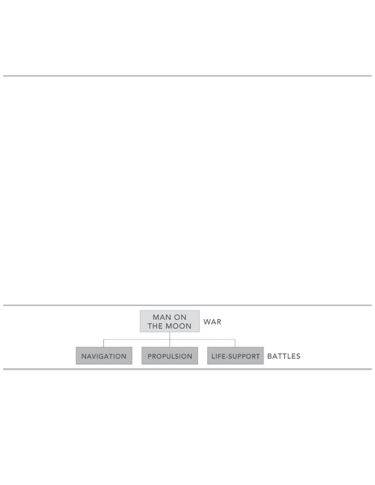
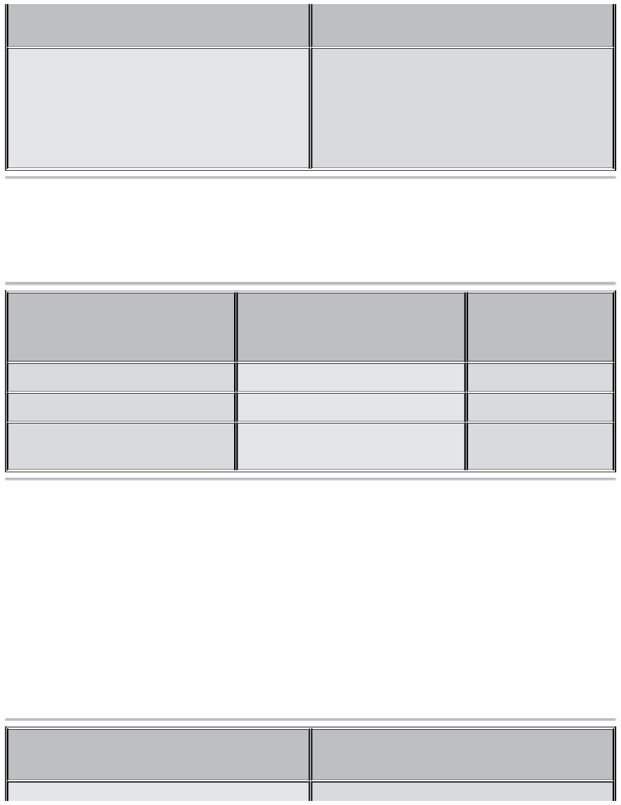
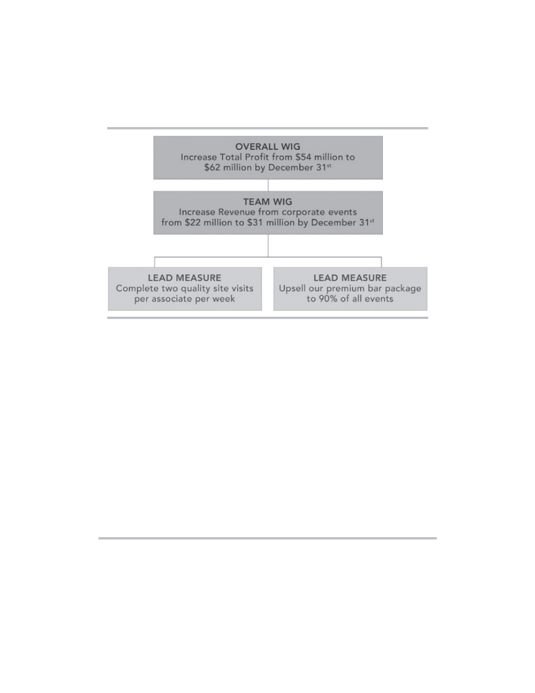
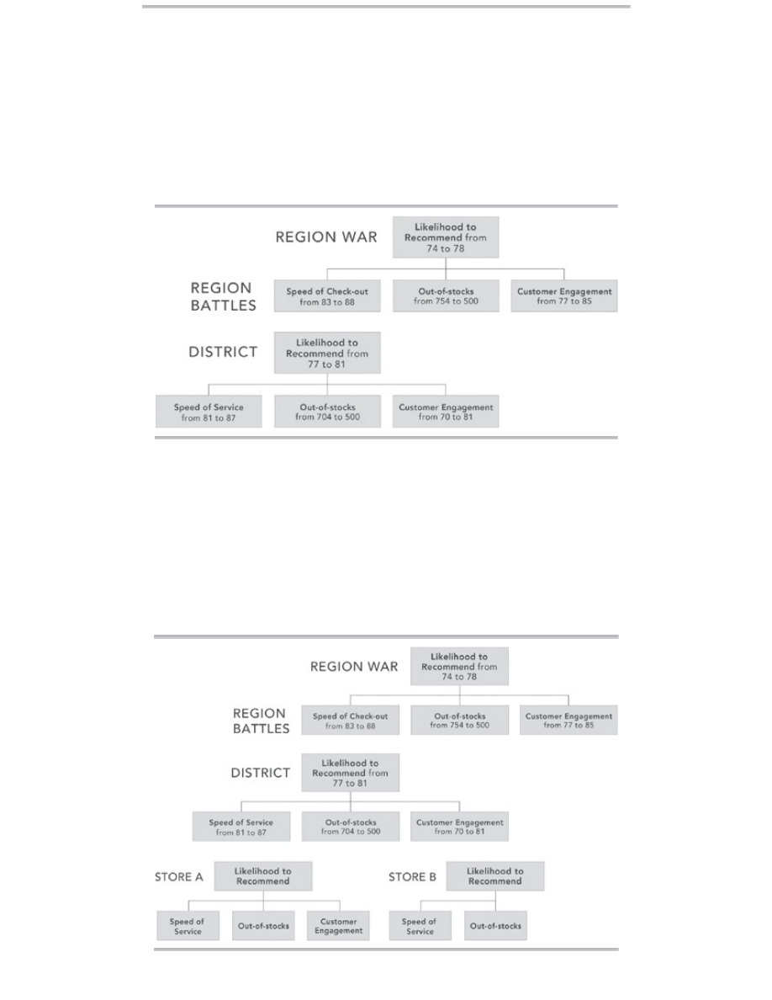

<!DOCTYPE html>
<html xmlns="http://www.w3.org/1999/xhtml" lang="" xml:lang="">
<head>
<title></title>

<meta http-equiv="Content-Type" content="text/html; charset=UTF-8"/>
 <br/>
<style type="text/css">
<!--
	p {margin: 0; padding: 0;}-->
</style>
</head>
<body bgcolor="#A0A0A0" vlink="blue" link="blue">
<div id="page1-div" style="position:relative;width:918px;height:1188px;">

</div>
</body>
</html>
<!DOCTYPE html>
<html xmlns="http://www.w3.org/1999/xhtml" lang="" xml:lang="">
<head>
<title></title>

<meta http-equiv="Content-Type" content="text/html; charset=UTF-8"/>
 <br/>
<style type="text/css">
<!--
	p {margin: 0; padding: 0;}	.ft20{font-size:19px;font-family:Times;color:#0d2362;}
	.ft21{font-size:19px;font-family:Times;color:#000000;}
	.ft22{font-size:19px;font-family:Times;color:#000000;}
	.ft23{font-size:19px;font-family:Times;color:#a69469;}
	.ft24{font-size:19px;font-family:Times;color:#000000;}
	.ft25{font-size:19px;line-height:25px;font-family:Times;color:#000000;}
-->
</style>
</head>
<body bgcolor="#A0A0A0" vlink="blue" link="blue">
<div id="page2-div" style="position:relative;width:918px;height:1188px;">

<p style="position:absolute;top:32px;left:102px;white-space:nowrap" class="ft20"><b>Do	you	remember	the	last	major	initiative	you	watched	die	in	your	organization?</b></p>
<p style="position:absolute;top:80px;left:47px;white-space:nowrap" class="ft20"><b>Did	it	go	down	with	a	loud	crash?	Or	was	it	slowly	and	quietly	suffocated	by	other	competing</b></p>
<p style="position:absolute;top:105px;left:414px;white-space:nowrap" class="ft20"><b>priorities?</b></p>
<p style="position:absolute;top:162px;left:8px;white-space:nowrap" class="ft25">	<br/>By	the	time	it	finally	disappeared,	it’s	likely	no	one	even	noticed.</p>
<p style="position:absolute;top:213px;left:33px;white-space:nowrap" class="ft21">What	happened?	The	“whirlwind”	of	urgent	activity	required	to	keep	things	running	day-today</p>
<p style="position:absolute;top:239px;left:8px;white-space:nowrap" class="ft25">devoured	all	the	time	and	energy	you	needed	to	invest	in	executing	your	strategy	for	tomorrow!<br/><i>The	4	Disciplines	of	Execution</i>	can	change	all	that	forever.</p>
<p style="position:absolute;top:291px;left:33px;white-space:nowrap" class="ft22"><i>The	4	Disciplines	of	Execution</i>	(4DX)	is	a	simple,	repeatable,	and	proven	formula	for	executing</p>
<p style="position:absolute;top:317px;left:8px;white-space:nowrap" class="ft25">on	&#160;your	&#160;most	&#160;important	&#160;strategic	&#160;priorities	&#160;in	&#160;the	&#160;midst	&#160;of	&#160;the	&#160;whirlwind.	&#160;By	&#160;following	&#160;The	&#160;4<br/>Disciplines:</p>
<p style="position:absolute;top:373px;left:8px;white-space:nowrap" class="ft23"><b>•</b></p>
<p style="position:absolute;top:373px;left:15px;white-space:nowrap" class="ft24"><b>	</b></p>
<p style="position:absolute;top:373px;left:20px;white-space:nowrap" class="ft20"><b>Focusing	on	the	Wildly	Important</b></p>
<p style="position:absolute;top:404px;left:8px;white-space:nowrap" class="ft23"><b>•</b></p>
<p style="position:absolute;top:404px;left:15px;white-space:nowrap" class="ft24"><b>	</b></p>
<p style="position:absolute;top:404px;left:20px;white-space:nowrap" class="ft20"><b>Acting	on	Lead	Measures</b></p>
<p style="position:absolute;top:434px;left:8px;white-space:nowrap" class="ft23"><b>•</b></p>
<p style="position:absolute;top:434px;left:15px;white-space:nowrap" class="ft24"><b>	</b></p>
<p style="position:absolute;top:434px;left:20px;white-space:nowrap" class="ft20"><b>Keeping	a	Compelling	Scoreboard</b></p>
<p style="position:absolute;top:464px;left:8px;white-space:nowrap" class="ft23"><b>•</b></p>
<p style="position:absolute;top:464px;left:15px;white-space:nowrap" class="ft24"><b>	</b></p>
<p style="position:absolute;top:464px;left:20px;white-space:nowrap" class="ft20"><b>Creating	a	Cadence	of	Accountability</b></p>
<p style="position:absolute;top:491px;left:8px;white-space:nowrap" class="ft25">leaders	can	produce	breakthrough	results,	even	when	executing	the	strategy	requires	a	significant<br/>change	in	behavior	from	their	teams.</p>
<p style="position:absolute;top:543px;left:33px;white-space:nowrap" class="ft21">4DX	is	not	theory.	It	is	a	proven	set	of	practices	that	have	been	tested	and	refined	by	hundreds</p>
<p style="position:absolute;top:569px;left:8px;white-space:nowrap" class="ft25">of	&#160;organizations	&#160;and	&#160;thousands	&#160;of	&#160;teams	&#160;over	&#160;many	&#160;years.	&#160;When	&#160;a	&#160;company	&#160;or	&#160;an	&#160;individual<br/>adheres	to	these	disciplines,	they	achieve	superb	results—regardless	of	the	goal.	4DX	represents	a<br/>new	&#160;way	&#160;of	&#160;thinking	&#160;and	&#160;working	&#160;that	&#160;is	&#160;essential	&#160;to	&#160;thriving	&#160;in	&#160;today’s	&#160;competitive	&#160;climate.<br/>Simply	put,	this	is	one	book	that	no	business	leader	can	afford	to	miss.</p>
</div>
</body>
</html>
<!DOCTYPE html>
<html xmlns="http://www.w3.org/1999/xhtml" lang="" xml:lang="">
<head>
<title></title>

<meta http-equiv="Content-Type" content="text/html; charset=UTF-8"/>
 <br/>
<style type="text/css">
<!--
	p {margin: 0; padding: 0;}	.ft30{font-size:33px;font-family:Times;color:#000000;}
	.ft31{font-size:33px;font-family:Times;color:#000000;}
	.ft32{font-size:33px;font-family:Times;color:#000000;}
	.ft33{font-size:19px;font-family:Times;color:#000000;}
	.ft34{font-size:19px;font-family:Times;color:#000000;}
	.ft35{font-size:19px;font-family:Times;color:#0d2362;}
	.ft36{font-size:19px;font-family:Times;color:#0d2362;}
	.ft37{font-size:14px;font-family:Times;color:#0d2362;}
	.ft38{font-size:19px;line-height:25px;font-family:Times;color:#000000;}
	.ft39{font-size:19px;line-height:25px;font-family:Times;color:#000000;}
-->
</style>
</head>
<body bgcolor="#A0A0A0" vlink="blue" link="blue">
<div id="page3-div" style="position:relative;width:918px;height:1188px;">

<p style="position:absolute;top:42px;left:36px;white-space:nowrap" class="ft30"><b>PRAISE	FOR</b>	<i><b>THE	4	DISCIPLINES	OF	EXECUTION</b></i></p>
<p style="position:absolute;top:94px;left:8px;white-space:nowrap" class="ft38">	<br/>“What	&#160;Six	&#160;Sigma	&#160;and	&#160;Lean	&#160;are	&#160;to	&#160;manufacturing,	&#160;<i>The	&#160;4	&#160;Disciplines	&#160;of	&#160;Execution</i>	&#160;is	&#160;to	&#160;executing<br/>your	&#160;strategy.	&#160;4DX	&#160;is	&#160;a	&#160;practical	&#160;methodology	&#160;that	&#160;can	&#160;solve	&#160;every	&#160;leader’s	&#160;#1	&#160;challenge:<br/>execution.”</p>
<p style="position:absolute;top:197px;left:159px;white-space:nowrap" class="ft35"><b>—RAM	CHARAN,	coauthor	of	the	bestselling</b>	<b>Execution:	The	Discipline	of	Getting</b></p>
<p style="position:absolute;top:223px;left:343px;white-space:nowrap" class="ft35"><b>Things	Done</b>	<b>and	author	of</b>	<b>What	the	CEO	Wants	You	to	Know</b></p>
<p style="position:absolute;top:271px;left:8px;white-space:nowrap" class="ft38">“Many	of	the	foundational	values	of	Marriott	are	embodied	within	<i>The	4	Disciplines	of	Execution</i>.<br/>By	utilizing	this	process	inside	our	organization,	our	leaders	and	teams	have	been	able	to	set	and<br/>achieve	&#160;extraordinary	&#160;goals,	&#160;which	&#160;have	&#160;had	&#160;a	&#160;significant	&#160;impact	&#160;on	&#160;making	&#160;‘Our	&#160;Guests’<br/>Experience’	&#160;truly	&#160;remarkable.	&#160;Any	&#160;organization	&#160;can	&#160;create	&#160;these	&#160;same	&#160;kinds	&#160;of	&#160;breakthrough<br/>results	if	they	apply	the	principles	and	processes	taught	in	this	book!”</p>
<p style="position:absolute;top:400px;left:221px;white-space:nowrap" class="ft35"><b>—J.	W.	MARRIOTT,	JR.,	Chairman	and	Chief	Executive	Officer,	Marriott</b></p>
<p style="position:absolute;top:426px;left:747px;white-space:nowrap" class="ft35"><b>International,	Inc.</b></p>
<p style="position:absolute;top:474px;left:8px;white-space:nowrap" class="ft38">“Customers	&#160;are	&#160;loyal	&#160;to	&#160;a	&#160;brand	&#160;when	&#160;they	&#160;can	&#160;trust	&#160;it	&#160;to	&#160;deliver	&#160;a	&#160;consistently	&#160;outstanding<br/>experience.	This	requires	the	commitment	of	everyone	up	and	down	the	organization	to	innovate<br/>new	&#160;ways	&#160;to	&#160;economically	&#160;delight	&#160;customers	&#160;so	&#160;they	&#160;become	&#160;promoters.	&#160;<i>The	&#160;4	&#160;Disciplines	&#160;of<br/>Execution</i>	&#160;offers	&#160;a	&#160;proven	&#160;process	&#160;for	&#160;engaging	&#160;the	&#160;hearts	&#160;and	&#160;minds	&#160;of	&#160;every	&#160;employee	&#160;toward<br/>this	vital	goal.	I	highly	recommend	this	book	to	any	leader	committed	to	making	customer	loyalty<br/>a	mission-critical	goal.”</p>
<p style="position:absolute;top:630px;left:179px;white-space:nowrap" class="ft35"><b>—FRED	REICHHELD,	Bain	Fellow,	inventor	of	the	Net	Promoter</b></p>
<p style="position:absolute;top:631px;left:784px;white-space:nowrap" class="ft37"><b>®</b></p>
<p style="position:absolute;top:630px;left:796px;white-space:nowrap" class="ft35"><b>	System,	and</b></p>
<p style="position:absolute;top:656px;left:585px;white-space:nowrap" class="ft35"><b>author	of</b>	<b>The	Ultimate	Question	2.0</b></p>
<p style="position:absolute;top:704px;left:8px;white-space:nowrap" class="ft38">“In	a	business	world	where	the	essence	of	leadership	centers	around	strategy,	this	book	highlights<br/>the	&#160;true	&#160;requirements	&#160;of	&#160;any	&#160;organization	&#160;to	&#160;focus	&#160;on	&#160;the	&#160;principles	&#160;of	&#160;execution.	&#160;At	&#160;The	&#160;Ritz-<br/>Carlton,	I	believe	the	only	way	to	strengthen	operational	excellence	is	through	flawless	execution.<br/>The	&#160;application	&#160;of	&#160;Focus,	&#160;Leverage,	&#160;Engagement,	&#160;and	&#160;Accountability,	&#160;as	&#160;discussed	&#160;in	&#160;<i>The	&#160;4<br/>Disciplines	of	Execution,</i>	are	key	to	our	success	and	make	exceptional	reading	for	today’s	business<br/>leaders.”</p>
<p style="position:absolute;top:859px;left:123px;white-space:nowrap" class="ft35"><b>—HERVE	HUMLER,	President	and	Chief	Operations	Officer,	The	Ritz-Carlton	Hotel</b></p>
<p style="position:absolute;top:885px;left:825px;white-space:nowrap" class="ft35"><b>Company</b></p>
<p style="position:absolute;top:933px;left:8px;white-space:nowrap" class="ft38">“<i>The	4	Disciplines	of	Execution</i>	contains	principles	and	processes	that	do	indeed	work.	I	do	believe<br/>that	&#160;‘execution	&#160;excellence’	&#160;is	&#160;the	&#160;ultimate	&#160;competitive	&#160;differential	&#160;of	&#160;this	&#160;decade.	&#160;As	&#160;we	&#160;have<br/>partnered	&#160;with	&#160;FranklinCovey	&#160;to	&#160;apply	&#160;the	&#160;methodology	&#160;and	&#160;process	&#160;globally	&#160;throughout	&#160;our<br/>organization,	it	has	not	only	had	a	significant	impact	on	our	organization’s	business	results,	it	has<br/>been	transformational	for	me	as	a	leader,	both	personally	and	professionally.”</p>
<p style="position:absolute;top:1062px;left:205px;white-space:nowrap" class="ft35"><b>—JEFF	SIMMONS,	President,	Elanco	Animal	Health,	Eli	Lilly	and	Company</b></p>
<p style="position:absolute;top:1110px;left:8px;white-space:nowrap" class="ft38">“<i>The	4	Disciplines	of	Execution</i>	helps	leaders,	teams,	and	front-line	employees	narrow	their	focus<br/>and	&#160;spend	&#160;their	&#160;time	&#160;executing	&#160;those	&#160;things	&#160;that	&#160;will	&#160;bring	&#160;the	&#160;highest	&#160;return	&#160;for	&#160;their</p>
</div>
</body>
</html>
<!DOCTYPE html>
<html xmlns="http://www.w3.org/1999/xhtml" lang="" xml:lang="">
<head>
<title></title>

<meta http-equiv="Content-Type" content="text/html; charset=UTF-8"/>
 <br/>
<style type="text/css">
<!--
	p {margin: 0; padding: 0;}	.ft40{font-size:19px;font-family:Times;color:#000000;}
	.ft41{font-size:19px;font-family:Times;color:#0d2362;}
	.ft42{font-size:14px;font-family:Times;color:#000000;}
	.ft43{font-size:14px;font-family:Times;color:#0000ee;}
	.ft44{font-size:14px;font-family:Times;color:#0d2362;}
	.ft45{font-size:19px;line-height:25px;font-family:Times;color:#000000;}
-->
</style>
</head>
<body bgcolor="#A0A0A0" vlink="blue" link="blue">
<div id="page4-div" style="position:relative;width:918px;height:1188px;">

<p style="position:absolute;top:8px;left:8px;white-space:nowrap" class="ft45">organization	and	customers.	This	book	is	a	must-read	for	any	leader	who	wants	to	achieve	that<br/>which	is	extraordinary	in	their	company!”</p>
<p style="position:absolute;top:60px;left:180px;white-space:nowrap" class="ft41"><b>—DIANA	THOMAS,	US	Vice	President	of	Training	and	Learning	Development,</b></p>
<p style="position:absolute;top:86px;left:472px;white-space:nowrap" class="ft41"><b>Hamburger	University,	McDonald’s	Corporation</b></p>
<p style="position:absolute;top:144px;left:456px;white-space:nowrap" class="ft40">	</p>
<p style="position:absolute;top:203px;left:279px;white-space:nowrap" class="ft42"><b>LINK:<a href="http://www.4dxbook.com/qr/bookoverview">	</a></b></p>
<p style="position:absolute;top:203px;left:328px;white-space:nowrap" class="ft43"><a href="http://www.4dxbook.com/qr/bookoverview"><b>http://www.4dxbook.com/qr/bookoverview</b></a></p>
<p style="position:absolute;top:226px;left:252px;white-space:nowrap" class="ft44"><b>FOR	MORE	INFORMATION	VISIT</b></p>
<p style="position:absolute;top:222px;left:522px;white-space:nowrap" class="ft41"><b>	</b></p>
<p style="position:absolute;top:226px;left:528px;white-space:nowrap" class="ft43"><a href="http://www.4dxbook.com"><b>www.4dxbook.com</b></a></p>
</div>
</body>
</html>
<!DOCTYPE html>
<html xmlns="http://www.w3.org/1999/xhtml" lang="" xml:lang="">
<head>
<title></title>

<meta http-equiv="Content-Type" content="text/html; charset=UTF-8"/>
 <br/>
<style type="text/css">
<!--
	p {margin: 0; padding: 0;}	.ft50{font-size:19px;font-family:Times;color:#0d2362;}
	.ft51{font-size:19px;font-family:Times;color:#000000;}
	.ft52{font-size:14px;font-family:Times;color:#000000;}
	.ft53{font-size:33px;font-family:Times;color:#0000ee;}
	.ft54{font-size:19px;line-height:25px;font-family:Times;color:#000000;}
-->
</style>
</head>
<body bgcolor="#A0A0A0" vlink="blue" link="blue">
<div id="page5-div" style="position:relative;width:918px;height:1188px;">

<p style="position:absolute;top:143px;left:8px;white-space:nowrap" class="ft50"><b>CHRIS	McCHESNEY</b></p>
<p style="position:absolute;top:143px;left:219px;white-space:nowrap" class="ft51">	is	the	Global	Practice	Leader	of	Execution	for	FranklinCovey	and	one	of</p>
<p style="position:absolute;top:169px;left:8px;white-space:nowrap" class="ft54">the	&#160;primary	&#160;developers	&#160;of	&#160;The	&#160;4	&#160;Disciplines	&#160;of	&#160;Execution.	&#160;For	&#160;more	&#160;than	&#160;a	&#160;decade,	&#160;he	&#160;has	&#160;led<br/>FranklinCovey’s	&#160;ongoing	&#160;design	&#160;and	&#160;development	&#160;of	&#160;these	&#160;principles,	&#160;as	&#160;well	&#160;as	&#160;the	&#160;consulting<br/>organization	&#160;that	&#160;has	&#160;achieved	&#160;extraordinary	&#160;growth	&#160;in	&#160;many	&#160;countries	&#160;around	&#160;the	&#160;globe	&#160;and<br/>impacted	hundreds	of	organizations.</p>
<p style="position:absolute;top:408px;left:8px;white-space:nowrap" class="ft50"><b>SEAN	&#160;COVEY</b></p>
<p style="position:absolute;top:408px;left:160px;white-space:nowrap" class="ft51">	&#160;is	&#160;Executive	&#160;Vice	&#160;President	&#160;of	&#160;Global	&#160;Solutions	&#160;and	&#160;Partnerships	&#160;for</p>
<p style="position:absolute;top:434px;left:8px;white-space:nowrap" class="ft54">FranklinCovey	&#160;and	&#160;oversees	&#160;FranklinCovey’s	&#160;international	&#160;operations	&#160;in	&#160;141	&#160;countries	&#160;around<br/>the	&#160;globe.	&#160;As	&#160;the	&#160;Chief	&#160;Product	&#160;Architect	&#160;for	&#160;FranklinCovey,	&#160;Sean	&#160;organized	&#160;and	&#160;directed	&#160;the<br/>original	&#160;teams	&#160;that	&#160;conceived	&#160;and	&#160;created	&#160;The	&#160;4	&#160;Disciplines	&#160;of	&#160;Execution	&#160;and	&#160;has	&#160;been	&#160;an	&#160;avid<br/>practitioner	and	promoter	of	the	methodology	ever	since.</p>
<p style="position:absolute;top:671px;left:8px;white-space:nowrap" class="ft50"><b>JIM	HULING</b></p>
<p style="position:absolute;top:671px;left:145px;white-space:nowrap" class="ft51">	is	the	Managing	Consultant	for	Franklin-Covey’s	The	4	Disciplines	of	Execution.</p>
<p style="position:absolute;top:697px;left:8px;white-space:nowrap" class="ft54">Jim’s	&#160;career	&#160;spans	&#160;more	&#160;than	&#160;three	&#160;decades	&#160;of	&#160;corporate	&#160;leadership,	&#160;from	&#160;Fortune	&#160;500<br/>organizations	to	privately	held	companies,	including	serving	as	CEO	of	a	company	recognized	as<br/>one	&#160;of	&#160;the	&#160;“25	&#160;Best	&#160;Companies	&#160;to	&#160;Work	&#160;for	&#160;in	&#160;America.”	&#160;Prior	&#160;to	&#160;joining	&#160;Franklin-Covey,	&#160;Jim<br/>was	one	of	the	first	leaders	to	adopt	The	4	Disciplines	of	Execution.<br/>	</p>
<p style="position:absolute;top:838px;left:335px;white-space:nowrap" class="ft51">AUDIO	EDITION	ALSO	AVAILABLE</p>
<p style="position:absolute;top:874px;left:311px;white-space:nowrap" class="ft52">MEET	THE	AUTHORS,	WATCH	VIDEOS	AND	MORE	AT</p>
<p style="position:absolute;top:894px;left:305px;white-space:nowrap" class="ft53"><a href="http://SimonandSchuster.com">SimonandSchuster.com</a></p>
<p style="position:absolute;top:936px;left:336px;white-space:nowrap" class="ft51">•	</p>
<p style="position:absolute;top:940px;left:352px;white-space:nowrap" class="ft52">THE	SOURCE	FOR	READING	GROUPS</p>
<p style="position:absolute;top:936px;left:566px;white-space:nowrap" class="ft51">	•</p>
<p style="position:absolute;top:1005px;left:347px;white-space:nowrap" class="ft52">JACKET	DESIGN	BY	ERIC	FUENTECILL	A</p>
<p style="position:absolute;top:1024px;left:340px;white-space:nowrap" class="ft52">COPYRIGHT	©	2012	SIMON	&amp;	SCHUSTER</p>
</div>
</body>
</html>
<!DOCTYPE html>
<html xmlns="http://www.w3.org/1999/xhtml" lang="" xml:lang="">
<head>
<title></title>

<meta http-equiv="Content-Type" content="text/html; charset=UTF-8"/>
 <br/>
<style type="text/css">
<!--
	p {margin: 0; padding: 0;}	.ft60{font-size:28px;font-family:Times;color:#000000;}
	.ft61{font-size:28px;font-family:Times;color:#000000;}
	.ft62{font-size:19px;font-family:Times;color:#000000;}
	.ft63{font-size:19px;font-family:Times;color:#000000;}
	.ft64{font-size:19px;font-family:Times;color:#000000;}
	.ft65{font-size:19px;line-height:25px;font-family:Times;color:#000000;}
	.ft66{font-size:19px;line-height:25px;font-family:Times;color:#000000;}
-->
</style>
</head>
<body bgcolor="#A0A0A0" vlink="blue" link="blue">
<div id="page6-div" style="position:relative;width:918px;height:1188px;">

<p style="position:absolute;top:10px;left:201px;white-space:nowrap" class="ft60"><b>Praise	for</b>	<b>The	4	Disciplines	of	Execution</b></p>
<p style="position:absolute;top:66px;left:421px;white-space:nowrap" class="ft62">_______</p>
<p style="position:absolute;top:113px;left:8px;white-space:nowrap" class="ft65">“In	&#160;place	&#160;of	&#160;the	&#160;top-down,	&#160;control-oriented	&#160;management	&#160;techniques	&#160;of	&#160;the	&#160;industrial	&#160;age,	&#160;the	&#160;4<br/>Disciplines	&#160;offer	&#160;a	&#160;release-oriented,	&#160;knowledge-worker-age	&#160;approach	&#160;to	&#160;executing	&#160;goals	&#160;and<br/>strategies,	&#160;an	&#160;approach	&#160;that	&#160;engages	&#160;people’s	&#160;hearts	&#160;and	&#160;minds	&#160;toward	&#160;a	&#160;common	&#160;goal	&#160;unlike<br/>anything	I’ve	seen.	Truly	a	profound	work!”</p>
<p style="position:absolute;top:217px;left:40px;white-space:nowrap" class="ft62">—<b>Stephen	R.	Covey,	#1</b>	<b>New	York	Times</b>	<b>bestselling	author	of</b>	<b>The	7	Habits	of	Highly</b></p>
<p style="position:absolute;top:243px;left:62px;white-space:nowrap" class="ft63"><b>Effective	People</b>	<b>and</b>	<b>The	3rd	Alternative:	Solving	Life’s	Most	Difficult	Problems</b></p>
<p style="position:absolute;top:290px;left:8px;white-space:nowrap" class="ft65">“Marriott	was	founded	on	the	philosophy	‘Take	care	of	your	employees	and	they’ll	take	care	of<br/>your	customers.’	Through	the	principles	of	<i>The	4	Disciplines	of	Execution</i>,	we’ve	been	able	to	give<br/>our	&#160;people	&#160;a	&#160;powerful	&#160;tool	&#160;for	&#160;staying	&#160;focused	&#160;on	&#160;what	&#160;is	&#160;most	&#160;important	&#160;to	&#160;us:	&#160;‘Our	&#160;Guests’<br/>Experience.’	&#160;I	&#160;highly	&#160;recommend	&#160;this	&#160;book	&#160;for	&#160;anyone	&#160;who	&#160;wants	&#160;to	&#160;create	&#160;breakthrough<br/>results!”</p>
<p style="position:absolute;top:420px;left:40px;white-space:nowrap" class="ft62">—<b>David	Grissen,	President,	The	Americas,	Marriott	International,	Inc.</b></p>
<p style="position:absolute;top:467px;left:8px;white-space:nowrap" class="ft65">“The	&#160;State	&#160;of	&#160;Georgia	&#160;had	&#160;unprecedented	&#160;success	&#160;as	&#160;a	&#160;result	&#160;of	&#160;implementing	&#160;the	&#160;principles<br/>outlined	in	<i>The	4	Disciplines	of	Execution.</i>	We	certified	hundreds	of	leaders	to	take	the	disciplines<br/>to	&#160;every	&#160;department,	&#160;achieving	&#160;unprecedented	&#160;results	&#160;in	&#160;customer	&#160;service,	&#160;quality	&#160;improvement,<br/>and	&#160;cost	&#160;reduction.	&#160;These	&#160;execution	&#160;principles	&#160;are	&#160;a	&#160;must	&#160;for	&#160;any	&#160;government	&#160;agency	&#160;that	&#160;is<br/>seeking	to	be	world	class.”</p>
<p style="position:absolute;top:598px;left:40px;white-space:nowrap" class="ft62">—<b>The	Honorable	Sonny	Perdue,	Governor	of	Georgia,	2003–2011</b></p>
<p style="position:absolute;top:645px;left:8px;white-space:nowrap" class="ft65">“<i>The	4	Disciplines’</i>	practical	guidance	on	goal-setting	and	measurement	resonates	with	groups	at<br/>all	&#160;levels	&#160;in	&#160;our	&#160;organization.	&#160;Many	&#160;teams	&#160;have	&#160;applied	&#160;this	&#160;intuitive	&#160;approach	&#160;to	&#160;build<br/>engagement	and	increase	execution	and	accountability.”</p>
<p style="position:absolute;top:723px;left:40px;white-space:nowrap" class="ft62">—<b>Dave	Dillon,	Chairman	and	Chief	Executive	Officer,	The	Kroger	Co.</b></p>
<p style="position:absolute;top:771px;left:8px;white-space:nowrap" class="ft65">“We	believe	that	<i>The	4	Disciplines	of	Execution</i>	are	the	keys	to	growth	and	success.	For	years	we<br/>have	&#160;struggled	&#160;with	&#160;creating	&#160;focus	&#160;for	&#160;our	&#160;people.	&#160;We	&#160;have	&#160;used	&#160;priority	&#160;sheets,	&#160;standards	&#160;of<br/>performance	&#160;measures,	&#160;and	&#160;other	&#160;methods.	&#160;We	&#160;have	&#160;fallen	&#160;in	&#160;love	&#160;with	&#160;the	&#160;concepts	&#160;of<br/>‘whirlwind’	and	‘WIG’!	When	you	read	this	book,	you	will	never	look	at	work	or	life	the	same!”</p>
<p style="position:absolute;top:874px;left:40px;white-space:nowrap" class="ft62">—<b>Danny	Wegman,	Chief	Executive	Officer,	Wegmans	Food	Markets,	Inc.,	#1	on</b>	<b>Fortune</b>’s</p>
<p style="position:absolute;top:900px;left:62px;white-space:nowrap" class="ft63"><b>2005	list	of	the	“100	Best	Companies	to	Work	For”</b></p>
<p style="position:absolute;top:948px;left:8px;white-space:nowrap" class="ft65">“You	&#160;don’t	&#160;have	&#160;a	&#160;strategy	&#160;problem,	&#160;you	&#160;have	&#160;an	&#160;execution	&#160;problem!	&#160;<i>The	&#160;4	&#160;Disciplines	&#160;of<br/>Execution</i>	&#160;tells	&#160;you	&#160;everything	&#160;you	&#160;need	&#160;to	&#160;know	&#160;to	&#160;make	&#160;your	&#160;wildly	&#160;important	&#160;goals	&#160;a	&#160;reality.<br/>This	simple,	effective	model	is	easy	to	understand,	easy	to	apply,	and	delivers	results.	I’ve	used	it<br/>in	my	personal	life,	with	my	family,	and	in	my	organization.	It	works!”</p>
<p style="position:absolute;top:1052px;left:40px;white-space:nowrap" class="ft62">—<b>Richard	Stocking,	President	and	Chief	Operating	Officer,	Swift	Transportation</b></p>
<p style="position:absolute;top:1099px;left:8px;white-space:nowrap" class="ft65">“I’ve	seen	many	great	initiatives	fail	because	of	the	inability	to	make	the	transition	from	strategy<br/>to	&#160;execution.	&#160;The	&#160;authors	&#160;here	&#160;have	&#160;developed	&#160;a	&#160;real-world,	&#160;practical	&#160;guide	&#160;for	&#160;navigating<br/>through	&#160;the	&#160;obstacles	&#160;to	&#160;success.	&#160;While	&#160;reading	&#160;this	&#160;book,	&#160;I	&#160;thought	&#160;over	&#160;and	&#160;over	&#160;again	&#160;to</p>
</div>
</body>
</html>
<!DOCTYPE html>
<html xmlns="http://www.w3.org/1999/xhtml" lang="" xml:lang="">
<head>
<title></title>

<meta http-equiv="Content-Type" content="text/html; charset=UTF-8"/>
 <br/>
<style type="text/css">
<!--
	p {margin: 0; padding: 0;}	.ft70{font-size:19px;font-family:Times;color:#000000;}
	.ft71{font-size:19px;font-family:Times;color:#000000;}
	.ft72{font-size:19px;font-family:Times;color:#000000;}
	.ft73{font-size:19px;line-height:25px;font-family:Times;color:#000000;}
	.ft74{font-size:19px;line-height:25px;font-family:Times;color:#000000;}
-->
</style>
</head>
<body bgcolor="#A0A0A0" vlink="blue" link="blue">
<div id="page7-div" style="position:relative;width:918px;height:1188px;">

<p style="position:absolute;top:8px;left:8px;white-space:nowrap" class="ft70">myself,	‘I	wish	I	would	have	had	this	resource	ten	years	ago.’”</p>
<p style="position:absolute;top:34px;left:40px;white-space:nowrap" class="ft70">—<b>Terry	D.	Scott,	10th	Master	Chief	Petty	Officer	of	the	Navy,	April	2002–July	2006,	Retired</b></p>
<p style="position:absolute;top:82px;left:8px;white-space:nowrap" class="ft73">“Few	things	in	business	are	harder	than	finding	the	handful	of	simple	actions	that	every	employee<br/>can	take	to	help	the	company	achieve	its	most	important	objectives.	The	4	Disciplines	provide	a<br/>simple,	common-sense	way	to	help	achieve	real	results.”</p>
<p style="position:absolute;top:159px;left:40px;white-space:nowrap" class="ft70">—<b>Rob	Markey,	Partner,	Bain	&amp;	Company,	and	coauthor	of</b>	<b>The	Ultimate	Question	2.0</b></p>
<p style="position:absolute;top:207px;left:8px;white-space:nowrap" class="ft73">“<i>The	&#160;4	&#160;Disciplines	&#160;of	&#160;Execution</i>	&#160;methodology	&#160;and	&#160;process,	&#160;contained	&#160;in	&#160;this	&#160;book,	&#160;have	&#160;been<br/>extremely	helpful	to	our	organization.	It	has	allowed	us	to	align	and	cascade	our	wildly	important<br/>goals	&#160;throughout	&#160;our	&#160;teams,	&#160;which	&#160;has	&#160;resulted	&#160;in	&#160;an	&#160;increase	&#160;in	&#160;employee	&#160;engagement	&#160;and<br/>improved	&#160;client	&#160;service	&#160;and	&#160;project	&#160;delivery.	&#160;As	&#160;we	&#160;continue	&#160;to	&#160;invest	&#160;in	&#160;our	&#160;employees,	&#160;this<br/>process	remains	critical	to	achieving	our	overall	corporate	goals.”</p>
<p style="position:absolute;top:338px;left:40px;white-space:nowrap" class="ft70">—<b>Andrew	Frawley,	President,	Epsilon</b></p>
<p style="position:absolute;top:385px;left:8px;white-space:nowrap" class="ft73">“Genius	and	simplicity	describe	<i>The	4	Disciplines	of	Execution.</i>	If	you	want	to	succeed	with	your<br/>strategic	plan,	utilizing	this	process	and	methodology	will	pay	dividends.	Focusing	one’s	efforts	on<br/>lead	measures	will	result	in	success.	And,	the	process	of	continual,	quick	accountability	checkups<br/>encourages	excellence.”</p>
<p style="position:absolute;top:489px;left:40px;white-space:nowrap" class="ft70">—<b>Walter	Levy,	Co-President	and	Co-Chief	Executive	Officer,	NCH	Corporation</b></p>
<p style="position:absolute;top:536px;left:8px;white-space:nowrap" class="ft70">“‘Wildly	</p>
<p style="position:absolute;top:536px;left:111px;white-space:nowrap" class="ft70">important	</p>
<p style="position:absolute;top:536px;left:232px;white-space:nowrap" class="ft70">goals,’	</p>
<p style="position:absolute;top:536px;left:317px;white-space:nowrap" class="ft70">‘lead	</p>
<p style="position:absolute;top:536px;left:388px;white-space:nowrap" class="ft70">measures,’	</p>
<p style="position:absolute;top:536px;left:511px;white-space:nowrap" class="ft70">‘compelling	</p>
<p style="position:absolute;top:536px;left:643px;white-space:nowrap" class="ft70">scoreboard,’	</p>
<p style="position:absolute;top:536px;left:785px;white-space:nowrap" class="ft70">‘cadence	</p>
<p style="position:absolute;top:536px;left:891px;white-space:nowrap" class="ft70">of</p>
<p style="position:absolute;top:562px;left:8px;white-space:nowrap" class="ft73">accountability’—<i>The	&#160;4	&#160;Disciplines	&#160;of	&#160;Execution</i>	&#160;delivers	&#160;the	&#160;essential	&#160;battle	&#160;cry	&#160;every	&#160;leader	&#160;and<br/>organization	requires,	plus	the	guidelines	on	how	to	respond.	The	disciplines	allow	any	leader	the<br/>ability	to	move	beyond	the	vision	into	the	flawless	execution	of	strategy.	This	book	is	a	great	gift<br/>to	any	leader	in	any	organization.”</p>
<p style="position:absolute;top:666px;left:40px;white-space:nowrap" class="ft70">—<b>Frances	Hesselbein,	President	and	Chief	Executive	Officer,	The	Frances	Hesselbein</b></p>
<p style="position:absolute;top:692px;left:62px;white-space:nowrap" class="ft74"><b>Leadership	Institute,	and	founder	of	The	Peter	F.	Drucker	Foundation	for	Nonprofit<br/>Management</b></p>
<p style="position:absolute;top:765px;left:8px;white-space:nowrap" class="ft73">“Well	&#160;done!	&#160;Disciplined	&#160;leveraging	&#160;of	&#160;this	&#160;work	&#160;will	&#160;profoundly	&#160;help	&#160;raise	&#160;the	&#160;standard	&#160;of<br/>executional	excellence	in	any	and	all	organizations.”</p>
<p style="position:absolute;top:817px;left:40px;white-space:nowrap" class="ft70">—<b>Douglas	R.	Conant,	Chief	Executive	Officer,	retired,	Campbell	Soup	Company,	and</b>	<b>New</b></p>
<p style="position:absolute;top:843px;left:62px;white-space:nowrap" class="ft71"><b>York	Times</b>	<b>bestselling	author</b></p>
<p style="position:absolute;top:891px;left:8px;white-space:nowrap" class="ft73">“I’ve	practiced	and	embraced	the	principles	and	process	found	in	this	book	for	many	years	and<br/>can	attest	this	is	a	great	framework	to	help	organizations	achieve	their	strategic	goals.”</p>
<p style="position:absolute;top:942px;left:40px;white-space:nowrap" class="ft70">—<b>Roger	Morgan,	President	and	Chief	Executive	Officer,	Retail	Products	Group</b></p>
<p style="position:absolute;top:990px;left:8px;white-space:nowrap" class="ft73">“<i>The	&#160;4	&#160;Disciplines	&#160;of	&#160;Execution</i>	&#160;is	&#160;a	&#160;practical	&#160;guide	&#160;for	&#160;organizational	&#160;excellence.	&#160;It	&#160;provides	&#160;a<br/>simple,	&#160;actionable	&#160;approach	&#160;for	&#160;success	&#160;at	&#160;all	&#160;levels	&#160;of	&#160;any	&#160;organization.	&#160;The	&#160;process	&#160;creates<br/>maniacal	&#160;focus	&#160;and	&#160;leads	&#160;to	&#160;uncommon	&#160;results.	&#160;Though	&#160;the	&#160;word	&#160;‘proactive’	&#160;is	&#160;overused	&#160;and<br/>underachieved	&#160;in	&#160;business,	&#160;the	&#160;4DX	&#160;process	&#160;truly	&#160;creates	&#160;proactive	&#160;momentum	&#160;and	&#160;sustainable<br/>results.”</p>
<p style="position:absolute;top:1121px;left:40px;white-space:nowrap" class="ft70">—<b>Matt	Oldroyd,	President	and	Chief	Executive	Officer,	Partsmaster</b></p>
</div>
</body>
</html>
<!DOCTYPE html>
<html xmlns="http://www.w3.org/1999/xhtml" lang="" xml:lang="">
<head>
<title></title>

<meta http-equiv="Content-Type" content="text/html; charset=UTF-8"/>
 <br/>
<style type="text/css">
<!--
	p {margin: 0; padding: 0;}	.ft80{font-size:19px;font-family:Times;color:#000000;}
	.ft81{font-size:19px;font-family:Times;color:#000000;}
	.ft82{font-size:19px;font-family:Times;color:#000000;}
	.ft83{font-size:19px;line-height:25px;font-family:Times;color:#000000;}
	.ft84{font-size:19px;line-height:25px;font-family:Times;color:#000000;}
-->
</style>
</head>
<body bgcolor="#A0A0A0" vlink="blue" link="blue">
<div id="page8-div" style="position:relative;width:918px;height:1188px;">

<p style="position:absolute;top:8px;left:8px;white-space:nowrap" class="ft83">“Each	&#160;person	&#160;comes	&#160;to	&#160;this	&#160;world	&#160;packed	&#160;with	&#160;unlimited	&#160;capacity.	&#160;He	&#160;can	&#160;accomplish	&#160;wonders.<br/>There	&#160;is	&#160;nothing	&#160;in	&#160;life	&#160;more	&#160;exhilarating	&#160;than	&#160;to	&#160;achieve	&#160;something	&#160;important	&#160;to	&#160;him	&#160;and	&#160;to<br/>achieve	&#160;it	&#160;with	&#160;excellence.	&#160;In	&#160;<i>The	&#160;4	&#160;Disciplines	&#160;of	&#160;Execution</i>,	&#160;the	&#160;authors	&#160;have	&#160;captured	&#160;the<br/>principles	and	procedures	that	are	key	to	human	achievement.”</p>
<p style="position:absolute;top:112px;left:40px;white-space:nowrap" class="ft80">—<b>Mohammed	Yunus,	Nobel	Peace	Prize	Winner,	2006</b></p>
<p style="position:absolute;top:159px;left:8px;white-space:nowrap" class="ft83">“Having	&#160;worked	&#160;in	&#160;higher	&#160;education	&#160;administration	&#160;for	&#160;thirty-five	&#160;years,	&#160;with	&#160;increasing<br/>management	responsibility	at	both	a	private	and	public	university,	I	have	learned	that	the	greatest<br/>obstacle	&#160;any	&#160;higher	&#160;education	&#160;leader	&#160;faces	&#160;is	&#160;the	&#160;challenge	&#160;of	&#160;execution,	&#160;i.e.,	&#160;successfully	&#160;and<br/>consistently	achieving	the	institution’s	key	strategic	goals.	Although	<i>The	4	Disciplines	of	Execution<br/></i>begins	as	it	must	with	theory,	the	greatest	contribution	of	this	book	to	educational	administrators<br/>is	its	powerful	focus	on	the	fundamentals	of	the	<i>process</i>	of	execution.	For	that	reason,	this	book	is<br/><i>must</i>	&#160;reading	&#160;for	&#160;every	&#160;college	&#160;and	&#160;university	&#160;administrator	&#160;with	&#160;responsibility	&#160;for	&#160;achieving<br/>strategic	goals.”</p>
<p style="position:absolute;top:367px;left:40px;white-space:nowrap" class="ft80">—<b>Angelo	Armenti,	Jr.,	Ph.D.,	President,	California	University	of	Pennsylvania</b></p>
<p style="position:absolute;top:414px;left:8px;white-space:nowrap" class="ft83">“Military	&#160;leaders	&#160;recognize	&#160;that	&#160;people	&#160;are	&#160;central	&#160;and	&#160;essential	&#160;to	&#160;achieving	&#160;the	&#160;organization’s<br/>mission.	The	value	of	<i>The	4	Disciplines	of	Execution</i>	centers	on	connecting	everyone	specifically,<br/>concretely,	&#160;and	&#160;visibly	&#160;to	&#160;the	&#160;fulfillment	&#160;of	&#160;that	&#160;mission.	&#160;Every	&#160;single	&#160;person	&#160;has	&#160;a	&#160;clear	&#160;role	&#160;to<br/>play,	&#160;is	&#160;measured	&#160;on	&#160;it,	&#160;and	&#160;can	&#160;celebrate	&#160;his	&#160;or	&#160;her	&#160;contribution	&#160;to	&#160;its	&#160;achievement.	&#160;Whether<br/>delivering	&#160;combat	&#160;aircraft	&#160;to	&#160;the	&#160;navy	&#160;or	&#160;dramatically	&#160;improving	&#160;an	&#160;urban	&#160;public	&#160;education<br/>system,	the	focus	on	executing	a	few	critical	goals	with	excellence	makes	the	difference	between<br/>failure	or	success.”</p>
<p style="position:absolute;top:597px;left:40px;white-space:nowrap" class="ft80">—<b>Captain	John	W.	Scanlan,	USN	Retired,	Chief	Financial	Officer,	Cleveland	Municipal</b></p>
<p style="position:absolute;top:623px;left:62px;white-space:nowrap" class="ft82"><b>School	District</b></p>
<p style="position:absolute;top:670px;left:8px;white-space:nowrap" class="ft83">“The	&#160;<i>4	&#160;Disciplines	&#160;of	&#160;Execution</i>	&#160;is	&#160;a	&#160;leadership	&#160;breakthrough	&#160;enabling	&#160;strategy	&#160;into	&#160;execution.<br/>Based	&#160;on	&#160;significant	&#160;research,	&#160;the	&#160;book	&#160;demystifies	&#160;moving	&#160;from	&#160;‘knowing	&#160;to	&#160;doing.’	&#160;With	&#160;this<br/>approach	everyone	wins!	Most	important,	employees	are	more	engaged	in	their	work.	Employees<br/>clearly	understand	and	experience	how	their	efforts	and	results	contribute	to	the	execution	of	a<br/>company’s	strategy.	Their	work	is	meaningful.	It	contributes	to	a	team,	and	they	can	be	proud	of<br/>what	they	have	accomplished.”</p>
<p style="position:absolute;top:826px;left:40px;white-space:nowrap" class="ft80">—<b>Tom	Halford,	General	Manager	and	Marketing,	Whirlpool</b></p>
<p style="position:absolute;top:873px;left:8px;white-space:nowrap" class="ft83">“Having	&#160;spent	&#160;years	&#160;working	&#160;with	&#160;organizations	&#160;whose	&#160;goal	&#160;was	&#160;to	&#160;achieve	&#160;greatness,	&#160;I	&#160;highly<br/>recommend	&#160;reading	&#160;<i>The	&#160;4	&#160;Disciplines	&#160;of	&#160;Execution</i>!	&#160;It	&#160;is	&#160;truly	&#160;a	&#160;how-to	&#160;manual	&#160;for	&#160;teams<br/>committed	&#160;to	&#160;achieving	&#160;their	&#160;wildest	&#160;dreams	&#160;and	&#160;a	&#160;must-read	&#160;for	&#160;leaders	&#160;who	&#160;have	&#160;chosen	&#160;to<br/>achieve	greatness!”</p>
<p style="position:absolute;top:977px;left:40px;white-space:nowrap" class="ft80">—<b>Ann	Rhoades,	President,	People	Ink,	former	Executive	Vice	President,	JetBlue,	former	Chief</b></p>
<p style="position:absolute;top:1003px;left:62px;white-space:nowrap" class="ft82"><b>People	Officer,	Southwest	Airlines,	and	author	of</b>	<b>Built	on	Values</b></p>
<p style="position:absolute;top:1050px;left:8px;white-space:nowrap" class="ft83">“<i>The	&#160;4	&#160;Disciplines	&#160;of	&#160;Execution</i>	&#160;offers	&#160;not	&#160;only	&#160;a	&#160;clear	&#160;description	&#160;of	&#160;the	&#160;critical	&#160;relationship	&#160;of<br/>execution	&#160;to	&#160;viable	&#160;strategy	&#160;but	&#160;also	&#160;specific	&#160;recommendations	&#160;for	&#160;increasing	&#160;the	&#160;likelihood	&#160;of<br/>success.	The	approaches	recommended	will	ensure	focus,	line-of-sight	from	tasks	to	goals,	and	the<br/>production	&#160;of	&#160;simple	&#160;dashboards	&#160;to	&#160;give	&#160;vital	&#160;and	&#160;timely	&#160;feedback.	&#160;As	&#160;important	&#160;as	&#160;these,<br/>however,	are	the	authors’	granular	examples,	suggestions,	and	prescriptions.”</p>
</div>
</body>
</html>
<!DOCTYPE html>
<html xmlns="http://www.w3.org/1999/xhtml" lang="" xml:lang="">
<head>
<title></title>

<meta http-equiv="Content-Type" content="text/html; charset=UTF-8"/>
 <br/>
<style type="text/css">
<!--
	p {margin: 0; padding: 0;}	.ft90{font-size:19px;font-family:Times;color:#000000;}
	.ft91{font-size:19px;font-family:Times;color:#000000;}
	.ft92{font-size:19px;font-family:Times;color:#000000;}
	.ft93{font-size:19px;line-height:25px;font-family:Times;color:#000000;}
-->
</style>
</head>
<body bgcolor="#A0A0A0" vlink="blue" link="blue">
<div id="page9-div" style="position:relative;width:918px;height:1188px;">

<p style="position:absolute;top:8px;left:40px;white-space:nowrap" class="ft90">—<b>Joel	Peterson,	Chairman,	JetBlue	Airways;	Robert	L.	Joss	Consulting	Professor	of</b></p>
<p style="position:absolute;top:34px;left:62px;white-space:nowrap" class="ft91"><b>Management,	Stanford	Graduate	School	of	Business;	founding	Partner,	Peterson	Partners</b></p>
<p style="position:absolute;top:82px;left:8px;white-space:nowrap" class="ft93">“<i>The	4	Disciplines	of	Execution</i>	has	a	powerful	way	of	inviting	every	frontline	employee	to	commit<br/>to	and	then	execute	on	the	highest	priority	goals	of	their	agency.	As	a	leader	in	the	public	sector,	I<br/>found	&#160;myself	&#160;revisiting	&#160;these	&#160;principles	&#160;over	&#160;and	&#160;over	&#160;again	&#160;at	&#160;a	&#160;time	&#160;when	&#160;resources	&#160;were<br/>dwindling,	while	the	need	for	human	services	was	rising.”</p>
<p style="position:absolute;top:185px;left:40px;white-space:nowrap" class="ft90">—<b>B.	J.	Walker,	former	Commissioner,	Department	of	Human	Services,	State	of	Georgia</b></p>
<p style="position:absolute;top:233px;left:8px;white-space:nowrap" class="ft93">“My	first	experience	with	the	4	Disciplines	of	Execution	was	in	a	meeting	with	a	group	of	front-<br/>line	managers	who	were	reporting	their	first	six-month	results.	I	saw	a	room	full	of	winners.	After<br/>applying	&#160;these	&#160;disciplines	&#160;and	&#160;this	&#160;methodology	&#160;throughout	&#160;my	&#160;entire	&#160;organization,	&#160;we	&#160;saw<br/>improved	employee	engagement	and	teamwork	during	a	time	of	downsizing,	and	we	achieved	our<br/>stretch	business	objectives.”</p>
<p style="position:absolute;top:363px;left:40px;white-space:nowrap" class="ft90">—<b>Alex	M.	Azar	II,	President,	Lilly	USA,	LLC</b></p>
<p style="position:absolute;top:410px;left:8px;white-space:nowrap" class="ft93">“<i>The	&#160;4	&#160;Disciplines	&#160;of	&#160;Execution</i>	&#160;is	&#160;a	&#160;principle-based	&#160;system	&#160;that	&#160;simplifies	&#160;the	&#160;complexities	&#160;of<br/>everyday	&#160;execution	&#160;and	&#160;gets	&#160;us	&#160;consistent	&#160;value	&#160;increase	&#160;over	&#160;time.	&#160;Thank	&#160;you,	&#160;FranklinCovey,<br/>for	cracking	the	execution	code!”</p>
<p style="position:absolute;top:489px;left:40px;white-space:nowrap" class="ft90">—<b>Juan	Bonifasi,	Chief	Executive	Officer,	Grupo	Entero,	Guatemala</b></p>
<p style="position:absolute;top:536px;left:8px;white-space:nowrap" class="ft93">“Keeping	the	eyes	on	execution	is	the	single	most	important	task	for	a	leader.	This	book	provides<br/>great	&#160;guidance	&#160;for	&#160;leaders	&#160;who	&#160;want	&#160;to	&#160;stay	&#160;focused	&#160;on	&#160;their	&#160;most	&#160;important	&#160;goals.	&#160;It	&#160;is	&#160;a<br/>practical	guide	to	creating	a	cadence	of	accountability	throughout	their	organizations.	The	book<br/>is	as	relevant	in	Europe	as	in	the	rest	of	the	world,	a	great	read,	and	a	great	method	to	achieve<br/>strong	results	over	time.”</p>
<p style="position:absolute;top:666px;left:40px;white-space:nowrap" class="ft90">—<b>Sanna	Rydberg,	Head	of	Healthcare,	sub-Region	Europe	North,	AGA	Gas	AB,	a	member	of</b></p>
<p style="position:absolute;top:692px;left:62px;white-space:nowrap" class="ft91"><b>the	Linde	Group</b></p>
<p style="position:absolute;top:739px;left:8px;white-space:nowrap" class="ft93">“The	best	way	to	prove	the	validity	and	effectiveness	of	any	business	concept	or	methodology	is<br/>to	&#160;apply	&#160;it	&#160;to	&#160;real	&#160;situations	&#160;and	&#160;observe	&#160;the	&#160;results	&#160;obtained.	&#160;At	&#160;Bladex,	&#160;we	&#160;have	&#160;had	&#160;the<br/>opportunity	&#160;to	&#160;apply	&#160;the	&#160;principles	&#160;proposed	&#160;by	&#160;<i>The	&#160;4	&#160;Disciplines	&#160;of	&#160;Execution</i>	&#160;as	&#160;a	&#160;means	&#160;to<br/>successfully	achieve	the	strategic	objectives	of	the	organization.	Our	experience	leads	us	to	affirm<br/>that	with	consistency,	once	the	degree	of	maturity	in	the	application	of	these	principles	is	attained,<br/>the	&#160;desired	&#160;objectives	&#160;are	&#160;gratifyingly	&#160;achieved	&#160;and	&#160;justify	&#160;the	&#160;efforts	&#160;required	&#160;in	&#160;the	&#160;adoption<br/>process.	The	key	lies	in	the	discipline	of	the	process.”</p>
<p style="position:absolute;top:921px;left:40px;white-space:nowrap" class="ft90">—<b>Miguel	Moreno,	Executive	Vice	President	and	Chief	Operating	Officer,	Bladex,	Foreign</b></p>
<p style="position:absolute;top:947px;left:62px;white-space:nowrap" class="ft91"><b>Trade	Bank	of	Latin	America,	Inc.</b></p>
<p style="position:absolute;top:994px;left:8px;white-space:nowrap" class="ft93">“After	approximately	seven	months	working	with	the	4	Disciplines	of	Execution,	we	have	seen	the<br/>following	&#160;improvements	&#160;in	&#160;my	&#160;area;	&#160;a	&#160;cost	&#160;savings	&#160;from	&#160;5.9	&#160;percent	&#160;to	&#160;26.1	&#160;percent	&#160;and	&#160;an<br/>improved	bottom	line	from	3.7	percent	to	43.3	percent.	But	most	important,	a	quantum	increase<br/>in	employee	engagement	and	trust.”</p>
<p style="position:absolute;top:1098px;left:40px;white-space:nowrap" class="ft90">—<b>Per	Birkemose,	Regional	Manager,	Euromaster	Denmark</b></p>
<p style="position:absolute;top:1146px;left:8px;white-space:nowrap" class="ft90">“The	most	important	thing	for	us	in	using	the	4	Disciplines	of	Execution	was	to	have	a	real	impact</p>
</div>
</body>
</html>
<!DOCTYPE html>
<html xmlns="http://www.w3.org/1999/xhtml" lang="" xml:lang="">
<head>
<title></title>

<meta http-equiv="Content-Type" content="text/html; charset=UTF-8"/>
 <br/>
<style type="text/css">
<!--
	p {margin: 0; padding: 0;}	.ft100{font-size:19px;font-family:Times;color:#000000;}
	.ft101{font-size:19px;font-family:Times;color:#000000;}
	.ft102{font-size:19px;font-family:Times;color:#000000;}
	.ft103{font-size:19px;line-height:26px;font-family:Times;color:#000000;}
	.ft104{font-size:19px;line-height:25px;font-family:Times;color:#000000;}
-->
</style>
</head>
<body bgcolor="#A0A0A0" vlink="blue" link="blue">
<div id="page10-div" style="position:relative;width:918px;height:1188px;">

<p style="position:absolute;top:8px;left:8px;white-space:nowrap" class="ft104">in	&#160;the	&#160;achievement	&#160;of	&#160;our	&#160;goals,	&#160;and	&#160;that	&#160;has	&#160;been	&#160;the	&#160;case.	&#160;The	&#160;methodology	&#160;has	&#160;been	&#160;an<br/>extraordinary	tool	to	align	the	efforts	of	all	our	7,168	collaborators	toward	the	corporate	goals,<br/>each	&#160;knowing	&#160;their	&#160;role	&#160;and	&#160;the	&#160;impact	&#160;of	&#160;this	&#160;in	&#160;our	&#160;corporation.	&#160;We	&#160;also	&#160;obtained	&#160;additional<br/>benefits,	such	as	an	increased	exchange	of	best	practices,	greater	integration	and	teamwork,	and<br/>even	&#160;a	&#160;tough	&#160;but	&#160;healthy	&#160;competition	&#160;between	&#160;the	&#160;different	&#160;areas,	&#160;generating	&#160;enormous	&#160;benefit<br/>for	our	organization.”</p>
<p style="position:absolute;top:164px;left:40px;white-space:nowrap" class="ft100">—<b>Ricardo	E.	Fernández,	Chief	Operations	Officer,	Corporación	BI,	Guatemala</b></p>
<p style="position:absolute;top:211px;left:8px;white-space:nowrap" class="ft104">“All	&#160;leaders	&#160;must	&#160;read	&#160;<i>The	&#160;4	&#160;Disciplines	&#160;of	&#160;Execution</i>	&#160;to	&#160;help	&#160;them	&#160;consistently	&#160;achieve<br/>breakthrough	results.	The	4D	execution	process	is	a	true	competitive	advantage	in	present	global<br/>markets	and	fast-paced	business	environments.”</p>
<p style="position:absolute;top:289px;left:40px;white-space:nowrap" class="ft100">—<b>Giulio	M.	Zafferri,	Associated	Senior	Management	Consultant,	Cegos	Italia	Spa</b></p>
<p style="position:absolute;top:337px;left:8px;white-space:nowrap" class="ft104">“The	&#160;implementation	&#160;of	&#160;the	&#160;methodology	&#160;of	&#160;the	&#160;4	&#160;Disciplines	&#160;of	&#160;Execution	&#160;in	&#160;our	&#160;company	&#160;has<br/>had	&#160;a	&#160;positive	&#160;influence	&#160;in	&#160;the	&#160;corporate	&#160;culture	&#160;to	&#160;such	&#160;extent	&#160;that	&#160;today	&#160;each	&#160;member	&#160;of	&#160;the<br/>organization	understands	the	business	priorities	and	knows	the	correct	path	to	materialize	them.<br/>Today,	&#160;we	&#160;have	&#160;a	&#160;better	&#160;view	&#160;with	&#160;regard	&#160;to	&#160;what	&#160;we	&#160;expect	&#160;from	&#160;each	&#160;team,	&#160;and	&#160;we	&#160;have	&#160;a<br/>common	&#160;language	&#160;that	&#160;makes	&#160;people	&#160;feel	&#160;more	&#160;engaged,	&#160;since	&#160;their	&#160;valuable	&#160;individual<br/>contribution	&#160;is	&#160;better	&#160;acknowledged.	&#160;The	&#160;methodology	&#160;not	&#160;only	&#160;allows	&#160;us	&#160;to	&#160;have	&#160;an	&#160;adequate<br/>follow-up	&#160;on	&#160;the	&#160;fulfillment	&#160;of	&#160;the	&#160;wildly	&#160;important	&#160;goals,	&#160;but	&#160;it	&#160;has	&#160;also	&#160;influenced	&#160;a	&#160;more<br/>effective	management	of	the	way	in	which	meetings	are	held,	thus	producing	a	better	focus	and<br/>prioritization.	&#160;I	&#160;really	&#160;recommend	&#160;the	&#160;4	&#160;Disciplines	&#160;as	&#160;an	&#160;effective	&#160;method	&#160;to	&#160;lead	&#160;and	&#160;set	&#160;the<br/>course	for	the	execution	of	strategy.”</p>
<p style="position:absolute;top:597px;left:40px;white-space:nowrap" class="ft100">—<b>Luis	Fernando	Valladares	Guillen,	Chief	Executive	Officer,	Tigo,	Guatemala</b></p>
<p style="position:absolute;top:644px;left:8px;white-space:nowrap" class="ft104">“Beyond	&#160;theories,	&#160;the	&#160;4	&#160;Disciplines	&#160;of	&#160;Execution	&#160;process	&#160;is	&#160;a	&#160;truly	&#160;useful	&#160;guide	&#160;on	&#160;strategy<br/>execution.	It	has	kept	our	organization	focused	on	what	really	matters	to	achieve	the	objectives.<br/>This	book	is	a	great	instrument	for	our	business	leaders	to	avoid	the	most	common	pitfalls	in	the<br/>execution	of	our	strategy,	based	on	our	multiple	business	areas	across	the	world.”</p>
<p style="position:absolute;top:748px;left:40px;white-space:nowrap" class="ft100">—<b>Dr.	Pietro	Lori,	President,	Georg	Fischer	Piping	Systems</b></p>
<p style="position:absolute;top:796px;left:8px;white-space:nowrap" class="ft104">“The	&#160;implementation	&#160;of	&#160;the	&#160;4	&#160;Disciplines	&#160;of	&#160;Execution	&#160;at	&#160;Progreso	&#160;has	&#160;been	&#160;a	&#160;great	&#160;learning<br/>experience	&#160;for	&#160;everybody	&#160;in	&#160;the	&#160;company.	&#160;We	&#160;have	&#160;been	&#160;able	&#160;to	&#160;work	&#160;as	&#160;a	&#160;team—the	&#160;board	&#160;of<br/>directors	and	the	top	management—to	establish	what	is	wildly	important	for	the	company	and	at<br/>the	&#160;same	&#160;time	&#160;define	&#160;a	&#160;cadence	&#160;of	&#160;accountability	&#160;with	&#160;the	&#160;different	&#160;business	&#160;units,	&#160;making	&#160;sure<br/>everybody	&#160;understands	&#160;what	&#160;is	&#160;expected	&#160;of	&#160;them,	&#160;but	&#160;more	&#160;important,	&#160;being	&#160;able	&#160;to	&#160;follow<br/>through	week	by	week	on	the	things	that	really	help	achieve	results.	The	4	Disciplines	also	helped<br/>us	&#160;implement	&#160;a	&#160;leadership	&#160;agenda	&#160;based	&#160;on	&#160;the	&#160;core	&#160;values	&#160;of	&#160;the	&#160;company,	&#160;but	&#160;with	&#160;special<br/>emphasis	&#160;on	&#160;a	&#160;culture	&#160;of	&#160;execution	&#160;through	&#160;performance-based	&#160;management.	&#160;For	&#160;me,	&#160;learning<br/>about	the	4	Disciplines	of	Execution	has	changed	the	way	I	set	goals	in	my	life.	Now,	with	every<br/>activity	&#160;in	&#160;which	&#160;I	&#160;get	&#160;involved,	&#160;I	&#160;recommend	&#160;or	&#160;try	&#160;to	&#160;apply	&#160;these	&#160;concepts	&#160;in	&#160;goal	&#160;setting	&#160;and<br/>follow-through.”</p>
<p style="position:absolute;top:1081px;left:40px;white-space:nowrap" class="ft100">—<b>José	Miguel	Torrebiarte,	President,	Grupo	Progreso,	Guatemala</b></p>
<p style="position:absolute;top:1128px;left:8px;white-space:nowrap" class="ft104">“Over	the	last	twenty	years	in	charge	of	operations,	I	have	made	it	a	priority	for	associates	and<br/>supervisors	to	execute	our	core	operational	routines.	With	the	4	Disciplines	of	Execution,	we	have</p>
</div>
</body>
</html>
<!DOCTYPE html>
<html xmlns="http://www.w3.org/1999/xhtml" lang="" xml:lang="">
<head>
<title></title>

<meta http-equiv="Content-Type" content="text/html; charset=UTF-8"/>
 <br/>
<style type="text/css">
<!--
	p {margin: 0; padding: 0;}	.ft110{font-size:19px;font-family:Times;color:#000000;}
	.ft111{font-size:19px;font-family:Times;color:#000000;}
	.ft112{font-size:19px;line-height:25px;font-family:Times;color:#000000;}
-->
</style>
</head>
<body bgcolor="#A0A0A0" vlink="blue" link="blue">
<div id="page11-div" style="position:relative;width:918px;height:1188px;">

<p style="position:absolute;top:8px;left:8px;white-space:nowrap" class="ft112">been	very	effective	in	institutionalizing	the	adoption	of	these	routines	and	have	gained	a	common<br/>visibility	&#160;around	&#160;our	&#160;wildly	&#160;important	&#160;goals.	&#160;These	&#160;three	&#160;goals	&#160;have	&#160;been	&#160;shared	&#160;with	&#160;every<br/>associate	&#160;from	&#160;the	&#160;212	&#160;Supercenter	&#160;stores	&#160;located	&#160;across	&#160;Mexico.	&#160;This	&#160;effort	&#160;has	&#160;increased<br/>satisfaction	&#160;and	&#160;teamwork,	&#160;resulting	&#160;in	&#160;an	&#160;improvement	&#160;in	&#160;the	&#160;quality	&#160;of	&#160;the	&#160;work	&#160;life	&#160;of	&#160;our<br/>associates.”</p>
<p style="position:absolute;top:138px;left:40px;white-space:nowrap" class="ft110">—<b>Guadalupe	Morales,	Vice	President	of	Operations,	Supercenters,	Mexico	and	Central</b></p>
<p style="position:absolute;top:164px;left:62px;white-space:nowrap" class="ft111"><b>America</b></p>
<p style="position:absolute;top:211px;left:8px;white-space:nowrap" class="ft112">“Working	in	a	business	environment	characterized	by	a	lot	of	changes	and	varied	information,	the<br/>4	Disciplines	of	Execution	have	really	given	us	a	step	change	in	organizational	efficiency	through<br/>prioritizing	and	setting	up	transparent	goals	and	actions	in	close	cooperation	with	the	employees.”</p>
<p style="position:absolute;top:289px;left:40px;white-space:nowrap" class="ft110">—<b>Jens	Erik	Pedersen,	Senior	Vice	President,	Power	Production,	DONG	Energy,	Denmark</b></p>
</div>
</body>
</html>
<!DOCTYPE html>
<html xmlns="http://www.w3.org/1999/xhtml" lang="" xml:lang="">
<head>
<title></title>

<meta http-equiv="Content-Type" content="text/html; charset=UTF-8"/>
 <br/>
<style type="text/css">
<!--
	p {margin: 0; padding: 0;}-->
</style>
</head>
<body bgcolor="#A0A0A0" vlink="blue" link="blue">
<div id="page12-div" style="position:relative;width:918px;height:1188px;">

</div>
</body>
</html>
<!DOCTYPE html>
<html xmlns="http://www.w3.org/1999/xhtml" lang="" xml:lang="">
<head>
<title></title>

<meta http-equiv="Content-Type" content="text/html; charset=UTF-8"/>
 <br/>
<style type="text/css">
<!--
	p {margin: 0; padding: 0;}-->
</style>
</head>
<body bgcolor="#A0A0A0" vlink="blue" link="blue">
<div id="page13-div" style="position:relative;width:918px;height:1188px;">

</div>
</body>
</html>
<!DOCTYPE html>
<html xmlns="http://www.w3.org/1999/xhtml" lang="" xml:lang="">
<head>
<title></title>

<meta http-equiv="Content-Type" content="text/html; charset=UTF-8"/>
 <br/>
<style type="text/css">
<!--
	p {margin: 0; padding: 0;}	.ft140{font-size:19px;font-family:Times;color:#000000;}
	.ft141{font-size:19px;font-family:Times;color:#0000ee;}
-->
</style>
</head>
<body bgcolor="#A0A0A0" vlink="blue" link="blue">
<div id="page14-div" style="position:relative;width:918px;height:1188px;">

<p style="position:absolute;top:8px;left:355px;white-space:nowrap" class="ft140">NOTE	TO	READERS</p>
<p style="position:absolute;top:34px;left:15px;white-space:nowrap" class="ft140">In	some	instances,	people	or	companies	portrayed	in	this	book	are	illustrative	examples	based	on</p>
<p style="position:absolute;top:60px;left:64px;white-space:nowrap" class="ft140">the	authors’	experiences,	but	they	are	not	intended	to	represent	a	particular	person	or</p>
<p style="position:absolute;top:86px;left:398px;white-space:nowrap" class="ft140">organization.</p>
<p style="position:absolute;top:134px;left:9px;white-space:nowrap" class="ft140">Video	content	available	via	QR	code	or	at<a href="http://www.4dxbook.com">	</a></p>
<p style="position:absolute;top:134px;left:399px;white-space:nowrap" class="ft141"><a href="http://www.4dxbook.com">www.4dxbook.com</a></p>
<p style="position:absolute;top:134px;left:575px;white-space:nowrap" class="ft140">.	Message	and	data	rates	may	apply.</p>
<p style="position:absolute;top:159px;left:240px;white-space:nowrap" class="ft140">Video	content	may	not	be	available	indefinitely.</p>
<p style="position:absolute;top:238px;left:411px;white-space:nowrap" class="ft140">Free	Press</p>
<p style="position:absolute;top:264px;left:289px;white-space:nowrap" class="ft140">A	Division	of	Simon	&amp;	Schuster,	Inc.</p>
<p style="position:absolute;top:291px;left:324px;white-space:nowrap" class="ft140">1230	Avenue	of	the	Americas</p>
<p style="position:absolute;top:317px;left:359px;white-space:nowrap" class="ft140">New	York,	NY	10020</p>
<p style="position:absolute;top:343px;left:325px;white-space:nowrap" class="ft141"><a href="http://www.SimonandSchuster.com">www.SimonandSchuster.com</a></p>
<p style="position:absolute;top:391px;left:272px;white-space:nowrap" class="ft140">Copyright	©	2012	by	FranklinCovey	Co.</p>
<p style="position:absolute;top:438px;left:30px;white-space:nowrap" class="ft140">All	rights	reserved,	including	the	right	to	reproduce	this	book	or	portions	thereof	in	any	form</p>
<p style="position:absolute;top:464px;left:17px;white-space:nowrap" class="ft140">whatsoever.	For	information	address	Free	Press	Subsidiary	Rights	Department,	1230	Avenue	of</p>
<p style="position:absolute;top:490px;left:293px;white-space:nowrap" class="ft140">the	Americas,	New	York,	NY	10020</p>
<p style="position:absolute;top:537px;left:251px;white-space:nowrap" class="ft140">First	Free	Press	hardcover	edition	April	2012</p>
<p style="position:absolute;top:585px;left:134px;white-space:nowrap" class="ft140">FREE	PRESS	and	colophon	are	trademarks	of	Simon	&amp;	Schuster,	Inc.</p>
<p style="position:absolute;top:633px;left:59px;white-space:nowrap" class="ft140">The	Simon	&amp;	Schuster	Speakers	Bureau	can	bring	authors	to	your	live	event.	For	more</p>
<p style="position:absolute;top:658px;left:26px;white-space:nowrap" class="ft140">information	or	to	book	an	event	contact	the	Simon	&amp;	Schuster	Speakers	Bureau	at	1-866-248-</p>
<p style="position:absolute;top:684px;left:215px;white-space:nowrap" class="ft140">3049	or	visit	our	website	at	</p>
<p style="position:absolute;top:684px;left:468px;white-space:nowrap" class="ft141"><a href="http://www.simonspeakers.com">www.simonspeakers.com</a></p>
<p style="position:absolute;top:684px;left:698px;white-space:nowrap" class="ft140"><a href="http://www.simonspeakers.com">.</a></p>
<p style="position:absolute;top:732px;left:329px;white-space:nowrap" class="ft140">Designed	by	Julie	Schroeder</p>
<p style="position:absolute;top:779px;left:219px;white-space:nowrap" class="ft140">Library	of	Congress	Cataloging-in-Publication	Data</p>
<p style="position:absolute;top:827px;left:372px;white-space:nowrap" class="ft140">McChesney,	Chris.</p>
<p style="position:absolute;top:853px;left:137px;white-space:nowrap" class="ft140">The	4	disciplines	of	execution	:	achieving	your	wildly	important	goals	/</p>
<p style="position:absolute;top:879px;left:219px;white-space:nowrap" class="ft140">Chris	McChesney,	Sean	Covey,	Jim	Huling.—1st	ed.</p>
<p style="position:absolute;top:906px;left:431px;white-space:nowrap" class="ft140">p.	cm.</p>
<p style="position:absolute;top:932px;left:233px;white-space:nowrap" class="ft140">1.	Goal	setting	in	personnel	management.	2.	Goal</p>
<p style="position:absolute;top:958px;left:200px;white-space:nowrap" class="ft140">(Psychology)	3.	Organization.	I.	Covey,	Sean.	II.	Huling,</p>
<p style="position:absolute;top:984px;left:214px;white-space:nowrap" class="ft140">Jim.	III.	Title.	IV.	Title:	Four	disciplines	of	execution.</p>
<p style="position:absolute;top:1009px;left:351px;white-space:nowrap" class="ft140">HF5549.5.G6M33	2012</p>
<p style="position:absolute;top:1035px;left:303px;white-space:nowrap" class="ft140">658.4'092—dc23										2012001672</p>
<p style="position:absolute;top:1083px;left:307px;white-space:nowrap" class="ft140">ISBN	978-1-4516-2705-3														</p>
<p style="position:absolute;top:1110px;left:305px;white-space:nowrap" class="ft140">ISBN	978-1-4516-2707-7	(eBook)</p>
</div>
</body>
</html>
<!DOCTYPE html>
<html xmlns="http://www.w3.org/1999/xhtml" lang="" xml:lang="">
<head>
<title></title>

<meta http-equiv="Content-Type" content="text/html; charset=UTF-8"/>
 <br/>
<style type="text/css">
<!--
	p {margin: 0; padding: 0;}	.ft150{font-size:19px;font-family:Times;color:#000000;}
	.ft151{font-size:14px;font-family:Times;color:#000000;}
	.ft152{font-size:19px;line-height:25px;font-family:Times;color:#000000;}
-->
</style>
</head>
<body bgcolor="#A0A0A0" vlink="blue" link="blue">
<div id="page15-div" style="position:relative;width:918px;height:1188px;">

<p style="position:absolute;top:8px;left:8px;white-space:nowrap" class="ft152">	<br/>	<br/>	</p>
<p style="position:absolute;top:129px;left:31px;white-space:nowrap" class="ft150">To	Jim	Stuart,	our	friend	and	colleague	and	the	originator	of	this	content,	for	your	brilliance,</p>
<p style="position:absolute;top:155px;left:45px;white-space:nowrap" class="ft150">insights,	and	your	passion	for	great	execution.	May	God	bless	you	in	your	new	endeavors.</p>
<p style="position:absolute;top:405px;left:413px;white-space:nowrap" class="ft151"><i>1946	to	2006</i></p>
</div>
</body>
</html>
<!DOCTYPE html>
<html xmlns="http://www.w3.org/1999/xhtml" lang="" xml:lang="">
<head>
<title></title>

<meta http-equiv="Content-Type" content="text/html; charset=UTF-8"/>
 <br/>
<style type="text/css">
<!--
	p {margin: 0; padding: 0;}	.ft160{font-size:22px;font-family:Times;color:#000000;}
	.ft161{font-size:14px;font-family:Times;color:#000000;}
-->
</style>
</head>
<body bgcolor="#A0A0A0" vlink="blue" link="blue">
<div id="page16-div" style="position:relative;width:918px;height:1188px;">

<p style="position:absolute;top:33px;left:203px;white-space:nowrap" class="ft160"><b>Thank	you	for	purchasing	this	Free	Press	eBook.</b></p>
<p style="position:absolute;top:87px;left:33px;white-space:nowrap" class="ft161">Sign	up	for	our	newsletter	and	receive	special	offers,	access	to	bonus	content,	and	info	on	the	latest	new	releases	and	other</p>
<p style="position:absolute;top:109px;left:274px;white-space:nowrap" class="ft161">great	eBooks	from	Free	Press	and	Simon	&amp;	Schuster.</p>
<p style="position:absolute;top:256px;left:356px;white-space:nowrap" class="ft161">or	visit	us	online	to	sign	up	at</p>
<p style="position:absolute;top:279px;left:334px;white-space:nowrap" class="ft161"><a href="http://eBookNews.SimonandSchuster.com/front/9781451627077">eBookNews.SimonandSchuster.com</a></p>
</div>
</body>
</html>
<!DOCTYPE html>
<html xmlns="http://www.w3.org/1999/xhtml" lang="" xml:lang="">
<head>
<title></title>

<meta http-equiv="Content-Type" content="text/html; charset=UTF-8"/>
 <br/>
<style type="text/css">
<!--
	p {margin: 0; padding: 0;}	.ft170{font-size:41px;font-family:Times;color:#000000;}
	.ft171{font-size:19px;font-family:Times;color:#0000ee;}
	.ft172{font-size:28px;font-family:Times;color:#0000ee;}
	.ft173{font-size:19px;font-family:Times;color:#0000ee;}
	.ft174{font-size:19px;line-height:32px;font-family:Times;color:#0000ee;}
-->
</style>
</head>
<body bgcolor="#A0A0A0" vlink="blue" link="blue">
<div id="page17-div" style="position:relative;width:918px;height:1188px;">

<p style="position:absolute;top:11px;left:391px;white-space:nowrap" class="ft170">Contents</p>
<p style="position:absolute;top:112px;left:8px;white-space:nowrap" class="ft174"><a href="#page18-div">Foreword<br/></a><a href="#page20-div">Strategy	and	Execution</a></p>
<p style="position:absolute;top:177px;left:8px;white-space:nowrap" class="ft171"><a href="#page21-div">A	Letter</a></p>
<p style="position:absolute;top:209px;left:8px;white-space:nowrap" class="ft171"><a href="#page22-div">The	Real	Problem	with	Execution</a></p>
<p style="position:absolute;top:266px;left:8px;white-space:nowrap" class="ft172"><a href="#page34-div">Section	1:	The	4	Disciplines	of	Execution</a></p>
<p style="position:absolute;top:307px;left:8px;white-space:nowrap" class="ft173"><a href="#page35-div"><i>Discipline	1:</i>	Focus	on	the	Wildly	Important</a></p>
<p style="position:absolute;top:340px;left:8px;white-space:nowrap" class="ft173"><a href="#page49-div"><i>Discipline	2:</i>	Act	on	the	Lead	Measures</a></p>
<p style="position:absolute;top:372px;left:8px;white-space:nowrap" class="ft173"><a href="#page62-div"><i>Discipline	3:</i>	Keep	a	Compelling	Scoreboard</a></p>
<p style="position:absolute;top:405px;left:8px;white-space:nowrap" class="ft173"><a href="#page70-div"><i>Discipline	4:</i>	Create	a	Cadence	of	Accountability</a></p>
<p style="position:absolute;top:463px;left:8px;white-space:nowrap" class="ft172"><a href="#page86-div">Section	2:	Installing	4DX	with	Your	Team</a></p>
<p style="position:absolute;top:504px;left:8px;white-space:nowrap" class="ft174"><a href="#page87-div">What	to	Expect<br/></a><a href="#page96-div"><i>Installing	Discipline	1:</i>	Focus	on	the	Wildly	Important</a></p>
<p style="position:absolute;top:569px;left:8px;white-space:nowrap" class="ft174"><a href="#page108-div"><i>Installing	Discipline	2:</i>	Act	on	the	Lead	Measures<br/></a><a href="#page121-div"><i>Installing	Discipline	3:</i>	Keep	a	Compelling	Scoreboard<br/></a><a href="#page132-div"><i>Installing	Discipline	4:</i>	Create	a	Cadence	of	Accountability<br/></a><a href="#page147-div">Automating	4DX</a></p>
<p style="position:absolute;top:723px;left:8px;white-space:nowrap" class="ft172"><a href="#page156-div">Section	3:	Installing	4DX	in	Your	Organization</a></p>
<p style="position:absolute;top:764px;left:8px;white-space:nowrap" class="ft174"><a href="#page157-div">Best	Practices	from	the	Best<br/></a><a href="#page172-div">Focusing	the	Organization	on	the	Wildly	Important<br/></a><a href="#page182-div">Rolling	Out	4DX	Across	the	Organization</a></p>
<p style="position:absolute;top:886px;left:8px;white-space:nowrap" class="ft172"><a href="#page189-div">4DX	Frequently	Asked	Questions</a></p>
<p style="position:absolute;top:927px;left:8px;white-space:nowrap" class="ft174"><a href="#page205-div">Bringing	It	Home<br/></a><a href="#page210-div">So,	Now	What?</a></p>
<p style="position:absolute;top:1012px;left:8px;white-space:nowrap" class="ft174"><a href="#page212-div">Glossary<br/></a><a href="#page215-div">Notes<br/></a><a href="#page218-div">Acknowledgments<br/></a><a href="#page220-div">Index</a></p>
</div>
</body>
</html>
<!DOCTYPE html>
<html xmlns="http://www.w3.org/1999/xhtml" lang="" xml:lang="">
<head>
<title></title>

<meta http-equiv="Content-Type" content="text/html; charset=UTF-8"/>
 <br/>
<style type="text/css">
<!--
	p {margin: 0; padding: 0;}	.ft180{font-size:41px;font-family:Times;color:#000000;}
	.ft181{font-size:19px;font-family:Times;color:#000000;}
	.ft182{font-size:19px;font-family:Times;color:#000000;}
	.ft183{font-size:19px;font-family:Times;color:#000000;}
	.ft184{font-size:19px;line-height:25px;font-family:Times;color:#000000;}
	.ft185{font-size:19px;line-height:25px;font-family:Times;color:#000000;}
-->
</style>
</head>
<body bgcolor="#A0A0A0" vlink="blue" link="blue">
<div id="page18-div" style="position:relative;width:918px;height:1188px;">

<p style="position:absolute;top:11px;left:386px;white-space:nowrap" class="ft180">Foreword</p>
<p style="position:absolute;top:112px;left:8px;white-space:nowrap" class="ft181">	</p>
<p style="position:absolute;top:138px;left:51px;white-space:nowrap" class="ft184">“<i>The	&#160;4	&#160;Disciplines	&#160;of	&#160;Execution</i>	&#160;offers	&#160;more	&#160;than	&#160;theories	&#160;for	&#160;making	&#160;strategic<br/>organizational	change.	The	authors	explain	not	only	the	‘what’	but	also	‘how’	effective<br/>execution	is	achieved.	They	share	numerous	examples	of	companies	that	have	done	just<br/>that,	not	once,	but	over	and	over	again.	This	is	a	book	that	every	leader	should	read!”</p>
<p style="position:absolute;top:242px;left:93px;white-space:nowrap" class="ft181">—<b>Clayton	Christensen,	Professor,	Harvard	Business	School,	and	author	of</b>	<b>The	Innovator’s</b></p>
<p style="position:absolute;top:267px;left:831px;white-space:nowrap" class="ft183"><b>Dilemma</b></p>
<p style="position:absolute;top:315px;left:8px;white-space:nowrap" class="ft184">	<br/>Andy	&#160;Grove,	&#160;who	&#160;helped	&#160;found	&#160;Intel	&#160;and	&#160;then	&#160;led	&#160;the	&#160;enterprise	&#160;for	&#160;years	&#160;as	&#160;its	&#160;CEO	&#160;and<br/>chairman,	has	taught	me	some	extraordinary	things.	One	of	them	occurred	in	a	meeting	where	he<br/>and	several	of	his	direct	reports	were	plotting	the	launch	of	their	Celeron	microprocessor.	I	was<br/>there	as	a	consultant.	The	theory	of	disruption	had	identified	a	threat	to	Intel.	Two	companies—<br/>AMD	&#160;and	&#160;Cyrix—had	&#160;attacked	&#160;the	&#160;low	&#160;end	&#160;of	&#160;the	&#160;microprocessor	&#160;market,	&#160;selling	&#160;much	&#160;lower-<br/>cost	&#160;chips	&#160;to	&#160;companies	&#160;that	&#160;were	&#160;making	&#160;entry-level	&#160;computers.	&#160;They	&#160;had	&#160;gained	&#160;a	&#160;significant<br/>market	share	and	then	had	begun	moving	up-market.	Intel	needed	to	respond.</p>
<p style="position:absolute;top:523px;left:33px;white-space:nowrap" class="ft184">During	a	break	in	the	meeting,	Grove	asked	me,	“How	do	I	do	this?”<br/>I	readily	responded	that	he	needed	to	set	up	a	different,	autonomous	business	unit	that	had	a</p>
<p style="position:absolute;top:575px;left:8px;white-space:nowrap" class="ft181">different	overhead	structure	and	its	own	sales	force.</p>
<p style="position:absolute;top:601px;left:33px;white-space:nowrap" class="ft181">Andy	said,	in	his	typical	gruff	voice,	“You	are	such	a	naïve	academic.	I	asked	you	<i>how</i>	to	do	it,</p>
<p style="position:absolute;top:627px;left:8px;white-space:nowrap" class="ft185">and	you	told	me	<i>what</i>	I	should	do.”	He	swore	and	said,	<i>“I	know	what	I	need	to	do.	I	just	don’t	know<br/>how	to	do	it.”</i></p>
<p style="position:absolute;top:679px;left:33px;white-space:nowrap" class="ft181">I	felt	like	I	was	standing	in	front	of	a	deity	with	no	place	to	hide.	Grove	was	right.	I	was	indeed</p>
<p style="position:absolute;top:705px;left:8px;white-space:nowrap" class="ft181">a	naïve	academic.	I	had	just	shown	him	that	I	didn’t	know	the	difference	between	<i>what</i>	and	<i>how.</i></p>
<p style="position:absolute;top:731px;left:33px;white-space:nowrap" class="ft181">As	I	flew	back	to	Boston	I	wondered	whether	I	should	change	the	focus	of	my	research	as	an</p>
<p style="position:absolute;top:757px;left:8px;white-space:nowrap" class="ft184">academic,	&#160;trying	&#160;to	&#160;develop	&#160;a	&#160;theory	&#160;of	&#160;“how.”	&#160;I	&#160;dismissed	&#160;the	&#160;idea,	&#160;however,	&#160;because	&#160;I	&#160;really<br/>couldn’t	conceive	how	I	might	develop	a	theory	of	“how.”</p>
<p style="position:absolute;top:810px;left:33px;white-space:nowrap" class="ft181">My	&#160;research	&#160;has	&#160;continued	&#160;to	&#160;focus,	&#160;consequently,	&#160;on	&#160;the	&#160;<i>what</i>	&#160;of	&#160;business—which	&#160;we	&#160;call</p>
<p style="position:absolute;top:836px;left:8px;white-space:nowrap" class="ft184">strategy—and	&#160;it	&#160;has	&#160;been	&#160;quite	&#160;productive.	&#160;Most	&#160;strategy	&#160;researchers,	&#160;consultants,	&#160;and	&#160;writers<br/>have	given	us	static	views	of	strategic	issues—snapshots	of	technologies,	companies	and	markets.<br/>The	&#160;snapshots	&#160;describe	&#160;at	&#160;a	&#160;specific	&#160;point	&#160;in	&#160;time	&#160;the	&#160;characteristics	&#160;and	&#160;practices	&#160;of	&#160;successful<br/>companies	versus	struggling	ones;	or	of	executives	who	perform	better	than	others	at	the	time	of<br/>the	snapshot.	Explicitly	or	implicitly,	they	then	assert	that	if	you	want	to	perform	as	well	as	the<br/>best-performing	ones,	you	should	follow	what	the	best	companies	and	the	best	executives	do.</p>
<p style="position:absolute;top:991px;left:33px;white-space:nowrap" class="ft181">My	&#160;colleagues	&#160;and	&#160;I	&#160;have	&#160;eschewed	&#160;the	&#160;profession	&#160;of	&#160;photography.	&#160;Instead	&#160;we	&#160;have	&#160;been</p>
<p style="position:absolute;top:1017px;left:8px;white-space:nowrap" class="ft184">making	&#160;“movies”	&#160;of	&#160;strategy.	&#160;These	&#160;are	&#160;not,	&#160;however,	&#160;typical	&#160;movies	&#160;that	&#160;you	&#160;might	&#160;see	&#160;at	&#160;a<br/>theater,	&#160;where	&#160;you	&#160;see	&#160;fiction	&#160;conceived	&#160;in	&#160;the	&#160;minds	&#160;of	&#160;the	&#160;producers	&#160;and	&#160;screenwriters.	&#160;The<br/>unusual	movies	that	we’re	making	at	Harvard	are	“theories.”	They	describe	what	<i>causes</i>	things	to<br/>happen	and	<i>why</i>.	These	theories	comprise	the	“plots”	in	these	movies.	In	contrast	to	the	movies	in<br/>a	&#160;theater	&#160;that	&#160;are	&#160;filled	&#160;with	&#160;suspense	&#160;and	&#160;surprise,	&#160;the	&#160;plots	&#160;of	&#160;our	&#160;movies	&#160;are	&#160;perfectly<br/>predictable.	You	can	replace	the	actors	in	our	movies—different	people,	companies	and	industries</p>
</div>
</body>
</html>
<!DOCTYPE html>
<html xmlns="http://www.w3.org/1999/xhtml" lang="" xml:lang="">
<head>
<title></title>

<meta http-equiv="Content-Type" content="text/html; charset=UTF-8"/>
 <br/>
<style type="text/css">
<!--
	p {margin: 0; padding: 0;}	.ft190{font-size:19px;font-family:Times;color:#000000;}
	.ft191{font-size:19px;font-family:Times;color:#000000;}
	.ft192{font-size:19px;line-height:25px;font-family:Times;color:#000000;}
-->
</style>
</head>
<body bgcolor="#A0A0A0" vlink="blue" link="blue">
<div id="page19-div" style="position:relative;width:918px;height:1188px;">

<p style="position:absolute;top:9px;left:8px;white-space:nowrap" class="ft192">—and	&#160;watch	&#160;the	&#160;movie	&#160;again.	&#160;You	&#160;can	&#160;choose	&#160;the	&#160;actions	&#160;that	&#160;these	&#160;actors	&#160;take	&#160;in	&#160;the	&#160;movie.<br/>Because	&#160;the	&#160;plots	&#160;in	&#160;these	&#160;movies	&#160;are	&#160;grounded	&#160;in	&#160;theories	&#160;of	&#160;causality,	&#160;however,	&#160;the	&#160;results	&#160;of<br/>these	actions	are	perfectly	predictable.</p>
<p style="position:absolute;top:86px;left:33px;white-space:nowrap" class="ft190">Boring,	&#160;you	&#160;ask?	&#160;Probably,	&#160;to	&#160;those	&#160;who	&#160;seek	&#160;entertainment.	&#160;But	&#160;managers,	&#160;who	&#160;must	&#160;know</p>
<p style="position:absolute;top:112px;left:8px;white-space:nowrap" class="ft192">whether	their	strategy—the	<i>what</i>	of	their	work—is	the	right	one	or	the	wrong	one,	need	as	much<br/>certainty	as	possible.	Because	the	theory	is	the	plot,	you	can	rewind	the	movie	and	watch	the	past<br/>repeatedly,	&#160;if	&#160;you	&#160;want,	&#160;to	&#160;understand	&#160;what	&#160;causes	&#160;what	&#160;and	&#160;why	&#160;to	&#160;a	&#160;certain	&#160;point.	&#160;Another<br/>feature	of	movies	of	this	sort	is	that	you	can	watch	the	future,	too—before	it	actually	occurs.	You<br/>can	&#160;change	&#160;your	&#160;plans,	&#160;based	&#160;upon	&#160;different	&#160;situations	&#160;in	&#160;which	&#160;you	&#160;might	&#160;find	&#160;yourself,	&#160;and<br/>watch	in	the	movie	what	will	happen	as	a	result.</p>
<p style="position:absolute;top:267px;left:33px;white-space:nowrap" class="ft190">Without	boasting,	I	think	it	is	fair	to	say	that	our	research	on	strategy,	innovation,	and	growth</p>
<p style="position:absolute;top:293px;left:8px;white-space:nowrap" class="ft192">has	helped	managers	who	have	taken	the	time	to	read	and	understand	the	theories,	or	movies,	of<br/>strategy	to	become	and	sustain	success	more	frequently	than	was	historically	the	case.</p>
<p style="position:absolute;top:346px;left:33px;white-space:nowrap" class="ft190">What	&#160;remains	&#160;is	&#160;the	&#160;“how”	&#160;of	&#160;managing	&#160;a	&#160;company	&#160;during	&#160;times	&#160;of	&#160;change.	&#160;This	&#160;“how”	&#160;has</p>
<p style="position:absolute;top:372px;left:8px;white-space:nowrap" class="ft190">been	studied	minimally,	until	this	book.</p>
<p style="position:absolute;top:398px;left:33px;white-space:nowrap" class="ft190">The	&#160;reason	&#160;why	&#160;good	&#160;research	&#160;on	&#160;“how”	&#160;has	&#160;taken	&#160;so	&#160;long	&#160;to	&#160;emerge	&#160;is	&#160;that	&#160;it	&#160;requires	&#160;a</p>
<p style="position:absolute;top:424px;left:8px;white-space:nowrap" class="ft192">different	scale	of	research.	Causal	theories	of	strategy—the	“what”—typically	come	from	a	deep<br/>study	of	one	company,	as	was	the	case	with	my	disk-drive	study.	The	“how”	of	strategic	change,<br/>in	&#160;contrast,	&#160;arises	&#160;incessantly	&#160;in	&#160;every	&#160;company.	&#160;Developing	&#160;a	&#160;theory	&#160;of	&#160;“how”	&#160;means	&#160;that	&#160;you<br/>can’t	study	this	phenomenon	once	in	one	company.	You	can’t	take	snapshots	of	“how.”	Rather,<br/>you	need	to	study	it	in	deep	detail	over	and	over	again,	over	years,	in	many	companies.	The	scale<br/>of	&#160;this	&#160;endeavor	&#160;is	&#160;why	&#160;I	&#160;and	&#160;other	&#160;academics	&#160;have	&#160;ignored	&#160;the	&#160;“how”	&#160;of	&#160;strategic	&#160;change.	&#160;We<br/>simply	&#160;could	&#160;not	&#160;do	&#160;it.	&#160;It	&#160;requires	&#160;the	&#160;perspective,	&#160;insight,	&#160;and	&#160;the	&#160;scale	&#160;of	&#160;a	&#160;company	&#160;like<br/>FranklinCovey	to	do	it.</p>
<p style="position:absolute;top:631px;left:33px;white-space:nowrap" class="ft190">This	&#160;is	&#160;the	&#160;reason	&#160;why	&#160;I	&#160;am	&#160;so	&#160;excited	&#160;about	&#160;the	&#160;book.	&#160;It	&#160;isn’t	&#160;a	&#160;book	&#160;filled	&#160;with	&#160;anecdotes</p>
<p style="position:absolute;top:657px;left:8px;white-space:nowrap" class="ft192">about	&#160;companies	&#160;that	&#160;succeeded	&#160;once.	&#160;Rather,	&#160;the	&#160;book	&#160;truly	&#160;contains	&#160;a	&#160;theory	&#160;of	&#160;causality	&#160;of<br/>“how”	effective	execution	is	achieved.	The	authors	have	given	us	not	snapshots	of	execution	but<br/>movies—movies	&#160;that	&#160;we	&#160;can	&#160;rewind	&#160;and	&#160;study	&#160;over	&#160;and	&#160;over,	&#160;into	&#160;which	&#160;you,	&#160;as	&#160;a	&#160;leader	&#160;can<br/>insert	your	company	and	your	people	as	actors.	And	you	can	watch	your	future	before	it	emerges.<br/>This	book	is	derived	from	deep	study	of	many	companies	over	time	as	they	deployed	new	ways	of<br/>doing	“how,”	store	by	store,	hotel	by	hotel,	division	by	division.</p>
<p style="position:absolute;top:813px;left:33px;white-space:nowrap" class="ft190">I	hope	you	will	enjoy	this	book	as	much	as	I	have.</p>
<p style="position:absolute;top:847px;left:471px;white-space:nowrap" class="ft190">—<i>Clayton	Christensen,	Harvard	Business	School</i></p>
</div>
</body>
</html>
<!DOCTYPE html>
<html xmlns="http://www.w3.org/1999/xhtml" lang="" xml:lang="">
<head>
<title></title>

<meta http-equiv="Content-Type" content="text/html; charset=UTF-8"/>
 <br/>
<style type="text/css">
<!--
	p {margin: 0; padding: 0;}	.ft200{font-size:41px;font-family:Times;color:#000000;}
	.ft201{font-size:19px;font-family:Times;color:#000000;}
	.ft202{font-size:19px;font-family:Times;color:#000000;}
	.ft203{font-size:19px;line-height:25px;font-family:Times;color:#000000;}
-->
</style>
</head>
<body bgcolor="#A0A0A0" vlink="blue" link="blue">
<div id="page20-div" style="position:relative;width:918px;height:1188px;">

<p style="position:absolute;top:11px;left:280px;white-space:nowrap" class="ft200">Strategy	and	Execution</p>
<p style="position:absolute;top:125px;left:8px;white-space:nowrap" class="ft203">There	&#160;are	&#160;two	&#160;principal	&#160;things	&#160;a	&#160;leader	&#160;can	&#160;influence	&#160;when	&#160;it	&#160;comes	&#160;to	&#160;producing	&#160;results:	&#160;your<br/><i>strategy</i>	(or	plan)	and	your	ability	to	<i>execute</i>	that	strategy.</p>
<p style="position:absolute;top:177px;left:33px;white-space:nowrap" class="ft203">Stop	for	a	moment	and	ask	yourself	this	question:<br/>Which	&#160;of	&#160;these	&#160;do	&#160;leaders	&#160;struggle	&#160;with	&#160;more?	&#160;Is	&#160;it	&#160;creating	&#160;a	&#160;strategy,	&#160;or	&#160;executing	&#160;the</p>
<p style="position:absolute;top:229px;left:8px;white-space:nowrap" class="ft201">strategy?</p>
<p style="position:absolute;top:256px;left:33px;white-space:nowrap" class="ft201">Every	time	we	pose	this	question	to	leaders	anywhere	in	the	world,	their	answer	is	immediate:</p>
<p style="position:absolute;top:282px;left:8px;white-space:nowrap" class="ft201">“Execution!”</p>
<p style="position:absolute;top:307px;left:33px;white-space:nowrap" class="ft203">Now,	ask	yourself	a	second	question:<br/>If	you	have	an	MBA	or	have	taken	business	classes,	what	did	you	study	more—execution	or</p>
<p style="position:absolute;top:359px;left:8px;white-space:nowrap" class="ft201">strategy?</p>
<p style="position:absolute;top:385px;left:33px;white-space:nowrap" class="ft201">When	&#160;we	&#160;ask	&#160;leaders	&#160;this	&#160;question,	&#160;the	&#160;response,	&#160;once	&#160;again,	&#160;is	&#160;immediate:	&#160;“Strategy!”	&#160;It’s</p>
<p style="position:absolute;top:411px;left:8px;white-space:nowrap" class="ft203">perhaps	not	surprising	that	the	area	with	which	leaders	struggle	most	is	also	the	one	in	which	they<br/>have	the	least	education.</p>
<p style="position:absolute;top:463px;left:33px;white-space:nowrap" class="ft201">After	&#160;working	&#160;with	&#160;thousands	&#160;of	&#160;leaders	&#160;and	&#160;teams	&#160;in	&#160;every	&#160;kind	&#160;of	&#160;industry,	&#160;and	&#160;in	&#160;schools</p>
<p style="position:absolute;top:489px;left:8px;white-space:nowrap" class="ft203">and	&#160;government	&#160;agencies	&#160;worldwide,	&#160;this	&#160;is	&#160;what	&#160;we	&#160;have	&#160;learned:	&#160;once	&#160;you’ve	&#160;decided	&#160;what	&#160;to<br/>do,	your	biggest	challenge	is	in	getting	people	to	execute	it	at	the	level	of	excellence	you	need.</p>
<p style="position:absolute;top:542px;left:33px;white-space:nowrap" class="ft201">Why	is	execution	so	difficult?	After	all,	if	the	strategy	is	clear,	and	you	as	the	leader	are	driving</p>
<p style="position:absolute;top:568px;left:8px;white-space:nowrap" class="ft203">it,	won’t	the	team	naturally	engage	to	achieve	it?	The	answer	is	“no,”	and	it’s	likely	that	your	own<br/>experience	has	proven	this	more	than	once.</p>
<p style="position:absolute;top:620px;left:33px;white-space:nowrap" class="ft201">The	book	you	are	reading	represents	the	most	actionable	and	impactful	insights	from	all	that</p>
<p style="position:absolute;top:645px;left:8px;white-space:nowrap" class="ft203">we’ve	learned.	In	it,	you	will	discover	a	set	of	disciplines	that	have	been	embraced	by	thousands	of<br/>leaders	and	hundreds	of	thousands	of	front-line	workers,	enabling	them	to	produce	extraordinary<br/>results.</p>
</div>
</body>
</html>
<!DOCTYPE html>
<html xmlns="http://www.w3.org/1999/xhtml" lang="" xml:lang="">
<head>
<title></title>

<meta http-equiv="Content-Type" content="text/html; charset=UTF-8"/>
 <br/>
<style type="text/css">
<!--
	p {margin: 0; padding: 0;}	.ft210{font-size:41px;font-family:Times;color:#000000;}
	.ft211{font-size:19px;font-family:Times;color:#000000;}
	.ft212{font-size:19px;font-family:Times;color:#000000;}
	.ft213{font-size:19px;line-height:25px;font-family:Times;color:#000000;}
-->
</style>
</head>
<body bgcolor="#A0A0A0" vlink="blue" link="blue">
<div id="page21-div" style="position:relative;width:918px;height:1188px;">

<p style="position:absolute;top:11px;left:401px;white-space:nowrap" class="ft210">A	Letter</p>
<p style="position:absolute;top:125px;left:8px;white-space:nowrap" class="ft213">When	I	saw	a	three-hour	meeting	on	my	calendar	that	day,	I	was	skeptical.	As	a	new	VP	of	Eli<br/>Lilly	and	Company’s	U.S.	affiliate,	I	was	swamped.	But	since	one	of	my	leaders	was	running	the<br/>meeting,	I	decided	to	attend.</p>
<p style="position:absolute;top:203px;left:33px;white-space:nowrap" class="ft211">It	&#160;was	&#160;a	&#160;decision	&#160;I	&#160;will	&#160;always	&#160;be	&#160;glad	&#160;I	&#160;made,	&#160;because	&#160;within	&#160;the	&#160;first	&#160;few	&#160;minutes	&#160;of	&#160;the</p>
<p style="position:absolute;top:229px;left:8px;white-space:nowrap" class="ft213">meeting	I	realized	I	was	seeing	something	special.	I	watched	a	team	reporting	on	the	remarkable<br/>results	&#160;they	&#160;had	&#160;achieved	&#160;by	&#160;piloting	&#160;a	&#160;new	&#160;set	&#160;of	&#160;practices	&#160;known	&#160;as	&#160;the	&#160;4	&#160;Disciplines	&#160;of<br/>Execution.	&#160;These	&#160;were	&#160;individuals	&#160;who	&#160;had	&#160;not	&#160;only	&#160;achieved	&#160;their	&#160;goals,	&#160;but	&#160;who	&#160;walked	&#160;and<br/>talked	like	<i>winners</i>.	Their	chests	were	out	and	their	heads	held	high.	As	a	leader,	I	wanted	those<br/>results,	but	more	important,	I	wanted	that	<i>mindset</i>	throughout	my	entire	organization.</p>
<p style="position:absolute;top:358px;left:33px;white-space:nowrap" class="ft211">We	&#160;launched	&#160;the	&#160;4	&#160;Disciplines	&#160;throughout	&#160;our	&#160;managed	&#160;healthcare	&#160;business,	&#160;aiming	&#160;at	&#160;two</p>
<p style="position:absolute;top:384px;left:8px;white-space:nowrap" class="ft213">critical	&#160;goals:	&#160;to	&#160;dramatically	&#160;increase	&#160;customer	&#160;access	&#160;to	&#160;our	&#160;medicines	&#160;while	&#160;simultaneously<br/>improving	&#160;bottom-line	&#160;profitability.	&#160;During	&#160;this	&#160;same	&#160;period,	&#160;there	&#160;was	&#160;a	&#160;larger	&#160;initiative<br/>throughout	Lilly	to	reorganize	for	more	effective	operations.	We	could	not	have	chosen	a	more<br/>difficult	&#160;context	&#160;for	&#160;creating	&#160;engagement.	&#160;In	&#160;the	&#160;end,	&#160;we	&#160;exceeded	&#160;both	&#160;of	&#160;our	&#160;goals	&#160;by	&#160;a<br/>significant	margin,	but	these	results	were	not	really	our	greatest	outcome.</p>
<p style="position:absolute;top:515px;left:33px;white-space:nowrap" class="ft211">Our	greatest	outcome	was	strengthening	our	culture	by	raising	the	engagement	of	our	teams.</p>
<p style="position:absolute;top:541px;left:8px;white-space:nowrap" class="ft213">During	a	time	of	high	demand	coupled	with	a	reorganization	that	brought	significant	change,	our<br/>employee	engagement	scores	actually	<i>went	up.</i></p>
<p style="position:absolute;top:593px;left:33px;white-space:nowrap" class="ft211">I	&#160;often	&#160;look	&#160;back	&#160;on	&#160;the	&#160;decision	&#160;to	&#160;attend	&#160;that	&#160;initial	&#160;meeting,	&#160;and	&#160;more	&#160;important,	&#160;on	&#160;the</p>
<p style="position:absolute;top:618px;left:8px;white-space:nowrap" class="ft213">journey	we’ve	made	to	create	not	only	great	business	results	but	also	a	high-performing	culture.	It<br/>was	a	pivotal	decision	for	me—one	that	changed	the	way	I	lead	forever.<br/>	</p>
<p style="position:absolute;top:696px;left:662px;white-space:nowrap" class="ft212"><i>Alex	Azar</i>																													</p>
<p style="position:absolute;top:722px;left:670px;white-space:nowrap" class="ft212"><i>President,	Lilly	USA,	LLC</i></p>
</div>
</body>
</html>
<!DOCTYPE html>
<html xmlns="http://www.w3.org/1999/xhtml" lang="" xml:lang="">
<head>
<title></title>

<meta http-equiv="Content-Type" content="text/html; charset=UTF-8"/>
 <br/>
<style type="text/css">
<!--
	p {margin: 0; padding: 0;}	.ft220{font-size:41px;font-family:Times;color:#000000;}
	.ft221{font-size:19px;font-family:Times;color:#000000;}
	.ft222{font-size:19px;font-family:Times;color:#000000;}
	.ft223{font-size:19px;font-family:Times;color:#0000ee;}
	.ft224{font-size:19px;line-height:25px;font-family:Times;color:#000000;}
-->
</style>
</head>
<body bgcolor="#A0A0A0" vlink="blue" link="blue">
<div id="page22-div" style="position:relative;width:918px;height:1188px;">

<p style="position:absolute;top:11px;left:198px;white-space:nowrap" class="ft220">The	Real	Problem	with	Execution</p>
<p style="position:absolute;top:112px;left:8px;white-space:nowrap" class="ft224">B.	&#160;J.	&#160;Walker	&#160;was	&#160;facing	&#160;the	&#160;greatest	&#160;challenge	&#160;of	&#160;her	&#160;career.	&#160;As	&#160;the	&#160;newly	&#160;appointed<br/>Commissioner	of	the	Department	of	Human	Services	for	the	U.S.	State	of	Georgia	in	2004,	she<br/>could	see	that	her	twenty	thousand	employees	were	completely	demoralized.	The	department	had<br/>burned	through	six	commissioners	in	five	years	and	was	under	constant	media	scrutiny,	due	to	the<br/>number	of	deaths	and	accidents	involving	children	in	the	state’s	care.	For	months,	her	employees<br/>had	operated	under	constant	fear	of	making	a	mistake,	which	only	made	their	poor	productivity<br/>worse	and	led	to	some	of	the	largest	backlogs	in	the	country.	B.	J.	Walker	needed	a	way	to	bring<br/>focus	and	direction	to	her	team	and	she	knew	that	the	clock	was	ticking.</p>
<p style="position:absolute;top:319px;left:33px;white-space:nowrap" class="ft221">Less	&#160;than	&#160;eighteen	&#160;months	&#160;later,	&#160;B.	&#160;J.	&#160;and	&#160;her	&#160;team	&#160;had	&#160;reduced	&#160;repeat	&#160;cases	&#160;of	&#160;child</p>
<p style="position:absolute;top:345px;left:8px;white-space:nowrap" class="ft221">maltreatment	by	a	stunning	60	percent.</p>
<p style="position:absolute;top:395px;left:442px;white-space:nowrap" class="ft221">•	•	•</p>
<p style="position:absolute;top:439px;left:8px;white-space:nowrap" class="ft224">One	of	the	hotels	near	Marriott	International’s	headquarters,	the	Bethesda	Marriott,	wanted	to<br/>improve	&#160;performance	&#160;measures,	&#160;an	&#160;effort	&#160;magnified	&#160;by	&#160;being	&#160;so	&#160;close	&#160;to	&#160;the	&#160;company’s<br/>leadership.	General	Manager	Brian	Hilger,	his	team	and	the	hotel’s	owners	worked	together	on	a<br/>$20	million	renovation	that	included	remodeled	rooms,	an	impressive	lobby	and	a	new	restaurant<br/>—improvements	critical	to	higher	guest	scores.	And	the	results	were	amazing—the	hotel	looked<br/>fantastic.	<i>But	the	guest	scores	were	still	not	at	desired	levels…	yet</i>.	The	second	part	of	the	equation<br/>would	&#160;involve	&#160;how	&#160;associates	&#160;interacted	&#160;with	&#160;guests	&#160;and	&#160;executed	&#160;at	&#160;the	&#160;hotel—a	&#160;strategy<br/>dependent	on	new	behaviors.</p>
<p style="position:absolute;top:689px;left:234px;white-space:nowrap" class="ft223"><a href="http://www.4dxbook.com/qr/CaseStudies">LINK:http//www.4dxbook.com/qr/CaseStudies</a></p>
<p style="position:absolute;top:753px;left:33px;white-space:nowrap" class="ft221">After	&#160;one	&#160;year	&#160;Brian	&#160;and	&#160;his	&#160;team	&#160;proudly	&#160;celebrated	&#160;earning	&#160;the	&#160;highest	&#160;Guest	&#160;Satisfaction</p>
<p style="position:absolute;top:779px;left:8px;white-space:nowrap" class="ft224">Scores	&#160;in	&#160;the	&#160;thirty-year	&#160;history	&#160;of	&#160;the	&#160;hotel.	&#160;As	&#160;Brian	&#160;said,	&#160;“I	&#160;used	&#160;to	&#160;dread	&#160;the	&#160;arrival	&#160;of	&#160;our<br/>new	Guest	Satisfaction	Scores	every	Friday.	Now,	I’m	excited	to	get	up	on	Friday	mornings.”</p>
<p style="position:absolute;top:856px;left:442px;white-space:nowrap" class="ft221">•	•	•</p>
<p style="position:absolute;top:899px;left:8px;white-space:nowrap" class="ft224">These	&#160;stories	&#160;from	&#160;Eli	&#160;Lilly,	&#160;the	&#160;State	&#160;of	&#160;Georgia,	&#160;and	&#160;Marriott	&#160;sound	&#160;very	&#160;different	&#160;from	&#160;each<br/>other,	but	they	aren’t.	For	each	of	these	leaders,	the	challenge	was	essentially	the	same.	So	was	the<br/>solution.</p>
<p style="position:absolute;top:977px;left:33px;white-space:nowrap" class="ft221">Their	&#160;common	&#160;challenge?	&#160;Executing	&#160;a	&#160;strategy	&#160;that	&#160;required	&#160;a	&#160;significant	&#160;change	&#160;in	&#160;human</p>
<p style="position:absolute;top:1003px;left:8px;white-space:nowrap" class="ft221">behavior—the	behavior	of	many,	or	even	all,	of	the	people	in	the	team	or	organization.</p>
<p style="position:absolute;top:1030px;left:33px;white-space:nowrap" class="ft224">Their	common	solution?	Deeply	implanting	The	4	Disciplines	of	Execution	(4DX).<br/>All	&#160;leaders	&#160;struggle	&#160;with	&#160;this	&#160;challenge	&#160;even	&#160;if	&#160;they	&#160;don’t	&#160;realize	&#160;it.	&#160;If	&#160;you’re	&#160;leading	&#160;people,</p>
<p style="position:absolute;top:1082px;left:8px;white-space:nowrap" class="ft224">right	&#160;now	&#160;you	&#160;are	&#160;probably	&#160;trying	&#160;to	&#160;get	&#160;them	&#160;to	&#160;do	&#160;something	&#160;different.	&#160;Whether	&#160;you	&#160;lead	&#160;a<br/>small	&#160;work	&#160;team	&#160;or	&#160;a	&#160;whole	&#160;company,	&#160;a	&#160;family	&#160;or	&#160;a	&#160;factory,	&#160;no	&#160;significant	&#160;result	&#160;is	&#160;achievable<br/>unless	&#160;people	&#160;change	&#160;their	&#160;behavior.	&#160;Yet,	&#160;to	&#160;be	&#160;successful,	&#160;you	&#160;will	&#160;need	&#160;more	&#160;than	&#160;just	&#160;their</p>
</div>
</body>
</html>
<!DOCTYPE html>
<html xmlns="http://www.w3.org/1999/xhtml" lang="" xml:lang="">
<head>
<title></title>

<meta http-equiv="Content-Type" content="text/html; charset=UTF-8"/>
 <br/>
<style type="text/css">
<!--
	p {margin: 0; padding: 0;}	.ft230{font-size:19px;font-family:Times;color:#000000;}
	.ft231{font-size:33px;font-family:Times;color:#000000;}
	.ft232{font-size:14px;font-family:Times;color:#000000;}
	.ft233{font-size:19px;line-height:25px;font-family:Times;color:#000000;}
-->
</style>
</head>
<body bgcolor="#A0A0A0" vlink="blue" link="blue">
<div id="page23-div" style="position:relative;width:918px;height:1188px;">

<p style="position:absolute;top:9px;left:8px;white-space:nowrap" class="ft233">compliance;	you	will	need	their	commitment.	As	every	leader	knows,	getting	the	commitment	of<br/>hearts	and	minds,	the	kind	of	commitment	that	will	endure	in	the	midst	of	the	daily	grind,	is	not<br/>easy.</p>
<p style="position:absolute;top:86px;left:33px;white-space:nowrap" class="ft230">We	completed	more	than	fifteen	hundred	implementations	of	the	4	Disciplines	before	we	were</p>
<p style="position:absolute;top:112px;left:8px;white-space:nowrap" class="ft233">ready	&#160;to	&#160;write	&#160;this	&#160;book.	&#160;Why?	&#160;Because	&#160;we	&#160;wanted	&#160;to	&#160;test	&#160;and	&#160;refine	&#160;the	&#160;4	&#160;Disciplines	&#160;against<br/>hundreds	&#160;of	&#160;real-world	&#160;challenges	&#160;like	&#160;the	&#160;ones	&#160;faced	&#160;by	&#160;Alex	&#160;Azar,	&#160;B.	&#160;J.	&#160;Walker,	&#160;and	&#160;Brian<br/>Hilger.</p>
<p style="position:absolute;top:190px;left:33px;white-space:nowrap" class="ft230">When	you	execute	a	strategy	that	requires	a	lasting	change	in	the	behavior	of	other	people,	you</p>
<p style="position:absolute;top:216px;left:8px;white-space:nowrap" class="ft233">are	facing	one	of	the	greatest	leadership	challenges	you	will	ever	meet.	With	the	4	Disciplines	of<br/>Execution,	&#160;you	&#160;are	&#160;not	&#160;experimenting	&#160;with	&#160;an	&#160;interesting	&#160;theory;	&#160;you	&#160;are	&#160;implementing	&#160;a	&#160;set	&#160;of<br/>proven	practices	that	meet	that	challenge	successfully	every	time.</p>
<p style="position:absolute;top:342px;left:8px;white-space:nowrap" class="ft231">THE	REAL	CHALLENGE</p>
<p style="position:absolute;top:383px;left:8px;white-space:nowrap" class="ft233">Whether	&#160;you	&#160;call	&#160;it	&#160;a	&#160;strategy,	&#160;a	&#160;goal,	&#160;or	&#160;simply	&#160;an	&#160;improvement	&#160;effort,	&#160;any	&#160;initiative	&#160;you	&#160;as	&#160;a<br/>leader	drive	in	order	to	significantly	move	your	team	or	organization	forward	will	fall	into	one	of<br/>two	&#160;categories:	&#160;The	&#160;first	&#160;requires	&#160;mainly	&#160;a	&#160;stroke	&#160;of	&#160;the	&#160;pen;	&#160;the	&#160;second	&#160;requires	&#160;behavioral<br/>change.</p>
<p style="position:absolute;top:487px;left:33px;white-space:nowrap" class="ft230">Stroke-of-the-pen	strategies	are	those	that	you	execute	just	by	ordering	or	authorizing	them	to</p>
<p style="position:absolute;top:513px;left:8px;white-space:nowrap" class="ft233">be	&#160;done.	&#160;Simply	&#160;put,	&#160;if	&#160;you	&#160;have	&#160;the	&#160;money	&#160;and	&#160;the	&#160;authority,	&#160;you	&#160;can	&#160;make	&#160;them	&#160;happen.	&#160;It<br/>might	be	a	major	capital	investment,	a	change	in	the	compensation	system,	a	realignment	of	roles<br/>and	responsibilities,	adding	staff,	or	a	new	advertising	campaign.	While	executing	these	strategies<br/>may	require	planning,	consensus,	guts,	brains,	and	money,	you	know	that	in	the	end	it	is	going	to<br/>happen.</p>
<p style="position:absolute;top:642px;left:33px;white-space:nowrap" class="ft230">Behavioral-change	&#160;strategies	&#160;are	&#160;very	&#160;different	&#160;from	&#160;stroke-of-the-pen	&#160;strategies.	&#160;You	&#160;can’t</p>
<p style="position:absolute;top:668px;left:8px;white-space:nowrap" class="ft233">just	order	them	to	happen,	because	executing	them	requires	getting	people—often	a	lot	of	people<br/>—to	do	something	different.	And	if	you’ve	ever	tried	to	get	other	people	to	change	their	ways,	you<br/>know	how	tough	it	is.	Changing	yourself	is	hard	enough.</p>
<p style="position:absolute;top:746px;left:33px;white-space:nowrap" class="ft230">For	&#160;example,	&#160;you	&#160;may	&#160;have	&#160;to	&#160;get	&#160;all	&#160;of	&#160;your	&#160;store	&#160;employees	&#160;to	&#160;greet	&#160;every	&#160;customer	&#160;that</p>
<p style="position:absolute;top:772px;left:8px;white-space:nowrap" class="ft233">enters	the	store	within	thirty	seconds,	or	get	your	entire	sales	force	to	begin	using	the	new	CRM<br/>system,	or	get	your	product	development	team	to	collaborate	with	the	marketing	team.	If	you’re<br/>Alex	Azar	or	B.	J.	Walker,	you	may	be	changing	routines	that	have	been	entrenched	for	decades.<br/>This	stuff	is	hard!</p>
<p style="position:absolute;top:939px;left:89px;white-space:nowrap" class="ft230">STROKE	OF	THE	PEN</p>
<p style="position:absolute;top:965px;left:167px;white-space:nowrap" class="ft232">Strategy</p>
<p style="position:absolute;top:939px;left:542px;white-space:nowrap" class="ft230">BEHAVIOR	CHANGE</p>
<p style="position:absolute;top:965px;left:618px;white-space:nowrap" class="ft232">Strategy</p>
<p style="position:absolute;top:1019px;left:38px;white-space:nowrap" class="ft230">Capital	Investment</p>
<p style="position:absolute;top:1019px;left:428px;white-space:nowrap" class="ft230">Improved	Customer	Experience</p>
<p style="position:absolute;top:1061px;left:38px;white-space:nowrap" class="ft230">Expansion	of	Staff</p>
<p style="position:absolute;top:1061px;left:428px;white-space:nowrap" class="ft230">Higher	Quality</p>
<p style="position:absolute;top:1104px;left:38px;white-space:nowrap" class="ft230">Process	Change</p>
<p style="position:absolute;top:1104px;left:428px;white-space:nowrap" class="ft230">Faster	Responsiveness</p>
<p style="position:absolute;top:1146px;left:38px;white-space:nowrap" class="ft230">Strategic	Acquisition</p>
<p style="position:absolute;top:1146px;left:428px;white-space:nowrap" class="ft230">Operational	Consistency</p>
</div>
</body>
</html>
<!DOCTYPE html>
<html xmlns="http://www.w3.org/1999/xhtml" lang="" xml:lang="">
<head>
<title></title>

<meta http-equiv="Content-Type" content="text/html; charset=UTF-8"/>
 <br/>
<style type="text/css">
<!--
	p {margin: 0; padding: 0;}	.ft240{font-size:19px;font-family:Times;color:#000000;}
	.ft241{font-size:14px;font-family:Times;color:#000000;}
	.ft242{font-size:14px;font-family:Times;color:#0000ee;}
	.ft243{font-size:19px;font-family:Times;color:#000000;}
	.ft244{font-size:14px;line-height:20px;font-family:Times;color:#000000;}
	.ft245{font-size:19px;line-height:25px;font-family:Times;color:#000000;}
-->
</style>
</head>
<body bgcolor="#A0A0A0" vlink="blue" link="blue">
<div id="page24-div" style="position:relative;width:918px;height:1188px;">

<p style="position:absolute;top:13px;left:38px;white-space:nowrap" class="ft240">Media	Buy</p>
<p style="position:absolute;top:13px;left:428px;white-space:nowrap" class="ft240">Consultative	Sales	Approach</p>
<p style="position:absolute;top:55px;left:38px;white-space:nowrap" class="ft240">Change	in	Product	Mix</p>
<p style="position:absolute;top:55px;left:428px;white-space:nowrap" class="ft240">Reduced	Cost	Overruns</p>
<p style="position:absolute;top:88px;left:8px;white-space:nowrap" class="ft240">	</p>
<p style="position:absolute;top:118px;left:8px;white-space:nowrap" class="ft244">Examples	of	strategic	moves	that	require	people	to	change	their	behavior	contrasted	with	those	that	can	be	executed	by	“the<br/>stroke	of	a	pen.”</p>
<p style="position:absolute;top:196px;left:33px;white-space:nowrap" class="ft240">It’s	also	not	uncommon	to	find	many	stroke-of-the-pen	strategies	that,	once	approved,	evolve</p>
<p style="position:absolute;top:222px;left:8px;white-space:nowrap" class="ft240">into	those	that	require	significant	behavioral	change.</p>
<p style="position:absolute;top:249px;left:33px;white-space:nowrap" class="ft240">Our	&#160;colleague	&#160;Jim	&#160;Stuart	&#160;summarized	&#160;this	&#160;challenge	&#160;as	&#160;follows:	&#160;“To	&#160;achieve	&#160;a	&#160;goal	&#160;you	&#160;have</p>
<p style="position:absolute;top:275px;left:8px;white-space:nowrap" class="ft245">never	&#160;achieved	&#160;before,	&#160;you	&#160;must	&#160;start	&#160;doing	&#160;things	&#160;you	&#160;have	&#160;never	&#160;done	&#160;before.”	&#160;It	&#160;could	&#160;be	&#160;a<br/>new	&#160;sales	&#160;approach,	&#160;an	&#160;effort	&#160;to	&#160;improve	&#160;patient	&#160;satisfaction,	&#160;better	&#160;project	&#160;management<br/>discipline,	&#160;or	&#160;adherence	&#160;to	&#160;a	&#160;new	&#160;manufacturing	&#160;process.	&#160;If	&#160;it	&#160;requires	&#160;people	&#160;to	&#160;do	&#160;something<br/>different,	you	are	driving	a	behavioral-change	strategy	and	it’s	not	going	to	be	easy.</p>
<p style="position:absolute;top:379px;left:33px;white-space:nowrap" class="ft240">Have	you	ever	found	yourself	on	the	way	to	work	muttering	something	like,	“For	the	love	of</p>
<p style="position:absolute;top:405px;left:8px;white-space:nowrap" class="ft240">heaven,	can’t	we	just	do	this	one	thing?”</p>
<p style="position:absolute;top:431px;left:33px;white-space:nowrap" class="ft240">If	&#160;so,	&#160;then	&#160;you	&#160;remember	&#160;how	&#160;it	&#160;felt	&#160;when	&#160;the	&#160;inability	&#160;to	&#160;get	&#160;people	&#160;to	&#160;change	&#160;was	&#160;the	&#160;one</p>
<p style="position:absolute;top:456px;left:8px;white-space:nowrap" class="ft240">thing	standing	between	you	and	the	results	you	wanted.	And	you’re	not	alone.</p>
<p style="position:absolute;top:482px;left:33px;white-space:nowrap" class="ft240">In	&#160;a	&#160;key	&#160;study	&#160;on	&#160;organizational	&#160;change,	&#160;the	&#160;global	&#160;management-consulting	&#160;firm	&#160;Bain	&#160;&amp;</p>
<p style="position:absolute;top:508px;left:8px;white-space:nowrap" class="ft245">Company	reports	these	findings:	“About	65	percent	of	initiatives	required	significant	behavioral<br/>change	&#160;on	&#160;the	&#160;part	&#160;of	&#160;front-line	&#160;employees—something	&#160;that	&#160;managers	&#160;often	&#160;fail	&#160;to	&#160;consider	&#160;or<br/>plan	for	in	advance.”</p>
<p style="position:absolute;top:561px;left:201px;white-space:nowrap" class="ft242"><a href="#page215-div">1</a></p>
<p style="position:absolute;top:586px;left:33px;white-space:nowrap" class="ft240">Despite	&#160;the	&#160;significance	&#160;of	&#160;this	&#160;problem,	&#160;leaders	&#160;seldom	&#160;recognize	&#160;it.	&#160;You	&#160;don’t	&#160;hear	&#160;leaders</p>
<p style="position:absolute;top:612px;left:8px;white-space:nowrap" class="ft245">saying,	&#160;“I	&#160;wish	&#160;I	&#160;were	&#160;better	&#160;at	&#160;driving	&#160;strategies	&#160;that	&#160;require	&#160;people	&#160;to	&#160;do	&#160;things	&#160;differently.”<br/>What	you	are	more	likely	to	hear	is	a	leader	saying,	“I	wish	I	didn’t	have	Tom,	Paul,	and	Sue	to<br/>deal	with!”</p>
<p style="position:absolute;top:690px;left:33px;white-space:nowrap" class="ft240">It’s	natural	for	a	leader	to	assume	the	people	are	the	problem.	After	all,	they	are	the	ones	not</p>
<p style="position:absolute;top:716px;left:8px;white-space:nowrap" class="ft240">doing	what	we	need	to	have	done.	But	you	would	be	wrong.	<i>The	people	are	not	the	problem!</i></p>
<p style="position:absolute;top:743px;left:33px;white-space:nowrap" class="ft240">W.	Edwards	Deming,	the	father	of	the	quality	movement,	taught	that	any	time	the	majority	of</p>
<p style="position:absolute;top:769px;left:8px;white-space:nowrap" class="ft245">the	people	behave	a	particular	way	the	majority	of	the	time,	the	people	are	not	the	problem.	The<br/>problem	is	inherent	in	the	system<a href="#page215-div">.</a></p>
<p style="position:absolute;top:795px;left:319px;white-space:nowrap" class="ft242"><a href="#page215-div">2</a></p>
<p style="position:absolute;top:795px;left:327px;white-space:nowrap" class="ft240">	As	a	leader,	you	own	responsibility	for	the	system.	Although	a</p>
<p style="position:absolute;top:820px;left:8px;white-space:nowrap" class="ft245">particular	person	can	be	a	big	problem,	if	you	find	yourself	blaming	the	people,	you	should	look<br/>again.</p>
<p style="position:absolute;top:872px;left:33px;white-space:nowrap" class="ft240">When	&#160;we	&#160;began	&#160;to	&#160;study	&#160;this	&#160;challenge	&#160;several	&#160;years	&#160;ago,	&#160;we	&#160;first	&#160;wanted	&#160;to	&#160;understand	&#160;the</p>
<p style="position:absolute;top:898px;left:8px;white-space:nowrap" class="ft245">root	causes	of	weak	execution.	We	commissioned	an	international	survey	of	working	people	and<br/>examined	&#160;hundreds	&#160;of	&#160;businesses	&#160;and	&#160;government	&#160;agencies.	&#160;During	&#160;the	&#160;early	&#160;stages	&#160;of	&#160;our<br/>research	we	found	problems	everywhere	we	looked.</p>
<p style="position:absolute;top:976px;left:33px;white-space:nowrap" class="ft240">One	&#160;prime	&#160;suspect	&#160;behind	&#160;execution	&#160;breakdown	&#160;was	&#160;clarity	&#160;of	&#160;the	&#160;objective:	&#160;People	&#160;simply</p>
<p style="position:absolute;top:1002px;left:8px;white-space:nowrap" class="ft245">didn’t	understand	the	goal	they	were	supposed	to	execute.	In	fact,	in	our	initial	surveys	we	learned<br/>that	&#160;only	&#160;one	&#160;employee	&#160;in	&#160;seven	&#160;could	&#160;name	&#160;even	&#160;one	&#160;of	&#160;their	&#160;organization’s	&#160;most	&#160;important<br/>goals.	That’s	right—15	percent	could	not	name	even	one	of	the	top	three	goals	their	leaders	had<br/>identified.	&#160;The	&#160;other	&#160;85	&#160;percent	&#160;named	&#160;what	&#160;they	&#160;<i>thought</i>	&#160;was	&#160;the	&#160;goal,	&#160;but	&#160;it	&#160;often	&#160;didn’t<br/>remotely	resemble	what	their	leaders	had	said.	The	further	from	the	top	of	the	organization,	the<br/>lower	the	clarity.	And	that	was	just	the	beginning	of	the	problems	we	uncovered.</p>
</div>
</body>
</html>
<!DOCTYPE html>
<html xmlns="http://www.w3.org/1999/xhtml" lang="" xml:lang="">
<head>
<title></title>

<meta http-equiv="Content-Type" content="text/html; charset=UTF-8"/>
 <br/>
<style type="text/css">
<!--
	p {margin: 0; padding: 0;}	.ft250{font-size:19px;font-family:Times;color:#000000;}
	.ft251{font-size:33px;font-family:Times;color:#000000;}
	.ft252{font-size:19px;font-family:Times;color:#000000;}
	.ft253{font-size:19px;line-height:25px;font-family:Times;color:#000000;}
-->
</style>
</head>
<body bgcolor="#A0A0A0" vlink="blue" link="blue">
<div id="page25-div" style="position:relative;width:918px;height:1188px;">

<p style="position:absolute;top:8px;left:33px;white-space:nowrap" class="ft250">Lack	of	commitment	to	the	goal	was	another	problem.	Even	those	people	who	knew	the	goal</p>
<p style="position:absolute;top:34px;left:8px;white-space:nowrap" class="ft253">lacked	commitment	to	achieving	it.	Only	51	percent	could	say	that	they	were	passionate	about	the<br/>team’s	goal,	leaving	almost	half	the	team	simply	going	through	the	motions.</p>
<p style="position:absolute;top:86px;left:33px;white-space:nowrap" class="ft250">Accountability	was	also	an	issue.	A	staggering	81	percent	of	the	people	surveyed	said	they	were</p>
<p style="position:absolute;top:112px;left:8px;white-space:nowrap" class="ft253">not	&#160;held	&#160;accountable	&#160;for	&#160;regular	&#160;progress	&#160;on	&#160;the	&#160;organization’s	&#160;goals.	&#160;And	&#160;the	&#160;goals	&#160;were	&#160;not<br/>translated	&#160;into	&#160;specific	&#160;actions—87	&#160;percent	&#160;had	&#160;no	&#160;clear	&#160;idea	&#160;what	&#160;they	&#160;should	&#160;be	&#160;doing	&#160;to<br/>achieve	the	goal.	No	wonder	execution	is	so	inconsistent.</p>
<p style="position:absolute;top:190px;left:33px;white-space:nowrap" class="ft250">In	short,	people	weren’t	sure	what	the	goal	was,	weren’t	committed	to	it,	didn’t	know	what	to</p>
<p style="position:absolute;top:216px;left:8px;white-space:nowrap" class="ft250">do	about	it	specifically,	and	weren’t	being	held	accountable	for	it.</p>
<p style="position:absolute;top:243px;left:33px;white-space:nowrap" class="ft250">These	were	only	the	most	obvious	explanations	as	to	why	execution	breaks	down.	On	a	more</p>
<p style="position:absolute;top:269px;left:8px;white-space:nowrap" class="ft253">subtle	&#160;level,	&#160;there	&#160;were	&#160;problems	&#160;with	&#160;lack	&#160;of	&#160;trust,	&#160;misaligned	&#160;compensation	&#160;systems,	&#160;poor<br/>development	processes	and	poor	decision	making.</p>
<p style="position:absolute;top:320px;left:33px;white-space:nowrap" class="ft250">Our	first	instinct	was	to	say	“Fix	everything!	Fix	it	all,	and	then	you’ll	be	able	to	execute	your</p>
<p style="position:absolute;top:346px;left:8px;white-space:nowrap" class="ft250">strategy.”	It	was	like	advising	them	to	boil	the	ocean.</p>
<p style="position:absolute;top:372px;left:33px;white-space:nowrap" class="ft250">As	we	dug	in	further,	we	began	to	put	our	finger	on	a	far	more	fundamental	cause	of	execution</p>
<p style="position:absolute;top:398px;left:8px;white-space:nowrap" class="ft253">breakdown.	&#160;Certainly	&#160;all	&#160;of	&#160;the	&#160;problems	&#160;we	&#160;just	&#160;cited—the	&#160;lack	&#160;of	&#160;clarity,	&#160;commitment,<br/>collaboration,	and	accountability—exacerbate	the	difficulty	of	strategy	execution.	But,	in	reality,<br/>they	initially	distracted	us	from	seeing	the	deeper	problem.	You	may	have	heard	the	expression,<br/>“Fish	&#160;discover	&#160;water	&#160;last.”	&#160;That	&#160;expression	&#160;sums	&#160;up	&#160;our	&#160;discovery	&#160;very	&#160;well.	&#160;Like	&#160;a	&#160;fish<br/>discovering	&#160;the	&#160;water	&#160;it’s	&#160;been	&#160;swimming	&#160;in	&#160;the	&#160;whole	&#160;time,	&#160;we	&#160;finally	&#160;realized	&#160;that	&#160;the<br/>fundamental	&#160;problem	&#160;with	&#160;execution	&#160;had	&#160;always	&#160;been	&#160;right	&#160;in	&#160;front	&#160;of	&#160;us.	&#160;We	&#160;hadn’t	&#160;seen	&#160;it<br/>because	it	was	everywhere,	hiding	in	plain	sight.</p>
<p style="position:absolute;top:627px;left:8px;white-space:nowrap" class="ft251">THE	WHIRLWIND</p>
<p style="position:absolute;top:668px;left:8px;white-space:nowrap" class="ft253">The	real	enemy	of	execution	is	your	day	job!	We	call	it	the	<i>whirlwind</i>.	It’s	the	massive	amount	of<br/>energy	that’s	necessary	just	to	keep	your	operation	going	on	a	day-to-day	basis;	and,	ironically,<br/>it’s	also	the	thing	that	makes	it	so	hard	to	execute	anything	new.	The	whirlwind	robs	from	you	the<br/>focus	required	to	move	your	team	forward.</p>
<p style="position:absolute;top:772px;left:33px;white-space:nowrap" class="ft250">Leaders	&#160;seldom	&#160;differentiate	&#160;between	&#160;the	&#160;whirlwind	&#160;and	&#160;strategic	&#160;goals	&#160;because	&#160;both	&#160;are</p>
<p style="position:absolute;top:798px;left:8px;white-space:nowrap" class="ft253">necessary	&#160;to	&#160;the	&#160;survival	&#160;of	&#160;the	&#160;organization.	&#160;However,	&#160;they	&#160;are	&#160;clearly	&#160;different,	&#160;and	&#160;more<br/>important,	they	compete	relentlessly	for	time,	resources,	energy,	and	attention.	We	don’t	have	to<br/>tell	you	which	will	usually	win	this	fight.</p>
<p style="position:absolute;top:877px;left:33px;white-space:nowrap" class="ft250">The	whirlwind	is	urgent	and	it	acts	on	you	and	everyone	working	for	you	every	minute	of	every</p>
<p style="position:absolute;top:903px;left:8px;white-space:nowrap" class="ft253">day.	The	goals	you’ve	set	for	moving	forward	are	important,	but	when	urgency	and	importance<br/>clash,	urgency	will	win	every	time.	Once	you	become	aware	of	this	struggle,	you	will	see	it	playing<br/>out	everywhere,	in	any	team	that	is	trying	to	execute	anything	new.</p>
</div>
</body>
</html>
<!DOCTYPE html>
<html xmlns="http://www.w3.org/1999/xhtml" lang="" xml:lang="">
<head>
<title></title>

<meta http-equiv="Content-Type" content="text/html; charset=UTF-8"/>
 <br/>
<style type="text/css">
<!--
	p {margin: 0; padding: 0;}	.ft260{font-size:14px;font-family:Times;color:#000000;}
	.ft261{font-size:19px;font-family:Times;color:#000000;}
	.ft262{font-size:19px;font-family:Times;color:#000000;}
	.ft263{font-size:14px;line-height:20px;font-family:Times;color:#000000;}
	.ft264{font-size:19px;line-height:25px;font-family:Times;color:#000000;}
-->
</style>
</head>
<body bgcolor="#A0A0A0" vlink="blue" link="blue">
<div id="page26-div" style="position:relative;width:918px;height:1188px;">

<p style="position:absolute;top:217px;left:8px;white-space:nowrap" class="ft263">Important	goals	that	require	you	to	do	new	and	different	things	often	conflict	with	the	“whirlwind”	of	the	day	job,	made	up	of<br/>urgencies	that	consume	your	time	and	energy.</p>
<p style="position:absolute;top:294px;left:33px;white-space:nowrap" class="ft261">Consider	&#160;your	&#160;own	&#160;experience.	&#160;Can	&#160;you	&#160;remember	&#160;an	&#160;important	&#160;initiative	&#160;that	&#160;launched	&#160;well</p>
<p style="position:absolute;top:320px;left:8px;white-space:nowrap" class="ft264">and	then	died?	How	did	the	end	come?	Was	it	with	a	loud	crash	and	a	tremendous	explosion?	Or<br/>did	it	go	down	quietly	over	time,	suffocated	by	the	whirlwind?	We’ve	asked	thousands	of	leaders<br/>this	question	and	we	always	get	the	same	answer:	“Slow	suffocation!”	It’s	like	finding	that	faded<br/>tee-shirt	&#160;in	&#160;the	&#160;bottom	&#160;of	&#160;your	&#160;drawer	&#160;and	&#160;saying,	&#160;“Oh	&#160;yeah,	&#160;Operation	&#160;Summit.	&#160;I	&#160;wonder<br/>whatever	happened	to	that.”	It	died,	and	you	didn’t	even	have	a	funeral.</p>
<p style="position:absolute;top:450px;left:33px;white-space:nowrap" class="ft261">Executing	&#160;in	&#160;spite	&#160;of	&#160;the	&#160;whirlwind	&#160;means	&#160;overcoming	&#160;not	&#160;only	&#160;its	&#160;powerful	&#160;distraction,	&#160;but</p>
<p style="position:absolute;top:476px;left:8px;white-space:nowrap" class="ft264">also	the	inertia	of	“the	way	it’s	always	been	done.”	We’re	not	saying	that	the	whirlwind	is	bad.	It<br/>isn’t.	It	keeps	your	organization	alive	and	you	can’t	ignore	it.	If	you	ignore	the	urgent,	it	can	kill<br/>you	today.	It’s	also	true,	however,	that	if	you	ignore	the	important,	it	can	kill	you	tomorrow.	In<br/>other	words,	if	you	and	your	team	operate	solely	from	within	the	whirlwind,	you	won’t	progress—<br/>all	&#160;your	&#160;energy	&#160;is	&#160;spent	&#160;just	&#160;trying	&#160;to	&#160;stay	&#160;upright	&#160;in	&#160;the	&#160;wind.	&#160;The	&#160;challenge	&#160;is	&#160;executing	&#160;your<br/>most	important	goals	in	the	midst	of	the	urgent!</p>
<p style="position:absolute;top:631px;left:33px;white-space:nowrap" class="ft261">Different	leaders	experience	the	whirlwind	in	different	ways.	A	senior	executive	with	one	of	the</p>
<p style="position:absolute;top:657px;left:8px;white-space:nowrap" class="ft264">world’s	&#160;largest	&#160;home-improvement	&#160;retailers	&#160;describes	&#160;it	&#160;this	&#160;way:	&#160;“We	&#160;don’t	&#160;have	&#160;dragons<br/>swooping	down	and	knocking	us	off	our	priorities.	What	we	have	are	gnats.	Every	day	we	have<br/>gnats	&#160;getting	&#160;in	&#160;our	&#160;eyes,	&#160;and	&#160;when	&#160;we	&#160;look	&#160;back	&#160;over	&#160;the	&#160;last	&#160;six	&#160;months,	&#160;we	&#160;haven’t<br/>accomplished	any	of	the	things	we	said	we	were	going	to.”</p>
<p style="position:absolute;top:762px;left:33px;white-space:nowrap" class="ft261">You’ve	almost	certainly	found	yourself	facing	the	whirlwind	when	you	were	trying	to	explain	a</p>
<p style="position:absolute;top:788px;left:8px;white-space:nowrap" class="ft264">new	goal	or	strategy	to	someone	who	works	for	you.	Can	you	remember	the	conversation?	Your<br/>mind	&#160;is	&#160;centered	&#160;clearly	&#160;on	&#160;the	&#160;goal	&#160;and	&#160;you	&#160;are	&#160;explaining	&#160;it	&#160;in	&#160;easy-to-understand	&#160;terms.	&#160;But,<br/>while	you’re	talking,	the	person	you	are	talking	to	is	backing	slowly	out	of	the	room,	all	the	while<br/>nodding	and	reassuring	you,	but	trying	to	get	back	to	what	they	would	call	<i>the	real	work,</i>	another<br/>name	for	the	whirlwind.</p>
<p style="position:absolute;top:918px;left:33px;white-space:nowrap" class="ft261">Is	that	employee	fully	engaged	in	achieving	that	goal?	Not	a	chance.	Is	he	trying	to	sabotage</p>
<p style="position:absolute;top:944px;left:8px;white-space:nowrap" class="ft261">your	goal	or	undercut	your	authority?	No.	He’s	just	trying	to	survive	in	his	whirlwind.</p>
<p style="position:absolute;top:969px;left:33px;white-space:nowrap" class="ft264">To	illustrate,	one	of	our	colleagues	shares	this	story:<br/>“I	was	chair	of	the	community	council	for	my	local	high	school,	and	we	as	a	council	developed</p>
<p style="position:absolute;top:1021px;left:8px;white-space:nowrap" class="ft264">a	&#160;serious	&#160;goal	&#160;of	&#160;improving	&#160;test	&#160;scores.	&#160;My	&#160;job	&#160;was	&#160;to	&#160;orient	&#160;the	&#160;teachers	&#160;to	&#160;the	&#160;new	&#160;goal,	&#160;so	&#160;I<br/>made	an	appointment	with	key	teachers	to	explain	what	we	were	doing	and	get	things	started.</p>
<p style="position:absolute;top:1073px;left:33px;white-space:nowrap" class="ft261">“At	first	I	was	baffled—they	didn’t	seem	to	be	listening	to	me.	Slowly,	I	learned	why:	On	one</p>
<p style="position:absolute;top:1099px;left:8px;white-space:nowrap" class="ft264">teacher’s	little	desk	was	a	stack	that	looked	like	a	thousand	papers.	It	was	just	one	day’s	collection<br/>of	essays	she	would	have	to	evaluate	and	grade.	Plus,	she	had	a	parent	conference	to	go	to	and	the<br/>next	day’s	lessons	to	plan.	She	looked	kind	of	helpless	while	I	jabbered	on	and	on,	but	she	wasn’t</p>
</div>
</body>
</html>
<!DOCTYPE html>
<html xmlns="http://www.w3.org/1999/xhtml" lang="" xml:lang="">
<head>
<title></title>

<meta http-equiv="Content-Type" content="text/html; charset=UTF-8"/>
 <br/>
<style type="text/css">
<!--
	p {margin: 0; padding: 0;}	.ft270{font-size:19px;font-family:Times;color:#000000;}
	.ft271{font-size:19px;font-family:Times;color:#000000;}
	.ft272{font-size:33px;font-family:Times;color:#000000;}
	.ft273{font-size:14px;font-family:Times;color:#0000ee;}
	.ft274{font-size:28px;font-family:Times;color:#000000;}
	.ft275{font-size:19px;line-height:25px;font-family:Times;color:#000000;}
-->
</style>
</head>
<body bgcolor="#A0A0A0" vlink="blue" link="blue">
<div id="page27-div" style="position:relative;width:918px;height:1188px;">

<p style="position:absolute;top:8px;left:8px;white-space:nowrap" class="ft270">really	listening.	There	wasn’t	room	in	her	brain	for	this,	and	I	didn’t	blame	her!”</p>
<p style="position:absolute;top:34px;left:33px;white-space:nowrap" class="ft270">Let’s	summarize	what	we’ve	said	so	far.	First,	if	you	are	going	to	create	significant	results	you</p>
<p style="position:absolute;top:60px;left:8px;white-space:nowrap" class="ft275">will	&#160;eventually	&#160;have	&#160;to	&#160;execute	&#160;a	&#160;behavioral-change	&#160;strategy.	&#160;Stroke-of-the-pen	&#160;moves	&#160;will	&#160;only<br/>take	you	so	far.	Second,	when	you	undertake	a	behavioral-change	strategy	you	will	be	battling	the<br/>whirlwind—and	it	is	a	very	worthy	adversary,	undefeated	in	many	organizations.</p>
<p style="position:absolute;top:138px;left:33px;white-space:nowrap" class="ft270">The	4	Disciplines	of	Execution	aren’t	designed	for	managing	your	whirlwind.	The	4	Disciplines</p>
<p style="position:absolute;top:164px;left:8px;white-space:nowrap" class="ft270">are	rules	for	executing	your	most	critical	strategy	<i>in	the	midst	of</i>	your	whirlwind.</p>
<p style="position:absolute;top:238px;left:8px;white-space:nowrap" class="ft272">THE	4	DISCIPLINES	OF	EXECUTION</p>
<p style="position:absolute;top:279px;left:8px;white-space:nowrap" class="ft275">Tim	&#160;Harford,	&#160;author	&#160;of	&#160;<i>The	&#160;Undercover	&#160;Economist,</i>	&#160;said,	&#160;“You	&#160;show	&#160;me	&#160;a	&#160;successful	&#160;complex<br/>system,	and	I	will	show	you	a	system	that	has	evolved	through	trial	and	error.”</p>
<p style="position:absolute;top:306px;left:736px;white-space:nowrap" class="ft273"><a href="#page215-div">3</a></p>
<p style="position:absolute;top:305px;left:744px;white-space:nowrap" class="ft270">	In	the	case	of	the</p>
<p style="position:absolute;top:331px;left:8px;white-space:nowrap" class="ft275">4	&#160;Disciplines	&#160;of	&#160;Execution	&#160;he	&#160;is	&#160;absolutely	&#160;right.	&#160;It	&#160;benefited	&#160;from	&#160;well-researched	&#160;ideas,	&#160;but	&#160;it<br/><i>evolved</i>	through	trial	and	error.</p>
<p style="position:absolute;top:383px;left:33px;white-space:nowrap" class="ft270">In	&#160;our	&#160;initial	&#160;research	&#160;with	&#160;Harris	&#160;Interactive	&#160;we	&#160;surveyed	&#160;nearly	&#160;thirteen	&#160;thousand	&#160;people</p>
<p style="position:absolute;top:409px;left:8px;white-space:nowrap" class="ft275">internationally	&#160;across	&#160;seventeen	&#160;different	&#160;industry	&#160;groups	&#160;and	&#160;completed	&#160;internal	&#160;assessments<br/>with	&#160;five	&#160;hundred	&#160;different	&#160;companies.	&#160;Over	&#160;the	&#160;years,	&#160;we’ve	&#160;added	&#160;to	&#160;this	&#160;foundation	&#160;by<br/>surveying	&#160;almost	&#160;three-hundred	&#160;thousand	&#160;leaders	&#160;and	&#160;team	&#160;members.	&#160;This	&#160;research	&#160;has	&#160;been<br/>valuable	&#160;as	&#160;a	&#160;foundation	&#160;for	&#160;the	&#160;principles	&#160;and	&#160;in	&#160;guiding	&#160;our	&#160;early	&#160;conclusions,	&#160;but	&#160;the	&#160;real<br/>insights	did	not	come	from	research.	They	came	from	working	with	people	like	you	in	over	fifteen<br/>hundred	implementations.	This	effort	is	what	enabled	us	to	develop	principles	and	methods	that<br/>we	know	will	work	regardless	of	the	industry	or	the	nation	in	which	they	are	implemented.</p>
<p style="position:absolute;top:590px;left:33px;white-space:nowrap" class="ft270">There	&#160;is	&#160;good	&#160;news	&#160;and	&#160;bad	&#160;news	&#160;here.	&#160;The	&#160;good	&#160;news	&#160;is	&#160;that	&#160;there	&#160;are	&#160;rules—rules	&#160;for</p>
<p style="position:absolute;top:616px;left:8px;white-space:nowrap" class="ft275">executing	in	the	face	of	the	whirlwind.	The	bad	news?	The	bad	news	is	that	there	are	rules—the<br/>kinds	of	rules	that	have	immediate	consequences	if	you	violate	them.</p>
<p style="position:absolute;top:668px;left:33px;white-space:nowrap" class="ft270">Although	&#160;the	&#160;disciplines	&#160;may	&#160;seem	&#160;simple	&#160;at	&#160;first	&#160;glance,	&#160;they	&#160;are	&#160;not	&#160;simplistic.	&#160;They	&#160;will</p>
<p style="position:absolute;top:694px;left:8px;white-space:nowrap" class="ft275">profoundly	change	the	way	you	approach	your	goals.	Once	you	adopt	them,	you	will	never	lead	in<br/>the	&#160;same	&#160;way	&#160;again,	&#160;whether	&#160;you	&#160;are	&#160;a	&#160;project	&#160;coordinator,	&#160;lead	&#160;a	&#160;small	&#160;sales	&#160;team,	&#160;or	&#160;run	&#160;a<br/>Fortune	&#160;500	&#160;company.	&#160;We	&#160;believe	&#160;they	&#160;represent	&#160;a	&#160;major	&#160;breakthrough	&#160;in	&#160;how	&#160;to	&#160;move	&#160;teams<br/>and	organizations	forward.</p>
<p style="position:absolute;top:798px;left:33px;white-space:nowrap" class="ft270">Here’s	a	quick	overview	of	the	4	Disciplines.</p>
<p style="position:absolute;top:864px;left:8px;white-space:nowrap" class="ft274">Discipline	1:	Focus	on	the	Wildly	Important</p>
<p style="position:absolute;top:899px;left:8px;white-space:nowrap" class="ft275">Basically,	&#160;the	&#160;more	&#160;you	&#160;try	&#160;to	&#160;do,	&#160;the	&#160;less	&#160;you	&#160;actually	&#160;accomplish.	&#160;This	&#160;is	&#160;a	&#160;stark,	&#160;inescapable<br/>principle	that	we	all	live	with.	Somewhere	along	the	way,	most	leaders	forget	this.	Why?	Because<br/>smart,	&#160;ambitious	&#160;leaders	&#160;don’t	&#160;want	&#160;to	&#160;do	&#160;less,	&#160;they	&#160;want	&#160;to	&#160;do	&#160;more,	&#160;even	&#160;when	&#160;they	&#160;know<br/>better.	&#160;Isn’t	&#160;it	&#160;really	&#160;difficult	&#160;for	&#160;you	&#160;to	&#160;say	&#160;<i>no</i>	&#160;to	&#160;a	&#160;good	&#160;idea,	&#160;much	&#160;less	&#160;a	&#160;great	&#160;one?	&#160;And	&#160;yet,<br/>there	&#160;will	&#160;always	&#160;be	&#160;more	&#160;good	&#160;ideas	&#160;than	&#160;you	&#160;and	&#160;your	&#160;teams	&#160;have	&#160;the	&#160;capacity	&#160;to	&#160;execute.<br/>That’s	why	your	first	challenge	is	focusing	on	the	wildly	important.</p>
<p style="position:absolute;top:1056px;left:33px;white-space:nowrap" class="ft270">Focus	is	a	natural	principle.	The	sun’s	scattered	rays	are	too	weak	to	start	a	fire,	but	once	you</p>
<p style="position:absolute;top:1082px;left:8px;white-space:nowrap" class="ft275">focus	them	with	a	magnifying	glass	they	will	bring	paper	to	flame	in	seconds.	The	same	is	true	of<br/>human	&#160;beings—once	&#160;their	&#160;collective	&#160;energy	&#160;is	&#160;focused	&#160;on	&#160;a	&#160;challenge,	&#160;there	&#160;is	&#160;little	&#160;they	&#160;can’t<br/>accomplish.</p>
</div>
</body>
</html>
<!DOCTYPE html>
<html xmlns="http://www.w3.org/1999/xhtml" lang="" xml:lang="">
<head>
<title></title>

<meta http-equiv="Content-Type" content="text/html; charset=UTF-8"/>
 <br/>
<style type="text/css">
<!--
	p {margin: 0; padding: 0;}	.ft280{font-size:19px;font-family:Times;color:#000000;}
	.ft281{font-size:19px;font-family:Times;color:#000000;}
	.ft282{font-size:14px;font-family:Times;color:#0000ee;}
	.ft283{font-size:28px;font-family:Times;color:#000000;}
	.ft284{font-size:19px;line-height:25px;font-family:Times;color:#000000;}
-->
</style>
</head>
<body bgcolor="#A0A0A0" vlink="blue" link="blue">
<div id="page28-div" style="position:relative;width:918px;height:1188px;">

<p style="position:absolute;top:8px;left:33px;white-space:nowrap" class="ft280">Discipline	1:	Focus	on	the	wildly	important	requires	you	to	go	against	your	basic	wiring	as	a</p>
<p style="position:absolute;top:34px;left:8px;white-space:nowrap" class="ft284">leader	&#160;and	&#160;focus	&#160;on	&#160;<i>less</i>	&#160;so	&#160;that	&#160;your	&#160;team	&#160;can	&#160;achieve	&#160;<i>more</i>.	&#160;When	&#160;you	&#160;implement	&#160;Discipline	&#160;1<br/>you	&#160;start	&#160;by	&#160;selecting	&#160;one	&#160;(or,	&#160;at	&#160;the	&#160;most,	&#160;two)	&#160;extremely	&#160;important	&#160;goals,	&#160;instead	&#160;of	&#160;trying	&#160;to<br/>significantly	improve	everything	all	at	once.	We	call	this	a	<i>wildly	important	goal</i>	(WIG)	to	make	it<br/>clear	to	the	team	that	this	is	the	goal	that	matters	most.	Failure	to	achieve	it	will	make	every	other<br/>accomplishment	seem	secondary,	or	possibly	even	inconsequential.</p>
<p style="position:absolute;top:164px;left:33px;white-space:nowrap" class="ft280">Take	&#160;champion	&#160;cyclist	&#160;Lance	&#160;Armstrong.	&#160;At	&#160;one	&#160;point	&#160;in	&#160;his	&#160;career,	&#160;he	&#160;completely	&#160;dedicated</p>
<p style="position:absolute;top:190px;left:8px;white-space:nowrap" class="ft284">himself	&#160;to	&#160;winning	&#160;the	&#160;Tour	&#160;de	&#160;France.	&#160;His	&#160;WIG	&#160;was	&#160;to	&#160;win	&#160;the	&#160;big	&#160;one—again	&#160;and	&#160;again.<br/>Achieving	that	goal	meant	that	even	when	he	competed	in	other	races,	they	were	always	in	service<br/>to	his	WIG	of	winning	the	Tour,	no	matter	how	important	or	prestigious	they	may	have	been.	It<br/>also	&#160;meant	&#160;constant	&#160;specialized	&#160;training	&#160;and	&#160;going	&#160;over	&#160;every	&#160;centimeter	&#160;of	&#160;the	&#160;route	&#160;and<br/>planning	&#160;precisely	&#160;how	&#160;to	&#160;execute	&#160;every	&#160;stage	&#160;of	&#160;the	&#160;Tour.	&#160;The	&#160;result	&#160;of	&#160;this	&#160;powerful	&#160;focus?<br/>Lance	Armstrong	won	seven	Tours	de	France—more	than	anyone	in	history<a href="#page215-div">.</a></p>
<p style="position:absolute;top:320px;left:716px;white-space:nowrap" class="ft282"><a href="#page215-div">4</a></p>
<p style="position:absolute;top:345px;left:33px;white-space:nowrap" class="ft280">If	you’re	currently	trying	to	execute	five,	ten,	or	even	twenty	important	goals,	the	truth	is	that</p>
<p style="position:absolute;top:371px;left:8px;white-space:nowrap" class="ft284">your	&#160;team	&#160;can’t	&#160;focus.	&#160;This	&#160;lack	&#160;of	&#160;focus	&#160;magnifies	&#160;the	&#160;intensity	&#160;of	&#160;the	&#160;whirlwind,	&#160;dilutes	&#160;your<br/>efforts,	&#160;and	&#160;makes	&#160;success	&#160;almost	&#160;impossible.	&#160;This	&#160;is	&#160;especially	&#160;problematic	&#160;when	&#160;there	&#160;are	&#160;too<br/>many	goals	at	the	highest	levels	of	the	organization,	all	of	which	eventually	cascade	into	dozens<br/>and	&#160;ultimately	&#160;hundreds	&#160;of	&#160;goals	&#160;as	&#160;they	&#160;work	&#160;their	&#160;way	&#160;down	&#160;throughout	&#160;the	&#160;organization,<br/>creating	a	web	of	complexity.</p>
<p style="position:absolute;top:502px;left:33px;white-space:nowrap" class="ft280">However,	when	you	narrow	the	focus	of	your	team	to	one	or	two	wildly	important	goals,	the</p>
<p style="position:absolute;top:528px;left:8px;white-space:nowrap" class="ft284">team	&#160;can	&#160;easily	&#160;distinguish	&#160;between	&#160;what	&#160;is	&#160;truly	&#160;top	&#160;priority	&#160;and	&#160;what	&#160;is	&#160;the	&#160;whirlwind.	&#160;They<br/>move	&#160;from	&#160;a	&#160;loosely	&#160;defined	&#160;and	&#160;difficult-to-communicate	&#160;collection	&#160;of	&#160;objectives	&#160;to	&#160;a	&#160;small,<br/>focused	set	of	achievable	targets.	Discipline	1	is	the	discipline	of	focus.	Without	it,	you	will	never<br/>get	the	results	you	want.	It’s	also	only	the	beginning.</p>
<p style="position:absolute;top:671px;left:8px;white-space:nowrap" class="ft283">Discipline	2:	Act	on	the	Lead	Measures</p>
<p style="position:absolute;top:706px;left:8px;white-space:nowrap" class="ft284">This	is	the	discipline	of	leverage.	It’s	based	on	the	simple	principle	that	all	actions	are	not	created<br/>equal.	Some	actions	have	more	impact	than	others	when	reaching	for	a	goal.	And	it	is	those	that<br/>you	want	to	identify	and	act	on	if	you	want	to	reach	your	goal.</p>
<p style="position:absolute;top:785px;left:33px;white-space:nowrap" class="ft280">Whatever	strategy	you’re	pursuing,	your	progress	and	your	success	will	be	based	on	two	kinds</p>
<p style="position:absolute;top:811px;left:8px;white-space:nowrap" class="ft280">of	measures:	lag	and	lead.</p>
<p style="position:absolute;top:837px;left:33px;white-space:nowrap" class="ft281"><i>Lag	measures</i>	are	the	tracking	measurements	of	the	wildly	important	goal,	and	they	are	usually</p>
<p style="position:absolute;top:863px;left:8px;white-space:nowrap" class="ft284">the	ones	you	spend	most	of	your	time	praying	over.	Revenue,	profit,	market	share,	and	customer<br/>satisfaction	are	all	lag	measures,	meaning	that	when	you	receive	them,	the	performance	that	drove<br/>them	&#160;is	&#160;already	&#160;in	&#160;the	&#160;past.	&#160;That’s	&#160;why	&#160;you’re	&#160;praying—by	&#160;the	&#160;time	&#160;you	&#160;get	&#160;a	&#160;lag	&#160;measure,	&#160;you<br/>can’t	fix	it.	It’s	history.</p>
<p style="position:absolute;top:966px;left:33px;white-space:nowrap" class="ft281"><i>Lead	measures</i>	are	quite	different	in	that	they	are	the	measures	of	the	most	high-impact	things</p>
<p style="position:absolute;top:992px;left:8px;white-space:nowrap" class="ft284">your	team	must	do	to	reach	the	goal.	In	essence,	they	measure	the	new	behaviors	that	will	drive<br/>success	on	the	lag	measures,	whether	those	behaviors	are	as	simple	as	offering	a	sample	to	every<br/>customer	in	the	bakery	or	as	complex	as	adhering	to	standards	in	jet-engine	design.</p>
<p style="position:absolute;top:1070px;left:33px;white-space:nowrap" class="ft280">A	good	lead	measure	has	two	basic	characteristics:	It’s	<i>predictive</i>	of	achieving	the	goal	and	it</p>
<p style="position:absolute;top:1096px;left:8px;white-space:nowrap" class="ft284">can	&#160;be	&#160;<i>influenced</i>	&#160;by	&#160;the	&#160;team	&#160;members.	&#160;To	&#160;understand	&#160;these	&#160;two	&#160;characteristics,	&#160;consider	&#160;the<br/>simple	goal	of	losing	weight.	While	the	lag	measure	is	pounds	lost,	two	lead	measures	might	be	a<br/>specific	limit	on	calories	per	day	and	a	specific	number	of	hours	of	exercise	per	week.	These	lead</p>
</div>
</body>
</html>
<!DOCTYPE html>
<html xmlns="http://www.w3.org/1999/xhtml" lang="" xml:lang="">
<head>
<title></title>

<meta http-equiv="Content-Type" content="text/html; charset=UTF-8"/>
 <br/>
<style type="text/css">
<!--
	p {margin: 0; padding: 0;}	.ft290{font-size:19px;font-family:Times;color:#000000;}
	.ft291{font-size:28px;font-family:Times;color:#000000;}
	.ft292{font-size:19px;font-family:Times;color:#000000;}
	.ft293{font-size:19px;line-height:26px;font-family:Times;color:#000000;}
	.ft294{font-size:19px;line-height:25px;font-family:Times;color:#000000;}
-->
</style>
</head>
<body bgcolor="#A0A0A0" vlink="blue" link="blue">
<div id="page29-div" style="position:relative;width:918px;height:1188px;">

<p style="position:absolute;top:8px;left:8px;white-space:nowrap" class="ft294">measures	&#160;are	&#160;predictive	&#160;because	&#160;by	&#160;performing	&#160;to	&#160;them,	&#160;you	&#160;can	&#160;predict	&#160;what	&#160;the	&#160;scale	&#160;(the	&#160;lag<br/>measure)	will	tell	you	next	week.	They	are	influenceable	because	both	of	these	new	behaviors	are<br/>within	your	control.</p>
<p style="position:absolute;top:86px;left:33px;white-space:nowrap" class="ft290">Acting	on	the	lead	measures	is	one	of	the	little-known	secrets	of	execution.	Most	leaders,	even</p>
<p style="position:absolute;top:112px;left:8px;white-space:nowrap" class="ft294">some	of	the	most	experienced,	are	so	focused	on	lag	measures	that	the	discipline	to	focus	on	the<br/>lead	measures	feels	counterintuitive.</p>
<p style="position:absolute;top:164px;left:33px;white-space:nowrap" class="ft290">Don’t	misunderstand.	Lag	measures	are	ultimately	the	most	important	things	you	are	trying	to</p>
<p style="position:absolute;top:190px;left:8px;white-space:nowrap" class="ft294">accomplish.	But	lead	measures,	true	to	their	name,	are	what	will	get	you	to	the	lag	measures.	Once<br/>you’ve	identified	your	lead	measures,	they	become	the	key	leverage	points	for	achieving	your	goal.</p>
<p style="position:absolute;top:282px;left:8px;white-space:nowrap" class="ft291">Discipline	3:	Keep	a	Compelling	Scoreboard</p>
<p style="position:absolute;top:317px;left:8px;white-space:nowrap" class="ft294">People	&#160;play	&#160;differently	&#160;when	&#160;they’re	&#160;keeping	&#160;score.	&#160;If	&#160;you	&#160;doubt	&#160;this,	&#160;watch	&#160;any	&#160;group	&#160;of<br/>teenagers	&#160;playing	&#160;basketball	&#160;and	&#160;see	&#160;how	&#160;the	&#160;game	&#160;changes	&#160;the	&#160;minute	&#160;scorekeeping	&#160;begins.<br/>However,	the	truth	of	this	statement	is	more	clearly	revealed	by	a	change	in	emphasis:	People	play<br/>differently	when	<i>they</i>	are	keeping	score.	It’s	not	about	you	keeping	score	for	them.</p>
<p style="position:absolute;top:421px;left:33px;white-space:nowrap" class="ft290">Discipline	&#160;3	&#160;is	&#160;the	&#160;discipline	&#160;of	&#160;engagement.	&#160;In	&#160;principle,	&#160;the	&#160;highest	&#160;level	&#160;of	&#160;performance</p>
<p style="position:absolute;top:447px;left:8px;white-space:nowrap" class="ft294">always	&#160;comes	&#160;from	&#160;people	&#160;who	&#160;are	&#160;emotionally	&#160;engaged	&#160;and	&#160;the	&#160;highest	&#160;level	&#160;of	&#160;engagement<br/>comes	&#160;from	&#160;knowing	&#160;the	&#160;score—that	&#160;is,	&#160;if	&#160;people	&#160;know	&#160;whether	&#160;they	&#160;are	&#160;winning	&#160;or	&#160;losing.	&#160;It’s<br/>that	simple.	Bowling	through	a	curtain	might	be	fun	in	the	beginning;	but	if	you	can’t	see	the	pins<br/>fall	it	will	soon	become	boring,	even	if	you	really	love	bowling.</p>
<p style="position:absolute;top:552px;left:33px;white-space:nowrap" class="ft290">If	you’ve	narrowed	your	focus	in	Discipline	1	(your	WIG	with	a	lag	measure)	and	determined</p>
<p style="position:absolute;top:577px;left:8px;white-space:nowrap" class="ft294">the	critical	lead	measures	that	will	keep	you	on	course	toward	that	goal	in	Discipline	2,	you	have<br/>the	elements	of	a	winnable	game.	The	next	step	is	to	capture	that	game	on	a	simple	but	compelling<br/>scoreboard.</p>
<p style="position:absolute;top:655px;left:33px;white-space:nowrap" class="ft290">The	kind	of	scoreboard	that	will	drive	the	highest	levels	of	engagement	with	your	team	will	be</p>
<p style="position:absolute;top:681px;left:8px;white-space:nowrap" class="ft294">one	&#160;that	&#160;is	&#160;designed	&#160;solely	&#160;for	&#160;(and	&#160;often	&#160;by)	&#160;the	&#160;players.	&#160;This	&#160;players’	&#160;scoreboard	&#160;is	&#160;quite<br/>different	from	the	complex	coach’s	scoreboard	that	leaders	love	to	create.	It	must	be	simple,	so<br/>simple	that	members	of	the	team	can	determine	instantly	if	they	are	winning	or	losing.	Why	does<br/>this	matter?	If	the	scoreboard	isn’t	clear,	the	game	you	want	people	to	play	will	be	abandoned	in<br/>the	whirlwind	of	other	activities.	And	if	your	team	doesn’t	know	whether	or	not	they	are	winning<br/>the	game,	they	are	probably	on	their	way	to	losing.</p>
<p style="position:absolute;top:877px;left:8px;white-space:nowrap" class="ft291">Discipline	4:	Create	a	Cadence	of	Accountability</p>
<p style="position:absolute;top:912px;left:8px;white-space:nowrap" class="ft294">Discipline	4	is	where	execution	really	happens.	The	first	three	disciplines	set	up	the	game,	but	until<br/>you	apply	Discipline	4,	your	team	isn’t	<i>in</i>	the	game.	It	is	based	on	the	principle	of	accountability:<br/>that	&#160;unless	&#160;we	&#160;consistently	&#160;hold	&#160;each	&#160;other	&#160;accountable,	&#160;the	&#160;goal	&#160;naturally	&#160;disintegrates	&#160;in	&#160;the<br/>whirlwind.</p>
<p style="position:absolute;top:1016px;left:33px;white-space:nowrap" class="ft290">The	cadence	of	accountability	is	a	rhythm	of	regular	and	frequent	meetings	of	any	team	that</p>
<p style="position:absolute;top:1042px;left:8px;white-space:nowrap" class="ft294">owns	a	wildly	important	goal.	These	meetings	happen	at	least	weekly	and	ideally	last	no	more	than<br/>twenty	&#160;to	&#160;thirty	&#160;minutes.	&#160;In	&#160;that	&#160;brief	&#160;time,	&#160;team	&#160;members	&#160;hold	&#160;each	&#160;other	&#160;accountable	&#160;for<br/>producing	results,	despite	the	whirlwind.</p>
<p style="position:absolute;top:1120px;left:33px;white-space:nowrap" class="ft294">Why	is	the	<i>cadence</i>	of	accountability	so	important?<br/>Consider	the	experience	of	someone	with	whom	we’ve	worked.	He	and	his	teen-age	daughter</p>
</div>
</body>
</html>
<!DOCTYPE html>
<html xmlns="http://www.w3.org/1999/xhtml" lang="" xml:lang="">
<head>
<title></title>

<meta http-equiv="Content-Type" content="text/html; charset=UTF-8"/>
 <br/>
<style type="text/css">
<!--
	p {margin: 0; padding: 0;}	.ft300{font-size:19px;font-family:Times;color:#000000;}
	.ft301{font-size:19px;font-family:Times;color:#0000ee;}
	.ft302{font-size:19px;line-height:26px;font-family:Times;color:#000000;}
	.ft303{font-size:19px;line-height:25px;font-family:Times;color:#000000;}
	.ft304{font-size:19px;line-height:27px;font-family:Times;color:#000000;}
-->
</style>
</head>
<body bgcolor="#A0A0A0" vlink="blue" link="blue">
<div id="page30-div" style="position:relative;width:918px;height:1188px;">

<p style="position:absolute;top:8px;left:8px;white-space:nowrap" class="ft302">made	&#160;an	&#160;agreement	&#160;that	&#160;she	&#160;would	&#160;be	&#160;allowed	&#160;the	&#160;use	&#160;of	&#160;the	&#160;family	&#160;car	&#160;if	&#160;she	&#160;washed	&#160;it	&#160;every<br/>Saturday	morning.	He	would	meet	with	her	each	Saturday	to	make	sure	the	car	was	clean.</p>
<p style="position:absolute;top:60px;left:33px;white-space:nowrap" class="ft300">They	met	on	Saturday	for	several	weeks	and	everything	went	well,	but	then	he	had	to	go	out	of</p>
<p style="position:absolute;top:86px;left:8px;white-space:nowrap" class="ft303">town	for	two	Saturdays	in	a	row.	When	he	returned,	he	found	that	the	car	had	not	been	cleaned.<br/>He	asked	his	daughter	why	she	hadn’t	taken	care	of	her	job.</p>
<p style="position:absolute;top:138px;left:33px;white-space:nowrap" class="ft304">“Oh,”	she	replied.	“Are	we	still	doing	that?”<br/>It	took	only	two	weeks	for	the	accountability	system	to	break	down.	If	this	was	the	case	in	a</p>
<p style="position:absolute;top:191px;left:8px;white-space:nowrap" class="ft303">one-on-one	&#160;situation,	&#160;think	&#160;how	&#160;much	&#160;more	&#160;it	&#160;applies	&#160;to	&#160;a	&#160;work	&#160;team	&#160;or	&#160;a	&#160;whole	&#160;organization.<br/>The	magic	is	in	the	cadence.	Team	members	must	be	able	to	hold	each	other	accountable	regularly<br/>and	rhythmically.	Each	week,	one	by	one,	team	members	answer	a	simple	question:	“What	are	the<br/>one	or	two	most	important	things	I	can	do	in	the	next	week	(outside	the	whirlwind)	that	will	have<br/>the	biggest	impact	on	the	scoreboard?”	Then	members	report	on	whether	they	met	the	previous<br/>week’s	commitments,	how	well	they	are	moving	the	lead	and	lag	measures	on	the	scoreboard,	and<br/>their	commitments	for	the	coming	week,	all	in	only	a	few	minutes.</p>
<p style="position:absolute;top:372px;left:33px;white-space:nowrap" class="ft300">The	&#160;secret	&#160;to	&#160;Discipline	&#160;4,	&#160;in	&#160;addition	&#160;to	&#160;the	&#160;repeated	&#160;cadence,	&#160;is	&#160;that	&#160;team	&#160;members	&#160;create</p>
<p style="position:absolute;top:398px;left:8px;white-space:nowrap" class="ft303">their	own	commitments.	It’s	common	to	find	teams	where	the	members	expect,	even	want,	simply<br/>to	be	told	what	to	do.	However,	because	they	make	their	own	commitments,	their	ownership	of<br/>them	increases.	Team	members	will	always	be	more	committed	to	their	own	ideas	than	they	will	to<br/>orders	&#160;from	&#160;above.	&#160;Even	&#160;more	&#160;important,	&#160;making	&#160;commitments	&#160;to	&#160;their	&#160;team	&#160;members,	&#160;rather<br/>than	&#160;solely	&#160;to	&#160;the	&#160;boss,	&#160;shifts	&#160;the	&#160;emphasis	&#160;from	&#160;professional	&#160;to	&#160;personal.	&#160;Simply	&#160;put,	&#160;the<br/>commitments	go	beyond	their	job	performance	to	become	promises	to	the	team.</p>
<p style="position:absolute;top:554px;left:33px;white-space:nowrap" class="ft300">Because	the	team	commits	to	a	new	set	of	objectives	each	week,	this	discipline	creates	a	just-in-</p>
<p style="position:absolute;top:580px;left:8px;white-space:nowrap" class="ft303">time	weekly	execution	plan	that	adapts	to	challenges	and	opportunities	that	can	never	be	foreseen<br/>in	an	annual	strategic	plan.	In	this	way,	the	plan	is	adapting	as	fast	as	the	business	is	changing.<br/>The	&#160;result?	&#160;The	&#160;team	&#160;can	&#160;direct	&#160;enormous	&#160;energy	&#160;to	&#160;the	&#160;wildly	&#160;important	&#160;goal	&#160;without	&#160;getting<br/>blocked	by	the	shifting	whirlwind	of	change	all	around	them.</p>
<p style="position:absolute;top:683px;left:33px;white-space:nowrap" class="ft300">When	your	team	begins	to	see	the	lag	measure	of	a	big	goal	moving	as	a	direct	result	of	their</p>
<p style="position:absolute;top:709px;left:8px;white-space:nowrap" class="ft303">efforts,	they	will	know	they	are	winning.	And	we	have	found	nothing	that	drives	the	morale	and<br/>engagement	of	a	team	more	than	winning.</p>
<p style="position:absolute;top:761px;left:33px;white-space:nowrap" class="ft300">A	remarkable	example	is	a	world-class	luxury	hotel	chain	that	set	a	WIG	with	a	lag	measure	of</p>
<p style="position:absolute;top:787px;left:8px;white-space:nowrap" class="ft303">97	&#160;percent	&#160;guest	&#160;retention.	&#160;“If	&#160;you	&#160;stay	&#160;here	&#160;once,	&#160;we	&#160;want	&#160;you	&#160;back!”	&#160;was	&#160;their	&#160;mantra.	&#160;And<br/>they	executed	that	goal	with	excellence.</p>
<p style="position:absolute;top:881px;left:236px;white-space:nowrap" class="ft301"><a href="http://www.4dxbook.com/qr/17Overview">LINK:http//www.4dxbook.com/qr/17Overview</a></p>
<p style="position:absolute;top:946px;left:33px;white-space:nowrap" class="ft303">They	chose	to	achieve	their	goal	through	lead	measures	of	individualized	personal	service.<br/>So,	what	did	they	do	differently?<br/>Every	&#160;staff	&#160;member	&#160;had	&#160;a	&#160;role	&#160;in	&#160;achieving	&#160;that	&#160;goal.	&#160;Housekeepers,	&#160;for	&#160;example,	&#160;carefully</p>
<p style="position:absolute;top:1025px;left:8px;white-space:nowrap" class="ft303">recorded	&#160;on	&#160;computers	&#160;the	&#160;individual	&#160;preferences	&#160;of	&#160;each	&#160;guest	&#160;so	&#160;they	&#160;could	&#160;provide	&#160;the	&#160;same<br/>services	&#160;each	&#160;time	&#160;the	&#160;customer	&#160;came	&#160;back.	&#160;One	&#160;guest	&#160;asked	&#160;the	&#160;maid	&#160;to	&#160;leave	&#160;his	&#160;partially<br/>smoked	cigar	in	the	ashtray	because	he	would	be	returning	to	the	room.	When	he	returned,	there<br/>was	a	new	cigar	of	the	same	brand	in	the	ashtray.	He	thought	that	was	nice,	but	what	he	never<br/>expected	was	to	find	a	new	cigar	of	that	brand	waiting	for	him	in	his	room	in	another	hotel	in	the<br/>chain	months	later!	He	says,	“Now,	I	have	to	go	back	just	to	see	if	the	cigar	will	be	there.	They</p>
</div>
</body>
</html>
<!DOCTYPE html>
<html xmlns="http://www.w3.org/1999/xhtml" lang="" xml:lang="">
<head>
<title></title>

<meta http-equiv="Content-Type" content="text/html; charset=UTF-8"/>
 <br/>
<style type="text/css">
<!--
	p {margin: 0; padding: 0;}	.ft310{font-size:19px;font-family:Times;color:#000000;}
	.ft311{font-size:19px;font-family:Times;color:#000000;}
	.ft312{font-size:19px;line-height:25px;font-family:Times;color:#000000;}
-->
</style>
</head>
<body bgcolor="#A0A0A0" vlink="blue" link="blue">
<div id="page31-div" style="position:relative;width:918px;height:1188px;">

<p style="position:absolute;top:9px;left:8px;white-space:nowrap" class="ft310">own	me!”</p>
<p style="position:absolute;top:34px;left:33px;white-space:nowrap" class="ft310">In	addition	to	their	whirlwind,	the	housekeepers	had	quite	a	few	new	things	to	do:	note	guest</p>
<p style="position:absolute;top:60px;left:8px;white-space:nowrap" class="ft312">preferences,	&#160;enter	&#160;and	&#160;retrieve	&#160;guest	&#160;preferences	&#160;from	&#160;a	&#160;computer,	&#160;and	&#160;fulfill	&#160;guest	&#160;preferences.<br/>Clearly,	the	housekeepers	would	not	have	done	all	those	new	things	if	they	hadn’t	known	without<br/>question:<br/>	</p>
<p style="position:absolute;top:165px;left:38px;white-space:nowrap" class="ft310">•	That	the	goal	of	customer	retention	was	top	priority</p>
<p style="position:absolute;top:199px;left:38px;white-space:nowrap" class="ft310">•	That	a	few	new	activities	were	vital	to	achieving	that	goal</p>
<p style="position:absolute;top:234px;left:38px;white-space:nowrap" class="ft310">•	That	they	would	track	those	activities	carefully</p>
<p style="position:absolute;top:269px;left:38px;white-space:nowrap" class="ft310">•	That	they	would	account	for	their	commitments	daily</p>
<p style="position:absolute;top:316px;left:38px;white-space:nowrap" class="ft310">In	other	words:</p>
<p style="position:absolute;top:342px;left:8px;white-space:nowrap" class="ft310">	</p>
<p style="position:absolute;top:368px;left:38px;white-space:nowrap" class="ft310">•	They	knew	the	goal	(Discipline	1)</p>
<p style="position:absolute;top:402px;left:38px;white-space:nowrap" class="ft310">•	They	knew	what	to	do	to	achieve	the	goal	(Discipline	2)</p>
<p style="position:absolute;top:437px;left:38px;white-space:nowrap" class="ft310">•	They	knew	the	score	at	all	times	(Discipline	3)</p>
<p style="position:absolute;top:472px;left:38px;white-space:nowrap" class="ft310">•	They	held	themselves	accountable	regularly	and	frequently	for	the	results	(Discipline	4)</p>
<p style="position:absolute;top:519px;left:8px;white-space:nowrap" class="ft310">	</p>
<p style="position:absolute;top:545px;left:33px;white-space:nowrap" class="ft312">These	are	the	characteristics	of	organizations	that	practice	the	4	Disciplines	of	Execution.<br/>People	&#160;want	&#160;to	&#160;win.	&#160;They	&#160;want	&#160;to	&#160;make	&#160;a	&#160;contribution	&#160;that	&#160;matters.	&#160;However,	&#160;too	&#160;many</p>
<p style="position:absolute;top:597px;left:8px;white-space:nowrap" class="ft312">organizations	&#160;lack	&#160;this	&#160;kind	&#160;of	&#160;discipline—the	&#160;conscious,	&#160;consistent	&#160;regimen	&#160;needed	&#160;to	&#160;execute<br/>key	goals	with	excellence.	The	financial	impact	of	a	failure	to	execute	can	be	huge,	but	it	is	only<br/>one	of	the	impacts.	Another	is	the	human	cost	to	people	who	want	to	give	their	best	and	be	part<br/>of	&#160;a	&#160;winning	&#160;team.	&#160;By	&#160;contrast,	&#160;nothing	&#160;is	&#160;more	&#160;motivating	&#160;than	&#160;belonging	&#160;to	&#160;a	&#160;team	&#160;of	&#160;people<br/>who	know	the	goal	and	are	determined	to	get	there.</p>
<p style="position:absolute;top:728px;left:33px;white-space:nowrap" class="ft310">The	&#160;4	&#160;Disciplines	&#160;work	&#160;because	&#160;they	&#160;are	&#160;based	&#160;on	&#160;principles,	&#160;not	&#160;practices.	&#160;Practices	&#160;are</p>
<p style="position:absolute;top:753px;left:8px;white-space:nowrap" class="ft312">situational,	&#160;subjective,	&#160;and	&#160;always	&#160;evolving.	&#160;Principles	&#160;are	&#160;timeless	&#160;and	&#160;self-evident,	&#160;and	&#160;they<br/>apply	&#160;everywhere.	&#160;They	&#160;are	&#160;natural	&#160;laws,	&#160;like	&#160;gravity.	&#160;Whether	&#160;you	&#160;understand	&#160;them	&#160;or	&#160;even<br/>agree	with	them	doesn’t	matter—they	still	apply.</p>
<p style="position:absolute;top:831px;left:33px;white-space:nowrap" class="ft310">One	&#160;of	&#160;the	&#160;best-selling	&#160;business	&#160;books	&#160;of	&#160;all	&#160;time	&#160;is	&#160;<i>The	&#160;7	&#160;Habits	&#160;of	&#160;Highly	&#160;Effective	&#160;People</i></p>
<p style="position:absolute;top:857px;left:8px;white-space:nowrap" class="ft312">written	&#160;by	&#160;Stephen	&#160;R.	&#160;Covey.	&#160;In	&#160;his	&#160;book,	&#160;Stephen	&#160;identified	&#160;some	&#160;of	&#160;the	&#160;core	&#160;principles	&#160;that<br/>govern	human	behavior	and	effectiveness,	such	as	responsibility,	vision,	integrity,	understanding,<br/>collaboration,	and	renewal.</p>
<p style="position:absolute;top:935px;left:33px;white-space:nowrap" class="ft310">Just	as	there	are	principles	that	govern	human	behavior,	there	are	principles	that	govern	how</p>
<p style="position:absolute;top:961px;left:8px;white-space:nowrap" class="ft312">teams	&#160;get	&#160;things	&#160;done,	&#160;or	&#160;how	&#160;they	&#160;execute.	&#160;We	&#160;believe	&#160;the	&#160;principles	&#160;of	&#160;execution	&#160;have	&#160;always<br/>been	&#160;focus,	&#160;leverage,	&#160;engagement,	&#160;and	&#160;accountability.	&#160;Are	&#160;there	&#160;other	&#160;principles	&#160;at	&#160;play	&#160;when	&#160;it<br/>comes	&#160;to	&#160;execution?	&#160;Yes.	&#160;But	&#160;is	&#160;there	&#160;something	&#160;special	&#160;about	&#160;these	&#160;four	&#160;and	&#160;their	&#160;sequencing?<br/>Absolutely.	We	didn’t	invent	them	and	we	freely	acknowledge	that	understanding	them	has	never<br/>been	the	problem.	The	challenge	for	leaders	has	been	finding	a	way	to	implement	them,	especially<br/>when	the	whirlwind	is	raging.</p>
</div>
</body>
</html>
<!DOCTYPE html>
<html xmlns="http://www.w3.org/1999/xhtml" lang="" xml:lang="">
<head>
<title></title>

<meta http-equiv="Content-Type" content="text/html; charset=UTF-8"/>
 <br/>
<style type="text/css">
<!--
	p {margin: 0; padding: 0;}	.ft320{font-size:33px;font-family:Times;color:#000000;}
	.ft321{font-size:19px;font-family:Times;color:#000000;}
	.ft322{font-size:19px;font-family:Times;color:#000000;}
	.ft323{font-size:19px;font-family:Times;color:#000000;}
	.ft324{font-size:19px;line-height:25px;font-family:Times;color:#000000;}
	.ft325{font-size:19px;line-height:27px;font-family:Times;color:#000000;}
-->
</style>
</head>
<body bgcolor="#A0A0A0" vlink="blue" link="blue">
<div id="page32-div" style="position:relative;width:918px;height:1188px;">

<p style="position:absolute;top:10px;left:8px;white-space:nowrap" class="ft320">HOW	THIS	BOOK	IS	ORGANIZED</p>
<p style="position:absolute;top:50px;left:8px;white-space:nowrap" class="ft324"><i>The	&#160;4	&#160;Disciplines	&#160;of	&#160;Execution</i>	&#160;is	&#160;organized	&#160;into	&#160;three	&#160;parts	&#160;to	&#160;provide	&#160;you	&#160;with	&#160;a	&#160;progressively<br/>deeper	understanding	of	the	disciplines	and	their	application	to	any	team.</p>
<p style="position:absolute;top:102px;left:33px;white-space:nowrap" class="ft322">Section	&#160;1,	&#160;“The	&#160;4	&#160;Disciplines	&#160;of	&#160;Execution,”	&#160;presents	&#160;a	&#160;thorough	&#160;understanding	&#160;of	&#160;the	&#160;4</p>
<p style="position:absolute;top:128px;left:8px;white-space:nowrap" class="ft324">Disciplines.	&#160;This	&#160;section	&#160;also	&#160;explains	&#160;why	&#160;these	&#160;apparently	&#160;simple	&#160;concepts	&#160;are	&#160;actually	&#160;so<br/>difficult	&#160;to	&#160;practice	&#160;and	&#160;why	&#160;they	&#160;are	&#160;the	&#160;key	&#160;to	&#160;successfully	&#160;meeting	&#160;any	&#160;leader’s	&#160;greatest<br/>challenge.</p>
<p style="position:absolute;top:206px;left:33px;white-space:nowrap" class="ft322">Section	2,	“Installing	4DX	with	Your	Team,”	is	designed	like	a	field	guide.	It	gives	very	detailed</p>
<p style="position:absolute;top:232px;left:8px;white-space:nowrap" class="ft324">step-by-step	instructions	for	implementing	the	disciplines	within	your	team.	A	separate	chapter	is<br/>devoted	to	each	discipline.	The	final	chapter	of	this	section	introduces	you	to	an	online	system	for<br/>managing	the	4	Disciplines	with	your	team.</p>
<p style="position:absolute;top:311px;left:33px;white-space:nowrap" class="ft322">Section	&#160;3,	&#160;“Installing	&#160;4DX	&#160;in	&#160;Your	&#160;Organization,”	&#160;provides	&#160;you	&#160;with	&#160;some	&#160;rules	&#160;of	&#160;the	&#160;road</p>
<p style="position:absolute;top:337px;left:8px;white-space:nowrap" class="ft324">that	have	evolved	from	the	hundreds	of	implementations	we’ve	guided	over	the	past	decade.	You<br/>will	&#160;gain	&#160;insights	&#160;from	&#160;the	&#160;leaders	&#160;of	&#160;top	&#160;companies	&#160;who	&#160;are	&#160;successfully	&#160;using	&#160;4DX	&#160;to	&#160;drive<br/>strategy	&#160;and	&#160;create	&#160;breakthrough	&#160;results	&#160;in	&#160;their	&#160;organizations.	&#160;This	&#160;section	&#160;also	&#160;answers,	&#160;from<br/>our	direct	experience,	many	of	the	questions	that	arise	in	executing	strategies	in	a	wide	range	of<br/>industries.</p>
<p style="position:absolute;top:466px;left:33px;white-space:nowrap" class="ft322">Throughout	all	three	of	these	sections	you	will	find	links	to	FranklinCovey’s	execution	website</p>
<p style="position:absolute;top:492px;left:8px;white-space:nowrap" class="ft322">where	you	can	watch	video	case	studies	of	many	of	the	examples	cited	in	this	book.</p>
<p style="position:absolute;top:518px;left:33px;white-space:nowrap" class="ft322">At	the	end	of	the	book	we’ve	included	a	chapter	of	Frequently	Asked	Questions	and	a	short</p>
<p style="position:absolute;top:544px;left:8px;white-space:nowrap" class="ft324">chapter	which	shows	how	the	4	Disciplines	can	help	you	accomplish	personal	or	family-oriented<br/>goals.</p>
<p style="position:absolute;top:596px;left:33px;white-space:nowrap" class="ft322">This	book	is	a	little	different	from	most	other	business	books	you’ve	read.	Most	business	books</p>
<p style="position:absolute;top:622px;left:8px;white-space:nowrap" class="ft324">share	a	lot	of	very	helpful	ideas	and	theories	but	are	shallow	on	application.	In	this	book	we	are<br/>heavy	on	application	and	will	tell	you	exactly	what	you	can	do	to	implement	these	disciplines—the<br/>specifics,	the	tips,	the	watch	outs,	the	must	do’s.	We’ll	share	everything	we	know.	Section	1	will<br/>teach	&#160;you	&#160;The	&#160;4	&#160;disciplines	&#160;of	&#160;Execution.	&#160;Sections	&#160;2	&#160;and	&#160;3	&#160;will	&#160;show	&#160;you	&#160;how	&#160;to	&#160;apply	&#160;them,	&#160;in<br/>vivid	detail.	We	hope	you’ll	find	this	approach	refreshing.</p>
<p style="position:absolute;top:776px;left:442px;white-space:nowrap" class="ft322">•	•	•</p>
<p style="position:absolute;top:819px;left:8px;white-space:nowrap" class="ft322">Before	you	begin…</p>
<p style="position:absolute;top:845px;left:33px;white-space:nowrap" class="ft322">We’ve	&#160;learned	&#160;that	&#160;there	&#160;are	&#160;three	&#160;things	&#160;to	&#160;watch	&#160;out	&#160;for	&#160;when	&#160;you	&#160;begin	&#160;studying	&#160;the	&#160;4</p>
<p style="position:absolute;top:871px;left:8px;white-space:nowrap" class="ft325">Disciplines	more	deeply:<br/>	</p>
<p style="position:absolute;top:931px;left:51px;white-space:nowrap" class="ft323"><b>4DX	says	easy,	does	hard</b>.	First,	the	disciplines	will	sound	deceptively	simple,	but	they	take</p>
<p style="position:absolute;top:957px;left:94px;white-space:nowrap" class="ft324">sustained	work	to	implement.	As	one	of	our	clients	put	it,	“Says	easy,	does	hard.”	Don’t<br/>be	misled	by	this	simplicity:	The	4	Disciplines	are	powerful	in	part	because	they	are	easy<br/>to	understand.	But	successful	implementation	takes	significant	effort	over	an	extended<br/>period.	It	requires	sustained	commitment.	If	the	goal	you’re	seeking	isn’t	one	you	just<br/>have	to	achieve,	you	might	not	make	the	sustained	commitment	necessary.	The	payoff,<br/>however,	is	that	you	will	not	only	achieve	this	goal	but	also	build	the	organizational<br/>muscle	and	capability	to	achieve	the	next	goal	and	the	next.</p>
<p style="position:absolute;top:1144px;left:51px;white-space:nowrap" class="ft323"><b>4DX	is	counterintuitive</b>.	Second,	each	of	the	4	Disciplines	are	paradigm	shifting	and	might</p>
</div>
</body>
</html>
<!DOCTYPE html>
<html xmlns="http://www.w3.org/1999/xhtml" lang="" xml:lang="">
<head>
<title></title>

<meta http-equiv="Content-Type" content="text/html; charset=UTF-8"/>
 <br/>
<style type="text/css">
<!--
	p {margin: 0; padding: 0;}	.ft330{font-size:19px;font-family:Times;color:#000000;}
	.ft331{font-size:19px;font-family:Times;color:#000000;}
	.ft332{font-size:19px;line-height:25px;font-family:Times;color:#000000;}
-->
</style>
</head>
<body bgcolor="#A0A0A0" vlink="blue" link="blue">
<div id="page33-div" style="position:relative;width:918px;height:1188px;">

<p style="position:absolute;top:9px;left:94px;white-space:nowrap" class="ft332">even	fly	in	the	face	of	your	intuition.	While	it	might	seem	instinctive	to	you	to	have	a	lot<br/>of	goals,	the	more	you	have	the	fewer	you	will	achieve	with	excellence.	If	you	want	to<br/>achieve	a	certain	goal,	don’t	focus	on	the	goal	itself	but	on	the	lead	measures	that	drive<br/>the	goal.	As	you	implement	each	discipline,	at	least	initially,	you’ll	be	doing	things	that,<br/>at	first	glance,	might	not	seem	to	make	sense	and	that	run	counter	to	your	instincts.	Let<br/>us	emphasize,	though,	that	the	4	Disciplines	are	the	result	of	serious,	intense<br/>experimentation	and	hypothesis	testing	over	many	years;	everything	you	learn	here	has<br/>been	thoroughly	vetted.	The	good	news	is	that	once	you	gain	some	experience	with	the	4<br/>Disciplines,	what	seemed	awkward	in	the	beginning	will	become	more	comfortable	and<br/>more	effective.</p>
<p style="position:absolute;top:274px;left:51px;white-space:nowrap" class="ft331"><b>4DX	is	an	operating	system</b>.	Third,	the	4	Disciplines	are	a	matched	set,	not	a	menu	of	choices.</p>
<p style="position:absolute;top:300px;left:94px;white-space:nowrap" class="ft332">While	every	one	of	the	disciplines	has	value,	their	real	power	is	in	how	they	work<br/>together	in	sequence.	Each	discipline	sets	the	stage	for	the	next	discipline;	leave	one	out<br/>and	you’ll	have	a	far	less	effective	result.	Think	of	the	4	Disciplines	as	the	operating<br/>system	of	a	computer—once	it’s	installed,	you	can	use	it	to	run	almost	any	strategy	you<br/>choose,	but	you	need	the	whole	system	for	it	to	work.	As	we	move	through	the	next<br/>chapters,	the	reasons	for	this	will	become	clear.</p>
<p style="position:absolute;top:460px;left:8px;white-space:nowrap" class="ft330">	</p>
</div>
</body>
</html>
<!DOCTYPE html>
<html xmlns="http://www.w3.org/1999/xhtml" lang="" xml:lang="">
<head>
<title></title>

<meta http-equiv="Content-Type" content="text/html; charset=UTF-8"/>
 <br/>
<style type="text/css">
<!--
	p {margin: 0; padding: 0;}	.ft340{font-size:37px;font-family:Times;color:#000000;}
	.ft341{font-size:41px;font-family:Times;color:#000000;}
	.ft342{font-size:14px;font-family:Times;color:#000000;}
	.ft343{font-size:14px;line-height:20px;font-family:Times;color:#000000;}
-->
</style>
</head>
<body bgcolor="#A0A0A0" vlink="blue" link="blue">
<div id="page34-div" style="position:relative;width:918px;height:1188px;">

<p style="position:absolute;top:18px;left:397px;white-space:nowrap" class="ft340">Section	1</p>
<p style="position:absolute;top:118px;left:239px;white-space:nowrap" class="ft341">The	4	Disciplines	of	Execution</p>
<p style="position:absolute;top:614px;left:29px;white-space:nowrap" class="ft343">The	&#160;4	&#160;Disciplines	&#160;of	&#160;Execution	&#160;are	&#160;all	&#160;about	&#160;producing	&#160;great	&#160;results.	&#160;The	&#160;disciplines	&#160;point	&#160;from	&#160;right	&#160;to	&#160;left	&#160;because<br/>great	&#160;teams	&#160;execute	&#160;from	&#160;right	&#160;to	&#160;left—they	&#160;hold	&#160;themselves	&#160;consistently	&#160;accountable	&#160;for	&#160;performance	&#160;on	&#160;lead<br/>measures,	which	in	turn	drives	achievement	of	wildly	important	goals.</p>
<p style="position:absolute;top:692px;left:29px;white-space:nowrap" class="ft342">The	compelling	scoreboard,	Discipline	3,	is	central	because	it	displays	the	success	measures	on	the	goals	for	all	to	see.</p>
<p style="position:absolute;top:729px;left:29px;white-space:nowrap" class="ft343">The	&#160;cadence	&#160;of	&#160;accountability,	&#160;Discipline	&#160;4,	&#160;surrounds	&#160;the	&#160;other	&#160;disciplines	&#160;because	&#160;it	&#160;holds	&#160;everything	&#160;together.	&#160;The<br/>circling	arrow	symbolizes	the	practice	of	regular,	frequent	accountability	for	the	success	measures	on	the	scoreboard.</p>
</div>
</body>
</html>
<!DOCTYPE html>
<html xmlns="http://www.w3.org/1999/xhtml" lang="" xml:lang="">
<head>
<title></title>

<meta http-equiv="Content-Type" content="text/html; charset=UTF-8"/>
 <br/>
<style type="text/css">
<!--
	p {margin: 0; padding: 0;}	.ft350{font-size:41px;font-family:Times;color:#000000;}
	.ft351{font-size:19px;font-family:Times;color:#000000;}
	.ft352{font-size:19px;font-family:Times;color:#000000;}
	.ft353{font-size:19px;line-height:25px;font-family:Times;color:#000000;}
-->
</style>
</head>
<body bgcolor="#A0A0A0" vlink="blue" link="blue">
<div id="page35-div" style="position:relative;width:918px;height:1188px;">

<p style="position:absolute;top:11px;left:134px;white-space:nowrap" class="ft350">Discipline	1:	Focus	on	the	Wildly	Important</p>
<p style="position:absolute;top:134px;left:8px;white-space:nowrap" class="ft353">The	&#160;first	&#160;discipline	&#160;is	&#160;to	&#160;<i>focus</i>	&#160;your	&#160;finest	&#160;effort	&#160;on	&#160;the	&#160;one	&#160;or	&#160;two	&#160;goals	&#160;that	&#160;will	&#160;make	&#160;all	&#160;the<br/>difference,	instead	of	giving	mediocre	effort	to	dozens	of	goals.</p>
<p style="position:absolute;top:185px;left:33px;white-space:nowrap" class="ft351">Execution	starts	with	focus.	Without	it,	the	other	three	disciplines	won’t	be	able	to	help	you.</p>
<p style="position:absolute;top:643px;left:33px;white-space:nowrap" class="ft351">Why	&#160;do	&#160;almost	&#160;all	&#160;leaders	&#160;struggle	&#160;to	&#160;narrow	&#160;their	&#160;focus?	&#160;It’s	&#160;not	&#160;because	&#160;they	&#160;don’t	&#160;think</p>
<p style="position:absolute;top:669px;left:8px;white-space:nowrap" class="ft353">focus	&#160;is	&#160;needed.	&#160;Every	&#160;week,	&#160;we	&#160;work	&#160;with	&#160;dozens	&#160;of	&#160;leadership	&#160;teams	&#160;across	&#160;the	&#160;world	&#160;and,<br/>almost	without	exception,	they	acknowledge	that	they	need	greater	focus.	Despite	this	desire,	they<br/>continue	to	find	themselves	with	too	many	competing	priorities,	pulling	their	teams	in	too	many<br/>different	directions.	One	of	the	first	things	we	want	you	to	know	is	that	you	are	not	alone.	The<br/>inability	of	leaders	to	focus	is	a	problem	of	epidemic	proportions.</p>
<p style="position:absolute;top:799px;left:33px;white-space:nowrap" class="ft351">We	also	want	you	to	know	that	when	we	talk	about	narrowing	your	focus	in	Discipline	1,	we</p>
<p style="position:absolute;top:825px;left:8px;white-space:nowrap" class="ft353">are	not	talking	about	narrowing	the	size	and	complexity	of	your	whirlwind,	although,	over	time,<br/>attention	to	WIGs	might	have	that	effect.	Your	whirlwind	includes	all	of	the	urgent	activities	that<br/>are	&#160;necessary	&#160;to	&#160;sustain	&#160;your	&#160;business	&#160;day	&#160;to	&#160;day.	&#160;Focusing	&#160;on	&#160;the	&#160;wildly	&#160;important	&#160;means<br/>narrowing	the	number	of	goals	you	are	attempting	to	accomplish	beyond	the	day-to-day	demands<br/>of	your	whirlwind.</p>
</div>
</body>
</html>
<!DOCTYPE html>
<html xmlns="http://www.w3.org/1999/xhtml" lang="" xml:lang="">
<head>
<title></title>

<meta http-equiv="Content-Type" content="text/html; charset=UTF-8"/>
 <br/>
<style type="text/css">
<!--
	p {margin: 0; padding: 0;}	.ft360{font-size:19px;font-family:Times;color:#000000;}
	.ft361{font-size:14px;font-family:Times;color:#000000;}
	.ft362{font-size:14px;font-family:Times;color:#0000ee;}
	.ft363{font-size:19px;font-family:Times;color:#000000;}
	.ft364{font-size:14px;line-height:20px;font-family:Times;color:#000000;}
	.ft365{font-size:19px;line-height:25px;font-family:Times;color:#000000;}
-->
</style>
</head>
<body bgcolor="#A0A0A0" vlink="blue" link="blue">
<div id="page36-div" style="position:relative;width:918px;height:1188px;">

<p style="position:absolute;top:230px;left:8px;white-space:nowrap" class="ft360">	</p>
<p style="position:absolute;top:260px;left:8px;white-space:nowrap" class="ft361">Practicing	</p>
<p style="position:absolute;top:260px;left:84px;white-space:nowrap" class="ft362"><a href="#page35-div">Discipline	1</a></p>
<p style="position:absolute;top:260px;left:168px;white-space:nowrap" class="ft361">	means	narrowing	your	focus	to	a	few	highly	important	goals	so	you	can	manageably	achieve	them	in</p>
<p style="position:absolute;top:280px;left:8px;white-space:nowrap" class="ft361">the	midst	of	the	whirlwind	of	the	day	job.</p>
<p style="position:absolute;top:338px;left:33px;white-space:nowrap" class="ft360">Simply	&#160;put,	&#160;Discipline	&#160;1	&#160;is	&#160;about	&#160;applying	&#160;more	&#160;energy	&#160;against	&#160;fewer	&#160;goals	&#160;because,	&#160;when	&#160;it</p>
<p style="position:absolute;top:364px;left:8px;white-space:nowrap" class="ft360">comes	to	setting	goals,	the	law	of	diminishing	returns	is	as	real	as	the	law	of	gravity.</p>
<p style="position:absolute;top:601px;left:8px;white-space:nowrap" class="ft360">	</p>
<p style="position:absolute;top:631px;left:8px;white-space:nowrap" class="ft364">Your	chances	of	achieving	2	or	3	goals	with	excellence	are	high,	but	the	more	goals	you	try	to	juggle	at	once,	the	less	likely<br/>you	will	be	to	reach	them.</p>
<p style="position:absolute;top:709px;left:33px;white-space:nowrap" class="ft360">If	a	team	focuses	on	two	or	even	three	goals	beyond	the	demands	of	their	whirlwind,	they	can</p>
<p style="position:absolute;top:735px;left:8px;white-space:nowrap" class="ft365">often	accomplish	them.	However,	if	they	set	four	to	ten	goals,	our	experience	has	been	that	they<br/>will	achieve	only	one	or	two.	They’ll	be	going	backward!	If	they	go	after	eleven	to	twenty	goals	in<br/>addition	to	the	whirlwind,	they’ll	lose	all	focus.	Confronted	with	so	many	goals	the	team	members<br/>will	stop	listening	let	alone	executing.</p>
<p style="position:absolute;top:839px;left:33px;white-space:nowrap" class="ft365">Why	is	this	so?<br/>The	&#160;fundamental	&#160;principle	&#160;at	&#160;work	&#160;in	&#160;Discipline	&#160;1	&#160;is	&#160;that	&#160;human	&#160;beings	&#160;are	&#160;genetically</p>
<p style="position:absolute;top:891px;left:8px;white-space:nowrap" class="ft365">hardwired	&#160;to	&#160;do	&#160;one	&#160;thing	&#160;at	&#160;a	&#160;time	&#160;<i>with	&#160;excellence</i>.	&#160;You’re	&#160;probably	&#160;thinking—proudly—that<br/>you’re	great	at	multi-tasking	and	can	get	a	lot	of	things	done	at	the	same	time.	But	to	the	wildly<br/>important	goal	you	want	to	devote	your	best	effort.	Steve	Jobs	of	Apple	had	a	big	company	to<br/>run,	and	he	could	have	proudly	brought	many	more	products	to	market	than	he	did;	but	he	chose<br/>to	focus	on	a	handful	of	“wildly	important”	products.	His	focus	was	legendary.	And	so	were	his<br/>results.	&#160;Science	&#160;tells	&#160;us	&#160;the	&#160;human	&#160;brain	&#160;can	&#160;give	&#160;full	&#160;focus	&#160;to	&#160;only	&#160;a	&#160;single	&#160;object	&#160;at	&#160;any	&#160;given<br/>moment.	You	can’t	even	give	your	best	effort	to	driving	a	car	while	talking	on	a	mobile	phone	and<br/>eating	a	burger,	let	alone	juggle	multiple	important	business	goals	at	once.</p>
<p style="position:absolute;top:1099px;left:33px;white-space:nowrap" class="ft360">MIT	neuroscientist	Earl	Miller	says,	“Trying	to	concentrate	on	two	tasks	causes	an	overload	of</p>
<p style="position:absolute;top:1125px;left:8px;white-space:nowrap" class="ft365">the	&#160;brain’s	&#160;processing	&#160;capacity.…	&#160;Particularly	&#160;when	&#160;people	&#160;try	&#160;to	&#160;perform	&#160;similar	&#160;tasks	&#160;at	&#160;the<br/>same	time,	such	as	writing	an	email	and	talking	on	the	phone,	they	compete	to	use	the	same	part</p>
</div>
</body>
</html>
<!DOCTYPE html>
<html xmlns="http://www.w3.org/1999/xhtml" lang="" xml:lang="">
<head>
<title></title>

<meta http-equiv="Content-Type" content="text/html; charset=UTF-8"/>
 <br/>
<style type="text/css">
<!--
	p {margin: 0; padding: 0;}	.ft370{font-size:19px;font-family:Times;color:#000000;}
	.ft371{font-size:14px;font-family:Times;color:#0000ee;}
	.ft372{font-size:19px;font-family:Times;color:#000000;}
	.ft373{font-size:19px;line-height:25px;font-family:Times;color:#000000;}
	.ft374{font-size:19px;line-height:27px;font-family:Times;color:#000000;}
-->
</style>
</head>
<body bgcolor="#A0A0A0" vlink="blue" link="blue">
<div id="page37-div" style="position:relative;width:918px;height:1188px;">

<p style="position:absolute;top:9px;left:8px;white-space:nowrap" class="ft370">of	&#160;the	&#160;brain.	&#160;Trying	&#160;to	&#160;carry	&#160;too	&#160;much,	&#160;the	&#160;brain	&#160;simply	&#160;slows	&#160;down.<a href="#page215-div">”</a></p>
<p style="position:absolute;top:9px;left:675px;white-space:nowrap" class="ft371"><a href="#page215-div">5</a></p>
<p style="position:absolute;top:9px;left:684px;white-space:nowrap" class="ft370"><a href="#page215-div">	&#160;</a>If	&#160;this	&#160;is	&#160;true	&#160;of	&#160;simple</p>
<p style="position:absolute;top:34px;left:8px;white-space:nowrap" class="ft373">tasks	like	processing	emails	and	phone	calls,	think	of	the	impact	of	losing	focus	on	the	goals	that<br/>could	transform	your	business.</p>
<p style="position:absolute;top:86px;left:33px;white-space:nowrap" class="ft370">The	prefrontal	cortex,	the	brain’s	gateway,	just	can’t	handle	the	daily	flood	that	comes	at	us,</p>
<p style="position:absolute;top:112px;left:8px;white-space:nowrap" class="ft370">because	it	is	designed	to	deal	with	teaspoons	rather	than	tidal	waves	of	information.</p>
<p style="position:absolute;top:138px;left:33px;white-space:nowrap" class="ft370">In	&#160;our	&#160;culture	&#160;of	&#160;multitasking,	&#160;according	&#160;to	&#160;Professor	&#160;Clifford	&#160;Nass	&#160;of	&#160;Stanford	&#160;University,</p>
<p style="position:absolute;top:164px;left:8px;white-space:nowrap" class="ft373">“The	&#160;neural	&#160;circuits	&#160;devoted	&#160;to	&#160;scanning,	&#160;skimming,	&#160;and	&#160;multitasking	&#160;are	&#160;expanding	&#160;and<br/>strengthening,	while	those	used	for	reading	and	thinking	deeply,	with	sustained	concentration,	are<br/>weakening	or	eroding.”</p>
<p style="position:absolute;top:243px;left:33px;white-space:nowrap" class="ft370">What’s	&#160;the	&#160;consequence?	&#160;“Habitual	&#160;multitaskers	&#160;may	&#160;be	&#160;sacrificing	&#160;performance	&#160;on	&#160;the</p>
<p style="position:absolute;top:269px;left:8px;white-space:nowrap" class="ft370">primary	task.	They	are	suckers	for	irrelevancy.”	(Another	term	for	the	<i>primary	task</i>	is	the	WIG.)</p>
<p style="position:absolute;top:294px;left:33px;white-space:nowrap" class="ft370">“Improving	&#160;our	&#160;ability	&#160;to	&#160;multitask	&#160;actually	&#160;hampers	&#160;our	&#160;ability	&#160;to	&#160;think	&#160;deeply	&#160;and</p>
<p style="position:absolute;top:320px;left:8px;white-space:nowrap" class="ft373">creatively…	&#160;the	&#160;more	&#160;you	&#160;multitask…	&#160;the	&#160;less	&#160;deliberative	&#160;you	&#160;become;	&#160;the	&#160;less	&#160;you’re	&#160;able	&#160;to<br/>think	and	reason	out	a	problem,”	says	Jordan	Grafman	of	the	National	Institute	of	Neurological<br/>Disorders	and	Stroke	in	the	USA<a href="#page215-div">.</a></p>
<p style="position:absolute;top:373px;left:319px;white-space:nowrap" class="ft371"><a href="#page215-div">6</a></p>
<p style="position:absolute;top:398px;left:33px;white-space:nowrap" class="ft370">Of	&#160;course,	&#160;you	&#160;don’t	&#160;have	&#160;to	&#160;overload	&#160;the	&#160;brain.	&#160;You	&#160;can	&#160;leverage	&#160;the	&#160;brain’s	&#160;capacity	&#160;to</p>
<p style="position:absolute;top:424px;left:8px;white-space:nowrap" class="ft373">concentrate	&#160;superbly	&#160;on	&#160;one	&#160;<i>wildly	&#160;important	&#160;goal</i>	&#160;at	&#160;a	&#160;time,	&#160;while	&#160;still	&#160;being	&#160;aware	&#160;of	&#160;the	&#160;other<br/>priorities.	There’s	no	better	illustration	of	this	principle	than	an	airport	control	tower.</p>
<p style="position:absolute;top:476px;left:33px;white-space:nowrap" class="ft370">Right	now	more	than	a	hundred	airplanes	might	be	approaching,	taking	off,	or	taxiing	around,</p>
<p style="position:absolute;top:502px;left:8px;white-space:nowrap" class="ft373">and	all	of	them	are	very	important,	especially	if	you	happen	to	be	on	one	of	them!	But	for	the	air<br/>traffic	&#160;controller,	&#160;only	&#160;one	&#160;airplane	&#160;is	&#160;<i>wildly	&#160;important</i>	&#160;right	&#160;now—the	&#160;one	&#160;that’s	&#160;landing	&#160;at	&#160;this<br/>moment.</p>
<p style="position:absolute;top:580px;left:33px;white-space:nowrap" class="ft370">The	controller	is	aware	of	all	the	other	planes	on	the	radar.	She’s	keeping	track	of	them,	but</p>
<p style="position:absolute;top:606px;left:8px;white-space:nowrap" class="ft373">right	now	all	her	talent	and	expertise	is	solely	focused	on	one	flight.	If	she	doesn’t	get	that	flight<br/>on	the	ground	safely	and	with	total	excellence,	then	nothing	else	she	might	achieve	is	really	going<br/>to	matter	much.	She	lands	<i>one	airplane	at	a	time.</i></p>
<p style="position:absolute;top:684px;left:33px;white-space:nowrap" class="ft370">WIGs	&#160;are	&#160;like	&#160;that.	&#160;They	&#160;are	&#160;the	&#160;goals	&#160;you	&#160;must	&#160;achieve	&#160;with	&#160;total	&#160;excellence	&#160;beyond	&#160;the</p>
<p style="position:absolute;top:710px;left:8px;white-space:nowrap" class="ft373">circling	priorities	of	your	day	to	day.	To	succeed,	you	must	be	willing	to	make	the	hard	choices<br/>that	&#160;separate	&#160;what	&#160;is	&#160;wildly	&#160;important	&#160;from	&#160;all	&#160;the	&#160;many	&#160;other	&#160;merely	&#160;important	&#160;goals	&#160;on	&#160;your<br/>radar.	&#160;Then,	&#160;you	&#160;must	&#160;approach	&#160;that	&#160;WIG	&#160;with	&#160;focus	&#160;and	&#160;diligence	&#160;until	&#160;it	&#160;is	&#160;delivered	&#160;as<br/>promised,	with	excellence.</p>
<p style="position:absolute;top:814px;left:33px;white-space:nowrap" class="ft370">That	doesn’t	mean	you	abandon	all	your	other	important	goals.	They’re	still	on	your	radar,	but</p>
<p style="position:absolute;top:840px;left:8px;white-space:nowrap" class="ft373">they	don’t	require	your	finest	diligence	and	effort	<i>right	now.</i>	(Still,	some	of	those	goals	might	never<br/>be	worthy	of	your	finest	diligence	and	effort—some	of	them	never	should	have	taken	off	in	the<br/>first	place!)</p>
<p style="position:absolute;top:918px;left:33px;white-space:nowrap" class="ft370">People	&#160;who	&#160;try	&#160;to	&#160;push	&#160;many	&#160;goals	&#160;at	&#160;once	&#160;usually	&#160;wind	&#160;up	&#160;doing	&#160;a	&#160;mediocre	&#160;job	&#160;on	&#160;all	&#160;of</p>
<p style="position:absolute;top:944px;left:8px;white-space:nowrap" class="ft373">them.	&#160;You	&#160;can	&#160;ignore	&#160;the	&#160;principle	&#160;of	&#160;focus,	&#160;but	&#160;it	&#160;won’t	&#160;ignore	&#160;you.	&#160;Or	&#160;you	&#160;can	&#160;leverage	&#160;this<br/>principle	to	achieve	your	top	goals,	one	at	a	time,	again	and	again.</p>
<p style="position:absolute;top:1062px;left:52px;white-space:nowrap" class="ft370">CONVENTIONAL	THINKING</p>
<p style="position:absolute;top:1062px;left:566px;white-space:nowrap" class="ft370">4DX	PRINCIPLE</p>
<p style="position:absolute;top:1124px;left:40px;white-space:nowrap" class="ft374">All	of	our	goals	are	Priority	1.<br/>We	can	successfully	multitask</p>
<p style="position:absolute;top:1137px;left:424px;white-space:nowrap" class="ft370">Many	of	our	goals	are	important,	but	only	one</p>
</div>
</body>
</html>
<!DOCTYPE html>
<html xmlns="http://www.w3.org/1999/xhtml" lang="" xml:lang="">
<head>
<title></title>

<meta http-equiv="Content-Type" content="text/html; charset=UTF-8"/>
 <br/>
<style type="text/css">
<!--
	p {margin: 0; padding: 0;}	.ft380{font-size:19px;font-family:Times;color:#000000;}
	.ft381{font-size:33px;font-family:Times;color:#000000;}
	.ft382{font-size:19px;font-family:Times;color:#000000;}
	.ft383{font-size:19px;line-height:27px;font-family:Times;color:#000000;}
	.ft384{font-size:19px;line-height:25px;font-family:Times;color:#000000;}
-->
</style>
</head>
<body bgcolor="#A0A0A0" vlink="blue" link="blue">
<div id="page38-div" style="position:relative;width:918px;height:1188px;">

<p style="position:absolute;top:10px;left:40px;white-space:nowrap" class="ft383">and	succeed	at	five,	ten,	or<br/>fifteen	important	goals.	All	we<br/>need	to	do	is	work	harder	and<br/>longer…</p>
<p style="position:absolute;top:10px;left:424px;white-space:nowrap" class="ft383">or	two	are	wildly	important.	We	call	them<br/>WIGs.	They	are	the	goals	we	must	achieve.<br/>Our	finest	effort	can	only	be	given	to	one	or<br/>two	wildly	important	goals	at	a	time.</p>
<p style="position:absolute;top:201px;left:8px;white-space:nowrap" class="ft381">THE	LEADER’S	CHALLENGE</p>
<p style="position:absolute;top:242px;left:8px;white-space:nowrap" class="ft384">So,	&#160;here’s	&#160;the	&#160;big	&#160;question:	&#160;Why	&#160;is	&#160;there	&#160;so	&#160;much	&#160;pressure	&#160;toward	&#160;expanding,	&#160;rather	&#160;than<br/>narrowing,	the	goals?	If	you	understand	the	need	to	focus,	why	is	it	so	difficult	to	actually	do	it?</p>
<p style="position:absolute;top:293px;left:33px;white-space:nowrap" class="ft380">You	&#160;might	&#160;say	&#160;that,	&#160;as	&#160;a	&#160;leader,	&#160;it’s	&#160;because	&#160;you	&#160;can	&#160;always	&#160;see	&#160;more	&#160;than	&#160;a	&#160;dozen	&#160;existing</p>
<p style="position:absolute;top:319px;left:8px;white-space:nowrap" class="ft384">things	that	need	improvement	and	another	dozen	new	opportunities	you’d	like	to	be	chasing	on<br/>any	&#160;given	&#160;day.	&#160;On	&#160;top	&#160;of	&#160;that,	&#160;there	&#160;are	&#160;other	&#160;people	&#160;(and	&#160;other	&#160;peoples’	&#160;agendas)	&#160;that	&#160;can	&#160;be<br/>adding	to	your	goals,	especially	if	they	are	from	higher	up	in	the	organization.</p>
<p style="position:absolute;top:398px;left:33px;white-space:nowrap" class="ft380">However,	&#160;more	&#160;often	&#160;than	&#160;any	&#160;of	&#160;these	&#160;external	&#160;forces,	&#160;there’s	&#160;one	&#160;real	&#160;culprit	&#160;that	&#160;creates</p>
<p style="position:absolute;top:424px;left:8px;white-space:nowrap" class="ft384">most	of	the	problem:	you.	In	the	words	of	the	old	cartoon,	<i>Pogo,</i>	“We	have	met	the	enemy	and	he<br/>is	us.”</p>
<p style="position:absolute;top:476px;left:33px;white-space:nowrap" class="ft380">Although	the	tendencies	that	drive	you	to	the	higher	side	of	the	scale	are	well-intentioned,	in	a</p>
<p style="position:absolute;top:502px;left:8px;white-space:nowrap" class="ft384">very	real	sense,	you	are	often	your	own	worst	enemy.	Being	aware	of	these	tendencies	is	a	good<br/>place	to	start.	Let’s	examine	a	few	of	them	candidly.</p>
<p style="position:absolute;top:554px;left:33px;white-space:nowrap" class="ft380">One	reason	you	may	drive	your	team	to	take	on	too	much	is	that,	as	a	leader,	you	tend	to	be</p>
<p style="position:absolute;top:580px;left:8px;white-space:nowrap" class="ft384">ambitious	and	creative.	You	are	exactly	the	kind	of	individual	organizations	like	to	promote.	The<br/>problem	is	that	creative,	ambitious	people	always	want	to	do	more,	not	less.	If	this	describes	you,<br/>you’re	almost	hardwired	to	violate	the	first	discipline	of	execution.</p>
<p style="position:absolute;top:657px;left:33px;white-space:nowrap" class="ft380">Another	reason	you	might	lead	your	team	to	go	after	too	many	goals	is	to	hedge	your	bets.	In</p>
<p style="position:absolute;top:683px;left:8px;white-space:nowrap" class="ft384">other	words,	if	your	team	pursues	everything,	then	it	seems	likely	that	something	might	work.	It<br/>also	ensures	that,	if	you	fail,	no	one	can	question	the	level	of	effort	your	team	gave.	Even	though<br/>you	know	that	more	is	not	better,	it	<i>looks</i>	better,	especially	to	the	person	above	you.	So,	you	may<br/>resist	the	increased	accountability	for	results	that	would	come	with	fewer	goals	and	instead	rely<br/>on	the	sheer	volume	of	effort	to	drive	your	success.</p>
<p style="position:absolute;top:813px;left:33px;white-space:nowrap" class="ft380">However,	the	greatest	challenge	you	face	in	narrowing	your	goals	is	simply	that	it	requires	you</p>
<p style="position:absolute;top:839px;left:8px;white-space:nowrap" class="ft384">to	say	no	to	a	lot	of	good	ideas.	4DX	may	even	mean	saying	no	to	some	<i>great</i>	ideas,	at	least	for<br/>now.	Nothing	is	more	counterintuitive	for	a	leader	than	saying	no	to	a	good	idea,	and	nothing	is	a<br/>bigger	destroyer	of	focus	than	always	saying	yes.</p>
<p style="position:absolute;top:918px;left:33px;white-space:nowrap" class="ft380">What	makes	it	even	harder	is	that	these	good	ideas	aren’t	presented	all	at	once,	wrapped	in	a</p>
<p style="position:absolute;top:944px;left:8px;white-space:nowrap" class="ft384">nice	&#160;little	&#160;bundle	&#160;so	&#160;that	&#160;choosing	&#160;among	&#160;them	&#160;would	&#160;be	&#160;simple.	&#160;Instead,	&#160;they	&#160;filter	&#160;in	&#160;one	&#160;at	&#160;a<br/>time.	Alone,	each	idea	seems	to	make	so	much	sense	that	it’s	almost	impossible	for	you	to	say	no,<br/>so	you	fall	into	a	trap	of	your	own	making.</p>
<p style="position:absolute;top:1021px;left:33px;white-space:nowrap" class="ft380">We	&#160;believe	&#160;all	&#160;leaders	&#160;facing	&#160;this	&#160;challenge	&#160;should	&#160;have	&#160;this	&#160;quote	&#160;prominently	&#160;displayed	&#160;in</p>
<p style="position:absolute;top:1047px;left:8px;white-space:nowrap" class="ft380">their	offices:</p>
</div>
</body>
</html>
<!DOCTYPE html>
<html xmlns="http://www.w3.org/1999/xhtml" lang="" xml:lang="">
<head>
<title></title>

<meta http-equiv="Content-Type" content="text/html; charset=UTF-8"/>
 <br/>
<style type="text/css">
<!--
	p {margin: 0; padding: 0;}	.ft390{font-size:19px;font-family:Times;color:#000000;}
	.ft391{font-size:14px;font-family:Times;color:#0000ee;}
	.ft392{font-size:19px;line-height:25px;font-family:Times;color:#000000;}
-->
</style>
</head>
<body bgcolor="#A0A0A0" vlink="blue" link="blue">
<div id="page39-div" style="position:relative;width:918px;height:1188px;">

<p style="position:absolute;top:300px;left:33px;white-space:nowrap" class="ft390">We	&#160;can’t	&#160;overemphasize	&#160;the	&#160;importance	&#160;of	&#160;focusing	&#160;on	&#160;only	&#160;one	&#160;or	&#160;two	&#160;WIGs	&#160;at	&#160;once.	&#160;It’s</p>
<p style="position:absolute;top:326px;left:8px;white-space:nowrap" class="ft390">counterintuitive,	but	it	must	happen.</p>
<p style="position:absolute;top:352px;left:33px;white-space:nowrap" class="ft390">Before	&#160;Apple	&#160;was	&#160;named	&#160;company	&#160;of	&#160;the	&#160;decade	&#160;in	&#160;the	&#160;United	&#160;States	&#160;by	&#160;multiple	&#160;sources<a href="#page215-div">,</a></p>
<p style="position:absolute;top:352px;left:902px;white-space:nowrap" class="ft391"><a href="#page215-div">7</a></p>
<p style="position:absolute;top:378px;left:8px;white-space:nowrap" class="ft390">then	COO	Tim	Cook	(now	CEO)	said	this	to	the	company’s	shareholders:</p>
<p style="position:absolute;top:404px;left:33px;white-space:nowrap" class="ft390">“We	are	the	most	focused	company	that	I	know	of	or	have	read	of	or	have	any	knowledge	of.</p>
<p style="position:absolute;top:429px;left:8px;white-space:nowrap" class="ft392">We	&#160;say	&#160;no	&#160;to	&#160;good	&#160;ideas	&#160;every	&#160;day.	&#160;We	&#160;say	&#160;no	&#160;to	&#160;great	&#160;ideas	&#160;in	&#160;order	&#160;to	&#160;keep	&#160;the	&#160;amount	&#160;of<br/>things	we	focus	on	very	small	in	number	so	that	we	can	put	enormous	energy	behind	the	ones	we<br/>do	choose.	The	table	each	of	you	is	sitting	at	today,	you	could	probably	put	every	product	on	it<br/>that	Apple	makes,	yet	Apple’s	revenue	last	year	was	$40	billion.<a href="#page215-div">”</a></p>
<p style="position:absolute;top:508px;left:600px;white-space:nowrap" class="ft391"><a href="#page215-div">8</a></p>
<p style="position:absolute;top:534px;left:33px;white-space:nowrap" class="ft390">Apple’s	&#160;determination	&#160;to	&#160;say	&#160;no	&#160;to	&#160;good	&#160;ideas	&#160;has	&#160;had	&#160;devastating	&#160;consequences	&#160;for	&#160;their</p>
<p style="position:absolute;top:560px;left:8px;white-space:nowrap" class="ft392">competitors.	&#160;We	&#160;once	&#160;worked	&#160;with	&#160;a	&#160;manufacturer	&#160;that	&#160;competed	&#160;directly	&#160;with	&#160;Apple’s	&#160;iPhone.<br/>When	we	met	with	the	leader	responsible	for	creating	a	new	interface	to	compete	with	the	iPhone<br/>(How	&#160;would	&#160;you	&#160;like	&#160;that	&#160;assignment?),	&#160;he	&#160;was	&#160;more	&#160;than	&#160;a	&#160;little	&#160;discouraged.	&#160;“It’s	&#160;really	&#160;not<br/>fair,”	&#160;he	&#160;said,	&#160;shaking	&#160;his	&#160;head.	&#160;“Between	&#160;our	&#160;domestic	&#160;and	&#160;international	&#160;operations	&#160;we	&#160;make<br/>over	forty	different	phones.	They	only	make	one.”</p>
<p style="position:absolute;top:690px;left:33px;white-space:nowrap" class="ft392">We	couldn’t	have	said	it	better	ourselves.<br/>As	Stephen	R.	Covey	says,	“You	have	to	decide	what	your	highest	priorities	are	and	have	the</p>
<p style="position:absolute;top:742px;left:8px;white-space:nowrap" class="ft392">courage—pleasantly,	smilingly,	unapologetically—to	say	no	to	other	things.	And	the	way	you	do<br/>that	is	by	having	a	bigger	‘yes’	burning	inside.”</p>
<p style="position:absolute;top:793px;left:33px;white-space:nowrap" class="ft390">Once	you	understand	the	importance	of	saying	no	to	good	ideas	in	order	to	keep	your	team’s</p>
<p style="position:absolute;top:819px;left:8px;white-space:nowrap" class="ft392">focus	narrow,	you	can	avoid	the	first	of	two	focus	traps.	However,	the	second	trap,	trying	to	turn<br/>everything	in	the	whirlwind	into	a	WIG,	is	even	more	common.	Once	caught	in	it,	you	try	to	turn<br/>everything	in	the	whirlwind	into	a	goal.</p>
<p style="position:absolute;top:897px;left:33px;white-space:nowrap" class="ft390">Within	the	whirlwind	are	all	of	your	existing	measurements	for	running	the	organization	today,</p>
<p style="position:absolute;top:923px;left:8px;white-space:nowrap" class="ft392">illustrated	&#160;below	&#160;as	&#160;dials.	&#160;It’s	&#160;perfectly	&#160;appropriate	&#160;for	&#160;your	&#160;team	&#160;to	&#160;spend	&#160;80	&#160;percent	&#160;of	&#160;their<br/>time	&#160;and	&#160;energy	&#160;sustaining	&#160;or	&#160;incrementally	&#160;improving	&#160;the	&#160;whirlwind.	&#160;Keeping	&#160;the	&#160;ship	&#160;afloat<br/>should	&#160;be	&#160;job	&#160;one,	&#160;but	&#160;if	&#160;they	&#160;are	&#160;spending	&#160;100	&#160;percent	&#160;of	&#160;their	&#160;energy	&#160;trying	&#160;to	&#160;significantly<br/>improve	all	of	those	dials	at	once,	you	will	have	lost	your	focus.</p>
</div>
</body>
</html>
<!DOCTYPE html>
<html xmlns="http://www.w3.org/1999/xhtml" lang="" xml:lang="">
<head>
<title></title>

<meta http-equiv="Content-Type" content="text/html; charset=UTF-8"/>
 <br/>
<style type="text/css">
<!--
	p {margin: 0; padding: 0;}	.ft400{font-size:19px;font-family:Times;color:#000000;}
	.ft401{font-size:14px;font-family:Times;color:#000000;}
	.ft402{font-size:19px;font-family:Times;color:#000000;}
	.ft403{font-size:14px;font-family:Times;color:#0000ee;}
	.ft404{font-size:14px;line-height:20px;font-family:Times;color:#000000;}
	.ft405{font-size:19px;line-height:25px;font-family:Times;color:#000000;}
-->
</style>
</head>
<body bgcolor="#A0A0A0" vlink="blue" link="blue">
<div id="page40-div" style="position:relative;width:918px;height:1188px;">

<p style="position:absolute;top:291px;left:8px;white-space:nowrap" class="ft400">	</p>
<p style="position:absolute;top:321px;left:8px;white-space:nowrap" class="ft404">In	&#160;the	&#160;organizational	&#160;whirlwind,	&#160;people	&#160;track	&#160;countless	&#160;numbers—finances,	&#160;customer	&#160;satisfaction	&#160;scores,	&#160;product	&#160;life	&#160;cycles,<br/>and	so	forth.	A	new,	wildly	important	goal	can	get	lost	in	this	storm.</p>
<p style="position:absolute;top:399px;left:33px;white-space:nowrap" class="ft400">Applying	&#160;even	&#160;pressure	&#160;to	&#160;all	&#160;these	&#160;dials	&#160;is	&#160;like	&#160;trying	&#160;to	&#160;make	&#160;holes	&#160;in	&#160;a	&#160;piece	&#160;of	&#160;paper	&#160;by</p>
<p style="position:absolute;top:425px;left:8px;white-space:nowrap" class="ft405">applying	even	pressure	with	all	your	fingers.	You	can’t	press	on	any	one	dial	with	enough	force	to<br/>drive	&#160;a	&#160;change	&#160;in	&#160;human	&#160;behavior.	&#160;Many	&#160;of	&#160;the	&#160;dials	&#160;require	&#160;dozens	&#160;of	&#160;changes	&#160;in	&#160;human<br/>behavior	&#160;in	&#160;order	&#160;to	&#160;move	&#160;them.	&#160;Focusing	&#160;on	&#160;one	&#160;WIG	&#160;is	&#160;like	&#160;punching	&#160;one	&#160;finger	&#160;through	&#160;the<br/>paper—all	your	strength	goes	into	making	that	hole.</p>
<p style="position:absolute;top:529px;left:33px;white-space:nowrap" class="ft400">Unless	&#160;you	&#160;can	&#160;achieve	&#160;your	&#160;goal	&#160;with	&#160;a	&#160;stroke	&#160;of	&#160;the	&#160;pen,	&#160;success	&#160;is	&#160;going	&#160;to	&#160;require	&#160;your</p>
<p style="position:absolute;top:555px;left:8px;white-space:nowrap" class="ft405">team	to	change	their	behavior;	and	they	simply	cannot	change	that	many	behaviors	at	once,	no<br/>matter	&#160;how	&#160;badly	&#160;you	&#160;want	&#160;them	&#160;to.	&#160;Trying	&#160;to	&#160;significantly	&#160;improve	&#160;every	&#160;measure	&#160;in	&#160;the<br/>whirlwind	will	consume	all	of	your	time	and	leave	you	with	very	little	to	show	for	it.</p>
<p style="position:absolute;top:633px;left:33px;white-space:nowrap" class="ft400">So,	beyond	avoiding	these	two	focus	traps—refusing	to	say	no	to	all	the	good	ideas	and	trying</p>
<p style="position:absolute;top:658px;left:8px;white-space:nowrap" class="ft405">to	make	everything	in	the	whirlwind	a	goal—what	should	you	do?	Narrow	your	focus	to	one	or<br/>two	wildly	important	goals	and	consistently	invest	the	team’s	time	and	energy	into	them.	In	other<br/>words,	if	you	want	high-focus,	high-performance	team	members,	they	must	have	something	wildly<br/>important	to	focus	<i>on.</i></p>
<p style="position:absolute;top:1103px;left:8px;white-space:nowrap" class="ft400">	</p>
<p style="position:absolute;top:1134px;left:8px;white-space:nowrap" class="ft401">While	you	don’t	lose	track	of	the	numbers	in	the	whirlwind,<a href="#page35-div">	</a></p>
<p style="position:absolute;top:1134px;left:432px;white-space:nowrap" class="ft403"><a href="#page35-div">Discipline	1</a></p>
<p style="position:absolute;top:1134px;left:515px;white-space:nowrap" class="ft401">	requires	intense	focus	on	one	number—the	measure	of</p>
<p style="position:absolute;top:1154px;left:8px;white-space:nowrap" class="ft401">success	on	the	“wildly	important	goal.”</p>
</div>
</body>
</html>
<!DOCTYPE html>
<html xmlns="http://www.w3.org/1999/xhtml" lang="" xml:lang="">
<head>
<title></title>

<meta http-equiv="Content-Type" content="text/html; charset=UTF-8"/>
 <br/>
<style type="text/css">
<!--
	p {margin: 0; padding: 0;}	.ft410{font-size:33px;font-family:Times;color:#000000;}
	.ft411{font-size:19px;font-family:Times;color:#000000;}
	.ft412{font-size:19px;line-height:25px;font-family:Times;color:#000000;}
-->
</style>
</head>
<body bgcolor="#A0A0A0" vlink="blue" link="blue">
<div id="page41-div" style="position:relative;width:918px;height:1188px;">

<p style="position:absolute;top:59px;left:8px;white-space:nowrap" class="ft410">IDENTIFYING	YOUR	WILDLY	IMPORTANT	GOALS</p>
<p style="position:absolute;top:100px;left:8px;white-space:nowrap" class="ft412">A	&#160;wildly	&#160;important	&#160;goal	&#160;(WIG)	&#160;is	&#160;a	&#160;goal	&#160;that	&#160;can	&#160;make	&#160;all	&#160;the	&#160;difference.	&#160;Because	&#160;it’s	&#160;your<br/>strategic	tipping	point,	you’re	going	to	commit	to	apply	a	disproportionate	amount	of	energy	to	it<br/>—the	&#160;20	&#160;percent	&#160;that	&#160;is	&#160;not	&#160;used	&#160;up	&#160;in	&#160;the	&#160;whirlwind.	&#160;But	&#160;how	&#160;do	&#160;you	&#160;decide	&#160;which	&#160;of	&#160;many<br/>possible	goals	should	be	your	WIG?</p>
<p style="position:absolute;top:205px;left:33px;white-space:nowrap" class="ft411">Sometimes,	the	choice	of	a	WIG	is	obvious,	but	at	other	times	it	can	be	confusing.	If	you	try	to</p>
<p style="position:absolute;top:231px;left:8px;white-space:nowrap" class="ft412">select	your	WIG	by	asking	yourself	what’s	most	important,	you	may	find	your	mind	running	in<br/>circles.	Why?	Because	the	urgent	priorities	in	your	whirlwind	are	always	competing	to	be	the	most<br/>important	and	a	very	good	argument	can	usually	be	made	for	choosing	any	one	of	them.</p>
<p style="position:absolute;top:309px;left:33px;white-space:nowrap" class="ft411">To	&#160;illustrate	&#160;this	&#160;problem,	&#160;imagine	&#160;the	&#160;leadership	&#160;team	&#160;in	&#160;a	&#160;manufacturing	&#160;plant	&#160;having	&#160;this</p>
<p style="position:absolute;top:334px;left:8px;white-space:nowrap" class="ft412">conversation:	&#160;“I’m	&#160;telling	&#160;you,	&#160;quality	&#160;is	&#160;the	&#160;most	&#160;important	&#160;thing	&#160;and	&#160;it	&#160;should	&#160;be	&#160;our	&#160;WIG!”<br/>says	&#160;one	&#160;person.	&#160;“Well	&#160;don’t	&#160;forget,	&#160;it’s	&#160;our	&#160;production	&#160;that	&#160;pays	&#160;the	&#160;bills	&#160;around	&#160;here,”	&#160;says<br/>another.	&#160;“I’m	&#160;sorry,	&#160;but	&#160;I	&#160;disagree	&#160;with	&#160;both	&#160;of	&#160;you,”	&#160;says	&#160;a	&#160;third.	&#160;“Safety	&#160;has	&#160;to	&#160;be	&#160;the	&#160;most<br/>important.	Have	you	ever	had	one	of	your	people	seriously	hurt	in	an	accident?	If	you	had,	you’d<br/>agree.”</p>
<p style="position:absolute;top:464px;left:33px;white-space:nowrap" class="ft412">The	result	is	frustration	and	confusion,	along	with	an	inevitable	(and	paradoxical)	loss	of	focus.<br/>The	problem	in	this	conversation	is	that	the	leaders	are	asking	the	wrong	question.<br/>In	determining	your	wildly	important	goal,	don’t	ask	“What’s	most	important?”	Instead,	begin</p>
<p style="position:absolute;top:542px;left:8px;white-space:nowrap" class="ft412">by	asking	“If	every	other	area	of	our	operation	remained	at	its	current	level	of	performance,	what<br/>is	the	one	area	where	change	would	have	the	greatest	impact?”	This	question	changes	the	way	you<br/>think	and	lets	you	clearly	identify	the	focus	that	would	make	all	the	difference.</p>
<p style="position:absolute;top:620px;left:33px;white-space:nowrap" class="ft411">Remember,	80	percent	of	your	team’s	energy	will	still	be	directed	at	sustaining	the	whirlwind,</p>
<p style="position:absolute;top:645px;left:8px;white-space:nowrap" class="ft412">so	&#160;ignore	&#160;the	&#160;temptation	&#160;to	&#160;worry	&#160;that	&#160;by	&#160;making	&#160;one	&#160;or	&#160;two	&#160;goals	&#160;most	&#160;important,	&#160;your	&#160;team<br/>will	&#160;ignore	&#160;everything	&#160;else.	&#160;And	&#160;once	&#160;you	&#160;stop	&#160;worrying	&#160;about	&#160;everything	&#160;else	&#160;going	&#160;backward,<br/>you	can	start	moving	forward	on	your	WIG.	In	the	words	of	Discipline	1,	you	can	focus	on	the<br/>wildly	important.</p>
<p style="position:absolute;top:750px;left:33px;white-space:nowrap" class="ft411">Your	&#160;wildly	&#160;important	&#160;goal	&#160;will	&#160;come	&#160;from	&#160;one	&#160;of	&#160;two	&#160;categories:	&#160;either	&#160;from	&#160;within	&#160;the</p>
<p style="position:absolute;top:776px;left:8px;white-space:nowrap" class="ft411">whirlwind	or	from	outside	it.</p>
<p style="position:absolute;top:802px;left:33px;white-space:nowrap" class="ft411">Within	the	whirlwind,	it	could	be	something	so	badly	broken	that	it	must	be	fixed,	or	it	could</p>
<p style="position:absolute;top:828px;left:8px;white-space:nowrap" class="ft412">be	&#160;a	&#160;key	&#160;element	&#160;of	&#160;your	&#160;value	&#160;proposition	&#160;that	&#160;isn’t	&#160;being	&#160;delivered.	&#160;Poor	&#160;project	&#160;completion<br/>time,	out-of-control	costs,	or	unsatisfactory	customer	service	are	all	good	examples.	However,	it<br/>could	&#160;also	&#160;be	&#160;an	&#160;area	&#160;in	&#160;which	&#160;your	&#160;team	&#160;is	&#160;already	&#160;performing	&#160;well	&#160;and	&#160;where	&#160;leveraging	&#160;this<br/>strength	&#160;could	&#160;result	&#160;in	&#160;significant	&#160;impact.	&#160;For	&#160;example,	&#160;increasing	&#160;patient	&#160;satisfaction	&#160;in	&#160;a<br/>hospital	from	the	85th	percentile	to	the	95th	percentile	could	increase	your	revenue	dramatically.</p>
<p style="position:absolute;top:958px;left:33px;white-space:nowrap" class="ft411">Outside	&#160;the	&#160;whirlwind,	&#160;the	&#160;choices	&#160;tend	&#160;to	&#160;be	&#160;about	&#160;repositioning	&#160;yourself	&#160;strategically.</p>
<p style="position:absolute;top:984px;left:8px;white-space:nowrap" class="ft412">Launching	&#160;a	&#160;new	&#160;product	&#160;or	&#160;service,	&#160;either	&#160;to	&#160;counter	&#160;a	&#160;competitive	&#160;threat	&#160;or	&#160;seize	&#160;a	&#160;huge<br/>opportunity,	&#160;could	&#160;be	&#160;a	&#160;WIG	&#160;that	&#160;would	&#160;make	&#160;all	&#160;the	&#160;difference.	&#160;Remember	&#160;that	&#160;this	&#160;type	&#160;of<br/>WIG	will	require	an	even	greater	change	in	behavior,	since	it	will	be	completely	new	to	your	team.</p>
<p style="position:absolute;top:1061px;left:33px;white-space:nowrap" class="ft411">Whether	your	WIG	comes	from	within	the	whirlwind	or	outside	it,	your	real	aim	is	not	only	to</p>
<p style="position:absolute;top:1087px;left:8px;white-space:nowrap" class="ft412">achieve	&#160;it,	&#160;but	&#160;also	&#160;to	&#160;then	&#160;make	&#160;the	&#160;new	&#160;level	&#160;of	&#160;performance	&#160;a	&#160;natural	&#160;part	&#160;of	&#160;your	&#160;team’s<br/>operation.	&#160;In	&#160;essence,	&#160;once	&#160;a	&#160;WIG	&#160;is	&#160;achieved,	&#160;it	&#160;goes	&#160;back	&#160;into	&#160;the	&#160;whirlwind.	&#160;Every	&#160;time	&#160;this<br/>happens,	&#160;the	&#160;whirlwind	&#160;changes.	&#160;It	&#160;isn’t	&#160;as	&#160;chaotic,	&#160;chronic	&#160;problems	&#160;are	&#160;resolved,	&#160;and	&#160;new</p>
</div>
</body>
</html>
<!DOCTYPE html>
<html xmlns="http://www.w3.org/1999/xhtml" lang="" xml:lang="">
<head>
<title></title>

<meta http-equiv="Content-Type" content="text/html; charset=UTF-8"/>
 <br/>
<style type="text/css">
<!--
	p {margin: 0; padding: 0;}	.ft420{font-size:19px;font-family:Times;color:#000000;}
	.ft421{font-size:33px;font-family:Times;color:#000000;}
	.ft422{font-size:19px;font-family:Times;color:#000000;}
	.ft423{font-size:19px;font-family:Times;color:#000000;}
	.ft424{font-size:19px;line-height:26px;font-family:Times;color:#000000;}
	.ft425{font-size:19px;line-height:25px;font-family:Times;color:#000000;}
-->
</style>
</head>
<body bgcolor="#A0A0A0" vlink="blue" link="blue">
<div id="page42-div" style="position:relative;width:918px;height:1188px;">

<p style="position:absolute;top:8px;left:8px;white-space:nowrap" class="ft424">performance	levels	are	sustained;	in	essence,	it’s	a	much	higher	performing	whirlwind.	Ultimately,<br/>this	is	what	enables	your	team	to	pursue	the	next	WIG	from	a	stronger	foundation.</p>
<p style="position:absolute;top:60px;left:33px;white-space:nowrap" class="ft420">Sometimes,	choosing	your	WIG	is	about	more	than	selecting	the	aspect	of	your	business	where</p>
<p style="position:absolute;top:86px;left:8px;white-space:nowrap" class="ft425">the	greatest	results	are	desired;	it’s	about	a	WIG	so	fundamental	to	the	heart	of	your	mission	that<br/>achieving	it	defines	your	existence	as	an	organization.</p>
<p style="position:absolute;top:138px;left:33px;white-space:nowrap" class="ft420">We	&#160;got	&#160;to	&#160;work	&#160;with	&#160;the	&#160;new	&#160;president	&#160;of	&#160;a	&#160;large	&#160;thrift-store	&#160;chain	&#160;just	&#160;as	&#160;he	&#160;was	&#160;asking</p>
<p style="position:absolute;top:164px;left:8px;white-space:nowrap" class="ft425">himself	these	questions.	His	predecessor	had	put	the	company	on	a	firm	financial	and	operational<br/>footing,	updating	marketing	and	advertising,	the	look	and	feel	of	the	stores,	and	the	accounting<br/>procedures.	&#160;When	&#160;we	&#160;got	&#160;into	&#160;the	&#160;WIG	&#160;discussion,	&#160;some	&#160;of	&#160;his	&#160;reports	&#160;thought	&#160;this	&#160;emphasis<br/>needed	to	continue.	Others	wanted	more	emphasis	on	hiring	more	disabled	workers.	Still	others<br/>argued	that	their	top	WIG	should	be	growth.	The	range	of	choices	was	baffling.</p>
<p style="position:absolute;top:294px;left:33px;white-space:nowrap" class="ft420">To	help	the	team	find	common	ground,	the	new	leader	asked	everyone	to	ponder	the	mission	of</p>
<p style="position:absolute;top:320px;left:8px;white-space:nowrap" class="ft425">the	&#160;organization:	&#160;“To	&#160;promote	&#160;self-reliance	&#160;among	&#160;the	&#160;disabled	&#160;and	&#160;displaced.”	&#160;With	&#160;the<br/>company	&#160;in	&#160;a	&#160;solid	&#160;financial	&#160;and	&#160;operational	&#160;position,	&#160;could	&#160;it	&#160;be	&#160;that	&#160;the	&#160;area	&#160;where	&#160;they	&#160;now<br/>wanted	the	greatest	results	might	be	more	directly	related	to	their	mission?</p>
<p style="position:absolute;top:398px;left:33px;white-space:nowrap" class="ft420">Gradually,	&#160;a	&#160;WIG	&#160;emerged	&#160;from	&#160;this	&#160;experience;	&#160;one	&#160;they	&#160;had	&#160;not	&#160;even	&#160;considered	&#160;before:</p>
<p style="position:absolute;top:424px;left:8px;white-space:nowrap" class="ft425">“Help	&#160;disabled	&#160;workers	&#160;find	&#160;jobs	&#160;outside	&#160;our	&#160;organization	&#160;that	&#160;can	&#160;sustain	&#160;them.”	&#160;While	&#160;they<br/>couldn’t	&#160;hire	&#160;every	&#160;disabled	&#160;person	&#160;in	&#160;their	&#160;region,	&#160;they	&#160;had	&#160;the	&#160;operational	&#160;capacity	&#160;to	&#160;train<br/>thousands	&#160;in	&#160;the	&#160;retail	&#160;business	&#160;and	&#160;find	&#160;better	&#160;jobs	&#160;for	&#160;them,	&#160;so	&#160;that	&#160;they	&#160;could	&#160;escape	&#160;from<br/>dependency.	&#160;The	&#160;organization’s	&#160;new	&#160;measure	&#160;of	&#160;success?	&#160;“Increasing	&#160;the	&#160;number	&#160;of	&#160;disabled<br/>people	placed	in	sustainable	jobs.”</p>
<p style="position:absolute;top:554px;left:33px;white-space:nowrap" class="ft420">This	WIG	transformed	the	organization.	They	helped	thousands	become	self-reliant	and	find	a</p>
<p style="position:absolute;top:580px;left:8px;white-space:nowrap" class="ft425">new	&#160;sense	&#160;of	&#160;self-worth,	&#160;while	&#160;sustaining	&#160;the	&#160;day-to-day	&#160;financial	&#160;and	&#160;operational	&#160;results	&#160;that<br/>made	their	mission	possible.</p>
<p style="position:absolute;top:679px;left:8px;white-space:nowrap" class="ft421">FOCUSING	THE	ORGANIZATION</p>
<p style="position:absolute;top:720px;left:8px;white-space:nowrap" class="ft425">Up	to	this	point,	we’ve	talked	a	lot	about	narrowing	the	focus	as	it	relates	to	you	and	your	team.<br/>This	in	itself	is	a	huge	challenge.	Narrowing	the	focus	for	an	entire	organization	or	even	a	large<br/>portion	of	an	organization,	however,	is	a	much	bigger	challenge.	Although	we’ll	cover	this	in	more<br/>detail	&#160;on	&#160;page	&#160;235,	&#160;we	&#160;want	&#160;you	&#160;to	&#160;gain	&#160;a	&#160;high-level	&#160;understanding	&#160;of	&#160;the	&#160;rules	&#160;for	&#160;applying<br/>Discipline	1	organizationally	before	we	move	into	Discipline	2.</p>
<p style="position:absolute;top:850px;left:33px;white-space:nowrap" class="ft422"><b>Rule	&#160;#1:	&#160;No	&#160;team	&#160;focuses	&#160;on	&#160;more	&#160;than	&#160;two	&#160;WIGs	&#160;at	&#160;the	&#160;same	&#160;time.</b>	&#160;This	&#160;rule	&#160;acts	&#160;like	&#160;a</p>
<p style="position:absolute;top:876px;left:8px;white-space:nowrap" class="ft425">governor	&#160;on	&#160;an	&#160;engine.	&#160;When	&#160;you	&#160;are	&#160;deeply	&#160;into	&#160;the	&#160;4	&#160;Disciplines	&#160;of	&#160;Execution	&#160;there	&#160;may	&#160;be<br/>dozens	or	even	hundreds	of	WIGs	across	the	entire	organization,	but	the	key	is	not	to	overload<br/>any	single	leader,	team,	or	individual	performer.	Remember,	they	are	all	dealing	with	the	incessant<br/>demands	of	the	whirlwind.	Keep	this	rule	in	mind	as	you	consider	the	remaining	three	rules.	If	you<br/>violate	this	one,	you	will	have	lost	your	focus	as	an	organization.</p>
<p style="position:absolute;top:1006px;left:33px;white-space:nowrap" class="ft422"><b>Rule	#2:	The	battles	you	choose	must	win	the	war</b>.	Whether	it’s	a	military	conflict,	or	the	war	on</p>
<p style="position:absolute;top:1032px;left:8px;white-space:nowrap" class="ft425">hunger,	cancer,	or	poverty,	there’s	a	relationship	between	battles	and	wars.	The	only	reason	you<br/>fight	a	battle	is	to	win	the	war.	The	sole	purpose	of	WIGs	at	lower	levels	in	the	organization	is	to<br/>help	achieve	the	WIGs	at	higher	levels.	It	isn’t	enough	that	the	lower-level	WIGs	support	or	align<br/>with	the	higher	WIGs.	The	lower-level	WIGs	must	<i>ensure</i>	the	success	of	the	higher	WIGs.</p>
</div>
</body>
</html>
<!DOCTYPE html>
<html xmlns="http://www.w3.org/1999/xhtml" lang="" xml:lang="">
<head>
<title></title>

<meta http-equiv="Content-Type" content="text/html; charset=UTF-8"/>
 <br/>
<style type="text/css">
<!--
	p {margin: 0; padding: 0;}	.ft430{font-size:19px;font-family:Times;color:#000000;}
	.ft431{font-size:19px;font-family:Times;color:#000000;}
	.ft432{font-size:19px;font-family:Times;color:#000000;}
	.ft433{font-size:19px;line-height:25px;font-family:Times;color:#000000;}
	.ft434{font-size:19px;line-height:25px;font-family:Times;color:#000000;}
-->
</style>
</head>
<body bgcolor="#A0A0A0" vlink="blue" link="blue">
<div id="page43-div" style="position:relative;width:918px;height:1188px;">

<p style="position:absolute;top:168px;left:33px;white-space:nowrap" class="ft430">For	&#160;example,	&#160;a	&#160;provider	&#160;of	&#160;Internet	&#160;financial	&#160;services	&#160;we	&#160;worked	&#160;with	&#160;knew	&#160;they	&#160;had	&#160;to</p>
<p style="position:absolute;top:194px;left:8px;white-space:nowrap" class="ft433">increase	&#160;revenues	&#160;from	&#160;$160	&#160;million	&#160;to	&#160;$200	&#160;million	&#160;by	&#160;fiscal	&#160;year	&#160;end	&#160;in	&#160;order	&#160;to	&#160;fulfill	&#160;the<br/>expectations	of	their	investors.	A	new	outside-sales	team	committed	to	provide	$8	million	of	new<br/>revenue	and	the	major-account	division	committed	to	the	other	$32	million.</p>
<p style="position:absolute;top:272px;left:33px;white-space:nowrap" class="ft430">What	&#160;about	&#160;the	&#160;other	&#160;major	&#160;division—the	&#160;technology	&#160;team?	&#160;What	&#160;role	&#160;did	&#160;they	&#160;play	&#160;in	&#160;this</p>
<p style="position:absolute;top:298px;left:8px;white-space:nowrap" class="ft430">revenue	WIG?	Did	they	have	any	role	at	all?	At	first,	they	felt	left	out	of	the	WIG.</p>
<p style="position:absolute;top:324px;left:33px;white-space:nowrap" class="ft430">After	&#160;some	&#160;careful	&#160;research,	&#160;they	&#160;determined	&#160;that	&#160;the	&#160;most	&#160;impactful	&#160;lower-level	&#160;WIG	&#160;they</p>
<p style="position:absolute;top:350px;left:8px;white-space:nowrap" class="ft433">could	set	for	themselves	would	be	to	improve	their	record	for	continuous,	uninterrupted	service.<br/>This	&#160;was	&#160;a	&#160;major	&#160;criterion	&#160;new	&#160;customers	&#160;would	&#160;use	&#160;to	&#160;choose	&#160;a	&#160;provider—perhaps	&#160;the	&#160;most<br/>important	criterion.	As	it	turned	out,	this	group	had	to	fight	the	key	battle	in	achieving	the	WIG,<br/>which	in	turn	cleared	the	path	for	the	other	divisions	as	well.</p>
<p style="position:absolute;top:454px;left:33px;white-space:nowrap" class="ft430">Once	the	top-level	WIG	is	chosen,	the	next	question	is	critical.	Instead	of	asking,	“What	are	all</p>
<p style="position:absolute;top:480px;left:8px;white-space:nowrap" class="ft433">the	things	we	could	do	to	win	this	war?”—a	common	mistake	that	results	in	a	long	to-do	list—ask,<br/>“What	are	the	fewest	number	of	battles	necessary	to	win	this	war?”	The	answer	to	that	question<br/>determines	which	and	how	many	lower-level	WIGs	will	be	needed	to	achieve	the	top-level	WIG.<br/>As	&#160;you	&#160;begin	&#160;to	&#160;choose	&#160;the	&#160;battles	&#160;to	&#160;win	&#160;the	&#160;war,	&#160;you	&#160;have	&#160;begun	&#160;to	&#160;both	&#160;clarify	&#160;and	&#160;simplify<br/>your	strategy.	This	process	will	be	covered	in	detail	on	page	94.</p>
<p style="position:absolute;top:610px;left:33px;white-space:nowrap" class="ft431"><b>Rule	&#160;#3:	&#160;Senior	&#160;leaders	&#160;can	&#160;veto,	&#160;but	&#160;not	&#160;dictate.</b>	&#160;The	&#160;highest	&#160;levels	&#160;of	&#160;execution	&#160;are	&#160;never</p>
<p style="position:absolute;top:636px;left:8px;white-space:nowrap" class="ft433">reached	&#160;when	&#160;the	&#160;strategy	&#160;is	&#160;devised	&#160;solely	&#160;by	&#160;the	&#160;top	&#160;leaders	&#160;of	&#160;the	&#160;organization	&#160;and	&#160;simply<br/>handed	down	to	the	leaders	and	teams	below.	Without	involvement,	you	cannot	create	the	high<br/>levels	of	commitment	that	execution	requires.	While	the	senior	leaders	will	undoubtedly	determine<br/>the	top-level	WIG,	they	must	allow	the	leaders	at	each	level	below	to	define	the	WIGs	<i>for	&#160;their<br/>teams</i>.	This	not	only	leverages	the	knowledge	of	these	leaders,	but	also	creates	a	greater	sense	of<br/>ownership	&#160;and	&#160;involvement.	&#160;Simply	&#160;put,	&#160;they	&#160;become	&#160;more	&#160;engaged	&#160;in	&#160;a	&#160;goal	&#160;that	&#160;they	&#160;choose<br/>themselves	and	that	supports	a	worthy	organizational	goal.	Senior	leaders	then	exercise	their	right<br/>to	veto	if	the	battles	chosen	are	not	going	to	win	the	war.</p>
<p style="position:absolute;top:843px;left:33px;white-space:nowrap" class="ft430">Implementing	Discipline	1	enables	an	organization	to	quickly	turn	a	broad	strategy	into	clearly</p>
<p style="position:absolute;top:869px;left:8px;white-space:nowrap" class="ft433">defined	&#160;WIGs	&#160;at	&#160;every	&#160;level.	&#160;It	&#160;is	&#160;not	&#160;solely	&#160;a	&#160;top-down	&#160;process,	&#160;but	&#160;neither	&#160;is	&#160;it	&#160;exclusively<br/>bottom-up.	Through	this	process,	the	senior	leader’s	choice	of	the	overall	WIG	brings	clarity	(top<br/>down),	&#160;and	&#160;allowing	&#160;the	&#160;leaders	&#160;and	&#160;teams	&#160;below	&#160;to	&#160;choose	&#160;their	&#160;WIGs	&#160;(bottom	&#160;up)	&#160;brings<br/>engagement.	In	the	process,	the	entire	organization	mobilizes	around	the	focus	that	matters	most<br/>and	takes	ownership	for	driving	the	result.</p>
<p style="position:absolute;top:999px;left:33px;white-space:nowrap" class="ft431"><b>Rule	&#160;#4:	&#160;All	&#160;WIGs	&#160;must	&#160;have	&#160;a	&#160;finish	&#160;line	&#160;in	&#160;the	&#160;form	&#160;of	&#160;from</b>	&#160;<b>X	&#160;to	&#160;Y	&#160;by	&#160;when</b>.	&#160;Every	&#160;WIG	&#160;at</p>
<p style="position:absolute;top:1025px;left:8px;white-space:nowrap" class="ft433">every	level	must	contain	a	clearly	measurable	result,	as	well	as	the	date	by	which	that	result	must<br/>be	achieved.	For	example,	a	revenue-focused	WIG	might	be:	“Increase	percent	of	annual	revenue<br/>from	new	products	from	15	percent	to	21	percent	by	December	31st.”	This	<i>from	X	to	Y	by	when<br/></i>format	recognizes	where	you	are	today,	where	you	want	to	go,	and	the	deadline	for	reaching	that<br/>goal.	&#160;As	&#160;deceptively	&#160;simple	&#160;as	&#160;this	&#160;formula	&#160;may	&#160;seem,	&#160;many	&#160;leaders	&#160;often	&#160;struggle	&#160;to	&#160;translate<br/>their	strategic	concepts	into	a	single	<i>from	X	to	Y	by	when</i>	finish	line.	But	once	they’ve	done	it,	both</p>
</div>
</body>
</html>
<!DOCTYPE html>
<html xmlns="http://www.w3.org/1999/xhtml" lang="" xml:lang="">
<head>
<title></title>

<meta http-equiv="Content-Type" content="text/html; charset=UTF-8"/>
 <br/>
<style type="text/css">
<!--
	p {margin: 0; padding: 0;}	.ft440{font-size:19px;font-family:Times;color:#000000;}
	.ft441{font-size:19px;font-family:Times;color:#000000;}
	.ft442{font-size:19px;line-height:25px;font-family:Times;color:#000000;}
-->
</style>
</head>
<body bgcolor="#A0A0A0" vlink="blue" link="blue">
<div id="page44-div" style="position:relative;width:918px;height:1188px;">

<p style="position:absolute;top:8px;left:8px;white-space:nowrap" class="ft440">they	and	the	teams	they	lead	have	gained	tremendous	clarity.</p>
<p style="position:absolute;top:34px;left:33px;white-space:nowrap" class="ft440">Typically,	&#160;however,	&#160;goals	&#160;lack	&#160;this	&#160;kind	&#160;of	&#160;clarity.	&#160;We	&#160;constantly	&#160;see	&#160;goals	&#160;like	&#160;these	&#160;that	&#160;no</p>
<p style="position:absolute;top:60px;left:8px;white-space:nowrap" class="ft442">one	can	achieve	because	there’s	no	finish	line;	no	way	of	telling	whether	you	completed	the	goal	or<br/>not	and	where	you	stand	at	any	given	point:<br/>	</p>
<p style="position:absolute;top:139px;left:38px;white-space:nowrap" class="ft440">•	From	a	major	global	retail	company:	“Improve	inventory	processing.”</p>
<p style="position:absolute;top:174px;left:38px;white-space:nowrap" class="ft440">•	&#160;From	&#160;a	&#160;British	&#160;publisher:	&#160;“Develop	&#160;and	&#160;strengthen	&#160;new	&#160;and	&#160;existing	&#160;client</p>
<p style="position:absolute;top:199px;left:59px;white-space:nowrap" class="ft440">relationships.”</p>
<p style="position:absolute;top:234px;left:38px;white-space:nowrap" class="ft440">•	&#160;From	&#160;an	&#160;Australian	&#160;tourist	&#160;authority:	&#160;“Influence	&#160;effective	&#160;tourism	&#160;workforce</p>
<p style="position:absolute;top:260px;left:59px;white-space:nowrap" class="ft440">development	in	Queensland.”</p>
<p style="position:absolute;top:294px;left:38px;white-space:nowrap" class="ft440">•	&#160;From	&#160;a	&#160;European	&#160;investment	&#160;firm:	&#160;“Successfully	&#160;convert	&#160;our	&#160;portfolio	&#160;to	&#160;a	&#160;life-cycle</p>
<p style="position:absolute;top:320px;left:59px;white-space:nowrap" class="ft440">strategy.”</p>
<p style="position:absolute;top:355px;left:38px;white-space:nowrap" class="ft440">•	&#160;From	&#160;a	&#160;multinational	&#160;agribusiness	&#160;company:	&#160;“Identify,	&#160;recruit,	&#160;and	&#160;retain	&#160;the	&#160;best</p>
<p style="position:absolute;top:381px;left:59px;white-space:nowrap" class="ft440">employees.”</p>
<p style="position:absolute;top:428px;left:33px;white-space:nowrap" class="ft440">These	goals	lack	the	measurement	that	can	tell	the	team	when	they’ve	won	the	game.	“Improve</p>
<p style="position:absolute;top:454px;left:8px;white-space:nowrap" class="ft442">inventory	&#160;processing?”	&#160;How	&#160;much?	&#160;“Strengthen	&#160;new	&#160;client	&#160;relationships?”	&#160;How	&#160;do	&#160;we	&#160;measure<br/>“stronger”?	“Successfully	convert	a	portfolio	to	a	life-cycle	strategy?”	How	will	we	know	if	we’ve<br/>done	that?</p>
<p style="position:absolute;top:532px;left:33px;white-space:nowrap" class="ft440">Effective	lag	measures	look	like	this:</p>
<p style="position:absolute;top:558px;left:8px;white-space:nowrap" class="ft440">	</p>
<p style="position:absolute;top:584px;left:38px;white-space:nowrap" class="ft440">•	“Improve	inventory	processing	by	increasing	per-year	inventory	turns	from	eight	to	ten</p>
<p style="position:absolute;top:610px;left:59px;white-space:nowrap" class="ft440">by	December	31.”</p>
<p style="position:absolute;top:644px;left:38px;white-space:nowrap" class="ft440">•	“Raise	our	client-relationship	score	from	forty	to	seventy	on	the	loyalty	scale	within	two</p>
<p style="position:absolute;top:670px;left:59px;white-space:nowrap" class="ft440">years.”</p>
<p style="position:absolute;top:705px;left:38px;white-space:nowrap" class="ft440">•	&#160;“Move	&#160;40	&#160;percent	&#160;of	&#160;our	&#160;customers	&#160;from	&#160;fixed	&#160;categories	&#160;to	&#160;life-cycle	&#160;categories	&#160;of</p>
<p style="position:absolute;top:731px;left:59px;white-space:nowrap" class="ft440">investments	within	five	years.”</p>
<p style="position:absolute;top:765px;left:38px;white-space:nowrap" class="ft440">•	“Launch	the	new	CRM	solution	at	an	85	percent	quality	beta	rating	by	the	end	of	our</p>
<p style="position:absolute;top:791px;left:59px;white-space:nowrap" class="ft440">fiscal	year.”</p>
<p style="position:absolute;top:839px;left:33px;white-space:nowrap" class="ft440">If	a	goal	is	wildly	important,	surely	you	should	be	able	to	tell	if	you’ve	achieved	it	or	not.	The</p>
<p style="position:absolute;top:865px;left:8px;white-space:nowrap" class="ft440">formula	<i>from	X	to	Y	by	when</i>	makes	that	possible.</p>
<p style="position:absolute;top:891px;left:33px;white-space:nowrap" class="ft440">In	&#160;setting	&#160;a	&#160;finish	&#160;line,	&#160;we	&#160;often	&#160;hear	&#160;the	&#160;question,	&#160;“Over	&#160;what	&#160;period	&#160;of	&#160;time	&#160;should	&#160;the</p>
<p style="position:absolute;top:917px;left:8px;white-space:nowrap" class="ft442">achievement	&#160;of	&#160;a	&#160;WIG	&#160;be	&#160;spread?”	&#160;Our	&#160;answer	&#160;is,	&#160;“It	&#160;depends.”	&#160;Since	&#160;teams	&#160;and	&#160;organizations<br/>often	think	and	measure	themselves	in	terms	of	a	calendar	or	a	fiscal	year,	a	one-year	time	frame<br/>makes	&#160;a	&#160;good	&#160;starting	&#160;point	&#160;for	&#160;a	&#160;WIG.	&#160;That	&#160;said,	&#160;remember	&#160;that	&#160;a	&#160;WIG	&#160;is	&#160;not	&#160;a	&#160;strategy.	&#160;A<br/>WIG	is	a	tactical	goal	with	a	limited	time	frame.	We’ve	seen	some	WIGs	that	take	two	years	and<br/>some	&#160;that	&#160;take	&#160;six	&#160;months.	&#160;The	&#160;length	&#160;of	&#160;a	&#160;project-based	&#160;WIG,	&#160;such	&#160;as	&#160;“Complete	&#160;the	&#160;new<br/>website	within	budget	by	July	1,”	will	usually	correspond	with	the	time	frame	of	the	project	itself.<br/>Use	your	own	judgment.	Just	remember	that	a	WIG	should	be	within	a	time	frame	that	balances<br/>the	need	to	create	a	compelling	vision	with	the	need	to	create	an	achievable	goal.</p>
</div>
</body>
</html>
<!DOCTYPE html>
<html xmlns="http://www.w3.org/1999/xhtml" lang="" xml:lang="">
<head>
<title></title>

<meta http-equiv="Content-Type" content="text/html; charset=UTF-8"/>
 <br/>
<style type="text/css">
<!--
	p {margin: 0; padding: 0;}	.ft450{font-size:33px;font-family:Times;color:#000000;}
	.ft451{font-size:19px;font-family:Times;color:#000000;}
	.ft452{font-size:14px;font-family:Times;color:#0000ee;}
	.ft453{font-size:19px;line-height:25px;font-family:Times;color:#000000;}
	.ft454{font-size:19px;line-height:27px;font-family:Times;color:#000000;}
-->
</style>
</head>
<body bgcolor="#A0A0A0" vlink="blue" link="blue">
<div id="page45-div" style="position:relative;width:918px;height:1188px;">

<p style="position:absolute;top:10px;left:8px;white-space:nowrap" class="ft450">SHOOTING	FOR	THE	MOON</p>
<p style="position:absolute;top:50px;left:8px;white-space:nowrap" class="ft453">In	&#160;1958,	&#160;the	&#160;fledgling	&#160;National	&#160;Aeronautics	&#160;and	&#160;Space	&#160;Administration	&#160;(NASA)	&#160;had	&#160;many	&#160;very<br/>important	&#160;goals	&#160;like	&#160;this	&#160;one:	&#160;“The	&#160;expansion	&#160;of	&#160;human	&#160;knowledge	&#160;of	&#160;phenomena	&#160;in	&#160;the<br/>atmosphere	and	space.”	It	sounded	like	many	of	the	goals	you	hear	in	business	today:	“Become<br/>world	&#160;class…”	&#160;or	&#160;“Lead	&#160;the	&#160;industry…”	&#160;Although	&#160;the	&#160;leaders	&#160;at	&#160;NASA	&#160;had	&#160;ways	&#160;to	&#160;measure<br/>various	aspects	of	this	goal,	they	lacked	the	clarity	of	a	defined	finish	line.	They	also	lacked	the<br/>results	that	the	Soviet	Union	was	producing.</p>
<p style="position:absolute;top:206px;left:33px;white-space:nowrap" class="ft451">But	&#160;in	&#160;1961,	&#160;President	&#160;John	&#160;F.	&#160;Kennedy	&#160;shook	&#160;NASA	&#160;to	&#160;its	&#160;foundations	&#160;when	&#160;he	&#160;made	&#160;the</p>
<p style="position:absolute;top:232px;left:8px;white-space:nowrap" class="ft453">pronouncement	“land	a	man	on	the	moon	and	return	him	safely	to	the	earth	before	this	decade	is<br/>out.”	&#160;Suddenly,	&#160;NASA	&#160;had	&#160;a	&#160;formidable	&#160;new	&#160;challenge,	&#160;the	&#160;war	&#160;it	&#160;would	&#160;fight	&#160;for	&#160;the	&#160;next	&#160;ten<br/>years,	and	it	was	stated	in	exactly	the	way	WIGs	should	be	stated:	“X”	is	earthbound,	“Y”	is	to<br/>the	moon	and	back,	and	“when”	is	by	December	31,	1969.</p>
<p style="position:absolute;top:336px;left:33px;white-space:nowrap" class="ft451">Just	a	glance	at	this	table</p>
<p style="position:absolute;top:336px;left:267px;white-space:nowrap" class="ft452"><a href="#page215-div">9</a></p>
<p style="position:absolute;top:336px;left:275px;white-space:nowrap" class="ft451">	shows	the	difference	between	conventional	organizational	goals	and</p>
<p style="position:absolute;top:361px;left:8px;white-space:nowrap" class="ft451">a	true	WIG.</p>
<p style="position:absolute;top:427px;left:29px;white-space:nowrap" class="ft451">NASA’S	GOALS	IN	1958</p>
<p style="position:absolute;top:465px;left:51px;white-space:nowrap" class="ft451">1.	The	expansion	of	human	knowledge	of	phenomena	in	the	atmosphere	and</p>
<p style="position:absolute;top:492px;left:55px;white-space:nowrap" class="ft451">space;</p>
<p style="position:absolute;top:530px;left:51px;white-space:nowrap" class="ft451">2.	The	improvement	of	the	usefulness,	performance,	speed,	safety,	and	efficiency</p>
<p style="position:absolute;top:557px;left:55px;white-space:nowrap" class="ft451">of	aeronautical	and	space	vehicles;</p>
<p style="position:absolute;top:595px;left:51px;white-space:nowrap" class="ft451">3.	The	development	and	operation	of	vehicles	capable	of	carrying	instruments,</p>
<p style="position:absolute;top:622px;left:55px;white-space:nowrap" class="ft451">equipment,	supplies,	and	living	organisms	through	space;</p>
<p style="position:absolute;top:660px;left:51px;white-space:nowrap" class="ft451">4.	The	establishment	of	long-range	studies	of	the	potential	benefits	to	be	gained</p>
<p style="position:absolute;top:687px;left:55px;white-space:nowrap" class="ft454">from,	the	opportunities	for,	and	the	problems	involved	in	the	utilization	of<br/>aeronautical	and	space	activities	for	peaceful	and	scientific	purposes;</p>
<p style="position:absolute;top:751px;left:51px;white-space:nowrap" class="ft451">5.	The	preservation	of	the	role	of	the	United	States	as	a	leader	in	aeronautical	and</p>
<p style="position:absolute;top:778px;left:55px;white-space:nowrap" class="ft454">space	science	and	technology	and	in	the	application	thereof	to	the	conduct	of<br/>peaceful	activities	within	and	outside	the	atmosphere;</p>
<p style="position:absolute;top:843px;left:51px;white-space:nowrap" class="ft451">6.	The	making	available	to	agencies	directly	concerned	with	national	defense	of</p>
<p style="position:absolute;top:870px;left:55px;white-space:nowrap" class="ft454">discoveries	that	have	military	value	or	significance,	and	the	furnishing	by	such<br/>agencies,	to	the	civilian	agency	established	to	direct	and	control	nonmilitary<br/>aeronautical	and	space	activities,	of	information	as	to	discoveries	which	have	value<br/>or	significance	to	that	agency;</p>
<p style="position:absolute;top:989px;left:51px;white-space:nowrap" class="ft451">7.	Cooperation	by	the	United	States	with	other	nations	and	groups	of	nations	in</p>
<p style="position:absolute;top:1016px;left:55px;white-space:nowrap" class="ft454">work	done	pursuant	to	this	Act	and	in	the	peaceful	application	of	the	results<br/>thereof;</p>
<p style="position:absolute;top:1081px;left:51px;white-space:nowrap" class="ft451">8.	The	most	effective	utilization	of	the	scientific	and	engineering	resources	of	the</p>
<p style="position:absolute;top:1108px;left:55px;white-space:nowrap" class="ft454">United	States,	with	close	cooperation	among	all	interested	agencies	of	the	United<br/>States,	with	close	cooperation	among	all	interested	agencies	of	the	united	states	in</p>
</div>
</body>
</html>
<!DOCTYPE html>
<html xmlns="http://www.w3.org/1999/xhtml" lang="" xml:lang="">
<head>
<title></title>

<meta http-equiv="Content-Type" content="text/html; charset=UTF-8"/>
 <br/>
<style type="text/css">
<!--
	p {margin: 0; padding: 0;}	.ft460{font-size:19px;font-family:Times;color:#000000;}
	.ft461{font-size:19px;font-family:Times;color:#000000;}
	.ft462{font-size:14px;font-family:Times;color:#0000ee;}
	.ft463{font-size:19px;line-height:27px;font-family:Times;color:#000000;}
	.ft464{font-size:19px;line-height:27px;font-family:Times;color:#000000;}
	.ft465{font-size:19px;line-height:25px;font-family:Times;color:#000000;}
-->
</style>
</head>
<body bgcolor="#A0A0A0" vlink="blue" link="blue">
<div id="page46-div" style="position:relative;width:918px;height:1188px;">

<p style="position:absolute;top:10px;left:55px;white-space:nowrap" class="ft460">order	to	avoid	unnecessary	duplication	of	effort,	facilities	and	equipment.</p>
<p style="position:absolute;top:63px;left:29px;white-space:nowrap" class="ft460">NASA’S	GOALS	AS	OF	1961</p>
<p style="position:absolute;top:99px;left:29px;white-space:nowrap" class="ft464"><i>“I	believe	that	this	nation	should	commit	itself	to	achieving	the	goal,	before	this	decade<br/>is	out,	of	landing	a	man	on	the	moon	and	returning	him	safely	to	the	earth.”</i>	–John	F.<br/>Kennedy</p>
<p style="position:absolute;top:216px;left:33px;white-space:nowrap" class="ft460">Consider	the	1958	goals:</p>
<p style="position:absolute;top:242px;left:8px;white-space:nowrap" class="ft460">	</p>
<p style="position:absolute;top:267px;left:38px;white-space:nowrap" class="ft460">•	Are	they	clear	and	measurable?</p>
<p style="position:absolute;top:302px;left:38px;white-space:nowrap" class="ft460">•	How	many	are	there?</p>
<p style="position:absolute;top:337px;left:38px;white-space:nowrap" class="ft460">•	Is	there	a	finish	line	for	any	of	them?</p>
<p style="position:absolute;top:384px;left:33px;white-space:nowrap" class="ft460">So,	what	kind	of	results	were	these	objectives	driving	for	NASA?	Russia	went	into	space	first</p>
<p style="position:absolute;top:410px;left:8px;white-space:nowrap" class="ft460">with	satellites	and	cosmonauts	while	the	United	States	was	still	blowing	up	rockets	on	launchpads.</p>
<p style="position:absolute;top:437px;left:33px;white-space:nowrap" class="ft465">Contrast	the	1958	goals	with	the	1961	goal:	one	clear,	measurable	WIG.<br/>Now,	&#160;with	&#160;its	&#160;reputation	&#160;at	&#160;stake	&#160;on	&#160;the	&#160;world	&#160;stage,	&#160;NASA	&#160;had	&#160;to	&#160;determine	&#160;the	&#160;few	&#160;key</p>
<p style="position:absolute;top:489px;left:8px;white-space:nowrap" class="ft460">battles	that	would	win	that	war.</p>
<p style="position:absolute;top:515px;left:33px;white-space:nowrap" class="ft460">In	&#160;the	&#160;end,	&#160;three	&#160;critical	&#160;battles	&#160;were	&#160;chosen:	&#160;navigation,	&#160;propulsion,	&#160;and	&#160;life	&#160;support.</p>
<p style="position:absolute;top:541px;left:8px;white-space:nowrap" class="ft465">Navigation	posed	the	formidable	challenge	of	moving	a	spacecraft	through	space	at	eighteen	miles<br/>per	second	to	a	precise	location	on	the	moon,	which	was	also	moving	rapidly	in	its	elliptical	orbit<br/>around	&#160;Earth.	&#160;Propulsion	&#160;was	&#160;no	&#160;less	&#160;of	&#160;a	&#160;challenge	&#160;because	&#160;a	&#160;rocket	&#160;heavy	&#160;enough	&#160;to	&#160;carry	&#160;a<br/>lunar	&#160;module	&#160;had	&#160;never	&#160;yet	&#160;achieved	&#160;a	&#160;velocity	&#160;sufficient	&#160;to	&#160;break	&#160;free	&#160;of	&#160;Earth’s	&#160;gravitational<br/>pull.	Life	support	was	the	most	critical	of	all	because	it	required	developing	a	capsule	and	landing<br/>module	that	would	keep	astronauts	alive,	both	for	the	journey	to	and	from	the	moon	and	while<br/>they	explored	the	moon’s	surface.</p>
<p style="position:absolute;top:934px;left:33px;white-space:nowrap" class="ft460">President	&#160;Kennedy’s	&#160;speech	&#160;also	&#160;included	&#160;another	&#160;key	&#160;aspect	&#160;of	&#160;Discipline	&#160;1—saying	&#160;no	&#160;to</p>
<p style="position:absolute;top:960px;left:8px;white-space:nowrap" class="ft465">good	&#160;ideas—when	&#160;he	&#160;acknowledged	&#160;that	&#160;were	&#160;many	&#160;other	&#160;worthy	&#160;objectives	&#160;that	&#160;the	&#160;country<br/>would	not	pursue	in	order	to	achieve	this	goal.	But,	as	he	asked,	“Why,	some	say,	the	moon?	Why<br/>choose	this	as	our	goal?…	That	goal	will	serve	to	organize	and	measure	the	best	of	our	energies<br/>and	&#160;skills,	&#160;because	&#160;that	&#160;challenge	&#160;is	&#160;one	&#160;that	&#160;we	&#160;are	&#160;willing	&#160;to	&#160;accept,	&#160;one	&#160;we	&#160;are	&#160;unwilling	&#160;to<br/>postpone,	and	one	which	we	intend	to	win.<a href="#page215-div">”</a></p>
<p style="position:absolute;top:1064px;left:420px;white-space:nowrap" class="ft462"><a href="#page215-div">10</a></p>
<p style="position:absolute;top:1063px;left:437px;white-space:nowrap" class="ft460">	In	this	way,	he	narrowed	the	focus	of	NASA	to	a</p>
<p style="position:absolute;top:1089px;left:8px;white-space:nowrap" class="ft460">finish	line	whose	achievement	became	one	of	the	most	important	ventures	in	human	history.</p>
<p style="position:absolute;top:1115px;left:33px;white-space:nowrap" class="ft460">What	do	you	think	happened	to	accountability	within	NASA	when	the	challenge	of	putting	a</p>
<p style="position:absolute;top:1141px;left:8px;white-space:nowrap" class="ft460">man	&#160;on	&#160;the	&#160;moon	&#160;was	&#160;publicly	&#160;announced?	&#160;It	&#160;went	&#160;through	&#160;the	&#160;roof.	&#160;This	&#160;is	&#160;particularly	&#160;clear</p>
</div>
</body>
</html>
<!DOCTYPE html>
<html xmlns="http://www.w3.org/1999/xhtml" lang="" xml:lang="">
<head>
<title></title>

<meta http-equiv="Content-Type" content="text/html; charset=UTF-8"/>
 <br/>
<style type="text/css">
<!--
	p {margin: 0; padding: 0;}	.ft470{font-size:19px;font-family:Times;color:#000000;}
	.ft471{font-size:19px;font-family:Times;color:#0000ee;}
	.ft472{font-size:14px;font-family:Times;color:#000000;}
	.ft473{font-size:14px;font-family:Times;color:#0000ee;}
	.ft474{font-size:19px;line-height:26px;font-family:Times;color:#000000;}
	.ft475{font-size:19px;line-height:25px;font-family:Times;color:#000000;}
	.ft476{font-size:14px;line-height:20px;font-family:Times;color:#000000;}
-->
</style>
</head>
<body bgcolor="#A0A0A0" vlink="blue" link="blue">
<div id="page47-div" style="position:relative;width:918px;height:1188px;">

<p style="position:absolute;top:8px;left:8px;white-space:nowrap" class="ft475">when	you	remember	that	the	spacecraft	they	would	use	had	only	a	tiny	fraction	of	the	computing<br/>power	&#160;of	&#160;the	&#160;smartphone	&#160;in	&#160;your	&#160;pocket.	&#160;Even	&#160;worse,	&#160;the	&#160;engineers	&#160;and	&#160;scientists	&#160;still	&#160;had	&#160;no<br/>operational	&#160;technology	&#160;for	&#160;winning	&#160;the	&#160;three	&#160;necessary	&#160;battles.	&#160;Looking	&#160;back,	&#160;you	&#160;might	&#160;say<br/>human	beings	had	no	business	being	on	the	moon	in	1969.</p>
<p style="position:absolute;top:112px;left:33px;white-space:nowrap" class="ft470">Now,	consider	a	different	question:	When	accountability	soared,	what	happened	to	morale	and</p>
<p style="position:absolute;top:138px;left:8px;white-space:nowrap" class="ft475">engagement?	It,	too,	went	through	the	roof.	Most	leaders	find	this	surprising.	We	tend	to	think<br/>that	when	accountability	is	at	its	highest,	the	pressure	makes	morale	go	down.	The	reality	is	the<br/>opposite:	Narrowing	your	focus	increases	both	accountability	and	the	engagement	of	your	team.</p>
<p style="position:absolute;top:216px;left:33px;white-space:nowrap" class="ft470">When	a	team	moves	from	having	a	dozen	we-really-hope	goals	to	one	or	two	no-matter-what</p>
<p style="position:absolute;top:242px;left:8px;white-space:nowrap" class="ft475">goals,	the	effect	on	morale	is	dramatic.	It’s	as	though	a	switch	exists	in	every	team	member’s	head<br/>called	“Game	on!”	If	you	can	throw	that	switch,	you	have	laid	the	foundation	for	extraordinary<br/>execution.	&#160;When	&#160;President	&#160;Kennedy	&#160;said	&#160;to	&#160;the	&#160;moon	&#160;and	&#160;back	&#160;by	&#160;the	&#160;end	&#160;of	&#160;the	&#160;decade,	&#160;he<br/>threw	that	switch.</p>
<p style="position:absolute;top:346px;left:33px;white-space:nowrap" class="ft470">Can	you	remember	what	it’s	like	to	be	part	of	a	team	when	the	game-on	switch	is	activated?	It’s</p>
<p style="position:absolute;top:372px;left:8px;white-space:nowrap" class="ft475">a	&#160;remarkable	&#160;experience.	&#160;Even	&#160;though	&#160;you	&#160;still	&#160;have	&#160;to	&#160;deal	&#160;with	&#160;the	&#160;whirlwind	&#160;and	&#160;its	&#160;myriad<br/>demands,	you	also	have	a	finish	line,	something	clear	and	important	at	which	you	can	win.	Even<br/>more	&#160;meaningful,	&#160;it’s	&#160;something	&#160;whereby	&#160;every	&#160;member	&#160;of	&#160;the	&#160;team	&#160;can	&#160;see	&#160;that	&#160;their<br/>contribution	makes	a	difference.	Everyone	wants	to	feel	that	they	are	winning	and	that	they	are<br/>contributing	to	something	meaningful.	And,	when	times	are	tough,	they	want	it	even	more.</p>
<p style="position:absolute;top:502px;left:33px;white-space:nowrap" class="ft470">When	&#160;we	&#160;started	&#160;on	&#160;this	&#160;journey	&#160;years	&#160;ago,	&#160;we	&#160;did	&#160;not	&#160;intend	&#160;to	&#160;focus	&#160;on	&#160;defining	&#160;or	&#160;even</p>
<p style="position:absolute;top:528px;left:8px;white-space:nowrap" class="ft475">refining	strategy.	However,	we	quickly	learned	that	the	line	separating	strategy	and	execution	is<br/>blurry.	&#160;Applying	&#160;this	&#160;first	&#160;discipline	&#160;will	&#160;sharpen	&#160;your	&#160;strategy	&#160;more	&#160;than	&#160;you	&#160;think	&#160;it	&#160;will.	&#160;But<br/>what	it	will	really	do	is	make	your	strategy	executable.</p>
<p style="position:absolute;top:606px;left:33px;white-space:nowrap" class="ft470">Think	of	it	this	way:	Above	your	head	is	a	thought	bubble,	and	inside	that	bubble	are	all	the</p>
<p style="position:absolute;top:631px;left:8px;white-space:nowrap" class="ft475">various	aspects	of	your	strategy,	including	opportunities	you	wish	you	were	pursuing,	new	ideas<br/>and	concepts,	problems	you	know	you	need	to	fix,	and	a	lot	of	“whats”	and	“hows”	to	get	it	all<br/>done.	&#160;Your	&#160;bubble	&#160;is	&#160;complicated	&#160;and	&#160;chaotic.	&#160;It’s	&#160;also	&#160;completely	&#160;different	&#160;from	&#160;the	&#160;bubbles<br/>above	every	other	leader.</p>
<p style="position:absolute;top:735px;left:33px;white-space:nowrap" class="ft470">This	is	why	Discipline	1	requires	you	to	translate	your	strategy	from	concepts	to	targets,	from</p>
<p style="position:absolute;top:761px;left:8px;white-space:nowrap" class="ft475">a	vague	strategic	intent	to	a	set	of	specific	finish	lines.	The	four	rules	for	implementing	Discipline<br/>1,	outlined	above,	give	an	entire	organization	a	framework	for	doing	this	successfully.	(For	more<br/>examples	and	process	steps,	see<a href="#page86-div">	</a></p>
<p style="position:absolute;top:813px;left:302px;white-space:nowrap" class="ft471"><a href="#page86-div">sections	2</a></p>
<p style="position:absolute;top:813px;left:392px;white-space:nowrap" class="ft470">	and<a href="#page156-div">	</a></p>
<p style="position:absolute;top:813px;left:437px;white-space:nowrap" class="ft471"><a href="#page156-div">3</a></p>
<p style="position:absolute;top:813px;left:448px;white-space:nowrap" class="ft470">.)</p>
<p style="position:absolute;top:1095px;left:8px;white-space:nowrap" class="ft470">	</p>
<p style="position:absolute;top:1125px;left:8px;white-space:nowrap" class="ft476">Too	&#160;many	&#160;organizational	&#160;goals	&#160;are	&#160;hazy	&#160;and	&#160;imprecise,	&#160;leaving	&#160;people	&#160;wondering	&#160;“what”	&#160;they	&#160;are	&#160;supposed	&#160;to	&#160;do	&#160;and<br/>“how”	they	are	supposed	to	do	it.	</p>
<p style="position:absolute;top:1145px;left:262px;white-space:nowrap" class="ft473"><a href="#page35-div">Discipline	1</a></p>
<p style="position:absolute;top:1145px;left:346px;white-space:nowrap" class="ft472"><a href="#page35-div">	</a>provides	clear,	unmistakable	finish	lines	so	people	know	exactly	what	success</p>
</div>
</body>
</html>
<!DOCTYPE html>
<html xmlns="http://www.w3.org/1999/xhtml" lang="" xml:lang="">
<head>
<title></title>

<meta http-equiv="Content-Type" content="text/html; charset=UTF-8"/>
 <br/>
<style type="text/css">
<!--
	p {margin: 0; padding: 0;}	.ft480{font-size:14px;font-family:Times;color:#000000;}
	.ft481{font-size:19px;font-family:Times;color:#000000;}
	.ft482{font-size:14px;font-family:Times;color:#0000ee;}
	.ft483{font-size:19px;font-family:Times;color:#000000;}
	.ft484{font-size:19px;line-height:25px;font-family:Times;color:#000000;}
-->
</style>
</head>
<body bgcolor="#A0A0A0" vlink="blue" link="blue">
<div id="page48-div" style="position:relative;width:918px;height:1188px;">

<p style="position:absolute;top:9px;left:8px;white-space:nowrap" class="ft480">looks	like.</p>
<p style="position:absolute;top:67px;left:33px;white-space:nowrap" class="ft481">Finally,	remember	that	the	four	rules	of	focus	are	unforgiving.	At	some	point,	you	will	want	to</p>
<p style="position:absolute;top:93px;left:8px;white-space:nowrap" class="ft484">cheat	on	them,	even	just	a	little.	We	know.	We	often	want	to	do	the	same	inside	our	organization.<br/>However,	what	we’ve	learned	is	that	the	rules	governing	focus	are	like	the	rules	governing	gravity:<br/>They	aren’t	concerned	with	what	you	think	or	with	the	details	of	your	particular	situation.	They<br/>simply	yield	predictable	consequences.</p>
<p style="position:absolute;top:196px;left:33px;white-space:nowrap" class="ft481">When	you	think	about	it,	the	principle	of	focusing	on	the	vital	few	goals	is	common	sense;	it’s</p>
<p style="position:absolute;top:222px;left:8px;white-space:nowrap" class="ft484">just	not	common	practice.	In	one	of	Aesop’s	fables,	a	young	boy	put	his	hand	into	a	pot	full	of<br/>hazelnuts.	He	grasped	as	many	as	he	could	possibly	hold,	but	when	he	tried	to	pull	out	his	hand,<br/>he	&#160;found	&#160;the	&#160;neck	&#160;of	&#160;the	&#160;pot	&#160;was	&#160;too	&#160;narrow.	&#160;Unwilling	&#160;to	&#160;lose	&#160;his	&#160;catch,	&#160;and	&#160;yet	&#160;unable	&#160;to<br/>withdraw	his	hand,	he	burst	into	tears	and	bitterly	lamented	his	disappointment.</p>
<p style="position:absolute;top:326px;left:33px;white-space:nowrap" class="ft481">Like	the	boy,	you	might	find	it	hard	to	let	go	of	a	lot	of	good	goals	until	you	start	serving	a</p>
<p style="position:absolute;top:352px;left:8px;white-space:nowrap" class="ft484">greater	&#160;goal.	&#160;As	&#160;Steve	&#160;Jobs	&#160;often	&#160;said,	&#160;“I’m	&#160;as	&#160;proud	&#160;of	&#160;what	&#160;we	&#160;don’t	&#160;do	&#160;as	&#160;I	&#160;am	&#160;of	&#160;what	&#160;we<br/>do.<a href="#page215-div">”</a></p>
<p style="position:absolute;top:378px;left:47px;white-space:nowrap" class="ft482"><a href="#page215-div">11</a></p>
<p style="position:absolute;top:378px;left:65px;white-space:nowrap" class="ft481"><a href="#page215-div">	&#160;</a>Discipline	&#160;1	&#160;is	&#160;about	&#160;defining	&#160;that	&#160;greater	&#160;goal,	&#160;and	&#160;it	&#160;<i>is</i>	&#160;a	&#160;discipline.	&#160;In	&#160;Section	&#160;2	&#160;of	&#160;this</p>
<p style="position:absolute;top:404px;left:8px;white-space:nowrap" class="ft481">book,	we’ll	give	you	more	guidance	about	the	exact	process	of	defining	an	organizational	WIG.</p>
</div>
</body>
</html>
<!DOCTYPE html>
<html xmlns="http://www.w3.org/1999/xhtml" lang="" xml:lang="">
<head>
<title></title>

<meta http-equiv="Content-Type" content="text/html; charset=UTF-8"/>
 <br/>
<style type="text/css">
<!--
	p {margin: 0; padding: 0;}	.ft490{font-size:41px;font-family:Times;color:#000000;}
	.ft491{font-size:19px;font-family:Times;color:#000000;}
	.ft492{font-size:19px;font-family:Times;color:#000000;}
	.ft493{font-size:19px;line-height:25px;font-family:Times;color:#000000;}
-->
</style>
</head>
<body bgcolor="#A0A0A0" vlink="blue" link="blue">
<div id="page49-div" style="position:relative;width:918px;height:1188px;">

<p style="position:absolute;top:11px;left:174px;white-space:nowrap" class="ft490">Discipline	2:	Act	on	the	Lead	Measures</p>
<p style="position:absolute;top:134px;left:8px;white-space:nowrap" class="ft493">The	&#160;second	&#160;discipline	&#160;is	&#160;to	&#160;apply	&#160;disproportionate	&#160;energy	&#160;to	&#160;the	&#160;activities	&#160;that	&#160;drive	&#160;your	&#160;lead<br/>measures.	This	provides	the	leverage	for	achieving	the	lag	measures.</p>
<p style="position:absolute;top:185px;left:33px;white-space:nowrap" class="ft491">Discipline	&#160;2	&#160;is	&#160;the	&#160;discipline	&#160;of	&#160;leverage.	&#160;Lead	&#160;measures	&#160;are	&#160;the	&#160;“measures”	&#160;of	&#160;the	&#160;activities</p>
<p style="position:absolute;top:211px;left:8px;white-space:nowrap" class="ft491">most	connected	to	achieving	the	goal.</p>
<p style="position:absolute;top:669px;left:33px;white-space:nowrap" class="ft491">Discipline	1	takes	the	wildly	important	goal	for	an	organization	and	breaks	it	down	into	a	set	of</p>
<p style="position:absolute;top:695px;left:8px;white-space:nowrap" class="ft493">specific,	&#160;measurable	&#160;targets	&#160;until	&#160;every	&#160;team	&#160;has	&#160;a	&#160;wildly	&#160;important	&#160;goal	&#160;that	&#160;it	&#160;can	&#160;own.<br/>Discipline	2	then	defines	the	leveraged	actions	that	will	enable	the	team	to	achieve	that	goal.	The<br/>illustration	&#160;below	&#160;shows	&#160;the	&#160;relationship	&#160;between	&#160;lag	&#160;measures	&#160;and	&#160;lead	&#160;measures	&#160;at	&#160;the	&#160;team<br/>level.</p>
<p style="position:absolute;top:1103px;left:33px;white-space:nowrap" class="ft491">While	&#160;a	&#160;lag	&#160;measure	&#160;tells	&#160;you	&#160;if	&#160;you’ve	&#160;achieved	&#160;the	&#160;goal,	&#160;a	&#160;lead	&#160;measure	&#160;tells	&#160;you	&#160;if	&#160;you	&#160;are</p>
<p style="position:absolute;top:1129px;left:8px;white-space:nowrap" class="ft493"><i>likely</i>	&#160;to	&#160;achieve	&#160;the	&#160;goal.	&#160;While	&#160;a	&#160;lag	&#160;measure	&#160;is	&#160;hard	&#160;to	&#160;do	&#160;anything	&#160;about,	&#160;a	&#160;lead	&#160;measure	&#160;is<br/>virtually	within	your	control.</p>
</div>
</body>
</html>
<!DOCTYPE html>
<html xmlns="http://www.w3.org/1999/xhtml" lang="" xml:lang="">
<head>
<title></title>

<meta http-equiv="Content-Type" content="text/html; charset=UTF-8"/>
 <br/>
<style type="text/css">
<!--
	p {margin: 0; padding: 0;}	.ft500{font-size:19px;font-family:Times;color:#000000;}
	.ft501{font-size:33px;font-family:Times;color:#000000;}
	.ft502{font-size:19px;font-family:Times;color:#000000;}
	.ft503{font-size:19px;line-height:25px;font-family:Times;color:#000000;}
	.ft504{font-size:19px;line-height:28px;font-family:Times;color:#000000;}
	.ft505{font-size:19px;line-height:27px;font-family:Times;color:#000000;}
	.ft506{font-size:19px;line-height:25px;font-family:Times;color:#000000;}
-->
</style>
</head>
<body bgcolor="#A0A0A0" vlink="blue" link="blue">
<div id="page50-div" style="position:relative;width:918px;height:1188px;">

<p style="position:absolute;top:8px;left:33px;white-space:nowrap" class="ft500">For	&#160;example,	&#160;while	&#160;you	&#160;can’t	&#160;control	&#160;how	&#160;often	&#160;your	&#160;car	&#160;breaks	&#160;down	&#160;on	&#160;the	&#160;road	&#160;(a	&#160;lag</p>
<p style="position:absolute;top:34px;left:8px;white-space:nowrap" class="ft503">measure)	&#160;you	&#160;can	&#160;certainly	&#160;control	&#160;how	&#160;often	&#160;your	&#160;car	&#160;receives	&#160;routine	&#160;maintenance	&#160;(a	&#160;lead<br/>measure).	&#160;And,	&#160;the	&#160;more	&#160;you	&#160;act	&#160;on	&#160;the	&#160;lead	&#160;measure,	&#160;the	&#160;more	&#160;likely	&#160;you	&#160;are	&#160;to	&#160;avoid	&#160;that<br/>roadside	breakdown.</p>
<p style="position:absolute;top:112px;left:33px;white-space:nowrap" class="ft500">Once	you	have	defined	your	wildly	important	goal	it	would	seem	natural,	even	intuitive,	to	then</p>
<p style="position:absolute;top:138px;left:8px;white-space:nowrap" class="ft503">create	a	detailed	plan	listing	all	of	the	specific	tasks	and	sub	tasks	required	for	achieving	the	goal<br/>in	the	coming	months.	But	with	Discipline	2,	that’s	not	what	you	are	going	to	do.</p>
<p style="position:absolute;top:190px;left:33px;white-space:nowrap" class="ft500">Long-term	&#160;plans	&#160;created	&#160;by	&#160;most	&#160;organizations	&#160;are	&#160;often	&#160;too	&#160;rigid.	&#160;They	&#160;lack	&#160;the	&#160;ability	&#160;to</p>
<p style="position:absolute;top:216px;left:8px;white-space:nowrap" class="ft503">adapt	&#160;to	&#160;the	&#160;constantly	&#160;changing	&#160;needs	&#160;and	&#160;environment	&#160;of	&#160;the	&#160;business.	&#160;Not	&#160;surprisingly,	&#160;they<br/>also	end	up	on	your	shelf	collecting	dust	after	only	a	few	months.</p>
<p style="position:absolute;top:269px;left:33px;white-space:nowrap" class="ft503">With	Discipline	2,	you	do	something	quite	different	from	that.<br/>Discipline	2	requires	you	to	define	the	daily	or	weekly	measures,	the	achievement	of	which	will</p>
<p style="position:absolute;top:320px;left:8px;white-space:nowrap" class="ft503">lead	to	the	goal.	Then,	each	day	or	week,	your	team	identifies	the	most	important	actions	that	will<br/>drive	those	lead	measures.	In	this	way,	your	team	is	creating	a	just-in-time	plan	that	enables	them<br/>to	quickly	adapt,	while	remaining	focused	on	the	WIG.</p>
<p style="position:absolute;top:464px;left:84px;white-space:nowrap" class="ft500">CONVENTIONAL	THINKING</p>
<p style="position:absolute;top:464px;left:598px;white-space:nowrap" class="ft500">4DX	PRINCIPLE</p>
<p style="position:absolute;top:527px;left:40px;white-space:nowrap" class="ft505">Keep	your	eye	on	the	lag	measures:<br/>the	quarterly	results,	the	sales<br/>numbers,	pounds	lost.	Stress	out.	Bite<br/>your	nails	while	you	wait.</p>
<p style="position:absolute;top:540px;left:489px;white-space:nowrap" class="ft505">Focus	on	moving	the	lead	measures.<br/>These	are	the	high-leverage	actions	you<br/>take	to	get	the	lag	measures	to	move.</p>
<p style="position:absolute;top:704px;left:8px;white-space:nowrap" class="ft501">LAG	VERSUS	LEAD	MEASURES</p>
<p style="position:absolute;top:745px;left:8px;white-space:nowrap" class="ft503">Let’s	&#160;drill	&#160;down	&#160;into	&#160;the	&#160;distinction	&#160;between	&#160;lag	&#160;and	&#160;lead	&#160;measures.	&#160;A	&#160;lag	&#160;measure	&#160;is	&#160;the<br/>measurement	of	a	result	you	are	trying	to	achieve.	We	call	them	<i>lag</i>	measures	because	by	the	time<br/>you	get	the	data	the	result	has	already	happened;	they	are	always	lagging.	The	formula	<i>from	X	to<br/>Y	&#160;by	&#160;when</i>	&#160;in	&#160;a	&#160;WIG	&#160;gives	&#160;us	&#160;a	&#160;lag	&#160;measure,	&#160;but	&#160;WIGs	&#160;are	&#160;not	&#160;the	&#160;only	&#160;lag	&#160;measures	&#160;in	&#160;your<br/>world.	&#160;The	&#160;whirlwind	&#160;is	&#160;full	&#160;of	&#160;lag	&#160;measures	&#160;such	&#160;as	&#160;revenue,	&#160;accounts	&#160;payable,	&#160;inventory<br/>numbers,	hospitalization	rates,	asset	utilization,	and	so	forth.</p>
<p style="position:absolute;top:900px;left:33px;white-space:nowrap" class="ft500">Lead	&#160;measures	&#160;are	&#160;different;	&#160;they	&#160;foretell	&#160;the	&#160;result.	&#160;They	&#160;have	&#160;two	&#160;primary	&#160;characteristics.</p>
<p style="position:absolute;top:926px;left:8px;white-space:nowrap" class="ft503">First,	a	lead	measure	is	<i>predictive,</i>	meaning	that	if	the	lead	measure	changes,	you	can	predict	that<br/>the	&#160;lag	&#160;measure	&#160;also	&#160;will	&#160;change.	&#160;Second,	&#160;a	&#160;lead	&#160;measure	&#160;is	&#160;<i>influenceable;</i>	&#160;it	&#160;can	&#160;be	&#160;directly<br/>influenced	by	the	team.	That	is,	the	team	can	make	a	lead	measure	happen	without	a	significant<br/>dependence	on	another	team.</p>
</div>
</body>
</html>
<!DOCTYPE html>
<html xmlns="http://www.w3.org/1999/xhtml" lang="" xml:lang="">
<head>
<title></title>

<meta http-equiv="Content-Type" content="text/html; charset=UTF-8"/>
 <br/>
<style type="text/css">
<!--
	p {margin: 0; padding: 0;}	.ft510{font-size:19px;font-family:Times;color:#000000;}
	.ft511{font-size:19px;font-family:Times;color:#000000;}
	.ft512{font-size:33px;font-family:Times;color:#000000;}
	.ft513{font-size:19px;line-height:25px;font-family:Times;color:#000000;}
-->
</style>
</head>
<body bgcolor="#A0A0A0" vlink="blue" link="blue">
<div id="page51-div" style="position:relative;width:918px;height:1188px;">

<p style="position:absolute;top:205px;left:33px;white-space:nowrap" class="ft510">In	Discipline	2,	you	create	lead	measures,	the	movement	of	which	will	become	the	driving	force</p>
<p style="position:absolute;top:231px;left:8px;white-space:nowrap" class="ft513">for	&#160;achieving	&#160;the	&#160;WIG.	&#160;In	&#160;the	&#160;months	&#160;ahead,	&#160;your	&#160;team	&#160;will	&#160;invest	&#160;consistent	&#160;energy	&#160;toward<br/>moving	these	lead	measures	and,	as	we	have	seen	with	hundreds	of	teams,	this	investment	will	be<br/>the	key	to	their	success.</p>
<p style="position:absolute;top:309px;left:33px;white-space:nowrap" class="ft510">We	&#160;strongly	&#160;believe	&#160;that	&#160;understanding	&#160;lead	&#160;measures	&#160;will	&#160;be	&#160;one	&#160;of	&#160;the	&#160;most	&#160;important</p>
<p style="position:absolute;top:334px;left:8px;white-space:nowrap" class="ft510">insights	you	take	from	this	book.</p>
<p style="position:absolute;top:360px;left:33px;white-space:nowrap" class="ft510">Let’s	explore	the	two	characteristics	of	a	good	lead	measure	further	by	first	assuming	you	have</p>
<p style="position:absolute;top:386px;left:8px;white-space:nowrap" class="ft513">a	WIG	to	“Increase	corn	production	from	200	tons	to	300	tons	by	September	1.”	The	<i>X	to	Y</i>	&#160;of<br/>corn	&#160;tonnage	&#160;is	&#160;your	&#160;lag	&#160;measure.	&#160;You	&#160;know	&#160;that	&#160;rainfall	&#160;is	&#160;an	&#160;important	&#160;factor	&#160;in	&#160;corn<br/>production,	so	rainfall	can	be	predictive	of	the	corn	harvest.	But	is	it	a	good	lead	measure?	No,<br/>because	&#160;you	&#160;can’t	&#160;influence	&#160;the	&#160;weather	&#160;to	&#160;produce	&#160;the	&#160;right	&#160;amount	&#160;of	&#160;rain.	&#160;Rainfall	&#160;is<br/>predictive,	but	it	isn’t	influenceable.	Rainfall	fails	the	test	because	both	characteristics	are	equally<br/>important.	Other	measures,	such	as	soil	quality	or	fertilization	rates,	however,	easily	meet	the	test.</p>
<p style="position:absolute;top:543px;left:33px;white-space:nowrap" class="ft510">Now	&#160;take	&#160;another	&#160;illustration	&#160;with	&#160;which	&#160;many	&#160;people	&#160;are	&#160;intimately	&#160;familiar:	&#160;a	&#160;WIG	&#160;of</p>
<p style="position:absolute;top:569px;left:8px;white-space:nowrap" class="ft513">achieving	weight	loss.	Obviously,	the	lag	measure	will	be	your	weight	as	reflected	by	the	bathroom<br/>scale.	If	you	format	this	WIG	correctly,	you	might	define	it	as	“Decrease	total	body	weight	from<br/>190	pounds	to	175	pounds	by	May	30”	(<i>from	X	to	Y	by	when</i>).	This	is	a	good	start,	but	what	are<br/>the	lead	measures	that	will	be	predictive	of	achieving	the	goal	and,	equally	important,	that	you	can<br/>influence?	You	would	likely	choose	both	diet	and	exercise,	and,	of	course,	you’d	be	right.</p>
<p style="position:absolute;top:698px;left:33px;white-space:nowrap" class="ft510">These	&#160;two	&#160;measures	&#160;fulfill	&#160;the	&#160;first	&#160;characteristic	&#160;of	&#160;being	&#160;predictive:	&#160;Reducing	&#160;calories</p>
<p style="position:absolute;top:724px;left:8px;white-space:nowrap" class="ft513">consumed	&#160;and	&#160;increasing	&#160;calories	&#160;burned	&#160;strongly	&#160;indicates	&#160;that	&#160;you’ll	&#160;lose	&#160;weight.	&#160;Just	&#160;as<br/>important,	however,	these	two	lead	measures	are	also	directly	influenceable	by	you.	Achieve	these<br/>two	&#160;lead	&#160;measures	&#160;at	&#160;the	&#160;level	&#160;specified,	&#160;outside	&#160;your	&#160;daily	&#160;whirlwind,	&#160;and	&#160;you	&#160;will	&#160;see	&#160;your	&#160;lag<br/>measure	moving	when	you	step	on	the	bathroom	scale.</p>
<p style="position:absolute;top:876px;left:8px;white-space:nowrap" class="ft512">LEAD	MEASURES	CAN	BE	COUNTERINTUITIVE</p>
<p style="position:absolute;top:917px;left:8px;white-space:nowrap" class="ft513">There’s	a	problem	with	lead	measures.	Where	do	leaders	normally	fixate,	on	lead	measures	or	on<br/>lag	&#160;measures?	&#160;That’s	&#160;right.	&#160;As	&#160;a	&#160;leader,	&#160;you’ve	&#160;likely	&#160;spent	&#160;your	&#160;entire	&#160;career	&#160;focusing	&#160;on	&#160;lag<br/>measures	even	though	you	can’t	directly	affect	them.	And	you’re	not	alone.	Think	about	your	last<br/>meeting	&#160;with	&#160;the	&#160;other	&#160;leaders	&#160;in	&#160;your	&#160;organization.	&#160;What	&#160;were	&#160;you	&#160;discussing,	&#160;analyzing,<br/>planning,	and	agonizing	about?	Lag	measures	and,	usually,	your	inability	to	move	them.</p>
<p style="position:absolute;top:1046px;left:33px;white-space:nowrap" class="ft510">For	&#160;example,	&#160;it’s	&#160;easy	&#160;for	&#160;schoolteachers	&#160;to	&#160;measure	&#160;the	&#160;reading	&#160;levels	&#160;of	&#160;students	&#160;with	&#160;a</p>
<p style="position:absolute;top:1072px;left:8px;white-space:nowrap" class="ft513">standardized	&#160;test.	&#160;Often,	&#160;they	&#160;obsess	&#160;over	&#160;these	&#160;lag	&#160;measures.	&#160;However,	&#160;it’s	&#160;harder	&#160;to	&#160;come	&#160;up<br/>with	lead	measures	that	<i>predict</i>	how	students	will	do	on	the	test.	The	school	might	hire	tutors	or<br/>reserve	&#160;more	&#160;time	&#160;for	&#160;uninterrupted	&#160;reading.	&#160;In	&#160;any	&#160;case,	&#160;the	&#160;school	&#160;is	&#160;likely	&#160;to	&#160;do	&#160;better	&#160;if	&#160;it<br/>tracks	data	on	time	spent	reading	or	in	tutoring	(lead	measures)	rather	than	hope	and	pray	that</p>
</div>
</body>
</html>
<!DOCTYPE html>
<html xmlns="http://www.w3.org/1999/xhtml" lang="" xml:lang="">
<head>
<title></title>

<meta http-equiv="Content-Type" content="text/html; charset=UTF-8"/>
 <br/>
<style type="text/css">
<!--
	p {margin: 0; padding: 0;}	.ft520{font-size:19px;font-family:Times;color:#000000;}
	.ft521{font-size:19px;font-family:Times;color:#000000;}
	.ft522{font-size:14px;font-family:Times;color:#0000ee;}
	.ft523{font-size:33px;font-family:Times;color:#000000;}
	.ft524{font-size:19px;line-height:25px;font-family:Times;color:#000000;}
-->
</style>
</head>
<body bgcolor="#A0A0A0" vlink="blue" link="blue">
<div id="page52-div" style="position:relative;width:918px;height:1188px;">

<p style="position:absolute;top:8px;left:8px;white-space:nowrap" class="ft520">the	reading	scores	(lag	measures)	will	rise	of	their	own	accord.</p>
<p style="position:absolute;top:34px;left:33px;white-space:nowrap" class="ft520">We	&#160;see	&#160;this	&#160;syndrome	&#160;every	&#160;day	&#160;all	&#160;over	&#160;the	&#160;world	&#160;and	&#160;in	&#160;every	&#160;area	&#160;of	&#160;life.	&#160;The	&#160;sales	&#160;leader</p>
<p style="position:absolute;top:60px;left:8px;white-space:nowrap" class="ft524">fixates	&#160;on	&#160;total	&#160;sales,	&#160;the	&#160;service	&#160;leader	&#160;fixates	&#160;on	&#160;customer	&#160;satisfaction,	&#160;parents	&#160;fixate	&#160;on	&#160;their<br/>children’s	grades,	and	dieters	fixate	on	the	scale.	And,	in	virtually	every	case,	fixating	solely	on	the<br/>lag	measures	fails	to	drive	results.</p>
<p style="position:absolute;top:138px;left:33px;white-space:nowrap" class="ft520">There	&#160;are	&#160;two	&#160;reasons	&#160;almost	&#160;all	&#160;leaders	&#160;do	&#160;this.	&#160;First,	&#160;lag	&#160;measures	&#160;are	&#160;the	&#160;measures	&#160;of</p>
<p style="position:absolute;top:164px;left:8px;white-space:nowrap" class="ft524">success;	they	are	the	results	you	have	to	achieve.	Second,	data	on	lag	measures	is	almost	always<br/>much	easier	to	obtain	and	more	visible	than	data	on	lead	measures.	It’s	easy	to	step	on	a	scale	and<br/>know	exactly	how	much	you	weigh,	but	how	easy	is	it	to	find	out	how	many	calories	you’ve	eaten<br/>today	or	how	many	you’ve	burned?	That	data	is	often	hard	to	get,	and	it	can	take	real	discipline<br/>to	<i>keep</i>	getting	it.</p>
<p style="position:absolute;top:294px;left:33px;white-space:nowrap" class="ft524">Here’s	a	warning:	Right	about	now	you	might	be	tempted	to	oversimplify	what	we’re	saying.<br/>If	you’re	thinking	something	like	“So,	all	you’re	saying	is	that	if	you	want	to	lose	weight,	you</p>
<p style="position:absolute;top:346px;left:8px;white-space:nowrap" class="ft524">should	&#160;diet	&#160;and	&#160;exercise?	&#160;What’s	&#160;revolutionary	&#160;about	&#160;that?”	&#160;then	&#160;you’ve	&#160;missed	&#160;the	&#160;point	&#160;of<br/>Discipline	2.</p>
<p style="position:absolute;top:398px;left:33px;white-space:nowrap" class="ft520">There’s	&#160;a	&#160;huge	&#160;difference	&#160;between	&#160;merely	&#160;<i>understanding</i>	&#160;the	&#160;importance	&#160;of	&#160;diet	&#160;and	&#160;exercise</p>
<p style="position:absolute;top:424px;left:8px;white-space:nowrap" class="ft524">and	&#160;<i>measuring</i>	&#160;how	&#160;many	&#160;calories	&#160;you’ve	&#160;eaten	&#160;and	&#160;how	&#160;many	&#160;you’ve	&#160;burned.	&#160;Everyone	&#160;knows<br/>you	&#160;should	&#160;diet	&#160;and	&#160;exercise,	&#160;but	&#160;the	&#160;people	&#160;who	&#160;actually	&#160;measure	&#160;how	&#160;many	&#160;calories	&#160;they’ve<br/>eaten	and	how	many	they’ve	burned	each	day	are	the	ones	actually	<i>losing</i>	weight!</p>
<p style="position:absolute;top:502px;left:33px;white-space:nowrap" class="ft520">In	the	end,	it’s	the	<i>data</i>	on	lead	measures	that	makes	the	difference,	that	enables	you	to	close</p>
<p style="position:absolute;top:528px;left:8px;white-space:nowrap" class="ft524">the	gap	between	what	you	know	your	team	should	do	and	what	they	are	actually	doing.	Without<br/>lead	&#160;measures,	&#160;you	&#160;are	&#160;left	&#160;to	&#160;try	&#160;to	&#160;manage	&#160;to	&#160;the	&#160;lag	&#160;measures,	&#160;an	&#160;approach	&#160;that	&#160;seldom<br/>produces	significant	results.</p>
<p style="position:absolute;top:606px;left:33px;white-space:nowrap" class="ft520">W.	&#160;Edwards	&#160;Deming,	&#160;the	&#160;management	&#160;and	&#160;quality	&#160;guru,	&#160;said	&#160;it	&#160;best	&#160;when	&#160;he	&#160;told	&#160;executives</p>
<p style="position:absolute;top:631px;left:8px;white-space:nowrap" class="ft524">that	managing	a	company	by	looking	at	financial	data	(lag	measures)	is	the	equivalent	of	“driving<br/>a	car	by	looking	in	the	rearview	mirror.<a href="#page215-div">”</a></p>
<p style="position:absolute;top:658px;left:379px;white-space:nowrap" class="ft522"><a href="#page215-div">12</a></p>
<p style="position:absolute;top:684px;left:33px;white-space:nowrap" class="ft520">Lead	&#160;measures	&#160;also	&#160;eliminate	&#160;the	&#160;element	&#160;of	&#160;surprise	&#160;that	&#160;a	&#160;sole	&#160;focus	&#160;on	&#160;lag	&#160;measures	&#160;can</p>
<p style="position:absolute;top:710px;left:8px;white-space:nowrap" class="ft524">bring.	&#160;Imagine	&#160;this	&#160;scenario:	&#160;You	&#160;and	&#160;your	&#160;team	&#160;have	&#160;been	&#160;working	&#160;hard	&#160;on	&#160;a	&#160;goal	&#160;to	&#160;improve<br/>customer	&#160;satisfaction.	&#160;It’s	&#160;your	&#160;most	&#160;important	&#160;measure	&#160;and	&#160;the	&#160;one	&#160;on	&#160;which	&#160;your	&#160;bonus	&#160;is<br/>based,	&#160;and	&#160;the	&#160;new	&#160;customer	&#160;satisfaction	&#160;scores	&#160;have	&#160;just	&#160;arrived	&#160;in	&#160;your	&#160;inbox.	&#160;As	&#160;one	&#160;of	&#160;our<br/>clients	&#160;expressed	&#160;it,	&#160;you	&#160;are	&#160;about	&#160;to	&#160;have	&#160;one	&#160;of	&#160;two	&#160;reactions:	&#160;“Oh,	&#160;cool!”	&#160;or	&#160;“Oh,	&#160;no!”	&#160;But<br/>either	&#160;way,	&#160;there	&#160;is	&#160;nothing	&#160;you	&#160;can	&#160;do	&#160;to	&#160;change	&#160;the	&#160;results:	&#160;They	&#160;are	&#160;in	&#160;the	&#160;past.	&#160;That	&#160;same<br/>client	also	pointed	out,	“If	luck	is	playing	a	significant	role	in	your	career,	then	you’re	fixating	on<br/>lag	measures.”</p>
<p style="position:absolute;top:892px;left:33px;white-space:nowrap" class="ft524">We	couldn’t	agree	more.<br/>Now,	imagine	instead	that	you	are	tracking	the	two	most	predictive	lead	measures	of	customer</p>
<p style="position:absolute;top:944px;left:8px;white-space:nowrap" class="ft524">satisfaction,	&#160;and	&#160;for	&#160;the	&#160;past	&#160;three	&#160;weeks	&#160;your	&#160;team	&#160;has	&#160;performed	&#160;well	&#160;above	&#160;the	&#160;standard	&#160;on<br/>those	&#160;measures.	&#160;Do	&#160;you	&#160;think	&#160;your	&#160;experience	&#160;will	&#160;change	&#160;when	&#160;the	&#160;new	&#160;customer	&#160;satisfaction<br/>results	arrive?	Absolutely.	It	will	be	like	stepping	on	the	scale	knowing	that	you	have	met	your	diet<br/>and	exercise	measures	every	day.	You	already	know	that	the	lag	measure	will	change.</p>
<p style="position:absolute;top:1095px;left:8px;white-space:nowrap" class="ft523">DEFINING	LEAD	MEASURES</p>
<p style="position:absolute;top:1136px;left:8px;white-space:nowrap" class="ft520">“Increase	annual	water	production	from	175	million	liters	to	185	million	liters	by	December	31.”</p>
</div>
</body>
</html>
<!DOCTYPE html>
<html xmlns="http://www.w3.org/1999/xhtml" lang="" xml:lang="">
<head>
<title></title>

<meta http-equiv="Content-Type" content="text/html; charset=UTF-8"/>
 <br/>
<style type="text/css">
<!--
	p {margin: 0; padding: 0;}	.ft530{font-size:19px;font-family:Times;color:#000000;}
	.ft531{font-size:19px;line-height:26px;font-family:Times;color:#000000;}
	.ft532{font-size:19px;line-height:25px;font-family:Times;color:#000000;}
	.ft533{font-size:19px;line-height:27px;font-family:Times;color:#000000;}
-->
</style>
</head>
<body bgcolor="#A0A0A0" vlink="blue" link="blue">
<div id="page53-div" style="position:relative;width:918px;height:1188px;">

<p style="position:absolute;top:8px;left:8px;white-space:nowrap" class="ft532">That	&#160;was	&#160;the	&#160;WIG	&#160;for	&#160;the	&#160;water-bottling	&#160;plant	&#160;of	&#160;a	&#160;large	&#160;beverage	&#160;company	&#160;when	&#160;we	&#160;began<br/>working	with	the	senior	executive	in	charge	of	the	supply	chain	to	implement	4DX.	The	plant	had<br/>been	struggling	to	meet	its	targeted	water	production	levels	for	several	years	and	the	leaders	were<br/>anxious	to	identify	the	lead	measures	that	would	drive	water	production	to	new	levels.</p>
<p style="position:absolute;top:112px;left:33px;white-space:nowrap" class="ft530">We	&#160;began	&#160;by	&#160;asking	&#160;them	&#160;to	&#160;discuss	&#160;what	&#160;they	&#160;thought	&#160;a	&#160;good	&#160;lead	&#160;measure	&#160;for	&#160;increasing</p>
<p style="position:absolute;top:138px;left:8px;white-space:nowrap" class="ft530">annual	water	production	would	be.</p>
<p style="position:absolute;top:164px;left:33px;white-space:nowrap" class="ft532">“Monthly	water	production,”	they	quickly	answered.<br/>Sorry,	we	said,	that	won’t	work.<br/>They	&#160;seemed	&#160;confused.	&#160;“Why	&#160;not?”	&#160;asked	&#160;the	&#160;plant	&#160;manager.	&#160;“If	&#160;we	&#160;hit	&#160;our	&#160;monthly	&#160;water</p>
<p style="position:absolute;top:243px;left:8px;white-space:nowrap" class="ft530">production	targets,	then	we’ll	hit	our	annual	production,	right?”</p>
<p style="position:absolute;top:269px;left:33px;white-space:nowrap" class="ft530">“You’re	&#160;absolutely	&#160;right	&#160;that	&#160;monthly	&#160;water	&#160;production	&#160;is	&#160;predictive	&#160;of	&#160;annual	&#160;water</p>
<p style="position:absolute;top:294px;left:8px;white-space:nowrap" class="ft532">production,”	&#160;we	&#160;replied,	&#160;“but	&#160;monthly	&#160;production	&#160;isn’t	&#160;any	&#160;more	&#160;influenceable	&#160;by	&#160;your	&#160;teams<br/>than	&#160;annual	&#160;production.	&#160;All	&#160;you’re	&#160;doing	&#160;is	&#160;identifying	&#160;a	&#160;different	&#160;lag	&#160;measure	&#160;that	&#160;you	&#160;can	&#160;get<br/>more	frequently	than	annual	production.	It	is	still	a	lag.”</p>
<p style="position:absolute;top:372px;left:33px;white-space:nowrap" class="ft530">This	&#160;dialogue	&#160;is	&#160;very	&#160;common	&#160;when	&#160;teams	&#160;first	&#160;determine	&#160;lead	&#160;measures,	&#160;and	&#160;unfortunately,</p>
<p style="position:absolute;top:398px;left:8px;white-space:nowrap" class="ft530">the	leaders	at	the	water	plant	still	weren’t	quite	getting	it.</p>
<p style="position:absolute;top:424px;left:33px;white-space:nowrap" class="ft532">To	help,	we	asked	them	what	their	lead	measure	would	be	for	monthly	water	production.<br/>“Daily	water	production!”	they	responded.<br/>We	&#160;knew	&#160;that	&#160;we	&#160;weren’t	&#160;getting	&#160;through.	&#160;The	&#160;discussion	&#160;grew	&#160;more	&#160;animated	&#160;until	&#160;the</p>
<p style="position:absolute;top:503px;left:8px;white-space:nowrap" class="ft530">production	manager	finally	demanded	everyone’s	attention.</p>
<p style="position:absolute;top:529px;left:33px;white-space:nowrap" class="ft530">“I’ve	&#160;got	&#160;it,”	&#160;he	&#160;said	&#160;with	&#160;real	&#160;excitement.	&#160;“I	&#160;know	&#160;what	&#160;our	&#160;lead	&#160;measures	&#160;should	&#160;be!”	&#160;He</p>
<p style="position:absolute;top:555px;left:8px;white-space:nowrap" class="ft532">walked	to	the	front	of	the	room	and	began	to	explain.	“We’re	constantly	running	shifts	without<br/>full	crews	and	we	have	way	too	much	machine	downtime.	Those	are	the	two	main	things	that	keep<br/>us	from	producing	more	water.”</p>
<p style="position:absolute;top:633px;left:33px;white-space:nowrap" class="ft532">Now,	we	were	getting	somewhere.<br/>Everyone	in	the	room	agreed	with	his	diagnosis.	They	still	didn’t	have	usable	lead	measures—</p>
<p style="position:absolute;top:684px;left:8px;white-space:nowrap" class="ft532">they	&#160;needed	&#160;to	&#160;translate	&#160;full	&#160;crews	&#160;and	&#160;preventive	&#160;maintenance	&#160;into	&#160;actual	&#160;measures—but	&#160;they<br/>had	&#160;captured	&#160;the	&#160;idea.	&#160;Quickly,	&#160;they	&#160;identified	&#160;their	&#160;first	&#160;lead	&#160;measure:	&#160;Increase	&#160;percentage	&#160;of<br/>shifts	&#160;with	&#160;full	&#160;crews	&#160;from	&#160;80	&#160;percent	&#160;to	&#160;95	&#160;percent.	&#160;The	&#160;second	&#160;lead	&#160;measure	&#160;was	&#160;even	&#160;easier:<br/>Increase	&#160;percentage	&#160;of	&#160;compliance	&#160;to	&#160;preventive	&#160;maintenance	&#160;schedules	&#160;from	&#160;72	&#160;percent	&#160;to	&#160;100<br/>percent.</p>
<p style="position:absolute;top:814px;left:33px;white-space:nowrap" class="ft530">Their	&#160;strategic	&#160;bet	&#160;was	&#160;that	&#160;if	&#160;the	&#160;plant	&#160;ensured	&#160;full	&#160;crews	&#160;and	&#160;a	&#160;reduction	&#160;in	&#160;machine</p>
<p style="position:absolute;top:840px;left:8px;white-space:nowrap" class="ft532">downtime,	it	would	achieve	a	significant	increase	in	water	production.	Over	the	next	few	months,<br/>the	teams	put	a	disproportionate	amount	of	effort	into	those	two	lead	measures,	above	their	day-<br/>to-day	whirlwind.	Not	only	did	their	water	production	increase,	it	grew	at	a	rate	far	greater	than<br/>expected.</p>
</div>
</body>
</html>
<!DOCTYPE html>
<html xmlns="http://www.w3.org/1999/xhtml" lang="" xml:lang="">
<head>
<title></title>

<meta http-equiv="Content-Type" content="text/html; charset=UTF-8"/>
 <br/>
<style type="text/css">
<!--
	p {margin: 0; padding: 0;}	.ft540{font-size:19px;font-family:Times;color:#000000;}
	.ft541{font-size:19px;font-family:Times;color:#000000;}
	.ft542{font-size:19px;line-height:25px;font-family:Times;color:#000000;}
-->
</style>
</head>
<body bgcolor="#A0A0A0" vlink="blue" link="blue">
<div id="page54-div" style="position:relative;width:918px;height:1188px;">

<p style="position:absolute;top:8px;left:33px;white-space:nowrap" class="ft540">This	is	a	good	illustration	of	the	process	for	defining	lead	measures,	but	it	also	helps	to	make</p>
<p style="position:absolute;top:34px;left:8px;white-space:nowrap" class="ft542">an	&#160;important	&#160;point.	&#160;Our	&#160;consultant	&#160;on	&#160;the	&#160;project	&#160;lauded	&#160;the	&#160;plant’s	&#160;results,	&#160;but	&#160;then	&#160;asked	&#160;an<br/>important	question:	“Why	weren’t	you	already	doing	those	two	things?”</p>
<p style="position:absolute;top:86px;left:33px;white-space:nowrap" class="ft540">His	&#160;point	&#160;was	&#160;that	&#160;their	&#160;lead	&#160;measures	&#160;didn’t	&#160;come	&#160;from	&#160;FranklinCovey.	&#160;The	&#160;leaders	&#160;at	&#160;the</p>
<p style="position:absolute;top:112px;left:8px;white-space:nowrap" class="ft542">plant	already	knew	the	importance	of	running	shifts	with	full	crews	and	compliance	to	preventive-<br/>maintenance	standards,	but	despite	knowing	it,	they	weren’t	doing	it.	Why?</p>
<p style="position:absolute;top:164px;left:33px;white-space:nowrap" class="ft540">As	with	most	teams,	their	problem	was	not	that	they	didn’t	<i>know,</i>	&#160;it	&#160;was	&#160;a	&#160;matter	&#160;of	&#160;focus—</p>
<p style="position:absolute;top:190px;left:8px;white-space:nowrap" class="ft542">they	&#160;didn’t	&#160;<i>do</i>.	&#160;There	&#160;were	&#160;dozens	&#160;of	&#160;things	&#160;that	&#160;needed	&#160;improvement	&#160;and	&#160;focus,	&#160;not	&#160;just	&#160;crew<br/>staffing	and	preventive	maintenance;	and	by	trying	to	improve	everything,	they	remained	trapped<br/>in	their	whirlwind.	They	spent	every	day	spreading	their	energy	across	so	many	urgent	priorities<br/>and	trying	to	move	all	the	dials	at	once	that	in	the	end,	nothing	moved.	As	in	the	illustration	we<br/>offered	earlier,	it	was	like	trying	to	make	holes	in	a	piece	of	paper	by	applying	even	pressure	on	all<br/>your	fingers.</p>
<p style="position:absolute;top:346px;left:33px;white-space:nowrap" class="ft540">Obviously,	this	problem	is	not	unique	to	the	leaders	in	this	plant.	If	we	followed	you	around	for</p>
<p style="position:absolute;top:372px;left:8px;white-space:nowrap" class="ft542">a	&#160;few	&#160;days	&#160;we	&#160;would	&#160;likely	&#160;observe	&#160;two	&#160;predominant	&#160;activities.	&#160;One,	&#160;you	&#160;would	&#160;spend	&#160;most	&#160;of<br/>your	time	battling	your	whirlwind,	and	two,	a	lot	of	your	remaining	time	would	be	spent	worrying<br/>over	&#160;your	&#160;lag	&#160;measures.	&#160;The	&#160;problem	&#160;with	&#160;these	&#160;two	&#160;activities	&#160;is	&#160;that	&#160;they	&#160;consume	&#160;enormous<br/>energy	and	produce	little,	if	any,	leverage	beyond	sustaining	your	whirlwind.	And	it’s	leverage	that<br/>you	need	most.</p>
<p style="position:absolute;top:502px;left:33px;white-space:nowrap" class="ft540">The	key	principle	behind	lead	measures	is	simply	this:	leverage.	Think	of	it	this	way:	achieving</p>
<p style="position:absolute;top:528px;left:8px;white-space:nowrap" class="ft542">your	wildly	important	goal	is	like	trying	to	move	a	giant	rock;	but	despite	all	the	energy	your	team<br/>exerts,	it	doesn’t	move.	It’s	not	a	question	of	effort;	if	it	were,	you	and	your	team	would	already<br/>have	&#160;moved	&#160;it.	&#160;The	&#160;problem	&#160;is	&#160;that	&#160;effort	&#160;alone	&#160;isn’t	&#160;enough.	&#160;Lead	&#160;measures	&#160;act	&#160;like	&#160;a	&#160;lever,<br/>making	it	possible	to	move	that	rock<i>.</i></p>
<p style="position:absolute;top:631px;left:33px;white-space:nowrap" class="ft540">Now	&#160;consider	&#160;the	&#160;two	&#160;primary	&#160;characteristics	&#160;of	&#160;a	&#160;lever.	&#160;First,	&#160;unlike	&#160;the	&#160;rock,	&#160;the	&#160;lever	&#160;is</p>
<p style="position:absolute;top:657px;left:8px;white-space:nowrap" class="ft542">something	&#160;we	&#160;<i>can</i>	&#160;move:	&#160;It’s	&#160;influenceable.	&#160;Second,	&#160;when	&#160;the	&#160;lever	&#160;moves,	&#160;the	&#160;rock	&#160;moves:	&#160;It’s<br/>predictive.</p>
<p style="position:absolute;top:987px;left:33px;white-space:nowrap" class="ft542">How	do	you	choose	the	right	levers?<br/>To	achieve	a	goal	you’ve	never	achieved	before,	you	must	do	things	you’ve	never	done	before.</p>
<p style="position:absolute;top:1039px;left:8px;white-space:nowrap" class="ft542">Look	&#160;around	&#160;you.	&#160;Who	&#160;else	&#160;has	&#160;achieved	&#160;this	&#160;goal	&#160;or	&#160;something	&#160;like	&#160;it?	&#160;What	&#160;did	&#160;they	&#160;do<br/>differently?	&#160;Analyze	&#160;carefully	&#160;any	&#160;barriers	&#160;you	&#160;foresee	&#160;and	&#160;decide	&#160;together	&#160;how	&#160;to	&#160;overcome<br/>them.	Use	your	imagination.	What	haven’t	you	thought	of	that	might	make	all	the	difference?</p>
<p style="position:absolute;top:1116px;left:33px;white-space:nowrap" class="ft540">Then	select	the	activities	you	believe	will	have	the	greatest	impact	on	achieving	the	WIG:	the</p>
<p style="position:absolute;top:1142px;left:8px;white-space:nowrap" class="ft540">80/20	activities.	What	20	percent	of	what	you	do	has	as	much	or	more	leverage	on	the	WIG	than</p>
</div>
</body>
</html>
<!DOCTYPE html>
<html xmlns="http://www.w3.org/1999/xhtml" lang="" xml:lang="">
<head>
<title></title>

<meta http-equiv="Content-Type" content="text/html; charset=UTF-8"/>
 <br/>
<style type="text/css">
<!--
	p {margin: 0; padding: 0;}	.ft550{font-size:19px;font-family:Times;color:#000000;}
	.ft551{font-size:14px;font-family:Times;color:#0000ee;}
	.ft552{font-size:19px;line-height:26px;font-family:Times;color:#000000;}
	.ft553{font-size:19px;line-height:25px;font-family:Times;color:#000000;}
-->
</style>
</head>
<body bgcolor="#A0A0A0" vlink="blue" link="blue">
<div id="page55-div" style="position:relative;width:918px;height:1188px;">

<p style="position:absolute;top:8px;left:8px;white-space:nowrap" class="ft553">80	&#160;percent	&#160;of	&#160;what	&#160;you	&#160;do?	&#160;In	&#160;the	&#160;words	&#160;of	&#160;consultant	&#160;and	&#160;entrepreneur	&#160;Richard	&#160;Koch,	&#160;in<br/>business,	&#160;“The	&#160;mass	&#160;of	&#160;activity	&#160;will	&#160;always	&#160;be	&#160;pointless,	&#160;poorly	&#160;conceived,	&#160;badly	&#160;directed,<br/>wastefully	&#160;executed,	&#160;and	&#160;largely	&#160;beside	&#160;the	&#160;point.	&#160;A	&#160;small	&#160;portion	&#160;of	&#160;activity	&#160;will	&#160;always	&#160;be<br/>terrifically	&#160;effective.…	&#160;it	&#160;is	&#160;probably	&#160;not	&#160;what	&#160;you	&#160;think	&#160;it	&#160;is;	&#160;it	&#160;is	&#160;opaque	&#160;and	&#160;buried	&#160;within	&#160;a<br/>basket	of	less	effective	activity.<a href="#page215-div">”</a></p>
<p style="position:absolute;top:112px;left:303px;white-space:nowrap" class="ft551"><a href="#page215-div">13</a></p>
<p style="position:absolute;top:138px;left:33px;white-space:nowrap" class="ft550">Finding	&#160;the	&#160;right	&#160;lever	&#160;among	&#160;many	&#160;possibilities	&#160;is	&#160;perhaps	&#160;the	&#160;toughest	&#160;and	&#160;most	&#160;intriguing</p>
<p style="position:absolute;top:164px;left:8px;white-space:nowrap" class="ft550">challenge	for	leaders	trying	to	execute	a	WIG.</p>
<p style="position:absolute;top:190px;left:33px;white-space:nowrap" class="ft550">A	&#160;distinguished	&#160;high-end	&#160;department	&#160;store	&#160;at	&#160;the	&#160;prestigious	&#160;Phipps	&#160;Plaza	&#160;Mall	&#160;near	&#160;Atlanta</p>
<p style="position:absolute;top:216px;left:8px;white-space:nowrap" class="ft553">was	under	heavy	pressure	from	new	competitors—discounters	as	well	as	two	major	national	chain<br/>stores	&#160;that	&#160;had	&#160;recently	&#160;moved	&#160;into	&#160;the	&#160;area.	&#160;Revenues	&#160;were	&#160;down	&#160;8	&#160;percent	&#160;from	&#160;the	&#160;previous<br/>year.</p>
<p style="position:absolute;top:294px;left:33px;white-space:nowrap" class="ft553">What	to	do	to	stop	the	bleeding?<br/>Adopting	4DX,	the	store	managers	announced	only	one	WIG	for	the	year,	which	was	to	match</p>
<p style="position:absolute;top:346px;left:8px;white-space:nowrap" class="ft553">revenue	numbers	from	the	year	before	through	increasing	average	transaction	rates	(the	amount<br/>purchased	in	any	given	transaction).</p>
<p style="position:absolute;top:398px;left:33px;white-space:nowrap" class="ft550">All	&#160;eleven	&#160;departments	&#160;came	&#160;up	&#160;with	&#160;supporting	&#160;WIGS	&#160;but	&#160;they	&#160;hadn’t	&#160;yet	&#160;found	&#160;lead</p>
<p style="position:absolute;top:424px;left:8px;white-space:nowrap" class="ft553">measures	&#160;with	&#160;sufficient	&#160;leverage	&#160;to	&#160;drive	&#160;achievement	&#160;of	&#160;their	&#160;overall	&#160;WIG.	&#160;It	&#160;just	&#160;wasn’t<br/>happening.	The	pressure	to	achieve	the	year-over-year	lag	measure	was	so	strong,	managers	were<br/>screaming	&#160;at	&#160;everyone,	&#160;“Sell	&#160;more!	&#160;Sell	&#160;more!”	&#160;All	&#160;of	&#160;their	&#160;energy	&#160;was	&#160;poured	&#160;into	&#160;raising<br/>transaction	averages	(a	lag	measure)	with	no	specific	idea	of	what	to	do	differently.</p>
<p style="position:absolute;top:528px;left:33px;white-space:nowrap" class="ft550">We	worked	late	one	night	with	the	manager	of	the	shoe	department,	which	seemed	to	be	doing</p>
<p style="position:absolute;top:554px;left:8px;white-space:nowrap" class="ft553">better	than	the	other	departments.	We	drilled	down,	looking	for	the	right	levers:	“Tell	us	about<br/>your	people.	How	do	they	sell?”</p>
<p style="position:absolute;top:606px;left:33px;white-space:nowrap" class="ft550">Then	he	told	us	about	his	best	salesperson,	a	woman	who	sold	three	times	more	shoes	than	the</p>
<p style="position:absolute;top:631px;left:8px;white-space:nowrap" class="ft550">average.	We	asked,	“What	does	she	do	differently?”</p>
<p style="position:absolute;top:658px;left:33px;white-space:nowrap" class="ft550">The	manager	knew	immediately	what	she	did	differently.	She	would	get	lost	in	the	customer’s</p>
<p style="position:absolute;top:684px;left:8px;white-space:nowrap" class="ft553">world,	notice	what	they	were	wearing,	ask	about	their	families,	and	understand	their	needs.	Then<br/>she	would	bring	out	six	pairs	of	shoes	instead	of	one	pair	to	show	the	customer.	She	would	say,<br/>“Oh,	it’s	spring,	how	about	this	open-toed	pair?	I	noticed	your	Gucci	bag	will	go	really	well	with<br/>those	sandals.	You	like	those	red	shoes?	How	about	these?”</p>
<p style="position:absolute;top:788px;left:33px;white-space:nowrap" class="ft550">Also,	&#160;instead	&#160;of	&#160;asking	&#160;customers	&#160;if	&#160;they	&#160;wanted	&#160;to	&#160;set	&#160;up	&#160;a	&#160;charge	&#160;account	&#160;and	&#160;getting	&#160;a</p>
<p style="position:absolute;top:814px;left:8px;white-space:nowrap" class="ft553">refusal,	&#160;she	&#160;would	&#160;simply	&#160;ring	&#160;up	&#160;the	&#160;sale	&#160;and	&#160;say:	&#160;“And	&#160;you’re	&#160;getting	&#160;10	&#160;percent	&#160;off	&#160;that<br/>purchase	by	setting	up	a	charge	account	with	us	today.	All	you	need	to	do	is	sign	here.”</p>
<p style="position:absolute;top:866px;left:33px;white-space:nowrap" class="ft550">The	&#160;lights	&#160;went	&#160;on	&#160;for	&#160;us.	&#160;“How	&#160;many	&#160;of	&#160;your	&#160;people	&#160;do	&#160;these	&#160;things?	&#160;How	&#160;many	&#160;pairs	&#160;of</p>
<p style="position:absolute;top:892px;left:8px;white-space:nowrap" class="ft550">shoes	do	your	people	show	in	a	day?”</p>
<p style="position:absolute;top:918px;left:33px;white-space:nowrap" class="ft553">“I	have	no	idea.	How	would	our	systems	monitor	that?”<br/>“Well,	they	can’t,	but	that	doesn’t	mean	it	can’t	be	measured.”<br/>So	&#160;they	&#160;set	&#160;an	&#160;experimental	&#160;standard	&#160;in	&#160;the	&#160;shoe	&#160;department:	&#160;Each	&#160;associate	&#160;would	&#160;do	&#160;three</p>
<p style="position:absolute;top:995px;left:8px;white-space:nowrap" class="ft553">things	consistently:	(1)	Show	at	least	four	pairs	of	shoes	to	every	customer,	(2)	Write	thank-you<br/>notes,	and	(3)	Invite	every	customer	to	set	up	a	charge	account.</p>
<p style="position:absolute;top:1048px;left:33px;white-space:nowrap" class="ft553">“So,	how	can	I	tell	if	they’re	doing	these	things?”	the	manager	asked.<br/>“You	won’t.	Your	people	will	track	themselves.”<br/>Behind	&#160;the	&#160;cashier’s	&#160;desk	&#160;they	&#160;set	&#160;up	&#160;a	&#160;simple	&#160;spreadsheet	&#160;with	&#160;three	&#160;columns.	&#160;Each	&#160;time	&#160;a</p>
<p style="position:absolute;top:1126px;left:8px;white-space:nowrap" class="ft550">salesperson	did	these	three	things	with	a	customer,	he	or	she	would	check	off	a	column.</p>
<p style="position:absolute;top:1152px;left:33px;white-space:nowrap" class="ft550">“How	do	I	know	it’s	accurate?”	the	manager	asked.	“What	if	they	lie?”</p>
</div>
</body>
</html>
<!DOCTYPE html>
<html xmlns="http://www.w3.org/1999/xhtml" lang="" xml:lang="">
<head>
<title></title>

<meta http-equiv="Content-Type" content="text/html; charset=UTF-8"/>
 <br/>
<style type="text/css">
<!--
	p {margin: 0; padding: 0;}	.ft560{font-size:19px;font-family:Times;color:#000000;}
	.ft561{font-size:19px;font-family:Times;color:#000000;}
	.ft562{font-size:19px;line-height:25px;font-family:Times;color:#000000;}
	.ft563{font-size:19px;line-height:27px;font-family:Times;color:#000000;}
-->
</style>
</head>
<body bgcolor="#A0A0A0" vlink="blue" link="blue">
<div id="page56-div" style="position:relative;width:918px;height:1188px;">

<p style="position:absolute;top:8px;left:33px;white-space:nowrap" class="ft560">We	&#160;bet	&#160;he	&#160;could	&#160;trust	&#160;them.	&#160;Besides,	&#160;a	&#160;fraud	&#160;would	&#160;surface	&#160;eventually.	&#160;Transaction	&#160;averages</p>
<p style="position:absolute;top:34px;left:8px;white-space:nowrap" class="ft562">were	tracked	for	every	employee.	When	the	lead	measures	started	moving	the	lag	measure,	they<br/>would	be	able	to	see	the	correlation.</p>
<p style="position:absolute;top:86px;left:33px;white-space:nowrap" class="ft560">The	&#160;result?	&#160;The	&#160;sales	&#160;team	&#160;became	&#160;maniacally	&#160;focused	&#160;on	&#160;the	&#160;three	&#160;lead	&#160;measures,	&#160;and	&#160;these</p>
<p style="position:absolute;top:112px;left:8px;white-space:nowrap" class="ft562">levers	worked.	It	was	exciting	when	the	lag	measure	started	to	move	up—it	turned	out	there	was	a<br/>direct	correlation	between	the	leads	and	the	achievement	of	the	lag	measure.	They	installed	these<br/>measures	&#160;across	&#160;all	&#160;the	&#160;departments	&#160;in	&#160;the	&#160;store	&#160;and,	&#160;by	&#160;year-end,	&#160;they	&#160;had	&#160;not	&#160;only	&#160;achieved<br/>their	WIG	of	matching	the	previous	year’s	revenues,	they	surpassed	it	by	2	percent.	That	was	a<br/>ten-point	improvement	in	three	months.</p>
<p style="position:absolute;top:242px;left:33px;white-space:nowrap" class="ft563">For	the	store	managers,	the	doorway	of	understanding	opened.<br/>None	of	the	lead	measures	were	news	to	them.	Suggestive	selling	is	just	“Retail	101,”	but	they</p>
<p style="position:absolute;top:294px;left:8px;white-space:nowrap" class="ft562">didn’t	&#160;know	&#160;if	&#160;their	&#160;team	&#160;members	&#160;were	&#160;actually	&#160;doing	&#160;it.	&#160;We	&#160;knew	&#160;they	&#160;could	&#160;measure	&#160;that<br/>behavior.	We	have	learned	that	the	lead	measures	are	usually	already	there	in	the	business,	but	no<br/>one	is	tracking	them.	Management	was	swimming	in	data,	but	not	focusing	on	the	data	that	would<br/>really	make	a	<i>difference.</i>	The	key	is	to	isolate	and	consistently	track	the	right	levers.</p>
<p style="position:absolute;top:398px;left:33px;white-space:nowrap" class="ft560">Finally,	instead	of	hounding	the	staff	to	“do	better,”	managers	could	manage	to	the	data.	They</p>
<p style="position:absolute;top:424px;left:8px;white-space:nowrap" class="ft562">could	see	if	Jane	was	showing	one	hundred	or	three	hundred	pairs	of	shoes	per	day.	They	could<br/>track	&#160;the	&#160;number	&#160;of	&#160;charge	&#160;accounts	&#160;each	&#160;salesperson	&#160;set	&#160;up.	&#160;They	&#160;became	&#160;teachers,	&#160;watching<br/>people,	demonstrating	how	to	do	suggestive	selling	and	sharing	best	practices.	Their	energy	went<br/>up,	and	their	results	followed.</p>
<p style="position:absolute;top:528px;left:33px;white-space:nowrap" class="ft560">They	will	never	manage	the	same	way	again.	Of	course,	at	times	it	may	take	some	intense	effort</p>
<p style="position:absolute;top:554px;left:8px;white-space:nowrap" class="ft560">to	identify	the	lead	measures	with	the	most	leverage.</p>
<p style="position:absolute;top:580px;left:33px;white-space:nowrap" class="ft560">An	&#160;intriguing	&#160;example	&#160;comes	&#160;from	&#160;the	&#160;amazing	&#160;turnaround	&#160;of	&#160;the	&#160;Oakland	&#160;Athletics,	&#160;in	&#160;the</p>
<p style="position:absolute;top:606px;left:8px;white-space:nowrap" class="ft562">1990s	&#160;one	&#160;of	&#160;the	&#160;poorest	&#160;teams	&#160;in	&#160;Major	&#160;League	&#160;Baseball.	&#160;The	&#160;team	&#160;played	&#160;in	&#160;a	&#160;dilapidated<br/>stadium,	attendance	was	low,	and	signing	great	players	seemed	more	and	more	out	of	reach.</p>
<p style="position:absolute;top:657px;left:33px;white-space:nowrap" class="ft560">No	&#160;way	&#160;could	&#160;they	&#160;bid	&#160;successfully	&#160;for	&#160;players	&#160;against	&#160;wealthy	&#160;teams	&#160;like	&#160;the	&#160;New	&#160;York</p>
<p style="position:absolute;top:683px;left:8px;white-space:nowrap" class="ft560">Yankees,	who	could	dip	into	a	budget	five	times	that	of	Oakland.</p>
<p style="position:absolute;top:710px;left:33px;white-space:nowrap" class="ft560">Caught	&#160;between	&#160;financial	&#160;pressure	&#160;from	&#160;the	&#160;owners	&#160;and	&#160;the	&#160;fans’	&#160;outcry	&#160;for	&#160;better,	&#160;more</p>
<p style="position:absolute;top:736px;left:8px;white-space:nowrap" class="ft562">expensive	baseball	players,	General	Manager	Sandy	Alderson’s	WIG	was	to	save	the	team,	and	to<br/>achieve	that	he	had	to	fill	the	stadium.	But	how?</p>
<p style="position:absolute;top:788px;left:33px;white-space:nowrap" class="ft560">He	knew	that	people	come	to	watch	baseball	for	many	reasons:	Some	want	to	see	star	players,</p>
<p style="position:absolute;top:814px;left:8px;white-space:nowrap" class="ft562">some	&#160;enjoy	&#160;the	&#160;atmosphere	&#160;of	&#160;the	&#160;ballpark,	&#160;and	&#160;some	&#160;just	&#160;want	&#160;a	&#160;night	&#160;out.	&#160;But	&#160;people	&#160;always<br/>come	to	see	a	winning	team.	It’s	winning	that	matters	most.</p>
<p style="position:absolute;top:866px;left:33px;white-space:nowrap" class="ft560">So,	&#160;he	&#160;began	&#160;to	&#160;ask	&#160;himself	&#160;what	&#160;really	&#160;produces	&#160;wins	&#160;in	&#160;baseball.	&#160;No	&#160;one	&#160;had	&#160;asked	&#160;this</p>
<p style="position:absolute;top:892px;left:8px;white-space:nowrap" class="ft562">question	&#160;seriously	&#160;before.	&#160;Most	&#160;people	&#160;assumed	&#160;that	&#160;great	&#160;players	&#160;were	&#160;essential	&#160;to	&#160;a	&#160;winning<br/>team.	If	you	had	stars,	you’d	win.	But,	Alderson	thought,	suppose	there	were	more	to	it?</p>
<p style="position:absolute;top:944px;left:33px;white-space:nowrap" class="ft560">He	and	his	assistant	manager	Billy	Beane	brought	together	the	best	thinkers	they	could	find	on</p>
<p style="position:absolute;top:969px;left:8px;white-space:nowrap" class="ft562">the	subject:	What	produces	wins?	The	answer,	of	course,	is	the	highest	number	of	runs,	but	what<br/>exactly	contributes	to	runs?	What	are	the	lead	measures	that	create	a	run?</p>
<p style="position:absolute;top:1021px;left:33px;white-space:nowrap" class="ft560">That’s	how	statisticians	and	computer	scientists	got	into	the	picture.	Their	hard	research	began</p>
<p style="position:absolute;top:1047px;left:8px;white-space:nowrap" class="ft562">to	&#160;serve	&#160;up	&#160;factors	&#160;that	&#160;had	&#160;always	&#160;been	&#160;there	&#160;but	&#160;that	&#160;no	&#160;one	&#160;had	&#160;ever	&#160;noticed	&#160;before.	&#160;They<br/>discovered	&#160;that	&#160;the	&#160;mighty	&#160;sluggers	&#160;who	&#160;hit	&#160;home	&#160;runs	&#160;were	&#160;often	&#160;not	&#160;all	&#160;that	&#160;productive.	&#160;The<br/>most	productive	players	were	the	ones	who	could	just	get	on	base.	If	they	could	get	to	one	base<br/>and	&#160;then	&#160;another	&#160;and	&#160;then	&#160;another,	&#160;they	&#160;could	&#160;score	&#160;runs	&#160;much	&#160;more	&#160;reliably	&#160;than	&#160;the	&#160;power<br/>hitters	everyone	valued	so	much,	and	who	commanded	astronomical	salaries.	As	in	the	old	fable,</p>
</div>
</body>
</html>
<!DOCTYPE html>
<html xmlns="http://www.w3.org/1999/xhtml" lang="" xml:lang="">
<head>
<title></title>

<meta http-equiv="Content-Type" content="text/html; charset=UTF-8"/>
 <br/>
<style type="text/css">
<!--
	p {margin: 0; padding: 0;}	.ft570{font-size:19px;font-family:Times;color:#000000;}
	.ft571{font-size:14px;font-family:Times;color:#0000ee;}
	.ft572{font-size:19px;font-family:Times;color:#000000;}
	.ft573{font-size:33px;font-family:Times;color:#000000;}
	.ft574{font-size:19px;line-height:25px;font-family:Times;color:#000000;}
-->
</style>
</head>
<body bgcolor="#A0A0A0" vlink="blue" link="blue">
<div id="page57-div" style="position:relative;width:918px;height:1188px;">

<p style="position:absolute;top:8px;left:8px;white-space:nowrap" class="ft570">the	tortoises	turned	out	to	provide	much	more	leverage	than	the	hares.</p>
<p style="position:absolute;top:34px;left:33px;white-space:nowrap" class="ft570">After	Alderson	left,	Billy	Beane	became	the	new	manager.	He	did	the	unthinkable,	going	on	a</p>
<p style="position:absolute;top:60px;left:8px;white-space:nowrap" class="ft574">binge	of	recruiting	nobodies.	The	players	he	hired	were	some	of	the	most	awkward	and	unvalued<br/>prospects,	&#160;and	&#160;he	&#160;paid	&#160;relatively	&#160;little	&#160;for	&#160;them.	&#160;Oakland	&#160;became	&#160;a	&#160;laughingstock.	&#160;What	&#160;was<br/>Beane	thinking?</p>
<p style="position:absolute;top:138px;left:33px;white-space:nowrap" class="ft570">Then,	a	sort	of	magic	developed	on	the	field.	Unaccountably,	Oakland	started	winning	games</p>
<p style="position:absolute;top:164px;left:8px;white-space:nowrap" class="ft574">again.	The	poorest	team	in	the	league—at	least	financially—won	the	division	title.	The	next	year<br/>they	&#160;did	&#160;it	&#160;again.	&#160;Soon	&#160;they	&#160;were	&#160;locked	&#160;in	&#160;battle	&#160;with	&#160;the	&#160;mighty,	&#160;wealthy,	&#160;Yankees	&#160;for	&#160;the<br/>pennant.	&#160;Although	&#160;they	&#160;didn’t	&#160;quite	&#160;make	&#160;it,	&#160;Oakland	&#160;astonished	&#160;everyone	&#160;in	&#160;baseball	&#160;by<br/>regularly	&#160;beating	&#160;teams	&#160;much	&#160;more	&#160;gifted	&#160;in	&#160;terms	&#160;of	&#160;money	&#160;and	&#160;talent.	&#160;Stirred	&#160;by	&#160;victory,	&#160;the<br/>fans	returned,	and	little	Oakland	with	its	dingy	stadium	consistently	finished	near	the	top	of	the<br/>standings	year	after	year.</p>
<p style="position:absolute;top:320px;left:33px;white-space:nowrap" class="ft570">For	a	decade,	the	Oakland	A’s	maintained	the	fifth	best	record	in	Major	League	Baseball	while</p>
<p style="position:absolute;top:346px;left:8px;white-space:nowrap" class="ft574">ranking	twenty-fourth	of	the	thirty	major-league	teams	in	player	salaries.	Instead	of	falling	to	the<br/>bottom	where	they	belonged,	they	rarely	stood	lower	than	first	or	second	in	their	division.</p>
<p style="position:absolute;top:398px;left:33px;white-space:nowrap" class="ft570">What	&#160;Billy	&#160;Beane	&#160;did	&#160;was	&#160;to	&#160;track	&#160;the	&#160;on-base	&#160;record	&#160;of	&#160;players	&#160;across	&#160;the	&#160;league	&#160;and	&#160;then</p>
<p style="position:absolute;top:424px;left:8px;white-space:nowrap" class="ft574">recruit	from	those	who	were	very	good	at	getting	on	base.	These	players	were	usually	not	flashy,<br/>not	the	big-name	athletes,	and	didn’t	pull	down	big	money.	But	they	were	dependable	workhorses<br/>who	could	be	relied	on	to	get	on	base.	Getting	on	base	was	the	best	predictor	of	producing	runs.<br/>And,	in	baseball,	runs	are	the	name	of	the	game.</p>
<p style="position:absolute;top:528px;left:33px;white-space:nowrap" class="ft570">The	&#160;Oakland	&#160;management	&#160;team	&#160;reframed	&#160;the	&#160;game	&#160;by	&#160;acting	&#160;on	&#160;the	&#160;lead	&#160;measures	&#160;that</p>
<p style="position:absolute;top:554px;left:8px;white-space:nowrap" class="ft574">produce	wins.	Through	hard	research,	sifting	through	endless	statistics	to	get	at	the	key	factors<br/>that	&#160;produced	&#160;runs,	&#160;they	&#160;discovered	&#160;high-leverage	&#160;lead	&#160;measures	&#160;no	&#160;one	&#160;had	&#160;noticed	&#160;before<a href="#page215-div">.</a></p>
<p style="position:absolute;top:580px;left:893px;white-space:nowrap" class="ft571"><a href="#page215-div">14</a></p>
<p style="position:absolute;top:606px;left:8px;white-space:nowrap" class="ft570">This	exciting	turnaround	story	was	eventually	chronicled	in	a	popular	film,	<i>Moneyball.</i></p>
<p style="position:absolute;top:631px;left:33px;white-space:nowrap" class="ft570">In	section	2,	we’ll	give	you	more	guidance	on	how	to	arrive	at	effective	lead	measures,	drawn</p>
<p style="position:absolute;top:657px;left:8px;white-space:nowrap" class="ft570">from	the	lessons	our	clients	have	learned.</p>
<p style="position:absolute;top:683px;left:33px;white-space:nowrap" class="ft570">Over	&#160;the	&#160;years,	&#160;we’ve	&#160;seen	&#160;thousands	&#160;of	&#160;leaders	&#160;learn	&#160;that	&#160;an	&#160;important	&#160;key	&#160;to	&#160;execution	&#160;is</p>
<p style="position:absolute;top:709px;left:8px;white-space:nowrap" class="ft574">putting	disproportionate	energy	against	the	leverage	points	by	focusing	on	moving	lead	measures.<br/>If	&#160;you	&#160;have	&#160;a	&#160;big	&#160;rock	&#160;to	&#160;move,	&#160;you’re	&#160;going	&#160;to	&#160;need	&#160;a	&#160;lever	&#160;that	&#160;is	&#160;highly	&#160;predictive	&#160;and<br/>controllable.	The	bigger	the	rock,	the	more	leverage	you	will	need.</p>
<p style="position:absolute;top:836px;left:8px;white-space:nowrap" class="ft573">TRACKING	LEAD	MEASURE	DATA</p>
<p style="position:absolute;top:877px;left:8px;white-space:nowrap" class="ft574">Younger	Brothers	Construction	is	a	residential	construction	company	in	Arizona	that	had	a	big<br/>problem:	a	rising	rate	of	accidents	and	injuries.	Not	only	did	each	incident	mean	that	a	member	of<br/>their	&#160;crew	&#160;was	&#160;hurt,	&#160;it	&#160;also	&#160;meant	&#160;a	&#160;delay	&#160;in	&#160;the	&#160;completion	&#160;of	&#160;a	&#160;tightly	&#160;scheduled	&#160;construction<br/>project,	increased	insurance	rates,	and	potentially,	the	loss	of	their	safety	rating.	Reducing	safety<br/>incidents	had	become	the	company’s	most	important	focus,	so	it	wasn’t	difficult	for	them	to	arrive<br/>at	their	wildly	important	goal:	to	reduce	safety	incidents	from	7	percent	to	1	percent	by	December<br/>31.</p>
<p style="position:absolute;top:1058px;left:33px;white-space:nowrap" class="ft570">Once	&#160;the	&#160;WIG	&#160;was	&#160;established,	&#160;they	&#160;had	&#160;to	&#160;determine	&#160;the	&#160;lead	&#160;measures	&#160;that	&#160;were	&#160;both</p>
<p style="position:absolute;top:1084px;left:8px;white-space:nowrap" class="ft570">predictive	of	fewer	accidents	and	influenceable	by	the	team.</p>
<p style="position:absolute;top:1110px;left:33px;white-space:nowrap" class="ft570">The	&#160;first	&#160;idea	&#160;they	&#160;considered	&#160;was	&#160;to	&#160;conduct	&#160;more	&#160;intensive	&#160;safety	&#160;training.	&#160;It	&#160;was	&#160;highly</p>
<p style="position:absolute;top:1136px;left:8px;white-space:nowrap" class="ft570">influenceable,	&#160;as	&#160;they	&#160;could	&#160;simply	&#160;make	&#160;everyone	&#160;go	&#160;to	&#160;more	&#160;training.	&#160;The	&#160;leaders	&#160;ultimately</p>
</div>
</body>
</html>
<!DOCTYPE html>
<html xmlns="http://www.w3.org/1999/xhtml" lang="" xml:lang="">
<head>
<title></title>

<meta http-equiv="Content-Type" content="text/html; charset=UTF-8"/>
 <br/>
<style type="text/css">
<!--
	p {margin: 0; padding: 0;}	.ft580{font-size:19px;font-family:Times;color:#000000;}
	.ft581{font-size:19px;line-height:25px;font-family:Times;color:#000000;}
-->
</style>
</head>
<body bgcolor="#A0A0A0" vlink="blue" link="blue">
<div id="page58-div" style="position:relative;width:918px;height:1188px;">

<p style="position:absolute;top:8px;left:8px;white-space:nowrap" class="ft581">rejected	&#160;that	&#160;idea,	&#160;however,	&#160;since	&#160;their	&#160;people	&#160;had	&#160;already	&#160;undergone	&#160;significant	&#160;amounts	&#160;of<br/>training	&#160;that	&#160;had	&#160;allowed	&#160;them	&#160;to	&#160;achieve	&#160;their	&#160;current	&#160;levels	&#160;of	&#160;safety.	&#160;They	&#160;decided	&#160;that<br/>additional	hours	of	training	wouldn’t	be	sufficiently	predictive	of	achieving	their	new	goal.</p>
<p style="position:absolute;top:86px;left:33px;white-space:nowrap" class="ft580">The	leaders	at	Younger	Brothers	then	looked	more	carefully	at	the	primary	causes	of	accidents</p>
<p style="position:absolute;top:112px;left:8px;white-space:nowrap" class="ft581">plaguing	the	company	and	developed	a	different	idea	for	their	lead	measure:	Compliance	to	safety<br/>standards.	&#160;They	&#160;decided	&#160;to	&#160;measure	&#160;compliance	&#160;via	&#160;six	&#160;safety	&#160;standards:	&#160;wearing	&#160;hard	&#160;hats,<br/>gloves,	boots,	and	eyewear,	as	well	as	using	scaffolds	and	roof	braces	to	keep	workers	from	sliding<br/>off	&#160;the	&#160;roof.	&#160;They	&#160;were	&#160;certain	&#160;that	&#160;enforcing	&#160;these	&#160;six	&#160;standards	&#160;at	&#160;high	&#160;levels	&#160;of	&#160;compliance<br/>would	be	both	predictive	and	influenceable	in	reducing	accidents.</p>
<p style="position:absolute;top:532px;left:33px;white-space:nowrap" class="ft580">Within	&#160;one	&#160;year	&#160;of	&#160;focusing	&#160;on	&#160;the	&#160;lead	&#160;measure	&#160;of	&#160;compliance	&#160;to	&#160;safety	&#160;standards	&#160;Younger</p>
<p style="position:absolute;top:558px;left:8px;white-space:nowrap" class="ft581">Brothers	Construction	achieved	the	best	safety	record	in	the	thirty-year	history	of	the	company.<br/>But	it	wasn’t	easy.</p>
<p style="position:absolute;top:610px;left:33px;white-space:nowrap" class="ft580">One	of	the	most	challenging	aspects	of	their	lead	measure	was	simply	getting	the	data.	The	lag</p>
<p style="position:absolute;top:636px;left:8px;white-space:nowrap" class="ft581">measure	data	of	accidents	and	injuries	came	automatically	from	the	company’s	system	each	week.<br/>The	lead	measure,	compliance	to	safety	standards,	had	to	be	physically	observed.</p>
<p style="position:absolute;top:689px;left:33px;white-space:nowrap" class="ft580">This	&#160;meant	&#160;that	&#160;construction	&#160;supervisors	&#160;had	&#160;to	&#160;move	&#160;among	&#160;the	&#160;various	&#160;crews	&#160;to	&#160;check</p>
<p style="position:absolute;top:715px;left:8px;white-space:nowrap" class="ft581">whether	the	people	were	wearing	their	hard	hats,	gloves,	and	safety	glasses	and	that	scaffolds	and<br/>roof	braces	were	firmly	in	place.	Moreover,	they	had	to	do	this	despite	a	never-ending	stream	of<br/>distractions:	subcontractor	issues,	late	shipments,	customer	concerns,	and	weather	delays.	In	the<br/>middle	of	that	whirlwind,	checking	for	safety	compliance	might	not	seem	“wildly	important”	to	a<br/>construction	foreman.	However,	because	reducing	safety	incidents	was	the	wildly	important	goal,<br/>and	&#160;because	&#160;safety	&#160;compliance	&#160;was	&#160;the	&#160;primary	&#160;leverage	&#160;point	&#160;for	&#160;achieving	&#160;it,	&#160;they	&#160;made	&#160;it<br/>happen	week	after	week.</p>
<p style="position:absolute;top:896px;left:33px;white-space:nowrap" class="ft580">The	lesson	in	this	story	is	that	lead	measure	data	is	almost	always	more	difficult	to	acquire	than</p>
<p style="position:absolute;top:922px;left:8px;white-space:nowrap" class="ft581">lag	&#160;measure	&#160;data,	&#160;but	&#160;you	&#160;must	&#160;pay	&#160;the	&#160;price	&#160;to	&#160;track	&#160;your	&#160;lead	&#160;measures.	&#160;We	&#160;often	&#160;see	&#160;teams<br/>struggle	with	this,	zeroing	in	on	a	high-leverage	lead	measure	only	to	say,	“Wow,	getting	that	data<br/>is	going	to	take	real	work!	We’re	too	busy	to	do	that.”	If	you’re	serious	about	your	WIG,	then<br/>you	must	create	a	way	to	track	your	lead	measures.	Without	data,	you	can’t	drive	performance	on<br/>the	lead	measures;	without	lead	measures,	you	don’t	have	leverage.</p>
<p style="position:absolute;top:1052px;left:33px;white-space:nowrap" class="ft581">And	when	the	WIG	is	truly	wildly	important,	you’ve	got	to	have	that	leverage.<br/>The	WIG	for	every	airline	flight	is	a	safe	landing.	Flying	today	is	actually	remarkably	safe,	but</p>
<p style="position:absolute;top:1103px;left:8px;white-space:nowrap" class="ft581">that	wasn’t	always	true.	In	the	1930s	many	serious	airplane	crashes	were	caused	by	pilot	error.	In<br/>1935,	Major	Pete	Hill,	a	very	experienced	test	pilot	with	the	US	Army,	crashed	one	of	the	biggest<br/>airplanes	ever	built	because	he	forgot	to	make	sure	the	tail	elevators	were	unlocked	before	taking</p>
</div>
</body>
</html>
<!DOCTYPE html>
<html xmlns="http://www.w3.org/1999/xhtml" lang="" xml:lang="">
<head>
<title></title>

<meta http-equiv="Content-Type" content="text/html; charset=UTF-8"/>
 <br/>
<style type="text/css">
<!--
	p {margin: 0; padding: 0;}	.ft590{font-size:19px;font-family:Times;color:#000000;}
	.ft591{font-size:14px;font-family:Times;color:#0000ee;}
	.ft592{font-size:33px;font-family:Times;color:#000000;}
	.ft593{font-size:19px;line-height:25px;font-family:Times;color:#000000;}
	.ft594{font-size:19px;line-height:27px;font-family:Times;color:#000000;}
-->
</style>
</head>
<body bgcolor="#A0A0A0" vlink="blue" link="blue">
<div id="page59-div" style="position:relative;width:918px;height:1188px;">

<p style="position:absolute;top:8px;left:8px;white-space:nowrap" class="ft590">off.</p>
<p style="position:absolute;top:34px;left:33px;white-space:nowrap" class="ft590">As	&#160;a	&#160;result,	&#160;pilots	&#160;got	&#160;together	&#160;and	&#160;adopted	&#160;a	&#160;clear	&#160;set	&#160;of	&#160;lead	&#160;measures	&#160;called	&#160;a	&#160;preflight</p>
<p style="position:absolute;top:60px;left:8px;white-space:nowrap" class="ft590">checklist<a href="#page215-div">.</a></p>
<p style="position:absolute;top:61px;left:93px;white-space:nowrap" class="ft591"><a href="#page215-div">15</a></p>
<p style="position:absolute;top:60px;left:110px;white-space:nowrap" class="ft590">	&#160;After	&#160;that,	&#160;there	&#160;were	&#160;far	&#160;fewer	&#160;crashes	&#160;due	&#160;to	&#160;pilot	&#160;error.	&#160;Today,	&#160;the	&#160;preflight</p>
<p style="position:absolute;top:86px;left:8px;white-space:nowrap" class="ft590">checklist	is	the	greatest	predictor	of	arriving	safely.</p>
<p style="position:absolute;top:112px;left:33px;white-space:nowrap" class="ft590">The	preflight	checklist	is	a	perfect	example	of	what	we	mean	by	a	high-leverage	activity.	Going</p>
<p style="position:absolute;top:138px;left:8px;white-space:nowrap" class="ft593">through	the	checklist	takes	a	few	minutes	but	can	have	enormous	impact.	One	hundred	percent<br/>compliance	with	the	checklist	is	also	an	excellent	example	of	a	lead	measure:	It	is	predictive	of	a<br/>safe	landing	and	influenceable	by	the	pilots.</p>
<p style="position:absolute;top:217px;left:33px;white-space:nowrap" class="ft590">Once	&#160;you	&#160;and	&#160;your	&#160;team	&#160;begin	&#160;to	&#160;develop	&#160;lead	&#160;measures	&#160;in	&#160;Discipline	&#160;2,	&#160;you’ll	&#160;gain	&#160;an	&#160;even</p>
<p style="position:absolute;top:243px;left:8px;white-space:nowrap" class="ft593">greater	appreciation	for	the	work	you	did	in	narrowing	your	focus	in	Discipline	1.	Driving	the	lead<br/>measures	&#160;for	&#160;a	&#160;single	&#160;WIG	&#160;is	&#160;a	&#160;challenging	&#160;enough	&#160;objective	&#160;in	&#160;the	&#160;midst	&#160;of	&#160;your	&#160;whirlwind.<br/>Leaders	&#160;who	&#160;insist	&#160;on	&#160;more	&#160;than	&#160;two	&#160;WIGs	&#160;in	&#160;Discipline	&#160;1	&#160;(despite	&#160;our	&#160;advice)	&#160;always	&#160;change<br/>their	minds	once	they	begin	to	understand	lead	measures	in	Discipline	2.</p>
<p style="position:absolute;top:394px;left:8px;white-space:nowrap" class="ft592">LEAD	MEASURES	AND	ENGAGEMENT</p>
<p style="position:absolute;top:435px;left:8px;white-space:nowrap" class="ft590">Once	a	team	is	clear	about	its	lead	measures,	their	view	of	the	goal	changes.</p>
<p style="position:absolute;top:461px;left:33px;white-space:nowrap" class="ft590">Let’s	&#160;take	&#160;a	&#160;look	&#160;at	&#160;what	&#160;happened	&#160;when	&#160;Beth	&#160;Wood,	&#160;a	&#160;grocery	&#160;store	&#160;manager,	&#160;set	&#160;out	&#160;to</p>
<p style="position:absolute;top:487px;left:8px;white-space:nowrap" class="ft590">achieve	a	very	challenging	goal	of	increasing	year-over-year	sales.</p>
<p style="position:absolute;top:513px;left:33px;white-space:nowrap" class="ft590">Beth	&#160;called	&#160;in	&#160;Bob,	&#160;her	&#160;bakery	&#160;manager,	&#160;to	&#160;get	&#160;his	&#160;support	&#160;in	&#160;improving	&#160;their	&#160;sagging	&#160;year-</p>
<p style="position:absolute;top:539px;left:8px;white-space:nowrap" class="ft590">over-year	sales	numbers.</p>
<p style="position:absolute;top:564px;left:33px;white-space:nowrap" class="ft590">Bob	is	a	good-natured	manager	and,	on	a	typical	day,	he	would	likely	have	said,	“Sure,	Beth,</p>
<p style="position:absolute;top:590px;left:8px;white-space:nowrap" class="ft593">I’d	be	glad	to	help,”	even	if	he	didn’t	have	a	clue	what	he	could	do	to	drive	more	sales.	On	this<br/>day,	however,	Bob	had	reached	his	limit	and	wasn’t	in	the	mood	to	just	go	along.</p>
<p style="position:absolute;top:643px;left:33px;white-space:nowrap" class="ft593">“You	want	improved	sales?”	he	said	sarcastically	“Knock	yourself	out,	Beth.”<br/>Startled	by	Bob’s	response,	Beth	came	back	quickly	“Look,	Bob,	I	can’t	do	this	alone.	You’re</p>
<p style="position:absolute;top:695px;left:8px;white-space:nowrap" class="ft590">closer	to	the	customers	than	I	am	and	you’re	closer	to	your	employees	than	I	am.”</p>
<p style="position:absolute;top:721px;left:33px;white-space:nowrap" class="ft590">Now,	Bob	was	really	frustrated.	“What	exactly	would	you	like	me	to	do?	It’s	not	like	I	can	hit</p>
<p style="position:absolute;top:747px;left:8px;white-space:nowrap" class="ft593">people	over	the	head	and	drag	them	into	the	store.	I	run	the	bakery.	If	you	want	a	bagel,	I’m	your<br/>guy.”</p>
<p style="position:absolute;top:799px;left:33px;white-space:nowrap" class="ft590">If	you	didn’t	know	Beth	and	Bob	well,	you	might	think	that	Bob	has	a	chronically	bad	attitude,</p>
<p style="position:absolute;top:825px;left:8px;white-space:nowrap" class="ft590">or	doesn’t	respect	Beth,	or	worse,	is	just	lazy.</p>
<p style="position:absolute;top:851px;left:33px;white-space:nowrap" class="ft594">But	none	of	these	things	are	true.<br/>Bob	actually	likes	Beth	and	would	also	like	to	help	the	store	improve	sales.	But	two	things	are</p>
<p style="position:absolute;top:904px;left:8px;white-space:nowrap" class="ft593">holding	him	back:	one,	he	doesn’t	know	how,	and	two,	he	doesn’t	think	he	can.	At	this	moment,<br/>what’s	really	going	through	Bob’s	mind	is	“We’re	a	thirty-year	old	store	that	just	had	a	Walmart<br/>Supercenter	move	in	down	the	street.	We’re	also	on	the	wrong	side	of	the	intersection	and	all	the<br/>traffic	&#160;has	&#160;to	&#160;make	&#160;a	&#160;left	&#160;to	&#160;get	&#160;in	&#160;here,	&#160;if	&#160;they	&#160;can	&#160;even	&#160;see	&#160;our	&#160;sign.	&#160;And	&#160;Beth	&#160;wants	&#160;me	&#160;to<br/>improve	store	sales?”</p>
<p style="position:absolute;top:1033px;left:33px;white-space:nowrap" class="ft590">Bob	continues,	“If	I	knew	how	to	improve	sales	don’t	you	think	I’d	already	be	doing	it?	I’m	not</p>
<p style="position:absolute;top:1059px;left:8px;white-space:nowrap" class="ft590">holding	out	on	you!”</p>
<p style="position:absolute;top:1085px;left:33px;white-space:nowrap" class="ft590">When	&#160;you	&#160;see	&#160;Bob’s	&#160;perspective,	&#160;you	&#160;can	&#160;better	&#160;understand	&#160;his	&#160;response	&#160;to	&#160;this	&#160;frustrating</p>
<p style="position:absolute;top:1111px;left:8px;white-space:nowrap" class="ft593">situation.	Bob	is	representative	of	so	many	people.	They	can	see	the	rock	all	too	well.	The	problem<br/>is	that	they	just	don’t	see	the	lever.</p>
</div>
</body>
</html>
<!DOCTYPE html>
<html xmlns="http://www.w3.org/1999/xhtml" lang="" xml:lang="">
<head>
<title></title>

<meta http-equiv="Content-Type" content="text/html; charset=UTF-8"/>
 <br/>
<style type="text/css">
<!--
	p {margin: 0; padding: 0;}	.ft600{font-size:19px;font-family:Times;color:#000000;}
	.ft601{font-size:19px;font-family:Times;color:#000000;}
	.ft602{font-size:19px;line-height:25px;font-family:Times;color:#000000;}
-->
</style>
</head>
<body bgcolor="#A0A0A0" vlink="blue" link="blue">
<div id="page60-div" style="position:relative;width:918px;height:1188px;">

<p style="position:absolute;top:8px;left:33px;white-space:nowrap" class="ft600">Now,	let’s	replay	this	same	scenario,	but	this	time	with	Beth	using	a	lead	measure	to	drive	her</p>
<p style="position:absolute;top:34px;left:8px;white-space:nowrap" class="ft602">goal.	She	calls	her	managers	together	and	poses	this	question:	“Above	sustaining	our	day-to-day<br/>operation,	what	is	the	one	thing	your	teams	could	do	to	improve	year-over-year	sales	the	most?”<br/>In	&#160;effect,	&#160;she	&#160;is	&#160;asking	&#160;them	&#160;what	&#160;influenceable	&#160;outcome	&#160;or	&#160;behavior	&#160;is	&#160;the	&#160;most	&#160;predictive	&#160;of<br/>moving	the	lag	measure	of	sales,	but	she’s	limiting	it	to	a	very	narrow	focus.</p>
<p style="position:absolute;top:138px;left:33px;white-space:nowrap" class="ft600">They	&#160;begin	&#160;to	&#160;discuss	&#160;a	&#160;lot	&#160;of	&#160;possibilities,	&#160;such	&#160;as	&#160;raising	&#160;customer	&#160;service,	&#160;improving	&#160;store</p>
<p style="position:absolute;top:164px;left:8px;white-space:nowrap" class="ft602">conditions,	or	giving	away	more	free	samples.	After	a	lot	of	back	and	forth,	they	finally	come	to<br/>the	agreement	that	the	single	biggest	thing	they	can	do	to	improve	sales	in	<i>their</i>	store	is	to	reduce<br/>the	number	of	out-of-stock	items.</p>
<p style="position:absolute;top:242px;left:33px;white-space:nowrap" class="ft600">This	&#160;lead	&#160;measure	&#160;of	&#160;reducing	&#160;out-of-stocks	&#160;is	&#160;highly	&#160;predictive	&#160;of	&#160;better	&#160;store	&#160;sales—this	&#160;is</p>
<p style="position:absolute;top:267px;left:8px;white-space:nowrap" class="ft602">well	&#160;known	&#160;in	&#160;the	&#160;retail	&#160;world.	&#160;Equally	&#160;important,	&#160;out-of-stocks	&#160;is	&#160;a	&#160;highly	&#160;influenceable	&#160;lead<br/>measure.	&#160;Now,	&#160;Bob	&#160;sees	&#160;what	&#160;he	&#160;can	&#160;do	&#160;in	&#160;the	&#160;bakery	&#160;to	&#160;drive	&#160;sales.	&#160;Reducing	&#160;out-of-stocks	&#160;is<br/>something	he	and	his	team	can	really	influence.	They	can	perform	extra	shelf	reviews	to	check	for<br/>items	that	are	sold	out,	they	can	organize	their	back	room	so	that	fast	moving	products	are	easier<br/>to	&#160;restock,	&#160;or	&#160;they	&#160;can	&#160;change	&#160;the	&#160;frequency	&#160;and	&#160;volume	&#160;of	&#160;reordering.	&#160;In	&#160;other	&#160;words,	&#160;it’s	&#160;a<br/>game	he	and	his	team	can	win,	and	now	<i>he’s	engaged</i>.</p>
<p style="position:absolute;top:714px;left:33px;white-space:nowrap" class="ft600">When	&#160;a	&#160;team	&#160;defines	&#160;its	&#160;lead	&#160;measures	&#160;they	&#160;are	&#160;making	&#160;a	&#160;strategic	&#160;bet.	&#160;In	&#160;a	&#160;sense,	&#160;they	&#160;are</p>
<p style="position:absolute;top:739px;left:8px;white-space:nowrap" class="ft602">saying,	&#160;“We’re	&#160;betting	&#160;that	&#160;by	&#160;driving	&#160;these	&#160;lead	&#160;measures	&#160;we	&#160;are	&#160;going	&#160;to	&#160;achieve	&#160;our	&#160;wildly<br/>important	goal.”	They	believe	that	the	lever	is	going	to	move	the	rock,	and	because	of	that	belief,<br/>they	engage.</p>
<p style="position:absolute;top:818px;left:33px;white-space:nowrap" class="ft600">Disciplines	&#160;3	&#160;and	&#160;4	&#160;are	&#160;designed	&#160;to	&#160;help	&#160;the	&#160;team	&#160;put	&#160;energy	&#160;into	&#160;moving	&#160;the	&#160;lead	&#160;measures.</p>
<p style="position:absolute;top:844px;left:8px;white-space:nowrap" class="ft602">However,	&#160;the	&#160;real	&#160;impact	&#160;and	&#160;beauty	&#160;of	&#160;good	&#160;lead	&#160;measures	&#160;in	&#160;Discipline	&#160;2	&#160;is	&#160;that	&#160;they	&#160;truly<br/>connect	&#160;your	&#160;team	&#160;to	&#160;the	&#160;achievement	&#160;of	&#160;the	&#160;WIG.	&#160;And,	&#160;ultimately,	&#160;it’s	&#160;the	&#160;front	&#160;line	&#160;of	&#160;an<br/>organization	that	creates	the	bottom-line	result	you’re	after.</p>
<p style="position:absolute;top:922px;left:33px;white-space:nowrap" class="ft600">Coming	&#160;up	&#160;with	&#160;the	&#160;right	&#160;lead	&#160;measures	&#160;is	&#160;really	&#160;about	&#160;helping	&#160;everyone	&#160;see	&#160;themselves	&#160;as</p>
<p style="position:absolute;top:948px;left:8px;white-space:nowrap" class="ft602">strategic	&#160;business	&#160;partners	&#160;and	&#160;engaging	&#160;them	&#160;in	&#160;dialogue	&#160;about	&#160;what	&#160;can	&#160;be	&#160;done	&#160;better	&#160;or<br/>differently	in	order	to	achieve	the	WIGs.</p>
<p style="position:absolute;top:1000px;left:33px;white-space:nowrap" class="ft600">A	&#160;good	&#160;example	&#160;is	&#160;the	&#160;advertising	&#160;department	&#160;of	&#160;the	&#160;<i>Savannah	&#160;Morning	&#160;News,</i>	&#160;a	&#160;venerable</p>
<p style="position:absolute;top:1026px;left:8px;white-space:nowrap" class="ft602">newspaper	&#160;in	&#160;the	&#160;American	&#160;South.	&#160;When	&#160;we	&#160;met	&#160;with	&#160;them,	&#160;their	&#160;WIG	&#160;was	&#160;to	&#160;close	&#160;a	&#160;serious<br/>revenue	&#160;gap.	&#160;They	&#160;had	&#160;fallen	&#160;into	&#160;the	&#160;trap	&#160;of	&#160;trying	&#160;to	&#160;focus	&#160;on	&#160;everything	&#160;at	&#160;once,	&#160;including<br/>pushing	&#160;new	&#160;products,	&#160;daily	&#160;inserts	&#160;specials,	&#160;and	&#160;other	&#160;add-ons,	&#160;in	&#160;an	&#160;attempt	&#160;to	&#160;incrementally<br/>move	the	revenue	number.	Their	focus	was	spread	across	so	many	initiatives	that	they	had	taken<br/>their	&#160;eye	&#160;off	&#160;of	&#160;their	&#160;main	&#160;product.	&#160;So,	&#160;they	&#160;began	&#160;with	&#160;Discipline	&#160;1,	&#160;setting	&#160;a	&#160;wildly	&#160;important<br/>goal	to	increase	advertising	revenue	by	refocusing	on	their	core	product.</p>
</div>
</body>
</html>
<!DOCTYPE html>
<html xmlns="http://www.w3.org/1999/xhtml" lang="" xml:lang="">
<head>
<title></title>

<meta http-equiv="Content-Type" content="text/html; charset=UTF-8"/>
 <br/>
<style type="text/css">
<!--
	p {margin: 0; padding: 0;}	.ft610{font-size:19px;font-family:Times;color:#000000;}
	.ft611{font-size:19px;font-family:Times;color:#000000;}
	.ft612{font-size:19px;line-height:25px;font-family:Times;color:#000000;}
	.ft613{font-size:19px;line-height:25px;font-family:Times;color:#000000;}
-->
</style>
</head>
<body bgcolor="#A0A0A0" vlink="blue" link="blue">
<div id="page61-div" style="position:relative;width:918px;height:1188px;">

<p style="position:absolute;top:8px;left:33px;white-space:nowrap" class="ft610">Everything	&#160;changed	&#160;when	&#160;they	&#160;started	&#160;practicing	&#160;Discipline	&#160;2:	&#160;Act	&#160;on	&#160;the	&#160;lead	&#160;measures.</p>
<p style="position:absolute;top:34px;left:8px;white-space:nowrap" class="ft612">Everybody	&#160;on	&#160;the	&#160;team	&#160;was	&#160;involved	&#160;in	&#160;the	&#160;dialogue.	&#160;After	&#160;thinking	&#160;through	&#160;ways	&#160;to	&#160;increase<br/>advertising	&#160;dollars,	&#160;they	&#160;agreed	&#160;together	&#160;on	&#160;three	&#160;key	&#160;actions:	&#160;to	&#160;increase	&#160;their	&#160;number	&#160;of<br/>contacts	&#160;with	&#160;new	&#160;customers,	&#160;potential	&#160;advertisers	&#160;who	&#160;had	&#160;not	&#160;done	&#160;business	&#160;with	&#160;the<br/>newspaper;	to	reactivate	customers	who	hadn’t	advertised	with	the	paper	for	six	months	or	more;<br/>and	&#160;to	&#160;upsell	&#160;to	&#160;their	&#160;existing	&#160;clients,	&#160;finding	&#160;ways	&#160;to	&#160;add	&#160;value	&#160;to	&#160;the	&#160;message—maybe	&#160;adding<br/>color	to	an	ad,	giving	it	better	placement,	or	increasing	the	size	of	an	ad.</p>
<p style="position:absolute;top:190px;left:33px;white-space:nowrap" class="ft610">In	practice,	the	plan	broke	down	into	simple	lead	measures:	in	the	weekly	WIG	sessions	people</p>
<p style="position:absolute;top:216px;left:8px;white-space:nowrap" class="ft612">committed	to	hit	a	certain	number	of	new-customer	contacts,	reactivation	calls,	and	upsell	offers.<br/>The	next	week	they	reported	the	results.	Individual	salespeople	were	not	only	managing	their	own<br/>business	&#160;more	&#160;effectively,	&#160;but	&#160;also	&#160;regularly	&#160;communicating	&#160;to	&#160;each	&#160;other	&#160;best	&#160;practices,<br/>refinements	to	approaches,	and	ways	of	overcoming	barriers.</p>
<p style="position:absolute;top:319px;left:33px;white-space:nowrap" class="ft610">The	&#160;advertising	&#160;director	&#160;said,	&#160;“I’ve	&#160;been	&#160;in	&#160;this	&#160;business	&#160;for	&#160;twenty	&#160;years,	&#160;and	&#160;I’ve	&#160;spent	&#160;my</p>
<p style="position:absolute;top:345px;left:8px;white-space:nowrap" class="ft613">entire	career	basically	praying	over	lag	measures	and	putting	out	fires.”	For	the	first	time,	she	felt<br/>able	to	help	her	people	achieve	their	goals	in	tangible	ways.	The	newspaper	closed	their	revenue<br/>gap	and	shot	past	their	goals	for	the	year.	Acting	consistently	on	the	right	lead	measures	made	it<br/>all	possible.	Based	on	her	success,	Morris	Communications,	the	parent	company	of	the	<i>Savannah<br/>Morning	News,</i>	went	on	to	implement	4DX	with	their	forty	other	newspapers.</p>
<p style="position:absolute;top:476px;left:33px;white-space:nowrap" class="ft610">We’ll	talk	more	about	selecting	the	right	lead	measures	in	section	2.</p>
</div>
</body>
</html>
<!DOCTYPE html>
<html xmlns="http://www.w3.org/1999/xhtml" lang="" xml:lang="">
<head>
<title></title>

<meta http-equiv="Content-Type" content="text/html; charset=UTF-8"/>
 <br/>
<style type="text/css">
<!--
	p {margin: 0; padding: 0;}	.ft620{font-size:41px;font-family:Times;color:#000000;}
	.ft621{font-size:19px;font-family:Times;color:#000000;}
	.ft622{font-size:19px;font-family:Times;color:#000000;}
	.ft623{font-size:19px;line-height:25px;font-family:Times;color:#000000;}
-->
</style>
</head>
<body bgcolor="#A0A0A0" vlink="blue" link="blue">
<div id="page62-div" style="position:relative;width:918px;height:1188px;">

<p style="position:absolute;top:11px;left:134px;white-space:nowrap" class="ft620">Discipline	3:	Keep	a	Compelling	Scoreboard</p>
<p style="position:absolute;top:134px;left:8px;white-space:nowrap" class="ft623">The	&#160;third	&#160;discipline	&#160;is	&#160;to	&#160;make	&#160;sure	&#160;everyone	&#160;knows	&#160;the	&#160;score	&#160;at	&#160;all	&#160;times,	&#160;so	&#160;that	&#160;they	&#160;can	&#160;tell<br/>whether	or	not	they	are	winning.</p>
<p style="position:absolute;top:185px;left:33px;white-space:nowrap" class="ft621">This	is	the	discipline	of	engagement.</p>
<p style="position:absolute;top:643px;left:33px;white-space:nowrap" class="ft623">Remember,	people	play	differently	when	they	are	keeping	score.<br/>The	&#160;difference	&#160;in	&#160;performance	&#160;between	&#160;a	&#160;team	&#160;that	&#160;simply	&#160;understands	&#160;their	&#160;lead	&#160;and	&#160;lag</p>
<p style="position:absolute;top:695px;left:8px;white-space:nowrap" class="ft623">measures	<i>as	a	concept,</i>	and	a	team	that	actually	knows	their	score,	is	remarkable.	If	the	lead	and<br/>lag	measures	are	not	captured	on	a	visual	scoreboard	and	updated	regularly,	they	will	disappear<br/>into	&#160;the	&#160;distraction	&#160;of	&#160;the	&#160;whirlwind.	&#160;Simply	&#160;put,	&#160;people	&#160;disengage	&#160;when	&#160;they	&#160;don’t	&#160;know	&#160;the<br/>score.	&#160;When	&#160;they	&#160;can	&#160;see	&#160;at	&#160;a	&#160;glance	&#160;whether	&#160;or	&#160;not	&#160;they	&#160;are	&#160;winning	&#160;they	&#160;become	&#160;profoundly<br/>engaged.</p>
<p style="position:absolute;top:826px;left:33px;white-space:nowrap" class="ft621">In	Discipline	3,	the	strategic	bet	for	your	team,	their	lead	and	lag	measures,	are	translated	into</p>
<p style="position:absolute;top:852px;left:8px;white-space:nowrap" class="ft621">a	visible,	compelling	scoreboard.</p>
<p style="position:absolute;top:878px;left:33px;white-space:nowrap" class="ft621">Several	&#160;years	&#160;ago,	&#160;we	&#160;were	&#160;working	&#160;with	&#160;a	&#160;group	&#160;of	&#160;leaders	&#160;at	&#160;Northrop	&#160;Grumman	&#160;to	&#160;apply</p>
<p style="position:absolute;top:904px;left:8px;white-space:nowrap" class="ft623">4DX	&#160;to	&#160;the	&#160;design	&#160;and	&#160;building	&#160;of	&#160;Coast	&#160;Guard	&#160;cutters.	&#160;Our	&#160;project	&#160;began	&#160;only	&#160;a	&#160;few	&#160;months<br/>after	&#160;Hurricane	&#160;Katrina	&#160;had	&#160;significantly	&#160;damaged	&#160;their	&#160;facility,	&#160;and	&#160;as	&#160;we	&#160;were	&#160;introducing<br/>Discipline	&#160;3,	&#160;they	&#160;offered	&#160;an	&#160;example	&#160;that	&#160;perfectly	&#160;illustrated	&#160;the	&#160;importance	&#160;of	&#160;having	&#160;a<br/>compelling	scoreboard.</p>
<p style="position:absolute;top:1007px;left:33px;white-space:nowrap" class="ft621">On	&#160;the	&#160;previous	&#160;Friday	&#160;night,	&#160;the	&#160;local	&#160;high-school	&#160;team	&#160;had	&#160;played	&#160;an	&#160;important	&#160;football</p>
<p style="position:absolute;top:1033px;left:8px;white-space:nowrap" class="ft623">game.	&#160;As	&#160;expected,	&#160;the	&#160;stands	&#160;were	&#160;full	&#160;and	&#160;there	&#160;was	&#160;the	&#160;usual	&#160;excitement	&#160;leading	&#160;up	&#160;to	&#160;the<br/>kickoff.	But	as	the	game	progressed,	something	was	missing.	No	one	was	cheering.	In	fact,	no	one<br/>seemed	&#160;to	&#160;be	&#160;paying	&#160;attention	&#160;to	&#160;the	&#160;game	&#160;at	&#160;all.	&#160;The	&#160;only	&#160;sound	&#160;from	&#160;the	&#160;stands	&#160;was	&#160;the	&#160;dull<br/>hum	of	conversation.	What	was	happening?</p>
<p style="position:absolute;top:1137px;left:33px;white-space:nowrap" class="ft621">The	scoreboard	had	blown	down	during	the	hurricane	and	had	not	yet	been	repaired.	The	fans</p>
</div>
</body>
</html>
<!DOCTYPE html>
<html xmlns="http://www.w3.org/1999/xhtml" lang="" xml:lang="">
<head>
<title></title>

<meta http-equiv="Content-Type" content="text/html; charset=UTF-8"/>
 <br/>
<style type="text/css">
<!--
	p {margin: 0; padding: 0;}	.ft630{font-size:19px;font-family:Times;color:#000000;}
	.ft631{font-size:19px;font-family:Times;color:#000000;}
	.ft632{font-size:19px;line-height:26px;font-family:Times;color:#000000;}
	.ft633{font-size:19px;line-height:25px;font-family:Times;color:#000000;}
	.ft634{font-size:19px;line-height:27px;font-family:Times;color:#000000;}
	.ft635{font-size:19px;line-height:27px;font-family:Times;color:#000000;}
-->
</style>
</head>
<body bgcolor="#A0A0A0" vlink="blue" link="blue">
<div id="page63-div" style="position:relative;width:918px;height:1188px;">

<p style="position:absolute;top:8px;left:8px;white-space:nowrap" class="ft632">couldn’t	see	any	numbers.	“No	one	could	tell	you	what	the	score	was,	what	down	it	was,	or	even<br/>how	much	time	was	left.	There	was	a	game	going	on,	but	it	was	like	no	one	even	knew.”</p>
<p style="position:absolute;top:60px;left:33px;white-space:nowrap" class="ft630">This	&#160;story	&#160;really	&#160;caught	&#160;our	&#160;attention.	&#160;Have	&#160;you	&#160;ever	&#160;wanted	&#160;to	&#160;shout	&#160;in	&#160;frustration	&#160;to	&#160;your</p>
<p style="position:absolute;top:86px;left:8px;white-space:nowrap" class="ft633">team	“Don’t	you	get	it?	There’s	a	game	going	on	here	and	it	really	matters!”	If	you	have,	it’s	likely<br/>your	&#160;team	&#160;is	&#160;missing	&#160;the	&#160;same	&#160;critical	&#160;element	&#160;that	&#160;affected	&#160;the	&#160;fans	&#160;at	&#160;the	&#160;game:	&#160;a	&#160;clear	&#160;and<br/>compelling	scoreboard.</p>
<p style="position:absolute;top:164px;left:33px;white-space:nowrap" class="ft630">Great	&#160;teams	&#160;know	&#160;at	&#160;every	&#160;moment	&#160;whether	&#160;or	&#160;not	&#160;they	&#160;are	&#160;winning.	&#160;They	&#160;<i>must</i>	&#160;know,</p>
<p style="position:absolute;top:190px;left:8px;white-space:nowrap" class="ft633">otherwise,	they	don’t	know	what	they	have	to	do	to	win	the	game.	A	compelling	scoreboard	tells<br/>the	team	where	they	are	and	where	they	should	be,	information	essential	to	team	problem	solving<br/>and	decision	making.</p>
<p style="position:absolute;top:269px;left:33px;white-space:nowrap" class="ft630">That’s	why	a	great	team	can’t	function	without	a	scoreboard	that	<i>compels</i>	action.	Without	it,</p>
<p style="position:absolute;top:294px;left:8px;white-space:nowrap" class="ft630">energy	dissipates,	intensity	lags,	and	the	team	goes	back	to	business	as	usual.</p>
<p style="position:absolute;top:320px;left:33px;white-space:nowrap" class="ft630">We	need	to	be	very	clear	here.	Visually	displaying	data	is	not	new	to	you	or	your	team.	In	fact,</p>
<p style="position:absolute;top:346px;left:8px;white-space:nowrap" class="ft633">you	may	be	thinking	that	you	already	have	a	scoreboard,	or	even	lots	of	scoreboards,	all	captured<br/>in	&#160;complex	&#160;spreadsheets	&#160;inside	&#160;your	&#160;computer.	&#160;And	&#160;the	&#160;data	&#160;just	&#160;keeps	&#160;coming	&#160;in.	&#160;Most	&#160;of	&#160;this<br/>data	&#160;is	&#160;in	&#160;the	&#160;form	&#160;of	&#160;lag	&#160;measures	&#160;accompanied	&#160;by	&#160;historical	&#160;trends,	&#160;forward	&#160;projections,	&#160;and<br/>detailed	&#160;financial	&#160;analysis.	&#160;The	&#160;data	&#160;is	&#160;important	&#160;and	&#160;it	&#160;serves	&#160;a	&#160;purpose	&#160;for	&#160;you	&#160;as	&#160;the	&#160;leader;<br/>your	spreadsheets	are	what	we	would	call	a	coach’s	scoreboard.</p>
<p style="position:absolute;top:476px;left:33px;white-space:nowrap" class="ft630">But	what	we’re	after	in	Discipline	3	is	something	quite	different.	In	implementing	Discipline	3,</p>
<p style="position:absolute;top:502px;left:8px;white-space:nowrap" class="ft633">you	and	your	team	need	to	build	a	players’	scoreboard,	one	that’s	designed	solely	to	engage	the<br/>players	on	your	team	to	win.</p>
<p style="position:absolute;top:620px;left:84px;white-space:nowrap" class="ft630">CONVENTIONAL	THINKING</p>
<p style="position:absolute;top:620px;left:598px;white-space:nowrap" class="ft630">4DX	PRINCIPLE</p>
<p style="position:absolute;top:709px;left:40px;white-space:nowrap" class="ft634"><i>Scoreboards	are	for	leaders.</i>	They	are<br/>coach’s	scoreboards	that	consist	of<br/>complex	spreadsheets	with	thousands<br/>of	numbers.	The	big	picture	is	in	there<br/>somewhere,	but	few	(if	anyone)	can<br/>easily	see	it.</p>
<p style="position:absolute;top:682px;left:489px;white-space:nowrap" class="ft634"><i>The	scoreboard	is	for	the	whole	team.<br/></i>To	drive	execution	you	need	a	players’<br/>scoreboard	that	has	a	few	simple<br/>graphs	on	it	indicating:	Here’s	where<br/>we	need	to	be	and	here’s	where	we	are<br/>right	now.	In	five	seconds	or	less,<br/>anyone	can	determine	whether	we	are<br/>winning	or	losing?</p>
<p style="position:absolute;top:945px;left:33px;white-space:nowrap" class="ft630">To	understand	the	impact	of	this	kind	of	scoreboard,	imagine	that	you	are	at	a	park	where	a</p>
<p style="position:absolute;top:971px;left:8px;white-space:nowrap" class="ft633">group	of	teenagers	is	playing	basketball.	You’re	not	close	enough	to	hear	them,	but	you	can	see<br/>them.	Can	you	tell,	just	by	watching,	if	they	are	keeping	score?	You	can,	and	the	indicators	are<br/>obvious.</p>
<p style="position:absolute;top:1048px;left:33px;white-space:nowrap" class="ft630">First,	you’ll	see	a	level	of	intensity	in	their	play	that	you	wouldn’t	see	if	they	weren’t	keeping</p>
<p style="position:absolute;top:1074px;left:8px;white-space:nowrap" class="ft633">score.	&#160;You’ll	&#160;also	&#160;see	&#160;teamwork,	&#160;better	&#160;shot	&#160;selection,	&#160;aggressive	&#160;defense,	&#160;and	&#160;celebration	&#160;each<br/>time	they	make	a	basket.	These	are	the	behaviors	of	a	fully	engaged	team,	and	they	only	play	at<br/>this	level	when	the	game	matters—in	other	words,	when	it	matters	enough	that	they	are	keeping<br/>score.</p>
</div>
</body>
</html>
<!DOCTYPE html>
<html xmlns="http://www.w3.org/1999/xhtml" lang="" xml:lang="">
<head>
<title></title>

<meta http-equiv="Content-Type" content="text/html; charset=UTF-8"/>
 <br/>
<style type="text/css">
<!--
	p {margin: 0; padding: 0;}	.ft640{font-size:19px;font-family:Times;color:#000000;}
	.ft641{font-size:19px;font-family:Times;color:#000000;}
	.ft642{font-size:19px;line-height:25px;font-family:Times;color:#000000;}
-->
</style>
</head>
<body bgcolor="#A0A0A0" vlink="blue" link="blue">
<div id="page64-div" style="position:relative;width:918px;height:1188px;">

<p style="position:absolute;top:8px;left:33px;white-space:nowrap" class="ft640">If	&#160;your	&#160;scoreboard	&#160;includes	&#160;complicated	&#160;data	&#160;that	&#160;only	&#160;you,	&#160;the	&#160;leader,	&#160;understand,	&#160;it</p>
<p style="position:absolute;top:34px;left:8px;white-space:nowrap" class="ft642">represents	&#160;a	&#160;leader’s	&#160;game.	&#160;But	&#160;for	&#160;maximum	&#160;engagement	&#160;and	&#160;performance	&#160;you	&#160;need	&#160;a	&#160;players’<br/>scoreboard	that	makes	it	the	team’s	game.	Jim	Stuart	(one	of	the	originators	of	4DX)	said	it	best:<br/>“The	fundamental	purpose	of	a	players’	scoreboard	is	to	motivate	the	players	to	win.”</p>
<p style="position:absolute;top:112px;left:33px;white-space:nowrap" class="ft640">We	began	this	chapter	with	a	critically	important	statement:	people	play	differently	when	they</p>
<p style="position:absolute;top:138px;left:8px;white-space:nowrap" class="ft642">are	keeping	score.	Now,	we	need	to	shift	the	emphasis	to	be	even	clearer:	People	play	differently<br/>when	<i>they</i>	&#160;are	&#160;keeping	&#160;score.	&#160;This	&#160;creates	&#160;a	&#160;very	&#160;different	&#160;feeling	&#160;than	&#160;when	&#160;you	&#160;keep	&#160;score	&#160;for<br/>them.	&#160;When	&#160;team	&#160;members	&#160;themselves	&#160;are	&#160;keeping	&#160;score,	&#160;they	&#160;truly	&#160;understand	&#160;the	&#160;connection<br/>between	their	performance	and	reaching	their	goal,	and	this	changes	the	level	at	which	they	play.</p>
<p style="position:absolute;top:242px;left:33px;white-space:nowrap" class="ft640">When	everyone	on	the	team	can	see	the	score,	the	level	of	play	rises,	not	only	because	they	can</p>
<p style="position:absolute;top:267px;left:8px;white-space:nowrap" class="ft640">see	what’s	working	and	what	adjustments	are	needed,	but	also	because	they	now	want	to	<i>win.</i></p>
<p style="position:absolute;top:294px;left:33px;white-space:nowrap" class="ft640">You	see	here	the	contrast	between	a	coach’s	scoreboard	and	a	player’s	scoreboard.</p>
<p style="position:absolute;top:760px;left:33px;white-space:nowrap" class="ft641"><i>A	&#160;coach’s	&#160;scoreboard	&#160;is	&#160;complex	&#160;and	&#160;data	&#160;rich,	&#160;but	&#160;it	&#160;requires	&#160;careful	&#160;study	&#160;to	&#160;figure	&#160;out	&#160;if	&#160;the</i></p>
<p style="position:absolute;top:786px;left:8px;white-space:nowrap" class="ft641"><i>team	is	winning.</i></p>
</div>
</body>
</html>
<!DOCTYPE html>
<html xmlns="http://www.w3.org/1999/xhtml" lang="" xml:lang="">
<head>
<title></title>

<meta http-equiv="Content-Type" content="text/html; charset=UTF-8"/>
 <br/>
<style type="text/css">
<!--
	p {margin: 0; padding: 0;}	.ft650{font-size:19px;font-family:Times;color:#000000;}
	.ft651{font-size:19px;font-family:Times;color:#000000;}
	.ft652{font-size:33px;font-family:Times;color:#000000;}
	.ft653{font-size:19px;line-height:25px;font-family:Times;color:#000000;}
-->
</style>
</head>
<body bgcolor="#A0A0A0" vlink="blue" link="blue">
<div id="page65-div" style="position:relative;width:918px;height:1188px;">

<p style="position:absolute;top:636px;left:33px;white-space:nowrap" class="ft650"><i>In	&#160;this	&#160;players’	&#160;scoreboard,	&#160;the	&#160;goal	&#160;(represented	&#160;by	&#160;the	&#160;black	&#160;line)	&#160;is	&#160;to	&#160;increase	&#160;revenue.	&#160;The</i></p>
<p style="position:absolute;top:662px;left:8px;white-space:nowrap" class="ft650"><i>gray	line	is	actual	performance.	At	any	moment,	team	members	can	see	if	they	are	winning.</i></p>
<p style="position:absolute;top:688px;left:33px;white-space:nowrap" class="ft651">The	players’	scoreboard	is	essential	to	motivating	the	players	to	win.</p>
<p style="position:absolute;top:762px;left:8px;white-space:nowrap" class="ft652">CHARACTERISTICS	OF	A	COMPELLING	PLAYERS’	SCOREBOARD</p>
<p style="position:absolute;top:803px;left:8px;white-space:nowrap" class="ft653">There	&#160;are	&#160;four	&#160;questions	&#160;we	&#160;always	&#160;ask	&#160;when	&#160;determining	&#160;if	&#160;a	&#160;scoreboard	&#160;is	&#160;likely	&#160;to	&#160;be<br/>compelling	to	the	players:</p>
<p style="position:absolute;top:877px;left:29px;white-space:nowrap" class="ft651">1.	Is	it	simple?	It	has	to	be	simple.	Think	about	the	scoreboard	in	a	football	game.	Usually,</p>
<p style="position:absolute;top:903px;left:55px;white-space:nowrap" class="ft653">only	six	distinct	pieces	of	data	are	displayed:	score,	time,	quarter,	down	and	distance,<br/>and	time-outs.	Now,	think	about	how	many	pieces	of	data	the	coach	is	tracking	on	the<br/>sideline:	yards	per	carry,	completion	percentage,	third-down	conversions,	pass<br/>distribution,	and	even	hang	time	and	yardage	for	punts.	The	list	goes	on	forever.<br/>Coaches	need	this	data	to	manage	the	game,	but	the	scoreboard	on	the	field	shows	only<br/>the	data	needed	to	play	the	game.</p>
<p style="position:absolute;top:1065px;left:29px;white-space:nowrap" class="ft651">2.	Can	I	see	it	easily?	It	has	to	be	visible	to	the	team.	The	scoreboard	at	a	football	game	is</p>
<p style="position:absolute;top:1090px;left:55px;white-space:nowrap" class="ft653">huge	and	the	numbers	gigantic	so	everyone	can	tell	at	a	glance	who’s	winning.	If	your<br/>scoreboard	sits	on	your	computer	or	hangs	on	the	back	of	your	office	door,	it’s	out	of<br/>sight,	&#160;out	&#160;of	&#160;mind	&#160;for	&#160;the	&#160;team.	&#160;Remember	&#160;that	&#160;you	&#160;are	&#160;always	&#160;competing	&#160;with	&#160;the</p>
</div>
</body>
</html>
<!DOCTYPE html>
<html xmlns="http://www.w3.org/1999/xhtml" lang="" xml:lang="">
<head>
<title></title>

<meta http-equiv="Content-Type" content="text/html; charset=UTF-8"/>
 <br/>
<style type="text/css">
<!--
	p {margin: 0; padding: 0;}	.ft660{font-size:19px;font-family:Times;color:#000000;}
	.ft661{font-size:19px;font-family:Times;color:#0000ee;}
	.ft662{font-size:19px;font-family:Times;color:#000000;}
	.ft663{font-size:19px;line-height:25px;font-family:Times;color:#000000;}
-->
</style>
</head>
<body bgcolor="#A0A0A0" vlink="blue" link="blue">
<div id="page66-div" style="position:relative;width:918px;height:1188px;">

<p style="position:absolute;top:9px;left:55px;white-space:nowrap" class="ft663">whirlwind	and	it’s	a	tough	adversary.	Without	a	visible	scoreboard,	the	WIG	and	lead<br/>measures	could	be	forgotten	in	a	matter	of	weeks,	if	not	days,	in	the	constant	urgency	of<br/>your	day-to-day	responsibilities.</p>
<p style="position:absolute;top:86px;left:81px;white-space:nowrap" class="ft660">Visibility	also	drives	accountability.	The	results	become	personally	important	to	the</p>
<p style="position:absolute;top:112px;left:55px;white-space:nowrap" class="ft663">team	&#160;when	&#160;the	&#160;scoreboard	&#160;is	&#160;displayed	&#160;where	&#160;it	&#160;can	&#160;be	&#160;seen	&#160;by	&#160;everyone.	&#160;We’ve<br/>observed	this	again	and	again.	We’ve	seen	a	union	shift	at	a	giant	juice-bottling	plant	in<br/>Michigan	&#160;choose	&#160;to	&#160;skip	&#160;their	&#160;lunch	&#160;break	&#160;in	&#160;order	&#160;to	&#160;increase	&#160;the	&#160;number	&#160;of	&#160;full<br/>truckloads	they	delivered	so	they	could	move	the	scoreboard.	Why?	So	they	can	move<br/>past	&#160;other	&#160;shifts	&#160;on	&#160;the	&#160;scoreboard.	&#160;In	&#160;another	&#160;instance,	&#160;we	&#160;observed	&#160;the	&#160;night	&#160;shift<br/>come	to	work	at	midnight	and	saw	that	the	first	thing	they	looked	at	was	the	scoreboard<br/>to	&#160;see	&#160;how	&#160;their	&#160;team	&#160;was	&#160;doing	&#160;compared	&#160;to	&#160;the	&#160;day	&#160;shift.	&#160;If	&#160;your	&#160;team	&#160;is<br/>geographically	dispersed,	the	scoreboard	should	be	visible	on	your	desktop	computer	or<br/>mobile	phone	(Fore	more	on	electronic	scoreboards	see<a href="#page147-div">	</a></p>
<p style="position:absolute;top:319px;left:570px;white-space:nowrap" class="ft661"><a href="#page147-div">Automating	4DX</a></p>
<p style="position:absolute;top:319px;left:731px;white-space:nowrap" class="ft660">).</p>
<p style="position:absolute;top:352px;left:29px;white-space:nowrap" class="ft660">3.	Does	it	show	lead	<i>and</i>	lag	measures?	It	should	show	both	the	lead	and	lag	measures.	This</p>
<p style="position:absolute;top:378px;left:55px;white-space:nowrap" class="ft663">really	helps	a	scoreboard	come	to	life.	The	lead	measure	is	what	the	team	can	affect.	The<br/>lag	measure	is	the	result	they	want.	The	team	needs	to	see	both	or	they	will	quickly	lose<br/>interest.	When	they	can	see	both	the	lead	and	lag,	they	can	watch	the	bet	play	out.	They<br/>can	&#160;see	&#160;what	&#160;they	&#160;are	&#160;doing	&#160;(the	&#160;lead),	&#160;and	&#160;what	&#160;they	&#160;are	&#160;getting	&#160;(the	&#160;lag).	&#160;Once	&#160;the<br/>team	sees	that	the	lag	measure	is	moving	because	of	the	efforts	they	have	made	on	the<br/>leads,	&#160;it	&#160;has	&#160;a	&#160;dramatic	&#160;effect	&#160;on	&#160;engagement	&#160;because	&#160;they	&#160;know	&#160;they	&#160;are	&#160;having	&#160;a<br/>direct	impact	on	the	results.</p>
<p style="position:absolute;top:566px;left:29px;white-space:nowrap" class="ft660">4.	Can	I	tell	at	a	glance	if	I’m	winning?	It	has	to	tell	you	immediately	if	you	are	winning	or</p>
<p style="position:absolute;top:591px;left:55px;white-space:nowrap" class="ft663">losing.	If	the	team	can’t	quickly	determine	if	they	are	winning	or	losing	by	looking	at	the<br/>scoreboard	then	it’s	not	a	game,	it’s	just	data.	Check	your	next	report,	graph,	scorecard,<br/>or	scoreboard	before	you	dismiss	this	as	obvious.	Glance	at	the	spreadsheets	that	show<br/>the	&#160;weekly	&#160;financial	&#160;data.	&#160;Can	&#160;you	&#160;<i>instantly</i>	&#160;tell	&#160;if	&#160;you	&#160;are	&#160;winning	&#160;or	&#160;losing?	&#160;Could<br/>other	&#160;people	&#160;tell?	&#160;We	&#160;call	&#160;it	&#160;the	&#160;<i>five-second</i>	&#160;<i>rule</i>.	&#160;If	&#160;you	&#160;can’t	&#160;tell	&#160;within	&#160;five	&#160;seconds<br/>whether	you’re	winning	or	losing	you	haven’t	passed	this	test.</p>
<p style="position:absolute;top:747px;left:8px;white-space:nowrap" class="ft660">	</p>
<p style="position:absolute;top:774px;left:33px;white-space:nowrap" class="ft660">This	&#160;simple	&#160;illustration	&#160;comes	&#160;from	&#160;one	&#160;of	&#160;our	&#160;clients,	&#160;an	&#160;events	&#160;management	&#160;company</p>
<p style="position:absolute;top:800px;left:8px;white-space:nowrap" class="ft663">responsible	&#160;for	&#160;booking	&#160;trade	&#160;shows	&#160;for	&#160;outdoor	&#160;retailers.	&#160;The	&#160;WIG	&#160;was	&#160;to	&#160;book	&#160;a	&#160;certain<br/>number	of	exhibitors	by	a	certain	date.</p>
<p style="position:absolute;top:852px;left:33px;white-space:nowrap" class="ft660">In	&#160;the	&#160;scoreboard	&#160;on	&#160;the	&#160;left	&#160;you	&#160;can	&#160;see	&#160;the	&#160;status	&#160;of	&#160;the	&#160;team’s	&#160;progress	&#160;to	&#160;date,	&#160;but	&#160;you</p>
<p style="position:absolute;top:878px;left:8px;white-space:nowrap" class="ft663">have	&#160;no	&#160;idea	&#160;if	&#160;they	&#160;are	&#160;winning	&#160;or	&#160;losing.	&#160;Winning	&#160;or	&#160;losing	&#160;requires	&#160;you	&#160;to	&#160;know	&#160;two	&#160;things:<br/>where	you	are	now	and	where	you	<i>should</i>	be	now.</p>
</div>
</body>
</html>
<!DOCTYPE html>
<html xmlns="http://www.w3.org/1999/xhtml" lang="" xml:lang="">
<head>
<title></title>

<meta http-equiv="Content-Type" content="text/html; charset=UTF-8"/>
 <br/>
<style type="text/css">
<!--
	p {margin: 0; padding: 0;}	.ft670{font-size:19px;font-family:Times;color:#000000;}
	.ft671{font-size:19px;font-family:Times;color:#0000ee;}
	.ft672{font-size:19px;font-family:Times;color:#000000;}
	.ft673{font-size:19px;line-height:25px;font-family:Times;color:#000000;}
	.ft674{font-size:19px;line-height:25px;font-family:Times;color:#000000;}
-->
</style>
</head>
<body bgcolor="#A0A0A0" vlink="blue" link="blue">
<div id="page67-div" style="position:relative;width:918px;height:1188px;">

<p style="position:absolute;top:8px;left:33px;white-space:nowrap" class="ft670">The	&#160;difference	&#160;in	&#160;the	&#160;scoreboard	&#160;on	&#160;the	&#160;right	&#160;is	&#160;the	&#160;addition	&#160;of	&#160;where	&#160;the	&#160;team	&#160;should	&#160;be,</p>
<p style="position:absolute;top:34px;left:8px;white-space:nowrap" class="ft673">illustrated	by	the	goat.	Because	so	many	of	their	customers	were	mountain	climbers,	they	used	a<br/>mountain	goat	to	represent	the	performance	needed	each	week	to	achieve	their	goal.	Now	you	can<br/>easily	see	that	they	are	losing,	and	several	other	important	aspects	of	the	team’s	performance	are<br/>also	&#160;immediately	&#160;apparent:	&#160;You	&#160;know	&#160;how	&#160;long	&#160;they	&#160;have	&#160;been	&#160;losing	&#160;(two	&#160;weeks).	&#160;You	&#160;know<br/>that	achieving	the	goal	is	getting	harder,	not	easier.	You	know	that	the	performance	of	the	team	is<br/>starting	to	level	off,	instead	of	climbing.	And	you	know	that	the	team	is	closer	to	the	end	of	the<br/>race	than	the	beginning.</p>
<p style="position:absolute;top:216px;left:33px;white-space:nowrap" class="ft670">As	basic	as	this	may	seem,	when	we	ask	leaders	in	our	programs	to	report	this	sort	of	data	on</p>
<p style="position:absolute;top:242px;left:8px;white-space:nowrap" class="ft673">the	spot	they	will	often	say,	“I	think	I	can	get	most	of	that,	but	I’ll	need	a	few	minutes	to	pull	it<br/>together.”	Keep	in	mind	that	these	are	capable	leaders.	Their	problem	is	not	the	absence	of	data;<br/>their	problem	is	too	much	of	it	and	little	sense	of	what	data	is	most	important.</p>
<p style="position:absolute;top:319px;left:33px;white-space:nowrap" class="ft670">Imagine	if	not	only	you,	but	every	member	of	your	team	understood	the	team’s	performance</p>
<p style="position:absolute;top:345px;left:8px;white-space:nowrap" class="ft673">this	&#160;clearly.	&#160;Would	&#160;it	&#160;change	&#160;the	&#160;way	&#160;they	&#160;engaged	&#160;in	&#160;the	&#160;game?	&#160;After	&#160;implementing	&#160;4DX	&#160;in<br/>thousands	of	teams,	we	can	assure	you	that	it	will.</p>
<p style="position:absolute;top:398px;left:33px;white-space:nowrap" class="ft670">Like	&#160;Disciplines	&#160;1	&#160;and	&#160;2,	&#160;Discipline	&#160;3	&#160;is	&#160;not	&#160;intuitive	&#160;for	&#160;most	&#160;leaders.	&#160;You	&#160;don’t	&#160;naturally</p>
<p style="position:absolute;top:424px;left:8px;white-space:nowrap" class="ft673">create	&#160;a	&#160;player’s	&#160;scoreboard.	&#160;Your	&#160;instinct	&#160;will	&#160;be	&#160;to	&#160;create	&#160;a	&#160;coach’s	&#160;scoreboard:	&#160;a	&#160;complex<br/>scoreboard	with	lots	of	data,	analysis,	and	projections	designed	for	the	coaches,	not	the	players.<br/>And	you’re	not	alone.	We	seldom	find	even	a	single	scoreboard	in	most	organizations	that	meets<br/>the	four	criteria	listed	here.</p>
<p style="position:absolute;top:570px;left:233px;white-space:nowrap" class="ft671"><a href="http://www.4dxbook.com/qr/Scoreboards">LINK:http//www.4dxbook.com/qr/Scoreboards</a></p>
<p style="position:absolute;top:635px;left:33px;white-space:nowrap" class="ft670">In	&#160;the	&#160;end,	&#160;it	&#160;isn’t	&#160;actually	&#160;the	&#160;scoreboard	&#160;that’s	&#160;compelling.	&#160;Although	&#160;teams	&#160;enjoy	&#160;creating</p>
<p style="position:absolute;top:661px;left:8px;white-space:nowrap" class="ft673">their	own	scoreboards,	what	ultimately	drives	engagement	is	the	game	the	scoreboard	represents.<br/>You’ll	&#160;never	&#160;hear	&#160;a	&#160;sports	&#160;fan	&#160;saying,	&#160;“Did	&#160;you	&#160;see	&#160;that	&#160;game	&#160;last	&#160;night?	&#160;What	&#160;an	&#160;amazing<br/>scoreboard!”	The	scoreboard	was	absolutely	necessary,	but	it	was	the	game	that	interested	them.</p>
<p style="position:absolute;top:738px;left:33px;white-space:nowrap" class="ft670">One	of	the	most	demoralizing	aspects	of	life	in	the	whirlwind	is	that	you	don’t	feel	you	can	win.</p>
<p style="position:absolute;top:764px;left:8px;white-space:nowrap" class="ft674">If	your	team	is	operating	exclusively	in	the	whirlwind,	they’re	giving	everything	they	have	just	to<br/>sustain	their	day	to	day	operation	and	survive.	They’re	not	playing	<i>to	win</i>;	they’re	playing	<i>not	&#160;to<br/>lose</i>.	And	the	result	is	a	big	difference	in	performance.</p>
<p style="position:absolute;top:842px;left:33px;white-space:nowrap" class="ft670">But	with	4DX,	not	only	do	you	create	a	game	for	your	team,	you	create	a	<i>winnable</i>	game.	And</p>
<p style="position:absolute;top:868px;left:8px;white-space:nowrap" class="ft673">the	secret	to	that	game	being	winnable	is	the	relationship	between	the	lead	and	lag	measures	that<br/>plays	out	on	the	scoreboard	every	day.</p>
<p style="position:absolute;top:920px;left:33px;white-space:nowrap" class="ft670">In	essence,	you	and	your	team	make	a	bet	that	you	can	move	the	lead	measures	and	that	those</p>
<p style="position:absolute;top:946px;left:8px;white-space:nowrap" class="ft673">lead	&#160;measures	&#160;will	&#160;move	&#160;the	&#160;lag	&#160;measure.	&#160;When	&#160;it	&#160;starts	&#160;to	&#160;work,	&#160;even	&#160;people	&#160;who	&#160;have	&#160;shown<br/>little	interest	become	very	engaged	as	the	entire	team	starts	to	see	that	they	are	winning,	often	for<br/>the	first	time.	Keep	in	mind	that	their	engagement	is	not	because	the	<i>organization</i>	&#160;is	&#160;winning,	&#160;or<br/>even	that	<i>you</i>	as	their	leader	are	winning:	it’s	because	<i>they</i>	are	winning.</p>
<p style="position:absolute;top:1049px;left:33px;white-space:nowrap" class="ft670">Some	years	ago,	we	were	invited	to	help	a	low-performing	plant	run	by	a	global	manufacturing</p>
<p style="position:absolute;top:1075px;left:8px;white-space:nowrap" class="ft673">company	&#160;to	&#160;come	&#160;up	&#160;to	&#160;the	&#160;quality	&#160;standards	&#160;of	&#160;the	&#160;rest	&#160;of	&#160;the	&#160;company.	&#160;The	&#160;plant	&#160;was	&#160;old,<br/>struggling	with	outdated	technology,	and	in	a	remote	location.	For	us,	it	required	all-day	&#160;flights<br/>and	a	long	drive	to	the	end	of	a	forest	road	in	Canada	to	reach	the	plant.</p>
<p style="position:absolute;top:1154px;left:33px;white-space:nowrap" class="ft670">In	&#160;25	&#160;years,	&#160;this	&#160;plant	&#160;had	&#160;never	&#160;hit	&#160;its	&#160;targeted	&#160;production	&#160;number.	&#160;Additionally,	&#160;they	&#160;had</p>
</div>
</body>
</html>
<!DOCTYPE html>
<html xmlns="http://www.w3.org/1999/xhtml" lang="" xml:lang="">
<head>
<title></title>

<meta http-equiv="Content-Type" content="text/html; charset=UTF-8"/>
 <br/>
<style type="text/css">
<!--
	p {margin: 0; padding: 0;}	.ft680{font-size:19px;font-family:Times;color:#000000;}
	.ft681{font-size:33px;font-family:Times;color:#000000;}
	.ft682{font-size:19px;line-height:26px;font-family:Times;color:#000000;}
	.ft683{font-size:19px;line-height:25px;font-family:Times;color:#000000;}
-->
</style>
</head>
<body bgcolor="#A0A0A0" vlink="blue" link="blue">
<div id="page68-div" style="position:relative;width:918px;height:1188px;">

<p style="position:absolute;top:9px;left:8px;white-space:nowrap" class="ft683">massive	quality	issues	in	their	work	product,	particularly	with	the	night	shifts	that	employed	the<br/>least	&#160;experienced	&#160;workers.	&#160;The	&#160;quality	&#160;score	&#160;was	&#160;in	&#160;the	&#160;low	&#160;seventies,	&#160;while	&#160;the	&#160;rest	&#160;of	&#160;the<br/>company	was	in	the	high	eighties.</p>
<p style="position:absolute;top:86px;left:33px;white-space:nowrap" class="ft680">It	wasn’t	until	the	scoreboards	went	up	that	things	changed	radically.	They	had	been	playing	in</p>
<p style="position:absolute;top:112px;left:8px;white-space:nowrap" class="ft683">the	&#160;dark,	&#160;and	&#160;the	&#160;new	&#160;scoreboards	&#160;“turned	&#160;on	&#160;the	&#160;lights.”	&#160;Data	&#160;is	&#160;like	&#160;light—the	&#160;best	&#160;growth<br/>agent	known.	When	winners	are	given	data	that	shows	that	they	are	losing,	they	figure	out	a	way<br/>to	win.	With	the	lights	on,	they	can	see	what	they	need	to	do	to	improve.</p>
<p style="position:absolute;top:190px;left:33px;white-space:nowrap" class="ft680">A	shift	would	come	in	at	midnight,	compare	their	scoreboard	with	those	of	the	shifts	who	had</p>
<p style="position:absolute;top:216px;left:8px;white-space:nowrap" class="ft683">been	working	all	day,	and	get	energized	to	go	beyond	whatever	the	previous	shift	had	done.	This<br/>was	&#160;a	&#160;hockey-playing	&#160;culture:	&#160;For	&#160;entertainment	&#160;in	&#160;this	&#160;remote	&#160;locale,	&#160;there	&#160;were	&#160;two	&#160;hockey<br/>rinks	and	not	much	else.	The	workers	knew	they’d	be	playing	hockey	and	drinking	with	the	guys<br/>from	the	other	shift	on	the	weekends,	and	they	wanted	to	be	the	shift	with	bragging	rights	about<br/>higher	scores.</p>
<p style="position:absolute;top:346px;left:33px;white-space:nowrap" class="ft680">As	4DX	leveraged	the	natural	urge	to	compete,	the	quality	score	soared	from	74	to	94,	from</p>
<p style="position:absolute;top:372px;left:8px;white-space:nowrap" class="ft683">worst	in	the	fleet	to	best	and	far	above	the	industry	standard.	And	within	a	year,	this	plant	that<br/>had	never	hit	its	production	number	exceeded	it	by	4,000	metric	tons,	adding	at	least	$5	million	to<br/>the	bottom	line.</p>
<p style="position:absolute;top:450px;left:33px;white-space:nowrap" class="ft680">The	&#160;players’	&#160;scoreboard	&#160;is	&#160;a	&#160;powerful	&#160;device	&#160;for	&#160;changing	&#160;human	&#160;behavior	&#160;anywhere,	&#160;even</p>
<p style="position:absolute;top:476px;left:8px;white-space:nowrap" class="ft680">deep	in	the	woods.</p>
<p style="position:absolute;top:502px;left:33px;white-space:nowrap" class="ft680">In	&#160;section	&#160;2,	&#160;we’ll	&#160;give	&#160;you	&#160;guidance	&#160;on	&#160;exactly	&#160;how	&#160;to	&#160;create	&#160;and	&#160;maintain	&#160;a	&#160;compelling</p>
<p style="position:absolute;top:528px;left:8px;white-space:nowrap" class="ft680">scoreboard.</p>
<p style="position:absolute;top:601px;left:8px;white-space:nowrap" class="ft681">THE	4	DISCIPLINES	AND	TEAM	ENGAGEMENT</p>
<p style="position:absolute;top:642px;left:8px;white-space:nowrap" class="ft683">We’d	&#160;like	&#160;to	&#160;be	&#160;able	&#160;to	&#160;say	&#160;that	&#160;we	&#160;understood	&#160;the	&#160;connection	&#160;between	&#160;the	&#160;implementation	&#160;of<br/>4DX	&#160;and	&#160;team	&#160;engagement	&#160;all	&#160;along,	&#160;but	&#160;we	&#160;didn’t.	&#160;We	&#160;learned	&#160;it	&#160;through	&#160;experience.	&#160;As	&#160;we<br/>began	to	implement	4DX	with	teams	around	the	world,	we	saw	significant	increases	in	morale	and<br/>engagement,	even	though	their	WIGs	weren’t	about	morale	and	engagement.	That	outcome	might<br/>not	come	as	a	surprise	to	you,	based	on	how	we’ve	described	4DX	so	far,	but	at	the	time,	it	did	to<br/>us.</p>
<p style="position:absolute;top:798px;left:33px;white-space:nowrap" class="ft680">FranklinCovey	&#160;had	&#160;built	&#160;a	&#160;worldwide	&#160;reputation	&#160;for	&#160;helping	&#160;to	&#160;increase	&#160;the	&#160;personal</p>
<p style="position:absolute;top:824px;left:8px;white-space:nowrap" class="ft683">effectiveness	&#160;of	&#160;individuals	&#160;and	&#160;teams,	&#160;and	&#160;with	&#160;it,	&#160;their	&#160;morale	&#160;and	&#160;engagement.	&#160;4DX	&#160;was<br/>designed	&#160;to	&#160;occupy	&#160;the	&#160;other	&#160;end	&#160;of	&#160;the	&#160;FranklinCovey	&#160;offering	&#160;continuum,	&#160;with	&#160;an	&#160;exclusive<br/>focus	on	business	results.	However,	in	our	early	implementations,	the	increase	in	engagement	that<br/>we	observed	as	teams	began	to	feel	they	were	winning	was	not	a	subtle	thing.	It	was	palpable.	In<br/>fact,	we	would	have	to	have	been	blind	to	miss	it.</p>
<p style="position:absolute;top:954px;left:33px;white-space:nowrap" class="ft680">Our	&#160;implementations	&#160;usually	&#160;involved	&#160;several	&#160;days	&#160;of	&#160;intensive	&#160;work	&#160;with	&#160;leaders	&#160;and	&#160;teams,</p>
<p style="position:absolute;top:980px;left:8px;white-space:nowrap" class="ft683">and	these	teams	included	their	share	of	naysayers	and	resisters.	To	our	surprise,	we	would	return<br/>two	months	later	and	find	that	these	initial	resisters,	along	with	everyone	else	on	the	team,	were<br/>excited	to	show	us	what	they	were	accomplishing.</p>
<p style="position:absolute;top:1058px;left:33px;white-space:nowrap" class="ft680">Many	believe	that	engagement	drives	results,	and	so	do	we.	However,	we	know	now,	and	have</p>
<p style="position:absolute;top:1084px;left:8px;white-space:nowrap" class="ft683">witnessed	consistently	over	the	years,	that	results	drive	engagement.	This	is	particularly	true	when<br/>the	&#160;team	&#160;can	&#160;see	&#160;the	&#160;direct	&#160;impact	&#160;their	&#160;actions	&#160;have	&#160;on	&#160;the	&#160;results.	&#160;In	&#160;our	&#160;experience,	&#160;nothing<br/>affects	morale	and	engagement	more	powerfully	than	when	a	person	feels	he	or	she	is	winning.	In</p>
</div>
</body>
</html>
<!DOCTYPE html>
<html xmlns="http://www.w3.org/1999/xhtml" lang="" xml:lang="">
<head>
<title></title>

<meta http-equiv="Content-Type" content="text/html; charset=UTF-8"/>
 <br/>
<style type="text/css">
<!--
	p {margin: 0; padding: 0;}	.ft690{font-size:19px;font-family:Times;color:#000000;}
	.ft691{font-size:19px;font-family:Times;color:#000000;}
	.ft692{font-size:14px;font-family:Times;color:#0000ee;}
	.ft693{font-size:19px;line-height:25px;font-family:Times;color:#000000;}
	.ft694{font-size:19px;line-height:25px;font-family:Times;color:#000000;}
-->
</style>
</head>
<body bgcolor="#A0A0A0" vlink="blue" link="blue">
<div id="page69-div" style="position:relative;width:918px;height:1188px;">

<p style="position:absolute;top:8px;left:8px;white-space:nowrap" class="ft693">many	&#160;cases,	&#160;winning	&#160;is	&#160;a	&#160;more	&#160;powerful	&#160;driver	&#160;of	&#160;engagement	&#160;than	&#160;money,	&#160;benefits	&#160;packages,<br/>working	conditions,	whether	you	have	a	best	friend	at	work,	or	even	whether	you	like	your	boss,<br/>all	&#160;of	&#160;which	&#160;are	&#160;typical	&#160;measures	&#160;of	&#160;engagement.	&#160;People	&#160;will	&#160;work	&#160;for	&#160;money	&#160;and	&#160;they	&#160;will	&#160;quit<br/>over	money,	but	many	teams	are	filled	with	people	who	are	both	well	paid	and	miserable	in	their<br/>jobs.</p>
<p style="position:absolute;top:138px;left:33px;white-space:nowrap" class="ft690">In	1968,	author	Frederick	Herzberg	published	an	article	in	the	<i>Harvard	Business	Review</i>	&#160;aptly</p>
<p style="position:absolute;top:164px;left:8px;white-space:nowrap" class="ft693">titled:	“One	More	Time:	How	Do	You	Motivate	Employees?”	In	it,	he	emphasizes	the	powerful<br/>connection	&#160;between	&#160;results	&#160;and	&#160;engagement:	&#160;“People	&#160;are	&#160;most	&#160;satisfied	&#160;with	&#160;their	&#160;jobs	&#160;(and<br/>therefore	most	motivated)	when	those	jobs	give	them	the	opportunity	to	experience	achievement.”</p>
<p style="position:absolute;top:242px;left:33px;white-space:nowrap" class="ft690">Forty-three	years	later	in	another	<i>Harvard	Business	Review</i>	article,	“The	Power	of	Small	Wins,”</p>
<p style="position:absolute;top:267px;left:8px;white-space:nowrap" class="ft693">authors	&#160;Teresa	&#160;Amabile	&#160;and	&#160;Steven	&#160;Kramer	&#160;emphasize	&#160;the	&#160;importance	&#160;of	&#160;achievement	&#160;to	&#160;team<br/>members:	“The	power	of	progress	is	fundamental	to	human	nature,	but	few	managers	understand<br/>it	or	know	how	to	leverage	progress	to	boost	motivation.<a href="#page216-div">”</a></p>
<p style="position:absolute;top:320px;left:541px;white-space:nowrap" class="ft692"><a href="#page216-div">16</a></p>
<p style="position:absolute;top:346px;left:33px;white-space:nowrap" class="ft690">We	have	learned	that	scoreboards	can	be	a	powerful	way	to	engage	employees.	A	motivating</p>
<p style="position:absolute;top:372px;left:8px;white-space:nowrap" class="ft693">players’	&#160;scoreboard	&#160;not	&#160;only	&#160;drives	&#160;results	&#160;but	&#160;uses	&#160;the	&#160;visible	&#160;power	&#160;of	&#160;progress	&#160;to	&#160;instill	&#160;the<br/>mindset	of	<i>winning.</i></p>
<p style="position:absolute;top:424px;left:33px;white-space:nowrap" class="ft690">If	&#160;you	&#160;still	&#160;have	&#160;doubts	&#160;about	&#160;the	&#160;impact	&#160;of	&#160;winning	&#160;on	&#160;team	&#160;engagement,	&#160;think	&#160;of	&#160;a	&#160;time	&#160;in</p>
<p style="position:absolute;top:450px;left:8px;white-space:nowrap" class="ft693">your	&#160;own	&#160;career	&#160;when	&#160;you	&#160;were	&#160;the	&#160;most	&#160;excited	&#160;and	&#160;engaged	&#160;in	&#160;what	&#160;you	&#160;were	&#160;doing,	&#160;a	&#160;time<br/>when	you	couldn’t	wait	to	get	out	of	bed	in	the	morning,	when	you	were	consumed	with	what	you<br/>were	&#160;doing	&#160;professionally.	&#160;Now	&#160;ask	&#160;yourself	&#160;this	&#160;question,	&#160;“At	&#160;that	&#160;time,	&#160;did	&#160;I	&#160;feel	&#160;like	&#160;I	&#160;was<br/>winning?”	If	you	are	like	the	vast	majority	of	people,	your	answer	will	be	“yes.”</p>
<p style="position:absolute;top:554px;left:33px;white-space:nowrap" class="ft690">4DX	&#160;enables	&#160;you	&#160;to	&#160;set	&#160;up	&#160;a	&#160;winnable	&#160;game.	&#160;Discipline	&#160;1	&#160;narrows	&#160;your	&#160;focus	&#160;to	&#160;a	&#160;wildly</p>
<p style="position:absolute;top:580px;left:8px;white-space:nowrap" class="ft693">important	goal	and	establishes	a	clear	finish	line.	Discipline	2	creates	lead	measures	that	give	your<br/>team	leverage	to	achieve	the	goal.	This	is	what	makes	it	a	game:	The	team	is	making	a	bet	on	their<br/>lead	&#160;measures.	&#160;But,	&#160;without	&#160;Discipline	&#160;3,	&#160;without	&#160;a	&#160;compelling	&#160;players’	&#160;scoreboard,	&#160;not	&#160;only<br/>would	the	game	be	lost	in	the	whirlwind,	no	one	would	care.</p>
<p style="position:absolute;top:683px;left:33px;white-space:nowrap" class="ft690">A	&#160;winning	&#160;team	&#160;doesn’t	&#160;need	&#160;artificial	&#160;morale	&#160;boosting.	&#160;All	&#160;the	&#160;psyching	&#160;up	&#160;and	&#160;rah-rah</p>
<p style="position:absolute;top:709px;left:8px;white-space:nowrap" class="ft693">exercises	&#160;companies	&#160;do	&#160;to	&#160;raise	&#160;morale	&#160;aren’t	&#160;nearly	&#160;as	&#160;effective	&#160;in	&#160;engaging	&#160;people	&#160;as	&#160;the<br/>satisfaction	that	comes	from	executing	with	excellence	a	goal	that	really	matters.</p>
<p style="position:absolute;top:761px;left:33px;white-space:nowrap" class="ft690">Disciplines	&#160;1,	&#160;2,	&#160;and	&#160;3	&#160;are	&#160;powerful	&#160;drivers	&#160;of	&#160;execution,	&#160;and	&#160;yet,	&#160;they	&#160;are	&#160;really	&#160;only	&#160;the</p>
<p style="position:absolute;top:787px;left:8px;white-space:nowrap" class="ft694">beginning	of	the	story.	The	first	three	disciplines	set	up	the	game,	but	your	team	may	still	not	be	<i>in<br/></i>the	game,	as	you	are	about	to	learn.</p>
</div>
</body>
</html>
<!DOCTYPE html>
<html xmlns="http://www.w3.org/1999/xhtml" lang="" xml:lang="">
<head>
<title></title>

<meta http-equiv="Content-Type" content="text/html; charset=UTF-8"/>
 <br/>
<style type="text/css">
<!--
	p {margin: 0; padding: 0;}	.ft700{font-size:41px;font-family:Times;color:#000000;}
	.ft701{font-size:19px;font-family:Times;color:#000000;}
	.ft702{font-size:19px;font-family:Times;color:#000000;}
	.ft703{font-size:19px;line-height:25px;font-family:Times;color:#000000;}
	.ft704{font-size:19px;line-height:25px;font-family:Times;color:#000000;}
-->
</style>
</head>
<body bgcolor="#A0A0A0" vlink="blue" link="blue">
<div id="page70-div" style="position:relative;width:918px;height:1188px;">

<p style="position:absolute;top:11px;left:105px;white-space:nowrap" class="ft700">Discipline	4:	Create	a	Cadence	of	Accountability</p>
<p style="position:absolute;top:134px;left:8px;white-space:nowrap" class="ft703">The	&#160;fourth	&#160;discipline	&#160;is	&#160;to	&#160;create	&#160;a	&#160;cadence	&#160;of	&#160;accountability,	&#160;a	&#160;frequently	&#160;recurring	&#160;cycle	&#160;of<br/>accounting	for	past	performance	and	planning	to	move	the	score	forward.</p>
<p style="position:absolute;top:185px;left:33px;white-space:nowrap" class="ft701">Discipline	4	is	where	execution	actually	happens.	As	we’ve	said,	Disciplines	1,	2,	and	3	set	up</p>
<p style="position:absolute;top:211px;left:8px;white-space:nowrap" class="ft701">the	game;	but	until	you	apply	Discipline	4,	your	team	isn’t	<i>in</i>	the	game.</p>
<p style="position:absolute;top:649px;left:33px;white-space:nowrap" class="ft701">This	is	the	discipline	that	brings	the	team	members	all	together,	and	that	is	why	it	encompasses</p>
<p style="position:absolute;top:675px;left:8px;white-space:nowrap" class="ft701">the	other	disciplines.</p>
<p style="position:absolute;top:701px;left:33px;white-space:nowrap" class="ft701">Many	leaders	define	<i>execution</i>	simply	as	the	ability	to	set	a	goal	and	achieve	it.	After	years	of</p>
<p style="position:absolute;top:726px;left:8px;white-space:nowrap" class="ft703">teaching	&#160;these	&#160;principles,	&#160;we	&#160;can	&#160;tell	&#160;you	&#160;that	&#160;this	&#160;definition	&#160;is	&#160;insufficient.	&#160;But,	&#160;as	&#160;discussed<br/>above,	what’s	difficult—and	rare—is	the	ability	to	achieve	a	critical	goal	while	living	<i>in	the	midst	of<br/>a	&#160;raging	&#160;whirlwind.</i>	&#160;And	&#160;it	&#160;is	&#160;even	&#160;more	&#160;difficult	&#160;when	&#160;achieving	&#160;the	&#160;goal	&#160;requires	&#160;changing	&#160;the<br/>behaviors	of	a	lot	of	people.</p>
<p style="position:absolute;top:831px;left:33px;white-space:nowrap" class="ft701">Great	teams	operate	with	a	high	level	of	accountability.	Without	it,	team	members	go	off	in	all</p>
<p style="position:absolute;top:857px;left:8px;white-space:nowrap" class="ft703">directions	&#160;with	&#160;each	&#160;doing	&#160;what	&#160;he/she	&#160;thinks	&#160;is	&#160;most	&#160;important.	&#160;Under	&#160;this	&#160;approach,	&#160;the<br/>whirlwind	soon	takes	over.</p>
<p style="position:absolute;top:909px;left:33px;white-space:nowrap" class="ft701">Disciplines	1,	2,	and	3	bring	focus,	clarity,	and	engagement,	which	are	powerful	and	necessary</p>
<p style="position:absolute;top:935px;left:8px;white-space:nowrap" class="ft703">elements	&#160;for	&#160;your	&#160;success.	&#160;But	&#160;with	&#160;Discipline	&#160;4,	&#160;you	&#160;and	&#160;your	&#160;team	&#160;ensure	&#160;that	&#160;the	&#160;goal	&#160;is<br/>achieved,	no	matter	what	is	happening	around	you.</p>
<p style="position:absolute;top:987px;left:33px;white-space:nowrap" class="ft701">In	&#160;most	&#160;organizations,	&#160;accountability	&#160;means	&#160;the	&#160;annual	&#160;performance	&#160;review,	&#160;hardly	&#160;an</p>
<p style="position:absolute;top:1013px;left:8px;white-space:nowrap" class="ft703">engaging	experience	whether	you	are	giving	or	receiving	the	review.	It	can	also	mean	being	called<br/>on	the	carpet	for	something	you	failed	to	accomplish.</p>
<p style="position:absolute;top:1065px;left:33px;white-space:nowrap" class="ft701">On	the	other	hand,	in	a	4DX	organization,	<i>accountability</i>	means	making	personal	commitments</p>
<p style="position:absolute;top:1090px;left:8px;white-space:nowrap" class="ft701">to	the	entire	team	to	move	the	scores	forward	and	then	following	through	in	a	disciplined	way.</p>
</div>
</body>
</html>
<!DOCTYPE html>
<html xmlns="http://www.w3.org/1999/xhtml" lang="" xml:lang="">
<head>
<title></title>

<meta http-equiv="Content-Type" content="text/html; charset=UTF-8"/>
 <br/>
<style type="text/css">
<!--
	p {margin: 0; padding: 0;}	.ft710{font-size:19px;font-family:Times;color:#000000;}
	.ft711{font-size:33px;font-family:Times;color:#000000;}
	.ft712{font-size:14px;font-family:Times;color:#0000ee;}
	.ft713{font-size:19px;line-height:27px;font-family:Times;color:#000000;}
	.ft714{font-size:19px;line-height:25px;font-family:Times;color:#000000;}
-->
</style>
</head>
<body bgcolor="#A0A0A0" vlink="blue" link="blue">
<div id="page71-div" style="position:relative;width:918px;height:1188px;">

<p style="position:absolute;top:26px;left:84px;white-space:nowrap" class="ft710">CONVENTIONAL	THINKING</p>
<p style="position:absolute;top:26px;left:598px;white-space:nowrap" class="ft710">4DX	PRINCIPLE</p>
<p style="position:absolute;top:88px;left:40px;white-space:nowrap" class="ft713">Accountability	on	our	team	is	always<br/>top	down.	We	meet	with	the	boss<br/>periodically	and	he	lets	us	know	how<br/>we’re	doing	and	what	we	should	focus<br/>on	next.</p>
<p style="position:absolute;top:88px;left:489px;white-space:nowrap" class="ft713">Accountability	on	our	team	is	shared.<br/>We	make	commitments	and	then	we’re<br/>accountable	to	our	boss,	but	more<br/>important,	to	each	other,	for	following<br/>through.</p>
<p style="position:absolute;top:291px;left:8px;white-space:nowrap" class="ft711">THE	WIG	SESSION</p>
<p style="position:absolute;top:332px;left:8px;white-space:nowrap" class="ft714">In	&#160;Discipline	&#160;4,	&#160;your	&#160;team	&#160;meets	&#160;at	&#160;least	&#160;weekly	&#160;in	&#160;a	&#160;WIG	&#160;session.	&#160;This	&#160;meeting,	&#160;which	&#160;lasts	&#160;no<br/>longer	than	twenty	to	thirty	minutes,	has	a	set	agenda	and	goes	quickly,	establishing	your	weekly<br/>rhythm	of	accountability	for	driving	progress	toward	the	WIG.</p>
<p style="position:absolute;top:411px;left:33px;white-space:nowrap" class="ft714">This	discipline	literally	makes	the	difference	between	successful	and	failed	execution.<br/>In	&#160;May	&#160;1996,	&#160;noted	&#160;author	&#160;Jon	&#160;Krakauer	&#160;tried	&#160;climbing	&#160;Mt.	&#160;Everest	&#160;with	&#160;a	&#160;group	&#160;of	&#160;paying</p>
<p style="position:absolute;top:463px;left:8px;white-space:nowrap" class="ft714">climbers.	&#160;As	&#160;they	&#160;encountered	&#160;obstacles	&#160;such	&#160;as	&#160;blizzards,	&#160;62	&#160;mph	&#160;winds,	&#160;and	&#160;high-altitude<br/>sickness,	the	group	began	to	fall	apart.	Some	of	the	more	headstrong	climbers	decided	to	try	for<br/>the	summit	themselves	and	struck	out	on	their	own.	Team	discipline	was	abandoned.	They	all	had<br/>the	same	goal,	but	the	loss	of	discipline	and	sense	of	accountability	for	each	other	in	an	extremely<br/>unforgiving	environment	turned	out	to	be	lethal.	The	result:	eight	people	died<a href="#page216-div">.</a></p>
<p style="position:absolute;top:567px;left:724px;white-space:nowrap" class="ft712"><a href="#page216-div">17</a></p>
<p style="position:absolute;top:593px;left:33px;white-space:nowrap" class="ft710">Five	&#160;years	&#160;later,	&#160;another	&#160;group	&#160;set	&#160;out	&#160;to	&#160;climb	&#160;Mt.	&#160;Everest;	&#160;their	&#160;goal	&#160;was	&#160;to	&#160;help	&#160;a	&#160;blind</p>
<p style="position:absolute;top:618px;left:8px;white-space:nowrap" class="ft714">climber,	&#160;Erik	&#160;Weihenmayer,	&#160;reach	&#160;the	&#160;summit.	&#160;The	&#160;team	&#160;carefully	&#160;planned	&#160;the	&#160;route,	&#160;just	&#160;as<br/>Krakauer’s	&#160;group	&#160;had	&#160;done.	&#160;A	&#160;big	&#160;difference,	&#160;however,	&#160;was	&#160;that	&#160;at	&#160;the	&#160;end	&#160;of	&#160;each	&#160;day<br/>Weihenmayer’s	group	huddled	together	in	what	they	called	the	“tent	meeting”	to	talk	over	what<br/>they	&#160;had	&#160;accomplished	&#160;and	&#160;what	&#160;they	&#160;had	&#160;learned,	&#160;which	&#160;would	&#160;help	&#160;them	&#160;to	&#160;plan	&#160;and	&#160;make<br/>adjustments	&#160;for	&#160;the	&#160;next	&#160;day.	&#160;Faster	&#160;climbers	&#160;on	&#160;the	&#160;team	&#160;“cleared	&#160;the	&#160;path,”	&#160;fixed	&#160;ropes,	&#160;and<br/>then	worked	their	way	back	to	meet	Erik	along	the	trail.	Erik	said,	“Our	team	stuck	together	and<br/>took	care	of	each	other,	which	gave	me	just	enough	courage	to	finish.”</p>
<p style="position:absolute;top:800px;left:33px;white-space:nowrap" class="ft710">At	&#160;one	&#160;critical	&#160;point,	&#160;it	&#160;took	&#160;thirteen	&#160;hours	&#160;for	&#160;their	&#160;blind	&#160;leader	&#160;to	&#160;cross	&#160;the	&#160;aluminum</p>
<p style="position:absolute;top:826px;left:8px;white-space:nowrap" class="ft714">extension	&#160;ladders	&#160;that	&#160;spanned	&#160;the	&#160;bottomless	&#160;crevasses	&#160;of	&#160;the	&#160;extremely	&#160;dangerous	&#160;Khumbu<br/>Icefall.	The	team	knew	that	on	summit	day	they	would	have	to	get	across	in	two	hours.	In	nightly<br/>tent	&#160;meetings	&#160;(a	&#160;form	&#160;of	&#160;WIG	&#160;Session),	&#160;they	&#160;shared	&#160;lessons	&#160;learned	&#160;and	&#160;committed	&#160;to	&#160;the	&#160;next<br/>day’s	strategy.	It	took	days	and	days	of	practice	and	night	after	night	of	tent	meetings.</p>
<p style="position:absolute;top:930px;left:33px;white-space:nowrap" class="ft710">The	result?	On	summit	day,	they	actually	passed	sighted	teams	as	they	worked	to	get	the	entire</p>
<p style="position:absolute;top:955px;left:8px;white-space:nowrap" class="ft710">team	to	the	other	side	of	the	icefall	in	record	time.</p>
<p style="position:absolute;top:982px;left:33px;white-space:nowrap" class="ft710">This	&#160;cadence	&#160;of	&#160;accountability	&#160;was	&#160;the	&#160;key	&#160;to	&#160;successful	&#160;execution	&#160;of	&#160;the	&#160;goal.	&#160;On	&#160;May	&#160;25,</p>
<p style="position:absolute;top:1008px;left:8px;white-space:nowrap" class="ft714">2001,	Erik	Weihenmayer	became	the	first	blind	person	to	stand	on	the	summit	of	Mt.	Everest.	His<br/>team’s	other	remarkable	first:	The	greatest	number	of	people	from	one	team	to	reach	the	top	of<br/>Everest	in	a	single	day,	eighteen	in	all.	In	the	end,	Erik	and	almost	everyone	on	his	team	reached<br/>the	highest	peak	on	the	planet	and	returned	safely<a href="#page216-div">.</a></p>
<p style="position:absolute;top:1087px;left:473px;white-space:nowrap" class="ft712"><a href="#page216-div">18</a></p>
<p style="position:absolute;top:1112px;left:33px;white-space:nowrap" class="ft710">The	focus	of	the	WIG	session	is	simple:	to	hold	each	other	accountable	for	taking	the	actions</p>
<p style="position:absolute;top:1138px;left:8px;white-space:nowrap" class="ft710">that	will	move	the	lead	measures,	resulting	in	the	achievement	of	the	WIG	despite	the	whirlwind.</p>
</div>
</body>
</html>
<!DOCTYPE html>
<html xmlns="http://www.w3.org/1999/xhtml" lang="" xml:lang="">
<head>
<title></title>

<meta http-equiv="Content-Type" content="text/html; charset=UTF-8"/>
 <br/>
<style type="text/css">
<!--
	p {margin: 0; padding: 0;}	.ft720{font-size:19px;font-family:Times;color:#000000;}
	.ft721{font-size:19px;font-family:Times;color:#000000;}
	.ft722{font-size:19px;line-height:25px;font-family:Times;color:#000000;}
-->
</style>
</head>
<body bgcolor="#A0A0A0" vlink="blue" link="blue">
<div id="page72-div" style="position:relative;width:918px;height:1188px;">

<p style="position:absolute;top:8px;left:8px;white-space:nowrap" class="ft722">Easy	to	say,	but	hard	to	do.	To	ensure	that	this	focus	is	achieved	every	week,	two	rules	of	WIG<br/>sessions	must	absolutely	be	followed.</p>
<p style="position:absolute;top:60px;left:33px;white-space:nowrap" class="ft720">First,	&#160;the	&#160;WIG	&#160;session	&#160;should	&#160;be	&#160;held	&#160;on	&#160;the	&#160;same	&#160;day	&#160;and	&#160;at	&#160;the	&#160;same	&#160;time	&#160;every	&#160;week</p>
<p style="position:absolute;top:86px;left:8px;white-space:nowrap" class="ft722">(sometimes	&#160;even	&#160;more	&#160;often—daily,	&#160;for	&#160;instance—but	&#160;<i>never</i>	&#160;less	&#160;often	&#160;than	&#160;weekly).	&#160;This<br/>consistency	is	critical.	Without	it,	your	team	will	never	be	able	to	establish	a	sustained	rhythm	of<br/>performance.	Missing	even	a	single	week	causes	you	to	lose	valuable	momentum,	and	this	loss	of<br/>momentum	impacts	your	results.	This	means	that	the	WIG	session	is	sacred—it	takes	place	every<br/>week,	even	if	the	leader	can’t	attend	and	has	to	delegate	the	role	of	leading	it.</p>
<p style="position:absolute;top:216px;left:33px;white-space:nowrap" class="ft720">It	is	truly	amazing	what	you	can	accomplish	by	the	simple	discipline	of	meeting	around	a	goal</p>
<p style="position:absolute;top:242px;left:8px;white-space:nowrap" class="ft722">on	a	weekly	basis	over	an	extended	period	of	time.	There	is	nothing	quite	like	it.	Frankly,	we’re<br/>dumbfounded	&#160;that	&#160;this	&#160;discipline	&#160;isn’t	&#160;practiced	&#160;more	&#160;frequently.	&#160;We	&#160;have	&#160;asked	&#160;hundreds	&#160;of<br/>thousands	&#160;of	&#160;employees	&#160;in	&#160;various	&#160;industries	&#160;around	&#160;the	&#160;globe	&#160;to	&#160;respond	&#160;to	&#160;the	&#160;statement:	&#160;“I<br/>meet	at	least	monthly	with	my	manager	to	discuss	my	progress	on	goals.”	To	our	surprise,	only	34<br/>percent	can	respond	positively	to	this	statement,	even	when	the	review	is	only	once	each	month,<br/>let	&#160;alone	&#160;weekly—the	&#160;best	&#160;practice	&#160;of	&#160;high-performing	&#160;teams.	&#160;It’s	&#160;no	&#160;wonder	&#160;that	&#160;high<br/>accountability	is	absent	in	so	many	organizations.</p>
<p style="position:absolute;top:424px;left:33px;white-space:nowrap" class="ft720">What	is	so	special	about	holding	a	WIG	session	each	week,	you	may	ask?	We	have	found	that</p>
<p style="position:absolute;top:450px;left:8px;white-space:nowrap" class="ft722">for	&#160;most	&#160;organizational	&#160;units,	&#160;the	&#160;week	&#160;embodies	&#160;a	&#160;perfect	&#160;slice	&#160;of	&#160;“life.”	&#160;It	&#160;is	&#160;a	&#160;short	&#160;enough<br/>period	of	time	to	keep	people	focused	and	remain	highly	relevant,	but	long	enough	to	allow	for<br/>commitments	&#160;made	&#160;in	&#160;these	&#160;meetings	&#160;to	&#160;actually	&#160;get	&#160;done.	&#160;In	&#160;many	&#160;operating	&#160;environments,<br/>weeks	&#160;represent	&#160;a	&#160;natural	&#160;rhythm	&#160;of	&#160;organizational	&#160;life.	&#160;We	&#160;think	&#160;in	&#160;weeks.	&#160;We	&#160;talk	&#160;in	&#160;weeks.<br/>They	have	beginnings	and	ends.	They	are	a	staple	of	the	human	condition	and	make	for	a	perfect<br/>cadence	of	accountability.</p>
<p style="position:absolute;top:606px;left:33px;white-space:nowrap" class="ft720">Second,	the	whirlwind	is	never	allowed	into	a	WIG	session.	No	matter	how	urgent	an	issue	may</p>
<p style="position:absolute;top:631px;left:8px;white-space:nowrap" class="ft722">seem,	&#160;discussion	&#160;in	&#160;the	&#160;WIG	&#160;session	&#160;is	&#160;limited	&#160;solely	&#160;to	&#160;actions	&#160;and	&#160;results	&#160;that	&#160;move	&#160;the<br/>scoreboard.	If	you	need	to	discuss	other	things,	hold	a	staff	meeting	<i>after</i>	the	WIG	session,	but<br/>keep	the	WIG	session	separate.	This	high	level	of	focus	makes	the	WIG	session	not	only	fast,	but<br/>extremely	effective	at	producing	the	results	you	want.	It	also	reaffirms	the	importance	of	the	WIG<br/>to	&#160;every	&#160;team	&#160;member.	&#160;It	&#160;sends	&#160;a	&#160;clear	&#160;message	&#160;that,	&#160;as	&#160;it	&#160;relates	&#160;to	&#160;achieving	&#160;the	&#160;WIG,	&#160;no<br/>success	&#160;in	&#160;the	&#160;whirlwind	&#160;can	&#160;compensate	&#160;for	&#160;a	&#160;failure	&#160;to	&#160;keep	&#160;the	&#160;commitments	&#160;made	&#160;in	&#160;last<br/>week’s	WIG	session.	Many	of	our	client	organizations	do	exactly	this:	They	hold	a	WIG	session<br/>for	&#160;twenty	&#160;to	&#160;thirty	&#160;minutes	&#160;and	&#160;then	&#160;hold	&#160;a	&#160;staff	&#160;meeting	&#160;right	&#160;after,	&#160;during	&#160;which	&#160;they	&#160;can<br/>discuss	whirlwind	issues.</p>
<p style="position:absolute;top:865px;left:33px;white-space:nowrap" class="ft720">Keeping	your	WIG	sessions	to	twenty	to	thirty	minutes	is	a	standard	to	strive	for.	When	you</p>
<p style="position:absolute;top:891px;left:8px;white-space:nowrap" class="ft722">first	&#160;start	&#160;holding	&#160;WIG	&#160;sessions	&#160;they	&#160;may	&#160;take	&#160;more	&#160;time.	&#160;But,	&#160;ultimately,	&#160;as	&#160;you	&#160;increasingly<br/>focus	&#160;your	&#160;time	&#160;and	&#160;attention	&#160;on	&#160;moving	&#160;the	&#160;scoreboard	&#160;and	&#160;nothing	&#160;more,	&#160;your	&#160;sessions	&#160;will<br/>become	increasingly	effective	and	efficient.	We	also	recognize	that	depending	upon	the	particular<br/>function	or	nature	of	your	team,	they	may	take	a	bit	more	time.	But	even	then,	any	team	in	any<br/>function	can	learn	to	conduct	fast,	efficient	sessions	centered	on	the	wildly	important	goal	in	place<br/>of	protracted	meetings	covering	everything	under	the	sun.	Often,	to	keep	your	WIG	sessions	fast<br/>and	focused,	you	may	need	to	schedule	other	meetings	to	resolve	issues	that	grow	out	of	the	WIG<br/>session.	&#160;For	&#160;example,	&#160;you	&#160;might	&#160;say,	&#160;“Bill,	&#160;you	&#160;bring	&#160;up	&#160;an	&#160;important	&#160;problem	&#160;that	&#160;has	&#160;to	&#160;be<br/>resolved	this	week.	Why	don’t	we	set	up	another	meeting	this	Thursday	to	do	a	deep	dive	on	this<br/>problem	to	see	if	we	can	solve	it,”	and	then	continue	with	your	WIG	session.</p>
<p style="position:absolute;top:1150px;left:33px;white-space:nowrap" class="ft720">WIG	sessions	might	vary	in	content,	but	the	agenda	is	always	the	same.	Here’s	the	three-part</p>
</div>
</body>
</html>
<!DOCTYPE html>
<html xmlns="http://www.w3.org/1999/xhtml" lang="" xml:lang="">
<head>
<title></title>

<meta http-equiv="Content-Type" content="text/html; charset=UTF-8"/>
 <br/>
<style type="text/css">
<!--
	p {margin: 0; padding: 0;}	.ft730{font-size:19px;font-family:Times;color:#000000;}
	.ft731{font-size:19px;font-family:Times;color:#000000;}
	.ft732{font-size:19px;font-family:Times;color:#000000;}
	.ft733{font-size:14px;font-family:Times;color:#000000;}
	.ft734{font-size:14px;line-height:20px;font-family:Times;color:#000000;}
-->
</style>
</head>
<body bgcolor="#A0A0A0" vlink="blue" link="blue">
<div id="page73-div" style="position:relative;width:918px;height:1188px;">

<p style="position:absolute;top:8px;left:8px;white-space:nowrap" class="ft730">agenda	for	a	WIG	session	along	with	the	kind	of	language	you	should	be	hearing	in	the	session:</p>
<p style="position:absolute;top:56px;left:29px;white-space:nowrap" class="ft731"><b>1.	Account:	Report	on	commitments.</b></p>
<p style="position:absolute;top:82px;left:59px;white-space:nowrap" class="ft732"><i>•	“I	committed	to	make	a	personal	call	to	three	customers	who	gave	us	lower	scores.	I	did,</i></p>
<p style="position:absolute;top:108px;left:77px;white-space:nowrap" class="ft732"><i>and	here’s	what	I	learned…”</i></p>
<p style="position:absolute;top:142px;left:59px;white-space:nowrap" class="ft732"><i>•	“I	committed	to	book	at	least	three	prospects	for	a	site	visit	and	ended	up	getting	four!”</i></p>
<p style="position:absolute;top:177px;left:59px;white-space:nowrap" class="ft732"><i>•	“I	met	with	our	VP,	but	wasn’t	able	to	get	the	approval	we	wanted.	Here’s	why…”</i></p>
<p style="position:absolute;top:224px;left:29px;white-space:nowrap" class="ft731"><b>2.	Review	the	scoreboard:	Learn	from	successes	and	failures.</b></p>
<p style="position:absolute;top:250px;left:59px;white-space:nowrap" class="ft732"><i>•	“Our	lag	measure	is	green,	but	we’ve	got	a	challenge	with	one	of	our	lead	measures	that</i></p>
<p style="position:absolute;top:276px;left:77px;white-space:nowrap" class="ft732"><i>just	fell	to	yellow.	Here’s	what	happened…”</i></p>
<p style="position:absolute;top:311px;left:59px;white-space:nowrap" class="ft732"><i>•	&#160;“We’re	&#160;trending	&#160;upward	&#160;on	&#160;our	&#160;lead	&#160;measures,	&#160;but	&#160;our	&#160;lag	&#160;measure	&#160;isn’t	&#160;moving	&#160;yet.</i></p>
<p style="position:absolute;top:337px;left:77px;white-space:nowrap" class="ft732"><i>We’ve	agreed	as	a	team	to	double	our	efforts	this	week	to	get	the	score	moving.”</i></p>
<p style="position:absolute;top:371px;left:59px;white-space:nowrap" class="ft732"><i>•	“Although	we’re	tracking	toward	achieving	our	WIG,	we	implemented	a	great	suggestion</i></p>
<p style="position:absolute;top:397px;left:77px;white-space:nowrap" class="ft732"><i>from	a	customer	this	week	that	improved	our	lead	measure	score	even	further!”</i></p>
<p style="position:absolute;top:445px;left:29px;white-space:nowrap" class="ft731"><b>3.	Plan:	Clear	the	path	and	make	new	commitments.</b></p>
<p style="position:absolute;top:472px;left:59px;white-space:nowrap" class="ft732"><i>•	“I	can	clear	your	path	on	that	problem.	I	know	someone	who…”</i></p>
<p style="position:absolute;top:506px;left:59px;white-space:nowrap" class="ft732"><i>•	“I’ll	make	sure	the	inventory	issue	impacting	our	lead	measure	is	resolved	by	next	week,</i></p>
<p style="position:absolute;top:532px;left:77px;white-space:nowrap" class="ft732"><i>no	matter	what	I	have	to	do.”</i></p>
<p style="position:absolute;top:567px;left:59px;white-space:nowrap" class="ft732"><i>•	“I’ll	meet	with	Bob	on	our	numbers	and	come	back	next	week	with	at	least	three	ideas</i></p>
<p style="position:absolute;top:593px;left:77px;white-space:nowrap" class="ft732"><i>for	helping	us	improve.”</i></p>
<p style="position:absolute;top:1071px;left:8px;white-space:nowrap" class="ft730">	</p>
<p style="position:absolute;top:1101px;left:8px;white-space:nowrap" class="ft734">A	WIG	Session	is	a	short,	intense	team	meeting	devoted	to	these—and	only	these	three—activites.	The	purpose	of	the	WIG<br/>Session	is	to	account	for	prior	commitments	and	make	commitments	to	move	the	WIG	scoreboard.</p>
</div>
</body>
</html>
<!DOCTYPE html>
<html xmlns="http://www.w3.org/1999/xhtml" lang="" xml:lang="">
<head>
<title></title>

<meta http-equiv="Content-Type" content="text/html; charset=UTF-8"/>
 <br/>
<style type="text/css">
<!--
	p {margin: 0; padding: 0;}	.ft740{font-size:19px;font-family:Times;color:#0000ee;}
	.ft741{font-size:33px;font-family:Times;color:#000000;}
	.ft742{font-size:19px;font-family:Times;color:#000000;}
	.ft743{font-size:14px;font-family:Times;color:#000000;}
	.ft744{font-size:19px;line-height:25px;font-family:Times;color:#000000;}
	.ft745{font-size:14px;line-height:20px;font-family:Times;color:#000000;}
-->
</style>
</head>
<body bgcolor="#A0A0A0" vlink="blue" link="blue">
<div id="page74-div" style="position:relative;width:918px;height:1188px;">

<p style="position:absolute;top:11px;left:235px;white-space:nowrap" class="ft740"><a href="http://www.4dxbook.com/qr/WIGSession">LINK:http//www.4dxbook.com/qr/WIGSession</a></p>
<p style="position:absolute;top:97px;left:8px;white-space:nowrap" class="ft741">STAYING	FOCUSED	IN	SPITE	OF	THE	WHIRLWIND</p>
<p style="position:absolute;top:138px;left:8px;white-space:nowrap" class="ft744">In	a	WIG	session,	you	and	every	member	of	your	team	are	accountable	for	moving	the	metrics	on<br/>the	scoreboard.	You	accomplish	this	by	committing	each	week	(in	the	WIG	session)	to	one	or	two<br/>specific	actions	that	will	directly	affect	your	lead	measures,	and	then	reporting	to	each	other	in	the<br/>next	week’s	WIG	session	on	your	results.</p>
<p style="position:absolute;top:243px;left:33px;white-space:nowrap" class="ft742">To	prepare	for	the	meeting,	every	team	member	thinks	about	the	same	question:	“What	are	the</p>
<p style="position:absolute;top:269px;left:8px;white-space:nowrap" class="ft742">one	or	two	most	important	things	I	can	do	this	week	to	impact	the	lead	measures?”</p>
<p style="position:absolute;top:294px;left:33px;white-space:nowrap" class="ft742">We	need	to	be	very	careful	here.	The	team	members	are	not	asking	themselves,	“What	is	the</p>
<p style="position:absolute;top:320px;left:8px;white-space:nowrap" class="ft744">most	&#160;important	&#160;thing	&#160;I	&#160;can	&#160;do	&#160;this	&#160;week?”	&#160;That	&#160;question	&#160;is	&#160;so	&#160;broad	&#160;that	&#160;it	&#160;will	&#160;almost	&#160;always<br/>take	&#160;their	&#160;focus	&#160;back	&#160;to	&#160;something	&#160;in	&#160;their	&#160;whirlwind.	&#160;Instead,	&#160;they	&#160;are	&#160;asking	&#160;a	&#160;much	&#160;more<br/>specific	question:	“What	can	I	do	this	week	to	impact	the	lead	measures?”</p>
<p style="position:absolute;top:398px;left:33px;white-space:nowrap" class="ft742">As	discussed	above,	this	focus	on	impacting	the	lead	measures	each	week	is	critical	because	the</p>
<p style="position:absolute;top:424px;left:8px;white-space:nowrap" class="ft744">lead	&#160;measures	&#160;are	&#160;the	&#160;team’s	&#160;leverage	&#160;for	&#160;achieving	&#160;the	&#160;WIG.	&#160;The	&#160;commitments	&#160;represent	&#160;the<br/>things	that	must	happen,	beyond	the	day	to	day,	to	move	the	lead	measures.	This	is	why	so	much<br/>emphasis	is	placed	in	Discipline	2	on	ensuring	that	the	lead	measures	are	influenceable:	so	that	the<br/>team	&#160;can	&#160;actually	&#160;move	&#160;them	&#160;through	&#160;their	&#160;performance	&#160;each	&#160;week.	&#160;Simply	&#160;put,	&#160;the	&#160;keeping	&#160;of<br/>weekly	&#160;commitments	&#160;drives	&#160;the	&#160;lead	&#160;measures,	&#160;and	&#160;the	&#160;lead	&#160;measures	&#160;drive	&#160;achievement	&#160;of	&#160;the<br/>WIG.</p>
<p style="position:absolute;top:850px;left:8px;white-space:nowrap" class="ft742">	</p>
<p style="position:absolute;top:880px;left:8px;white-space:nowrap" class="ft745">By	keeping	their	weekly	commitments,	team	members	influence	the	lead	measure,	which	in	turn	is	predictive	of	success	on	the<br/>lag	measure	of	the	WIG.</p>
<p style="position:absolute;top:958px;left:33px;white-space:nowrap" class="ft742">Let’s	take	the	example	of	Susan,	a	nurse	manager	whose	lead	measure	is	to	reduce	the	time	it</p>
<p style="position:absolute;top:984px;left:8px;white-space:nowrap" class="ft744">takes	to	administer	pain	medication	to	patients.	Susan	can	see	from	her	scoreboard	that	two	of<br/>her	teams,	seventh	floor	day	shift	and	eighth	floor	intensive	care,	are	lagging	behind	the	others.<br/>She	&#160;knows	&#160;that	&#160;the	&#160;seventh	&#160;floor	&#160;team	&#160;has	&#160;a	&#160;new	&#160;supervisor	&#160;who	&#160;is	&#160;still	&#160;learning	&#160;the	&#160;pain-<br/>management	&#160;procedures.	&#160;She	&#160;also	&#160;knows	&#160;that	&#160;the	&#160;eighth	&#160;floor	&#160;team	&#160;is	&#160;understaffed.	&#160;So	&#160;Susan’s<br/>commitments	to	move	the	lead	measures	for	this	week	might	be	to	review	the	pain-management<br/>procedures	with	the	seventh	floor	team	and	to	fill	the	open	position	on	the	eighth	floor	team.</p>
<p style="position:absolute;top:1139px;left:33px;white-space:nowrap" class="ft742">Now,	let’s	take	the	example	of	Tom,	a	member	of	a	sales	team	whose	lead	measure	is	to	get	out</p>
</div>
</body>
</html>
<!DOCTYPE html>
<html xmlns="http://www.w3.org/1999/xhtml" lang="" xml:lang="">
<head>
<title></title>

<meta http-equiv="Content-Type" content="text/html; charset=UTF-8"/>
 <br/>
<style type="text/css">
<!--
	p {margin: 0; padding: 0;}	.ft750{font-size:19px;font-family:Times;color:#000000;}
	.ft751{font-size:19px;font-family:Times;color:#0000ee;}
	.ft752{font-size:33px;font-family:Times;color:#000000;}
	.ft753{font-size:14px;font-family:Times;color:#0000ee;}
	.ft754{font-size:19px;line-height:26px;font-family:Times;color:#000000;}
	.ft755{font-size:19px;line-height:25px;font-family:Times;color:#000000;}
	.ft756{font-size:19px;line-height:27px;font-family:Times;color:#000000;}
-->
</style>
</head>
<body bgcolor="#A0A0A0" vlink="blue" link="blue">
<div id="page75-div" style="position:relative;width:918px;height:1188px;">

<p style="position:absolute;top:8px;left:8px;white-space:nowrap" class="ft755">two	&#160;new	&#160;proposals	&#160;each	&#160;week.	&#160;Tom	&#160;knows	&#160;that	&#160;his	&#160;list	&#160;of	&#160;prospects	&#160;is	&#160;running	&#160;low,	&#160;so	&#160;for	&#160;this<br/>week	&#160;his	&#160;commitment	&#160;might	&#160;be	&#160;to	&#160;acquire	&#160;names	&#160;and	&#160;contact	&#160;information	&#160;for	&#160;ten	&#160;additional<br/>prospects,	ensuring	he	has	enough	to	successfully	move	two	of	them	to	the	proposal	stage.</p>
<p style="position:absolute;top:86px;left:33px;white-space:nowrap" class="ft750"><a href="#page137-div">In	these	two	examples,	both	leaders	and	team	members	make	weekly	commitments	(</a></p>
<p style="position:absolute;top:86px;left:827px;white-space:nowrap" class="ft751"><a href="#page137-div">More	&#160;on</a></p>
<p style="position:absolute;top:112px;left:8px;white-space:nowrap" class="ft751"><a href="#page137-div">this	&#160;in	&#160;Installing	&#160;Discipline	&#160;4:	&#160;Create	&#160;a	&#160;Cadence	&#160;of	&#160;Accountability</a></p>
<p style="position:absolute;top:112px;left:692px;white-space:nowrap" class="ft750"><a href="#page137-div">).	&#160;The	&#160;nature	&#160;of	&#160;the</a></p>
<p style="position:absolute;top:138px;left:8px;white-space:nowrap" class="ft755">commitments	might	change	every	week	because	the	business,	along	with	the	performance	of	the<br/>team,	is	always	changing;	only	the	process	is	constant.</p>
<p style="position:absolute;top:190px;left:33px;white-space:nowrap" class="ft750">Realize	&#160;that	&#160;these	&#160;weekly	&#160;commitments	&#160;are	&#160;often	&#160;not	&#160;urgent	&#160;or	&#160;necessarily	&#160;even	&#160;new.	&#160;They</p>
<p style="position:absolute;top:216px;left:8px;white-space:nowrap" class="ft755">often	are	things	the	team	should	be	doing	naturally,	but	the	reality	is	that	these	are	the	actions	the<br/>whirlwind	&#160;devours	&#160;first.	&#160;Without	&#160;the	&#160;steady	&#160;rhythm	&#160;of	&#160;accountability	&#160;of	&#160;Discipline	&#160;4,	&#160;there	&#160;will<br/>always	&#160;be	&#160;things	&#160;the	&#160;team	&#160;members	&#160;know	&#160;they	&#160;should	&#160;do,	&#160;but	&#160;never	&#160;actually	&#160;do	&#160;with	&#160;real<br/>consistency.</p>
<p style="position:absolute;top:368px;left:8px;white-space:nowrap" class="ft752">CREATING	A	CADENCE</p>
<p style="position:absolute;top:409px;left:8px;white-space:nowrap" class="ft755">MICARE,	which	produces	the	coal	that	fuels	many	of	Mexico’s	power	plants,	is	one	of	the	largest<br/>private	enterprises	in	Mexico.	4DX	permeates	everything	at	MICARE.</p>
<p style="position:absolute;top:461px;left:33px;white-space:nowrap" class="ft750">Monday	&#160;morning	&#160;WIG	&#160;sessions	&#160;take	&#160;place	&#160;in	&#160;every	&#160;department	&#160;of	&#160;this	&#160;vast	&#160;company.	&#160;The</p>
<p style="position:absolute;top:487px;left:8px;white-space:nowrap" class="ft755">meetings	are	connected	by	videophone	to	remote	locations	so	that	everyone	will	be	on	the	same<br/>page	at	the	same	time.	Every	manager’s	results	are	visible	on	the	screen	for	all	to	see.</p>
<p style="position:absolute;top:539px;left:33px;white-space:nowrap" class="ft750">Each	&#160;group	&#160;(production,	&#160;delivery,	&#160;human	&#160;resources,	&#160;finance,	&#160;operations,	&#160;and	&#160;so	&#160;forth)	&#160;has</p>
<p style="position:absolute;top:564px;left:8px;white-space:nowrap" class="ft755">scoreboards	that	are	posted	around	the	company	and	kept	constantly	updated.	Everyone	in	the<br/>company—engineers,	&#160;miners,	&#160;even	&#160;maintenance	&#160;workers—can	&#160;recite	&#160;their	&#160;team	&#160;WIGs	&#160;to	&#160;you.<br/>When	&#160;touring	&#160;MICARE,	&#160;we	&#160;were	&#160;reminded	&#160;of	&#160;this	&#160;observation	&#160;by	&#160;Jack	&#160;Welch,	&#160;the	&#160;legendary<br/>leader	of	GE:</p>
<p style="position:absolute;top:668px;left:33px;white-space:nowrap" class="ft750">“Goals	&#160;cannot	&#160;sound	&#160;noble	&#160;but	&#160;vague.	&#160;Targets	&#160;cannot	&#160;be	&#160;so	&#160;blurry	&#160;they	&#160;can’t	&#160;be	&#160;hit.	&#160;Your</p>
<p style="position:absolute;top:694px;left:8px;white-space:nowrap" class="ft755">direction	has	to	be	so	vivid	that	if	you	randomly	woke	one	of	your	employees	in	the	middle	of	the<br/>night	and	asked	him,	‘Where	are	we	going?’	he	could	still	answer	in	a	half-asleep	stupor.<a href="#page216-div">”</a></p>
<p style="position:absolute;top:721px;left:823px;white-space:nowrap" class="ft753"><a href="#page216-div">19</a></p>
<p style="position:absolute;top:746px;left:33px;white-space:nowrap" class="ft756">That	is	the	level	of	strategic	clarity	and	commitment	evident	throughout	MICARE.<br/>What	has	the	4DX	operating	system	meant	to	the	achievement	of	MICARE’s	WIGs?	Over	a</p>
<p style="position:absolute;top:799px;left:8px;white-space:nowrap" class="ft755">seven-year	period:<br/>	</p>
<p style="position:absolute;top:851px;left:38px;white-space:nowrap" class="ft750">•	Lost-time	accidents	dropped	from	nearly	seven	hundred	per	year	to	fewer	than	sixty.</p>
<p style="position:absolute;top:885px;left:38px;white-space:nowrap" class="ft750">•	Water	consumed	in	processing	coal—a	major	environmental	concern—dropped	by	two-</p>
<p style="position:absolute;top:911px;left:59px;white-space:nowrap" class="ft750">thirds.</p>
<p style="position:absolute;top:946px;left:38px;white-space:nowrap" class="ft750">•	Annual	rehabilitation	of	mined-out	properties	rose	from	six	hectares	to	more	than	two</p>
<p style="position:absolute;top:972px;left:59px;white-space:nowrap" class="ft750">hundred.</p>
<p style="position:absolute;top:1006px;left:38px;white-space:nowrap" class="ft750">•	Suspended	particulates	in	the	air	around	the	mines	dropped	from	three	hundred	forty-</p>
<p style="position:absolute;top:1032px;left:59px;white-space:nowrap" class="ft750">six	units	per	cubic	meter	to	eighty-four.</p>
<p style="position:absolute;top:1067px;left:38px;white-space:nowrap" class="ft750">•	Metric	tons	of	coal	produced	per	worker	grew	from	six	thousand	to	ten	thousand	per</p>
<p style="position:absolute;top:1093px;left:59px;white-space:nowrap" class="ft750">year.</p>
<p style="position:absolute;top:1140px;left:33px;white-space:nowrap" class="ft750">In	&#160;summary,	&#160;and	&#160;according	&#160;to	&#160;MICARE’s	&#160;CEO,	&#160;4DX	&#160;has	&#160;produced	&#160;dramatic	&#160;hard	&#160;business</p>
</div>
</body>
</html>
<!DOCTYPE html>
<html xmlns="http://www.w3.org/1999/xhtml" lang="" xml:lang="">
<head>
<title></title>

<meta http-equiv="Content-Type" content="text/html; charset=UTF-8"/>
 <br/>
<style type="text/css">
<!--
	p {margin: 0; padding: 0;}	.ft760{font-size:19px;font-family:Times;color:#000000;}
	.ft761{font-size:19px;font-family:Times;color:#0000ee;}
	.ft762{font-size:19px;font-family:Times;color:#000000;}
	.ft763{font-size:19px;line-height:25px;font-family:Times;color:#000000;}
-->
</style>
</head>
<body bgcolor="#A0A0A0" vlink="blue" link="blue">
<div id="page76-div" style="position:relative;width:918px;height:1188px;">

<p style="position:absolute;top:8px;left:8px;white-space:nowrap" class="ft760">results	for	MICARE	and	enabled	major	improvements	to	safety	and	the	environment	as	well.</p>
<p style="position:absolute;top:34px;left:33px;white-space:nowrap" class="ft760">MICARE	credits	concentrated	attention	to	the	cadence	of	accountability	as	the	major	factor	in</p>
<p style="position:absolute;top:60px;left:8px;white-space:nowrap" class="ft763">MICARE’s	&#160;success.	&#160;The	&#160;regular	&#160;WIG	&#160;session,	&#160;as	&#160;simple	&#160;in	&#160;concept	&#160;as	&#160;it	&#160;is,	&#160;keeps	&#160;bringing	&#160;the<br/>whole	organization’s	focus	back	to	what	matters	most.</p>
<p style="position:absolute;top:112px;left:33px;white-space:nowrap" class="ft760">Remember	that	the	WIG	session	should	move	at	a	fast	pace.	If	each	person	simply	addresses</p>
<p style="position:absolute;top:138px;left:8px;white-space:nowrap" class="ft763">the	three	cadence	items	described	earlier,	it	doesn’t	require	a	lot	of	talking.	As	one	of	our	largest<br/>clients	is	fond	of	saying,	“The	more	they	talk,	the	less	they	did.”</p>
<p style="position:absolute;top:191px;left:33px;white-space:nowrap" class="ft760">The	WIG	session	also	gives	the	team	the	chance	to	process	what	they’ve	learned	about	what</p>
<p style="position:absolute;top:217px;left:8px;white-space:nowrap" class="ft763">does	&#160;and	&#160;doesn’t	&#160;work.	&#160;If	&#160;the	&#160;lead	&#160;measures	&#160;aren’t	&#160;moving	&#160;the	&#160;lag,	&#160;the	&#160;team	&#160;brings	&#160;creative<br/>thinking	&#160;to	&#160;the	&#160;table,	&#160;suggesting	&#160;new	&#160;hypotheses	&#160;to	&#160;try.	&#160;If	&#160;people	&#160;are	&#160;running	&#160;into	&#160;obstacles<br/>keeping	&#160;their	&#160;commitments,	&#160;team	&#160;members	&#160;can	&#160;commit	&#160;to	&#160;clear	&#160;the	&#160;path	&#160;for	&#160;each	&#160;other.	&#160;What<br/>might	be	tough	for	a	frontline	worker	to	achieve	might	take	just	a	stroke	of	the	pen	for	the	team<br/>leader.	In	fact,	as	the	leader	you	should	often	ask	each	team	member	“What	can	I	do	this	week	to<br/>clear	the	path	for	you?”</p>
<p style="position:absolute;top:372px;left:33px;white-space:nowrap" class="ft760">It’s	also	important	to	note	that,	unless	you	are	a	frontline	person,	you	will	likely	be	in	two	WIG</p>
<p style="position:absolute;top:398px;left:8px;white-space:nowrap" class="ft760"><a href="#page132-div">sessions	every	week:	one	led	by	your	boss	and	one	that	you	lead	with	your	team	(</a></p>
<p style="position:absolute;top:398px;left:765px;white-space:nowrap" class="ft761"><a href="#page132-div">More	on	this	in</a></p>
<p style="position:absolute;top:424px;left:8px;white-space:nowrap" class="ft761"><a href="#page132-div">Installing	Discipline	4:	Create	a	Cadence	of	Accountability</a></p>
<p style="position:absolute;top:424px;left:545px;white-space:nowrap" class="ft760"><a href="#page132-div">).</a></p>
<p style="position:absolute;top:450px;left:33px;white-space:nowrap" class="ft760">For	&#160;now,	&#160;let’s	&#160;apply	&#160;Discipline	&#160;4	&#160;to	&#160;the	&#160;example	&#160;of	&#160;Younger	&#160;Brothers	&#160;Construction	&#160;that	&#160;we</p>
<p style="position:absolute;top:476px;left:8px;white-space:nowrap" class="ft763">discussed	earlier.	Remember	that	the	WIG	for	Younger	Brothers	was	to	reduce	safety	incidents<br/>from	&#160;fifty-seven	&#160;to	&#160;twelve	&#160;by	&#160;December	&#160;31,	&#160;and	&#160;their	&#160;lead	&#160;measure	&#160;was	&#160;compliance	&#160;to	&#160;the	&#160;six<br/>safety	standards	they	believed	would	eliminate	the	vast	majority	of	accidents.</p>
<p style="position:absolute;top:554px;left:33px;white-space:nowrap" class="ft760">Imagine	&#160;that	&#160;you	&#160;are	&#160;a	&#160;project	&#160;manager	&#160;at	&#160;Younger	&#160;Brothers	&#160;responsible	&#160;for	&#160;a	&#160;number	&#160;of</p>
<p style="position:absolute;top:580px;left:8px;white-space:nowrap" class="ft760">crews.	In	the	WIG	session	with	your	boss,	you	would	do	three	things:</p>
<p style="position:absolute;top:627px;left:29px;white-space:nowrap" class="ft762"><b>1.	Report	on	last	week’s	commitments</b>:	“Last	week	I	committed	to	order	new	braces	for	the</p>
<p style="position:absolute;top:653px;left:55px;white-space:nowrap" class="ft763">scaffolding	so	that	conditions	for	all	my	crews	were	up	to	code	(one	of	the	six	safety<br/>standards)	and	I	completed	that.”</p>
<p style="position:absolute;top:711px;left:29px;white-space:nowrap" class="ft762"><b>2.	Review	the	scoreboard</b>:	“My	lag	measure	for	safety	incidents	is	currently	averaging	five</p>
<p style="position:absolute;top:737px;left:55px;white-space:nowrap" class="ft763">per	&#160;month,	&#160;slightly	&#160;above	&#160;where	&#160;we	&#160;should	&#160;be	&#160;for	&#160;this	&#160;quarter.	&#160;My	&#160;lead	&#160;measure	&#160;for<br/>compliance	&#160;to	&#160;safety	&#160;standards	&#160;is	&#160;green	&#160;at	&#160;91	&#160;percent,	&#160;but	&#160;crews	&#160;nine,	&#160;eleven,	&#160;and<br/>thirteen	&#160;are	&#160;hurting	&#160;the	&#160;score	&#160;because	&#160;they	&#160;aren’t	&#160;consistently	&#160;wearing	&#160;their	&#160;safety<br/>glasses.”</p>
<p style="position:absolute;top:847px;left:29px;white-space:nowrap" class="ft762"><b>3.	Make	commitments	for	the	coming	week</b>:	“This	week	I	will	meet	with	the	supervisors	of</p>
<p style="position:absolute;top:873px;left:55px;white-space:nowrap" class="ft763">crews	nine,	eleven,	and	thirteen,	review	their	safety	records,	and	ensure	that	they	have<br/>enough	safety	glasses	for	everyone.”</p>
<p style="position:absolute;top:925px;left:8px;white-space:nowrap" class="ft760">	</p>
<p style="position:absolute;top:952px;left:33px;white-space:nowrap" class="ft760">Each	commitment	must	meet	two	standards:	First,	the	commitment	must	represent	a	specific</p>
<p style="position:absolute;top:978px;left:8px;white-space:nowrap" class="ft763">deliverable.	&#160;For	&#160;example,	&#160;a	&#160;commitment	&#160;to	&#160;“focus	&#160;on”	&#160;or	&#160;“work	&#160;on”	&#160;crews	&#160;nine,	&#160;eleven,	&#160;and<br/>thirteen	&#160;is	&#160;too	&#160;vague.	&#160;Because	&#160;this	&#160;type	&#160;of	&#160;commitment	&#160;doesn’t	&#160;make	&#160;you	&#160;accountable	&#160;for	&#160;a<br/>specific	&#160;result,	&#160;it	&#160;usually	&#160;gets	&#160;lost	&#160;in	&#160;the	&#160;whirlwind.	&#160;Second,	&#160;the	&#160;commitment	&#160;must	&#160;influence	&#160;the<br/>lead	&#160;measure.	&#160;If	&#160;the	&#160;commitment	&#160;doesn’t	&#160;directly	&#160;target	&#160;the	&#160;lead	&#160;measure,	&#160;it	&#160;won’t	&#160;advance	&#160;the<br/>team	toward	achieving	the	WIG.</p>
<p style="position:absolute;top:1108px;left:33px;white-space:nowrap" class="ft760">As	you	begin	to	understand	the	WIG	session,	you’ll	also	see	more	clearly	the	importance	of	the</p>
<p style="position:absolute;top:1134px;left:8px;white-space:nowrap" class="ft760">two	&#160;characteristics	&#160;of	&#160;lead	&#160;measures	&#160;we	&#160;discussed	&#160;in	&#160;Discipline	&#160;2.	&#160;If	&#160;the	&#160;lead	&#160;measures	&#160;are</p>
</div>
</body>
</html>
<!DOCTYPE html>
<html xmlns="http://www.w3.org/1999/xhtml" lang="" xml:lang="">
<head>
<title></title>

<meta http-equiv="Content-Type" content="text/html; charset=UTF-8"/>
 <br/>
<style type="text/css">
<!--
	p {margin: 0; padding: 0;}	.ft770{font-size:19px;font-family:Times;color:#000000;}
	.ft771{font-size:14px;font-family:Times;color:#0000ee;}
	.ft772{font-size:19px;font-family:Times;color:#000000;}
	.ft773{font-size:33px;font-family:Times;color:#000000;}
	.ft774{font-size:19px;line-height:25px;font-family:Times;color:#000000;}
-->
</style>
</head>
<body bgcolor="#A0A0A0" vlink="blue" link="blue">
<div id="page77-div" style="position:relative;width:918px;height:1188px;">

<p style="position:absolute;top:9px;left:8px;white-space:nowrap" class="ft774">influenceable,	they	can	be	moved	by	the	weekly	commitments.	If	they	are	predictive,	then	moving<br/>them	will	lead	to	achievement	of	the	WIG.</p>
<p style="position:absolute;top:60px;left:33px;white-space:nowrap" class="ft770">The	&#160;WIG	&#160;session	&#160;is	&#160;like	&#160;an	&#160;ongoing	&#160;science	&#160;experiment.	&#160;Team	&#160;members	&#160;bring	&#160;their	&#160;best</p>
<p style="position:absolute;top:86px;left:8px;white-space:nowrap" class="ft774">thinking	&#160;as	&#160;to	&#160;how	&#160;to	&#160;influence	&#160;the	&#160;scoreboard.	&#160;They	&#160;commit	&#160;to	&#160;try	&#160;new	&#160;ideas,	&#160;test	&#160;hypotheses,<br/>and	bring	back	the	results.</p>
<p style="position:absolute;top:138px;left:33px;white-space:nowrap" class="ft770">For	example,	at	the	Minnesota	Cystic	Fibrosis	Center	at	the	University	of	Minnesota	Medical</p>
<p style="position:absolute;top:164px;left:8px;white-space:nowrap" class="ft774">Center,	&#160;Fairview,	&#160;staff	&#160;doctors	&#160;hold	&#160;a	&#160;weekly	&#160;meeting	&#160;to	&#160;review	&#160;lung	&#160;function	&#160;among	&#160;their<br/>vulnerable	patients,	most	of	them	infants	and	small	children.	Cystic	fibrosis	gradually	reduces	the<br/>victim’s	&#160;ability	&#160;to	&#160;breathe,	&#160;so	&#160;the	&#160;WIG	&#160;for	&#160;this	&#160;world-class	&#160;treatment	&#160;center	&#160;is	&#160;100	&#160;percent	&#160;lung<br/>function	&#160;for	&#160;all	&#160;their	&#160;patients.	&#160;They	&#160;are	&#160;not	&#160;satisfied	&#160;with	&#160;80	&#160;percent	&#160;of	&#160;normal,	&#160;or	&#160;even	&#160;90<br/>percent,	as	a	lag	measure.</p>
<p style="position:absolute;top:294px;left:33px;white-space:nowrap" class="ft770">In	these	weekly	meetings,	the	doctors	review	what	they’ve	observed	that	week	about	improving</p>
<p style="position:absolute;top:320px;left:8px;white-space:nowrap" class="ft774">lung	function	and	they	make	commitments	to	follow	up.	For	example,	because	body	weight	might<br/>be	a	lead	measure	in	lung	health,	doctors	carefully	monitor	it	and	give	some	infants	supplemental<br/>feedings.	&#160;They	&#160;conduct	&#160;experiments	&#160;with	&#160;mist	&#160;tents	&#160;and	&#160;massage	&#160;vests	&#160;and	&#160;other	&#160;ways	&#160;to	&#160;clear<br/>lungs.	Then	they	report	back	to	the	team	on	the	outcomes.</p>
<p style="position:absolute;top:424px;left:33px;white-space:nowrap" class="ft774">Each	week	they	learn	more	and	share	their	learning.<br/>Few	people	hold	themselves	as	rigorously	accountable	for	a	WIG	as	the	Fairview	team	does,</p>
<p style="position:absolute;top:476px;left:8px;white-space:nowrap" class="ft774">and	the	results	show	the	value	of	their	cadence	of	accountability:	They	haven’t	lost	a	patient	to<br/>cystic	fibrosis	in	many	years<a href="#page216-div">.</a></p>
<p style="position:absolute;top:502px;left:271px;white-space:nowrap" class="ft771"><a href="#page216-div">20</a></p>
<p style="position:absolute;top:528px;left:33px;white-space:nowrap" class="ft770">While	the	leader	of	the	WIG	session	is	responsible	for	ensuring	the	quality	of	commitments,	it’s</p>
<p style="position:absolute;top:554px;left:8px;white-space:nowrap" class="ft774">critical	&#160;that	&#160;the	&#160;commitments	&#160;come	&#160;from	&#160;the	&#160;participants.	&#160;We	&#160;cannot	&#160;emphasize	&#160;this	&#160;strongly<br/>enough.	If	you	simply	tell	your	team	what	to	do,	they	will	learn	little.	But	when	they	are	able	to<br/>consistently	&#160;tell	&#160;<i>you</i>	&#160;what’s	&#160;needed	&#160;to	&#160;achieve	&#160;the	&#160;WIG,	&#160;they	&#160;will	&#160;have	&#160;learned	&#160;a	&#160;lot	&#160;about<br/>execution,	and	so	will	you.</p>
<p style="position:absolute;top:657px;left:33px;white-space:nowrap" class="ft770">Having	team	members	generate	their	own	commitments	may	seem	counterintuitive,	especially</p>
<p style="position:absolute;top:683px;left:8px;white-space:nowrap" class="ft774">when	you	can	see	so	clearly	what	should	be	done	and	when	your	team	may	even	expect	or	want<br/>you	to	just	tell	them	what	to	do.	However,	what	you	ultimately	want	is	for	each	member	of	your<br/>team	to	take	personal	ownership	of	the	commitments	they	make.	As	a	leader,	you	may	still	coach<br/>people	who	are	struggling	to	make	high-impact	commitments,	but	you	want	to	ensure	that,	in	the<br/>end,	the	ideas	are	theirs,	not	yours.</p>
<p style="position:absolute;top:862px;left:8px;white-space:nowrap" class="ft773">THE	BLACK	AND	THE	GRAY</p>
<p style="position:absolute;top:903px;left:8px;white-space:nowrap" class="ft774">Finally,	the	WIG	session	saves	your	wildly	important	goals	from	being	engulfed	by	the	whirlwind.<br/>Below	&#160;is	&#160;the	&#160;calendar	&#160;for	&#160;a	&#160;typical	&#160;week.	&#160;The	&#160;black	&#160;blocks	&#160;represent	&#160;your	&#160;WIG	&#160;session<br/>commitments	and	the	gray	blocks	represent	your	whirlwind.	This	simple	visual	is	ideal	for	showing<br/>what	the	balance	of	time	and	energy	invested	in	execution	looks	like.</p>
<p style="position:absolute;top:1006px;left:33px;white-space:nowrap" class="ft770">When	we	introduce	Discipline	4	in	our	process,	some	leaders	mistakenly	picture	a	week	that’s</p>
<p style="position:absolute;top:1032px;left:8px;white-space:nowrap" class="ft774">mostly	black,	meaning	that	the	commitments	are	the	predominant	focus	for	the	week.	This	seldom<br/>represents	reality.	The	vast	majority	of	your	energy	will	still	be	spent	managing	your	day-to-day<br/>priorities,	&#160;as	&#160;it	&#160;should	&#160;be.	&#160;But	&#160;the	&#160;critical	&#160;value	&#160;of	&#160;the	&#160;4	&#160;Disciplines	&#160;is	&#160;ensuring	&#160;that	&#160;the	&#160;black—<br/>your	investment	over	and	above	your	day	to	day—stays	consistently	focused	on	your	WIG.</p>
</div>
</body>
</html>
<!DOCTYPE html>
<html xmlns="http://www.w3.org/1999/xhtml" lang="" xml:lang="">
<head>
<title></title>

<meta http-equiv="Content-Type" content="text/html; charset=UTF-8"/>
 <br/>
<style type="text/css">
<!--
	p {margin: 0; padding: 0;}	.ft780{font-size:28px;font-family:Times;color:#000000;}
	.ft781{font-size:19px;font-family:Times;color:#000000;}
	.ft782{font-size:19px;line-height:27px;font-family:Times;color:#000000;}
	.ft783{font-size:19px;line-height:25px;font-family:Times;color:#000000;}
-->
</style>
</head>
<body bgcolor="#A0A0A0" vlink="blue" link="blue">
<div id="page78-div" style="position:relative;width:918px;height:1188px;">

<p style="position:absolute;top:10px;left:8px;white-space:nowrap" class="ft780">Weekly	Commitments</p>
<p style="position:absolute;top:463px;left:8px;white-space:nowrap" class="ft781">	</p>
<p style="position:absolute;top:495px;left:8px;white-space:nowrap" class="ft782">The	&#160;gray	&#160;blocks	&#160;represent	&#160;your	&#160;day-to-day	&#160;whirlwind;	&#160;the	&#160;black	&#160;blocks	&#160;represent	&#160;your<br/>weekly	commitments	to	move	the	WIG	scoreboard.	If	you	actively	schedule	them	into	your<br/>week,	the	whirlwind	is	less	likely	to	draw	your	focus	away	from	the	WIG.</p>
<p style="position:absolute;top:612px;left:33px;white-space:nowrap" class="ft781">What	would	happen	if	you	pulled	one	of	those	black	blocks	out	of	your	week?	Would	it	remain</p>
<p style="position:absolute;top:638px;left:8px;white-space:nowrap" class="ft781">empty?</p>
<p style="position:absolute;top:665px;left:33px;white-space:nowrap" class="ft781">Think	about	the	last	time	you	were	relieved	to	learn	that	a	meeting	had	been	cancelled,	freeing</p>
<p style="position:absolute;top:691px;left:8px;white-space:nowrap" class="ft783">an	hour	in	your	schedule.	How	long	was	it	before	three	other	meetings	and	five	urgent	requests<br/>were	all	competing	for	that	one	open	spot?	In	terms	of	the	diagram,	how	long	would	it	be	before<br/>the	whirlwind	devoured	that	open	time,	turning	it	gray?</p>
<p style="position:absolute;top:769px;left:33px;white-space:nowrap" class="ft781">When	we	ask	this	question	in	our	sessions,	every	leader	knows	the	answer:	“Immediately!”	The</p>
<p style="position:absolute;top:795px;left:8px;white-space:nowrap" class="ft783">gray	&#160;doesn’t	&#160;want	&#160;the	&#160;black	&#160;in	&#160;your	&#160;week.	&#160;In	&#160;other	&#160;words,	&#160;the	&#160;whirlwind	&#160;will	&#160;consume	&#160;every<br/>moment	of	time	and	every	ounce	of	energy	it	can.	Parkinson’s	Law	states:	“Work	expands	so	as<br/>to	&#160;fill	&#160;the	&#160;time	&#160;available	&#160;for	&#160;its	&#160;completion,”	&#160;and	&#160;nowhere	&#160;is	&#160;this	&#160;principle	&#160;of	&#160;expansion	&#160;and<br/>consumption	of	time	and	energy	more	true	than	with	your	whirlwind.	Execution	on	your	WIG	is<br/>all	about	driving	the	black	into	the	gray,	no	matter	what	it	takes.</p>
<p style="position:absolute;top:924px;left:33px;white-space:nowrap" class="ft781">Now,	&#160;think	&#160;of	&#160;the	&#160;diagram	&#160;as	&#160;representing	&#160;the	&#160;combined	&#160;energy	&#160;of	&#160;a	&#160;week	&#160;from	&#160;your	&#160;entire</p>
<p style="position:absolute;top:950px;left:8px;white-space:nowrap" class="ft783">team,	not	just	from	you.	In	this	new	context,	the	black	represents	the	energy	of	every	member	of<br/>your	&#160;team	&#160;as	&#160;they	&#160;keep	&#160;their	&#160;commitments	&#160;every	&#160;week.	&#160;This	&#160;is	&#160;the	&#160;kind	&#160;of	&#160;focused	&#160;energy	&#160;that<br/>produces	results.	If	you	keep	the	cadence	of	accountability,	week	after	week,	your	team	unleashes<br/>this	focused	energy	against	the	lead	measures	that	have	a	direct	effect	on	the	WIG.</p>
<p style="position:absolute;top:1054px;left:33px;white-space:nowrap" class="ft781">This	weekly	discipline	also	has	a	real	effect	on	morale.	Think	about	the	last	time	you	had	an	all-</p>
<p style="position:absolute;top:1080px;left:8px;white-space:nowrap" class="ft783">gray	week,	a	week	of	long	hours	consumed	by	the	endless	crises	of	the	whirlwind.	The	worst	part<br/>of	it	was	the	sickening	feeling	in	the	pit	of	your	stomach	that,	despite	killing	yourself	all	week,	you<br/>didn’t	really	accomplish	anything.</p>
</div>
</body>
</html>
<!DOCTYPE html>
<html xmlns="http://www.w3.org/1999/xhtml" lang="" xml:lang="">
<head>
<title></title>

<meta http-equiv="Content-Type" content="text/html; charset=UTF-8"/>
 <br/>
<style type="text/css">
<!--
	p {margin: 0; padding: 0;}	.ft790{font-size:19px;font-family:Times;color:#000000;}
	.ft791{font-size:33px;font-family:Times;color:#000000;}
	.ft792{font-size:19px;font-family:Times;color:#000000;}
	.ft793{font-size:19px;font-family:Times;color:#000000;}
	.ft794{font-size:14px;font-family:Times;color:#0000ee;}
	.ft795{font-size:19px;line-height:25px;font-family:Times;color:#000000;}
	.ft796{font-size:19px;line-height:32px;font-family:Times;color:#000000;}
-->
</style>
</head>
<body bgcolor="#A0A0A0" vlink="blue" link="blue">
<div id="page79-div" style="position:relative;width:918px;height:1188px;">

<p style="position:absolute;top:8px;left:33px;white-space:nowrap" class="ft790">If	your	all-gray	weeks	become	a	regular	experience,	you	feel	the	life	draining	out	of	you	as	a</p>
<p style="position:absolute;top:34px;left:8px;white-space:nowrap" class="ft795">leader.	Even	worse,	you	will	see	the	same	feeling	reflected	in	the	engagement	and	the	performance<br/>of	your	team.</p>
<p style="position:absolute;top:86px;left:33px;white-space:nowrap" class="ft790">WIG	sessions	are	the	antidote	to	all-gray	weeks.	When	the	discipline	of	holding	WIG	sessions</p>
<p style="position:absolute;top:112px;left:8px;white-space:nowrap" class="ft795">is	sustained—when	you	and	your	team	force	the	black	into	the	gray	every	week—not	only	will	you<br/>make	&#160;consistent	&#160;progress	&#160;toward	&#160;your	&#160;goals,	&#160;you’ll	&#160;also	&#160;begin	&#160;to	&#160;feel	&#160;that	&#160;you,	&#160;rather	&#160;than	&#160;the<br/>whirlwind,	are	in	charge.</p>
<p style="position:absolute;top:238px;left:8px;white-space:nowrap" class="ft791">WIG	SESSIONS	AND	ENGAGEMENT</p>
<p style="position:absolute;top:279px;left:8px;white-space:nowrap" class="ft795">Mark	McChesney,	the	older	brother	of	one	of	our	authors,	wanted	only	one	thing	growing	up:	to<br/>design	&#160;cars.	&#160;His	&#160;parents	&#160;still	&#160;have	&#160;elementary-school	&#160;homework	&#160;assignments	&#160;with	&#160;beautifully<br/>drawn	cars	in	the	margins.	Mark	worked	very	hard	to	achieve	his	dream	and	was	eventually	hired<br/>as	a	designer	for	one	of	the	big	three	automakers	in	the	United	States.	Almost	all	of	the	designers<br/>on	&#160;Mark’s	&#160;team	&#160;had	&#160;the	&#160;same	&#160;dream,	&#160;a	&#160;dream	&#160;that	&#160;they	&#160;are	&#160;now	&#160;living	&#160;by	&#160;spending	&#160;every	&#160;day<br/>doing	the	one	thing	they	wanted	to	do	more	than	anything	in	the	world:	designing	cars.</p>
<p style="position:absolute;top:435px;left:33px;white-space:nowrap" class="ft790">You	would	think	that	their	level	of	engagement	would	be	off	the	charts.	However,	here	is	the</p>
<p style="position:absolute;top:461px;left:8px;white-space:nowrap" class="ft795">fascinating	&#160;part	&#160;of	&#160;this	&#160;story:	&#160;This	&#160;design	&#160;department	&#160;has	&#160;the	&#160;lowest	&#160;engagement	&#160;scores	&#160;of	&#160;any<br/>team	within	that	giant	organization.	That’s	right,	people	who	are	doing	the	one	thing	they	always<br/>wanted	to	do	have	the	lowest	scores.	How	can	people	who	have	made	a	career	doing	what	they<br/>love	have	low	engagement?</p>
<p style="position:absolute;top:564px;left:33px;white-space:nowrap" class="ft790">In	&#160;his	&#160;book	&#160;<i>The	&#160;Three	&#160;Signs	&#160;of	&#160;a	&#160;Miserable	&#160;Job,</i>	&#160;Patrick	&#160;Lencioni	&#160;describes	&#160;brilliantly	&#160;three</p>
<p style="position:absolute;top:590px;left:8px;white-space:nowrap" class="ft790">reasons	individuals	disengage	from	work.</p>
<p style="position:absolute;top:638px;left:29px;white-space:nowrap" class="ft796">1.	<b>Anonymity</b>:	They	feel	their	leaders	don’t	know	or	care	what	they	are	doing.<br/>2.	<b>Irrelevance</b>:	They	don’t	understand	how	their	job	makes	a	difference.<br/>3.	<b>Immeasurement</b>:	They	cannot	measure	or	assess	for	themselves	the	contribution	they	are</p>
<p style="position:absolute;top:729px;left:55px;white-space:nowrap" class="ft790">making<a href="#page216-div">.</a></p>
<p style="position:absolute;top:729px;left:128px;white-space:nowrap" class="ft794"><a href="#page216-div">21</a></p>
<p style="position:absolute;top:755px;left:8px;white-space:nowrap" class="ft790">	</p>
<p style="position:absolute;top:780px;left:33px;white-space:nowrap" class="ft790">All	&#160;three	&#160;of	&#160;Lencioni’s	&#160;signs	&#160;are	&#160;present	&#160;in	&#160;the	&#160;automotive	&#160;design	&#160;department.	&#160;First,	&#160;the</p>
<p style="position:absolute;top:806px;left:8px;white-space:nowrap" class="ft795">designer’s	&#160;original	&#160;work	&#160;is	&#160;changed	&#160;so	&#160;much	&#160;by	&#160;the	&#160;time	&#160;it	&#160;actually	&#160;becomes	&#160;a	&#160;product	&#160;that	&#160;the<br/>originator	&#160;is	&#160;often	&#160;forgotten	&#160;(anonymity).	&#160;Second,	&#160;the	&#160;product	&#160;is	&#160;released	&#160;years	&#160;after	&#160;designers<br/>work	&#160;on	&#160;it,	&#160;so	&#160;they	&#160;may	&#160;not	&#160;be	&#160;able	&#160;to	&#160;see	&#160;their	&#160;contribution	&#160;in	&#160;the	&#160;final	&#160;product	&#160;(irrelevance).<br/>And	third,	evaluations	of	performance	are	extremely	subjective	(immeasurement).</p>
<p style="position:absolute;top:910px;left:33px;white-space:nowrap" class="ft790">Lencioni’s	three	signs	not	only	explain	what’s	happening	in	the	design	department,	as	well	as	in</p>
<p style="position:absolute;top:936px;left:8px;white-space:nowrap" class="ft795">many	&#160;other	&#160;jobs,	&#160;but	&#160;also	&#160;describe	&#160;life	&#160;in	&#160;the	&#160;whirlwind	&#160;perfectly—what	&#160;we	&#160;have	&#160;called	&#160;an	&#160;“all-<br/>gray	week.”	The	good	news	is	that	Discipline	4,	if	done	right,	is	the	cure	for	all	three.</p>
<p style="position:absolute;top:989px;left:33px;white-space:nowrap" class="ft790">On	&#160;a	&#160;team	&#160;that	&#160;keeps	&#160;the	&#160;cadence	&#160;of	&#160;WIG	&#160;sessions,	&#160;the	&#160;individual	&#160;members	&#160;are	&#160;not</p>
<p style="position:absolute;top:1015px;left:8px;white-space:nowrap" class="ft795">anonymous.	&#160;On	&#160;the	&#160;contrary,	&#160;they	&#160;are	&#160;in	&#160;the	&#160;spotlight	&#160;at	&#160;least	&#160;once	&#160;a	&#160;week.	&#160;They	&#160;are	&#160;also	&#160;not<br/>irrelevant,	because	they	can	see	exactly	how	their	commitments	are	moving	the	lead	measures	that<br/>drive	&#160;a	&#160;wildly	&#160;important	&#160;goal.	&#160;And	&#160;they	&#160;are	&#160;definitely	&#160;not	&#160;suffering	&#160;from	&#160;immeasurement:	&#160;They<br/>have	a	clear	and	public	scoreboard	that	is	updated	weekly	to	reflect	their	performance.</p>
<p style="position:absolute;top:1119px;left:33px;white-space:nowrap" class="ft790">The	full	impact	of	the	WIG	session	won’t	be	felt	right	away.	It	often	takes	three	to	four	weeks</p>
<p style="position:absolute;top:1144px;left:8px;white-space:nowrap" class="ft790">before	a	team	establishes	an	effective	rhythm	in	which	they	learn	to	stay	focused	on	the	WIG	and</p>
</div>
</body>
</html>
<!DOCTYPE html>
<html xmlns="http://www.w3.org/1999/xhtml" lang="" xml:lang="">
<head>
<title></title>

<meta http-equiv="Content-Type" content="text/html; charset=UTF-8"/>
 <br/>
<style type="text/css">
<!--
	p {margin: 0; padding: 0;}	.ft800{font-size:19px;font-family:Times;color:#000000;}
	.ft801{font-size:19px;font-family:Times;color:#000000;}
	.ft802{font-size:33px;font-family:Times;color:#000000;}
	.ft803{font-size:19px;font-family:Times;color:#0000ee;}
	.ft804{font-size:19px;line-height:25px;font-family:Times;color:#000000;}
-->
</style>
</head>
<body bgcolor="#A0A0A0" vlink="blue" link="blue">
<div id="page80-div" style="position:relative;width:918px;height:1188px;">

<p style="position:absolute;top:8px;left:8px;white-space:nowrap" class="ft804">avoid	talking	about	the	whirlwind.	But	soon	the	meeting	begins	to	feel	more	productive;	and	after<br/>a	&#160;few	&#160;more	&#160;weeks,	&#160;something	&#160;important	&#160;starts	&#160;to	&#160;happen.	&#160;The	&#160;lead	&#160;measures	&#160;actually	&#160;begin	&#160;to<br/>move	the	lag	measure	and	the	team	starts	to	feel	that	they	are	<i>winning</i>.</p>
<p style="position:absolute;top:134px;left:8px;white-space:nowrap" class="ft802">A	DIFFERENT	KIND	OF	ACCOUNTABILITY</p>
<p style="position:absolute;top:175px;left:8px;white-space:nowrap" class="ft800">Our	on-line	system	used	for	running	WIG	sessions,	</p>
<p style="position:absolute;top:175px;left:484px;white-space:nowrap" class="ft803"><a href="http://my4dx.com">my4dx.com</a></p>
<p style="position:absolute;top:175px;left:590px;white-space:nowrap" class="ft800"><a href="http://my4dx.com">	</a>(explained	beginning	on	page	194)</p>
<p style="position:absolute;top:201px;left:8px;white-space:nowrap" class="ft804">has	&#160;captured	&#160;millions	&#160;of	&#160;commitments	&#160;from	&#160;teams	&#160;all	&#160;over	&#160;the	&#160;world.	&#160;More	&#160;than	&#160;75	&#160;percent	&#160;of<br/>those	commitments	have	been	kept,	despite	the	whirlwind.	This	real-world	data	shows	that	WIG<br/>sessions	create	real	accountability	and	follow-through.</p>
<p style="position:absolute;top:279px;left:33px;white-space:nowrap" class="ft800">However,	it’s	the	particular	<i>kind</i>	of	accountability	created	in	a	WIG	session	that	we	want	you</p>
<p style="position:absolute;top:305px;left:8px;white-space:nowrap" class="ft800">to	understand.</p>
<p style="position:absolute;top:331px;left:33px;white-space:nowrap" class="ft800">Often	the	very	word	<i>accountability</i>	has	a	strong	negative	connotation.	If	your	boss	says,	“Come</p>
<p style="position:absolute;top:357px;left:8px;white-space:nowrap" class="ft804">see	me	in	an	hour;	we	need	to	have	an	accountability	session,”	you	can	be	fairly	certain	it’s	not	a<br/>good	thing.</p>
<p style="position:absolute;top:409px;left:33px;white-space:nowrap" class="ft800">However,	the	accountability	created	in	a	WIG	session	is	very	different.	It’s	not	organizational,</p>
<p style="position:absolute;top:435px;left:8px;white-space:nowrap" class="ft804">it’s	<i>personal</i>.	Instead	of	accountability	to	a	broad	outcome	you	can’t	influence,	it’s	accountability<br/>to	a	weekly	commitment	that	you	yourself	made	and	that	is	within	your	power	to	keep.	And,	one-<br/>by-one,	&#160;you	&#160;report	&#160;your	&#160;results	&#160;not	&#160;only	&#160;to	&#160;the	&#160;boss,	&#160;but	&#160;to	&#160;each	&#160;other.	&#160;The	&#160;question	&#160;you<br/>ultimately	&#160;answer	&#160;in	&#160;a	&#160;WIG	&#160;session	&#160;is,	&#160;“Did	&#160;we	&#160;do	&#160;what	&#160;we	&#160;committed	&#160;<i>to	&#160;each	&#160;other</i>	&#160;we	&#160;would<br/>do?”</p>
<p style="position:absolute;top:564px;left:33px;white-space:nowrap" class="ft800">When	&#160;the	&#160;answer	&#160;is	&#160;“yes,”	&#160;when	&#160;members	&#160;of	&#160;a	&#160;team	&#160;see	&#160;their	&#160;peers	&#160;consistently	&#160;following</p>
<p style="position:absolute;top:590px;left:8px;white-space:nowrap" class="ft804">through	on	the	commitments	they	make,	they	grow	in	respect	for	each	other.	They	learn	that	the<br/>people	&#160;they	&#160;work	&#160;with	&#160;can	&#160;be	&#160;trusted	&#160;to	&#160;follow	&#160;through.	&#160;When	&#160;this	&#160;happens,	&#160;performance<br/>improves	dramatically.</p>
<p style="position:absolute;top:668px;left:33px;white-space:nowrap" class="ft800">Take	the	experience	of	Nomaco,	a	leading	company	in	engineered	polymer-foam	extrusions.	In</p>
<p style="position:absolute;top:694px;left:8px;white-space:nowrap" class="ft804">short,	they	make	amazing	things	out	of	colored	foam,	from	high-tech	insulation	to	swimming-pool<br/>toys.</p>
<p style="position:absolute;top:746px;left:33px;white-space:nowrap" class="ft800">As	one	of	three	Nomaco	manufacturing	plants,	Tarboro	in	North	Carolina	was	a	good	plant.</p>
<p style="position:absolute;top:772px;left:8px;white-space:nowrap" class="ft804">They	were	beating	budget	on	all	fronts—costs,	profitability,	and	safety—but	they	did	not	yet	feel<br/>that	&#160;it	&#160;was	&#160;a	&#160;great	&#160;plant,	&#160;because	&#160;although	&#160;they	&#160;were	&#160;improving,	&#160;they	&#160;were	&#160;not	&#160;producing<br/>breakthrough	performance.</p>
<p style="position:absolute;top:851px;left:33px;white-space:nowrap" class="ft800">The	&#160;plant’s	&#160;organizational	&#160;structure	&#160;was	&#160;traditional,	&#160;and	&#160;despite	&#160;an	&#160;open	&#160;and	&#160;friendly</p>
<p style="position:absolute;top:877px;left:8px;white-space:nowrap" class="ft804">environment,	&#160;people	&#160;still	&#160;depended	&#160;on	&#160;the	&#160;plant	&#160;manager	&#160;to	&#160;supervise,	&#160;monitor,	&#160;make	&#160;all	&#160;the<br/>decisions,	and,	essentially,	ensure	everyone	in	the	plant	was	doing	what	they	were	supposed	to	be<br/>doing.</p>
<p style="position:absolute;top:954px;left:33px;white-space:nowrap" class="ft800">4DX	brought	the	breakthrough	they	were	looking	for.	In	the	eighteen	months	after	adopting</p>
<p style="position:absolute;top:980px;left:8px;white-space:nowrap" class="ft804">4DX,	Tarboro	Plant:<br/>	</p>
<p style="position:absolute;top:1032px;left:38px;white-space:nowrap" class="ft800">•	Cut	more	than	$1	million	in	costs	off	the	production	line</p>
<p style="position:absolute;top:1067px;left:38px;white-space:nowrap" class="ft800">•	Came	in	more	than	30	percent	below	budget	for	the	fiscal	year</p>
<p style="position:absolute;top:1101px;left:38px;white-space:nowrap" class="ft800">•	Experienced	no	lost-time	accidents	and	only	one	recordable	accident</p>
<p style="position:absolute;top:1136px;left:38px;white-space:nowrap" class="ft800">•	Beat	projected	budget	for	the	following	fiscal	year	in	the	first	quarter</p>
</div>
</body>
</html>
<!DOCTYPE html>
<html xmlns="http://www.w3.org/1999/xhtml" lang="" xml:lang="">
<head>
<title></title>

<meta http-equiv="Content-Type" content="text/html; charset=UTF-8"/>
 <br/>
<style type="text/css">
<!--
	p {margin: 0; padding: 0;}	.ft810{font-size:19px;font-family:Times;color:#000000;}
	.ft811{font-size:19px;font-family:Times;color:#000000;}
	.ft812{font-size:33px;font-family:Times;color:#000000;}
	.ft813{font-size:14px;font-family:Times;color:#0000ee;}
	.ft814{font-size:19px;line-height:25px;font-family:Times;color:#000000;}
-->
</style>
</head>
<body bgcolor="#A0A0A0" vlink="blue" link="blue">
<div id="page81-div" style="position:relative;width:918px;height:1188px;">

<p style="position:absolute;top:8px;left:33px;white-space:nowrap" class="ft810">Of	4DX,	the	plant	manager	concluded,	“It	is	simply	a	strong	tool	to	ensure	success	in	any	type</p>
<p style="position:absolute;top:34px;left:8px;white-space:nowrap" class="ft814">of	&#160;initiative	&#160;an	&#160;organization	&#160;chooses	&#160;to	&#160;bring	&#160;on	&#160;board.	&#160;Whether	&#160;it	&#160;is	&#160;Six	&#160;Sigma,	&#160;lean<br/>manufacturing,	&#160;or	&#160;self-directed	&#160;work	&#160;teams…	&#160;4DX	&#160;will	&#160;get	&#160;you	&#160;the	&#160;results	&#160;you	&#160;are	&#160;desiring	&#160;to<br/>achieve.”</p>
<p style="position:absolute;top:112px;left:33px;white-space:nowrap" class="ft814">The	key	to	this	shift	was	in	the	WIG	sessions.<br/>At	Tarboro,	every	team	held	WIG	sessions	weekly.	All	employees	reported	on	how	they	were</p>
<p style="position:absolute;top:164px;left:8px;white-space:nowrap" class="ft814">moving	the	needle,	changing	the	score,	and	achieving	the	WIG.	Each	week,	they	came	up	with	new<br/>ideas	to	keep	the	scoreboard	green.	The	WIG	sessions	kept	them	focused	on	achieving	the	wildly<br/>important	goals,	but	more	than	that,	the	sessions	enabled	them	to	think	together,	make	decisions<br/>together,	help	one	another,	and	celebrate	their	wins.</p>
<p style="position:absolute;top:269px;left:33px;white-space:nowrap" class="ft810">As	&#160;a	&#160;result,	&#160;the	&#160;Tarboro	&#160;plant	&#160;created	&#160;a	&#160;culture	&#160;of	&#160;highly	&#160;engaged	&#160;employees	&#160;who	&#160;held</p>
<p style="position:absolute;top:294px;left:8px;white-space:nowrap" class="ft810">themselves,	<i>and	each	other,</i>	accountable	for	results.</p>
<p style="position:absolute;top:320px;left:33px;white-space:nowrap" class="ft810">Julian	Young,	president	of	Nomaco	during	the	4DX	implementation,	summarized	the	impact	of</p>
<p style="position:absolute;top:346px;left:8px;white-space:nowrap" class="ft814">WIG	sessions	in	this	way:	“The	WIG	sessions	have	a	lot	more	energy	than	your	traditional,	old-<br/>fashioned	manufacturing	meetings.	They	have	improved	productivity	substantially	at	each	of	our<br/>locations	and	have	made	accountability	incredibly	simple.”</p>
<p style="position:absolute;top:424px;left:33px;white-space:nowrap" class="ft810">Over	the	years,	we’ve	observed	thousands	of	WIG	sessions	like	those	at	the	Tarboro	plant,	and</p>
<p style="position:absolute;top:450px;left:8px;white-space:nowrap" class="ft814">this	experience	has	made	one	thing	clear:	The	accountability	to	their	peers	that	is	created	in	the<br/>WIG	session	is	an	even	greater	motivator	of	performance	for	most	individuals	than	accountability<br/>to	their	boss.	In	the	end,	people	will	work	hard	to	avoid	disappointing	their	boss,	but	they	will	do<br/>almost	anything	to	avoid	disappointing	their	teammates.</p>
<p style="position:absolute;top:554px;left:33px;white-space:nowrap" class="ft810">However,	to	reach	this	level,	you	still	need	to	understand	one	additional	point.	We’ve	said	that</p>
<p style="position:absolute;top:580px;left:8px;white-space:nowrap" class="ft814">the	first	three	disciplines	set	up	the	game	but	until	you	apply	Discipline	4,	your	team	isn’t	<i>in</i>	&#160;the<br/>game.	But	now	we	want	to	say	it	even	more	clearly:	The	level	of	importance	you	place	on	the	WIG<br/>session	&#160;will	&#160;directly	&#160;determine	&#160;the	&#160;results	&#160;your	&#160;team	&#160;produces.	&#160;Based	&#160;on	&#160;your	&#160;consistency,	&#160;your<br/>focus,	and	your	own	modeling	of	making	commitments	and	following	through,	you	will	establish<br/>the	WIG	session	as	either	a	high-stakes	game	or	a	low-stakes	game	in	the	minds	of	your	team.</p>
<p style="position:absolute;top:709px;left:33px;white-space:nowrap" class="ft810">Think	of	this	point	applied	to	a	game	played	in	the	preseason	versus	the	playoffs.	In	preseason,</p>
<p style="position:absolute;top:735px;left:8px;white-space:nowrap" class="ft814">you’d	like	to	win,	but	lose	in	the	playoffs	and	your	team	goes	home.	Which	type	of	game	drives<br/>the	&#160;highest	&#160;level	&#160;of	&#160;play?	&#160;Simply	&#160;put,	&#160;if	&#160;the	&#160;game	&#160;doesn’t	&#160;really	&#160;matter,	&#160;why	&#160;should	&#160;your	&#160;team<br/>care?	This	is	why	real	accountability	inspires	the	team	to	engage	at	the	highest	level	of	play.</p>
<p style="position:absolute;top:862px;left:8px;white-space:nowrap" class="ft812">CREATING	AN	INNOVATIVE	CULTURE</p>
<p style="position:absolute;top:903px;left:8px;white-space:nowrap" class="ft814">Some	people	don’t	like	the	fact	that	WIG	sessions	are	so	structured.	Actually,	when	done	right,<br/>WIG	sessions	are	also	highly	creative.	Structure	and	creativity	together	produce	engagement,	as<br/>eminent	brain	scientist	Dr.	Edward	Hallowell	has	discovered.	The	most	motivating	situations,	he<br/>says,	are	those	that	are	“highly	structured	<i>and</i>	full	of	novelty	and	stimulation.<a href="#page216-div">”</a></p>
<p style="position:absolute;top:981px;left:730px;white-space:nowrap" class="ft813"><a href="#page216-div">22</a></p>
<p style="position:absolute;top:1006px;left:33px;white-space:nowrap" class="ft814">The	cadence	of	accountability	can	release	the	creativity	of	the	team.<br/>When	you	think	of	a	team	that	has	a	culture	of	discipline	and	execution,	you	don’t	expect	to</p>
<p style="position:absolute;top:1058px;left:8px;white-space:nowrap" class="ft814">hear	&#160;that	&#160;they	&#160;are	&#160;also	&#160;creative	&#160;and	&#160;innovative.	&#160;However,	&#160;we’ve	&#160;regularly	&#160;seen	&#160;all	&#160;of	&#160;these<br/>characteristics	in	teams	that	apply	4DX	well.</p>
<p style="position:absolute;top:1110px;left:33px;white-space:nowrap" class="ft810">The	&#160;WIG	&#160;session	&#160;encourages	&#160;experimentation	&#160;with	&#160;fresh	&#160;ideas.	&#160;It	&#160;engages	&#160;everyone	&#160;in</p>
<p style="position:absolute;top:1136px;left:8px;white-space:nowrap" class="ft810">problem-solving	and	promotes	shared	learning.	It’s	a	forum	for	innovative	insights	as	to	how	to</p>
</div>
</body>
</html>
<!DOCTYPE html>
<html xmlns="http://www.w3.org/1999/xhtml" lang="" xml:lang="">
<head>
<title></title>

<meta http-equiv="Content-Type" content="text/html; charset=UTF-8"/>
 <br/>
<style type="text/css">
<!--
	p {margin: 0; padding: 0;}	.ft820{font-size:19px;font-family:Times;color:#000000;}
	.ft821{font-size:19px;font-family:Times;color:#000000;}
	.ft822{font-size:19px;line-height:26px;font-family:Times;color:#000000;}
	.ft823{font-size:19px;line-height:25px;font-family:Times;color:#000000;}
-->
</style>
</head>
<body bgcolor="#A0A0A0" vlink="blue" link="blue">
<div id="page82-div" style="position:relative;width:918px;height:1188px;">

<p style="position:absolute;top:8px;left:8px;white-space:nowrap" class="ft822">move	&#160;the	&#160;lead	&#160;measures,	&#160;and	&#160;because	&#160;so	&#160;much	&#160;is	&#160;at	&#160;stake,	&#160;it	&#160;brings	&#160;out	&#160;the	&#160;best	&#160;thinking	&#160;from<br/>every	team	member.</p>
<p style="position:absolute;top:60px;left:33px;white-space:nowrap" class="ft820">Towne	&#160;Park	&#160;is	&#160;a	&#160;great	&#160;example.	&#160;The	&#160;largest	&#160;provider	&#160;of	&#160;valet	&#160;parking	&#160;services	&#160;for	&#160;high-end</p>
<p style="position:absolute;top:86px;left:8px;white-space:nowrap" class="ft823">hotels	&#160;and	&#160;hospitals,	&#160;Towne	&#160;Park	&#160;has	&#160;always	&#160;been	&#160;extremely	&#160;well	&#160;run.	&#160;When	&#160;Gaylord<br/>Entertainment	(one	of	Towne	Park’s	largest	customers)	had	great	success	as	an	early	adopter	of<br/>the	4DX,	the	leaders	at	Towne	Park	became	interested	as	well.</p>
<p style="position:absolute;top:164px;left:33px;white-space:nowrap" class="ft820">Towne	Park	was	already	measuring	virtually	every	aspect	of	its	business:	Did	attendants	open</p>
<p style="position:absolute;top:190px;left:8px;white-space:nowrap" class="ft823">the	door	for	you	and	your	guests	when	you	arrived?	Did	they	use	the	proper	hotel	greeting?	Did<br/>they	offer	you	a	bottle	of	water?	Their	execs	could	tell	you	all	this,	as	they	were	literally	measuring<br/>everything	they	thought	mattered	to	their	customers.</p>
<p style="position:absolute;top:269px;left:33px;white-space:nowrap" class="ft820">Still,	&#160;they	&#160;decided	&#160;to	&#160;apply	&#160;4DX	&#160;to	&#160;the	&#160;wildly	&#160;important	&#160;goal	&#160;of	&#160;the	&#160;company,	&#160;increasing</p>
<p style="position:absolute;top:294px;left:8px;white-space:nowrap" class="ft823">customer	satisfaction,	to	see	if	they	could	improve	it	even	more.	While	developing	lead	measures<br/>in	Discipline	2,	they	realized	that	one	thing	they	weren’t	measuring	might	actually	be	their	point	of<br/>highest	&#160;leverage	&#160;in	&#160;pleasing	&#160;the	&#160;customer:	&#160;How	&#160;long	&#160;it	&#160;takes	&#160;the	&#160;customer	&#160;to	&#160;get	&#160;his	&#160;or	&#160;her	&#160;car<br/>back.</p>
<p style="position:absolute;top:398px;left:33px;white-space:nowrap" class="ft820">So,	&#160;they	&#160;chose	&#160;reducing	&#160;retrieval	&#160;time	&#160;as	&#160;the	&#160;most	&#160;predictive	&#160;lead	&#160;measure	&#160;for	&#160;further</p>
<p style="position:absolute;top:424px;left:8px;white-space:nowrap" class="ft823">improving	customer	satisfaction.	Although	they	had	always	known	this	was	an	important	aspect<br/>of	&#160;the	&#160;business,	&#160;they	&#160;had	&#160;never	&#160;measured	&#160;it	&#160;because	&#160;it	&#160;isn’t	&#160;an	&#160;easy	&#160;measure	&#160;to	&#160;get,	&#160;even	&#160;for	&#160;a<br/>company	&#160;that	&#160;believes	&#160;in	&#160;measurement.	&#160;They	&#160;knew	&#160;that	&#160;collecting	&#160;retrieval-time	&#160;data	&#160;would<br/>require	&#160;them	&#160;to	&#160;clock	&#160;when	&#160;the	&#160;customer	&#160;called	&#160;for	&#160;the	&#160;car	&#160;and	&#160;when	&#160;the	&#160;valet	&#160;arrived	&#160;with	&#160;the<br/>car.	&#160;The	&#160;elapsed	&#160;time	&#160;between	&#160;the	&#160;two	&#160;points,	&#160;the	&#160;<i>retrieval	&#160;time,</i>	&#160;would	&#160;then	&#160;need	&#160;to	&#160;be<br/>consistently	captured	for	all	teams	in	all	locations.</p>
<p style="position:absolute;top:580px;left:33px;white-space:nowrap" class="ft820">You	can	imagine	how	difficult	it	would	be	to	gather	this	data	in	the	whirlwind	of	incoming	and</p>
<p style="position:absolute;top:606px;left:8px;white-space:nowrap" class="ft823">outgoing	&#160;cars,	&#160;so	&#160;difficult	&#160;that	&#160;some	&#160;leaders	&#160;argued	&#160;that	&#160;it	&#160;couldn’t	&#160;be	&#160;done.	&#160;However,	&#160;because<br/>they	&#160;were	&#160;committed	&#160;to	&#160;their	&#160;WIG	&#160;of	&#160;unparalleled	&#160;customer	&#160;satisfaction,	&#160;and	&#160;because	&#160;they<br/>believed	&#160;retrieval	&#160;time	&#160;was	&#160;the	&#160;most	&#160;predictive	&#160;and	&#160;influenceable	&#160;measure	&#160;for	&#160;achieving	&#160;it,	&#160;they<br/>committed	to	tracking	it.	Like	all	great	leadership	teams,	once	the	decision	was	made,	they	found<br/>a	way.</p>
<p style="position:absolute;top:735px;left:33px;white-space:nowrap" class="ft820">Initially,	&#160;they	&#160;wondered	&#160;if	&#160;retrieval	&#160;time	&#160;was	&#160;really	&#160;influenceable	&#160;because	&#160;of	&#160;all	&#160;the	&#160;external</p>
<p style="position:absolute;top:761px;left:8px;white-space:nowrap" class="ft823">factors	that	impact	it,	such	as	the	location	of	the	parking	area	and	the	distance	to	the	car.	Despite<br/>these	worries,	they	were	able	to	reduce	retrieval	time	dramatically.</p>
<p style="position:absolute;top:813px;left:33px;white-space:nowrap" class="ft820">How?	&#160;The	&#160;teams	&#160;figured	&#160;it	&#160;out	&#160;because	&#160;they	&#160;were	&#160;highly	&#160;engaged	&#160;in	&#160;the	&#160;game.	&#160;Once	&#160;the	&#160;lead</p>
<p style="position:absolute;top:839px;left:8px;white-space:nowrap" class="ft823">measure	went	up	on	the	scoreboard,	the	valets	began	finding	new	ways	to	win.	For	example,	they<br/>started	advising	arriving	guests	to	call	before	checking	out	so	that	their	car	would	be	waiting	for<br/>them.”	Whenever	the	guest	called	in	advance,	the	valet	knew	the	retrieval	time	would	be	zero.</p>
<p style="position:absolute;top:918px;left:33px;white-space:nowrap" class="ft820">The	valets	also	began	to	ask	what	day	the	guest	planned	on	checking	out.	If	it	was	later	in	the</p>
<p style="position:absolute;top:944px;left:8px;white-space:nowrap" class="ft823">week,	they	would	park	the	car	in	the	back	of	the	lot.	As	the	day	of	departure	drew	closer,	they<br/>would	move	the	car	forward	so	that	retrieval	time	would	be	reduced.</p>
<p style="position:absolute;top:995px;left:33px;white-space:nowrap" class="ft820">These	and	a	host	of	other	innovations	not	only	reduced	the	lead	measure	of	retrieval	time,	but</p>
<p style="position:absolute;top:1021px;left:8px;white-space:nowrap" class="ft823">immediately	&#160;raised	&#160;the	&#160;lag	&#160;measure	&#160;of	&#160;customer	&#160;satisfaction.	&#160;Towne	&#160;Parke	&#160;was	&#160;winning,	&#160;but<br/>without	the	team’s	engagement	in	the	game,	these	ideas	might	never	have	surfaced,	let	alone	been<br/>implemented.</p>
<p style="position:absolute;top:1099px;left:33px;white-space:nowrap" class="ft820">However,	&#160;a	&#160;Towne	&#160;Park	&#160;team	&#160;in	&#160;Miami,	&#160;Florida,	&#160;faced	&#160;an	&#160;obstacle	&#160;that	&#160;seemed</p>
<p style="position:absolute;top:1125px;left:8px;white-space:nowrap" class="ft823">insurmountable:	&#160;A	&#160;four-foot-high	&#160;concrete	&#160;wall	&#160;ran	&#160;down	&#160;the	&#160;middle	&#160;of	&#160;the	&#160;parking	&#160;garage,<br/>forcing	the	valets	to	drive	around	it	to	retrieve	every	car.</p>
</div>
</body>
</html>
<!DOCTYPE html>
<html xmlns="http://www.w3.org/1999/xhtml" lang="" xml:lang="">
<head>
<title></title>

<meta http-equiv="Content-Type" content="text/html; charset=UTF-8"/>
 <br/>
<style type="text/css">
<!--
	p {margin: 0; padding: 0;}	.ft830{font-size:19px;font-family:Times;color:#000000;}
	.ft831{font-size:19px;font-family:Times;color:#000000;}
	.ft832{font-size:33px;font-family:Times;color:#000000;}
	.ft833{font-size:19px;font-family:Times;color:#0000ee;}
	.ft834{font-size:19px;line-height:25px;font-family:Times;color:#000000;}
-->
</style>
</head>
<body bgcolor="#A0A0A0" vlink="blue" link="blue">
<div id="page83-div" style="position:relative;width:918px;height:1188px;">

<p style="position:absolute;top:8px;left:33px;white-space:nowrap" class="ft830">After	several	months	of	trying	to	compensate	for	the	wall,	a	<i>literal</i>	breakthrough	came	during</p>
<p style="position:absolute;top:34px;left:8px;white-space:nowrap" class="ft834">their	WIG	session.	James	McNeil,	one	of	the	assistant	account	managers,	committed	to	his	team<br/>that	the	wall	was	coming	out.	He	obtained	clearance	from	the	hotel’s	engineer	who	confirmed	that<br/>the	wall	was	not	load-bearing,	borrowed	a	concrete	saw,	and	recruited	several	other	supervisors<br/>to	&#160;help.	&#160;Starting	&#160;early	&#160;the	&#160;following	&#160;Saturday	&#160;morning,	&#160;they	&#160;cut	&#160;and	&#160;hauled	&#160;out	&#160;several	&#160;tons	&#160;of<br/>concrete;	by	the	end	of	the	day,	the	wall	was	gone.</p>
<p style="position:absolute;top:164px;left:33px;white-space:nowrap" class="ft830">If	&#160;you’re	&#160;a	&#160;leader,	&#160;you	&#160;should	&#160;be	&#160;fascinated	&#160;by	&#160;this	&#160;story.	&#160;If	&#160;a	&#160;Towne	&#160;Park	&#160;executive	&#160;had</p>
<p style="position:absolute;top:190px;left:8px;white-space:nowrap" class="ft834">ordered	&#160;the	&#160;team	&#160;to	&#160;do	&#160;something	&#160;as	&#160;far	&#160;outside	&#160;their	&#160;normal	&#160;responsibilities	&#160;as	&#160;removing	&#160;a<br/>concrete	wall,	what	do	you	think	the	team’s	reaction	would	have	been?	At	best,	resistance,	and	at<br/>worst,	mutiny,	even	from	a	good	team.</p>
<p style="position:absolute;top:267px;left:33px;white-space:nowrap" class="ft830">But	because	the	lead	measure	had	become	a	high-stakes	game,	one	the	players	didn’t	want	to</p>
<p style="position:absolute;top:293px;left:8px;white-space:nowrap" class="ft834">lose,	the	effect	was	the	opposite.	Taking	out	the	wall	was	their	idea;	and	their	desire	to	win	was	so<br/>strong,	&#160;you	&#160;couldn’t	&#160;have	&#160;kept	&#160;them	&#160;from	&#160;doing	&#160;it.	&#160;Necessity	&#160;really	&#160;is	&#160;the	&#160;mother	&#160;of	&#160;invention.<br/>Once	they	made	retrieval	time	a	high-stakes	game,	the	creativity	and	invention	followed.</p>
<p style="position:absolute;top:372px;left:33px;white-space:nowrap" class="ft830">What’s	&#160;critical	&#160;to	&#160;understand	&#160;is	&#160;that	&#160;this	&#160;level	&#160;of	&#160;engagement	&#160;seldom	&#160;if	&#160;ever	&#160;comes	&#160;from	&#160;a</p>
<p style="position:absolute;top:398px;left:8px;white-space:nowrap" class="ft834">command-and-control	&#160;approach—that	&#160;is,	&#160;one	&#160;that	&#160;relies	&#160;exclusively	&#160;on	&#160;the	&#160;formal	&#160;authority	&#160;of<br/>the	leader.	Authority	alone	at	best	yields	only	compliance	from	a	team.</p>
<p style="position:absolute;top:450px;left:33px;white-space:nowrap" class="ft830">By	&#160;contrast,	&#160;4DX	&#160;produces	&#160;results	&#160;not	&#160;from	&#160;the	&#160;exercise	&#160;of	&#160;authority	&#160;but	&#160;from	&#160;the</p>
<p style="position:absolute;top:476px;left:8px;white-space:nowrap" class="ft834">fundamental	desire	of	each	individual	team	member	to	feel	significant,	to	do	work	that	matters,<br/>and	ultimately,	to	win.</p>
<p style="position:absolute;top:528px;left:33px;white-space:nowrap" class="ft830">That	&#160;kind	&#160;of	&#160;engagement	&#160;yields	&#160;true	&#160;commitment,	&#160;the	&#160;kind	&#160;of	&#160;commitment	&#160;that	&#160;led	&#160;a	&#160;Towne</p>
<p style="position:absolute;top:554px;left:8px;white-space:nowrap" class="ft834">Park	&#160;team	&#160;to	&#160;tear	&#160;down	&#160;a	&#160;wall.	&#160;And	&#160;it’s	&#160;only	&#160;that	&#160;kind	&#160;of	&#160;commitment	&#160;that	&#160;produces<br/>extraordinary	results.</p>
<p style="position:absolute;top:606px;left:33px;white-space:nowrap" class="ft830">In	&#160;section	&#160;2,	&#160;we’ll	&#160;give	&#160;you	&#160;precise	&#160;guidance	&#160;on	&#160;how	&#160;to	&#160;achieve	&#160;that	&#160;kind	&#160;of	&#160;commitment</p>
<p style="position:absolute;top:631px;left:8px;white-space:nowrap" class="ft830">through	the	cadence	of	accountability.</p>
<p style="position:absolute;top:705px;left:8px;white-space:nowrap" class="ft832">THE	POWER	OF	4DX</p>
<p style="position:absolute;top:746px;left:8px;white-space:nowrap" class="ft834">Now	that	we’ve	examined	each	of	the	4	Disciplines	of	Execution,	we	hope	you	sense	their	power<br/>to	&#160;transform	&#160;your	&#160;culture	&#160;and	&#160;your	&#160;business	&#160;results.	&#160;When	&#160;we	&#160;introduce	&#160;leaders	&#160;to	&#160;4DX,	&#160;they<br/>often	&#160;believe	&#160;they	&#160;are	&#160;already	&#160;doing	&#160;most	&#160;of	&#160;what	&#160;we	&#160;teach.	&#160;After	&#160;all,	&#160;goals,	&#160;measures,<br/>scoreboards,	and	meetings	are	familiar	topics.	But,	once	4DX	is	implemented,	these	same	leaders<br/>report	&#160;in	&#160;their	&#160;teams	&#160;a	&#160;dramatic	&#160;paradigm	&#160;shift	&#160;that	&#160;produces	&#160;predictable	&#160;results,	&#160;often	&#160;for	&#160;the<br/>first	time</p>
<p style="position:absolute;top:903px;left:33px;white-space:nowrap" class="ft830">If	you	contrast	4DX	with	the	familiar	practices	of	annual	planning,	you	can	see	how	different</p>
<p style="position:absolute;top:928px;left:8px;white-space:nowrap" class="ft830">this	paradigm	is	from	the	typical	mindset	about	goals.</p>
<p style="position:absolute;top:997px;left:231px;white-space:nowrap" class="ft833"><a href="http://www.4dxbook.com/qr/BestMoment">LINK:http//www.4dxbook.com/qr/BestMoment</a></p>
<p style="position:absolute;top:1061px;left:33px;white-space:nowrap" class="ft830">The	annual	goal-setting	process	usually	begins	with	the	creation	of	a	master	plan	for	the	year,</p>
<p style="position:absolute;top:1087px;left:8px;white-space:nowrap" class="ft834">focused	&#160;on	&#160;a	&#160;large	&#160;number	&#160;of	&#160;objectives.	&#160;Then	&#160;each	&#160;objective	&#160;is	&#160;broken	&#160;down	&#160;into	&#160;the	&#160;many<br/>projects,	milestones,	tasks,	and	subtasks	that	must	be	accomplished	over	the	coming	months	for<br/>the	plan	to	succeed.	The	deeper	the	planning	process	goes,	the	more	complex	the	plan	becomes.</p>
</div>
</body>
</html>
<!DOCTYPE html>
<html xmlns="http://www.w3.org/1999/xhtml" lang="" xml:lang="">
<head>
<title></title>

<meta http-equiv="Content-Type" content="text/html; charset=UTF-8"/>
 <br/>
<style type="text/css">
<!--
	p {margin: 0; padding: 0;}	.ft840{font-size:19px;font-family:Times;color:#000000;}
	.ft841{font-size:19px;line-height:25px;font-family:Times;color:#000000;}
-->
</style>
</head>
<body bgcolor="#A0A0A0" vlink="blue" link="blue">
<div id="page84-div" style="position:relative;width:918px;height:1188px;">

<p style="position:absolute;top:8px;left:33px;white-space:nowrap" class="ft840">Despite	this	growing	complexity,	the	leaders	may	feel	symptoms	of	what	we	call	the	“planning</p>
<p style="position:absolute;top:34px;left:8px;white-space:nowrap" class="ft840">high.”	It’s	that	hopeful	feeling	they	get	as	they	say	“This	could	really	work!”</p>
<p style="position:absolute;top:60px;left:33px;white-space:nowrap" class="ft840">Finally,	they	create	a	set	of	colorful	PowerPoint	slides	to	explain	the	plan,	and	then	deliver	a</p>
<p style="position:absolute;top:86px;left:8px;white-space:nowrap" class="ft841">convincing	&#160;formal	&#160;presentation.	&#160;Sound	&#160;familiar	&#160;so	&#160;far?	&#160;If	&#160;so,	&#160;there’s	&#160;only	&#160;one	&#160;step	&#160;left	&#160;after	&#160;the<br/>plan	is	presented:	watching	it	slowly	fall	into	obscurity	as	the	changing	needs	of	the	business,	none<br/>of	which	were	accounted	for,	make	the	plan	less	and	less	relevant.</p>
<p style="position:absolute;top:164px;left:33px;white-space:nowrap" class="ft840">Now,	&#160;in	&#160;contrast,	&#160;think	&#160;back	&#160;to	&#160;the	&#160;experience	&#160;of	&#160;Younger	&#160;Brothers	&#160;Construction	&#160;and	&#160;their</p>
<p style="position:absolute;top:190px;left:8px;white-space:nowrap" class="ft841">WIG	to	reduce	accidents.	No	matter	how	detailed	or	strategically	brilliant	their	annual	plan	might<br/>have	been,	it	could	never	have	foreseen	that	in	week	thirty-two,	a	leader	would	need	to	meet	with<br/>crews	nine,	eleven,	and	thirteen	to	focus	on	safety	glasses.	In	other	words,	the	very	information<br/>needed	to	drive	the	highest	level	of	results	that	week	would	not	be	in	the	plan,	and	it	never	is.</p>
<p style="position:absolute;top:294px;left:33px;white-space:nowrap" class="ft840">However,	in	Discipline	4,	the	team	plans	weekly	against	their	lead	measures,	in	essence,	creating</p>
<p style="position:absolute;top:320px;left:8px;white-space:nowrap" class="ft841">a	just-in-time	plan	based	on	commitments	that	they	could	not	have	imagined	at	the	beginning	of<br/>the	month,	let	alone	the	beginning	of	the	year.</p>
<p style="position:absolute;top:372px;left:33px;white-space:nowrap" class="ft840">The	&#160;constant	&#160;weekly	&#160;energy	&#160;applied	&#160;against	&#160;the	&#160;lead	&#160;measures	&#160;creates	&#160;a	&#160;unique	&#160;form	&#160;of</p>
<p style="position:absolute;top:398px;left:8px;white-space:nowrap" class="ft840">accountability	that	connects	the	team	directly	to	the	goal,	again	and	again.</p>
<p style="position:absolute;top:424px;left:33px;white-space:nowrap" class="ft840">If	Younger	Brothers	had	attacked	their	WIG	without	the	lead	measure	of	safety	compliance,</p>
<p style="position:absolute;top:450px;left:8px;white-space:nowrap" class="ft841">they	would	still	have	been	able	to	make	weekly	commitments	but	against	a	less	specific	target.	Can<br/>you	&#160;imagine	&#160;each	&#160;team	&#160;member	&#160;making	&#160;a	&#160;commitment	&#160;to	&#160;reduce	&#160;accidents	&#160;this	&#160;week?	&#160;It	&#160;would<br/>seem	so	broad	as	to	be	overwhelming	to	them,	like	trying	to	boil	the	ocean.</p>
<p style="position:absolute;top:528px;left:33px;white-space:nowrap" class="ft840">Even	&#160;worse,	&#160;imagine	&#160;the	&#160;perspective	&#160;of	&#160;the	&#160;leaders.	&#160;Can	&#160;you	&#160;hear	&#160;them	&#160;saying	&#160;in	&#160;frustration,</p>
<p style="position:absolute;top:554px;left:8px;white-space:nowrap" class="ft841">“These	are	all	adults	who’ve	been	working	construction	for	years.	If	they	don’t	care	about	their<br/>own	safety,	what	am	I	supposed	to	do	about	it?”</p>
<p style="position:absolute;top:606px;left:33px;white-space:nowrap" class="ft840">Once	people	give	up	on	a	goal	that	looks	unachievable—no	matter	how	strategic	it	might	be—</p>
<p style="position:absolute;top:631px;left:8px;white-space:nowrap" class="ft841">there	is	only	one	place	to	go:	back	to	the	whirlwind.	After	all,	it’s	what	they	know	and	it	feels	safe.<br/>When	this	happens,	your	team	is	now	officially	playing	not	to	lose	instead	of	playing	to	win	and<br/>there	is	a	big	difference.	Simply	put,	4DX	gets	an	organization	playing	to	win!</p>
<p style="position:absolute;top:710px;left:33px;white-space:nowrap" class="ft840">Think	&#160;of	&#160;4DX	&#160;like	&#160;the	&#160;operating	&#160;system	&#160;on	&#160;your	&#160;computer.	&#160;You	&#160;need	&#160;a	&#160;powerful	&#160;operating</p>
<p style="position:absolute;top:736px;left:8px;white-space:nowrap" class="ft841">system	to	execute	whatever	programs	you	choose	to	install.	If	the	operating	system	isn’t	equal	to<br/>the	&#160;task,	&#160;it	&#160;doesn’t	&#160;matter	&#160;how	&#160;beautifully	&#160;designed	&#160;the	&#160;program,	&#160;it	&#160;won’t	&#160;work	&#160;consistently	&#160;on<br/>your	computer.</p>
<p style="position:absolute;top:814px;left:33px;white-space:nowrap" class="ft840">Likewise,	&#160;without	&#160;an	&#160;operating	&#160;system	&#160;for	&#160;executing	&#160;your	&#160;goals,	&#160;no	&#160;matter	&#160;how	&#160;beautifully</p>
<p style="position:absolute;top:840px;left:8px;white-space:nowrap" class="ft841">designed	your	strategy,	it	won’t	work	consistently.	Even	if	you	achieve	results,	you	won’t	be	able<br/>to	&#160;sustain	&#160;them,	&#160;or	&#160;surpass	&#160;them,	&#160;year	&#160;after	&#160;year.	&#160;4DX	&#160;ensures	&#160;the	&#160;precise	&#160;and	&#160;consistent<br/>execution	of	any	goal	you	choose	to	install	in	your	team	or	organization	and	creates	a	foundation<br/>for	greater	success	in	the	future.</p>
<p style="position:absolute;top:944px;left:33px;white-space:nowrap" class="ft840">One	of	the	key	reasons	that	4DX	works	so	powerfully	is	that	it’s	based	on	timeless	principles;</p>
<p style="position:absolute;top:969px;left:8px;white-space:nowrap" class="ft841">and	it’s	proven	to	work	with	virtually	any	organization	in	any	environment.	We	didn’t	invent	the<br/>principles	of	4DX;	we	simply	uncovered	and	codified	them.	Others	have	used	the	same	principles<br/>to	effectively	change	human	behavior	in	the	service	of	a	goal.</p>
<p style="position:absolute;top:1047px;left:33px;white-space:nowrap" class="ft840">In	&#160;1961,	&#160;Jean	&#160;Nidetch	&#160;of	&#160;Queens,	&#160;New	&#160;York,	&#160;was	&#160;losing	&#160;patience	&#160;with	&#160;dieting.	&#160;She	&#160;was</p>
<p style="position:absolute;top:1073px;left:8px;white-space:nowrap" class="ft841">uncomfortably	overweight	and	found	it	difficult	to	stay	on	a	diet.	She	failed	to	achieve	her	goal<br/>every	&#160;time	&#160;she	&#160;tried.	&#160;So	&#160;when	&#160;she	&#160;decided	&#160;to	&#160;try	&#160;a	&#160;diet	&#160;she	&#160;obtained	&#160;from	&#160;the	&#160;NYC	&#160;Board	&#160;of<br/>Health,	she	decided	to	try	a	new	approach:	She	invited	a	few	friends	who	were	also	fighting	their<br/>weight	to	meet	each	week	and	check	on	each	other.	They	set	reasonable,	bite-sized	goals	to	lose	a</p>
</div>
</body>
</html>
<!DOCTYPE html>
<html xmlns="http://www.w3.org/1999/xhtml" lang="" xml:lang="">
<head>
<title></title>

<meta http-equiv="Content-Type" content="text/html; charset=UTF-8"/>
 <br/>
<style type="text/css">
<!--
	p {margin: 0; padding: 0;}	.ft850{font-size:19px;font-family:Times;color:#000000;}
	.ft851{font-size:19px;font-family:Times;color:#000000;}
	.ft852{font-size:14px;font-family:Times;color:#0000ee;}
	.ft853{font-size:19px;line-height:25px;font-family:Times;color:#000000;}
-->
</style>
</head>
<body bgcolor="#A0A0A0" vlink="blue" link="blue">
<div id="page85-div" style="position:relative;width:918px;height:1188px;">

<p style="position:absolute;top:8px;left:8px;white-space:nowrap" class="ft853">pound	or	two	per	week.	They	carefully	monitored	their	intake	of	calories	and	gauged	the	amount<br/>of	exercise	they	were	getting.</p>
<p style="position:absolute;top:60px;left:33px;white-space:nowrap" class="ft850">Over	&#160;a	&#160;period	&#160;of	&#160;about	&#160;two	&#160;years,	&#160;they	&#160;achieved	&#160;their	&#160;weight-loss	&#160;goals,	&#160;and	&#160;they	&#160;did	&#160;it</p>
<p style="position:absolute;top:86px;left:8px;white-space:nowrap" class="ft850">together.</p>
<p style="position:absolute;top:112px;left:33px;white-space:nowrap" class="ft850">Jean’s	&#160;weight-loss	&#160;club	&#160;continued	&#160;to	&#160;add	&#160;members	&#160;and,	&#160;in	&#160;1963,	&#160;incorporated	&#160;as	&#160;the	&#160;Weight</p>
<p style="position:absolute;top:138px;left:8px;white-space:nowrap" class="ft853">Watchers	organization.	Since	then,	Weight	Watchers	has	grown	into	an	international	network	of<br/>clubs,	&#160;with	&#160;a	&#160;product	&#160;line	&#160;of	&#160;diet	&#160;drinks,	&#160;sugar	&#160;substitutes,	&#160;and	&#160;publications.	&#160;“My	&#160;little	&#160;private<br/>club	has	become	an	industry,”	said	Jean	Nidetch.</p>
<p style="position:absolute;top:217px;left:33px;white-space:nowrap" class="ft850">No	&#160;other	&#160;program	&#160;has	&#160;matched	&#160;their	&#160;record	&#160;for	&#160;helping	&#160;large	&#160;numbers	&#160;of	&#160;people	&#160;maintain	&#160;a</p>
<p style="position:absolute;top:243px;left:8px;white-space:nowrap" class="ft850">healthy	weight.</p>
<p style="position:absolute;top:269px;left:33px;white-space:nowrap" class="ft850">The	success	of	Weight	Watchers	is	due	to	the	same	principles	that	underlie	the	4	Disciplines:</p>
<p style="position:absolute;top:294px;left:8px;white-space:nowrap" class="ft850">	</p>
<p style="position:absolute;top:320px;left:38px;white-space:nowrap" class="ft850">•	&#160;Discipline	&#160;1:	&#160;Careful	&#160;focus	&#160;on	&#160;a	&#160;clear	&#160;lag	&#160;measure:	&#160;losing	&#160;a	&#160;certain	&#160;amount	&#160;of	&#160;weight</p>
<p style="position:absolute;top:346px;left:59px;white-space:nowrap" class="ft850">within	a	certain	time	frame—<i>from	X	to	Y	by	when</i>.</p>
<p style="position:absolute;top:381px;left:38px;white-space:nowrap" class="ft850">•	&#160;Discipline	&#160;2:	&#160;Acting	&#160;on	&#160;the	&#160;high-leverage	&#160;lead	&#160;measures	&#160;of	&#160;calorie	&#160;intake	&#160;and	&#160;output</p>
<p style="position:absolute;top:407px;left:59px;white-space:nowrap" class="ft853">through	exercise,	measures	that	the	participants	can	control.	These	lead	measures	are<br/>expressed	in	terms	of	points	that	are	easily	tracked.</p>
<p style="position:absolute;top:467px;left:38px;white-space:nowrap" class="ft850">•	&#160;Discipline	&#160;3:	&#160;Regular	&#160;scorekeeping	&#160;and	&#160;monitoring	&#160;of	&#160;the	&#160;lead	&#160;measures	&#160;and	&#160;the	&#160;lag</p>
<p style="position:absolute;top:493px;left:59px;white-space:nowrap" class="ft853">measure.	A	compelling	scoreboard	engages	people	and	keeps	them	on	track	toward	the<br/>goal.</p>
<p style="position:absolute;top:554px;left:38px;white-space:nowrap" class="ft850">•	Discipline	4:	The	cadence	of	accountability:	the	weekly	meeting	with	others	who	have	the</p>
<p style="position:absolute;top:580px;left:59px;white-space:nowrap" class="ft853">same	goal.	They	share	stories,	check	the	scoreboard	(the	scale),	celebrate	successes,	and<br/>talk	&#160;about	&#160;lapses	&#160;and	&#160;what	&#160;to	&#160;do	&#160;about	&#160;them.	&#160;Many	&#160;participants	&#160;say	&#160;that	&#160;the	&#160;weekly<br/>weigh-in	is	the	most	motivating	thing	about	the	program<a href="#page216-div">.</a></p>
<p style="position:absolute;top:632px;left:584px;white-space:nowrap" class="ft852"><a href="#page216-div">23</a></p>
<p style="position:absolute;top:679px;left:33px;white-space:nowrap" class="ft850">The	&#160;principles	&#160;underlying	&#160;4DX	&#160;are	&#160;universal	&#160;and	&#160;timeless,	&#160;a	&#160;conclusion	&#160;we	&#160;have	&#160;confirmed</p>
<p style="position:absolute;top:705px;left:8px;white-space:nowrap" class="ft850">again	and	again	in	working	with	some	of	the	best	companies	in	the	world.</p>
</div>
</body>
</html>
<!DOCTYPE html>
<html xmlns="http://www.w3.org/1999/xhtml" lang="" xml:lang="">
<head>
<title></title>

<meta http-equiv="Content-Type" content="text/html; charset=UTF-8"/>
 <br/>
<style type="text/css">
<!--
	p {margin: 0; padding: 0;}	.ft860{font-size:37px;font-family:Times;color:#000000;}
	.ft861{font-size:41px;font-family:Times;color:#000000;}
	.ft862{font-size:19px;font-family:Times;color:#000000;}
	.ft863{font-size:19px;line-height:25px;font-family:Times;color:#000000;}
-->
</style>
</head>
<body bgcolor="#A0A0A0" vlink="blue" link="blue">
<div id="page86-div" style="position:relative;width:918px;height:1188px;">

<p style="position:absolute;top:18px;left:397px;white-space:nowrap" class="ft860">Section	2</p>
<p style="position:absolute;top:118px;left:231px;white-space:nowrap" class="ft861">Installing	4DX	with	Your	Team</p>
<p style="position:absolute;top:167px;left:8px;white-space:nowrap" class="ft862">	</p>
<p style="position:absolute;top:231px;left:8px;white-space:nowrap" class="ft863">	<br/>	</p>
<p style="position:absolute;top:285px;left:8px;white-space:nowrap" class="ft861">A</p>
<p style="position:absolute;top:300px;left:26px;white-space:nowrap" class="ft862">s	&#160;you’ve	&#160;learned	&#160;in	&#160;section	&#160;1,	&#160;4DX	&#160;is	&#160;an	&#160;operating	&#160;system	&#160;for	&#160;achieving	&#160;the	&#160;goals	&#160;you	&#160;must</p>
<p style="position:absolute;top:334px;left:8px;white-space:nowrap" class="ft862">achieve.</p>
<p style="position:absolute;top:360px;left:33px;white-space:nowrap" class="ft862">In	section	2,	you’ll	learn	what	to	expect	when	you	install	4DX	with	your	team	and	the	specific</p>
<p style="position:absolute;top:386px;left:8px;white-space:nowrap" class="ft863">steps	&#160;for	&#160;doing	&#160;so.	&#160;You’ll	&#160;benefit	&#160;from	&#160;the	&#160;experience	&#160;of	&#160;thousands	&#160;of	&#160;work	&#160;teams	&#160;who’ve<br/>committed	themselves	to	the	same	exhilarating	challenge.</p>
<p style="position:absolute;top:438px;left:33px;white-space:nowrap" class="ft862">Please	keep	in	mind	that	4DX	is	not	a	set	of	guidelines,	but	a	set	of	disciplines.	Installing	4DX</p>
<p style="position:absolute;top:464px;left:8px;white-space:nowrap" class="ft863">will	require	your	finest	efforts,	but	the	payoff	will	be	a	team	that	performs	consistently	and	with<br/>excellence.</p>
<p style="position:absolute;top:516px;left:33px;white-space:nowrap" class="ft862">This	section	is	designed	to	guide	you	in	installing	4DX.	Think	of	it	as	a	field	guide	with	all	the</p>
<p style="position:absolute;top:542px;left:8px;white-space:nowrap" class="ft863">information	to	ensure	your	success.	If	you’re	a	senior	executive	who	will	lead	the	efforts	of	others<br/>in	implementing	4DX,	you’ll	find	it	a	valuable	overview	of	the	journey.	If	you’re	a	leader	who	will<br/>be	implementing	4DX	with	your	own	team,	you’ll	find	a	detailed	road	map	of	that	journey.	You’ll<br/>appreciate	its	value	once	you	begin.</p>
<p style="position:absolute;top:645px;left:33px;white-space:nowrap" class="ft862">In	&#160;either	&#160;case,	&#160;you’ll	&#160;likely	&#160;refer	&#160;to	&#160;this	&#160;section	&#160;many	&#160;times	&#160;during	&#160;implementation	&#160;and	&#160;again</p>
<p style="position:absolute;top:671px;left:8px;white-space:nowrap" class="ft862">over	the	years	as	your	experience	with	4DX	grows.</p>
</div>
</body>
</html>
<!DOCTYPE html>
<html xmlns="http://www.w3.org/1999/xhtml" lang="" xml:lang="">
<head>
<title></title>

<meta http-equiv="Content-Type" content="text/html; charset=UTF-8"/>
 <br/>
<style type="text/css">
<!--
	p {margin: 0; padding: 0;}	.ft870{font-size:41px;font-family:Times;color:#000000;}
	.ft871{font-size:19px;font-family:Times;color:#000000;}
	.ft872{font-size:19px;font-family:Times;color:#000000;}
	.ft873{font-size:19px;line-height:25px;font-family:Times;color:#000000;}
-->
</style>
</head>
<body bgcolor="#A0A0A0" vlink="blue" link="blue">
<div id="page87-div" style="position:relative;width:918px;height:1188px;">

<p style="position:absolute;top:11px;left:349px;white-space:nowrap" class="ft870">What	to	Expect</p>
<p style="position:absolute;top:168px;left:8px;white-space:nowrap" class="ft873">The	&#160;famous	&#160;Greek	&#160;myth	&#160;of	&#160;Sisyphus	&#160;tells	&#160;of	&#160;a	&#160;man	&#160;whom	&#160;the	&#160;gods	&#160;punish	&#160;by	&#160;requiring	&#160;him	&#160;to<br/>push	a	boulder	up	a	mountain.	Each	time	he	reaches	the	peak,	the	stone	rolls	back	down	and	he<br/>has	to	push	it	back	up	the	mountain	all	over	again,	for	eternity!</p>
<p style="position:absolute;top:246px;left:33px;white-space:nowrap" class="ft871">It’s	a	little	like	the	feeling	of	leaving	work	at	the	end	of	an	exhausting	day	without	being	able	to</p>
<p style="position:absolute;top:272px;left:8px;white-space:nowrap" class="ft873">point	&#160;to	&#160;a	&#160;single	&#160;significant	&#160;accomplishment,	&#160;and	&#160;knowing	&#160;that	&#160;tomorrow	&#160;you’ll	&#160;begin	&#160;pushing<br/>that	boulder	all	over	again.</p>
<p style="position:absolute;top:324px;left:33px;white-space:nowrap" class="ft871">Jim	&#160;Dixon,	&#160;the	&#160;general	&#160;manager	&#160;of	&#160;Store	&#160;334	&#160;in	&#160;a	&#160;large	&#160;grocery	&#160;chain,	&#160;felt	&#160;very	&#160;much	&#160;like</p>
<p style="position:absolute;top:350px;left:8px;white-space:nowrap" class="ft873">Sisyphus	every	day.	Store	334	had	the	worst	financial	performance	of	250	stores	in	the	division.<br/>People	didn’t	want	to	shop	there,	and	they	didn’t	want	to	work	there	either.</p>
<p style="position:absolute;top:402px;left:33px;white-space:nowrap" class="ft871">Every	day	when	Jim	came	to	work,	he	would	do	what	he	called	the	“head	slap”	over	the	same</p>
<p style="position:absolute;top:428px;left:8px;white-space:nowrap" class="ft873">old	problems.	Shopping	carts	and	trash	all	over	the	parking	lot.	Broken	bottles	in	the	aisles.	Big<br/>gaps	in	products	on	the	shelves.	Nothing	in	that	store	happened	until	Jim	told	somebody	to	do	it,<br/>or	he	did	it	himself.	Midnight	often	found	him	stocking	shelves	or	mopping	up	spilled	milk.	Not<br/>only	had	he	hired	people	to	do	these	things,	he	had	hired	people	to	<i>hire</i>	people	to	do	these	things.</p>
<p style="position:absolute;top:532px;left:33px;white-space:nowrap" class="ft871">Like	Sisyphus,	Jim	felt	he	was	pushing	the	same	boulder	up	the	hill	every	day	just	to	watch	it</p>
<p style="position:absolute;top:558px;left:8px;white-space:nowrap" class="ft873">roll	down	again.	He	never	had	time	or	energy	to	actually	move	the	store	forward	in	a	significant<br/>way.</p>
<p style="position:absolute;top:610px;left:33px;white-space:nowrap" class="ft871">Jim	had	been	considered	a	high-potential	leader	when	he	was	put	in	charge	at	Store	334.	Now,</p>
<p style="position:absolute;top:636px;left:8px;white-space:nowrap" class="ft873">he	seemed	to	be	a	low-potential	micromanager.	When	we	met	him,	he’d	been	working	sixteen	days<br/>straight	and	hadn’t	taken	a	vacation	in	over	a	year.	Sales	were	way	down	while	employee	turnover<br/>was	up.	The	vice	president	of	human	resources	confided	to	us,	“Jim’s	either	going	to	quit,	or	we’re<br/>going	to	have	to	let	him	go.”</p>
<p style="position:absolute;top:739px;left:33px;white-space:nowrap" class="ft871">With	&#160;all	&#160;he	&#160;had	&#160;to	&#160;do,	&#160;you	&#160;can	&#160;imagine	&#160;how	&#160;delighted	&#160;Jim	&#160;would	&#160;be	&#160;to	&#160;go	&#160;to	&#160;a	&#160;4	&#160;Disciplines</p>
<p style="position:absolute;top:765px;left:8px;white-space:nowrap" class="ft873">workshop	on	top	of	everything	else.	And	in	December,	too,	which	is	the	busiest	time	of	the	year<br/>for	the	grocery	business.</p>
<p style="position:absolute;top:817px;left:33px;white-space:nowrap" class="ft871">For	&#160;Jim	&#160;and	&#160;his	&#160;department	&#160;heads,	&#160;the	&#160;wildly	&#160;important	&#160;goal	&#160;was	&#160;no	&#160;mystery.	&#160;If	&#160;they	&#160;didn’t</p>
<p style="position:absolute;top:843px;left:8px;white-space:nowrap" class="ft873">meet	&#160;the	&#160;year-over-year	&#160;revenue	&#160;figure,	&#160;the	&#160;store	&#160;itself	&#160;was	&#160;in	&#160;danger	&#160;of	&#160;closing.	&#160;Nothing	&#160;else<br/>really	&#160;mattered.	&#160;However,	&#160;the	&#160;tricky	&#160;problem	&#160;was	&#160;determining	&#160;their	&#160;lead	&#160;measure:	&#160;What	&#160;could<br/>they	do	differently	that	they	weren’t	doing	already?	What	would	have	the	most	impact	on	driving<br/>up	store	revenues?</p>
<p style="position:absolute;top:948px;left:33px;white-space:nowrap" class="ft871">Jim	and	his	team	were	pretty	sure	that	if	store	conditions	improved,	revenue	would	improve.	A</p>
<p style="position:absolute;top:974px;left:8px;white-space:nowrap" class="ft873">clean,	&#160;attractive,	&#160;fully	&#160;stocked	&#160;store	&#160;should	&#160;draw	&#160;more	&#160;customers.	&#160;So	&#160;each	&#160;department<br/>individually	came	up	with	the	two	or	three	most	important	things	to	measure	for	that	department,<br/>and	they	decided	to	score	themselves	daily	on	a	one-to-ten	scale.<br/>	</p>
<p style="position:absolute;top:1077px;left:38px;white-space:nowrap" class="ft871">•	For	the	meat	department,	fresh	cuts	in	a	crystal-clear	display.</p>
<p style="position:absolute;top:1112px;left:38px;white-space:nowrap" class="ft871">•	Shelves	in	the	produce	department	fully	stocked	by	five	in	the	morning.</p>
<p style="position:absolute;top:1147px;left:38px;white-space:nowrap" class="ft871">•	For	the	bakery,	hot,	fresh	bread	on	the	racks	every	two	hours.</p>
</div>
</body>
</html>
<!DOCTYPE html>
<html xmlns="http://www.w3.org/1999/xhtml" lang="" xml:lang="">
<head>
<title></title>

<meta http-equiv="Content-Type" content="text/html; charset=UTF-8"/>
 <br/>
<style type="text/css">
<!--
	p {margin: 0; padding: 0;}	.ft880{font-size:19px;font-family:Times;color:#000000;}
	.ft881{font-size:33px;font-family:Times;color:#000000;}
	.ft882{font-size:28px;font-family:Times;color:#000000;}
	.ft883{font-size:28px;font-family:Times;color:#000000;}
	.ft884{font-size:19px;font-family:Times;color:#000000;}
	.ft885{font-size:19px;line-height:25px;font-family:Times;color:#000000;}
-->
</style>
</head>
<body bgcolor="#A0A0A0" vlink="blue" link="blue">
<div id="page88-div" style="position:relative;width:918px;height:1188px;">

<p style="position:absolute;top:8px;left:33px;white-space:nowrap" class="ft880">At	&#160;the	&#160;end	&#160;of	&#160;this	&#160;process,	&#160;Jim	&#160;and	&#160;his	&#160;team	&#160;had	&#160;a	&#160;plan!	&#160;They	&#160;would	&#160;start	&#160;executing</p>
<p style="position:absolute;top:34px;left:8px;white-space:nowrap" class="ft885">immediately,	and	the	assistant	manager	and	the	department	heads	would	update	the	scoreboard<br/>daily.	The	bet	was	that	as	store	conditions	improved,	so	would	year-over-year	revenue.	It	felt	like<br/>it	might	work.</p>
<p style="position:absolute;top:112px;left:33px;white-space:nowrap" class="ft880">That	morning	they	posted	the	scoreboards,	and	that	night	the	employees	tore	them	down.	The</p>
<p style="position:absolute;top:138px;left:8px;white-space:nowrap" class="ft885">next	&#160;day	&#160;they	&#160;put	&#160;the	&#160;scoreboards	&#160;back	&#160;up	&#160;again,	&#160;but	&#160;the	&#160;whirlwind	&#160;of	&#160;day-to-day	&#160;pressures<br/>sucked	the	department	heads	right	back	to	where	they	had	been	before.	After	two	weeks,	the	five<br/>departments	&#160;were	&#160;averaging	&#160;thirteen	&#160;out	&#160;of	&#160;fifty	&#160;on	&#160;a	&#160;scale	&#160;they’d	&#160;created	&#160;themselves!	&#160;Jim	&#160;was<br/>frustrated,	and	the	wildly	important	goal	was	in	trouble.</p>
<p style="position:absolute;top:242px;left:33px;white-space:nowrap" class="ft880">Later	in	this	section,	you’ll	see	why—and	learn	the	rest	of	this	story.</p>
<p style="position:absolute;top:316px;left:8px;white-space:nowrap" class="ft881">STAGES	OF	CHANGE</p>
<p style="position:absolute;top:357px;left:8px;white-space:nowrap" class="ft885">Because	changing	human	behavior	is	such	a	big	job,	many	leaders	face	challenges	like	these	when<br/>installing	4DX.	In	fact,	we’ve	found	that	most	teams	go	through	five	stages	of	behavior	change.	In<br/>this	chapter,	we	hope	to	help	you	understand	and	manage	your	way	through	these	stages.</p>
<p style="position:absolute;top:476px;left:8px;white-space:nowrap" class="ft882">Stage	1:	Getting	Clear</p>
<p style="position:absolute;top:510px;left:8px;white-space:nowrap" class="ft885">Let’s	follow	Marilyn,	the	leader	of	the	surgical	nursing	unit	at	a	large	inner-city	hospital,	as	she<br/>installs	the	4DX	with	her	team.	She	and	her	team	face	a	whirlwind	like	no	other,	as	lives	literally<br/>depend	on	how	well	they	execute	dozens	of	surgeries	every	day.</p>
<p style="position:absolute;top:630px;left:300px;white-space:nowrap" class="ft883"><b>STAGE	1:</b>	Getting	Clear</p>
<p style="position:absolute;top:679px;left:57px;white-space:nowrap" class="ft885">The	leader	and	the	team	commit	to	a	new	level	of	performance.	They	are	oriented	to<br/>4DX	and	develop	crystal-clear	WIGs,	lag	and	lead	measures,	and	a	compelling<br/>scoreboard.	They	commit	to	regular	WIG	sessions.	Although	you	can	naturally	expect<br/>varying	levels	of	commitment,	team	members	will	be	more	motivated	if	they	are	closely<br/>involved	in	the	4DX	work	session.</p>
<p style="position:absolute;top:853px;left:33px;white-space:nowrap" class="ft880">Marilyn’s	team	had	recently	seen	a	sharp	rise	in	<i>perioperative	incidents</i>—things	that	go	wrong</p>
<p style="position:absolute;top:879px;left:8px;white-space:nowrap" class="ft885">in	&#160;surgery.	&#160;Despite	&#160;the	&#160;raging	&#160;whirlwind	&#160;of	&#160;an	&#160;operating	&#160;room,	&#160;they	&#160;all	&#160;shared	&#160;a	&#160;passion	&#160;for<br/>reducing	these	incidents	that	endangered	their	patients.</p>
<p style="position:absolute;top:931px;left:33px;white-space:nowrap" class="ft880">In	&#160;a	&#160;4DX	&#160;work	&#160;session,	&#160;they	&#160;translated	&#160;this	&#160;focus	&#160;into	&#160;a	&#160;wildly	&#160;important	&#160;goal:	&#160;Increase</p>
<p style="position:absolute;top:957px;left:8px;white-space:nowrap" class="ft880">surgeries	without	perioperative	incidents	from	89	percent	to	98	percent	by	December	31.</p>
<p style="position:absolute;top:982px;left:33px;white-space:nowrap" class="ft880">The	&#160;team	&#160;then	&#160;carefully	&#160;reviewed	&#160;the	&#160;factors	&#160;that	&#160;caused	&#160;the	&#160;most	&#160;incidents,	&#160;as	&#160;well	&#160;as	&#160;those</p>
<p style="position:absolute;top:1008px;left:8px;white-space:nowrap" class="ft885">that	created	the	greatest	risk	to	patients,	and	isolated	two	lead	measures	that	would	give	them	the<br/>greatest	leverage:	Achieve	100	percent	compliance	on	all	pre-surgery	audits	at	least	thirty	minutes<br/>before	surgery,	and	double	count	surgical	items	following	100	percent	of	surgeries.</p>
<p style="position:absolute;top:1086px;left:33px;white-space:nowrap" class="ft880">Now	&#160;that	&#160;Marilyn	&#160;and	&#160;her	&#160;team	&#160;had	&#160;a	&#160;wildly	&#160;important	&#160;goal	&#160;(Discipline	&#160;1)	&#160;and	&#160;two	&#160;Lead</p>
<p style="position:absolute;top:1112px;left:8px;white-space:nowrap" class="ft885">Measures	&#160;(Discipline	&#160;2),	&#160;they	&#160;designed	&#160;a	&#160;simple	&#160;scoreboard	&#160;(Discipline	&#160;3)	&#160;for	&#160;tracking	&#160;their<br/>performance	and	scheduled	a	weekly	WIG	session	to	hold	themselves	accountable	for	continuous</p>
</div>
</body>
</html>
<!DOCTYPE html>
<html xmlns="http://www.w3.org/1999/xhtml" lang="" xml:lang="">
<head>
<title></title>

<meta http-equiv="Content-Type" content="text/html; charset=UTF-8"/>
 <br/>
<style type="text/css">
<!--
	p {margin: 0; padding: 0;}	.ft890{font-size:19px;font-family:Times;color:#000000;}
	.ft891{font-size:19px;font-family:Times;color:#000000;}
	.ft892{font-size:28px;font-family:Times;color:#000000;}
	.ft893{font-size:19px;line-height:25px;font-family:Times;color:#000000;}
	.ft894{font-size:19px;line-height:27px;font-family:Times;color:#000000;}
-->
</style>
</head>
<body bgcolor="#A0A0A0" vlink="blue" link="blue">
<div id="page89-div" style="position:relative;width:918px;height:1188px;">

<p style="position:absolute;top:8px;left:8px;white-space:nowrap" class="ft890">progress	(Discipline	4).</p>
<p style="position:absolute;top:34px;left:33px;white-space:nowrap" class="ft890">As	they	closed	the	team	meeting,	Marilyn	looked	forward	to	the	launch	the	next	week.	She	had</p>
<p style="position:absolute;top:60px;left:8px;white-space:nowrap" class="ft890">never	felt	clearer	about	a	goal	and	a	plan.	The	rest,	she	thought,	would	be	easy.</p>
<p style="position:absolute;top:86px;left:33px;white-space:nowrap" class="ft890">Of	course,	she	was	underestimating	the	task.	The	reason	this	happens	is	the	inherent	difficulty</p>
<p style="position:absolute;top:112px;left:8px;white-space:nowrap" class="ft894">of	&#160;changing	&#160;human	&#160;behavior	&#160;in	&#160;the	&#160;midst	&#160;of	&#160;a	&#160;raging	&#160;whirlwind.	&#160;Success	&#160;starts	&#160;by	&#160;getting	&#160;to<br/>crystal	&#160;clarity	&#160;on	&#160;the	&#160;WIG	&#160;and	&#160;the	&#160;4DX	&#160;process.	&#160;Remember	&#160;your	&#160;key	&#160;actions	&#160;in	&#160;implementing<br/>4DX:<br/>	</p>
<p style="position:absolute;top:217px;left:38px;white-space:nowrap" class="ft890">•	Be	a	model	of	focus	on	the	wildly	important	goal(s).</p>
<p style="position:absolute;top:251px;left:38px;white-space:nowrap" class="ft890">•	Identify	high-leverage	lead	measures.</p>
<p style="position:absolute;top:286px;left:38px;white-space:nowrap" class="ft890">•	Create	a	players’	scoreboard.</p>
<p style="position:absolute;top:320px;left:38px;white-space:nowrap" class="ft890">•	Schedule	WIG	sessions	at	least	weekly	and	<i>hold</i>	them.</p>
<p style="position:absolute;top:387px;left:8px;white-space:nowrap" class="ft892">Stage	2:	Launch</p>
<p style="position:absolute;top:422px;left:8px;white-space:nowrap" class="ft893">Marilyn	launched	the	4DX	process	beginning	with	the	first	surgery	of	the	week:	Monday	morning<br/>at	seven.	By	noon,	the	team	was	already	struggling.	The	lead	measure	required	the	nurses	to	do<br/>equipment	audits	twenty	minutes	earlier	than	normal,	but	the	schedule	change	and	a	new	checklist<br/>confused	everyone.</p>
<p style="position:absolute;top:526px;left:33px;white-space:nowrap" class="ft890">With	&#160;a	&#160;full	&#160;surgical	&#160;schedule	&#160;and	&#160;a	&#160;nurse	&#160;home	&#160;sick,	&#160;Marilyn’s	&#160;hands	&#160;were	&#160;full	&#160;and	&#160;her	&#160;team</p>
<p style="position:absolute;top:552px;left:8px;white-space:nowrap" class="ft893">scrambling.	&#160;That	&#160;first	&#160;morning	&#160;taught	&#160;her	&#160;about	&#160;the	&#160;problems	&#160;of	&#160;executing	&#160;in	&#160;the	&#160;midst	&#160;of	&#160;the<br/>whirlwind.</p>
<p style="position:absolute;top:603px;left:33px;white-space:nowrap" class="ft890">Marilyn	also	noticed	some	were	more	willing	to	change	than	others.	Her	top	performers	were</p>
<p style="position:absolute;top:629px;left:8px;white-space:nowrap" class="ft893">succeeding,	&#160;and	&#160;although	&#160;it	&#160;wasn’t	&#160;easy,	&#160;they	&#160;relished	&#160;the	&#160;challenge.	&#160;However,	&#160;two	&#160;of	&#160;her	&#160;most<br/>senior	&#160;nurses	&#160;still	&#160;wondered	&#160;why	&#160;the	&#160;change	&#160;in	&#160;the	&#160;audit	&#160;routine	&#160;was	&#160;needed	&#160;and	&#160;complained<br/>about	&#160;the	&#160;added	&#160;stress.	&#160;Furthermore,	&#160;Marilyn	&#160;saw	&#160;that	&#160;the	&#160;newer	&#160;nurses,	&#160;who	&#160;were	&#160;not	&#160;yet<br/>confident	in	their	roles,	were	actually	slowing	down	the	audit.</p>
<p style="position:absolute;top:733px;left:33px;white-space:nowrap" class="ft890">That	&#160;week,	&#160;Marilyn	&#160;realized	&#160;that	&#160;what	&#160;was	&#160;simple	&#160;to	&#160;plan	&#160;was	&#160;very	&#160;difficult	&#160;to	&#160;launch.	&#160;She</p>
<p style="position:absolute;top:759px;left:8px;white-space:nowrap" class="ft890">faced	not	only	a	whirlwind,	but	a	team	with	mixed	motivations.</p>
<p style="position:absolute;top:826px;left:338px;white-space:nowrap" class="ft892">STAGE	2:	Launch</p>
<p style="position:absolute;top:876px;left:57px;white-space:nowrap" class="ft893">Now	the	team	is	at	the	starting	line.	Whether	you	hold	a	formal	kickoff	meeting,	or<br/>gather	your	team	in	a	brief	huddle,	you	launch	the	team	into	action	on	the	WIG.	But<br/>just	as	a	rocket	requires	tremendous,	highly	focused	energy	to	escape	the	earth’s<br/>gravity,	the	team	needs	intense	involvement	from	the	leader	at	this	point	of	launch.</p>
<p style="position:absolute;top:1023px;left:33px;white-space:nowrap" class="ft890">The	launch	phase	of	4DX	is	not	guaranteed	to	go	smoothly.	You	will	have	your	models	(those</p>
<p style="position:absolute;top:1049px;left:8px;white-space:nowrap" class="ft893">who	&#160;get	&#160;on	&#160;board),	&#160;your	&#160;potentials	&#160;(those	&#160;who	&#160;struggle	&#160;at	&#160;first),	&#160;and	&#160;your	&#160;resisters	&#160;(those	&#160;who<br/>don’t	want	to	get	on	board).	Here	are	some	keys	to	a	successful	launch:<br/>	</p>
<p style="position:absolute;top:1128px;left:38px;white-space:nowrap" class="ft890">•	Recognize	that	a	launch	phase	requires	focus	and	energy—especially	from	the	leader.</p>
</div>
</body>
</html>
<!DOCTYPE html>
<html xmlns="http://www.w3.org/1999/xhtml" lang="" xml:lang="">
<head>
<title></title>

<meta http-equiv="Content-Type" content="text/html; charset=UTF-8"/>
 <br/>
<style type="text/css">
<!--
	p {margin: 0; padding: 0;}	.ft900{font-size:19px;font-family:Times;color:#000000;}
	.ft901{font-size:28px;font-family:Times;color:#000000;}
	.ft902{font-size:19px;line-height:25px;font-family:Times;color:#000000;}
-->
</style>
</head>
<body bgcolor="#A0A0A0" vlink="blue" link="blue">
<div id="page90-div" style="position:relative;width:918px;height:1188px;">

<p style="position:absolute;top:8px;left:38px;white-space:nowrap" class="ft900">•	Remain	focused	and	implement	the	4DX	process	diligently.	You	can	trust	the	process.</p>
<p style="position:absolute;top:43px;left:38px;white-space:nowrap" class="ft900">•	Identify	your	models,	potentials,	and	resisters	(more	on	these	groups	below).</p>
<p style="position:absolute;top:109px;left:8px;white-space:nowrap" class="ft901">Stage	3:	Adoption</p>
<p style="position:absolute;top:144px;left:8px;white-space:nowrap" class="ft902">Marilyn	&#160;worked	&#160;hard	&#160;to	&#160;maintain	&#160;focus	&#160;on	&#160;the	&#160;WIG.	&#160;Her	&#160;team	&#160;adjusted	&#160;schedules	&#160;and	&#160;refined<br/>methods	&#160;of	&#160;scorekeeping.	&#160;She	&#160;trained	&#160;and	&#160;coached	&#160;her	&#160;potentials.	&#160;She	&#160;counseled	&#160;the	&#160;resisters<br/>about	the	need	for	change.</p>
<p style="position:absolute;top:222px;left:33px;white-space:nowrap" class="ft900">Each	week	they	worked	at	the	lead	measures	and	they	slowly	improved.	When	they	met	in	their</p>
<p style="position:absolute;top:248px;left:8px;white-space:nowrap" class="ft902">weekly	&#160;WIG	&#160;sessions,	&#160;they	&#160;first	&#160;reviewed	&#160;their	&#160;scoreboard	&#160;and	&#160;then	&#160;individually	&#160;made<br/>commitments	of	their	own	to	move	the	needle	on	the	scores.</p>
<p style="position:absolute;top:341px;left:325px;white-space:nowrap" class="ft901">STAGE	3:	Adoption</p>
<p style="position:absolute;top:391px;left:57px;white-space:nowrap" class="ft902">Team	members	adopt	the	4DX	process	and	new	behaviors	drive	the	achievement	of	the<br/>WIG.	You	can	expect	resistance	to	fade	and	enthusiasm	to	increase	as	4DX	begins	to<br/>work	for	them.	They	become	accountable	to	each	other	for	the	new	level	of<br/>performance	despite	the	demands	of	the	whirlwind.</p>
<p style="position:absolute;top:539px;left:33px;white-space:nowrap" class="ft900">Before	long,	Marilyn	sensed	the	team	finding	its	rhythm,	and	the	incident	rate	declined.	As	the</p>
<p style="position:absolute;top:564px;left:8px;white-space:nowrap" class="ft902">team	&#160;saw	&#160;that	&#160;the	&#160;lead	&#160;measure	&#160;was	&#160;working,	&#160;their	&#160;excitement	&#160;grew.	&#160;For	&#160;the	&#160;first	&#160;time	&#160;in	&#160;many<br/>months,	they	began	to	feel	that	they	were	winning.</p>
<p style="position:absolute;top:616px;left:33px;white-space:nowrap" class="ft900">Recognize	&#160;that	&#160;adoption	&#160;of	&#160;the	&#160;new	&#160;4DX	&#160;process	&#160;will	&#160;take	&#160;time.	&#160;Adherence	&#160;to	&#160;the	&#160;process	&#160;is</p>
<p style="position:absolute;top:642px;left:8px;white-space:nowrap" class="ft902">essential	to	your	success	on	the	WIG:	be	respectful	but	diligent	about	sticking	with	the	process.<br/>Otherwise,	the	whirlwind	will	quickly	take	over.	Remember	these	keys	to	successful	adoption	of<br/>4DX:<br/>	</p>
<p style="position:absolute;top:747px;left:38px;white-space:nowrap" class="ft900">•	Focus	first	on	adherence	to	the	process,	then	on	results.</p>
<p style="position:absolute;top:782px;left:38px;white-space:nowrap" class="ft900">•	Make	commitments	and	hold	each	other	accountable	in	weekly	WIG	sessions.</p>
<p style="position:absolute;top:816px;left:38px;white-space:nowrap" class="ft900">•	Track	results	each	week	on	a	visible	scoreboard.</p>
<p style="position:absolute;top:851px;left:38px;white-space:nowrap" class="ft900">•	Make	adjustments	as	needed.</p>
<p style="position:absolute;top:885px;left:38px;white-space:nowrap" class="ft900">•	Invest	in	the	potentials	through	additional	training	and	mentoring.</p>
<p style="position:absolute;top:920px;left:38px;white-space:nowrap" class="ft900">•	Answer	straightforwardly	any	issues	with	resisters	and	clear	the	path	for	them	if	needed.</p>
<p style="position:absolute;top:985px;left:8px;white-space:nowrap" class="ft901">Stage	4:	Optimization</p>
<p style="position:absolute;top:1020px;left:8px;white-space:nowrap" class="ft902">Over	&#160;the	&#160;next	&#160;eight	&#160;weeks,	&#160;Marilyn	&#160;was	&#160;pleased	&#160;with	&#160;her	&#160;team’s	&#160;progress	&#160;and	&#160;with	&#160;the	&#160;steady,<br/>though	small,	decline	in	surgical	incidents.	But	the	team	would	have	to	pick	up	the	pace	to	reach<br/>the	WIG	by	the	end	of	the	year,	and	she	wasn’t	sure	what	more	they	could	do.</p>
<p style="position:absolute;top:1099px;left:33px;white-space:nowrap" class="ft900">In	the	WIG	session	later	that	day,	her	nurses	surprised	her	by	proposing	changes	to	the	lead</p>
<p style="position:absolute;top:1125px;left:8px;white-space:nowrap" class="ft902">measures.	First,	they	wanted	to	reposition	the	equipment	trays	in	the	operating	room	so	that	they<br/>could	do	their	audits	more	quickly	and	accurately.	Second,	if	they	audited	the	operating	rooms	for</p>
</div>
</body>
</html>
<!DOCTYPE html>
<html xmlns="http://www.w3.org/1999/xhtml" lang="" xml:lang="">
<head>
<title></title>

<meta http-equiv="Content-Type" content="text/html; charset=UTF-8"/>
 <br/>
<style type="text/css">
<!--
	p {margin: 0; padding: 0;}	.ft910{font-size:19px;font-family:Times;color:#000000;}
	.ft911{font-size:28px;font-family:Times;color:#000000;}
	.ft912{font-size:19px;line-height:25px;font-family:Times;color:#000000;}
-->
</style>
</head>
<body bgcolor="#A0A0A0" vlink="blue" link="blue">
<div id="page91-div" style="position:relative;width:918px;height:1188px;">

<p style="position:absolute;top:9px;left:8px;white-space:nowrap" class="ft912">both	first	and	second	surgeries	simultaneously	at	the	beginning	of	the	shift,	they	could	stay	ahead<br/>of	schedule	the	rest	of	the	day.	Third,	they	suggested	the	patient	transport	team	notify	them	as<br/>soon	&#160;as	&#160;the	&#160;patient	&#160;was	&#160;on	&#160;the	&#160;way	&#160;to	&#160;surgery,	&#160;giving	&#160;them	&#160;time	&#160;to	&#160;cross-check	&#160;the	&#160;operating<br/>room	a	final	time.</p>
<p style="position:absolute;top:153px;left:320px;white-space:nowrap" class="ft911">Stage	4:	Optimization</p>
<p style="position:absolute;top:203px;left:57px;white-space:nowrap" class="ft912">At	this	stage,	the	team	shifts	to	a	4DX	mindset.	You	can	expect	them	to	become	more<br/>purposeful	and	more	engaged	in	their	work	as	they	produce	results	that	make	a<br/>difference.	They	will	start	looking	for	ways	to	optimize	their	performance—they	now<br/>know	what	“playing	to	win”	feels	like.</p>
<p style="position:absolute;top:351px;left:33px;white-space:nowrap" class="ft910">Marilyn	&#160;was	&#160;pleased	&#160;and	&#160;surprised	&#160;that	&#160;her	&#160;team	&#160;had	&#160;found	&#160;these	&#160;ways	&#160;to	&#160;optimize	&#160;their</p>
<p style="position:absolute;top:377px;left:8px;white-space:nowrap" class="ft912">performance.	It	struck	her	that	if	she	had	proposed	these	things	herself,	the	team	probably	would<br/>have	resisted	the	extra	work.	But	because	the	ideas	came	from	them,	they	were	not	only	willing<br/>but	excited	to	carry	them	out.</p>
<p style="position:absolute;top:454px;left:33px;white-space:nowrap" class="ft912">Marilyn	had	created	a	game	that	mattered,	and	now	her	team	was	playing	to	win.<br/>The	&#160;nurses	&#160;took	&#160;ownership	&#160;of	&#160;the	&#160;process.	&#160;They	&#160;kept	&#160;coming	&#160;up	&#160;with	&#160;new	&#160;ways	&#160;to	&#160;move	&#160;the</p>
<p style="position:absolute;top:506px;left:8px;white-space:nowrap" class="ft912">lead	measures,	and	the	lag	measure	continued	to	rise.	Their	weekly	commitments	were	precise	and<br/>their	follow-through	excellent.	The	WIG	sessions	were	tightly	focused	on	results.</p>
<p style="position:absolute;top:559px;left:33px;white-space:nowrap" class="ft910">However,	&#160;what	&#160;really	&#160;fascinated	&#160;Marilyn	&#160;was	&#160;a	&#160;new	&#160;level	&#160;of	&#160;engagement	&#160;and	&#160;energy	&#160;she	&#160;had</p>
<p style="position:absolute;top:585px;left:8px;white-space:nowrap" class="ft910">never	seen	before.</p>
<p style="position:absolute;top:611px;left:33px;white-space:nowrap" class="ft910">If	you’re	consistent	about	4DX,	you	can	expect	team	members	to	begin	optimizing	it	on	their</p>
<p style="position:absolute;top:637px;left:8px;white-space:nowrap" class="ft912">own.	Here	are	keys	to	making	the	most	of	this	stage:<br/>	</p>
<p style="position:absolute;top:689px;left:38px;white-space:nowrap" class="ft910">•	Encourage	and	recognize	abundant	creative	ideas	for	moving	the	lead	measures,	even	if</p>
<p style="position:absolute;top:715px;left:59px;white-space:nowrap" class="ft910">some	work	better	than	others.</p>
<p style="position:absolute;top:749px;left:38px;white-space:nowrap" class="ft910">•	Recognize	excellent	follow-through	and	celebrate	successes.</p>
<p style="position:absolute;top:784px;left:38px;white-space:nowrap" class="ft910">•	&#160;Encourage	&#160;team	&#160;members	&#160;to	&#160;clear	&#160;the	&#160;path	&#160;for	&#160;each	&#160;other	&#160;and	&#160;celebrate	&#160;it	&#160;when	&#160;it</p>
<p style="position:absolute;top:810px;left:59px;white-space:nowrap" class="ft910">happens.</p>
<p style="position:absolute;top:844px;left:38px;white-space:nowrap" class="ft910">•	Recognize	when	the	potentials	start	performing	like	the	models.</p>
<p style="position:absolute;top:911px;left:8px;white-space:nowrap" class="ft911">Stage	5:	Habits</p>
<p style="position:absolute;top:946px;left:8px;white-space:nowrap" class="ft912">Marilyn	&#160;proudly	&#160;walked	&#160;to	&#160;the	&#160;podium	&#160;amidst	&#160;enthusiastic	&#160;applause	&#160;at	&#160;the	&#160;hospital’s	&#160;annual<br/>meeting.	It	was	hard	to	believe	that	only	eleven	months	before	she	had	been	facing	a	crisis—the<br/>rising	&#160;incident	&#160;rate	&#160;could	&#160;have	&#160;impacted	&#160;her	&#160;job	&#160;and,	&#160;much	&#160;more	&#160;important,	&#160;the	&#160;lives	&#160;of	&#160;her<br/>patients.	Now,	she	and	her	team	were	being	recognized	for	having	exceeded	their	goal	and	for	the<br/>lowest	incident	rate	in	the	hospital’s	history.</p>
<p style="position:absolute;top:1075px;left:33px;white-space:nowrap" class="ft910">Marilyn	knew	that	the	change	in	her	team	went	far	beyond	the	achievement	of	their	goal;	they</p>
<p style="position:absolute;top:1101px;left:8px;white-space:nowrap" class="ft912">had	fundamentally	changed	the	way	they	performed	and,	in	the	process,	had	developed	habits	of<br/>execution	that	would	ensure	future	success.	The	behavior	changes	that	had	been	so	hard	to	make<br/>were	&#160;now	&#160;standard	&#160;performance	&#160;for	&#160;her	&#160;team.	&#160;In	&#160;essence,	&#160;the	&#160;practices	&#160;that	&#160;reduced	&#160;surgical</p>
</div>
</body>
</html>
<!DOCTYPE html>
<html xmlns="http://www.w3.org/1999/xhtml" lang="" xml:lang="">
<head>
<title></title>

<meta http-equiv="Content-Type" content="text/html; charset=UTF-8"/>
 <br/>
<style type="text/css">
<!--
	p {margin: 0; padding: 0;}	.ft920{font-size:19px;font-family:Times;color:#000000;}
	.ft921{font-size:28px;font-family:Times;color:#000000;}
	.ft922{font-size:19px;font-family:Times;color:#0000ee;}
	.ft923{font-size:33px;font-family:Times;color:#000000;}
	.ft924{font-size:19px;font-family:Times;color:#000000;}
	.ft925{font-size:19px;line-height:26px;font-family:Times;color:#000000;}
	.ft926{font-size:19px;line-height:25px;font-family:Times;color:#000000;}
-->
</style>
</head>
<body bgcolor="#A0A0A0" vlink="blue" link="blue">
<div id="page92-div" style="position:relative;width:918px;height:1188px;">

<p style="position:absolute;top:8px;left:8px;white-space:nowrap" class="ft925">incidents	were	now	a	normal	component	of	her	whirlwind,	but	because	of	them,	her	whirlwind	had<br/>become	far	more	manageable.</p>
<p style="position:absolute;top:101px;left:362px;white-space:nowrap" class="ft921">Stage	5:	Habits</p>
<p style="position:absolute;top:151px;left:57px;white-space:nowrap" class="ft926">When	4DX	becomes	habitual,	you	can	expect	not	only	to	reach	the	goal	but	also	to	see<br/>a	permanent	rise	in	the	level	of	your	team’s	performance.	The	ultimate	aim	of	4DX	is<br/>not	just	to	get	results,	but	to	create	a	culture	of	excellent	execution.</p>
<p style="position:absolute;top:273px;left:33px;white-space:nowrap" class="ft920">As	a	result,	she	knew	the	team	could	sustain	a	whole	new	level	of	focus	and	commitment;	and</p>
<p style="position:absolute;top:299px;left:8px;white-space:nowrap" class="ft920">as	they	turned	to	a	new	WIG,	they	were	on	a	winning	track.</p>
<p style="position:absolute;top:367px;left:240px;white-space:nowrap" class="ft922"><a href="http://www.4dxbook.com/qr/HealthCare">LINK:http//www.4dxbook.com/qr/HealthCare</a></p>
<p style="position:absolute;top:432px;left:33px;white-space:nowrap" class="ft920">4DX	is	habit	forming:	Once	the	new	behaviors	become	ingrained	in	the	day-to-day	operation,</p>
<p style="position:absolute;top:458px;left:8px;white-space:nowrap" class="ft926">you	can	set	new	goals	and	still	execute	with	excellence	again	and	again.	Here	are	keys	to	help	the<br/>team	make	4DX	habitual:<br/>	</p>
<p style="position:absolute;top:535px;left:38px;white-space:nowrap" class="ft920">•	Celebrate	the	accomplishment	of	the	WIG.</p>
<p style="position:absolute;top:570px;left:38px;white-space:nowrap" class="ft920">•	Move	immediately	on	to	new	WIGs	in	order	to	formalize	4DX	as	your	operating	system.</p>
<p style="position:absolute;top:604px;left:38px;white-space:nowrap" class="ft920">•	Emphasize	that	your	new	operating	standard	is	sustained	superior	performance	on	lead</p>
<p style="position:absolute;top:630px;left:59px;white-space:nowrap" class="ft920">measures.</p>
<p style="position:absolute;top:665px;left:38px;white-space:nowrap" class="ft920">•	&#160;Help	&#160;individual	&#160;team	&#160;members	&#160;become	&#160;high	&#160;performers	&#160;by	&#160;tracking	&#160;and	&#160;moving	&#160;the</p>
<p style="position:absolute;top:691px;left:59px;white-space:nowrap" class="ft920">middle.</p>
<p style="position:absolute;top:766px;left:8px;white-space:nowrap" class="ft923">MOVING	THE	MIDDLE</p>
<p style="position:absolute;top:806px;left:8px;white-space:nowrap" class="ft920">As	we’ve	said,	people	generally	deal	with	change	in	one	of	three	ways:</p>
<p style="position:absolute;top:832px;left:33px;white-space:nowrap" class="ft924"><i>Models.</i>	The	models	are	not	only	the	top	performers	but	the	most	engaged.	They	embrace	4DX</p>
<p style="position:absolute;top:858px;left:8px;white-space:nowrap" class="ft926">enthusiastically	and	use	it	to	take	their	performance	to	a	higher	level.	They	are	also	the	ones	you’d<br/>most	like	to	clone.</p>
<p style="position:absolute;top:910px;left:33px;white-space:nowrap" class="ft924"><i>Resisters</i>.	The	resisters	are	the	opposite.	When	you	introduce	4DX,	some	will	immediately	tell</p>
<p style="position:absolute;top:936px;left:8px;white-space:nowrap" class="ft926">you	&#160;why	&#160;it	&#160;won’t	&#160;work	&#160;and	&#160;how	&#160;impossible	&#160;it	&#160;will	&#160;be	&#160;to	&#160;implement	&#160;given	&#160;the	&#160;demands	&#160;of	&#160;their<br/>whirlwind.	&#160;Others	&#160;will	&#160;withdraw	&#160;from	&#160;the	&#160;effort	&#160;and	&#160;hope	&#160;no	&#160;one	&#160;notices,	&#160;but	&#160;4DX	&#160;makes	&#160;their<br/>resistance	highly	visible	to	everyone.	As	one	of	our	clients	remarked,	“When	you	implement	the	4<br/>Disciplines,	there’s	no	place	to	hide.”</p>
<p style="position:absolute;top:1040px;left:33px;white-space:nowrap" class="ft920">Most	&#160;people	&#160;fall	&#160;in	&#160;the	&#160;middle	&#160;between	&#160;the	&#160;models	&#160;and	&#160;the	&#160;resisters.	&#160;They	&#160;represent	&#160;your</p>
<p style="position:absolute;top:1066px;left:8px;white-space:nowrap" class="ft920">greatest	potential	leverage	for	improving	performance.</p>
<p style="position:absolute;top:1092px;left:33px;white-space:nowrap" class="ft924"><i>Potentials</i>.	&#160;The	&#160;potentials	&#160;are	&#160;those	&#160;with	&#160;the	&#160;capacity	&#160;to	&#160;be	&#160;top	&#160;performers,	&#160;but	&#160;who	&#160;haven’t</p>
<p style="position:absolute;top:1117px;left:8px;white-space:nowrap" class="ft926">arrived.	Some	may	lack	the	focus	on	goals	or	the	specific	knowledge	they	need	to	improve.	Others<br/>may	need	the	added	pressure	of	accountability	to	motivate	them.</p>
</div>
</body>
</html>
<!DOCTYPE html>
<html xmlns="http://www.w3.org/1999/xhtml" lang="" xml:lang="">
<head>
<title></title>

<meta http-equiv="Content-Type" content="text/html; charset=UTF-8"/>
 <br/>
<style type="text/css">
<!--
	p {margin: 0; padding: 0;}	.ft930{font-size:19px;font-family:Times;color:#000000;}
	.ft931{font-size:19px;font-family:Times;color:#000000;}
	.ft932{font-size:19px;line-height:25px;font-family:Times;color:#000000;}
	.ft933{font-size:19px;line-height:27px;font-family:Times;color:#000000;}
	.ft934{font-size:19px;line-height:25px;font-family:Times;color:#000000;}
-->
</style>
</head>
<body bgcolor="#A0A0A0" vlink="blue" link="blue">
<div id="page93-div" style="position:relative;width:918px;height:1188px;">

<p style="position:absolute;top:8px;left:33px;white-space:nowrap" class="ft930">The	performance	of	any	group	of	people	generally	looks	like	this:</p>
<p style="position:absolute;top:369px;left:33px;white-space:nowrap" class="ft932">There’s	a	big	bulge	in	the	middle.<br/>Natural	&#160;variability	&#160;in	&#160;any	&#160;system	&#160;produces	&#160;this	&#160;bulge,	&#160;called	&#160;a	&#160;<i>normal	&#160;curve</i>.	&#160;You	&#160;will	&#160;always</p>
<p style="position:absolute;top:421px;left:8px;white-space:nowrap" class="ft932">have	&#160;a	&#160;top	&#160;20	&#160;percent	&#160;(the	&#160;pockets	&#160;of	&#160;excellence),	&#160;the	&#160;bottom	&#160;20	&#160;percent	&#160;(the	&#160;inevitable	&#160;weak<br/>performers)	and	the	middle	60	percent,	the	majority	who	could	do	better	if	they	were	motivated<br/>to.</p>
<p style="position:absolute;top:499px;left:33px;white-space:nowrap" class="ft930">These	are	the	potentials,	the	people	who	could	contribute	much	more	if	only	they	knew	how.</p>
<p style="position:absolute;top:525px;left:8px;white-space:nowrap" class="ft932">Of	course,	the	numbers	vary,	but	what	if	that	middle	60	percent	performed	more	like	the	top	20<br/>percent?	What	would	it	mean	to	your	performance	if	the	graph	looked	like	this	instead?</p>
<p style="position:absolute;top:854px;left:33px;white-space:nowrap" class="ft930">The	curve	shifts	toward	better	overall	performance	as	the	middle	performers	consistently	rise</p>
<p style="position:absolute;top:880px;left:8px;white-space:nowrap" class="ft933">to	the	level	of	the	top	20	percent.	In	other	words,	because	more	people	are	doing	things	better,	the<br/>curve	&#160;shifts	&#160;right	&#160;and	&#160;tight	&#160;all	&#160;the	&#160;time.	&#160;Meanwhile,	&#160;in	&#160;an	&#160;ordinary	&#160;team,	&#160;normal	&#160;performance<br/>remains	left	and	loose.<br/>	</p>
<p style="position:absolute;top:985px;left:38px;white-space:nowrap" class="ft930">•	A	hotel	satisfied	with	normal	guest-satisfaction	scores	is	left	and	loose.	After	all,	nearly</p>
<p style="position:absolute;top:1011px;left:59px;white-space:nowrap" class="ft930">everyone	is	satisfied,	right?</p>
<p style="position:absolute;top:1045px;left:38px;white-space:nowrap" class="ft930">•	&#160;A	&#160;high-school	&#160;faculty	&#160;happy	&#160;with	&#160;normal	&#160;graduation	&#160;rates	&#160;(which	&#160;also	&#160;means	&#160;normal</p>
<p style="position:absolute;top:1071px;left:59px;white-space:nowrap" class="ft930">dropout	rates)	is	left	and	loose.</p>
<p style="position:absolute;top:1106px;left:38px;white-space:nowrap" class="ft930">•	&#160;A	&#160;hospital	&#160;whose	&#160;administration	&#160;is	&#160;content	&#160;with	&#160;keeping	&#160;infections	&#160;within	&#160;accepted</p>
<p style="position:absolute;top:1131px;left:59px;white-space:nowrap" class="ft934">norms	&#160;is	&#160;left	&#160;and	&#160;loose.	&#160;(And	&#160;in	&#160;this	&#160;case,	&#160;one	&#160;may	&#160;well	&#160;ask	&#160;if	&#160;accepted	&#160;norms	&#160;<i>are<br/></i>acceptable,	since	we’re	talking	about	preventable	suffering	and	death!)</p>
</div>
</body>
</html>
<!DOCTYPE html>
<html xmlns="http://www.w3.org/1999/xhtml" lang="" xml:lang="">
<head>
<title></title>

<meta http-equiv="Content-Type" content="text/html; charset=UTF-8"/>
 <br/>
<style type="text/css">
<!--
	p {margin: 0; padding: 0;}	.ft940{font-size:19px;font-family:Times;color:#000000;}
	.ft941{font-size:19px;font-family:Times;color:#000000;}
	.ft942{font-size:14px;font-family:Times;color:#0000ee;}
	.ft943{font-size:19px;line-height:25px;font-family:Times;color:#000000;}
-->
</style>
</head>
<body bgcolor="#A0A0A0" vlink="blue" link="blue">
<div id="page94-div" style="position:relative;width:918px;height:1188px;">

<p style="position:absolute;top:8px;left:33px;white-space:nowrap" class="ft940">None	&#160;of	&#160;these	&#160;organizations	&#160;will	&#160;make	&#160;the	&#160;leap	&#160;to	&#160;great	&#160;performance	&#160;as	&#160;long	&#160;as	&#160;they	&#160;are</p>
<p style="position:absolute;top:34px;left:8px;white-space:nowrap" class="ft940">content	with	the	left-and-loose	normal	curve.</p>
<p style="position:absolute;top:60px;left:33px;white-space:nowrap" class="ft940">However,	&#160;even	&#160;these	&#160;organizations	&#160;have	&#160;pockets	&#160;of	&#160;great	&#160;performance—teams	&#160;who	&#160;are</p>
<p style="position:absolute;top:86px;left:8px;white-space:nowrap" class="ft940">consistently	right	and	tight.</p>
<p style="position:absolute;top:112px;left:33px;white-space:nowrap" class="ft940">One	&#160;example	&#160;of	&#160;great	&#160;performance	&#160;is	&#160;Erasmus	&#160;Medical	&#160;Center	&#160;near	&#160;Rotterdam	&#160;in	&#160;the</p>
<p style="position:absolute;top:138px;left:8px;white-space:nowrap" class="ft943">Netherlands.	&#160;As	&#160;in	&#160;the	&#160;rest	&#160;of	&#160;the	&#160;world,	&#160;European	&#160;hospitals	&#160;face	&#160;a	&#160;disturbing	&#160;increase	&#160;in	&#160;lethal<br/>hospital-acquired	infections	(HAIs),	which	are	estimated	to	account	for	two-thirds	of	the	25,000<br/>hospital	deaths	each	year	on	the	Continent.</p>
<p style="position:absolute;top:217px;left:33px;white-space:nowrap" class="ft940">At	&#160;Erasmus	&#160;Medical	&#160;Center,	&#160;infections	&#160;were	&#160;still	&#160;within	&#160;acceptable	&#160;limits,	&#160;but	&#160;administrators</p>
<p style="position:absolute;top:243px;left:8px;white-space:nowrap" class="ft943">were	determined	to	wipe	them	out.	To	achieve	their	WIG	they	adopted	a	set	of	lead	measures	they<br/>called	<i>Search	and	Destroy,</i>	which	eliminated	nearly	all	HAIs	within	five	years.	To	their	credit,	the<br/>entire	hospital	system	of	the	Netherlands	followed	their	lead<a href="#page216-div">.</a></p>
<p style="position:absolute;top:295px;left:567px;white-space:nowrap" class="ft942"><a href="#page216-div">24</a></p>
<p style="position:absolute;top:320px;left:33px;white-space:nowrap" class="ft940">By	&#160;definition,	&#160;hospitals	&#160;are	&#160;filled	&#160;with	&#160;sick	&#160;people.	&#160;Germs	&#160;abound.	&#160;And	&#160;most	&#160;hospitals	&#160;seem</p>
<p style="position:absolute;top:346px;left:8px;white-space:nowrap" class="ft943">content	&#160;with	&#160;infection	&#160;rates	&#160;within	&#160;accepted	&#160;norms.	&#160;However,	&#160;for	&#160;a	&#160;high-performance	&#160;team	&#160;like<br/>the	&#160;administrators	&#160;of	&#160;Erasmus	&#160;Medical	&#160;Center,	&#160;the	&#160;only	&#160;acceptable	&#160;infection	&#160;rate	&#160;is	&#160;<i>zero</i>.	&#160;That<br/>meant	moving	the	middle	in	a	big	way.</p>
<p style="position:absolute;top:424px;left:33px;white-space:nowrap" class="ft940">The	Erasmus	team	moved	a	left-and-loose	curve	to	right	and	tight	within	a	matter	of	months.</p>
<p style="position:absolute;top:450px;left:8px;white-space:nowrap" class="ft943">Vulnerable	patients	stopped	getting	sick	and	dying.	Most	hospitals	do	not	lack	the	know-how	to<br/>get	the	same	results,	but,	as	famous	University	of	Kentucky	basketball	Coach	Adolph	Rupp	said,<br/>“Whenever	you	see	a	man	on	top	of	a	mountain,	you	can	be	sure	he	didn’t	fall	there.”</p>
<p style="position:absolute;top:528px;left:33px;white-space:nowrap" class="ft940">If	you	could	move	the	middle	toward	the	summit	of	performance,	the	impact	on	results	would</p>
<p style="position:absolute;top:554px;left:8px;white-space:nowrap" class="ft943">be	significant.	You	do	that	by	consistently	motivating	new	and	better	behavior,	which	is	the	aim<br/>of	4DX.</p>
<p style="position:absolute;top:606px;left:33px;white-space:nowrap" class="ft940">In	our	experience—whether	with	hospitals,	grocery	chains,	engineering	firms,	hotels,	software</p>
<p style="position:absolute;top:631px;left:8px;white-space:nowrap" class="ft943">companies,	power	plants,	government	contractors,	or	multiunit	retail	operations—the	outcome	is<br/>almost	always	the	same:	A	new	culture	of	high	performance	along	with	consistent	results.</p>
<p style="position:absolute;top:684px;left:33px;white-space:nowrap" class="ft940">Getting	there	isn’t	easy	and	doesn’t	happen	overnight.	It	takes	focus	and	discipline	<i>over	time</i>	to</p>
<p style="position:absolute;top:710px;left:8px;white-space:nowrap" class="ft940">implement	4DX	and	to	make	it	stick.	The	pattern	to	expect	usually	looks	like	this.</p>
<p style="position:absolute;top:1121px;left:33px;white-space:nowrap" class="ft940">Initially,	&#160;results	&#160;improve	&#160;quickly,	&#160;but	&#160;we’ve	&#160;noticed	&#160;a	&#160;plateau	&#160;period	&#160;as	&#160;the	&#160;team	&#160;works	&#160;to</p>
<p style="position:absolute;top:1147px;left:8px;white-space:nowrap" class="ft940">adopt	&#160;the	&#160;new	&#160;mindset.	&#160;Once	&#160;team	&#160;members	&#160;become	&#160;habituated	&#160;to	&#160;4DX,	&#160;it	&#160;starts	&#160;to	&#160;pay	&#160;real</p>
</div>
</body>
</html>
<!DOCTYPE html>
<html xmlns="http://www.w3.org/1999/xhtml" lang="" xml:lang="">
<head>
<title></title>

<meta http-equiv="Content-Type" content="text/html; charset=UTF-8"/>
 <br/>
<style type="text/css">
<!--
	p {margin: 0; padding: 0;}	.ft950{font-size:19px;font-family:Times;color:#000000;}
	.ft951{font-size:19px;line-height:25px;font-family:Times;color:#000000;}
-->
</style>
</head>
<body bgcolor="#A0A0A0" vlink="blue" link="blue">
<div id="page95-div" style="position:relative;width:918px;height:1188px;">

<p style="position:absolute;top:9px;left:8px;white-space:nowrap" class="ft950">dividends.</p>
<p style="position:absolute;top:34px;left:33px;white-space:nowrap" class="ft950">We	began	this	book	by	pointing	out	that	possibly	the	single	greatest	challenge	you	will	face	as	a</p>
<p style="position:absolute;top:60px;left:8px;white-space:nowrap" class="ft950">leader	is	driving	a	strategy	that	depends	on	changing	human	behavior.</p>
<p style="position:absolute;top:86px;left:33px;white-space:nowrap" class="ft950">4DX	is	a	proven	system	for	meeting	that	challenge,	not	just	once,	but	again	and	again.	In	the</p>
<p style="position:absolute;top:112px;left:8px;white-space:nowrap" class="ft951">following	chapters,	we	will	take	you	step	by	step	through	each	discipline	so	you	can	apply	it	with<br/>your	team.</p>
</div>
</body>
</html>
<!DOCTYPE html>
<html xmlns="http://www.w3.org/1999/xhtml" lang="" xml:lang="">
<head>
<title></title>

<meta http-equiv="Content-Type" content="text/html; charset=UTF-8"/>
 <br/>
<style type="text/css">
<!--
	p {margin: 0; padding: 0;}	.ft960{font-size:41px;font-family:Times;color:#000000;}
	.ft961{font-size:19px;font-family:Times;color:#000000;}
	.ft962{font-size:33px;font-family:Times;color:#000000;}
	.ft963{font-size:28px;font-family:Times;color:#000000;}
	.ft964{font-size:19px;line-height:25px;font-family:Times;color:#000000;}
-->
</style>
</head>
<body bgcolor="#A0A0A0" vlink="blue" link="blue">
<div id="page96-div" style="position:relative;width:918px;height:1188px;">

<p style="position:absolute;top:11px;left:54px;white-space:nowrap" class="ft960">Installing	Discipline	1:	Focus	on	the	Wildly	Important</p>
<p style="position:absolute;top:134px;left:8px;white-space:nowrap" class="ft964">Superb	&#160;team	&#160;performance	&#160;begins	&#160;with	&#160;selecting	&#160;one	&#160;or	&#160;two	&#160;WIGs.	&#160;Focusing	&#160;on	&#160;these	&#160;vital	&#160;few<br/>goals	is	the	foundational	principle	of	4DX:	Without	it,	your	team	will	get	lost	in	the	whirlwind.</p>
<p style="position:absolute;top:185px;left:33px;white-space:nowrap" class="ft961">Many	teams	have	multiple	goals—sometimes	dozens,	all	of	which	are	priority	one.	Of	course,</p>
<p style="position:absolute;top:211px;left:8px;white-space:nowrap" class="ft961">that	means	that	nothing	is	priority	one.</p>
<p style="position:absolute;top:237px;left:33px;white-space:nowrap" class="ft961">A	client	put	it	best:	“When	you	work	on	that	many	goals,	you	actually	work	on	none	of	them,</p>
<p style="position:absolute;top:263px;left:8px;white-space:nowrap" class="ft961">because	the	amount	of	energy	you	can	put	into	each	one	is	so	small,	it’s	meaningless.”</p>
<p style="position:absolute;top:290px;left:33px;white-space:nowrap" class="ft961">Selecting	&#160;the	&#160;right	&#160;WIG	&#160;is	&#160;crucial.	&#160;Leaders	&#160;often	&#160;hesitate	&#160;to	&#160;narrow	&#160;their	&#160;focus	&#160;because	&#160;they</p>
<p style="position:absolute;top:316px;left:8px;white-space:nowrap" class="ft964">worry	about	the	consequences	of	choosing	the	wrong	WIG	or	failing	to	achieve	it.	Still,	when	you<br/>choose	a	WIG,	you’re	starting	a	game	that	matters;	one	where	the	stakes	are	high	and	the	team<br/>can	make	a	real	difference.	Discipline	1	is	necessary	if	you’re	going	to	play	to	win.</p>
<p style="position:absolute;top:442px;left:8px;white-space:nowrap" class="ft962">STEP	1:	CONSIDER	THE	POSSIBILITIES</p>
<p style="position:absolute;top:482px;left:8px;white-space:nowrap" class="ft964">Begin	&#160;by	&#160;brainstorming	&#160;possible	&#160;WIGs.	&#160;Although	&#160;you	&#160;might	&#160;feel	&#160;you	&#160;already	&#160;know	&#160;what	&#160;the<br/>WIGs	should	be,	you	might	end	this	process	with	entirely	different	WIGs.	In	our	experience,	this<br/>happens	often.</p>
<p style="position:absolute;top:560px;left:33px;white-space:nowrap" class="ft961">You’ll	do	this	brainstorming	differently	depending	on	the	kind	of	organization	you	belong	to</p>
<p style="position:absolute;top:586px;left:8px;white-space:nowrap" class="ft961">and	the	place	of	your	team	in	the	organization:</p>
<p style="position:absolute;top:984px;left:8px;white-space:nowrap" class="ft963">Getting	Input</p>
<p style="position:absolute;top:1019px;left:8px;white-space:nowrap" class="ft964">You	have	three	options:<br/>	</p>
<p style="position:absolute;top:1071px;left:38px;white-space:nowrap" class="ft961">•	&#160;Brainstorm	&#160;with	&#160;peer	&#160;leaders,	&#160;especially	&#160;if	&#160;you	&#160;are	&#160;all	&#160;focusing	&#160;on	&#160;the	&#160;same</p>
<p style="position:absolute;top:1097px;left:59px;white-space:nowrap" class="ft964">organizational	&#160;WIG.	&#160;If	&#160;you’re	&#160;concerned	&#160;that	&#160;they	&#160;might	&#160;not	&#160;understand	&#160;your	&#160;team’s<br/>operation,	their	outside	perspective	will	still	be	valuable,	particularly	if	you	depend	on<br/>them	or	they	depend	on	you.</p>
</div>
</body>
</html>
<!DOCTYPE html>
<html xmlns="http://www.w3.org/1999/xhtml" lang="" xml:lang="">
<head>
<title></title>

<meta http-equiv="Content-Type" content="text/html; charset=UTF-8"/>
 <br/>
<style type="text/css">
<!--
	p {margin: 0; padding: 0;}	.ft970{font-size:19px;font-family:Times;color:#000000;}
	.ft971{font-size:28px;font-family:Times;color:#000000;}
	.ft972{font-size:14px;font-family:Times;color:#000000;}
	.ft973{font-size:19px;font-family:Times;color:#000000;}
	.ft974{font-size:14px;line-height:20px;font-family:Times;color:#000000;}
	.ft975{font-size:19px;line-height:25px;font-family:Times;color:#000000;}
-->
</style>
</head>
<body bgcolor="#A0A0A0" vlink="blue" link="blue">
<div id="page97-div" style="position:relative;width:918px;height:1188px;">

<p style="position:absolute;top:8px;left:38px;white-space:nowrap" class="ft970">•	Brainstorm	with	your	team	members	or	with	a	representative	group.	Obviously,	if	they</p>
<p style="position:absolute;top:34px;left:59px;white-space:nowrap" class="ft970">are	involved	in	selecting	the	WIG,	they	will	take	ownership	of	it	more	readily.</p>
<p style="position:absolute;top:69px;left:38px;white-space:nowrap" class="ft970">•	&#160;Brainstorm	&#160;alone.	&#160;You	&#160;will	&#160;still	&#160;be	&#160;able	&#160;to	&#160;validate	&#160;the	&#160;WIG	&#160;with	&#160;the	&#160;team	&#160;when	&#160;you</p>
<p style="position:absolute;top:95px;left:59px;white-space:nowrap" class="ft970">develop	lead	measures.</p>
<p style="position:absolute;top:161px;left:8px;white-space:nowrap" class="ft971">Top	Down	or	Bottom	Up?</p>
<p style="position:absolute;top:196px;left:8px;white-space:nowrap" class="ft970">Should	WIGs	come	from	the	leader	or	from	the	team?</p>
<p style="position:absolute;top:606px;left:8px;white-space:nowrap" class="ft970">	</p>
<p style="position:absolute;top:636px;left:8px;white-space:nowrap" class="ft974">With	the	4	Disciplines,	leaders	provide	top-down	strategic	direction	in	defining	the	WIG,	while	team	members	provide	active<br/>input	that	increases	their	engagement	and	commitment	to	the	WIG.</p>
<p style="position:absolute;top:714px;left:33px;white-space:nowrap" class="ft973"><b>Top	&#160;Down:</b>	&#160;A	&#160;leader	&#160;who	&#160;imposes	&#160;WIGs	&#160;without	&#160;input	&#160;from	&#160;the	&#160;team	&#160;might	&#160;have	&#160;problems</p>
<p style="position:absolute;top:739px;left:8px;white-space:nowrap" class="ft975">getting	team	ownership.	If	she	drives	accountability	mostly	through	her	authority,	she	probably<br/>won’t	&#160;develop	&#160;a	&#160;high-performance	&#160;team	&#160;and	&#160;will	&#160;pay	&#160;a	&#160;price	&#160;in	&#160;lost	&#160;retention,	&#160;creativity,	&#160;and<br/>innovation.</p>
<p style="position:absolute;top:817px;left:33px;white-space:nowrap" class="ft973"><b>Bottom	&#160;Up</b>:	&#160;WIGs	&#160;that	&#160;come	&#160;exclusively	&#160;from	&#160;the	&#160;team	&#160;might	&#160;lack	&#160;relevance	&#160;to	&#160;the	&#160;overall</p>
<p style="position:absolute;top:843px;left:8px;white-space:nowrap" class="ft975">WIG.	Without	strong	direction,	the	team	could	lose	valuable	time	and	energy	in	getting	consensus<br/>on	every	move.</p>
<p style="position:absolute;top:895px;left:33px;white-space:nowrap" class="ft973"><b>Top	&#160;Down</b>	&#160;<b>and</b>	&#160;<b>Bottom	&#160;Up:</b>	&#160;Ideally,	&#160;both	&#160;the	&#160;leader	&#160;and	&#160;the	&#160;team	&#160;participate	&#160;in	&#160;defining	&#160;the</p>
<p style="position:absolute;top:921px;left:8px;white-space:nowrap" class="ft975">WIGs.	&#160;Only	&#160;the	&#160;leader	&#160;can	&#160;provide	&#160;clarity	&#160;about	&#160;what	&#160;matters	&#160;most.	&#160;The	&#160;leader	&#160;is	&#160;ultimately<br/>responsible	&#160;for	&#160;the	&#160;WIG,	&#160;but	&#160;shouldn’t	&#160;engage	&#160;team	&#160;members	&#160;solely	&#160;through	&#160;the	&#160;exercise	&#160;of<br/>authority.	To	reach	the	goal	and	to	transform	the	team,	team	members	must	have	active	input	in<br/>defining	the	WIG:	“No	involvement,	no	commitment.”</p>
<p style="position:absolute;top:1065px;left:8px;white-space:nowrap" class="ft971">Discovery	Questions</p>
<p style="position:absolute;top:1100px;left:8px;white-space:nowrap" class="ft975">We’ve	found	these	three	questions	useful	in	discovering	the	WIG.<br/>	</p>
<p style="position:absolute;top:1152px;left:38px;white-space:nowrap" class="ft970">•	“Which	one	area	of	our	team’s	performance	would	we	want	to	improve	most	(assuming</p>
</div>
</body>
</html>
<!DOCTYPE html>
<html xmlns="http://www.w3.org/1999/xhtml" lang="" xml:lang="">
<head>
<title></title>

<meta http-equiv="Content-Type" content="text/html; charset=UTF-8"/>
 <br/>
<style type="text/css">
<!--
	p {margin: 0; padding: 0;}	.ft980{font-size:19px;font-family:Times;color:#000000;}
	.ft981{font-size:28px;font-family:Times;color:#000000;}
	.ft982{font-size:19px;line-height:26px;font-family:Times;color:#000000;}
	.ft983{font-size:19px;line-height:25px;font-family:Times;color:#000000;}
	.ft984{font-size:19px;line-height:27px;font-family:Times;color:#000000;}
-->
</style>
</head>
<body bgcolor="#A0A0A0" vlink="blue" link="blue">
<div id="page98-div" style="position:relative;width:918px;height:1188px;">

<p style="position:absolute;top:8px;left:59px;white-space:nowrap" class="ft982">everything	else	holds)	in	order	to	achieve	the	overall	WIG	of	the	organization?”	(This<br/>question	is	more	useful	than	“What’s	the	most	important	thing	we	can	do?”)</p>
<p style="position:absolute;top:69px;left:38px;white-space:nowrap" class="ft980">•	“What	are	the	greatest	strengths	of	the	team	that	can	be	leveraged	to	ensure	the	overall</p>
<p style="position:absolute;top:95px;left:59px;white-space:nowrap" class="ft983">WIG	&#160;is	&#160;achieved?”	&#160;(This	&#160;question	&#160;will	&#160;generate	&#160;ideas	&#160;in	&#160;areas	&#160;in	&#160;which	&#160;your	&#160;team	&#160;is<br/>already	succeeding,	but	where	they	can	also	take	their	performance	to	an	even	higher<br/>level.)</p>
<p style="position:absolute;top:181px;left:38px;white-space:nowrap" class="ft980">•	“What	are	the	areas	where	the	team’s	poor	performance	most	needs	to	be	improved	to</p>
<p style="position:absolute;top:207px;left:59px;white-space:nowrap" class="ft983">ensure	&#160;the	&#160;overall	&#160;WIG	&#160;is	&#160;achieved?”	&#160;(This	&#160;question	&#160;will	&#160;generate	&#160;ideas	&#160;around<br/>performance	&#160;gaps	&#160;that,	&#160;if	&#160;not	&#160;improved,	&#160;actually	&#160;represent	&#160;a	&#160;threat	&#160;to	&#160;achieving	&#160;the<br/>overall	WIG.)</p>
<p style="position:absolute;top:306px;left:33px;white-space:nowrap" class="ft980">Don’t	&#160;settle	&#160;for	&#160;just	&#160;a	&#160;few	&#160;ideas	&#160;for	&#160;the	&#160;WIG.	&#160;Gather	&#160;as	&#160;many	&#160;ideas	&#160;as	&#160;you	&#160;can	&#160;reasonably</p>
<p style="position:absolute;top:332px;left:8px;white-space:nowrap" class="ft983">capture.	&#160;Our	&#160;experience	&#160;shows	&#160;that	&#160;the	&#160;longer	&#160;and	&#160;more	&#160;creative	&#160;the	&#160;list	&#160;of	&#160;possible	&#160;WIGs,	&#160;the<br/>higher	quality	the	final	choice.</p>
<p style="position:absolute;top:384px;left:33px;white-space:nowrap" class="ft980">Think	what,	not	how.	Don’t	make	the	common	mistake	at	this	point	of	shifting	the	focus	from</p>
<p style="position:absolute;top:410px;left:8px;white-space:nowrap" class="ft983">the	WIG	itself	to	how	to	achieve	it.	The	“how”	is	the	new	and	better	behavior	that	will	lead	to	the<br/>WIG.	That	discussion	comes	later	in	Discipline	2.</p>
<p style="position:absolute;top:462px;left:33px;white-space:nowrap" class="ft980">A	&#160;five-star	&#160;hotel	&#160;chain	&#160;had	&#160;this	&#160;overall	&#160;WIG:	&#160;Increase	&#160;total	&#160;profit	&#160;from	&#160;$54	&#160;million	&#160;to	&#160;$62</p>
<p style="position:absolute;top:488px;left:8px;white-space:nowrap" class="ft983">million	&#160;by	&#160;December	&#160;31.	&#160;Various	&#160;departments	&#160;in	&#160;one	&#160;hotel	&#160;brainstormed	&#160;ideas	&#160;for	&#160;their	&#160;team<br/>WIGs:</p>
<p style="position:absolute;top:604px;left:40px;white-space:nowrap" class="ft980">Housekeeping</p>
<p style="position:absolute;top:592px;left:244px;white-space:nowrap" class="ft984">Clean	guestrooms	like	they’ve	never	been	cleaned	before.	We’re<br/>already	the	best—let’s	get	better!</p>
<p style="position:absolute;top:661px;left:40px;white-space:nowrap" class="ft980">Restaurant</p>
<p style="position:absolute;top:663px;left:244px;white-space:nowrap" class="ft980">Make	alliances	with	local	sports	and	culture	venues.</p>
<p style="position:absolute;top:705px;left:40px;white-space:nowrap" class="ft980">Valet	Parking</p>
<p style="position:absolute;top:707px;left:244px;white-space:nowrap" class="ft980">Ensure	no	one	waits	for	their	car.</p>
<p style="position:absolute;top:763px;left:40px;white-space:nowrap" class="ft980">Reception</p>
<p style="position:absolute;top:751px;left:244px;white-space:nowrap" class="ft984">Move	guests	through	the	system	more	quickly.	No	more	queues<br/>at	the	registration	desk.</p>
<p style="position:absolute;top:851px;left:33px;white-space:nowrap" class="ft980">Let’s	look	at	the	actual	list	of	ideas	from	one	department,	Event	Management.	Since	this	group</p>
<p style="position:absolute;top:877px;left:8px;white-space:nowrap" class="ft983">can	impact	profit	both	by	increasing	revenue	and	reducing	expenses,	they	brainstormed	ideas	to<br/>do	both.</p>
<p style="position:absolute;top:993px;left:277px;white-space:nowrap" class="ft981">Event	Management	Team</p>
<p style="position:absolute;top:1036px;left:329px;white-space:nowrap" class="ft981">Increased	Revenue</p>
<p style="position:absolute;top:1075px;left:44px;white-space:nowrap" class="ft980">•	Increase	corporate	events	and	annual	meetings</p>
<p style="position:absolute;top:1110px;left:44px;white-space:nowrap" class="ft980">•	Increase	average	food	and	beverage	sales	per	event</p>
<p style="position:absolute;top:1144px;left:44px;white-space:nowrap" class="ft980">•	Increase	percentage	of	events	selecting	the	premium	bar	offering</p>
</div>
</body>
</html>
<!DOCTYPE html>
<html xmlns="http://www.w3.org/1999/xhtml" lang="" xml:lang="">
<head>
<title></title>

<meta http-equiv="Content-Type" content="text/html; charset=UTF-8"/>
 <br/>
<style type="text/css">
<!--
	p {margin: 0; padding: 0;}	.ft990{font-size:19px;font-family:Times;color:#000000;}
	.ft991{font-size:28px;font-family:Times;color:#000000;}
	.ft992{font-size:33px;font-family:Times;color:#000000;}
	.ft993{font-size:19px;font-family:Times;color:#000000;}
	.ft994{font-size:19px;line-height:25px;font-family:Times;color:#000000;}
	.ft995{font-size:19px;line-height:27px;font-family:Times;color:#000000;}
-->
</style>
</head>
<body bgcolor="#A0A0A0" vlink="blue" link="blue">
<div id="page99-div" style="position:relative;width:918px;height:1188px;">

<p style="position:absolute;top:8px;left:44px;white-space:nowrap" class="ft990">•	Increase	weddings	held	at	the	hotel</p>
<p style="position:absolute;top:43px;left:44px;white-space:nowrap" class="ft990">•	Increase	percentage	of	events	selecting	“all	inclusive”	option</p>
<p style="position:absolute;top:80px;left:329px;white-space:nowrap" class="ft991">Reduced	Expenses</p>
<p style="position:absolute;top:120px;left:44px;white-space:nowrap" class="ft990">•	Reduce	overtime	costs	per	event</p>
<p style="position:absolute;top:154px;left:44px;white-space:nowrap" class="ft990">•	Reduce	linen	and	amenities	costs</p>
<p style="position:absolute;top:189px;left:44px;white-space:nowrap" class="ft990">•	Reduce	overall	food	costs</p>
<p style="position:absolute;top:223px;left:44px;white-space:nowrap" class="ft990">•	Reduce	(or	eliminate)	costs	for	temporary	help	and	outside	labor	for	servers</p>
<p style="position:absolute;top:345px;left:8px;white-space:nowrap" class="ft992">STEP	2:	RANK	BY	IMPACT</p>
<p style="position:absolute;top:386px;left:8px;white-space:nowrap" class="ft994">When	you’re	satisfied	with	your	list	of	candidate	team	WIGs,	you’re	ready	to	identify	the	ideas<br/>that	promise	the	greatest	potential	impact	<i>on	the	overall	organizational	WIG.</i></p>
<p style="position:absolute;top:438px;left:33px;white-space:nowrap" class="ft990">Calculating	the	impact	of	a	team	WIG	depends	on	the	nature	of	the	overall	WIG:</p>
<p style="position:absolute;top:524px;left:51px;white-space:nowrap" class="ft990">If	the	overall	WIG	is</p>
<p style="position:absolute;top:524px;left:500px;white-space:nowrap" class="ft990">Then	rank	the	WIG	in	terms	of</p>
<p style="position:absolute;top:605px;left:40px;white-space:nowrap" class="ft990">A	financial	goal</p>
<p style="position:absolute;top:580px;left:489px;white-space:nowrap" class="ft995">Prospective	revenues,	profitability,<br/>investment	performance,	cash	flow,<br/>and/or	cost	savings.</p>
<p style="position:absolute;top:703px;left:40px;white-space:nowrap" class="ft990">A	quality	goal</p>
<p style="position:absolute;top:678px;left:489px;white-space:nowrap" class="ft995">Efficiencies	gained,	cycle	times,<br/>productivity	improvements,	and/or<br/>customer	satisfaction.</p>
<p style="position:absolute;top:801px;left:40px;white-space:nowrap" class="ft990">A	strategic	goal</p>
<p style="position:absolute;top:776px;left:489px;white-space:nowrap" class="ft995">Service	to	the	mission,	competitive<br/>advantages	gained,	opportunities<br/>captured,	and/or	threats	reduced.</p>
<p style="position:absolute;top:904px;left:33px;white-space:nowrap" class="ft990">Susan,	who	runs	the	event	management	team,	is	responsible	for	meetings,	banquets,	and	special</p>
<p style="position:absolute;top:930px;left:8px;white-space:nowrap" class="ft990">events.	In	step	1,	they	identified	team	WIGs	that	would	contribute	to	the	overall	profit	WIG.</p>
<p style="position:absolute;top:955px;left:33px;white-space:nowrap" class="ft990">To	narrow	this	list,	they	calculated	the	financial	impact	of	each	idea.	It	wasn’t	hard	to	identify</p>
<p style="position:absolute;top:981px;left:8px;white-space:nowrap" class="ft990">the	ideas	that	would	generate	the	most	profit	for	her	team,	but	that	was	not	the	right	focus.</p>
<p style="position:absolute;top:1008px;left:33px;white-space:nowrap" class="ft990">The	real	challenge	was	to	rank	the	ideas	in	terms	of	impact	<i>on	the	overall	organizational	WIG</i>;</p>
<p style="position:absolute;top:1034px;left:8px;white-space:nowrap" class="ft994">in	other	words,	to	isolate	those	that	would	generate	the	most	profit	for	the	<i>entire	hotel</i>.	When	they<br/>did	that	ranking,	corporate	events	and	weddings	rose	to	the	top	because	they	generated	revenue<br/>beyond	the	event	itself,	through	rooms	booked	by	out-of-town	guests,	restaurant	meals,	even	spa<br/>services.</p>
<p style="position:absolute;top:1138px;left:33px;white-space:nowrap" class="ft990">Avoid	the	trap	of	selecting	WIGs	that	improve	the	team’s	performance	but	might	have	little	to</p>
</div>
</body>
</html>
<!DOCTYPE html>
<html xmlns="http://www.w3.org/1999/xhtml" lang="" xml:lang="">
<head>
<title></title>

<meta http-equiv="Content-Type" content="text/html; charset=UTF-8"/>
 <br/>
<style type="text/css">
<!--
	p {margin: 0; padding: 0;}	.ft1000{font-size:19px;font-family:Times;color:#000000;}
	.ft1001{font-size:19px;font-family:Times;color:#000000;}
	.ft1002{font-size:19px;line-height:25px;font-family:Times;color:#000000;}
	.ft1003{font-size:19px;line-height:32px;font-family:Times;color:#000000;}
-->
</style>
</head>
<body bgcolor="#A0A0A0" vlink="blue" link="blue">
<div id="page100-div" style="position:relative;width:918px;height:1188px;">

<p style="position:absolute;top:9px;left:8px;white-space:nowrap" class="ft1000">do	with	achieving	the	overall	WIG.</p>
<p style="position:absolute;top:34px;left:33px;white-space:nowrap" class="ft1000">In	the	end,	Susan	and	her	team	chose	two	candidate	WIGs	that	would	clearly	have	the	greatest</p>
<p style="position:absolute;top:60px;left:8px;white-space:nowrap" class="ft1000">impact	on	the	overall	WIG:</p>
<p style="position:absolute;top:590px;left:33px;white-space:nowrap" class="ft1000">A	major	drug	company	used	this	same	narrowing	process	to	identify	their	WIG:	Shorten	time</p>
<p style="position:absolute;top:616px;left:8px;white-space:nowrap" class="ft1002">to	&#160;market	&#160;for	&#160;new	&#160;products	&#160;from	&#160;approximately	&#160;seven-and-a-half	&#160;years	&#160;to	&#160;five	&#160;years.	&#160;For	&#160;this<br/>company,	&#160;one	&#160;year’s	&#160;sales	&#160;of	&#160;a	&#160;blockbuster	&#160;product	&#160;averages	&#160;more	&#160;than	&#160;$1	&#160;billion,	&#160;so	&#160;the	&#160;old<br/>saying,	“time	is	money,”	is	no	joke	to	them.</p>
<p style="position:absolute;top:694px;left:33px;white-space:nowrap" class="ft1000">Clive,	who	runs	the	regulatory	affairs	division,	oversees	the	process	of	getting	drugs	approved</p>
<p style="position:absolute;top:720px;left:8px;white-space:nowrap" class="ft1002">by	&#160;the	&#160;medicine	&#160;control	&#160;authorities	&#160;of	&#160;various	&#160;nations.	&#160;Every	&#160;new	&#160;drug	&#160;has	&#160;to	&#160;go	&#160;through	&#160;a<br/>complex	application	process	that’s	different	for	each	country.</p>
<p style="position:absolute;top:773px;left:33px;white-space:nowrap" class="ft1000">In	step	1,	the	team	came	up	with	these	candidate	WIGs:</p>
<p style="position:absolute;top:820px;left:29px;white-space:nowrap" class="ft1000">1.	Write	application	documents	that	meet	the	criteria	for	every	country,	instead	of	a</p>
<p style="position:absolute;top:846px;left:55px;white-space:nowrap" class="ft1000">different	application	for	each	country.</p>
<p style="position:absolute;top:879px;left:29px;white-space:nowrap" class="ft1000">2.	Hire	some	former	regulators	as	consultants.</p>
<p style="position:absolute;top:911px;left:29px;white-space:nowrap" class="ft1003">3.	Eliminate	mistakes	in	the	application	documents.<br/>4.	Lobby	governments	to	broaden	their	criteria	for	fast-tracking	a	new	drug	so	that	it	can</p>
<p style="position:absolute;top:969px;left:55px;white-space:nowrap" class="ft1000">get	to	market	faster.</p>
<p style="position:absolute;top:995px;left:8px;white-space:nowrap" class="ft1000">	</p>
<p style="position:absolute;top:1021px;left:33px;white-space:nowrap" class="ft1000">Some	team	members	argued	forcefully	for	candidate	WIG	2	because	they	felt	the	department</p>
<p style="position:absolute;top:1047px;left:8px;white-space:nowrap" class="ft1002">lacked	expertise.	Others	believed	government	agencies	were	to	blame	and	wanted	to	spend	their<br/>efforts	&#160;on	&#160;candidate	&#160;WIG	&#160;4.	&#160;WIG	&#160;1	&#160;was	&#160;also	&#160;important	&#160;because	&#160;meeting	&#160;so	&#160;many	&#160;different<br/>criteria	was	so	frustrating.</p>
<p style="position:absolute;top:1125px;left:33px;white-space:nowrap" class="ft1000">But	when	they	examined	their	ideas	in	light	of	the	overall	WIG	to	<i>shorten	time	to	market,</i>	they</p>
<p style="position:absolute;top:1151px;left:8px;white-space:nowrap" class="ft1000">discovered	something	they	hadn’t	noticed	before:	The	authorities	kept	sending	applications	back</p>
</div>
</body>
</html>
<!DOCTYPE html>
<html xmlns="http://www.w3.org/1999/xhtml" lang="" xml:lang="">
<head>
<title></title>

<meta http-equiv="Content-Type" content="text/html; charset=UTF-8"/>
 <br/>
<style type="text/css">
<!--
	p {margin: 0; padding: 0;}	.ft1010{font-size:19px;font-family:Times;color:#000000;}
	.ft1011{font-size:33px;font-family:Times;color:#000000;}
	.ft1012{font-size:19px;font-family:Times;color:#000000;}
	.ft1013{font-size:19px;line-height:26px;font-family:Times;color:#000000;}
	.ft1014{font-size:19px;line-height:25px;font-family:Times;color:#000000;}
-->
</style>
</head>
<body bgcolor="#A0A0A0" vlink="blue" link="blue">
<div id="page101-div" style="position:relative;width:918px;height:1188px;">

<p style="position:absolute;top:8px;left:8px;white-space:nowrap" class="ft1013">to	&#160;get	&#160;mistakes	&#160;corrected	&#160;and	&#160;unclear	&#160;things	&#160;explained.	&#160;These	&#160;delays	&#160;were	&#160;actually	&#160;doubling	&#160;the<br/>amount	of	time	it	took	to	get	approval.</p>
<p style="position:absolute;top:60px;left:33px;white-space:nowrap" class="ft1014">From	that	point,	candidate	WIG	3	was	the	obvious	choice	for	the	team’s	entire	focus.<br/>In	&#160;a	&#160;similar	&#160;example,	&#160;a	&#160;large	&#160;Scandinavian	&#160;shipping	&#160;company	&#160;announced	&#160;three	&#160;goals	&#160;for	&#160;the</p>
<p style="position:absolute;top:112px;left:8px;white-space:nowrap" class="ft1010">year:	To	improve	quality	and	productivity	and	reduce	costs.</p>
<p style="position:absolute;top:139px;left:33px;white-space:nowrap" class="ft1010">Stein	&#160;was	&#160;responsible	&#160;for	&#160;loading	&#160;and	&#160;unloading	&#160;containers	&#160;at	&#160;a	&#160;company	&#160;facility	&#160;in	&#160;Norway.</p>
<p style="position:absolute;top:165px;left:8px;white-space:nowrap" class="ft1014">He	&#160;recognized	&#160;that	&#160;the	&#160;corporate	&#160;goals	&#160;were	&#160;hazy,	&#160;but	&#160;he	&#160;was	&#160;eager	&#160;for	&#160;his	&#160;team	&#160;to	&#160;contribute<br/>measurably	to	all	three	emphases.</p>
<p style="position:absolute;top:217px;left:33px;white-space:nowrap" class="ft1010">Many	reasonable	candidate	WIGs	came	out	of	a	4DX	work	session,	such	as:</p>
<p style="position:absolute;top:243px;left:8px;white-space:nowrap" class="ft1010">	</p>
<p style="position:absolute;top:269px;left:38px;white-space:nowrap" class="ft1010">•	Increase	maintenance	of	the	onshore	cranes	to	reduce	downtime.</p>
<p style="position:absolute;top:303px;left:38px;white-space:nowrap" class="ft1010">•	Get	everyone	certified	in	Six	Sigma	to	improve	the	loading	process.</p>
<p style="position:absolute;top:338px;left:38px;white-space:nowrap" class="ft1010">•	Rebuild	the	depot	at	the	rail	head	to	smooth	the	flow	of	containers	to	the	ships.</p>
<p style="position:absolute;top:385px;left:33px;white-space:nowrap" class="ft1014">Each	candidate	WIG	impacted	one	of	the	three	company	goals,	but	not	all	of	them	at	once.<br/>Now	Stein	had	read	on	the	Web	about	a	Malaysian	port	that	had	recently	broken	the	world</p>
<p style="position:absolute;top:437px;left:8px;white-space:nowrap" class="ft1014">record	for	the	number	of	container	moves	per	hour.	The	team	there	had	off-loaded	a	giant	ship	in<br/>seven	hours—half	the	average	time.</p>
<p style="position:absolute;top:490px;left:33px;white-space:nowrap" class="ft1010">He	told	the	team	all	about	it.	Their	competitive	spirit	was	fired	up	and	their	energy	led	to	the</p>
<p style="position:absolute;top:516px;left:8px;white-space:nowrap" class="ft1014">choice	&#160;of	&#160;a	&#160;final	&#160;WIG:	&#160;Double	&#160;our	&#160;number	&#160;of	&#160;container	&#160;moves	&#160;per	&#160;hour.	&#160;It	&#160;would	&#160;require<br/>maximum	&#160;productivity	&#160;and	&#160;maximum	&#160;quality,	&#160;but	&#160;the	&#160;cut	&#160;in	&#160;hours	&#160;would	&#160;automatically	&#160;mean	&#160;a<br/>cut	in	costs.</p>
<p style="position:absolute;top:641px;left:8px;white-space:nowrap" class="ft1011">STEP	3:	TEST	TOP	IDEAS</p>
<p style="position:absolute;top:682px;left:8px;white-space:nowrap" class="ft1014">Once	&#160;you’ve	&#160;identified	&#160;a	&#160;couple	&#160;of	&#160;high-impact	&#160;WIG	&#160;candidates,	&#160;test	&#160;them	&#160;against	&#160;four	&#160;specific<br/>criteria	for	a	wildly	important	goal:<br/>	</p>
<p style="position:absolute;top:760px;left:38px;white-space:nowrap" class="ft1010">•	Is	the	Team	WIG	aligned	to	the	overall	WIG?</p>
<p style="position:absolute;top:795px;left:38px;white-space:nowrap" class="ft1010">•	Is	it	measurable?</p>
<p style="position:absolute;top:829px;left:38px;white-space:nowrap" class="ft1010">•	Who	owns	the	results—our	team	or	some	other	team?</p>
<p style="position:absolute;top:864px;left:38px;white-space:nowrap" class="ft1010">•	Who	owns	the	game—the	team	or	the	leader?</p>
<p style="position:absolute;top:911px;left:33px;white-space:nowrap" class="ft1012"><b>Is	it	aligned?</b>	Is	there	a	seamless	line	of	sight	between	the	candidate	WIG	and	the	overall	WIG?</p>
<p style="position:absolute;top:937px;left:8px;white-space:nowrap" class="ft1014">To	create	meaningful	team	WIGs,	you	should	have	a	clear	line	of	sight	between	your	team	(in	the<br/>center)	and	the	WIGs	of	the	overall	organization	(if	they	can	be	identified).</p>
</div>
</body>
</html>
<!DOCTYPE html>
<html xmlns="http://www.w3.org/1999/xhtml" lang="" xml:lang="">
<head>
<title></title>

<meta http-equiv="Content-Type" content="text/html; charset=UTF-8"/>
 <br/>
<style type="text/css">
<!--
	p {margin: 0; padding: 0;}	.ft1020{font-size:19px;font-family:Times;color:#000000;}
	.ft1021{font-size:19px;font-family:Times;color:#000000;}
	.ft1022{font-size:19px;font-family:Times;color:#000000;}
	.ft1023{font-size:33px;font-family:Times;color:#000000;}
	.ft1024{font-size:28px;font-family:Times;color:#000000;}
	.ft1025{font-size:19px;line-height:25px;font-family:Times;color:#000000;}
-->
</style>
</head>
<body bgcolor="#A0A0A0" vlink="blue" link="blue">
<div id="page102-div" style="position:relative;width:918px;height:1188px;">

<p style="position:absolute;top:8px;left:33px;white-space:nowrap" class="ft1020">Although	this	test	may	seem	obvious,	many	teams	become	so	excited	about	an	idea	that	they</p>
<p style="position:absolute;top:34px;left:8px;white-space:nowrap" class="ft1025">forget	achievement	of	the	overall	WIG	is	the	top	priority.	If	the	idea	fails	this	test,	eliminate	it	and<br/>choose	the	next	most	high-impact	idea	from	the	list.</p>
<p style="position:absolute;top:86px;left:33px;white-space:nowrap" class="ft1021"><b>Is	&#160;it	&#160;measurable?</b>	&#160;As	&#160;one	&#160;of	&#160;our	&#160;clients	&#160;put	&#160;it,	&#160;“If	&#160;you’re	&#160;not	&#160;keeping	&#160;score,	&#160;you’re	&#160;just</p>
<p style="position:absolute;top:112px;left:8px;white-space:nowrap" class="ft1020">practicing.”	A	game	without	a	clearly	measurable	score	will	never	be	a	game	that	matters.</p>
<p style="position:absolute;top:138px;left:33px;white-space:nowrap" class="ft1020">A	WIG	requires	that	a	credible	measurement	be	in	place	<i>from	the	day	you	begin	executing.</i>	&#160;If</p>
<p style="position:absolute;top:164px;left:8px;white-space:nowrap" class="ft1025">significant	effort	is	required	before	you	begin	measuring,	as	with	the	performance	of	a	system	that<br/>hasn’t	&#160;been	&#160;developed	&#160;yet,	&#160;it	&#160;should	&#160;be	&#160;crossed	&#160;off	&#160;for	&#160;now.	&#160;Once	&#160;the	&#160;system	&#160;is	&#160;running,<br/>reconsider	it,	but	time	invested	in	a	game	without	a	score	is	time	lost</p>
<p style="position:absolute;top:243px;left:33px;white-space:nowrap" class="ft1021"><b>Who	owns	the	result?</b>	Does	the	team	have	at	least	80	percent	ownership	of	the	result?	This	test</p>
<p style="position:absolute;top:269px;left:8px;white-space:nowrap" class="ft1025">is	about	eliminating	significant	dependence	on	other	teams.	The	conceptual	measure	of	80	percent<br/>can	help	you	determine	how	much	your	team	will	have	to	depend	on	other	teams	to	achieve	the<br/>WIG.</p>
<p style="position:absolute;top:346px;left:33px;white-space:nowrap" class="ft1025">If	it’s	less	than	80	percent,	neither	team	will	take	responsibility	and	accountability	will	be	lost.<br/>Of	&#160;course,	&#160;if	&#160;two	&#160;teams	&#160;own	&#160;the	&#160;same	&#160;WIG,	&#160;joint	&#160;ownership	&#160;can	&#160;be	&#160;a	&#160;powerful	&#160;driver	&#160;of</p>
<p style="position:absolute;top:398px;left:8px;white-space:nowrap" class="ft1020">performance,	so	long	as	both	teams,	and	both	leaders,	understand	that	they	win	or	lose	together.</p>
<p style="position:absolute;top:424px;left:33px;white-space:nowrap" class="ft1021"><b>Who	&#160;owns	&#160;the	&#160;game—leader	&#160;or	&#160;team?</b>	&#160;Is	&#160;it	&#160;a	&#160;leader’s	&#160;game	&#160;or	&#160;a	&#160;team	&#160;game?	&#160;This	&#160;final	&#160;test	&#160;is</p>
<p style="position:absolute;top:450px;left:8px;white-space:nowrap" class="ft1025">more	subtle	than	the	others,	but	equally	important.	The	question	is	whether	results	are	driven	by<br/>the	performance	of	the	leader	or	the	performance	of	the	team.</p>
<p style="position:absolute;top:502px;left:33px;white-space:nowrap" class="ft1020">If	the	WIG	depends	too	much	on	functions	that	only	the	leader	performs,	the	team	will	quickly</p>
<p style="position:absolute;top:528px;left:8px;white-space:nowrap" class="ft1025">lose	interest	in	the	game.	The	team	WIG	should	depend	primarily	on	what	the	team	does,	not	just<br/>the	leader.</p>
<p style="position:absolute;top:581px;left:33px;white-space:nowrap" class="ft1020">Failure	&#160;to	&#160;pass	&#160;any	&#160;of	&#160;these	&#160;tests	&#160;should	&#160;lead	&#160;you	&#160;to	&#160;reevaluate	&#160;the	&#160;idea	&#160;you’re	&#160;considering.</p>
<p style="position:absolute;top:607px;left:8px;white-space:nowrap" class="ft1025">Don’t	ask	the	team	to	play	a	game	that’s	flawed;	under	the	pressure	of	accountability,	those	flaws<br/>will	quickly	become	apparent.</p>
<p style="position:absolute;top:706px;left:8px;white-space:nowrap" class="ft1023">STEP	4:	DEFINE	THE	WIG</p>
<p style="position:absolute;top:747px;left:8px;white-space:nowrap" class="ft1025">Once	you’ve	selected	and	tested	your	ideas	for	high-impact	team	WIGs,	make	them	as	clear	and<br/>measurable	as	possible.	Define	the	WIGs	according	to	the	following	rules:<br/>	</p>
<p style="position:absolute;top:825px;left:38px;white-space:nowrap" class="ft1020">•	Begin	with	a	verb.</p>
<p style="position:absolute;top:859px;left:38px;white-space:nowrap" class="ft1020">•	Define	the	lag	measure	in	terms	of	<i>X	to	Y	by	When</i>.</p>
<p style="position:absolute;top:894px;left:38px;white-space:nowrap" class="ft1020">•	Keep	it	simple.</p>
<p style="position:absolute;top:928px;left:38px;white-space:nowrap" class="ft1020">•	Focus	on	what,	not	how.</p>
<p style="position:absolute;top:995px;left:8px;white-space:nowrap" class="ft1024">Begin	with	a	Verb</p>
<p style="position:absolute;top:1052px;left:8px;white-space:nowrap" class="ft1025">Simple	&#160;verbs	&#160;focus	&#160;the	&#160;mind	&#160;immediately	&#160;on	&#160;action.	&#160;Almost	&#160;all	&#160;multisyllable	&#160;verbs	&#160;have	&#160;simple<br/>equivalents.</p>
<p style="position:absolute;top:1103px;left:33px;white-space:nowrap" class="ft1020">Long,	overwrought	introductions	are	also	unnecessary.	Just	state	the	WIG:</p>
</div>
</body>
</html>
<!DOCTYPE html>
<html xmlns="http://www.w3.org/1999/xhtml" lang="" xml:lang="">
<head>
<title></title>

<meta http-equiv="Content-Type" content="text/html; charset=UTF-8"/>
 <br/>
<style type="text/css">
<!--
	p {margin: 0; padding: 0;}	.ft1030{font-size:19px;font-family:Times;color:#000000;}
	.ft1031{font-size:28px;font-family:Times;color:#000000;}
	.ft1032{font-size:19px;font-family:Times;color:#000000;}
	.ft1033{font-size:19px;line-height:27px;font-family:Times;color:#000000;}
	.ft1034{font-size:19px;line-height:28px;font-family:Times;color:#000000;}
	.ft1035{font-size:19px;line-height:25px;font-family:Times;color:#000000;}
-->
</style>
</head>
<body bgcolor="#A0A0A0" vlink="blue" link="blue">
<div id="page103-div" style="position:relative;width:918px;height:1188px;">

<p style="position:absolute;top:20px;left:208px;white-space:nowrap" class="ft1030">THIS</p>
<p style="position:absolute;top:20px;left:630px;white-space:nowrap" class="ft1030">NOT	THIS</p>
<p style="position:absolute;top:96px;left:40px;white-space:nowrap" class="ft1033">Cut	costs...<br/>Grow	revenue...<br/>Raise	customer	satisfaction	score...<br/>Add	one	plant...<br/>Launch	product...</p>
<p style="position:absolute;top:83px;left:489px;white-space:nowrap" class="ft1033">In	order	to	drive	increased	value	to	our<br/>shareholders,	enhance	the	careers	of<br/>our	employees,	and	remain	true	to	our<br/>fundamental	values,	we	will	be<br/>implementing	a	Wildly	Important	Goal<br/>this	year	to...</p>
<p style="position:absolute;top:306px;left:8px;white-space:nowrap" class="ft1031">Define	the	Lag	Measure</p>
<p style="position:absolute;top:341px;left:8px;white-space:nowrap" class="ft1035">Lag	&#160;measures	&#160;tell	&#160;you	&#160;if	&#160;you’ve	&#160;achieved	&#160;the	&#160;goal.	&#160;They	&#160;mark	&#160;a	&#160;precise	&#160;finish	&#160;line	&#160;for	&#160;the	&#160;team.<br/>Write	lag	measures	in	the	format	<i>from	X	to	Y	by	when,</i>	as	these	examples	show.</p>
<p style="position:absolute;top:472px;left:57px;white-space:nowrap" class="ft1030">Current	Result	(From	X)</p>
<p style="position:absolute;top:472px;left:410px;white-space:nowrap" class="ft1030">Desired	Result	(To	Y)</p>
<p style="position:absolute;top:459px;left:732px;white-space:nowrap" class="ft1030">Deadline	(By</p>
<p style="position:absolute;top:485px;left:764px;white-space:nowrap" class="ft1030">When)</p>
<p style="position:absolute;top:547px;left:40px;white-space:nowrap" class="ft1030">11%	error	rate</p>
<p style="position:absolute;top:547px;left:379px;white-space:nowrap" class="ft1030">4%	error	rate</p>
<p style="position:absolute;top:547px;left:719px;white-space:nowrap" class="ft1030">July	31</p>
<p style="position:absolute;top:592px;left:40px;white-space:nowrap" class="ft1030">8	inventory	turns	per	year</p>
<p style="position:absolute;top:592px;left:379px;white-space:nowrap" class="ft1030">10	inventory	turns	per	year</p>
<p style="position:absolute;top:592px;left:719px;white-space:nowrap" class="ft1030">fiscal	year	end</p>
<p style="position:absolute;top:636px;left:40px;white-space:nowrap" class="ft1033">12%	return	on	investment<br/>per	year</p>
<p style="position:absolute;top:636px;left:379px;white-space:nowrap" class="ft1033">30%	return	on	investment<br/>per	year</p>
<p style="position:absolute;top:649px;left:719px;white-space:nowrap" class="ft1030">within	3	years</p>
<p style="position:absolute;top:736px;left:33px;white-space:nowrap" class="ft1030">The	resulting	WIGs	look	like	this:</p>
<p style="position:absolute;top:762px;left:8px;white-space:nowrap" class="ft1030">	</p>
<p style="position:absolute;top:788px;left:38px;white-space:nowrap" class="ft1030">•	Decrease	routing	error	rate	from	11	percent	to	4	percent	by	July	31.</p>
<p style="position:absolute;top:823px;left:38px;white-space:nowrap" class="ft1030">•	Raise	annual	inventory	turn	rate	from	eight	to	ten	by	fiscal	year	end.</p>
<p style="position:absolute;top:857px;left:38px;white-space:nowrap" class="ft1030">•	Increase	our	average	ROI	from	12	percent	to	30	percent	within	three	years.</p>
<p style="position:absolute;top:924px;left:8px;white-space:nowrap" class="ft1031">Keep	It	Simple</p>
<p style="position:absolute;top:959px;left:8px;white-space:nowrap" class="ft1035">Earlier,	&#160;we	&#160;shared	&#160;the	&#160;startling	&#160;fact	&#160;that	&#160;85	&#160;percent	&#160;of	&#160;working	&#160;adults	&#160;cannot	&#160;tell	&#160;you	&#160;their<br/>organization’s	most	important	goals.	Among	the	many	reasons	for	this:	Most	organizational	goals<br/>are	vague,	complex,	and	pretentious.</p>
<p style="position:absolute;top:1103px;left:208px;white-space:nowrap" class="ft1030">THIS</p>
<p style="position:absolute;top:1103px;left:630px;white-space:nowrap" class="ft1030">NOT	THIS</p>
</div>
</body>
</html>
<!DOCTYPE html>
<html xmlns="http://www.w3.org/1999/xhtml" lang="" xml:lang="">
<head>
<title></title>

<meta http-equiv="Content-Type" content="text/html; charset=UTF-8"/>
 <br/>
<style type="text/css">
<!--
	p {margin: 0; padding: 0;}	.ft1040{font-size:19px;font-family:Times;color:#000000;}
	.ft1041{font-size:28px;font-family:Times;color:#000000;}
	.ft1042{font-size:19px;font-family:Times;color:#000000;}
	.ft1043{font-size:19px;line-height:26px;font-family:Times;color:#000000;}
	.ft1044{font-size:19px;line-height:27px;font-family:Times;color:#000000;}
	.ft1045{font-size:19px;line-height:25px;font-family:Times;color:#000000;}
-->
</style>
</head>
<body bgcolor="#A0A0A0" vlink="blue" link="blue">
<div id="page104-div" style="position:relative;width:918px;height:1188px;">

<p style="position:absolute;top:11px;left:40px;white-space:nowrap" class="ft1043">Raise	our	customer-loyalty	score	from<br/>40	to	70	by	December	31st.</p>
<p style="position:absolute;top:11px;left:489px;white-space:nowrap" class="ft1044">“We	are	committed	to	enhancing	and<br/>enriching	our	relationships	with	our<br/>customers.”</p>
<p style="position:absolute;top:122px;left:40px;white-space:nowrap" class="ft1044">Increase	customer	utilization	of	our<br/>investment	counseling	service	by	25%<br/>this	fiscal	year.</p>
<p style="position:absolute;top:109px;left:489px;white-space:nowrap" class="ft1044">“Our	principal	aim	for	the	coming	fiscal<br/>year	is	to	facilitate	investment,<br/>infrastructure,	and	access	growth<br/>through	effective	coordination.”</p>
<p style="position:absolute;top:247px;left:40px;white-space:nowrap" class="ft1044">Launch	three	$10	million	bio	products<br/>within	five	years.</p>
<p style="position:absolute;top:234px;left:489px;white-space:nowrap" class="ft1044">“We	hope	to	foster	industry	innovation<br/>by	addressing	needs	for	bio-based<br/>resources	through	biotechnology.”</p>
<p style="position:absolute;top:376px;left:8px;white-space:nowrap" class="ft1041">Focus	on	What,	Not	How</p>
<p style="position:absolute;top:411px;left:8px;white-space:nowrap" class="ft1045">Many	teams	define	a	clear	goal	but	then	complicate	it	by	adding	a	lengthy	description	of	how	the<br/>goal	will	be	achieved.</p>
<p style="position:absolute;top:529px;left:208px;white-space:nowrap" class="ft1040">THIS</p>
<p style="position:absolute;top:529px;left:630px;white-space:nowrap" class="ft1040">NOT	THIS</p>
<p style="position:absolute;top:619px;left:40px;white-space:nowrap" class="ft1044">Increase	guest	retention	from	63%	to<br/>75%	over	the	next	two	years.</p>
<p style="position:absolute;top:592px;left:489px;white-space:nowrap" class="ft1044">Increase	guest	retention	from	63%	to<br/>75%	over	the	next	two	years	through<br/>providing	exceptional	customer<br/>experiences.</p>
<p style="position:absolute;top:746px;left:33px;white-space:nowrap" class="ft1040">You	&#160;will	&#160;identify	&#160;<i>how</i>	&#160;you	&#160;plan	&#160;to	&#160;achieve	&#160;the	&#160;goal	&#160;when	&#160;you	&#160;develop	&#160;lead	&#160;measures	&#160;in</p>
<p style="position:absolute;top:772px;left:8px;white-space:nowrap" class="ft1040">Discipline	2.	The	WIG	should	focus	exclusively	on	<i>what</i>	the	team	plans	to	achieve.</p>
<p style="position:absolute;top:838px;left:8px;white-space:nowrap" class="ft1041">Make	Sure	the	WIG	Is	Achievable</p>
<p style="position:absolute;top:873px;left:8px;white-space:nowrap" class="ft1045">We	often	encounter	leaders	who	believe	in	setting	goals	that	are	far	beyond	anything	their	team<br/>can	&#160;achieve,	&#160;while	&#160;privately	&#160;acknowledging	&#160;that	&#160;they’ll	&#160;be	&#160;satisfied	&#160;if	&#160;they	&#160;get	&#160;75	&#160;percent	&#160;of	&#160;the<br/>goal.	This	type	of	gamesmanship	can	significantly	undermine	your	ability	to	drive	engagement	and<br/>results.</p>
<p style="position:absolute;top:977px;left:33px;white-space:nowrap" class="ft1040">We	want	to	be	very	careful	here.	We’re	not	advocating	goals	that	are	easy	to	reach.	Set	a	goal</p>
<p style="position:absolute;top:1003px;left:8px;white-space:nowrap" class="ft1045">that	challenges	the	team	to	rise	to	their	highest	level	of	performance	but	not	beyond	it.	In	other<br/>words,	create	a	WIG	that	is	both	<i>worthy</i>	and	<i>winnable.</i></p>
<p style="position:absolute;top:1095px;left:8px;white-space:nowrap" class="ft1041">The	Deliverable</p>
<p style="position:absolute;top:1130px;left:8px;white-space:nowrap" class="ft1040">The	deliverable	for	Discipline	1	is	a	team	WIG	and	lag	measure.</p>
<p style="position:absolute;top:1156px;left:33px;white-space:nowrap" class="ft1040">At	the	hotel,	Susan’s	team	ultimately	selected	“increase	corporate	events”	as	the	WIG,	because</p>
</div>
</body>
</html>
<!DOCTYPE html>
<html xmlns="http://www.w3.org/1999/xhtml" lang="" xml:lang="">
<head>
<title></title>

<meta http-equiv="Content-Type" content="text/html; charset=UTF-8"/>
 <br/>
<style type="text/css">
<!--
	p {margin: 0; padding: 0;}	.ft1050{font-size:19px;font-family:Times;color:#000000;}
	.ft1051{font-size:19px;font-family:Times;color:#000000;}
	.ft1052{font-size:28px;font-family:Times;color:#000000;}
	.ft1053{font-size:14px;font-family:Times;color:#0000ee;}
	.ft1054{font-size:19px;font-family:Times;color:#0000ee;}
	.ft1055{font-size:33px;font-family:Times;color:#000000;}
	.ft1056{font-size:19px;line-height:25px;font-family:Times;color:#000000;}
	.ft1057{font-size:19px;line-height:26px;font-family:Times;color:#000000;}
	.ft1058{font-size:19px;line-height:25px;font-family:Times;color:#000000;}
-->
</style>
</head>
<body bgcolor="#A0A0A0" vlink="blue" link="blue">
<div id="page105-div" style="position:relative;width:918px;height:1188px;">

<p style="position:absolute;top:8px;left:8px;white-space:nowrap" class="ft1050">they	believed	it	would	generate	more	revenue	and,	consequently,	more	profit	for	the	hotel.</p>
<p style="position:absolute;top:34px;left:33px;white-space:nowrap" class="ft1050">Susan	then	considered	carefully	the	lag	measure.	Defining	the	gap	between	X	and	Y	is	a	critical</p>
<p style="position:absolute;top:60px;left:8px;white-space:nowrap" class="ft1056">decision.	The	gap	had	to	be	challenging	but	realistic.	She	needed	to	create	not	only	a	game	that<br/>mattered,	but	a	<i>winnable</i>	game.</p>
<p style="position:absolute;top:112px;left:33px;white-space:nowrap" class="ft1058">The	final	WIG	for	Susan’s	team	was	significant,	clear,	and	challenging:<br/><i>Increase	revenue	from	corporate	events	from	$22	million	to	$31	million	by	December	31.<br/></i>Having	&#160;experienced	&#160;Discipline	&#160;1,	&#160;you	&#160;now	&#160;know	&#160;that	&#160;the	&#160;simplicity	&#160;of	&#160;this	&#160;WIG	&#160;is	&#160;deceptive.</p>
<p style="position:absolute;top:191px;left:8px;white-space:nowrap" class="ft1056">However,	&#160;the	&#160;team	&#160;now	&#160;has	&#160;a	&#160;clear	&#160;focus	&#160;on	&#160;what	&#160;matters	&#160;most,	&#160;a	&#160;focus	&#160;that	&#160;can	&#160;be	&#160;sustained<br/>beyond	the	day-to-day	requirements	of	your	team’s	operation.	Like	a	compass,	the	WIG	provides<br/>clear,	consistent	direction	toward	a	result	that’s	<i>wildly	important.</i></p>
<p style="position:absolute;top:309px;left:8px;white-space:nowrap" class="ft1052">What	If	Your	WIG	Is	a	Project?</p>
<p style="position:absolute;top:344px;left:8px;white-space:nowrap" class="ft1056">Sometimes,	your	wildly	important	goal	will	be	the	successful	completion	of	a	major	project.	If	this<br/>is	the	case,	the	principles	of	Discipline	1	still	apply,	but	you’ll	need	to	pay	particular	attention	to<br/>setting	your	lag	measure	finish	line.</p>
<p style="position:absolute;top:422px;left:33px;white-space:nowrap" class="ft1050">So	far,	we’ve	used	examples	of	lag	measures	that	are	based	on	numerical	values,	such	as	profit,</p>
<p style="position:absolute;top:448px;left:8px;white-space:nowrap" class="ft1056">customer	satisfaction,	or	number	of	accidents.	But	with	a	project,	your	first	inclination	may	be	to<br/>set	&#160;a	&#160;lag	&#160;measure	&#160;of	&#160;100	&#160;percent	&#160;completion.	&#160;While	&#160;this	&#160;may	&#160;seem	&#160;obvious,	&#160;it’s	&#160;usually	&#160;far	&#160;less<br/>precise	&#160;than	&#160;a	&#160;numerical	&#160;value.	&#160;And	&#160;because	&#160;of	&#160;other	&#160;factors,	&#160;such	&#160;as	&#160;scope	&#160;expansion,	&#160;100<br/>percent	completion	may	turn	out	to	be	impossible	to	actually	measure.</p>
<p style="position:absolute;top:552px;left:33px;white-space:nowrap" class="ft1050">With	projects,	it’s	far	better	to	establish	a	lag	measure	that	relates	to	the	<i>business	outcome</i>	the</p>
<p style="position:absolute;top:577px;left:8px;white-space:nowrap" class="ft1056">project	&#160;is	&#160;designed	&#160;to	&#160;meet.	&#160;As	&#160;legendary	&#160;Harvard	&#160;marketing	&#160;professor	&#160;Theodore	&#160;Levitt	&#160;put	&#160;it,<br/>“People	don’t	want	to	buy	a	quarter-inch	<i>drill.</i>	They	want	a	quarter-inch	<i>hole</i>.<a href="#page216-div">”</a></p>
<p style="position:absolute;top:604px;left:731px;white-space:nowrap" class="ft1053"><a href="#page216-div">25</a></p>
<p style="position:absolute;top:629px;left:33px;white-space:nowrap" class="ft1050">So,	&#160;instead	&#160;of	&#160;defining	&#160;your	&#160;lag	&#160;measure	&#160;solely	&#160;as	&#160;“Complete	&#160;and	&#160;implement	&#160;the	&#160;new	&#160;CRM</p>
<p style="position:absolute;top:655px;left:8px;white-space:nowrap" class="ft1056">system	by	Dec	31,”	you	might	establish	a	more	precise	lag	measure	by	adding	measures	such	as<br/>the	following:<br/>	</p>
<p style="position:absolute;top:734px;left:38px;white-space:nowrap" class="ft1050">•	Meeting	100	percent	of	the	specified	marketing	functions</p>
<p style="position:absolute;top:769px;left:38px;white-space:nowrap" class="ft1050">•	Providing	full	integration	with	Microsoft	Outlook</p>
<p style="position:absolute;top:803px;left:38px;white-space:nowrap" class="ft1050">•	Including	full	functionality	for	smartphones	and	tablet	PCs</p>
<p style="position:absolute;top:851px;left:33px;white-space:nowrap" class="ft1050">Because	&#160;they	&#160;are	&#160;more	&#160;focused	&#160;and	&#160;more	&#160;precisely	&#160;defined	&#160;than	&#160;completion,	&#160;these	&#160;types	&#160;of</p>
<p style="position:absolute;top:877px;left:8px;white-space:nowrap" class="ft1056">measures	will	provide	a	clear	finish	line	and	an	accurate	measure	of	success.	(For	a	description	of<br/>project	lead	measures,	see</p>
<p style="position:absolute;top:903px;left:245px;white-space:nowrap" class="ft1054"><a href="#page116-div">	Installing	Discipline	2</a></p>
<p style="position:absolute;top:903px;left:449px;white-space:nowrap" class="ft1050">.)</p>
<p style="position:absolute;top:976px;left:8px;white-space:nowrap" class="ft1055">TRY	IT</p>
<p style="position:absolute;top:1017px;left:8px;white-space:nowrap" class="ft1050">Use	the	WIG	builder	tool	to	experiment	with	your	ideas	for	a	wildly	important	goal	for	the	team.</p>
<p style="position:absolute;top:1090px;left:51px;white-space:nowrap" class="ft1050">WIG	Builder	Tool</p>
<p style="position:absolute;top:1126px;left:72px;white-space:nowrap" class="ft1050">1.	Brainstorm	ideas	for	the	WIG.</p>
</div>
</body>
</html>
<!DOCTYPE html>
<html xmlns="http://www.w3.org/1999/xhtml" lang="" xml:lang="">
<head>
<title></title>

<meta http-equiv="Content-Type" content="text/html; charset=UTF-8"/>
 <br/>
<style type="text/css">
<!--
	p {margin: 0; padding: 0;}	.ft1060{font-size:19px;font-family:Times;color:#000000;}
	.ft1061{font-size:19px;line-height:32px;font-family:Times;color:#000000;}
-->
</style>
</head>
<body bgcolor="#A0A0A0" vlink="blue" link="blue">
<div id="page106-div" style="position:relative;width:918px;height:1188px;">

<p style="position:absolute;top:8px;left:72px;white-space:nowrap" class="ft1060">2.	Brainstorm	lag	measures	for	each	idea	(from	X	to	Y	by	when).</p>
<p style="position:absolute;top:41px;left:72px;white-space:nowrap" class="ft1061">3.	Rank	in	order	of	importance	to	the	organization	or	to	the	overall	WIG.<br/>4.	Test	your	ideas	against	the	checklist	on	the	facing	page.<br/>5.	Write	your	final	WIG(s).</p>
<p style="position:absolute;top:752px;left:29px;white-space:nowrap" class="ft1060">Did	You	Get	It	Right?</p>
<p style="position:absolute;top:790px;left:29px;white-space:nowrap" class="ft1060">Check	off	each	item	to	ensure	your	Team	WIGs	and	lag	measures	meet	the	standard:</p>
<p style="position:absolute;top:824px;left:27px;white-space:nowrap" class="ft1060">	Have	you	gathered	rich	input	both	top	down	and	bottom	up?</p>
<p style="position:absolute;top:857px;left:27px;white-space:nowrap" class="ft1060">	Will	the	Team	WIG	have	a	clear,	predictable	impact	on	the	overall	organizational	WIG</p>
<p style="position:absolute;top:884px;left:57px;white-space:nowrap" class="ft1060">or	strategy,	not	just	on	team	performance?</p>
<p style="position:absolute;top:918px;left:27px;white-space:nowrap" class="ft1060">	Is	the	Team	WIG	the	most	impactful	thing	the	team	can	do	to	drive	achievement	of	the</p>
<p style="position:absolute;top:945px;left:57px;white-space:nowrap" class="ft1060">overall	WIG?</p>
<p style="position:absolute;top:978px;left:27px;white-space:nowrap" class="ft1060">	I	Does	the	team	clearly	have	the	power	to	achieve	the	WIG	without	heavy	dependence</p>
<p style="position:absolute;top:1005px;left:57px;white-space:nowrap" class="ft1060">on	other	teams?</p>
<p style="position:absolute;top:1039px;left:27px;white-space:nowrap" class="ft1060">	&#160;Does	&#160;the	&#160;WIG	&#160;require	&#160;the	&#160;focus	&#160;of	&#160;the	&#160;entire	&#160;team,	&#160;not	&#160;just	&#160;of	&#160;the	&#160;leader	&#160;or	&#160;a</p>
<p style="position:absolute;top:1066px;left:57px;white-space:nowrap" class="ft1060">subgroup?</p>
<p style="position:absolute;top:1099px;left:27px;white-space:nowrap" class="ft1060">	I	Is	the	lag	measure	written	in	the	format	“from	X	to	Y	by	when”?</p>
<p style="position:absolute;top:1133px;left:27px;white-space:nowrap" class="ft1060">	Can	the	WIG	be	simplified	any	further?	Does	it	start	with	a	simple	verb	and	end	with	a</p>
</div>
</body>
</html>
<!DOCTYPE html>
<html xmlns="http://www.w3.org/1999/xhtml" lang="" xml:lang="">
<head>
<title></title>

<meta http-equiv="Content-Type" content="text/html; charset=UTF-8"/>
 <br/>
<style type="text/css">
<!--
	p {margin: 0; padding: 0;}	.ft1070{font-size:19px;font-family:Times;color:#000000;}
-->
</style>
</head>
<body bgcolor="#A0A0A0" vlink="blue" link="blue">
<div id="page107-div" style="position:relative;width:918px;height:1188px;">

<p style="position:absolute;top:11px;left:57px;white-space:nowrap" class="ft1070">clear	lag	measure?</p>
</div>
</body>
</html>
<!DOCTYPE html>
<html xmlns="http://www.w3.org/1999/xhtml" lang="" xml:lang="">
<head>
<title></title>

<meta http-equiv="Content-Type" content="text/html; charset=UTF-8"/>
 <br/>
<style type="text/css">
<!--
	p {margin: 0; padding: 0;}	.ft1080{font-size:41px;font-family:Times;color:#000000;}
	.ft1081{font-size:19px;font-family:Times;color:#000000;}
	.ft1082{font-size:19px;font-family:Times;color:#000000;}
	.ft1083{font-size:19px;font-family:Times;color:#000000;}
	.ft1084{font-size:19px;line-height:25px;font-family:Times;color:#000000;}
	.ft1085{font-size:19px;line-height:25px;font-family:Times;color:#000000;}
	.ft1086{font-size:19px;line-height:27px;font-family:Times;color:#000000;}
-->
</style>
</head>
<body bgcolor="#A0A0A0" vlink="blue" link="blue">
<div id="page108-div" style="position:relative;width:918px;height:1188px;">

<p style="position:absolute;top:11px;left:94px;white-space:nowrap" class="ft1080">Installing	Discipline	2:	Act	on	the	Lead	Measures</p>
<p style="position:absolute;top:134px;left:8px;white-space:nowrap" class="ft1084">Great	&#160;teams	&#160;invest	&#160;their	&#160;best	&#160;efforts	&#160;in	&#160;those	&#160;few	&#160;activities	&#160;that	&#160;have	&#160;the	&#160;most	&#160;impact	&#160;on	&#160;the<br/>WIGs:	the	lead	measures.	This	insight	is	so	crucial	and	so	distinctive,	yet	so	little	understood	that<br/>we	&#160;call	&#160;it	&#160;the	&#160;secret	&#160;of	&#160;excellence	&#160;in	&#160;execution.	&#160;Unlike	&#160;lag	&#160;measures,	&#160;which	&#160;tell	&#160;you	&#160;if	&#160;you	&#160;<i>have<br/></i>achieved	your	goal,	lead	measures	tell	you	if	you	are	<i>likely</i>	to	achieve	your	goal.	You	will	use	lead<br/>measures	to	track	those	activities	that	have	the	highest	leverage	on	the	WIG.</p>
<p style="position:absolute;top:263px;left:33px;white-space:nowrap" class="ft1081">Lead	measures	must	be	both	<i>predictive</i>	of	achieving	the	WIG	and	<i>influenceable</i>	by	the	team,	as</p>
<p style="position:absolute;top:289px;left:8px;white-space:nowrap" class="ft1081">these	examples	show:</p>
<p style="position:absolute;top:381px;left:77px;white-space:nowrap" class="ft1081">Team</p>
<p style="position:absolute;top:381px;left:290px;white-space:nowrap" class="ft1081">Lag	Measure</p>
<p style="position:absolute;top:381px;left:636px;white-space:nowrap" class="ft1081">Lead	Measure</p>
<p style="position:absolute;top:444px;left:40px;white-space:nowrap" class="ft1086">Hospital<br/>Quality<br/>Improvement<br/>Team</p>
<p style="position:absolute;top:457px;left:234px;white-space:nowrap" class="ft1086">Decrease	mortality	rate<br/>in	the	hospital	from	4%<br/>to	2%	this	year.</p>
<p style="position:absolute;top:457px;left:543px;white-space:nowrap" class="ft1086">Evaluate	susceptible	patients<br/>twice	a	day	against	pneumonia<br/>prevention	protocols.</p>
<p style="position:absolute;top:569px;left:40px;white-space:nowrap" class="ft1086">Shipping<br/>Company<br/>Dispatching<br/>Team</p>
<p style="position:absolute;top:596px;left:234px;white-space:nowrap" class="ft1086">Reduce	trucking	costs	by<br/>12%	this	quarter.</p>
<p style="position:absolute;top:596px;left:543px;white-space:nowrap" class="ft1086">Ensure	90%	of	all	trips	are	with<br/>fully	loaded	trucks</p>
<p style="position:absolute;top:721px;left:40px;white-space:nowrap" class="ft1081">Restaurant</p>
<p style="position:absolute;top:694px;left:234px;white-space:nowrap" class="ft1086">Increase	average	check<br/>amount	by	10%	by	year<br/>end.</p>
<p style="position:absolute;top:707px;left:543px;white-space:nowrap" class="ft1086">Suggest	the	specialty	cocktail	of<br/>the	day	to	90%	of	all	tables.</p>
<p style="position:absolute;top:822px;left:33px;white-space:nowrap" class="ft1081">Each	of	these	lead	measures	is	both	predictive	and	influenceable.	The	team	can	manageably	act</p>
<p style="position:absolute;top:847px;left:8px;white-space:nowrap" class="ft1081">on	the	lead	measure,	which	in	turn	will	move	the	lag	measure.</p>
<p style="position:absolute;top:873px;left:33px;white-space:nowrap" class="ft1081">Acting	&#160;on	&#160;lead	&#160;measures	&#160;is	&#160;essential	&#160;to	&#160;superb	&#160;performance,	&#160;but	&#160;it	&#160;is	&#160;also	&#160;the	&#160;single	&#160;most</p>
<p style="position:absolute;top:899px;left:8px;white-space:nowrap" class="ft1081">difficult	aspect	of	installing	4DX	in	your	team.</p>
<p style="position:absolute;top:926px;left:33px;white-space:nowrap" class="ft1081">There	are	three	reasons	for	this:</p>
<p style="position:absolute;top:952px;left:8px;white-space:nowrap" class="ft1081">	</p>
<p style="position:absolute;top:978px;left:38px;white-space:nowrap" class="ft1081">•	<b>Lead	measures	can	be	counterintuitive.</b>	Most	leaders	focus	on	lag	measures,	the	bottom</p>
<p style="position:absolute;top:1004px;left:59px;white-space:nowrap" class="ft1084">line	results	that	ultimately	matter.	This	focus	is	only	natural.	But	you	cannot	<i>act</i>	&#160;on	&#160;a<br/>lag	measure	because	it’s	in	the	past.</p>
<p style="position:absolute;top:1065px;left:38px;white-space:nowrap" class="ft1081">•	&#160;<b>Lead	&#160;measures	&#160;are	&#160;hard	&#160;to	&#160;keep	&#160;track	&#160;of.</b>	&#160;They	&#160;are	&#160;measures	&#160;of	&#160;new	&#160;and	&#160;different</p>
<p style="position:absolute;top:1090px;left:59px;white-space:nowrap" class="ft1084">behaviors,	and	tracking	behaviors	is	much	harder	than	tracking	results.	Often,	there	is<br/>no	&#160;readily	&#160;available	&#160;system	&#160;for	&#160;tracking	&#160;lead	&#160;measures,	&#160;so	&#160;you	&#160;might	&#160;have	&#160;to	&#160;invent<br/>such	a	system.</p>
</div>
</body>
</html>
<!DOCTYPE html>
<html xmlns="http://www.w3.org/1999/xhtml" lang="" xml:lang="">
<head>
<title></title>

<meta http-equiv="Content-Type" content="text/html; charset=UTF-8"/>
 <br/>
<style type="text/css">
<!--
	p {margin: 0; padding: 0;}	.ft1090{font-size:19px;font-family:Times;color:#000000;}
	.ft1091{font-size:19px;font-family:Times;color:#000000;}
	.ft1092{font-size:33px;font-family:Times;color:#000000;}
	.ft1093{font-size:19px;font-family:Times;color:#000000;}
	.ft1094{font-size:19px;line-height:25px;font-family:Times;color:#000000;}
-->
</style>
</head>
<body bgcolor="#A0A0A0" vlink="blue" link="blue">
<div id="page109-div" style="position:relative;width:918px;height:1188px;">

<p style="position:absolute;top:8px;left:38px;white-space:nowrap" class="ft1090">•	<b>Lead	measures	often	look	too	simple.</b>	They	demand	a	precise	focus	on	a	certain	behavior</p>
<p style="position:absolute;top:34px;left:59px;white-space:nowrap" class="ft1090">that	might	look	insignificant	(although	it	isn’t),	particularly	to	those	outside	the	team.</p>
<p style="position:absolute;top:82px;left:33px;white-space:nowrap" class="ft1090">For	example,	a	retail	store	chose	this	lead	measure	for	driving	sales:	Limit	out	of	stocks	on	top</p>
<p style="position:absolute;top:108px;left:8px;white-space:nowrap" class="ft1094">items	&#160;to	&#160;twenty	&#160;or	&#160;fewer	&#160;per	&#160;week.	&#160;Can	&#160;this	&#160;very	&#160;common	&#160;measure	&#160;really	&#160;make	&#160;an	&#160;important<br/>difference?	&#160;And	&#160;shouldn’t	&#160;they	&#160;be	&#160;doing	&#160;that	&#160;already?	&#160;But	&#160;if	&#160;this	&#160;simple	&#160;lever	&#160;is	&#160;applied<br/>inconsistently,	customers	who	can’t	find	what	they	want	will	not	return.</p>
<p style="position:absolute;top:185px;left:33px;white-space:nowrap" class="ft1090">Often,	lead	measures	simply	close	the	gap	between	knowing	what	to	do	and	doing	it.	Just	as	a</p>
<p style="position:absolute;top:211px;left:8px;white-space:nowrap" class="ft1090">simple	lever	can	move	a	big	rock,	a	good	lead	measure	provides	powerful	leverage.</p>
<p style="position:absolute;top:286px;left:8px;white-space:nowrap" class="ft1092">TWO	TYPES	OF	LEAD	MEASURES</p>
<p style="position:absolute;top:327px;left:8px;white-space:nowrap" class="ft1094">Before	&#160;you	&#160;and	&#160;your	&#160;team	&#160;begin	&#160;to	&#160;develop	&#160;lead	&#160;measures,	&#160;we	&#160;want	&#160;you	&#160;to	&#160;understand	&#160;more<br/>about	the	types	and	characteristics	of	these	powerful	drivers	of	execution.	To	begin,	there	are	two<br/>types	of	lead	measures:	small	outcomes	and	leveraged	behaviors.</p>
<p style="position:absolute;top:405px;left:33px;white-space:nowrap" class="ft1093"><i>Small	&#160;outcomes</i>	&#160;are	&#160;lead	&#160;measures	&#160;that	&#160;focus	&#160;the	&#160;team	&#160;on	&#160;achieving	&#160;a	&#160;weekly	&#160;result,	&#160;but	&#160;give</p>
<p style="position:absolute;top:431px;left:8px;white-space:nowrap" class="ft1094">each	&#160;member	&#160;of	&#160;the	&#160;team	&#160;latitude	&#160;to	&#160;choose	&#160;their	&#160;own	&#160;method	&#160;for	&#160;achieving	&#160;it.	&#160;“Limit	&#160;out	&#160;of<br/>stocks	to	twenty	or	fewer	per	week”	is	a	small-outcome	lead	measure	where	a	variety	of	actions<br/>could	be	applied.	Whatever	actions	they	choose,	with	a	small-outcome	lead	measure	the	team	is<br/>ultimately	accountable	for	producing	the	result.</p>
<p style="position:absolute;top:534px;left:33px;white-space:nowrap" class="ft1093"><i>Leveraged	behaviors</i>	are	lead	measures	that	track	the	specific	behaviors	you	want	the	team	to</p>
<p style="position:absolute;top:560px;left:8px;white-space:nowrap" class="ft1094">perform	&#160;throughout	&#160;the	&#160;week.	&#160;They	&#160;enable	&#160;the	&#160;entire	&#160;team	&#160;to	&#160;adopt	&#160;new	&#160;behaviors	&#160;at	&#160;the	&#160;same<br/>level	of	consistency	and	quality,	and	provide	a	clear	measurement	of	how	well	they	are	performed.<br/>With	&#160;a	&#160;leveraged	&#160;behavior	&#160;lead	&#160;measure,	&#160;the	&#160;team	&#160;is	&#160;accountable	&#160;for	&#160;performing	&#160;the	&#160;behavior,<br/>rather	than	for	producing	the	result.</p>
<p style="position:absolute;top:664px;left:33px;white-space:nowrap" class="ft1090">Both	&#160;types	&#160;of	&#160;lead	&#160;measures	&#160;are	&#160;<i>equally	&#160;valid</i>	&#160;applications	&#160;of	&#160;Discipline	&#160;2	&#160;and	&#160;are	&#160;powerful</p>
<p style="position:absolute;top:690px;left:8px;white-space:nowrap" class="ft1090">drivers	of	results.</p>
<p style="position:absolute;top:1058px;left:33px;white-space:nowrap" class="ft1090">This	example	is	drawn	from	our	implementation	at	Younger	Brothers	Construction,	where	the</p>
<p style="position:absolute;top:1084px;left:8px;white-space:nowrap" class="ft1094">wildly	important	goal	was	a	lower	accident	rate.	They	chose	the	small	outcome	of	Compliance	to<br/>Safety,	which	involved	driving	multiple	new	behaviors.	If	they	had	believed	that	their	team	would<br/>be	&#160;unsuccessful	&#160;focusing	&#160;on	&#160;this	&#160;many	&#160;behaviors,	&#160;they	&#160;could	&#160;have	&#160;chosen	&#160;to	&#160;begin	&#160;with	&#160;a	&#160;single</p>
</div>
</body>
</html>
<!DOCTYPE html>
<html xmlns="http://www.w3.org/1999/xhtml" lang="" xml:lang="">
<head>
<title></title>

<meta http-equiv="Content-Type" content="text/html; charset=UTF-8"/>
 <br/>
<style type="text/css">
<!--
	p {margin: 0; padding: 0;}	.ft1100{font-size:19px;font-family:Times;color:#000000;}
	.ft1101{font-size:19px;font-family:Times;color:#000000;}
	.ft1102{font-size:28px;font-family:Times;color:#000000;}
	.ft1103{font-size:19px;font-family:Times;color:#f8f8ff;}
	.ft1104{font-size:19px;line-height:26px;font-family:Times;color:#000000;}
	.ft1105{font-size:19px;line-height:25px;font-family:Times;color:#000000;}
-->
</style>
</head>
<body bgcolor="#A0A0A0" vlink="blue" link="blue">
<div id="page110-div" style="position:relative;width:918px;height:1188px;">

<p style="position:absolute;top:8px;left:8px;white-space:nowrap" class="ft1104">leveraged	behavior	of,	say,	wearing	safety	boots	(one	of	the	six	safety	standards)	and	over	time<br/>incorporated	the	additional	behaviors	as	new	habits	for	the	team.</p>
<p style="position:absolute;top:420px;left:33px;white-space:nowrap" class="ft1100">This	&#160;example	&#160;is	&#160;drawn	&#160;from	&#160;our	&#160;work	&#160;with	&#160;a	&#160;large	&#160;grocery	&#160;chain,	&#160;where	&#160;one	&#160;of	&#160;the	&#160;most</p>
<p style="position:absolute;top:446px;left:8px;white-space:nowrap" class="ft1105">powerful	&#160;drivers	&#160;of	&#160;increased	&#160;sales	&#160;was	&#160;ensuring	&#160;that	&#160;the	&#160;highest	&#160;selling	&#160;products	&#160;were	&#160;always<br/>available	to	customers.	They	chose	to	focus	on	a	leveraged	behavior,	“Complete	2	additional	shelf<br/>reviews,”	in	which	every	member	of	the	team	could	participate.</p>
<p style="position:absolute;top:523px;left:33px;white-space:nowrap" class="ft1100">What	&#160;we	&#160;want	&#160;you	&#160;to	&#160;see	&#160;from	&#160;these	&#160;examples	&#160;is	&#160;that	&#160;both	&#160;types	&#160;of	&#160;lead	&#160;measures	&#160;give	&#160;your</p>
<p style="position:absolute;top:549px;left:8px;white-space:nowrap" class="ft1105">team	real	leverage	for	achieving	the	goal.	It’s	not	a	question	of	which	is	a	better	lead	measure.	It’s<br/>a	question	of	which	is	a	better	lead	measure	<i>for	your	team.</i></p>
<p style="position:absolute;top:601px;left:33px;white-space:nowrap" class="ft1100">Here	are	the	steps	for	arriving	at	high-leverage	lead	measures.</p>
<p style="position:absolute;top:668px;left:8px;white-space:nowrap" class="ft1102">Step	1:	Consider	the	Possibilities</p>
<p style="position:absolute;top:703px;left:8px;white-space:nowrap" class="ft1105">Begin	&#160;by	&#160;brainstorming	&#160;possible	&#160;lead	&#160;measures.	&#160;Resist	&#160;the	&#160;temptation	&#160;to	&#160;choose	&#160;quickly—our<br/>experience	&#160;has	&#160;taught	&#160;us	&#160;that	&#160;the	&#160;more	&#160;ideas	&#160;generated,	&#160;the	&#160;higher	&#160;the	&#160;quality	&#160;of	&#160;the	&#160;lead<br/>measures.</p>
<p style="position:absolute;top:780px;left:33px;white-space:nowrap" class="ft1100">We’ve	found	these	questions	useful	in	discovering	the	lead	measures:</p>
<p style="position:absolute;top:807px;left:8px;white-space:nowrap" class="ft1100">	</p>
<p style="position:absolute;top:833px;left:38px;white-space:nowrap" class="ft1100">•	“What	could	we	do	that	we’ve	never	done	before	that	might	make	all	the	difference	to</p>
<p style="position:absolute;top:859px;left:59px;white-space:nowrap" class="ft1100">the	WIG?”</p>
<p style="position:absolute;top:894px;left:38px;white-space:nowrap" class="ft1100">•	&#160;“What	&#160;strengths	&#160;of	&#160;this	&#160;team	&#160;can	&#160;we	&#160;use	&#160;as	&#160;leverage	&#160;on	&#160;the	&#160;WIG?	&#160;Where	&#160;are	&#160;our</p>
<p style="position:absolute;top:920px;left:59px;white-space:nowrap" class="ft1100">‘pockets	of	excellence’?	What	do	our	best	performers	do	differently?”</p>
<p style="position:absolute;top:954px;left:38px;white-space:nowrap" class="ft1100">•	&#160;“What	&#160;weaknesses	&#160;might	&#160;keep	&#160;us	&#160;from	&#160;achieving	&#160;the	&#160;WIG?	&#160;What	&#160;could	&#160;we	&#160;do	&#160;more</p>
<p style="position:absolute;top:980px;left:59px;white-space:nowrap" class="ft1100">consistently?”</p>
<p style="position:absolute;top:1028px;left:33px;white-space:nowrap" class="ft1100">For	example,	a	grocery	store	has	this	WIG:	“Increase	year-over-year	sales	by	5	percent.”	Here</p>
<p style="position:absolute;top:1054px;left:8px;white-space:nowrap" class="ft1100">are	some	candidate	lead	measures:</p>
<p style="position:absolute;top:1146px;left:303px;white-space:nowrap" class="ft1103">Identify	New	and	Better	Actions</p>
</div>
</body>
</html>
<!DOCTYPE html>
<html xmlns="http://www.w3.org/1999/xhtml" lang="" xml:lang="">
<head>
<title></title>

<meta http-equiv="Content-Type" content="text/html; charset=UTF-8"/>
 <br/>
<style type="text/css">
<!--
	p {margin: 0; padding: 0;}	.ft1110{font-size:19px;font-family:Times;color:#000000;}
	.ft1111{font-size:19px;font-family:Times;color:#f8f8ff;}
	.ft1112{font-size:14px;font-family:Times;color:#0000ee;}
	.ft1113{font-size:28px;font-family:Times;color:#000000;}
	.ft1114{font-size:19px;font-family:Times;color:#000000;}
	.ft1115{font-size:19px;line-height:27px;font-family:Times;color:#000000;}
	.ft1116{font-size:19px;line-height:25px;font-family:Times;color:#000000;}
-->
</style>
</head>
<body bgcolor="#A0A0A0" vlink="blue" link="blue">
<div id="page111-div" style="position:relative;width:918px;height:1188px;">

<p style="position:absolute;top:19px;left:51px;white-space:nowrap" class="ft1110">•	Greet	people	at	the	door	between	5	and	7	p.m.	(rush	hour)	and	offer	to	help	them</p>
<p style="position:absolute;top:46px;left:72px;white-space:nowrap" class="ft1110">find	what	they’re	looking	for.</p>
<p style="position:absolute;top:73px;left:51px;white-space:nowrap" class="ft1110">•	&#160;Take	&#160;grocery	&#160;orders	&#160;by	&#160;text	&#160;and	&#160;email	&#160;and	&#160;have	&#160;them	&#160;ready	&#160;for	&#160;customers	&#160;to	&#160;pick</p>
<p style="position:absolute;top:100px;left:72px;white-space:nowrap" class="ft1110">up.</p>
<p style="position:absolute;top:149px;left:306px;white-space:nowrap" class="ft1111">Leverage	Pockets	of	Excellence</p>
<p style="position:absolute;top:197px;left:51px;white-space:nowrap" class="ft1115">•	Build	creative	new	product	displays	in	every	department	every	month.<br/>•	&#160;Adapt	&#160;the	&#160;customer-service	&#160;checklist	&#160;the	&#160;bakery	&#160;uses	&#160;to	&#160;all	&#160;departments	&#160;in	&#160;the</p>
<p style="position:absolute;top:251px;left:72px;white-space:nowrap" class="ft1110">store.</p>
<p style="position:absolute;top:300px;left:368px;white-space:nowrap" class="ft1111">Fix	Inconsistencies</p>
<p style="position:absolute;top:349px;left:51px;white-space:nowrap" class="ft1115">•	Conduct	shelf	reviews	for	out-of-stock	items	every	two	hours.<br/>•	Minimize	queues	to	two	customers	at	any	time</p>
<p style="position:absolute;top:458px;left:33px;white-space:nowrap" class="ft1110">Stay	&#160;solely	&#160;focused	&#160;on	&#160;ideas	&#160;that	&#160;will	&#160;drive	&#160;the	&#160;WIG.	&#160;Don’t	&#160;drift	&#160;into	&#160;a	&#160;general	&#160;discussion	&#160;of</p>
<p style="position:absolute;top:483px;left:8px;white-space:nowrap" class="ft1116">good	things	to	do	rather	than	things	that	will	impact	the	WIG,	or	you	will	end	up	with	a	long	list<br/>of	irrelevancies.</p>
<p style="position:absolute;top:536px;left:33px;white-space:nowrap" class="ft1110">A	&#160;famous	&#160;example	&#160;of	&#160;a	&#160;productive	&#160;lead	&#160;measure	&#160;is	&#160;the	&#160;15	&#160;percent	&#160;rule	&#160;at	&#160;3M	&#160;Company.	&#160;For</p>
<p style="position:absolute;top:562px;left:8px;white-space:nowrap" class="ft1116">decades,	&#160;this	&#160;great	&#160;company	&#160;has	&#160;held	&#160;out	&#160;the	&#160;strategic	&#160;WIG	&#160;of	&#160;creating	&#160;a	&#160;flow	&#160;of	&#160;great	&#160;new<br/>products	&#160;that	&#160;never	&#160;stops.	&#160;To	&#160;drive	&#160;this	&#160;goal,	&#160;they	&#160;adopted	&#160;the	&#160;lead	&#160;measure	&#160;of	&#160;requiring	&#160;their<br/>research	teams	to	devote	15	percent	of	their	time	on	projects	of	their	own	choice.	The	author	Jim<br/>Collins	comments:</p>
<p style="position:absolute;top:666px;left:33px;white-space:nowrap" class="ft1110">“No	&#160;one	&#160;is	&#160;told	&#160;what	&#160;products	&#160;to	&#160;work	&#160;on,	&#160;just	&#160;how	&#160;much	&#160;to	&#160;work.	&#160;And	&#160;that	&#160;loosening	&#160;of</p>
<p style="position:absolute;top:692px;left:8px;white-space:nowrap" class="ft1116">controls	has	led	to	a	stream	of	profitable	innovations,	from	the	famous	Post-it	Notes	to	less	well-<br/>known	examples	as	reflective	license	plates	and	machines	that	replace	the	functions	of	the	human<br/>heart	&#160;during	&#160;surgery.	&#160;3M’s	&#160;sales	&#160;and	&#160;earnings	&#160;have	&#160;increased	&#160;more	&#160;than	&#160;forty-fold	&#160;since<br/>instituting	the	15	percent	rule.”</p>
<p style="position:absolute;top:770px;left:295px;white-space:nowrap" class="ft1112"><a href="#page216-div">26</a></p>
<p style="position:absolute;top:796px;left:33px;white-space:nowrap" class="ft1110">The	ideal	lead	measure,	like	3M’s	15	percent	rule,	is	extremely	fruitful	in	driving	the	WIG	and</p>
<p style="position:absolute;top:822px;left:8px;white-space:nowrap" class="ft1110">is	within	the	control	of	the	team.</p>
<p style="position:absolute;top:888px;left:8px;white-space:nowrap" class="ft1113">Step	2:	Rank	by	Impact</p>
<p style="position:absolute;top:923px;left:8px;white-space:nowrap" class="ft1116">When	you’re	satisfied	with	your	list	of	candidate	lead	measures,	you’re	ready	to	identify	the	ideas<br/>that	promise	the	greatest	potential	impact	on	the	Team	WIG.</p>
<p style="position:absolute;top:975px;left:33px;white-space:nowrap" class="ft1110">In	service	of	the	hotel’s	WIG	to	increase	profitability,	the	event	management	team	has	set	this</p>
<p style="position:absolute;top:1001px;left:8px;white-space:nowrap" class="ft1110">WIG:	Increase	Revenue	from	Corporate	Events	from	$22	million	to	$31	million	by	December	31.</p>
<p style="position:absolute;top:1027px;left:33px;white-space:nowrap" class="ft1116">In	a	4DX	work	session,	Susan	led	her	team	in	brainstorming	lead	measures	for	this	WIG:<br/>Now,	&#160;Susan	&#160;and	&#160;her	&#160;team	&#160;narrowed	&#160;the	&#160;focus	&#160;to	&#160;three	&#160;ideas	&#160;that	&#160;would	&#160;have	&#160;the	&#160;greatest</p>
<p style="position:absolute;top:1079px;left:8px;white-space:nowrap" class="ft1110">impact	on	achieving	their	Team	WIG:</p>
<p style="position:absolute;top:1126px;left:29px;white-space:nowrap" class="ft1114"><b>1.	Increase	the	number	of	site	visits.</b>	Susan’s	team	knew	from	experience	that	whenever	they</p>
<p style="position:absolute;top:1152px;left:55px;white-space:nowrap" class="ft1110">could	influence	a	customer	to	visit	the	hotel,	their	success	at	winning	the	contract	for</p>
</div>
</body>
</html>
<!DOCTYPE html>
<html xmlns="http://www.w3.org/1999/xhtml" lang="" xml:lang="">
<head>
<title></title>

<meta http-equiv="Content-Type" content="text/html; charset=UTF-8"/>
 <br/>
<style type="text/css">
<!--
	p {margin: 0; padding: 0;}	.ft1120{font-size:19px;font-family:Times;color:#000000;}
	.ft1121{font-size:19px;font-family:Times;color:#000000;}
	.ft1122{font-size:28px;font-family:Times;color:#000000;}
	.ft1123{font-size:19px;line-height:25px;font-family:Times;color:#000000;}
-->
</style>
</head>
<body bgcolor="#A0A0A0" vlink="blue" link="blue">
<div id="page112-div" style="position:relative;width:918px;height:1188px;">

<p style="position:absolute;top:8px;left:55px;white-space:nowrap" class="ft1120">the	event	was	significantly	higher.</p>
<p style="position:absolute;top:41px;left:29px;white-space:nowrap" class="ft1121"><b>2.	Upsell	the	premium	bar	package.</b>	Since	margins	were	highest	on	products	in	the	premium</p>
<p style="position:absolute;top:67px;left:55px;white-space:nowrap" class="ft1123">bar	&#160;package,	&#160;every	&#160;event	&#160;that	&#160;upgraded	&#160;to	&#160;this	&#160;option	&#160;increased	&#160;not	&#160;only	&#160;revenue	&#160;but<br/>profitability.</p>
<p style="position:absolute;top:125px;left:29px;white-space:nowrap" class="ft1121"><b>3.	Generate	more	high-quality	proposals.</b>	The	proposal	was	the	last	step	in	the	sales	process,</p>
<p style="position:absolute;top:151px;left:55px;white-space:nowrap" class="ft1123">so	the	more	often	prospects	advanced	to	this	stage,	the	more	likely	they	would	buy.	The<br/>idea	&#160;was	&#160;to	&#160;make	&#160;sure	&#160;each	&#160;proposal	&#160;went	&#160;through	&#160;a	&#160;checklist	&#160;of	&#160;winning	&#160;quality<br/>standards.</p>
<p style="position:absolute;top:294px;left:277px;white-space:nowrap" class="ft1122">Event	Management	Team</p>
<p style="position:absolute;top:350px;left:18px;white-space:nowrap" class="ft1123">WIG:	&#160;Increase	&#160;revenue	&#160;from	&#160;corporate	&#160;events	&#160;from	&#160;$22	&#160;million	&#160;to	&#160;$31	&#160;million	&#160;by	&#160;December<br/>31st.</p>
<p style="position:absolute;top:409px;left:322px;white-space:nowrap" class="ft1122">Lead	Measure	Ideas</p>
<p style="position:absolute;top:449px;left:49px;white-space:nowrap" class="ft1120">•	Increase	the	number	of	site	visits	we	conduct</p>
<p style="position:absolute;top:483px;left:49px;white-space:nowrap" class="ft1120">•	Develop	contacts	at	new	local	corporations</p>
<p style="position:absolute;top:518px;left:49px;white-space:nowrap" class="ft1120">•	Explore	additional	opportunities	for	events	with	existing	clients</p>
<p style="position:absolute;top:553px;left:49px;white-space:nowrap" class="ft1120">•	Attend	trade	shows	for	corporate	events</p>
<p style="position:absolute;top:587px;left:49px;white-space:nowrap" class="ft1120">•	Develop	and	implement	a	new	marketing	program</p>
<p style="position:absolute;top:622px;left:49px;white-space:nowrap" class="ft1120">•	Improve	our	banquet	food	options</p>
<p style="position:absolute;top:656px;left:49px;white-space:nowrap" class="ft1120">•	Upsell	our	premium	bar	package</p>
<p style="position:absolute;top:691px;left:49px;white-space:nowrap" class="ft1120">•	Upsell	our	expanded	audio	visual	package</p>
<p style="position:absolute;top:725px;left:49px;white-space:nowrap" class="ft1120">•	Generate	more	high	quality	proposals</p>
<p style="position:absolute;top:760px;left:49px;white-space:nowrap" class="ft1120">•	Join	meeting	planner	associations	and	attend	meetings</p>
<p style="position:absolute;top:795px;left:49px;white-space:nowrap" class="ft1120">•	Contact	former	clients	lost	to	other	hotels	and	win	them	back</p>
<p style="position:absolute;top:886px;left:8px;white-space:nowrap" class="ft1123">WATCH	OUT<br/>After	producing	the	list	of	candidate	lead	measures,	we	often	hear	team	members	say,	“We	need<br/>to	do	all	of	these	things.”	No	doubt	they	are	all	good	things	to	do,	but	the	more	you	try	to	do,	the<br/>less	energy	you	have	to	give	to	any	one	thing.</p>
<p style="position:absolute;top:990px;left:33px;white-space:nowrap" class="ft1120">Additionally,	&#160;narrowing	&#160;the	&#160;focus	&#160;to	&#160;a	&#160;few	&#160;lead	&#160;measures	&#160;permits	&#160;stronger	&#160;leverage.	&#160;As	&#160;we</p>
<p style="position:absolute;top:1016px;left:8px;white-space:nowrap" class="ft1123">often	say,	“A	lever	must	move	a	lot	to	move	the	rock	a	little.”	In	other	words,	the	team	must	press<br/>hard	on	the	lead	measure	to	move	the	lag	measure.	Too	many	lead	measures,	and	you	dissipate<br/>that	pressure.</p>
<p style="position:absolute;top:1134px;left:8px;white-space:nowrap" class="ft1122">Step	3:	Test	Top	Ideas</p>
</div>
</body>
</html>
<!DOCTYPE html>
<html xmlns="http://www.w3.org/1999/xhtml" lang="" xml:lang="">
<head>
<title></title>

<meta http-equiv="Content-Type" content="text/html; charset=UTF-8"/>
 <br/>
<style type="text/css">
<!--
	p {margin: 0; padding: 0;}	.ft1130{font-size:19px;font-family:Times;color:#000000;}
	.ft1131{font-size:19px;font-family:Times;color:#000000;}
	.ft1132{font-size:19px;line-height:25px;font-family:Times;color:#000000;}
	.ft1133{font-size:19px;line-height:27px;font-family:Times;color:#000000;}
-->
</style>
</head>
<body bgcolor="#A0A0A0" vlink="blue" link="blue">
<div id="page113-div" style="position:relative;width:918px;height:1188px;">

<p style="position:absolute;top:8px;left:8px;white-space:nowrap" class="ft1132">Once	you’ve	identified	a	couple	of	high-leverage	lead	measures,	test	them	against	these	six	criteria:<br/>	</p>
<p style="position:absolute;top:60px;left:38px;white-space:nowrap" class="ft1130">•	Is	it	predictive?</p>
<p style="position:absolute;top:95px;left:38px;white-space:nowrap" class="ft1130">•	Is	it	influenceable?</p>
<p style="position:absolute;top:129px;left:38px;white-space:nowrap" class="ft1130">•	Is	it	an	ongoing	process	or	a	“once	and	done”?</p>
<p style="position:absolute;top:164px;left:38px;white-space:nowrap" class="ft1130">•	Is	it	a	leader’s	game	or	a	team	game?</p>
<p style="position:absolute;top:198px;left:38px;white-space:nowrap" class="ft1130">•	Can	it	be	measured?</p>
<p style="position:absolute;top:233px;left:38px;white-space:nowrap" class="ft1130">•	Is	it	worth	measuring?</p>
<p style="position:absolute;top:280px;left:8px;white-space:nowrap" class="ft1132">IS	THE	MEASURE	PREDICTIVE	OF	ACHIEVING	THE	WIG?<br/>This	is	the	first	and	most	important	test	for	a	candidate	lead	measure.	If	the	idea	fails	this	test,<br/>even	&#160;if	&#160;it’s	&#160;a	&#160;good	&#160;idea,	&#160;eliminate	&#160;it	&#160;and	&#160;choose	&#160;the	&#160;next	&#160;most	&#160;impactful	&#160;idea	&#160;from	&#160;the<br/>brainstorming	list.</p>
<p style="position:absolute;top:406px;left:8px;white-space:nowrap" class="ft1132">CAN	THE	TEAM	INFLUENCE	THE	MEASURE?<br/>By	influence,	we	mean	to	ask	if	the	team	has	at	least	80	percent	control	over	the	measure.	As	in<br/>Discipline	1,	this	test	eliminates	significant	dependencies	on	other	teams.</p>
<p style="position:absolute;top:485px;left:33px;white-space:nowrap" class="ft1130">These	are	candidate	lead	measures	that	Susan’s	event	management	team	might	have	proposed</p>
<p style="position:absolute;top:510px;left:8px;white-space:nowrap" class="ft1130">as	an	alternative	to	uncontrollable	lag	measures:</p>
<p style="position:absolute;top:596px;left:51px;white-space:nowrap" class="ft1132">Uninfluenceable	Lag<br/>Measures</p>
<p style="position:absolute;top:609px;left:350px;white-space:nowrap" class="ft1130">Influenceable	Lead	Measures</p>
<p style="position:absolute;top:678px;left:40px;white-space:nowrap" class="ft1133">Raise	food-and-drink<br/>profitability	by	20%</p>
<p style="position:absolute;top:678px;left:339px;white-space:nowrap" class="ft1133">Upsell	premium	bar	package	and	improve	banquet<br/>options</p>
<p style="position:absolute;top:762px;left:40px;white-space:nowrap" class="ft1130">Win	back	former	clients</p>
<p style="position:absolute;top:749px;left:339px;white-space:nowrap" class="ft1133">Contact	former	clients	lost	to	other	hotels	and<br/>generate	persuasive	proposals	to	re-sign</p>
<p style="position:absolute;top:834px;left:40px;white-space:nowrap" class="ft1130">Book	more	conventions</p>
<p style="position:absolute;top:821px;left:339px;white-space:nowrap" class="ft1133">Participate	actively	in	the	convention	planning<br/>association	monthly	meetings</p>
<p style="position:absolute;top:921px;left:33px;white-space:nowrap" class="ft1130">Remember,	the	ideal	lead	measure	is	an	action	that	moves	the	lag	measure	and	that	the	team</p>
<p style="position:absolute;top:947px;left:8px;white-space:nowrap" class="ft1130">can	readily	take	<i>without	a	significant	dependence	on	another	team</i>.</p>
<p style="position:absolute;top:994px;left:8px;white-space:nowrap" class="ft1132">IS	IT	AN	ONGOING	PROCESS	OR	“ONCE	AND	DONE”?<br/>The	&#160;ideal	&#160;lead	&#160;measure	&#160;is	&#160;a	&#160;behavior	&#160;change	&#160;that	&#160;becomes	&#160;habitual	&#160;and	&#160;brings	&#160;continuous<br/>improvements	&#160;to	&#160;the	&#160;lag	&#160;measure.	&#160;Although	&#160;an	&#160;action	&#160;taken	&#160;once	&#160;might	&#160;bring	&#160;temporary<br/>improvement,	it	is	not	a	behavior	change	and	has	little	effect	on	the	culture	of	the	team.</p>
<p style="position:absolute;top:1098px;left:33px;white-space:nowrap" class="ft1130">Here	&#160;are	&#160;some	&#160;examples	&#160;that	&#160;might	&#160;have	&#160;been	&#160;used	&#160;by	&#160;Susan’s	&#160;team	&#160;and	&#160;that	&#160;illustrate	&#160;the</p>
<p style="position:absolute;top:1124px;left:8px;white-space:nowrap" class="ft1130">important	differences	this	test	reveals:</p>
</div>
</body>
</html>
<!DOCTYPE html>
<html xmlns="http://www.w3.org/1999/xhtml" lang="" xml:lang="">
<head>
<title></title>

<meta http-equiv="Content-Type" content="text/html; charset=UTF-8"/>
 <br/>
<style type="text/css">
<!--
	p {margin: 0; padding: 0;}	.ft1140{font-size:19px;font-family:Times;color:#000000;}
	.ft1141{font-size:19px;line-height:27px;font-family:Times;color:#000000;}
	.ft1142{font-size:19px;line-height:25px;font-family:Times;color:#000000;}
-->
</style>
</head>
<body bgcolor="#A0A0A0" vlink="blue" link="blue">
<div id="page114-div" style="position:relative;width:918px;height:1188px;">

<p style="position:absolute;top:30px;left:51px;white-space:nowrap" class="ft1140">Ongoing	process	(Do	This)</p>
<p style="position:absolute;top:30px;left:573px;white-space:nowrap" class="ft1140">Once	and	done	(Not	This)</p>
<p style="position:absolute;top:86px;left:40px;white-space:nowrap" class="ft1141">Ensure	that	every	client	is	aware	of	our	audio-<br/>visual	capabilities	and	receives	a	customized<br/>set-up</p>
<p style="position:absolute;top:99px;left:563px;white-space:nowrap" class="ft1141">Upgrade	our	entire	audio-visual<br/>system</p>
<p style="position:absolute;top:197px;left:40px;white-space:nowrap" class="ft1141">Maintain	100%	compliance	to	the	banquet<br/>table	setting	checklist</p>
<p style="position:absolute;top:184px;left:563px;white-space:nowrap" class="ft1141">Holding	a	training	session	on<br/>the	standards	for	setting	up<br/>banquet	tables</p>
<p style="position:absolute;top:283px;left:40px;white-space:nowrap" class="ft1141">Attend	all	Chamber	of	Commerce	meetings<br/>and	contact	all	companies	opening	new<br/>locations	in	our	city</p>
<p style="position:absolute;top:310px;left:563px;white-space:nowrap" class="ft1140">Join	the	Chamber	of	Commerce</p>
<p style="position:absolute;top:410px;left:33px;white-space:nowrap" class="ft1140">Although	the	once-and-done	ideas	can	make	a	temporary	difference—possibly	a	big	one—only</p>
<p style="position:absolute;top:436px;left:8px;white-space:nowrap" class="ft1140">the	behavioral	habits	the	team	develops	can	drive	permanent	improvements.</p>
<p style="position:absolute;top:483px;left:8px;white-space:nowrap" class="ft1142">IS	IT	A	LEADER’S	GAME	OR	A	TEAM	GAME?<br/>The	behavior	of	the	team	must	drive	the	lead	measure.	If	only	the	leader	(or	one	individual)	can<br/>move	the	lead	measure,	the	team	will	quickly	lose	interest	in	the	game.</p>
<p style="position:absolute;top:561px;left:33px;white-space:nowrap" class="ft1140">For	&#160;example,	&#160;a	&#160;quality	&#160;initiative	&#160;requires	&#160;the	&#160;leader	&#160;to	&#160;audit	&#160;the	&#160;process	&#160;frequently,	&#160;and	&#160;an</p>
<p style="position:absolute;top:587px;left:8px;white-space:nowrap" class="ft1140">outcome	is	continuously	improving	audit	results.</p>
<p style="position:absolute;top:614px;left:33px;white-space:nowrap" class="ft1140">If	the	proposed	lead	measure	is	more	frequent	audits,	it	fails	this	test	because	only	the	leader</p>
<p style="position:absolute;top:640px;left:8px;white-space:nowrap" class="ft1142">can	do	audits.	But	if	the	proposal	is	to	respond	in	a	timely	manner	to	all	audit	findings,	it	becomes<br/>a	team	game.	The	actions	to	drive	an	audit	score	involve	everyone	on	the	team.</p>
<p style="position:absolute;top:692px;left:33px;white-space:nowrap" class="ft1140">In	the	same	way,	candidate	measures	such	as	filling	open	positions,	reducing	overtime	hours,	or</p>
<p style="position:absolute;top:718px;left:8px;white-space:nowrap" class="ft1142">improving	scheduling	are	usually	examples	of	a	leader’s	game	in	most	organizations.	Remember,<br/>lead	measures	connect	the	team	to	the	WIG,	but	only	if	it’s	the	team’s	game	to	play.</p>
<p style="position:absolute;top:791px;left:8px;white-space:nowrap" class="ft1142">CAN	IT	BE	MEASURED?<br/>As	we’ve	said,	lead-measure	data	is	hard	to	get,	and	most	teams	don’t	have	systems	for	tracking<br/>lead	&#160;measures.	&#160;But	&#160;success	&#160;on	&#160;lag	&#160;measures	&#160;absolutely	&#160;requires	&#160;successfully	&#160;tracking	&#160;the	&#160;lead<br/>measures.</p>
<p style="position:absolute;top:895px;left:33px;white-space:nowrap" class="ft1140">If	the	WIG	is	truly	wildly	important,	you	must	find	ways	to	measure	the	new	behaviors.</p>
<p style="position:absolute;top:942px;left:8px;white-space:nowrap" class="ft1142">IS	THE	LEAD	MEASURE	WORTH	MEASURING?<br/>If	it	takes	more	effort	than	its	impact	is	worth,	or	it	has	serious	unintended	consequences,	it	fails<br/>the	test	of	a	lead	measure.</p>
<p style="position:absolute;top:1021px;left:33px;white-space:nowrap" class="ft1140">For	&#160;example,	&#160;one	&#160;large	&#160;fast-food	&#160;retailer	&#160;hired	&#160;inspectors	&#160;to	&#160;visit	&#160;each	&#160;franchise	&#160;regularly	&#160;to</p>
<p style="position:absolute;top:1047px;left:8px;white-space:nowrap" class="ft1142">measure	compliance	with	the	company’s	standards.	The	inspectors	were	widely	considered	to	be<br/>spies.	&#160;Team	&#160;members	&#160;felt	&#160;disrespected.	&#160;To	&#160;the	&#160;direct	&#160;cost	&#160;of	&#160;hiring	&#160;this	&#160;army	&#160;of	&#160;inspectors,<br/>company	leaders	could	add	the	cost	of	mounting	distrust	and	sinking	morale.</p>
<p style="position:absolute;top:1125px;left:33px;white-space:nowrap" class="ft1140">Ultimately,	&#160;the	&#160;lead	&#160;measures	&#160;developed	&#160;by	&#160;Susan’s	&#160;event	&#160;management	&#160;team	&#160;passed	&#160;all	&#160;the</p>
<p style="position:absolute;top:1151px;left:8px;white-space:nowrap" class="ft1140">tests.	In	the	testing	process,	they	discovered	that	nearly	every	site	visit	they	conducted	resulted	in</p>
</div>
</body>
</html>
<!DOCTYPE html>
<html xmlns="http://www.w3.org/1999/xhtml" lang="" xml:lang="">
<head>
<title></title>

<meta http-equiv="Content-Type" content="text/html; charset=UTF-8"/>
 <br/>
<style type="text/css">
<!--
	p {margin: 0; padding: 0;}	.ft1150{font-size:19px;font-family:Times;color:#000000;}
	.ft1151{font-size:28px;font-family:Times;color:#000000;}
	.ft1152{font-size:19px;font-family:Times;color:#000000;}
	.ft1153{font-size:19px;line-height:25px;font-family:Times;color:#000000;}
	.ft1154{font-size:19px;line-height:27px;font-family:Times;color:#000000;}
-->
</style>
</head>
<body bgcolor="#A0A0A0" vlink="blue" link="blue">
<div id="page115-div" style="position:relative;width:918px;height:1188px;">

<p style="position:absolute;top:9px;left:8px;white-space:nowrap" class="ft1153">a	&#160;successful	&#160;proposal.	&#160;So	&#160;they	&#160;decided	&#160;to	&#160;focus	&#160;on	&#160;conducting	&#160;more	&#160;site	&#160;visits	&#160;and	&#160;following	&#160;up<br/>with	proposals.</p>
<p style="position:absolute;top:101px;left:8px;white-space:nowrap" class="ft1151">Step	4:	Define	the	Lead	Measures</p>
<p style="position:absolute;top:136px;left:8px;white-space:nowrap" class="ft1150">Answer	these	questions	as	you	put	the	lead	measures	in	final	form:</p>
<p style="position:absolute;top:183px;left:8px;white-space:nowrap" class="ft1153">ARE	WE	TRACKING	TEAM	OR	INDIVIDUAL	PERFORMANCE?<br/>This	choice	will	affect	your	scorekeeping,	the	design	of	your	scoreboard,	and,	ultimately,	how	the<br/>team	&#160;is	&#160;held	&#160;accountable.	&#160;Tracking	&#160;results	&#160;for	&#160;individual	&#160;performers	&#160;creates	&#160;the	&#160;highest	&#160;level	&#160;of<br/>accountability	but	also	the	most	difficult	game	to	win	because	it	demands	the	same	performance<br/>from	&#160;everyone.	&#160;Alternatively,	&#160;tracking	&#160;team	&#160;results	&#160;allows	&#160;for	&#160;differences	&#160;in	&#160;individual<br/>performance	while	still	enabling	the	team	to	achieve	the	outcome.</p>
<p style="position:absolute;top:360px;left:8px;white-space:nowrap" class="ft1153">ARE	WE	TRACKING	THE	LEAD	MEASURE	DAILY	OR	WEEKLY?<br/>To	reach	the	highest	level	of	engagement,	team	members	need	to	be	able	to	see	the	lead	measure<br/>scores	&#160;moving	&#160;at	&#160;least	&#160;weekly;	&#160;otherwise,	&#160;they	&#160;will	&#160;lose	&#160;interest	&#160;fast.	&#160;Daily	&#160;tracking	&#160;creates	&#160;the<br/>highest	&#160;level	&#160;of	&#160;accountability	&#160;because	&#160;it	&#160;demands	&#160;the	&#160;same	&#160;performance	&#160;from	&#160;every	&#160;associate<br/>every	day,	where	weekly	tracking	allows	for	varying	performance	each	day	as	long	as	the	overall<br/>result	for	the	week	is	achieved.</p>
<p style="position:absolute;top:516px;left:33px;white-space:nowrap" class="ft1150">Here	is	an	example	of	the	<i>same	lead	measure</i>	with	individual	and	daily	scoring,	as	well	as	daily</p>
<p style="position:absolute;top:542px;left:8px;white-space:nowrap" class="ft1150">and	weekly	tracking.</p>
<p style="position:absolute;top:646px;left:114px;white-space:nowrap" class="ft1150">Individual	Score</p>
<p style="position:absolute;top:646px;left:505px;white-space:nowrap" class="ft1150">Team	Score</p>
<p style="position:absolute;top:647px;left:778px;white-space:nowrap" class="ft1150">	</p>
<p style="position:absolute;top:719px;left:40px;white-space:nowrap" class="ft1154">Engage	20	customers	per<br/>Associate	per	day	with	a	warm<br/>greeting	and	offer	assistance</p>
<p style="position:absolute;top:719px;left:416px;white-space:nowrap" class="ft1154">Engage	100	customers	per<br/>day	as	a	team	with	a	warm<br/>greeting	and	offer	assistance</p>
<p style="position:absolute;top:731px;left:778px;white-space:nowrap" class="ft1153">Measured<br/>Daily</p>
<p style="position:absolute;top:817px;left:40px;white-space:nowrap" class="ft1154">Engage	100	customers	per<br/>Associate	per	week	with	a	warm<br/>greeting	and	offer	assistance</p>
<p style="position:absolute;top:817px;left:416px;white-space:nowrap" class="ft1154">Engage	700	customers	per<br/>week	as	a	team	with	a	warm<br/>greeting	and	offer	assistance</p>
<p style="position:absolute;top:829px;left:778px;white-space:nowrap" class="ft1153">Measured<br/>Weekly</p>
<p style="position:absolute;top:946px;left:456px;white-space:nowrap" class="ft1150">	</p>
<p style="position:absolute;top:969px;left:33px;white-space:nowrap" class="ft1150">These	considerations	should	play	a	part	in	your	decision	making:</p>
<p style="position:absolute;top:1062px;left:111px;white-space:nowrap" class="ft1150">Individual	Score</p>
<p style="position:absolute;top:1062px;left:500px;white-space:nowrap" class="ft1150">Team	Score</p>
<p style="position:absolute;top:1062px;left:773px;white-space:nowrap" class="ft1150">	</p>
<p style="position:absolute;top:1124px;left:40px;white-space:nowrap" class="ft1150">•	Every	team	member	must</p>
<p style="position:absolute;top:1151px;left:62px;white-space:nowrap" class="ft1150">achieve	the	lead	measure</p>
<p style="position:absolute;top:1124px;left:410px;white-space:nowrap" class="ft1150">•	The	team	can	win	even	when</p>
<p style="position:absolute;top:1151px;left:432px;white-space:nowrap" class="ft1150">individual	members</p>
</div>
</body>
</html>
<!DOCTYPE html>
<html xmlns="http://www.w3.org/1999/xhtml" lang="" xml:lang="">
<head>
<title></title>

<meta http-equiv="Content-Type" content="text/html; charset=UTF-8"/>
 <br/>
<style type="text/css">
<!--
	p {margin: 0; padding: 0;}	.ft1160{font-size:19px;font-family:Times;color:#000000;}
	.ft1161{font-size:19px;font-family:Times;color:#000000;}
	.ft1162{font-size:19px;line-height:27px;font-family:Times;color:#000000;}
	.ft1163{font-size:19px;line-height:25px;font-family:Times;color:#000000;}
	.ft1164{font-size:19px;line-height:25px;font-family:Times;color:#000000;}
-->
</style>
</head>
<body bgcolor="#A0A0A0" vlink="blue" link="blue">
<div id="page116-div" style="position:relative;width:918px;height:1188px;">

<p style="position:absolute;top:11px;left:40px;white-space:nowrap" class="ft1160">•	Personal	accountability	is	very</p>
<p style="position:absolute;top:38px;left:62px;white-space:nowrap" class="ft1162">high	as	tracking	is	done	by<br/>person</p>
<p style="position:absolute;top:92px;left:40px;white-space:nowrap" class="ft1160">•	Scorekeeping	is	very	detailed</p>
<p style="position:absolute;top:11px;left:432px;white-space:nowrap" class="ft1160">underperform</p>
<p style="position:absolute;top:38px;left:410px;white-space:nowrap" class="ft1160">•	Results	from	high	performers</p>
<p style="position:absolute;top:65px;left:432px;white-space:nowrap" class="ft1162">can	mask	those	from	low<br/>performers</p>
<p style="position:absolute;top:26px;left:772px;white-space:nowrap" class="ft1160">Measured</p>
<p style="position:absolute;top:52px;left:797px;white-space:nowrap" class="ft1160">Daily</p>
<p style="position:absolute;top:171px;left:40px;white-space:nowrap" class="ft1160">•	Individuals	can	win	for	the	week</p>
<p style="position:absolute;top:198px;left:62px;white-space:nowrap" class="ft1162">even	if	some	daily	goals	are<br/>missed</p>
<p style="position:absolute;top:252px;left:40px;white-space:nowrap" class="ft1160">•	The	team	wins	only	when	every</p>
<p style="position:absolute;top:279px;left:62px;white-space:nowrap" class="ft1160">member	performs</p>
<p style="position:absolute;top:306px;left:40px;white-space:nowrap" class="ft1160">•	Scorekeeping	is	detailed</p>
<p style="position:absolute;top:144px;left:410px;white-space:nowrap" class="ft1160">•	The	team	can	win	for	the	week</p>
<p style="position:absolute;top:171px;left:432px;white-space:nowrap" class="ft1162">even	when	daily	goals	are<br/>missed</p>
<p style="position:absolute;top:225px;left:410px;white-space:nowrap" class="ft1160">•	Results	from	high	performers</p>
<p style="position:absolute;top:252px;left:432px;white-space:nowrap" class="ft1162">can	mask	those	from	low<br/>performers</p>
<p style="position:absolute;top:306px;left:410px;white-space:nowrap" class="ft1160">•	The	team	wins	or	loses</p>
<p style="position:absolute;top:333px;left:432px;white-space:nowrap" class="ft1160">together</p>
<p style="position:absolute;top:225px;left:775px;white-space:nowrap" class="ft1160">Measured</p>
<p style="position:absolute;top:250px;left:788px;white-space:nowrap" class="ft1160">Weekly</p>
<p style="position:absolute;top:408px;left:8px;white-space:nowrap" class="ft1163">WHAT	IS	THE	QUANTITATIVE	STANDARD?<br/>In	other	words,	“How	much	/	how	often	/	how	consistently	are	we	supposed	to	perform?”</p>
<p style="position:absolute;top:460px;left:33px;white-space:nowrap" class="ft1160">At	Younger	Brothers,	the	lead	measure	was	97	percent	compliance	with	six	safety	standards.</p>
<p style="position:absolute;top:486px;left:8px;white-space:nowrap" class="ft1160">How	did	they	arrive	at	97	percent?	How	would	you?</p>
<p style="position:absolute;top:512px;left:33px;white-space:nowrap" class="ft1160">You	decide	based	on	the	urgency	and	importance	of	the	WIG.	Remember	that	the	lever	has	to</p>
<p style="position:absolute;top:537px;left:8px;white-space:nowrap" class="ft1163">move	a	lot	to	move	the	rock	a	little.	If	safety	compliance	is	only	67	percent,	going	for	97	percent<br/>will	move	the	rock	a	lot—and	if	lives	and	limbs	are	at	stake,	that	rock	<i>needs</i>	to	move	dramatically.<br/>Choose	numbers	that	challenge	the	team	without	making	it	an	unwinnable	game.</p>
<p style="position:absolute;top:615px;left:33px;white-space:nowrap" class="ft1160">For	example,	in	the	Netherlands,	every	patient	admitted	to	a	hospital	is	swabbed	for	infection,</p>
<p style="position:absolute;top:641px;left:8px;white-space:nowrap" class="ft1163">a	&#160;key	&#160;lead	&#160;measure	&#160;for	&#160;wiping	&#160;out	&#160;HAIs.	&#160;Obviously,	&#160;swabbing	&#160;every	&#160;patient	&#160;consumes	&#160;time	&#160;and<br/>resources,	but	it	can	be	managed.	Other	countries	with	a	higher	tolerance	for	HAIs,	or	perhaps<br/>less	of	a	problem,	might	screen	some	but	certainly	not	all	patients:	For	them,	zero	HAIs	is	not	a<br/>WIG.</p>
<p style="position:absolute;top:745px;left:33px;white-space:nowrap" class="ft1160">Sometimes	you	discover	the	numbers	through	trial	and	error.	A	building-materials	client	sent</p>
<p style="position:absolute;top:771px;left:8px;white-space:nowrap" class="ft1163">two	email	blasts	out	every	week	before	a	sale,	but	got	little	response	from	the	blasts.	When	they<br/>experimented	&#160;with	&#160;sending	&#160;out	&#160;three	&#160;emails,	&#160;they	&#160;were	&#160;flooded	&#160;with	&#160;business.	&#160;There	&#160;was<br/>something	magical	about	three	emails	instead	of	two.	Who	knew?</p>
<p style="position:absolute;top:850px;left:33px;white-space:nowrap" class="ft1160">If	&#160;you’ll	&#160;be	&#160;measuring	&#160;an	&#160;activity	&#160;your	&#160;team	&#160;already	&#160;does,	&#160;it’s	&#160;essential	&#160;that	&#160;the	&#160;level	&#160;of</p>
<p style="position:absolute;top:876px;left:8px;white-space:nowrap" class="ft1164">performance	&#160;go	&#160;up	&#160;significantly	&#160;beyond	&#160;where	&#160;it	&#160;is	&#160;today.	&#160;Otherwise,	&#160;you’ll	&#160;be	&#160;playing	&#160;out	&#160;a<br/>familiar	&#160;definition	&#160;of	&#160;insanity:	&#160;<i>Doing	&#160;the	&#160;same	&#160;things	&#160;you’ve	&#160;always	&#160;done,	&#160;but	&#160;expecting	&#160;different<br/>results.</i></p>
<p style="position:absolute;top:975px;left:8px;white-space:nowrap" class="ft1163">WHAT	IS	THE	QUALITATIVE	STANDARD?<br/>In	other	words,	“How	well	are	we	supposed	to	perform?”</p>
<p style="position:absolute;top:1027px;left:33px;white-space:nowrap" class="ft1160">Not	all	lead	measures	have	to	answer	this	question.	Still,	the	most	impactful	lead	measures	set</p>
<p style="position:absolute;top:1053px;left:8px;white-space:nowrap" class="ft1160">the	standard	not	only	for	how	often	or	how	many,	but	also	how	well	the	team	must	perform.</p>
<p style="position:absolute;top:1079px;left:33px;white-space:nowrap" class="ft1160">At	&#160;Younger	&#160;Brothers,	&#160;the	&#160;six	&#160;safety	&#160;standards	&#160;are	&#160;the	&#160;qualitative	&#160;component	&#160;of	&#160;the	&#160;lead</p>
<p style="position:absolute;top:1104px;left:8px;white-space:nowrap" class="ft1163">measure.	&#160;For	&#160;a	&#160;team	&#160;in	&#160;a	&#160;lean	&#160;manufacturing	&#160;facility,	&#160;it	&#160;might	&#160;be	&#160;compliance	&#160;with	&#160;value	&#160;stream<br/>maps.</p>
</div>
</body>
</html>
<!DOCTYPE html>
<html xmlns="http://www.w3.org/1999/xhtml" lang="" xml:lang="">
<head>
<title></title>

<meta http-equiv="Content-Type" content="text/html; charset=UTF-8"/>
 <br/>
<style type="text/css">
<!--
	p {margin: 0; padding: 0;}	.ft1170{font-size:19px;font-family:Times;color:#000000;}
	.ft1171{font-size:19px;font-family:Times;color:#000000;}
	.ft1172{font-size:19px;line-height:25px;font-family:Times;color:#000000;}
	.ft1173{font-size:19px;line-height:27px;font-family:Times;color:#000000;}
-->
</style>
</head>
<body bgcolor="#A0A0A0" vlink="blue" link="blue">
<div id="page117-div" style="position:relative;width:918px;height:1188px;">

<p style="position:absolute;top:8px;left:8px;white-space:nowrap" class="ft1172">DOES	IT	START	WITH	A	VERB?<br/>Simple	verbs	focus	the	mind	immediately	on	action.</p>
<p style="position:absolute;top:126px;left:187px;white-space:nowrap" class="ft1170">WIG</p>
<p style="position:absolute;top:126px;left:588px;white-space:nowrap" class="ft1170">Lead	Measure</p>
<p style="position:absolute;top:189px;left:40px;white-space:nowrap" class="ft1173">Make	$2	million	in	new	revenue	by<br/>quarter	end</p>
<p style="position:absolute;top:189px;left:441px;white-space:nowrap" class="ft1173"><i>Complete</i>	500	more	outbound	calls	per<br/>week</p>
<p style="position:absolute;top:273px;left:40px;white-space:nowrap" class="ft1173">Raise	our	win	rate	on	bids	from<br/>75%	to	85%	this	fiscal	year</p>
<p style="position:absolute;top:260px;left:441px;white-space:nowrap" class="ft1173"><i>Ensure</i>	all	proposals	achieve	98%<br/>compliance	with	our	quality	writing<br/>standards</p>
<p style="position:absolute;top:358px;left:40px;white-space:nowrap" class="ft1173">Improve	customer	loyalty	score<br/>from	40	to	70	within	two	years</p>
<p style="position:absolute;top:371px;left:441px;white-space:nowrap" class="ft1171"><i>Achieve</i>	99%	server	availability	each	week</p>
<p style="position:absolute;top:430px;left:40px;white-space:nowrap" class="ft1173">Increase	inventory	turns	from	8	to<br/>10	this	year</p>
<p style="position:absolute;top:430px;left:441px;white-space:nowrap" class="ft1173"><i>Send</i>	3	emails	to	contacts	for	every	special<br/>offer</p>
<p style="position:absolute;top:530px;left:8px;white-space:nowrap" class="ft1172">IS	IT	SIMPLE?<br/>State	your	lead	measure	in	as	few	words	as	possible.	Eliminate	opening	explanations,	such	as	“In<br/>order	&#160;to	&#160;achieve	&#160;our	&#160;WIG	&#160;and	&#160;to	&#160;exceed	&#160;the	&#160;expectations	&#160;of	&#160;our	&#160;customers	&#160;we	&#160;will…”	&#160;What<br/>comes	&#160;<i>after</i>	&#160;the	&#160;words	&#160;“we	&#160;will”	&#160;is	&#160;the	&#160;lead	&#160;measure,	&#160;and	&#160;it’s	&#160;all	&#160;you	&#160;need	&#160;to	&#160;say.	&#160;A	&#160;clear	&#160;WIG<br/>statement	captures	most	of	what	you	would	say	in	a	prefacing	statement	anyway.</p>
<p style="position:absolute;top:681px;left:8px;white-space:nowrap" class="ft1172">SPECIAL	NOTE	ABOUT	PROCESS-ORIENTED	LEAD	MEASURES<br/>Another	&#160;way	&#160;to	&#160;identify	&#160;powerful	&#160;lead	&#160;measures	&#160;is	&#160;to	&#160;look	&#160;at	&#160;your	&#160;work	&#160;in	&#160;the	&#160;form	&#160;of	&#160;process<br/>steps,	particularly	if	you	already	know	that	your	WIG	comes	out	of	a	process	(examples	would	be<br/>a	&#160;sales	&#160;revenue	&#160;WIG	&#160;from	&#160;a	&#160;sales	&#160;process,	&#160;a	&#160;quality	&#160;WIG	&#160;from	&#160;a	&#160;manufacturing	&#160;process,	&#160;or	&#160;a<br/>project	completion	WIG	from	a	project	management	process).</p>
<p style="position:absolute;top:812px;left:33px;white-space:nowrap" class="ft1170">The	example	here	is	a	basic	eleven-step	sales	process.</p>
</div>
</body>
</html>
<!DOCTYPE html>
<html xmlns="http://www.w3.org/1999/xhtml" lang="" xml:lang="">
<head>
<title></title>

<meta http-equiv="Content-Type" content="text/html; charset=UTF-8"/>
 <br/>
<style type="text/css">
<!--
	p {margin: 0; padding: 0;}	.ft1180{font-size:19px;font-family:Times;color:#000000;}
	.ft1181{font-size:19px;font-family:Times;color:#000000;}
	.ft1182{font-size:33px;font-family:Times;color:#000000;}
	.ft1183{font-size:19px;line-height:25px;font-family:Times;color:#000000;}
-->
</style>
</head>
<body bgcolor="#A0A0A0" vlink="blue" link="blue">
<div id="page118-div" style="position:relative;width:918px;height:1188px;">

<p style="position:absolute;top:8px;left:33px;white-space:nowrap" class="ft1180">Processes	&#160;always	&#160;present	&#160;the	&#160;same	&#160;challenges:	&#160;Is	&#160;the	&#160;process	&#160;getting	&#160;us	&#160;results?	&#160;Are	&#160;we	&#160;even</p>
<p style="position:absolute;top:34px;left:8px;white-space:nowrap" class="ft1180">following	the	process?	Do	we	have	the	right	process?</p>
<p style="position:absolute;top:60px;left:33px;white-space:nowrap" class="ft1180">Somewhere	&#160;in	&#160;every	&#160;process	&#160;there	&#160;are	&#160;leverage	&#160;points,	&#160;critical	&#160;steps	&#160;in	&#160;the	&#160;process	&#160;where</p>
<p style="position:absolute;top:86px;left:8px;white-space:nowrap" class="ft1183">performance	&#160;falters.	&#160;If	&#160;these	&#160;leverage	&#160;points	&#160;become	&#160;lead	&#160;measures,	&#160;the	&#160;team	&#160;can	&#160;apply<br/>concentrated	energy	against	them.</p>
<p style="position:absolute;top:434px;left:33px;white-space:nowrap" class="ft1180">In	this	chart,	the	team	has	decided	that	a	significantly	better	job	on	needs	analysis	(step	4)	and</p>
<p style="position:absolute;top:460px;left:8px;white-space:nowrap" class="ft1180">business	cases	(step	7)	would	have	the	greatest	impact	on	their	results.	They	have	made	their	bet.</p>
<p style="position:absolute;top:486px;left:33px;white-space:nowrap" class="ft1180">The	&#160;team	&#160;now	&#160;defines	&#160;lead	&#160;measures	&#160;for	&#160;these	&#160;leverage	&#160;points.	&#160;They’ll	&#160;ask,	&#160;“How	&#160;do	&#160;we</p>
<p style="position:absolute;top:512px;left:8px;white-space:nowrap" class="ft1183">measure	&#160;whether	&#160;a	&#160;good	&#160;needs	&#160;analysis	&#160;has	&#160;taken	&#160;place?”	&#160;“How	&#160;do	&#160;we	&#160;know	&#160;we	&#160;have	&#160;a	&#160;good<br/>business	case?”	This	kind	of	lead	measure	is	vastly	more	effective	than	proposing	to	improve	an<br/>entire	process	all	at	once.	In	that	case,	the	leader	would	spread	their	energy	pushing	change	across<br/>the	whole	process,	and	the	team	would	never	break	the	old	habits.</p>
<p style="position:absolute;top:616px;left:33px;white-space:nowrap" class="ft1180">4DX	gives	a	leader	the	ability	to	lock	down	the	most	critical	points	of	a	process	and	then	move</p>
<p style="position:absolute;top:642px;left:8px;white-space:nowrap" class="ft1180">on	to	the	next	most	critical	points.</p>
<p style="position:absolute;top:690px;left:8px;white-space:nowrap" class="ft1183">CAN	PROJECT	MILESTONES	BE	GOOD	LEAD	MEASURES?<br/>If	your	WIG	is	a	single	project,	your	project	milestones	may	be	effective	lead	measures,	but	you’ll<br/>need	&#160;to	&#160;evaluate	&#160;them	&#160;carefully.	&#160;If	&#160;the	&#160;milestones	&#160;are	&#160;both	&#160;<i>predictive</i>	&#160;of	&#160;project	&#160;success	&#160;(for	&#160;a<br/>description	of	project	lag	measures,	see	page	131)	and	<i>influenceable</i>	by	the	team,	they	can	be	good<br/>candidates.	&#160;However,	&#160;they	&#160;must	&#160;also	&#160;be	&#160;<i>significant</i>	&#160;enough	&#160;for	&#160;weekly	&#160;commitments	&#160;to	&#160;be	&#160;made<br/>against	&#160;them.	&#160;The	&#160;smaller	&#160;or	&#160;more	&#160;granular	&#160;the	&#160;milestones	&#160;are,	&#160;the	&#160;less	&#160;opportunity	&#160;for	&#160;weekly<br/>commitments.	A	milestone	that	requires	less	than	six	weeks	to	complete	is	generally	not	significant<br/>enough	to	serve	as	a	good	lead	measure.</p>
<p style="position:absolute;top:897px;left:33px;white-space:nowrap" class="ft1180">Alternatively,	if	your	WIG	consists	of	multiple	projects,	your	lead	measures	are	more	likely	to</p>
<p style="position:absolute;top:923px;left:8px;white-space:nowrap" class="ft1183">be	&#160;procedures	&#160;that	&#160;you	&#160;are	&#160;using	&#160;to	&#160;ensure	&#160;success	&#160;in	&#160;all	&#160;projects,	&#160;such	&#160;as	&#160;the	&#160;completion	&#160;of<br/>formal	scoping,	functional	requirements	definition,	project	communication,	or	testing	procedures.<br/>In	this	case,	you	should	choose	the	<i>most	predictive</i>	and	<i>influenceable</i>	components	of	your	project<br/>process	as	lead	measures.</p>
<p style="position:absolute;top:1074px;left:8px;white-space:nowrap" class="ft1182">THE	DELIVERABLE</p>
<p style="position:absolute;top:1115px;left:8px;white-space:nowrap" class="ft1183">The	deliverable	for	Discipline	2	is	a	small	set	of	lead	measures	that	will	move	the	lag	measure	on<br/>the	WIG.</p>
</div>
</body>
</html>
<!DOCTYPE html>
<html xmlns="http://www.w3.org/1999/xhtml" lang="" xml:lang="">
<head>
<title></title>

<meta http-equiv="Content-Type" content="text/html; charset=UTF-8"/>
 <br/>
<style type="text/css">
<!--
	p {margin: 0; padding: 0;}	.ft1190{font-size:19px;font-family:Times;color:#000000;}
	.ft1191{font-size:19px;font-family:Times;color:#000000;}
	.ft1192{font-size:33px;font-family:Times;color:#000000;}
	.ft1193{font-size:19px;line-height:25px;font-family:Times;color:#000000;}
-->
</style>
</head>
<body bgcolor="#A0A0A0" vlink="blue" link="blue">
<div id="page119-div" style="position:relative;width:918px;height:1188px;">

<p style="position:absolute;top:8px;left:33px;white-space:nowrap" class="ft1190">The	final	lead	measures	for	Susan’s	team	were	clear—and	challenging:</p>
<p style="position:absolute;top:34px;left:8px;white-space:nowrap" class="ft1190">	</p>
<p style="position:absolute;top:60px;left:38px;white-space:nowrap" class="ft1190">•	Complete	two	quality	site	visits	per	associate	per	week.</p>
<p style="position:absolute;top:95px;left:38px;white-space:nowrap" class="ft1190">•	Upsell	our	premium	bar	package	to	90	percent	of	all	events.</p>
<p style="position:absolute;top:142px;left:33px;white-space:nowrap" class="ft1190">Discipline	&#160;2	&#160;provides	&#160;Susan	&#160;with	&#160;a	&#160;clear,	&#160;concise,	&#160;and	&#160;measurable	&#160;strategy	&#160;for	&#160;improving	&#160;her</p>
<p style="position:absolute;top:168px;left:8px;white-space:nowrap" class="ft1190">team’s	performance	<i>and</i>	delivering	great	results	for	the	hotel.</p>
<p style="position:absolute;top:574px;left:33px;white-space:nowrap" class="ft1190">Discipline	2	is	exciting	for	many	teams,	and	with	good	reason.	They	have	not	only	a	clear	WIG</p>
<p style="position:absolute;top:600px;left:8px;white-space:nowrap" class="ft1193">with	&#160;a	&#160;defined	&#160;finish	&#160;line,	&#160;but	&#160;also	&#160;some	&#160;carefully	&#160;constructed	&#160;lead	&#160;measures	&#160;for	&#160;achieving	&#160;the<br/>WIG;	for	many,	it	is	the	most	<i>executable</i>	plan	they’ve	ever	made.	They’re	confident	they’ve	done<br/>everything	necessary	to	make	it	happen	and	that	from	here	it’s	all	easy.</p>
<p style="position:absolute;top:679px;left:33px;white-space:nowrap" class="ft1193">They	could	not	be	more	wrong.<br/>Despite	&#160;the	&#160;beautiful	&#160;game	&#160;they’ve	&#160;just	&#160;designed,	&#160;it	&#160;will	&#160;disappear	&#160;into	&#160;the	&#160;whirlwind	&#160;within</p>
<p style="position:absolute;top:731px;left:8px;white-space:nowrap" class="ft1190">days	of	the	launch	unless	they	go	on	to	Discipline	3.</p>
<p style="position:absolute;top:804px;left:8px;white-space:nowrap" class="ft1192">TRY	IT</p>
<p style="position:absolute;top:845px;left:8px;white-space:nowrap" class="ft1193">Use	the	Lead	Measure	Builder	tool	on	the	next	page	to	experiment	with	creating	lead	measures<br/>for	your	WIG.</p>
<p style="position:absolute;top:944px;left:29px;white-space:nowrap" class="ft1190">Lead	Measure	Builder	Tool</p>
<p style="position:absolute;top:993px;left:51px;white-space:nowrap" class="ft1190">1.	Insert	the	Wildly	Important	Goal	and	lag	measure	in	the	top	box.</p>
<p style="position:absolute;top:1027px;left:51px;white-space:nowrap" class="ft1190">2.	Brainstorm	ideas	for	lead	measures.</p>
<p style="position:absolute;top:1060px;left:51px;white-space:nowrap" class="ft1190">3.	Brainstorm	methods	for	measuring	those	ideas.</p>
<p style="position:absolute;top:1094px;left:51px;white-space:nowrap" class="ft1190">4.	Rank	in	order	of	impact	on	the	WIG.</p>
<p style="position:absolute;top:1127px;left:51px;white-space:nowrap" class="ft1190">5.	Test	your	ideas	against	the	checklist	on	the	facing	page.</p>
</div>
</body>
</html>
<!DOCTYPE html>
<html xmlns="http://www.w3.org/1999/xhtml" lang="" xml:lang="">
<head>
<title></title>

<meta http-equiv="Content-Type" content="text/html; charset=UTF-8"/>
 <br/>
<style type="text/css">
<!--
	p {margin: 0; padding: 0;}	.ft1200{font-size:19px;font-family:Times;color:#000000;}
	.ft1201{font-size:19px;line-height:27px;font-family:Times;color:#000000;}
	.ft1202{font-size:19px;line-height:24px;font-family:Times;color:#000000;}
-->
</style>
</head>
<body bgcolor="#A0A0A0" vlink="blue" link="blue">
<div id="page120-div" style="position:relative;width:918px;height:1188px;">

<p style="position:absolute;top:11px;left:51px;white-space:nowrap" class="ft1200">6.	Write	your	final	lead	measures.</p>
<p style="position:absolute;top:35px;left:29px;white-space:nowrap" class="ft1200">	</p>
<p style="position:absolute;top:621px;left:29px;white-space:nowrap" class="ft1200">Did	You	Get	It	Right?</p>
<p style="position:absolute;top:660px;left:29px;white-space:nowrap" class="ft1202">Check	off	each	item	to	ensure	your	team’s	lead	measures	will	move	the	lag	measure	of<br/>the	WIG:<br/>	</p>
<p style="position:absolute;top:746px;left:36px;white-space:nowrap" class="ft1200">	Have	you	gathered	rich	input	on	the	lead	measures	from	the	team	and	others?</p>
<p style="position:absolute;top:780px;left:36px;white-space:nowrap" class="ft1200">	Are	the	lead	measures	predictive—that	is,	the	most	impactful	things	the	team	can	do</p>
<p style="position:absolute;top:807px;left:57px;white-space:nowrap" class="ft1200">to	drive	achievement	of	the	Team	WIG?</p>
<p style="position:absolute;top:840px;left:36px;white-space:nowrap" class="ft1200">	Are	the	lead	measures	influenceable—that	is,	does	the	team	clearly	have	the	power	to</p>
<p style="position:absolute;top:867px;left:57px;white-space:nowrap" class="ft1200">move	the	lead	measure?</p>
<p style="position:absolute;top:900px;left:36px;white-space:nowrap" class="ft1200">	&#160;Are	&#160;the	&#160;lead	&#160;measures	&#160;truly	&#160;measurable?	&#160;Can	&#160;you	&#160;track	&#160;performance	&#160;on	&#160;the	&#160;lead</p>
<p style="position:absolute;top:927px;left:57px;white-space:nowrap" class="ft1200">measures	from	day	one?</p>
<p style="position:absolute;top:961px;left:36px;white-space:nowrap" class="ft1200">	Are	the	lead	measures	worth	pursuing?	Or	will	the	data	cost	more	to	gather	than	it’s</p>
<p style="position:absolute;top:988px;left:57px;white-space:nowrap" class="ft1200">worth?	Will	these	measures	lead	to	unintended	consequences?</p>
<p style="position:absolute;top:1021px;left:36px;white-space:nowrap" class="ft1200">	Does	each	lead	measure	start	with	a	simple	verb?</p>
<p style="position:absolute;top:1055px;left:36px;white-space:nowrap" class="ft1200">	Is	every	measure	quantified—including	quality	measures?</p>
</div>
</body>
</html>
<!DOCTYPE html>
<html xmlns="http://www.w3.org/1999/xhtml" lang="" xml:lang="">
<head>
<title></title>

<meta http-equiv="Content-Type" content="text/html; charset=UTF-8"/>
 <br/>
<style type="text/css">
<!--
	p {margin: 0; padding: 0;}	.ft1210{font-size:41px;font-family:Times;color:#000000;}
	.ft1211{font-size:19px;font-family:Times;color:#000000;}
	.ft1212{font-size:33px;font-family:Times;color:#000000;}
	.ft1213{font-size:19px;font-family:Times;color:#000000;}
	.ft1214{font-size:19px;line-height:25px;font-family:Times;color:#000000;}
	.ft1215{font-size:33px;line-height:42px;font-family:Times;color:#000000;}
-->
</style>
</head>
<body bgcolor="#A0A0A0" vlink="blue" link="blue">
<div id="page121-div" style="position:relative;width:918px;height:1188px;">

<p style="position:absolute;top:11px;left:54px;white-space:nowrap" class="ft1210">Installing	Discipline	3:	Keep	a	Compelling	Scoreboard</p>
<p style="position:absolute;top:134px;left:8px;white-space:nowrap" class="ft1214">Discipline	&#160;3	&#160;is	&#160;the	&#160;discipline	&#160;of	&#160;engagement.	&#160;Even	&#160;though	&#160;you’ve	&#160;defined	&#160;a	&#160;clear	&#160;and	&#160;effective<br/>game	in	Disciplines	1	and	2,	the	team	won’t	play	at	their	best	unless	they	are	emotionally	engaged<br/>—and	that	happens	when	they	can	tell	if	they	are	winning	or	losing.</p>
<p style="position:absolute;top:211px;left:33px;white-space:nowrap" class="ft1211">The	&#160;key	&#160;to	&#160;engagement	&#160;is	&#160;a	&#160;big,	&#160;visible,	&#160;continually	&#160;updated	&#160;scoreboard	&#160;that	&#160;is	&#160;compelling	&#160;to</p>
<p style="position:absolute;top:237px;left:8px;white-space:nowrap" class="ft1211">the	players.	Why	do	we	put	so	much	emphasis	on	the	scoreboard?</p>
<p style="position:absolute;top:263px;left:33px;white-space:nowrap" class="ft1211">In	&#160;a	&#160;recent	&#160;FranklinCovey	&#160;survey	&#160;of	&#160;retail	&#160;stores,	&#160;we	&#160;found	&#160;that	&#160;73	&#160;percent	&#160;of	&#160;the	&#160;top</p>
<p style="position:absolute;top:289px;left:8px;white-space:nowrap" class="ft1214">performers	&#160;agree	&#160;with	&#160;this	&#160;statement:	&#160;“Our	&#160;success	&#160;measures	&#160;are	&#160;visible,	&#160;accessible,	&#160;and<br/>continually	updated.”	Only	33	percent	of	the	bottom	performers	agreed	with	the	statement.	Top<br/>performers	&#160;are	&#160;thus	&#160;more	&#160;than	&#160;twice	&#160;as	&#160;likely	&#160;to	&#160;see	&#160;and	&#160;interact	&#160;with	&#160;some	&#160;form	&#160;of	&#160;compelling<br/>scoreboard	so	they	can	see	if	they	are	winning	or	not.	Why	is	this	so?</p>
<p style="position:absolute;top:394px;left:33px;white-space:nowrap" class="ft1211">Recall	three	principles.</p>
<p style="position:absolute;top:467px;left:8px;white-space:nowrap" class="ft1212">PEOPLE	PLAY	DIFFERENTLY	WHEN	THEY	ARE	KEEPING	SCORE</p>
<p style="position:absolute;top:508px;left:8px;white-space:nowrap" class="ft1214">People	give	less	than	their	best	and	finest	effort	if	no	one	is	keeping	score—it’s	just	human	nature.<br/>And	note	the	emphasis:	People	play	differently	when	<i>they</i>	are	keeping	score.	There’s	a	remarkable<br/>difference	between	a	game	where	the	leader	scores	the	team	and	a	game	where	the	players	score<br/>each	other.	It	means	that	the	team	takes	ownership	of	the	results.	It’s	their	game	to	play.</p>
<p style="position:absolute;top:660px;left:8px;white-space:nowrap" class="ft1212">A	COACH’S	SCOREBOARD	IS	NOT	A	PLAYERS’	SCOREBOARD</p>
<p style="position:absolute;top:701px;left:8px;white-space:nowrap" class="ft1214">A	&#160;coach’s	&#160;scoreboard	&#160;is	&#160;complex	&#160;and	&#160;full	&#160;of	&#160;data.	&#160;A	&#160;players’	&#160;scoreboard	&#160;is	&#160;simple.	&#160;It	&#160;shows	&#160;a<br/>handful	of	measures	that	indicate	to	the	players	if	they	are	winning	or	losing	the	game.	They	serve<br/>different	purposes.	As	leader	you	can	guide,	but	you	can’t	build	a	players’	scoreboard	without	the<br/>involvement	of	the	players.</p>
<p style="position:absolute;top:853px;left:8px;white-space:nowrap" class="ft1215">THE	PURPOSE	OF	A	PLAYERS’	SCOREBOARD	IS	TO	MOTIVATE	THE<br/>PLAYERS	TO	WIN</p>
<p style="position:absolute;top:936px;left:8px;white-space:nowrap" class="ft1214">If	the	scoreboard	doesn’t	motivate	energetic	action,	it	is	not	compelling	enough	to	the	players.	All<br/>team	members	should	be	able	to	see	it	and	watch	it	change	moment	by	moment,	day	by	day,	or<br/>week	by	week.	They	should	be	discussing	it	all	the	time.	They	should	never	really	take	their	minds<br/>off	it.</p>
<p style="position:absolute;top:1040px;left:33px;white-space:nowrap" class="ft1211">In	this	chapter,	you’ll	learn	how	to	involve	the	team	in	creating	a	compelling	scoreboard.	You’ll</p>
<p style="position:absolute;top:1066px;left:8px;white-space:nowrap" class="ft1211">also	see	how	different	scoreboard	designs	drive	different	behaviors.</p>
</div>
</body>
</html>
<!DOCTYPE html>
<html xmlns="http://www.w3.org/1999/xhtml" lang="" xml:lang="">
<head>
<title></title>

<meta http-equiv="Content-Type" content="text/html; charset=UTF-8"/>
 <br/>
<style type="text/css">
<!--
	p {margin: 0; padding: 0;}	.ft1220{font-size:19px;font-family:Times;color:#000000;}
	.ft1221{font-size:28px;font-family:Times;color:#000000;}
	.ft1222{font-size:19px;font-family:Times;color:#000000;}
	.ft1223{font-size:19px;line-height:25px;font-family:Times;color:#000000;}
-->
</style>
</head>
<body bgcolor="#A0A0A0" vlink="blue" link="blue">
<div id="page122-div" style="position:relative;width:918px;height:1188px;">

<p style="position:absolute;top:275px;left:33px;white-space:nowrap" class="ft1220">We’ve	found	that	the	more	the	team	is	involved	in	designing	the	scoreboard,	illustrated	in	this</p>
<p style="position:absolute;top:301px;left:8px;white-space:nowrap" class="ft1223">graphic	by	giving	the	team	more	distinct	responsibilities,	the	more	the	scale	is	tipped	to	instill	their<br/>ownership.</p>
<p style="position:absolute;top:393px;left:8px;white-space:nowrap" class="ft1221">Step	1:	Choose	a	Theme</p>
<p style="position:absolute;top:428px;left:8px;white-space:nowrap" class="ft1223">Choose	&#160;a	&#160;theme	&#160;for	&#160;your	&#160;scoreboard	&#160;that	&#160;displays	&#160;clearly	&#160;and	&#160;instantly	&#160;the	&#160;measures	&#160;you	&#160;are<br/>tracking.	You	have	several	options.</p>
<p style="position:absolute;top:502px;left:8px;white-space:nowrap" class="ft1223">TREND	LINES.<br/>By	&#160;far	&#160;the	&#160;most	&#160;useful	&#160;scoreboards	&#160;for	&#160;displaying	&#160;lag	&#160;measures,	&#160;trend	&#160;lines	&#160;easily	&#160;communicate<br/><i>from	X	to	Y	by	when.</i>	The	goat	shows	you	where	you	should	be	now	if	you’re	planning	to	get	Y	by<br/>a	certain	time	and,	therefore,	whether	you’re	winning.</p>
<p style="position:absolute;top:1065px;left:8px;white-space:nowrap" class="ft1223">SPEEDOMETER.<br/>Like	an	automobile	speedometer,	this	scoreboard	shows	the	status	of	the	measures	instantly.	It’s<br/>ideal	for	time	measures	(cycle	time,	process	speed,	time	to	market,	retrieval	times,	etc.).	Consider<br/>other	common	gauges	such	as	thermometers,	pressure	meters,	rulers,	or	scales.</p>
</div>
</body>
</html>
<!DOCTYPE html>
<html xmlns="http://www.w3.org/1999/xhtml" lang="" xml:lang="">
<head>
<title></title>

<meta http-equiv="Content-Type" content="text/html; charset=UTF-8"/>
 <br/>
<style type="text/css">
<!--
	p {margin: 0; padding: 0;}	.ft1230{font-size:19px;font-family:Times;color:#000000;}
	.ft1231{font-size:19px;line-height:25px;font-family:Times;color:#000000;}
-->
</style>
</head>
<body bgcolor="#A0A0A0" vlink="blue" link="blue">
<div id="page123-div" style="position:relative;width:918px;height:1188px;">

<p style="position:absolute;top:712px;left:8px;white-space:nowrap" class="ft1231">BAR	CHART.<br/>This	scoreboard	is	useful	for	comparing	the	performance	of	teams	or	groups	within	teams.</p>
<p style="position:absolute;top:1101px;left:8px;white-space:nowrap" class="ft1231">ANDON.<br/>An	&#160;andon	&#160;chart	&#160;consists	&#160;of	&#160;colored	&#160;signals	&#160;or	&#160;lights	&#160;that	&#160;show	&#160;a	&#160;process	&#160;is	&#160;on	&#160;track	&#160;(green),	&#160;in<br/>danger	&#160;of	&#160;going	&#160;off	&#160;track	&#160;(yellow),	&#160;or	&#160;off	&#160;track	&#160;(red).	&#160;This	&#160;kind	&#160;of	&#160;scoreboard	&#160;is	&#160;useful	&#160;for</p>
</div>
</body>
</html>
<!DOCTYPE html>
<html xmlns="http://www.w3.org/1999/xhtml" lang="" xml:lang="">
<head>
<title></title>

<meta http-equiv="Content-Type" content="text/html; charset=UTF-8"/>
 <br/>
<style type="text/css">
<!--
	p {margin: 0; padding: 0;}	.ft1240{font-size:19px;font-family:Times;color:#000000;}
	.ft1241{font-size:19px;font-family:Times;color:#000000;}
	.ft1242{font-size:28px;font-family:Times;color:#000000;}
	.ft1243{font-size:19px;line-height:25px;font-family:Times;color:#000000;}
-->
</style>
</head>
<body bgcolor="#A0A0A0" vlink="blue" link="blue">
<div id="page124-div" style="position:relative;width:918px;height:1188px;">

<p style="position:absolute;top:8px;left:8px;white-space:nowrap" class="ft1240">showing	the	status	of	lead	measures.</p>
<p style="position:absolute;top:480px;left:8px;white-space:nowrap" class="ft1243">PERSONALIZED.<br/>When	&#160;team	&#160;members	&#160;can	&#160;personalize	&#160;the	&#160;scoreboard,	&#160;it’s	&#160;often	&#160;more	&#160;meaningful	&#160;to	&#160;them.	&#160;They<br/>can	add	a	team	name,	photographs	of	team	members,	cartoons,	or	other	items	that	represent	the<br/>team.	Personalizing	the	scoreboard	is	not	only	fun,	it	serves	an	important	purpose—the	more	they<br/>feel	&#160;it’s	&#160;<i>their</i>	&#160;scoreboard,	&#160;the	&#160;more	&#160;they	&#160;will	&#160;take	&#160;ownership	&#160;of	&#160;the	&#160;results.	&#160;Achieving	&#160;the	&#160;WIG<br/>becomes	a	matter	of	personal	pride.</p>
<p style="position:absolute;top:636px;left:33px;white-space:nowrap" class="ft1240">We’ve	seen	even	the	most	serious-minded	individuals	jump	into	this	effort.	Cardiac	nurses	put</p>
<p style="position:absolute;top:662px;left:8px;white-space:nowrap" class="ft1243">surgical	instruments	on	a	scoreboard,	engineers	set	up	flashing	lights,	motorcycle-riding	chefs	add<br/>leather	chaps.	When	the	scoreboard	becomes	personal,	they	become	engaged.</p>
<p style="position:absolute;top:754px;left:8px;white-space:nowrap" class="ft1242">Step	2:	Design	the	Scoreboard</p>
<p style="position:absolute;top:789px;left:8px;white-space:nowrap" class="ft1243">Once	&#160;you’ve	&#160;determined	&#160;the	&#160;theme	&#160;or	&#160;type	&#160;of	&#160;scoreboard	&#160;you	&#160;want,	&#160;the	&#160;team	&#160;should	&#160;design	&#160;the<br/>scoreboard	with	these	questions	in	mind:</p>
<p style="position:absolute;top:863px;left:8px;white-space:nowrap" class="ft1243">IS	IT	SIMPLE?<br/>Resist	the	temptation	to	complicate	the	scoreboard	by	adding	too	many	variables	or	supporting<br/>data	&#160;such	&#160;as	&#160;historical	&#160;trends,	&#160;year-over-year	&#160;comparisons,	&#160;or	&#160;future	&#160;projections.	&#160;Don’t	&#160;use	&#160;the<br/>scoreboard	&#160;as	&#160;a	&#160;communication	&#160;board	&#160;to	&#160;post	&#160;reports,	&#160;status	&#160;updates,	&#160;and	&#160;other	&#160;general<br/>information	&#160;that	&#160;distracts	&#160;the	&#160;team	&#160;from	&#160;the	&#160;results	&#160;they	&#160;need	&#160;to	&#160;see.	&#160;In	&#160;the	&#160;midst	&#160;of	&#160;the<br/>whirlwind,	simplicity	is	the	key	to	keeping	the	team	engaged.</p>
</div>
</body>
</html>
<!DOCTYPE html>
<html xmlns="http://www.w3.org/1999/xhtml" lang="" xml:lang="">
<head>
<title></title>

<meta http-equiv="Content-Type" content="text/html; charset=UTF-8"/>
 <br/>
<style type="text/css">
<!--
	p {margin: 0; padding: 0;}	.ft1250{font-size:19px;font-family:Times;color:#000000;}
	.ft1251{font-size:14px;font-family:Times;color:#000000;}
	.ft1252{font-size:19px;font-family:Times;color:#000000;}
	.ft1253{font-size:14px;line-height:20px;font-family:Times;color:#000000;}
	.ft1254{font-size:19px;line-height:25px;font-family:Times;color:#000000;}
-->
</style>
</head>
<body bgcolor="#A0A0A0" vlink="blue" link="blue">
<div id="page125-div" style="position:relative;width:918px;height:1188px;">

<p style="position:absolute;top:196px;left:8px;white-space:nowrap" class="ft1250">	</p>
<p style="position:absolute;top:226px;left:8px;white-space:nowrap" class="ft1253">Team	members	can	immediately	see	if	they’re	winning	from	the	scoreboard	on	the	left,	but	they	would	have	to	study	carefully<br/>the	scoreboard	on	the	right	to	understand	it—there	are	too	many	variables	to	interpret.</p>
<p style="position:absolute;top:304px;left:8px;white-space:nowrap" class="ft1254">CAN	THE	TEAM	SEE	IT	EASILY?<br/>Post	the	scoreboard	where	the	team	will	see	it	often.	The	more	visible	the	scoreboard,	the	more<br/>the	&#160;team	&#160;will	&#160;stay	&#160;connected	&#160;to	&#160;the	&#160;game.	&#160;If	&#160;you	&#160;want	&#160;to	&#160;motivate	&#160;the	&#160;team	&#160;even	&#160;more,	&#160;post	&#160;it<br/>where	&#160;<i>other</i>	&#160;teams	&#160;can	&#160;see	&#160;it	&#160;as	&#160;well.	&#160;If	&#160;your	&#160;team	&#160;is	&#160;dispersed	&#160;geographically,	&#160;the	&#160;scoreboard<br/>should	be	visible	remotely	(more	on	electronic	scoreboards	in	the	chapter	Automating	4DX).</p>
<p style="position:absolute;top:455px;left:8px;white-space:nowrap" class="ft1254">DOES	IT	CONTAIN	BOTH	LEAD	AND	LAG	MEASURES?<br/>Include	both	actual	results	and	target	results.	The	scoreboard	must	answer	not	only	Where	are	we<br/>now?	but	also	Where	should	we	be?</p>
<p style="position:absolute;top:780px;left:33px;white-space:nowrap" class="ft1250">If	the	team	can	see	only	the	units	they	produce	each	month,	they	can’t	tell	if	they’re	winning	or</p>
<p style="position:absolute;top:806px;left:8px;white-space:nowrap" class="ft1254">losing.	They	need	to	see	the	number	of	units	planned—it	also	helps	to	do	the	math	for	them	and<br/>show	if	they’re	up	or	down	on	the	goal	(net	gain	or	loss).</p>
<p style="position:absolute;top:858px;left:33px;white-space:nowrap" class="ft1250">Include	both	the	WIG	lag	measure	and	the	lead	measures.	Include	legends	and	other	minimal</p>
<p style="position:absolute;top:884px;left:8px;white-space:nowrap" class="ft1254">labels	to	explain	the	measures:	Don’t	just	assume	that	everyone	knows	what	they	are.	(Remember,<br/>85	percent	of	team	members	we	surveyed	could	not	name	their	most	important	goals!)</p>
</div>
</body>
</html>
<!DOCTYPE html>
<html xmlns="http://www.w3.org/1999/xhtml" lang="" xml:lang="">
<head>
<title></title>

<meta http-equiv="Content-Type" content="text/html; charset=UTF-8"/>
 <br/>
<style type="text/css">
<!--
	p {margin: 0; padding: 0;}	.ft1260{font-size:14px;font-family:Times;color:#000000;}
	.ft1261{font-size:19px;font-family:Times;color:#000000;}
	.ft1262{font-size:28px;font-family:Times;color:#000000;}
	.ft1263{font-size:19px;line-height:25px;font-family:Times;color:#000000;}
-->
</style>
</head>
<body bgcolor="#A0A0A0" vlink="blue" link="blue">
<div id="page126-div" style="position:relative;width:918px;height:1188px;">

<p style="position:absolute;top:9px;left:413px;white-space:nowrap" class="ft1260"><i>Lag	Measure</i></p>
<p style="position:absolute;top:285px;left:409px;white-space:nowrap" class="ft1260"><i>Lead	Measure</i></p>
<p style="position:absolute;top:342px;left:33px;white-space:nowrap" class="ft1261">This	&#160;team’s	&#160;WIG	&#160;was	&#160;to	&#160;produce	&#160;a	&#160;certain	&#160;number	&#160;of	&#160;bottles	&#160;of	&#160;water	&#160;each	&#160;week.	&#160;The	&#160;lead</p>
<p style="position:absolute;top:368px;left:8px;white-space:nowrap" class="ft1263">measure	was	to	do	maintenance	on	the	bottling	units	on	a	strict	schedule—as	long	as	the	bottling<br/>units	were	up	and	running,	they	could	meet	the	goal.</p>
<p style="position:absolute;top:420px;left:33px;white-space:nowrap" class="ft1261">When	they	noted	a	correlation	between	a	drop	in	maintenance	and	a	drop	in	production,	they</p>
<p style="position:absolute;top:446px;left:8px;white-space:nowrap" class="ft1261">became	more	consistent	about	the	lead	measure	and	shot	past	the	goal.</p>
<p style="position:absolute;top:493px;left:8px;white-space:nowrap" class="ft1263">CAN	WE	TELL	AT	A	GLANCE	IF	WE’RE	WINNING?<br/>Design	&#160;the	&#160;scoreboard	&#160;so	&#160;that	&#160;in	&#160;five	&#160;seconds	&#160;or	&#160;less	&#160;the	&#160;team	&#160;can	&#160;determine	&#160;whether	&#160;they	&#160;are<br/>winning	or	losing.	This	is	the	true	test	of	a	players’	scoreboard.</p>
<p style="position:absolute;top:612px;left:8px;white-space:nowrap" class="ft1262">Step	3:	Build	the	Scoreboard</p>
<p style="position:absolute;top:647px;left:8px;white-space:nowrap" class="ft1263">Let	the	team	build	the	scoreboard.	The	greater	their	involvement,	the	better—they	will	take	more<br/>ownership	of	it	if	they	build	it	themselves.</p>
<p style="position:absolute;top:698px;left:33px;white-space:nowrap" class="ft1261">Of	&#160;course,	&#160;the	&#160;size	&#160;and	&#160;nature	&#160;of	&#160;your	&#160;team	&#160;will	&#160;make	&#160;a	&#160;difference.	&#160;If	&#160;they	&#160;have	&#160;very	&#160;little</p>
<p style="position:absolute;top:724px;left:8px;white-space:nowrap" class="ft1263">discretionary	&#160;time,	&#160;the	&#160;leader	&#160;needs	&#160;to	&#160;take	&#160;more	&#160;of	&#160;a	&#160;role	&#160;in	&#160;producing	&#160;the	&#160;actual	&#160;scoreboard.<br/>Still,	&#160;most	&#160;teams	&#160;embrace	&#160;the	&#160;opportunity	&#160;to	&#160;create	&#160;their	&#160;own	&#160;scoreboard	&#160;and	&#160;often	&#160;volunteer<br/>their	own	time	for	it.</p>
<p style="position:absolute;top:803px;left:33px;white-space:nowrap" class="ft1261">Finally,	it	doesn’t	matter	much	what	medium	you	use	for	the	scoreboard.	You	can	put	up	an</p>
<p style="position:absolute;top:829px;left:8px;white-space:nowrap" class="ft1263">electronic	&#160;sign,	&#160;a	&#160;poster,	&#160;a	&#160;whiteboard,	&#160;or	&#160;even	&#160;a	&#160;chalkboard,	&#160;as	&#160;long	&#160;as	&#160;it	&#160;meets	&#160;the	&#160;design<br/>standards	discussed	here.</p>
<p style="position:absolute;top:921px;left:8px;white-space:nowrap" class="ft1262">Step	4:	Keep	It	Updated</p>
<p style="position:absolute;top:955px;left:8px;white-space:nowrap" class="ft1263">The	design	of	the	scoreboard	should	make	it	easy	to	update	at	least	weekly.	If	the	scoreboard	is<br/>hard	&#160;to	&#160;update,	&#160;you’ll	&#160;be	&#160;tempted	&#160;to	&#160;put	&#160;it	&#160;off	&#160;when	&#160;the	&#160;whirlwind	&#160;strikes—and	&#160;your	&#160;wildly<br/>important	goal	will	disappear	in	the	noise	and	confusion.</p>
<p style="position:absolute;top:1034px;left:33px;white-space:nowrap" class="ft1261">The	leader	should	make	very	clear:</p>
<p style="position:absolute;top:1060px;left:8px;white-space:nowrap" class="ft1261">	</p>
<p style="position:absolute;top:1086px;left:38px;white-space:nowrap" class="ft1261">•	Who	is	responsible	for	the	scoreboard.</p>
<p style="position:absolute;top:1121px;left:38px;white-space:nowrap" class="ft1261">•	When	it	will	be	posted.</p>
<p style="position:absolute;top:1155px;left:38px;white-space:nowrap" class="ft1261">•	How	often	it	will	be	updated.</p>
</div>
</body>
</html>
<!DOCTYPE html>
<html xmlns="http://www.w3.org/1999/xhtml" lang="" xml:lang="">
<head>
<title></title>

<meta http-equiv="Content-Type" content="text/html; charset=UTF-8"/>
 <br/>
<style type="text/css">
<!--
	p {margin: 0; padding: 0;}	.ft1270{font-size:33px;font-family:Times;color:#000000;}
	.ft1271{font-size:19px;font-family:Times;color:#000000;}
	.ft1272{font-size:19px;line-height:25px;font-family:Times;color:#000000;}
-->
</style>
</head>
<body bgcolor="#A0A0A0" vlink="blue" link="blue">
<div id="page127-div" style="position:relative;width:918px;height:1188px;">

<p style="position:absolute;top:10px;left:8px;white-space:nowrap" class="ft1270">AN	EXAMPLE</p>
<p style="position:absolute;top:50px;left:8px;white-space:nowrap" class="ft1271">Let’s	follow	Susan’s	event	management	team	as	they	design	and	build	a	scoreboard.</p>
<p style="position:absolute;top:76px;left:33px;white-space:nowrap" class="ft1271">Applying	Discipline	1,	they	set	a	Team	WIG	to	increase	revenue	from	corporate	events	from</p>
<p style="position:absolute;top:102px;left:8px;white-space:nowrap" class="ft1272">$22	&#160;million	&#160;to	&#160;$31	&#160;million	&#160;by	&#160;December	&#160;31.	&#160;They	&#160;then	&#160;applied	&#160;Discipline	&#160;2	&#160;to	&#160;identify	&#160;two	&#160;high-<br/>impact	lead	measures:<br/>	</p>
<p style="position:absolute;top:181px;left:38px;white-space:nowrap" class="ft1271">•	Complete	two	quality	site	visits	per	associate	per	week.</p>
<p style="position:absolute;top:216px;left:38px;white-space:nowrap" class="ft1271">•	Upsell	our	premium	bar	package	to	90	percent	of	all	events.</p>
<p style="position:absolute;top:263px;left:33px;white-space:nowrap" class="ft1271">With	the	game	clearly	defined,	Susan	and	her	team	were	now	ready	to	build	a	scoreboard.	They</p>
<p style="position:absolute;top:289px;left:8px;white-space:nowrap" class="ft1271">began	by	defining	clearly	on	the	scoreboard	the	WIG	and	lag	measure:</p>
<p style="position:absolute;top:550px;left:33px;white-space:nowrap" class="ft1271">Next	they	added	lead	measure	1	with	a	detailed	graph	for	tracking	individual	performance.</p>
<p style="position:absolute;top:1014px;left:33px;white-space:nowrap" class="ft1271">Finally,	they	added	lead	measure	2	and	a	bar	graph	to	track	upsell	attempts.</p>
</div>
</body>
</html>
<!DOCTYPE html>
<html xmlns="http://www.w3.org/1999/xhtml" lang="" xml:lang="">
<head>
<title></title>

<meta http-equiv="Content-Type" content="text/html; charset=UTF-8"/>
 <br/>
<style type="text/css">
<!--
	p {margin: 0; padding: 0;}	.ft1280{font-size:19px;font-family:Times;color:#000000;}
	.ft1281{font-size:19px;font-family:Times;color:#000000;}
	.ft1282{font-size:19px;line-height:27px;font-family:Times;color:#000000;}
	.ft1283{font-size:19px;line-height:25px;font-family:Times;color:#000000;}
-->
</style>
</head>
<body bgcolor="#A0A0A0" vlink="blue" link="blue">
<div id="page128-div" style="position:relative;width:918px;height:1188px;">

<p style="position:absolute;top:638px;left:33px;white-space:nowrap" class="ft1280">With	the	WIG	on	top	and	the	lead	measures	clearly	charted,	Susan’s	scoreboard	easily	meets</p>
<p style="position:absolute;top:664px;left:8px;white-space:nowrap" class="ft1280">the	design	standards.</p>
<p style="position:absolute;top:690px;left:33px;white-space:nowrap" class="ft1281"><b>It’s	simple,</b>	not	overloaded	with	data.	It	has	only	three	major	components,	and	each	component</p>
<p style="position:absolute;top:716px;left:8px;white-space:nowrap" class="ft1280">is	crystal	clear	and	quantifiable.</p>
<p style="position:absolute;top:742px;left:33px;white-space:nowrap" class="ft1282"><b>It’s	visible</b>,	with	large,	dark	fonts	and	easily	grasped	visuals.<br/><b>It’s	complete.</b>	The	entire	game	is	shown.	The	Team	WIG,	its	lag	measure,	and	the	lead	measures</p>
<p style="position:absolute;top:795px;left:8px;white-space:nowrap" class="ft1283">are	&#160;clearly	&#160;defined.	&#160;The	&#160;team’s	&#160;actual	&#160;performance	&#160;versus	&#160;the	&#160;target	&#160;is	&#160;clear.	&#160;The	&#160;scoreboard	&#160;is<br/>motivating	&#160;because	&#160;the	&#160;team	&#160;can	&#160;see	&#160;their	&#160;actual	&#160;results	&#160;in	&#160;relation	&#160;to	&#160;where	&#160;they	&#160;should	&#160;be	&#160;for<br/>each	week:	The	darker	target	line	makes	that	possible.</p>
<p style="position:absolute;top:1108px;left:33px;white-space:nowrap" class="ft1280">In	&#160;this	&#160;case,	&#160;the	&#160;lag	&#160;measure	&#160;is	&#160;a	&#160;straightforward	&#160;financial	&#160;goal	&#160;based	&#160;on	&#160;the	&#160;organization’s</p>
<p style="position:absolute;top:1134px;left:8px;white-space:nowrap" class="ft1280">WIGs.	&#160;With	&#160;other	&#160;possible	&#160;WIGs,	&#160;such	&#160;as	&#160;increased	&#160;customer	&#160;satisfaction	&#160;or	&#160;improved	&#160;quality,</p>
</div>
</body>
</html>
<!DOCTYPE html>
<html xmlns="http://www.w3.org/1999/xhtml" lang="" xml:lang="">
<head>
<title></title>

<meta http-equiv="Content-Type" content="text/html; charset=UTF-8"/>
 <br/>
<style type="text/css">
<!--
	p {margin: 0; padding: 0;}	.ft1290{font-size:19px;font-family:Times;color:#000000;}
	.ft1291{font-size:19px;font-family:Times;color:#000000;}
	.ft1292{font-size:19px;line-height:25px;font-family:Times;color:#000000;}
	.ft1293{font-size:19px;line-height:27px;font-family:Times;color:#000000;}
-->
</style>
</head>
<body bgcolor="#A0A0A0" vlink="blue" link="blue">
<div id="page129-div" style="position:relative;width:918px;height:1188px;">

<p style="position:absolute;top:9px;left:8px;white-space:nowrap" class="ft1292">there	might	not	be	a	predetermined	way	to	measure	progression.	In	such	cases,	draw	the	target<br/>line	subjectively	based	on	your	expectations	and	knowledge	of	the	team’s	performance.</p>
<p style="position:absolute;top:60px;left:33px;white-space:nowrap" class="ft1290">But	whether	formally	budgeted	or	subjectively	determined,	<i>a	target	line	must	appear.</i>	&#160;Without</p>
<p style="position:absolute;top:86px;left:8px;white-space:nowrap" class="ft1290">it,	the	team	can’t	tell	day	by	day	whether	they’re	winning	or	not.</p>
<p style="position:absolute;top:112px;left:33px;white-space:nowrap" class="ft1290">For	&#160;lead	&#160;measures,	&#160;the	&#160;target	&#160;line	&#160;is	&#160;usually	&#160;set	&#160;as	&#160;a	&#160;single	&#160;standard	&#160;for	&#160;performance	&#160;(for</p>
<p style="position:absolute;top:138px;left:8px;white-space:nowrap" class="ft1292">example,	the	90	percent	bar	in	the	graph	on	the	left).	That	standard	must	be	not	only	reached	but<br/>sustained.	In	some	cases,	you	might	draw	a	ramp-up	target,	indicated	by	a	diagonal	line,	followed<br/>by	the	horizontal	line	indicating	sustained	performance	(in	the	graph	above).</p>
<p style="position:absolute;top:380px;left:33px;white-space:nowrap" class="ft1290">The	&#160;lead	&#160;measure	&#160;to	&#160;complete	&#160;two	&#160;quality	&#160;site	&#160;visits	&#160;per	&#160;associate	&#160;per	&#160;week	&#160;required	&#160;that	&#160;the</p>
<p style="position:absolute;top:406px;left:8px;white-space:nowrap" class="ft1292">team’s	performance	be	reported	individually.	Each	team	member	recorded	on	the	scoreboard	his<br/>or	her	own	results	each	week.</p>
<p style="position:absolute;top:769px;left:33px;white-space:nowrap" class="ft1290">To	ensure	the	credibility	of	the	scoreboard,	the	leader	periodically	audits	the	performance	of</p>
<p style="position:absolute;top:795px;left:8px;white-space:nowrap" class="ft1292">the	team	to	validate	that	the	scores	being	recorded	match	the	level	of	performance	observed.	The<br/>rule	here	is	trust,	but	verify.</p>
<p style="position:absolute;top:868px;left:8px;white-space:nowrap" class="ft1292">WE	CAN	TELL	IF	WE’RE	WINNING	OR	LOSING	AT	A	GLANCE.<br/>Because	&#160;every	&#160;graph	&#160;displays	&#160;both	&#160;actual	&#160;results	&#160;and	&#160;the	&#160;target	&#160;results,	&#160;team	&#160;members	&#160;can<br/>instantly	&#160;tell	&#160;whether	&#160;they	&#160;are	&#160;winning	&#160;or	&#160;losing	&#160;on	&#160;each	&#160;lead	&#160;measure	&#160;as	&#160;well	&#160;as	&#160;the	&#160;WIG.	&#160;The<br/>colors	green	and	red,	when	used,	can	make	it	even	easier	to	tell	how	they’re	doing.</p>
<p style="position:absolute;top:1142px;left:33px;white-space:nowrap" class="ft1290">Note	&#160;that	&#160;with	&#160;lead	&#160;measure	&#160;2,	&#160;the	&#160;team	&#160;wins	&#160;only	&#160;when	&#160;every	&#160;member	&#160;performs.	&#160;The	&#160;team</p>
</div>
</body>
</html>
<!DOCTYPE html>
<html xmlns="http://www.w3.org/1999/xhtml" lang="" xml:lang="">
<head>
<title></title>

<meta http-equiv="Content-Type" content="text/html; charset=UTF-8"/>
 <br/>
<style type="text/css">
<!--
	p {margin: 0; padding: 0;}	.ft1300{font-size:19px;font-family:Times;color:#000000;}
	.ft1301{font-size:33px;font-family:Times;color:#000000;}
	.ft1302{font-size:19px;font-family:Times;color:#000000;}
	.ft1303{font-size:19px;line-height:25px;font-family:Times;color:#000000;}
	.ft1304{font-size:19px;line-height:27px;font-family:Times;color:#000000;}
	.ft1305{font-size:19px;line-height:24px;font-family:Times;color:#000000;}
-->
</style>
</head>
<body bgcolor="#A0A0A0" vlink="blue" link="blue">
<div id="page130-div" style="position:relative;width:918px;height:1188px;">

<p style="position:absolute;top:9px;left:8px;white-space:nowrap" class="ft1303">truly	wins	when	everybody	shows	green	(the	lighter	color	in	this	chart),	indicating	completion	of<br/>two	or	more	site	visits	that	week.</p>
<p style="position:absolute;top:433px;left:8px;white-space:nowrap" class="ft1301">THE	DELIVERABLE</p>
<p style="position:absolute;top:474px;left:8px;white-space:nowrap" class="ft1300">The	deliverable	for	Discipline	3	is	a	scoreboard	that	keeps	the	team	engaged.</p>
<p style="position:absolute;top:501px;left:33px;white-space:nowrap" class="ft1300">There’s	&#160;a	&#160;huge	&#160;difference	&#160;in	&#160;performance	&#160;between	&#160;a	&#160;team	&#160;that	&#160;knows	&#160;about	&#160;WIGs	&#160;and</p>
<p style="position:absolute;top:527px;left:8px;white-space:nowrap" class="ft1303">measures	&#160;<i>as	&#160;a	&#160;concept</i>	&#160;and	&#160;a	&#160;team	&#160;that	&#160;actually	&#160;knows	&#160;the	&#160;score.	&#160;As	&#160;Jim	&#160;Stuart	&#160;said,	&#160;“Without<br/>clear,	visible	measures,	the	same	goal	will	mean	a	hundred	different	things	to	a	hundred	different<br/>people.”	If	the	measures	aren’t	captured	on	a	highly	visible	scoreboard	and	regularly	updated,	the<br/>WIG	will	disappear	into	the	distraction	of	the	whirlwind.	Simply	put,	people	disengage	when	they<br/>don’t	know	the	score.</p>
<p style="position:absolute;top:656px;left:33px;white-space:nowrap" class="ft1300">It’s	the	sense	of	winning	that	drives	engagement,	and	nothing	drives	results	more	than	a	team</p>
<p style="position:absolute;top:682px;left:8px;white-space:nowrap" class="ft1300">that	is	fully	engaged—you’ll	see	that	every	time	you	update	the	scoreboard.</p>
<p style="position:absolute;top:708px;left:33px;white-space:nowrap" class="ft1300">By	practicing	Disciplines	1,	2,	and	3,	you’ve	designed	a	team	game	that	is	clear	and	winnable,</p>
<p style="position:absolute;top:734px;left:8px;white-space:nowrap" class="ft1303">but	&#160;that	&#160;game	&#160;is	&#160;still	&#160;on	&#160;the	&#160;drawing	&#160;board.	&#160;In	&#160;Discipline	&#160;4,	&#160;you	&#160;put	&#160;that	&#160;game	&#160;into	&#160;action	&#160;as<br/>everyone	becomes	accountable—<i>to	each	other</i>—for	high	performance.</p>
<p style="position:absolute;top:834px;left:8px;white-space:nowrap" class="ft1301">TRY	IT</p>
<p style="position:absolute;top:874px;left:8px;white-space:nowrap" class="ft1300">Use	the	Scoreboard	Builder	Tool	to	experiment	with	scoreboards	for	your	WIG.</p>
<p style="position:absolute;top:947px;left:51px;white-space:nowrap" class="ft1300">Scoreboard	Builder	Tool</p>
<p style="position:absolute;top:986px;left:51px;white-space:nowrap" class="ft1305">Use	&#160;this	&#160;template	&#160;to	&#160;create	&#160;a	&#160;compelling	&#160;scoreboard.	&#160;Test	&#160;your	&#160;ideas	&#160;against	&#160;the<br/>checklist	on	the	facing	page.<br/>	</p>
<p style="position:absolute;top:1076px;left:83px;white-space:nowrap" class="ft1300">Team	WIG</p>
<p style="position:absolute;top:1076px;left:328px;white-space:nowrap" class="ft1300">Lag	Measure</p>
<p style="position:absolute;top:1121px;left:83px;white-space:nowrap" class="ft1300">	</p>
<p style="position:absolute;top:1121px;left:328px;white-space:nowrap" class="ft1300">	</p>
</div>
</body>
</html>
<!DOCTYPE html>
<html xmlns="http://www.w3.org/1999/xhtml" lang="" xml:lang="">
<head>
<title></title>

<meta http-equiv="Content-Type" content="text/html; charset=UTF-8"/>
 <br/>
<style type="text/css">
<!--
	p {margin: 0; padding: 0;}	.ft1310{font-size:19px;font-family:Times;color:#000000;}
	.ft1311{font-size:19px;font-family:Times;color:#000000;}
	.ft1312{font-size:19px;line-height:27px;font-family:Times;color:#000000;}
-->
</style>
</head>
<body bgcolor="#A0A0A0" vlink="blue" link="blue">
<div id="page131-div" style="position:relative;width:918px;height:1188px;">

<p style="position:absolute;top:54px;left:83px;white-space:nowrap" class="ft1310">Lead	Measure	1</p>
<p style="position:absolute;top:54px;left:328px;white-space:nowrap" class="ft1310">Graph</p>
<p style="position:absolute;top:99px;left:83px;white-space:nowrap" class="ft1310">	</p>
<p style="position:absolute;top:99px;left:328px;white-space:nowrap" class="ft1310">	</p>
<p style="position:absolute;top:195px;left:83px;white-space:nowrap" class="ft1310">Lead	Measure	2</p>
<p style="position:absolute;top:195px;left:328px;white-space:nowrap" class="ft1310">Graph</p>
<p style="position:absolute;top:298px;left:29px;white-space:nowrap" class="ft1310">Did	You	Get	It	Right?</p>
<p style="position:absolute;top:337px;left:29px;white-space:nowrap" class="ft1312">Check	&#160;off	&#160;each	&#160;item	&#160;to	&#160;ensure	&#160;that	&#160;the	&#160;team	&#160;scoreboard	&#160;is	&#160;compelling	&#160;and	&#160;will	&#160;drive<br/>high	performance:</p>
<p style="position:absolute;top:397px;left:36px;white-space:nowrap" class="ft1310">	Has	the	team	been	closely	involved	in	creating	the	scoreboard?</p>
<p style="position:absolute;top:431px;left:36px;white-space:nowrap" class="ft1310">	Does	the	scoreboard	track	the	Team	WIG,	lag	measures,	and	lead	measures?</p>
<p style="position:absolute;top:464px;left:36px;white-space:nowrap" class="ft1310">	Is	there	a	full	explanation	of	the	WIG	and	measures	along	with	the	graphs?</p>
<p style="position:absolute;top:498px;left:36px;white-space:nowrap" class="ft1310">	&#160;Does	&#160;every	&#160;graph	&#160;display	&#160;both	&#160;actual	&#160;results	&#160;and	&#160;the	&#160;target	&#160;results	&#160;(<i>Where	&#160;are	&#160;we</i></p>
<p style="position:absolute;top:525px;left:57px;white-space:nowrap" class="ft1311"><i>now?	Where	should	we	be?)</i>?</p>
<p style="position:absolute;top:558px;left:36px;white-space:nowrap" class="ft1310">	Can	we	tell	at	a	glance	on	every	measure	if	we’re	winning	or	losing?</p>
<p style="position:absolute;top:592px;left:36px;white-space:nowrap" class="ft1310">	&#160;Is	&#160;the	&#160;scoreboard	&#160;posted	&#160;in	&#160;a	&#160;highly	&#160;visible	&#160;location	&#160;where	&#160;the	&#160;team	&#160;can	&#160;see	&#160;it	&#160;easily</p>
<p style="position:absolute;top:619px;left:57px;white-space:nowrap" class="ft1310">and	often?</p>
<p style="position:absolute;top:652px;left:36px;white-space:nowrap" class="ft1310">	Is	the	scoreboard	easy	to	update?</p>
<p style="position:absolute;top:686px;left:36px;white-space:nowrap" class="ft1310">	Is	the	scoreboard	personalized—a	unique	expression	of	the	team?</p>
</div>
</body>
</html>
<!DOCTYPE html>
<html xmlns="http://www.w3.org/1999/xhtml" lang="" xml:lang="">
<head>
<title></title>

<meta http-equiv="Content-Type" content="text/html; charset=UTF-8"/>
 <br/>
<style type="text/css">
<!--
	p {margin: 0; padding: 0;}	.ft1320{font-size:41px;font-family:Times;color:#000000;}
	.ft1321{font-size:19px;font-family:Times;color:#000000;}
	.ft1322{font-size:19px;font-family:Times;color:#000000;}
	.ft1323{font-size:14px;font-family:Times;color:#0000ee;}
	.ft1324{font-size:33px;font-family:Times;color:#000000;}
	.ft1325{font-size:19px;line-height:25px;font-family:Times;color:#000000;}
-->
</style>
</head>
<body bgcolor="#A0A0A0" vlink="blue" link="blue">
<div id="page132-div" style="position:relative;width:918px;height:1188px;">

<p style="position:absolute;top:11px;left:25px;white-space:nowrap" class="ft1320">Installing	Discipline	4:	Create	a	Cadence	of	Accountability</p>
<p style="position:absolute;top:134px;left:8px;white-space:nowrap" class="ft1325">Discipline	&#160;4	&#160;is	&#160;the	&#160;discipline	&#160;of	&#160;accountability.	&#160;Even	&#160;though	&#160;you’ve	&#160;designed	&#160;a	&#160;game	&#160;that’s	&#160;clear<br/>and	&#160;effective,	&#160;without	&#160;consistent	&#160;accountability	&#160;the	&#160;team	&#160;will	&#160;never	&#160;give	&#160;their	&#160;best	&#160;efforts	&#160;to	&#160;the<br/>game.	You	might	begin	well,	your	team	may	have	the	best	of	intentions	to	execute,	but	before	long<br/>the	whirlwind	will	pull	you	back	into	a	consuming	cycle	of	reacting	to	the	urgent.</p>
<p style="position:absolute;top:237px;left:33px;white-space:nowrap" class="ft1321">Author	John	Case	described	this	perfectly	in	an	article	in	<i>Inc.</i>	magazine:</p>
<p style="position:absolute;top:263px;left:8px;white-space:nowrap" class="ft1321">	</p>
<p style="position:absolute;top:290px;left:51px;white-space:nowrap" class="ft1325">Managers	&#160;put	&#160;up	&#160;whiteboards,	&#160;chalkboards,	&#160;and	&#160;corkboards.	&#160;They	&#160;crank	&#160;out	&#160;data	&#160;on<br/>defects	&#160;per	&#160;thousand,	&#160;average	&#160;time	&#160;spent	&#160;on	&#160;hold,	&#160;and	&#160;dozens	&#160;of	&#160;other	&#160;performance<br/>measures.	You	can’t	walk	into	a	plant,	warehouse,	or	office	without	seeing	a	metric	or<br/>two	charted	on	the	wall.</p>
<p style="position:absolute;top:394px;left:77px;white-space:nowrap" class="ft1321">For	a	while,	the	numbers	on	the	charts	improve.	People	pay	attention	to	the	boards</p>
<p style="position:absolute;top:420px;left:51px;white-space:nowrap" class="ft1321">and	figure	out	how	to	improve	their	performance.</p>
<p style="position:absolute;top:446px;left:77px;white-space:nowrap" class="ft1321">But,	&#160;then,	&#160;something	&#160;funny	&#160;happens.	&#160;A	&#160;week	&#160;goes	&#160;by	&#160;when	&#160;no	&#160;one	&#160;updates	&#160;the</p>
<p style="position:absolute;top:472px;left:51px;white-space:nowrap" class="ft1325">scoreboard.	&#160;Or	&#160;maybe	&#160;a	&#160;whole	&#160;month.	&#160;Somebody	&#160;finally	&#160;remembers	&#160;to	&#160;enter	&#160;the	&#160;new<br/>numbers	and	notices	there	hasn’t	been	much	improvement.	So	nobody’s	eager	to	update<br/>the	&#160;board	&#160;the	&#160;next	&#160;time.	&#160;Before	&#160;long,	&#160;the	&#160;boards	&#160;fall	&#160;into	&#160;disuse.	&#160;Eventually,	&#160;they’re<br/>taken	down.</p>
<p style="position:absolute;top:575px;left:77px;white-space:nowrap" class="ft1321">With	hindsight,	that	outcome	isn’t	so	surprising.	What	gets	measured	does	get	done—</p>
<p style="position:absolute;top:601px;left:51px;white-space:nowrap" class="ft1325">but	only	for	a	while.	Then	questions	arise:	“Why	are	they	always	measuring	us?”	“Who<br/>really	&#160;cares	&#160;if	&#160;we	&#160;make	&#160;those	&#160;numbers,	&#160;anyway?”	&#160;“Are	&#160;we	&#160;still	&#160;doing	&#160;that?”	&#160;A<br/>scoreboard	can	come	to	feel	like	a	dreaded	reminder	of	“something	we	should	be	doing<br/>but	aren’t.”</p>
<p style="position:absolute;top:680px;left:158px;white-space:nowrap" class="ft1323"><a href="#page216-div">27</a></p>
<p style="position:absolute;top:705px;left:8px;white-space:nowrap" class="ft1321">	</p>
<p style="position:absolute;top:732px;left:33px;white-space:nowrap" class="ft1321">Discipline	&#160;4	&#160;breaks	&#160;this	&#160;cycle	&#160;by	&#160;constantly	&#160;reconnecting	&#160;team	&#160;members	&#160;to	&#160;the	&#160;game.	&#160;More</p>
<p style="position:absolute;top:758px;left:8px;white-space:nowrap" class="ft1325">crucially,	&#160;it	&#160;reconnects	&#160;them	&#160;in	&#160;a	&#160;<i>personal</i>	&#160;way.	&#160;Because	&#160;they	&#160;are	&#160;frequently	&#160;and	&#160;regularly<br/>accountable	to	each	other,	they	become	invested	in	the	results	and	play	to	win.</p>
<p style="position:absolute;top:810px;left:33px;white-space:nowrap" class="ft1321">When	leaders	hear	about	Discipline	4,	they	are	understandably	skeptical:	“<i>Another</i>	&#160;meeting—</p>
<p style="position:absolute;top:836px;left:8px;white-space:nowrap" class="ft1321">every	week?”	“Can	you	really	accomplish	that	much	in	such	a	short	meeting?”</p>
<p style="position:absolute;top:861px;left:33px;white-space:nowrap" class="ft1321">After	&#160;only	&#160;a	&#160;few	&#160;weeks,	&#160;these	&#160;same	&#160;leaders	&#160;often	&#160;tell	&#160;us,	&#160;as	&#160;our	&#160;biggest	&#160;client	&#160;did,	&#160;“I	&#160;thought</p>
<p style="position:absolute;top:887px;left:8px;white-space:nowrap" class="ft1325">another	meeting	was	the	last	thing	we	needed.	Now,	it’s	the	one	meeting	we	won’t	cancel	because<br/>it’s	the	most	important	thing	we	do.”</p>
<p style="position:absolute;top:939px;left:33px;white-space:nowrap" class="ft1321">Discipline	&#160;4	&#160;asks	&#160;teams	&#160;to	&#160;meet	&#160;frequently	&#160;and	&#160;regularly	&#160;in	&#160;WIG	&#160;sessions	&#160;in	&#160;which	&#160;each</p>
<p style="position:absolute;top:965px;left:8px;white-space:nowrap" class="ft1321">member	of	the	team	makes	<i>personal</i>	commitments	to	drive	the	lead	measures.</p>
<p style="position:absolute;top:991px;left:33px;white-space:nowrap" class="ft1321">Because	&#160;a	&#160;WIG	&#160;session	&#160;might	&#160;sound	&#160;like	&#160;just	&#160;another	&#160;quick	&#160;meeting,	&#160;you	&#160;might	&#160;see	&#160;nothing</p>
<p style="position:absolute;top:1017px;left:8px;white-space:nowrap" class="ft1325">much	new	about	it.	You’re	about	to	see	that	the	cadence	of	accountability	requires	real	skill	and	a<br/>degree	of	<i>precision</i>	if	you	want	your	team	to	perform	at	the	highest	level.</p>
<p style="position:absolute;top:1118px;left:8px;white-space:nowrap" class="ft1324">WHAT	IS	A	WIG	SESSION?</p>
</div>
</body>
</html>
<!DOCTYPE html>
<html xmlns="http://www.w3.org/1999/xhtml" lang="" xml:lang="">
<head>
<title></title>

<meta http-equiv="Content-Type" content="text/html; charset=UTF-8"/>
 <br/>
<style type="text/css">
<!--
	p {margin: 0; padding: 0;}	.ft1330{font-size:19px;font-family:Times;color:#000000;}
	.ft1331{font-size:19px;font-family:Times;color:#000000;}
	.ft1332{font-size:19px;font-family:Times;color:#000000;}
	.ft1333{font-size:28px;font-family:Times;color:#000000;}
	.ft1334{font-size:19px;line-height:25px;font-family:Times;color:#000000;}
	.ft1335{font-size:19px;line-height:27px;font-family:Times;color:#000000;}
-->
</style>
</head>
<body bgcolor="#A0A0A0" vlink="blue" link="blue">
<div id="page133-div" style="position:relative;width:918px;height:1188px;">

<p style="position:absolute;top:8px;left:8px;white-space:nowrap" class="ft1330">A	WIG	session	is	unlike	any	other	meeting	you	will	ever	attend.</p>
<p style="position:absolute;top:34px;left:33px;white-space:nowrap" class="ft1330">It	has	a	singular	purpose:	to	refocus	the	team	on	the	WIG	despite	the	daily	whirlwind.	It	takes</p>
<p style="position:absolute;top:60px;left:8px;white-space:nowrap" class="ft1334">place	regularly,	at	least	weekly,	and	sometimes	more	often.	It	has	a	fixed	agenda,	as	illustrated	in<br/>the	model	below:</p>
<p style="position:absolute;top:571px;left:29px;white-space:nowrap" class="ft1335">A	&#160;WIG	&#160;Session	&#160;is	&#160;a	&#160;short,	&#160;intense	&#160;team	&#160;meeting	&#160;devoted	&#160;to	&#160;these	&#160;three—and	&#160;only<br/>these	&#160;three—activities.	&#160;The	&#160;purpose	&#160;of	&#160;the	&#160;WIG	&#160;Session	&#160;is	&#160;to	&#160;account	&#160;for	&#160;prior<br/>commitments	and	make	commitments	to	move	the	WIG	scoreboard.</p>
<p style="position:absolute;top:688px;left:29px;white-space:nowrap" class="ft1331"><b>1.	Account:	Report	on	last	week’s	commitments.</b>	Each	team	member	reports	on	the</p>
<p style="position:absolute;top:714px;left:55px;white-space:nowrap" class="ft1330">commitments	to	move	the	lead	measures	that	he	or	she	made	the	prior	week.</p>
<p style="position:absolute;top:746px;left:29px;white-space:nowrap" class="ft1331"><b>2.	&#160;Review	&#160;the	&#160;scoreboard:	&#160;Learn	&#160;from	&#160;successes	&#160;and	&#160;failures.</b>	&#160;The	&#160;team	&#160;assesses	&#160;whether</p>
<p style="position:absolute;top:772px;left:55px;white-space:nowrap" class="ft1334">their	&#160;commitments	&#160;are	&#160;moving	&#160;the	&#160;lead	&#160;measure	&#160;and	&#160;whether	&#160;the	&#160;lead	&#160;measure	&#160;is<br/>moving	the	lag	measure.	They	discuss	what	they’ve	learned	about	what	works	and	what<br/>doesn’t	and	how	to	adapt.</p>
<p style="position:absolute;top:856px;left:29px;white-space:nowrap" class="ft1331"><b>3.	Plan:	Clear	the	path	and	make	new	commitments.</b>	Based	on	this	assessment,	each	member</p>
<p style="position:absolute;top:882px;left:55px;white-space:nowrap" class="ft1334">of	the	team	makes	commitments	for	the	coming	week	that	will	raise	the	lead	measures	to<br/>the	&#160;required	&#160;level	&#160;of	&#160;performance.	&#160;Because	&#160;team	&#160;members	&#160;create	&#160;the	&#160;commitments<br/>themselves,	and	because	they	are	publicly	accountable	for	them	to	each	other,	they	go<br/>away	determined	to	follow	through—it	becomes	<i>personally	important.</i></p>
<p style="position:absolute;top:996px;left:33px;white-space:nowrap" class="ft1330">Although	&#160;this	&#160;cadence	&#160;of	&#160;accountability	&#160;is	&#160;simple	&#160;in	&#160;concept,	&#160;it	&#160;takes	&#160;focus	&#160;and	&#160;discipline	&#160;to</p>
<p style="position:absolute;top:1022px;left:8px;white-space:nowrap" class="ft1330">maintain	in	the	midst	of	the	whirlwind.</p>
<p style="position:absolute;top:1090px;left:343px;white-space:nowrap" class="ft1333">WIG	HUDDLES</p>
</div>
</body>
</html>
<!DOCTYPE html>
<html xmlns="http://www.w3.org/1999/xhtml" lang="" xml:lang="">
<head>
<title></title>

<meta http-equiv="Content-Type" content="text/html; charset=UTF-8"/>
 <br/>
<style type="text/css">
<!--
	p {margin: 0; padding: 0;}	.ft1340{font-size:19px;font-family:Times;color:#000000;}
	.ft1341{font-size:19px;font-family:Times;color:#000000;}
	.ft1342{font-size:33px;font-family:Times;color:#000000;}
	.ft1343{font-size:19px;line-height:25px;font-family:Times;color:#000000;}
-->
</style>
</head>
<body bgcolor="#A0A0A0" vlink="blue" link="blue">
<div id="page134-div" style="position:relative;width:918px;height:1188px;">

<p style="position:absolute;top:36px;left:57px;white-space:nowrap" class="ft1343">Some	teams,	such	as	the	emergency	room	team	in	an	inner	city	hospital,	with	little	to<br/>no	discretionary	time	will	need	to	hold	an	alternative	meeting	called	a	WIG	Huddle.</p>
<p style="position:absolute;top:110px;left:57px;white-space:nowrap" class="ft1343">WIG	Huddles	take	place	once	each	week	for	five	to	seven	minutes	with	the	entire	team<br/>in	a	circle	around	the	scoreboard	where	they	do	three	things:<br/>	</p>
<p style="position:absolute;top:209px;left:79px;white-space:nowrap" class="ft1341"><b>1.	Review	the	Scoreboard	–</b>	reinforcing	their	accountability	for	results.</p>
<p style="position:absolute;top:242px;left:79px;white-space:nowrap" class="ft1341"><b>2.	Report	on	Last	Week’s	Team	Commitment—</b>	making	a	single	team</p>
<p style="position:absolute;top:267px;left:105px;white-space:nowrap" class="ft1340">commitment	to	raise	their	performance.</p>
<p style="position:absolute;top:300px;left:79px;white-space:nowrap" class="ft1341"><b>3.	Make	Commitments	for	the	Coming	Week</b></p>
<p style="position:absolute;top:393px;left:8px;white-space:nowrap" class="ft1342">WHY	HOLD	WIG	SESSIONS?</p>
<p style="position:absolute;top:434px;left:38px;white-space:nowrap" class="ft1340">•	The	sessions	keep	the	team’s	focus	on	the	WIG	despite	the	constant	whirlwind	of	other</p>
<p style="position:absolute;top:460px;left:59px;white-space:nowrap" class="ft1340">urgent	demands.</p>
<p style="position:absolute;top:494px;left:38px;white-space:nowrap" class="ft1340">•	The	sessions	enable	team	members	to	learn	from	each	other	about	how	to	move	the	lead</p>
<p style="position:absolute;top:520px;left:59px;white-space:nowrap" class="ft1343">measures.	If	one	person	succeeds,	others	can	adopt	his	or	approach.	On	the	other	hand,<br/>if	a	course	of	action	isn’t	working,	the	team	finds	out	early.</p>
<p style="position:absolute;top:581px;left:38px;white-space:nowrap" class="ft1340">•	&#160;The	&#160;sessions	&#160;give	&#160;team	&#160;members	&#160;the	&#160;help	&#160;they	&#160;need	&#160;to	&#160;keep	&#160;their	&#160;commitments.	&#160;If</p>
<p style="position:absolute;top:607px;left:59px;white-space:nowrap" class="ft1340">someone	runs	into	a	barrier,	the	team	decides	how	to	clear	the	path.</p>
<p style="position:absolute;top:641px;left:38px;white-space:nowrap" class="ft1340">•	The	sessions	enable	the	team	to	adapt	on	the	fly	to	the	changing	needs	of	the	business.</p>
<p style="position:absolute;top:667px;left:59px;white-space:nowrap" class="ft1343">The	session	ends	with	a	just-in-time	plan	that	addresses	challenges	impossible	to	foresee<br/>through	annual	planning.</p>
<p style="position:absolute;top:728px;left:38px;white-space:nowrap" class="ft1340">•	&#160;The	&#160;sessions	&#160;provide	&#160;an	&#160;opportunity	&#160;to	&#160;celebrate	&#160;progress,	&#160;reenlist	&#160;the	&#160;energies	&#160;of	&#160;the</p>
<p style="position:absolute;top:753px;left:59px;white-space:nowrap" class="ft1340">team,	and	reengage	everyone.</p>
<p style="position:absolute;top:801px;left:33px;white-space:nowrap" class="ft1340">We	&#160;started	&#160;thinking	&#160;hard	&#160;about	&#160;WIG	&#160;sessions	&#160;after	&#160;learning	&#160;from	&#160;successful	&#160;business	&#160;leader</p>
<p style="position:absolute;top:827px;left:8px;white-space:nowrap" class="ft1343">Stephen	Cooper.	When	Cooper	took	over	a	little	company	called	ETEC	in	Silicon	Valley,	it	was<br/>generating	&#160;$1	&#160;million	&#160;in	&#160;red	&#160;ink	&#160;every	&#160;month.	&#160;Cooper	&#160;set	&#160;the	&#160;WIG	&#160;to	&#160;increase	&#160;revenues	&#160;tenfold<br/>within	seven	years.	To	achieve	that	WIG,	he	asked	each	team	to	identify	a	few	enabling	goals	with<br/>metrics	and	to	reduce	their	plan	to	a	single	sheet	of	paper.</p>
<p style="position:absolute;top:931px;left:33px;white-space:nowrap" class="ft1340">This	exercise	provided	clarity	for	each	team,	but	the	real	key	to	Cooper’s	ultimate	success	was</p>
<p style="position:absolute;top:957px;left:8px;white-space:nowrap" class="ft1343">his	&#160;weekly	&#160;reviews.	&#160;He	&#160;instituted	&#160;three	&#160;rules	&#160;to	&#160;keep	&#160;those	&#160;reviews	&#160;fast	&#160;and	&#160;focused.	&#160;“People<br/>should	&#160;limit	&#160;their	&#160;status	&#160;reports	&#160;to	&#160;four	&#160;minutes.	&#160;For	&#160;each	&#160;goal,	&#160;people	&#160;should	&#160;cover	&#160;objectives,<br/>status,	issues,	and	recommendations.	Finally,	the	reviews	should	encourage	joint	problem	solving<br/>rather	than	just	reporting.”</p>
<p style="position:absolute;top:1060px;left:33px;white-space:nowrap" class="ft1340">One	&#160;of	&#160;Cooper’s	&#160;team	&#160;leaders	&#160;said	&#160;of	&#160;these	&#160;weekly	&#160;sessions,	&#160;“[They]	&#160;stop	&#160;problems	&#160;from</p>
<p style="position:absolute;top:1086px;left:8px;white-space:nowrap" class="ft1343">becoming	&#160;crises.…	&#160;People	&#160;have	&#160;time	&#160;to	&#160;react	&#160;in	&#160;a	&#160;comfortable	&#160;manner	&#160;instead	&#160;of	&#160;a	&#160;chaotic<br/>manner.	&#160;Each	&#160;manager	&#160;takes	&#160;a	&#160;few	&#160;minutes	&#160;to	&#160;present	&#160;and	&#160;review	&#160;progress	&#160;charts,	&#160;surface<br/>problems,	&#160;and	&#160;try	&#160;to	&#160;solve	&#160;them.	&#160;These	&#160;routines	&#160;help	&#160;you	&#160;to	&#160;keep	&#160;your	&#160;eye	&#160;on	&#160;the	&#160;ball.	&#160;People</p>
</div>
</body>
</html>
<!DOCTYPE html>
<html xmlns="http://www.w3.org/1999/xhtml" lang="" xml:lang="">
<head>
<title></title>

<meta http-equiv="Content-Type" content="text/html; charset=UTF-8"/>
 <br/>
<style type="text/css">
<!--
	p {margin: 0; padding: 0;}	.ft1350{font-size:19px;font-family:Times;color:#000000;}
	.ft1351{font-size:14px;font-family:Times;color:#0000ee;}
	.ft1352{font-size:33px;font-family:Times;color:#000000;}
	.ft1353{font-size:19px;font-family:Times;color:#000000;}
	.ft1354{font-size:19px;font-family:Times;color:#000000;}
	.ft1355{font-size:19px;line-height:25px;font-family:Times;color:#000000;}
-->
</style>
</head>
<body bgcolor="#A0A0A0" vlink="blue" link="blue">
<div id="page135-div" style="position:relative;width:918px;height:1188px;">

<p style="position:absolute;top:8px;left:8px;white-space:nowrap" class="ft1350">move	forward	with	a	minimum	of	direction.	It	gives	everyone	their	marching	orders.”</p>
<p style="position:absolute;top:9px;left:791px;white-space:nowrap" class="ft1351"><a href="#page216-div">28</a></p>
<p style="position:absolute;top:34px;left:33px;white-space:nowrap" class="ft1350">Inspired	&#160;by	&#160;Cooper,	&#160;we	&#160;experimented	&#160;for	&#160;years	&#160;with	&#160;different	&#160;formats	&#160;for	&#160;the	&#160;WIG	&#160;session.</p>
<p style="position:absolute;top:60px;left:8px;white-space:nowrap" class="ft1355">Today,	&#160;it’s	&#160;a	&#160;sleek	&#160;and	&#160;highly	&#160;developed	&#160;concept	&#160;used	&#160;by	&#160;hundreds	&#160;of	&#160;organizations	&#160;to	&#160;advance<br/>their	most	important	priorities.</p>
<p style="position:absolute;top:161px;left:8px;white-space:nowrap" class="ft1352">WHAT	HAPPENS	IN	A	WIG	SESSION?</p>
<p style="position:absolute;top:202px;left:8px;white-space:nowrap" class="ft1350">To	illustrate	how	a	WIG	session	should	work,	let’s	look	in	on	Susan’s	Event	Management	Team.</p>
<p style="position:absolute;top:228px;left:33px;white-space:nowrap" class="ft1350">Remember	&#160;that	&#160;they	&#160;have	&#160;defined	&#160;a	&#160;team	&#160;WIG—to	&#160;increase	&#160;revenue	&#160;from	&#160;corporate	&#160;events</p>
<p style="position:absolute;top:253px;left:8px;white-space:nowrap" class="ft1355">from	$22	million	to	$31	million	by	December	31—and	two	high-impact	lead	measures:<br/>	</p>
<p style="position:absolute;top:305px;left:38px;white-space:nowrap" class="ft1350">•	Complete	two	quality	site	visits	per	associate	per	week.</p>
<p style="position:absolute;top:340px;left:38px;white-space:nowrap" class="ft1350">•	Upsell	our	premium	bar	package	to	90	percent	of	all	events.</p>
<p style="position:absolute;top:387px;left:33px;white-space:nowrap" class="ft1355">And	they	have	built	a	compelling	scoreboard.<br/>As	Susan	and	her	team	begin	their	WIG	session	on	Monday	morning,	they	have	just	completed</p>
<p style="position:absolute;top:439px;left:8px;white-space:nowrap" class="ft1350">their	third	month	of	execution	and	their	scoreboard	is	up	to	date.</p>
<p style="position:absolute;top:1130px;left:8px;white-space:nowrap" class="ft1353"><b>Susan:</b>	<i>“Good	morning	everyone.	It’s	eight-fifteen.	Let’s	get	started	by	reviewing	the	scoreboard.”</i></p>
<p style="position:absolute;top:1156px;left:33px;white-space:nowrap" class="ft1353"><b>[Review	the	scoreboard.]</b></p>
</div>
</body>
</html>
<!DOCTYPE html>
<html xmlns="http://www.w3.org/1999/xhtml" lang="" xml:lang="">
<head>
<title></title>

<meta http-equiv="Content-Type" content="text/html; charset=UTF-8"/>
 <br/>
<style type="text/css">
<!--
	p {margin: 0; padding: 0;}	.ft1360{font-size:19px;font-family:Times;color:#000000;}
	.ft1361{font-size:19px;font-family:Times;color:#000000;}
	.ft1362{font-size:19px;font-family:Times;color:#000000;}
	.ft1363{font-size:19px;line-height:25px;font-family:Times;color:#000000;}
	.ft1364{font-size:19px;line-height:25px;font-family:Times;color:#000000;}
-->
</style>
</head>
<body bgcolor="#A0A0A0" vlink="blue" link="blue">
<div id="page136-div" style="position:relative;width:918px;height:1188px;">

<p style="position:absolute;top:8px;left:33px;white-space:nowrap" class="ft1360"><i>“We	have	good	news	today.	We’ve	just	completed	our	third	month	of	execution	and	we	are	above</i></p>
<p style="position:absolute;top:34px;left:8px;white-space:nowrap" class="ft1363"><i>target	for	our	team	WIG	of	increasing	revenue	from	corporate	events!	Our	lag	measure	score	for	last<br/>month	is	$14M	against	a	target	of	$10.4M.	Congratulations	everyone.</i></p>
<p style="position:absolute;top:86px;left:33px;white-space:nowrap" class="ft1360"><i>“As	you	can	see,	last	week	we	raised	our	site	visits	on	lead	measure	1	to	a	total	of	14,	our	highest</i></p>
<p style="position:absolute;top:112px;left:8px;white-space:nowrap" class="ft1363"><i>result	in	the	past	seven	weeks.	Congratulations	to	our	top	performers,	Emily	and	Richard,	who	each<br/>completed	four	site	visits.</i></p>
<p style="position:absolute;top:164px;left:33px;white-space:nowrap" class="ft1360"><i>“In	addition,	we	hit	our	highest	percentage	of	upselling	so	far	on	lead	measure	2	with	95	percent	of</i></p>
<p style="position:absolute;top:190px;left:8px;white-space:nowrap" class="ft1363"><i>all	events	having	been	offered	our	premium	bar	package,	but	we’ve	missed	our	percentage	goal	four<br/>out	of	the	last	seven	weeks.	While	I	know	we’re	pleased	with	last	week’s	percentage,	we	have	work	to<br/>do	to	demonstrate	that	we	can	sustain	it.”</i></p>
<p style="position:absolute;top:269px;left:33px;white-space:nowrap" class="ft1364"><b>[Report	on	last	week’s	commitments.]<br/></b><i>“Now,	&#160;for	&#160;my	&#160;commitments,	&#160;last	&#160;week	&#160;I	&#160;committed	&#160;to	&#160;work	&#160;with	&#160;Kim	&#160;and	&#160;Karen	&#160;for	&#160;twenty</i></p>
<p style="position:absolute;top:320px;left:8px;white-space:nowrap" class="ft1363"><i>minutes	&#160;each	&#160;on	&#160;improving	&#160;their	&#160;upselling	&#160;scripts	&#160;for	&#160;our	&#160;bar	&#160;package,	&#160;as	&#160;well	&#160;as	&#160;practicing	&#160;their<br/>delivery.	I	completed	this.</i></p>
<p style="position:absolute;top:372px;left:33px;white-space:nowrap" class="ft1360"><i>“I	also	committed	to	attend	the	Chamber	of	Commerce	meeting	and	to	capture	at	least	three	new</i></p>
<p style="position:absolute;top:398px;left:8px;white-space:nowrap" class="ft1363"><i>corporate	&#160;contacts	&#160;that	&#160;are	&#160;not	&#160;currently	&#160;holding	&#160;events	&#160;at	&#160;our	&#160;hotel.	&#160;I	&#160;was	&#160;very	&#160;pleased	&#160;to	&#160;come<br/>back	with	contacts	for	five	organizations,	which	I’ll	pass	over	to	several	of	you	this	afternoon.</i></p>
<p style="position:absolute;top:450px;left:33px;white-space:nowrap" class="ft1360"><i>“For	next	week,	I’ll	complete	the	final	review	of	our	new	marketing	materials	for	our	premium	bar</i></p>
<p style="position:absolute;top:476px;left:8px;white-space:nowrap" class="ft1363"><i>package.	Also,	I’ll	interview	three	candidates	for	the	open	position	on	our	team	and	make	an	offer	to<br/>the	one	that	best	meets	our	requirements.”</i></p>
<p style="position:absolute;top:549px;left:8px;white-space:nowrap" class="ft1363"><b>Kim:</b>	&#160;<i>“Last	&#160;week	&#160;I	&#160;committed	&#160;to	&#160;have	&#160;face-to-face	&#160;meetings	&#160;with	&#160;two	&#160;companies	&#160;that	&#160;have	&#160;just<br/>opened	new	offices	downtown	and	I	did	it.	Good	news—one	of	them	is	scheduled	for	a	site	visit	next<br/>week!</i></p>
<p style="position:absolute;top:627px;left:33px;white-space:nowrap" class="ft1360"><i>“On	the	scoreboard,	I	completed	two	site	visits,	but	had	an	upsell	conversation	with	only	one	of</i></p>
<p style="position:absolute;top:653px;left:8px;white-space:nowrap" class="ft1360"><i>them,	for	a	score	of	50	percent,	which	I	will	improve	next	week.</i></p>
<p style="position:absolute;top:680px;left:33px;white-space:nowrap" class="ft1360"><i>“For	next	week,	I	will	have	a	conversation,	by	phone	or	in	person,	with	two	of	my	clients	who	held</i></p>
<p style="position:absolute;top:706px;left:8px;white-space:nowrap" class="ft1363"><i>their	annual	meeting	with	us	last	year,	but	haven’t	committed	yet	for	this	year.	I	want	to	schedule	site<br/>visits	for	them	to	see	our	new	banquet	room	and,	hopefully,	convince	them	to	sign	up	for	this	year.”</i></p>
<p style="position:absolute;top:779px;left:8px;white-space:nowrap" class="ft1363"><b>Bob:</b>	&#160;<i>“My	&#160;commitment	&#160;last	&#160;week	&#160;was	&#160;to	&#160;create	&#160;a	&#160;special	&#160;upsell	&#160;experience	&#160;for	&#160;our	&#160;premium	&#160;bar<br/>package	with	the	three	clients	that	were	scheduled	for	site	visits,	since	they	all	represent	large	event<br/>opportunities.	&#160;I	&#160;did	&#160;this	&#160;by	&#160;getting	&#160;the	&#160;chef	&#160;to	&#160;create	&#160;a	&#160;wine-tasting	&#160;display,	&#160;along	&#160;with	&#160;light	&#160;hors<br/>d’oeuvres	for	each	client.	It	went	over	really	well	and	all	three	of	them	upgraded	to	the	premium	bar<br/>package	for	their	events!</i></p>
<p style="position:absolute;top:909px;left:33px;white-space:nowrap" class="ft1360"><i>“On	the	scoreboard,	I	had	three	site	visits	and	had	upsell	conversations	with	all	of	them	for	a	score</i></p>
<p style="position:absolute;top:935px;left:8px;white-space:nowrap" class="ft1360"><i>of	100	percent.</i></p>
<p style="position:absolute;top:961px;left:33px;white-space:nowrap" class="ft1360"><i>“For	&#160;next	&#160;week,	&#160;I	&#160;only	&#160;have	&#160;one	&#160;site	&#160;visit	&#160;scheduled	&#160;so	&#160;far,	&#160;so	&#160;I	&#160;will	&#160;contact	&#160;at	&#160;least	&#160;five	&#160;new</i></p>
<p style="position:absolute;top:987px;left:8px;white-space:nowrap" class="ft1363"><i>prospective	clients	by	the	end	of	the	day	Monday	and	have	at	least	one	of	them	commit	to	making	a<br/>site	visit	before	the	end	of	the	week.”</i></p>
<p style="position:absolute;top:1060px;left:8px;white-space:nowrap" class="ft1363"><b>Karen:</b>	&#160;<i>“My	&#160;commitment	&#160;last	&#160;week	&#160;was	&#160;to	&#160;send	&#160;a	&#160;memories	&#160;packet	&#160;to	&#160;ten	&#160;of	&#160;my	&#160;clients	&#160;who	&#160;held<br/>events	&#160;with	&#160;us	&#160;last	&#160;year.	&#160;In	&#160;each	&#160;packet,	&#160;I	&#160;inserted	&#160;two	&#160;or	&#160;three	&#160;photos	&#160;from	&#160;their	&#160;event,	&#160;plus	&#160;the<br/>banquet	&#160;menu	&#160;they	&#160;used,	&#160;along	&#160;with	&#160;a	&#160;handwritten	&#160;note	&#160;from	&#160;me	&#160;saying	&#160;how	&#160;much	&#160;I	&#160;hoped	&#160;to	&#160;see<br/>them	&#160;again	&#160;this	&#160;year.	&#160;I	&#160;completed	&#160;this	&#160;and	&#160;am	&#160;really	&#160;pleased	&#160;to	&#160;report	&#160;that	&#160;four	&#160;of	&#160;them	&#160;called	&#160;to</i></p>
</div>
</body>
</html>
<!DOCTYPE html>
<html xmlns="http://www.w3.org/1999/xhtml" lang="" xml:lang="">
<head>
<title></title>

<meta http-equiv="Content-Type" content="text/html; charset=UTF-8"/>
 <br/>
<style type="text/css">
<!--
	p {margin: 0; padding: 0;}	.ft1370{font-size:19px;font-family:Times;color:#000000;}
	.ft1371{font-size:33px;font-family:Times;color:#000000;}
	.ft1372{font-size:19px;font-family:Times;color:#000000;}
	.ft1373{font-size:19px;font-family:Times;color:#000000;}
	.ft1374{font-size:19px;line-height:25px;font-family:Times;color:#000000;}
	.ft1375{font-size:19px;line-height:25px;font-family:Times;color:#000000;}
-->
</style>
</head>
<body bgcolor="#A0A0A0" vlink="blue" link="blue">
<div id="page137-div" style="position:relative;width:918px;height:1188px;">

<p style="position:absolute;top:8px;left:8px;white-space:nowrap" class="ft1370"><i>thank	me	for	the	photos	and	two	have	agreed	to	site	visits	to	see	the	new	banquet	room.</i></p>
<p style="position:absolute;top:34px;left:33px;white-space:nowrap" class="ft1370"><i>“On	&#160;the	&#160;scoreboard,	&#160;I	&#160;had	&#160;two	&#160;site	&#160;visits	&#160;and	&#160;discussed	&#160;our	&#160;premium	&#160;bar	&#160;package	&#160;with	&#160;both	&#160;of</i></p>
<p style="position:absolute;top:60px;left:8px;white-space:nowrap" class="ft1370"><i>them	for	a	score	of	100	percent.</i></p>
<p style="position:absolute;top:86px;left:33px;white-space:nowrap" class="ft1370"><i>“For	&#160;next	&#160;week,	&#160;I’m	&#160;going	&#160;to	&#160;create	&#160;memories	&#160;packets	&#160;for	&#160;five	&#160;more	&#160;clients	&#160;from	&#160;last	&#160;year	&#160;and</i></p>
<p style="position:absolute;top:112px;left:8px;white-space:nowrap" class="ft1370"><i>send	them	out.”</i></p>
<p style="position:absolute;top:139px;left:33px;white-space:nowrap" class="ft1370"><i>Susan’s	WIG	session	continues	in	this	way	until	each	member	of	the	team	finishes	reporting.	Note</i></p>
<p style="position:absolute;top:165px;left:8px;white-space:nowrap" class="ft1374"><i>that	they	are	accounting	not	only	to	Susan,	but	to	each	other	for	their	follow	through	and	for	their<br/>results.</i></p>
<p style="position:absolute;top:264px;left:8px;white-space:nowrap" class="ft1371">MAKE	HIGH-IMPACT	COMMITMENTS	FOR	THE	COMING	WEEK</p>
<p style="position:absolute;top:305px;left:8px;white-space:nowrap" class="ft1375">The	effectiveness	of	the	WIG	session	depends	on	the	consistency	of	the	cadence,	but	the	<i>results<br/></i>on	&#160;the	&#160;scoreboard	&#160;depend	&#160;on	&#160;the	&#160;<i>impact</i>	&#160;of	&#160;the	&#160;commitments.	&#160;You’ll	&#160;need	&#160;to	&#160;guide	&#160;the	&#160;team	&#160;in<br/>making	commitments	that	have	the	highest	possible	impact.</p>
<p style="position:absolute;top:383px;left:33px;white-space:nowrap" class="ft1372">Start	with	this	question:	“What	are	the	one	or	two	most	important	things	I	can	do	this	week	to</p>
<p style="position:absolute;top:409px;left:8px;white-space:nowrap" class="ft1372">impact	the	team’s	performance	on	the	scoreboard?”</p>
<p style="position:absolute;top:435px;left:33px;white-space:nowrap" class="ft1372">Let’s	break	down	this	question	so	you	understand	its	significance	to	the	WIG.</p>
<p style="position:absolute;top:461px;left:8px;white-space:nowrap" class="ft1372">	</p>
<p style="position:absolute;top:488px;left:38px;white-space:nowrap" class="ft1372">•	<b>“One	or	two”:</b>	In	Discipline	4,	following	through	on	a	few	high-impact	commitments	is</p>
<p style="position:absolute;top:514px;left:59px;white-space:nowrap" class="ft1375">far	more	important	than	making	a	lot	of	commitments.	You	want	the	team	to	do	a	few<br/>things	with	excellence,	not	a	lot	of	things	with	mediocrity.	The	more	the	commitments,<br/>the	&#160;less	&#160;likely	&#160;follow-through	&#160;becomes.	&#160;In	&#160;this	&#160;context,	&#160;it’s	&#160;better	&#160;to	&#160;make	&#160;two	&#160;high-<br/>impact	commitments	and	fulfill	them	exactly	than	to	make	five	commitments	and	keep<br/>them	badly.</p>
<p style="position:absolute;top:652px;left:38px;white-space:nowrap" class="ft1372">•	<b>“Most	important”:</b>	Don’t	waste	time	on	peripheral	activities.	Invest	your	finest	attention</p>
<p style="position:absolute;top:678px;left:59px;white-space:nowrap" class="ft1372">and	effort	in	those	commitments	that	will	make	the	biggest	difference.</p>
<p style="position:absolute;top:712px;left:38px;white-space:nowrap" class="ft1372">•	&#160;<b>“I”:</b>	&#160;All	&#160;commitments	&#160;made	&#160;in	&#160;a	&#160;WIG	&#160;session	&#160;are	&#160;<i>personal	&#160;responsibilities</i>.	&#160;You’re	&#160;not</p>
<p style="position:absolute;top:738px;left:59px;white-space:nowrap" class="ft1375">committing	&#160;other	&#160;people	&#160;to	&#160;do	&#160;things,	&#160;you’re	&#160;committing	&#160;to	&#160;things	&#160;<i>you</i>	&#160;will	&#160;do.<br/>Although	you’ll	be	working	with	others,	commit	to	be	accountable	only	for	that	part	of<br/>the	effort	you	can	be	personally	responsible	for.</p>
<p style="position:absolute;top:825px;left:38px;white-space:nowrap" class="ft1372">•	<b>“This	week”:</b>	Discipline	4	requires	at	least	a	weekly	cadence	of	accountability.	Make	only</p>
<p style="position:absolute;top:851px;left:59px;white-space:nowrap" class="ft1375">those	commitments	that	can	be	completed	<i>within	the	coming	week</i>	so	that	accountability<br/>can	be	maintained.	If	you	commit	to	something	four	weeks	in	the	future,	then	for	three<br/>of	those	weeks	you’re	not	really	accountable.	If	it’s	a	multiweek	initiative,	commit	only<br/>to	what	you	can	do	this	coming	week.	Weekly	commitments	create	a	sense	of	urgency<br/>that	helps	you	stay	focused	when	your	whirlwind	is	raging.</p>
<p style="position:absolute;top:989px;left:38px;white-space:nowrap" class="ft1372">•	&#160;<b>“Performance	&#160;on	&#160;the	&#160;scoreboard”:</b>	&#160;This	&#160;is	&#160;most	&#160;critical:	&#160;every	&#160;commitment	&#160;must	&#160;be</p>
<p style="position:absolute;top:1015px;left:59px;white-space:nowrap" class="ft1375">directed	at	moving	the	lead	and	lag	measures	on	your	scoreboard.	Without	this	focus,<br/>you’ll	be	tempted	to	make	commitments	to	the	whirlwind.	While	they	might	be	urgent,<br/>these	commitments	will	contribute	nothing	to	the	WIG.</p>
<p style="position:absolute;top:1101px;left:8px;white-space:nowrap" class="ft1372">	</p>
<p style="position:absolute;top:1127px;left:33px;white-space:nowrap" class="ft1372">If	&#160;everyone	&#160;answers	&#160;this	&#160;question	&#160;precisely	&#160;in	&#160;every	&#160;WIG	&#160;session,	&#160;the	&#160;team	&#160;will	&#160;establish	&#160;a</p>
<p style="position:absolute;top:1153px;left:8px;white-space:nowrap" class="ft1372">regular	rhythm	of	execution	that	will	drive	results.</p>
</div>
</body>
</html>
<!DOCTYPE html>
<html xmlns="http://www.w3.org/1999/xhtml" lang="" xml:lang="">
<head>
<title></title>

<meta http-equiv="Content-Type" content="text/html; charset=UTF-8"/>
 <br/>
<style type="text/css">
<!--
	p {margin: 0; padding: 0;}	.ft1380{font-size:19px;font-family:Times;color:#000000;}
	.ft1381{font-size:19px;font-family:Times;color:#000000;}
	.ft1382{font-size:19px;font-family:Times;color:#000000;}
	.ft1383{font-size:19px;line-height:27px;font-family:Times;color:#000000;}
	.ft1384{font-size:19px;line-height:25px;font-family:Times;color:#000000;}
-->
</style>
</head>
<body bgcolor="#A0A0A0" vlink="blue" link="blue">
<div id="page138-div" style="position:relative;width:918px;height:1188px;">

<p style="position:absolute;top:8px;left:33px;white-space:nowrap" class="ft1380">Susan’s	WIG	session	produced	commitments	that	will	make	that	kind	of	difference:</p>
<p style="position:absolute;top:34px;left:8px;white-space:nowrap" class="ft1380">	</p>
<p style="position:absolute;top:60px;left:38px;white-space:nowrap" class="ft1380">•	“Work	with	Kim	and	Karen	for	twenty	minutes	each	on	improving	their	upselling	scripts</p>
<p style="position:absolute;top:86px;left:59px;white-space:nowrap" class="ft1380">for	our	bar	package,	as	well	as	practicing	their	delivery.”</p>
<p style="position:absolute;top:121px;left:38px;white-space:nowrap" class="ft1380">•	&#160;“Attend	&#160;the	&#160;Chamber	&#160;of	&#160;Commerce	&#160;meeting	&#160;and	&#160;capture	&#160;at	&#160;least	&#160;three	&#160;new	&#160;corporate</p>
<p style="position:absolute;top:147px;left:59px;white-space:nowrap" class="ft1380">contacts	that	are	not	currently	holding	events	at	our	hotel.”</p>
<p style="position:absolute;top:181px;left:38px;white-space:nowrap" class="ft1380">•	&#160;“Complete	&#160;the	&#160;final	&#160;review	&#160;of	&#160;our	&#160;new	&#160;marketing	&#160;materials	&#160;for	&#160;our	&#160;premium	&#160;bar</p>
<p style="position:absolute;top:207px;left:59px;white-space:nowrap" class="ft1380">package.”</p>
<p style="position:absolute;top:242px;left:38px;white-space:nowrap" class="ft1380">•	“Interview	three	candidates	for	the	open	position	on	our	team	and	make	an	offer	to	the</p>
<p style="position:absolute;top:267px;left:59px;white-space:nowrap" class="ft1380">one	that	best	meets	our	requirements.”</p>
<p style="position:absolute;top:302px;left:38px;white-space:nowrap" class="ft1380">•	“Complete	face-to-face	meetings	with	two	companies	that	have	just	opened	new	offices</p>
<p style="position:absolute;top:328px;left:59px;white-space:nowrap" class="ft1380">downtown.”</p>
<p style="position:absolute;top:363px;left:38px;white-space:nowrap" class="ft1380">•	“Create	a	special	upsell	experience	for	our	premium	bar	package	with	the	three	clients</p>
<p style="position:absolute;top:388px;left:59px;white-space:nowrap" class="ft1380">that	were	scheduled	for	site	visits.”</p>
<p style="position:absolute;top:423px;left:38px;white-space:nowrap" class="ft1380">•	“Send	a	memories	packet	to	ten	of	my	clients	who	held	events	with	us	last	year,	along</p>
<p style="position:absolute;top:449px;left:59px;white-space:nowrap" class="ft1380">with	a	handwritten	note.”</p>
<p style="position:absolute;top:496px;left:33px;white-space:nowrap" class="ft1380">Team	&#160;members	&#160;are	&#160;more	&#160;likely	&#160;to	&#160;take	&#160;ownership	&#160;of	&#160;commitments	&#160;they	&#160;come	&#160;up	&#160;with</p>
<p style="position:absolute;top:522px;left:8px;white-space:nowrap" class="ft1383">themselves.	Still,	the	leader	should	make	sure	the	commitments	meet	the	following	standards:<br/>	</p>
<p style="position:absolute;top:575px;left:38px;white-space:nowrap" class="ft1380">•	&#160;<b>Specific.</b>	&#160;The	&#160;more	&#160;specific	&#160;the	&#160;commitment,	&#160;the	&#160;higher	&#160;the	&#160;accountability	&#160;for	&#160;it.	&#160;You</p>
<p style="position:absolute;top:601px;left:59px;white-space:nowrap" class="ft1384">can’t	hold	people	accountable	for	vague	commitments.	Commit	to	exactly	what	you	will<br/>do,	when	you	will	do	it,	and	what	you	expect	the	outcome	will	be.</p>
<p style="position:absolute;top:662px;left:38px;white-space:nowrap" class="ft1380">•	&#160;<b>Aligned	&#160;to	&#160;moving	&#160;the	&#160;scoreboard.</b>	&#160;Make	&#160;sure	&#160;the	&#160;commitments	&#160;move	&#160;the	&#160;scoreboard;</p>
<p style="position:absolute;top:688px;left:59px;white-space:nowrap" class="ft1384">otherwise,	you’re	just	committing	more	energy	to	the	whirlwind.	For	instance,	the	week<br/>before	&#160;your	&#160;annual	&#160;budget	&#160;is	&#160;due	&#160;you	&#160;might	&#160;be	&#160;tempted	&#160;to	&#160;make	&#160;a	&#160;commitment	&#160;to<br/>complete	the	budget	because	it’s	both	urgent	and	important.	However,	if	the	budget	has<br/>little	&#160;to	&#160;do	&#160;with	&#160;the	&#160;lead	&#160;measures,	&#160;it	&#160;won’t	&#160;affect	&#160;the	&#160;WIG	&#160;no	&#160;matter	&#160;how	&#160;urgent	&#160;it<br/>seems.</p>
<p style="position:absolute;top:826px;left:38px;white-space:nowrap" class="ft1380">•	<b>Timely.</b>	High	impact	commitments	must	be	completed	within	the	coming	week,	but	they</p>
<p style="position:absolute;top:852px;left:59px;white-space:nowrap" class="ft1384">should	also	impact	the	team’s	performance	<i>in	the	near	term</i>.	If	the	real	impact	of	your<br/>commitment	&#160;is	&#160;too	&#160;far	&#160;in	&#160;the	&#160;future,	&#160;it	&#160;won’t	&#160;help	&#160;to	&#160;build	&#160;the	&#160;weekly	&#160;rhythm	&#160;of<br/>winning.</p>
<p style="position:absolute;top:938px;left:8px;white-space:nowrap" class="ft1380">	</p>
<p style="position:absolute;top:964px;left:33px;white-space:nowrap" class="ft1380">This	table	illustrates	the	differences	between	low-and	high-impact	commitments:</p>
<p style="position:absolute;top:1056px;left:59px;white-space:nowrap" class="ft1380">LOW-IMPACT</p>
<p style="position:absolute;top:1082px;left:52px;white-space:nowrap" class="ft1380">COMMITMENT</p>
<p style="position:absolute;top:1069px;left:424px;white-space:nowrap" class="ft1380">HIGH-IMPACT	COMMITMENT</p>
<p style="position:absolute;top:1145px;left:281px;white-space:nowrap" class="ft1380">I	will	work	with	Kim	and	Karen	for	20	minutes	each	on</p>
</div>
</body>
</html>
<!DOCTYPE html>
<html xmlns="http://www.w3.org/1999/xhtml" lang="" xml:lang="">
<head>
<title></title>

<meta http-equiv="Content-Type" content="text/html; charset=UTF-8"/>
 <br/>
<style type="text/css">
<!--
	p {margin: 0; padding: 0;}	.ft1390{font-size:19px;font-family:Times;color:#000000;}
	.ft1391{font-size:33px;font-family:Times;color:#000000;}
	.ft1392{font-size:19px;font-family:Times;color:#000000;}
	.ft1393{font-size:19px;font-family:Times;color:#000000;}
	.ft1394{font-size:19px;line-height:26px;font-family:Times;color:#000000;}
	.ft1395{font-size:19px;line-height:27px;font-family:Times;color:#000000;}
	.ft1396{font-size:19px;line-height:25px;font-family:Times;color:#000000;}
-->
</style>
</head>
<body bgcolor="#A0A0A0" vlink="blue" link="blue">
<div id="page139-div" style="position:relative;width:918px;height:1188px;">

<p style="position:absolute;top:11px;left:40px;white-space:nowrap" class="ft1394">I	will	focus	on<br/>training	this	week</p>
<p style="position:absolute;top:11px;left:281px;white-space:nowrap" class="ft1394">improving	their	upselling	scripts	for	our	bar	package,	as	well<br/>as	practicing	their	delivery.</p>
<p style="position:absolute;top:102px;left:40px;white-space:nowrap" class="ft1395">I	will	attend	the<br/>Chamber	of<br/>Commerce<br/>meeting</p>
<p style="position:absolute;top:115px;left:281px;white-space:nowrap" class="ft1395">I	will	attend	the	Chamber	of	Commerce	meeting	and	capture<br/>at	least	three	new	corporate	contacts	not	currently	holding<br/>events	at	our	hotel.</p>
<p style="position:absolute;top:241px;left:40px;white-space:nowrap" class="ft1395">I	will	do	some<br/>interviews</p>
<p style="position:absolute;top:228px;left:281px;white-space:nowrap" class="ft1395">I	will	interview	three	candidates	for	the	open	position	on	our<br/>team	and	make	an	offer	to	the	one	that	best	meets	our<br/>requirements.</p>
<p style="position:absolute;top:326px;left:40px;white-space:nowrap" class="ft1395">I	will	reach	out	to<br/>new	clients	this<br/>week</p>
<p style="position:absolute;top:339px;left:281px;white-space:nowrap" class="ft1395">I	will	complete	face-to-face	meetings	with	two	companies<br/>that	have	just	opened	new	offices	downtown.</p>
<p style="position:absolute;top:424px;left:40px;white-space:nowrap" class="ft1395">I	will	call	on	old<br/>clients</p>
<p style="position:absolute;top:424px;left:281px;white-space:nowrap" class="ft1395">I	will	send	a	“memories”	packet	to	ten	of	my	clients	who<br/>held	events	with	us	last	year,	along	with	a	handwritten	note.</p>
<p style="position:absolute;top:525px;left:33px;white-space:nowrap" class="ft1390">Note	the	great	strength	of	commitments	specifically	aligned	to	moving	the	lead	measures.</p>
<p style="position:absolute;top:598px;left:8px;white-space:nowrap" class="ft1391">WATCH	OUT</p>
<p style="position:absolute;top:639px;left:8px;white-space:nowrap" class="ft1390">Avoid	these	common	pitfalls	that	undermine	the	cadence	of	accountability.</p>
<p style="position:absolute;top:665px;left:33px;white-space:nowrap" class="ft1392"><b>Competing	whirlwind	responsibilities.</b>	This	is	the	most	common	challenge	you	and	your	team	will</p>
<p style="position:absolute;top:691px;left:8px;white-space:nowrap" class="ft1396">face	&#160;when	&#160;you	&#160;begin	&#160;applying	&#160;Discipline	&#160;4.	&#160;Don’t	&#160;mistake	&#160;whirlwind	&#160;urgencies	&#160;for	&#160;WIG<br/>commitments.	&#160;An	&#160;effective	&#160;question	&#160;for	&#160;testing	&#160;a	&#160;commitment	&#160;is	&#160;“How	&#160;will	&#160;fulfilling	&#160;this<br/>commitment	&#160;impact	&#160;the	&#160;scoreboard?”	&#160;If	&#160;you	&#160;struggle	&#160;to	&#160;answer	&#160;the	&#160;question	&#160;directly,	&#160;the<br/>commitment	you’re	considering	is	likely	focused	on	your	whirlwind.</p>
<p style="position:absolute;top:796px;left:33px;white-space:nowrap" class="ft1392"><b>Holding	&#160;WIG	&#160;sessions	&#160;with	&#160;no	&#160;specific	&#160;outcomes.</b>	&#160;The	&#160;cadence	&#160;of	&#160;accountability	&#160;will	&#160;collapse</p>
<p style="position:absolute;top:822px;left:8px;white-space:nowrap" class="ft1396">without	disciplined	adherence	to	the	WIG	session	agenda.	Every	WIG	session	needs	to	account<br/>specifically	for	prior	commitments	and	result	in	clear	commitments	for	the	future.</p>
<p style="position:absolute;top:873px;left:33px;white-space:nowrap" class="ft1392"><b>Repeating	&#160;the	&#160;same	&#160;commitment	&#160;more	&#160;than	&#160;two	&#160;consecutive	&#160;weeks.</b>	&#160;Even	&#160;a	&#160;high-impact</p>
<p style="position:absolute;top:899px;left:8px;white-space:nowrap" class="ft1396">commitment,	if	repeated	week	after	week,	becomes	routine.	You	should	always	be	looking	for	new<br/>and	better	ways	to	move	the	lead	measures.</p>
<p style="position:absolute;top:951px;left:33px;white-space:nowrap" class="ft1392"><b>Accepting	unfulfilled	commitments.</b>	The	team	must	fulfill	their	commitments	regardless	of	their</p>
<p style="position:absolute;top:977px;left:8px;white-space:nowrap" class="ft1396">day-to-day	&#160;whirlwind.	&#160;When	&#160;a	&#160;team	&#160;member	&#160;fails	&#160;to	&#160;keep	&#160;a	&#160;commitment,	&#160;regardless	&#160;of	&#160;all	&#160;the<br/>work	you’ve	done	to	install	4DX,	you	face	<i>the	moment	that	matters	most</i>.</p>
<p style="position:absolute;top:1029px;left:33px;white-space:nowrap" class="ft1390">If	you	can	instill	the	discipline	of	accountability	in	your	team,	they	will	beat	the	whirlwind	every</p>
<p style="position:absolute;top:1055px;left:8px;white-space:nowrap" class="ft1396">week.	However,	if	you’re	casual	about	accountability	for	commitments	as	well	as	for	results,	the<br/>whirlwind	will	overwhelm	the	wildly	important	goal.</p>
<p style="position:absolute;top:1107px;left:33px;white-space:nowrap" class="ft1390">Let’s	see	how	Susan	handles	this	important	moment	in	the	WIG	session:</p>
<p style="position:absolute;top:1154px;left:8px;white-space:nowrap" class="ft1392"><b>Susan:</b>	<i>“Jeff,	you’re	next.”</i></p>
</div>
</body>
</html>
<!DOCTYPE html>
<html xmlns="http://www.w3.org/1999/xhtml" lang="" xml:lang="">
<head>
<title></title>

<meta http-equiv="Content-Type" content="text/html; charset=UTF-8"/>
 <br/>
<style type="text/css">
<!--
	p {margin: 0; padding: 0;}	.ft1400{font-size:19px;font-family:Times;color:#000000;}
	.ft1401{font-size:19px;font-family:Times;color:#000000;}
	.ft1402{font-size:19px;font-family:Times;color:#000000;}
	.ft1403{font-size:28px;font-family:Times;color:#000000;}
	.ft1404{font-size:19px;line-height:25px;font-family:Times;color:#000000;}
	.ft1405{font-size:19px;line-height:25px;font-family:Times;color:#000000;}
-->
</style>
</head>
<body bgcolor="#A0A0A0" vlink="blue" link="blue">
<div id="page140-div" style="position:relative;width:918px;height:1188px;">

<p style="position:absolute;top:8px;left:8px;white-space:nowrap" class="ft1404"><b>Jeff:</b>	<i>“Thanks,	Susan.	Well,	I	had	committed	to	contact	several	of	my	clients	from	last	year	about	a<br/>site	visit,	but	as	you	all	know,	I	also	had	a	major	event	taking	place	in	the	hotel	last	week.	Since	this<br/>was	my	largest	group	of	the	year,	I	wanted	to	be	sure	that	it	was	successful,	so	I	gave	them	a	lot	of<br/>personal	&#160;attention.	&#160;And	&#160;when	&#160;the	&#160;projector	&#160;in	&#160;the	&#160;main	&#160;ballroom	&#160;crashed,	&#160;I	&#160;had	&#160;to	&#160;scramble	&#160;to	&#160;get<br/>another	one.	I	spent	a	lot	of	time	making	sure	the	client	wasn’t	upset	and	that	things	were	back	on<br/>track.	Before	I	realized	it,	the	week	was	gone	and	there	just	wasn’t	time.”</i></p>
<p style="position:absolute;top:164px;left:33px;white-space:nowrap" class="ft1401">In	essence,	Jeff	is	saying	that	he	couldn’t	keep	his	commitment	because	of	his	whirlwind;	what’s</p>
<p style="position:absolute;top:190px;left:8px;white-space:nowrap" class="ft1405">more	&#160;damaging,	&#160;Jeff	&#160;believes	&#160;that	&#160;he	&#160;<i>shouldn’t</i>	&#160;be	&#160;held	&#160;accountable	&#160;for	&#160;his	&#160;commitment	&#160;if	&#160;his<br/>whirlwind	is	significant	enough.	This	is	where	execution	breaks	down.</p>
<p style="position:absolute;top:242px;left:33px;white-space:nowrap" class="ft1401">Most	&#160;commitments	&#160;we	&#160;make	&#160;are	&#160;conditional.	&#160;For	&#160;example,	&#160;when	&#160;a	&#160;team	&#160;member	&#160;says,	&#160;“I’ll</p>
<p style="position:absolute;top:267px;left:8px;white-space:nowrap" class="ft1405">have	&#160;that	&#160;report	&#160;to	&#160;you	&#160;by	&#160;nine	&#160;Tuesday	&#160;morning,”	&#160;what	&#160;he	&#160;really	&#160;means	&#160;is	&#160;“Unless	&#160;something<br/>urgent	comes	up.”	But	something	urgent	<i>always</i>	comes	up—it’s	in	the	nature	of	the	ever-present<br/>whirlwind.</p>
<p style="position:absolute;top:346px;left:33px;white-space:nowrap" class="ft1401">If	you	let	the	whirlwind	overwhelm	your	commitments,	you’ll	never	invest	the	energy	needed	to</p>
<p style="position:absolute;top:372px;left:8px;white-space:nowrap" class="ft1401">progress.	The	execution	discipline	starts	and	ends	with	keeping	your	WIG	session	commitments.</p>
<p style="position:absolute;top:398px;left:33px;white-space:nowrap" class="ft1401">That’s	why	Susan’s	job	as	the	leader,	particularly	in	the	first	few	WIG	sessions,	is	to	set	a	new</p>
<p style="position:absolute;top:424px;left:8px;white-space:nowrap" class="ft1405">standard:	&#160;Commitments	&#160;are	&#160;<i>unconditional.</i>	&#160;As	&#160;a	&#160;client	&#160;of	&#160;ours	&#160;says,	&#160;“Whenever	&#160;we	&#160;make	&#160;a<br/>commitment	on	our	team,	we	know	we	have	to	find	a	way	to	make	it	happen,	no	matter	what.”</p>
<p style="position:absolute;top:476px;left:33px;white-space:nowrap" class="ft1401">How	should	Susan	respond?</p>
<p style="position:absolute;top:543px;left:8px;white-space:nowrap" class="ft1403">Step	1:	Demonstrate	respect.</p>
<p style="position:absolute;top:577px;left:8px;white-space:nowrap" class="ft1404"><b>Susan:</b>	&#160;<i>“Jeff,	&#160;I	&#160;want	&#160;you	&#160;to	&#160;know	&#160;that	&#160;the	&#160;event	&#160;last	&#160;week	&#160;was	&#160;a	&#160;huge	&#160;success,	&#160;and	&#160;without	&#160;you,	&#160;it<br/>could	&#160;have	&#160;been	&#160;a	&#160;disaster.	&#160;Everyone	&#160;on	&#160;this	&#160;team	&#160;understands	&#160;how	&#160;hard	&#160;you	&#160;worked	&#160;and	&#160;how<br/>important	this	client	is	to	us.	Thank	you	for	everything	you	did.”</i></p>
<p style="position:absolute;top:937px;left:33px;white-space:nowrap" class="ft1401">In	this	crucial	first	step,	Susan	shows	Jeff	that	she	respects	him	as	a	team	member,	but	she	also</p>
<p style="position:absolute;top:963px;left:8px;white-space:nowrap" class="ft1405">shows	&#160;the	&#160;team	&#160;that	&#160;she	&#160;<i>respects	&#160;the	&#160;whirlwind.</i>	&#160;If	&#160;she	&#160;skips	&#160;this	&#160;step,	&#160;she’ll	&#160;send	&#160;two	&#160;incorrect<br/>messages:	that	Jeff	is	not	valued	and	that	the	whirlwind	is	not	important.</p>
<p style="position:absolute;top:1056px;left:8px;white-space:nowrap" class="ft1403">Step	2:	Reinforce	accountability.</p>
</div>
</body>
</html>
<!DOCTYPE html>
<html xmlns="http://www.w3.org/1999/xhtml" lang="" xml:lang="">
<head>
<title></title>

<meta http-equiv="Content-Type" content="text/html; charset=UTF-8"/>
 <br/>
<style type="text/css">
<!--
	p {margin: 0; padding: 0;}	.ft1410{font-size:19px;font-family:Times;color:#000000;}
	.ft1411{font-size:19px;font-family:Times;color:#000000;}
	.ft1412{font-size:19px;font-family:Times;color:#000000;}
	.ft1413{font-size:28px;font-family:Times;color:#000000;}
	.ft1414{font-size:19px;line-height:25px;font-family:Times;color:#000000;}
	.ft1415{font-size:19px;line-height:25px;font-family:Times;color:#000000;}
-->
</style>
</head>
<body bgcolor="#A0A0A0" vlink="blue" link="blue">
<div id="page141-div" style="position:relative;width:918px;height:1188px;">

<p style="position:absolute;top:251px;left:8px;white-space:nowrap" class="ft1414"><b>Susan:</b>	<i>“Jeff,	I	also	want	you	to	know	how	important	your	contribution	is	to	this	team.	Without	you,<br/>we	&#160;can’t	&#160;reach	&#160;our	&#160;goal.	&#160;This	&#160;means	&#160;that	&#160;when	&#160;we	&#160;make	&#160;a	&#160;commitment,	&#160;we	&#160;have	&#160;to	&#160;find	&#160;a	&#160;way	&#160;to<br/>fulfill	it	no	matter	what	happens	during	the	week.”<br/></i>	</p>
<p style="position:absolute;top:355px;left:33px;white-space:nowrap" class="ft1411">This	is	a	challenging	moment	for	both	Jeff	and	Susan;	but	because	Susan	has	made	it	clear	that</p>
<p style="position:absolute;top:381px;left:8px;white-space:nowrap" class="ft1415">she	respects	Jeff	and	the	demands	of	the	whirlwind,	Jeff	should	be	able	to	see	the	importance	of<br/>doing	his	best	<i>for	the	team.</i></p>
<p style="position:absolute;top:473px;left:8px;white-space:nowrap" class="ft1413">Step	3:	Encourage	Performance.</p>
<p style="position:absolute;top:530px;left:8px;white-space:nowrap" class="ft1414"><b>Susan:</b>	<i>“Jeff,	I	know	you	want	to	help	us	follow	through.	Can	we	count	on	you	to	catch	up	next	week,<br/>by	fulfilling	last	week’s	commitment	as	well	as	the	one	you	were	planning	on	making	for	next	week?”<br/></i>	</p>
<p style="position:absolute;top:608px;left:33px;white-space:nowrap" class="ft1411">Susan	&#160;gives	&#160;Jeff	&#160;the	&#160;opportunity	&#160;to	&#160;report	&#160;with	&#160;real	&#160;pride	&#160;that	&#160;all	&#160;commitments	&#160;have	&#160;been</p>
<p style="position:absolute;top:634px;left:8px;white-space:nowrap" class="ft1411">fulfilled.</p>
<p style="position:absolute;top:962px;left:33px;white-space:nowrap" class="ft1411">Bringing	&#160;this	&#160;important	&#160;interaction	&#160;to	&#160;a	&#160;successful	&#160;close	&#160;is	&#160;very	&#160;important.	&#160;It’s	&#160;important	&#160;to</p>
<p style="position:absolute;top:988px;left:8px;white-space:nowrap" class="ft1415">Jeff	because	he	can	now	keep	his	commitment	to	the	team.	It’s	important	to	the	leader	because<br/>the	team	sees	she’s	committed	to	the	4DX	discipline.	And	it’s	important	for	the	team	to	know	that<br/>a	new	standard	for	performance	is	expected.</p>
<p style="position:absolute;top:1066px;left:33px;white-space:nowrap" class="ft1411">Without	&#160;unconditional	&#160;commitments,	&#160;you	&#160;can’t	&#160;drive	&#160;the	&#160;black	&#160;into	&#160;the	&#160;gray.	&#160;The	&#160;gray</p>
<p style="position:absolute;top:1092px;left:8px;white-space:nowrap" class="ft1411">whirlwind	will	simply	fill	in	the	black	commitments.	That’s	the	story	of	execution	breakdown.</p>
</div>
</body>
</html>
<!DOCTYPE html>
<html xmlns="http://www.w3.org/1999/xhtml" lang="" xml:lang="">
<head>
<title></title>

<meta http-equiv="Content-Type" content="text/html; charset=UTF-8"/>
 <br/>
<style type="text/css">
<!--
	p {margin: 0; padding: 0;}	.ft1420{font-size:28px;font-family:Times;color:#000000;}
	.ft1421{font-size:19px;font-family:Times;color:#000000;}
	.ft1422{font-size:33px;font-family:Times;color:#000000;}
	.ft1423{font-size:19px;font-family:Times;color:#000000;}
	.ft1424{font-size:19px;font-family:Times;color:#000000;}
	.ft1425{font-size:19px;line-height:25px;font-family:Times;color:#000000;}
-->
</style>
</head>
<body bgcolor="#A0A0A0" vlink="blue" link="blue">
<div id="page142-div" style="position:relative;width:918px;height:1188px;">

<p style="position:absolute;top:10px;left:8px;white-space:nowrap" class="ft1420">weekly	commitments</p>
<p style="position:absolute;top:465px;left:33px;white-space:nowrap" class="ft1421">Hyrum	&#160;Smith,	&#160;one	&#160;of	&#160;the	&#160;founders	&#160;of	&#160;FranklinCovey,	&#160;has	&#160;said,	&#160;“If	&#160;your	&#160;entire	&#160;paycheck	&#160;was</p>
<p style="position:absolute;top:491px;left:8px;white-space:nowrap" class="ft1425">based	&#160;on	&#160;this	&#160;one	&#160;commitment,	&#160;two	&#160;things	&#160;would	&#160;happen	&#160;automatically.	&#160;You	&#160;would	&#160;be	&#160;more<br/>careful	in	making	the	commitment,	and	you	would	be	absolutely	certain	to	follow	through.”	This<br/>is	the	purpose	of	the	WIG	session:	to	make	commitments	intelligently	and	with	the	determination<br/>to	keep	them	regardless	of	the	whirlwind.</p>
<p style="position:absolute;top:643px;left:8px;white-space:nowrap" class="ft1422">KEYS	TO	SUCCESSFUL	WIG	SESSIONS</p>
<p style="position:absolute;top:684px;left:38px;white-space:nowrap" class="ft1421">•	<b>Hold	WIG	sessions	as	scheduled.</b>	Keep	WIG	sessions	to	the	same	day	at	the	same	time	in</p>
<p style="position:absolute;top:710px;left:59px;white-space:nowrap" class="ft1425">the	&#160;same	&#160;place	&#160;every	&#160;week	&#160;(including	&#160;electronically),	&#160;regardless	&#160;of	&#160;the	&#160;whirlwind.	&#160;If<br/>you’re	gone,	delegate	leadership	of	the	session	to	another	team	member.</p>
<p style="position:absolute;top:771px;left:38px;white-space:nowrap" class="ft1421">•	<b>Keep	the	sessions	brief.</b>	&#160;Maintain	&#160;a	&#160;brisk	&#160;and	&#160;energetic	&#160;pace.	&#160;A	&#160;rule	&#160;of	&#160;thumb:	&#160;sessions</p>
<p style="position:absolute;top:797px;left:59px;white-space:nowrap" class="ft1425">shouldn’t	run	more	than	twenty	to	thirty	minutes.	Take	too	long	and	the	session	risks<br/>turning	into	a	whirlwind	meeting.</p>
<p style="position:absolute;top:857px;left:38px;white-space:nowrap" class="ft1421">•	<b>Set	the	standard	as	the	leader.</b>	Begin	every	WIG	session	by	reviewing	the	overall	results</p>
<p style="position:absolute;top:883px;left:59px;white-space:nowrap" class="ft1425">on	the	scoreboard	and	then	<i>reporting	on	your	own	commitments.</i>	By	reporting	first,	you<br/>show	you’re	not	asking	anything	of	the	team	that	you’re	unwilling	to	do	yourself.</p>
<p style="position:absolute;top:944px;left:38px;white-space:nowrap" class="ft1421">•	&#160;<b>Post	&#160;the	&#160;scoreboard.</b>	&#160;Update	&#160;the	&#160;scoreboard	&#160;before	&#160;the	&#160;session	&#160;and	&#160;make	&#160;sure	&#160;it’s</p>
<p style="position:absolute;top:969px;left:59px;white-space:nowrap" class="ft1425">present.	You	can’t	hold	a	WIG	session	without	the	scoreboard.	It	reconnects	the	team<br/>to	the	game	and	indicates	what’s	working	and	what	isn’t.	Without	it,	the	WIG	session	is<br/>just	another	meeting.</p>
<p style="position:absolute;top:1056px;left:38px;white-space:nowrap" class="ft1421">•	<b>Celebrate	successes.</b>	Reinforce	commitment	to	the	WIG	by	congratulating	both	the	team</p>
<p style="position:absolute;top:1082px;left:59px;white-space:nowrap" class="ft1425">and	&#160;individual	&#160;members	&#160;on	&#160;successfully	&#160;keeping	&#160;commitments	&#160;and	&#160;moving	&#160;the<br/>measures.</p>
<p style="position:absolute;top:1142px;left:38px;white-space:nowrap" class="ft1421">•	<b>Share	learning.</b>	Through	the	week	people	will	discover	what	does	and	doesn’t	move	the</p>
</div>
</body>
</html>
<!DOCTYPE html>
<html xmlns="http://www.w3.org/1999/xhtml" lang="" xml:lang="">
<head>
<title></title>

<meta http-equiv="Content-Type" content="text/html; charset=UTF-8"/>
 <br/>
<style type="text/css">
<!--
	p {margin: 0; padding: 0;}	.ft1430{font-size:19px;font-family:Times;color:#000000;}
	.ft1431{font-size:19px;font-family:Times;color:#000000;}
	.ft1432{font-size:33px;font-family:Times;color:#000000;}
	.ft1433{font-size:28px;font-family:Times;color:#000000;}
	.ft1434{font-size:19px;font-family:Times;color:#000000;}
	.ft1435{font-size:19px;line-height:25px;font-family:Times;color:#000000;}
-->
</style>
</head>
<body bgcolor="#A0A0A0" vlink="blue" link="blue">
<div id="page143-div" style="position:relative;width:918px;height:1188px;">

<p style="position:absolute;top:8px;left:59px;white-space:nowrap" class="ft1435">lead	&#160;measures.	&#160;They	&#160;will	&#160;also	&#160;discover	&#160;that	&#160;some	&#160;measures	&#160;work	&#160;better	&#160;than	&#160;others.<br/>Everyone	needs	this	information.</p>
<p style="position:absolute;top:69px;left:38px;white-space:nowrap" class="ft1430">•	&#160;<b>Refuse	&#160;to	&#160;let	&#160;the	&#160;whirlwind	&#160;enter.</b>	&#160;Limit	&#160;discussion	&#160;to	&#160;commitments	&#160;that	&#160;can	&#160;move	&#160;the</p>
<p style="position:absolute;top:95px;left:59px;white-space:nowrap" class="ft1435">scoreboard.	&#160;Defer	&#160;dialogues	&#160;about	&#160;the	&#160;whirlwind,	&#160;the	&#160;weather,	&#160;morning	&#160;traffic,	&#160;or<br/>sports	for	other	settings.</p>
<p style="position:absolute;top:155px;left:38px;white-space:nowrap" class="ft1430">•	<b>Clear	the	path	for	each	other.</b>	Remove	obstacles	for	each	other.	Clearing	the	path	does</p>
<p style="position:absolute;top:181px;left:59px;white-space:nowrap" class="ft1435">not	mean	passing	a	problem	to	someone	else,	but	leveraging	the	strengths	of	the	team.<br/>If	you	agree	to	clear	the	path	for	someone,	it	becomes	one	of	your	commitments	for	the<br/>week	and	requires	the	same	follow-through	as	any	other	commitment.</p>
<p style="position:absolute;top:267px;left:38px;white-space:nowrap" class="ft1430">•	&#160;<b>Execute	&#160;in	&#160;spite	&#160;of	&#160;the	&#160;whirlwind.</b>	&#160;Hold	&#160;team	&#160;members	&#160;unconditionally	&#160;accountable	&#160;for</p>
<p style="position:absolute;top:293px;left:59px;white-space:nowrap" class="ft1435">their	commitments	regardless	of	the	whirlwind.	If	a	commitment	is	missed	one	week,	it<br/>must	be	accounted	for	the	following	week.</p>
<p style="position:absolute;top:393px;left:8px;white-space:nowrap" class="ft1432">THE	PAYOFF</p>
<p style="position:absolute;top:434px;left:8px;white-space:nowrap" class="ft1435">We	began	this	section	of	the	book	with	the	team	at	Store	334,	who	were	faltering	in	their	attempt<br/>to	apply	4DX.</p>
<p style="position:absolute;top:487px;left:33px;white-space:nowrap" class="ft1435">It	just	wasn’t	working.<br/>One	&#160;day,	&#160;for	&#160;example,	&#160;Jim	&#160;found	&#160;only	&#160;day-old	&#160;bread	&#160;on	&#160;the	&#160;bakery	&#160;racks	&#160;and	&#160;nothing	&#160;but</p>
<p style="position:absolute;top:539px;left:8px;white-space:nowrap" class="ft1430">cookie	crumbs	in	the	display	case.</p>
<p style="position:absolute;top:564px;left:33px;white-space:nowrap" class="ft1430">“Yolanda!”	he	called	for	the	bakery	manager.	She	appeared,	covered	with	flour	and	simmering</p>
<p style="position:absolute;top:590px;left:8px;white-space:nowrap" class="ft1430">mad	when	he	pointed	at	the	scoreboard.</p>
<p style="position:absolute;top:616px;left:33px;white-space:nowrap" class="ft1430">“I	have	too	much	to	do	to	worry	about	that	scoreboard,”	she	retorted,	hands	on	hips.	“I	got	a</p>
<p style="position:absolute;top:642px;left:8px;white-space:nowrap" class="ft1435">big	&#160;catering	&#160;order	&#160;that’ll	&#160;take	&#160;all	&#160;day.	&#160;And	&#160;I’ve	&#160;got	&#160;to	&#160;do	&#160;something	&#160;about	&#160;inventory	&#160;’cause	&#160;I’m<br/>running	out.	There’s	just	no	time.	I’m	understaffed.”</p>
<p style="position:absolute;top:694px;left:33px;white-space:nowrap" class="ft1430">Sisyphus	&#160;was	&#160;alive	&#160;and	&#160;well.	&#160;Despite	&#160;all	&#160;the	&#160;effort	&#160;choosing	&#160;the	&#160;WIG,	&#160;the	&#160;lead	&#160;measures,	&#160;the</p>
<p style="position:absolute;top:720px;left:8px;white-space:nowrap" class="ft1430">scoreboards,	nothing	had	really	changed	in	the	store.	We	pinpointed	the	reason.</p>
<p style="position:absolute;top:746px;left:33px;white-space:nowrap" class="ft1430">The	4th	Discipline	was	completely	missing.</p>
<p style="position:absolute;top:813px;left:8px;white-space:nowrap" class="ft1433">There	was	no	cadence	of	accountability.</p>
<p style="position:absolute;top:847px;left:8px;white-space:nowrap" class="ft1435">There	was	no	regular,	weekly	accounting	to	say,	“Here’s	what	I	did	<i>last</i>	week,	and	here’s	what	I’m<br/>going	to	do	<i>this</i>	week,	to	move	that	score.”	So,	we	pleaded	with	Jim	to	meet	with	the	staff	and	ask<br/>each	one	this	simple	question:	“What	is	the	one	thing	you	can	do	<i>this	week</i>	&#160;that	&#160;would	&#160;have	&#160;the<br/>most	impact	on	the	scoreboard?”</p>
<p style="position:absolute;top:952px;left:33px;white-space:nowrap" class="ft1430">Jim	&#160;held	&#160;his	&#160;first	&#160;WIG	&#160;session	&#160;the	&#160;next	&#160;day.	&#160;He	&#160;promised	&#160;it	&#160;would	&#160;take	&#160;only	&#160;a	&#160;few	&#160;minutes</p>
<p style="position:absolute;top:978px;left:8px;white-space:nowrap" class="ft1435">around	the	store	scoreboard.	When	the	department	heads	gathered,	Jim	started	with	the	bakery<br/>manager.</p>
<p style="position:absolute;top:1030px;left:33px;white-space:nowrap" class="ft1430">“Yolanda,	&#160;what	&#160;is	&#160;the	&#160;one	&#160;thing,	&#160;just	&#160;<i>one</i>	&#160;thing,	&#160;you	&#160;could	&#160;do	&#160;that	&#160;would	&#160;have	&#160;the	&#160;biggest</p>
<p style="position:absolute;top:1056px;left:8px;white-space:nowrap" class="ft1430">impact	on	the	store-conditions	scoreboard	this	week?”</p>
<p style="position:absolute;top:1082px;left:33px;white-space:nowrap" class="ft1435">Surprised	by	Jim’s	earnest	look,	Yolanda	asked,	“You	want	<i>me</i>	to	choose?”<br/>Jim	nodded…	and	waited.<br/>“I	guess	I	could	get	the	back	room	cleaned	out.”</p>
</div>
</body>
</html>
<!DOCTYPE html>
<html xmlns="http://www.w3.org/1999/xhtml" lang="" xml:lang="">
<head>
<title></title>

<meta http-equiv="Content-Type" content="text/html; charset=UTF-8"/>
 <br/>
<style type="text/css">
<!--
	p {margin: 0; padding: 0;}	.ft1440{font-size:19px;font-family:Times;color:#000000;}
	.ft1441{font-size:19px;font-family:Times;color:#000000;}
	.ft1442{font-size:19px;font-family:Times;color:#0000ee;}
	.ft1443{font-size:19px;line-height:25px;font-family:Times;color:#000000;}
	.ft1444{font-size:19px;line-height:27px;font-family:Times;color:#000000;}
-->
</style>
</head>
<body bgcolor="#A0A0A0" vlink="blue" link="blue">
<div id="page144-div" style="position:relative;width:918px;height:1188px;">

<p style="position:absolute;top:8px;left:33px;white-space:nowrap" class="ft1443">“Okay.	And	how	would	that	move	the	score	on	store	conditions?”<br/>“Well,	it’s	kind	of	cluttered.	I’ve	got	a	lot	of	extra	racks	out	on	the	floor.	If	I	can	get	the	back</p>
<p style="position:absolute;top:60px;left:8px;white-space:nowrap" class="ft1440">room	cleaned	up,	I	can	get	some	of	that	stuff	off	the	floor.	It’d	look	better.”</p>
<p style="position:absolute;top:86px;left:33px;white-space:nowrap" class="ft1440">“Great.	Just	that	one	thing,	Yolanda.	That’s	it.”	Then	he	turned	to	the	seafood	manager.	“Ted,</p>
<p style="position:absolute;top:112px;left:8px;white-space:nowrap" class="ft1443">what’s	&#160;the	&#160;one	&#160;thing	&#160;you	&#160;could	&#160;do	&#160;this	&#160;week	&#160;that	&#160;would	&#160;have	&#160;the	&#160;biggest	&#160;impact	&#160;on	&#160;your	&#160;store-<br/>conditions	score?”</p>
<p style="position:absolute;top:165px;left:33px;white-space:nowrap" class="ft1440">“I	have	a	big	promotion	this	week,”	Ted	replied.	“I’ll	be	focused	on	the	lobster	special	we	are</p>
<p style="position:absolute;top:191px;left:8px;white-space:nowrap" class="ft1440">preparing	for.	That’s	what	I’m	doing.”</p>
<p style="position:absolute;top:217px;left:33px;white-space:nowrap" class="ft1440">“That’s	great,	Ted,	I	know	that’s	important	and	you	need	to	do	that,	but	how	is	that	going	to</p>
<p style="position:absolute;top:243px;left:8px;white-space:nowrap" class="ft1440">move	the	scoreboard?”</p>
<p style="position:absolute;top:269px;left:33px;white-space:nowrap" class="ft1440">“Oh,	&#160;I	&#160;see	&#160;what	&#160;you’re	&#160;getting	&#160;at.”	&#160;Something	&#160;clicked	&#160;for	&#160;Ted.	&#160;The	&#160;special,	&#160;while	&#160;important,</p>
<p style="position:absolute;top:294px;left:8px;white-space:nowrap" class="ft1443">wouldn’t	&#160;by	&#160;itself	&#160;contribute	&#160;to	&#160;improving	&#160;store	&#160;conditions—the	&#160;<i>wildly</i>	&#160;important	&#160;goal.	&#160;“Yeah,<br/>okay.	&#160;Bobby’s	&#160;been	&#160;here	&#160;three	&#160;weeks	&#160;and	&#160;doesn’t	&#160;know	&#160;how	&#160;to	&#160;set	&#160;up	&#160;the	&#160;displays	&#160;in	&#160;the<br/>morning…	I’ll	get	him	trained,	and	he	can	back	me	up.”</p>
<p style="position:absolute;top:372px;left:33px;white-space:nowrap" class="ft1443">“Perfect!”	Jim	responded.<br/>Ask	&#160;yourself—who	&#160;was	&#160;coming	&#160;up	&#160;with	&#160;these	&#160;ideas?	&#160;Jim	&#160;or	&#160;his	&#160;department	&#160;heads?	&#160;Do	&#160;you</p>
<p style="position:absolute;top:424px;left:8px;white-space:nowrap" class="ft1440">think	that	makes	much	of	a	difference?</p>
<p style="position:absolute;top:451px;left:33px;white-space:nowrap" class="ft1440">Was	Jim	micromanaging	now?	No!	The	staff	members	themselves	were	choosing	what	to	do	to</p>
<p style="position:absolute;top:477px;left:8px;white-space:nowrap" class="ft1443">move	the	score.	He	<i>had</i>	&#160;been	&#160;micromanaging,	&#160;not	&#160;because	&#160;he	&#160;wanted	&#160;to	&#160;be	&#160;an	&#160;overbearing	&#160;boss<br/>but	because	he	didn’t	know	what	else	to	do!</p>
<p style="position:absolute;top:529px;left:33px;white-space:nowrap" class="ft1440">So,	Jim’s	staff	met	every	week	around	the	scoreboard,	committing	to	each	other	to	do	just	<i>one</i></p>
<p style="position:absolute;top:555px;left:8px;white-space:nowrap" class="ft1443">thing	to	move	the	score.	As	the	team	started	working	in	rhythm,	in	a	cadence	of	accountability	to<br/>each	other,	their	attitudes	changed	and	the	store	changed.</p>
<p style="position:absolute;top:607px;left:33px;white-space:nowrap" class="ft1440">After	ten	weeks,	the	average	score	on	store	conditions	rose	from	thirteen	to	thirty-eight	on	the</p>
<p style="position:absolute;top:633px;left:8px;white-space:nowrap" class="ft1443">scale	of	fifty.	Furthermore,	their	strategic	bet	paid	off.	As	the	scores	on	store	conditions	went	up,<br/>so	did	the	revenue.</p>
<p style="position:absolute;top:684px;left:33px;white-space:nowrap" class="ft1440">Store	334—the	worst	of	250	stores—went	on	to	out-produce	the	rest	of	the	zone	in	year-over-</p>
<p style="position:absolute;top:710px;left:8px;white-space:nowrap" class="ft1440">year	sales!</p>
<p style="position:absolute;top:736px;left:33px;white-space:nowrap" class="ft1440">A	few	months	later,	we	were	invited	to	a	debrief	meeting	with	the	president	of	Jim’s	division	to</p>
<p style="position:absolute;top:762px;left:8px;white-space:nowrap" class="ft1440">hear	Jim	report	on	the	progress	of	the	store.</p>
<p style="position:absolute;top:788px;left:33px;white-space:nowrap" class="ft1443">He	told	them,	“Things	are	going	so	well	I	didn’t	even	have	to	go	in	this	morning.”<br/>The	divisional	president	asked	him,	“What	has	this	change	meant	to	you	personally?”<br/>Jim	replied,	“I	was	going	to	carry	this	store	on	my	back	until	I	could	get	a	transfer.	Now,	you</p>
<p style="position:absolute;top:867px;left:8px;white-space:nowrap" class="ft1440">can	leave	me	there	as	long	as	you	want.”</p>
<p style="position:absolute;top:893px;left:33px;white-space:nowrap" class="ft1440">Jim	&#160;Dixon	&#160;and	&#160;his	&#160;team	&#160;now	&#160;knew	&#160;how	&#160;it	&#160;felt	&#160;to	&#160;win	&#160;at	&#160;a	&#160;wildly	&#160;important	&#160;goal.	&#160;They	&#160;didn’t</p>
<p style="position:absolute;top:919px;left:8px;white-space:nowrap" class="ft1440">need	external	motivation.</p>
<p style="position:absolute;top:987px;left:261px;white-space:nowrap" class="ft1442"><a href="http://www.4dxbook.com/qr/334vid">LINK:http//www.4dxbook.com/qr/334vid</a></p>
<p style="position:absolute;top:1052px;left:33px;white-space:nowrap" class="ft1440">Deep	down,	everyone	wants	to	win.	Everyone	wants	to	contribute	to	goals	that	really	matter.</p>
<p style="position:absolute;top:1077px;left:8px;white-space:nowrap" class="ft1443">It’s	&#160;so	&#160;disheartening	&#160;to	&#160;push	&#160;and	&#160;push	&#160;day	&#160;in	&#160;and	&#160;day	&#160;out	&#160;and	&#160;wonder	&#160;if	&#160;you’re	&#160;making	&#160;a<br/>difference.	That’s	why	4DX	is	so	vital.	The	people	at	Store	334	learned	that.	The	disciplines	make<br/>all	the	difference	between	just	pushing	that	rock	up	the	hill	forever	or	taking	it	over	the	top.</p>
</div>
</body>
</html>
<!DOCTYPE html>
<html xmlns="http://www.w3.org/1999/xhtml" lang="" xml:lang="">
<head>
<title></title>

<meta http-equiv="Content-Type" content="text/html; charset=UTF-8"/>
 <br/>
<style type="text/css">
<!--
	p {margin: 0; padding: 0;}	.ft1450{font-size:33px;font-family:Times;color:#000000;}
	.ft1451{font-size:19px;font-family:Times;color:#000000;}
	.ft1452{font-size:19px;font-family:Times;color:#000000;}
	.ft1453{font-size:19px;line-height:25px;font-family:Times;color:#000000;}
	.ft1454{font-size:19px;line-height:26px;font-family:Times;color:#000000;}
-->
</style>
</head>
<body bgcolor="#A0A0A0" vlink="blue" link="blue">
<div id="page145-div" style="position:relative;width:918px;height:1188px;">

<p style="position:absolute;top:10px;left:8px;white-space:nowrap" class="ft1450">THE	DELIVERABLE</p>
<p style="position:absolute;top:50px;left:8px;white-space:nowrap" class="ft1451">The	deliverable	for	Discipline	4	is	a	regular,	frequent	WIG	session	that	moves	the	lead	measures.</p>
<p style="position:absolute;top:76px;left:33px;white-space:nowrap" class="ft1451">But	&#160;far	&#160;beyond	&#160;this,	&#160;the	&#160;ultimate	&#160;outcome	&#160;of	&#160;Discipline	&#160;4	&#160;is	&#160;a	&#160;cadence	&#160;of	&#160;accountability	&#160;that</p>
<p style="position:absolute;top:102px;left:8px;white-space:nowrap" class="ft1451">produces	not	only	reliable	results	again	and	again,	but	also	a	high-performance	team.</p>
<p style="position:absolute;top:128px;left:33px;white-space:nowrap" class="ft1451">Discipline	&#160;4	&#160;requires	&#160;real	&#160;skill	&#160;and	&#160;a	&#160;degree	&#160;of	&#160;<i>precision</i>	&#160;in	&#160;making	&#160;and	&#160;keeping	&#160;important</p>
<p style="position:absolute;top:154px;left:8px;white-space:nowrap" class="ft1451">commitments.</p>
<p style="position:absolute;top:181px;left:33px;white-space:nowrap" class="ft1451">Discipline	&#160;4	&#160;keeps	&#160;your	&#160;team	&#160;<i>in</i>	&#160;the	&#160;game	&#160;every	&#160;week,	&#160;as	&#160;the	&#160;members	&#160;connect	&#160;their	&#160;personal</p>
<p style="position:absolute;top:207px;left:8px;white-space:nowrap" class="ft1453">contributions	to	the	most	important	priorities	of	the	organization.	With	this	comes	not	only	the<br/>awareness	that	they	are	winning	on	a	key	goal,	but	that	they	have	become	a	<i>winning	team.</i></p>
<p style="position:absolute;top:259px;left:33px;white-space:nowrap" class="ft1451">Which	is	the	ultimate	return	on	the	investment	you	make	in	4DX.</p>
<p style="position:absolute;top:332px;left:8px;white-space:nowrap" class="ft1450">TRY	IT</p>
<p style="position:absolute;top:373px;left:8px;white-space:nowrap" class="ft1451">Use	the	WIG	Session	Agenda	Tool	on	the	next	page	to	prepare	for	a	session.</p>
<p style="position:absolute;top:439px;left:29px;white-space:nowrap" class="ft1451">WIG	Session	Agenda	Tool</p>
<p style="position:absolute;top:478px;left:29px;white-space:nowrap" class="ft1454">Distribute	&#160;this	&#160;agenda	&#160;electronically	&#160;or	&#160;on	&#160;paper	&#160;at	&#160;the	&#160;beginning	&#160;of	&#160;the	&#160;WIG	&#160;Session.<br/>After	you	hold	the	session,	check	it	against	the	criteria	on	the	facing	page.</p>
<p style="position:absolute;top:1145px;left:29px;white-space:nowrap" class="ft1451">Did	You	Get	It	Right?</p>
</div>
</body>
</html>
<!DOCTYPE html>
<html xmlns="http://www.w3.org/1999/xhtml" lang="" xml:lang="">
<head>
<title></title>

<meta http-equiv="Content-Type" content="text/html; charset=UTF-8"/>
 <br/>
<style type="text/css">
<!--
	p {margin: 0; padding: 0;}	.ft1460{font-size:19px;font-family:Times;color:#000000;}
-->
</style>
</head>
<body bgcolor="#A0A0A0" vlink="blue" link="blue">
<div id="page146-div" style="position:relative;width:918px;height:1188px;">

<p style="position:absolute;top:11px;left:29px;white-space:nowrap" class="ft1460">Check	off	each	item	to	ensure	that	the	WIG	session	will	drive	high	performance:</p>
<p style="position:absolute;top:44px;left:36px;white-space:nowrap" class="ft1460">	Are	you	holding	WIG	sessions	as	scheduled?</p>
<p style="position:absolute;top:78px;left:36px;white-space:nowrap" class="ft1460">	Are	you	keeping	the	sessions	brief,	brisk,	and	energetic	(twenty	to	thirty	minutes)?</p>
<p style="position:absolute;top:111px;left:36px;white-space:nowrap" class="ft1460">	Is	the	leader	the	model	for	reporting	and	making	commitments?</p>
<p style="position:absolute;top:144px;left:36px;white-space:nowrap" class="ft1460">	Do	you	review	an	updated	scoreboard?</p>
<p style="position:absolute;top:178px;left:36px;white-space:nowrap" class="ft1460">	Do	you	analyze	why	you’re	winning	or	losing	on	each	measure?</p>
<p style="position:absolute;top:211px;left:36px;white-space:nowrap" class="ft1460">	Do	you	celebrate	successes?</p>
<p style="position:absolute;top:245px;left:36px;white-space:nowrap" class="ft1460">	Do	you	hold	each	other	unconditionally	accountable	for	your	commitments?</p>
<p style="position:absolute;top:278px;left:36px;white-space:nowrap" class="ft1460">	Does	each	team	member	make	specific	commitments	for	the	coming	week?</p>
<p style="position:absolute;top:312px;left:36px;white-space:nowrap" class="ft1460">	&#160;Do	&#160;you	&#160;clear	&#160;the	&#160;path	&#160;for	&#160;each	&#160;other,	&#160;finding	&#160;ways	&#160;to	&#160;help	&#160;team	&#160;members	&#160;who</p>
<p style="position:absolute;top:339px;left:57px;white-space:nowrap" class="ft1460">encounter	obstacles	to	keeping	their	commitments?</p>
<p style="position:absolute;top:372px;left:36px;white-space:nowrap" class="ft1460">	Do	you	keep	the	whirlwind	out	of	the	WIG	session?</p>
</div>
</body>
</html>
<!DOCTYPE html>
<html xmlns="http://www.w3.org/1999/xhtml" lang="" xml:lang="">
<head>
<title></title>

<meta http-equiv="Content-Type" content="text/html; charset=UTF-8"/>
 <br/>
<style type="text/css">
<!--
	p {margin: 0; padding: 0;}	.ft1470{font-size:41px;font-family:Times;color:#000000;}
	.ft1471{font-size:19px;font-family:Times;color:#000000;}
	.ft1472{font-size:19px;font-family:Times;color:#0000ee;}
	.ft1473{font-size:19px;font-family:Times;color:#000000;}
	.ft1474{font-size:33px;font-family:Times;color:#000000;}
	.ft1475{font-size:19px;line-height:25px;font-family:Times;color:#000000;}
	.ft1476{font-size:19px;line-height:25px;font-family:Times;color:#000000;}
	.ft1477{font-size:19px;line-height:32px;font-family:Times;color:#000000;}
-->
</style>
</head>
<body bgcolor="#A0A0A0" vlink="blue" link="blue">
<div id="page147-div" style="position:relative;width:918px;height:1188px;">

<p style="position:absolute;top:11px;left:337px;white-space:nowrap" class="ft1470">Automating	4DX</p>
<p style="position:absolute;top:134px;left:8px;white-space:nowrap" class="ft1475">Now	that	we’ve	reviewed	the	process	for	installing	4DX	in	your	team,	let’s	explore	the	powerful<br/>support	&#160;and	&#160;insight	&#160;that	&#160;automating	&#160;4DX	&#160;can	&#160;bring.	&#160;In	&#160;our	&#160;experience,	&#160;your	&#160;chances	&#160;of<br/>successfully	&#160;implementing	&#160;4DX	&#160;go	&#160;way	&#160;up	&#160;if	&#160;there	&#160;are	&#160;tools	&#160;and	&#160;automation	&#160;to	&#160;support	&#160;it.	&#160;For<br/>more	information	about	how	to	implement	the	4DX	principles	and	tools	to	help	you	get	started,<br/>go	to<a href="http://team.my4dx.com">	</a></p>
<p style="position:absolute;top:237px;left:60px;white-space:nowrap" class="ft1472"><a href="http://team.my4dx.com">team.my4dx.com</a></p>
<p style="position:absolute;top:237px;left:217px;white-space:nowrap" class="ft1471"><a href="http://team.my4dx.com">.</a></p>
<p style="position:absolute;top:263px;left:33px;white-space:nowrap" class="ft1471">The	website	also	helps	you	answer	these	questions:	<i>What	&#160;percentage	&#160;of	&#160;people	&#160;on	&#160;my	&#160;team	&#160;or</i></p>
<p style="position:absolute;top:289px;left:8px;white-space:nowrap" class="ft1475"><i>within	&#160;my	&#160;organization	&#160;are	&#160;updating	&#160;their	&#160;scoreboards,	&#160;making	&#160;weekly	&#160;commitments	&#160;against	&#160;lead<br/>measures,	and	holding	WIG	sessions?</i>	In	this	chapter,	we	will	use	the	capabilities	of	this	software	to<br/>illustrate	&#160;how	&#160;technology	&#160;can	&#160;support	&#160;and	&#160;enhance	&#160;your	&#160;team’s	&#160;ability	&#160;to	&#160;produce	&#160;results—<br/>capabilities	that	you	will	need,	regardless	of	the	technology	you	use.</p>
<p style="position:absolute;top:435px;left:242px;white-space:nowrap" class="ft1472"><a href="http://www.4dxbook.com/qr/My4DXVid">LINK:http//www.4dxbook.com/qr/My4DXVid</a></p>
<p style="position:absolute;top:523px;left:8px;white-space:nowrap" class="ft1474">CAPTURING	THE	GAME</p>
<p style="position:absolute;top:563px;left:8px;white-space:nowrap" class="ft1475">Any	automated	system	should	fully	capture	the	game	you’ve	built	in	4DX.	In	this	chapter,	we’ll<br/>describe	the	five	major	components	of	your	4DX	game	you	need	from	any	system.</p>
<p style="position:absolute;top:666px;left:79px;white-space:nowrap" class="ft1477"><i>1.	Your	team’s	organizational	structure	and	team	members<br/>2.	Your	WIG	and	“from	X	to	Y	by	when”	lag	measure,	as	well	as	your	week	by</i></p>
<p style="position:absolute;top:724px;left:105px;white-space:nowrap" class="ft1473"><i>week	targets	for	performance</i></p>
<p style="position:absolute;top:757px;left:79px;white-space:nowrap" class="ft1477"><i>3.	Your	lead	measures	and	their	daily	or	weekly	performance	standard<br/>4.	Your	team’s	commitments	from	last	week	and	status	on	follow	through,	as	well</i></p>
<p style="position:absolute;top:815px;left:105px;white-space:nowrap" class="ft1473"><i>as	commitments	for	next	week</i></p>
<p style="position:absolute;top:847px;left:79px;white-space:nowrap" class="ft1473"><i>5.	At-a-glance	summary	tracking	of	WIGs,	lead	measures,	WIG	sessions	and</i></p>
<p style="position:absolute;top:873px;left:105px;white-space:nowrap" class="ft1473"><i>commitments</i></p>
<p style="position:absolute;top:944px;left:33px;white-space:nowrap" class="ft1471">Although	&#160;most	&#160;organizations	&#160;are	&#160;data	&#160;rich,	&#160;these	&#160;things	&#160;are	&#160;rarely	&#160;tracked;	&#160;if	&#160;so,	&#160;they	&#160;are</p>
<p style="position:absolute;top:969px;left:8px;white-space:nowrap" class="ft1471">spread	across	multiple	systems	so	that	the	data	can	only	be	consolidated	manually.</p>
<p style="position:absolute;top:995px;left:33px;white-space:nowrap" class="ft1471">In	keeping	with	Discipline	3,	your	team	will	develop	a	physical	scoreboard	designed	to	create</p>
<p style="position:absolute;top:1021px;left:8px;white-space:nowrap" class="ft1471">both	public	accountability	and	team	engagement.	</p>
<p style="position:absolute;top:1021px;left:476px;white-space:nowrap" class="ft1472"><a href="http://My4dx.com">My4dx.com</a></p>
<p style="position:absolute;top:1021px;left:586px;white-space:nowrap" class="ft1471">	provides	an	electronic	scoreboard</p>
<p style="position:absolute;top:1047px;left:8px;white-space:nowrap" class="ft1475">for	tracking	the	team’s	entire	performance	from	the	moment	you	start	working	on	the	WIG	until<br/>you	&#160;achieve	&#160;it.	&#160;More	&#160;than	&#160;this,	</p>
<p style="position:absolute;top:1073px;left:334px;white-space:nowrap" class="ft1472"><a href="http://my4dx.com">my4dx.com</a></p>
<p style="position:absolute;top:1073px;left:440px;white-space:nowrap" class="ft1471"><a href="http://my4dx.com">	&#160;</a>also	&#160;tracks	&#160;individual	&#160;commitments,	&#160;which	&#160;the</p>
<p style="position:absolute;top:1099px;left:8px;white-space:nowrap" class="ft1471">scoreboard	doesn’t	track.</p>
<p style="position:absolute;top:1125px;left:33px;white-space:nowrap" class="ft1471">The	&#160;program	&#160;ultimately	&#160;provides	&#160;you	&#160;with	&#160;an	&#160;execution	&#160;dashboard,	&#160;so	&#160;that	&#160;you	&#160;can	&#160;monitor</p>
<p style="position:absolute;top:1151px;left:8px;white-space:nowrap" class="ft1471">the	entire	WIG	effort	in	detail.	In	</p>
<p style="position:absolute;top:1151px;left:322px;white-space:nowrap" class="ft1472"><a href="http://my4dx.com">my4dx.com</a></p>
<p style="position:absolute;top:1151px;left:428px;white-space:nowrap" class="ft1471"><a href="http://my4dx.com">,</a>	your	execution	dashboard	looks	like	this:</p>
</div>
</body>
</html>
<!DOCTYPE html>
<html xmlns="http://www.w3.org/1999/xhtml" lang="" xml:lang="">
<head>
<title></title>

<meta http-equiv="Content-Type" content="text/html; charset=UTF-8"/>
 <br/>
<style type="text/css">
<!--
	p {margin: 0; padding: 0;}	.ft1480{font-size:19px;font-family:Times;color:#000000;}
	.ft1481{font-size:19px;font-family:Times;color:#000000;}
	.ft1482{font-size:19px;font-family:Times;color:#000000;}
	.ft1483{font-size:19px;line-height:25px;font-family:Times;color:#000000;}
	.ft1484{font-size:19px;line-height:25px;font-family:Times;color:#000000;}
-->
</style>
</head>
<body bgcolor="#A0A0A0" vlink="blue" link="blue">
<div id="page148-div" style="position:relative;width:918px;height:1188px;">

<p style="position:absolute;top:494px;left:33px;white-space:nowrap" class="ft1480">Let’s	review	the	main	features	of	your	execution	dashboard,	using	the	example	of	Susan’s	event</p>
<p style="position:absolute;top:520px;left:8px;white-space:nowrap" class="ft1480">management	team	from	the	previous	chapters.</p>
<p style="position:absolute;top:601px;left:57px;white-space:nowrap" class="ft1481"><b>4DX	COMPONENT	#1:</b></p>
<p style="position:absolute;top:638px;left:57px;white-space:nowrap" class="ft1483"><i>The	leader	and	each	team	member,	with	specifics	about	their	role,	as	well	as	elements	of<br/>personalization	such	as	photos.</i></p>
<p style="position:absolute;top:745px;left:33px;white-space:nowrap" class="ft1480">First,	&#160;notice	&#160;that	&#160;the	&#160;dashboard	&#160;is	&#160;specific	&#160;to	&#160;Susan	&#160;and	&#160;her	&#160;team.	&#160;Although	&#160;many	&#160;teams	&#160;in</p>
<p style="position:absolute;top:771px;left:8px;white-space:nowrap" class="ft1484">your	&#160;organization	&#160;may	&#160;be	&#160;using	&#160;the	&#160;software,	&#160;<i>each	&#160;team	&#160;has	&#160;its	&#160;own	&#160;unique	&#160;dashboard.</i>	&#160;On	&#160;the<br/>upper	left	you	see	Susan’s	name,	along	with	the	names	of	her	team	members.</p>
</div>
</body>
</html>
<!DOCTYPE html>
<html xmlns="http://www.w3.org/1999/xhtml" lang="" xml:lang="">
<head>
<title></title>

<meta http-equiv="Content-Type" content="text/html; charset=UTF-8"/>
 <br/>
<style type="text/css">
<!--
	p {margin: 0; padding: 0;}	.ft1490{font-size:19px;font-family:Times;color:#000000;}
	.ft1491{font-size:19px;font-family:Times;color:#000000;}
	.ft1492{font-size:19px;font-family:Times;color:#000000;}
	.ft1493{font-size:19px;font-family:Times;color:#0000ee;}
	.ft1494{font-size:19px;line-height:25px;font-family:Times;color:#000000;}
	.ft1495{font-size:19px;line-height:25px;font-family:Times;color:#000000;}
-->
</style>
</head>
<body bgcolor="#A0A0A0" vlink="blue" link="blue">
<div id="page149-div" style="position:relative;width:918px;height:1188px;">

<p style="position:absolute;top:512px;left:57px;white-space:nowrap" class="ft1490"><b>4DX	COMPONENT	#2:</b></p>
<p style="position:absolute;top:548px;left:57px;white-space:nowrap" class="ft1491"><i>The	WIG,	a	lag	measure	(X	to	Y	by	when),	and	targets	for	week-to-week	performance.</i></p>
<p style="position:absolute;top:629px;left:33px;white-space:nowrap" class="ft1492">Moving	to	the	right	on	the	dashboard,	you	see	the	WIG	for	Susan’s	Team:	“Increase	revenue</p>
<p style="position:absolute;top:655px;left:8px;white-space:nowrap" class="ft1494">from	corporate	events	from	$22	million	to	$31	million	by	December	31.”	The	only	way	to	tell	if<br/>you’re	winning	or	losing	on	your	Team	WIG	is	to	know	the	score.	</p>
<p style="position:absolute;top:681px;left:635px;white-space:nowrap" class="ft1493"><a href="http://My4dx.com">My4dx.com</a></p>
<p style="position:absolute;top:681px;left:745px;white-space:nowrap" class="ft1492"><a href="http://My4dx.com">	</a>displays	&#160;your	&#160;lag</p>
<p style="position:absolute;top:707px;left:8px;white-space:nowrap" class="ft1492">measure	in	terms	of	dollars,	percentages,	or	numbers	to	create	clear	accountability.</p>
<p style="position:absolute;top:733px;left:33px;white-space:nowrap" class="ft1492">Each	week,	the	team	can	record	not	only	their	actual	performance,	but	also	that	performance</p>
<p style="position:absolute;top:759px;left:8px;white-space:nowrap" class="ft1494">against	their	target	for	the	week.	This	enables	the	team	to	instantly	answer	the	questions:	<i>Where<br/>are	we	now?	Where	should	we	be	now?</i>	From	the	execution	dashboard	you	can	instantly	see	that<br/>Susan	and	her	team	are	winning	at	their	team	WIG,	both	from	the	numbers	and	from	the	status<br/>color	green.</p>
<p style="position:absolute;top:918px;left:57px;white-space:nowrap" class="ft1490"><b>4DX	COMPONENT	#3:</b></p>
<p style="position:absolute;top:954px;left:57px;white-space:nowrap" class="ft1491"><i>The	lead	measures,	and	targets	for	week-to-week	performance.</i></p>
</div>
</body>
</html>
<!DOCTYPE html>
<html xmlns="http://www.w3.org/1999/xhtml" lang="" xml:lang="">
<head>
<title></title>

<meta http-equiv="Content-Type" content="text/html; charset=UTF-8"/>
 <br/>
<style type="text/css">
<!--
	p {margin: 0; padding: 0;}	.ft1500{font-size:19px;font-family:Times;color:#000000;}
	.ft1501{font-size:19px;font-family:Times;color:#000000;}
	.ft1502{font-size:19px;line-height:25px;font-family:Times;color:#000000;}
	.ft1503{font-size:19px;line-height:25px;font-family:Times;color:#000000;}
-->
</style>
</head>
<body bgcolor="#A0A0A0" vlink="blue" link="blue">
<div id="page150-div" style="position:relative;width:918px;height:1188px;">

<p style="position:absolute;top:482px;left:33px;white-space:nowrap" class="ft1500">For	each	lead	and	lag	measure	you	see	only	what	you	need	to	know.	You	know	where	you	are</p>
<p style="position:absolute;top:508px;left:8px;white-space:nowrap" class="ft1502">now,	&#160;where	&#160;you	&#160;should	&#160;be,	&#160;and	&#160;where	&#160;you	&#160;ultimately	&#160;have	&#160;to	&#160;get	&#160;to.	&#160;Based	&#160;on	&#160;where	&#160;you	&#160;are<br/>relative	to	where	you	should	be	the	indicator	is	green,	yellow,	or	red.	Continuing	to	the	right,	you<br/>see	the	two	lead	measures	Susan’s	team	is	acting	on	to	drive	achievement	of	their	team	WIG.<br/>	</p>
<p style="position:absolute;top:612px;left:38px;white-space:nowrap" class="ft1500">•	Complete	two	quality	site	visits	per	associate	per	week.</p>
<p style="position:absolute;top:647px;left:38px;white-space:nowrap" class="ft1500">•	Upsell	our	premium	bar	package	to	90	percent	of	all	events.</p>
<p style="position:absolute;top:694px;left:33px;white-space:nowrap" class="ft1500">The	actual	results	on	the	lead	measures	are	entered	each	week,	so	the	team	knows	if	they	are</p>
<p style="position:absolute;top:720px;left:8px;white-space:nowrap" class="ft1503">winning	or	losing	on	them,	and—what’s	even	more	important—if	the	lead	measures	are	<i>predictive<br/></i>of	moving	the	lag	measures.</p>
<p style="position:absolute;top:773px;left:33px;white-space:nowrap" class="ft1500">From	the	execution	dashboard	you	can	see	that	Susan	and	her	team	are	performing	well	on	the</p>
<p style="position:absolute;top:799px;left:8px;white-space:nowrap" class="ft1500">lead	measure	of	site	visits	but	are	below	their	target	for	upsells.</p>
</div>
</body>
</html>
<!DOCTYPE html>
<html xmlns="http://www.w3.org/1999/xhtml" lang="" xml:lang="">
<head>
<title></title>

<meta http-equiv="Content-Type" content="text/html; charset=UTF-8"/>
 <br/>
<style type="text/css">
<!--
	p {margin: 0; padding: 0;}	.ft1510{font-size:19px;font-family:Times;color:#000000;}
	.ft1511{font-size:19px;font-family:Times;color:#000000;}
	.ft1512{font-size:19px;font-family:Times;color:#000000;}
	.ft1513{font-size:19px;line-height:25px;font-family:Times;color:#000000;}
-->
</style>
</head>
<body bgcolor="#A0A0A0" vlink="blue" link="blue">
<div id="page151-div" style="position:relative;width:918px;height:1188px;">

<p style="position:absolute;top:423px;left:33px;white-space:nowrap" class="ft1510">Knowing	these	things,	Susan	and	her	team	are	now	prepared	to	make	commitments	that	will</p>
<p style="position:absolute;top:449px;left:8px;white-space:nowrap" class="ft1510">move	the	scores	on	both	their	lead	measures,	and	ultimately,	their	team	WIG.</p>
<p style="position:absolute;top:530px;left:57px;white-space:nowrap" class="ft1511"><b>4DX	COMPONENT	#4:</b></p>
<p style="position:absolute;top:567px;left:57px;white-space:nowrap" class="ft1512"><i>Enter	commitments	and	indicate	whether	those	commitments	were	fulfilled</i>.</p>
<p style="position:absolute;top:648px;left:33px;white-space:nowrap" class="ft1510">Team	&#160;members	&#160;can	&#160;look	&#160;back	&#160;at	&#160;the	&#160;commitments	&#160;they	&#160;made	&#160;last	&#160;week	&#160;and	&#160;account	&#160;to	&#160;the</p>
<p style="position:absolute;top:674px;left:8px;white-space:nowrap" class="ft1513">team	for	their	follow-through.	In	this	example,	fulfillment	of	the	commitment	is	indicated	by	the<br/>check	box	beside	the	commitment.</p>
</div>
</body>
</html>
<!DOCTYPE html>
<html xmlns="http://www.w3.org/1999/xhtml" lang="" xml:lang="">
<head>
<title></title>

<meta http-equiv="Content-Type" content="text/html; charset=UTF-8"/>
 <br/>
<style type="text/css">
<!--
	p {margin: 0; padding: 0;}	.ft1520{font-size:19px;font-family:Times;color:#000000;}
	.ft1521{font-size:19px;line-height:25px;font-family:Times;color:#000000;}
-->
</style>
</head>
<body bgcolor="#A0A0A0" vlink="blue" link="blue">
<div id="page152-div" style="position:relative;width:918px;height:1188px;">

<p style="position:absolute;top:482px;left:33px;white-space:nowrap" class="ft1520">Team	&#160;members	&#160;can	&#160;also	&#160;make	&#160;commitments	&#160;for	&#160;the	&#160;coming	&#160;week	&#160;to	&#160;move	&#160;the	&#160;scores	&#160;even</p>
<p style="position:absolute;top:508px;left:8px;white-space:nowrap" class="ft1521">further.	&#160;In	&#160;the	&#160;image	&#160;on	&#160;the	&#160;previous	&#160;page,	&#160;you	&#160;can	&#160;see	&#160;the	&#160;expanded	&#160;view	&#160;of	&#160;one	&#160;weekly<br/>commitment	for	Susan.</p>
<p style="position:absolute;top:1072px;left:33px;white-space:nowrap" class="ft1520">Now,	&#160;all	&#160;the	&#160;components	&#160;of	&#160;Susan’s	&#160;game	&#160;are	&#160;captured	&#160;in	&#160;one	&#160;location,	&#160;making	&#160;the	&#160;team’s</p>
<p style="position:absolute;top:1098px;left:8px;white-space:nowrap" class="ft1520">overall	performance	easily	and	quickly	understood.</p>
</div>
</body>
</html>
<!DOCTYPE html>
<html xmlns="http://www.w3.org/1999/xhtml" lang="" xml:lang="">
<head>
<title></title>

<meta http-equiv="Content-Type" content="text/html; charset=UTF-8"/>
 <br/>
<style type="text/css">
<!--
	p {margin: 0; padding: 0;}	.ft1530{font-size:33px;font-family:Times;color:#000000;}
	.ft1531{font-size:19px;font-family:Times;color:#000000;}
	.ft1532{font-size:19px;font-family:Times;color:#000000;}
	.ft1533{font-size:19px;font-family:Times;color:#000000;}
	.ft1534{font-size:19px;font-family:Times;color:#0000ee;}
	.ft1535{font-size:19px;line-height:25px;font-family:Times;color:#000000;}
	.ft1536{font-size:19px;line-height:32px;font-family:Times;color:#000000;}
	.ft1537{font-size:19px;line-height:25px;font-family:Times;color:#000000;}
-->
</style>
</head>
<body bgcolor="#A0A0A0" vlink="blue" link="blue">
<div id="page153-div" style="position:relative;width:918px;height:1188px;">

<p style="position:absolute;top:10px;left:8px;white-space:nowrap" class="ft1530">THE	WIG	SESSION</p>
<p style="position:absolute;top:50px;left:8px;white-space:nowrap" class="ft1535">Each	&#160;week,	&#160;Susan’s	&#160;team	&#160;meets	&#160;for	&#160;their	&#160;thirty-minute	&#160;WIG	&#160;session,	&#160;using	&#160;the	&#160;cadence	&#160;we’ve<br/>described	above.</p>
<p style="position:absolute;top:102px;left:33px;white-space:nowrap" class="ft1531">Prior	to	the	session,	each	member	of	her	team	has	three	important	responsibilities:</p>
<p style="position:absolute;top:587px;left:29px;white-space:nowrap" class="ft1531">1.	Enter	personal	performance	on	the	lead	measures.</p>
<p style="position:absolute;top:620px;left:29px;white-space:nowrap" class="ft1536">2.	Check	off	the	commitments	from	last	week	that	were	fulfilled.<br/>3.	Enter	commitments	for	next	week.</p>
<p style="position:absolute;top:678px;left:8px;white-space:nowrap" class="ft1531">	</p>
<p style="position:absolute;top:704px;left:33px;white-space:nowrap" class="ft1531">All	&#160;three	&#160;of	&#160;these	&#160;responsibilities	&#160;should	&#160;be	&#160;taken	&#160;care	&#160;of	&#160;<i>before	&#160;the	&#160;session	&#160;begins.</i>	&#160;This	&#160;way,</p>
<p style="position:absolute;top:730px;left:8px;white-space:nowrap" class="ft1535">the	WIG	session	can	move	at	a	fast	clip	while	still	providing	significant	personal	accountability	as<br/>each	team	member’s	results	are	displayed	one	by	one	during	the	meeting.</p>
<p style="position:absolute;top:783px;left:33px;white-space:nowrap" class="ft1531">For	example,	in	the	last	chapter	we	read	that	Kim	reported	the	following	results.</p>
<p style="position:absolute;top:830px;left:8px;white-space:nowrap" class="ft1537"><b>Kim:</b>	&#160;<i>“Last	&#160;week	&#160;I	&#160;committed	&#160;to	&#160;having	&#160;face-to-face	&#160;meetings	&#160;with	&#160;two	&#160;companies	&#160;that	&#160;have	&#160;just<br/>opened	new	offices	downtown	and	I	completed	that.	Good	news—one	of	them	is	scheduled	for	a	site<br/>visit	next	week!</i></p>
<p style="position:absolute;top:908px;left:33px;white-space:nowrap" class="ft1532"><i>“On	the	scoreboard,	I	completed	two	site	visits,	but	only	had	an	upsell	conversation	with	one	of</i></p>
<p style="position:absolute;top:934px;left:8px;white-space:nowrap" class="ft1532"><i>them	for	a	score	of	50	percent,	which	I	will	improve	next	week.</i></p>
<p style="position:absolute;top:960px;left:33px;white-space:nowrap" class="ft1532"><i>“For	next	week,	I	will	have	a	conversation,	by	phone	or	in	person,	with	two	of	my	clients	who	held</i></p>
<p style="position:absolute;top:986px;left:8px;white-space:nowrap" class="ft1537"><i>their	annual	meeting	with	us	last	year,	but	have	not	yet	committed	for	this	year.	I	want	to	schedule<br/>site	&#160;visits	&#160;for	&#160;them	&#160;to	&#160;see	&#160;our	&#160;new	&#160;banquet	&#160;room	&#160;and,	&#160;hopefully,	&#160;convince	&#160;them	&#160;to	&#160;re-sign	&#160;for	&#160;this<br/>year.”<br/></i>	</p>
<p style="position:absolute;top:1089px;left:33px;white-space:nowrap" class="ft1531">While	Kim	is	reporting,	Susan	advances	</p>
<p style="position:absolute;top:1089px;left:405px;white-space:nowrap" class="ft1534"><a href="http://my4dx.com">my4dx.com</a></p>
<p style="position:absolute;top:1089px;left:511px;white-space:nowrap" class="ft1531"><a href="http://my4dx.com">	</a>to	display	Kim’s	results.</p>
<p style="position:absolute;top:1115px;left:33px;white-space:nowrap" class="ft1531">In	this	same	way,	all	members	of	Susan’s	team	can	see	their	individual	results	displayed	as	they</p>
<p style="position:absolute;top:1141px;left:8px;white-space:nowrap" class="ft1531">report	&#160;on	&#160;them	&#160;verbally.	&#160;At	&#160;the	&#160;end	&#160;of	&#160;the	&#160;meeting,	&#160;Susan	&#160;once	&#160;again	&#160;shows	&#160;the	&#160;results	&#160;for	&#160;the</p>
</div>
</body>
</html>
<!DOCTYPE html>
<html xmlns="http://www.w3.org/1999/xhtml" lang="" xml:lang="">
<head>
<title></title>

<meta http-equiv="Content-Type" content="text/html; charset=UTF-8"/>
 <br/>
<style type="text/css">
<!--
	p {margin: 0; padding: 0;}	.ft1540{font-size:19px;font-family:Times;color:#000000;}
	.ft1541{font-size:19px;font-family:Times;color:#0000ee;}
	.ft1542{font-size:33px;font-family:Times;color:#000000;}
	.ft1543{font-size:19px;font-family:Times;color:#000000;}
	.ft1544{font-size:19px;font-family:Times;color:#000000;}
	.ft1545{font-size:19px;line-height:25px;font-family:Times;color:#000000;}
	.ft1546{font-size:19px;line-height:25px;font-family:Times;color:#000000;}
-->
</style>
</head>
<body bgcolor="#A0A0A0" vlink="blue" link="blue">
<div id="page154-div" style="position:relative;width:918px;height:1188px;">

<p style="position:absolute;top:8px;left:8px;white-space:nowrap" class="ft1540">entire	team	and	offers	any	final	guidance	or	recognition.</p>
<p style="position:absolute;top:34px;left:33px;white-space:nowrap" class="ft1540">If	Susan’s	team	worked	in	different	locations,	or	if	any	member	were	away	during	the	meeting,</p>
<p style="position:absolute;top:60px;left:8px;white-space:nowrap" class="ft1540">everyone	could	easily	access	</p>
<p style="position:absolute;top:60px;left:272px;white-space:nowrap" class="ft1541"><a href="http://my4dx.com">my4dx.com</a></p>
<p style="position:absolute;top:60px;left:378px;white-space:nowrap" class="ft1540"><a href="http://my4dx.com">	</a>through	the	Internet	and	view	the	same	display	as	if	they</p>
<p style="position:absolute;top:86px;left:8px;white-space:nowrap" class="ft1545">were	in	the	room	with	the	team.	This	is	particularly	effective	for	maintaining	accountability	with<br/>teams	that	are	dispersed	geographically;	in	these	situations,	the	software	also	serves	in	place	of	a<br/>physical	scoreboard.</p>
<p style="position:absolute;top:213px;left:8px;white-space:nowrap" class="ft1542">AUTOMATING	4DX	ACROSS	THE	ORGANIZATION</p>
<p style="position:absolute;top:253px;left:8px;white-space:nowrap" class="ft1545">We’ve	intentionally	limited	the	discussion	of	technology	supporting	4DX	to	those	capabilities	that<br/>are	most	essential	to	you	and	your	team.	For	more	information,	you	can	visit<a href="http://team.my4dx.com">	</a></p>
<p style="position:absolute;top:279px;left:720px;white-space:nowrap" class="ft1541"><a href="http://team.my4dx.com">team.my4dx.com</a></p>
<p style="position:absolute;top:279px;left:877px;white-space:nowrap" class="ft1540">.</p>
<p style="position:absolute;top:360px;left:57px;white-space:nowrap" class="ft1543"><b>4DX	COMPONENT	#5:</b></p>
<p style="position:absolute;top:397px;left:57px;white-space:nowrap" class="ft1546"><i>At	a	glance	summary	tracking	on	WIGs,	Lead	Measures,	WIG	Sessions	and<br/>Commitments</i></p>
<p style="position:absolute;top:504px;left:33px;white-space:nowrap" class="ft1540">However,	let	us	emphasize	that	the	need	for	automation	is	even	more	vital	when	multiple	teams</p>
<p style="position:absolute;top:530px;left:8px;white-space:nowrap" class="ft1545">within	an	organization	are	launching	4DX.	Without	these	capabilities	for	at-a-glance	assessment<br/>of	process	adoption	and	results,	it	will	be	difficult,	if	not	impossible,	to	effectively	drive	results.</p>
<p style="position:absolute;top:582px;left:33px;white-space:nowrap" class="ft1540">To	&#160;meet	&#160;this	&#160;requirement,	&#160;you	&#160;will	&#160;need	&#160;summary	&#160;reporting	&#160;that	&#160;is	&#160;graphics	&#160;based	&#160;and	&#160;that</p>
<p style="position:absolute;top:608px;left:8px;white-space:nowrap" class="ft1545">instantly	shows	the	execution	dashboard	for	the	entire	organization.	An	example	of	this	type	of<br/>reporting	is	the	Team	Status	Report	from<a href="http://my4dx.com">	</a></p>
<p style="position:absolute;top:634px;left:396px;white-space:nowrap" class="ft1541"><a href="http://my4dx.com">my4dx.com</a></p>
<p style="position:absolute;top:634px;left:502px;white-space:nowrap" class="ft1540">:</p>
</div>
</body>
</html>
<!DOCTYPE html>
<html xmlns="http://www.w3.org/1999/xhtml" lang="" xml:lang="">
<head>
<title></title>

<meta http-equiv="Content-Type" content="text/html; charset=UTF-8"/>
 <br/>
<style type="text/css">
<!--
	p {margin: 0; padding: 0;}	.ft1550{font-size:19px;font-family:Times;color:#000000;}
	.ft1551{font-size:19px;font-family:Times;color:#000000;}
	.ft1552{font-size:19px;line-height:32px;font-family:Times;color:#000000;}
	.ft1553{font-size:19px;line-height:25px;font-family:Times;color:#000000;}
-->
</style>
</head>
<body bgcolor="#A0A0A0" vlink="blue" link="blue">
<div id="page155-div" style="position:relative;width:918px;height:1188px;">

<p style="position:absolute;top:8px;left:33px;white-space:nowrap" class="ft1550">This	report,	which	shows	the	execution	dashboard	as	one	line	per	team,	contains	the	following</p>
<p style="position:absolute;top:34px;left:8px;white-space:nowrap" class="ft1550">information:</p>
<p style="position:absolute;top:86px;left:51px;white-space:nowrap" class="ft1552"><b>Sessions	Held:</b>	As	a	percentage,	how	many	team	members	are	attending	WIG	sessions?<br/><b>Commitments	Made:</b>	How	many	team	members	are	making	weekly	commitments?</p>
<p style="position:absolute;top:151px;left:51px;white-space:nowrap" class="ft1551"><b>Commitments	Kept</b>:	How	many	commitments	are	executed?</p>
<p style="position:absolute;top:183px;left:51px;white-space:nowrap" class="ft1552"><b>Lead	Measures:</b>	Where	are	the	lead	measures	in	relation	to	where	they	should	be?<br/><b>WIGs:</b>	Where	are	the	lag	measures	in	relation	to	where	they	should	be?</p>
<p style="position:absolute;top:246px;left:8px;white-space:nowrap" class="ft1550">	</p>
<p style="position:absolute;top:272px;left:33px;white-space:nowrap" class="ft1550">Red,	green,	and	yellow	status	signals	enable	you	to	see	in	only	a	few	seconds	if	you’re	winning</p>
<p style="position:absolute;top:298px;left:8px;white-space:nowrap" class="ft1550">or	losing	for	your	entire	organization.</p>
<p style="position:absolute;top:324px;left:33px;white-space:nowrap" class="ft1550">From	an	organizational	perspective,	the	leader’s	job	is	to	“get	the	red	out,”	starting	from	the</p>
<p style="position:absolute;top:350px;left:8px;white-space:nowrap" class="ft1553">right	&#160;with	&#160;WIG	&#160;sessions	&#160;and	&#160;moving	&#160;to	&#160;the	&#160;left	&#160;toward	&#160;achieving	&#160;the	&#160;WIGs	&#160;themselves.	&#160;If	&#160;this<br/>scoreboard	&#160;is	&#160;entirely	&#160;green,	&#160;all	&#160;teams	&#160;in	&#160;your	&#160;organization	&#160;are	&#160;following	&#160;the	&#160;4DX	&#160;process	&#160;fully<br/>and	&#160;achieving	&#160;the	&#160;results	&#160;you	&#160;set	&#160;out	&#160;to	&#160;get.	&#160;If	&#160;participation	&#160;rates	&#160;are	&#160;high	&#160;but	&#160;execution<br/>percentage	rates	are	low,	it	means	people	are	making	a	good	effort	to	identify	the	activities	that<br/>drive	their	scoreboards	but	are	not	following	through.	Leaders	can	zero	in	on	areas	of	execution<br/>deficiency	and	provide	support.</p>
<p style="position:absolute;top:505px;left:33px;white-space:nowrap" class="ft1550">We	believe	that	two	of	the	greatest	drivers	of	success	in	4DX	are	simplicity	and	transparency,</p>
<p style="position:absolute;top:531px;left:8px;white-space:nowrap" class="ft1553">and	with	the	right	technology,	you	can	have	both.	This	means	getting	a	clear	line	of	sight	across<br/>the	organization	and	showing	results	for	every	team	in	real	time.	It	also	means	seeing	the	status	of<br/>WIGs	from	the	top	level	to	the	frontline	teams,	including	everyone’s	lead	and	lag	measures.	Most<br/>important,	you	can	see	instantly	where	you’re	winning	and	where	you’re	losing.</p>
</div>
</body>
</html>
<!DOCTYPE html>
<html xmlns="http://www.w3.org/1999/xhtml" lang="" xml:lang="">
<head>
<title></title>

<meta http-equiv="Content-Type" content="text/html; charset=UTF-8"/>
 <br/>
<style type="text/css">
<!--
	p {margin: 0; padding: 0;}	.ft1560{font-size:37px;font-family:Times;color:#000000;}
	.ft1561{font-size:41px;font-family:Times;color:#000000;}
	.ft1562{font-size:19px;font-family:Times;color:#000000;}
	.ft1563{font-size:19px;line-height:25px;font-family:Times;color:#000000;}
-->
</style>
</head>
<body bgcolor="#A0A0A0" vlink="blue" link="blue">
<div id="page156-div" style="position:relative;width:918px;height:1188px;">

<p style="position:absolute;top:18px;left:397px;white-space:nowrap" class="ft1560">Section	3</p>
<p style="position:absolute;top:118px;left:192px;white-space:nowrap" class="ft1561">Installing	4DX	in	Your	Organization</p>
<p style="position:absolute;top:167px;left:8px;white-space:nowrap" class="ft1562">	</p>
<p style="position:absolute;top:231px;left:8px;white-space:nowrap" class="ft1563">	<br/>	</p>
<p style="position:absolute;top:285px;left:8px;white-space:nowrap" class="ft1561">I</p>
<p style="position:absolute;top:300px;left:19px;white-space:nowrap" class="ft1562">n	section	1	of	this	book,	you	learned	about	the	4	Disciplines	of	Execution	as	an	operating	system</p>
<p style="position:absolute;top:334px;left:8px;white-space:nowrap" class="ft1562">for	achieving	the	goals	you	must	achieve.	Section	2	was	about	installing	4DX	in	a	work	team.</p>
<p style="position:absolute;top:360px;left:33px;white-space:nowrap" class="ft1562">We	now	want	to	expand	our	scope	to	installing	4DX	in	an	organization	made	up	of	more	than</p>
<p style="position:absolute;top:386px;left:8px;white-space:nowrap" class="ft1563">one	&#160;team,	&#160;whether	&#160;you’re	&#160;a	&#160;small	&#160;business	&#160;or	&#160;a	&#160;multinational	&#160;corporation	&#160;or	&#160;something	&#160;in<br/>between.</p>
<p style="position:absolute;top:438px;left:33px;white-space:nowrap" class="ft1562">In	section	3,	you’ll	find	out	what	some	outstanding	leaders	have	accomplished	with	4DX.	They</p>
<p style="position:absolute;top:464px;left:8px;white-space:nowrap" class="ft1563">will	&#160;tell	&#160;you	&#160;how	&#160;4DX	&#160;has	&#160;actually	&#160;transformed	&#160;not	&#160;only	&#160;individual	&#160;work	&#160;teams	&#160;but	&#160;entire<br/>corporations	&#160;and	&#160;major	&#160;agencies	&#160;of	&#160;government	&#160;into	&#160;high-performance	&#160;organizations.	&#160;Their<br/>experience	&#160;shows	&#160;that	&#160;4DX	&#160;is	&#160;not	&#160;just	&#160;another	&#160;program,	&#160;but	&#160;a	&#160;transformative	&#160;operating	&#160;system<br/>for	any	organization.</p>
<p style="position:absolute;top:568px;left:33px;white-space:nowrap" class="ft1562">Here	&#160;you’ll	&#160;also	&#160;learn	&#160;the	&#160;specific	&#160;steps	&#160;for	&#160;focusing	&#160;people	&#160;on	&#160;WIGs	&#160;and	&#160;rolling	&#160;out	&#160;4DX</p>
<p style="position:absolute;top:594px;left:8px;white-space:nowrap" class="ft1563">across	the	entire	organization.	The	FAQ	chapter	provides	answers	to	the	questions	people	most<br/>frequently	ask	us.</p>
<p style="position:absolute;top:645px;left:33px;white-space:nowrap" class="ft1562">Like	&#160;section	&#160;2,	&#160;this	&#160;section	&#160;is	&#160;designed	&#160;to	&#160;be	&#160;a	&#160;field	&#160;guide	&#160;for	&#160;leaders.	&#160;Turn	&#160;to	&#160;section	&#160;3</p>
<p style="position:absolute;top:671px;left:8px;white-space:nowrap" class="ft1563">whenever	you	need	direction	and	insight	into	the	great	challenge	of	moving	a	whole	organization<br/>to	execute	with	excellence.</p>
</div>
</body>
</html>
<!DOCTYPE html>
<html xmlns="http://www.w3.org/1999/xhtml" lang="" xml:lang="">
<head>
<title></title>

<meta http-equiv="Content-Type" content="text/html; charset=UTF-8"/>
 <br/>
<style type="text/css">
<!--
	p {margin: 0; padding: 0;}	.ft1570{font-size:41px;font-family:Times;color:#000000;}
	.ft1571{font-size:19px;font-family:Times;color:#000000;}
	.ft1572{font-size:33px;font-family:Times;color:#000000;}
	.ft1573{font-size:19px;font-family:Times;color:#000000;}
	.ft1574{font-size:19px;line-height:25px;font-family:Times;color:#000000;}
-->
</style>
</head>
<body bgcolor="#A0A0A0" vlink="blue" link="blue">
<div id="page157-div" style="position:relative;width:918px;height:1188px;">

<p style="position:absolute;top:11px;left:256px;white-space:nowrap" class="ft1570">Best	Practices	from	the	Best</p>
<p style="position:absolute;top:134px;left:8px;white-space:nowrap" class="ft1574">Throughout	this	book,	we’ve	presented	concepts	and	methods	for	implementing	the	4	Disciplines,<br/>which	represent	the	best	of	all	we’ve	learned	when	working	with	thousands	of	leaders.	However,<br/>without	the	opportunity	to	hear	from	some	of	these	leaders	and	to	read	their	own	stories	in	their<br/>own	words,	this	book	would	not	be	complete.</p>
<p style="position:absolute;top:237px;left:33px;white-space:nowrap" class="ft1571">In	this	chapter	we	have	chosen	four	leaders,	not	only	because	they	are	each	exceptional	in	their</p>
<p style="position:absolute;top:263px;left:8px;white-space:nowrap" class="ft1574">skills	&#160;and	&#160;experiences,	&#160;but	&#160;also	&#160;because	&#160;they	&#160;have	&#160;utilized	&#160;the	&#160;4	&#160;Disciplines	&#160;to	&#160;achieve<br/>extraordinary	&#160;results,	&#160;often	&#160;on	&#160;a	&#160;very	&#160;large	&#160;scale.	&#160;These	&#160;stories	&#160;show	&#160;a	&#160;real-world	&#160;view	&#160;of	&#160;the<br/>challenges	and	the	rewards	that	can	be	achieved	when	your	team	applies	these	powerful	principles,<br/>providing	a	perspective	that	can	be	conveyed	fully	only	by	those	who	have	implemented	them.</p>
<p style="position:absolute;top:416px;left:8px;white-space:nowrap" class="ft1572">ALEC	COVINGTON	AND	NASH	FINCH</p>
<p style="position:absolute;top:456px;left:8px;white-space:nowrap" class="ft1574">Alec	&#160;Covington	&#160;is	&#160;President	&#160;and	&#160;Chief	&#160;Executive	&#160;Officer	&#160;of	&#160;Nash	&#160;Finch,	&#160;the	&#160;second-largest<br/>publicly	&#160;traded	&#160;wholesale	&#160;food	&#160;distributor	&#160;in	&#160;the	&#160;United	&#160;States	&#160;in	&#160;terms	&#160;of	&#160;revenue,	&#160;serving	&#160;the<br/>retail	&#160;grocery	&#160;industry	&#160;and	&#160;the	&#160;military	&#160;commissary	&#160;and	&#160;exchange	&#160;systems.	&#160;Annual	&#160;sales	&#160;are<br/>approximately	$5.0	billion.</p>
<p style="position:absolute;top:560px;left:33px;white-space:nowrap" class="ft1571">The	&#160;team	&#160;at	&#160;Nash	&#160;Finch	&#160;implemented	&#160;the	&#160;4	&#160;Disciplines	&#160;of	&#160;Execution	&#160;and	&#160;in	&#160;only	&#160;six	&#160;months</p>
<p style="position:absolute;top:586px;left:8px;white-space:nowrap" class="ft1574">produced	remarkable	results.	The	following	are	Alec’s	insights	into	4DX,	as	well	as	his	description<br/>of	that	experience.<br/>	</p>
<p style="position:absolute;top:664px;left:51px;white-space:nowrap" class="ft1574">We’ve	now	come	through	more	than	six	months	of	implementing	the	4	Disciplines	and	as<br/>I	&#160;look	&#160;at	&#160;the	&#160;results,	&#160;I	&#160;can	&#160;only	&#160;say	&#160;it’s	&#160;absolutely	&#160;fantastic.	&#160;In	&#160;fact,	&#160;it’s	&#160;almost<br/>unbelievable	how	well	our	team	has	performed	against	their	WIGs;	the	process	has	been<br/>followed,	&#160;the	&#160;meetings	&#160;have	&#160;been	&#160;conducted	&#160;as	&#160;they	&#160;should	&#160;have,	&#160;the	&#160;regular	&#160;updates<br/>have	&#160;been	&#160;there,	&#160;and	&#160;finally,	&#160;the	&#160;scoreboards	&#160;are	&#160;exciting,	&#160;easy	&#160;to	&#160;read,	&#160;and	&#160;easy	&#160;to<br/>understand.	Today,	we	have	a	great	story	to	tell	about	how	our	leaders	are	using	the	4<br/>Disciplines	to	make	a	difference	and	leave	their	fingerprints	on	our	company.</p>
<p style="position:absolute;top:845px;left:77px;white-space:nowrap" class="ft1571">Over	&#160;my	&#160;years	&#160;in	&#160;this	&#160;business,	&#160;I’ve	&#160;said	&#160;many	&#160;times	&#160;that,	&#160;in	&#160;the	&#160;absence	&#160;of	&#160;a	&#160;crisis,</p>
<p style="position:absolute;top:871px;left:51px;white-space:nowrap" class="ft1574">transformative	change	is	almost	impossible.	When	you	walk	into	a	business	that’s	a	few<br/>days	&#160;away	&#160;from	&#160;bankruptcy,	&#160;you	&#160;automatically	&#160;have	&#160;everyone’s	&#160;attention.	&#160;Customers<br/>are	worried,	employees	are	worried	about	whether	they’re	going	to	have	a	job,	vendors<br/>are	worried	about	how	are	they	going	to	get	paid,	or	even	<i>if</i>	they	are	going	to	get	paid.<br/>Because	of	this	uncertainty,	customers	are	willing	to	change	and	employees	are	willing	to<br/>do	&#160;things	&#160;differently.	&#160;And	&#160;they	&#160;are	&#160;willing	&#160;to	&#160;do	&#160;it	&#160;today,	&#160;not	&#160;tomorrow.	&#160;So,	&#160;the	&#160;crisis<br/>gives	you	full	alignment	on	the	sense	of	urgency	and	you	immediately	narrow	your	focus.<br/>Even	if	you	have	a	hundred	problems,	you	know	that	you	can’t	possibly	solve	them	in<br/>the	time	that	it	takes	to	solve	a	crisis.	That’s	why	a	crisis	is	actually	a	catalyst	for	change.</p>
<p style="position:absolute;top:1104px;left:77px;white-space:nowrap" class="ft1571">But,	when	the	crisis	is	over,	the	next	challenge	is	charting	the	long-term	path.	I	always</p>
<p style="position:absolute;top:1130px;left:51px;white-space:nowrap" class="ft1574">dread	that	period,	because	it’s	the	one	that	creates	all	the	frustration,	all	the	stress,	and<br/>all	&#160;the	&#160;disappointments.	&#160;During	&#160;that	&#160;period,	&#160;the	&#160;whirlwind	&#160;always	&#160;outweighs	&#160;the</p>
</div>
</body>
</html>
<!DOCTYPE html>
<html xmlns="http://www.w3.org/1999/xhtml" lang="" xml:lang="">
<head>
<title></title>

<meta http-equiv="Content-Type" content="text/html; charset=UTF-8"/>
 <br/>
<style type="text/css">
<!--
	p {margin: 0; padding: 0;}	.ft1580{font-size:19px;font-family:Times;color:#000000;}
	.ft1581{font-size:19px;line-height:26px;font-family:Times;color:#000000;}
	.ft1582{font-size:19px;line-height:25px;font-family:Times;color:#000000;}
-->
</style>
</head>
<body bgcolor="#A0A0A0" vlink="blue" link="blue">
<div id="page158-div" style="position:relative;width:918px;height:1188px;">

<p style="position:absolute;top:8px;left:51px;white-space:nowrap" class="ft1581">strategic	plan.	It’s	not	a	phenomenon	that’s	unique	to	Nash	Finch;	it’s	been	true	in	every<br/>company	I’ve	been	with.</p>
<p style="position:absolute;top:60px;left:77px;white-space:nowrap" class="ft1580">Despite	these	challenges,	we’ve	been	able	to	move	our	strategic	agenda	forward,	but</p>
<p style="position:absolute;top:86px;left:51px;white-space:nowrap" class="ft1582">it’s	&#160;required	&#160;a	&#160;different	&#160;approach	&#160;in	&#160;the	&#160;absence	&#160;of	&#160;a	&#160;crisis.	&#160;And	&#160;as	&#160;we	&#160;began	&#160;to<br/>implement	the	4	Disciplines,	it	allowed	us	to	have	an	organized	approach	that	replaced<br/>the	sense	of	urgency	created	by	a	crisis.	The	4	Disciplines	allowed	us	to	do	what	we	did<br/>when	we	were	having	a	crisis:	focus	on	only	the	most	important	things	and	drive	them<br/>forward.	And	it’s	worked	beautifully.</p>
<p style="position:absolute;top:216px;left:77px;white-space:nowrap" class="ft1580">Now,	&#160;as	&#160;we	&#160;continue	&#160;to	&#160;engage	&#160;in	&#160;this	&#160;process	&#160;and	&#160;learn	&#160;more	&#160;about	&#160;it,	&#160;it’s	&#160;become</p>
<p style="position:absolute;top:242px;left:51px;white-space:nowrap" class="ft1582">part	of	our	DNA,	part	of	our	culture.	Today,	I	can	walk	into	a	meeting	unrelated	to	the<br/>4	&#160;Disciplines	&#160;and	&#160;I	&#160;will	&#160;still	&#160;hear	&#160;someone	&#160;in	&#160;the	&#160;meeting	&#160;say,	&#160;“What’s	&#160;the	&#160;X	&#160;to	&#160;Y	&#160;by<br/>when?”	It’s	a	beautiful	program	that	has	been	deployed	well	by	Nash	Finch—one	that<br/>will	chart	the	path	of	change	within	our	company	for	many	years	to	come.</p>
<p style="position:absolute;top:346px;left:77px;white-space:nowrap" class="ft1580">Today	we	understand	our	progress,	as	well	as	the	rest	of	the	way	forward.	We	know</p>
<p style="position:absolute;top:372px;left:51px;white-space:nowrap" class="ft1582">what	we	need	to	do	to	achieve	our	WIGs	and	land	this	plane	safely.	We’re	also	asking,<br/>“What	will	the	new	WIGs	be	for	next	year?”	The	4	Disciplines	have	literally	become	a<br/>part	of	how	we	run	our	business.</p>
<p style="position:absolute;top:450px;left:77px;white-space:nowrap" class="ft1580">We’re	also	celebrating	the	success	that	we’ve	had	here.	We	know	that	we	can’t	leave</p>
<p style="position:absolute;top:476px;left:51px;white-space:nowrap" class="ft1582">celebration	and	fun	behind.	If	we	do,	we’ll	be	missing	one	of	our	building	blocks.	The	4<br/>Disciplines	work	perfectly	when	we	combine	them	with	celebration	and	fun,	both	for	the<br/>successes	we	have	and	for	those	individuals	and	teams	that	are	excelling	in	that	process.</p>
<p style="position:absolute;top:554px;left:77px;white-space:nowrap" class="ft1580">When	&#160;I	&#160;travel	&#160;to	&#160;facilities	&#160;and	&#160;don’t	&#160;see	&#160;banners	&#160;celebrating	&#160;things	&#160;that	&#160;have	&#160;been</p>
<p style="position:absolute;top:580px;left:51px;white-space:nowrap" class="ft1582">accomplished,	I	always	ask,	“Why?”	The	answer	is	always	because	we’re	too	busy	with<br/>our	whirlwind.	But	now,	we	have	a	new	agenda,	the	4	Disciplines,	along	with	our	WIGs<br/>and	WIG	sessions.	In	the	haste	of	getting	all	those	things	done,	we	now	make	sure	that<br/>we	don’t	fall	short	on	celebration	and	fun.	And	you	see	it	in	the	banners.</p>
<p style="position:absolute;top:683px;left:77px;white-space:nowrap" class="ft1580">I	also	want	to	add	that	I’m	a	leader	who	knows	that	he	can’t	manage	everything,	so	I</p>
<p style="position:absolute;top:709px;left:51px;white-space:nowrap" class="ft1582">look	for	one	or	two	key	indicators	that	can	tell	me	what’s	really	going	on	in	the	business.<br/>My	lead	indicator	for	the	4	Disciplines	is	the	attendance	at	and	consistency	of	the	WIG<br/>sessions.	That’s	the	only	question	I	ever	ask	because	I	believe	that	if	people	are	engaged,<br/>and	they’re	consistent	about	the	meetings	and	the	reports,	eventually	peer	pressure	will<br/>take	&#160;over	&#160;and	&#160;the	&#160;rest	&#160;of	&#160;the	&#160;process	&#160;will	&#160;take	&#160;care	&#160;of	&#160;itself.	&#160;It	&#160;all	&#160;revolves	&#160;around<br/>participation	and	engagement.</p>
<p style="position:absolute;top:865px;left:77px;white-space:nowrap" class="ft1580">The	&#160;second	&#160;indicator	&#160;I	&#160;watch	&#160;for	&#160;is	&#160;how	&#160;prepared	&#160;people	&#160;are	&#160;in	&#160;the	&#160;WIG	&#160;sessions.</p>
<p style="position:absolute;top:891px;left:51px;white-space:nowrap" class="ft1582">And	do	you	know	how	I	gauge	that?	By	how	long	they	last.	WIG	sessions	are	designed<br/>to	&#160;be	&#160;short,	&#160;concise	&#160;meetings	&#160;that	&#160;move	&#160;the	&#160;teams	&#160;forward.	&#160;If	&#160;they’re	&#160;taking	&#160;too	&#160;long,<br/>something’s	not	working.</p>
<p style="position:absolute;top:969px;left:77px;white-space:nowrap" class="ft1580">You	&#160;see,	&#160;most	&#160;companies	&#160;have	&#160;meetings	&#160;so	&#160;the	&#160;leaders	&#160;can	&#160;report	&#160;on	&#160;how	&#160;well	&#160;they</p>
<p style="position:absolute;top:995px;left:51px;white-space:nowrap" class="ft1582">did	&#160;against	&#160;a	&#160;goal	&#160;or	&#160;an	&#160;objective	&#160;that	&#160;the	&#160;senior	&#160;leaders	&#160;gave	&#160;them.	&#160;It’s	&#160;as	&#160;if	&#160;the<br/>powerful	&#160;people	&#160;on	&#160;high	&#160;write	&#160;the	&#160;tablets	&#160;in	&#160;stone,	&#160;pass	&#160;them	&#160;down	&#160;throughout	&#160;the<br/>company,	&#160;and	&#160;then	&#160;ask	&#160;you	&#160;to	&#160;come	&#160;in	&#160;once	&#160;or	&#160;twice	&#160;a	&#160;year	&#160;on	&#160;how	&#160;well	&#160;you	&#160;did.<br/>Inspiring,	isn’t	it?</p>
<p style="position:absolute;top:1099px;left:77px;white-space:nowrap" class="ft1580">The	&#160;question	&#160;we	&#160;need	&#160;to	&#160;be	&#160;asking	&#160;is	&#160;what	&#160;really	&#160;have	&#160;been	&#160;the	&#160;results	&#160;of	&#160;running</p>
<p style="position:absolute;top:1125px;left:51px;white-space:nowrap" class="ft1582">things	this	way.	Not	much.	What	the	4	Disciplines	allow	you	to	do	is	to	make	a	major<br/>paradigm	&#160;shift,	&#160;one	&#160;in	&#160;which	&#160;the	&#160;senior	&#160;leaders	&#160;simply	&#160;say	&#160;to	&#160;the	&#160;organization	&#160;that	&#160;we</p>
</div>
</body>
</html>
<!DOCTYPE html>
<html xmlns="http://www.w3.org/1999/xhtml" lang="" xml:lang="">
<head>
<title></title>

<meta http-equiv="Content-Type" content="text/html; charset=UTF-8"/>
 <br/>
<style type="text/css">
<!--
	p {margin: 0; padding: 0;}	.ft1590{font-size:19px;font-family:Times;color:#000000;}
	.ft1591{font-size:19px;font-family:Times;color:#000000;}
	.ft1592{font-size:19px;line-height:25px;font-family:Times;color:#000000;}
	.ft1593{font-size:19px;line-height:25px;font-family:Times;color:#000000;}
-->
</style>
</head>
<body bgcolor="#A0A0A0" vlink="blue" link="blue">
<div id="page159-div" style="position:relative;width:918px;height:1188px;">

<p style="position:absolute;top:9px;left:51px;white-space:nowrap" class="ft1593">want	to	grow	and	we	want	to	move	forward	by	this	much	through	our	WIGs	with	<i>X	to	Y<br/>by	when</i>.	Then	the	leaders	and	teams	that	make	up	the	company	decide	what	the	team<br/>WIGs	and	lead	measures	are	to	achieve	them.	<i>They</i>	decide	the	key	elements	of	how	we<br/>track	&#160;progress.	&#160;The	&#160;real	&#160;difference	&#160;here	&#160;is	&#160;that	&#160;the	&#160;leaders	&#160;are	&#160;then	&#160;reporting	&#160;on	&#160;their<br/>own	goals,	instead	of	the	ones	given	to	them	from	above.</p>
<p style="position:absolute;top:138px;left:77px;white-space:nowrap" class="ft1590">Today,	with	the	4	Disciplines,	our	people	talk	about	the	things	<i>they</i>	decided	to	do,	the</p>
<p style="position:absolute;top:164px;left:51px;white-space:nowrap" class="ft1593">time	frame	in	which	<i>they</i>	decided	to	get	them	done,	and	the	progress	<i>they</i>	made	toward<br/>their	&#160;own	&#160;goals.	&#160;Corporate	&#160;America	&#160;is	&#160;all	&#160;about	&#160;asking	&#160;people	&#160;to	&#160;perform	&#160;to	&#160;achieve<br/>somebody	else’s	goals;	but	if	it	comes	down	to	making	or	missing	<i>your</i>	goal,	that’s	when<br/>the	creative	juices	start	flowing.	Achieving	a	corporate	budget	will	never	be	as	important<br/>as	achieving	goals	that	you	set	for	yourself	and	keeping	commitments	that	you	made	for<br/>yourself.	It’s	amazing	how	different	the	behavior	is.	This	is	powerful	stuff.</p>
<p style="position:absolute;top:319px;left:77px;white-space:nowrap" class="ft1590">In	our	company,	I	don’t	think	we	have	any	bad	people;	they’re	all	just	wonderful.	But</p>
<p style="position:absolute;top:345px;left:51px;white-space:nowrap" class="ft1593">sometimes	they’re	wonderful	people	that	have	been	with	the	company	twenty,	thirty,	or<br/>more	years,	and	they	just	can’t	get	over	the	fact	that	we	have	to	make	changes.	One	way<br/>of	working	has	to	go,	and	new	methods	and	processes	have	to	come	in.	For	some	people,<br/>we	&#160;just	&#160;can’t	&#160;figure	&#160;out	&#160;a	&#160;way	&#160;to	&#160;sell	&#160;or	&#160;convince	&#160;or	&#160;otherwise	&#160;make	&#160;them	&#160;understand<br/>that	things	have	to	change.	With	the	4	Disciplines,	you	have	a	process	that	makes	clear<br/>what	needs	to	change	and	it	helps	hold	everyone	accountable	for	accepting	and	adapting<br/>to	those	changes.	It	also	lets	you	take	the	learnings	from	one	way	of	working	and	apply<br/>them	to	other	parts	of	the	business.</p>
<p style="position:absolute;top:554px;left:77px;white-space:nowrap" class="ft1590">I	&#160;remember	&#160;running	&#160;my	&#160;first	&#160;warehouse	&#160;when	&#160;I	&#160;was	&#160;in	&#160;my	&#160;twenties.	&#160;I	&#160;didn’t</p>
<p style="position:absolute;top:580px;left:51px;white-space:nowrap" class="ft1593">understand	&#160;much	&#160;about	&#160;how	&#160;a	&#160;warehouse	&#160;operated	&#160;because	&#160;I	&#160;grew	&#160;up	&#160;as	&#160;a	&#160;store<br/>manager	&#160;and	&#160;didn’t	&#160;learn	&#160;about	&#160;warehousing	&#160;until	&#160;I	&#160;got	&#160;involved	&#160;in	&#160;the	&#160;distribution<br/>business.	&#160;I	&#160;remember	&#160;walking	&#160;through	&#160;the	&#160;warehouse	&#160;one	&#160;day	&#160;when	&#160;something	&#160;caught<br/>my	eye.	Two	employees	were	on	break	and	were	playing	checkers,	and	that	bothered	me.<br/>I	sat	down	with	the	two	guys	and	said,	“I’m	delighted	that	you’re	playing	checkers,	but<br/>why	are	you	playing	checkers	now?”	They	said,	“We’re	on	our	break	and	this	is	what	we<br/>look	forward	to	every	day.”	Do	you	know	what	bothered	me	about	that?	It	was	that	the<br/>work	&#160;was	&#160;so	&#160;boring	&#160;the	&#160;only	&#160;thing	&#160;these	&#160;guys	&#160;could	&#160;look	&#160;forward	&#160;to	&#160;was	&#160;playing<br/>checkers.</p>
<p style="position:absolute;top:813px;left:77px;white-space:nowrap" class="ft1590">Years	later,	I	was	walking	through	a	different	facility	and	I	saw	a	big	upright	piano.</p>
<p style="position:absolute;top:839px;left:51px;white-space:nowrap" class="ft1593">When	&#160;I	&#160;asked	&#160;what	&#160;an	&#160;upright	&#160;piano	&#160;was	&#160;doing	&#160;in	&#160;the	&#160;middle	&#160;of	&#160;the	&#160;manufacturing<br/>plant,	I	was	told	to	wait	a	few	minutes	and	I	would	see.	Soon	after,	a	bell	rang	and	all	the<br/>employees	&#160;gathered	&#160;around	&#160;the	&#160;upright	&#160;piano	&#160;to	&#160;sing	&#160;songs	&#160;from	&#160;their	&#160;Russian<br/>homeland.	&#160;I	&#160;thought,	&#160;wouldn’t	&#160;it	&#160;be	&#160;something	&#160;if	&#160;you	&#160;could	&#160;channel	&#160;that	&#160;energy	&#160;and<br/>connect	it	to	the	business?	Instead	of	singing	for	fifteen	minutes,	what	if	the	enthusiasm<br/>was	about	the	business?</p>
<p style="position:absolute;top:994px;left:77px;white-space:nowrap" class="ft1590">Today,	&#160;as	&#160;I	&#160;walk	&#160;through	&#160;some	&#160;of	&#160;our	&#160;facilities	&#160;since	&#160;we’ve	&#160;implemented	&#160;the	&#160;4</p>
<p style="position:absolute;top:1020px;left:51px;white-space:nowrap" class="ft1593">Disciplines,	&#160;I	&#160;see	&#160;the	&#160;equivalent	&#160;of	&#160;checkers	&#160;and	&#160;the	&#160;upright	&#160;piano	&#160;for	&#160;our	&#160;employees.<br/>They	&#160;are	&#160;having	&#160;fun.	&#160;They	&#160;are	&#160;engaged.	&#160;It’s	&#160;their	&#160;checkers;	&#160;instead	&#160;of	&#160;coming	&#160;to	&#160;work<br/>every	&#160;day	&#160;and	&#160;just	&#160;pulling	&#160;cases,	&#160;they	&#160;come	&#160;to	&#160;work	&#160;with	&#160;meaning.	&#160;More	&#160;important,<br/>they’re	working	on	things	they	can	understand.	It’s	not	EBITDA,	and	it’s	not	revenue,<br/>and	&#160;it’s	&#160;not	&#160;earnings	&#160;per	&#160;share.	&#160;It’s	&#160;how	&#160;many	&#160;cases	&#160;can	&#160;we	&#160;select	&#160;in	&#160;an	&#160;hour?	&#160;It’s<br/>focusing	on	things	that	connect	with	their	world	that	allows	them,	in	addition	to	doing</p>
</div>
</body>
</html>
<!DOCTYPE html>
<html xmlns="http://www.w3.org/1999/xhtml" lang="" xml:lang="">
<head>
<title></title>

<meta http-equiv="Content-Type" content="text/html; charset=UTF-8"/>
 <br/>
<style type="text/css">
<!--
	p {margin: 0; padding: 0;}	.ft1600{font-size:19px;font-family:Times;color:#000000;}
	.ft1601{font-size:19px;line-height:25px;font-family:Times;color:#000000;}
-->
</style>
</head>
<body bgcolor="#A0A0A0" vlink="blue" link="blue">
<div id="page160-div" style="position:relative;width:918px;height:1188px;">

<p style="position:absolute;top:8px;left:51px;white-space:nowrap" class="ft1601">their	&#160;work,	&#160;to	&#160;have	&#160;some	&#160;element	&#160;of	&#160;fun	&#160;and	&#160;feeling	&#160;of	&#160;accomplishment.	&#160;This	&#160;is	&#160;what<br/>makes	&#160;the	&#160;4	&#160;Disciplines	&#160;powerful	&#160;all	&#160;the	&#160;way	&#160;through	&#160;the	&#160;company.	&#160;When	&#160;we	&#160;can	&#160;do<br/>those	kinds	of	things,	it’s	very	powerful.</p>
<p style="position:absolute;top:86px;left:77px;white-space:nowrap" class="ft1600">Another	thing	that	I	would	encourage	you	to	think	about,	as	you’re	engaged	with	the</p>
<p style="position:absolute;top:112px;left:51px;white-space:nowrap" class="ft1601">4	Disciplines,	is	to	look	for	future	leaders	as	you	attend	WIG	sessions.	You’ll	see	people<br/>that	are	growing	up	in	your	organization,	that	are	becoming	leaders.	Maybe	today	they<br/>drive	forklifts,	maybe	they	receive	trucks,	or	maybe	they’re	inventory	control	people,	but<br/>through	this	process	you’re	going	to	see	them	firsthand.</p>
<p style="position:absolute;top:216px;left:77px;white-space:nowrap" class="ft1600">Now,	I	can’t	say	that	without	also	looking	at	the	other	end	of	the	spectrum,	because</p>
<p style="position:absolute;top:242px;left:51px;white-space:nowrap" class="ft1601">the	WIG	session	doesn’t	just	identify	the	people	that	are	doing	exceptionally	well;	it	also<br/>identifies	the	people	who	are	not	showing	up	for	the	meetings	and	who	are	not	making<br/>their	&#160;commitments.	&#160;These	&#160;are	&#160;people	&#160;that	&#160;are	&#160;holding	&#160;you	&#160;back,	&#160;the	&#160;ones	&#160;who	&#160;are<br/>keeping	you	from	reaching	your	goals.</p>
<p style="position:absolute;top:346px;left:77px;white-space:nowrap" class="ft1600">Ultimately,	&#160;the	&#160;4	&#160;Disciplines	&#160;of	&#160;Execution	&#160;will	&#160;enable	&#160;you	&#160;to	&#160;identify,	&#160;promote,</p>
<p style="position:absolute;top:372px;left:51px;white-space:nowrap" class="ft1601">protect,	&#160;and	&#160;retain	&#160;the	&#160;people	&#160;who	&#160;are	&#160;accomplishing	&#160;their	&#160;goals.	&#160;And	&#160;it	&#160;will	&#160;help	&#160;you<br/>identify	those	who	are	not.</p>
<p style="position:absolute;top:424px;left:77px;white-space:nowrap" class="ft1600">The	greatest	results	we’ve	seen	are	coming	from	teams	that	have	the	most	vivid	and</p>
<p style="position:absolute;top:450px;left:51px;white-space:nowrap" class="ft1601">the	most	recognizable	scoreboards	that	can	be	easily	understood	by	the	broadest	group<br/>of	people.	When	we	walk	into	some	of	these	warehouses	it’s	amazing	to	see	how	creative<br/>people	are.	Out	of	a	hundred	employees,	somebody	will	be	an	artist.	We’ve	proven	that<br/>over	&#160;and	&#160;over	&#160;again.	&#160;If	&#160;you	&#160;have	&#160;a	&#160;problem,	&#160;take	&#160;a	&#160;look	&#160;at	&#160;your	&#160;scoreboard	&#160;and	&#160;ask<br/>yourself	these	questions:	Is	it	visible?	Does	it	really	connect	with	the	people	that	need	to<br/>see	the	score?	Is	it	simple	and	easy	to	understand?	Did	the	people	who	are	going	to	use	it<br/>help	create	it,	or	was	it	created	for	them?</p>
<p style="position:absolute;top:631px;left:77px;white-space:nowrap" class="ft1600">A	scoreboard	is	a	very	powerful	thing.	Some	of	the	ones	you’ll	look	at	might	seem	like</p>
<p style="position:absolute;top:657px;left:51px;white-space:nowrap" class="ft1601">the	goofiest	things	in	the	world,	but	they	may	also	be	the	most	powerful,	because	they<br/>mean	&#160;something	&#160;to	&#160;the	&#160;people	&#160;that	&#160;need	&#160;to	&#160;see	&#160;them	&#160;every	&#160;day.	&#160;It	&#160;doesn’t	&#160;matter	&#160;that<br/>you	don’t	like	it.	It	really	doesn’t.</p>
<p style="position:absolute;top:735px;left:77px;white-space:nowrap" class="ft1600">The	last	advice	that	I	would	offer	is	that	when	you	celebrate	your	accomplishments,</p>
<p style="position:absolute;top:761px;left:51px;white-space:nowrap" class="ft1601">don’t	thank	the	senior	leaders.	Please.	The	senior	leaders	didn’t	do	anything.	I’ve	never<br/>seen	a	single	WIG	that	was	accomplished	by	a	senior	leader.	Let	me	tell	you	the	way	it<br/>really	works.	The	senior	leaders	found	the	tool.	They	owned	up	to	the	fact	that	things<br/>weren’t	&#160;working	&#160;and	&#160;found	&#160;a	&#160;process	&#160;that	&#160;would	&#160;help.	&#160;But	&#160;it’s	&#160;the	&#160;leaders	&#160;and	&#160;teams<br/>down	in	your	organization	that	embraced	it,	learned	it,	used	it,	and	delivered	remarkable<br/>results.	&#160;The	&#160;senior	&#160;leaders	&#160;don’t	&#160;need	&#160;to	&#160;be	&#160;thanked.	&#160;The	&#160;senior	&#160;leaders	&#160;need	&#160;to	&#160;thank<br/>the	leaders	and	teams	down	on	the	front	line.</p>
<p style="position:absolute;top:942px;left:77px;white-space:nowrap" class="ft1600">At	the	end	of	the	day,	senior	leaders	are	like	golf	caddies.	If	the	leaders	on	the	front</p>
<p style="position:absolute;top:968px;left:51px;white-space:nowrap" class="ft1601">line	tell	you	they	need	a	nine	iron,	your	job	is	to	give	them	a	damn	good	nine	iron.	If	they<br/>need	a	new	driver,	your	job	is	to	get	them	one	that	will	hit	the	ball	farthest.	And	that’s<br/>exactly	what	happens	with	the	4	Disciplines.</p>
<p style="position:absolute;top:1047px;left:77px;white-space:nowrap" class="ft1600">This	&#160;program	&#160;has	&#160;provided	&#160;a	&#160;means	&#160;by	&#160;which	&#160;we	&#160;can	&#160;pitch	&#160;the	&#160;ball	&#160;and,	&#160;because	&#160;of</p>
<p style="position:absolute;top:1073px;left:51px;white-space:nowrap" class="ft1601">the	disciplines	and	the	organization	around	it,	we	can	actually	know	that	the	ball	is	going<br/>to	&#160;be	&#160;caught	&#160;by	&#160;someone	&#160;who’s	&#160;accountable	&#160;on	&#160;the	&#160;other	&#160;side.	&#160;It’s	&#160;beautiful.	&#160;It’s	&#160;also<br/>provided	&#160;a	&#160;means	&#160;for	&#160;leaders	&#160;and	&#160;teams	&#160;to	&#160;get	&#160;the	&#160;ball	&#160;and	&#160;run	&#160;with	&#160;it—to	&#160;be	&#160;held<br/>accountable	for	it,	but	also	to	be	recognized	when	they	do	a	great	job.	It’s	very	powerful.</p>
</div>
</body>
</html>
<!DOCTYPE html>
<html xmlns="http://www.w3.org/1999/xhtml" lang="" xml:lang="">
<head>
<title></title>

<meta http-equiv="Content-Type" content="text/html; charset=UTF-8"/>
 <br/>
<style type="text/css">
<!--
	p {margin: 0; padding: 0;}	.ft1610{font-size:33px;font-family:Times;color:#000000;}
	.ft1611{font-size:19px;font-family:Times;color:#000000;}
	.ft1612{font-size:19px;font-family:Times;color:#0000ee;}
	.ft1613{font-size:19px;font-family:Times;color:#000000;}
	.ft1614{font-size:19px;line-height:25px;font-family:Times;color:#000000;}
	.ft1615{font-size:19px;line-height:25px;font-family:Times;color:#000000;}
-->
</style>
</head>
<body bgcolor="#A0A0A0" vlink="blue" link="blue">
<div id="page161-div" style="position:relative;width:918px;height:1188px;">

<p style="position:absolute;top:10px;left:8px;white-space:nowrap" class="ft1610">DAVE	GRISSEN	AND	MARRIOTT	INTERNATIONAL,	INC.</p>
<p style="position:absolute;top:50px;left:8px;white-space:nowrap" class="ft1614">Dave	Grissen,	President	of	the	Americas	for	Marriott	International,	began	by	implementing	the	4<br/>Disciplines	in	eight	pilot	hotels.	These	eight	hotels	produced	results	so	significant	that	Dave	and<br/>his	&#160;team	&#160;went	&#160;on	&#160;to	&#160;conduct	&#160;two	&#160;progressively	&#160;larger	&#160;pilots	&#160;and	&#160;ultimately	&#160;implemented	&#160;the	&#160;4<br/>Disciplines	in	more	than	seven	hundred	Marriott	hotels	over	the	next	two	years,	which	is	one	of<br/>the	largest	and	most	significant	implementations	of	the	4	Disciplines	worldwide.</p>
<p style="position:absolute;top:222px;left:254px;white-space:nowrap" class="ft1612"><a href="http://www.4dxbook.com/qr/Marriott">LINK:http//www.4dxbook.com/qr/Marriott</a></p>
<p style="position:absolute;top:287px;left:33px;white-space:nowrap" class="ft1611">The	following	are	his	insights,	as	well	as	his	description	of	that	experience.</p>
<p style="position:absolute;top:313px;left:8px;white-space:nowrap" class="ft1611">	</p>
<p style="position:absolute;top:339px;left:51px;white-space:nowrap" class="ft1614">Let	&#160;me	&#160;start	&#160;by	&#160;explaining	&#160;that	&#160;Marriott,	&#160;a	&#160;leading	&#160;hospitality	&#160;company,	&#160;has	&#160;nearly<br/>thirty-seven	&#160;hundred	&#160;properties	&#160;across	&#160;the	&#160;globe	&#160;and	&#160;approximately	&#160;one	&#160;hundred<br/>twenty-nine	&#160;thousand	&#160;employees	&#160;in	&#160;company-operated	&#160;hotels.	&#160;The	&#160;Marriott	&#160;family<br/>established	the	core	values	and	culture	of	the	organization	eighty-five	years	ago,	which<br/>are	instilled	in	the	employees	today.	J.	Willard	Marriott	believed	that	if	you	take	care	of<br/>your	employees,	they	will	take	care	of	your	guests,	and	the	guests	will	come	back.	The<br/>spirit	of	service	reflected	in	this	philosophy	is	the	cornerstone	of	the	company’s	strong<br/>culture,	high	employee	satisfaction,	and	continued	growth.	We	continue	to	look	for	ways<br/>to	innovate	and	improve	our	operations,	while	enhancing	our	culture.</p>
<p style="position:absolute;top:573px;left:77px;white-space:nowrap" class="ft1611">Therefore,	as	soon	as	I	heard	about	the	4	Disciplines	of	Execution,	I	thought	it	was</p>
<p style="position:absolute;top:599px;left:51px;white-space:nowrap" class="ft1614">perfect	&#160;for	&#160;our	&#160;business.	&#160;It	&#160;was	&#160;almost	&#160;as	&#160;if	&#160;someone	&#160;had	&#160;watched	&#160;our	&#160;operation	&#160;and<br/>designed	a	process	that	was	customized	for	exactly	what	we	needed.	The	best	evidence	of<br/>this	is	that	it’s	one	of	those	processes	that	people	run	toward	instead	of	away	from.	In<br/>fact,	we	have	yet	to	ask	a	single	hotel	to	participate;	they	all	come	to	us	and	ask	to	be<br/>part	of	it.</p>
<p style="position:absolute;top:729px;left:77px;white-space:nowrap" class="ft1611">We	began	our	implementation	of	the	4	Disciplines	with	eight	pilot	hotels.	By	the	end</p>
<p style="position:absolute;top:755px;left:51px;white-space:nowrap" class="ft1614">of	&#160;the	&#160;pilot,	&#160;every	&#160;one	&#160;of	&#160;them	&#160;had	&#160;achieved	&#160;remarkable	&#160;results.	&#160;Perhaps	&#160;the	&#160;best<br/>example	comes	from	our	largest	company-operated	hotel,	the	Marriott	Marquis	in	New<br/>York	&#160;City.	&#160;In	&#160;the	&#160;first	&#160;year	&#160;of	&#160;implementing	&#160;the	&#160;4	&#160;Disciplines,	&#160;the	&#160;team	&#160;achieved	&#160;the<br/>highest	guest	satisfaction	scores	in	this	great	hotel’s	thirty-year	history.	Along	with	this<br/>achievement,	they	also	recorded	their	highest	ever	results	in	both	revenue	and	profit.	As<br/>most	leaders	know,	achieving	record	results	in	sales,	profit,	and	the	satisfaction	of	your<br/>customers	in	the	same	year	is	quite	an	achievement.</p>
<p style="position:absolute;top:936px;left:77px;white-space:nowrap" class="ft1611">Based	&#160;on	&#160;this	&#160;success,	&#160;we	&#160;then	&#160;made	&#160;the	&#160;decision	&#160;to	&#160;implement	&#160;the	&#160;4	&#160;Disciplines	&#160;in</p>
<p style="position:absolute;top:962px;left:51px;white-space:nowrap" class="ft1614">over	seven	hundred	hotels	in	North	and	South	America	in	pursuit	of	a	<i>wildly	&#160;important<br/>goal</i>	&#160;to	&#160;become	&#160;the	&#160;preeminent	&#160;lodging	&#160;company	&#160;on	&#160;both	&#160;continents.	&#160;We	&#160;began	&#160;by<br/>establishing	a	team	of	experienced	leaders	within	Marriott	who	would	form	the	core	of<br/>our	&#160;infrastructure	&#160;and	&#160;who	&#160;would	&#160;provide	&#160;guidance	&#160;and	&#160;accountability	&#160;in	&#160;partnership<br/>with	FranklinCovey.	Establishing	this	internal	team	was	an	important	investment	for	us,<br/>and	&#160;once	&#160;that	&#160;was	&#160;in	&#160;place,	&#160;we	&#160;were	&#160;then	&#160;ready	&#160;to	&#160;systematically	&#160;implement	&#160;the	&#160;4<br/>Disciplines	&#160;in	&#160;each	&#160;of	&#160;the	&#160;hotels	&#160;in	&#160;our	&#160;major	&#160;markets.	&#160;As	&#160;you	&#160;can	&#160;imagine,	&#160;this	&#160;was	&#160;a<br/>large-scale	&#160;effort,	&#160;one	&#160;that	&#160;required	&#160;a	&#160;significant	&#160;investment	&#160;from	&#160;our	&#160;leaders	&#160;at	&#160;every</p>
</div>
</body>
</html>
<!DOCTYPE html>
<html xmlns="http://www.w3.org/1999/xhtml" lang="" xml:lang="">
<head>
<title></title>

<meta http-equiv="Content-Type" content="text/html; charset=UTF-8"/>
 <br/>
<style type="text/css">
<!--
	p {margin: 0; padding: 0;}	.ft1620{font-size:19px;font-family:Times;color:#000000;}
	.ft1621{font-size:19px;font-family:Times;color:#000000;}
	.ft1622{font-size:19px;line-height:25px;font-family:Times;color:#000000;}
-->
</style>
</head>
<body bgcolor="#A0A0A0" vlink="blue" link="blue">
<div id="page162-div" style="position:relative;width:918px;height:1188px;">

<p style="position:absolute;top:8px;left:51px;white-space:nowrap" class="ft1622">level.	&#160;But	&#160;in	&#160;city	&#160;after	&#160;city,	&#160;the	&#160;leaders	&#160;were	&#160;not	&#160;only	&#160;committed,	&#160;they	&#160;were	&#160;passionate<br/>about	the	power	of	these	disciplines	and	their	ability	to	use	them	to	achieve	their	wildly<br/>important	goals.</p>
<p style="position:absolute;top:86px;left:77px;white-space:nowrap" class="ft1620">Over	a	two-year	period,	we	certified	almost	four	thousand	leaders	and	completed	the</p>
<p style="position:absolute;top:112px;left:51px;white-space:nowrap" class="ft1622">implementation	&#160;of	&#160;the	&#160;4	&#160;Disciplines	&#160;in	&#160;over	&#160;seven	&#160;hundred	&#160;hotels,	&#160;as	&#160;well	&#160;as	&#160;in	&#160;our<br/>national	&#160;sales	&#160;teams	&#160;and	&#160;many	&#160;of	&#160;our	&#160;centralized	&#160;corporate	&#160;teams,	&#160;such	&#160;as	&#160;human<br/>resources	and	information	technology.	During	this	time,	about	ten	thousand	employees<br/>began	&#160;using	&#160;the	&#160;process	&#160;and	&#160;recorded	&#160;one	&#160;million	&#160;commitments	&#160;toward	&#160;our	&#160;wildly<br/>important	&#160;goals.	&#160;This	&#160;illustrates	&#160;the	&#160;high	&#160;level	&#160;of	&#160;engagement	&#160;and	&#160;dedication	&#160;to	&#160;the<br/>process,	as	well	as	the	scope	of	the	implementation.</p>
<p style="position:absolute;top:267px;left:77px;white-space:nowrap" class="ft1620">While	our	plans	for	further	implementation	continue,	we	can	now	see	clearly	that	the</p>
<p style="position:absolute;top:293px;left:51px;white-space:nowrap" class="ft1622">4	Disciplines	of	Execution	have	given	us	an	operating	system	for	focusing	large	numbers<br/>of	&#160;people	&#160;on	&#160;very	&#160;precise	&#160;goals	&#160;and	&#160;sustaining	&#160;that	&#160;focus	&#160;until	&#160;they	&#160;are	&#160;achieved.	&#160;This<br/>execution	&#160;platform	&#160;allows	&#160;hotels	&#160;to	&#160;create	&#160;their	&#160;own	&#160;targeted	&#160;goals	&#160;aligned	&#160;to	&#160;the<br/>company’s	&#160;vision.	&#160;With	&#160;this	&#160;clear	&#160;vision,	&#160;employees	&#160;understand	&#160;how	&#160;their	&#160;day-to-day<br/>activities	&#160;relate	&#160;to	&#160;the	&#160;company’s	&#160;overall	&#160;business	&#160;results.	&#160;And,	&#160;they	&#160;feel	&#160;that	&#160;they	&#160;are<br/>working	&#160;toward	&#160;a	&#160;common	&#160;goal.	&#160;As	&#160;a	&#160;result,	&#160;we	&#160;have	&#160;a	&#160;level	&#160;of	&#160;adaptability,	&#160;focus,<br/>engagement,	and	reporting	that	is	unique	in	our	industry.</p>
<p style="position:absolute;top:476px;left:77px;white-space:nowrap" class="ft1620">As	I	look	back	and	think	about	the	advice	I	might	offer	to	other	leaders	reading	this</p>
<p style="position:absolute;top:502px;left:51px;white-space:nowrap" class="ft1620">book,	I	want	to	offer	a	few	key	lessons	that	I	believe	are	important.</p>
<p style="position:absolute;top:528px;left:77px;white-space:nowrap" class="ft1621"><b>First,	design	your	implementation	to	fit	your	culture</b>.	While	the	4	Disciplines	will	work</p>
<p style="position:absolute;top:554px;left:51px;white-space:nowrap" class="ft1622">in	any	culture,	the	method	of	implementation	will	vary	based	on	the	unique	attributes	of<br/>your	organization	and	your	people,	and	what	resonates	best	with	them.	In	our	culture,	if<br/>I	had	simply	mandated	the	implementation	of	the	4	Disciplines	at	every	hotel,	it	would<br/>not	have	worked.	While	this	might	have	been	the	most	efficient	method,	in	our	culture<br/>what	&#160;was	&#160;really	&#160;needed	&#160;was	&#160;buy-in.	&#160;To	&#160;help	&#160;us	&#160;gain	&#160;this,	&#160;we	&#160;had	&#160;the	&#160;leaders	&#160;from	&#160;the<br/>eight	&#160;original	&#160;pilot	&#160;hotels,	&#160;many	&#160;of	&#160;whom	&#160;have	&#160;decades	&#160;of	&#160;experience	&#160;with	&#160;us,	&#160;gather<br/>with	&#160;leaders	&#160;from	&#160;the	&#160;other	&#160;hotels	&#160;at	&#160;a	&#160;regional	&#160;meeting.	&#160;When	&#160;the	&#160;general	&#160;managers<br/>from	&#160;each	&#160;of	&#160;the	&#160;pilot	&#160;hotels	&#160;stood	&#160;up	&#160;and	&#160;acknowledged	&#160;that	&#160;the	&#160;4	&#160;Disciplines	&#160;had<br/>brought	their	team	a	better	way	of	focusing	and	achieving	results,	it	was	priceless.	And,<br/>when	&#160;they	&#160;said,	&#160;“We’ll	&#160;never	&#160;go	&#160;back	&#160;to	&#160;the	&#160;way	&#160;we	&#160;executed	&#160;before,”	&#160;it	&#160;became<br/>contagious.</p>
<p style="position:absolute;top:839px;left:77px;white-space:nowrap" class="ft1620">As	&#160;a	&#160;leader,	&#160;you’re	&#160;always	&#160;tempted	&#160;to	&#160;implement	&#160;the	&#160;ideas	&#160;that	&#160;you	&#160;believe	&#160;in	&#160;most</p>
<p style="position:absolute;top:865px;left:51px;white-space:nowrap" class="ft1622">passionately.	However,	what	you	must	realize	is	that	if	you	offer	the	4	Disciplines	as	just<br/>another	good	idea,	you	won’t	generate	the	level	of	commitment	needed	to	be	successful.<br/>We’ve	&#160;all	&#160;implemented	&#160;ideas	&#160;where	&#160;it	&#160;seemed	&#160;that	&#160;we	&#160;had	&#160;buy-in	&#160;initially,	&#160;but	&#160;later<br/>realized	&#160;that	&#160;the	&#160;organization	&#160;simply	&#160;allowed	&#160;them	&#160;to	&#160;die	&#160;a	&#160;quiet	&#160;death.	&#160;This	&#160;doesn’t<br/>happen	&#160;because	&#160;people	&#160;are	&#160;against	&#160;the	&#160;idea,	&#160;it	&#160;happens	&#160;because	&#160;they’re	&#160;busy	&#160;in	&#160;their<br/>whirlwind.	Generating	buy-in	takes	longer,	but	the	result	is	that	it	really	works.	You	can<br/>mandate	&#160;speed	&#160;to	&#160;market	&#160;of	&#160;any	&#160;new	&#160;program,	&#160;but	&#160;the	&#160;real	&#160;test	&#160;is,	&#160;are	&#160;they	&#160;doing	&#160;it?<br/>With	the	4	Disciplines,	taking	additional	time	to	implement	it	well	will	result	in	a	more<br/>successful	rollout	and	greater	results.</p>
<p style="position:absolute;top:1098px;left:77px;white-space:nowrap" class="ft1621"><b>Second,	realize	that	it’s	harder	to	implement	the	4	Disciplines	in	an	organization	that’s</b></p>
<p style="position:absolute;top:1124px;left:51px;white-space:nowrap" class="ft1622"><b>already	very	successful.</b>	When	you’re	failing,	it’s	easy	to	help	your	team	see	their	burning<br/>platform	&#160;and,	&#160;as	&#160;a	&#160;result,	&#160;their	&#160;need	&#160;to	&#160;change.	&#160;But,	&#160;when	&#160;you	&#160;have	&#160;an	&#160;organization</p>
</div>
</body>
</html>
<!DOCTYPE html>
<html xmlns="http://www.w3.org/1999/xhtml" lang="" xml:lang="">
<head>
<title></title>

<meta http-equiv="Content-Type" content="text/html; charset=UTF-8"/>
 <br/>
<style type="text/css">
<!--
	p {margin: 0; padding: 0;}	.ft1630{font-size:19px;font-family:Times;color:#000000;}
	.ft1631{font-size:19px;font-family:Times;color:#000000;}
	.ft1632{font-size:19px;font-family:Times;color:#0000ee;}
	.ft1633{font-size:19px;line-height:26px;font-family:Times;color:#000000;}
	.ft1634{font-size:19px;line-height:25px;font-family:Times;color:#000000;}
-->
</style>
</head>
<body bgcolor="#A0A0A0" vlink="blue" link="blue">
<div id="page163-div" style="position:relative;width:918px;height:1188px;">

<p style="position:absolute;top:8px;left:51px;white-space:nowrap" class="ft1634">that’s	been	really	successful	for	many	years,	it’s	harder	for	them	to	see	why	they	should<br/>try	&#160;something	&#160;new.	&#160;They	&#160;are	&#160;also	&#160;more	&#160;likely	&#160;to	&#160;challenge	&#160;the	&#160;validity	&#160;of	&#160;new	&#160;ideas.<br/>Leaders	&#160;who	&#160;are	&#160;struggling	&#160;are	&#160;ready	&#160;to	&#160;accept	&#160;anything	&#160;that	&#160;will	&#160;help	&#160;them.	&#160;Leaders<br/>who	&#160;are	&#160;succeeding	&#160;need	&#160;the	&#160;time	&#160;and	&#160;opportunity	&#160;to	&#160;assess	&#160;an	&#160;idea	&#160;on	&#160;their	&#160;own	&#160;and<br/>test	its	worth.	The	pilot	results	coupled	with	our	service	culture	and	belief	that	success	is<br/>never	final	helped	cultivate	this	leadership	buy-in.	Understanding	your	culture,	leaders,<br/>and	how	to	implement	new	ideas	is	another	aspect	of	why	a	careful	rollout	is	essential.</p>
<p style="position:absolute;top:190px;left:77px;white-space:nowrap" class="ft1631"><b>Third,	the	senior	leader	must	focus	on	holding	all	leaders	accountable.</b>	In	other	words,</p>
<p style="position:absolute;top:216px;left:51px;white-space:nowrap" class="ft1634">once	&#160;they’re	&#160;in,	&#160;they	&#160;have	&#160;to	&#160;be	&#160;all	&#160;in.	&#160;To	&#160;do	&#160;this	&#160;well,	&#160;you	&#160;need	&#160;the	&#160;tools,	&#160;such	&#160;as<br/>reporting	&#160;systems	&#160;and	&#160;regular	&#160;accountability	&#160;that	&#160;the	&#160;4	&#160;Disciplines	&#160;and	&#160;the	&#160;software<br/>(</p>
<p style="position:absolute;top:267px;left:58px;white-space:nowrap" class="ft1632"><a href="http://my4dx.com">my4dx.com</a></p>
<p style="position:absolute;top:267px;left:164px;white-space:nowrap" class="ft1630">)	&#160;provide.	&#160;When	&#160;the	&#160;leaders	&#160;who	&#160;report	&#160;to	&#160;you	&#160;understand	&#160;that	&#160;this	&#160;is</p>
<p style="position:absolute;top:293px;left:51px;white-space:nowrap" class="ft1634">important	enough	for	you	to	watch	every	week,	they	will	see	that	it’s	real	and	that	it’s<br/>not	going	away.	The	system	rolls	up	to	me,	and	each	week	I’m	reviewing	performance.<br/>The	&#160;clearest	&#160;way	&#160;you	&#160;demonstrate	&#160;that	&#160;this	&#160;is	&#160;how	&#160;we	&#160;now	&#160;execute	&#160;is	&#160;by	&#160;holding	&#160;them<br/>accountable	&#160;for	&#160;the	&#160;results.	&#160;As	&#160;soon	&#160;as	&#160;you	&#160;let	&#160;one	&#160;leader	&#160;off	&#160;the	&#160;hook,	&#160;everyone	&#160;else<br/>gets	the	message	and	their	focus	starts	to	decline.	The	transparency	of	the	system	helps<br/>with	&#160;this	&#160;since	&#160;all	&#160;senior	&#160;leaders,	&#160;including	&#160;me,	&#160;can	&#160;view	&#160;the	&#160;details	&#160;at	&#160;the	&#160;hotel	&#160;level.<br/>Even	&#160;leaders	&#160;who	&#160;are	&#160;passionate	&#160;and	&#160;committed	&#160;need	&#160;the	&#160;extra	&#160;pressure	&#160;of<br/>accountability	to	help	them	stay	focused	when	their	whirlwind	is	raging.</p>
<p style="position:absolute;top:501px;left:77px;white-space:nowrap" class="ft1631"><b>Fourth,	make	sure	you	have	the	infrastructure	to	support	your	implementation.</b>	If	your</p>
<p style="position:absolute;top:527px;left:51px;white-space:nowrap" class="ft1634">implementation	is	small,	having	one	or	two	4	Disciplines	coaches	may	be	enough.	For	the<br/>size	&#160;and	&#160;speed	&#160;of	&#160;the	&#160;rollout	&#160;we	&#160;were	&#160;planning,	&#160;I	&#160;knew	&#160;that	&#160;without	&#160;a	&#160;sufficient<br/>infrastructure	&#160;we	&#160;couldn’t	&#160;be	&#160;successful.	&#160;Making	&#160;this	&#160;level	&#160;of	&#160;investment	&#160;up	&#160;front	&#160;is<br/>never	easy.	It	requires	people	of	real	talent.	We	chose	very	experienced	people,	leaders<br/>who	&#160;had	&#160;operational	&#160;experience	&#160;in	&#160;our	&#160;hotels	&#160;and	&#160;who	&#160;had	&#160;the	&#160;credibility	&#160;to	&#160;influence<br/>others	and	get	the	job	done.	Looking	back,	this	was	one	of	the	most	important	decisions<br/>we	made.</p>
<p style="position:absolute;top:709px;left:77px;white-space:nowrap" class="ft1630">In	addition	to	talented	leaders	implementing	the	4	Disciplines,	we	also	knew	that	we</p>
<p style="position:absolute;top:735px;left:51px;white-space:nowrap" class="ft1634">needed	&#160;the	&#160;right	&#160;tools,	&#160;systems,	&#160;and	&#160;training	&#160;to	&#160;support	&#160;the	&#160;effort.	&#160;We	&#160;branded	&#160;the<br/>program	&#160;to	&#160;show	&#160;our	&#160;company’s	&#160;commitment	&#160;to	&#160;this	&#160;process	&#160;and	&#160;make	&#160;it	&#160;part	&#160;of	&#160;the<br/>culture.	We	also	designed	and	built	reporting	tools	to	track	participation	and	results	and<br/>used	&#160;virtual	&#160;training.	&#160;Since	&#160;we	&#160;were	&#160;launching	&#160;across	&#160;fifteen	&#160;countries	&#160;in	&#160;multiple<br/>languages,	we	needed	different	training	methodologies	to	implement	the	program	in	the<br/>desired	time	frame	and	ensure	speed	to	market.</p>
<p style="position:absolute;top:891px;left:77px;white-space:nowrap" class="ft1631"><b>Fifth,	&#160;remember	&#160;that	&#160;implementing	&#160;the	&#160;4	&#160;Disciplines	&#160;will	&#160;raise	&#160;the	&#160;engagement	&#160;of	&#160;your</b></p>
<p style="position:absolute;top:917px;left:51px;white-space:nowrap" class="ft1634"><b>team.</b>	&#160;Since	&#160;I	&#160;began	&#160;by	&#160;emphasizing	&#160;the	&#160;importance	&#160;of	&#160;understanding	&#160;your	&#160;culture,	&#160;I’ll<br/>come	full	circle	by	emphasizing	that	the	4	Disciplines	can	take	even	a	very	strong	culture,<br/>such	&#160;as	&#160;the	&#160;one	&#160;that	&#160;we	&#160;enjoy,	&#160;to	&#160;an	&#160;even	&#160;higher	&#160;level.	&#160;Because	&#160;each	&#160;individual	&#160;on	&#160;the<br/>team	sees	the	impact	of	their	performance	on	the	team’s	scoreboard	every	week,	they	are<br/>not	only	accountable,	but	are	also	engaged.	They	can	clearly	see	that	what	they	do	each<br/>day	really	matters.	While	this	has	always	been	true	in	our	company,	implementing	the	4<br/>Disciplines	has	helped	us	to	strengthen	this	level	of	engagement.	As	I	have	stated,	each<br/>employee	&#160;has	&#160;a	&#160;clear	&#160;vision	&#160;of	&#160;the	&#160;goals,	&#160;which	&#160;are	&#160;tied	&#160;directly	&#160;to	&#160;our	&#160;core	&#160;values.<br/>Everyone	from	our	front-line	staff	to	our	management	teams	to	our	COOs	understand<br/>how	what	they	are	doing	impacts	the	company.	And	this	gives	our	employees	a	strong</p>
</div>
</body>
</html>
<!DOCTYPE html>
<html xmlns="http://www.w3.org/1999/xhtml" lang="" xml:lang="">
<head>
<title></title>

<meta http-equiv="Content-Type" content="text/html; charset=UTF-8"/>
 <br/>
<style type="text/css">
<!--
	p {margin: 0; padding: 0;}	.ft1640{font-size:19px;font-family:Times;color:#000000;}
	.ft1641{font-size:33px;font-family:Times;color:#000000;}
	.ft1642{font-size:19px;line-height:25px;font-family:Times;color:#000000;}
-->
</style>
</head>
<body bgcolor="#A0A0A0" vlink="blue" link="blue">
<div id="page164-div" style="position:relative;width:918px;height:1188px;">

<p style="position:absolute;top:9px;left:51px;white-space:nowrap" class="ft1640">voice;	everyone	can	make	a	difference.	We	are	innovating	at	the	ground	level.</p>
<p style="position:absolute;top:34px;left:77px;white-space:nowrap" class="ft1640">While	&#160;4	&#160;Disciplines	&#160;focuses	&#160;on	&#160;execution	&#160;to	&#160;drive	&#160;business	&#160;results,	&#160;it	&#160;has	&#160;the	&#160;added</p>
<p style="position:absolute;top:60px;left:51px;white-space:nowrap" class="ft1642">benefit	&#160;of	&#160;giving	&#160;employees	&#160;skills	&#160;to	&#160;use	&#160;beyond	&#160;work	&#160;and	&#160;throughout	&#160;the	&#160;rest	&#160;of	&#160;their<br/>career.	We’ve	heard	countless	stories	from	employees	of	how	they’ve	used	the	concepts<br/>to	make	improvements	in	their	personal	lives.	Providing	this	education	and	training	and<br/>investing	in	our	leaders	is	yet	another	way	our	employees	are	further	engaged.</p>
<p style="position:absolute;top:164px;left:77px;white-space:nowrap" class="ft1640">Today,	as	we	continue	to	roll	out	the	4	Disciplines,	it	remains	a	unique	investment	in</p>
<p style="position:absolute;top:190px;left:51px;white-space:nowrap" class="ft1642">our	company	and	in	our	people,	one	that	is	changing	the	way	in	which	we	operate	day	to<br/>day.	&#160;Whether	&#160;we	&#160;focus	&#160;our	&#160;wildly	&#160;important	&#160;goals	&#160;on	&#160;market	&#160;share,	&#160;profit,	&#160;or	&#160;guest<br/>satisfaction,	we	know	that	the	4	Disciplines	will	enable	us	to	achieve	them.</p>
<p style="position:absolute;top:269px;left:77px;white-space:nowrap" class="ft1640">For	&#160;great	&#160;business	&#160;skills	&#160;or	&#160;great	&#160;life	&#160;skills,	&#160;the	&#160;4	&#160;Disciplines	&#160;is	&#160;an	&#160;all-encompassing</p>
<p style="position:absolute;top:294px;left:51px;white-space:nowrap" class="ft1642">process	&#160;about	&#160;how	&#160;you	&#160;hold	&#160;yourself	&#160;accountable,	&#160;how	&#160;you	&#160;hold	&#160;others	&#160;accountable,<br/>and	ultimately,	how	you	execute	better.</p>
<p style="position:absolute;top:394px;left:8px;white-space:nowrap" class="ft1641">LEANN	TALBOT	AND	COMCAST</p>
<p style="position:absolute;top:435px;left:8px;white-space:nowrap" class="ft1642">LeAnn	&#160;Talbot	&#160;is	&#160;the	&#160;senior	&#160;vice	&#160;president	&#160;of	&#160;Comcast’s	&#160;Freedom	&#160;Region,	&#160;which	&#160;includes<br/>Comcast’s	headquarters	in	Philadelphia	and	the	surrounding	areas.	Prior	to	that,	she	was	senior<br/>vice	&#160;president	&#160;of	&#160;the	&#160;Greater	&#160;Chicago	&#160;Region	&#160;(GCR),	&#160;where	&#160;she	&#160;was	&#160;responsible	&#160;for	&#160;marketing,<br/>sales,	and	operations	in	central	and	northern	Illinois,	northwest	Indiana,	and	southwest	Michigan.<br/>The	GCR	was	one	of	Comcast’s	largest	operating	regions,	but	also	one	of	the	most	challenged	in<br/>terms	of	performance.</p>
<p style="position:absolute;top:590px;left:33px;white-space:nowrap" class="ft1640">In	LeAnn’s	words,	“While	the	potential	was	there,	the	region	had	not	been	able	to	change	the</p>
<p style="position:absolute;top:616px;left:8px;white-space:nowrap" class="ft1642">trajectory	&#160;of	&#160;its	&#160;performance.”	&#160;Two	&#160;years	&#160;later,	&#160;LeAnn	&#160;and	&#160;her	&#160;team	&#160;had	&#160;moved	&#160;the	&#160;Greater<br/>Chicago	&#160;Region	&#160;from	&#160;last	&#160;place	&#160;out	&#160;of	&#160;more	&#160;than	&#160;a	&#160;dozen	&#160;regions	&#160;to	&#160;second	&#160;in	&#160;the	&#160;company’s<br/>internal	rankings	and	rising.</p>
<p style="position:absolute;top:694px;left:33px;white-space:nowrap" class="ft1640">The	following	are	LeAnn’s	insights,	as	well	as	her	description	of	her	experience	in	implementing</p>
<p style="position:absolute;top:720px;left:8px;white-space:nowrap" class="ft1642">4DX	throughout	the	region.<br/>	</p>
<p style="position:absolute;top:773px;left:51px;white-space:nowrap" class="ft1642">“Do	in	Chicago	what	you	did	in	your	previous	Region—take	it	to	first	place.”	That	was<br/>the	&#160;mission	&#160;I	&#160;was	&#160;given	&#160;by	&#160;the	&#160;president	&#160;of	&#160;Comcast	&#160;Cable	&#160;as	&#160;I	&#160;interviewed	&#160;for	&#160;the<br/>leadership	position	of	the	Greater	Chicago	Region—a	region	known	for	two	important<br/>characteristics:	it	was	one	of	the	largest	in	size,	representing	10	percent	of	the	company,<br/>and	it	was	not	performing	well.</p>
<p style="position:absolute;top:903px;left:77px;white-space:nowrap" class="ft1640">Over	&#160;the	&#160;past	&#160;nine	&#160;years,	&#160;the	&#160;region	&#160;had	&#160;remained	&#160;last	&#160;in	&#160;virtually	&#160;every	&#160;metric</p>
<p style="position:absolute;top:928px;left:51px;white-space:nowrap" class="ft1642">Comcast	used	to	measure	performance,	despite	a	succession	of	leaders.	To	put	it	simply,<br/>this	&#160;wasn’t	&#160;a	&#160;happy	&#160;place	&#160;and	&#160;talented	&#160;people	&#160;didn’t	&#160;want	&#160;to	&#160;risk	&#160;the	&#160;move	&#160;to	&#160;the<br/>Chicago	region	because	they	thought	it	could	negatively	impact	their	careers.</p>
<p style="position:absolute;top:1006px;left:77px;white-space:nowrap" class="ft1640">The	&#160;stage	&#160;was	&#160;set.	&#160;It	&#160;was	&#160;clear	&#160;that	&#160;we	&#160;needed	&#160;to	&#160;improve	&#160;our	&#160;results	&#160;quickly	&#160;and</p>
<p style="position:absolute;top:1032px;left:51px;white-space:nowrap" class="ft1642">show	&#160;that	&#160;this	&#160;important	&#160;region	&#160;was	&#160;on	&#160;track.	&#160;And	&#160;because	&#160;of	&#160;the	&#160;importance	&#160;of	&#160;the<br/>region,	&#160;we	&#160;were	&#160;also	&#160;getting	&#160;a	&#160;significant	&#160;level	&#160;of	&#160;attention—what	&#160;we	&#160;refer	&#160;to	&#160;as	&#160;“the<br/>love”—that	&#160;added	&#160;additional	&#160;pressure.	&#160;Simply	&#160;put,	&#160;we	&#160;needed	&#160;a	&#160;disciplined	&#160;plan	&#160;to<br/>execute	with	excellence	and	we	needed	it	now.</p>
<p style="position:absolute;top:1136px;left:77px;white-space:nowrap" class="ft1640">We	&#160;began	&#160;by	&#160;ensuring	&#160;that	&#160;the	&#160;right	&#160;leadership	&#160;team	&#160;was	&#160;in	&#160;place;	&#160;one	&#160;that	&#160;would</p>
</div>
</body>
</html>
<!DOCTYPE html>
<html xmlns="http://www.w3.org/1999/xhtml" lang="" xml:lang="">
<head>
<title></title>

<meta http-equiv="Content-Type" content="text/html; charset=UTF-8"/>
 <br/>
<style type="text/css">
<!--
	p {margin: 0; padding: 0;}	.ft1650{font-size:19px;font-family:Times;color:#000000;}
	.ft1651{font-size:19px;line-height:26px;font-family:Times;color:#000000;}
	.ft1652{font-size:19px;line-height:25px;font-family:Times;color:#000000;}
-->
</style>
</head>
<body bgcolor="#A0A0A0" vlink="blue" link="blue">
<div id="page165-div" style="position:relative;width:918px;height:1188px;">

<p style="position:absolute;top:8px;left:51px;white-space:nowrap" class="ft1652">create	&#160;a	&#160;culture	&#160;of	&#160;diverse	&#160;thought,	&#160;respect,	&#160;and	&#160;accountability.	&#160;This	&#160;ultimately	&#160;meant<br/>that	70	percent	of	the	people	in	leadership	roles	had	to	change	as	we	worked	to	create	a<br/>visibly	engaged	team	of	leaders.</p>
<p style="position:absolute;top:86px;left:77px;white-space:nowrap" class="ft1650">Next,	our	team	needed	to	believe	they	could	win,	so	we	looked	for	every	opportunity</p>
<p style="position:absolute;top:112px;left:51px;white-space:nowrap" class="ft1652">to	celebrate	a	success,	no	matter	how	small.	At	first,	they	were	hard	to	find.	But	over	the<br/>next	several	months,	success	bred	more	success	and	our	team	slowly	began	to	believe	in<br/>themselves.	We	also	had	key	champions	in	the	company	that	were	engaged	with	us	and<br/>they	&#160;helped	&#160;to	&#160;echo	&#160;our	&#160;success	&#160;throughout	&#160;Comcast,	&#160;reinforcing	&#160;the	&#160;team’s	&#160;new<br/>mindset.</p>
<p style="position:absolute;top:242px;left:77px;white-space:nowrap" class="ft1650">With	these	foundational	elements	in	place,	we	then	knew	we	needed	to	find	the	one</p>
<p style="position:absolute;top:267px;left:51px;white-space:nowrap" class="ft1652">focus	&#160;that	&#160;would	&#160;be	&#160;our	&#160;primary	&#160;catalyst	&#160;for	&#160;dramatic	&#160;improvement—a	&#160;difficult<br/>assignment	when	there	were	so	many	areas	of	our	operation	needing	attention.</p>
<p style="position:absolute;top:320px;left:77px;white-space:nowrap" class="ft1650">We’ve	&#160;all	&#160;heard	&#160;that	&#160;“when	&#160;the	&#160;student	&#160;is	&#160;ready,	&#160;the	&#160;teacher	&#160;appears.”	&#160;And	&#160;this	&#160;is</p>
<p style="position:absolute;top:346px;left:51px;white-space:nowrap" class="ft1652">exactly	&#160;what	&#160;happened	&#160;for	&#160;us.	&#160;One	&#160;of	&#160;the	&#160;leaders	&#160;on	&#160;our	&#160;team	&#160;happened	&#160;to	&#160;attend	&#160;a<br/>luncheon	on	the	4	Disciplines	of	Execution.	He	returned	from	that	luncheon	and	walked<br/>straight	into	my	office	saying	“We	need	this.”	When	I	listened	to	the	4	Disciplines	audio<br/>CD	that	night	on	my	way	home,	I	had	to	agree.	In	fact,	I	couldn’t	wait	to	get	started.<br/>My	team	was	trapped	in	its	whirlwind,	and	I	was	convinced	that	the	4	Disciplines	were<br/>the	way	out.</p>
<p style="position:absolute;top:502px;left:77px;white-space:nowrap" class="ft1650">There	was	only	one	problem:	as	a	region,	we	were	not	yet	achieving	our	goals.	As	a</p>
<p style="position:absolute;top:528px;left:51px;white-space:nowrap" class="ft1652">new	leader,	I	faced	the	difficult	decision	of	justifying	money	spent	on	a	new	“program”<br/>while	&#160;we	&#160;were	&#160;simultaneously	&#160;eliminating	&#160;all	&#160;but	&#160;the	&#160;most	&#160;critical	&#160;expenses.	&#160;More<br/>personally,	I	also	worried	whether	making	this	investment	might	mistakenly	signal	that	I<br/>didn’t	believe	my	team	was	capable	of	turning	the	region	around	on	our	own.</p>
<p style="position:absolute;top:631px;left:77px;white-space:nowrap" class="ft1650">In	&#160;the	&#160;end,	&#160;I	&#160;took	&#160;the	&#160;risk.	&#160;I	&#160;truly	&#160;believed	&#160;that	&#160;the	&#160;4	&#160;Disciplines	&#160;would	&#160;give	&#160;us	&#160;the</p>
<p style="position:absolute;top:657px;left:51px;white-space:nowrap" class="ft1652">structure	&#160;and	&#160;the	&#160;focus	&#160;we	&#160;needed.	&#160;Throughout	&#160;the	&#160;implementation,	&#160;I	&#160;never	&#160;saw	&#160;the	&#160;4<br/>Disciplines	&#160;as	&#160;a	&#160;training	&#160;program	&#160;or	&#160;even	&#160;a	&#160;management	&#160;program.	&#160;Instead,	&#160;the	&#160;4<br/>Disciplines	&#160;were	&#160;an	&#160;“operating	&#160;system”	&#160;that	&#160;would	&#160;enable	&#160;us	&#160;to	&#160;sustain	&#160;our	&#160;necessary<br/>whirlwind	while	also	moving	the	needle	on	our	most	important	objectives.	In	essence,	the<br/>4	&#160;Disciplines	&#160;would	&#160;give	&#160;us	&#160;a	&#160;way	&#160;to	&#160;systematically	&#160;work	&#160;the	&#160;plan	&#160;we	&#160;had	&#160;created	&#160;and<br/>ensure	we	delivered	results,	despite	the	urgent	demands	of	our	day-to-day	operations.</p>
<p style="position:absolute;top:813px;left:77px;white-space:nowrap" class="ft1650">We	began	quietly	with	a	pilot	in	the	city	of	Chicago.	As	the	third	largest	city	in	the</p>
<p style="position:absolute;top:839px;left:51px;white-space:nowrap" class="ft1652">country,	Chicago	is	a	unique	environment.	Running	a	cable	system	there	is	a	significant<br/>challenge—one	that	had	resulted	in	some	of	our	lowest	performance	metrics.	Despite	all<br/>our	efforts,	we	just	couldn’t	seem	to	get	traction.	It	was	the	ideal	environment	in	which<br/>to	prove	the	4	Disciplines,	because	if	they	worked	in	Chicago,	we	knew	they	would	work<br/>throughout	the	region.</p>
<p style="position:absolute;top:968px;left:77px;white-space:nowrap" class="ft1650">What	happened	next—to	our	results,	and	more	importantly,	in	the	engagement	of	the</p>
<p style="position:absolute;top:994px;left:51px;white-space:nowrap" class="ft1652">team—drove	the	decision	to	implement	the	4	Disciplines	throughout	the	entire	region.	A<br/>key	&#160;metric	&#160;in	&#160;our	&#160;business,	&#160;we	&#160;were	&#160;able	&#160;to	&#160;cut	&#160;our	&#160;“Repeat”	&#160;rate	&#160;almost	&#160;in	&#160;half.<br/>(Repeats	&#160;are	&#160;when	&#160;we	&#160;have	&#160;to	&#160;revisit	&#160;a	&#160;customer’s	&#160;home	&#160;to	&#160;address	&#160;an	&#160;issue	&#160;we’ve<br/>attempted	&#160;to	&#160;address	&#160;at	&#160;least	&#160;once	&#160;prior.)	&#160;In	&#160;addition,	&#160;we	&#160;doubled	&#160;the	&#160;number	&#160;of<br/>customers	&#160;“saved”—meaning	&#160;when	&#160;customers	&#160;wanted	&#160;to	&#160;cancel	&#160;their	&#160;services,	&#160;we	&#160;were<br/>able	to	convince	them	to—stay—along	with	a	host	of	other	operating	metrics	that	were<br/>all	&#160;moving	&#160;in	&#160;the	&#160;right	&#160;direction.	&#160;Our	&#160;small	&#160;investment	&#160;in	&#160;the	&#160;4	&#160;Disciplines	&#160;helped	&#160;us</p>
</div>
</body>
</html>
<!DOCTYPE html>
<html xmlns="http://www.w3.org/1999/xhtml" lang="" xml:lang="">
<head>
<title></title>

<meta http-equiv="Content-Type" content="text/html; charset=UTF-8"/>
 <br/>
<style type="text/css">
<!--
	p {margin: 0; padding: 0;}	.ft1660{font-size:19px;font-family:Times;color:#000000;}
	.ft1661{font-size:19px;font-family:Times;color:#000000;}
	.ft1662{font-size:33px;font-family:Times;color:#000000;}
	.ft1663{font-size:19px;line-height:25px;font-family:Times;color:#000000;}
	.ft1664{font-size:33px;line-height:42px;font-family:Times;color:#000000;}
-->
</style>
</head>
<body bgcolor="#A0A0A0" vlink="blue" link="blue">
<div id="page166-div" style="position:relative;width:918px;height:1188px;">

<p style="position:absolute;top:8px;left:51px;white-space:nowrap" class="ft1660">reduce	costs	by	more	than	$2	million	in	only	five	months.</p>
<p style="position:absolute;top:34px;left:77px;white-space:nowrap" class="ft1660">Beyond	&#160;these	&#160;operating	&#160;results,	&#160;the	&#160;effect	&#160;on	&#160;the	&#160;team	&#160;was	&#160;dramatic.	&#160;I	&#160;saw	&#160;tech</p>
<p style="position:absolute;top:60px;left:51px;white-space:nowrap" class="ft1663">supervisors—and	&#160;these	&#160;are	&#160;big	&#160;guys—walking	&#160;through	&#160;the	&#160;halls	&#160;wearing	&#160;pink	&#160;wigs	&#160;to<br/>their	&#160;“Wildly	&#160;Important	&#160;Goal”	&#160;(WIG)	&#160;sessions.	&#160;I	&#160;saw	&#160;them	&#160;in	&#160;their	&#160;meetings	&#160;holding<br/>teddy	bears,	laughing	and	working	together.	Front-line	technicians	were	huddled	around<br/>the	scoreboards	every	week	waiting	for	their	results	to	be	posted.	And	through	it	all,	the<br/>needle	continued	to	move	substantially	on	our	WIG.</p>
<p style="position:absolute;top:190px;left:77px;white-space:nowrap" class="ft1660">Because	we	acknowledged	the	whirlwind	with	our	teams,	we	gained	needed	credibility.</p>
<p style="position:absolute;top:216px;left:51px;white-space:nowrap" class="ft1663">We	&#160;were	&#160;honest	&#160;in	&#160;saying	&#160;that	&#160;our	&#160;day	&#160;jobs	&#160;would	&#160;always	&#160;be	&#160;there—the	&#160;whirlwind<br/>doesn’t	go	away.	But	we	also	promised,	and	proved,	that	the	4	Disciplines	would	allow	us<br/>to	make	progress	in	key	areas	that	would	ultimately	help	to	diminish	the	whirlwind.</p>
<p style="position:absolute;top:294px;left:77px;white-space:nowrap" class="ft1660">We	also	learned	how	critical	it	was	to	have	a	4	Disciplines	coach	with	the	teams.	To</p>
<p style="position:absolute;top:320px;left:51px;white-space:nowrap" class="ft1663">build	&#160;that	&#160;resource	&#160;into	&#160;the	&#160;organization	&#160;is	&#160;instrumental	&#160;to	&#160;the	&#160;success	&#160;of	&#160;the	&#160;4<br/>Disciplines	and	also	helped	us	to	grow	our	own	internal	experts.	Our	coaches	were	HR<br/>partners	&#160;already	&#160;teamed	&#160;with	&#160;the	&#160;groups,	&#160;who	&#160;expanded	&#160;their	&#160;responsibilities	&#160;to	&#160;fulfill<br/>the	&#160;role	&#160;of	&#160;coach,	&#160;making	&#160;sure	&#160;WIG	&#160;sessions	&#160;were	&#160;held	&#160;each	&#160;week,	&#160;that	&#160;teams	&#160;found<br/>their	cadence,	scoreboards	were	created	and	updated,	results	were	celebrated,	and	team<br/>members	were	accountable	to	fulfill	their	commitments.</p>
<p style="position:absolute;top:476px;left:77px;white-space:nowrap" class="ft1660">We	&#160;also	&#160;saw	&#160;an	&#160;additional	&#160;benefit	&#160;emerge	&#160;as	&#160;the	&#160;teams	&#160;that	&#160;had	&#160;already	&#160;launched</p>
<p style="position:absolute;top:502px;left:51px;white-space:nowrap" class="ft1663">started	to	“pay	it	forward”	by	helping	newer	teams.	Those	just	launching	were	invited	to<br/>attend	WIG	sessions	and	the	summit	meetings	of	more	seasoned	teams.	Those	who	were<br/>veterans	of	the	process	acted	as	consultants	for	other	teams.	In	the	end,	we	chose	the	4<br/>Disciplines	&#160;to	&#160;help	&#160;us	&#160;achieve	&#160;financial	&#160;and	&#160;customer	&#160;service	&#160;goals,	&#160;and	&#160;the	&#160;results	&#160;we<br/>produced	were	extraordinary.	But	the	cultural	impact	of	the	4	Disciplines	on	our	teams<br/>was	icing	on	the	cake.</p>
<p style="position:absolute;top:657px;left:77px;white-space:nowrap" class="ft1660">Leading	&#160;the	&#160;Greater	&#160;Chicago	&#160;Region	&#160;to	&#160;success	&#160;didn’t	&#160;happen	&#160;solely	&#160;because	&#160;we</p>
<p style="position:absolute;top:683px;left:51px;white-space:nowrap" class="ft1663">launched	the	4	Disciplines.	We	put	a	solid	leadership	team	in	place,	quickly	assessed	our<br/>gaps,	&#160;and	&#160;developed	&#160;an	&#160;action	&#160;plan	&#160;that	&#160;would	&#160;drive	&#160;results.	&#160;But	&#160;it	&#160;all	&#160;came	&#160;together<br/>when	&#160;we	&#160;found	&#160;the	&#160;operating	&#160;system—the	&#160;4	&#160;Disciplines	&#160;of	&#160;Execution—that	&#160;enabled	&#160;us<br/>to	navigate	the	journey	to	winning.</p>
<p style="position:absolute;top:787px;left:77px;white-space:nowrap" class="ft1660">Today,	we’re	near	the	top	of	the	rankings	and	are	continuing	to	improve	with	respect</p>
<p style="position:absolute;top:813px;left:51px;white-space:nowrap" class="ft1663">to	&#160;our	&#160;financial	&#160;and	&#160;customer-service	&#160;performance.	&#160;And	&#160;we	&#160;have	&#160;started	&#160;to	&#160;receive<br/>recognition	&#160;as	&#160;an	&#160;employer	&#160;of	&#160;choice,	&#160;including	&#160;being	&#160;recognized	&#160;as	&#160;a	&#160;“Top	&#160;100<br/>Workplace	for	2011”	by	the	<i>Chicago</i>	<i>Tribune.</i>	I	really	wouldn’t	have	thought	all	of	this<br/>progress	could	have	happened	so	quickly	when	we	first	began	our	journey.</p>
<p style="position:absolute;top:917px;left:77px;white-space:nowrap" class="ft1660">I	think	of	the	4	Disciplines	like	the	frame	of	a	house—but	I	always	remember	it	is	a</p>
<p style="position:absolute;top:942px;left:51px;white-space:nowrap" class="ft1663">house	that	could	not	have	been	built	without	talented	people,	and	the	drive,	hard	facts,<br/>support	from	above,	strong	leaders,	and	a	champion	to	steer	the	entire	operation.</p>
<p style="position:absolute;top:1043px;left:8px;white-space:nowrap" class="ft1664">B.	J.	WALKER	AND	THE	GEORGIA	DEPARTMENT	OF	HUMAN<br/>SERVICES</p>
<p style="position:absolute;top:1126px;left:8px;white-space:nowrap" class="ft1663">B.	&#160;J.	&#160;Walker	&#160;has	&#160;served	&#160;in	&#160;the	&#160;administrations	&#160;of	&#160;two	&#160;governors	&#160;(Illinois	&#160;and	&#160;Georgia)	&#160;and	&#160;the<br/>mayor	of	the	city	of	Chicago.	In	2004,	she	was	appointed	by	Governor	Sonny	Perdue	to	run	the</p>
</div>
</body>
</html>
<!DOCTYPE html>
<html xmlns="http://www.w3.org/1999/xhtml" lang="" xml:lang="">
<head>
<title></title>

<meta http-equiv="Content-Type" content="text/html; charset=UTF-8"/>
 <br/>
<style type="text/css">
<!--
	p {margin: 0; padding: 0;}	.ft1670{font-size:19px;font-family:Times;color:#000000;}
	.ft1671{font-size:19px;font-family:Times;color:#0000ee;}
	.ft1672{font-size:19px;font-family:Times;color:#000000;}
	.ft1673{font-size:19px;line-height:25px;font-family:Times;color:#000000;}
-->
</style>
</head>
<body bgcolor="#A0A0A0" vlink="blue" link="blue">
<div id="page167-div" style="position:relative;width:918px;height:1188px;">

<p style="position:absolute;top:9px;left:8px;white-space:nowrap" class="ft1673">Georgia	&#160;Department	&#160;of	&#160;Human	&#160;Resources,	&#160;a	&#160;massive	&#160;human-services	&#160;agency	&#160;with	&#160;a	&#160;combined<br/>budget	&#160;of	&#160;over	&#160;$3.2	&#160;billion	&#160;and	&#160;almost	&#160;twenty	&#160;thousand	&#160;in	&#160;staff.	&#160;The	&#160;agency	&#160;had	&#160;oversight	&#160;of<br/>virtually	all	of	the	state’s	human	services.</p>
<p style="position:absolute;top:86px;left:33px;white-space:nowrap" class="ft1670">In	2007,	she	began	using	the	4	Disciplines	of	Execution	to	help	move	forward	reforms	across</p>
<p style="position:absolute;top:112px;left:8px;white-space:nowrap" class="ft1673">the	&#160;agency,	&#160;particularly	&#160;in	&#160;areas	&#160;where	&#160;errors	&#160;in	&#160;frontline	&#160;practice	&#160;might	&#160;result	&#160;in	&#160;serious	&#160;injury<br/>and/or	&#160;death	&#160;for	&#160;their	&#160;clients.	&#160;Under	&#160;her	&#160;watch,	&#160;a	&#160;number	&#160;of	&#160;key	&#160;indicators	&#160;in	&#160;child	&#160;welfare,	&#160;in<br/>child	support,	in	welfare-to-work,	and	in	food	stamp	eligibility	continued	to	make	significant	and<br/>sustained	progress.</p>
<p style="position:absolute;top:258px;left:248px;white-space:nowrap" class="ft1671"><a href="http://www.4dxbook.com/qr/BJWalker">LINK:http//www.4dxbook.com/qr/BJWalker</a></p>
<p style="position:absolute;top:323px;left:33px;white-space:nowrap" class="ft1670">The	following	are	her	insights,	as	well	as	her	description	of	that	experience.</p>
<p style="position:absolute;top:348px;left:8px;white-space:nowrap" class="ft1670">	</p>
<p style="position:absolute;top:375px;left:51px;white-space:nowrap" class="ft1673">In	2007,	when	Governor	Sonny	Perdue	asked	me	to	use	FranklinCovey’s	4	Disciplines	of<br/>Execution,	&#160;I	&#160;was	&#160;making	&#160;slow	&#160;but	&#160;steady	&#160;progress	&#160;in	&#160;improving	&#160;a	&#160;troubled	&#160;and	&#160;crisis-<br/>ridden	&#160;agency.	&#160;However,	&#160;we	&#160;were	&#160;clearly	&#160;struggling	&#160;to	&#160;achieve	&#160;consistency	&#160;in	&#160;our<br/>performance,	to	fully	convince	our	massive	bureaucracy	that	we	were	targeting	the	right<br/>priorities,	&#160;to	&#160;use	&#160;metrics	&#160;as	&#160;a	&#160;day-to-day	&#160;tool	&#160;in	&#160;our	&#160;practice	&#160;on	&#160;the	&#160;frontline,	&#160;and	&#160;to<br/>weather	the	storm	of	what	seemed	like	constant	media	and	political	scrutiny.	There	were<br/>many	days	where	I	felt	challenged	and	burdened	by	the	need	to	make	so	many	changes<br/>with	so	little	time,	and	so	few	people	and	resources.</p>
<p style="position:absolute;top:583px;left:77px;white-space:nowrap" class="ft1673">Implementing	the	4	Disciplines	of	Execution	was	a	game	changer.<br/>First,	&#160;it	&#160;convinced	&#160;me	&#160;that	&#160;results	&#160;are	&#160;greatest	&#160;when	&#160;the	&#160;game	&#160;is	&#160;played	&#160;as	&#160;a	&#160;team,</p>
<p style="position:absolute;top:635px;left:51px;white-space:nowrap" class="ft1670">rather	than	focusing	on	the	talents	of	a	few	individual	superstars.</p>
<p style="position:absolute;top:661px;left:77px;white-space:nowrap" class="ft1670">Second,	&#160;it	&#160;convinced	&#160;me	&#160;to	&#160;stop	&#160;waiting	&#160;for	&#160;reports	&#160;filled	&#160;with	&#160;lag	&#160;measures	&#160;to</p>
<p style="position:absolute;top:687px;left:51px;white-space:nowrap" class="ft1673">determine	whether	I	was	winning	or	losing—data	that	always	arrived	far	too	late	to	do<br/>anything	&#160;about	&#160;it.	&#160;I	&#160;played	&#160;softball	&#160;for	&#160;many	&#160;years,	&#160;and	&#160;one	&#160;of	&#160;the	&#160;things	&#160;I	&#160;learned	&#160;is<br/>that	it’s	less	painful	to	lose	an	entire	game	than	it	is	to	endure	failure	inning	by	inning.<br/>When	&#160;you	&#160;operate	&#160;using	&#160;only	&#160;lag	&#160;measures,	&#160;it’s	&#160;like	&#160;posting	&#160;the	&#160;score	&#160;only	&#160;after	&#160;each<br/>inning	&#160;is	&#160;over;	&#160;you	&#160;can	&#160;see	&#160;that	&#160;you’re	&#160;losing,	&#160;but	&#160;by	&#160;then	&#160;it’s	&#160;too	&#160;late	&#160;to	&#160;change	&#160;your<br/>game	and	the	losses	just	keep	coming.</p>
<p style="position:absolute;top:842px;left:77px;white-space:nowrap" class="ft1670">Particularly	in	a	human-services	organization,	it’s	easier	to	just	rationalize	by	saying</p>
<p style="position:absolute;top:868px;left:51px;white-space:nowrap" class="ft1673">things	like,	“I	am	doing	good	work.	I	am	helping	people.	I	am	extremely	busy.”	But	when<br/>you	do	this,	you’re	really	just	playing	the	game	you	know	and	waiting	for	the	final	score.<br/>If	&#160;you	&#160;lose,	&#160;it’s	&#160;only	&#160;a	&#160;single	&#160;moment	&#160;of	&#160;pain,	&#160;instead	&#160;of	&#160;the	&#160;day-to-day,	&#160;week-to-week<br/>pressure	of	your	lead	measures.</p>
<p style="position:absolute;top:973px;left:77px;white-space:nowrap" class="ft1670">The	&#160;good	&#160;news	&#160;is	&#160;that	&#160;when	&#160;you	&#160;apply	&#160;focus	&#160;to	&#160;your	&#160;lead	&#160;measures,	&#160;you	&#160;see	&#160;them</p>
<p style="position:absolute;top:999px;left:51px;white-space:nowrap" class="ft1673">move.	&#160;And	&#160;when	&#160;your	&#160;lead	&#160;measures	&#160;move	&#160;you	&#160;start	&#160;winning	&#160;on	&#160;your	&#160;lag	&#160;measures!<br/>Tragically,	&#160;most	&#160;public-sector	&#160;organizations	&#160;have	&#160;never	&#160;had	&#160;the	&#160;experience	&#160;of	&#160;seeing	&#160;a<br/>winning	score	every	week,	and	as	a	result,	seldom	think	of	themselves	as	winning	teams.<br/>I	made	it	my	responsibility	to	keep	my	eye	on	the	score	<i>every	week,</i>	making	it	public.	In<br/>the	end,	we	sustained	this	focus	and	created	a	team	that	became	used	to	winning	instead<br/>of	losing.</p>
<p style="position:absolute;top:1154px;left:77px;white-space:nowrap" class="ft1670">Third,	and	perhaps	most	important,	it	convinced	me	that	I	had	to	be	willing	to	learn</p>
</div>
</body>
</html>
<!DOCTYPE html>
<html xmlns="http://www.w3.org/1999/xhtml" lang="" xml:lang="">
<head>
<title></title>

<meta http-equiv="Content-Type" content="text/html; charset=UTF-8"/>
 <br/>
<style type="text/css">
<!--
	p {margin: 0; padding: 0;}	.ft1680{font-size:19px;font-family:Times;color:#000000;}
	.ft1681{font-size:19px;font-family:Times;color:#000000;}
	.ft1682{font-size:19px;line-height:25px;font-family:Times;color:#000000;}
-->
</style>
</head>
<body bgcolor="#A0A0A0" vlink="blue" link="blue">
<div id="page168-div" style="position:relative;width:918px;height:1188px;">

<p style="position:absolute;top:9px;left:51px;white-space:nowrap" class="ft1682">new	behaviors.	Specifically,	I	had	to	learn	to	lead	from	a	position	on	the	field,	as	well	as<br/>from	that	of	a	senior	executive,	to	step	off	the	pedestal	of	mission	and	into	the	arena	of<br/>practice	&#160;and	&#160;to	&#160;move	&#160;nimbly	&#160;and	&#160;intentionally	&#160;between	&#160;the	&#160;leader’s	&#160;view	&#160;at	&#160;thirty<br/>thousand	feet	and	the	team’s	view	on	the	ground.	Implementing	the	4	Disciplines	makes<br/>you	learn	to	lead	differently	because	you	want	to	win.</p>
<p style="position:absolute;top:138px;left:77px;white-space:nowrap" class="ft1680">The	&#160;4	&#160;Disciplines	&#160;of	&#160;Execution	&#160;will	&#160;change	&#160;the	&#160;way	&#160;your	&#160;team	&#160;moves	&#160;the	&#160;needle	&#160;on</p>
<p style="position:absolute;top:164px;left:51px;white-space:nowrap" class="ft1682">their	highest	priority	goals.	However,	it	is	up	to	you	to	determine	what	you	need	to	do	to<br/>embed	them	into	your	organization.</p>
<p style="position:absolute;top:216px;left:77px;white-space:nowrap" class="ft1680">We	all	know	how	hard	it	can	be	to	get	people	to	buy	into	<i>our</i>	mission	and	<i>our</i>	&#160;goals,</p>
<p style="position:absolute;top:242px;left:51px;white-space:nowrap" class="ft1682">mostly	&#160;because	&#160;they	&#160;are	&#160;<i>ours</i>	&#160;and	&#160;not	&#160;<i>theirs</i>.	&#160;However,	&#160;when	&#160;you	&#160;implement	&#160;the	&#160;4<br/>Disciplines	&#160;of	&#160;Execution,	&#160;you	&#160;learn	&#160;to	&#160;do	&#160;something	&#160;different:	&#160;to	&#160;use	&#160;involvement	&#160;to<br/>generate	commitment.	This	begins	with	cultivating	a	very	specific,	and	for	some,	a	very<br/>different,	&#160;relationship	&#160;with	&#160;your	&#160;front-line	&#160;teams,	&#160;those	&#160;people	&#160;who	&#160;move	&#160;the<br/>transactions	&#160;that	&#160;produce	&#160;results.	&#160;Whether	&#160;it’s	&#160;your	&#160;sales	&#160;team,	&#160;customer-service<br/>representatives,	production	operators,	or	case	managers,	your	first	job	in	implementing<br/>the	4	Disciplines	is	to	stimulate	an	organizational	hunger	for	success	on	the	overall	WIG.</p>
<p style="position:absolute;top:424px;left:77px;white-space:nowrap" class="ft1680">On	our	team	this	was	particularly	challenging	because	there	was	never	much	appetite</p>
<p style="position:absolute;top:450px;left:51px;white-space:nowrap" class="ft1682">to	talk	about	death,	even	though	serious	injury	and	death	were	the	forces	preventing	us<br/>from	&#160;successfully	&#160;executing	&#160;our	&#160;mission.	&#160;It	&#160;was	&#160;a	&#160;war	&#160;we	&#160;could	&#160;not	&#160;escape.	&#160;Day	&#160;after<br/>day,	&#160;we	&#160;worried	&#160;about	&#160;failing,	&#160;and	&#160;we	&#160;also	&#160;worried	&#160;about	&#160;being	&#160;blamed.	&#160;So,	&#160;when	&#160;we<br/>implemented	&#160;the	&#160;4	&#160;Disciplines	&#160;we	&#160;pulled	&#160;our	&#160;WIG	&#160;right	&#160;out	&#160;of	&#160;the	&#160;heart	&#160;of	&#160;our	&#160;fear:<br/>Reduce	by	50	percent	the	number	of	incidents	that	can	lead	to	death	and	serious	injury<br/>for	people	in	our	care,	custody,	and	oversight.</p>
<p style="position:absolute;top:606px;left:77px;white-space:nowrap" class="ft1680">Once	it	had	been	said	out	loud,	everyone	on	our	team	could	openly	acknowledge	it	as</p>
<p style="position:absolute;top:631px;left:51px;white-space:nowrap" class="ft1682">our	&#160;real	&#160;mission.	&#160;Interestingly,	&#160;it	&#160;was	&#160;always	&#160;the	&#160;work	&#160;the	&#160;team	&#160;wanted	&#160;to	&#160;do,	&#160;and	&#160;for<br/>many,	&#160;it	&#160;was	&#160;the	&#160;compelling	&#160;reason	&#160;they	&#160;came	&#160;back	&#160;day	&#160;after	&#160;day.	&#160;But	&#160;creating	&#160;our<br/>wildly	important	goal	allowed	us	to	take	<i>ownership</i>	of	what	was	really	our	core	mission:<br/>preventing	&#160;bad	&#160;things	&#160;from	&#160;happening	&#160;to	&#160;vulnerable	&#160;children	&#160;and	&#160;adults.	&#160;And	&#160;that<br/>ownership	created	a	significant	shift	in	our	approach.	Instead	of	waiting	to	respond	after<br/>bad	things	happened,	we	now	&#160;proactively	&#160;planned	&#160;ways	&#160;to	&#160;keep	&#160;them	&#160;from	&#160;happening.<br/>Ultimately,	&#160;we	&#160;used	&#160;the	&#160;4	&#160;Disciplines	&#160;to	&#160;make	&#160;ourselves	&#160;publicly	&#160;accountable	&#160;for<br/>reducing	death	and	serious	injury	and,	as	a	result,	began	to	work	as	a	team	to	ensure	we<br/>were	successful.</p>
<p style="position:absolute;top:865px;left:77px;white-space:nowrap" class="ft1680">People	&#160;often	&#160;ask	&#160;me	&#160;what	&#160;specific	&#160;aspect	&#160;of	&#160;the	&#160;4	&#160;Disciplines	&#160;made	&#160;the	&#160;biggest</p>
<p style="position:absolute;top:891px;left:51px;white-space:nowrap" class="ft1682">difference	&#160;for	&#160;my	&#160;team.	&#160;My	&#160;answer	&#160;is	&#160;always	&#160;the	&#160;same:	&#160;the	&#160;weekly	&#160;WIG	&#160;sessions.	&#160;In<br/>these	&#160;powerful	&#160;meetings,	&#160;the	&#160;cadence,	&#160;the	&#160;rhythm	&#160;of	&#160;asking	&#160;your	&#160;people	&#160;what<br/>commitments	&#160;they	&#160;are	&#160;willing	&#160;to	&#160;make	&#160;to	&#160;move	&#160;the	&#160;score	&#160;forward	&#160;is	&#160;the	&#160;process	&#160;that<br/>erases	&#160;most	&#160;of	&#160;the	&#160;distance	&#160;between	&#160;leaders	&#160;and	&#160;the	&#160;actual	&#160;day-to-day	&#160;work	&#160;in<br/>government.</p>
<p style="position:absolute;top:1020px;left:77px;white-space:nowrap" class="ft1680">The	cadence	constantly	brings	to	the	surface	policy	as	well	as	practice	issues	that	are</p>
<p style="position:absolute;top:1046px;left:51px;white-space:nowrap" class="ft1682">otherwise	invisible	to	(or	hidden	from)	executive	leaders.	In	addition,	the	WIG	sessions<br/>allow	&#160;the	&#160;knowledge	&#160;and	&#160;experience	&#160;of	&#160;the	&#160;front	&#160;line	&#160;to	&#160;be	&#160;shared	&#160;throughout	&#160;the<br/>organization,	&#160;eliminating	&#160;the	&#160;gap	&#160;between	&#160;what	&#160;an	&#160;organization	&#160;is	&#160;ultimately<br/>accountable	for	and	the	actions	of	the	front	line	that	are	driving	it.</p>
<p style="position:absolute;top:1150px;left:77px;white-space:nowrap" class="ft1680">In	government,	any	outcome	of	significance	is	almost	always	a	lag	measure,	whether</p>
</div>
</body>
</html>
<!DOCTYPE html>
<html xmlns="http://www.w3.org/1999/xhtml" lang="" xml:lang="">
<head>
<title></title>

<meta http-equiv="Content-Type" content="text/html; charset=UTF-8"/>
 <br/>
<style type="text/css">
<!--
	p {margin: 0; padding: 0;}	.ft1690{font-size:19px;font-family:Times;color:#000000;}
	.ft1691{font-size:19px;font-family:Times;color:#000000;}
	.ft1692{font-size:19px;line-height:26px;font-family:Times;color:#000000;}
	.ft1693{font-size:19px;line-height:25px;font-family:Times;color:#000000;}
-->
</style>
</head>
<body bgcolor="#A0A0A0" vlink="blue" link="blue">
<div id="page169-div" style="position:relative;width:918px;height:1188px;">

<p style="position:absolute;top:8px;left:51px;white-space:nowrap" class="ft1693">it’s	from	federal	or	state	entities,	governors,	or	mayors.	Usually,	it’s	also	a	result	that	has<br/>not	&#160;been	&#160;achieved	&#160;in	&#160;any	&#160;recent	&#160;period,	&#160;if	&#160;at	&#160;all.	&#160;Therefore,	&#160;the	&#160;leaders	&#160;are	&#160;unlikely	&#160;to<br/>know	what	behaviors	would	actually	promote	success	in	achieving	it	or,	alternatively,	are<br/>causing	them	to	fail.	They	feel	accountable,	but	aren’t	sure	what	it	will	take	to	move	the<br/>needle.</p>
<p style="position:absolute;top:138px;left:77px;white-space:nowrap" class="ft1690">WIG	sessions	close	that	gap	between	the	leader’s	vision	and	the	work	of	the	front	line</p>
<p style="position:absolute;top:164px;left:51px;white-space:nowrap" class="ft1693">by	&#160;putting	&#160;everybody	&#160;in	&#160;the	&#160;same	&#160;room.	&#160;The	&#160;flow	&#160;of	&#160;data	&#160;about	&#160;lead	&#160;measures	&#160;and<br/>weekly	&#160;commitments	&#160;forces	&#160;leaders	&#160;to	&#160;see	&#160;and	&#160;hear	&#160;from	&#160;the	&#160;front	&#160;line	&#160;regularly	&#160;and,<br/>conversely,	it	provides	the	front	line	with	unprecedented	access	to	the	eyes	and	ears	of<br/>executive	leaders	when	they	are	in	a	similar	WIG	session	with	them.</p>
<p style="position:absolute;top:267px;left:77px;white-space:nowrap" class="ft1690">I	&#160;can	&#160;assure	&#160;you	&#160;that	&#160;the	&#160;bigger	&#160;and	&#160;more	&#160;bureaucratic	&#160;the	&#160;organization,	&#160;the	&#160;more</p>
<p style="position:absolute;top:293px;left:51px;white-space:nowrap" class="ft1693">significant	this	effect	is.	Many	private-sector	business	leaders	would	be	surprised	at	how<br/>easy	it	is	to	run	a	large	public-sector	organization	while	never	really	understanding,	let<br/>alone	being	involved	in,	the	day-to-day	work.	The	4	Disciplines	compels	even	the	most<br/>senior	leader	to	stay	in	the	room	with	the	frontline	and	the	work.</p>
<p style="position:absolute;top:398px;left:77px;white-space:nowrap" class="ft1690">The	second	most	impactful	aspect	of	the	4	Disciplines	was	what	I	referred	to	as	my</p>
<p style="position:absolute;top:424px;left:51px;white-space:nowrap" class="ft1693">second	job—creating	an	environment	where	the	right	work	could	be	done	the	right	way<br/>and	for	the	right	reasons.	That	work	is	principally	seen	in	Discipline	2:	Act	on	the	lead<br/>measures.	&#160;This	&#160;discipline	&#160;became	&#160;the	&#160;glue	&#160;that	&#160;connected	&#160;the	&#160;front	&#160;line	&#160;to	&#160;the	&#160;overall<br/>WIG	we	needed	to	achieve,	as	well	as	to	the	leaders	of	their	team.	It	wasn’t	hard	to	get<br/>the	front	line	to	see	the	importance	of	their	day	to	day	work:	They	knew	how	much	it<br/>mattered.	&#160;What	&#160;was	&#160;difficult	&#160;was	&#160;convincing	&#160;them	&#160;that	&#160;the	&#160;leaders	&#160;had	&#160;the	&#160;same<br/>perspective	and	understanding.</p>
<p style="position:absolute;top:606px;left:77px;white-space:nowrap" class="ft1690">In	&#160;a	&#160;human-services	&#160;agency,	&#160;where	&#160;the	&#160;threat	&#160;of	&#160;death	&#160;and	&#160;serious	&#160;injury	&#160;is	&#160;always</p>
<p style="position:absolute;top:631px;left:51px;white-space:nowrap" class="ft1693">present,	&#160;it’s	&#160;hard	&#160;for	&#160;front-line	&#160;workers	&#160;to	&#160;trust	&#160;leaders	&#160;who	&#160;remain	&#160;distant.	&#160;The<br/>unspoken	&#160;question	&#160;is	&#160;always,	&#160;“Who	&#160;will	&#160;be	&#160;thrown	&#160;under	&#160;the	&#160;bus	&#160;if	&#160;something	&#160;goes<br/>wrong?”	Building	trust	is	a	large	part	of	leading	the	4	Disciplines	successfully.</p>
<p style="position:absolute;top:709px;left:77px;white-space:nowrap" class="ft1690">The	&#160;best	&#160;way	&#160;for	&#160;leaders	&#160;to	&#160;build	&#160;that	&#160;trust	&#160;is	&#160;by	&#160;putting	&#160;them	&#160;in	&#160;the	&#160;middle	&#160;of	&#160;the</p>
<p style="position:absolute;top:735px;left:51px;white-space:nowrap" class="ft1693">work.	Each	week,	those	leaders	are	accountable	for	making	commitments	that	help	their<br/>team,	&#160;for	&#160;reporting	&#160;results	&#160;of	&#160;the	&#160;team’s	&#160;efforts	&#160;to	&#160;senior	&#160;leaders,	&#160;and	&#160;for	&#160;clearing	&#160;the<br/>path	&#160;of	&#160;significant	&#160;obstacles	&#160;for	&#160;their	&#160;team.	&#160;That’s	&#160;what	&#160;I	&#160;call	&#160;putting	&#160;leaders	&#160;in	&#160;the<br/>middle	of	the	work.</p>
<p style="position:absolute;top:839px;left:77px;white-space:nowrap" class="ft1690">For	the	leaders	on	my	team,	these	became	three	absolute	requirements:</p>
<p style="position:absolute;top:886px;left:77px;white-space:nowrap" class="ft1690">•	<b>As	4	Disciplines	leaders,	we	must	stay	the	course	on	our	WIGs</b>.	Front-line	teams	love</p>
<p style="position:absolute;top:912px;left:94px;white-space:nowrap" class="ft1693">a	sure-footed	leader,	particularly	when	the	stakes	are	high,	and	nothing	rattles	&#160;the<br/>confidence	of	a	team	like	changing	the	rules	in	the	middle	of	the	game.</p>
<p style="position:absolute;top:964px;left:77px;white-space:nowrap" class="ft1690">•	&#160;<b>As	&#160;4	&#160;Disciplines	&#160;leaders,	&#160;we	&#160;must	&#160;give	&#160;the	&#160;front	&#160;line	&#160;what	&#160;they	&#160;need</b>.	&#160;This	&#160;means</p>
<p style="position:absolute;top:990px;left:94px;white-space:nowrap" class="ft1693">playing	&#160;the	&#160;team	&#160;that	&#160;is	&#160;already	&#160;on	&#160;the	&#160;field;	&#160;we	&#160;quickly	&#160;learned	&#160;that	&#160;a	&#160;high-<br/>functioning	team	will	take	care	of	its	own	laggards.	While	low	performers	and	those<br/>who	&#160;resist	&#160;change	&#160;will	&#160;initially	&#160;slow	&#160;down	&#160;the	&#160;team’s	&#160;efforts,	&#160;it	&#160;won’t	&#160;last	&#160;long.	&#160;In<br/>4DX,	there	is	no	place	to	hide,	because	of	the	highly	visible	accountability	of	results.<br/>This	also	means	fixing	the	bureaucracy	when	it	stands	in	the	way	of	the	front	line<br/>getting	&#160;the	&#160;job	&#160;done.	&#160;Often,	&#160;this	&#160;means	&#160;fighting	&#160;the	&#160;political	&#160;battles	&#160;to	&#160;change	&#160;a<br/>policy,	&#160;remove	&#160;a	&#160;restriction,	&#160;confront	&#160;an	&#160;issue,	&#160;or	&#160;even	&#160;get	&#160;more	&#160;funding.	&#160;Teams</p>
</div>
</body>
</html>
<!DOCTYPE html>
<html xmlns="http://www.w3.org/1999/xhtml" lang="" xml:lang="">
<head>
<title></title>

<meta http-equiv="Content-Type" content="text/html; charset=UTF-8"/>
 <br/>
<style type="text/css">
<!--
	p {margin: 0; padding: 0;}	.ft1700{font-size:19px;font-family:Times;color:#000000;}
	.ft1701{font-size:19px;font-family:Times;color:#000000;}
	.ft1702{font-size:19px;font-family:Times;color:#000000;}
	.ft1703{font-size:19px;line-height:25px;font-family:Times;color:#000000;}
-->
</style>
</head>
<body bgcolor="#A0A0A0" vlink="blue" link="blue">
<div id="page170-div" style="position:relative;width:918px;height:1188px;">

<p style="position:absolute;top:8px;left:94px;white-space:nowrap" class="ft1700">have	little	use	or	respect	for	a	leader	who	cannot	clear	the	path	for	them.</p>
<p style="position:absolute;top:43px;left:77px;white-space:nowrap" class="ft1700">•	<b>As	4	Disciplines	leaders,	we	must	deliver	our	own	messages</b>.	On	our	team,	this	meant</p>
<p style="position:absolute;top:69px;left:94px;white-space:nowrap" class="ft1703">that	the	first	person	to	talk	about	death	and	serious	injury	had	to	be	me.	If	I	wanted<br/>the	&#160;teams	&#160;to	&#160;do	&#160;something	&#160;different,	&#160;then	&#160;I	&#160;had	&#160;to	&#160;begin	&#160;by	&#160;saying	&#160;it	&#160;was	&#160;safe	&#160;to<br/>change	our	practices,	and	even	to	operate	outside	the	boundaries	of	existing	policy,<br/>if	it	would	reduce	the	number	of	incidents	leading	to	death	or	serious	injury.</p>
<p style="position:absolute;top:194px;left:8px;white-space:nowrap" class="ft1703">As	you	know	from	the	opening	story	in	this	book,	we	were	ultimately	successful	in	exceeding	our<br/>wildly	important	goal:	reducing	repeat	cases	of	child	maltreatment	by	a	stunning	60	percent.	From<br/>that	experience,	I	want	to	end	with	the	most	important	things	I	learned—things	that	will	help	any<br/>leader	implementing	the	4	Disciplines:</p>
<p style="position:absolute;top:319px;left:77px;white-space:nowrap" class="ft1700">•	<b>Embed	the	language	of	the	4	Disciplines	in	your	culture.</b>	One	of	the	easiest	ways	for</p>
<p style="position:absolute;top:345px;left:94px;white-space:nowrap" class="ft1703">people	to	dismiss	accountability	is	to	say	they	are	already	doing	things	that	are	just<br/>like	&#160;the	&#160;4	&#160;Disciplines.	&#160;The	&#160;4	&#160;Disciplines	&#160;are	&#160;specific	&#160;and	&#160;precise;	&#160;and	&#160;unless	&#160;you<br/>implement	&#160;all	&#160;of	&#160;them,	&#160;you	&#160;don’t	&#160;see	&#160;the	&#160;real	&#160;benefit.	&#160;Most	&#160;important,	&#160;when	&#160;the<br/>senior	&#160;leader	&#160;stops	&#160;walking	&#160;and	&#160;talking	&#160;the	&#160;4	&#160;Disciplines,	&#160;the	&#160;entire	&#160;organization<br/>immediately	stops	believing	that	she	is	serious.</p>
<p style="position:absolute;top:475px;left:77px;white-space:nowrap" class="ft1700">•	&#160;<b>Ensure	&#160;that	&#160;your	&#160;leaders	&#160;are	&#160;clearing	&#160;the	&#160;path.</b>	&#160;You	&#160;should	&#160;immediately	&#160;look	&#160;for	&#160;a</p>
<p style="position:absolute;top:501px;left:94px;white-space:nowrap" class="ft1703">breakdown	&#160;in	&#160;execution	&#160;if	&#160;you	&#160;are	&#160;not	&#160;hearing	&#160;clear-the-path	&#160;commitments	&#160;that<br/>come	all	the	way	from	the	front	line.	Always	remember:	Nonmoving	lead	measures<br/>on	the	front	line	mean	nonmoving	WIGs	for	the	organization.</p>
<p style="position:absolute;top:587px;left:77px;white-space:nowrap" class="ft1700">•	<b>Communicate	openly	and	often	to	the	front	line.</b>	Every	member	of	your	team	needs	to</p>
<p style="position:absolute;top:613px;left:94px;white-space:nowrap" class="ft1703">see	and	hear	your	commitment	to	the	4	Disciplines	and	to	the	achievement	of	your<br/>overall	&#160;WIG.	&#160;I	&#160;sent	&#160;weekly	&#160;and	&#160;often	&#160;daily	&#160;emails	&#160;directly	&#160;from	&#160;my	&#160;inbox	&#160;to	&#160;the<br/>front	line	with	no	layers	of	leaders	in	between	filtering	my	message.</p>
<p style="position:absolute;top:699px;left:77px;white-space:nowrap" class="ft1700">•	<b>Make	sure	people	know	that	it	is	the	work	on	the	front	line	that	matters	most.</b>	&#160;Your</p>
<p style="position:absolute;top:725px;left:94px;white-space:nowrap" class="ft1703">team	needs	to	know	that	the	WIG	<i>must</i>	be	achieved.	Leadership	matters.	But,	at	the<br/>same	&#160;time,	&#160;they	&#160;need	&#160;to	&#160;know	&#160;that	&#160;you	&#160;know	&#160;that	&#160;their	&#160;work	&#160;on	&#160;the	&#160;front	&#160;line	&#160;is<br/>what	&#160;produces	&#160;bottom-line	&#160;results.	&#160;Don’t	&#160;allow	&#160;the	&#160;4	&#160;Disciplines	&#160;to	&#160;be	&#160;about	&#160;you.<br/>Make	it	clear	that	even	if	you	leave,	the	4	Disciplines	are	about	their	ability	to	win.</p>
<p style="position:absolute;top:838px;left:77px;white-space:nowrap" class="ft1700">•	&#160;<b>Focus	&#160;on	&#160;raising	&#160;the	&#160;performance	&#160;of	&#160;your	&#160;B-level	&#160;leaders	&#160;to	&#160;that	&#160;of	&#160;your	&#160;top</b></p>
<p style="position:absolute;top:864px;left:94px;white-space:nowrap" class="ft1703"><b>performers.</b>	The	single	most	powerful	way	to	do	this	is	by	consistently	and	faithfully<br/>holding	your	WIG	sessions.	Use	this	discipline	to	show	them	how	the	4	Disciplines<br/>accentuates	&#160;their	&#160;leadership,	&#160;and	&#160;how	&#160;the	&#160;success	&#160;of	&#160;the	&#160;team	&#160;comes	&#160;from	&#160;them.<br/>Midlevel	&#160;leaders,	&#160;particularly	&#160;in	&#160;large	&#160;bureaucracies,	&#160;are	&#160;often	&#160;unaccustomed	&#160;to<br/>leading	a	winning	team.	It	is	more	often	their	job	to	distribute	and	monitor	policies<br/>set	by	others,	whether	they	work	or	not,	and	to	manage	the	organization	through<br/>periods	&#160;of	&#160;transition	&#160;both	&#160;up	&#160;and	&#160;down	&#160;the	&#160;chain	&#160;of	&#160;command.	&#160;They	&#160;need	&#160;the	&#160;4<br/>Disciplines.</p>
<p style="position:absolute;top:1080px;left:77px;white-space:nowrap" class="ft1700">•	&#160;<b>Be	&#160;willing	&#160;to	&#160;hold	&#160;the	&#160;leadership	&#160;high	&#160;ground.</b>	&#160;In	&#160;the	&#160;beginning,	&#160;some	&#160;people	&#160;will</p>
<p style="position:absolute;top:1106px;left:94px;white-space:nowrap" class="ft1703">criticize	the	4	Disciplines	as	being	all	about	the	numbers	and	not	about	the	people<br/>involved.	When	this	happens,	you	have	to	hold	strong	on	why	the	numbers	matter.</p>
</div>
</body>
</html>
<!DOCTYPE html>
<html xmlns="http://www.w3.org/1999/xhtml" lang="" xml:lang="">
<head>
<title></title>

<meta http-equiv="Content-Type" content="text/html; charset=UTF-8"/>
 <br/>
<style type="text/css">
<!--
	p {margin: 0; padding: 0;}	.ft1710{font-size:19px;font-family:Times;color:#000000;}
	.ft1711{font-size:19px;line-height:26px;font-family:Times;color:#000000;}
	.ft1712{font-size:19px;line-height:25px;font-family:Times;color:#000000;}
-->
</style>
</head>
<body bgcolor="#A0A0A0" vlink="blue" link="blue">
<div id="page171-div" style="position:relative;width:918px;height:1188px;">

<p style="position:absolute;top:8px;left:94px;white-space:nowrap" class="ft1712">This	was	particularly	true	in	human	services;	where	the	numbers	were	always	about<br/>vulnerable	&#160;people	&#160;and	&#160;effectively	&#160;helping	&#160;them	&#160;live	&#160;better	&#160;and	&#160;safer	&#160;lives,	&#160;but	&#160;the<br/>principle	&#160;is	&#160;true	&#160;everywhere.	&#160;As	&#160;the	&#160;senior	&#160;leader,	&#160;you	&#160;must	&#160;be	&#160;willing	&#160;to	&#160;stand<br/>behind	&#160;the	&#160;laser	&#160;focus	&#160;on	&#160;performance	&#160;that	&#160;the	&#160;4	&#160;Disciplines	&#160;bring	&#160;to	&#160;your	&#160;work,<br/>whether	it	is	about	helping	children	or	making	widgets.</p>
<p style="position:absolute;top:147px;left:8px;white-space:nowrap" class="ft1712">	<br/>When	I	was	introduced	to	the	4	Disciplines	of	Execution,	I	was	facing	the	greatest	challenge	of	my<br/>career.	&#160;My	&#160;twenty	&#160;thousand	&#160;employees	&#160;were	&#160;completely	&#160;demoralized,	&#160;we	&#160;were	&#160;under	&#160;constant<br/>media	scrutiny	because	of	deaths	and	accidents	involving	children,	and	I	was	the	sixth	leader	in<br/>five	years.</p>
<p style="position:absolute;top:276px;left:33px;white-space:nowrap" class="ft1710">Because	of	these	powerful	disciplines,	and	because	of	the	hard	work	and	dedication	of	all	the</p>
<p style="position:absolute;top:302px;left:8px;white-space:nowrap" class="ft1712">people	who	dedicated	their	lives	to	this	mission,	we	knew	that	the	children	in	our	care	were	safer<br/>and	better	protected.	We	could	not	have	asked	for	a	greater	or	more	significant	outcome.</p>
</div>
</body>
</html>
<!DOCTYPE html>
<html xmlns="http://www.w3.org/1999/xhtml" lang="" xml:lang="">
<head>
<title></title>

<meta http-equiv="Content-Type" content="text/html; charset=UTF-8"/>
 <br/>
<style type="text/css">
<!--
	p {margin: 0; padding: 0;}	.ft1720{font-size:37px;font-family:Times;color:#000000;}
	.ft1721{font-size:28px;font-family:Times;color:#000000;}
	.ft1722{font-size:19px;font-family:Times;color:#000000;}
	.ft1723{font-size:33px;font-family:Times;color:#000000;}
	.ft1724{font-size:19px;line-height:25px;font-family:Times;color:#000000;}
	.ft1725{font-size:19px;line-height:27px;font-family:Times;color:#000000;}
	.ft1726{font-size:33px;line-height:42px;font-family:Times;color:#000000;}
-->
</style>
</head>
<body bgcolor="#A0A0A0" vlink="blue" link="blue">
<div id="page172-div" style="position:relative;width:918px;height:1188px;">

<p style="position:absolute;top:11px;left:112px;white-space:nowrap" class="ft1720">Focusing	the	Organization	on	the	Wildly	Important</p>
<p style="position:absolute;top:77px;left:88px;white-space:nowrap" class="ft1721">(WITH	CONTRIBUTING	AUTHOR	SCOTT	THELE)</p>
<p style="position:absolute;top:188px;left:8px;white-space:nowrap" class="ft1724">You	can	see	from	these	four	stories	that	each	leader	faced	the	challenge	of	focusing	the	minds	and<br/>hearts	of	literally	thousands	of	people	on	a	set	of	wildly	important	goals.</p>
<p style="position:absolute;top:239px;left:33px;white-space:nowrap" class="ft1725">When	they	created	focus,	their	organizations	accomplished	truly	extraordinary	things.<br/>In	section	1,	we	introduced	four	rules	to	help	you	narrow	the	focus	of	your	entire	organization:</p>
<p style="position:absolute;top:351px;left:53px;white-space:nowrap" class="ft1721">RULES	FOR	DISCIPLINE	1</p>
<p style="position:absolute;top:416px;left:16px;white-space:nowrap" class="ft1722">1&#160;	No	more	than	1	to	3	WIGs	per	person	at	the	same	time.</p>
<p style="position:absolute;top:454px;left:16px;white-space:nowrap" class="ft1722">2&#160;	The	battles	have	to	win	the	war.</p>
<p style="position:absolute;top:493px;left:16px;white-space:nowrap" class="ft1722">3&#160;	You	can	veto,	but	don’t	dicatate.</p>
<p style="position:absolute;top:532px;left:16px;white-space:nowrap" class="ft1722">4&#160;	A	WIG	must	have	a	finish	line	(from	x	to	y	by	when).</p>
<p style="position:absolute;top:598px;left:33px;white-space:nowrap" class="ft1722">While	these	rules	may	seem	straightforward,	even	simple,	following	them	requires	tremendous</p>
<p style="position:absolute;top:624px;left:8px;white-space:nowrap" class="ft1724">commitment	&#160;and	&#160;discipline.	&#160;Creating	&#160;focus	&#160;is	&#160;never	&#160;simple	&#160;for	&#160;any	&#160;organization;	&#160;it	&#160;only	&#160;looks<br/>simple	&#160;once	&#160;it’s	&#160;been	&#160;accomplished.	&#160;However,	&#160;the	&#160;results	&#160;are	&#160;worth	&#160;the	&#160;effort.	&#160;In	&#160;fact,	&#160;every<br/>successful	&#160;implementation	&#160;of	&#160;4DX	&#160;begins	&#160;when	&#160;leaders	&#160;take	&#160;on	&#160;the	&#160;difficult	&#160;challenge	&#160;of<br/>narrowing	the	organization’s	focus.</p>
<p style="position:absolute;top:728px;left:33px;white-space:nowrap" class="ft1722">In	this	chapter,	we	will	expand	on	these	four	rules	and	show	you,	step	by	step,	how	to	translate</p>
<p style="position:absolute;top:753px;left:8px;white-space:nowrap" class="ft1724">your	&#160;organization’s	&#160;complex	&#160;strategic	&#160;agenda	&#160;into	&#160;a	&#160;set	&#160;of	&#160;focused	&#160;WIGs	&#160;with	&#160;clear	&#160;finish	&#160;lines.<br/>With	actual	examples,	we’ll	also	show	you	how	to	translate	those	WIGs	all	the	way	to	the	front<br/>line.	The	result:	Clarity	at	every	level	of	the	organization	and	dramatic	results	at	the	end	of	the<br/>process.</p>
<p style="position:absolute;top:905px;left:8px;white-space:nowrap" class="ft1726">TRANSLATING	ORGANIZATIONAL	STRATEGY	INTO	WIGS:	THE	CASE<br/>OF	OPRYLAND</p>
<p style="position:absolute;top:988px;left:8px;white-space:nowrap" class="ft1724">When	&#160;we	&#160;first	&#160;met	&#160;the	&#160;leaders	&#160;of	&#160;the	&#160;Opryland	&#160;Hotel	&#160;in	&#160;Nashville,	&#160;Tennessee,	&#160;the	&#160;largest<br/>convention	&#160;hotel	&#160;in	&#160;the	&#160;United	&#160;States	&#160;outside	&#160;Las	&#160;Vegas,	&#160;they	&#160;had	&#160;dozens	&#160;of	&#160;urgent	&#160;priorities,<br/>including:<br/>	</p>
<p style="position:absolute;top:1092px;left:38px;white-space:nowrap" class="ft1722">•	Introducing	new	marketing	and	advertising	programs</p>
<p style="position:absolute;top:1126px;left:38px;white-space:nowrap" class="ft1722">•	Planning	for	a	400,000	square-foot	expansion	of	their	2,000-room	property</p>
</div>
</body>
</html>
<!DOCTYPE html>
<html xmlns="http://www.w3.org/1999/xhtml" lang="" xml:lang="">
<head>
<title></title>

<meta http-equiv="Content-Type" content="text/html; charset=UTF-8"/>
 <br/>
<style type="text/css">
<!--
	p {margin: 0; padding: 0;}	.ft1730{font-size:19px;font-family:Times;color:#000000;}
	.ft1731{font-size:33px;font-family:Times;color:#000000;}
	.ft1732{font-size:19px;font-family:Times;color:#000000;}
	.ft1733{font-size:19px;line-height:25px;font-family:Times;color:#000000;}
-->
</style>
</head>
<body bgcolor="#A0A0A0" vlink="blue" link="blue">
<div id="page173-div" style="position:relative;width:918px;height:1188px;">

<p style="position:absolute;top:8px;left:38px;white-space:nowrap" class="ft1730">•	Launching	several	initiatives	designed	to	improve	their	occupancy	rate</p>
<p style="position:absolute;top:43px;left:38px;white-space:nowrap" class="ft1730">•	Controlling	expenses	to	improve	their	bottom	line</p>
<p style="position:absolute;top:77px;left:38px;white-space:nowrap" class="ft1730">•	Engaging	in	multiple	new	programs	to	improve	the	satisfaction	of	their	guests</p>
<p style="position:absolute;top:112px;left:38px;white-space:nowrap" class="ft1730">•	Revamping	their	convention	services</p>
<p style="position:absolute;top:147px;left:38px;white-space:nowrap" class="ft1730">•	Identifying	ways	to	help	their	guests	more	easily	navigate	the	fifty-six	acre	property</p>
<p style="position:absolute;top:194px;left:33px;white-space:nowrap" class="ft1730">Like	&#160;most	&#160;leaders,	&#160;they	&#160;had	&#160;their	&#160;hands	&#160;full.	&#160;It’s	&#160;likely	&#160;that	&#160;you	&#160;have	&#160;your	&#160;own	&#160;list	&#160;and	&#160;no</p>
<p style="position:absolute;top:220px;left:8px;white-space:nowrap" class="ft1733">matter	how	often	you	try	to	simplify	it,	this	dizzying	list	of	priorities	feels	overwhelming.	We	want<br/>you	to	know	that	you’re	not	alone.</p>
<p style="position:absolute;top:272px;left:33px;white-space:nowrap" class="ft1730">As	the	executive	team	at	Opryland	began	the	4DX	process,	their	crucial	first	step	was	focusing</p>
<p style="position:absolute;top:298px;left:8px;white-space:nowrap" class="ft1733">the	&#160;entire	&#160;hotel	&#160;on	&#160;the	&#160;wildly	&#160;important.	&#160;This	&#160;is	&#160;never	&#160;automatic,	&#160;particularly	&#160;in	&#160;larger<br/>organizations.	It	takes	work,	and	that	work	begins	by	answering	the	question,	“If	every	other	area<br/>of	our	operation	remained	at	its	current	level	of	performance,	which	one	area	would	we	want	to<br/>improve	&#160;the	&#160;most?”	&#160;Remember	&#160;to	&#160;avoid	&#160;asking	&#160;the	&#160;question,	&#160;“What’s	&#160;our	&#160;most	&#160;important<br/>priority?”	This	question	will	only	result	in	a	never-ending	debate.</p>
<p style="position:absolute;top:427px;left:33px;white-space:nowrap" class="ft1730">As	each	member	of	the	executive	team	expressed	their	ideas	about	the	one	area	they	wanted	to</p>
<p style="position:absolute;top:453px;left:8px;white-space:nowrap" class="ft1733">see	improve	the	most,	guest	satisfaction	rose	to	the	top	as	the	most	impactful.	The	primary	reason<br/>for	this	is	that	the	experience	of	the	guest	literally	impacted	every	other	aspect	of	their	business,<br/>from	&#160;revenue	&#160;to	&#160;market	&#160;share.	&#160;It	&#160;was	&#160;also	&#160;a	&#160;focus	&#160;to	&#160;which	&#160;every	&#160;employee	&#160;of	&#160;the	&#160;hotel	&#160;could<br/>make	a	contribution.</p>
<p style="position:absolute;top:558px;left:33px;white-space:nowrap" class="ft1730">As	&#160;their	&#160;focus	&#160;became	&#160;clearer,	&#160;Arthur	&#160;Keith,	&#160;the	&#160;general	&#160;manager,	&#160;recommended	&#160;improved</p>
<p style="position:absolute;top:584px;left:8px;white-space:nowrap" class="ft1733">guest	satisfaction	as	the	highest-level	WIG	for	the	hotel.	His	role	at	this	point	in	the	process	was<br/>important	and	timely.	Leaders	should	be	open	and	should	truly	listen	and	explore	alternatives,	but<br/>they	may	also	need	to	step	in	at	the	right	moment	to	help	the	team	reach	a	decision.	The	leader<br/>must	&#160;be	&#160;ready	&#160;to	&#160;play	&#160;both	&#160;roles,	&#160;primarily	&#160;participating	&#160;in	&#160;the	&#160;discussion,	&#160;but	&#160;also	&#160;willing	&#160;to<br/>advocate	a	position.</p>
<p style="position:absolute;top:714px;left:33px;white-space:nowrap" class="ft1730">Selecting	a	high-level	WIG	for	an	entire	organization	always	feels	a	little	like	buying	a	pair	of</p>
<p style="position:absolute;top:739px;left:8px;white-space:nowrap" class="ft1733">shoes.	You	have	to	walk	around	in	them	for	a	while	before	deciding	if	they	feel	right.	Don’t	force<br/>the	team	to	decide	on	the	WIG	too	quickly.	Instead,	just	select	the	WIG	that	seems	right,	and	let<br/>the	&#160;leaders	&#160;walk	&#160;around	&#160;in	&#160;it	&#160;as	&#160;they	&#160;develop	&#160;supporting	&#160;WIGs	&#160;to	&#160;ensure	&#160;its	&#160;achievement.	&#160;They<br/>can	always	select	a	different	WIG	if	it	doesn’t	feel	right	to	apply	it	across	the	organization.</p>
<p style="position:absolute;top:843px;left:33px;white-space:nowrap" class="ft1730">A	high-level	WIG	is	a	serious	organizational	commitment,	so	leadership	teams	are	often	more</p>
<p style="position:absolute;top:869px;left:8px;white-space:nowrap" class="ft1733">than	a	little	hesitant	to	make	a	choice.	This	is	why	so	many	organizations	rarely	achieve	real	focus.<br/>Giving	your	team	the	freedom	to	choose	and	reconsider	their	choices	frees	them	to	take	this	step.</p>
<p style="position:absolute;top:921px;left:33px;white-space:nowrap" class="ft1730">Before	&#160;we	&#160;go	&#160;to	&#160;the	&#160;next	&#160;step	&#160;with	&#160;Opryland,	&#160;let’s	&#160;look	&#160;at	&#160;where	&#160;most	&#160;organizational	&#160;WIGs</p>
<p style="position:absolute;top:947px;left:8px;white-space:nowrap" class="ft1730">come	from.</p>
<p style="position:absolute;top:1020px;left:8px;white-space:nowrap" class="ft1731">THREE	SOURCES	OF	ORGANIZATIONAL	WIGS</p>
<p style="position:absolute;top:1061px;left:8px;white-space:nowrap" class="ft1733">We’ve	&#160;noticed	&#160;that	&#160;almost	&#160;every	&#160;leadership	&#160;team,	&#160;regardless	&#160;of	&#160;industry,	&#160;size,	&#160;or	&#160;geography,<br/>chooses	&#160;a	&#160;highest-level	&#160;WIG	&#160;from	&#160;one	&#160;of	&#160;three	&#160;areas:	&#160;financial,	&#160;operational,	&#160;or	&#160;customer<br/>satisfaction.</p>
<p style="position:absolute;top:1140px;left:33px;white-space:nowrap" class="ft1732"><i>Financial	WIGs</i>	are	measured	in	dollars,	whether	top-line	revenue,	bottom-line	profit,	or	some</p>
</div>
</body>
</html>
<!DOCTYPE html>
<html xmlns="http://www.w3.org/1999/xhtml" lang="" xml:lang="">
<head>
<title></title>

<meta http-equiv="Content-Type" content="text/html; charset=UTF-8"/>
 <br/>
<style type="text/css">
<!--
	p {margin: 0; padding: 0;}	.ft1740{font-size:19px;font-family:Times;color:#000000;}
	.ft1741{font-size:19px;font-family:Times;color:#000000;}
	.ft1742{font-size:33px;font-family:Times;color:#000000;}
	.ft1743{font-size:19px;line-height:25px;font-family:Times;color:#000000;}
-->
</style>
</head>
<body bgcolor="#A0A0A0" vlink="blue" link="blue">
<div id="page174-div" style="position:relative;width:918px;height:1188px;">

<p style="position:absolute;top:9px;left:8px;white-space:nowrap" class="ft1743">key	measure	in	between.	Surprisingly,	less	than	a	third	of	our	clients	choose	a	financial	WIG	as<br/>their	first	priority,	even	though	financial	results	are	always	among	the	highest	priorities.</p>
<p style="position:absolute;top:60px;left:33px;white-space:nowrap" class="ft1741"><i>Operational	&#160;WIGs</i>	&#160;focus	&#160;on	&#160;production,	&#160;quality,	&#160;efficiency,	&#160;or	&#160;economies	&#160;of	&#160;scale.	&#160;Most</p>
<p style="position:absolute;top:86px;left:8px;white-space:nowrap" class="ft1743">leadership	teams	focus	here	initially.	These	WIGs	often	focus	on	key	operational	measures	such<br/>as	&#160;production	&#160;volume,	&#160;quality	&#160;improvements,	&#160;increased	&#160;market	&#160;share,	&#160;or	&#160;expansion	&#160;into	&#160;new<br/>areas.</p>
<p style="position:absolute;top:164px;left:33px;white-space:nowrap" class="ft1741"><i>Customer	satisfaction	WIGs</i>	focus	on	closing	the	gap	between	the	current	level	of	performance</p>
<p style="position:absolute;top:190px;left:8px;white-space:nowrap" class="ft1743">and	the	level	that	represents	excellence,	whether	to	customers	of	a	business,	patients	in	a	hospital,<br/>or	&#160;guests	&#160;in	&#160;a	&#160;hotel.	&#160;Unlike	&#160;financial	&#160;and	&#160;operational	&#160;WIGs,	&#160;these	&#160;measures	&#160;depend	&#160;on	&#160;the<br/>perception	of	the	customer.</p>
<p style="position:absolute;top:316px;left:8px;white-space:nowrap" class="ft1742">FROM	MISSION	TO	WIG</p>
<p style="position:absolute;top:357px;left:8px;white-space:nowrap" class="ft1743">The	&#160;highest-level	&#160;WIG	&#160;for	&#160;your	&#160;organization	&#160;is	&#160;not	&#160;your	&#160;mission	&#160;statement.	&#160;It’s	&#160;also	&#160;not	&#160;your<br/>vision,	nor	does	it	often	represent	your	entire	organizational	strategy.	Your	highest-level	WIG	is	a<br/>point	&#160;of	&#160;laser	&#160;focus;	&#160;one	&#160;to	&#160;which	&#160;you	&#160;will	&#160;give	&#160;a	&#160;disproportionate	&#160;amount	&#160;of	&#160;energy	&#160;because	&#160;it<br/>requires	a	change	in	human	behavior.</p>
<p style="position:absolute;top:461px;left:33px;white-space:nowrap" class="ft1740">This	diagram	helps	you	see	your	WIG	in	context	of	the	overall	organization.</p>
<p style="position:absolute;top:940px;left:33px;white-space:nowrap" class="ft1740">If	&#160;you’re	&#160;like	&#160;most	&#160;organizations,	&#160;you	&#160;have	&#160;a	&#160;defined	&#160;mission	&#160;or	&#160;purpose	&#160;statement	&#160;that</p>
<p style="position:absolute;top:966px;left:8px;white-space:nowrap" class="ft1743">clarifies	<i>why</i>	you	exist.	Once	the	mission	is	defined,	many	leaders	articulate	<i>what</i>	success	will	look<br/>like	at	some	point,	usually	five	or	more	years,	in	the	future.	This	is	your	vision.	Both	your	mission<br/>and	&#160;your	&#160;vision	&#160;are	&#160;<i>aspirational,</i>	&#160;meaning	&#160;they	&#160;are	&#160;statements	&#160;or	&#160;ideas	&#160;of	&#160;what	&#160;you	&#160;want	&#160;the<br/>organization	&#160;to	&#160;become.	&#160;You	&#160;then	&#160;create	&#160;a	&#160;strategy	&#160;to	&#160;map	&#160;out	&#160;<i>how</i>	&#160;your	&#160;vision	&#160;will	&#160;become	&#160;a<br/>reality.	We	believe	that	there	are	usually	three	components	to	an	effective	strategy.</p>
</div>
</body>
</html>
<!DOCTYPE html>
<html xmlns="http://www.w3.org/1999/xhtml" lang="" xml:lang="">
<head>
<title></title>

<meta http-equiv="Content-Type" content="text/html; charset=UTF-8"/>
 <br/>
<style type="text/css">
<!--
	p {margin: 0; padding: 0;}	.ft1750{font-size:19px;font-family:Times;color:#000000;}
	.ft1751{font-size:19px;font-family:Times;color:#000000;}
	.ft1752{font-size:19px;font-family:Times;color:#0000ee;}
	.ft1753{font-size:33px;font-family:Times;color:#000000;}
	.ft1754{font-size:19px;line-height:25px;font-family:Times;color:#000000;}
-->
</style>
</head>
<body bgcolor="#A0A0A0" vlink="blue" link="blue">
<div id="page175-div" style="position:relative;width:918px;height:1188px;">

<p style="position:absolute;top:169px;left:33px;white-space:nowrap" class="ft1750">The	&#160;first	&#160;component	&#160;is	&#160;what	&#160;we’ve	&#160;termed	&#160;<i>stroke	&#160;of	&#160;the	&#160;pen.</i>	&#160;These	&#160;are	&#160;initiatives	&#160;that,	&#160;if	&#160;you</p>
<p style="position:absolute;top:195px;left:8px;white-space:nowrap" class="ft1754">have	the	money	and	the	authority,	you	can	make	happen	simply	by	deciding	to	implement	them.<br/>They	are	often	critically	important,	as	were	many	of	the	initiatives	already	underway	at	Opryland<br/>when	they	began	the	4DX	process.</p>
<p style="position:absolute;top:273px;left:33px;white-space:nowrap" class="ft1750">The	second	component	is	the	whirlwind.	This	includes	everything	your	leaders	must	manage	to</p>
<p style="position:absolute;top:299px;left:8px;white-space:nowrap" class="ft1754">have	confidence	that	the	day	job	of	their	teams	is	being	done	effectively.	While	leaders	use	4DX	to<br/>execute	&#160;key	&#160;strategic	&#160;priorities,	&#160;they	&#160;must	&#160;also	&#160;remain	&#160;focused	&#160;on	&#160;effectively	&#160;running	&#160;the	&#160;core<br/>operations.	These	elements	of	the	business	can	be	monitored	through	tools	such	as	Norton	and<br/>Kaplan’s	Balanced	Scorecard.</p>
<p style="position:absolute;top:402px;left:33px;white-space:nowrap" class="ft1750">This	brings	us	to	the	third	component	of	your	strategy:	Initiatives	that	will	require	a	change	in</p>
<p style="position:absolute;top:428px;left:8px;white-space:nowrap" class="ft1754">people’s	behavior	to	successfully	implement.	These	are	by	far	the	most	challenging	in	any	strategy<br/>and	the	primary	target	of	4DX.</p>
<p style="position:absolute;top:481px;left:33px;white-space:nowrap" class="ft1750">4DX	applies	to	the	WIG,	key	battles,	and	the	lag	and	lead	measures.	This	holistic	view	of	your</p>
<p style="position:absolute;top:507px;left:8px;white-space:nowrap" class="ft1754">strategy	map	is	helpful	because	it	shows	all	of	your	strategic	imperatives	in	their	proper	place.	It<br/>also	&#160;reinforces	&#160;the	&#160;critical	&#160;importance	&#160;of	&#160;the	&#160;whirlwind.	&#160;Most	&#160;important,	&#160;the	&#160;map	&#160;warns	&#160;you<br/>against	&#160;blurring	&#160;the	&#160;important	&#160;boundary	&#160;around	&#160;4DX	&#160;territory.	&#160;As	&#160;you	&#160;begin	&#160;to	&#160;see	&#160;the<br/>effectiveness	of	4DX	in	producing	results,	you	will	be	tempted	to	bring	more	and	more	initiatives<br/>inside	&#160;this	&#160;boundary	&#160;and,	&#160;if	&#160;you	&#160;do,	&#160;you	&#160;will	&#160;lose	&#160;the	&#160;narrow	&#160;focus	&#160;that	&#160;is	&#160;the	&#160;key	&#160;to	&#160;the<br/>effectiveness	of	4DX.</p>
<p style="position:absolute;top:705px;left:232px;white-space:nowrap" class="ft1752"><a href="http://www.4dxbook.com/qr/StrategyMap">LINK:http//www.4dxbook.com/qr/StrategyMap</a></p>
<p style="position:absolute;top:791px;left:8px;white-space:nowrap" class="ft1753">TRANSLATING	BROAD	STRATEGY	INTO	SPECIFIC	FINISH	LINES</p>
<p style="position:absolute;top:832px;left:8px;white-space:nowrap" class="ft1754">Once	Opryland	leaders	had	chosen	guest	satisfaction	as	their	highest	level	WIG,	they	needed	to<br/>set	the	finish	line	that	would	define	success.</p>
<p style="position:absolute;top:884px;left:33px;white-space:nowrap" class="ft1750">The	measurement	system	for	guest	satisfaction	at	Opryland	tracked	only	perfect	scores,	which</p>
<p style="position:absolute;top:910px;left:8px;white-space:nowrap" class="ft1754">they	refer	to	as	<i>top	box</i>	scores	of	five	on	a	one	to	five	scale.	This	was	a	very	demanding	standard,<br/>far	beyond	the	normal	measures	of	guest	satisfaction.	They	asked	themselves	what	would	be	the<br/>highest	achievable	top	box	score	they	could	get.	Their	top	box	score	from	the	previous	year	was<br/>42	&#160;percent	&#160;(meaning	&#160;42	&#160;percent	&#160;of	&#160;guests	&#160;gave	&#160;them	&#160;a	&#160;perfect	&#160;rating),	&#160;while	&#160;the	&#160;highest	&#160;ever<br/>recorded	was	45	percent.	After	much	debate,	they	decided	to	go	for	a	lag	measure	of	55	percent.</p>
<p style="position:absolute;top:1040px;left:33px;white-space:nowrap" class="ft1750">Having	set	the	high-level	WIG,	which	we	sometimes	call	the	<i>war,</i>	Opryland	leaders	were	ready</p>
<p style="position:absolute;top:1066px;left:8px;white-space:nowrap" class="ft1754">to	move	on	to	the	lower	level	WIGs	that	would	ensure	victory;	what	we’ve	referred	to	earlier	as<br/><i>battles</i>.</p>
<p style="position:absolute;top:1117px;left:33px;white-space:nowrap" class="ft1750">Once	the	war	is	set,	defining	the	battles	becomes	the	leader’s	key	responsibility.	The	metaphor</p>
<p style="position:absolute;top:1143px;left:8px;white-space:nowrap" class="ft1750">of	wars	and	battles	is	helpful	for	several	reasons:	First,	you	should	ideally	fight	only	one	war	at	a</p>
</div>
</body>
</html>
<!DOCTYPE html>
<html xmlns="http://www.w3.org/1999/xhtml" lang="" xml:lang="">
<head>
<title></title>

<meta http-equiv="Content-Type" content="text/html; charset=UTF-8"/>
 <br/>
<style type="text/css">
<!--
	p {margin: 0; padding: 0;}	.ft1760{font-size:19px;font-family:Times;color:#000000;}
	.ft1761{font-size:19px;font-family:Times;color:#000000;}
	.ft1762{font-size:19px;font-family:Times;color:#000000;}
	.ft1763{font-size:19px;line-height:26px;font-family:Times;color:#000000;}
	.ft1764{font-size:19px;line-height:25px;font-family:Times;color:#000000;}
-->
</style>
</head>
<body bgcolor="#A0A0A0" vlink="blue" link="blue">
<div id="page176-div" style="position:relative;width:918px;height:1188px;">

<p style="position:absolute;top:8px;left:8px;white-space:nowrap" class="ft1764">time;	second,	all	lower-level	WIGs	(battles)	must	be	aimed	at	winning	the	war	rather	than	at	any<br/>other	objective—after	all,	the	only	reason	to	fight	a	battle	is	to	win	the	war;	and	third,	you	isolate<br/>those	WIGs	that	are	most	essential	for	success.	Leaders	must	ask,	“What	is	the	fewest	number	of<br/>battles	necessary	to	win	the	war?”	The	energy	level	of	a	team	always	jumps	to	a	new	level	when<br/>they	begin	to	work	on	this	question,	a	result	we	saw	clearly	at	Opryland.</p>
<p style="position:absolute;top:138px;left:33px;white-space:nowrap" class="ft1760">The	leadership	team	at	Opryland	had	never	before	wrestled	with	this	question.	Why?	Because</p>
<p style="position:absolute;top:164px;left:8px;white-space:nowrap" class="ft1764">they	&#160;had	&#160;never	&#160;forced	&#160;themselves	&#160;to	&#160;narrow	&#160;their	&#160;focus	&#160;to	&#160;a	&#160;single	&#160;war.	&#160;Like	&#160;most	&#160;leadership<br/>teams,	&#160;they	&#160;were	&#160;engaged	&#160;in	&#160;so	&#160;many	&#160;wars	&#160;that	&#160;they	&#160;never	&#160;even	&#160;came	&#160;close	&#160;to	&#160;defining	&#160;battles.<br/>And	&#160;as	&#160;they	&#160;tried	&#160;to	&#160;identify	&#160;the	&#160;battles	&#160;needed	&#160;for	&#160;winning	&#160;the	&#160;war	&#160;for	&#160;guest	&#160;satisfaction,	&#160;they<br/>found	so	many	candidates	that	the	effort	was	almost	overwhelming.	Every	leader	listed	dozens	of<br/>possible	&#160;battles,	&#160;but	&#160;then	&#160;they	&#160;realized	&#160;that	&#160;we	&#160;weren’t	&#160;asking	&#160;<i>how	&#160;many</i>	&#160;candidate	&#160;battles	&#160;they<br/>could	identify:	We	were	asking	<i>how	few</i>	were	needed	to	ensure	success.	This	is	the	question	that<br/>requires	real	strategic	thinking	from	the	leadership	team.</p>
<p style="position:absolute;top:345px;left:33px;white-space:nowrap" class="ft1760">In	&#160;the	&#160;end,	&#160;the	&#160;leaders	&#160;at	&#160;Opryland	&#160;decided	&#160;that	&#160;three	&#160;critical	&#160;battles	&#160;had	&#160;to	&#160;be	&#160;won	&#160;to	&#160;raise</p>
<p style="position:absolute;top:371px;left:8px;white-space:nowrap" class="ft1764">guest	satisfaction	to	a	top	box	score	of	55:	arrival	experience,	problem	resolution,	and	food	and<br/>beverage	quality.</p>
<p style="position:absolute;top:424px;left:33px;white-space:nowrap" class="ft1762"><b>Arrival	experience.</b>	This	battle	was	essential.	Their	research	had	shown	that	negative	opinions</p>
<p style="position:absolute;top:450px;left:8px;white-space:nowrap" class="ft1764">of	&#160;a	&#160;hotel	&#160;formed	&#160;in	&#160;the	&#160;first	&#160;fifteen	&#160;to	&#160;twenty	&#160;minutes	&#160;were	&#160;almost	&#160;impossible	&#160;to	&#160;change.	&#160;The<br/>higher	the	quality	of	that	first	experience,	the	better	the	overall	impression	of	the	hotel.</p>
<p style="position:absolute;top:502px;left:33px;white-space:nowrap" class="ft1762"><b>Problem	&#160;resolution.</b>	&#160;The	&#160;leaders	&#160;knew	&#160;that,	&#160;regardless	&#160;of	&#160;their	&#160;efforts,	&#160;things	&#160;would	&#160;still	&#160;go</p>
<p style="position:absolute;top:528px;left:8px;white-space:nowrap" class="ft1764">wrong.	Improving	guest	satisfaction	isn’t	a	question	of	<i>if</i>	a	problem	will	occur;	it’s	about	what	you<br/>do	<i>when</i>	it	occurs.	The	response	of	their	teams	to	guest	problems	could	make	or	break	the	guest’s<br/>entire	experience.	They	wanted	their	teams	to	be	world	class	at	resolving	problems.</p>
<p style="position:absolute;top:606px;left:33px;white-space:nowrap" class="ft1762"><b>Food	and	beverage	quality.</b>	Because	Opryland	is	such	a	large	property,	guests	are	less	inclined	to</p>
<p style="position:absolute;top:631px;left:8px;white-space:nowrap" class="ft1764">travel	to	restaurants	outside	the	hotel.	In	addition,	most	of	the	hotel’s	restaurants	are	considered<br/>fine	dining	and	are	priced	accordingly.	As	a	result,	guest	expectations	of	the	quality	of	the	food<br/>are	&#160;exceptionally	&#160;high.	&#160;Meeting	&#160;those	&#160;expectations	&#160;consistently	&#160;would	&#160;significantly	&#160;raise	&#160;guest<br/>satisfaction	scores.</p>
<p style="position:absolute;top:735px;left:33px;white-space:nowrap" class="ft1760">The	leadership	team	at	Opryland	believed	that	if	they	could	put	the	energy	of	the	entire	hotel</p>
<p style="position:absolute;top:761px;left:8px;white-space:nowrap" class="ft1764">behind	these	three	critical	battles,	they	would	change	the	game.	Winning	those	three	battles	would<br/>win	&#160;the	&#160;war;	&#160;and	&#160;as	&#160;soon	&#160;as	&#160;they	&#160;realized	&#160;this,	&#160;reaching	&#160;a	&#160;top	&#160;box	&#160;score	&#160;of	&#160;55	&#160;percent	&#160;began	&#160;to<br/>seem	possible.	This	is	the	real	power	of	a	leadership	team	determining	the	fewest	possible	battles;<br/>it	enables	them	to	see	if	their	war	is	<i>winnable.</i></p>
<p style="position:absolute;top:865px;left:33px;white-space:nowrap" class="ft1760">Choosing	the	battles,	however,	was	only	half	the	work.	Now	they	had	to	set	a	finish	line—<i>from</i></p>
<p style="position:absolute;top:891px;left:8px;white-space:nowrap" class="ft1764"><i>X	to	Y	by	when</i>—for	each	battle.	They	had	not	only	to	figure	out	the	top	achievable	score	for	each<br/>battle,	but	also	to	make	sure	those	scores	would	add	up	to	winning	the	war.</p>
<p style="position:absolute;top:944px;left:33px;white-space:nowrap" class="ft1764">If	the	battles	won’t	win	the	war,	you	haven’t	created	an	effective	strategy	or	a	winnable	game.<br/>Remember	the	key	principle	of	leverage:	The	lever	must	move	a	lot	for	the	rock	to	move	a	little.</p>
</div>
</body>
</html>
<!DOCTYPE html>
<html xmlns="http://www.w3.org/1999/xhtml" lang="" xml:lang="">
<head>
<title></title>

<meta http-equiv="Content-Type" content="text/html; charset=UTF-8"/>
 <br/>
<style type="text/css">
<!--
	p {margin: 0; padding: 0;}	.ft1770{font-size:19px;font-family:Times;color:#000000;}
	.ft1771{font-size:14px;font-family:Times;color:#000000;}
	.ft1772{font-size:19px;line-height:25px;font-family:Times;color:#000000;}
-->
</style>
</head>
<body bgcolor="#A0A0A0" vlink="blue" link="blue">
<div id="page177-div" style="position:relative;width:918px;height:1188px;">

<p style="position:absolute;top:8px;left:8px;white-space:nowrap" class="ft1770">	</p>
<p style="position:absolute;top:38px;left:8px;white-space:nowrap" class="ft1771">The	carefully	defined	battles	that	would	win	Opryland’s	war	for	higher	guest	satisfaction.</p>
<p style="position:absolute;top:96px;left:33px;white-space:nowrap" class="ft1770">The	Opryland	leadership	team	spent	an	entire	day	defining	the	war	and	battles	and	setting	the</p>
<p style="position:absolute;top:122px;left:8px;white-space:nowrap" class="ft1772">finish	&#160;lines	&#160;for	&#160;each.	&#160;When	&#160;the	&#160;day	&#160;was	&#160;over,	&#160;Danny	&#160;Jones,	&#160;the	&#160;head	&#160;of	&#160;quality	&#160;and	&#160;guest<br/>satisfaction	said,	“Now	that	we’re	done,	it	looks	so	simple,	like	something	we	could	have	written<br/>on	the	back	of	a	napkin	over	lunch.”	He	was	right,	but	he	also	knew	that	the	simplicity	and	the<br/>clarity	of	the	plan	would	be	the	keys	to	its	effectiveness.</p>
<p style="position:absolute;top:225px;left:33px;white-space:nowrap" class="ft1770">Danny’s	&#160;thoughts	&#160;were	&#160;echoed	&#160;by	&#160;Arthur	&#160;Keith,	&#160;the	&#160;general	&#160;manager:	&#160;“This	&#160;was	&#160;the	&#160;most</p>
<p style="position:absolute;top:251px;left:8px;white-space:nowrap" class="ft1772">valuable	day	we’ve	ever	spent	together	as	a	leadership	team.	For	the	first	time,	we	can	articulate	in<br/>just	a	few	sentences	the	direction	and	strategic	bets	of	the	entire	hotel.”</p>
<p style="position:absolute;top:303px;left:33px;white-space:nowrap" class="ft1770">Although	&#160;the	&#160;excitement	&#160;of	&#160;the	&#160;leadership	&#160;team	&#160;at	&#160;Opryland	&#160;was	&#160;a	&#160;strong	&#160;endorsement,	&#160;the</p>
<p style="position:absolute;top:329px;left:8px;white-space:nowrap" class="ft1772">real	impact	of	this	work	is	seen	in	the	teams.	At	Opryland,	seventy-five	different	operating	teams<br/>across	&#160;the	&#160;hotel	&#160;were	&#160;now	&#160;able	&#160;to	&#160;leverage	&#160;the	&#160;clarity	&#160;and	&#160;direction	&#160;the	&#160;leadership	&#160;team	&#160;had<br/>provided	by	choosing	their	own	team	WIG	that	would	ensure	victory	in	one	of	the	three	battles	(a<br/>process	described	in	on	page	136).</p>
<p style="position:absolute;top:434px;left:33px;white-space:nowrap" class="ft1770">For	&#160;example,	&#160;the	&#160;battle	&#160;for	&#160;a	&#160;better	&#160;arrival	&#160;experience	&#160;was	&#160;largely	&#160;in	&#160;the	&#160;hands	&#160;of	&#160;the	&#160;front-</p>
<p style="position:absolute;top:460px;left:8px;white-space:nowrap" class="ft1772">desk	team,	whose	team	WIG	was	to	improve	the	speed	of	check-in.	However,	this	battle	wasn’t<br/>theirs	&#160;to	&#160;win	&#160;alone.	&#160;The	&#160;guest-rooms	&#160;team	&#160;had	&#160;a	&#160;closely	&#160;aligned	&#160;team	&#160;WIG	&#160;to	&#160;increase	&#160;room<br/>availability	for	guests	needing	early	check-in,	which	was	essential	to	speeding	the	check-in	process.</p>
<p style="position:absolute;top:537px;left:33px;white-space:nowrap" class="ft1770">The	&#160;team	&#160;that	&#160;really	&#160;caught	&#160;our	&#160;attention	&#160;was	&#160;the	&#160;bell-stand	&#160;team.	&#160;For	&#160;years,	&#160;this	&#160;team	&#160;had</p>
<p style="position:absolute;top:563px;left:8px;white-space:nowrap" class="ft1772">struggled	&#160;to	&#160;deliver	&#160;guest	&#160;bags	&#160;more	&#160;quickly.	&#160;However,	&#160;faced	&#160;with	&#160;antiquated	&#160;systems	&#160;and	&#160;a<br/>massive	fifty-six	acre	property	to	cover,	they	were	still	averaging	a	delivery	time	of	106	minutes<br/>per	guest.	That’s	right:	Guests	had	to	wait	an	hour	and	forty-six	minutes	for	their	bags.	The	bell-<br/>stand	team	knew	that,	even	if	the	room	was	available	and	the	check-in	fast,	their	failure	to	deliver<br/>the	&#160;bags	&#160;quickly	&#160;would	&#160;ultimately	&#160;hurt	&#160;the	&#160;arrival	&#160;experience	&#160;score.	&#160;They	&#160;chose	&#160;a	&#160;team	&#160;WIG	&#160;to<br/>reduce	&#160;luggage	&#160;delivery	&#160;time	&#160;from	&#160;106	&#160;minutes	&#160;to	&#160;twenty	&#160;minutes.	&#160;After	&#160;only	&#160;a	&#160;few	&#160;months	&#160;of<br/>intense	&#160;focus	&#160;on	&#160;this	&#160;team	&#160;WIG,	&#160;they	&#160;exceeded	&#160;their	&#160;goal	&#160;by	&#160;reducing	&#160;luggage	&#160;delivery	&#160;time	&#160;to<br/>twelve	minutes.</p>
<p style="position:absolute;top:771px;left:33px;white-space:nowrap" class="ft1770">The	graphic	illustrates	the	4DX	architecture	we’ve	just	described	for	winning	the	battle	“arrival</p>
<p style="position:absolute;top:797px;left:8px;white-space:nowrap" class="ft1770">experience”	within	the	context	of	the	hotel’s	war	for	guest	satisfaction.</p>
<p style="position:absolute;top:1111px;left:33px;white-space:nowrap" class="ft1770">It’s	&#160;important	&#160;to	&#160;remember	&#160;that	&#160;each	&#160;of	&#160;these	&#160;teams	&#160;still	&#160;spent	&#160;most	&#160;of	&#160;their	&#160;time	&#160;on	&#160;the</p>
<p style="position:absolute;top:1137px;left:8px;white-space:nowrap" class="ft1770">whirlwind:	managing	the	hotel,	serving	guests,	and	responding	to	dozens	of	unexpected	challenges</p>
</div>
</body>
</html>
<!DOCTYPE html>
<html xmlns="http://www.w3.org/1999/xhtml" lang="" xml:lang="">
<head>
<title></title>

<meta http-equiv="Content-Type" content="text/html; charset=UTF-8"/>
 <br/>
<style type="text/css">
<!--
	p {margin: 0; padding: 0;}	.ft1780{font-size:19px;font-family:Times;color:#000000;}
	.ft1781{font-size:19px;font-family:Times;color:#0000ee;}
	.ft1782{font-size:14px;font-family:Times;color:#000000;}
	.ft1783{font-size:33px;font-family:Times;color:#000000;}
	.ft1784{font-size:19px;font-family:Times;color:#000000;}
	.ft1785{font-size:19px;line-height:25px;font-family:Times;color:#000000;}
	.ft1786{font-size:14px;line-height:20px;font-family:Times;color:#000000;}
	.ft1787{font-size:33px;line-height:42px;font-family:Times;color:#000000;}
-->
</style>
</head>
<body bgcolor="#A0A0A0" vlink="blue" link="blue">
<div id="page178-div" style="position:relative;width:918px;height:1188px;">

<p style="position:absolute;top:8px;left:8px;white-space:nowrap" class="ft1785">each	&#160;day.	&#160;But	&#160;now,	&#160;the	&#160;game	&#160;had	&#160;changed.	&#160;Each	&#160;team	&#160;had	&#160;a	&#160;wildly	&#160;important	&#160;goal	&#160;they	&#160;could<br/>remain	focused	on	in	the	midst	of	their	day-to-day	responsibilities.	And	because	that	Team	WIG<br/>had	a	finish	line,	they	were	not	only	accountable	for	it,	they	wanted	to	win.</p>
<p style="position:absolute;top:86px;left:33px;white-space:nowrap" class="ft1780">For	&#160;each	&#160;WIG,	&#160;each	&#160;team	&#160;also	&#160;defined	&#160;lead	&#160;measures,	&#160;created	&#160;a	&#160;compelling	&#160;scoreboard,	&#160;and</p>
<p style="position:absolute;top:112px;left:8px;white-space:nowrap" class="ft1785">met	&#160;every	&#160;week	&#160;to	&#160;make	&#160;commitments	&#160;that	&#160;would	&#160;drive	&#160;those	&#160;scoreboards,	&#160;as	&#160;we	&#160;described	&#160;in<br/>section	2.	Now,	when	you	get	seventy-five	teams	all	driving	toward	the	same	overall	goal,	you	can<br/>do	something	amazing.</p>
<p style="position:absolute;top:190px;left:33px;white-space:nowrap" class="ft1780">Which	&#160;they	&#160;did.	&#160;After	&#160;nine	&#160;months,	&#160;Opryland	&#160;not	&#160;only	&#160;reached	&#160;a	&#160;top-box	&#160;guest	&#160;satisfaction</p>
<p style="position:absolute;top:216px;left:8px;white-space:nowrap" class="ft1785">score	&#160;of	&#160;55	&#160;percent,	&#160;but	&#160;went	&#160;beyond	&#160;their	&#160;goal	&#160;to	&#160;hit	&#160;61	&#160;percent.	&#160;Remember,	&#160;they	&#160;had	&#160;never<br/>before	scored	higher	than	45	percent.	Now,	they	achieved	almost	a	50	percent	net	improvement	in<br/>only	&#160;nine	&#160;months.	&#160;Although	&#160;Gaylord’s	&#160;oldest	&#160;property,	&#160;Opryland	&#160;now	&#160;led	&#160;every	&#160;other	&#160;Gaylord<br/>hotel	in	guest	satisfaction.	Although	we	had	been	optimistic,	even	we	did	not	anticipate	this	level<br/>of	improvement	could	be	achieved	so	quickly.</p>
<p style="position:absolute;top:387px;left:248px;white-space:nowrap" class="ft1781"><a href="http://www.4dxbook.com/qr/Opryland">LINK:http//www.4dxbook.com/qr/Opryland</a></p>
<p style="position:absolute;top:452px;left:33px;white-space:nowrap" class="ft1780">For	us,	the	Opryland	story	serves	as	a	powerful	reminder	of	the	untapped	talent	and	potential</p>
<p style="position:absolute;top:478px;left:8px;white-space:nowrap" class="ft1785">that	exists	in	even	the	best-run	organizations	when	they	move	from	a	vague	strategic	intent	to	a<br/>set	of	specific	finish	lines.</p>
<p style="position:absolute;top:790px;left:8px;white-space:nowrap" class="ft1780">	</p>
<p style="position:absolute;top:820px;left:8px;white-space:nowrap" class="ft1786">Too	&#160;many	&#160;organizational	&#160;goals	&#160;are	&#160;hazy	&#160;and	&#160;imprecise,	&#160;leaving	&#160;people	&#160;wondering	&#160;“what”	&#160;they	&#160;are	&#160;supposed	&#160;to	&#160;do	&#160;and<br/>“how”	they	are	supposed	to	do	it.	They	need	clear,	unmistakable	finish	lines	so	people	know	exactly	what	success	looks	like.</p>
<p style="position:absolute;top:921px;left:8px;white-space:nowrap" class="ft1787">TRANSLATING	WIGS	THROUGH	FUNCTIONALLY	SIMILAR<br/>ORGANIZATIONS</p>
<p style="position:absolute;top:1004px;left:8px;white-space:nowrap" class="ft1785">The	&#160;seventy-five	&#160;teams	&#160;at	&#160;Opryland	&#160;were	&#160;very	&#160;diverse	&#160;in	&#160;their	&#160;functions,	&#160;including	&#160;engineers,<br/>housekeepers,	front	desk	clerks,	bellhops,	and	restaurant	teams,	as	well	as	support	services	such<br/>as	finance,	accounting,	and	human	resources.</p>
<p style="position:absolute;top:1082px;left:33px;white-space:nowrap" class="ft1780">Other	organizations,	like	retail	chains,	manufacturing	facilities,	or	sales	teams,	consist	of	many</p>
<p style="position:absolute;top:1108px;left:8px;white-space:nowrap" class="ft1785">similar	units	that	perform	the	<i>same</i>	functions.	The	same	4DX	principles	apply	to	them;	however,<br/>in	multiunit	organizations	WIGs	translate	to	the	front	line	quite	differently,	as	we’ll	see.</p>
</div>
</body>
</html>
<!DOCTYPE html>
<html xmlns="http://www.w3.org/1999/xhtml" lang="" xml:lang="">
<head>
<title></title>

<meta http-equiv="Content-Type" content="text/html; charset=UTF-8"/>
 <br/>
<style type="text/css">
<!--
	p {margin: 0; padding: 0;}	.ft1790{font-size:19px;font-family:Times;color:#000000;}
	.ft1791{font-size:19px;font-family:Times;color:#000000;}
	.ft1792{font-size:19px;font-family:Times;color:#000000;}
	.ft1793{font-size:14px;font-family:Times;color:#000000;}
	.ft1794{font-size:19px;line-height:25px;font-family:Times;color:#000000;}
-->
</style>
</head>
<body bgcolor="#A0A0A0" vlink="blue" link="blue">
<div id="page179-div" style="position:relative;width:918px;height:1188px;">

<p style="position:absolute;top:8px;left:33px;white-space:nowrap" class="ft1790">Take	&#160;our	&#160;experience	&#160;implementing	&#160;4DX	&#160;with	&#160;a	&#160;large	&#160;retailer	&#160;with	&#160;hundreds	&#160;of	&#160;outlets.	&#160;As	&#160;at</p>
<p style="position:absolute;top:34px;left:8px;white-space:nowrap" class="ft1794">Opryland,	their	overall	WIG	focused	on	improving	the	guest	experience.	In	their	case,	it	was	to<br/>Increase	&#160;Likelihood	&#160;to	&#160;Recommend	&#160;(LTR),	&#160;a	&#160;customer-loyalty	&#160;measure	&#160;devised	&#160;by	&#160;business<br/>strategist	Fred	Reichheld.	Their	research	had	shown	a	strong	correlation	between	the	profitability<br/>of	their	stores	and	the	likelihood	that	people	would	recommend	them	to	their	friends.	With	this<br/>WIG	in	place,	the	leadership	team	spent	an	intensive	day	defining	the	<i>fewest</i>	battles	to	win	the	war<br/>and	finally	isolated	the	three	most	critical:<br/>	</p>
<p style="position:absolute;top:216px;left:38px;white-space:nowrap" class="ft1790">•	&#160;<b>Improve	&#160;customer	&#160;engagement</b>	&#160;was	&#160;of	&#160;course	&#160;essential	&#160;to	&#160;increasing	&#160;the	&#160;willingness	&#160;of</p>
<p style="position:absolute;top:242px;left:59px;white-space:nowrap" class="ft1794">customers	&#160;to	&#160;recommend	&#160;the	&#160;store.	&#160;This	&#160;battle	&#160;focused	&#160;primarily	&#160;on	&#160;whether	&#160;their<br/>associates	were	available	and	eager	to	help	customers	find	what	they	needed	as	soon	as<br/>they	entered	the	store.</p>
<p style="position:absolute;top:328px;left:38px;white-space:nowrap" class="ft1790">•	<b>Reduce	out	of	stocks</b>	was	also	critical.	If	a	customer	wanted	a	product	that	was	sold	out,</p>
<p style="position:absolute;top:354px;left:59px;white-space:nowrap" class="ft1794">not	&#160;only	&#160;was	&#160;the	&#160;sale	&#160;lost,	&#160;the	&#160;customer	&#160;was	&#160;less	&#160;likely	&#160;to	&#160;recommend	&#160;the	&#160;store	&#160;to<br/>others.</p>
<p style="position:absolute;top:414px;left:38px;white-space:nowrap" class="ft1790">•	<b>Increase	speed	of	checkout</b>	&#160;could	&#160;make	&#160;a	&#160;huge	&#160;difference.	&#160;In	&#160;the	&#160;speed-driven	&#160;world	&#160;of</p>
<p style="position:absolute;top:440px;left:59px;white-space:nowrap" class="ft1794">retailing,	&#160;getting	&#160;customers	&#160;checked	&#160;out	&#160;and	&#160;on	&#160;their	&#160;way	&#160;has	&#160;a	&#160;disproportionate<br/>influence.	&#160;If	&#160;the	&#160;last	&#160;thing	&#160;customers	&#160;remember	&#160;about	&#160;the	&#160;store	&#160;is	&#160;a	&#160;frustrating<br/>checkout,	it	will	influence	their	perception	of	the	whole	shopping	experience.</p>
<p style="position:absolute;top:540px;left:33px;white-space:nowrap" class="ft1790">You	&#160;might	&#160;think	&#160;the	&#160;battles	&#160;they	&#160;chose	&#160;were	&#160;obvious.	&#160;But,	&#160;as	&#160;with	&#160;Opryland,	&#160;the	&#160;leadership</p>
<p style="position:absolute;top:566px;left:8px;white-space:nowrap" class="ft1794">team,	&#160;many	&#160;of	&#160;whom	&#160;had	&#160;spent	&#160;decades	&#160;in	&#160;this	&#160;industry,	&#160;evaluated	&#160;dozens	&#160;of	&#160;candidate	&#160;battles<br/>before	settling	on	these	three.	They	actually	drew	simplicity	out	of	enormous	complexity.	It	took<br/>time,	tremendous	energy,	and	a	little	fighting	before	they	landed	on	this	simple	but	powerful	plan.<br/>(When	&#160;you	&#160;begin	&#160;this	&#160;process,	&#160;remember	&#160;that	&#160;the	&#160;closer	&#160;you	&#160;are	&#160;to	&#160;your	&#160;operation	&#160;the	&#160;more<br/>complex	it	is,	and	often,	the	harder	it	is	to	narrow	your	focus.)</p>
<p style="position:absolute;top:696px;left:33px;white-space:nowrap" class="ft1790">In	the	end,	does	this	war-and-battle	structure	look	simple?	Yes	and	that	simplicity	is	one	of	the</p>
<p style="position:absolute;top:722px;left:8px;white-space:nowrap" class="ft1794">keys	&#160;to	&#160;a	&#160;successful	&#160;implementation.	&#160;Remember,	&#160;the	&#160;greatest	&#160;challenge	&#160;is	&#160;not	&#160;in	&#160;developing	&#160;the<br/>plan:	It’s	in	changing	the	behavior	of	the	front-line	teams	that	must	execute	it	while	managing	the<br/>never-ceasing	demands	of	the	whirlwind.</p>
<p style="position:absolute;top:800px;left:33px;white-space:nowrap" class="ft1790">Now	&#160;let’s	&#160;see	&#160;how	&#160;this	&#160;multiunit	&#160;organization	&#160;translated	&#160;the	&#160;WIG	&#160;to	&#160;the	&#160;front	&#160;lines.	&#160;For	&#160;the</p>
<p style="position:absolute;top:826px;left:8px;white-space:nowrap" class="ft1794">sake	of	simplicity,	we’ll	describe	how	one	region	of	the	company	translated	the	WIGs	to	districts,<br/>and	how	each	district	translated	it	to	the	stores.	Unlike	the	functionally	diverse	units	at	Opryland,<br/>these	&#160;units	&#160;all	&#160;performed	&#160;the	&#160;same	&#160;functions;	&#160;therefore,	&#160;they	&#160;all	&#160;adopted	&#160;the	&#160;same	&#160;WIGs	&#160;and<br/>battles.	Still,	they	had	leeway	in	defining	the	finish	lines.</p>
<p style="position:absolute;top:1130px;left:8px;white-space:nowrap" class="ft1790">	</p>
<p style="position:absolute;top:1161px;left:8px;white-space:nowrap" class="ft1793">The	battles	selected	to	increase	the	likelihood	that	customers	will	recommend	the	store	to	others.</p>
</div>
</body>
</html>
<!DOCTYPE html>
<html xmlns="http://www.w3.org/1999/xhtml" lang="" xml:lang="">
<head>
<title></title>

<meta http-equiv="Content-Type" content="text/html; charset=UTF-8"/>
 <br/>
<style type="text/css">
<!--
	p {margin: 0; padding: 0;}	.ft1800{font-size:19px;font-family:Times;color:#000000;}
	.ft1801{font-size:19px;font-family:Times;color:#000000;}
	.ft1802{font-size:19px;line-height:25px;font-family:Times;color:#000000;}
-->
</style>
</head>
<body bgcolor="#A0A0A0" vlink="blue" link="blue">
<div id="page180-div" style="position:relative;width:918px;height:1188px;">

<p style="position:absolute;top:37px;left:33px;white-space:nowrap" class="ft1800">So,	the	region	chose	<i>from	X	to	Y	by	when</i>	finish	lines	that	were	specific	to	their	region.	Then	the</p>
<p style="position:absolute;top:63px;left:8px;white-space:nowrap" class="ft1802">district	&#160;leaders,	&#160;who	&#160;had	&#160;helped	&#160;develop	&#160;the	&#160;overall	&#160;war-and-battle	&#160;structure,	&#160;assigned	&#160;unique<br/><i>from	X	to	Y	by	when</i>	finish	lines	to	represent	the	performance	objectives	of	the	district.</p>
<p style="position:absolute;top:115px;left:33px;white-space:nowrap" class="ft1800">The	&#160;region	&#160;leader	&#160;did	&#160;not	&#160;dictate	&#160;the	&#160;finish	&#160;lines	&#160;to	&#160;the	&#160;districts;	&#160;the	&#160;district	&#160;leaders	&#160;took</p>
<p style="position:absolute;top:141px;left:8px;white-space:nowrap" class="ft1802">ownership	of	this	responsibility.	Regional	leaders	were	free	to	ask	for	adjustments	if	they	didn’t<br/>agree	&#160;with	&#160;the	&#160;numbers.	&#160;Ultimately,	&#160;the	&#160;region	&#160;leader	&#160;ensured	&#160;that	&#160;districts	&#160;defined	&#160;a	&#160;winning<br/>game	for	the	region.</p>
<p style="position:absolute;top:549px;left:33px;white-space:nowrap" class="ft1800">Store	WIGs	were	the	same	as	district	WIGs	but	with	unique	<i>from	X	to	Y	by	when</i>	measures	for</p>
<p style="position:absolute;top:575px;left:8px;white-space:nowrap" class="ft1802">each	&#160;store.	&#160;However,	&#160;at	&#160;this	&#160;level,	&#160;there	&#160;was	&#160;a	&#160;twist.	&#160;The	&#160;stores	&#160;were	&#160;given	&#160;the	&#160;choice,	&#160;with<br/>oversight	from	the	district	leader,	to	choose	the	battles	that	represented	the	greatest	opportunities<br/>for	&#160;the	&#160;store.	&#160;If	&#160;already	&#160;exemplary	&#160;in	&#160;out	&#160;of	&#160;stocks	&#160;or	&#160;customer	&#160;engagement,	&#160;the	&#160;store	&#160;could<br/>narrow	&#160;focus	&#160;to	&#160;another	&#160;battle.	&#160;In	&#160;this	&#160;way,	&#160;two	&#160;things	&#160;were	&#160;accomplished.	&#160;Store	&#160;leaders	&#160;who<br/>could	choose	their	own	battles	were	naturally	more	committed	to	them;	they	could	also	focus	on<br/>the	battle	that	mattered	most.</p>
</div>
</body>
</html>
<!DOCTYPE html>
<html xmlns="http://www.w3.org/1999/xhtml" lang="" xml:lang="">
<head>
<title></title>

<meta http-equiv="Content-Type" content="text/html; charset=UTF-8"/>
 <br/>
<style type="text/css">
<!--
	p {margin: 0; padding: 0;}	.ft1810{font-size:33px;font-family:Times;color:#000000;}
	.ft1811{font-size:19px;font-family:Times;color:#000000;}
	.ft1812{font-size:19px;font-family:Times;color:#000000;}
	.ft1813{font-size:19px;line-height:25px;font-family:Times;color:#000000;}
-->
</style>
</head>
<body bgcolor="#A0A0A0" vlink="blue" link="blue">
<div id="page181-div" style="position:relative;width:918px;height:1188px;">

<p style="position:absolute;top:10px;left:8px;white-space:nowrap" class="ft1810">A	CLEAR	AND	EXECUTABLE	STRATEGY</p>
<p style="position:absolute;top:50px;left:8px;white-space:nowrap" class="ft1813">In	&#160;this	&#160;chapter,	&#160;we’ve	&#160;described	&#160;an	&#160;intense	&#160;but	&#160;rapid	&#160;process	&#160;for	&#160;achieving	&#160;a	&#160;profoundly	&#160;simple<br/>result.	&#160;At	&#160;Opryland,	&#160;with	&#160;its	&#160;diverse	&#160;teams,	&#160;and	&#160;at	&#160;the	&#160;retail	&#160;chain	&#160;with	&#160;similar	&#160;teams,	&#160;high-level<br/>WIGs	were	defined	within	a	day.	The	result	was	a	clear	and	simple	strategy,	but	more	important,<br/>it	was	a	strategy	that	could	be	<i>executed.</i></p>
<p style="position:absolute;top:154px;left:33px;white-space:nowrap" class="ft1811">Remember	that,	for	an	organization,	4DX	is	not	for	your	stroke-of-the-pen	initiatives.	Nor	is	it</p>
<p style="position:absolute;top:180px;left:8px;white-space:nowrap" class="ft1813">for	&#160;defining	&#160;all	&#160;of	&#160;the	&#160;measures	&#160;for	&#160;monitoring	&#160;the	&#160;day-to-day	&#160;well-being	&#160;of	&#160;the	&#160;operation—the<br/>whirlwind.	&#160;It’s	&#160;for	&#160;driving	&#160;behavior	&#160;changes	&#160;that	&#160;have	&#160;to	&#160;happen.	&#160;Because	&#160;so	&#160;few	&#160;leaders	&#160;and<br/>organizations	have	this	kind	of	discipline,	your	ability	to	focus	the	entire	organization	on	what’s<br/><i>wildly	important</i>	might	become	your	greatest	competitive	advantage.</p>
</div>
</body>
</html>
<!DOCTYPE html>
<html xmlns="http://www.w3.org/1999/xhtml" lang="" xml:lang="">
<head>
<title></title>

<meta http-equiv="Content-Type" content="text/html; charset=UTF-8"/>
 <br/>
<style type="text/css">
<!--
	p {margin: 0; padding: 0;}	.ft1820{font-size:41px;font-family:Times;color:#000000;}
	.ft1821{font-size:19px;font-family:Times;color:#000000;}
	.ft1822{font-size:19px;font-family:Times;color:#000000;}
	.ft1823{font-size:33px;font-family:Times;color:#000000;}
	.ft1824{font-size:19px;font-family:Times;color:#000000;}
	.ft1825{font-size:19px;line-height:25px;font-family:Times;color:#000000;}
-->
</style>
</head>
<body bgcolor="#A0A0A0" vlink="blue" link="blue">
<div id="page182-div" style="position:relative;width:918px;height:1188px;">

<p style="position:absolute;top:11px;left:159px;white-space:nowrap" class="ft1820">Rolling	Out	4DX	Across	the	Organization</p>
<p style="position:absolute;top:134px;left:8px;white-space:nowrap" class="ft1825">The	chapter	you	are	about	to	read	was	the	most	challenging	for	us	to	write.	Our	intention	is	to<br/>describe	for	you	a	proven	method	for	installing	4DX,	not	only	with	your	own	team,	but	also	with<br/>multiple	teams	across	a	larger	organization.	We’ve	spent	years	developing	this	method.</p>
<p style="position:absolute;top:211px;left:33px;white-space:nowrap" class="ft1821">In	&#160;our	&#160;first	&#160;three	&#160;years	&#160;of	&#160;working	&#160;through	&#160;4DX	&#160;with	&#160;our	&#160;clients,	&#160;we	&#160;were	&#160;able	&#160;to	&#160;refine	&#160;the</p>
<p style="position:absolute;top:237px;left:8px;white-space:nowrap" class="ft1825">disciplines	to	the	point	where	we	knew	they	were	right,	not	only	in	principle	but	in	the	practice	of<br/>producing	&#160;outstanding	&#160;results.	&#160;However,	&#160;rolling	&#160;4DX	&#160;across	&#160;an	&#160;entire	&#160;organization	&#160;had	&#160;us<br/>scratching	our	heads.</p>
<p style="position:absolute;top:315px;left:33px;white-space:nowrap" class="ft1821">From	&#160;the	&#160;beginning,	&#160;our	&#160;clients	&#160;embraced	&#160;the	&#160;concepts	&#160;quickly,	&#160;and	&#160;in	&#160;virtually	&#160;every</p>
<p style="position:absolute;top:341px;left:8px;white-space:nowrap" class="ft1825">implementation,	&#160;we	&#160;saw	&#160;pockets	&#160;of	&#160;success,	&#160;which	&#160;we	&#160;called	&#160;<i>campfires</i>.	&#160;A	&#160;group	&#160;of	&#160;aerospace<br/>engineers,	&#160;an	&#160;individual	&#160;retail	&#160;store	&#160;here	&#160;and	&#160;there,	&#160;a	&#160;team	&#160;of	&#160;software	&#160;developers,	&#160;and	&#160;a<br/>manufacturing	&#160;plant	&#160;were	&#160;some	&#160;of	&#160;the	&#160;isolated	&#160;pockets	&#160;of	&#160;excellence	&#160;we	&#160;encountered.	&#160;These<br/>pockets	almost	always	had	leaders	who	caught	the	vision	of	what	4DX	could	mean	for	the	team<br/>and	&#160;for	&#160;them	&#160;personally.	&#160;It	&#160;drove	&#160;them	&#160;to	&#160;produce	&#160;great	&#160;results.	&#160;But	&#160;replicating	&#160;this	&#160;success<br/>across	a	larger	organization—turning	campfires	into	wildfires—was	evading	us.</p>
<p style="position:absolute;top:498px;left:33px;white-space:nowrap" class="ft1821">We	knew	that	our	installation	process	needed	the	same	level	of	refinement	that	we	had	brought</p>
<p style="position:absolute;top:523px;left:8px;white-space:nowrap" class="ft1821">to	the	disciplines	themselves,	but	first,	we	needed	to	understand	why	it	wasn’t	working.</p>
<p style="position:absolute;top:597px;left:8px;white-space:nowrap" class="ft1823">WHAT	DOESN’T	WORK?</p>
<p style="position:absolute;top:638px;left:8px;white-space:nowrap" class="ft1825">For	&#160;more	&#160;than	&#160;thirty	&#160;years,	&#160;FranklinCovey	&#160;has	&#160;been	&#160;one	&#160;of	&#160;the	&#160;most	&#160;successful	&#160;training<br/>organizations	&#160;in	&#160;the	&#160;world.	&#160;Given	&#160;this	&#160;legacy,	&#160;it	&#160;was	&#160;inevitable	&#160;that	&#160;we	&#160;would	&#160;first	&#160;offer	&#160;the	&#160;4<br/>Disciplines	as	a	training	solution.	It	was	also	wrong.</p>
<p style="position:absolute;top:716px;left:33px;white-space:nowrap" class="ft1821">As	Bernard	Baruch	reportedly	said,	<b>“If	all	you	have	is	a	hammer,	everything	looks	like	a	nail.”</b></p>
<p style="position:absolute;top:742px;left:8px;white-space:nowrap" class="ft1825">Instructor-led	training	was	what	we	knew	how	to	do,	and	we	did	it	well.	In	our	earliest	offerings,<br/>we	&#160;pulled	&#160;dozens	&#160;of	&#160;leaders	&#160;out	&#160;of	&#160;the	&#160;whirlwind	&#160;for	&#160;a	&#160;few	&#160;days	&#160;to	&#160;teach	&#160;them	&#160;the	&#160;concepts	&#160;of<br/>4DX,	and	they	validated	the	training	as	highly	relevant	and	engaging.	At	the	end	of	each	session,<br/>leaders	expressed	real	passion	for	what	they	had	been	taught.	But	we,	and	they,	had	to	learn	the<br/>hard	lesson	that	embracing	a	concept	is	not	the	same	as	applying	it.</p>
<p style="position:absolute;top:871px;left:33px;white-space:nowrap" class="ft1821">The	problem	is	that	the	whirlwind	is	waiting	for	you	the	moment	the	training	session	is	over.	By</p>
<p style="position:absolute;top:897px;left:8px;white-space:nowrap" class="ft1825">the	&#160;time	&#160;you’ve	&#160;caught	&#160;up	&#160;on	&#160;the	&#160;backlog	&#160;of	&#160;issues	&#160;that	&#160;arose	&#160;while	&#160;you	&#160;were	&#160;in	&#160;training,	&#160;the<br/>excitement	and	momentum	you	felt	for	the	new	concepts	are	often	lost.</p>
<p style="position:absolute;top:949px;left:33px;white-space:nowrap" class="ft1821">It’s	&#160;also	&#160;difficult	&#160;to	&#160;implement	&#160;new	&#160;concepts	&#160;when	&#160;the	&#160;people	&#160;you	&#160;work	&#160;with	&#160;don’t	&#160;have	&#160;the</p>
<p style="position:absolute;top:975px;left:8px;white-space:nowrap" class="ft1825">same	&#160;understanding	&#160;that	&#160;you	&#160;do,	&#160;especially	&#160;if	&#160;those	&#160;concepts	&#160;are	&#160;counterintuitive.	&#160;You	&#160;can	&#160;find<br/>yourself	trying	to	install	a	discipline	that	no	one’s	excited	about	and	that	runs	against	the	natural<br/>tendencies	of	your	team.</p>
<p style="position:absolute;top:1054px;left:33px;white-space:nowrap" class="ft1821">Finally,	&#160;even	&#160;though	&#160;the	&#160;4	&#160;Disciplines	&#160;are	&#160;easy	&#160;to	&#160;understand,	&#160;in	&#160;the	&#160;end,	&#160;they	&#160;are	&#160;still</p>
<p style="position:absolute;top:1080px;left:8px;white-space:nowrap" class="ft1825"><i>disciplines</i>.	&#160;It	&#160;takes	&#160;real	&#160;work	&#160;to	&#160;make	&#160;them	&#160;an	&#160;established	&#160;part	&#160;of	&#160;organization’s	&#160;operation	&#160;and<br/>culture.</p>
<p style="position:absolute;top:1131px;left:33px;white-space:nowrap" class="ft1821">Dr.	&#160;Atul	&#160;Gawande	&#160;expresses	&#160;this	&#160;challenge	&#160;well:	&#160;“Discipline	&#160;is	&#160;hard—harder	&#160;than</p>
<p style="position:absolute;top:1157px;left:8px;white-space:nowrap" class="ft1821">trustworthiness	and	skill	and	perhaps	even	selflessness.	We	are	by	nature	flawed	and	inconstant</p>
</div>
</body>
</html>
<!DOCTYPE html>
<html xmlns="http://www.w3.org/1999/xhtml" lang="" xml:lang="">
<head>
<title></title>

<meta http-equiv="Content-Type" content="text/html; charset=UTF-8"/>
 <br/>
<style type="text/css">
<!--
	p {margin: 0; padding: 0;}	.ft1830{font-size:19px;font-family:Times;color:#000000;}
	.ft1831{font-size:14px;font-family:Times;color:#0000ee;}
	.ft1832{font-size:33px;font-family:Times;color:#000000;}
	.ft1833{font-size:19px;font-family:Times;color:#000000;}
	.ft1834{font-size:19px;font-family:Times;color:#000000;}
	.ft1835{font-size:19px;line-height:25px;font-family:Times;color:#000000;}
	.ft1836{font-size:19px;line-height:26px;font-family:Times;color:#000000;}
-->
</style>
</head>
<body bgcolor="#A0A0A0" vlink="blue" link="blue">
<div id="page183-div" style="position:relative;width:918px;height:1188px;">

<p style="position:absolute;top:8px;left:8px;white-space:nowrap" class="ft1836">creatures.	We	can’t	even	keep	from	snacking	between	meals.	We	are	not	built	for	discipline.	We<br/>are	built	for	novelty	and	excitement,	not	for	careful	attention	to	detail.	Discipline	is	something	we<br/>have	to	work	at.<a href="#page216-div">”</a></p>
<p style="position:absolute;top:61px;left:168px;white-space:nowrap" class="ft1831"><a href="#page216-div">29</a></p>
<p style="position:absolute;top:86px;left:33px;white-space:nowrap" class="ft1830">Despite	&#160;these	&#160;challenges,	&#160;we	&#160;often	&#160;encountered	&#160;powerful	&#160;leaders	&#160;who	&#160;adopted	&#160;4DX	&#160;and</p>
<p style="position:absolute;top:112px;left:8px;white-space:nowrap" class="ft1835">produced	&#160;extraordinary	&#160;results.	&#160;However,	&#160;they	&#160;were	&#160;only	&#160;a	&#160;few	&#160;of	&#160;the	&#160;leaders	&#160;we	&#160;trained.	&#160;We<br/>realized	that	enabling	an	entire	organization	to	produce	large-scale	results	was	going	to	require	a<br/>system	of	implementation	that	ensured	a	wildfire	of	organizational	success.</p>
<p style="position:absolute;top:238px;left:8px;white-space:nowrap" class="ft1832">WHAT	DOES	WORK?</p>
<p style="position:absolute;top:279px;left:8px;white-space:nowrap" class="ft1835">As	we	studied	the	leaders	and	teams	where	we	had	been	successful,	we	began	to	develop	a	very<br/>different	&#160;system	&#160;of	&#160;implementing	&#160;the	&#160;4	&#160;Disciplines.	&#160;The	&#160;following	&#160;are	&#160;the	&#160;key	&#160;aspects	&#160;of	&#160;our<br/>approach:<br/>	</p>
<p style="position:absolute;top:383px;left:51px;white-space:nowrap" class="ft1833"><b>The	4	Disciplines	must	be	implemented	as	a	process,	not	an	event.</b>	In	this	chapter,	we</p>
<p style="position:absolute;top:409px;left:94px;white-space:nowrap" class="ft1835">will	show	you	six	distinct	steps	for	successfully	launching	the	4	Disciplines<br/>across	an	organization.	These	six	steps	apply	whether	you	are	implementing	the<br/>4DX	with	your	team,	or	across	a	larger	segment	of	your	organization.</p>
<p style="position:absolute;top:487px;left:51px;white-space:nowrap" class="ft1833"><b>The	4	Disciplines	must	be	implemented	with	intact	teams.</b>	Rather	than	working	with</p>
<p style="position:absolute;top:513px;left:94px;white-space:nowrap" class="ft1835">isolated	leaders	from	different	parts	of	an	organization,	we	work	with	all	the<br/>leaders	necessary	to	achieve	the	overall	wildly	important	goal.	This	is	critical,<br/>because	achievement	of	your	overall	WIG	almost	always	requires	the	combined<br/>efforts	of	multiple	teams.	However,	this	doesn’t	mean	that	you	should<br/>introduce	the	4	Disciplines	to	an	entire	organization	all	at	once.	In	large<br/>organizations,	we	have	often	found	it	most	effective	to	work	with	ten	or,	at<br/>most,	twenty	teams	at	a	time.	If	the	overall	WIG	is	to	increase	revenue,	for<br/>example,	we	may	begin	with	ten	sales	managers	and	their	teams,	or	ten	retail<br/>stores,	or	even	ten	departments	within	a	large	production	operation.	Once	the<br/>initial	teams	begin	to	have	success	it	drives	interest	in	other	portions	of	the<br/>organization	and	makes	the	continuing	implementation	easier.</p>
<p style="position:absolute;top:798px;left:51px;white-space:nowrap" class="ft1833"><b>The	4	Disciplines	must	be	implemented	by	the	leader.</b>	Our	greatest	breakthrough</p>
<p style="position:absolute;top:824px;left:94px;white-space:nowrap" class="ft1835">came	when	we	realized	that	the	most	successful	method	of	implementing	the	4<br/>Disciplines	was	through	the	leaders	closest	to	the	front	line.	Instead	of	relying<br/>on	one	of	our	consultants	to	introduce	and	launch	the	disciplines,	we	changed<br/>our	process	to	instead	focus	on	equipping	and	certifying	leaders	to	launch	with<br/>their	teams.	From	this	point,	we	will	refer	to	this	process	as	<i>leader	certification.</i></p>
<p style="position:absolute;top:953px;left:8px;white-space:nowrap" class="ft1830">	</p>
<p style="position:absolute;top:980px;left:33px;white-space:nowrap" class="ft1830">There	are	several	reasons	that	this	change	made	such	a	significant	difference	in	our	results.</p>
<p style="position:absolute;top:1006px;left:8px;white-space:nowrap" class="ft1830">	</p>
<p style="position:absolute;top:1032px;left:38px;white-space:nowrap" class="ft1830">•	When	you	are	learning	something	that	you	know	you	will	ultimately	have	to	teach,	you</p>
<p style="position:absolute;top:1058px;left:59px;white-space:nowrap" class="ft1835">truly	learn	it.	In	fact,	the	most	powerful	way	to	learn	anything	is	to	teach	it	to	others,<br/>which	is	a	principle	we	have	seen	at	work	firsthand	in	hundreds	of	implementations.</p>
<p style="position:absolute;top:1119px;left:38px;white-space:nowrap" class="ft1830">•	&#160;When	&#160;you	&#160;teach	&#160;something,	&#160;you	&#160;automatically	&#160;find	&#160;yourself	&#160;becoming	&#160;an	&#160;advocate.</p>
<p style="position:absolute;top:1144px;left:59px;white-space:nowrap" class="ft1830">When	&#160;one	&#160;of	&#160;our	&#160;consultants	&#160;taught	&#160;the	&#160;process,	&#160;it	&#160;allowed	&#160;the	&#160;leader	&#160;to	&#160;stay	&#160;on	&#160;the</p>
</div>
</body>
</html>
<!DOCTYPE html>
<html xmlns="http://www.w3.org/1999/xhtml" lang="" xml:lang="">
<head>
<title></title>

<meta http-equiv="Content-Type" content="text/html; charset=UTF-8"/>
 <br/>
<style type="text/css">
<!--
	p {margin: 0; padding: 0;}	.ft1840{font-size:19px;font-family:Times;color:#000000;}
	.ft1841{font-size:19px;font-family:Times;color:#000000;}
	.ft1842{font-size:19px;font-family:Times;color:#0000ee;}
	.ft1843{font-size:33px;font-family:Times;color:#000000;}
	.ft1844{font-size:19px;font-family:Times;color:#000000;}
	.ft1845{font-size:19px;line-height:25px;font-family:Times;color:#000000;}
-->
</style>
</head>
<body bgcolor="#A0A0A0" vlink="blue" link="blue">
<div id="page184-div" style="position:relative;width:918px;height:1188px;">

<p style="position:absolute;top:8px;left:59px;white-space:nowrap" class="ft1845">sidelines,	&#160;but	&#160;when	&#160;the	&#160;leader	&#160;brought	&#160;the	&#160;4	&#160;Disciplines	&#160;to	&#160;the	&#160;team,	&#160;he	&#160;or	&#160;she	&#160;had	&#160;to<br/>fully	&#160;commit.	&#160;In	&#160;other	&#160;words,	&#160;when	&#160;you	&#160;are	&#160;the	&#160;one	&#160;advocating	&#160;the	&#160;Disciplines,	&#160;you<br/>have	to	be	all	in	or	you	know	they	won’t	work.</p>
<p style="position:absolute;top:95px;left:38px;white-space:nowrap" class="ft1840">•	&#160;If	&#160;you	&#160;are	&#160;the	&#160;one	&#160;advocating	&#160;the	&#160;4	&#160;Disciplines,	&#160;you	&#160;are	&#160;accountable	&#160;to	&#160;live	&#160;them.	&#160;No</p>
<p style="position:absolute;top:121px;left:59px;white-space:nowrap" class="ft1845">credible	&#160;leader	&#160;would	&#160;introduce	&#160;the	&#160;Disciplines	&#160;and	&#160;then	&#160;knowingly	&#160;violate	&#160;them	&#160;by<br/>consistently	failing	to	follow	through.</p>
<p style="position:absolute;top:181px;left:38px;white-space:nowrap" class="ft1840">•	&#160;When	&#160;you	&#160;introduce	&#160;the	&#160;4	&#160;Disciplines,	&#160;you	&#160;generate	&#160;a	&#160;different	&#160;level	&#160;of	&#160;response	&#160;from</p>
<p style="position:absolute;top:207px;left:59px;white-space:nowrap" class="ft1845">the	team	because	of	your	credibility.	When	the	Disciplines	come	from	a	consultant,	an<br/>internal	&#160;trainer,	&#160;or	&#160;even	&#160;a	&#160;more	&#160;senior	&#160;leader	&#160;within	&#160;the	&#160;organization,	&#160;there	&#160;is	&#160;a<br/>tendency	for	most	teams	to	wait	and	see	if	this	is	real.	Usually,	the	person	they	watch<br/>first	to	determine	this	is	you,	their	leader.	And	if	<i>you</i>	are	the	one	teaching,	advocating,<br/>and	launching	the	process,	they	know	immediately	that	it	<i>is</i>	real.</p>
<p style="position:absolute;top:358px;left:33px;white-space:nowrap" class="ft1840">When	&#160;we	&#160;describe	&#160;this	&#160;method	&#160;of	&#160;implementation	&#160;in	&#160;our	&#160;programs,	&#160;the	&#160;leaders	&#160;immediately</p>
<p style="position:absolute;top:384px;left:8px;white-space:nowrap" class="ft1845">grasp	the	benefits,	but	some	are	concerned	about	their	own	ability	to	effectively	communicate	and<br/>launch	so	many	changes.	Without	question,	a	successful	launch	requires	careful	preparation.	But<br/>we	want	you	to	know	that	we	have	seen	thousands	of	leaders,	at	all	levels	of	skill	and	experience,<br/>create	excellent	launches.</p>
<p style="position:absolute;top:530px;left:275px;white-space:nowrap" class="ft1842"><a href="http://www.4dxbook.com/qr/LCP">LINK:http//www.4dxbook.com/qr/LCP</a></p>
<p style="position:absolute;top:616px;left:8px;white-space:nowrap" class="ft1843">THE	4DX	INSTALLATION	PROCESS</p>
<p style="position:absolute;top:657px;left:8px;white-space:nowrap" class="ft1845">The	&#160;following	&#160;six-step	&#160;installation	&#160;process	&#160;leads	&#160;not	&#160;only	&#160;to	&#160;results,	&#160;but	&#160;more	&#160;important,	&#160;to<br/>adoption	of	an	“operating	system”	for	achieving	your	most	important	organizational	goals	over<br/>and	over	again.</p>
<p style="position:absolute;top:736px;left:33px;white-space:nowrap" class="ft1840">Since	&#160;most	&#160;of	&#160;our	&#160;clients	&#160;prefer	&#160;the	&#160;speed	&#160;and	&#160;efficiency	&#160;of	&#160;launching	&#160;multiple	&#160;teams</p>
<p style="position:absolute;top:762px;left:8px;white-space:nowrap" class="ft1845">simultaneously,	&#160;we	&#160;will	&#160;present	&#160;an	&#160;overview	&#160;of	&#160;how	&#160;the	&#160;launch	&#160;process	&#160;works	&#160;with	&#160;ten	&#160;teams	&#160;or<br/>more	&#160;at	&#160;once.	&#160;In	&#160;this	&#160;multi-team	&#160;process,	&#160;which	&#160;we	&#160;use	&#160;to	&#160;certify	&#160;leaders	&#160;in	&#160;4DX,	&#160;leaders	&#160;work<br/>together	&#160;for	&#160;a	&#160;few	&#160;days	&#160;to	&#160;draft	&#160;team	&#160;WIGs	&#160;and	&#160;lead	&#160;measures	&#160;and	&#160;then	&#160;to	&#160;share	&#160;those	&#160;results<br/>with	their	teams	to	get	confirmation	and	buy-in.</p>
<p style="position:absolute;top:866px;left:33px;white-space:nowrap" class="ft1844"><b>Step	&#160;1</b>:	&#160;<b>Clarify	&#160;the	&#160;overall	&#160;WIG.</b>	&#160;If	&#160;you	&#160;are	&#160;leading	&#160;multiple	&#160;teams,	&#160;this	&#160;is	&#160;about	&#160;determining</p>
<p style="position:absolute;top:892px;left:8px;white-space:nowrap" class="ft1840">your	overall	wildly	important	goal.	The	specific	process	for	doing	this	is	described	on	page	235.</p>
<p style="position:absolute;top:918px;left:33px;white-space:nowrap" class="ft1844"><b>Step	&#160;2:	&#160;Design	&#160;the	&#160;team	&#160;WIGs	&#160;and	&#160;lead	&#160;measures.</b>	&#160;This	&#160;step	&#160;usually	&#160;requires	&#160;two	&#160;full	&#160;days.</p>
<p style="position:absolute;top:944px;left:8px;white-space:nowrap" class="ft1845">Leaders	&#160;learn	&#160;4DX	&#160;concepts	&#160;at	&#160;a	&#160;deep	&#160;level,	&#160;reviewing	&#160;case-study	&#160;videos	&#160;and	&#160;working	&#160;through<br/>real-world	&#160;examples,	&#160;all	&#160;of	&#160;which	&#160;are	&#160;designed	&#160;to	&#160;give	&#160;every	&#160;leader	&#160;a	&#160;firm	&#160;grasp	&#160;on	&#160;the	&#160;4<br/>Disciplines	and	how	they	are	applied.</p>
</div>
</body>
</html>
<!DOCTYPE html>
<html xmlns="http://www.w3.org/1999/xhtml" lang="" xml:lang="">
<head>
<title></title>

<meta http-equiv="Content-Type" content="text/html; charset=UTF-8"/>
 <br/>
<style type="text/css">
<!--
	p {margin: 0; padding: 0;}	.ft1850{font-size:19px;font-family:Times;color:#000000;}
	.ft1851{font-size:14px;font-family:Times;color:#000000;}
	.ft1852{font-size:19px;font-family:Times;color:#000000;}
	.ft1853{font-size:19px;line-height:25px;font-family:Times;color:#000000;}
-->
</style>
</head>
<body bgcolor="#A0A0A0" vlink="blue" link="blue">
<div id="page185-div" style="position:relative;width:918px;height:1188px;">

<p style="position:absolute;top:299px;left:8px;white-space:nowrap" class="ft1850">	</p>
<p style="position:absolute;top:329px;left:8px;white-space:nowrap" class="ft1851">This	diagram	depicts	the	six	steps	of	4DX	installation,	along	with	a	recommended	timeline	for	the	process.</p>
<p style="position:absolute;top:386px;left:33px;white-space:nowrap" class="ft1850">Next,	following	the	process	described	on	page	118,	each	leader	chooses	a	team	WIG	that	will</p>
<p style="position:absolute;top:412px;left:8px;white-space:nowrap" class="ft1853">represent	the	team’s	greatest	contribution	to	the	overall	WIG.	Senior	leaders	play	a	critical	role	at<br/>this	&#160;point	&#160;because	&#160;they	&#160;must	&#160;ultimately	&#160;decide	&#160;whether	&#160;the	&#160;combined	&#160;team	&#160;WIGs	&#160;will	&#160;lead	&#160;to<br/>achievement	of	the	overall	WIG.	In	this	role,	the	senior	leaders	may	offer	counsel	or	even	veto	a<br/>team	WIG,	but	they	must	not	dictate	what	the	team	WIG	should	be—only	the	leader	of	the	team<br/>should	choose	it.</p>
<p style="position:absolute;top:542px;left:33px;white-space:nowrap" class="ft1850">When	&#160;team	&#160;WIGs	&#160;are	&#160;set,	&#160;leaders	&#160;then	&#160;tackle	&#160;the	&#160;most	&#160;challenging	&#160;part	&#160;of	&#160;the	&#160;4DX	&#160;process:</p>
<p style="position:absolute;top:568px;left:8px;white-space:nowrap" class="ft1853">defining	&#160;lead	&#160;measures	&#160;for	&#160;the	&#160;WIGs.	&#160;As	&#160;we	&#160;saw	&#160;on	&#160;page	&#160;136,	&#160;not	&#160;many	&#160;leaders	&#160;have	&#160;done	&#160;this<br/>kind	of	work	before.	Coming	up	with	predictive	and	influenceable	lead	measures	is	a	complex	task<br/>that	often	requires	multiple	attempts.</p>
<p style="position:absolute;top:645px;left:33px;white-space:nowrap" class="ft1850">When	all	the	team	WIGs	and	lead	measures	are	in	place,	every	leader	has	a	clear	line	of	sight</p>
<p style="position:absolute;top:671px;left:8px;white-space:nowrap" class="ft1853">from	&#160;the	&#160;overall	&#160;WIG	&#160;to	&#160;the	&#160;contribution	&#160;of	&#160;his	&#160;or	&#160;her	&#160;own	&#160;team.	&#160;It’s	&#160;a	&#160;powerful—and	&#160;often<br/>unprecedented—moment	of	clarity.	Please	remember	that	the	team	WIG	and	lead	measures	&#160;are<br/>not	final	until	they	have	been	validated	by	the	team	during	a	team	launch	session,	which	we	will<br/>cover	in	step	4.	You’ll	have	a	hard	time	getting	full	commitment	from	team	members	who	have	no<br/>opportunity	to	give	input.	Remember,	“No	involvement,	no	commitment.”</p>
<p style="position:absolute;top:802px;left:33px;white-space:nowrap" class="ft1852"><b>Step	&#160;3:	&#160;Leader	&#160;certification.</b>	&#160;In	&#160;this	&#160;critical	&#160;step,	&#160;which	&#160;usually	&#160;requires	&#160;a	&#160;full	&#160;day,	&#160;the	&#160;leaders</p>
<p style="position:absolute;top:828px;left:8px;white-space:nowrap" class="ft1853">learn	how	to	launch	4DX	with	their	teams.<br/>	</p>
<p style="position:absolute;top:880px;left:38px;white-space:nowrap" class="ft1850">•	&#160;<b>Scoreboard	&#160;design</b>.	&#160;Leaders	&#160;learn	&#160;not	&#160;only	&#160;how	&#160;to	&#160;build	&#160;effective	&#160;scoreboards	&#160;but	&#160;also</p>
<p style="position:absolute;top:906px;left:59px;white-space:nowrap" class="ft1850">how	to	facilitate	the	team’s	involvement.</p>
<p style="position:absolute;top:940px;left:38px;white-space:nowrap" class="ft1850">•	&#160;<b>WIG	&#160;session	&#160;skills.</b>	&#160;Leaders	&#160;learn	&#160;key	&#160;skills	&#160;before	&#160;holding	&#160;a	&#160;first	&#160;WIG	&#160;session—in</p>
<p style="position:absolute;top:966px;left:59px;white-space:nowrap" class="ft1853">particular,	how	to	hold	team	members	accountable	in	front	of	their	peers.	Some	leaders<br/>struggle	in	their	first	few	attempts	at	effective	WIG	sessions,	so	we	practice	by	running<br/>mock	sessions	with	other	leaders.</p>
<p style="position:absolute;top:1053px;left:38px;white-space:nowrap" class="ft1850">•	<b>Launch	meeting	preparation.</b>	The	final	and	most	important	stage	of	leader	certification	is</p>
<p style="position:absolute;top:1079px;left:59px;white-space:nowrap" class="ft1853">preparation	for	the	team	launch	meeting.	The	success	of	the	launch	meeting	is	essential<br/>to	the	success	of	the	WIG.</p>
<p style="position:absolute;top:1152px;left:33px;white-space:nowrap" class="ft1850">Leaders	&#160;are	&#160;first	&#160;prepared	&#160;to	&#160;teach	&#160;their	&#160;teams	&#160;a	&#160;high-level	&#160;understanding	&#160;of	&#160;4DX.	&#160;They</p>
</div>
</body>
</html>
<!DOCTYPE html>
<html xmlns="http://www.w3.org/1999/xhtml" lang="" xml:lang="">
<head>
<title></title>

<meta http-equiv="Content-Type" content="text/html; charset=UTF-8"/>
 <br/>
<style type="text/css">
<!--
	p {margin: 0; padding: 0;}	.ft1860{font-size:19px;font-family:Times;color:#000000;}
	.ft1861{font-size:19px;font-family:Times;color:#000000;}
	.ft1862{font-size:19px;line-height:25px;font-family:Times;color:#000000;}
-->
</style>
</head>
<body bgcolor="#A0A0A0" vlink="blue" link="blue">
<div id="page186-div" style="position:relative;width:918px;height:1188px;">

<p style="position:absolute;top:8px;left:8px;white-space:nowrap" class="ft1862">practice	with	each	other	using	teaching	videos,	guidebooks,	and	presentation	slides.	In	addition,<br/>they	&#160;learn	&#160;to	&#160;clearly	&#160;communicate	&#160;the	&#160;overall	&#160;WIG,	&#160;along	&#160;with	&#160;the	&#160;draft	&#160;team	&#160;WIG	&#160;and	&#160;lead<br/>measures,	&#160;and	&#160;then	&#160;to	&#160;facilitate	&#160;meaningful	&#160;feedback	&#160;from	&#160;the	&#160;team	&#160;and	&#160;make	&#160;any	&#160;needed<br/>revisions.</p>
<p style="position:absolute;top:112px;left:33px;white-space:nowrap" class="ft1860">When	Step	3	is	completed,	the	leaders	are	now	certified	to	launch	4DX	with	their	teams.	This</p>
<p style="position:absolute;top:138px;left:8px;white-space:nowrap" class="ft1860">certification	also	marks	the	end	of	the	working	session	with	other	leaders.</p>
<p style="position:absolute;top:164px;left:33px;white-space:nowrap" class="ft1861"><b>Step	&#160;4:	&#160;Team	&#160;launch.</b>	&#160;Leaders	&#160;schedule	&#160;and	&#160;conduct	&#160;a	&#160;team	&#160;launch	&#160;meeting	&#160;that	&#160;usually	&#160;lasts</p>
<p style="position:absolute;top:190px;left:8px;white-space:nowrap" class="ft1862">about	two	hours.	They	will	present	an	overview	of	4DX	for	about	45	minutes	and	then	review	the<br/>overall	&#160;WIG	&#160;and	&#160;the	&#160;draft	&#160;team	&#160;WIG	&#160;and	&#160;lead	&#160;measures.	&#160;The	&#160;team	&#160;then	&#160;gives	&#160;feedback	&#160;and<br/>finalizes	the	team	WIG	and	measures.</p>
<p style="position:absolute;top:269px;left:33px;white-space:nowrap" class="ft1860">In	&#160;this	&#160;session,	&#160;they	&#160;also	&#160;design	&#160;the	&#160;team	&#160;scoreboard	&#160;and	&#160;assign	&#160;responsibility	&#160;for	&#160;its</p>
<p style="position:absolute;top:294px;left:8px;white-space:nowrap" class="ft1862">completion.	&#160;The	&#160;meeting	&#160;concludes	&#160;with	&#160;a	&#160;practice	&#160;WIG	&#160;session	&#160;in	&#160;preparation	&#160;for	&#160;the	&#160;actual<br/>sessions	that	will	begin	the	following	week.	This	practice	session	gives	the	leader	the	opportunity<br/>to	discuss	the	format	and	ground	rules	that	will	be	in	effect	as	the	team	begins	its	actual	pursuit	of<br/>the	&#160;team	&#160;WIG.	&#160;Particularly	&#160;for	&#160;inexperienced	&#160;or	&#160;reluctant	&#160;teams,	&#160;it’s	&#160;a	&#160;good	&#160;practice	&#160;to	&#160;attend<br/>WIG	&#160;sessions	&#160;or	&#160;summit	&#160;meetings	&#160;of	&#160;more	&#160;seasoned	&#160;teams,	&#160;as	&#160;LeAnn	&#160;Talbot	&#160;of	&#160;Comcast<br/>recommended.	4DX	veterans	can	then	answer	questions	about	the	process.</p>
<p style="position:absolute;top:450px;left:33px;white-space:nowrap" class="ft1861"><b>Step	5:	Execution	with	coaching.</b>	Steps	1	through	4	represent	the	launch	phase	of	implementing</p>
<p style="position:absolute;top:476px;left:8px;white-space:nowrap" class="ft1862">the	4	Disciplines,	and	although	they	are	critical,	they	are	still	the	plan	for	a	game	that	has	yet	to	be<br/>played.	Step	5	is	where	the	game	begins.</p>
<p style="position:absolute;top:528px;left:33px;white-space:nowrap" class="ft1860">Now	the	leaders	and	their	teams	begin	the	weekly	process	of	driving	lead	measures	to	achieve</p>
<p style="position:absolute;top:554px;left:8px;white-space:nowrap" class="ft1862">the	&#160;team	&#160;WIG,	&#160;a	&#160;process	&#160;that	&#160;requires	&#160;discipline	&#160;and	&#160;accountability.	&#160;Week	&#160;by	&#160;week,	&#160;the	&#160;team<br/>evolves	and	matures,	making	higher-impact	commitments	and	improving	their	follow	through	in<br/>WIG	sessions.	As	the	lead	measures	begin	to	move,	the	team	can	see	that	their	focused	efforts	are<br/>actually	moving	the	lag	measure;	and	with	each	movement,	they	can	see	that	they	are	winning.</p>
<p style="position:absolute;top:657px;left:33px;white-space:nowrap" class="ft1860">In	our	experience,	leaders	typically	need	experienced	guidance	for	about	three	months	as	they</p>
<p style="position:absolute;top:683px;left:8px;white-space:nowrap" class="ft1862">foster	&#160;new	&#160;behaviors	&#160;and	&#160;encounter	&#160;unexpected	&#160;challenges.	&#160;4DX	&#160;coaches	&#160;help	&#160;leaders	&#160;with<br/>adherence	&#160;to	&#160;the	&#160;4DX	&#160;process,	&#160;success	&#160;with	&#160;lead	&#160;measures,	&#160;and	&#160;preparation	&#160;for	&#160;quarterly<br/>summits.	Our	experienced	consultants	coach	leaders	while	developing	strong	internal	coaches	for<br/>the	organization—a	role	that	is	described	in	more	detail	in	the	sections	that	follow.</p>
<p style="position:absolute;top:787px;left:33px;white-space:nowrap" class="ft1861"><b>Step	6:	Quarterly	summits.</b>	The	summit	is	a	meeting	at	which	the	leaders	report	to	their	senior</p>
<p style="position:absolute;top:813px;left:8px;white-space:nowrap" class="ft1862">leaders	on	progress	and	results	in	the	presence	of	their	peers.	A	quarter	generally	provides	enough<br/>time	to	see	not	only	the	lead	measures	moving	but	also	the	impact	those	leads	are	having	on	the<br/>lag	&#160;measure.	&#160;The	&#160;more	&#160;senior	&#160;the	&#160;leaders	&#160;who	&#160;attend	&#160;the	&#160;first	&#160;summit,	&#160;the	&#160;greater	&#160;the	&#160;sense	&#160;of<br/>urgency	&#160;to	&#160;produce	&#160;results,	&#160;which	&#160;is	&#160;important	&#160;to	&#160;making	&#160;the	&#160;team	&#160;WIG	&#160;and	&#160;lead	&#160;measures	&#160;a<br/>high-stakes	game.</p>
<p style="position:absolute;top:944px;left:33px;white-space:nowrap" class="ft1860">For	many,	it	will	be	the	first	time	they	meet	with	senior	leaders.	It’s	the	first	time	they	get	to</p>
<p style="position:absolute;top:969px;left:8px;white-space:nowrap" class="ft1862">talk	about	how	their	ideas	have	contributed	to	the	company’s	goals	and	to	be	recognized	for	their<br/>contribution.	&#160;As	&#160;Alec	&#160;Covington	&#160;of	&#160;Nash	&#160;Finch	&#160;observed,	&#160;it’s	&#160;a	&#160;very	&#160;different	&#160;experience	&#160;from<br/>receiving	orders	“on	tablets	of	stone”	and	being	held	accountable	for	goals	you	don’t	understand.</p>
<p style="position:absolute;top:1047px;left:33px;white-space:nowrap" class="ft1860">When	&#160;the	&#160;governor	&#160;of	&#160;Georgia,	&#160;Sonny	&#160;Perdue,	&#160;attended	&#160;the	&#160;first	&#160;summit	&#160;for	&#160;five	&#160;agencies	&#160;of</p>
<p style="position:absolute;top:1073px;left:8px;white-space:nowrap" class="ft1862">the	state	government,	he	watched	carefully	as	leaders	explained	their	team	WIGs,	lead	measures,<br/>and	&#160;results.	&#160;There	&#160;was	&#160;tremendous	&#160;energy	&#160;in	&#160;the	&#160;room,	&#160;not	&#160;only	&#160;because	&#160;the	&#160;governor	&#160;was<br/>present,	&#160;but	&#160;more	&#160;because	&#160;the	&#160;leaders	&#160;who	&#160;were	&#160;reporting	&#160;could	&#160;see	&#160;that	&#160;they	&#160;were	&#160;making	&#160;a<br/>difference.</p>
</div>
</body>
</html>
<!DOCTYPE html>
<html xmlns="http://www.w3.org/1999/xhtml" lang="" xml:lang="">
<head>
<title></title>

<meta http-equiv="Content-Type" content="text/html; charset=UTF-8"/>
 <br/>
<style type="text/css">
<!--
	p {margin: 0; padding: 0;}	.ft1870{font-size:19px;font-family:Times;color:#000000;}
	.ft1871{font-size:33px;font-family:Times;color:#000000;}
	.ft1872{font-size:19px;font-family:Times;color:#000000;}
	.ft1873{font-size:19px;line-height:25px;font-family:Times;color:#000000;}
-->
</style>
</head>
<body bgcolor="#A0A0A0" vlink="blue" link="blue">
<div id="page187-div" style="position:relative;width:918px;height:1188px;">

<p style="position:absolute;top:8px;left:33px;white-space:nowrap" class="ft1870">At	the	end	of	the	meeting,	Governor	Perdue	stood	to	give	a	spontaneous	closing	message.	He</p>
<p style="position:absolute;top:34px;left:8px;white-space:nowrap" class="ft1873">said,	“When	I	leave	office,	I	don’t	want	any	statues	made	or	buildings	named	after	me.	I	want	my<br/>legacy	&#160;to	&#160;be	&#160;the	&#160;employees	&#160;of	&#160;this	&#160;state.”	&#160;As	&#160;he	&#160;turned	&#160;to	&#160;leave,	&#160;he	&#160;gave	&#160;a	&#160;clear	&#160;direction	&#160;to	&#160;a<br/>member	of	his	staff:	“I	want	every	leader	in	the	state	to	go	through	this	process.”</p>
<p style="position:absolute;top:112px;left:33px;white-space:nowrap" class="ft1870">Because	&#160;quarterly	&#160;summits	&#160;combine	&#160;the	&#160;power	&#160;of	&#160;accountability	&#160;with	&#160;the	&#160;opportunity	&#160;for</p>
<p style="position:absolute;top:138px;left:8px;white-space:nowrap" class="ft1873">recognition,	&#160;they	&#160;become	&#160;a	&#160;driving	&#160;force	&#160;in	&#160;the	&#160;leader’s	&#160;implementation	&#160;of	&#160;4DX—a	&#160;summit	&#160;is<br/>always	only	a	few	weeks	away.</p>
<p style="position:absolute;top:238px;left:8px;white-space:nowrap" class="ft1871">THE	POWERFUL	ROLE	OF	AN	INTERNAL	COACH</p>
<p style="position:absolute;top:279px;left:8px;white-space:nowrap" class="ft1873">We	have	found	that	designating	an	internal	4DX	coach	makes	a	big	difference	in	the	success	of<br/>the	&#160;installation.	&#160;We	&#160;often	&#160;say	&#160;that,	&#160;if	&#160;accomplishing	&#160;a	&#160;wildly	&#160;important	&#160;goal	&#160;is	&#160;like	&#160;driving	&#160;a<br/>Formula	1	race	car,	the	4DX	Coach	is	the	head	mechanic.</p>
<p style="position:absolute;top:357px;left:33px;white-space:nowrap" class="ft1870">Like	&#160;a	&#160;mechanic,	&#160;the	&#160;4DX	&#160;coach	&#160;does	&#160;two	&#160;things.	&#160;First,	&#160;the	&#160;coach	&#160;helps	&#160;with	&#160;repairs	&#160;on</p>
<p style="position:absolute;top:383px;left:8px;white-space:nowrap" class="ft1873">operational	breakdowns	in	4DX.	The	coach	guides	leaders	who	encounter	difficult	resisters,	need<br/>counsel	&#160;on	&#160;the	&#160;quality	&#160;of	&#160;lead	&#160;measures,	&#160;or	&#160;could	&#160;use	&#160;help	&#160;in	&#160;establishing	&#160;a	&#160;cadence	&#160;of<br/>accountability.	Also,	the	coach	helps	with	preventive	maintenance,	ensuring	that	the	teams	adhere<br/>to	the	process	and	identifying	early	warning	signs	of	a	team	that	is	falling	prey	to	the	whirlwind.</p>
<p style="position:absolute;top:487px;left:33px;white-space:nowrap" class="ft1870">We	&#160;strongly	&#160;recommend	&#160;that	&#160;two	&#160;individuals	&#160;share	&#160;this	&#160;role	&#160;to	&#160;compensate	&#160;for	&#160;scheduling</p>
<p style="position:absolute;top:513px;left:8px;white-space:nowrap" class="ft1873">conflicts	&#160;or	&#160;unanticipated	&#160;turnover.	&#160;Internal	&#160;coaches	&#160;benefit	&#160;the	&#160;organization	&#160;in	&#160;the	&#160;following<br/>ways.<br/>	</p>
<p style="position:absolute;top:590px;left:38px;white-space:nowrap" class="ft1870">•	&#160;<b>Responsiveness.</b>	&#160;By	&#160;assigning	&#160;and	&#160;developing	&#160;individuals	&#160;in	&#160;this	&#160;role,	&#160;the	&#160;organization</p>
<p style="position:absolute;top:616px;left:59px;white-space:nowrap" class="ft1873">creates	&#160;a	&#160;significant	&#160;knowledge	&#160;resource	&#160;and	&#160;immediate	&#160;front-line	&#160;support	&#160;to	&#160;4DX<br/>leaders.	There’s	no	need	to	bring	in	resources	from	outside.</p>
<p style="position:absolute;top:677px;left:38px;white-space:nowrap" class="ft1870">•	&#160;<b>Independence</b>.	&#160;The	&#160;more	&#160;experienced	&#160;and	&#160;capable	&#160;the	&#160;internal	&#160;coach,	&#160;the	&#160;less	&#160;need	&#160;for</p>
<p style="position:absolute;top:703px;left:59px;white-space:nowrap" class="ft1870">on-going	guidance	from	outside.</p>
<p style="position:absolute;top:737px;left:38px;white-space:nowrap" class="ft1870">•	<b>Continuity.</b>	As	new	leaders	are	hired	or	promoted,	the	internal	coach	can	play	a	crucial</p>
<p style="position:absolute;top:763px;left:59px;white-space:nowrap" class="ft1870">role	in	quickly	orienting	them	to	the	4DX	process.</p>
<p style="position:absolute;top:811px;left:33px;white-space:nowrap" class="ft1870">Although	the	internal	coach	is	not	a	full-time	role,	selecting	the	right	individuals	for	the	role	is</p>
<p style="position:absolute;top:837px;left:8px;white-space:nowrap" class="ft1873">crucial.	&#160;A	&#160;strong	&#160;4DX	&#160;coach	&#160;will	&#160;have	&#160;a	&#160;solid	&#160;knowledge	&#160;of	&#160;the	&#160;business,	&#160;good	&#160;communication<br/>skills,	&#160;and	&#160;the	&#160;ability	&#160;to	&#160;develop	&#160;and	&#160;sustain	&#160;good	&#160;working	&#160;relationships.	&#160;The	&#160;effectiveness	&#160;of	&#160;a<br/>coach	is	largely	through	influence	rather	than	formal	authority.</p>
<p style="position:absolute;top:914px;left:33px;white-space:nowrap" class="ft1870">Over	the	years,	we’ve	seen	excellent	coaches	drawn	from	many	areas:	operational	management,</p>
<p style="position:absolute;top:940px;left:8px;white-space:nowrap" class="ft1870">fast-track	leadership	programs,	quality	assurance,	and	Six	Sigma	and	lean	manufacturing	belts.</p>
<p style="position:absolute;top:967px;left:33px;white-space:nowrap" class="ft1870">Beyond	any	other	characteristic,	a	couple	of	traits	are	common	to	the	best	coaches:	interest	in</p>
<p style="position:absolute;top:993px;left:8px;white-space:nowrap" class="ft1873">and	&#160;capacity	&#160;for	&#160;the	&#160;role.	&#160;Coaches	&#160;with	&#160;high	&#160;interest	&#160;but	&#160;no	&#160;capacity	&#160;beyond	&#160;their	&#160;whirlwind<br/>responsibilities	may	be	passionate	about	4DX,	but	can’t	invest	the	time	and	energy	to	ensure	the<br/>implementation	&#160;is	&#160;a	&#160;success.	&#160;Those	&#160;with	&#160;capacity	&#160;but	&#160;no	&#160;interest	&#160;can	&#160;actually	&#160;slow	&#160;down	&#160;the<br/>implementation	&#160;of	&#160;4DX	&#160;and	&#160;the	&#160;achievement	&#160;of	&#160;results.	&#160;As	&#160;one	&#160;of	&#160;our	&#160;clients	&#160;recently	&#160;said,	&#160;“If<br/>they’re	too	available,	they’re	probably	not	too	valuable.”</p>
<p style="position:absolute;top:1123px;left:33px;white-space:nowrap" class="ft1870">In	&#160;our	&#160;experience,	&#160;every	&#160;highly	&#160;successful	&#160;4DX	&#160;implementation	&#160;has	&#160;been	&#160;supported	&#160;by	&#160;an</p>
<p style="position:absolute;top:1149px;left:8px;white-space:nowrap" class="ft1870">effective	coach.	Although	achieving	your	wildly	important	goal	requires	the	combined	efforts	of</p>
</div>
</body>
</html>
<!DOCTYPE html>
<html xmlns="http://www.w3.org/1999/xhtml" lang="" xml:lang="">
<head>
<title></title>

<meta http-equiv="Content-Type" content="text/html; charset=UTF-8"/>
 <br/>
<style type="text/css">
<!--
	p {margin: 0; padding: 0;}	.ft1880{font-size:19px;font-family:Times;color:#000000;}
	.ft1881{font-size:33px;font-family:Times;color:#000000;}
	.ft1882{font-size:19px;font-family:Times;color:#000000;}
	.ft1883{font-size:19px;line-height:25px;font-family:Times;color:#000000;}
-->
</style>
</head>
<body bgcolor="#A0A0A0" vlink="blue" link="blue">
<div id="page188-div" style="position:relative;width:918px;height:1188px;">

<p style="position:absolute;top:8px;left:8px;white-space:nowrap" class="ft1883">the	&#160;leaders	&#160;and	&#160;their	&#160;teams,	&#160;the	&#160;4DX	&#160;coach	&#160;is	&#160;essential	&#160;to	&#160;a	&#160;successful	&#160;implementation	&#160;and	&#160;the<br/>sustaining	of	exceptional	results.</p>
<p style="position:absolute;top:108px;left:8px;white-space:nowrap" class="ft1881">WATCH	OUT</p>
<p style="position:absolute;top:149px;left:8px;white-space:nowrap" class="ft1883">Finally,	be	on	guard	against	three	potential	failure	points.	If	you	encounter	any	of	these,	it	might<br/>be	better	to	postpone	implementation	of	4DX	until	they’re	resolved.<br/>	</p>
<p style="position:absolute;top:228px;left:38px;white-space:nowrap" class="ft1880">•	<b>The	absence	of	a	goal	that	really	matters</b>.	4DX	is	a	powerful	process	for	achieving	your</p>
<p style="position:absolute;top:253px;left:59px;white-space:nowrap" class="ft1883">most	important	goals,	but	it’s	a	means	to	an	end,	not	the	end	itself.	The	more	important<br/>the	&#160;overall	&#160;WIG,	&#160;the	&#160;more	&#160;committed	&#160;the	&#160;organization	&#160;and	&#160;its	&#160;leaders	&#160;will	&#160;be	&#160;to<br/>achieving	it	and,	as	a	result,	the	faster	they	will	embrace	the	Disciplines.	Without	this<br/>focus,	the	Disciplines	will	not	be	as	effective.</p>
<p style="position:absolute;top:366px;left:38px;white-space:nowrap" class="ft1880">•	<b>The	lack	of	full	commitment	from	the	senior	leader.</b>	If	the	most	senior	leader	is	not	fully</p>
<p style="position:absolute;top:392px;left:59px;white-space:nowrap" class="ft1883">committed	&#160;to	&#160;4DX,	&#160;the	&#160;organization	&#160;will	&#160;never	&#160;fully	&#160;commit.	&#160;We	&#160;are	&#160;not	&#160;necessarily<br/>referring	&#160;to	&#160;the	&#160;CEO	&#160;but	&#160;to	&#160;the	&#160;most	&#160;senior	&#160;leader	&#160;responsible	&#160;for	&#160;the	&#160;initiative.<br/>Implementing	&#160;the	&#160;4	&#160;Disciplines,	&#160;no	&#160;matter	&#160;what	&#160;part	&#160;of	&#160;the	&#160;organization	&#160;is	&#160;involved,<br/>requires	&#160;complete	&#160;commitment.	&#160;If	&#160;4DX	&#160;is	&#160;seen	&#160;as	&#160;an	&#160;option	&#160;for	&#160;leaders	&#160;who	&#160;are<br/>interested,	your	implementation	will	fail	before	it	begins.</p>
<p style="position:absolute;top:530px;left:38px;white-space:nowrap" class="ft1880">•	<b>Certifying	leaders	at	the	wrong	level.</b>	It	is	critical	to	certify	those	leaders	who	are	actually</p>
<p style="position:absolute;top:556px;left:59px;white-space:nowrap" class="ft1883">responsible	for	teaching	and	driving	the	4DX	process.	You	cannot	win	without	them.	If<br/>you	certify	leaders	at	too	high	a	level,	the	game	plan	will	never	reach	the	front-line	team<br/>that	produces	results	against	the	lead	measures.	In	contrast,	if	you	certify	leaders	at	too<br/>low	a	level,	they	will	too	often	lack	the	experience	to	create	the	best	team	WIG	and	lead<br/>measures	or	the	authority	to	hold	the	team	accountable	for	results.</p>
<p style="position:absolute;top:707px;left:33px;white-space:nowrap" class="ft1880">A	useful	guideline	is	to	certify	the	lowest	level	of	full-time	leadership	above	the	front	line.	For</p>
<p style="position:absolute;top:733px;left:8px;white-space:nowrap" class="ft1883">example,	in	a	grocery	store,	the	bakery	manager	would	be	too	low,	because	those	who	fulfill	this<br/>role	usually	work	as	individual	contributors	and	would	not	be	considered	full	time	in	leadership.<br/>The	store	manager,	one	level	above,	would	be	the	right	level.	In	contrast,	the	plant	manager	in	a<br/>manufacturing	facility	might	be	too	high,	making	the	shift	supervisor	the	right	level.</p>
<p style="position:absolute;top:837px;left:33px;white-space:nowrap" class="ft1880">Consider	also	the	amount	of	discretionary	time	the	leader	can	put	toward	4DX.	Leaders	who</p>
<p style="position:absolute;top:863px;left:8px;white-space:nowrap" class="ft1883">control	their	own	schedules	can	generally	lead	a	WIG	team.	It’s	also	essential	that	team	members<br/>have	enough	time	to	make,	schedule,	and	fulfill	weekly	commitments.</p>
<p style="position:absolute;top:914px;left:33px;white-space:nowrap" class="ft1880">In	this	chapter,	we’ve	described	in	general	the	process	we’ve	been	through	and	the	issues	we’ve</p>
<p style="position:absolute;top:940px;left:8px;white-space:nowrap" class="ft1883">faced	hundreds	of	times	in	installing	4DX.	We’ve	tried	to	give	you	the	benefit	of	our	trials	and	our<br/>errors.</p>
<p style="position:absolute;top:992px;left:33px;white-space:nowrap" class="ft1880">Implementing	the	4	Disciplines	with	ten	or	more	teams	simultaneously,	as	we	do	in	some	part</p>
<p style="position:absolute;top:1018px;left:8px;white-space:nowrap" class="ft1883">of	&#160;the	&#160;world	&#160;almost	&#160;every	&#160;day,	&#160;involves	&#160;a	&#160;number	&#160;of	&#160;careful	&#160;considerations.	&#160;But	&#160;in	&#160;the	&#160;end,	&#160;the<br/>ability	&#160;to	&#160;focus	&#160;multiple	&#160;teams	&#160;on	&#160;consistently	&#160;driving	&#160;lead	&#160;measures	&#160;toward	&#160;a	&#160;critical	&#160;goal	&#160;is<br/>deeply	&#160;powerful.	&#160;It’s	&#160;key	&#160;to	&#160;creating	&#160;extraordinary	&#160;outcomes	&#160;and	&#160;raising	&#160;the	&#160;performance	&#160;and<br/>effectiveness	of	an	entire	organization.</p>
</div>
</body>
</html>
<!DOCTYPE html>
<html xmlns="http://www.w3.org/1999/xhtml" lang="" xml:lang="">
<head>
<title></title>

<meta http-equiv="Content-Type" content="text/html; charset=UTF-8"/>
 <br/>
<style type="text/css">
<!--
	p {margin: 0; padding: 0;}	.ft1890{font-size:41px;font-family:Times;color:#000000;}
	.ft1891{font-size:19px;font-family:Times;color:#000000;}
	.ft1892{font-size:28px;font-family:Times;color:#000000;}
	.ft1893{font-size:19px;font-family:Times;color:#000000;}
	.ft1894{font-size:19px;line-height:25px;font-family:Times;color:#000000;}
	.ft1895{font-size:19px;line-height:25px;font-family:Times;color:#000000;}
-->
</style>
</head>
<body bgcolor="#A0A0A0" vlink="blue" link="blue">
<div id="page189-div" style="position:relative;width:918px;height:1188px;">

<p style="position:absolute;top:11px;left:224px;white-space:nowrap" class="ft1890">4DX	Frequently	Asked	Questions</p>
<p style="position:absolute;top:134px;left:8px;white-space:nowrap" class="ft1894">Here	you’ll	find	answers	to	the	questions	people	most	often	ask	about	implementing	4DX.	We’ve<br/>grouped	the	questions	under	these	topics:<br/>	</p>
<p style="position:absolute;top:211px;left:38px;white-space:nowrap" class="ft1891">•	How	to	generate	buy-in	and	commitment	to	4DX</p>
<p style="position:absolute;top:246px;left:38px;white-space:nowrap" class="ft1891">•	How	to	sustain	4DX</p>
<p style="position:absolute;top:280px;left:38px;white-space:nowrap" class="ft1891">•	4DX	process	tips	and	traps</p>
<p style="position:absolute;top:328px;left:33px;white-space:nowrap" class="ft1891">We’ve	&#160;also	&#160;answered	&#160;questions	&#160;about	&#160;applying	&#160;4DX	&#160;to	&#160;certain	&#160;distinctive	&#160;types	&#160;of	&#160;teams</p>
<p style="position:absolute;top:354px;left:8px;white-space:nowrap" class="ft1894">(although	the	issues	discussed	should	interest	any	reader).<br/>	</p>
<p style="position:absolute;top:407px;left:38px;white-space:nowrap" class="ft1891">•	Manufacturing	teams</p>
<p style="position:absolute;top:441px;left:38px;white-space:nowrap" class="ft1891">•	High-tech	and	scientific	teams</p>
<p style="position:absolute;top:476px;left:38px;white-space:nowrap" class="ft1891">•	Sales	teams</p>
<p style="position:absolute;top:510px;left:38px;white-space:nowrap" class="ft1891">•	Government	and	military	teams</p>
<p style="position:absolute;top:576px;left:8px;white-space:nowrap" class="ft1892">Generating	Buy-in	and	Commitment	to	4DX</p>
<p style="position:absolute;top:611px;left:8px;white-space:nowrap" class="ft1894"><b>What	are	the	most	common	mistakes	leaders	make	in	implementing	4DX?<br/></b>The	&#160;two	&#160;main	&#160;mistakes	&#160;leaders	&#160;make	&#160;in	&#160;this	&#160;process	&#160;are	&#160;a	&#160;lack	&#160;of	&#160;participation	&#160;and	&#160;a	&#160;lack	&#160;of<br/>patience.</p>
<p style="position:absolute;top:690px;left:33px;white-space:nowrap" class="ft1891">First,	&#160;leaders	&#160;often	&#160;unwittingly	&#160;presume	&#160;that	&#160;the	&#160;success	&#160;of	&#160;4DX	&#160;rests	&#160;with	&#160;those	&#160;individuals</p>
<p style="position:absolute;top:716px;left:8px;white-space:nowrap" class="ft1894">who	have	gone	through	manager	certification.	While	the	role	of	the	certified	managers	is	crucial<br/>to	WIG	and	lead	measure	success,	the	active	involvement	of	leaders	to	whom	the	certified	leaders<br/>report	&#160;is	&#160;mandatory.	&#160;Leaders	&#160;hold	&#160;WIG	&#160;sessions	&#160;with	&#160;their	&#160;direct	&#160;reports,	&#160;openly	&#160;and	&#160;actively<br/>recognizing	&#160;the	&#160;contributions	&#160;of	&#160;the	&#160;certified	&#160;managers	&#160;and	&#160;their	&#160;team	&#160;members	&#160;in	&#160;this	&#160;process,<br/>reinforcing	&#160;the	&#160;principles	&#160;of	&#160;the	&#160;4DX,	&#160;and	&#160;removing	&#160;barriers	&#160;to	&#160;WIG	&#160;success	&#160;and	&#160;lead	&#160;measure<br/>performance.</p>
<p style="position:absolute;top:871px;left:33px;white-space:nowrap" class="ft1891">Second,	all	leaders	are	results	driven,	so	they	want	results	as	soon	as	possible.	However,	they</p>
<p style="position:absolute;top:897px;left:8px;white-space:nowrap" class="ft1894">often	ignore	the	fact	that	WIG	success	depends	upon	consistent,	ongoing	performance	against	the<br/>lead	&#160;measures.	&#160;If	&#160;good	&#160;lead	&#160;measures	&#160;have	&#160;been	&#160;developed,	&#160;and	&#160;if	&#160;the	&#160;teams	&#160;are	&#160;performing	&#160;to<br/>these	&#160;lead	&#160;measures,	&#160;the	&#160;lag	&#160;measure	&#160;associated	&#160;with	&#160;the	&#160;WIG	&#160;should	&#160;move,	&#160;unless	&#160;external<br/>circumstances	&#160;make	&#160;WIG	&#160;attainment	&#160;impossible.	&#160;It	&#160;takes	&#160;time.	&#160;Instead	&#160;of	&#160;giving	&#160;up	&#160;on	&#160;the<br/>process,	the	leader	needs	to	patiently	reinforce	it.</p>
<p style="position:absolute;top:1055px;left:8px;white-space:nowrap" class="ft1894"><b>How	do	you	handle	the	resisters	on	a	team?<br/></b>First	and	foremost,	understand	why	they	are	resisting.	Once	you	have	determined	that,	you	can<br/>formulate	a	solution.</p>
<p style="position:absolute;top:1133px;left:33px;white-space:nowrap" class="ft1891">Some	resisters	have	unexpressed	concerns	about	issues	outside	of	4DX.	They	just	need	to	be</p>
</div>
</body>
</html>
<!DOCTYPE html>
<html xmlns="http://www.w3.org/1999/xhtml" lang="" xml:lang="">
<head>
<title></title>

<meta http-equiv="Content-Type" content="text/html; charset=UTF-8"/>
 <br/>
<style type="text/css">
<!--
	p {margin: 0; padding: 0;}	.ft1900{font-size:19px;font-family:Times;color:#000000;}
	.ft1901{font-size:19px;font-family:Times;color:#000000;}
	.ft1902{font-size:19px;line-height:25px;font-family:Times;color:#000000;}
	.ft1903{font-size:19px;line-height:27px;font-family:Times;color:#000000;}
	.ft1904{font-size:19px;line-height:25px;font-family:Times;color:#000000;}
-->
</style>
</head>
<body bgcolor="#A0A0A0" vlink="blue" link="blue">
<div id="page190-div" style="position:relative;width:918px;height:1188px;">

<p style="position:absolute;top:8px;left:8px;white-space:nowrap" class="ft1900">heard.</p>
<p style="position:absolute;top:34px;left:33px;white-space:nowrap" class="ft1900">More	&#160;often,	&#160;however,	&#160;you	&#160;encounter	&#160;resisters	&#160;whose	&#160;attitudes	&#160;you	&#160;won’t	&#160;change	&#160;by	&#160;hearing</p>
<p style="position:absolute;top:60px;left:8px;white-space:nowrap" class="ft1902">them	out.	They	may	be	skeptical	about	any	change,	cynical	about	new	ideas,	fiercely	independent,<br/>or	&#160;convinced	&#160;that	&#160;4DX	&#160;is	&#160;excess	&#160;bureaucratic	&#160;overhead	&#160;rather	&#160;than	&#160;a	&#160;results-oriented	&#160;operating<br/>system.</p>
<p style="position:absolute;top:138px;left:33px;white-space:nowrap" class="ft1900">If	they	continue	to	resist,	you	need	to	require	their	support	as	members	of	a	team	that	is	larger</p>
<p style="position:absolute;top:164px;left:8px;white-space:nowrap" class="ft1902">than	&#160;themselves.	&#160;Usually,	&#160;they	&#160;will	&#160;begin	&#160;to	&#160;see	&#160;the	&#160;results	&#160;the	&#160;rest	&#160;of	&#160;the	&#160;team	&#160;members	&#160;are<br/>experiencing	and	then	(sometimes	reluctantly	and	silently)	fall	in	line	with	the	rest.</p>
<p style="position:absolute;top:237px;left:8px;white-space:nowrap" class="ft1901"><b>What	are	the	most	common	challenges	of	running	4DX	every	week?</b></p>
<p style="position:absolute;top:285px;left:8px;white-space:nowrap" class="ft1902"><b>How	do	you	deal	with	them?<br/></b>Teams	&#160;often	&#160;face	&#160;three	&#160;challenges:	&#160;performing	&#160;consistently	&#160;on	&#160;lead	&#160;measures,	&#160;keeping	&#160;the<br/>scoreboard	current,	and	attending	WIG	sessions	regularly.</p>
<p style="position:absolute;top:364px;left:33px;white-space:nowrap" class="ft1900">First,	&#160;team	&#160;members	&#160;have	&#160;to	&#160;mentally	&#160;decouple	&#160;the	&#160;WIGs	&#160;from	&#160;lead	&#160;measures,	&#160;meaning	&#160;that</p>
<p style="position:absolute;top:390px;left:8px;white-space:nowrap" class="ft1902">they	&#160;must	&#160;focus	&#160;on	&#160;consistent	&#160;and	&#160;successful	&#160;performance	&#160;of	&#160;the	&#160;lead	&#160;measures	&#160;before	&#160;they	&#160;see<br/>the	lag	measure	moving.	It’s	like	going	to	the	gym	every	day:	You	need	to	exercise	patience	before<br/>you	&#160;see	&#160;the	&#160;changes	&#160;that	&#160;result	&#160;from	&#160;exercise.	&#160;If	&#160;team	&#160;members	&#160;are	&#160;sporadic	&#160;about	&#160;their<br/>performance	against	lead	measures,	they	won’t	see	the	impact	on	the	lag	measures.</p>
<p style="position:absolute;top:493px;left:33px;white-space:nowrap" class="ft1900">Second,	team	members	may	feel	that	keeping	a	scoreboard	current	is	unnecessary	busy-work.</p>
<p style="position:absolute;top:519px;left:8px;white-space:nowrap" class="ft1902">Unless	&#160;the	&#160;scoreboard	&#160;is	&#160;updated,	&#160;nobody	&#160;knows	&#160;the	&#160;score—they	&#160;can’t	&#160;see	&#160;if	&#160;the	&#160;lead	&#160;measures<br/>are	affecting	the	lags.	Moreover,	WIG	sessions	lose	their	power	without	the	results	of	teamwork<br/>made	visible.</p>
<p style="position:absolute;top:597px;left:33px;white-space:nowrap" class="ft1900">Third,	&#160;WIG	&#160;sessions	&#160;get	&#160;postponed	&#160;or	&#160;canceled	&#160;and	&#160;team	&#160;interest	&#160;starts	&#160;draining	&#160;away.</p>
<p style="position:absolute;top:623px;left:8px;white-space:nowrap" class="ft1902">Without	&#160;regular	&#160;WIG	&#160;sessions,	&#160;people	&#160;lose	&#160;focus	&#160;and	&#160;no	&#160;longer	&#160;feel	&#160;accountable	&#160;for	&#160;their<br/>commitments.	The	WIG	session	must	be	sacred.	Team	members	must	contribute	to	the	quality	of<br/>the	WIG	meeting	by	making	commitments	that	impact	the	lead	measures	and	WIG	success.</p>
<p style="position:absolute;top:729px;left:8px;white-space:nowrap" class="ft1902"><b>We	have	seen	so	many	programs	du	jour.	How	do	we	overcome	our	skepticism	and	get	on	board	with<br/>the	4	Disciplines?<br/></b>Many	organizations	are	repeatedly	afflicted	with	new	programs	that	are	in	the	spotlight	one	day<br/>and	&#160;forgotten	&#160;the	&#160;next.	&#160;Leaders	&#160;looking	&#160;for	&#160;the	&#160;next	&#160;magic	&#160;bullet	&#160;thus	&#160;produce	&#160;cynicism	&#160;in	&#160;the<br/>workplace.	As	Stephen	Covey	likes	to	say,	“You	can’t	talk	your	way	out	of	a	situation	you	have<br/>behaved	&#160;yourself	&#160;into!”	&#160;So	&#160;when	&#160;installing	&#160;4DX	&#160;into	&#160;a	&#160;skeptical	&#160;and	&#160;disbelieving	&#160;environment,<br/>start	&#160;small	&#160;with	&#160;only	&#160;one	&#160;critically	&#160;important	&#160;goal	&#160;that	&#160;will	&#160;truly	&#160;make	&#160;a	&#160;difference	&#160;to	&#160;the	&#160;daily<br/>lives	of	people—to	the	employees	and	the	quality	of	their	work	life.</p>
<p style="position:absolute;top:937px;left:33px;white-space:nowrap" class="ft1900">Then,	having	set	just	one	ambitious	and	critical	goal,	be	extra	diligent	in	creating	scoreboards,</p>
<p style="position:absolute;top:963px;left:8px;white-space:nowrap" class="ft1902">updating	them	consistently,	and	conducting	weekly	WIG	sessions	to	prove	to	the	team	that	they<br/>really	can	achieve	a	level	of	success	they’ve	never	achieved	before.</p>
<p style="position:absolute;top:1015px;left:33px;white-space:nowrap" class="ft1900">Strive	for	consistency	in	the	process	and	a	quick	win.	Once	the	team	absolutely	knows	they	can</p>
<p style="position:absolute;top:1041px;left:8px;white-space:nowrap" class="ft1902">get	significantly	better	results	from	4DX,	you	can	succeed	at	even	more	ambitious	goals	for	the<br/>future.</p>
<p style="position:absolute;top:1121px;left:8px;white-space:nowrap" class="ft1904"><b>Does	4DX	need	to	start	at	the	top	of	an	organization?<br/></b>No,	in	fact,	it	usually	doesn’t.	Most	often,	4DX	starts	somewhere	in	the	middle.	There	are	some</p>
</div>
</body>
</html>
<!DOCTYPE html>
<html xmlns="http://www.w3.org/1999/xhtml" lang="" xml:lang="">
<head>
<title></title>

<meta http-equiv="Content-Type" content="text/html; charset=UTF-8"/>
 <br/>
<style type="text/css">
<!--
	p {margin: 0; padding: 0;}	.ft1910{font-size:19px;font-family:Times;color:#000000;}
	.ft1911{font-size:19px;font-family:Times;color:#000000;}
	.ft1912{font-size:19px;font-family:Times;color:#000000;}
	.ft1913{font-size:19px;line-height:25px;font-family:Times;color:#000000;}
	.ft1914{font-size:19px;line-height:25px;font-family:Times;color:#000000;}
	.ft1915{font-size:19px;line-height:27px;font-family:Times;color:#000000;}
-->
</style>
</head>
<body bgcolor="#A0A0A0" vlink="blue" link="blue">
<div id="page191-div" style="position:relative;width:918px;height:1188px;">

<p style="position:absolute;top:8px;left:8px;white-space:nowrap" class="ft1913">obvious	advantages	if	the	CEO	is	involved	right	from	the	start,	but	many	great	senior	leaders	or<br/>even	&#160;managers	&#160;of	&#160;small	&#160;teams	&#160;have	&#160;successfully	&#160;launched	&#160;the	&#160;process.	&#160;It	&#160;can	&#160;start	&#160;comfortably<br/>almost	anywhere	and	grow.</p>
<p style="position:absolute;top:86px;left:33px;white-space:nowrap" class="ft1910">While	it	would	be	great	for	all	members	of	an	organization	to	align	with	4DX	to	drive	results,	it</p>
<p style="position:absolute;top:112px;left:8px;white-space:nowrap" class="ft1913">isn’t	necessary.	However,	a	leader	who	sponsors	4DX	needs	responsibility	for	lag	measures	that<br/>are	&#160;meaningful	&#160;to	&#160;upper	&#160;management.	&#160;If	&#160;4DX	&#160;is	&#160;to	&#160;grow	&#160;within	&#160;an	&#160;organization,	&#160;senior	&#160;leaders<br/>have	to	care	about	the	initial	results.</p>
<p style="position:absolute;top:218px;left:8px;white-space:nowrap" class="ft1913"><b>What	if	my	boss	is	always	throwing	new	goals	at	me?<br/></b>We	get	this	question	a	lot,	and	in	a	lot	of	different	forms.	Here	is	the	bottom	line:	Most	people<br/>can’t	control	how	many	goals	get	thrown	at	them,	but	they	<i>can</i>	control	which	of	those	goals	they<br/>choose	to	drive	with	4DX—those	few	they	consider	wildly	important.</p>
<p style="position:absolute;top:350px;left:8px;white-space:nowrap" class="ft1913"><b>How	do	you	implement	4DX	in	a	matrixed	organization?<br/></b>The	&#160;4DX	&#160;methodology	&#160;neither	&#160;requires	&#160;nor	&#160;suggests	&#160;reorganizing	&#160;any	&#160;company,	&#160;matrixed	&#160;or<br/>otherwise.	What	is	necessary	is	cooperation	and	accountability	matching.</p>
<p style="position:absolute;top:428px;left:33px;white-space:nowrap" class="ft1910">For	instance,	a	company	with	a	WIG	to	increase	market	share	might	have	to	rely	on	a	matrixed</p>
<p style="position:absolute;top:454px;left:8px;white-space:nowrap" class="ft1913">sales	organization	operating	in	multiple	geographies:	the	United	States	and	Canada;	Central	and<br/>South	America;	Europe,	the	Middle	East,	and	Africa;	and	Asia	Pacific,	and	so	on.	The	success	of<br/>the	&#160;WIG	&#160;depends	&#160;on	&#160;the	&#160;cooperative	&#160;performance	&#160;of	&#160;these	&#160;geographically	&#160;dispersed,	&#160;matrixed<br/>sales	&#160;organizations.	&#160;A	&#160;4DX	&#160;cross-functional	&#160;team	&#160;involved	&#160;in	&#160;manager	&#160;certification	&#160;will	&#160;ensure<br/>that	everyone	who	contributes	to	the	WIG	stays	focused	on	the	WIG.</p>
<p style="position:absolute;top:584px;left:33px;white-space:nowrap" class="ft1910">Organizational	&#160;structure	&#160;is	&#160;often	&#160;irrelevant	&#160;to	&#160;designating	&#160;the	&#160;right	&#160;team	&#160;to	&#160;support	&#160;a</p>
<p style="position:absolute;top:610px;left:8px;white-space:nowrap" class="ft1913">particular	WIG;	it	might	take	people	with	many	different	skill	sets	from	many	different	parts	of<br/>the	organization.</p>
<p style="position:absolute;top:690px;left:8px;white-space:nowrap" class="ft1913"><b>If	I	run	a	support	function	like	HR,	finance,	or	IT,	how	should	I	go	about	selecting	a	WIG?<br/></b>We	have	always	found	that	it	is	much	easier	and	more	effective	for	the	support	organizations	to<br/>choose	their	WIGs	after	the	line	functions	(sales,	production,	and	operations)	choose	theirs.	If	the<br/>line	functions	are	clear	on	their	wildly	important	goals,	a	support	function	can	choose	WIGs	to<br/>help	enable	the	achievement	of	the	line	WIGs.</p>
<p style="position:absolute;top:819px;left:33px;white-space:nowrap" class="ft1910">For	&#160;example,	&#160;if	&#160;the	&#160;sales	&#160;team’s	&#160;WIG	&#160;is	&#160;to	&#160;move	&#160;successfully	&#160;to	&#160;consultative	&#160;selling,	&#160;the	&#160;HR</p>
<p style="position:absolute;top:845px;left:8px;white-space:nowrap" class="ft1913">function	can	set	a	WIG	to	ensure	that	every	salesperson	gets	excellent	training	in	the	new	model.<br/>If	the	firm’s	WIG	is	to	move	aggressively	into	social	media,	shouldn’t	the	IT	department	with	its<br/>unique	&#160;expertise	&#160;set	&#160;a	&#160;WIG	&#160;to	&#160;provide	&#160;the	&#160;best	&#160;possible	&#160;infrastructure	&#160;for	&#160;succeeding	&#160;in	&#160;social<br/>media?</p>
<p style="position:absolute;top:977px;left:8px;white-space:nowrap" class="ft1913"><b>My	&#160;team	&#160;works	&#160;several	&#160;shifts,	&#160;so	&#160;we	&#160;are	&#160;never	&#160;all	&#160;together.	&#160;How	&#160;do	&#160;I	&#160;handle	&#160;the	&#160;weekly<br/>accountability	WIG	session?<br/></b>The	&#160;key	&#160;word	&#160;in	&#160;the	&#160;question	&#160;above	&#160;is	&#160;<i>accountability</i>.	&#160;The	&#160;primary	&#160;purpose	&#160;of	&#160;the	&#160;weekly	&#160;WIG<br/>session	is	to	maintain	with	all	your	team’s	players	a	cadence	of	accountability.</p>
<p style="position:absolute;top:1082px;left:33px;white-space:nowrap" class="ft1910">There	&#160;are	&#160;two	&#160;parts	&#160;to	&#160;accountability.	&#160;First,	&#160;team	&#160;members	&#160;are	&#160;accountable	&#160;to	&#160;each	&#160;other	&#160;to</p>
<p style="position:absolute;top:1108px;left:8px;white-space:nowrap" class="ft1913">fulfill	the	personal	commitments	(only	one	or	two	each	week)	that	they	make.	Second,	equally	if<br/>not	more	important,	each	team	member	needs	the	personal	satisfaction	and	small	win	of	having</p>
</div>
</body>
</html>
<!DOCTYPE html>
<html xmlns="http://www.w3.org/1999/xhtml" lang="" xml:lang="">
<head>
<title></title>

<meta http-equiv="Content-Type" content="text/html; charset=UTF-8"/>
 <br/>
<style type="text/css">
<!--
	p {margin: 0; padding: 0;}	.ft1920{font-size:19px;font-family:Times;color:#000000;}
	.ft1921{font-size:19px;font-family:Times;color:#000000;}
	.ft1922{font-size:19px;line-height:25px;font-family:Times;color:#000000;}
	.ft1923{font-size:19px;line-height:25px;font-family:Times;color:#000000;}
	.ft1924{font-size:19px;line-height:27px;font-family:Times;color:#000000;}
-->
</style>
</head>
<body bgcolor="#A0A0A0" vlink="blue" link="blue">
<div id="page192-div" style="position:relative;width:918px;height:1188px;">

<p style="position:absolute;top:9px;left:8px;white-space:nowrap" class="ft1922">done	what	they	said	they	were	going	to	do	and	reporting	it.	This	is	a	subtle	form	of	recognition<br/>that	each	player	receives	every	week	when	they	report	on	their	commitments.</p>
<p style="position:absolute;top:60px;left:33px;white-space:nowrap" class="ft1920">Hence,	&#160;every	&#160;effort	&#160;should	&#160;be	&#160;made	&#160;to	&#160;give	&#160;every	&#160;team	&#160;member	&#160;a	&#160;chance	&#160;to	&#160;attend	&#160;a	&#160;WIG</p>
<p style="position:absolute;top:86px;left:8px;white-space:nowrap" class="ft1920">session	or	to	account	for	commitments	in	some	way.</p>
<p style="position:absolute;top:112px;left:33px;white-space:nowrap" class="ft1920">With	&#160;split	&#160;shifts,	&#160;a	&#160;leader	&#160;might	&#160;hold	&#160;several	&#160;WIG	&#160;sessions	&#160;to	&#160;involve	&#160;all	&#160;team	&#160;members.	&#160;If	&#160;a</p>
<p style="position:absolute;top:138px;left:8px;white-space:nowrap" class="ft1922">team	&#160;member	&#160;works	&#160;the	&#160;graveyard	&#160;shift	&#160;and	&#160;the	&#160;leader	&#160;rarely	&#160;sees	&#160;him	&#160;or	&#160;her,	&#160;a	&#160;weekly	&#160;phone<br/>follow-up	can	provide	the	opportunity	for	personal	accountability	and	feedback	on	how	the	team<br/>is	doing.</p>
<p style="position:absolute;top:244px;left:8px;white-space:nowrap" class="ft1922"><b>How	do	we	ensure	that	the	message	of	our	WIG	is	getting	all	the	way	through	the	organization	to<br/>those	on	the	front	lines?<br/></b>One	of	the	best	methods	for	addressing	awareness	of	the	goal	is	repetition.	If	the	leaders	and	the<br/>4DX	&#160;internal	&#160;coach	&#160;establish	&#160;a	&#160;regular	&#160;practice	&#160;of	&#160;asking	&#160;individual	&#160;associates,	&#160;“What’s	&#160;our<br/>WIG?”	&#160;or	&#160;“What	&#160;lead	&#160;measures	&#160;are	&#160;you	&#160;focusing	&#160;on?”	&#160;word	&#160;will	&#160;spread	&#160;quickly,	&#160;and	&#160;more	&#160;and<br/>more	associates	will	learn	and	know	the	answer.</p>
<p style="position:absolute;top:428px;left:8px;white-space:nowrap" class="ft1922"><b>How	do	we	conduct	a	weekly	WIG	session	with	team	members	who	are	seldom	in	the	same	place	at<br/>the	same	time	and	who	have	a	big	whirlwind	to	deal	with?<br/></b>Remember	that	the	team	members	in	a	WIG	session	need	only	from	twenty	to	thirty	minutes	per<br/>week,	and	those	in	a	WIG	Huddle	only	five	to	seven	minutes	each	week,	so	it’s	not	a	significant<br/>investment	of	time.</p>
<p style="position:absolute;top:558px;left:33px;white-space:nowrap" class="ft1920">You	can	hold	the	WIG	session	right	before	or	after	an	existing	meeting,	or	when	the	greatest</p>
<p style="position:absolute;top:584px;left:8px;white-space:nowrap" class="ft1920">number	can	attend.	You	can	then	meet	individually	with	those	who	cannot.</p>
<p style="position:absolute;top:610px;left:33px;white-space:nowrap" class="ft1920">Remember	this	key	discipline	that	drives	focus	and	accountability	for	the	WIG:	Every	member</p>
<p style="position:absolute;top:636px;left:8px;white-space:nowrap" class="ft1920">of	the	team	must	be	in	an	accountability	session	around	the	scoreboard	every	week.</p>
<p style="position:absolute;top:690px;left:8px;white-space:nowrap" class="ft1922"><b>How	do	we	get	a	resisting	manager	to	fully	adopt	4DX?<br/></b>The	leader	is	the	best	resource	to	help	deal	with	this	issue,	which	should	be	raised	by	the	coach	as<br/>a	clear-the-path	item.	Most	often,	a	private	discussion	with	the	manager	is	sufficient	to	resolve	the<br/>problem.</p>
<p style="position:absolute;top:795px;left:33px;white-space:nowrap" class="ft1920">Require	all	managers	to	report	on	their	adherence	to	the	process.	Ask	them	to	report:</p>
<p style="position:absolute;top:820px;left:8px;white-space:nowrap" class="ft1920">	</p>
<p style="position:absolute;top:846px;left:43px;white-space:nowrap" class="ft1920">	Team	lag	measure	results	for	the	week</p>
<p style="position:absolute;top:881px;left:43px;white-space:nowrap" class="ft1920">	Team	lead	measure	results	for	the	week</p>
<p style="position:absolute;top:915px;left:43px;white-space:nowrap" class="ft1920">	WIG	meeting	held	and	attendance	percentage</p>
<p style="position:absolute;top:950px;left:43px;white-space:nowrap" class="ft1920">	Percentage	of	team	commitments	fulfilled</p>
<p style="position:absolute;top:985px;left:43px;white-space:nowrap" class="ft1920">	Personal	commitment	for	last	week	and	results</p>
<p style="position:absolute;top:1019px;left:43px;white-space:nowrap" class="ft1920">	Personal	commitment	for	next	week</p>
<p style="position:absolute;top:1067px;left:33px;white-space:nowrap" class="ft1920">When	reluctant	managers	are	held	publicly	accountable	for	these	results,	and	when	they	hear</p>
<p style="position:absolute;top:1093px;left:8px;white-space:nowrap" class="ft1920">other	managers	reporting	success,	they	will	almost	always	respond.</p>
</div>
</body>
</html>
<!DOCTYPE html>
<html xmlns="http://www.w3.org/1999/xhtml" lang="" xml:lang="">
<head>
<title></title>

<meta http-equiv="Content-Type" content="text/html; charset=UTF-8"/>
 <br/>
<style type="text/css">
<!--
	p {margin: 0; padding: 0;}	.ft1930{font-size:28px;font-family:Times;color:#000000;}
	.ft1931{font-size:19px;font-family:Times;color:#000000;}
	.ft1932{font-size:19px;font-family:Times;color:#000000;}
	.ft1933{font-size:19px;line-height:25px;font-family:Times;color:#000000;}
	.ft1934{font-size:19px;line-height:25px;font-family:Times;color:#000000;}
	.ft1935{font-size:19px;line-height:27px;font-family:Times;color:#000000;}
-->
</style>
</head>
<body bgcolor="#A0A0A0" vlink="blue" link="blue">
<div id="page193-div" style="position:relative;width:918px;height:1188px;">

<p style="position:absolute;top:9px;left:8px;white-space:nowrap" class="ft1930">Sustainability	of	4DX</p>
<p style="position:absolute;top:48px;left:8px;white-space:nowrap" class="ft1934"><b>What	types	of	recognition	work	best	to	keep	our	teams	engaged?<br/></b>The	types	of	recognition	that	have	the	greatest	impact	include:<br/>	</p>
<p style="position:absolute;top:126px;left:38px;white-space:nowrap" class="ft1932">•	<b>Public	&#160;recognition	&#160;of</b>	&#160;<b>individual</b>	&#160;<b>performance.</b>	&#160;Everyone	&#160;wants	&#160;to	&#160;be	&#160;recognized	&#160;for	&#160;their</p>
<p style="position:absolute;top:152px;left:59px;white-space:nowrap" class="ft1934">contribution,	&#160;especially	&#160;in	&#160;front	&#160;of	&#160;their	&#160;peers.	&#160;Awards	&#160;like	&#160;Execution	&#160;Leader	&#160;of	&#160;the<br/>Week	&#160;or	&#160;Top	&#160;Performer	&#160;This	&#160;Week	&#160;are	&#160;greatly	&#160;appreciated.	&#160;Just	&#160;be	&#160;sure	&#160;that	&#160;the<br/>criteria	for	winning	are	fair	and	consistently	applied.</p>
<p style="position:absolute;top:238px;left:38px;white-space:nowrap" class="ft1932">•	&#160;<b>Public	&#160;recognition	&#160;of</b>	&#160;<b>team</b>	&#160;<b>performance.</b>	&#160;A	&#160;team	&#160;award	&#160;for	&#160;the	&#160;week	&#160;or	&#160;month,	&#160;such	&#160;as</p>
<p style="position:absolute;top:264px;left:59px;white-space:nowrap" class="ft1934">Leaders	&#160;in	&#160;Lead	&#160;Measures	&#160;for	&#160;the	&#160;highest	&#160;lead-measure	&#160;performance,	&#160;can	&#160;also	&#160;drive<br/>real	behavior	change.</p>
<p style="position:absolute;top:325px;left:38px;white-space:nowrap" class="ft1932">•	<b>Public	recognition	of</b>	<b>execution	&#160;launch</b>.	&#160;A	&#160;trophy	&#160;for	&#160;fastest	&#160;launch,	&#160;best	&#160;scoreboard,	&#160;or</p>
<p style="position:absolute;top:351px;left:59px;white-space:nowrap" class="ft1932">best	WIG	session	can	help	to	lock	in	the	performance	behaviors	that	drive	results.</p>
<p style="position:absolute;top:385px;left:38px;white-space:nowrap" class="ft1932">•	&#160;<b>Meaningful</b>	&#160;<b>celebration.</b>	&#160;As	&#160;we’ve	&#160;said,	&#160;taking	&#160;time	&#160;to	&#160;meaningfully	&#160;celebrate	&#160;team</p>
<p style="position:absolute;top:411px;left:59px;white-space:nowrap" class="ft1934">performance	is	essential	to	keeping	people	engaged.	The	price	of	pizza	or	ice	cream	is<br/>far	&#160;outweighed	&#160;by	&#160;the	&#160;returns	&#160;on	&#160;a	&#160;small	&#160;celebration,	&#160;combined	&#160;with	&#160;a	&#160;meaningful<br/>message	from	the	leader.</p>
<p style="position:absolute;top:517px;left:8px;white-space:nowrap" class="ft1934"><b>How	do	I	keep	coming	up	with	new	and	fresh	commitments	each	week?<br/></b>A	leader	should	be	at	no	loss	to	come	up	with	fresh	commitments	because	the	team’s	execution<br/>discipline	&#160;can	&#160;always	&#160;be	&#160;improved.	&#160;The	&#160;discipline	&#160;of	&#160;working	&#160;on	&#160;the	&#160;system	&#160;ultimately<br/>distinguishes	a	leader	from	an	individual	contributor.	While	this	may	seem	challenging	at	first,	it<br/>will	soon	become	an	exciting	part	of	your	role	as	you	come	to	see	the	impact	you	can	have.</p>
<p style="position:absolute;top:648px;left:33px;white-space:nowrap" class="ft1932">While	individual	contributors	make	commitments	to	drive	the	lead	measures,	the	most	effective</p>
<p style="position:absolute;top:674px;left:8px;white-space:nowrap" class="ft1934">commitments	a	leader	can	make	will	leverage	and	improve	the	capabilities	of	the	team.	So	instead<br/>of	making	direct	commitments	to	the	lead	measures,	the	leader	makes	commitments	that	enable<br/>the	entire	team	to	move	the	lead	measures.</p>
<p style="position:absolute;top:751px;left:33px;white-space:nowrap" class="ft1932">As	one	of	our	clients	says:	“Leaders	do	not	get	paid	for	what	leaders	do.	Leaders	get	paid	for</p>
<p style="position:absolute;top:777px;left:8px;white-space:nowrap" class="ft1932">what	they	can	get	others	to	do.”</p>
<p style="position:absolute;top:803px;left:33px;white-space:nowrap" class="ft1932">If	you’re	struggling	for	ideas,	commit	to	do	something	in	one	of	these	areas:</p>
<p style="position:absolute;top:829px;left:8px;white-space:nowrap" class="ft1932">	</p>
<p style="position:absolute;top:856px;left:38px;white-space:nowrap" class="ft1932">•	<b>Training.</b>	There	will	always	be	team	members	who	need	to	be	trained	or	reengaged	on	the</p>
<p style="position:absolute;top:882px;left:59px;white-space:nowrap" class="ft1934">best	practices	of	the	team.	Choose	a	team	member	and	train	or	coach	the	individual	in	a<br/>specific	skill	during	the	coming	week.	This	commitment	might	also	help	you	to	stay	at<br/>the	top	of	the	game.</p>
<p style="position:absolute;top:968px;left:38px;white-space:nowrap" class="ft1932">•	&#160;<b>Engaging	&#160;the	&#160;team	&#160;for	&#160;higher	&#160;performance.</b>	&#160;One	&#160;of	&#160;the	&#160;most	&#160;powerful	&#160;practices	&#160;of	&#160;high</p>
<p style="position:absolute;top:994px;left:59px;white-space:nowrap" class="ft1934">execution	&#160;leaders	&#160;is	&#160;engaging	&#160;the	&#160;team	&#160;in	&#160;a	&#160;two-way	&#160;dialogue	&#160;about	&#160;the	&#160;team’s<br/>performance	&#160;and	&#160;their	&#160;ideas	&#160;for	&#160;making	&#160;it	&#160;better.	&#160;By	&#160;listening	&#160;and	&#160;then	&#160;implementing<br/>the	&#160;team’s	&#160;ideas,	&#160;the	&#160;leader	&#160;not	&#160;only	&#160;improves	&#160;performance	&#160;but	&#160;also	&#160;increases<br/>engagement.	&#160;In	&#160;this	&#160;way,	&#160;not	&#160;only	&#160;does	&#160;the	&#160;team	&#160;do	&#160;better,	&#160;but	&#160;each	&#160;individual	&#160;feels<br/>valued	&#160;and	&#160;respected,	&#160;which	&#160;adds	&#160;even	&#160;more	&#160;emphasis	&#160;and	&#160;enthusiasm	&#160;to	&#160;their<br/>performance.</p>
</div>
</body>
</html>
<!DOCTYPE html>
<html xmlns="http://www.w3.org/1999/xhtml" lang="" xml:lang="">
<head>
<title></title>

<meta http-equiv="Content-Type" content="text/html; charset=UTF-8"/>
 <br/>
<style type="text/css">
<!--
	p {margin: 0; padding: 0;}	.ft1940{font-size:19px;font-family:Times;color:#000000;}
	.ft1941{font-size:19px;font-family:Times;color:#000000;}
	.ft1942{font-size:19px;line-height:25px;font-family:Times;color:#000000;}
	.ft1943{font-size:19px;line-height:25px;font-family:Times;color:#000000;}
	.ft1944{font-size:19px;line-height:27px;font-family:Times;color:#000000;}
-->
</style>
</head>
<body bgcolor="#A0A0A0" vlink="blue" link="blue">
<div id="page194-div" style="position:relative;width:918px;height:1188px;">

<p style="position:absolute;top:8px;left:38px;white-space:nowrap" class="ft1940">•	<b>Recognition	and	modeling.</b>	Identify	top	performers	and	recognize	them	in	front	of	their</p>
<p style="position:absolute;top:34px;left:59px;white-space:nowrap" class="ft1942">peers.	&#160;Everyone	&#160;wants	&#160;to	&#160;model	&#160;winners.	&#160;Recognition	&#160;shows	&#160;the	&#160;team	&#160;the	&#160;behaviors<br/>and	levels	of	performance	the	leader	values.	Recruit	top	performers	to	coach	others.</p>
<p style="position:absolute;top:114px;left:8px;white-space:nowrap" class="ft1942"><b>As	a	senior	leader,	what	it	the	most	important	thing	I	can	do	to	sustain	4DX?<br/></b>The	&#160;most	&#160;important	&#160;contribution	&#160;a	&#160;senior	&#160;leader	&#160;can	&#160;make	&#160;is	&#160;to	&#160;remain	&#160;focused	&#160;on	&#160;the	&#160;wildly<br/>important	goal	and	resist	the	allure	of	your	next	great	idea.	Remember,	there	will	always	be	more<br/>good	ideas	than	capacity	to	implement.	Your	focus	becomes	the	organization’s	focus.</p>
<p style="position:absolute;top:218px;left:33px;white-space:nowrap" class="ft1940">Second,	&#160;ensure	&#160;that	&#160;you	&#160;are	&#160;modeling	&#160;the	&#160;process.	&#160;Over	&#160;time,	&#160;your	&#160;practices—not	&#160;just	&#160;your</p>
<p style="position:absolute;top:244px;left:8px;white-space:nowrap" class="ft1940">words—will	have	the	greatest	influence	on	the	teams	you	lead.</p>
<p style="position:absolute;top:271px;left:33px;white-space:nowrap" class="ft1940">Third,	&#160;follow	&#160;the	&#160;suggestions	&#160;made	&#160;throughout	&#160;this	&#160;book	&#160;for	&#160;recognition	&#160;of	&#160;outstanding</p>
<p style="position:absolute;top:297px;left:8px;white-space:nowrap" class="ft1940">performance	by	both	individuals	and	teams.</p>
<p style="position:absolute;top:351px;left:8px;white-space:nowrap" class="ft1942"><b>Over	&#160;the	&#160;past	&#160;year,	&#160;we	&#160;did	&#160;everything	&#160;right.	&#160;We	&#160;created	&#160;WIGs	&#160;and	&#160;measures	&#160;and	&#160;executed<br/>maniacally	week	after	week,	but	we’re	not	seeing	results.	What	now?<br/></b>Remember	&#160;that	&#160;a	&#160;WIG	&#160;is	&#160;like	&#160;a	&#160;strategic	&#160;bet.	&#160;When	&#160;you	&#160;set	&#160;a	&#160;WIG,	&#160;you’re	&#160;betting	&#160;on	&#160;a	&#160;new<br/>product	or	service,	or	a	new	approach	to	a	problem.	And	then	you	make	an	execution	bet—you<br/>define	&#160;the	&#160;critical	&#160;activities	&#160;and	&#160;lead	&#160;measures	&#160;and	&#160;perform	&#160;those	&#160;activities	&#160;relentlessly,	&#160;in	&#160;all<br/>confidence	that	the	strategic	bet	will	pay	off.</p>
<p style="position:absolute;top:506px;left:33px;white-space:nowrap" class="ft1940">But	sometimes	it	doesn’t	pay	off.	There	is	no	such	thing	as	a	brilliant	strategy	until	it	actually</p>
<p style="position:absolute;top:532px;left:8px;white-space:nowrap" class="ft1942">works.	&#160;It’s	&#160;not	&#160;a	&#160;brilliant	&#160;new	&#160;automobile	&#160;until	&#160;it	&#160;sells	&#160;like	&#160;hotcakes	&#160;in	&#160;the	&#160;market.	&#160;It’s	&#160;not	&#160;a<br/>brilliant	&#160;new	&#160;way	&#160;to	&#160;improve	&#160;student	&#160;achievement	&#160;until	&#160;the	&#160;school	&#160;shoots	&#160;past	&#160;old	&#160;achievement<br/>levels.	You	are	making	a	bet.	Of	course,	it	should	be	an	educated	bet,	but	it	is	still	a	bet.</p>
<p style="position:absolute;top:610px;left:33px;white-space:nowrap" class="ft1940">An	&#160;insurance	&#160;company	&#160;made	&#160;a	&#160;strategic	&#160;bet	&#160;on	&#160;a	&#160;new	&#160;kind	&#160;of	&#160;insurance	&#160;policy	&#160;targeted	&#160;at	&#160;a</p>
<p style="position:absolute;top:636px;left:8px;white-space:nowrap" class="ft1942">new	market.	They	devised	the	approach	in	great	detail,	and	rallied	the	sales	force	to	fully	engage<br/>in	the	critical	actions	to	realize	the	goal.	They	worked	maniacally,	moving	the	lead	measures	on<br/>the	&#160;scoreboards	&#160;every	&#160;week	&#160;exactly	&#160;according	&#160;to	&#160;plan.	&#160;But,	&#160;six	&#160;months	&#160;into	&#160;it,	&#160;the	&#160;lag	&#160;measures<br/>hadn’t	moved.	Well,	during	this	time	a	very	intense	competitor	had	devised	a	lower-cost	product<br/>and	delivered	it	in	a	leveraged,	electronic	way.	The	competitor	had	made	a	much	better	strategic<br/>bet.</p>
<p style="position:absolute;top:791px;left:33px;white-space:nowrap" class="ft1940">So,	&#160;while	&#160;maintaining	&#160;your	&#160;confidence	&#160;and	&#160;enthusiasm,	&#160;set	&#160;your	&#160;WIGs	&#160;with	&#160;humility	&#160;and</p>
<p style="position:absolute;top:817px;left:8px;white-space:nowrap" class="ft1942">awareness.	Place	the	best	strategic	bets	that	you	can.	But	keep	one	eye	on	your	scoreboards,	and<br/>the	other	eye	looking	over	your	shoulder.</p>
<p style="position:absolute;top:897px;left:8px;white-space:nowrap" class="ft1942"><b>We’ve	made	fast	progress	on	our	WIG	and	it	now	seems	likely	that	our	team	will	exceed	it.	Should<br/>we	raise	the	goal?<br/></b>First,	&#160;congratulations.	&#160;It’s	&#160;always	&#160;exciting	&#160;when	&#160;a	&#160;team	&#160;realizes	&#160;they	&#160;will	&#160;meet	&#160;or	&#160;exceed	&#160;their<br/>WIG.</p>
<p style="position:absolute;top:1002px;left:33px;white-space:nowrap" class="ft1940">When	this	happens,	the	first	reaction	of	a	leader	is	often	to	raise	the	goal.	While	the	intention</p>
<p style="position:absolute;top:1028px;left:8px;white-space:nowrap" class="ft1942">of	&#160;this	&#160;decision	&#160;is	&#160;good	&#160;(to	&#160;drive	&#160;the	&#160;team	&#160;to	&#160;higher	&#160;performance),	&#160;it	&#160;can	&#160;disillusion	&#160;the	&#160;team.<br/>Unless	&#160;the	&#160;change	&#160;is	&#160;handled	&#160;carefully,	&#160;the	&#160;team	&#160;will	&#160;lose	&#160;their	&#160;sense	&#160;of	&#160;accomplishment	&#160;and<br/>disengage	&#160;from	&#160;the	&#160;new,	&#160;higher	&#160;goal.	&#160;Then	&#160;reengaging	&#160;the	&#160;team	&#160;is	&#160;more	&#160;difficult	&#160;than	&#160;initially<br/>launching	4DX.</p>
<p style="position:absolute;top:1131px;left:33px;white-space:nowrap" class="ft1940">Here	are	the	three	most	likely	scenarios	and	how	to	deal	with	them:</p>
</div>
</body>
</html>
<!DOCTYPE html>
<html xmlns="http://www.w3.org/1999/xhtml" lang="" xml:lang="">
<head>
<title></title>

<meta http-equiv="Content-Type" content="text/html; charset=UTF-8"/>
 <br/>
<style type="text/css">
<!--
	p {margin: 0; padding: 0;}	.ft1950{font-size:19px;font-family:Times;color:#000000;}
	.ft1951{font-size:19px;font-family:Times;color:#000000;}
	.ft1952{font-size:28px;font-family:Times;color:#000000;}
	.ft1953{font-size:19px;line-height:25px;font-family:Times;color:#000000;}
	.ft1954{font-size:19px;line-height:25px;font-family:Times;color:#000000;}
-->
</style>
</head>
<body bgcolor="#A0A0A0" vlink="blue" link="blue">
<div id="page195-div" style="position:relative;width:918px;height:1188px;">

<p style="position:absolute;top:8px;left:8px;white-space:nowrap" class="ft1950">	</p>
<p style="position:absolute;top:34px;left:38px;white-space:nowrap" class="ft1950">•	<b>The	goal	was	set	far	too	low	and	the	team	has	already	(or	will	soon)	exceed	it.</b>	In	this	case,</p>
<p style="position:absolute;top:60px;left:59px;white-space:nowrap" class="ft1953">the	&#160;right	&#160;thing	&#160;to	&#160;do	&#160;is	&#160;to	&#160;congratulate	&#160;the	&#160;team	&#160;for	&#160;their	&#160;performance	&#160;and	&#160;then	&#160;take<br/>full	responsibility	for	setting	the	goal	incorrectly.	If	possible,	engage	the	team	in	setting<br/>a	new	WIG	at	a	level	that	will	challenge	them	while	still	being	realistic.</p>
<p style="position:absolute;top:147px;left:38px;white-space:nowrap" class="ft1950">•	&#160;<b>The	&#160;goal	&#160;was	&#160;set	&#160;correctly	&#160;but	&#160;the	&#160;team	&#160;exceeded	&#160;the	&#160;leader’s	&#160;expectations	&#160;and	&#160;met	&#160;it</b></p>
<p style="position:absolute;top:172px;left:59px;white-space:nowrap" class="ft1953"><b>early.</b>	In	this	case,	congratulate	and	reward	the	team	for	their	outstanding	performance<br/>and	declare	the	original	WIG	successfully	met.	Then,	set	a	new	WIG	for	the	remaining<br/>period	of	time	with	a	new	X	to	Y.	Unless	you	celebrate	their	success,	team	members	will<br/>conclude	that	they	are	running	a	race	where	the	finish	line	is	always	moving	out	faster<br/>than	they	can	run,	and	they	will	disengage.	So	celebrate	their	success	and	then	involve<br/>the	team	in	setting	the	new	stretch	goal.</p>
<p style="position:absolute;top:337px;left:38px;white-space:nowrap" class="ft1950">•	<b>Your	goal	was	set	correctly,	but	you	benefited	from	a	windfall.</b>	Declare	the	WIG	achieved</p>
<p style="position:absolute;top:363px;left:59px;white-space:nowrap" class="ft1953">and	move	on	to	a	new	WIG	without	delay.	Otherwise,	your	team	will	falter	in	adopting<br/>4DX.	&#160;Remember,	&#160;your	&#160;goal	&#160;is	&#160;not	&#160;just	&#160;to	&#160;achieve	&#160;the	&#160;WIG	&#160;but	&#160;to	&#160;build	&#160;a	&#160;high-<br/>performance	team.</p>
<p style="position:absolute;top:481px;left:8px;white-space:nowrap" class="ft1952">4DX	Process	Tips	and	Traps</p>
<p style="position:absolute;top:520px;left:8px;white-space:nowrap" class="ft1953"><b>How	do	you	know	when	it’s	time	to	change	a	lead	measure?<br/></b>It’s	&#160;dangerous	&#160;to	&#160;change	&#160;a	&#160;lead	&#160;measure	&#160;too	&#160;quickly.	&#160;Most	&#160;teams	&#160;begin	&#160;looking	&#160;for	&#160;a	&#160;new	&#160;lead<br/>measure	&#160;when	&#160;they	&#160;reach	&#160;a	&#160;plateau	&#160;on	&#160;the	&#160;scoreboard.	&#160;If	&#160;the	&#160;leader	&#160;responds	&#160;too	&#160;soon,	&#160;all	&#160;the<br/>momentum	&#160;of	&#160;the	&#160;lead	&#160;measure	&#160;will	&#160;be	&#160;lost,	&#160;and	&#160;the	&#160;team	&#160;will	&#160;start	&#160;over	&#160;again	&#160;when	&#160;giving	&#160;the<br/>original	measure	more	time	might	have	made	the	difference.</p>
<p style="position:absolute;top:650px;left:33px;white-space:nowrap" class="ft1950">Before	abandoning	a	lead	measure,	consider	these	important	questions:</p>
<p style="position:absolute;top:677px;left:8px;white-space:nowrap" class="ft1950">	</p>
<p style="position:absolute;top:703px;left:38px;white-space:nowrap" class="ft1950">•	Is	the	lead	measure	moving	the	lag	measure?	If	so,	be	careful	about	changing	something</p>
<p style="position:absolute;top:729px;left:59px;white-space:nowrap" class="ft1950">that’s	working.</p>
<p style="position:absolute;top:763px;left:38px;white-space:nowrap" class="ft1950">•	Is	the	lag	measure	moving	enough?	If	not,	you	might	consider	raising	the	standard	for</p>
<p style="position:absolute;top:789px;left:59px;white-space:nowrap" class="ft1953">performance	on	the	lead	measure	before	changing	it.	Remember,	the	lever	has	to	move<br/>a	lot	for	the	rock	to	move	a	little.</p>
<p style="position:absolute;top:850px;left:38px;white-space:nowrap" class="ft1950">•	&#160;Is	&#160;the	&#160;scorekeeping	&#160;on	&#160;the	&#160;lead	&#160;measure	&#160;accurate?	&#160;If	&#160;not,	&#160;the	&#160;team	&#160;may	&#160;have	&#160;a	&#160;false</p>
<p style="position:absolute;top:876px;left:59px;white-space:nowrap" class="ft1950">sense	of	the	value	of	the	lead	measure.</p>
<p style="position:absolute;top:910px;left:38px;white-space:nowrap" class="ft1950">•	Has	the	team	achieved	the	lead	measure	for	at	least	twelve	consecutive	weeks?	This	is	the</p>
<p style="position:absolute;top:936px;left:59px;white-space:nowrap" class="ft1953">minimum	time,	in	our	experience,	needed	for	a	team	to	form	a	habit.	If	not,	they	simply<br/>don’t	know	yet	what	consistent	performance	will	bring	about.</p>
<p style="position:absolute;top:996px;left:38px;white-space:nowrap" class="ft1950">•	&#160;Will	&#160;the	&#160;performance	&#160;of	&#160;the	&#160;team	&#160;remain	&#160;if	&#160;we	&#160;remove	&#160;the	&#160;lead	&#160;measure	&#160;from	&#160;the</p>
<p style="position:absolute;top:1022px;left:59px;white-space:nowrap" class="ft1953">scoreboard?	If	not,	it’s	likely	better	to	stay	focused	on	the	lead	measure	until	it	becomes<br/>a	habit,	so	long	as	the	lead	measure	is	moving	the	WIG.</p>
<p style="position:absolute;top:1096px;left:33px;white-space:nowrap" class="ft1950">Remember	that	the	big-picture	aim	of	4DX	is	to	establish	a	new	standard	of	consistency	and</p>
<p style="position:absolute;top:1122px;left:8px;white-space:nowrap" class="ft1950">excellence	in	some	area	of	the	team’s	operation,	then	to	sustain	it	long	enough	to	make	it	a	habit.</p>
</div>
</body>
</html>
<!DOCTYPE html>
<html xmlns="http://www.w3.org/1999/xhtml" lang="" xml:lang="">
<head>
<title></title>

<meta http-equiv="Content-Type" content="text/html; charset=UTF-8"/>
 <br/>
<style type="text/css">
<!--
	p {margin: 0; padding: 0;}	.ft1960{font-size:19px;font-family:Times;color:#000000;}
	.ft1961{font-size:19px;font-family:Times;color:#000000;}
	.ft1962{font-size:19px;line-height:25px;font-family:Times;color:#000000;}
	.ft1963{font-size:19px;line-height:25px;font-family:Times;color:#000000;}
	.ft1964{font-size:19px;line-height:27px;font-family:Times;color:#000000;}
	.ft1965{font-size:19px;line-height:32px;font-family:Times;color:#000000;}
-->
</style>
</head>
<body bgcolor="#A0A0A0" vlink="blue" link="blue">
<div id="page196-div" style="position:relative;width:918px;height:1188px;">

<p style="position:absolute;top:8px;left:8px;white-space:nowrap" class="ft1963"><b>What	if	the	lead	measure	is	moving	but	the	lag	isn’t	moving?<br/></b>This	is	not	uncommon,	especially	as	you	first	begin	4DX.	Here	are	three	possible	explanations:<br/>	</p>
<p style="position:absolute;top:86px;left:38px;white-space:nowrap" class="ft1961">•	Often,	it	just	takes	time.	We	can’t	tell	you	how	many	times	we	have	seen	a	delay	between</p>
<p style="position:absolute;top:112px;left:59px;white-space:nowrap" class="ft1961">the	lead	and	the	lag.</p>
<p style="position:absolute;top:147px;left:38px;white-space:nowrap" class="ft1961">•	&#160;The	&#160;team	&#160;might	&#160;not	&#160;be	&#160;consistently	&#160;moving	&#160;the	&#160;lead	&#160;measure.	&#160;With	&#160;all	&#160;the	&#160;energy</p>
<p style="position:absolute;top:172px;left:59px;white-space:nowrap" class="ft1963">invested	in	the	new	lead	measure,	people	tend	(consciously	or	unconsciously)	to	game<br/>the	system	a	little.	Be	sure	that	the	measurements	are	accurate	and	that	people	are	not<br/>just	showing	you	what	you	want	to	see.	(This	is	one	reason	we	are	very	leery	of	tying<br/>any	kind	of	compensation	to	lead	measures.)</p>
<p style="position:absolute;top:285px;left:38px;white-space:nowrap" class="ft1961">•	&#160;The	&#160;lead	&#160;measure	&#160;just	&#160;isn’t	&#160;predictive.	&#160;Consider	&#160;this	&#160;explanation	&#160;last	&#160;because	&#160;it’s	&#160;often</p>
<p style="position:absolute;top:311px;left:59px;white-space:nowrap" class="ft1963">the	first	conclusion	people	jump	to.	If	in	fact	the	lead	measure	is	truly	not	moving	the<br/>lag,	&#160;it’s	&#160;time	&#160;to	&#160;reexamine	&#160;your	&#160;assumptions.	&#160;We	&#160;have	&#160;seen	&#160;organizations	&#160;lay	&#160;to	&#160;rest<br/>beliefs	&#160;long	&#160;held	&#160;but	&#160;never	&#160;questioned	&#160;or	&#160;tested.	&#160;Another	&#160;possibility	&#160;is	&#160;that	&#160;external<br/>conditions	have	changed	so	radically	that	the	lead	measure	no	longer	applies.</p>
<p style="position:absolute;top:442px;left:8px;white-space:nowrap" class="ft1963"><b>How	do	you	know	if	you	have	a	good	lead	measure?<br/></b>First,	we	want	a	measure	that	is	predictive,	which	is	to	say	that	it	is	not	only	correlated	but	causal,<br/>not	simply	necessary	but	sufficient	to	move	lag	measure	from	X	to	Y	within	the	time	frame.</p>
<p style="position:absolute;top:521px;left:33px;white-space:nowrap" class="ft1961">Look	at	these	two	contrasting	lead	measures	for	a	WIG	to	increase	sales:</p>
<p style="position:absolute;top:547px;left:8px;white-space:nowrap" class="ft1961">	</p>
<p style="position:absolute;top:580px;left:29px;white-space:nowrap" class="ft1965">A.	Sales	representative	will	make	x	number	of	visits	a	week	to	a	client.<br/>B.	Sales	representative	will	make	x	number	of	visits	a	week	to	move	the	targeted	client	one</p>
<p style="position:absolute;top:638px;left:55px;white-space:nowrap" class="ft1961">or	more	tiers	down	the	sales	cycle	as	defined	by	our	sales	performance	model.</p>
<p style="position:absolute;top:664px;left:8px;white-space:nowrap" class="ft1961">	</p>
<p style="position:absolute;top:690px;left:33px;white-space:nowrap" class="ft1961">Choice	A	is	correlated	to	the	WIG	and	necessary	for	its	achievement,	but	compared	to	Choice</p>
<p style="position:absolute;top:716px;left:8px;white-space:nowrap" class="ft1961">B	it	isn’t	specific	enough	to	be	a	sufficient	cause	of	increased	sales.</p>
<p style="position:absolute;top:743px;left:33px;white-space:nowrap" class="ft1961">Second,	we	want	the	right	frequency.	Are	we	acting	on	the	lead	measure	often	enough?	Is	it	the</p>
<p style="position:absolute;top:769px;left:8px;white-space:nowrap" class="ft1963">right	thing	to	do,	but	we	just	need	to	do	more	(or	less)	of	it?	Are	three	client	visits	a	week	the	right<br/>number?	Four?	The	only	way	to	know	is	by	testing	the	measure.</p>
<p style="position:absolute;top:820px;left:33px;white-space:nowrap" class="ft1961">For	years,	major	drug	companies	fielded	huge	sales	forces	because	they	believed	the	more	often</p>
<p style="position:absolute;top:846px;left:8px;white-space:nowrap" class="ft1963">doctors	were	visited,	the	more	they	would	prescribe	their	products.	Doctors	soon	got	weary	of	the<br/>flood	of	visitors;	many	banished	salespeople	from	their	offices.	The	frequency	of	the	lead	measure<br/>was	all	wrong.</p>
<p style="position:absolute;top:924px;left:33px;white-space:nowrap" class="ft1961">Third,	we	want	a	lead	measure	that	will	motivate	high-quality	performance.	Are	we	putting	our</p>
<p style="position:absolute;top:950px;left:8px;white-space:nowrap" class="ft1963">best	and	finest	effort	into	the	lead	measure?	If	I’m	a	salesperson,	am	I	not	just	making	sales	calls<br/>but	making	excellent	sales	calls	as	defined	by	the	team?</p>
<p style="position:absolute;top:1002px;left:33px;white-space:nowrap" class="ft1961">Some	drug	companies	finally	asked	the	frustrated	doctors	how	they	could	help	them	most.	The</p>
<p style="position:absolute;top:1028px;left:8px;white-space:nowrap" class="ft1963">doctors	replied,	“Help	us	learn	the	science	behind	your	products.”	As	a	result,	the	majors	adopted<br/>a	new	sales	model.	Many	pharmaceutical	salespeople	are	now	research	scientists	with	a	mission	to<br/>educate	&#160;rather	&#160;than	&#160;to	&#160;push	&#160;products.	&#160;The	&#160;lead	&#160;measure	&#160;of	&#160;sales	&#160;success	&#160;in	&#160;that	&#160;industry	&#160;has<br/>changed	radically.</p>
<p style="position:absolute;top:1131px;left:33px;white-space:nowrap" class="ft1961">If	&#160;the	&#160;measure	&#160;is	&#160;predictive,	&#160;done	&#160;at	&#160;the	&#160;right	&#160;frequency,	&#160;and	&#160;done	&#160;with	&#160;quality,	&#160;you	&#160;have	&#160;a</p>
</div>
</body>
</html>
<!DOCTYPE html>
<html xmlns="http://www.w3.org/1999/xhtml" lang="" xml:lang="">
<head>
<title></title>

<meta http-equiv="Content-Type" content="text/html; charset=UTF-8"/>
 <br/>
<style type="text/css">
<!--
	p {margin: 0; padding: 0;}	.ft1970{font-size:19px;font-family:Times;color:#000000;}
	.ft1971{font-size:19px;font-family:Times;color:#000000;}
	.ft1972{font-size:19px;font-family:Times;color:#000000;}
	.ft1973{font-size:19px;line-height:25px;font-family:Times;color:#000000;}
	.ft1974{font-size:19px;line-height:25px;font-family:Times;color:#000000;}
-->
</style>
</head>
<body bgcolor="#A0A0A0" vlink="blue" link="blue">
<div id="page197-div" style="position:relative;width:918px;height:1188px;">

<p style="position:absolute;top:8px;left:8px;white-space:nowrap" class="ft1970">good	lead	measure	and	should	see	movement	in	the	WIG	over	time.</p>
<p style="position:absolute;top:62px;left:8px;white-space:nowrap" class="ft1973"><b>How	should	we	align	compensation	to	support	4DX?<br/></b>There	is	no	one	answer	to	this	question.</p>
<p style="position:absolute;top:114px;left:33px;white-space:nowrap" class="ft1970">If	&#160;your	&#160;organizational	&#160;culture	&#160;and	&#160;compensation	&#160;plan	&#160;rewards	&#160;performance	&#160;against	&#160;clearly</p>
<p style="position:absolute;top:140px;left:8px;white-space:nowrap" class="ft1974">articulated	&#160;objectives	&#160;at	&#160;all	&#160;levels,	&#160;then	&#160;compensation	&#160;aligned	&#160;to	&#160;achieving	&#160;WIGs	&#160;would	&#160;be	&#160;both<br/>appropriate	and	expected.	This	plan	will	further	reinforce	the	importance	of	4DX	as	an	operating<br/>system	for	achieving	results.</p>
<p style="position:absolute;top:219px;left:33px;white-space:nowrap" class="ft1970">If	your	current	compensation	plan	is	not	aligned	to	performance,	compensation	for	achieving</p>
<p style="position:absolute;top:245px;left:8px;white-space:nowrap" class="ft1974">WIGs	&#160;can	&#160;still	&#160;be	&#160;a	&#160;sound	&#160;practice.	&#160;Note,	&#160;however,	&#160;that	&#160;the	&#160;purpose	&#160;of	&#160;a	&#160;compensation	&#160;system<br/>should	not	be	to	get	the	right	<i>behaviors</i>	from	the	wrong	people,	but	to	reward	the	right	<i>people</i>	&#160;in<br/>the	first	place,	and	to	keep	them	there—this	is	the	lesson	Jim	Collins	learned	in	his	research	for<br/><i>Good	to	Great</i>.	Pay	for	performance	on	WIGs	works	fine,	as	long	as	you	have	the	right	people	on<br/>the	team.</p>
<p style="position:absolute;top:402px;left:8px;white-space:nowrap" class="ft1973"><b>Can	4DX	support	our	performance	management	system?<br/></b>It	depends	on	the	system.</p>
<p style="position:absolute;top:454px;left:33px;white-space:nowrap" class="ft1970">4DX	will	support	a	system	that	emphasizes	performance	to	specified	goals	and	measures	within</p>
<p style="position:absolute;top:480px;left:8px;white-space:nowrap" class="ft1974">established	&#160;time	&#160;frames.	&#160;Personal	&#160;development	&#160;plans	&#160;can	&#160;be	&#160;aligned	&#160;to	&#160;achieving	&#160;WIGs—if,	&#160;for<br/>example,	a	WIG	requires	people	to	develop	certain	new	skills.</p>
<p style="position:absolute;top:532px;left:33px;white-space:nowrap" class="ft1970">In	some	cases,	our	clients	have	replaced	annual	performance	reviews	with	WIG	sessions,	which</p>
<p style="position:absolute;top:558px;left:8px;white-space:nowrap" class="ft1974">they	&#160;feel	&#160;are	&#160;more	&#160;immediate	&#160;and	&#160;more	&#160;useful	&#160;for	&#160;gauging	&#160;the	&#160;performance	&#160;of	&#160;team	&#160;members.<br/>Others	have	repurposed	performance	reviews	to	assess	an	individual’s	contribution	to	WIGs.	Still<br/>others	&#160;continue	&#160;to	&#160;hold	&#160;traditional	&#160;performance	&#160;reviews	&#160;in	&#160;addition	&#160;to	&#160;the	&#160;4DX	&#160;accountability<br/>system.</p>
<p style="position:absolute;top:690px;left:8px;white-space:nowrap" class="ft1974"><b>I’m	&#160;having	&#160;trouble	&#160;determining	&#160;whether	&#160;we	&#160;are	&#160;making	&#160;high-quality	&#160;commitments	&#160;each	&#160;week.	&#160;Can<br/>you	tell	me	what	defines	a	good	commitment?<br/></b>A	high-quality	commitment	has	three	characteristics:<br/>	</p>
<p style="position:absolute;top:795px;left:38px;white-space:nowrap" class="ft1970">•	&#160;<b>Specific.</b>	&#160;Don’t	&#160;settle	&#160;for	&#160;a	&#160;commitment	&#160;such	&#160;as	&#160;“I’m	&#160;going	&#160;to	&#160;focus	&#160;on	&#160;upselling.”</p>
<p style="position:absolute;top:820px;left:59px;white-space:nowrap" class="ft1974">Instead,	push	for	more	specifics,	such	as	“I’m	going	to	coach	three	team	members	on<br/>how	to	properly	upsell	our	premium	wines.”</p>
<p style="position:absolute;top:881px;left:38px;white-space:nowrap" class="ft1970">•	<b>Aligned.</b>	Ensure	that	<i>every</i>	commitment	aligns	to	the	WIG.	Don’t	accept	a	commitment</p>
<p style="position:absolute;top:907px;left:59px;white-space:nowrap" class="ft1974">from	&#160;the	&#160;whirlwind.	&#160;Each	&#160;week	&#160;in	&#160;the	&#160;WIG	&#160;session,	&#160;each	&#160;team	&#160;member	&#160;answers	&#160;the<br/>following	question:	“What	could	I	do	personally	this	week	that	would	have	the	greatest<br/>impact	on	achieving	our	WIG?”	This	question	should	generate	a	weekly	stream	of	new<br/>and	better	answers	to	match	the	changing	priorities	of	the	team.</p>
<p style="position:absolute;top:1019px;left:38px;white-space:nowrap" class="ft1970">•	<b>Timely.</b>	Make	sure	the	commitment	can	be	completed	in	the	coming	week<i>.</i>	Watch	out	for</p>
<p style="position:absolute;top:1045px;left:59px;white-space:nowrap" class="ft1970">multi-week	commitments.	Be	wary	of	the	“I’m	making	progress”	answer.</p>
<p style="position:absolute;top:1093px;left:8px;white-space:nowrap" class="ft1974"><b>Is	there	anything	we	can	do	to	drive	higher	performance	on	a	lead	measure	before	we	change	it?<br/></b>Yes.	First,	you	are	wise	to	sense	that	the	performance	that	drives	your	initial	results	won’t	work<br/>at	&#160;the	&#160;same	&#160;level	&#160;indefinitely.	&#160;The	&#160;key	&#160;here	&#160;is	&#160;to	&#160;make	&#160;careful	&#160;adjustments	&#160;that	&#160;will	&#160;continue	&#160;to</p>
</div>
</body>
</html>
<!DOCTYPE html>
<html xmlns="http://www.w3.org/1999/xhtml" lang="" xml:lang="">
<head>
<title></title>

<meta http-equiv="Content-Type" content="text/html; charset=UTF-8"/>
 <br/>
<style type="text/css">
<!--
	p {margin: 0; padding: 0;}	.ft1980{font-size:19px;font-family:Times;color:#000000;}
	.ft1981{font-size:19px;font-family:Times;color:#000000;}
	.ft1982{font-size:19px;font-family:Times;color:#000000;}
	.ft1983{font-size:28px;font-family:Times;color:#000000;}
	.ft1984{font-size:19px;line-height:25px;font-family:Times;color:#000000;}
	.ft1985{font-size:19px;line-height:25px;font-family:Times;color:#000000;}
	.ft1986{font-size:19px;line-height:27px;font-family:Times;color:#000000;}
-->
</style>
</head>
<body bgcolor="#A0A0A0" vlink="blue" link="blue">
<div id="page198-div" style="position:relative;width:918px;height:1188px;">

<p style="position:absolute;top:9px;left:8px;white-space:nowrap" class="ft1980">drive	performance.</p>
<p style="position:absolute;top:34px;left:33px;white-space:nowrap" class="ft1980">Consider	these	ideas	for	adjusting	lead	measures.</p>
<p style="position:absolute;top:60px;left:8px;white-space:nowrap" class="ft1980">	</p>
<p style="position:absolute;top:87px;left:38px;white-space:nowrap" class="ft1980">•	<b>Raise	the	bar.</b>	If	the	team	has	a	lead	measure	for	90	percent	performance,	challenge	them</p>
<p style="position:absolute;top:113px;left:59px;white-space:nowrap" class="ft1984">to	&#160;drive	&#160;it	&#160;to	&#160;95	&#160;percent.	&#160;Often,	&#160;a	&#160;small	&#160;increase	&#160;yields	&#160;a	&#160;disproportionate	&#160;result	&#160;and<br/>keeps	the	team	reaching	for	a	higher	level.</p>
<p style="position:absolute;top:174px;left:38px;white-space:nowrap" class="ft1980">•	<b>Raise	the	quality.</b>	If	a	team	is	meeting	its	lead	measure	performance	standard,	such	as	ten</p>
<p style="position:absolute;top:199px;left:59px;white-space:nowrap" class="ft1984">upsell	&#160;conversations	&#160;per	&#160;person,	&#160;then	&#160;focus	&#160;on	&#160;raising	&#160;the	&#160;<i>quality</i>	&#160;of	&#160;those	&#160;upsells.<br/>Create	&#160;a	&#160;best-practice	&#160;script,	&#160;have	&#160;team	&#160;members	&#160;role	&#160;play	&#160;during	&#160;the	&#160;meeting,	&#160;or<br/>recognize	those	whose	quality	is	outstanding	and	invite	them	to	coach	others.</p>
<p style="position:absolute;top:286px;left:38px;white-space:nowrap" class="ft1980">•	&#160;<b>Create	&#160;a	&#160;linkage.</b>	&#160;If	&#160;a	&#160;lead	&#160;measure	&#160;has	&#160;been	&#160;fully	&#160;adopted	&#160;by	&#160;a	&#160;team,	&#160;you	&#160;can	&#160;gain</p>
<p style="position:absolute;top:312px;left:59px;white-space:nowrap" class="ft1984">additional	&#160;results	&#160;by	&#160;linking	&#160;it	&#160;to	&#160;a	&#160;closely	&#160;related	&#160;additional	&#160;behavior.	&#160;In	&#160;a	&#160;retail<br/>environment,	&#160;this	&#160;might	&#160;mean	&#160;linking	&#160;the	&#160;behavior	&#160;of	&#160;greeting	&#160;every	&#160;customer	&#160;within<br/>ten	seconds	and	walk	them	to	the	product	they	want.	This	slight	expansion	of	the	lead<br/>measure	&#160;behavior	&#160;can	&#160;yield	&#160;significant	&#160;results	&#160;and	&#160;is	&#160;far	&#160;less	&#160;disruptive	&#160;than	&#160;creating<br/>and	installing	a	new	lead	measure.</p>
<p style="position:absolute;top:469px;left:8px;white-space:nowrap" class="ft1984"><b>What	should	we	do	when	a	leader	is	on	vacation?	Should	we	cancel	the	WIG	session/huddle?<br/></b>No.	&#160;Consistency	&#160;and	&#160;accountability	&#160;are	&#160;the	&#160;most	&#160;powerful	&#160;drivers	&#160;of	&#160;performance.	&#160;When	&#160;the<br/>cadence	&#160;of	&#160;the	&#160;WIG	&#160;sessions	&#160;is	&#160;interrupted,	&#160;the	&#160;team’s	&#160;momentum	&#160;is	&#160;lost.	&#160;Even	&#160;in	&#160;the	&#160;leader’s<br/>absence,	the	performance	of	the	team	must	continue.</p>
<p style="position:absolute;top:573px;left:33px;white-space:nowrap" class="ft1980">If	the	leader	is	absent:</p>
<p style="position:absolute;top:599px;left:8px;white-space:nowrap" class="ft1980">	</p>
<p style="position:absolute;top:631px;left:29px;white-space:nowrap" class="ft1980">1.	<b>Choose	an	individual	to	lead	the	meeting</b>—a	supervisor	or	a	senior	member	of	the	team.</p>
<p style="position:absolute;top:657px;left:55px;white-space:nowrap" class="ft1980">Some	teams	rotate	the	leadership	role	from	week	to	week.</p>
<p style="position:absolute;top:690px;left:29px;white-space:nowrap" class="ft1980">2.	<b>Prepare	them	for	success	in	your	absence</b>—take	time	to	communicate	the	importance	of</p>
<p style="position:absolute;top:716px;left:55px;white-space:nowrap" class="ft1980">this	responsibility	and	review	the	WIG	session	agenda	with	them.</p>
<p style="position:absolute;top:748px;left:29px;white-space:nowrap" class="ft1980">3.	<b>Recap	&#160;and	&#160;debrief	&#160;when	&#160;you	&#160;return</b>—ask	&#160;for	&#160;a	&#160;review	&#160;of	&#160;the	&#160;session	&#160;with	&#160;the	&#160;substitute</p>
<p style="position:absolute;top:774px;left:55px;white-space:nowrap" class="ft1984">leader	&#160;as	&#160;soon	&#160;as	&#160;you	&#160;return.	&#160;Take	&#160;time	&#160;to	&#160;thank	&#160;and	&#160;congratulate	&#160;them	&#160;on	&#160;handling<br/>this	important	responsibility.</p>
<p style="position:absolute;top:854px;left:8px;white-space:nowrap" class="ft1984"><b>Is	it	a	good	idea	to	have	more	than	one	coach?<br/></b>Absolutely.	With	two	coaches	or	more,	they	can	share	the	workload	of	coaching	the	leaders	and<br/>get	backup	or	a	logical	replacement	if	a	coach	moves	on	to	different	responsibilities.</p>
<p style="position:absolute;top:933px;left:33px;white-space:nowrap" class="ft1980">If	you	bring	on	a	second	coach,	be	sure	to	retain	the	primary,	so	that	you	can	ensure	that	the</p>
<p style="position:absolute;top:959px;left:8px;white-space:nowrap" class="ft1980">advice	and	coaching	are	consistent.</p>
<p style="position:absolute;top:1024px;left:8px;white-space:nowrap" class="ft1983">Manufacturing	Teams</p>
<p style="position:absolute;top:1063px;left:8px;white-space:nowrap" class="ft1984"><b>Can	4DX	be	used	to	support	methodologies	such	as	lean	manufacturing	and	Six	Sigma?<br/></b>Yes.	&#160;One	&#160;of	&#160;the	&#160;world’s	&#160;largest	&#160;carpet	&#160;manufacturers	&#160;used	&#160;a	&#160;customized	&#160;form	&#160;of	&#160;4DX	&#160;to	&#160;run<br/>certain	green-	and	black-belt	teams.	The	4DX	teams	cut	their	project	completion	time	by	almost<br/>50	percent.</p>
</div>
</body>
</html>
<!DOCTYPE html>
<html xmlns="http://www.w3.org/1999/xhtml" lang="" xml:lang="">
<head>
<title></title>

<meta http-equiv="Content-Type" content="text/html; charset=UTF-8"/>
 <br/>
<style type="text/css">
<!--
	p {margin: 0; padding: 0;}	.ft1990{font-size:19px;font-family:Times;color:#000000;}
	.ft1991{font-size:28px;font-family:Times;color:#000000;}
	.ft1992{font-size:19px;font-family:Times;color:#000000;}
	.ft1993{font-size:19px;line-height:25px;font-family:Times;color:#000000;}
	.ft1994{font-size:19px;line-height:25px;font-family:Times;color:#000000;}
-->
</style>
</head>
<body bgcolor="#A0A0A0" vlink="blue" link="blue">
<div id="page199-div" style="position:relative;width:918px;height:1188px;">

<p style="position:absolute;top:8px;left:33px;white-space:nowrap" class="ft1990">They	found	that	project	delays	were	due	to	the	lack	of	involvement	by	team	members	trapped</p>
<p style="position:absolute;top:34px;left:8px;white-space:nowrap" class="ft1993">in	the	whirlwind.	The	Six	Sigma	work	was	being	pushed	back	to	the	black	belts	and	the	projects<br/>were	&#160;bogging	&#160;down.	&#160;When	&#160;they	&#160;ran	&#160;their	&#160;Six	&#160;Sigma	&#160;projects	&#160;with	&#160;visible	&#160;4DX	&#160;scoreboards	&#160;and<br/>held	a	weekly	WIG	session	“to	eat	the	elephant	one	bite	at	a	time,”	not	only	was	completion	time<br/>cut	nearly	in	half,	but	the	team	members	had	fun	winning	the	game.</p>
<p style="position:absolute;top:138px;left:33px;white-space:nowrap" class="ft1990">4DX	can	also	ensure	adoption	of	the	new	process	changes	that	result	from	a	Six	Sigma	project.</p>
<p style="position:absolute;top:164px;left:8px;white-space:nowrap" class="ft1990">In	this	case,	4DX	is	used	to	drive	a	change	in	behavior,	which	it	was	designed	to	do.</p>
<p style="position:absolute;top:230px;left:8px;white-space:nowrap" class="ft1991">High	Tech/Scientific	Teams</p>
<p style="position:absolute;top:270px;left:8px;white-space:nowrap" class="ft1993"><b>Can	you	offer	any	lessons	or	watch-outs	for	leading	a	team	of	highly	technical	people	(who	are	often<br/>skeptical)	through	4DX?<br/></b>Most	technical	individuals	are	hard	wired	to	assess	risk,	identify	gaps,	and	innovate	to	get	viable<br/>solutions.	&#160;They	&#160;are	&#160;under	&#160;pressure	&#160;to	&#160;deliver	&#160;on	&#160;schedule	&#160;within	&#160;budget,	&#160;to	&#160;exceed	&#160;customers’<br/>moving	&#160;expectations	&#160;and	&#160;changing	&#160;requirements,	&#160;and	&#160;to	&#160;anticipate	&#160;future	&#160;needs—all	&#160;under	&#160;the<br/>threat	&#160;of	&#160;being	&#160;outsourced.	&#160;They	&#160;relish	&#160;challenges,	&#160;and	&#160;they	&#160;build	&#160;their	&#160;careers	&#160;on	&#160;analyzing<br/>problems	and	creatively	solving	them.</p>
<p style="position:absolute;top:451px;left:33px;white-space:nowrap" class="ft1990">If	you	try	to	impose	4DX	on	them	as	if	they	don’t	matter,	they	will	dig	their	heels	in.	Unlike</p>
<p style="position:absolute;top:477px;left:8px;white-space:nowrap" class="ft1993">most	groups,	they	tend	to	struggle	more	and	take	longer	with	Discipline	1.	The	idea	of	drawing	a<br/>line	in	the	sand—setting	WIGs	and	measures	in	place—is	often	very	frustrating	for	them	because<br/>they	can	see	all	the	things	that	can	go	wrong.	We	have	found	that	if	we	take	our	time	here	and	let<br/>them	work	though	it	and	keep	reminding	them	of	the	big	picture,	they	will	get	there.</p>
<p style="position:absolute;top:582px;left:33px;white-space:nowrap" class="ft1990">The	good	news	is	once	they	get	through	Discipline	1,	they	excel	at	Disciplines	2	and	3.	It	feels</p>
<p style="position:absolute;top:608px;left:8px;white-space:nowrap" class="ft1990">like	a	puzzle	to	them,	and	that’s	their	strength.</p>
<p style="position:absolute;top:662px;left:8px;white-space:nowrap" class="ft1993"><b>How	do	we	apply	4DX	to	creative	or	intuitive	processes	like	R&amp;D?<br/></b>We	have	seen	4DX	applied	to	many	such	teams,	from	R&amp;D	groups	at	pharmaceutical	companies<br/>to	&#160;squads	&#160;of	&#160;journalists.	&#160;There	&#160;is	&#160;always	&#160;the	&#160;initial	&#160;hesitation:	&#160;“What	&#160;we	&#160;do	&#160;can’t	&#160;really	&#160;be<br/>managed	with	something	like	a	lead	measure.”	But	we	have	never	found	that	to	be	the	case.	The<br/>4DX	&#160;process	&#160;tests	&#160;their	&#160;creativity,	&#160;challenging	&#160;them	&#160;to	&#160;figure	&#160;out	&#160;what	&#160;it	&#160;is	&#160;about	&#160;what	&#160;they	&#160;do<br/>that	&#160;is	&#160;both	&#160;influenceable	&#160;and	&#160;predictive.	&#160;You	&#160;can	&#160;never	&#160;tell	&#160;creative	&#160;people	&#160;what	&#160;their	&#160;lead<br/>measures	ought	to	be,	but	you	might	be	surprised	what	they	come	up	with.</p>
<p style="position:absolute;top:871px;left:8px;white-space:nowrap" class="ft1993"><b>What	kinds	of	lead	measures	yield	the	best	results	for	these	kinds	of	teams?<br/></b>We	have	found	very	powerful	lead	measures	tend	to	come	from	the	touch	points	or	the	handoff<br/>within	a	technical	or	creative	environment.	For	example:<br/>	</p>
<p style="position:absolute;top:975px;left:38px;white-space:nowrap" class="ft1990">•	Increased	interaction	and	communication	earlier	in	the	development	process</p>
<p style="position:absolute;top:1009px;left:38px;white-space:nowrap" class="ft1990">•	Sharing	of	knowledge	with	others</p>
<p style="position:absolute;top:1044px;left:38px;white-space:nowrap" class="ft1990">•	Midstream	process	checks</p>
<p style="position:absolute;top:1079px;left:38px;white-space:nowrap" class="ft1990">•	&#160;Key	&#160;stakeholder	&#160;discussions	&#160;to	&#160;assess	&#160;changing	&#160;requirements	&#160;with	&#160;development</p>
<p style="position:absolute;top:1104px;left:59px;white-space:nowrap" class="ft1990">underway</p>
</div>
</body>
</html>
<!DOCTYPE html>
<html xmlns="http://www.w3.org/1999/xhtml" lang="" xml:lang="">
<head>
<title></title>

<meta http-equiv="Content-Type" content="text/html; charset=UTF-8"/>
 <br/>
<style type="text/css">
<!--
	p {margin: 0; padding: 0;}	.ft2000{font-size:28px;font-family:Times;color:#000000;}
	.ft2001{font-size:19px;font-family:Times;color:#000000;}
	.ft2002{font-size:19px;font-family:Times;color:#000000;}
	.ft2003{font-size:19px;font-family:Times;color:#000000;}
	.ft2004{font-size:19px;line-height:25px;font-family:Times;color:#000000;}
	.ft2005{font-size:19px;line-height:25px;font-family:Times;color:#000000;}
	.ft2006{font-size:19px;line-height:27px;font-family:Times;color:#000000;}
-->
</style>
</head>
<body bgcolor="#A0A0A0" vlink="blue" link="blue">
<div id="page200-div" style="position:relative;width:918px;height:1188px;">

<p style="position:absolute;top:9px;left:8px;white-space:nowrap" class="ft2000">Sales	Teams</p>
<p style="position:absolute;top:48px;left:8px;white-space:nowrap" class="ft2005"><b>How	can	4DX	help	us	execute	our	new	sales	process?<br/></b>4DX	is	extremely	effective	in	helping	people	adopt	a	new	sales	process	because	it	allows	them	to<br/>focus	&#160;on	&#160;specific	&#160;high-leverage	&#160;aspects	&#160;of	&#160;the	&#160;process	&#160;and	&#160;really	&#160;get	&#160;those	&#160;embedded	&#160;before<br/>moving	on	to	something	else.	The	diagram	on	page	150	is	a	good	example	of	this.</p>
<p style="position:absolute;top:152px;left:33px;white-space:nowrap" class="ft2002">Sales	is	such	an	intuitive	process	for	most	professionals	that	laying	a	process	over	it	never	feels</p>
<p style="position:absolute;top:178px;left:8px;white-space:nowrap" class="ft2005">comfortable.	The	first	time	it	doesn’t	work	out	well,	they	often	abandon	the	process	and	go	back<br/>to	&#160;what	&#160;they	&#160;think	&#160;works	&#160;for	&#160;them.	&#160;The	&#160;problem	&#160;is	&#160;they	&#160;are	&#160;usually	&#160;trying	&#160;to	&#160;eat	&#160;the	&#160;whole<br/>elephant	at	once.	4DX	not	only	provides	a	vehicle	for	coaching	and	accountability	but	also	helps	a<br/>salesperson	to	get	good	at	the	process	one	bite	at	a	time.</p>
<p style="position:absolute;top:310px;left:8px;white-space:nowrap" class="ft2005"><b>How	do	you	get	a	sales	team	to	commit	to	a	weekly	meeting?<br/></b>Unless	&#160;the	&#160;sales	&#160;team	&#160;is	&#160;held	&#160;consistently	&#160;accountable,	&#160;middle	&#160;performers	&#160;will	&#160;not	&#160;dial	&#160;up	&#160;their<br/>game.	&#160;Salespeople	&#160;especially	&#160;need	&#160;the	&#160;structure	&#160;4DX	&#160;provides.	&#160;The	&#160;process	&#160;gets	&#160;sales	&#160;teams<br/>sharing	&#160;insights	&#160;into	&#160;what	&#160;works,	&#160;which	&#160;is	&#160;essential	&#160;in	&#160;a	&#160;profession	&#160;in	&#160;which	&#160;everyone	&#160;believes<br/>they’re	already	doing	all	the	right	things.</p>
<p style="position:absolute;top:468px;left:8px;white-space:nowrap" class="ft2005"><b>Don’t	most	sales	teams	already	have	some	form	of	lead	measures?<br/></b>In	&#160;our	&#160;experience,	&#160;while	&#160;most	&#160;sales	&#160;teams	&#160;measure	&#160;aspects	&#160;of	&#160;their	&#160;sales	&#160;pipeline,	&#160;existing	&#160;sales<br/>measures	&#160;don’t	&#160;work	&#160;as	&#160;viable	&#160;lead	&#160;measures	&#160;because	&#160;they	&#160;are	&#160;not	&#160;directly	&#160;influenceable	&#160;by	&#160;the<br/>team.</p>
<p style="position:absolute;top:572px;left:33px;white-space:nowrap" class="ft2002">Sales	&#160;managers	&#160;are	&#160;often	&#160;focused	&#160;on	&#160;measures	&#160;that	&#160;will	&#160;give	&#160;them	&#160;better	&#160;forecasting</p>
<p style="position:absolute;top:598px;left:8px;white-space:nowrap" class="ft2005">(predictability),	but	these	are	not	usually	in	the	control	of	the	sales	force.	A	predictive	but	non-<br/>influenceable	measure	does	not	give	a	sales	team	the	leverage	they	need.</p>
<p style="position:absolute;top:650px;left:33px;white-space:nowrap" class="ft2002">Of	all	people,	sales	managers	are	the	most	intensely	focused	on	lag	measures:	quarterly	volume,</p>
<p style="position:absolute;top:676px;left:8px;white-space:nowrap" class="ft2005">weekly	&#160;bookings,	&#160;and	&#160;yearly	&#160;revenues.	&#160;Too	&#160;often,	&#160;their	&#160;idea	&#160;of	&#160;management	&#160;is	&#160;to	&#160;call	&#160;team<br/>members	&#160;on	&#160;the	&#160;phone	&#160;and	&#160;demand	&#160;the	&#160;numbers.	&#160;Therefore,	&#160;of	&#160;all	&#160;people,	&#160;they	&#160;are	&#160;the	&#160;most	&#160;in<br/>need	&#160;of	&#160;effective	&#160;lead	&#160;measures.	&#160;Once	&#160;equipped	&#160;with	&#160;them,	&#160;sales	&#160;managers	&#160;can	&#160;truly	&#160;make	&#160;a<br/>difference:	They	can	coach,	train,	and	mentor	people	on	the	behaviors	that	drive	results.</p>
<p style="position:absolute;top:820px;left:8px;white-space:nowrap" class="ft2000">Government	and	Military	Teams</p>
<p style="position:absolute;top:859px;left:8px;white-space:nowrap" class="ft2005"><b>Does	&#160;4DX	&#160;add	&#160;value	&#160;in	&#160;a	&#160;military	&#160;culture	&#160;that	&#160;is	&#160;already	&#160;based	&#160;on	&#160;a	&#160;high	&#160;degree	&#160;of	&#160;discipline	&#160;and<br/>execution?<br/></b>The	military	has	already	written	the	book	on	the	art	of	execution—in	combat,	that	is.	They	know<br/>how	&#160;to	&#160;win	&#160;battles	&#160;and	&#160;stay	&#160;radically	&#160;focused	&#160;despite	&#160;the	&#160;fog	&#160;of	&#160;war	&#160;(the	&#160;whirlwind),	&#160;but	&#160;the<br/><i>garrison	military</i>—that	is,	out	of	combat—is	swamped	by	bureaucratic	rules,	resource	constraints,<br/>and	&#160;family	&#160;demands.	&#160;They	&#160;are	&#160;driven	&#160;to	&#160;serve	&#160;dozens	&#160;of	&#160;merely	&#160;urgent	&#160;tasks	&#160;while	&#160;disregarding<br/>truly	important	goals,	such	as	team	readiness	or	personal	development.	Our	many	military	clients<br/>often	say,	“It’s	ironic	that	a	unit	in	combat	can	produce	miracles,	but	the	same	team	in	peacetime<br/>becomes	disengaged.”</p>
<p style="position:absolute;top:1093px;left:33px;white-space:nowrap" class="ft2002">4DX	&#160;is	&#160;an	&#160;effective	&#160;system	&#160;for	&#160;reengaging	&#160;the	&#160;military.	&#160;These	&#160;are	&#160;people	&#160;who	&#160;want	&#160;to	&#160;serve.</p>
<p style="position:absolute;top:1119px;left:8px;white-space:nowrap" class="ft2005">They	&#160;are	&#160;mission	&#160;oriented.	&#160;The	&#160;concept	&#160;of	&#160;the	&#160;wildly	&#160;important	&#160;goal	&#160;energizes	&#160;them,	&#160;and<br/>accountability	is	second	nature	to	them.</p>
</div>
</body>
</html>
<!DOCTYPE html>
<html xmlns="http://www.w3.org/1999/xhtml" lang="" xml:lang="">
<head>
<title></title>

<meta http-equiv="Content-Type" content="text/html; charset=UTF-8"/>
 <br/>
<style type="text/css">
<!--
	p {margin: 0; padding: 0;}	.ft2010{font-size:19px;font-family:Times;color:#000000;}
	.ft2011{font-size:19px;font-family:Times;color:#000000;}
	.ft2012{font-size:19px;font-family:Times;color:#000000;}
	.ft2013{font-size:28px;font-family:Times;color:#000000;}
	.ft2014{font-size:19px;line-height:25px;font-family:Times;color:#000000;}
	.ft2015{font-size:19px;line-height:25px;font-family:Times;color:#000000;}
	.ft2016{font-size:19px;line-height:27px;font-family:Times;color:#000000;}
-->
</style>
</head>
<body bgcolor="#A0A0A0" vlink="blue" link="blue">
<div id="page201-div" style="position:relative;width:918px;height:1188px;">

<p style="position:absolute;top:8px;left:8px;white-space:nowrap" class="ft2015"><b>How	&#160;do	&#160;you	&#160;set	&#160;WIGs	&#160;in	&#160;a	&#160;government	&#160;organization	&#160;with	&#160;many	&#160;outside	&#160;stakeholders	&#160;pulling	&#160;it	&#160;in<br/>many	different	directions?<br/></b>Government	operations	don’t	always	seem	designed	to	maximize	results.	At	every	turn,	there	is	a<br/>tendency	to	be	risk	averse.	One	of	our	clients	recently	remarked,	“Our	government	is	designed	to<br/>make	change	very	hard	and	rewards	behavior	you	might	call	<i>good	enough	for	government</i>.”	Often,<br/>the	&#160;various	&#160;checks	&#160;and	&#160;balances	&#160;that	&#160;are	&#160;in	&#160;place	&#160;make	&#160;setting	&#160;WIGs	&#160;seem	&#160;almost	&#160;impossible.<br/>Impassioned	&#160;leaders	&#160;may	&#160;have	&#160;visionary	&#160;strategic	&#160;plans	&#160;and	&#160;announce	&#160;them	&#160;in	&#160;town	&#160;halls,	&#160;but<br/>sustained	behavior	change	is	incredibly	difficult	when	the	employees	return	to	their	day	jobs	and<br/>face	the	whirlwind.</p>
<p style="position:absolute;top:242px;left:33px;white-space:nowrap" class="ft2011">Leaders	&#160;in	&#160;public	&#160;service	&#160;must	&#160;spend	&#160;much	&#160;more	&#160;time	&#160;promoting	&#160;the	&#160;WIG	&#160;with	&#160;all</p>
<p style="position:absolute;top:267px;left:8px;white-space:nowrap" class="ft2015">stakeholders,	&#160;especially	&#160;the	&#160;employees.	&#160;Involvement	&#160;in	&#160;defining	&#160;the	&#160;WIGs	&#160;helps	&#160;engage	&#160;their<br/>minds	&#160;and	&#160;hearts	&#160;once	&#160;adopted.	&#160;Once	&#160;the	&#160;employees	&#160;are	&#160;engaged	&#160;and	&#160;given	&#160;the	&#160;opportunity	&#160;to<br/>sharpen	and	validate	the	leader’s	intent,	then	the	WIGs	need	to	be	shared	with	the	customers	who<br/>receive	the	services.	It’s	much	more	work	and	there	is	risk	in	being	so	bold,	but	it’s	a	formula	that<br/>produces	dramatic	results,	as	we’ve	seen	in	the	story	of	B.	J.	Walker	and	the	State	of	Georgia.</p>
<p style="position:absolute;top:438px;left:8px;white-space:nowrap" class="ft2013">How	can	implementing	4DX	increase	employee	engagement?</p>
<p style="position:absolute;top:473px;left:8px;white-space:nowrap" class="ft2015">4DX	is	a	system	not	only	for	reaching	big	goals	but	also	for	increasing	employee	engagement	and<br/>satisfaction.</p>
<p style="position:absolute;top:525px;left:33px;white-space:nowrap" class="ft2011">Usually,	employee	engagement	is	gauged	through	surveys	about	the	workplace,	the	leadership,</p>
<p style="position:absolute;top:550px;left:8px;white-space:nowrap" class="ft2016">and	&#160;the	&#160;culture.	&#160;Let’s	&#160;see	&#160;how	&#160;4DX	&#160;principles	&#160;affect	&#160;these	&#160;typical	&#160;measures	&#160;of	&#160;employee<br/>engagement:<br/>	</p>
<p style="position:absolute;top:642px;left:40px;white-space:nowrap" class="ft2011">Survey	Category</p>
<p style="position:absolute;top:642px;left:355px;white-space:nowrap" class="ft2011">Survey	Question</p>
<p style="position:absolute;top:642px;left:670px;white-space:nowrap" class="ft2011">4DX	Principle</p>
<p style="position:absolute;top:816px;left:40px;white-space:nowrap" class="ft2011">Measurable	Goals</p>
<p style="position:absolute;top:727px;left:355px;white-space:nowrap" class="ft2016">I	know	what	is	expected<br/>of	me	at	work.</p>
<p style="position:absolute;top:687px;left:670px;white-space:nowrap" class="ft2016">Wildly	important<br/>goals	and	lead<br/>measures	create<br/>clear	expectations	of<br/>measurable	results.</p>
<p style="position:absolute;top:866px;left:355px;white-space:nowrap" class="ft2016">I	understand	how	my<br/>efforts	contribute	to	our<br/>overall	success.</p>
<p style="position:absolute;top:839px;left:670px;white-space:nowrap" class="ft2016">Weekly<br/>commitments	clearly<br/>connect	individual<br/>efforts	to<br/>organizational	goals.</p>
<p style="position:absolute;top:1088px;left:40px;white-space:nowrap" class="ft2011">Mentoring	and	Coaching</p>
<p style="position:absolute;top:1018px;left:355px;white-space:nowrap" class="ft2016">The	organization<br/>encourages	my	personal<br/>and	career	development.</p>
<p style="position:absolute;top:991px;left:670px;white-space:nowrap" class="ft2016">WIG	session<br/>accountability<br/>provides	regular	and<br/>frequent	feedback	on<br/>performance.</p>
<p style="position:absolute;top:1143px;left:355px;white-space:nowrap" class="ft2011">I	receive	timely	and</p>
</div>
</body>
</html>
<!DOCTYPE html>
<html xmlns="http://www.w3.org/1999/xhtml" lang="" xml:lang="">
<head>
<title></title>

<meta http-equiv="Content-Type" content="text/html; charset=UTF-8"/>
 <br/>
<style type="text/css">
<!--
	p {margin: 0; padding: 0;}	.ft2020{font-size:19px;font-family:Times;color:#000000;}
	.ft2021{font-size:19px;line-height:27px;font-family:Times;color:#000000;}
	.ft2022{font-size:19px;line-height:26px;font-family:Times;color:#000000;}
-->
</style>
</head>
<body bgcolor="#A0A0A0" vlink="blue" link="blue">
<div id="page202-div" style="position:relative;width:918px;height:1188px;">

<p style="position:absolute;top:11px;left:355px;white-space:nowrap" class="ft2020">constructive	feedback.</p>
<p style="position:absolute;top:11px;left:670px;white-space:nowrap" class="ft2020">	</p>
<p style="position:absolute;top:364px;left:40px;white-space:nowrap" class="ft2020">Communication</p>
<p style="position:absolute;top:130px;left:355px;white-space:nowrap" class="ft2021">Leadership	communicates<br/>and	explains	key<br/>decisions.</p>
<p style="position:absolute;top:76px;left:670px;white-space:nowrap" class="ft2021">In	the	selection	and<br/>communication	of<br/>WIGs,	leaders<br/>discuss	and	clarify<br/>what’s	most<br/>important	to	the<br/>organization.</p>
<p style="position:absolute;top:364px;left:355px;white-space:nowrap" class="ft2021">The	organization	values<br/>my	opinion.</p>
<p style="position:absolute;top:283px;left:670px;white-space:nowrap" class="ft2021">Through	team<br/>involvement	in<br/>setting	WIGs	and	the<br/>weekly	cadence	of<br/>accountability,	every<br/>team	member’s<br/>voice	is	repeatedly<br/>heard.</p>
<p style="position:absolute;top:543px;left:355px;white-space:nowrap" class="ft2021">I	know	what’s	happening<br/>in	the	organization<br/>because	leadership	keeps<br/>me	informed.</p>
<p style="position:absolute;top:516px;left:670px;white-space:nowrap" class="ft2021">Conducting	WIG<br/>sessions	and	summit<br/>meetings<br/>communicates	and<br/>celebrates	team<br/>performance.</p>
<p style="position:absolute;top:973px;left:40px;white-space:nowrap" class="ft2021">Positive	Work<br/>Environment</p>
<p style="position:absolute;top:776px;left:355px;white-space:nowrap" class="ft2020">I	enjoy	coming	to	work.</p>
<p style="position:absolute;top:695px;left:670px;white-space:nowrap" class="ft2021">Belonging	to	a	team<br/>with	winning	mindset<br/>and	a	culture	of<br/>accountability	raises<br/>morale	and<br/>enjoyment	of	the<br/>work.</p>
<p style="position:absolute;top:942px;left:355px;white-space:nowrap" class="ft2021">I	regularly	receive<br/>recognition	or	praise	for<br/>my	contributions.</p>
<p style="position:absolute;top:902px;left:670px;white-space:nowrap" class="ft2021">WIG	sessions	and<br/>reports	provide<br/>many	opportunities<br/>for	high	recognition<br/>of	individual	and<br/>team	performance.</p>
<p style="position:absolute;top:1081px;left:670px;white-space:nowrap" class="ft2021">Every	individual	is<br/>able	to	see	that<br/>everyone	is	held</p>
</div>
</body>
</html>
<!DOCTYPE html>
<html xmlns="http://www.w3.org/1999/xhtml" lang="" xml:lang="">
<head>
<title></title>

<meta http-equiv="Content-Type" content="text/html; charset=UTF-8"/>
 <br/>
<style type="text/css">
<!--
	p {margin: 0; padding: 0;}	.ft2030{font-size:19px;font-family:Times;color:#000000;}
	.ft2031{font-size:19px;line-height:26px;font-family:Times;color:#000000;}
	.ft2032{font-size:19px;line-height:27px;font-family:Times;color:#000000;}
-->
</style>
</head>
<body bgcolor="#A0A0A0" vlink="blue" link="blue">
<div id="page203-div" style="position:relative;width:918px;height:1188px;">

<p style="position:absolute;top:11px;left:355px;white-space:nowrap" class="ft2031">I	am	treated	fairly	at<br/>work.</p>
<p style="position:absolute;top:11px;left:670px;white-space:nowrap" class="ft2032">accountable	in	an<br/>equal	and	fair	way	for<br/>fulfilling	the<br/>commitments	they<br/>make.</p>
<p style="position:absolute;top:319px;left:40px;white-space:nowrap" class="ft2032">Individual	and	Team<br/>Accountability</p>
<p style="position:absolute;top:190px;left:355px;white-space:nowrap" class="ft2032">Individuals	on	my	team<br/>are	held	accountable	for<br/>results.</p>
<p style="position:absolute;top:163px;left:670px;white-space:nowrap" class="ft2032">Weekly<br/>commitments<br/>accounted	for	in	WIG<br/>sessions	apply	to<br/>everyone.</p>
<p style="position:absolute;top:382px;left:355px;white-space:nowrap" class="ft2032">Leadership	follows<br/>through	on	their<br/>promises.</p>
<p style="position:absolute;top:315px;left:670px;white-space:nowrap" class="ft2032">Leaders	go	first	in	a<br/>WIG	session	and<br/>candidly	report	their<br/>own	follow	through<br/>on	commitments.<br/>Leaders	are	as<br/>accountable	as<br/>anyone	else.</p>
<p style="position:absolute;top:746px;left:40px;white-space:nowrap" class="ft2032">Opportunity	and<br/>Advancement</p>
<p style="position:absolute;top:642px;left:355px;white-space:nowrap" class="ft2032">I	have	the	resources	I<br/>need	to	do	my	best	work.</p>
<p style="position:absolute;top:548px;left:670px;white-space:nowrap" class="ft2032">In	weekly	WIG<br/>sessions	team<br/>members	can	ask<br/>leaders	and	peers	to<br/>clear	the	path	of	an<br/>obstacle	or	problem,<br/>ensuring	that	each<br/>individual	is	able	to<br/>succeed.</p>
<p style="position:absolute;top:809px;left:355px;white-space:nowrap" class="ft2032">Because	the	team	is<br/>aligned	around	a	WIG<br/>and	pursuing	lead<br/>measures	with	shared<br/>accountability,	team<br/>cooperation	and	synergy<br/>are	maximized.</p>
<p style="position:absolute;top:890px;left:670px;white-space:nowrap" class="ft2030">	</p>
<p style="position:absolute;top:1096px;left:40px;white-space:nowrap" class="ft2030">Trust</p>
<p style="position:absolute;top:1082px;left:355px;white-space:nowrap" class="ft2032">I	trust	the	leaders	of	our<br/>organization.</p>
<p style="position:absolute;top:1015px;left:670px;white-space:nowrap" class="ft2032">Shared<br/>accountability,<br/>shared<br/>commitments,	and<br/>open	communication<br/>create	a	climate	of</p>
</div>
</body>
</html>
<!DOCTYPE html>
<html xmlns="http://www.w3.org/1999/xhtml" lang="" xml:lang="">
<head>
<title></title>

<meta http-equiv="Content-Type" content="text/html; charset=UTF-8"/>
 <br/>
<style type="text/css">
<!--
	p {margin: 0; padding: 0;}	.ft2040{font-size:19px;font-family:Times;color:#000000;}
-->
</style>
</head>
<body bgcolor="#A0A0A0" vlink="blue" link="blue">
<div id="page204-div" style="position:relative;width:918px;height:1188px;">

<p style="position:absolute;top:11px;left:670px;white-space:nowrap" class="ft2040">trust.</p>
</div>
</body>
</html>
<!DOCTYPE html>
<html xmlns="http://www.w3.org/1999/xhtml" lang="" xml:lang="">
<head>
<title></title>

<meta http-equiv="Content-Type" content="text/html; charset=UTF-8"/>
 <br/>
<style type="text/css">
<!--
	p {margin: 0; padding: 0;}	.ft2050{font-size:41px;font-family:Times;color:#000000;}
	.ft2051{font-size:19px;font-family:Times;color:#000000;}
	.ft2052{font-size:19px;line-height:25px;font-family:Times;color:#000000;}
-->
</style>
</head>
<body bgcolor="#A0A0A0" vlink="blue" link="blue">
<div id="page205-div" style="position:relative;width:918px;height:1188px;">

<p style="position:absolute;top:11px;left:330px;white-space:nowrap" class="ft2050">Bringing	It	Home</p>
<p style="position:absolute;top:134px;left:8px;white-space:nowrap" class="ft2051">Change	is	hard.</p>
<p style="position:absolute;top:159px;left:33px;white-space:nowrap" class="ft2051">If	&#160;you’ve	&#160;ever	&#160;tried	&#160;to	&#160;lose	&#160;weight,	&#160;improve	&#160;your	&#160;marriage,	&#160;stop	&#160;smoking	&#160;or	&#160;drinking,	&#160;start	&#160;a</p>
<p style="position:absolute;top:185px;left:8px;white-space:nowrap" class="ft2052">new	relationship,	develop	a	hobby,	or	finish	that	degree	you’ve	been	working	on	for	eight	years,<br/>you	know	what	we	mean.</p>
<p style="position:absolute;top:237px;left:33px;white-space:nowrap" class="ft2051">In	&#160;this	&#160;chapter,	&#160;we	&#160;want	&#160;to	&#160;briefly	&#160;show	&#160;how	&#160;these	&#160;principles	&#160;of	&#160;team	&#160;execution	&#160;can	&#160;also	&#160;be</p>
<p style="position:absolute;top:263px;left:8px;white-space:nowrap" class="ft2051">used	to	help	people	change	their	lives	and	accomplish	some	important	personal	or	family	goal.</p>
<p style="position:absolute;top:290px;left:33px;white-space:nowrap" class="ft2051">It	&#160;happens	&#160;all	&#160;the	&#160;time.	&#160;People	&#160;approach	&#160;us	&#160;after	&#160;a	&#160;4DX	&#160;work	&#160;session,	&#160;look	&#160;around	&#160;to	&#160;make</p>
<p style="position:absolute;top:316px;left:8px;white-space:nowrap" class="ft2051">sure	no	one	is	listening,	and	whisper:	“Do	you	think	4DX	would	work	in	my	personal	life?”</p>
<p style="position:absolute;top:342px;left:33px;white-space:nowrap" class="ft2051">Our	&#160;answer?	&#160;Absolutely.	&#160;Although	&#160;we	&#160;didn’t	&#160;set	&#160;out	&#160;to	&#160;find	&#160;a	&#160;better	&#160;way	&#160;to	&#160;accomplish</p>
<p style="position:absolute;top:368px;left:8px;white-space:nowrap" class="ft2052">personal	goals,	we	discovered	that	4DX	is	a	profound	methodology	for	achieving	any	goal	of	any<br/>kind,	whether	at	work	or	at	home.	Not	surprisingly,	the	principles	of	focus,	leverage,	engagement,<br/>and	&#160;accountability,	&#160;which	&#160;undergird	&#160;each	&#160;of	&#160;the	&#160;disciplines,	&#160;seem	&#160;to	&#160;work	&#160;at	&#160;any	&#160;level,	&#160;be	&#160;it<br/>organizational,	team,	or	personal.</p>
<p style="position:absolute;top:472px;left:33px;white-space:nowrap" class="ft2051">Take	&#160;the	&#160;case	&#160;of	&#160;Jeffrey	&#160;Downs,	&#160;a	&#160;colleague	&#160;of	&#160;ours.	&#160;After	&#160;helping	&#160;numerous	&#160;organizations</p>
<p style="position:absolute;top:498px;left:8px;white-space:nowrap" class="ft2052">apply	4DX,	Jeffrey	couldn’t	resist	sharing	the	insights	he	was	learning	with	his	wife,	Jami.	On	her<br/>own	accord,	Jami	decided	to	apply	them	to	a	very	personal	matter.</p>
<p style="position:absolute;top:574px;left:442px;white-space:nowrap" class="ft2051">•	•	•</p>
<p style="position:absolute;top:617px;left:8px;white-space:nowrap" class="ft2052">When	&#160;my	&#160;husband,	&#160;Jeff,	&#160;showed	&#160;me	&#160;the	&#160;4	&#160;Disciplines	&#160;of	&#160;Execution,	&#160;I	&#160;knew	&#160;I	&#160;could	&#160;use	&#160;those<br/>principles	in	my	personal	life.	I	already	had	a	complex	life,	but	now	that	I	was	pregnant	with	our<br/>seventh	child	I	knew	I	had	my	work	cut	out	for	me.	In	order	to	keep	pace	and	stay	in	shape,	I	had<br/>to	do	something	different.</p>
<p style="position:absolute;top:721px;left:33px;white-space:nowrap" class="ft2051">Deciding	&#160;on	&#160;my	&#160;wildly	&#160;important	&#160;goal	&#160;took	&#160;a	&#160;lot	&#160;of	&#160;thought	&#160;and	&#160;energy,	&#160;even	&#160;though	&#160;it	&#160;now</p>
<p style="position:absolute;top:747px;left:8px;white-space:nowrap" class="ft2052">seems	&#160;so	&#160;simple.	&#160;I	&#160;decided	&#160;that	&#160;my	&#160;WIG	&#160;would	&#160;be,	&#160;“Don’t	&#160;gain	&#160;more	&#160;than	&#160;thirty-six	&#160;pounds	&#160;by<br/>October	9th.”</p>
<p style="position:absolute;top:799px;left:33px;white-space:nowrap" class="ft2051">Naturally,	I	knew	that	the	two	ways	to	reach	my	goal	were	through	eating	and	exercising.	Our</p>
<p style="position:absolute;top:825px;left:8px;white-space:nowrap" class="ft2052">family	had	a	healthy	diet	and	so	I	wasn’t	real	concerned	about	the	food.	Instead,	I	focused	on	the<br/>exercise	part	and	I	chose	one	lead	measure:	“Walk	ten	thousand	steps	per	day.”	Sure,	there	were<br/>many	&#160;other	&#160;things	&#160;I	&#160;could	&#160;have	&#160;focused	&#160;on;	&#160;however,	&#160;with	&#160;the	&#160;whirlwind	&#160;of	&#160;six	&#160;children	&#160;and	&#160;a<br/>husband	&#160;who	&#160;is	&#160;on	&#160;the	&#160;road	&#160;three	&#160;days	&#160;a	&#160;week,	&#160;this	&#160;was	&#160;the	&#160;lead	&#160;measure	&#160;that	&#160;I	&#160;thought	&#160;was<br/>challenging	but	doable	to	get	to	my	WIG.</p>
<p style="position:absolute;top:955px;left:33px;white-space:nowrap" class="ft2051">What	transpired	over	the	next	nine	months	was	truly	remarkable.	I	no	longer	focused	on	my</p>
<p style="position:absolute;top:981px;left:8px;white-space:nowrap" class="ft2052">weight.	I	simply	focused	on	walking	by	parking	far	away	in	the	grocery-store	parking	lot,	walking<br/>instead	of	driving	to	my	children’s	school,	or	getting	up	early	to	walk	with	friends	or	my	husband.<br/>Whenever	I	had	an	opportunity	to	walk,	I	walked.</p>
<p style="position:absolute;top:1059px;left:33px;white-space:nowrap" class="ft2051">Figuring	&#160;out	&#160;a	&#160;simple	&#160;scoreboard	&#160;was	&#160;more	&#160;challenging	&#160;than	&#160;I	&#160;thought.	&#160;At	&#160;first,	&#160;I	&#160;started	&#160;by</p>
<p style="position:absolute;top:1085px;left:8px;white-space:nowrap" class="ft2052">trying	to	graph	my	progress.	That	didn’t	work.	So,	I	tried	a	computer	spreadsheet,	but	it	was	too<br/>hard	&#160;to	&#160;consistently	&#160;find	&#160;computer	&#160;time.	&#160;What	&#160;finally	&#160;distilled	&#160;out	&#160;of	&#160;all	&#160;these	&#160;attempts	&#160;was	&#160;a<br/>scoreboard	that	I	hung	on	my	bathroom	mirror	that	had	four	columns:	the	day,	the	number	of</p>
</div>
</body>
</html>
<!DOCTYPE html>
<html xmlns="http://www.w3.org/1999/xhtml" lang="" xml:lang="">
<head>
<title></title>

<meta http-equiv="Content-Type" content="text/html; charset=UTF-8"/>
 <br/>
<style type="text/css">
<!--
	p {margin: 0; padding: 0;}	.ft2060{font-size:19px;font-family:Times;color:#000000;}
	.ft2061{font-size:19px;font-family:Times;color:#000000;}
	.ft2062{font-size:19px;line-height:25px;font-family:Times;color:#000000;}
-->
</style>
</head>
<body bgcolor="#A0A0A0" vlink="blue" link="blue">
<div id="page206-div" style="position:relative;width:918px;height:1188px;">

<p style="position:absolute;top:9px;left:8px;white-space:nowrap" class="ft2062">steps	I	needed	to	take	that	day,	the	actual	steps	I	had	taken	that	day,	and	the	overall	total	steps.<br/>In	a	simple	glance	I	could	tell	where	I	was,	where	I	needed	to	be,	and	whether	I	was	winning	or<br/>losing.</p>
<p style="position:absolute;top:86px;left:33px;white-space:nowrap" class="ft2060">The	&#160;key	&#160;to	&#160;my	&#160;scoreboard	&#160;was	&#160;not	&#160;where	&#160;I	&#160;was,	&#160;but	&#160;rather	&#160;where	&#160;I	&#160;should	&#160;be.	&#160;This	&#160;set	&#160;the</p>
<p style="position:absolute;top:112px;left:8px;white-space:nowrap" class="ft2062">scoreboard	&#160;apart	&#160;from	&#160;any	&#160;other	&#160;scoreboard	&#160;I	&#160;had	&#160;ever	&#160;kept.	&#160;In	&#160;the	&#160;past	&#160;I	&#160;just	&#160;kept	&#160;track	&#160;of<br/>where	I	was.	Now	I	was	keeping	track	of	where	I	was	compared	to	where	I	should	be.	And	that<br/>made	it	a	game.</p>
<p style="position:absolute;top:190px;left:33px;white-space:nowrap" class="ft2060">The	whole	family	got	in	on	the	game.	My	children	would	ask	me	if	I	had	done	my	ten	thousand</p>
<p style="position:absolute;top:216px;left:8px;white-space:nowrap" class="ft2062">steps.	My	oldest	daughter	would	walk	with	me	when	she	knew	I	was	tired.	My	husband	was	my<br/>accountability	&#160;partner	&#160;and	&#160;he	&#160;and	&#160;I	&#160;would	&#160;go	&#160;over	&#160;the	&#160;scoreboard	&#160;and	&#160;I	&#160;would	&#160;make<br/>commitments	on	what	I	was	going	to	do	the	next	week	to	keep	walking.</p>
<p style="position:absolute;top:294px;left:33px;white-space:nowrap" class="ft2060">Something	&#160;amazing	&#160;happened	&#160;during	&#160;all	&#160;of	&#160;this	&#160;that	&#160;was	&#160;completely	&#160;unexpected.	&#160;When	&#160;I</p>
<p style="position:absolute;top:320px;left:8px;white-space:nowrap" class="ft2062">learned	that	I	was	pregnant	with	our	seventh	child,	one	of	my	concerns	was	that	my	time	with	my<br/>other	&#160;children	&#160;would	&#160;suffer.	&#160;I	&#160;thought	&#160;and	&#160;prayed	&#160;a	&#160;lot	&#160;about	&#160;this	&#160;and	&#160;didn’t	&#160;know	&#160;how	&#160;this<br/>concern	&#160;would	&#160;be	&#160;answered.	&#160;But,	&#160;by	&#160;focusing	&#160;on	&#160;the	&#160;simple	&#160;task	&#160;of	&#160;walking,	&#160;an	&#160;activity	&#160;that<br/>everyone	was	aware	of	and	everyone	could	participate	in,	my	relationships	with	my	children	and<br/>my	husband	were	actually	strengthened.	From	toddler	to	teenager	everyone	could	walk	with	me,<br/>and	as	a	result,	I	grew	closer	to	each.</p>
<p style="position:absolute;top:476px;left:33px;white-space:nowrap" class="ft2060">For	&#160;example,	&#160;I	&#160;did	&#160;a	&#160;lot	&#160;of	&#160;walking	&#160;and	&#160;talking	&#160;with	&#160;my	&#160;oldest	&#160;daughter.	&#160;We	&#160;talked	&#160;through</p>
<p style="position:absolute;top:502px;left:8px;white-space:nowrap" class="ft2062">difficulties	&#160;she	&#160;was	&#160;having	&#160;with	&#160;her	&#160;friends,	&#160;what	&#160;college	&#160;she	&#160;wanted	&#160;to	&#160;attend,	&#160;and	&#160;how	&#160;her<br/>boyfriend	was	treating	her.	With	my	other	children	I	learned	about	their	joys	and	struggles,	what<br/>they	thought	about	having	a	large	family,	and	how	they	felt	about	a	new	baby.	With	my	youngest<br/>I	established	a	strong	bond	which	I	cherish	to	this	day.</p>
<p style="position:absolute;top:606px;left:33px;white-space:nowrap" class="ft2060">When	&#160;talking	&#160;with	&#160;my	&#160;husband	&#160;about	&#160;the	&#160;4	&#160;Disciplines,	&#160;he	&#160;would	&#160;often	&#160;refer	&#160;to	&#160;the	&#160;<i>ancillary</i></p>
<p style="position:absolute;top:631px;left:8px;white-space:nowrap" class="ft2062"><i>benefits</i>	of	following	them,	but	I	never	realized	how	significant	that	would	be	in	my	life.	In	the	end<br/>I	did	achieve	my	wildly	important	goal,	gaining	fewer	than	thirty-six	pounds.	In	the	process	I	took<br/>1,751,250	&#160;steps.	&#160;More	&#160;important,	&#160;I	&#160;strengthened	&#160;family	&#160;relationships	&#160;and	&#160;on	&#160;October	&#160;4,	&#160;I<br/>delivered	a	healthy	baby	boy.</p>
<p style="position:absolute;top:759px;left:442px;white-space:nowrap" class="ft2060">•	•	•</p>
<p style="position:absolute;top:803px;left:8px;white-space:nowrap" class="ft2062">As	you	read	this	remarkable	story,	we	hope	you	were	able	to	spot	some	of	the	same	insights	we<br/>noticed.</p>
<p style="position:absolute;top:855px;left:33px;white-space:nowrap" class="ft2060">First,	Jami	was	smart	to	narrow	her	focus	to	only	one	lead	measure.	To	achieve	her	WIG	of</p>
<p style="position:absolute;top:881px;left:8px;white-space:nowrap" class="ft2062">not	gaining	more	than	thirty-six	pounds	she	knew	she	needed	to	focus	on	diet	and	exercise.	But<br/>because	she	already	ate	a	healthy	diet,	watching	what	she	ate	wasn’t	necessary.	So	why	track	it?	It<br/>would	only	add	complexity.	Instead,	she	chose	to	focus	on	the	single	new	and	different	behavior<br/>she	thought	would	make	the	difference,	walking	ten	thousand	steps	per	day.	There’s	a	good	lesson<br/>here.	In	some	cases,	the	best	thing	is	to	focus	on	the	single	thing	(lead	measure)	you	need	to	do<br/>differently	that	will	make	all	the	difference,	instead	of	the	many.</p>
<p style="position:absolute;top:1036px;left:33px;white-space:nowrap" class="ft2060">Next,	&#160;the	&#160;key	&#160;ingredient	&#160;on	&#160;her	&#160;scoreboard	&#160;was	&#160;the	&#160;where-I-should-be	&#160;column.	&#160;If	&#160;you	&#160;don’t</p>
<p style="position:absolute;top:1062px;left:8px;white-space:nowrap" class="ft2062">know	&#160;where	&#160;you	&#160;should	&#160;be	&#160;at	&#160;any	&#160;given	&#160;moment,	&#160;it	&#160;is	&#160;hard	&#160;to	&#160;tell	&#160;if	&#160;you	&#160;are	&#160;winning	&#160;or	&#160;losing.<br/>Always	knowing	where	you	are	in	relation	to	where	you	should	be	is	one	of	the	key	aspects	of	a<br/>compelling	&#160;scoreboard.	&#160;As	&#160;Jami	&#160;also	&#160;learned,	&#160;finding	&#160;the	&#160;right	&#160;scoreboard,	&#160;a	&#160;scoreboard	&#160;that	&#160;is<br/>motivating	&#160;and	&#160;simple	&#160;and	&#160;easily	&#160;updatable,	&#160;is	&#160;not	&#160;easy.	&#160;In	&#160;our	&#160;experience,	&#160;this	&#160;is	&#160;where	&#160;most</p>
</div>
</body>
</html>
<!DOCTYPE html>
<html xmlns="http://www.w3.org/1999/xhtml" lang="" xml:lang="">
<head>
<title></title>

<meta http-equiv="Content-Type" content="text/html; charset=UTF-8"/>
 <br/>
<style type="text/css">
<!--
	p {margin: 0; padding: 0;}	.ft2070{font-size:19px;font-family:Times;color:#000000;}
	.ft2071{font-size:19px;line-height:26px;font-family:Times;color:#000000;}
	.ft2072{font-size:19px;line-height:25px;font-family:Times;color:#000000;}
-->
</style>
</head>
<body bgcolor="#A0A0A0" vlink="blue" link="blue">
<div id="page207-div" style="position:relative;width:918px;height:1188px;">

<p style="position:absolute;top:8px;left:8px;white-space:nowrap" class="ft2072">people	get	stuck.	They	come	up	with	a	good	WIG,	define	a	lead	measure	or	two,	and	then	never<br/>pay	the	price	to	put	up	the	scoreboard.	Then	the	whole	thing	falls	apart.	Don’t	let	that	happen	to<br/>you.</p>
<p style="position:absolute;top:86px;left:33px;white-space:nowrap" class="ft2070">Finally,	there	is	power	in	public	accountability.	Jami’s	husband	was	her	official	accountability</p>
<p style="position:absolute;top:112px;left:8px;white-space:nowrap" class="ft2072">partner,	but	her	kids	were	every	bit	as	involved.	Whenever	you	set	a	personal	goal,	your	chances<br/>for	&#160;success	&#160;go	&#160;way	&#160;up	&#160;as	&#160;soon	&#160;as	&#160;you	&#160;involve	&#160;others	&#160;in	&#160;your	&#160;goal	&#160;and	&#160;have	&#160;them	&#160;hold	&#160;you<br/>accountable.</p>
<p style="position:absolute;top:190px;left:33px;white-space:nowrap" class="ft2070">One	&#160;of	&#160;our	&#160;clients	&#160;tells	&#160;the	&#160;touching	&#160;story	&#160;of	&#160;his	&#160;five-year-old	&#160;son	&#160;Clay,	&#160;who	&#160;just	&#160;couldn’t</p>
<p style="position:absolute;top:216px;left:8px;white-space:nowrap" class="ft2072">overcome	a	bedwetting	problem.	The	family	had	tried	a	lot	of	things,	but	the	problem	persisted.<br/>“He	would	wake	up	in	the	night	and	not	make	it	to	the	bathroom,”	his	dad	said.</p>
<p style="position:absolute;top:269px;left:33px;white-space:nowrap" class="ft2070">“After	going	through	4DX	training,	I	had	a	light	bulb	go	off.	That	evening	at	the	dinner	table,</p>
<p style="position:absolute;top:294px;left:8px;white-space:nowrap" class="ft2072">Clay	and	I	started	to	talk	about	how	we	were	going	to	help	him	make	it	through	the	night	without<br/>wetting	&#160;his	&#160;bed.	&#160;We	&#160;would	&#160;make	&#160;a	&#160;calendar	&#160;for	&#160;every	&#160;day	&#160;of	&#160;the	&#160;week	&#160;and	&#160;go	&#160;for	&#160;a	&#160;month	&#160;at	&#160;a<br/>time.	We	put	the	calendar	on	the	refrigerator	so	that	his	mother	and	his	brothers	could	see	the<br/>results.</p>
<p style="position:absolute;top:398px;left:33px;white-space:nowrap" class="ft2070">“Every	morning	after	that	Clay	would	come	down	for	breakfast	and	he	would	report	whether</p>
<p style="position:absolute;top:424px;left:8px;white-space:nowrap" class="ft2072">he	was	wet	or	dry.	We	had	a	green	crayon	and	a	red	crayon.	Clay	would	draw	a	green	smiley	face<br/>or	&#160;a	&#160;red	&#160;frowny	&#160;face	&#160;depending	&#160;on	&#160;how	&#160;he	&#160;had	&#160;fared	&#160;the	&#160;previous	&#160;night.	&#160;Of	&#160;course,	&#160;the	&#160;first<br/>morning	he	drew	a	green	face	the	whole	family	made	a	big	deal	of	it	and	gave	him	high	fives	and<br/>so	on.	After	a	full	week	of	greens	we	made	it	really	special	by	going	for	ice	cream.	Within	thirty<br/>days,	Clay	was	sleeping	through	the	night	and	was	dry!</p>
<p style="position:absolute;top:554px;left:33px;white-space:nowrap" class="ft2070">“It	seems	so	simple,	but	the	fact	that	Clay	posted	a	scoreboard	and	would	report	to	the	family</p>
<p style="position:absolute;top:580px;left:8px;white-space:nowrap" class="ft2072">every	morning—in	a	cadence	of	accountability—made	it	so	important	to	him	that	he	took	it	very<br/>seriously.”</p>
<p style="position:absolute;top:631px;left:33px;white-space:nowrap" class="ft2070">Here’s	a	fun	scoreboard	created	by	one	of	our	clients	who	wanted	to	lose	eighty	pounds	in	a</p>
<p style="position:absolute;top:657px;left:8px;white-space:nowrap" class="ft2072">six-month	period	before	his	son’s	high-school	graduation.	His	lead	measures:<br/>	</p>
<p style="position:absolute;top:710px;left:38px;white-space:nowrap" class="ft2070">•	Walk	five	miles	per	day</p>
<p style="position:absolute;top:745px;left:38px;white-space:nowrap" class="ft2070">•	No	eating	after	eight	in	the	evening</p>
<p style="position:absolute;top:779px;left:38px;white-space:nowrap" class="ft2070">•	Limit	intake	to	2500	calories	per	day</p>
</div>
</body>
</html>
<!DOCTYPE html>
<html xmlns="http://www.w3.org/1999/xhtml" lang="" xml:lang="">
<head>
<title></title>

<meta http-equiv="Content-Type" content="text/html; charset=UTF-8"/>
 <br/>
<style type="text/css">
<!--
	p {margin: 0; padding: 0;}	.ft2080{font-size:19px;font-family:Times;color:#000000;}
	.ft2081{font-size:19px;line-height:25px;font-family:Times;color:#000000;}
-->
</style>
</head>
<body bgcolor="#A0A0A0" vlink="blue" link="blue">
<div id="page208-div" style="position:relative;width:918px;height:1188px;">

<p style="position:absolute;top:405px;left:33px;white-space:nowrap" class="ft2080">He	achieved	his	goal	and	then	set	another	WIG	to	drop	fifteen	more	pounds	before	his	beloved</p>
<p style="position:absolute;top:431px;left:8px;white-space:nowrap" class="ft2080">hockey	season	so	he	could	get	out	and	play	with	his	kids.</p>
<p style="position:absolute;top:456px;left:33px;white-space:nowrap" class="ft2080">Of	&#160;course,	&#160;4DX	&#160;is	&#160;about	&#160;more	&#160;than	&#160;just	&#160;turning	&#160;around	&#160;a	&#160;tough	&#160;situation.	&#160;It’s	&#160;also	&#160;about</p>
<p style="position:absolute;top:482px;left:8px;white-space:nowrap" class="ft2080">achieving	your	highest	goals	and	aspirations.</p>
<p style="position:absolute;top:508px;left:33px;white-space:nowrap" class="ft2080">One	&#160;of	&#160;our	&#160;colleagues	&#160;sets	&#160;three	&#160;WIGs	&#160;for	&#160;himself	&#160;at	&#160;the	&#160;beginning	&#160;of	&#160;each	&#160;year—one</p>
<p style="position:absolute;top:534px;left:8px;white-space:nowrap" class="ft2081">professional	goal,	one	family	goal,	and	one	personal	goal.	He	carefully	identifies	his	lead	measures,<br/>tracks	&#160;his	&#160;scoreboard,	&#160;and	&#160;spends	&#160;thirty	&#160;minutes	&#160;each	&#160;week	&#160;evaluating	&#160;progress	&#160;on	&#160;his	&#160;prior<br/>commitments	and	setting	new	commitments	for	the	coming	week.	Through	this	practice	he	is	able<br/>to	stay	balanced	and	accomplish	a	great	deal.</p>
<p style="position:absolute;top:639px;left:33px;white-space:nowrap" class="ft2080">We	know	of	people	who	have	used	4DX	to	achieve	all	kinds	of	life	goals:	running	a	marathon,</p>
<p style="position:absolute;top:665px;left:8px;white-space:nowrap" class="ft2081">finishing	&#160;a	&#160;degree,	&#160;learning	&#160;a	&#160;new	&#160;sport,	&#160;even	&#160;blending	&#160;two	&#160;families.	&#160;Some	&#160;of	&#160;the	&#160;WIGs	&#160;we’ve<br/>heard	about	are	profoundly	personal.</p>
<p style="position:absolute;top:717px;left:33px;white-space:nowrap" class="ft2080">Another	&#160;colleague	&#160;has	&#160;several	&#160;young	&#160;grandchildren.	&#160;He	&#160;has	&#160;a	&#160;deeply	&#160;felt	&#160;personal	&#160;WIG	&#160;that</p>
<p style="position:absolute;top:743px;left:8px;white-space:nowrap" class="ft2081">they	should	all	know	that	he	loves	them	and	that	they	can	turn	to	him	for	anything.	Of	course,	the<br/>lag	measure	is	kind	of	hard	to	pin	down.	When	asked,	he	laughs,	“I	can	tell	I’m	winning	if	they	run<br/>up	and	hug	me	instead	of	running	away	from	me.”</p>
<p style="position:absolute;top:820px;left:33px;white-space:nowrap" class="ft2080">His	lead	measure	is	very	clear,	however.	“I	have	a	strict	personal	policy	of	spending	time	with</p>
<p style="position:absolute;top:846px;left:8px;white-space:nowrap" class="ft2081">each	&#160;one	&#160;of	&#160;them	&#160;every	&#160;week.”	&#160;On	&#160;weekends,	&#160;he	&#160;might	&#160;be	&#160;at	&#160;the	&#160;dinosaur	&#160;museum,	&#160;the<br/>playground,	or	the	soccer	field	watching	them	play.	Every	year	he	takes	them	to	buy	pumpkins	for<br/>Halloween	and	to	the	amusement	park	and	the	Renaissance	Fair	in	the	summer.	He	never	misses<br/>the	birthday	parties.	Sometimes	he	just	shows	up	in	the	evening	to	read	a	bedtime	story	or	two.</p>
<p style="position:absolute;top:950px;left:33px;white-space:nowrap" class="ft2080">His	strategic	bet	is	that	careful	attention	to	this	lead	measure	will	reap	dividends	forever.	“The</p>
<p style="position:absolute;top:976px;left:8px;white-space:nowrap" class="ft2081">lag	&#160;measure	&#160;already	&#160;moves—you	&#160;should	&#160;see	&#160;it	&#160;move!”	&#160;he	&#160;says.	&#160;“Whenever	&#160;they	&#160;see	&#160;me,	&#160;they<br/>scream	and	giggle	and	throw	themselves	at	me.	Do	you	think	anything	in	this	world	is	more	wildly<br/>important	to	me	than	that?”</p>
<p style="position:absolute;top:1054px;left:33px;white-space:nowrap" class="ft2080">Another	&#160;friend	&#160;of	&#160;ours,	&#160;married	&#160;with	&#160;children,	&#160;relates	&#160;how	&#160;he	&#160;worked	&#160;on	&#160;a	&#160;personal	&#160;WIG	&#160;of</p>
<p style="position:absolute;top:1080px;left:8px;white-space:nowrap" class="ft2081">improving	the	culture	of	his	family	over	an	entire	year	but	felt	like	he	made	little	progress.	He	had<br/>several	&#160;lead	&#160;measures	&#160;but	&#160;none	&#160;of	&#160;them	&#160;seemed	&#160;to	&#160;be	&#160;working.	&#160;In	&#160;a	&#160;moment	&#160;of	&#160;clarity,	&#160;he<br/>recognized	that	the	single	best	way	he	could	improve	the	feeling	in	his	home,	the	culture,	was	“to</p>
</div>
</body>
</html>
<!DOCTYPE html>
<html xmlns="http://www.w3.org/1999/xhtml" lang="" xml:lang="">
<head>
<title></title>

<meta http-equiv="Content-Type" content="text/html; charset=UTF-8"/>
 <br/>
<style type="text/css">
<!--
	p {margin: 0; padding: 0;}	.ft2090{font-size:19px;font-family:Times;color:#000000;}
	.ft2091{font-size:19px;font-family:Times;color:#0000ee;}
	.ft2092{font-size:14px;font-family:Times;color:#0000ee;}
	.ft2093{font-size:19px;line-height:26px;font-family:Times;color:#000000;}
	.ft2094{font-size:19px;line-height:25px;font-family:Times;color:#000000;}
-->
</style>
</head>
<body bgcolor="#A0A0A0" vlink="blue" link="blue">
<div id="page209-div" style="position:relative;width:918px;height:1188px;">

<p style="position:absolute;top:8px;left:8px;white-space:nowrap" class="ft2094">love	their	mother.”	In	other	words,	he	needed	to	do	a	better	job	of	showing	his	kids	how	much	he<br/>adored	&#160;his	&#160;wife,	&#160;their	&#160;mother,	&#160;through	&#160;kindness,	&#160;gentleness,	&#160;and	&#160;small	&#160;acts	&#160;of	&#160;service.	&#160;So	&#160;this<br/>single	measure	became	his	focus,	and,	as	he	relates,	it	immediately	made	all	the	difference.	“Seeing<br/>the	love	we	had	for	each	other	as	mom	and	dad	seemed	to	cascade	good	feelings	upon	the	kids<br/>and	&#160;upon	&#160;home	&#160;in	&#160;general	&#160;and	&#160;resolve	&#160;a	&#160;multitude	&#160;of	&#160;other	&#160;everyday	&#160;challenges	&#160;our	&#160;family	&#160;was<br/>facing.”</p>
<p style="position:absolute;top:164px;left:33px;white-space:nowrap" class="ft2090">So	many	of	the	wildly	important	things	in	our	lives	never	get	the	attention	we	should	give	them</p>
<p style="position:absolute;top:190px;left:8px;white-space:nowrap" class="ft2094">because	&#160;they	&#160;aren’t	&#160;urgent.	&#160;Caring	&#160;for	&#160;our	&#160;health,	&#160;helping	&#160;our	&#160;children,	&#160;getting	&#160;more	&#160;education,<br/>strengthening	our	marriage—these	things	tend	to	take	second	place	to	the	whirlwind	of	urgencies<br/>that	require	our	attention	right	now.</p>
<p style="position:absolute;top:267px;left:33px;white-space:nowrap" class="ft2090">According	to	Dr.	Ray	Levey,	founder	of	the	Global	Medical	Forum,	80	percent	of	our	health-</p>
<p style="position:absolute;top:293px;left:8px;white-space:nowrap" class="ft2094">care	budget	is	consumed	by	five	behavioral	issues:	smoking,	drinking,	overeating,	stress,	and	not<br/>enough	&#160;exercise.	&#160;The	&#160;cause	&#160;of	&#160;most	&#160;disease,	&#160;he	&#160;says,	&#160;is	&#160;very	&#160;well	&#160;known	&#160;and	&#160;by	&#160;and	&#160;large<br/>behavioral.	Just	changing	these	five	behaviors	would	eliminate	our	health-care	crisis.</p>
<p style="position:absolute;top:413px;left:236px;white-space:nowrap" class="ft2091"><a href="http://www.4dxbook.com/qr/GoalSetting">LINK:http//www.4dxbook.com/qr/GoalSetting</a></p>
<p style="position:absolute;top:478px;left:33px;white-space:nowrap" class="ft2090">Even	&#160;after	&#160;life-threatening	&#160;heart	&#160;attacks	&#160;and	&#160;strokes,	&#160;people	&#160;generally	&#160;don’t	&#160;change	&#160;their</p>
<p style="position:absolute;top:504px;left:8px;white-space:nowrap" class="ft2094">behavior.	&#160;“[It’s]	&#160;been	&#160;studied	&#160;over	&#160;and	&#160;over	&#160;and	&#160;over	&#160;again.	&#160;And	&#160;so	&#160;we’re	&#160;missing	&#160;some	&#160;link	&#160;in<br/>there.	&#160;Even	&#160;though	&#160;they	&#160;know	&#160;they	&#160;have	&#160;a	&#160;very	&#160;bad	&#160;disease	&#160;and	&#160;they	&#160;know	&#160;they	&#160;should	&#160;change<br/>their	lifestyle,	for	whatever	reason,	they	can’t.”</p>
<p style="position:absolute;top:556px;left:440px;white-space:nowrap" class="ft2092"><a href="#page216-div">30</a></p>
<p style="position:absolute;top:583px;left:33px;white-space:nowrap" class="ft2090">Could	&#160;it	&#160;be	&#160;that	&#160;the	&#160;missing	&#160;link	&#160;is	&#160;an	&#160;operating	&#160;system	&#160;for	&#160;changing	&#160;human	&#160;behavior—a</p>
<p style="position:absolute;top:609px;left:8px;white-space:nowrap" class="ft2090">system	like	4DX?</p>
<p style="position:absolute;top:635px;left:33px;white-space:nowrap" class="ft2090">Do	we	think	4DX	can	apply	to	your	personal	life?	Our	answer	is	a	resounding	yes!	In	fact,	we</p>
<p style="position:absolute;top:661px;left:8px;white-space:nowrap" class="ft2090">think	the	principles	in	this	book	can	help	you	to	achieve	any	great	purpose	you	have	in	mind.</p>
</div>
</body>
</html>
<!DOCTYPE html>
<html xmlns="http://www.w3.org/1999/xhtml" lang="" xml:lang="">
<head>
<title></title>

<meta http-equiv="Content-Type" content="text/html; charset=UTF-8"/>
 <br/>
<style type="text/css">
<!--
	p {margin: 0; padding: 0;}	.ft2100{font-size:41px;font-family:Times;color:#000000;}
	.ft2101{font-size:19px;font-family:Times;color:#000000;}
	.ft2102{font-size:19px;font-family:Times;color:#000000;}
	.ft2103{font-size:28px;font-family:Times;color:#000000;}
	.ft2104{font-size:19px;line-height:25px;font-family:Times;color:#000000;}
	.ft2105{font-size:19px;line-height:27px;font-family:Times;color:#000000;}
-->
</style>
</head>
<body bgcolor="#A0A0A0" vlink="blue" link="blue">
<div id="page210-div" style="position:relative;width:918px;height:1188px;">

<p style="position:absolute;top:11px;left:351px;white-space:nowrap" class="ft2100">So,	Now	What?</p>
<p style="position:absolute;top:134px;left:8px;white-space:nowrap" class="ft2104">Now	that	you’ve	finished	reading	<i>The	4	Disciplines	of	Execution,</i>	your	mind	might	be	spinning.	If<br/>you’re	like	most	people,	so	much	about	the	4DX	operating	system	is	not	in	your	DNA.	To	most<br/>people,	&#160;it’s	&#160;counterintuitive	&#160;to	&#160;manage	&#160;things	&#160;this	&#160;way.	&#160;To	&#160;some	&#160;people	&#160;it	&#160;seems	&#160;too	&#160;simple;	&#160;to<br/>others,	way	too	complex.</p>
<p style="position:absolute;top:237px;left:33px;white-space:nowrap" class="ft2101">At	the	same	time,	we	believe	you’ll	benefit	dramatically	from	experimenting	with	4DX.	In	fact,</p>
<p style="position:absolute;top:263px;left:8px;white-space:nowrap" class="ft2104">we	&#160;believe	&#160;that	&#160;once	&#160;you	&#160;understand	&#160;the	&#160;4	&#160;Disciplines	&#160;of	&#160;Execution,	&#160;you	&#160;will	&#160;never	&#160;lead	&#160;in	&#160;the<br/>same	way	again.	Years	of	trial	and	error	have	convinced	us	that	the	art	of	execution	comes	down<br/>to	the	handful	of	principles	and	practices	in	this	book.</p>
<p style="position:absolute;top:341px;left:33px;white-space:nowrap" class="ft2104">Actually,	we	hope	your	mind	<i>is</i>	spinning—with	possibilities!<br/>The	question	is,	now	what?<br/>We	invite	you	to	try	a	few	simple	thought	experiments—they	won’t	take	long:</p>
<p style="position:absolute;top:460px;left:8px;white-space:nowrap" class="ft2103">Discipline	1:	Focus	on	the	Wildly	Important</p>
<p style="position:absolute;top:495px;left:8px;white-space:nowrap" class="ft2104">If	you	haven’t	already	done	so,	try	your	hand	at	drafting	a	wildly	important	goal	and	lag	measure<br/>for	your	work	team.	Ask	yourself	these	questions:	“If	we	achieved	that	WIG,	what	would	it	mean<br/>to	my	team?	To	my	organization?	To	myself?”</p>
<p style="position:absolute;top:613px;left:8px;white-space:nowrap" class="ft2103">Discipline	2:	Act	on	the	Lead	Measures</p>
<p style="position:absolute;top:648px;left:8px;white-space:nowrap" class="ft2104">Try	drafting	lead	measures	that	would	drive	your	WIG	to	accomplishment.	Ask	yourself:	“How<br/>would	this	new	understanding	of	lead	measures	change	the	way	we	operate?”</p>
<p style="position:absolute;top:740px;left:8px;white-space:nowrap" class="ft2103">Discipline	3:	Keep	a	Compelling	Scoreboard</p>
<p style="position:absolute;top:775px;left:8px;white-space:nowrap" class="ft2104">Sketch	&#160;a	&#160;scoreboard	&#160;complete	&#160;with	&#160;WIG,	&#160;lag	&#160;measure,	&#160;and	&#160;lead	&#160;measures.	&#160;Ask	&#160;yourself:	&#160;“What<br/>difference	&#160;would	&#160;it	&#160;make	&#160;if	&#160;we	&#160;focused	&#160;our	&#160;best	&#160;efforts	&#160;on	&#160;moving	&#160;the	&#160;numbers	&#160;on	&#160;that<br/>scoreboard?	What	impact	would	it	have	on	the	team?	On	our	business	results?”</p>
<p style="position:absolute;top:894px;left:8px;white-space:nowrap" class="ft2103">Discipline	4:	Create	a	Cadence	of	Accountability</p>
<p style="position:absolute;top:928px;left:8px;white-space:nowrap" class="ft2104">Visualize	&#160;your	&#160;team	&#160;holding	&#160;a	&#160;WIG	&#160;session	&#160;around	&#160;the	&#160;scoreboard.	&#160;Ask	&#160;yourself:	&#160;“How	&#160;would<br/>regular,	&#160;frequent	&#160;WIG	&#160;sessions	&#160;change	&#160;the	&#160;way	&#160;we	&#160;operate?	&#160;How	&#160;would	&#160;our	&#160;focus	&#160;and<br/>engagement	change?”</p>
<p style="position:absolute;top:1047px;left:8px;white-space:nowrap" class="ft2103">Finally…</p>
<p style="position:absolute;top:1082px;left:8px;white-space:nowrap" class="ft2104">Envision	for	yourself	the	day	you	report	the	achievement	of	your	wildly	important	goal	to	your<br/>own	leaders.	What	would	that	day	be	like	for	your	team?	For	you?</p>
<p style="position:absolute;top:1134px;left:33px;white-space:nowrap" class="ft2101">Now,	imagine	that	day	never	comes.	Imagine	you	forget	everything	you’ve	read	in	this	book.</p>
</div>
</body>
</html>
<!DOCTYPE html>
<html xmlns="http://www.w3.org/1999/xhtml" lang="" xml:lang="">
<head>
<title></title>

<meta http-equiv="Content-Type" content="text/html; charset=UTF-8"/>
 <br/>
<style type="text/css">
<!--
	p {margin: 0; padding: 0;}	.ft2110{font-size:19px;font-family:Times;color:#000000;}
	.ft2111{font-size:14px;font-family:Times;color:#0000ee;}
	.ft2112{font-size:19px;font-family:Times;color:#000000;}
	.ft2113{font-size:19px;line-height:26px;font-family:Times;color:#000000;}
	.ft2114{font-size:19px;line-height:25px;font-family:Times;color:#000000;}
-->
</style>
</head>
<body bgcolor="#A0A0A0" vlink="blue" link="blue">
<div id="page211-div" style="position:relative;width:918px;height:1188px;">

<p style="position:absolute;top:8px;left:8px;white-space:nowrap" class="ft2113">Consider	&#160;spending	&#160;the	&#160;future	&#160;in	&#160;the	&#160;midst	&#160;of	&#160;a	&#160;relentless	&#160;whirlwind	&#160;where	&#160;everything	&#160;is	&#160;always<br/>urgent	and	the	really	important	priorities	are	forever	postponed.</p>
<p style="position:absolute;top:60px;left:33px;white-space:nowrap" class="ft2110">The	great	management	scientist	Peter	Drucker	observed,	“I’ve	seen	a	great	many	people	who</p>
<p style="position:absolute;top:86px;left:8px;white-space:nowrap" class="ft2114">are	&#160;magnificent	&#160;at	&#160;getting	&#160;the	&#160;unimportant	&#160;things	&#160;done.	&#160;They	&#160;have	&#160;an	&#160;impressive	&#160;record	&#160;of<br/>achievement	on	trivial	matters.<a href="#page217-div">”</a></p>
<p style="position:absolute;top:113px;left:302px;white-space:nowrap" class="ft2111"><a href="#page217-div">31</a></p>
<p style="position:absolute;top:138px;left:33px;white-space:nowrap" class="ft2110">But	you	don’t	want	to	be	magnificently	trivial.	You	want	to	make	a	real	difference.	You	want</p>
<p style="position:absolute;top:164px;left:8px;white-space:nowrap" class="ft2114">to	&#160;make	&#160;a	&#160;high-value,	&#160;high-impact	&#160;contribution.	&#160;The	&#160;4	&#160;Disciplines	&#160;of	&#160;Execution	&#160;can	&#160;take	&#160;you<br/>there.</p>
<p style="position:absolute;top:217px;left:33px;white-space:nowrap" class="ft2114">If	we	can	help	you	move	forward	in	any	way,	we’re	ready.<br/>But	&#160;remember,	&#160;the	&#160;achievement	&#160;of	&#160;your	&#160;wildly	&#160;important	&#160;goal	&#160;is	&#160;not	&#160;the	&#160;only	&#160;objective	&#160;here.</p>
<p style="position:absolute;top:269px;left:8px;white-space:nowrap" class="ft2114">4DX	&#160;gives	&#160;you	&#160;knowledge	&#160;and	&#160;skills	&#160;to	&#160;do	&#160;something	&#160;far	&#160;more	&#160;important	&#160;in	&#160;the	&#160;long	&#160;run—to<br/>reignite	the	passion	of	your	team,	to	bring	focus	and	discipline	to	their	efforts,	and	ultimately,	to<br/>help	them	see	that	they	are	<i>winners</i>.</p>
<p style="position:absolute;top:346px;left:33px;white-space:nowrap" class="ft2110">In	your	career,	you	will	never	leave	a	greater	legacy	than	this.	Instilling	this	sense	of	winning	in</p>
<p style="position:absolute;top:372px;left:8px;white-space:nowrap" class="ft2114">the	people	you	work	with	will	not	only	drive	a	new	level	of	performance	in	your	organization,	but<br/>will	also	equip	these	people	with	the	skills	and	confidence	they	need	to	become	winners	in	every<br/>phase	of	their	lives,	as	workers,	as	fathers	and	mothers,	or	as	leaders	in	their	communities.	And<br/>that’s	a	legacy	that	<i>can’t</i>	be	measured.</p>
</div>
</body>
</html>
<!DOCTYPE html>
<html xmlns="http://www.w3.org/1999/xhtml" lang="" xml:lang="">
<head>
<title></title>

<meta http-equiv="Content-Type" content="text/html; charset=UTF-8"/>
 <br/>
<style type="text/css">
<!--
	p {margin: 0; padding: 0;}	.ft2120{font-size:41px;font-family:Times;color:#000000;}
	.ft2121{font-size:19px;font-family:Times;color:#000000;}
	.ft2122{font-size:19px;font-family:Times;color:#000000;}
	.ft2123{font-size:19px;font-family:Times;color:#0000ee;}
	.ft2124{font-size:19px;line-height:30px;font-family:Times;color:#000000;}
	.ft2125{font-size:19px;line-height:25px;font-family:Times;color:#000000;}
-->
</style>
</head>
<body bgcolor="#A0A0A0" vlink="blue" link="blue">
<div id="page212-div" style="position:relative;width:918px;height:1188px;">

<p style="position:absolute;top:11px;left:394px;white-space:nowrap" class="ft2120">Glossary</p>
<p style="position:absolute;top:112px;left:33px;white-space:nowrap" class="ft2124"><b>4DX:</b>	An	abbreviation	for	the	4	Disciplines	of	Execution.<br/><b>4	Disciplines	of	Execution:</b>	An	orderly	pattern	of	conduct	that	leads	to	achievement	of	an</p>
<p style="position:absolute;top:168px;left:8px;white-space:nowrap" class="ft2125">organizational	goal	with	excellence.	The	4	Disciplines	are	based	on	deep	research	and	field	work,<br/>as	well	as	fundamental	principles	of	human	behavior,	and	are	proprietary	to	FranklinCovey	Co.</p>
<p style="position:absolute;top:224px;left:33px;white-space:nowrap" class="ft2124"><b>Accountability:</b>	The	ability	to	report	progress	or	lack	of	progress	using	numbers.<br/><b>“Battle”:</b>	Within	the	context	of	the	4	Disciplines,	an	enabling	or	supporting	WIG	owned	by	a</p>
<p style="position:absolute;top:280px;left:8px;white-space:nowrap" class="ft2122">lower-level	team.	The	principle	is	to	identify	the	fewest	possible	“battles”	to	win	the	“war.”</p>
<p style="position:absolute;top:311px;left:33px;white-space:nowrap" class="ft2121"><b>“Beating	the	Goat”:</b>	The	point	at	which	a	lead	measure	on	a	scoreboard	is	“on	target,”	i.e.,</p>
<p style="position:absolute;top:337px;left:8px;white-space:nowrap" class="ft2125">where	it	should	be	according	to	plan.	The	expression	comes	from	a	scoreboard	created	by	a	4DX<br/>practitioner	on	which	the	symbol	of	a	goat	is	used	to	represent	a	lead	measure.</p>
<p style="position:absolute;top:393px;left:33px;white-space:nowrap" class="ft2121"><b>Behavioral-Change	Strategy:</b>	A	strategy	that	requires	people—sometimes	many	people—to	do</p>
<p style="position:absolute;top:419px;left:8px;white-space:nowrap" class="ft2125">things	that	are	new	and	different.	Because	of	the	difficulty	of	changing	human	behavior,	such	a<br/>strategy	is	usually	much	more	difficult	to	execute	than	a	stroke-of-the-pen	strategy	(see	entry).</p>
<p style="position:absolute;top:475px;left:33px;white-space:nowrap" class="ft2121"><b>Cadence	of	Accountability:</b>	A	recurring	cycle	of	planning	and	accounting	for	results.	Disciplined</p>
<p style="position:absolute;top:501px;left:8px;white-space:nowrap" class="ft2125">execution	of	WIGs	requires	a	cadence—a	rhythm	of	planning,	follow-through,	and	reporting.<br/>This	cycle	takes	the	form	of	a	WIG	session	at	least	weekly.</p>
<p style="position:absolute;top:557px;left:33px;white-space:nowrap" class="ft2124"><b>Champion:</b>	The	organizational	sponsor	of	the	4	Disciplines	process.<br/><b>“Clearing	the	Path”:</b>	Taking	ownership	of	and	resolving	a	problem	or	obstacle	to	achieving	the</p>
<p style="position:absolute;top:613px;left:8px;white-space:nowrap" class="ft2125">WIG;	helping	another	team	member	to	accomplish	an	objective.	One	of	the	purposes	of	the	team<br/>WIG	session	is	to	plan	how	to	“clear	the	path”	to	execution.</p>
<p style="position:absolute;top:669px;left:33px;white-space:nowrap" class="ft2121"><b>Coach:</b>	A	person	well-versed	in	the	4	Disciplines	who	acts	as	a	resource	to	managers	installing</p>
<p style="position:absolute;top:695px;left:8px;white-space:nowrap" class="ft2122">the	4	Disciplines	in	their	teams.</p>
<p style="position:absolute;top:725px;left:33px;white-space:nowrap" class="ft2121"><b>Commitment:</b>	Within	the	context	of	the	4	Disciplines,	an	individual	team	member’s	weekly</p>
<p style="position:absolute;top:751px;left:8px;white-space:nowrap" class="ft2122">contribution	to	achieving	a	WIG.</p>
<p style="position:absolute;top:782px;left:33px;white-space:nowrap" class="ft2121"><b>Dashboard:</b>	A	collection	of	scoreboards	by	which	senior	leaders	can	readily	gauge	progress	on</p>
<p style="position:absolute;top:807px;left:8px;white-space:nowrap" class="ft2122">key	organizational	measures	and	adherence	to	the	4	Disciplines.	An	example	is	</p>
<p style="position:absolute;top:807px;left:733px;white-space:nowrap" class="ft2123"><a href="http://my4dx.com">my4dx.com</a></p>
<p style="position:absolute;top:807px;left:839px;white-space:nowrap" class="ft2122">	(see</p>
<p style="position:absolute;top:833px;left:8px;white-space:nowrap" class="ft2122">entry).</p>
<p style="position:absolute;top:864px;left:33px;white-space:nowrap" class="ft2121"><b>Discipline:</b>	A	consistent	regimen	that	leads	to	freedom	of	action.	Without	consistent	discipline,</p>
<p style="position:absolute;top:890px;left:8px;white-space:nowrap" class="ft2125">the	team	loses	the	ability	to	achieve	WIGs	with	precision	and	excellence,	thus	losing	influence	and<br/>scope	for	action.</p>
<p style="position:absolute;top:946px;left:33px;white-space:nowrap" class="ft2121"><b>Discipline	1:	Focus	on	the	Wildly	Important:</b>	The	practice	of	defining	crucial	goals	and</p>
<p style="position:absolute;top:972px;left:8px;white-space:nowrap" class="ft2125">narrowing	the	team’s	focus	to	those	goals.	Work	teams	who	practice	Discipline	1	are	totally	clear<br/>on	a	few	WIGs	and	the	lag	measures	(see	entry)	for	those	goals.</p>
<p style="position:absolute;top:1028px;left:33px;white-space:nowrap" class="ft2121"><b>Discipline	2:	Act	on	the	Lead	Measures:</b>	The	practice	of	consistently	carrying	out	and	tracking</p>
<p style="position:absolute;top:1054px;left:8px;white-space:nowrap" class="ft2125">results	on	those	high-leverage	activities	that	will	lead	to	achievement	of	WIGs.	Work	teams	who<br/>practice	Discipline	2	are	clear	on	the	lead	measures	(see	entry)	of	their	goals	and	track	them<br/>carefully.</p>
<p style="position:absolute;top:1136px;left:33px;white-space:nowrap" class="ft2121"><b>Discipline	3:	Keep	a	Compelling	Scoreboard:</b>	The	practice	of	visibly	tracking	key	success</p>
</div>
</body>
</html>
<!DOCTYPE html>
<html xmlns="http://www.w3.org/1999/xhtml" lang="" xml:lang="">
<head>
<title></title>

<meta http-equiv="Content-Type" content="text/html; charset=UTF-8"/>
 <br/>
<style type="text/css">
<!--
	p {margin: 0; padding: 0;}	.ft2130{font-size:19px;font-family:Times;color:#000000;}
	.ft2131{font-size:19px;font-family:Times;color:#000000;}
	.ft2132{font-size:19px;font-family:Times;color:#000000;}
	.ft2133{font-size:19px;font-family:Times;color:#0000ee;}
	.ft2134{font-size:19px;line-height:25px;font-family:Times;color:#000000;}
-->
</style>
</head>
<body bgcolor="#A0A0A0" vlink="blue" link="blue">
<div id="page213-div" style="position:relative;width:918px;height:1188px;">

<p style="position:absolute;top:8px;left:8px;white-space:nowrap" class="ft2134">measures	on	a	goal.	Work	teams	who	practice	Discipline	3	are	continually	preoccupied	with<br/>moving	the	measures	on	the	scoreboard.</p>
<p style="position:absolute;top:64px;left:33px;white-space:nowrap" class="ft2131"><b>Discipline	4:	Create	a	Cadence	of	Accountability:</b>	The	practice	of	regularly	and	frequently</p>
<p style="position:absolute;top:90px;left:8px;white-space:nowrap" class="ft2134">planning	and	reporting	on	activities	intended	to	move	the	measures	on	the	WIG	scoreboard.<br/>Work	teams	who	practice	Discipline	4	make	individual	and	collective	commitments	and	account<br/>for	those	commitments	in	weekly	WIG	sessions.</p>
<p style="position:absolute;top:172px;left:33px;white-space:nowrap" class="ft2131"><b>Execution:</b>	The	discipline	of	getting	things	done	as	promised—on	time,	on	budget,	and	with</p>
<p style="position:absolute;top:198px;left:8px;white-space:nowrap" class="ft2130">quality.	What	“executives”	are	hired	to	do!</p>
<p style="position:absolute;top:229px;left:33px;white-space:nowrap" class="ft2131"><b>Execution	Gap:</b>	The	gap	between	setting	a	strategy	or	a	goal	and	actually	achieving	it.	This	gap</p>
<p style="position:absolute;top:255px;left:8px;white-space:nowrap" class="ft2130">is	expressed	in	terms	of	<i>from</i>	<i>X	to	Y	by	when</i>	(see	lag	measure).</p>
<p style="position:absolute;top:285px;left:33px;white-space:nowrap" class="ft2131"><b>From	X	to	Y	by	When:</b>	The	formula	for	expressing	lag	measures,	tracking	movement	from	a</p>
<p style="position:absolute;top:311px;left:8px;white-space:nowrap" class="ft2134">current	“X”	to	a	better	or	more	desirable	“Y”	within	a	certain	time	frame.	This	formula	is<br/>essential	to	understanding	exactly	what	it	means	to	“win,”	to	achieve	the	WIG.</p>
<p style="position:absolute;top:367px;left:33px;white-space:nowrap" class="ft2131"><b>Goal:</b>	Any	target	expressed	in	terms	of	lag	measures	(see	entry)	that	represents	improvement	in</p>
<p style="position:absolute;top:393px;left:8px;white-space:nowrap" class="ft2130">the	organization’s	performance.</p>
<p style="position:absolute;top:423px;left:33px;white-space:nowrap" class="ft2131"><b>Important	Goal:</b>	A	goal	with	significant	consequence	and	value.	Compare	to	wildly	important</p>
<p style="position:absolute;top:449px;left:8px;white-space:nowrap" class="ft2130">goal	(see	entry).</p>
<p style="position:absolute;top:479px;left:33px;white-space:nowrap" class="ft2131"><b>Lag	Measure:</b>	The	measure	of	goal	or	WIG	achievement.	A	historical	measure	of	performance,</p>
<p style="position:absolute;top:505px;left:8px;white-space:nowrap" class="ft2134">e.g.,	end-of-year	revenue,	quality	scores,	customer	satisfaction	numbers.	Lag	measures	are<br/>typically	easy	to	measure	but	difficult	to	influence	directly.	A	lag	measure	is	always	expressed	in<br/>terms	of	<i>from</i>	<i>X	to	Y	by	when.</i></p>
<p style="position:absolute;top:587px;left:33px;white-space:nowrap" class="ft2131"><b>Lead	Measure:</b>	The	measure	of	an	action	planned	and	taken	as	a	means	to	achieving	a	WIG.</p>
<p style="position:absolute;top:613px;left:8px;white-space:nowrap" class="ft2134">Unlike	lag	measures,	lead	measures	are	influenceable	by	the	team	and	predictive	of	the	goal.	Good<br/>lead	measures	are	the	highest-leverage	activities	a	team	can	engage	in	to	ensure	execution	of	the<br/>WIG;	therefore,	lead	measures	are	carefully	tracked	on	the	team	scoreboard.	The	lead	measures<br/>constitute	the	team’s	“strategic	bet”	that	if	they	take	these	measures	they	will	execute	the	goal<br/>with	excellence;	thus,	one	purpose	of	the	execution	process	is	to	test	the	lead	measures	to<br/>determine	as	quickly	as	possible	if	the	bet	is	a	good	one.</p>
<p style="position:absolute;top:773px;left:33px;white-space:nowrap" class="ft2131"><b>Line	of	Sight:</b>	The	relationship	between	goals	at	each	level	of	an	organization,	e.g.,	the	link</p>
<p style="position:absolute;top:799px;left:8px;white-space:nowrap" class="ft2134">between	the	daily	tasks	of	a	front-line	worker	and	the	overall	strategy	of	the	organization.	Teams<br/>in	a	well-executing	organization	have	clear	line	of	sight	at	all	levels.</p>
<p style="position:absolute;top:855px;left:33px;white-space:nowrap" class="ft2131"><b>Manager	Certification:</b>	A	process	in	which	managers	gain	the	documented	ability	to	lead	a	team</p>
<p style="position:absolute;top:881px;left:8px;white-space:nowrap" class="ft2130">to	achieving	a	WIG	by	implementing	the	4	Disciplines	of	Execution.</p>
<p style="position:absolute;top:911px;left:33px;white-space:nowrap" class="ft2131"><b>Manager	Work	Session:</b>	A	session	in	which	peer	managers	are	oriented	to	the	4	Disciplines	of</p>
<p style="position:absolute;top:937px;left:8px;white-space:nowrap" class="ft2130">Execution	and	draft	WIGs	and	measures	for	the	teams	they	manage.</p>
<p style="position:absolute;top:967px;left:33px;white-space:nowrap" class="ft2131"><b>Mission:</b>	The	organization’s	or	team’s	predefined	purpose	or	reason	for	being.	A	WIG	is	often</p>
<p style="position:absolute;top:993px;left:8px;white-space:nowrap" class="ft2130">a	goal	essential	to	carrying	out	the	organization’s	mission	or	strategy	(see	entry).</p>
<p style="position:absolute;top:1023px;left:33px;white-space:nowrap" class="ft2133"><a href="http://My4DX.com"><b>My4DX.com</b></a></p>
<p style="position:absolute;top:1023px;left:150px;white-space:nowrap" class="ft2131"><b>:</b>	An	online	tool	for	managing	(1)	adherence	to	the	4	Disciplines	across	the</p>
<p style="position:absolute;top:1049px;left:8px;white-space:nowrap" class="ft2130">organization	and	(2)	achievement	of	team	and	organizational	WIGs.</p>
<p style="position:absolute;top:1080px;left:33px;white-space:nowrap" class="ft2131"><b>Project:</b>	A	planned	undertaking	involving	defined	steps,	milestones,	and	tasks.	A	project	may</p>
<p style="position:absolute;top:1106px;left:8px;white-space:nowrap" class="ft2130">be	undertaken	in	order	to	<i>achieve</i>	a	WIG,	but	the	project	itself	is	not	a	WIG.</p>
<p style="position:absolute;top:1136px;left:33px;white-space:nowrap" class="ft2131"><b>Scoreboard:</b>	A	mechanism	for	tracking	progress	on	lead	and	lag	measures	for	a	WIG.	It	should</p>
</div>
</body>
</html>
<!DOCTYPE html>
<html xmlns="http://www.w3.org/1999/xhtml" lang="" xml:lang="">
<head>
<title></title>

<meta http-equiv="Content-Type" content="text/html; charset=UTF-8"/>
 <br/>
<style type="text/css">
<!--
	p {margin: 0; padding: 0;}	.ft2140{font-size:19px;font-family:Times;color:#000000;}
	.ft2141{font-size:19px;font-family:Times;color:#000000;}
	.ft2142{font-size:19px;line-height:25px;font-family:Times;color:#000000;}
	.ft2143{font-size:19px;line-height:30px;font-family:Times;color:#000000;}
-->
</style>
</head>
<body bgcolor="#A0A0A0" vlink="blue" link="blue">
<div id="page214-div" style="position:relative;width:918px;height:1188px;">

<p style="position:absolute;top:8px;left:8px;white-space:nowrap" class="ft2142">be	visible	to	the	entire	team	and	consistently	and	regularly	updated.	A	scoreboard	is	“compelling”<br/>if	it	indicates	quickly	and	clearly	whether	the	team	is	winning	or	not,	thus	motivating	action.</p>
<p style="position:absolute;top:64px;left:33px;white-space:nowrap" class="ft2141"><b>“Strategic	Bet”:</b>	The	hypothesis	that	certain	high-leverage	activities	will	drive	the	achievement</p>
<p style="position:absolute;top:90px;left:8px;white-space:nowrap" class="ft2140">of	a	goal.	This	hypothesis	must	be	proven	through	execution	(see	lead	measure).</p>
<p style="position:absolute;top:121px;left:33px;white-space:nowrap" class="ft2141"><b>Strategy:</b>	A	plan	or	method	for	achieving	the	mission	of	the	organization	or	team.	A	WIG	is	a</p>
<p style="position:absolute;top:147px;left:8px;white-space:nowrap" class="ft2140">goal	essential	to	carrying	out	the	organization’s	strategy.</p>
<p style="position:absolute;top:177px;left:33px;white-space:nowrap" class="ft2141"><b>Stroke-of-the-Pen	Strategy:</b>	A	strategy	that	leaders	execute	just	by	ordering	or	authorizing	it	to</p>
<p style="position:absolute;top:203px;left:8px;white-space:nowrap" class="ft2142">be	done	and	that	generally	does	not	require	a	lot	of	people	to	do	things	differently;	contrast	with<br/>behavioral-change	strategies	that	require	people	to	do	new	and	different	things.</p>
<p style="position:absolute;top:259px;left:33px;white-space:nowrap" class="ft2141"><b>Summit:</b>	A	periodic	report	to	senior	management	on	progress	on	WIGs.	It	provides	the	team</p>
<p style="position:absolute;top:285px;left:8px;white-space:nowrap" class="ft2140">an	opportunity	to	be	recognized	and	to	celebrate	their	success.</p>
<p style="position:absolute;top:315px;left:33px;white-space:nowrap" class="ft2141"><b>Team:</b>	A	group	of	people	specifically	designated	to	achieve	a	WIG.	A	team	may	or	may	not	be</p>
<p style="position:absolute;top:341px;left:8px;white-space:nowrap" class="ft2140">aligned	with	a	formal	organizational	chart.</p>
<p style="position:absolute;top:371px;left:33px;white-space:nowrap" class="ft2141"><b>Team	Work	Session:</b>	A	work	session	in	which	teams	finalize	their	goals	and	measures	and</p>
<p style="position:absolute;top:397px;left:8px;white-space:nowrap" class="ft2140">commit	to	maintaining	a	cadence	of	accountability	for	their	goals.</p>
<p style="position:absolute;top:427px;left:33px;white-space:nowrap" class="ft2141"><b>“War”:</b>	Within	the	context	of	the	4	Disciplines,	a	synonym	for	the	highest-level	organizational</p>
<p style="position:absolute;top:453px;left:8px;white-space:nowrap" class="ft2140">WIG.	Compare	to	“battle”	(see	entry).	Also	called	“the	overall	WIG.”</p>
<p style="position:absolute;top:483px;left:33px;white-space:nowrap" class="ft2141"><b>“Whirlwind”:</b>	A	metaphor	for	the	enormous	amount	of	time	and	energy	required	to	keep	the</p>
<p style="position:absolute;top:509px;left:8px;white-space:nowrap" class="ft2142">organization	at	its	current	level	of	performance.	The	“whirlwind”	is	the	main	threat	to	the<br/>execution	of	WIGs;	therefore,	one	of	the	recurring	tasks	of	the	work	team	is	to	plan	how	to	clear<br/>the	path	through	the	whirlwind	of	demands	on	everyone’s	time.</p>
<p style="position:absolute;top:591px;left:33px;white-space:nowrap" class="ft2143"><b>WIG:</b>	Abbreviation	for	wildly	important	goal	(see	entry).<br/><b>WIG	Session:</b>	A	team	meeting	held	at	least	weekly	to	account	for	commitments,	review	WIG</p>
<p style="position:absolute;top:648px;left:8px;white-space:nowrap" class="ft2142">scoreboards,	and	plan	how	to	improve	the	scores	on	the	scoreboards.	The	regular	WIG	session	is<br/>essential	to	maintaining	the	cadence	of	accountability,	which	is	key	to	executing	WIGs.</p>
<p style="position:absolute;top:704px;left:33px;white-space:nowrap" class="ft2141"><b>Wildly	Important	Goal:</b>	A	goal	essential	to	carrying	out	the	organization’s	mission	or	strategy.</p>
<p style="position:absolute;top:730px;left:8px;white-space:nowrap" class="ft2142">Failure	to	achieve	this	goal	will	render	all	other	achievements	secondary.	(Abbreviated	WIG.)<br/>Compare	to	important	goal	(see	entry).</p>
<p style="position:absolute;top:786px;left:33px;white-space:nowrap" class="ft2141"><b>Work	Session:</b>	A	meeting	in	which	WIGs,	measures,	and	scoreboards	are	developed	for</p>
<p style="position:absolute;top:812px;left:8px;white-space:nowrap" class="ft2140">carrying	out	key	organizational	strategies.</p>
</div>
</body>
</html>
<!DOCTYPE html>
<html xmlns="http://www.w3.org/1999/xhtml" lang="" xml:lang="">
<head>
<title></title>

<meta http-equiv="Content-Type" content="text/html; charset=UTF-8"/>
 <br/>
<style type="text/css">
<!--
	p {margin: 0; padding: 0;}	.ft2150{font-size:41px;font-family:Times;color:#000000;}
	.ft2151{font-size:22px;font-family:Times;color:#000000;}
	.ft2152{font-size:19px;font-family:Times;color:#0000ee;}
	.ft2153{font-size:19px;font-family:Times;color:#000000;}
	.ft2154{font-size:19px;font-family:Times;color:#000000;}
	.ft2155{font-size:19px;line-height:25px;font-family:Times;color:#0000ee;}
-->
</style>
</head>
<body bgcolor="#A0A0A0" vlink="blue" link="blue">
<div id="page215-div" style="position:relative;width:918px;height:1188px;">

<p style="position:absolute;top:11px;left:417px;white-space:nowrap" class="ft2150">Notes</p>
<p style="position:absolute;top:116px;left:8px;white-space:nowrap" class="ft2151"><b>The	Real	Problem	with	Execution</b></p>
<p style="position:absolute;top:147px;left:33px;white-space:nowrap" class="ft2152"><a href="#page24-div">1</a></p>
<p style="position:absolute;top:147px;left:44px;white-space:nowrap" class="ft2153">	Patrick	Litre,	Alan	Bird,	Gib	Carey,	Paul	Meehan,	“Results	Delivery:	Busting	Three	Common</p>
<p style="position:absolute;top:172px;left:8px;white-space:nowrap" class="ft2153">Myths	of	Change	Management,”	<i>Insights,</i>	Bain	&amp;	Company,	Jan.	12,	2011.</p>
<p style="position:absolute;top:198px;left:8px;white-space:nowrap" class="ft2155"><a href="http://www.bain.com/publications/articles/results-delivery-busting-3-common-change-management-myths.aspx">http://www.bain.com/publications/articles/results-delivery-busting-3-common-change-<br/>management-myths.aspx</a></p>
<p style="position:absolute;top:224px;left:236px;white-space:nowrap" class="ft2153"><a href="http://www.bain.com/publications/articles/results-delivery-busting-3-common-change-management-myths.aspx">.</a></p>
<p style="position:absolute;top:255px;left:33px;white-space:nowrap" class="ft2152"><a href="#page24-div">2</a></p>
<p style="position:absolute;top:255px;left:44px;white-space:nowrap" class="ft2153">	See	Rafael	Aguayo,	<i>Dr.	Deming:	The	American	Who	Taught	the	Japanese	About	Quality</i>	(New</p>
<p style="position:absolute;top:280px;left:8px;white-space:nowrap" class="ft2153">York:	Simon	&amp;	Schuster,	1991),	57–63.</p>
<p style="position:absolute;top:311px;left:33px;white-space:nowrap" class="ft2152"><a href="#page27-div">3</a></p>
<p style="position:absolute;top:311px;left:44px;white-space:nowrap" class="ft2153">	Tim	Harford,	“Trial,	Error,	and	the	God	Complex,”<a href="http://TED.com">	</a></p>
<p style="position:absolute;top:311px;left:532px;white-space:nowrap" class="ft2152"><a href="http://TED.com">TED.com</a></p>
<p style="position:absolute;top:311px;left:622px;white-space:nowrap" class="ft2153">,	July	20,	2011,</p>
<p style="position:absolute;top:337px;left:8px;white-space:nowrap" class="ft2152"><a href="http://www.ted.com/talks/tim_harford-div">http://www.ted.com/talks/tim_harford.html</a></p>
<p style="position:absolute;top:337px;left:406px;white-space:nowrap" class="ft2153">.</p>
<p style="position:absolute;top:367px;left:33px;white-space:nowrap" class="ft2152"><a href="#page28-div">4</a></p>
<p style="position:absolute;top:367px;left:44px;white-space:nowrap" class="ft2153">	See	<i>Who	Says	We	Can’t?</i>	FranklinCovey	video,	2005.</p>
<p style="position:absolute;top:416px;left:8px;white-space:nowrap" class="ft2151"><b>Discipline	1:	Focus	on	the	Wildly	Important</b></p>
<p style="position:absolute;top:446px;left:33px;white-space:nowrap" class="ft2152"><a href="#page37-div">5</a></p>
<p style="position:absolute;top:446px;left:44px;white-space:nowrap" class="ft2153">	John	Naish,	“Is	Multitasking	Bad	for	Your	Brain?”	<i>Mail	Online,</i>	Aug.	11,	2009.</p>
<p style="position:absolute;top:472px;left:8px;white-space:nowrap" class="ft2155"><a href="http://www.dailymail.co.uk/health/article-1205669/Is-multi-tasking-bad-brain-Experts-reveal-hidden-perils-juggling-jobs-div">http://www.dailymail.co.uk/health/article-1205669/Is-multi-tasking-bad-brain-Experts-reveal-<br/>hidden-perils-juggling-jobs.html</a></p>
<p style="position:absolute;top:498px;left:300px;white-space:nowrap" class="ft2153"><a href="http://www.dailymail.co.uk/health/article-1205669/Is-multi-tasking-bad-brain-Experts-reveal-hidden-perils-juggling-jobs-div">.</a></p>
<p style="position:absolute;top:528px;left:33px;white-space:nowrap" class="ft2152"><a href="#page37-div">6</a></p>
<p style="position:absolute;top:528px;left:44px;white-space:nowrap" class="ft2153">	Cited	in	Don	Tapscott,	<i>Grown	Up	Digital</i>	(New	York:	McGraw-Hill,	2009),	108–9.</p>
<p style="position:absolute;top:558px;left:33px;white-space:nowrap" class="ft2152"><a href="#page39-div">7</a></p>
<p style="position:absolute;top:558px;left:44px;white-space:nowrap" class="ft2153"><a href="http://www.bestofthe2000s.com/brand-of-the-decade-div">	“Brand	of	the	Decade:	Apple,”	<i>AdWeek	Media</i>,	2010,	</a></p>
<p style="position:absolute;top:558px;left:546px;white-space:nowrap" class="ft2152"><a href="http://www.bestofthe2000s.com/brand-of-the-decade-div">http://www.bestofthe2000s.com/brand-</a></p>
<p style="position:absolute;top:584px;left:8px;white-space:nowrap" class="ft2152"><a href="http://www.bestofthe2000s.com/brand-of-the-decade-div">of-the-decade.html</a></p>
<p style="position:absolute;top:584px;left:182px;white-space:nowrap" class="ft2153"><a href="http://www.bestofthe2000s.com/brand-of-the-decade-div">;	“Marketer	of	the	Decade:	Apple,”	<i>Advertising	Age,</i>	October	18,	2010;	Adam</a></p>
<p style="position:absolute;top:610px;left:8px;white-space:nowrap" class="ft2153">Lashinsky,	“The	Decade	of	Steve,”	<i>Fortune,</i>	November	23,	2009,</p>
<p style="position:absolute;top:636px;left:8px;white-space:nowrap" class="ft2152"><a href="http://money.cnn.com/magazines/fortune/fortune_archive/2009/11/23/toc-div">http://money.cnn.com/magazines/fortune/fortune_archive/2009/11/23/toc.html</a></p>
<p style="position:absolute;top:636px;left:729px;white-space:nowrap" class="ft2153">.</p>
<p style="position:absolute;top:666px;left:33px;white-space:nowrap" class="ft2152"><a href="#page39-div">8</a></p>
<p style="position:absolute;top:666px;left:44px;white-space:nowrap" class="ft2153">	Dan	Frommer,	“Apple	COO	Tim	Cook,”	<i>Business	Insider,</i>	February	23,	2010,</p>
<p style="position:absolute;top:692px;left:8px;white-space:nowrap" class="ft2152"><a href="">http://www.businessinsider.com/live-apple-coo-tim-cook-at-the-goldman-tech-conference-2010–2</a></p>
<p style="position:absolute;top:692px;left:902px;white-space:nowrap" class="ft2153"><a href="">.</a></p>
<p style="position:absolute;top:722px;left:33px;white-space:nowrap" class="ft2152"><a href="#page45-div">9</a></p>
<p style="position:absolute;top:722px;left:44px;white-space:nowrap" class="ft2153">	Cited	in	Steven	J.	Dick,	“Why	We	Explore,”</p>
<p style="position:absolute;top:748px;left:8px;white-space:nowrap" class="ft2152"><a href="http://www.nasa.gov/exploration/whyweexplore/Why_We_29-div">http://www.nasa.gov/exploration/whyweexplore/Why_We_29.html</a></p>
<p style="position:absolute;top:748px;left:619px;white-space:nowrap" class="ft2153"><a href="http://www.nasa.gov/exploration/whyweexplore/Why_We_29-div">.</a></p>
<p style="position:absolute;top:778px;left:33px;white-space:nowrap" class="ft2152"><a href="#page46-div">10</a></p>
<p style="position:absolute;top:778px;left:55px;white-space:nowrap" class="ft2153"><a href="#page46-div">	</a>“Text	of	President	John	F.	Kennedy’s	Rice	Moon	Speech,”	September	12,	1962.</p>
<p style="position:absolute;top:804px;left:8px;white-space:nowrap" class="ft2152"><a href="http://er.jsc.nasa.gov/seh/ricetalk.htm">http://er.jsc.nasa.gov/seh/ricetalk.htm</a></p>
<p style="position:absolute;top:804px;left:353px;white-space:nowrap" class="ft2153">.</p>
<p style="position:absolute;top:834px;left:33px;white-space:nowrap" class="ft2152"><a href="#page48-div">11</a></p>
<p style="position:absolute;top:834px;left:55px;white-space:nowrap" class="ft2153"><a href="#page48-div">	</a>Quoted	in	“Steve	Jobs’	Magic	Kingdom,”	<i>Bloomberg	Businessweek,</i>	February	6,	2006.</p>
<p style="position:absolute;top:860px;left:8px;white-space:nowrap" class="ft2152"><a href="http://www.businessweek.com/magazine/content/06_06/b3970001.htm">http://www.businessweek.com/magazine/content/06_06/b3970001.htm</a></p>
<p style="position:absolute;top:860px;left:649px;white-space:nowrap" class="ft2153"><a href="http://www.businessweek.com/magazine/content/06_06/b3970001.htm">.</a></p>
<p style="position:absolute;top:910px;left:8px;white-space:nowrap" class="ft2151"><b>Discipline	2:	Act	on	the	Lead	Measures</b></p>
<p style="position:absolute;top:940px;left:33px;white-space:nowrap" class="ft2152"><a href="#page52-div">12</a></p>
<p style="position:absolute;top:940px;left:55px;white-space:nowrap" class="ft2153">	Quoted	in	Aguayo,	<i>Dr.	Deming,</i>	18.</p>
<p style="position:absolute;top:971px;left:33px;white-space:nowrap" class="ft2152"><a href="#page55-div">13</a></p>
<p style="position:absolute;top:971px;left:55px;white-space:nowrap" class="ft2153">	Richard	Koch,	<i>The	80/20	Principle:	The	Secret	to	Achieving	More	with	Less</i>	(New	York:</p>
<p style="position:absolute;top:996px;left:8px;white-space:nowrap" class="ft2153">Crown	Business,	1999),	94.</p>
<p style="position:absolute;top:1027px;left:33px;white-space:nowrap" class="ft2152"><a href="#page57-div">14</a></p>
<p style="position:absolute;top:1027px;left:55px;white-space:nowrap" class="ft2153">	Keith	H.	Hammonds,	“How	to	Play	Beane	Ball,”	<i>Fast	Company</i>,	December	19,	2007,</p>
<p style="position:absolute;top:1053px;left:8px;white-space:nowrap" class="ft2152"><a href="http://www.fastcompany.com/magazine/70/beane-div">http://www.fastcompany.com/magazine/70/beane.html</a></p>
<p style="position:absolute;top:1053px;left:508px;white-space:nowrap" class="ft2153"><a href="http://www.fastcompany.com/magazine/70/beane-div">;</a>	Michael	Lewis,	<i>Moneyball:	The	Art	of</i></p>
<p style="position:absolute;top:1079px;left:8px;white-space:nowrap" class="ft2154"><i>Winning	an	Unfair	Game</i>	(New	York:	W.	W.	Norton,	2004),	62–63,	119–137.</p>
<p style="position:absolute;top:1109px;left:33px;white-space:nowrap" class="ft2152"><a href="#page59-div">15</a></p>
<p style="position:absolute;top:1109px;left:55px;white-space:nowrap" class="ft2153">	John	Schamel,	“How	the	Pilot’s	Checklist	Came	About,”	January	31,	2011,</p>
<p style="position:absolute;top:1135px;left:8px;white-space:nowrap" class="ft2152"><a href="http://www.atchistory.org/History/checklst.htm">http://www.atchistory.org/History/checklst.htm</a></p>
<p style="position:absolute;top:1135px;left:445px;white-space:nowrap" class="ft2153"><a href="http://www.atchistory.org/History/checklst.htm">.</a></p>
</div>
</body>
</html>
<!DOCTYPE html>
<html xmlns="http://www.w3.org/1999/xhtml" lang="" xml:lang="">
<head>
<title></title>

<meta http-equiv="Content-Type" content="text/html; charset=UTF-8"/>
 <br/>
<style type="text/css">
<!--
	p {margin: 0; padding: 0;}	.ft2160{font-size:22px;font-family:Times;color:#000000;}
	.ft2161{font-size:19px;font-family:Times;color:#0000ee;}
	.ft2162{font-size:19px;font-family:Times;color:#000000;}
	.ft2163{font-size:19px;font-family:Times;color:#000000;}
	.ft2164{font-size:19px;line-height:25px;font-family:Times;color:#000000;}
-->
</style>
</head>
<body bgcolor="#A0A0A0" vlink="blue" link="blue">
<div id="page216-div" style="position:relative;width:918px;height:1188px;">

<p style="position:absolute;top:12px;left:8px;white-space:nowrap" class="ft2160"><b>Discipline	3:	Keep	a	Compelling	Scoreboard</b></p>
<p style="position:absolute;top:43px;left:33px;white-space:nowrap" class="ft2161"><a href="#page69-div">16</a></p>
<p style="position:absolute;top:43px;left:55px;white-space:nowrap" class="ft2162">	Teresa	M.	Amabile,	Steven	J.	Kramer,	“The	Power	of	Small	Wins,”	<i>Harvard	Business</i></p>
<p style="position:absolute;top:69px;left:8px;white-space:nowrap" class="ft2163"><i>Review,</i>	May	2011.</p>
<p style="position:absolute;top:118px;left:8px;white-space:nowrap" class="ft2160"><b>Discipline	4:	Create	a	Cadence	of	Accountability</b></p>
<p style="position:absolute;top:148px;left:33px;white-space:nowrap" class="ft2161"><a href="#page71-div">17</a></p>
<p style="position:absolute;top:148px;left:55px;white-space:nowrap" class="ft2162"><a href="#page71-div">	</a>See	Jon	Krakauer,	<i>Into	Thin	Air:	A	Personal	Account	of	the	Mt.	Everest	Disaster</i>	(New</p>
<p style="position:absolute;top:174px;left:8px;white-space:nowrap" class="ft2162">York:	Anchor	Books,	1998),	333–344.</p>
<p style="position:absolute;top:204px;left:33px;white-space:nowrap" class="ft2161"><a href="#page71-div">18</a></p>
<p style="position:absolute;top:204px;left:55px;white-space:nowrap" class="ft2162"><a href="#page71-div">	</a>See	“Everest,”	FranklinCovey	video,	2008.</p>
<p style="position:absolute;top:234px;left:33px;white-space:nowrap" class="ft2161"><a href="#page75-div">19</a></p>
<p style="position:absolute;top:234px;left:55px;white-space:nowrap" class="ft2162"><a href="#page75-div">	</a>Jack	Welch,	Suzy	Welch,	<i>Winning</i>	(New	York:	Harper	Collins,	2005),	67.</p>
<p style="position:absolute;top:264px;left:33px;white-space:nowrap" class="ft2161"><a href="#page77-div">20</a></p>
<p style="position:absolute;top:264px;left:55px;white-space:nowrap" class="ft2162"><a href="#page77-div">	</a>From	Atul	Gawande,	<i>Better:	A	Surgeon’s	Notes	on	Performance</i>	(New	York:	Metropolitan</p>
<p style="position:absolute;top:290px;left:8px;white-space:nowrap" class="ft2162">Books,	2007).</p>
<p style="position:absolute;top:320px;left:33px;white-space:nowrap" class="ft2161"><a href="#page79-div">21</a></p>
<p style="position:absolute;top:320px;left:55px;white-space:nowrap" class="ft2162"><a href="#page79-div">	</a>Patrick	Lencioni,	<i>The	Three	Signs	of	a	Miserable	Job</i>	(San	Francisco:	Jossey-Bass,	2007),</p>
<p style="position:absolute;top:346px;left:8px;white-space:nowrap" class="ft2162">136–7.</p>
<p style="position:absolute;top:377px;left:33px;white-space:nowrap" class="ft2161"><a href="#page81-div">22</a></p>
<p style="position:absolute;top:377px;left:55px;white-space:nowrap" class="ft2162"><a href="#page81-div">	</a>Edward	M.	Hallowell,	<i>Crazy	Busy</i>	(New	York:	Random	House	Digital,	2007),	183.</p>
<p style="position:absolute;top:407px;left:33px;white-space:nowrap" class="ft2161"><a href="#page85-div">23</a></p>
<p style="position:absolute;top:407px;left:55px;white-space:nowrap" class="ft2162"><a href="#page85-div">	</a>Suzanne	Robins,	“Effectiveness	of	Weight	Watchers	Diet,”	</p>
<p style="position:absolute;top:407px;left:610px;white-space:nowrap" class="ft2161"><a href="http://Livestrong.com">Livestrong.com</a></p>
<p style="position:absolute;top:407px;left:754px;white-space:nowrap" class="ft2162"><a href="http://Livestrong.com">,</a>	December	23,</p>
<p style="position:absolute;top:433px;left:8px;white-space:nowrap" class="ft2162">2010.	</p>
<p style="position:absolute;top:433px;left:62px;white-space:nowrap" class="ft2161"><a href="http://www.livestrong.com/article/341703-effectiveness-of-weight-watchers-diet/">http://www.livestrong.com/article/341703-effectiveness-of-weight-watchers-diet/</a></p>
<p style="position:absolute;top:482px;left:8px;white-space:nowrap" class="ft2160"><b>What	to	Expect</b></p>
<p style="position:absolute;top:513px;left:33px;white-space:nowrap" class="ft2161"><a href="#page94-div">24</a></p>
<p style="position:absolute;top:513px;left:55px;white-space:nowrap" class="ft2162">	M.C.	Vos,	et	al.,	“5	years	of	experience	implementing	a	methicillin-resistant	Staphylococcus</p>
<p style="position:absolute;top:539px;left:8px;white-space:nowrap" class="ft2164">aureus	search	and	destroy	policy	at	the	largest	university	medical	center	in	the	Netherlands,”<br/><i>Infection	Control	and	Hospital	Epidemiology,</i>	October	30,	2009.</p>
<p style="position:absolute;top:590px;left:8px;white-space:nowrap" class="ft2161"><a href="http://www.ncbi.nlm.nih.gov/pubmed/19712031">http://www.ncbi.nlm.nih.gov/pubmed/19712031</a></p>
<p style="position:absolute;top:590px;left:442px;white-space:nowrap" class="ft2162"><a href="http://www.ncbi.nlm.nih.gov/pubmed/19712031">.</a></p>
<p style="position:absolute;top:640px;left:8px;white-space:nowrap" class="ft2160"><b>Installing	Discipline	1:	Focus	on	the	Wildly	Important</b></p>
<p style="position:absolute;top:669px;left:33px;white-space:nowrap" class="ft2161"><a href="#page105-div">25</a></p>
<p style="position:absolute;top:669px;left:55px;white-space:nowrap" class="ft2162"><a href="#page105-div">	</a>Quoted	in	Clayton	M.	Christensen,	“What	Customers	Want	from	Your	Products,”	<i>Working</i></p>
<p style="position:absolute;top:695px;left:8px;white-space:nowrap" class="ft2163"><i>Knowledge,</i>	Harvard	Business	School,	January	16,	2006.	</p>
<p style="position:absolute;top:695px;left:524px;white-space:nowrap" class="ft2161"><a href="http://hbswk.hbs.edu/item/5170-div">http://hbswk.hbs.edu/item/5170.html</a></p>
<p style="position:absolute;top:745px;left:8px;white-space:nowrap" class="ft2160"><b>Installing	Discipline	2:	Act	on	the	Lead	Measures</b></p>
<p style="position:absolute;top:775px;left:33px;white-space:nowrap" class="ft2161"><a href="#page111-div">26</a></p>
<p style="position:absolute;top:775px;left:55px;white-space:nowrap" class="ft2162">	Jim	Collins,	“Turning	Goals	into	Results:	The	Power	of	Catalytic	Mechanisms,”	<i>Harvard</i></p>
<p style="position:absolute;top:801px;left:8px;white-space:nowrap" class="ft2163"><i>Business	Review</i>,	July-August	1999,	73.</p>
<p style="position:absolute;top:850px;left:8px;white-space:nowrap" class="ft2160"><b>Installing	Discipline	4:	Create	a	Cadence	of	Accountability</b></p>
<p style="position:absolute;top:880px;left:33px;white-space:nowrap" class="ft2161"><a href="#page132-div">27</a></p>
<p style="position:absolute;top:880px;left:55px;white-space:nowrap" class="ft2162"><a href="#page132-div">	</a>John	Case,	“Keeping	Score,”	<i>Inc.	Magazine,</i>	June	1	1998.</p>
<p style="position:absolute;top:906px;left:8px;white-space:nowrap" class="ft2161"><a href="http://www.inc.com/magazine/19980601/945-div">http://www.inc.com/magazine/19980601/945.html</a></p>
<p style="position:absolute;top:936px;left:33px;white-space:nowrap" class="ft2161"><a href="#page135-div">28</a></p>
<p style="position:absolute;top:936px;left:55px;white-space:nowrap" class="ft2162"><a href="#page135-div">	</a>Eric	Matson,	“The	Discipline	of	High-Tech	Leaders,”	<i>Fast	Company</i>,	1997.</p>
<p style="position:absolute;top:985px;left:8px;white-space:nowrap" class="ft2160"><b>Rolling	Out</b></p>
<p style="position:absolute;top:1016px;left:33px;white-space:nowrap" class="ft2161"><a href="#page183-div">29</a></p>
<p style="position:absolute;top:1016px;left:55px;white-space:nowrap" class="ft2162">	Atul	Gawande,	<i>The	Checklist	Manifesto:	How	to	Get	Things	Right</i>	(New	York:	Metropolitan</p>
<p style="position:absolute;top:1042px;left:8px;white-space:nowrap" class="ft2162">Books,	2009),	183.</p>
<p style="position:absolute;top:1091px;left:8px;white-space:nowrap" class="ft2160"><b>Bringing	It	Home</b></p>
<p style="position:absolute;top:1121px;left:33px;white-space:nowrap" class="ft2161"><a href="#page209-div">30</a></p>
<p style="position:absolute;top:1121px;left:55px;white-space:nowrap" class="ft2162"><a href="#page209-div">	</a>Quoted	in	Alan	Deutschman,	“Change	or	Die,”	<i>Fast	Company</i>,	May	2005,	53.</p>
</div>
</body>
</html>
<!DOCTYPE html>
<html xmlns="http://www.w3.org/1999/xhtml" lang="" xml:lang="">
<head>
<title></title>

<meta http-equiv="Content-Type" content="text/html; charset=UTF-8"/>
 <br/>
<style type="text/css">
<!--
	p {margin: 0; padding: 0;}	.ft2170{font-size:22px;font-family:Times;color:#000000;}
	.ft2171{font-size:19px;font-family:Times;color:#0000ee;}
	.ft2172{font-size:19px;font-family:Times;color:#000000;}
	.ft2173{font-size:19px;font-family:Times;color:#000000;}
-->
</style>
</head>
<body bgcolor="#A0A0A0" vlink="blue" link="blue">
<div id="page217-div" style="position:relative;width:918px;height:1188px;">

<p style="position:absolute;top:12px;left:8px;white-space:nowrap" class="ft2170"><b>So,	Now	What?</b></p>
<p style="position:absolute;top:43px;left:33px;white-space:nowrap" class="ft2171"><a href="#page211-div">31</a></p>
<p style="position:absolute;top:43px;left:55px;white-space:nowrap" class="ft2172">	Quoted	in	Rich	Karlgaard,	“Peter	Drucker	on	Leadership,”	<i>Forbes</i>,	November	19,	2004.</p>
<p style="position:absolute;top:69px;left:8px;white-space:nowrap" class="ft2171"><a href="http://www.forbes.com/2004/11/19/cz_rk_1119drucker-div">http://www.forbes.com/2004/11/19/cz_rk_1119drucker.html</a></p>
</div>
</body>
</html>
<!DOCTYPE html>
<html xmlns="http://www.w3.org/1999/xhtml" lang="" xml:lang="">
<head>
<title></title>

<meta http-equiv="Content-Type" content="text/html; charset=UTF-8"/>
 <br/>
<style type="text/css">
<!--
	p {margin: 0; padding: 0;}	.ft2180{font-size:41px;font-family:Times;color:#000000;}
	.ft2181{font-size:19px;font-family:Times;color:#000000;}
	.ft2182{font-size:19px;font-family:Times;color:#000000;}
	.ft2183{font-size:19px;font-family:Times;color:#0000ee;}
	.ft2184{font-size:19px;line-height:25px;font-family:Times;color:#000000;}
-->
</style>
</head>
<body bgcolor="#A0A0A0" vlink="blue" link="blue">
<div id="page218-div" style="position:relative;width:918px;height:1188px;">

<p style="position:absolute;top:11px;left:319px;white-space:nowrap" class="ft2180">Acknowledgments</p>
<p style="position:absolute;top:112px;left:8px;white-space:nowrap" class="ft2184">This	book	is	the	product	of	contributions	from	literally	dozens	upon	dozens	of	people	from	the<br/>FranklinCovey	organization.	Our	names	are	on	this	book,	but	we	recognize	that	there	are	many<br/>others	who	are	just	as	deserving.	This	truly	was	a	company-wide	effort	and	embodies	everything<br/>we	teach	about	synergy,	where	the	whole	is	greater	than	the	sum	of	its	parts.	So	many	contributed<br/>in	&#160;so	&#160;many	&#160;different	&#160;ways.	&#160;Some	&#160;were	&#160;instrumental	&#160;in	&#160;the	&#160;design	&#160;and	&#160;development	&#160;of	&#160;the	&#160;4<br/>Disciplines	&#160;content.	&#160;Others	&#160;refined	&#160;the	&#160;methodology	&#160;through	&#160;continual	&#160;application	&#160;in	&#160;the	&#160;field<br/>with	clients.	Still	others	added	an	idea	or	an	insight	or	a	new	way	of	viewing	an	old	problem.	It<br/>seemed	that	every	time	we	were	missing	a	piece	of	the	execution	puzzle,	someone	showed	up	who<br/>had	the	answer.	The	baton	was	passed	again	and	again	as	different	people	led	different	efforts	to<br/>commercialize	and	scale	this	execution	business	around	the	globe.	Our	heart-felt	gratitude	goes	to<br/>everyone	who	has	contributed	to	this	success	and	particularly	to	the	following	individuals:</p>
<p style="position:absolute;top:397px;left:33px;white-space:nowrap" class="ft2182"><b>Jim	Stuart,</b>	for	your	extraordinary	contribution	to	FranklinCovey	over	a	period	of	many	years</p>
<p style="position:absolute;top:423px;left:8px;white-space:nowrap" class="ft2184">as	a	senior	consultant	and	for	sharing	the	principles	of	execution	with	the	rest	of	us.	Without	you,<br/>there	&#160;is	&#160;no	&#160;4	&#160;Disciplines.	&#160;Thank	&#160;you	&#160;for	&#160;your	&#160;great	&#160;one-liners	&#160;and	&#160;for	&#160;coining	&#160;the	&#160;terms	&#160;“wildly<br/>important,”	&#160;“land	&#160;one	&#160;at	&#160;a	&#160;time,”	&#160;and	&#160;“compelling	&#160;scoreboard,”	&#160;among	&#160;others.	&#160;We	&#160;are	&#160;forever<br/>indebted.</p>
<p style="position:absolute;top:527px;left:33px;white-space:nowrap" class="ft2182"><b>Bob	&#160;Whitman</b>,	&#160;our	&#160;CEO,	&#160;who	&#160;recognized	&#160;years	&#160;ago	&#160;that	&#160;execution	&#160;was	&#160;a	&#160;big	&#160;idea	&#160;and	&#160;then</p>
<p style="position:absolute;top:553px;left:8px;white-space:nowrap" class="ft2184">steered	&#160;us	&#160;in	&#160;that	&#160;direction.	&#160;Your	&#160;fingerprints,	&#160;language,	&#160;ideas,	&#160;and	&#160;influence	&#160;are	&#160;all	&#160;throughout<br/>this	book.	We	so	appreciate	your	visionary	leadership	and	support.</p>
<p style="position:absolute;top:606px;left:33px;white-space:nowrap" class="ft2181">The	&#160;original	&#160;design	&#160;and	&#160;development	&#160;team	&#160;(consisting	&#160;of	&#160;<b>Andy	&#160;Cindrich,	&#160;Don	&#160;Tanner,	&#160;Jim</b></p>
<p style="position:absolute;top:631px;left:8px;white-space:nowrap" class="ft2184"><b>Stuart,</b>	and	<b>Scott	&#160;Larson</b>),	&#160;who	&#160;conceived	&#160;and	&#160;developed	&#160;the	&#160;original	&#160;4	&#160;Disciplines	&#160;content	&#160;from<br/>scratch.	We	also	wish	to	thank	the	subsequent	development	teams	that	followed,	which	included<br/><b>Todd	Davis,	Breck	England,	Catherine	Nelson,	Blaine	Lee,</b>	and	<b>Lynne	Snead</b>.</p>
<p style="position:absolute;top:709px;left:33px;white-space:nowrap" class="ft2182"><b>Mark	&#160;Josie,</b>	&#160;for	&#160;building	&#160;the	&#160;initial	&#160;execution	&#160;practice,	&#160;helping	&#160;to	&#160;crack	&#160;the	&#160;code	&#160;on</p>
<p style="position:absolute;top:735px;left:8px;white-space:nowrap" class="ft2181">implementation,	&#160;and	&#160;creating	&#160;the	&#160;vision	&#160;and	&#160;strategy	&#160;behind	</p>
<p style="position:absolute;top:735px;left:655px;white-space:nowrap" class="ft2183"><a href="http://my4dx.com">my4dx.com</a></p>
<p style="position:absolute;top:735px;left:760px;white-space:nowrap" class="ft2181">	&#160;software.	&#160;We</p>
<p style="position:absolute;top:761px;left:8px;white-space:nowrap" class="ft2184">acknowledge	&#160;your	&#160;heavy	&#160;influence	&#160;on	&#160;the	&#160;content	&#160;and	&#160;appreciate	&#160;your	&#160;pioneering	&#160;efforts	&#160;in<br/>getting	this	solution	off	the	ground.</p>
<p style="position:absolute;top:813px;left:33px;white-space:nowrap" class="ft2182"><b>Breck	England,</b>	our	Chief	Writing	Officer,	for	contributing	greatly	to	the	development	of	the	4</p>
<p style="position:absolute;top:839px;left:8px;white-space:nowrap" class="ft2184">Disciplines	content	and	for	your	remarkable	talents	in	helping	the	authors	to	write	and	edit	this<br/>book.	Your	contributions	raised	this	book	to	a	whole	different	level.</p>
<p style="position:absolute;top:891px;left:33px;white-space:nowrap" class="ft2182"><b>Andy	&#160;Cindrich,</b>	&#160;a	&#160;key	&#160;member	&#160;of	&#160;the	&#160;original	&#160;design	&#160;and	&#160;development	&#160;team,	&#160;for	&#160;your</p>
<p style="position:absolute;top:917px;left:8px;white-space:nowrap" class="ft2184">contributions	to	the	content,	and	for	the	truly	excellent	work	you	have	done	and	continue	to	do<br/>with	your	clients	in	execution.</p>
<p style="position:absolute;top:968px;left:33px;white-space:nowrap" class="ft2182"><b>Scott	Thele,</b>	for	your	help	on	the	“Focusing	the	Organization”	chapter	and	your	contribution</p>
<p style="position:absolute;top:994px;left:8px;white-space:nowrap" class="ft2181">to	the	Execution	Practice.</p>
<p style="position:absolute;top:1021px;left:33px;white-space:nowrap" class="ft2182"><b>Doug	&#160;Puzey,</b>	&#160;for	&#160;helping	&#160;us	&#160;crack	&#160;the	&#160;code	&#160;on	&#160;implementation	&#160;and	&#160;building	&#160;our	&#160;first	&#160;4DX</p>
<p style="position:absolute;top:1047px;left:8px;white-space:nowrap" class="ft2181">Practice.</p>
<p style="position:absolute;top:1073px;left:33px;white-space:nowrap" class="ft2184"><b>Jeff	Wadsworth,</b>	for	thought	leadership	and	content	creation.<br/><b>Michael	&#160;Simpson,</b>	&#160;for	&#160;your	&#160;contribution	&#160;on	&#160;applying	&#160;4DX	&#160;to	&#160;project	&#160;management	&#160;and</p>
<p style="position:absolute;top:1125px;left:8px;white-space:nowrap" class="ft2181">manufacturing.</p>
<p style="position:absolute;top:1151px;left:33px;white-space:nowrap" class="ft2182"><b>Michele	&#160;Condon,</b>	&#160;for	&#160;your	&#160;constant	&#160;management	&#160;support,	&#160;passionate	&#160;encouragement,	&#160;and</p>
</div>
</body>
</html>
<!DOCTYPE html>
<html xmlns="http://www.w3.org/1999/xhtml" lang="" xml:lang="">
<head>
<title></title>

<meta http-equiv="Content-Type" content="text/html; charset=UTF-8"/>
 <br/>
<style type="text/css">
<!--
	p {margin: 0; padding: 0;}	.ft2190{font-size:19px;font-family:Times;color:#000000;}
	.ft2191{font-size:19px;font-family:Times;color:#000000;}
	.ft2192{font-size:19px;font-family:Times;color:#000000;}
	.ft2193{font-size:19px;line-height:25px;font-family:Times;color:#000000;}
	.ft2194{font-size:19px;line-height:25px;font-family:Times;color:#000000;}
-->
</style>
</head>
<body bgcolor="#A0A0A0" vlink="blue" link="blue">
<div id="page219-div" style="position:relative;width:918px;height:1188px;">

<p style="position:absolute;top:8px;left:8px;white-space:nowrap" class="ft2190">keeping	everyone	sane.</p>
<p style="position:absolute;top:34px;left:33px;white-space:nowrap" class="ft2191"><b>Catherine	Nelson,</b>	for	leading	the	charge	on	early	versions	of	4DX	including	the	development	of</p>
<p style="position:absolute;top:60px;left:8px;white-space:nowrap" class="ft2190">Manager	Certification.</p>
<p style="position:absolute;top:86px;left:33px;white-space:nowrap" class="ft2191"><b>Todd	&#160;Davis,</b>	&#160;for	&#160;leading	&#160;the	&#160;version	&#160;2.0	&#160;development	&#160;team	&#160;and	&#160;for	&#160;pointing	&#160;out	&#160;that	&#160;people</p>
<p style="position:absolute;top:112px;left:8px;white-space:nowrap" class="ft2190">“play	differently	when	they’re	keeping	score.”</p>
<p style="position:absolute;top:139px;left:33px;white-space:nowrap" class="ft2191"><b>Sam	Bracken,</b>	our	general	manager	over	books	and	media	at	FranklinCovey,	for	reestablishing</p>
<p style="position:absolute;top:165px;left:8px;white-space:nowrap" class="ft2193">our	&#160;relationship	&#160;with	&#160;Simon	&#160;&amp;	&#160;Schuster,	&#160;negotiating	&#160;the	&#160;rights	&#160;for	&#160;this	&#160;book,	&#160;and	&#160;for	&#160;your<br/>continual	support	throughout	the	lifecycle	of	the	book.</p>
<p style="position:absolute;top:217px;left:33px;white-space:nowrap" class="ft2190">Our	&#160;publishing	&#160;team	&#160;at	&#160;Simon	&#160;&amp;	&#160;Schuster,	&#160;<b>Carolyn	&#160;Reidy,	&#160;Martha	&#160;Levin,</b>	&#160;and	&#160;our	&#160;editor,</p>
<p style="position:absolute;top:243px;left:8px;white-space:nowrap" class="ft2193"><b>Dominick	&#160;Anfuso,</b>	&#160;for	&#160;your	&#160;enthusiasm	&#160;and	&#160;belief	&#160;in	&#160;this	&#160;work	&#160;and	&#160;for	&#160;your	&#160;ongoing	&#160;efforts	&#160;to<br/>market	it	to	everyone	under	the	sun.</p>
<p style="position:absolute;top:294px;left:33px;white-space:nowrap" class="ft2191"><b>Jody	Karr,	Cassidy	Back,</b>	and	the	<b>Creative	Services</b>	team	at	FranklinCovey,	for	helping	with	the</p>
<p style="position:absolute;top:320px;left:8px;white-space:nowrap" class="ft2190">numerous	graphics	in	the	book.</p>
<p style="position:absolute;top:346px;left:33px;white-space:nowrap" class="ft2191"><b>Don	&#160;Tanner,</b>	&#160;a	&#160;member	&#160;of	&#160;the	&#160;original	&#160;design	&#160;team	&#160;and	&#160;one	&#160;of	&#160;our	&#160;best	&#160;consultants,	&#160;for	&#160;your</p>
<p style="position:absolute;top:372px;left:8px;white-space:nowrap" class="ft2190">early	contributions	to	the	content.</p>
<p style="position:absolute;top:398px;left:33px;white-space:nowrap" class="ft2191"><b>Richard	&#160;Garrison,</b>	&#160;for	&#160;your	&#160;work	&#160;on	&#160;4DX	&#160;coaching	&#160;and	&#160;for	&#160;enhancing	&#160;the	&#160;implementation</p>
<p style="position:absolute;top:424px;left:8px;white-space:nowrap" class="ft2190">process,	as	well	as	the	excellence	you	bring	to	your	consulting	and	to	our	clients.</p>
<p style="position:absolute;top:451px;left:33px;white-space:nowrap" class="ft2193"><b>Rebecca	Hession,</b>	for	your	client	leadership	and	extraordinary	innovations.<br/><b>David	Covey,</b>	for	your	exceptional	support	and	commitment	to	our	team	over	many	years.<br/><b>Shawn	Moon,</b>	for	your	leadership	and	your	guidance	of	the	Execution	Practice.<br/><b>Scott	Larson</b>,	for	doing	a	great	job	as	the	project	leader	of	the	original	development	team.<br/><b>Bill	Bennett,</b>	our	former	division	President,	for	challenging	us	at	the	beginning	to	“go	out	and</p>
<p style="position:absolute;top:581px;left:8px;white-space:nowrap" class="ft2193">build	the	world’s	best	solution	on	the	topic	of	execution.	I	don’t	care	if	you	buy	it	or	build	it,	just<br/>do	it.”</p>
<p style="position:absolute;top:633px;left:33px;white-space:nowrap" class="ft2191"><b>Doug	&#160;Faber,</b>	&#160;for	&#160;your	&#160;help	&#160;in	&#160;expanding	&#160;the	&#160;practice	&#160;and	&#160;for	&#160;your	&#160;many	&#160;innovative</p>
<p style="position:absolute;top:658px;left:8px;white-space:nowrap" class="ft2190">contributions.</p>
<p style="position:absolute;top:685px;left:33px;white-space:nowrap" class="ft2191"><b>Tom	Watson,	Jeff	Downs,	Rick	Wooden,</b>	and	<b>Lance	Hilton,</b>	for	your	leadership	in	the	Execution</p>
<p style="position:absolute;top:711px;left:8px;white-space:nowrap" class="ft2190">Practice.</p>
<p style="position:absolute;top:737px;left:33px;white-space:nowrap" class="ft2191"><b>Paul	&#160;Walker,	&#160;Marianne	&#160;Phillips,</b>	&#160;and	&#160;<b>Elise	&#160;Roma,</b>	&#160;for	&#160;your	&#160;organizational	&#160;support	&#160;over	&#160;many</p>
<p style="position:absolute;top:763px;left:8px;white-space:nowrap" class="ft2190">years.</p>
<p style="position:absolute;top:789px;left:33px;white-space:nowrap" class="ft2190">To	<b>Stephen	M.R.	Covey,</b>	for	helping,	in	the	early	days,	identify	that	<i>Execution</i>	was	the	issue	of</p>
<p style="position:absolute;top:815px;left:8px;white-space:nowrap" class="ft2193">our	time,	and	to	<b>Greg	Link,</b>	who	offered	much	wise	counsel	in	helping	to	launch	and	market	the<br/>book.</p>
<p style="position:absolute;top:867px;left:33px;white-space:nowrap" class="ft2190">To	&#160;<b>Scott	&#160;Miller</b>	&#160;and	&#160;<b>Curtis	&#160;Morley,</b>	&#160;for	&#160;your	&#160;guidance	&#160;and	&#160;support	&#160;in	&#160;helping	&#160;to	&#160;develop	&#160;and</p>
<p style="position:absolute;top:893px;left:8px;white-space:nowrap" class="ft2190">execute	a	superb	launch	plan	for	this	book.</p>
<p style="position:absolute;top:919px;left:33px;white-space:nowrap" class="ft2190">To	<b>Debra	Lund,</b>	for	your	encouragement	and	friendship,	and	for	the	unbelievable	way	in	which</p>
<p style="position:absolute;top:945px;left:8px;white-space:nowrap" class="ft2190">you,	once	again,	rounded	up	so	many	great	endorsements	from	all	over.</p>
<p style="position:absolute;top:972px;left:33px;white-space:nowrap" class="ft2191"><b>Les	Kaschner,	James	Western,	Chris	Parker,	Harvey	Young,	De’Verl	Austin,	Coral	Rice,	Wayne</b></p>
<p style="position:absolute;top:998px;left:8px;white-space:nowrap" class="ft2194"><b>Harrison,	&#160;Kelly	&#160;Smith,	&#160;Craig	&#160;Wennerholm,	&#160;Garry	&#160;Jewkes,	&#160;Rick	&#160;Spencer,	&#160;Bryan	&#160;Ritchie,</b>	&#160;and	&#160;<b>Pepe<br/>Miralles,</b>	for	your	innovation	and	dedication	to	client	results.</p>
</div>
</body>
</html>
<!DOCTYPE html>
<html xmlns="http://www.w3.org/1999/xhtml" lang="" xml:lang="">
<head>
<title></title>

<meta http-equiv="Content-Type" content="text/html; charset=UTF-8"/>
 <br/>
<style type="text/css">
<!--
	p {margin: 0; padding: 0;}	.ft2200{font-size:41px;font-family:Times;color:#000000;}
	.ft2201{font-size:19px;font-family:Times;color:#000000;}
	.ft2202{font-size:19px;font-family:Times;color:#000000;}
	.ft2203{font-size:19px;font-family:Times;color:#0000ee;}
	.ft2204{font-size:19px;font-family:Times;color:#0000ee;}
-->
</style>
</head>
<body bgcolor="#A0A0A0" vlink="blue" link="blue">
<div id="page220-div" style="position:relative;width:918px;height:1188px;">

<p style="position:absolute;top:11px;left:415px;white-space:nowrap" class="ft2200">Index</p>
<p style="position:absolute;top:112px;left:8px;white-space:nowrap" class="ft2201">Page	numbers	in	<i>italics</i>	refer	to	illustrations.</p>
<p style="position:absolute;top:164px;left:18px;white-space:nowrap" class="ft2201">accountability,	</p>
<p style="position:absolute;top:164px;left:160px;white-space:nowrap" class="ft2203"><a href="#page25-div">6</a></p>
<p style="position:absolute;top:164px;left:171px;white-space:nowrap" class="ft2201"><a href="#page25-div">,</a>	</p>
<p style="position:absolute;top:164px;left:181px;white-space:nowrap" class="ft2203"><a href="#page46-div">41</a></p>
<p style="position:absolute;top:164px;left:203px;white-space:nowrap" class="ft2201">,	</p>
<p style="position:absolute;top:164px;left:214px;white-space:nowrap" class="ft2203"><a href="#page70-div">77</a></p>
<p style="position:absolute;top:164px;left:235px;white-space:nowrap" class="ft2201"><a href="#page70-div">–</a>102,	</p>
<p style="position:absolute;top:164px;left:289px;white-space:nowrap" class="ft2204"><a href="#page70-div"><i>77</i></a></p>
<p style="position:absolute;top:164px;left:311px;white-space:nowrap" class="ft2202"><i>,	</i></p>
<p style="position:absolute;top:164px;left:322px;white-space:nowrap" class="ft2204"><a href="#page70-div"><i>78</i></a></p>
<p style="position:absolute;top:164px;left:343px;white-space:nowrap" class="ft2202"><a href="#page70-div"><i>,</i></a><a href="#page212-div">	</a></p>
<p style="position:absolute;top:164px;left:354px;white-space:nowrap" class="ft2203"><a href="#page212-div">297</a></p>
<p style="position:absolute;top:164px;left:387px;white-space:nowrap" class="ft2201"><a href="#page212-div">–</a>98</p>
<p style="position:absolute;top:190px;left:54px;white-space:nowrap" class="ft2201">					calendar	of	weekly	WIG	sessions,<a href="#page77-div">	</a></p>
<p style="position:absolute;top:190px;left:395px;white-space:nowrap" class="ft2203"><a href="#page77-div">89</a></p>
<p style="position:absolute;top:190px;left:417px;white-space:nowrap" class="ft2201"><a href="#page77-div">–</a>91,<a href="#page77-div">	</a></p>
<p style="position:absolute;top:190px;left:460px;white-space:nowrap" class="ft2204"><a href="#page77-div"><i>90</i></a></p>
<p style="position:absolute;top:216px;left:54px;white-space:nowrap" class="ft2201">					creating	a	cadence	for,	</p>
<p style="position:absolute;top:216px;left:295px;white-space:nowrap" class="ft2203"><a href="#page74-div">85</a></p>
<p style="position:absolute;top:216px;left:316px;white-space:nowrap" class="ft2201">–89,	</p>
<p style="position:absolute;top:216px;left:360px;white-space:nowrap" class="ft2203"><a href="#page78-div">91</a></p>
<p style="position:absolute;top:243px;left:54px;white-space:nowrap" class="ft2201">					creativity,	innovation	and,<a href="#page81-div">	</a></p>
<p style="position:absolute;top:243px;left:328px;white-space:nowrap" class="ft2203"><a href="#page81-div">96</a></p>
<p style="position:absolute;top:243px;left:350px;white-space:nowrap" class="ft2201"><a href="#page81-div">–</a>99</p>
<p style="position:absolute;top:269px;left:54px;white-space:nowrap" class="ft2201">					defined,	</p>
<p style="position:absolute;top:269px;left:160px;white-space:nowrap" class="ft2203"><a href="#page70-div">77</a></p>
<p style="position:absolute;top:269px;left:181px;white-space:nowrap" class="ft2201">–78</p>
<p style="position:absolute;top:294px;left:54px;white-space:nowrap" class="ft2201">					Discipline<a href="#page23-div">	</a></p>
<p style="position:absolute;top:294px;left:177px;white-space:nowrap" class="ft2203"><a href="#page23-div">4</a></p>
<p style="position:absolute;top:294px;left:188px;white-space:nowrap" class="ft2201"><a href="#page23-div">	</a>installation	and,	</p>
<p style="position:absolute;top:294px;left:347px;white-space:nowrap" class="ft2203"><a href="#page132-div">171</a></p>
<p style="position:absolute;top:294px;left:379px;white-space:nowrap" class="ft2201">–93</p>
<p style="position:absolute;top:320px;left:54px;white-space:nowrap" class="ft2201">					and	engagement,	</p>
<p style="position:absolute;top:320px;left:242px;white-space:nowrap" class="ft2203"><a href="#page78-div">91</a></p>
<p style="position:absolute;top:320px;left:263px;white-space:nowrap" class="ft2201">–93</p>
<p style="position:absolute;top:346px;left:54px;white-space:nowrap" class="ft2201">					execution	and,<a href="#page29-div">	</a></p>
<p style="position:absolute;top:346px;left:220px;white-space:nowrap" class="ft2203"><a href="#page29-div">13</a></p>
<p style="position:absolute;top:346px;left:242px;white-space:nowrap" class="ft2201"><a href="#page29-div">–</a>14,<a href="#page30-div">	</a></p>
<p style="position:absolute;top:346px;left:285px;white-space:nowrap" class="ft2204"><a href="#page30-div"><i>15</i></a></p>
<p style="position:absolute;top:346px;left:307px;white-space:nowrap" class="ft2202"><a href="#page30-div"><i>,</i></a>	</p>
<p style="position:absolute;top:346px;left:318px;white-space:nowrap" class="ft2203"><a href="#page70-div">77</a></p>
<p style="position:absolute;top:346px;left:339px;white-space:nowrap" class="ft2201">–78,<a href="#page70-div">	</a></p>
<p style="position:absolute;top:346px;left:382px;white-space:nowrap" class="ft2204"><a href="#page70-div"><i>77</i></a></p>
<p style="position:absolute;top:346px;left:404px;white-space:nowrap" class="ft2202"><a href="#page70-div"><i>,</i></a><i>	</i></p>
<p style="position:absolute;top:346px;left:415px;white-space:nowrap" class="ft2204"><a href="#page70-div"><i>78</i></a></p>
<p style="position:absolute;top:373px;left:54px;white-space:nowrap" class="ft2201">					personal	vs.	organizational,<a href="#page79-div">	</a></p>
<p style="position:absolute;top:373px;left:339px;white-space:nowrap" class="ft2203"><a href="#page79-div">93</a></p>
<p style="position:absolute;top:373px;left:361px;white-space:nowrap" class="ft2201"><a href="#page79-div">–</a>96</p>
<p style="position:absolute;top:399px;left:54px;white-space:nowrap" class="ft2201">					scoreboard	visibility	and,	</p>
<p style="position:absolute;top:399px;left:318px;white-space:nowrap" class="ft2203"><a href="#page65-div">70</a></p>
<p style="position:absolute;top:399px;left:339px;white-space:nowrap" class="ft2201">–71</p>
<p style="position:absolute;top:425px;left:54px;white-space:nowrap" class="ft2201">					team	focus	and,<a href="#page73-div">	</a></p>
<p style="position:absolute;top:425px;left:232px;white-space:nowrap" class="ft2203"><a href="#page73-div">83</a></p>
<p style="position:absolute;top:425px;left:254px;white-space:nowrap" class="ft2201"><a href="#page73-div">–</a>85,	</p>
<p style="position:absolute;top:425px;left:297px;white-space:nowrap" class="ft2204"><a href="#page74-div"><i>84</i></a></p>
<p style="position:absolute;top:451px;left:54px;white-space:nowrap" class="ft2201">					weekly	WIG	sessions	and,<a href="#page71-div">	</a></p>
<p style="position:absolute;top:451px;left:326px;white-space:nowrap" class="ft2203"><a href="#page71-div">79</a></p>
<p style="position:absolute;top:451px;left:348px;white-space:nowrap" class="ft2201"><a href="#page71-div">–</a>83,	</p>
<p style="position:absolute;top:451px;left:391px;white-space:nowrap" class="ft2204"><a href="#page73-div"><i>83</i></a></p>
<p style="position:absolute;top:451px;left:413px;white-space:nowrap" class="ft2202"><a href="#page73-div"><i>,</i></a><a href="#page191-div">	</a></p>
<p style="position:absolute;top:451px;left:423px;white-space:nowrap" class="ft2203"><a href="#page191-div">267</a></p>
<p style="position:absolute;top:451px;left:456px;white-space:nowrap" class="ft2201"><a href="#page191-div">–</a>68</p>
<p style="position:absolute;top:477px;left:54px;white-space:nowrap" class="ft2201">					WIG	session	recommended	agenda,	</p>
<p style="position:absolute;top:477px;left:416px;white-space:nowrap" class="ft2203"><a href="#page72-div">82</a></p>
<p style="position:absolute;top:477px;left:437px;white-space:nowrap" class="ft2201">–83</p>
<p style="position:absolute;top:503px;left:18px;white-space:nowrap" class="ft2201">Aesop,<a href="#page48-div">	</a></p>
<p style="position:absolute;top:503px;left:87px;white-space:nowrap" class="ft2203"><a href="#page48-div">43</a></p>
<p style="position:absolute;top:530px;left:18px;white-space:nowrap" class="ft2201">Alderson,	Sandy,<a href="#page56-div">	</a></p>
<p style="position:absolute;top:530px;left:181px;white-space:nowrap" class="ft2203"><a href="#page56-div">56</a></p>
<p style="position:absolute;top:530px;left:203px;white-space:nowrap" class="ft2201">–57</p>
<p style="position:absolute;top:556px;left:18px;white-space:nowrap" class="ft2201">Amabile,	Teresa,<a href="#page69-div">	</a></p>
<p style="position:absolute;top:556px;left:178px;white-space:nowrap" class="ft2203"><a href="#page69-div">76</a></p>
<p style="position:absolute;top:582px;left:18px;white-space:nowrap" class="ft2201">AMD	(company),	</p>
<p style="position:absolute;top:582px;left:189px;white-space:nowrap" class="ft2203"><a href="#page18-div">xix</a></p>
<p style="position:absolute;top:608px;left:18px;white-space:nowrap" class="ft2201">andon	chart	scoreboards,<a href="#page123-div">	</a></p>
<p style="position:absolute;top:608px;left:259px;white-space:nowrap" class="ft2203"><a href="#page123-div">159</a></p>
<p style="position:absolute;top:608px;left:292px;white-space:nowrap" class="ft2201"><a href="#page123-div">,	</a></p>
<p style="position:absolute;top:608px;left:302px;white-space:nowrap" class="ft2204"><a href="#page123-div"><i>159</i></a></p>
<p style="position:absolute;top:634px;left:18px;white-space:nowrap" class="ft2201">anonymity	in	the	workplace,<a href="#page79-div">	</a></p>
<p style="position:absolute;top:634px;left:285px;white-space:nowrap" class="ft2203"><a href="#page79-div">92</a></p>
<p style="position:absolute;top:634px;left:307px;white-space:nowrap" class="ft2201"><a href="#page79-div">–</a>93</p>
<p style="position:absolute;top:661px;left:18px;white-space:nowrap" class="ft2201">Apple,<a href="#page36-div">	</a></p>
<p style="position:absolute;top:661px;left:84px;white-space:nowrap" class="ft2203"><a href="#page36-div">25</a></p>
<p style="position:absolute;top:661px;left:106px;white-space:nowrap" class="ft2201"><a href="#page36-div">,</a>	</p>
<p style="position:absolute;top:661px;left:117px;white-space:nowrap" class="ft2203"><a href="#page38-div">29</a></p>
<p style="position:absolute;top:687px;left:18px;white-space:nowrap" class="ft2201">Armstrong,	Lance,	</p>
<p style="position:absolute;top:687px;left:198px;white-space:nowrap" class="ft2203"><a href="#page27-div">10</a></p>
<p style="position:absolute;top:687px;left:219px;white-space:nowrap" class="ft2201">–11</p>
<p style="position:absolute;top:712px;left:18px;white-space:nowrap" class="ft2201">automating	4DX,	</p>
<p style="position:absolute;top:712px;left:185px;white-space:nowrap" class="ft2203"><a href="#page147-div">194</a></p>
<p style="position:absolute;top:712px;left:217px;white-space:nowrap" class="ft2201">–205,<a href="#page147-div">	</a></p>
<p style="position:absolute;top:712px;left:271px;white-space:nowrap" class="ft2204"><a href="#page147-div"><i>194</i></a></p>
<p style="position:absolute;top:738px;left:54px;white-space:nowrap" class="ft2201">					across	the	organization,	</p>
<p style="position:absolute;top:738px;left:307px;white-space:nowrap" class="ft2203"><a href="#page153-div">203</a></p>
<p style="position:absolute;top:738px;left:339px;white-space:nowrap" class="ft2201">–5,	</p>
<p style="position:absolute;top:738px;left:372px;white-space:nowrap" class="ft2204"><a href="#page153-div"><i>203</i></a></p>
<p style="position:absolute;top:738px;left:404px;white-space:nowrap" class="ft2202"><a href="#page153-div"><i>,</i></a><i>	</i></p>
<p style="position:absolute;top:738px;left:415px;white-space:nowrap" class="ft2204"><a href="#page154-div"><i>204</i></a></p>
<p style="position:absolute;top:764px;left:54px;white-space:nowrap" class="ft2201">					capturing	the	game:	execution	dashboards	and,	</p>
<p style="position:absolute;top:764px;left:524px;white-space:nowrap" class="ft2203"><a href="#page147-div">195</a></p>
<p style="position:absolute;top:764px;left:556px;white-space:nowrap" class="ft2201">–201,<a href="#page147-div">	</a></p>
<p style="position:absolute;top:764px;left:610px;white-space:nowrap" class="ft2204"><a href="#page147-div"><i>195</i></a></p>
<p style="position:absolute;top:764px;left:643px;white-space:nowrap" class="ft2202"><a href="#page147-div"><i>,</i></a><a href="#page148-div"><i>	</i></a></p>
<p style="position:absolute;top:764px;left:653px;white-space:nowrap" class="ft2204"><a href="#page148-div"><i>196</i></a></p>
<p style="position:absolute;top:764px;left:686px;white-space:nowrap" class="ft2202"><a href="#page148-div"><i>,</i></a><i>	</i></p>
<p style="position:absolute;top:764px;left:697px;white-space:nowrap" class="ft2204"><a href="#page148-div"><i>197</i></a></p>
<p style="position:absolute;top:764px;left:729px;white-space:nowrap" class="ft2202"><i>,	</i></p>
<p style="position:absolute;top:764px;left:740px;white-space:nowrap" class="ft2204"><a href="#page149-div"><i>198</i></a></p>
<p style="position:absolute;top:764px;left:772px;white-space:nowrap" class="ft2202"><i>,	</i></p>
<p style="position:absolute;top:764px;left:784px;white-space:nowrap" class="ft2204"><a href="#page150-div"><i>199</i></a></p>
<p style="position:absolute;top:764px;left:817px;white-space:nowrap" class="ft2202"><a href="#page150-div"><i>,</i></a><i>	</i></p>
<p style="position:absolute;top:764px;left:828px;white-space:nowrap" class="ft2204"><a href="#page151-div"><i>200</i></a></p>
<p style="position:absolute;top:764px;left:861px;white-space:nowrap" class="ft2202"><a href="#page151-div"><i>,</i></a><i>	</i></p>
<p style="position:absolute;top:764px;left:873px;white-space:nowrap" class="ft2204"><a href="#page151-div"><i>201</i></a></p>
<p style="position:absolute;top:764px;left:905px;white-space:nowrap" class="ft2202"><i>,</i></p>
<p style="position:absolute;top:790px;left:105px;white-space:nowrap" class="ft2203"><a href="#page154-div">204</a></p>
<p style="position:absolute;top:790px;left:137px;white-space:nowrap" class="ft2201">–5,	</p>
<p style="position:absolute;top:790px;left:170px;white-space:nowrap" class="ft2204"><a href="#page154-div"><i>204</i></a></p>
<p style="position:absolute;top:790px;left:202px;white-space:nowrap" class="ft2202"><a href="#page154-div"><i>,</i></a>	</p>
<p style="position:absolute;top:790px;left:213px;white-space:nowrap" class="ft2203"><a href="#page212-div">298</a></p>
<p style="position:absolute;top:817px;left:54px;white-space:nowrap" class="ft2201">					</p>
<p style="position:absolute;top:817px;left:81px;white-space:nowrap" class="ft2203"><a href="http://my4dx.com">my4dx.com</a></p>
<p style="position:absolute;top:817px;left:187px;white-space:nowrap" class="ft2201"><a href="http://my4dx.com">	</a>as	electronic	scoreboard	for,<a href="#page147-div">	</a></p>
<p style="position:absolute;top:817px;left:460px;white-space:nowrap" class="ft2203"><a href="#page147-div">194</a></p>
<p style="position:absolute;top:817px;left:492px;white-space:nowrap" class="ft2201">–95,	</p>
<p style="position:absolute;top:817px;left:536px;white-space:nowrap" class="ft2204"><a href="#page147-div"><i>194</i></a></p>
<p style="position:absolute;top:817px;left:568px;white-space:nowrap" class="ft2202"><i>,</i>	</p>
<p style="position:absolute;top:817px;left:579px;white-space:nowrap" class="ft2203"><a href="#page148-div">197</a></p>
<p style="position:absolute;top:817px;left:611px;white-space:nowrap" class="ft2201">–98,	</p>
<p style="position:absolute;top:817px;left:655px;white-space:nowrap" class="ft2203"><a href="#page153-div">203</a></p>
<p style="position:absolute;top:817px;left:687px;white-space:nowrap" class="ft2201"><a href="#page153-div">,</a>	</p>
<p style="position:absolute;top:817px;left:698px;white-space:nowrap" class="ft2203"><a href="#page154-div">204</a></p>
<p style="position:absolute;top:817px;left:730px;white-space:nowrap" class="ft2201">,	</p>
<p style="position:absolute;top:817px;left:741px;white-space:nowrap" class="ft2204"><a href="#page154-div"><i>204</i></a></p>
<p style="position:absolute;top:817px;left:773px;white-space:nowrap" class="ft2202"><i>,</i><a href="#page213-div">	</a></p>
<p style="position:absolute;top:817px;left:784px;white-space:nowrap" class="ft2203"><a href="#page213-div">300</a></p>
<p style="position:absolute;top:817px;left:817px;white-space:nowrap" class="ft2201"><a href="#page213-div">,</a><a href="#page229-div">	</a></p>
<p style="position:absolute;top:817px;left:827px;white-space:nowrap" class="ft2203"><a href="#page229-div">317</a></p>
<p style="position:absolute;top:817px;left:860px;white-space:nowrap" class="ft2201"><a href="#page229-div">–</a>18</p>
<p style="position:absolute;top:843px;left:54px;white-space:nowrap" class="ft2201">					WIG	sessions	and,<a href="#page151-div">	</a></p>
<p style="position:absolute;top:843px;left:258px;white-space:nowrap" class="ft2203"><a href="#page151-div">201</a></p>
<p style="position:absolute;top:843px;left:290px;white-space:nowrap" class="ft2201">–3,	</p>
<p style="position:absolute;top:843px;left:323px;white-space:nowrap" class="ft2204"><a href="#page153-div"><i>202</i></a></p>
<p style="position:absolute;top:869px;left:18px;white-space:nowrap" class="ft2201">Azar,	Alex	M.,	II,	</p>
<p style="position:absolute;top:869px;left:188px;white-space:nowrap" class="ft2203"><a href="#page21-div">xxv</a></p>
<p style="position:absolute;top:869px;left:220px;white-space:nowrap" class="ft2201">–xxvi,	</p>
<p style="position:absolute;top:869px;left:280px;white-space:nowrap" class="ft2203"><a href="#page23-div">3</a></p>
<p style="position:absolute;top:869px;left:290px;white-space:nowrap" class="ft2201">,<a href="#page23-div">	</a></p>
<p style="position:absolute;top:869px;left:301px;white-space:nowrap" class="ft2203"><a href="#page23-div">4</a></p>
<p style="position:absolute;top:921px;left:18px;white-space:nowrap" class="ft2201">Bain	&amp;	Company,	</p>
<p style="position:absolute;top:921px;left:188px;white-space:nowrap" class="ft2203"><a href="#page23-div">4</a></p>
<p style="position:absolute;top:921px;left:199px;white-space:nowrap" class="ft2201"><a href="#page23-div">–</a>5</p>
<p style="position:absolute;top:947px;left:18px;white-space:nowrap" class="ft2201">bar	chart	scoreboards,<a href="#page122-div">	</a></p>
<p style="position:absolute;top:947px;left:232px;white-space:nowrap" class="ft2203"><a href="#page122-div">158</a></p>
<p style="position:absolute;top:947px;left:265px;white-space:nowrap" class="ft2201"><a href="#page122-div">–</a>59,	</p>
<p style="position:absolute;top:947px;left:308px;white-space:nowrap" class="ft2204"><a href="#page123-div"><i>159</i></a></p>
<p style="position:absolute;top:973px;left:18px;white-space:nowrap" class="ft2201">Baruch,	Bernard,<a href="#page182-div">	</a></p>
<p style="position:absolute;top:973px;left:182px;white-space:nowrap" class="ft2203"><a href="#page182-div">252</a></p>
<p style="position:absolute;top:999px;left:18px;white-space:nowrap" class="ft2201">Beane,	Billy,<a href="#page56-div">	</a></p>
<p style="position:absolute;top:999px;left:137px;white-space:nowrap" class="ft2203"><a href="#page56-div">56</a></p>
<p style="position:absolute;top:999px;left:159px;white-space:nowrap" class="ft2201"><a href="#page56-div">–</a>57</p>
<p style="position:absolute;top:1026px;left:18px;white-space:nowrap" class="ft2201">“beating	the	goat,”	</p>
<p style="position:absolute;top:1026px;left:200px;white-space:nowrap" class="ft2203"><a href="#page66-div">72</a></p>
<p style="position:absolute;top:1026px;left:221px;white-space:nowrap" class="ft2201">,<a href="#page66-div">	</a></p>
<p style="position:absolute;top:1026px;left:232px;white-space:nowrap" class="ft2204"><a href="#page66-div"><i>72</i></a></p>
<p style="position:absolute;top:1026px;left:254px;white-space:nowrap" class="ft2202"><a href="#page66-div"><i>,</i></a>	</p>
<p style="position:absolute;top:1026px;left:265px;white-space:nowrap" class="ft2203"><a href="#page212-div">297</a></p>
<p style="position:absolute;top:1052px;left:18px;white-space:nowrap" class="ft2201">behavioral	change,	</p>
<p style="position:absolute;top:1052px;left:197px;white-space:nowrap" class="ft2203"><a href="#page22-div">2</a></p>
<p style="position:absolute;top:1052px;left:207px;white-space:nowrap" class="ft2201">–5,	</p>
<p style="position:absolute;top:1052px;left:240px;white-space:nowrap" class="ft2204"><a href="#page23-div"><i>4</i></a></p>
<p style="position:absolute;top:1052px;left:251px;white-space:nowrap" class="ft2202"><a href="#page23-div"><i>,</i></a><a href="#page28-div">	</a></p>
<p style="position:absolute;top:1052px;left:261px;white-space:nowrap" class="ft2203"><a href="#page28-div">12</a></p>
<p style="position:absolute;top:1052px;left:283px;white-space:nowrap" class="ft2201"><a href="#page28-div">,</a>	</p>
<p style="position:absolute;top:1052px;left:294px;white-space:nowrap" class="ft2203"><a href="#page31-div">16</a></p>
<p style="position:absolute;top:1052px;left:315px;white-space:nowrap" class="ft2201">–17,	</p>
<p style="position:absolute;top:1052px;left:359px;white-space:nowrap" class="ft2203"><a href="#page40-div">31</a></p>
<p style="position:absolute;top:1077px;left:54px;white-space:nowrap" class="ft2201">					4DX	installation	and,<a href="#page88-div">	</a></p>
<p style="position:absolute;top:1077px;left:284px;white-space:nowrap" class="ft2203"><a href="#page88-div">107</a></p>
<p style="position:absolute;top:1077px;left:316px;white-space:nowrap" class="ft2201"><a href="#page88-div">–</a>13,	</p>
<p style="position:absolute;top:1077px;left:360px;white-space:nowrap" class="ft2204"><a href="#page88-div"><i>107</i></a></p>
<p style="position:absolute;top:1077px;left:392px;white-space:nowrap" class="ft2202"><i>,	</i></p>
<p style="position:absolute;top:1077px;left:403px;white-space:nowrap" class="ft2204"><a href="#page89-div"><i>109</i></a></p>
<p style="position:absolute;top:1077px;left:435px;white-space:nowrap" class="ft2202"><i>,<a href="#page90-div">	</a></i></p>
<p style="position:absolute;top:1077px;left:446px;white-space:nowrap" class="ft2204"><a href="#page90-div"><i>110</i></a></p>
<p style="position:absolute;top:1077px;left:478px;white-space:nowrap" class="ft2202"><a href="#page90-div"><i>,	</i></a></p>
<p style="position:absolute;top:1077px;left:489px;white-space:nowrap" class="ft2204"><a href="#page90-div"><i>111</i></a></p>
<p style="position:absolute;top:1077px;left:522px;white-space:nowrap" class="ft2202"><a href="#page90-div"><i>,</i></a><i>	</i></p>
<p style="position:absolute;top:1077px;left:532px;white-space:nowrap" class="ft2204"><a href="#page91-div"><i>112</i></a></p>
<p style="position:absolute;top:1077px;left:565px;white-space:nowrap" class="ft2202"><a href="#page91-div"><i>,</i></a><i>	</i></p>
<p style="position:absolute;top:1077px;left:576px;white-space:nowrap" class="ft2204"><a href="#page92-div"><i>113</i></a></p>
<p style="position:absolute;top:1103px;left:54px;white-space:nowrap" class="ft2201">					getting-clear	phase	of,<a href="#page88-div">	</a></p>
<p style="position:absolute;top:1103px;left:290px;white-space:nowrap" class="ft2203"><a href="#page88-div">107</a></p>
<p style="position:absolute;top:1103px;left:323px;white-space:nowrap" class="ft2201"><a href="#page88-div">–</a>8,<a href="#page88-div">	</a></p>
<p style="position:absolute;top:1103px;left:355px;white-space:nowrap" class="ft2204"><a href="#page88-div"><i>107</i></a></p>
<p style="position:absolute;top:1129px;left:54px;white-space:nowrap" class="ft2201">					launch	phase	of,<a href="#page88-div">	</a></p>
<p style="position:absolute;top:1129px;left:236px;white-space:nowrap" class="ft2203"><a href="#page88-div">108</a></p>
<p style="position:absolute;top:1129px;left:269px;white-space:nowrap" class="ft2201"><a href="#page88-div">–</a>9</p>
<p style="position:absolute;top:1156px;left:54px;white-space:nowrap" class="ft2201">					lead	measure	and,	</p>
<p style="position:absolute;top:1156px;left:252px;white-space:nowrap" class="ft2203"><a href="#page113-div">144</a></p>
<p style="position:absolute;top:1156px;left:284px;white-space:nowrap" class="ft2201">–45,<a href="#page113-div">	</a></p>
<p style="position:absolute;top:1156px;left:327px;white-space:nowrap" class="ft2204"><a href="#page113-div"><i>144</i></a></p>
</div>
</body>
</html>
<!DOCTYPE html>
<html xmlns="http://www.w3.org/1999/xhtml" lang="" xml:lang="">
<head>
<title></title>

<meta http-equiv="Content-Type" content="text/html; charset=UTF-8"/>
 <br/>
<style type="text/css">
<!--
	p {margin: 0; padding: 0;}	.ft2210{font-size:19px;font-family:Times;color:#000000;}
	.ft2211{font-size:19px;font-family:Times;color:#0000ee;}
	.ft2212{font-size:19px;font-family:Times;color:#0000ee;}
	.ft2213{font-size:19px;font-family:Times;color:#000000;}
	.ft2214{font-size:19px;line-height:25px;font-family:Times;color:#000000;}
-->
</style>
</head>
<body bgcolor="#A0A0A0" vlink="blue" link="blue">
<div id="page221-div" style="position:relative;width:918px;height:1188px;">

<p style="position:absolute;top:8px;left:54px;white-space:nowrap" class="ft2210">					organizations	and,<a href="#page175-div">	</a></p>
<p style="position:absolute;top:8px;left:257px;white-space:nowrap" class="ft2211"><a href="#page175-div">240</a></p>
<p style="position:absolute;top:34px;left:54px;white-space:nowrap" class="ft2210">					and	performance	during	installation,<a href="#page92-div">	</a></p>
<p style="position:absolute;top:34px;left:423px;white-space:nowrap" class="ft2211"><a href="#page92-div">113</a></p>
<p style="position:absolute;top:34px;left:456px;white-space:nowrap" class="ft2210"><a href="#page92-div">–</a>17,	</p>
<p style="position:absolute;top:34px;left:499px;white-space:nowrap" class="ft2212"><a href="#page94-div"><i>117</i></a></p>
<p style="position:absolute;top:60px;left:54px;white-space:nowrap" class="ft2210">					strategies	for,	</p>
<p style="position:absolute;top:60px;left:213px;white-space:nowrap" class="ft2211"><a href="#page22-div">2</a></p>
<p style="position:absolute;top:60px;left:224px;white-space:nowrap" class="ft2210"><a href="#page22-div">–</a>5,	</p>
<p style="position:absolute;top:60px;left:256px;white-space:nowrap" class="ft2212"><a href="#page23-div"><i>4</i></a></p>
<p style="position:absolute;top:60px;left:267px;white-space:nowrap" class="ft2213"><a href="#page23-div"><i>,</i></a>	</p>
<p style="position:absolute;top:60px;left:278px;white-space:nowrap" class="ft2211"><a href="#page26-div">9</a></p>
<p style="position:absolute;top:60px;left:288px;white-space:nowrap" class="ft2210">,<a href="#page28-div">	</a></p>
<p style="position:absolute;top:60px;left:299px;white-space:nowrap" class="ft2211"><a href="#page28-div">12</a></p>
<p style="position:absolute;top:60px;left:321px;white-space:nowrap" class="ft2210"><a href="#page28-div">,</a>	</p>
<p style="position:absolute;top:60px;left:332px;white-space:nowrap" class="ft2211"><a href="#page31-div">16</a></p>
<p style="position:absolute;top:60px;left:353px;white-space:nowrap" class="ft2210">–17,<a href="#page40-div">	</a></p>
<p style="position:absolute;top:60px;left:396px;white-space:nowrap" class="ft2211"><a href="#page40-div">31</a></p>
<p style="position:absolute;top:60px;left:418px;white-space:nowrap" class="ft2210"><a href="#page40-div">,</a>	</p>
<p style="position:absolute;top:60px;left:429px;white-space:nowrap" class="ft2211"><a href="#page212-div">297</a></p>
<p style="position:absolute;top:87px;left:18px;white-space:nowrap" class="ft2210">Bethesda	Marriott,	</p>
<p style="position:absolute;top:87px;left:201px;white-space:nowrap" class="ft2211"><a href="#page22-div">1</a></p>
<p style="position:absolute;top:87px;left:212px;white-space:nowrap" class="ft2210"><a href="#page22-div">–</a>2</p>
<p style="position:absolute;top:113px;left:18px;white-space:nowrap" class="ft2210">Bob	(bakery	manager),<a href="#page59-div">	</a></p>
<p style="position:absolute;top:113px;left:236px;white-space:nowrap" class="ft2211"><a href="#page59-div">61</a></p>
<p style="position:absolute;top:113px;left:258px;white-space:nowrap" class="ft2210">–62</p>
<p style="position:absolute;top:139px;left:18px;white-space:nowrap" class="ft2210">Bob	(team	member),	</p>
<p style="position:absolute;top:139px;left:213px;white-space:nowrap" class="ft2211"><a href="#page136-div">178</a></p>
<p style="position:absolute;top:165px;left:18px;white-space:nowrap" class="ft2210">brainstorming,	</p>
<p style="position:absolute;top:165px;left:160px;white-space:nowrap" class="ft2211"><a href="#page96-div">118</a></p>
<p style="position:absolute;top:165px;left:192px;white-space:nowrap" class="ft2210">–19</p>
<p style="position:absolute;top:217px;left:18px;white-space:nowrap" class="ft2214">cadence	of	accountability,	<i>see</i>	accountability<br/>Case,	John,	</p>
<p style="position:absolute;top:243px;left:130px;white-space:nowrap" class="ft2211"><a href="#page132-div">171</a></p>
<p style="position:absolute;top:243px;left:162px;white-space:nowrap" class="ft2210"><a href="#page132-div">–</a>72</p>
<p style="position:absolute;top:270px;left:18px;white-space:nowrap" class="ft2210">Chicago,	Ill.,<a href="#page165-div">	</a></p>
<p style="position:absolute;top:270px;left:140px;white-space:nowrap" class="ft2211"><a href="#page165-div">224</a></p>
<p style="position:absolute;top:296px;left:18px;white-space:nowrap" class="ft2210">Christensen,	Clayton,<a href="#page18-div">	</a></p>
<p style="position:absolute;top:296px;left:222px;white-space:nowrap" class="ft2211"><a href="#page18-div">xix</a></p>
<p style="position:absolute;top:296px;left:249px;white-space:nowrap" class="ft2210">–xxii</p>
<p style="position:absolute;top:321px;left:18px;white-space:nowrap" class="ft2210">Clay	(five-year-old),<a href="#page206-div">	</a></p>
<p style="position:absolute;top:321px;left:209px;white-space:nowrap" class="ft2211"><a href="#page206-div">289</a></p>
<p style="position:absolute;top:321px;left:242px;white-space:nowrap" class="ft2210"><a href="#page206-div">–</a>90</p>
<p style="position:absolute;top:347px;left:18px;white-space:nowrap" class="ft2210">“clearing	the	path,”<a href="#page212-div">	</a></p>
<p style="position:absolute;top:347px;left:205px;white-space:nowrap" class="ft2211"><a href="#page212-div">298</a></p>
<p style="position:absolute;top:373px;left:18px;white-space:nowrap" class="ft2210">Clive	(regulatory	affairs	division),	</p>
<p style="position:absolute;top:373px;left:334px;white-space:nowrap" class="ft2211"><a href="#page100-div">124</a></p>
<p style="position:absolute;top:373px;left:366px;white-space:nowrap" class="ft2210">–25</p>
<p style="position:absolute;top:399px;left:18px;white-space:nowrap" class="ft2210">coaches	and	coaching,	</p>
<p style="position:absolute;top:399px;left:229px;white-space:nowrap" class="ft2211"><a href="#page186-div">258</a></p>
<p style="position:absolute;top:399px;left:261px;white-space:nowrap" class="ft2210">,<a href="#page186-div">	</a></p>
<p style="position:absolute;top:399px;left:272px;white-space:nowrap" class="ft2211"><a href="#page186-div">259</a></p>
<p style="position:absolute;top:399px;left:305px;white-space:nowrap" class="ft2210"><a href="#page186-div">–</a>61,	</p>
<p style="position:absolute;top:399px;left:348px;white-space:nowrap" class="ft2211"><a href="#page198-div">278</a></p>
<p style="position:absolute;top:399px;left:380px;white-space:nowrap" class="ft2210">–79,<a href="#page212-div">	</a></p>
<p style="position:absolute;top:399px;left:423px;white-space:nowrap" class="ft2211"><a href="#page212-div">298</a></p>
<p style="position:absolute;top:426px;left:18px;white-space:nowrap" class="ft2210">Collins,	Jim,<a href="#page111-div">	</a></p>
<p style="position:absolute;top:426px;left:136px;white-space:nowrap" class="ft2211"><a href="#page111-div">141</a></p>
<p style="position:absolute;top:452px;left:18px;white-space:nowrap" class="ft2210">Comcast	(Freedom	Region),<a href="#page164-div">	</a></p>
<p style="position:absolute;top:452px;left:285px;white-space:nowrap" class="ft2211"><a href="#page164-div">222</a></p>
<p style="position:absolute;top:452px;left:318px;white-space:nowrap" class="ft2210"><a href="#page164-div">–</a>26,	</p>
<p style="position:absolute;top:452px;left:361px;white-space:nowrap" class="ft2211"><a href="#page186-div">258</a></p>
<p style="position:absolute;top:478px;left:18px;white-space:nowrap" class="ft2210">commitment,<a href="#page24-div">	</a></p>
<p style="position:absolute;top:478px;left:145px;white-space:nowrap" class="ft2211"><a href="#page24-div">5</a></p>
<p style="position:absolute;top:504px;left:54px;white-space:nowrap" class="ft2210">					Discipline<a href="#page23-div">	</a></p>
<p style="position:absolute;top:504px;left:177px;white-space:nowrap" class="ft2211"><a href="#page23-div">4</a></p>
<p style="position:absolute;top:504px;left:188px;white-space:nowrap" class="ft2210"><a href="#page23-div">	</a>and,	</p>
<p style="position:absolute;top:504px;left:239px;white-space:nowrap" class="ft2211"><a href="#page29-div">14</a></p>
<p style="position:absolute;top:530px;left:54px;white-space:nowrap" class="ft2210">					Discipline<a href="#page23-div">	</a></p>
<p style="position:absolute;top:530px;left:177px;white-space:nowrap" class="ft2211"><a href="#page23-div">4</a></p>
<p style="position:absolute;top:530px;left:188px;white-space:nowrap" class="ft2210"><a href="#page23-div">	</a>installation	and,	</p>
<p style="position:absolute;top:530px;left:347px;white-space:nowrap" class="ft2211"><a href="#page133-div">173</a></p>
<p style="position:absolute;top:530px;left:379px;white-space:nowrap" class="ft2210">,	</p>
<p style="position:absolute;top:530px;left:390px;white-space:nowrap" class="ft2212"><a href="#page133-div"><i>173</i></a></p>
<p style="position:absolute;top:530px;left:422px;white-space:nowrap" class="ft2213"><i>,</i><a href="#page137-div">	</a></p>
<p style="position:absolute;top:530px;left:433px;white-space:nowrap" class="ft2211"><a href="#page137-div">179</a></p>
<p style="position:absolute;top:530px;left:465px;white-space:nowrap" class="ft2210">–82,	</p>
<p style="position:absolute;top:530px;left:509px;white-space:nowrap" class="ft2212"><a href="#page139-div"><i>182</i></a></p>
<p style="position:absolute;top:530px;left:541px;white-space:nowrap" class="ft2213"><i>,</i>	</p>
<p style="position:absolute;top:530px;left:552px;white-space:nowrap" class="ft2211"><a href="#page139-div">183</a></p>
<p style="position:absolute;top:530px;left:584px;white-space:nowrap" class="ft2210">,<a href="#page140-div">	</a></p>
<p style="position:absolute;top:530px;left:595px;white-space:nowrap" class="ft2211"><a href="#page140-div">184</a></p>
<p style="position:absolute;top:530px;left:628px;white-space:nowrap" class="ft2210"><a href="#page140-div">,	</a></p>
<p style="position:absolute;top:530px;left:638px;white-space:nowrap" class="ft2211"><a href="#page140-div">185</a></p>
<p style="position:absolute;top:530px;left:671px;white-space:nowrap" class="ft2210"><a href="#page140-div">,</a>	</p>
<p style="position:absolute;top:530px;left:682px;white-space:nowrap" class="ft2211"><a href="#page141-div">186</a></p>
<p style="position:absolute;top:530px;left:714px;white-space:nowrap" class="ft2210"><a href="#page141-div">–</a>87,<a href="#page141-div">	</a></p>
<p style="position:absolute;top:530px;left:757px;white-space:nowrap" class="ft2212"><a href="#page141-div"><i>186</i></a></p>
<p style="position:absolute;top:557px;left:54px;white-space:nowrap" class="ft2210">					WIG	sessions	and,<a href="#page72-div">	</a></p>
<p style="position:absolute;top:557px;left:258px;white-space:nowrap" class="ft2211"><a href="#page72-div">82</a></p>
<p style="position:absolute;top:557px;left:280px;white-space:nowrap" class="ft2210"><a href="#page72-div">–</a>83,	</p>
<p style="position:absolute;top:557px;left:323px;white-space:nowrap" class="ft2212"><a href="#page73-div"><i>83</i></a></p>
<p style="position:absolute;top:557px;left:345px;white-space:nowrap" class="ft2213"><a href="#page73-div"><i>,</i></a><a href="#page77-div">	</a></p>
<p style="position:absolute;top:557px;left:355px;white-space:nowrap" class="ft2211"><a href="#page77-div">89</a></p>
<p style="position:absolute;top:557px;left:377px;white-space:nowrap" class="ft2210"><a href="#page77-div">–</a>91,<a href="#page77-div">	</a></p>
<p style="position:absolute;top:557px;left:420px;white-space:nowrap" class="ft2212"><a href="#page77-div"><i>90</i></a></p>
<p style="position:absolute;top:557px;left:442px;white-space:nowrap" class="ft2213"><a href="#page77-div"><i>,</i></a>	</p>
<p style="position:absolute;top:557px;left:453px;white-space:nowrap" class="ft2211"><a href="#page133-div">173</a></p>
<p style="position:absolute;top:557px;left:485px;white-space:nowrap" class="ft2210"><a href="#page133-div">,</a>	</p>
<p style="position:absolute;top:557px;left:496px;white-space:nowrap" class="ft2212"><a href="#page133-div"><i>173</i></a></p>
<p style="position:absolute;top:557px;left:528px;white-space:nowrap" class="ft2213"><i>,</i>	</p>
<p style="position:absolute;top:557px;left:539px;white-space:nowrap" class="ft2211"><a href="#page197-div">277</a></p>
<p style="position:absolute;top:583px;left:18px;white-space:nowrap" class="ft2210">Cook,	Tim,<a href="#page38-div">	</a></p>
<p style="position:absolute;top:583px;left:127px;white-space:nowrap" class="ft2211"><a href="#page38-div">29</a></p>
<p style="position:absolute;top:609px;left:18px;white-space:nowrap" class="ft2210">Cooper,	Stephen,	</p>
<p style="position:absolute;top:609px;left:184px;white-space:nowrap" class="ft2211"><a href="#page133-div">174</a></p>
<p style="position:absolute;top:609px;left:216px;white-space:nowrap" class="ft2210"><a href="#page133-div">–</a>75</p>
<p style="position:absolute;top:635px;left:18px;white-space:nowrap" class="ft2210">Covey,	Stephen	R.,	</p>
<p style="position:absolute;top:635px;left:200px;white-space:nowrap" class="ft2211"><a href="#page31-div">16</a></p>
<p style="position:absolute;top:635px;left:221px;white-space:nowrap" class="ft2210">–17,	</p>
<p style="position:absolute;top:635px;left:265px;white-space:nowrap" class="ft2211"><a href="#page39-div">30</a></p>
<p style="position:absolute;top:635px;left:286px;white-space:nowrap" class="ft2210">,	</p>
<p style="position:absolute;top:635px;left:297px;white-space:nowrap" class="ft2211"><a href="#page190-div">265</a></p>
<p style="position:absolute;top:661px;left:18px;white-space:nowrap" class="ft2210">Covington,	Alec,<a href="#page157-div">	</a></p>
<p style="position:absolute;top:661px;left:178px;white-space:nowrap" class="ft2211"><a href="#page157-div">209</a></p>
<p style="position:absolute;top:661px;left:211px;white-space:nowrap" class="ft2210"><a href="#page157-div">–</a>16,	</p>
<p style="position:absolute;top:661px;left:254px;white-space:nowrap" class="ft2211"><a href="#page186-div">259</a></p>
<p style="position:absolute;top:688px;left:54px;white-space:nowrap" class="ft2210">					on	4DX	implementation,<a href="#page157-div">	</a></p>
<p style="position:absolute;top:688px;left:314px;white-space:nowrap" class="ft2211"><a href="#page157-div">210</a></p>
<p style="position:absolute;top:688px;left:347px;white-space:nowrap" class="ft2210"><a href="#page157-div">–</a>16</p>
<p style="position:absolute;top:714px;left:54px;white-space:nowrap" class="ft2210">					on	WIG	sessions,<a href="#page158-div">	</a></p>
<p style="position:absolute;top:714px;left:247px;white-space:nowrap" class="ft2211"><a href="#page158-div">211</a></p>
<p style="position:absolute;top:714px;left:280px;white-space:nowrap" class="ft2210"><a href="#page158-div">–</a>12,	</p>
<p style="position:absolute;top:714px;left:323px;white-space:nowrap" class="ft2211"><a href="#page159-div">214</a></p>
<p style="position:absolute;top:739px;left:18px;white-space:nowrap" class="ft2210">Cyrix,	</p>
<p style="position:absolute;top:739px;left:80px;white-space:nowrap" class="ft2211"><a href="#page18-div">xix</a></p>
<p style="position:absolute;top:791px;left:18px;white-space:nowrap" class="ft2210">dashboards,	execution,<a href="#page147-div">	</a></p>
<p style="position:absolute;top:791px;left:235px;white-space:nowrap" class="ft2211"><a href="#page147-div">195</a></p>
<p style="position:absolute;top:791px;left:268px;white-space:nowrap" class="ft2210"><a href="#page147-div">–</a>201,	</p>
<p style="position:absolute;top:791px;left:322px;white-space:nowrap" class="ft2212"><a href="#page147-div"><i>195</i></a></p>
<p style="position:absolute;top:791px;left:354px;white-space:nowrap" class="ft2213"><i>,<a href="#page148-div">	</a></i></p>
<p style="position:absolute;top:791px;left:365px;white-space:nowrap" class="ft2212"><a href="#page148-div"><i>196</i></a></p>
<p style="position:absolute;top:791px;left:397px;white-space:nowrap" class="ft2213"><i>,<a href="#page148-div">	</a></i></p>
<p style="position:absolute;top:791px;left:408px;white-space:nowrap" class="ft2212"><a href="#page148-div"><i>197</i></a></p>
<p style="position:absolute;top:791px;left:441px;white-space:nowrap" class="ft2213"><a href="#page148-div"><i>,</i></a><a href="#page149-div"><i>	</i></a></p>
<p style="position:absolute;top:791px;left:451px;white-space:nowrap" class="ft2212"><a href="#page149-div"><i>198</i></a></p>
<p style="position:absolute;top:791px;left:484px;white-space:nowrap" class="ft2213"><a href="#page149-div"><i>,</i></a><i>	</i></p>
<p style="position:absolute;top:791px;left:495px;white-space:nowrap" class="ft2212"><a href="#page150-div"><i>199</i></a></p>
<p style="position:absolute;top:791px;left:527px;white-space:nowrap" class="ft2213"><i>,	</i></p>
<p style="position:absolute;top:791px;left:538px;white-space:nowrap" class="ft2212"><a href="#page151-div"><i>200</i></a></p>
<p style="position:absolute;top:791px;left:570px;white-space:nowrap" class="ft2213"><i>,<a href="#page151-div">	</a></i></p>
<p style="position:absolute;top:791px;left:581px;white-space:nowrap" class="ft2212"><a href="#page151-div"><i>201</i></a></p>
<p style="position:absolute;top:791px;left:613px;white-space:nowrap" class="ft2213"><i>,</i><a href="#page154-div">	</a></p>
<p style="position:absolute;top:791px;left:624px;white-space:nowrap" class="ft2211"><a href="#page154-div">204</a></p>
<p style="position:absolute;top:791px;left:657px;white-space:nowrap" class="ft2210"><a href="#page154-div">–</a>5,<a href="#page154-div">	</a></p>
<p style="position:absolute;top:791px;left:689px;white-space:nowrap" class="ft2212"><a href="#page154-div"><i>204</i></a></p>
<p style="position:absolute;top:791px;left:721px;white-space:nowrap" class="ft2213"><i>,</i><a href="#page212-div">	</a></p>
<p style="position:absolute;top:791px;left:732px;white-space:nowrap" class="ft2211"><a href="#page212-div">298</a></p>
<p style="position:absolute;top:817px;left:18px;white-space:nowrap" class="ft2210">Deming,	W.	Edwards,	</p>
<p style="position:absolute;top:817px;left:226px;white-space:nowrap" class="ft2211"><a href="#page24-div">5</a></p>
<p style="position:absolute;top:817px;left:236px;white-space:nowrap" class="ft2210">,<a href="#page52-div">	</a></p>
<p style="position:absolute;top:817px;left:247px;white-space:nowrap" class="ft2211"><a href="#page52-div">49</a></p>
<p style="position:absolute;top:843px;left:18px;white-space:nowrap" class="ft2210">Discipline<a href="#page22-div">	</a></p>
<p style="position:absolute;top:843px;left:114px;white-space:nowrap" class="ft2211"><a href="#page22-div">1</a></p>
<p style="position:absolute;top:843px;left:125px;white-space:nowrap" class="ft2210">,<a href="#page27-div">	</a></p>
<p style="position:absolute;top:843px;left:136px;white-space:nowrap" class="ft2211"><a href="#page27-div">10</a></p>
<p style="position:absolute;top:843px;left:158px;white-space:nowrap" class="ft2210"><a href="#page27-div">–</a>11,	</p>
<p style="position:absolute;top:843px;left:201px;white-space:nowrap" class="ft2211"><a href="#page35-div">23</a></p>
<p style="position:absolute;top:843px;left:222px;white-space:nowrap" class="ft2210">–43,	</p>
<p style="position:absolute;top:843px;left:266px;white-space:nowrap" class="ft2211"><a href="#page49-div">45</a></p>
<p style="position:absolute;top:843px;left:287px;white-space:nowrap" class="ft2210">,<a href="#page85-div">	</a></p>
<p style="position:absolute;top:843px;left:298px;white-space:nowrap" class="ft2211"><a href="#page85-div">102</a></p>
<p style="position:absolute;top:843px;left:330px;white-space:nowrap" class="ft2210">,<a href="#page210-div">	</a></p>
<p style="position:absolute;top:843px;left:341px;white-space:nowrap" class="ft2211"><a href="#page210-div">294</a></p>
<p style="position:absolute;top:843px;left:374px;white-space:nowrap" class="ft2210"><a href="#page210-div">,</a><a href="#page212-div">	</a></p>
<p style="position:absolute;top:843px;left:384px;white-space:nowrap" class="ft2211"><a href="#page212-div">298</a></p>
<p style="position:absolute;top:869px;left:54px;white-space:nowrap" class="ft2210">					focusing	the	organization	and,<a href="#page42-div">	</a></p>
<p style="position:absolute;top:869px;left:366px;white-space:nowrap" class="ft2211"><a href="#page42-div">34</a></p>
<p style="position:absolute;top:869px;left:388px;white-space:nowrap" class="ft2210"><a href="#page42-div">–</a>38,	</p>
<p style="position:absolute;top:869px;left:431px;white-space:nowrap" class="ft2212"><a href="#page42-div"><i>35</i></a></p>
<p style="position:absolute;top:896px;left:54px;white-space:nowrap" class="ft2210">					identifying	goals	for,<a href="#page41-div">	</a></p>
<p style="position:absolute;top:896px;left:276px;white-space:nowrap" class="ft2211"><a href="#page41-div">32</a></p>
<p style="position:absolute;top:896px;left:298px;white-space:nowrap" class="ft2210">–34</p>
<p style="position:absolute;top:922px;left:54px;white-space:nowrap" class="ft2210">					installation	of,<a href="#page96-div">	</a></p>
<p style="position:absolute;top:922px;left:219px;white-space:nowrap" class="ft2211"><a href="#page96-div">118</a></p>
<p style="position:absolute;top:922px;left:252px;white-space:nowrap" class="ft2210"><a href="#page96-div">–</a>35</p>
<p style="position:absolute;top:948px;left:54px;white-space:nowrap" class="ft2210">					leadership	challenges	of,	</p>
<p style="position:absolute;top:948px;left:310px;white-space:nowrap" class="ft2211"><a href="#page37-div">27</a></p>
<p style="position:absolute;top:948px;left:332px;white-space:nowrap" class="ft2210"><a href="#page37-div">–</a>31,	</p>
<p style="position:absolute;top:948px;left:375px;white-space:nowrap" class="ft2212"><a href="#page39-div"><i>30</i></a></p>
<p style="position:absolute;top:948px;left:396px;white-space:nowrap" class="ft2213"><i>,</i><a href="#page41-div">	</a></p>
<p style="position:absolute;top:948px;left:407px;white-space:nowrap" class="ft2211"><a href="#page41-div">33</a></p>
<p style="position:absolute;top:948px;left:429px;white-space:nowrap" class="ft2210"><a href="#page41-div">–</a>34,	</p>
<p style="position:absolute;top:948px;left:472px;white-space:nowrap" class="ft2211"><a href="#page43-div">36</a></p>
<p style="position:absolute;top:974px;left:54px;white-space:nowrap" class="ft2210">					narrowing	focus	on	goals,	</p>
<p style="position:absolute;top:974px;left:324px;white-space:nowrap" class="ft2211"><a href="#page35-div">23</a></p>
<p style="position:absolute;top:974px;left:346px;white-space:nowrap" class="ft2210"><a href="#page35-div">–</a>27,	</p>
<p style="position:absolute;top:974px;left:389px;white-space:nowrap" class="ft2212"><a href="#page35-div"><i>23</i></a></p>
<p style="position:absolute;top:974px;left:410px;white-space:nowrap" class="ft2213"><i>,<a href="#page35-div">	</a></i></p>
<p style="position:absolute;top:974px;left:421px;white-space:nowrap" class="ft2212"><a href="#page35-div"><i>24</i></a></p>
<p style="position:absolute;top:974px;left:443px;white-space:nowrap" class="ft2213"><a href="#page35-div"><i>,</i></a><i>	</i></p>
<p style="position:absolute;top:974px;left:454px;white-space:nowrap" class="ft2212"><a href="#page37-div"><i>27</i></a></p>
<p style="position:absolute;top:1000px;left:54px;white-space:nowrap" class="ft2210">					NASA	space	program	and,	</p>
<p style="position:absolute;top:1000px;left:335px;white-space:nowrap" class="ft2211"><a href="#page44-div">38</a></p>
<p style="position:absolute;top:1000px;left:356px;white-space:nowrap" class="ft2210">–41,	</p>
<p style="position:absolute;top:1000px;left:400px;white-space:nowrap" class="ft2212"><a href="#page45-div"><i>39</i></a></p>
<p style="position:absolute;top:1000px;left:421px;white-space:nowrap" class="ft2213"><i>,	</i></p>
<p style="position:absolute;top:1000px;left:432px;white-space:nowrap" class="ft2212"><a href="#page46-div"><i>40</i></a></p>
<p style="position:absolute;top:1027px;left:54px;white-space:nowrap" class="ft2210">					specific	“finish	lines,”<a href="#page46-div">	</a></p>
<p style="position:absolute;top:1027px;left:284px;white-space:nowrap" class="ft2211"><a href="#page46-div">41</a></p>
<p style="position:absolute;top:1027px;left:306px;white-space:nowrap" class="ft2210"><a href="#page46-div">–</a>42,	</p>
<p style="position:absolute;top:1027px;left:349px;white-space:nowrap" class="ft2212"><a href="#page47-div"><i>42</i></a></p>
<p style="position:absolute;top:1053px;left:54px;white-space:nowrap" class="ft2210">					and	the	whirlwind,<a href="#page35-div">	</a></p>
<p style="position:absolute;top:1053px;left:257px;white-space:nowrap" class="ft2211"><a href="#page35-div">24</a></p>
<p style="position:absolute;top:1053px;left:279px;white-space:nowrap" class="ft2210"><a href="#page35-div">,</a><a href="#page36-div">	</a></p>
<p style="position:absolute;top:1053px;left:289px;white-space:nowrap" class="ft2211"><a href="#page36-div">25</a></p>
<p style="position:absolute;top:1053px;left:311px;white-space:nowrap" class="ft2210">,	</p>
<p style="position:absolute;top:1053px;left:322px;white-space:nowrap" class="ft2211"><a href="#page39-div">30</a></p>
<p style="position:absolute;top:1053px;left:343px;white-space:nowrap" class="ft2210">–31,	</p>
<p style="position:absolute;top:1053px;left:387px;white-space:nowrap" class="ft2212"><a href="#page39-div"><i>30</i></a></p>
<p style="position:absolute;top:1053px;left:408px;white-space:nowrap" class="ft2213"><i>,<a href="#page40-div">	</a></i></p>
<p style="position:absolute;top:1053px;left:419px;white-space:nowrap" class="ft2212"><a href="#page40-div"><i>31</i></a></p>
<p style="position:absolute;top:1053px;left:441px;white-space:nowrap" class="ft2213"><a href="#page40-div"><i>,</i></a><a href="#page41-div">	</a></p>
<p style="position:absolute;top:1053px;left:451px;white-space:nowrap" class="ft2211"><a href="#page41-div">32</a></p>
<p style="position:absolute;top:1053px;left:473px;white-space:nowrap" class="ft2210">–33</p>
<p style="position:absolute;top:1079px;left:18px;white-space:nowrap" class="ft2210">Discipline<a href="#page22-div">	</a></p>
<p style="position:absolute;top:1079px;left:114px;white-space:nowrap" class="ft2211"><a href="#page22-div">2</a></p>
<p style="position:absolute;top:1079px;left:125px;white-space:nowrap" class="ft2210">,<a href="#page28-div">	</a></p>
<p style="position:absolute;top:1079px;left:136px;white-space:nowrap" class="ft2211"><a href="#page28-div">11</a></p>
<p style="position:absolute;top:1079px;left:158px;white-space:nowrap" class="ft2210"><a href="#page28-div">–</a>12,	</p>
<p style="position:absolute;top:1079px;left:201px;white-space:nowrap" class="ft2211"><a href="#page49-div">44</a></p>
<p style="position:absolute;top:1079px;left:222px;white-space:nowrap" class="ft2210">–64,	</p>
<p style="position:absolute;top:1079px;left:266px;white-space:nowrap" class="ft2212"><a href="#page49-div"><i>45</i></a></p>
<p style="position:absolute;top:1079px;left:287px;white-space:nowrap" class="ft2213"><i>,</i><a href="#page85-div">	</a></p>
<p style="position:absolute;top:1079px;left:298px;white-space:nowrap" class="ft2211"><a href="#page85-div">102</a></p>
<p style="position:absolute;top:1079px;left:330px;white-space:nowrap" class="ft2210">,<a href="#page210-div">	</a></p>
<p style="position:absolute;top:1079px;left:341px;white-space:nowrap" class="ft2211"><a href="#page210-div">295</a></p>
<p style="position:absolute;top:1079px;left:374px;white-space:nowrap" class="ft2210"><a href="#page210-div">,</a><a href="#page212-div">	</a></p>
<p style="position:absolute;top:1079px;left:384px;white-space:nowrap" class="ft2211"><a href="#page212-div">298</a></p>
<p style="position:absolute;top:1104px;left:54px;white-space:nowrap" class="ft2210">					defining	lead	measures	for,	</p>
<p style="position:absolute;top:1104px;left:334px;white-space:nowrap" class="ft2211"><a href="#page52-div">50</a></p>
<p style="position:absolute;top:1104px;left:355px;white-space:nowrap" class="ft2210">–58,	</p>
<p style="position:absolute;top:1104px;left:399px;white-space:nowrap" class="ft2212"><a href="#page53-div"><i>51</i></a></p>
<p style="position:absolute;top:1104px;left:420px;white-space:nowrap" class="ft2213"><i>,	</i></p>
<p style="position:absolute;top:1104px;left:431px;white-space:nowrap" class="ft2212"><a href="#page54-div"><i>53</i></a></p>
<p style="position:absolute;top:1104px;left:453px;white-space:nowrap" class="ft2213"><a href="#page54-div"><i>,</i></a><a href="#page114-div">	</a></p>
<p style="position:absolute;top:1104px;left:463px;white-space:nowrap" class="ft2211"><a href="#page114-div">146</a></p>
<p style="position:absolute;top:1104px;left:496px;white-space:nowrap" class="ft2210"><a href="#page114-div">–</a>51,	</p>
<p style="position:absolute;top:1104px;left:539px;white-space:nowrap" class="ft2212"><a href="#page115-div"><i>147</i></a></p>
<p style="position:absolute;top:1104px;left:571px;white-space:nowrap" class="ft2213"><i>,<a href="#page116-div">	</a></i></p>
<p style="position:absolute;top:1104px;left:582px;white-space:nowrap" class="ft2212"><a href="#page116-div"><i>149</i></a></p>
<p style="position:absolute;top:1104px;left:615px;white-space:nowrap" class="ft2213"><a href="#page116-div"><i>,</i></a><a href="#page117-div"><i>	</i></a></p>
<p style="position:absolute;top:1104px;left:625px;white-space:nowrap" class="ft2212"><a href="#page117-div"><i>150</i></a></p>
<p style="position:absolute;top:1130px;left:54px;white-space:nowrap" class="ft2210">					installation	of,<a href="#page108-div">	</a></p>
<p style="position:absolute;top:1130px;left:219px;white-space:nowrap" class="ft2211"><a href="#page108-div">136</a></p>
<p style="position:absolute;top:1130px;left:252px;white-space:nowrap" class="ft2210"><a href="#page108-div">–</a>54</p>
<p style="position:absolute;top:1157px;left:54px;white-space:nowrap" class="ft2210">					lag	vs.	lead	measures,	</p>
<p style="position:absolute;top:1157px;left:283px;white-space:nowrap" class="ft2211"><a href="#page50-div">46</a></p>
<p style="position:absolute;top:1157px;left:305px;white-space:nowrap" class="ft2210"><a href="#page50-div">–</a>48,	</p>
<p style="position:absolute;top:1157px;left:348px;white-space:nowrap" class="ft2212"><a href="#page50-div"><i>47</i></a></p>
</div>
</body>
</html>
<!DOCTYPE html>
<html xmlns="http://www.w3.org/1999/xhtml" lang="" xml:lang="">
<head>
<title></title>

<meta http-equiv="Content-Type" content="text/html; charset=UTF-8"/>
 <br/>
<style type="text/css">
<!--
	p {margin: 0; padding: 0;}	.ft2220{font-size:19px;font-family:Times;color:#000000;}
	.ft2221{font-size:19px;font-family:Times;color:#0000ee;}
	.ft2222{font-size:19px;font-family:Times;color:#0000ee;}
	.ft2223{font-size:19px;font-family:Times;color:#000000;}
-->
</style>
</head>
<body bgcolor="#A0A0A0" vlink="blue" link="blue">
<div id="page222-div" style="position:relative;width:918px;height:1188px;">

<p style="position:absolute;top:8px;left:54px;white-space:nowrap" class="ft2220">					lead	measures	and	engagement,	</p>
<p style="position:absolute;top:8px;left:376px;white-space:nowrap" class="ft2221"><a href="#page59-div">61</a></p>
<p style="position:absolute;top:8px;left:397px;white-space:nowrap" class="ft2220"><a href="#page59-div">–</a>64,	</p>
<p style="position:absolute;top:8px;left:441px;white-space:nowrap" class="ft2222"><a href="#page60-div"><i>63</i></a></p>
<p style="position:absolute;top:34px;left:54px;white-space:nowrap" class="ft2220">					lead	measures	as	counterintuitive,<a href="#page51-div">	</a></p>
<p style="position:absolute;top:34px;left:397px;white-space:nowrap" class="ft2221"><a href="#page51-div">48</a></p>
<p style="position:absolute;top:34px;left:419px;white-space:nowrap" class="ft2220">–50</p>
<p style="position:absolute;top:60px;left:54px;white-space:nowrap" class="ft2220">					leverage	as	key	principle	of,<a href="#page49-div">	</a></p>
<p style="position:absolute;top:60px;left:340px;white-space:nowrap" class="ft2221"><a href="#page49-div">44</a></p>
<p style="position:absolute;top:60px;left:362px;white-space:nowrap" class="ft2220"><a href="#page49-div">,</a>	</p>
<p style="position:absolute;top:60px;left:373px;white-space:nowrap" class="ft2221"><a href="#page54-div">52</a></p>
<p style="position:absolute;top:60px;left:394px;white-space:nowrap" class="ft2220">–55,<a href="#page57-div">	</a></p>
<p style="position:absolute;top:60px;left:437px;white-space:nowrap" class="ft2221"><a href="#page57-div">58</a></p>
<p style="position:absolute;top:60px;left:459px;white-space:nowrap" class="ft2220">,	</p>
<p style="position:absolute;top:60px;left:470px;white-space:nowrap" class="ft2221"><a href="#page58-div">60</a></p>
<p style="position:absolute;top:87px;left:54px;white-space:nowrap" class="ft2220">					tracking	lead	measure	data,<a href="#page57-div">	</a></p>
<p style="position:absolute;top:87px;left:340px;white-space:nowrap" class="ft2221"><a href="#page57-div">58</a></p>
<p style="position:absolute;top:87px;left:362px;white-space:nowrap" class="ft2220"><a href="#page57-div">–</a>61,	</p>
<p style="position:absolute;top:87px;left:405px;white-space:nowrap" class="ft2222"><a href="#page58-div"><i>59</i></a></p>
<p style="position:absolute;top:87px;left:427px;white-space:nowrap" class="ft2223"><a href="#page58-div"><i>,</i></a><a href="#page114-div">	</a></p>
<p style="position:absolute;top:87px;left:437px;white-space:nowrap" class="ft2221"><a href="#page114-div">146</a></p>
<p style="position:absolute;top:87px;left:470px;white-space:nowrap" class="ft2220"><a href="#page114-div">–</a>47</p>
<p style="position:absolute;top:113px;left:18px;white-space:nowrap" class="ft2220">Discipline<a href="#page23-div">	</a></p>
<p style="position:absolute;top:113px;left:114px;white-space:nowrap" class="ft2221"><a href="#page23-div">3</a></p>
<p style="position:absolute;top:113px;left:125px;white-space:nowrap" class="ft2220">,<a href="#page28-div">	</a></p>
<p style="position:absolute;top:113px;left:136px;white-space:nowrap" class="ft2221"><a href="#page28-div">12</a></p>
<p style="position:absolute;top:113px;left:158px;white-space:nowrap" class="ft2220"><a href="#page28-div">–</a>13,	</p>
<p style="position:absolute;top:113px;left:201px;white-space:nowrap" class="ft2221"><a href="#page62-div">65</a></p>
<p style="position:absolute;top:113px;left:222px;white-space:nowrap" class="ft2220">–76,	</p>
<p style="position:absolute;top:113px;left:266px;white-space:nowrap" class="ft2221"><a href="#page85-div">102</a></p>
<p style="position:absolute;top:113px;left:298px;white-space:nowrap" class="ft2220">,	</p>
<p style="position:absolute;top:113px;left:309px;white-space:nowrap" class="ft2221"><a href="#page210-div">295</a></p>
<p style="position:absolute;top:113px;left:341px;white-space:nowrap" class="ft2220">,<a href="#page212-div">	</a></p>
<p style="position:absolute;top:113px;left:352px;white-space:nowrap" class="ft2221"><a href="#page212-div">298</a></p>
<p style="position:absolute;top:139px;left:54px;white-space:nowrap" class="ft2220">					characteristics	of	compelling	scoreboards,	</p>
<p style="position:absolute;top:139px;left:472px;white-space:nowrap" class="ft2221"><a href="#page65-div">70</a></p>
<p style="position:absolute;top:139px;left:494px;white-space:nowrap" class="ft2220"><a href="#page65-div">–</a>74,	</p>
<p style="position:absolute;top:139px;left:537px;white-space:nowrap" class="ft2222"><a href="#page66-div"><i>72</i></a></p>
<p style="position:absolute;top:139px;left:558px;white-space:nowrap" class="ft2223"><i>,<a href="#page67-div">	</a></i></p>
<p style="position:absolute;top:139px;left:569px;white-space:nowrap" class="ft2222"><a href="#page67-div"><i>73</i></a></p>
<p style="position:absolute;top:165px;left:54px;white-space:nowrap" class="ft2220">					creating	a	winnable	game	with,<a href="#page67-div">	</a></p>
<p style="position:absolute;top:165px;left:369px;white-space:nowrap" class="ft2221"><a href="#page67-div">73</a></p>
<p style="position:absolute;top:165px;left:391px;white-space:nowrap" class="ft2220"><a href="#page67-div">–</a>74</p>
<p style="position:absolute;top:191px;left:54px;white-space:nowrap" class="ft2220">					4DX	and	team	engagement,<a href="#page67-div">	</a></p>
<p style="position:absolute;top:191px;left:342px;white-space:nowrap" class="ft2221"><a href="#page67-div">74</a></p>
<p style="position:absolute;top:191px;left:364px;white-space:nowrap" class="ft2220"><a href="#page67-div">–</a>76</p>
<p style="position:absolute;top:218px;left:54px;white-space:nowrap" class="ft2220">					installation	of,<a href="#page121-div">	</a></p>
<p style="position:absolute;top:218px;left:219px;white-space:nowrap" class="ft2221"><a href="#page121-div">155</a></p>
<p style="position:absolute;top:218px;left:252px;white-space:nowrap" class="ft2220"><a href="#page121-div">–</a>70</p>
<p style="position:absolute;top:244px;left:54px;white-space:nowrap" class="ft2220">					objectives	of,<a href="#page62-div">	</a></p>
<p style="position:absolute;top:244px;left:207px;white-space:nowrap" class="ft2221"><a href="#page62-div">65</a></p>
<p style="position:absolute;top:244px;left:229px;white-space:nowrap" class="ft2220"><a href="#page62-div">–</a>69,<a href="#page62-div">	</a></p>
<p style="position:absolute;top:244px;left:272px;white-space:nowrap" class="ft2222"><a href="#page62-div"><i>65</i></a></p>
<p style="position:absolute;top:244px;left:294px;white-space:nowrap" class="ft2223"><a href="#page62-div"><i>,</i></a><i>	</i></p>
<p style="position:absolute;top:244px;left:305px;white-space:nowrap" class="ft2222"><a href="#page63-div"><i>67</i></a></p>
<p style="position:absolute;top:244px;left:326px;white-space:nowrap" class="ft2223"><i>,	</i></p>
<p style="position:absolute;top:244px;left:337px;white-space:nowrap" class="ft2222"><a href="#page64-div"><i>69</i></a></p>
<p style="position:absolute;top:270px;left:54px;white-space:nowrap" class="ft2220">					team	performance	and,<a href="#page62-div">	</a></p>
<p style="position:absolute;top:270px;left:300px;white-space:nowrap" class="ft2221"><a href="#page62-div">65</a></p>
<p style="position:absolute;top:270px;left:322px;white-space:nowrap" class="ft2220"><a href="#page62-div">–</a>69,<a href="#page64-div">	</a></p>
<p style="position:absolute;top:270px;left:365px;white-space:nowrap" class="ft2222"><a href="#page64-div"><i>69</i></a></p>
<p style="position:absolute;top:270px;left:387px;white-space:nowrap" class="ft2223"><a href="#page64-div"><i>,</i></a><a href="#page66-div">	</a></p>
<p style="position:absolute;top:270px;left:397px;white-space:nowrap" class="ft2221"><a href="#page66-div">72</a></p>
<p style="position:absolute;top:270px;left:419px;white-space:nowrap" class="ft2220">–73</p>
<p style="position:absolute;top:296px;left:18px;white-space:nowrap" class="ft2220">Discipline<a href="#page23-div">	</a></p>
<p style="position:absolute;top:296px;left:114px;white-space:nowrap" class="ft2221"><a href="#page23-div">4</a></p>
<p style="position:absolute;top:296px;left:125px;white-space:nowrap" class="ft2220">,<a href="#page29-div">	</a></p>
<p style="position:absolute;top:296px;left:136px;white-space:nowrap" class="ft2221"><a href="#page29-div">13</a></p>
<p style="position:absolute;top:296px;left:158px;white-space:nowrap" class="ft2220"><a href="#page29-div">–</a>15,	</p>
<p style="position:absolute;top:296px;left:201px;white-space:nowrap" class="ft2221"><a href="#page70-div">77</a></p>
<p style="position:absolute;top:296px;left:222px;white-space:nowrap" class="ft2220">–102,<a href="#page210-div">	</a></p>
<p style="position:absolute;top:296px;left:276px;white-space:nowrap" class="ft2221"><a href="#page210-div">295</a></p>
<p style="position:absolute;top:296px;left:309px;white-space:nowrap" class="ft2220"><a href="#page210-div">,</a>	</p>
<p style="position:absolute;top:296px;left:320px;white-space:nowrap" class="ft2221"><a href="#page212-div">298</a></p>
<p style="position:absolute;top:296px;left:352px;white-space:nowrap" class="ft2220">–99</p>
<p style="position:absolute;top:321px;left:54px;white-space:nowrap" class="ft2220">					commitment	and,<a href="#page29-div">	</a></p>
<p style="position:absolute;top:321px;left:247px;white-space:nowrap" class="ft2221"><a href="#page29-div">14</a></p>
<p style="position:absolute;top:347px;left:54px;white-space:nowrap" class="ft2220">					execution	and,<a href="#page29-div">	</a></p>
<p style="position:absolute;top:347px;left:220px;white-space:nowrap" class="ft2221"><a href="#page29-div">13</a></p>
<p style="position:absolute;top:347px;left:242px;white-space:nowrap" class="ft2220"><a href="#page29-div">–</a>14,<a href="#page30-div">	</a></p>
<p style="position:absolute;top:347px;left:285px;white-space:nowrap" class="ft2222"><a href="#page30-div"><i>15</i></a></p>
<p style="position:absolute;top:347px;left:307px;white-space:nowrap" class="ft2223"><a href="#page30-div"><i>,</i></a>	</p>
<p style="position:absolute;top:347px;left:318px;white-space:nowrap" class="ft2221"><a href="#page70-div">77</a></p>
<p style="position:absolute;top:347px;left:339px;white-space:nowrap" class="ft2220">–78,<a href="#page70-div">	</a></p>
<p style="position:absolute;top:347px;left:382px;white-space:nowrap" class="ft2222"><a href="#page70-div"><i>77</i></a></p>
<p style="position:absolute;top:347px;left:404px;white-space:nowrap" class="ft2223"><a href="#page70-div"><i>,</i></a><i>	</i></p>
<p style="position:absolute;top:347px;left:415px;white-space:nowrap" class="ft2222"><a href="#page70-div"><i>78</i></a></p>
<p style="position:absolute;top:374px;left:54px;white-space:nowrap" class="ft2220">					installation	of,<a href="#page132-div">	</a></p>
<p style="position:absolute;top:374px;left:219px;white-space:nowrap" class="ft2221"><a href="#page132-div">171</a></p>
<p style="position:absolute;top:374px;left:252px;white-space:nowrap" class="ft2220"><a href="#page132-div">–</a>93</p>
<p style="position:absolute;top:400px;left:54px;white-space:nowrap" class="ft2220">					weekly	WIG	sessions	needed	for,	</p>
<p style="position:absolute;top:400px;left:390px;white-space:nowrap" class="ft2221"><a href="#page71-div">79</a></p>
<p style="position:absolute;top:400px;left:411px;white-space:nowrap" class="ft2220">–83,	</p>
<p style="position:absolute;top:400px;left:455px;white-space:nowrap" class="ft2222"><a href="#page73-div"><i>83</i></a></p>
<p style="position:absolute;top:400px;left:476px;white-space:nowrap" class="ft2223"><i>,</i><a href="#page191-div">	</a></p>
<p style="position:absolute;top:400px;left:487px;white-space:nowrap" class="ft2221"><a href="#page191-div">267</a></p>
<p style="position:absolute;top:400px;left:519px;white-space:nowrap" class="ft2220">–68</p>
<p style="position:absolute;top:426px;left:18px;white-space:nowrap" class="ft2220">Dixon,	Jim,<a href="#page87-div">	</a></p>
<p style="position:absolute;top:426px;left:130px;white-space:nowrap" class="ft2221"><a href="#page87-div">105</a></p>
<p style="position:absolute;top:426px;left:162px;white-space:nowrap" class="ft2220"><a href="#page87-div">–</a>7,	</p>
<p style="position:absolute;top:426px;left:194px;white-space:nowrap" class="ft2221"><a href="#page143-div">188</a></p>
<p style="position:absolute;top:426px;left:227px;white-space:nowrap" class="ft2220"><a href="#page143-div">–</a>91,	</p>
<p style="position:absolute;top:426px;left:270px;white-space:nowrap" class="ft2222"><a href="#page144-div"><i>190</i></a></p>
<p style="position:absolute;top:452px;left:18px;white-space:nowrap" class="ft2220">Downs,	Jami,	</p>
<p style="position:absolute;top:452px;left:148px;white-space:nowrap" class="ft2221"><a href="#page205-div">286</a></p>
<p style="position:absolute;top:452px;left:180px;white-space:nowrap" class="ft2220">–89</p>
<p style="position:absolute;top:478px;left:18px;white-space:nowrap" class="ft2220">Downs,	Jeffrey,<a href="#page205-div">	</a></p>
<p style="position:absolute;top:478px;left:168px;white-space:nowrap" class="ft2221"><a href="#page205-div">286</a></p>
<p style="position:absolute;top:478px;left:201px;white-space:nowrap" class="ft2220"><a href="#page205-div">–</a>87,<a href="#page206-div">	</a></p>
<p style="position:absolute;top:478px;left:244px;white-space:nowrap" class="ft2221"><a href="#page206-div">288</a></p>
<p style="position:absolute;top:478px;left:276px;white-space:nowrap" class="ft2220">,<a href="#page206-div">	</a></p>
<p style="position:absolute;top:478px;left:287px;white-space:nowrap" class="ft2221"><a href="#page206-div">289</a></p>
<p style="position:absolute;top:505px;left:18px;white-space:nowrap" class="ft2220">Drucker,	Peter,<a href="#page210-div">	</a></p>
<p style="position:absolute;top:505px;left:166px;white-space:nowrap" class="ft2221"><a href="#page210-div">295</a></p>
<p style="position:absolute;top:557px;left:18px;white-space:nowrap" class="ft2220">EBITDA,<a href="#page159-div">	</a></p>
<p style="position:absolute;top:557px;left:113px;white-space:nowrap" class="ft2221"><a href="#page159-div">214</a></p>
<p style="position:absolute;top:583px;left:18px;white-space:nowrap" class="ft2220">engagement:</p>
<p style="position:absolute;top:609px;left:54px;white-space:nowrap" class="ft2220">					Dave	Grissen	on,<a href="#page163-div">	</a></p>
<p style="position:absolute;top:609px;left:245px;white-space:nowrap" class="ft2221"><a href="#page163-div">221</a></p>
<p style="position:absolute;top:609px;left:278px;white-space:nowrap" class="ft2220"><a href="#page163-div">–</a>22</p>
<p style="position:absolute;top:635px;left:54px;white-space:nowrap" class="ft2220">					4DX	and	team	morale,	</p>
<p style="position:absolute;top:635px;left:296px;white-space:nowrap" class="ft2221"><a href="#page67-div">74</a></p>
<p style="position:absolute;top:635px;left:318px;white-space:nowrap" class="ft2220"><a href="#page67-div">–</a>76</p>
<p style="position:absolute;top:661px;left:54px;white-space:nowrap" class="ft2220">					4DX	employees	and,<a href="#page67-div">	</a></p>
<p style="position:absolute;top:661px;left:276px;white-space:nowrap" class="ft2221"><a href="#page67-div">74</a></p>
<p style="position:absolute;top:661px;left:298px;white-space:nowrap" class="ft2220">–76,<a href="#page201-div">	</a></p>
<p style="position:absolute;top:661px;left:341px;white-space:nowrap" class="ft2221"><a href="#page201-div">283</a></p>
<p style="position:absolute;top:661px;left:374px;white-space:nowrap" class="ft2220"><a href="#page201-div">,	</a></p>
<p style="position:absolute;top:661px;left:384px;white-space:nowrap" class="ft2222"><a href="#page201-div"><i>283</i></a></p>
<p style="position:absolute;top:661px;left:417px;white-space:nowrap" class="ft2223"><a href="#page201-div"><i>–</i></a><i>85</i></p>
<p style="position:absolute;top:688px;left:54px;white-space:nowrap" class="ft2220">					impact	of	winning	on,<a href="#page68-div">	</a></p>
<p style="position:absolute;top:688px;left:286px;white-space:nowrap" class="ft2221"><a href="#page68-div">75</a></p>
<p style="position:absolute;top:688px;left:308px;white-space:nowrap" class="ft2220"><a href="#page68-div">–</a>76</p>
<p style="position:absolute;top:714px;left:54px;white-space:nowrap" class="ft2220">					lead	measures	and,<a href="#page59-div">	</a></p>
<p style="position:absolute;top:714px;left:260px;white-space:nowrap" class="ft2221"><a href="#page59-div">61</a></p>
<p style="position:absolute;top:714px;left:282px;white-space:nowrap" class="ft2220"><a href="#page59-div">–</a>64,<a href="#page60-div">	</a></p>
<p style="position:absolute;top:714px;left:325px;white-space:nowrap" class="ft2222"><a href="#page60-div"><i>63</i></a></p>
<p style="position:absolute;top:739px;left:54px;white-space:nowrap" class="ft2220">					scoreboards	and,<a href="#page28-div">	</a></p>
<p style="position:absolute;top:739px;left:244px;white-space:nowrap" class="ft2221"><a href="#page28-div">12</a></p>
<p style="position:absolute;top:739px;left:266px;white-space:nowrap" class="ft2220"><a href="#page28-div">–</a>13,	</p>
<p style="position:absolute;top:739px;left:309px;white-space:nowrap" class="ft2221"><a href="#page62-div">65</a></p>
<p style="position:absolute;top:739px;left:330px;white-space:nowrap" class="ft2220">,<a href="#page63-div">	</a></p>
<p style="position:absolute;top:739px;left:341px;white-space:nowrap" class="ft2221"><a href="#page63-div">67</a></p>
<p style="position:absolute;top:739px;left:363px;white-space:nowrap" class="ft2220"><a href="#page63-div">–</a>69,<a href="#page63-div">	</a></p>
<p style="position:absolute;top:739px;left:406px;white-space:nowrap" class="ft2222"><a href="#page63-div"><i>67</i></a></p>
<p style="position:absolute;top:739px;left:428px;white-space:nowrap" class="ft2223"><a href="#page63-div"><i>,</i></a><a href="#page64-div"><i>	</i></a></p>
<p style="position:absolute;top:739px;left:438px;white-space:nowrap" class="ft2222"><a href="#page64-div"><i>69</i></a></p>
<p style="position:absolute;top:765px;left:54px;white-space:nowrap" class="ft2220">					team	performance	and,<a href="#page193-div">	</a></p>
<p style="position:absolute;top:765px;left:300px;white-space:nowrap" class="ft2221"><a href="#page193-div">270</a></p>
<p style="position:absolute;top:765px;left:333px;white-space:nowrap" class="ft2220"><a href="#page193-div">–</a>71</p>
<p style="position:absolute;top:791px;left:54px;white-space:nowrap" class="ft2220">					WIG	sessions	and,<a href="#page78-div">	</a></p>
<p style="position:absolute;top:791px;left:258px;white-space:nowrap" class="ft2221"><a href="#page78-div">91</a></p>
<p style="position:absolute;top:791px;left:280px;white-space:nowrap" class="ft2220"><a href="#page78-div">–</a>93</p>
<p style="position:absolute;top:817px;left:18px;white-space:nowrap" class="ft2220">ETEC,<a href="#page133-div">	</a></p>
<p style="position:absolute;top:817px;left:86px;white-space:nowrap" class="ft2221"><a href="#page133-div">174</a></p>
<p style="position:absolute;top:817px;left:119px;white-space:nowrap" class="ft2220"><a href="#page133-div">–</a>75</p>
<p style="position:absolute;top:844px;left:18px;white-space:nowrap" class="ft2220">Everest,	Mt.,	</p>
<p style="position:absolute;top:844px;left:144px;white-space:nowrap" class="ft2221"><a href="#page71-div">79</a></p>
<p style="position:absolute;top:844px;left:165px;white-space:nowrap" class="ft2220">–80</p>
<p style="position:absolute;top:870px;left:18px;white-space:nowrap" class="ft2220">execution,	</p>
<p style="position:absolute;top:870px;left:118px;white-space:nowrap" class="ft2221"><a href="#page27-div">10</a></p>
<p style="position:absolute;top:870px;left:139px;white-space:nowrap" class="ft2220">–21,<a href="#page34-div">	</a></p>
<p style="position:absolute;top:870px;left:182px;white-space:nowrap" class="ft2222"><a href="#page34-div"><i>21</i></a></p>
<p style="position:absolute;top:896px;left:54px;white-space:nowrap" class="ft2220">					accountability	and,	</p>
<p style="position:absolute;top:896px;left:262px;white-space:nowrap" class="ft2221"><a href="#page29-div">13</a></p>
<p style="position:absolute;top:896px;left:284px;white-space:nowrap" class="ft2220">–14,<a href="#page30-div">	</a></p>
<p style="position:absolute;top:896px;left:327px;white-space:nowrap" class="ft2222"><a href="#page30-div"><i>15</i></a></p>
<p style="position:absolute;top:896px;left:349px;white-space:nowrap" class="ft2223"><a href="#page30-div"><i>,</i></a>	</p>
<p style="position:absolute;top:896px;left:360px;white-space:nowrap" class="ft2221"><a href="#page70-div">77</a></p>
<p style="position:absolute;top:896px;left:381px;white-space:nowrap" class="ft2220">–78,	</p>
<p style="position:absolute;top:896px;left:424px;white-space:nowrap" class="ft2222"><a href="#page70-div"><i>77</i></a></p>
<p style="position:absolute;top:896px;left:446px;white-space:nowrap" class="ft2223"><i>,	</i></p>
<p style="position:absolute;top:896px;left:457px;white-space:nowrap" class="ft2222"><a href="#page70-div"><i>78</i></a></p>
<p style="position:absolute;top:922px;left:54px;white-space:nowrap" class="ft2220">					commitment	and,<a href="#page29-div">	</a></p>
<p style="position:absolute;top:922px;left:247px;white-space:nowrap" class="ft2221"><a href="#page29-div">14</a></p>
<p style="position:absolute;top:948px;left:54px;white-space:nowrap" class="ft2220">					and	focus	on	goals	(WIGs),<a href="#page27-div">	</a></p>
<p style="position:absolute;top:948px;left:340px;white-space:nowrap" class="ft2221"><a href="#page27-div">10</a></p>
<p style="position:absolute;top:948px;left:362px;white-space:nowrap" class="ft2220"><a href="#page27-div">–</a>11</p>
<p style="position:absolute;top:975px;left:54px;white-space:nowrap" class="ft2220">					how	this	book	is	organized,<a href="#page31-div">	</a></p>
<p style="position:absolute;top:975px;left:338px;white-space:nowrap" class="ft2221"><a href="#page31-div">17</a></p>
<p style="position:absolute;top:975px;left:360px;white-space:nowrap" class="ft2220"><a href="#page31-div">–</a>19</p>
<p style="position:absolute;top:1001px;left:54px;white-space:nowrap" class="ft2220">					lead	measures	and,<a href="#page28-div">	</a></p>
<p style="position:absolute;top:1001px;left:260px;white-space:nowrap" class="ft2221"><a href="#page28-div">11</a></p>
<p style="position:absolute;top:1001px;left:282px;white-space:nowrap" class="ft2220"><a href="#page28-div">–</a>12</p>
<p style="position:absolute;top:1027px;left:54px;white-space:nowrap" class="ft2220">					problems	and	challenges	of,<a href="#page22-div">	</a></p>
<p style="position:absolute;top:1027px;left:341px;white-space:nowrap" class="ft2221"><a href="#page22-div">1</a></p>
<p style="position:absolute;top:1027px;left:352px;white-space:nowrap" class="ft2220">–9</p>
<p style="position:absolute;top:1053px;left:54px;white-space:nowrap" class="ft2220">					scoreboards	and,<a href="#page28-div">	</a></p>
<p style="position:absolute;top:1053px;left:244px;white-space:nowrap" class="ft2221"><a href="#page28-div">12</a></p>
<p style="position:absolute;top:1053px;left:266px;white-space:nowrap" class="ft2220"><a href="#page28-div">–</a>13</p>
<p style="position:absolute;top:1079px;left:54px;white-space:nowrap" class="ft2220">					strategy	sessions,<a href="#page229-div">	</a></p>
<p style="position:absolute;top:1079px;left:245px;white-space:nowrap" class="ft2221"><a href="#page229-div">317</a></p>
<p style="position:absolute;top:1106px;left:54px;white-space:nowrap" class="ft2220">					and	the	“whirlwind,”	</p>
<p style="position:absolute;top:1106px;left:279px;white-space:nowrap" class="ft2221"><a href="#page25-div">6</a></p>
<p style="position:absolute;top:1106px;left:289px;white-space:nowrap" class="ft2220">–9,	</p>
<p style="position:absolute;top:1106px;left:322px;white-space:nowrap" class="ft2222"><a href="#page25-div"><i>7</i></a></p>
<p style="position:absolute;top:1106px;left:333px;white-space:nowrap" class="ft2223"><a href="#page25-div"><i>,</i></a><a href="#page27-div">	</a></p>
<p style="position:absolute;top:1106px;left:343px;white-space:nowrap" class="ft2221"><a href="#page27-div">10</a></p>
<p style="position:absolute;top:1106px;left:365px;white-space:nowrap" class="ft2220">,	</p>
<p style="position:absolute;top:1106px;left:376px;white-space:nowrap" class="ft2221"><a href="#page30-div">15</a></p>
<p style="position:absolute;top:1106px;left:397px;white-space:nowrap" class="ft2220">–16</p>
<p style="position:absolute;top:1131px;left:18px;white-space:nowrap" class="ft2220">execution	dashboards,<a href="#page147-div">	</a></p>
<p style="position:absolute;top:1131px;left:230px;white-space:nowrap" class="ft2221"><a href="#page147-div">195</a></p>
<p style="position:absolute;top:1131px;left:262px;white-space:nowrap" class="ft2220">–201,<a href="#page147-div">	</a></p>
<p style="position:absolute;top:1131px;left:316px;white-space:nowrap" class="ft2222"><a href="#page147-div"><i>195</i></a></p>
<p style="position:absolute;top:1131px;left:349px;white-space:nowrap" class="ft2223"><a href="#page147-div"><i>,</i></a><i>	</i></p>
<p style="position:absolute;top:1131px;left:360px;white-space:nowrap" class="ft2222"><a href="#page148-div"><i>196</i></a></p>
<p style="position:absolute;top:1131px;left:392px;white-space:nowrap" class="ft2223"><i>,	</i></p>
<p style="position:absolute;top:1131px;left:403px;white-space:nowrap" class="ft2222"><a href="#page148-div"><i>197</i></a></p>
<p style="position:absolute;top:1131px;left:435px;white-space:nowrap" class="ft2223"><i>,<a href="#page149-div">	</a></i></p>
<p style="position:absolute;top:1131px;left:446px;white-space:nowrap" class="ft2222"><a href="#page149-div"><i>198</i></a></p>
<p style="position:absolute;top:1131px;left:478px;white-space:nowrap" class="ft2223"><i>,<a href="#page150-div">	</a></i></p>
<p style="position:absolute;top:1131px;left:489px;white-space:nowrap" class="ft2222"><a href="#page150-div"><i>199</i></a></p>
<p style="position:absolute;top:1131px;left:522px;white-space:nowrap" class="ft2223"><a href="#page150-div"><i>,</i></a><a href="#page151-div"><i>	</i></a></p>
<p style="position:absolute;top:1131px;left:532px;white-space:nowrap" class="ft2222"><a href="#page151-div"><i>200</i></a></p>
<p style="position:absolute;top:1131px;left:565px;white-space:nowrap" class="ft2223"><a href="#page151-div"><i>,</i></a><i>	</i></p>
<p style="position:absolute;top:1131px;left:576px;white-space:nowrap" class="ft2222"><a href="#page151-div"><i>201</i></a></p>
<p style="position:absolute;top:1131px;left:608px;white-space:nowrap" class="ft2223"><i>,</i>	</p>
<p style="position:absolute;top:1131px;left:619px;white-space:nowrap" class="ft2221"><a href="#page154-div">204</a></p>
<p style="position:absolute;top:1131px;left:651px;white-space:nowrap" class="ft2220">–5,	</p>
<p style="position:absolute;top:1131px;left:684px;white-space:nowrap" class="ft2222"><a href="#page154-div"><i>204</i></a></p>
<p style="position:absolute;top:1131px;left:716px;white-space:nowrap" class="ft2223"><i>,</i>	</p>
<p style="position:absolute;top:1131px;left:727px;white-space:nowrap" class="ft2221"><a href="#page212-div">298</a></p>
<p style="position:absolute;top:1157px;left:18px;white-space:nowrap" class="ft2220">execution	gap,	</p>
<p style="position:absolute;top:1157px;left:157px;white-space:nowrap" class="ft2221"><a href="#page213-div">299</a></p>
</div>
</body>
</html>
<!DOCTYPE html>
<html xmlns="http://www.w3.org/1999/xhtml" lang="" xml:lang="">
<head>
<title></title>

<meta http-equiv="Content-Type" content="text/html; charset=UTF-8"/>
 <br/>
<style type="text/css">
<!--
	p {margin: 0; padding: 0;}	.ft2230{font-size:19px;font-family:Times;color:#000000;}
	.ft2231{font-size:19px;font-family:Times;color:#0000ee;}
	.ft2232{font-size:19px;font-family:Times;color:#0000ee;}
	.ft2233{font-size:19px;font-family:Times;color:#000000;}
	.ft2234{font-size:19px;line-height:25px;font-family:Times;color:#000000;}
-->
</style>
</head>
<body bgcolor="#A0A0A0" vlink="blue" link="blue">
<div id="page223-div" style="position:relative;width:918px;height:1188px;">

<p style="position:absolute;top:8px;left:18px;white-space:nowrap" class="ft2230">finish	lines,	specific,	</p>
<p style="position:absolute;top:8px;left:205px;white-space:nowrap" class="ft2231"><a href="#page46-div">41</a></p>
<p style="position:absolute;top:8px;left:227px;white-space:nowrap" class="ft2230"><a href="#page46-div">–</a>42,	</p>
<p style="position:absolute;top:8px;left:270px;white-space:nowrap" class="ft2232"><a href="#page47-div"><i>42</i></a></p>
<p style="position:absolute;top:8px;left:292px;white-space:nowrap" class="ft2233"><i>,</i>	</p>
<p style="position:absolute;top:8px;left:302px;white-space:nowrap" class="ft2231"><a href="#page119-div">152</a></p>
<p style="position:absolute;top:8px;left:335px;white-space:nowrap" class="ft2230"><a href="#page119-div">,</a><a href="#page175-div">	</a></p>
<p style="position:absolute;top:8px;left:346px;white-space:nowrap" class="ft2231"><a href="#page175-div">241</a></p>
<p style="position:absolute;top:8px;left:378px;white-space:nowrap" class="ft2230"><a href="#page175-div">–</a>46,	</p>
<p style="position:absolute;top:8px;left:421px;white-space:nowrap" class="ft2232"><a href="#page176-div"><i>243</i></a></p>
<p style="position:absolute;top:8px;left:454px;white-space:nowrap" class="ft2233"><i>,	</i></p>
<p style="position:absolute;top:8px;left:464px;white-space:nowrap" class="ft2232"><a href="#page177-div"><i>244</i></a></p>
<p style="position:absolute;top:8px;left:497px;white-space:nowrap" class="ft2233"><a href="#page177-div"><i>,	</i></a></p>
<p style="position:absolute;top:8px;left:508px;white-space:nowrap" class="ft2232"><a href="#page177-div"><i>245</i></a></p>
<p style="position:absolute;top:8px;left:540px;white-space:nowrap" class="ft2233"><i>,	</i></p>
<p style="position:absolute;top:8px;left:551px;white-space:nowrap" class="ft2232"><a href="#page178-div"><i>246</i></a></p>
<p style="position:absolute;top:8px;left:583px;white-space:nowrap" class="ft2233"><a href="#page178-div"><i>,</i></a><a href="#page179-div">	</a></p>
<p style="position:absolute;top:8px;left:594px;white-space:nowrap" class="ft2231"><a href="#page179-div">248</a></p>
<p style="position:absolute;top:34px;left:18px;white-space:nowrap" class="ft2230">4	Disciplines	of	Execution	(4DX),	</p>
<p style="position:absolute;top:34px;left:333px;white-space:nowrap" class="ft2231"><a href="#page22-div">2</a></p>
<p style="position:absolute;top:34px;left:343px;white-space:nowrap" class="ft2230">,<a href="#page26-div">	</a></p>
<p style="position:absolute;top:34px;left:354px;white-space:nowrap" class="ft2231"><a href="#page26-div">9</a></p>
<p style="position:absolute;top:34px;left:365px;white-space:nowrap" class="ft2230">–10,<a href="#page31-div">	</a></p>
<p style="position:absolute;top:34px;left:408px;white-space:nowrap" class="ft2231"><a href="#page31-div">16</a></p>
<p style="position:absolute;top:34px;left:430px;white-space:nowrap" class="ft2230"><a href="#page31-div">–</a>17,<a href="#page34-div">	</a></p>
<p style="position:absolute;top:34px;left:473px;white-space:nowrap" class="ft2232"><a href="#page34-div"><i>21</i></a></p>
<p style="position:absolute;top:34px;left:495px;white-space:nowrap" class="ft2233"><a href="#page34-div"><i>,</i></a><a href="#page211-div"><i>	</i></a></p>
<p style="position:absolute;top:34px;left:505px;white-space:nowrap" class="ft2232"><a href="#page211-div"><i>296</i></a></p>
<p style="position:absolute;top:34px;left:538px;white-space:nowrap" class="ft2233"><a href="#page211-div"><i>,</i></a>	</p>
<p style="position:absolute;top:34px;left:549px;white-space:nowrap" class="ft2231"><a href="#page212-div">297</a></p>
<p style="position:absolute;top:60px;left:54px;white-space:nowrap" class="ft2230">					across-the-organization	installation	of,	</p>
<p style="position:absolute;top:60px;left:444px;white-space:nowrap" class="ft2231"><a href="#page182-div">251</a></p>
<p style="position:absolute;top:60px;left:476px;white-space:nowrap" class="ft2230">–62</p>
<p style="position:absolute;top:87px;left:54px;white-space:nowrap" class="ft2230">					adoption	process	at	installation,<a href="#page90-div">	</a></p>
<p style="position:absolute;top:87px;left:381px;white-space:nowrap" class="ft2231"><a href="#page90-div">110</a></p>
<p style="position:absolute;top:113px;left:54px;white-space:nowrap" class="ft2230">					applied	to	personal	goals,	</p>
<p style="position:absolute;top:113px;left:321px;white-space:nowrap" class="ft2231"><a href="#page205-div">286</a></p>
<p style="position:absolute;top:113px;left:353px;white-space:nowrap" class="ft2230">–93,<a href="#page207-div">	</a></p>
<p style="position:absolute;top:113px;left:396px;white-space:nowrap" class="ft2232"><a href="#page207-div"><i>290</i></a></p>
<p style="position:absolute;top:113px;left:429px;white-space:nowrap" class="ft2233"><a href="#page207-div"><i>,</i></a><i>	</i></p>
<p style="position:absolute;top:113px;left:440px;white-space:nowrap" class="ft2232"><a href="#page208-div"><i>292</i></a></p>
<p style="position:absolute;top:139px;left:54px;white-space:nowrap" class="ft2230">					automation	of,	</p>
<p style="position:absolute;top:139px;left:224px;white-space:nowrap" class="ft2231"><a href="#page147-div">194</a></p>
<p style="position:absolute;top:139px;left:256px;white-space:nowrap" class="ft2230"><a href="#page147-div">–</a>205</p>
<p style="position:absolute;top:165px;left:54px;white-space:nowrap" class="ft2230">					behavioral	change	at	installation	of,	</p>
<p style="position:absolute;top:165px;left:416px;white-space:nowrap" class="ft2231"><a href="#page91-div">112</a></p>
<p style="position:absolute;top:165px;left:448px;white-space:nowrap" class="ft2230">–14</p>
<p style="position:absolute;top:191px;left:54px;white-space:nowrap" class="ft2230">					challenges	of	running,<a href="#page190-div">	</a></p>
<p style="position:absolute;top:191px;left:288px;white-space:nowrap" class="ft2231"><a href="#page190-div">265</a></p>
<p style="position:absolute;top:218px;left:54px;white-space:nowrap" class="ft2230">					compensation	plans	and,<a href="#page196-div">	</a></p>
<p style="position:absolute;top:218px;left:314px;white-space:nowrap" class="ft2231"><a href="#page196-div">276</a></p>
<p style="position:absolute;top:244px;left:54px;white-space:nowrap" class="ft2230">					creativity	and,<a href="#page199-div">	</a></p>
<p style="position:absolute;top:244px;left:218px;white-space:nowrap" class="ft2231"><a href="#page199-div">280</a></p>
<p style="position:absolute;top:270px;left:54px;white-space:nowrap" class="ft2230">					and	employee	engagement,	</p>
<p style="position:absolute;top:270px;left:334px;white-space:nowrap" class="ft2231"><a href="#page67-div">74</a></p>
<p style="position:absolute;top:270px;left:355px;white-space:nowrap" class="ft2230">–76,	</p>
<p style="position:absolute;top:270px;left:399px;white-space:nowrap" class="ft2231"><a href="#page201-div">283</a></p>
<p style="position:absolute;top:270px;left:431px;white-space:nowrap" class="ft2230"><a href="#page201-div">,</a>	</p>
<p style="position:absolute;top:270px;left:442px;white-space:nowrap" class="ft2232"><a href="#page201-div"><i>283</i></a></p>
<p style="position:absolute;top:270px;left:474px;white-space:nowrap" class="ft2233"><i>–85</i></p>
<p style="position:absolute;top:296px;left:54px;white-space:nowrap" class="ft2230">					focusing	organizations	on	WIGs,	</p>
<p style="position:absolute;top:296px;left:391px;white-space:nowrap" class="ft2231"><a href="#page172-div">235</a></p>
<p style="position:absolute;top:296px;left:423px;white-space:nowrap" class="ft2230">–50</p>
<p style="position:absolute;top:321px;left:54px;white-space:nowrap" class="ft2230">					frequently	asked	questions	about,<a href="#page189-div">	</a></p>
<p style="position:absolute;top:321px;left:397px;white-space:nowrap" class="ft2231"><a href="#page189-div">263</a></p>
<p style="position:absolute;top:321px;left:430px;white-space:nowrap" class="ft2230"><a href="#page189-div">–</a>85</p>
<p style="position:absolute;top:347px;left:54px;white-space:nowrap" class="ft2230">					implementation	of,<a href="#page156-div">	</a></p>
<p style="position:absolute;top:347px;left:260px;white-space:nowrap" class="ft2231"><a href="#page156-div">207</a></p>
<p style="position:absolute;top:347px;left:293px;white-space:nowrap" class="ft2230"><a href="#page156-div">–</a>8,<a href="#page157-div">	</a></p>
<p style="position:absolute;top:347px;left:325px;white-space:nowrap" class="ft2231"><a href="#page157-div">209</a></p>
<p style="position:absolute;top:347px;left:357px;white-space:nowrap" class="ft2230">–34,	</p>
<p style="position:absolute;top:347px;left:401px;white-space:nowrap" class="ft2231"><a href="#page183-div">253</a></p>
<p style="position:absolute;top:347px;left:433px;white-space:nowrap" class="ft2230">–55,<a href="#page189-div">	</a></p>
<p style="position:absolute;top:347px;left:476px;white-space:nowrap" class="ft2231"><a href="#page189-div">263</a></p>
<p style="position:absolute;top:347px;left:509px;white-space:nowrap" class="ft2230"><a href="#page189-div">–</a>85</p>
<p style="position:absolute;top:374px;left:54px;white-space:nowrap" class="ft2230">					installation	with	your	team,<a href="#page86-div">	</a></p>
<p style="position:absolute;top:374px;left:339px;white-space:nowrap" class="ft2231"><a href="#page86-div">103</a></p>
<p style="position:absolute;top:374px;left:372px;white-space:nowrap" class="ft2230"><a href="#page86-div">–</a>17</p>
<p style="position:absolute;top:400px;left:54px;white-space:nowrap" class="ft2230">					Jami’s	personal	experience	with,<a href="#page205-div">	</a></p>
<p style="position:absolute;top:400px;left:381px;white-space:nowrap" class="ft2231"><a href="#page205-div">286</a></p>
<p style="position:absolute;top:400px;left:414px;white-space:nowrap" class="ft2230"><a href="#page205-div">–</a>89</p>
<p style="position:absolute;top:426px;left:54px;white-space:nowrap" class="ft2230">					keynote	speakers	resource,	</p>
<p style="position:absolute;top:426px;left:335px;white-space:nowrap" class="ft2231"><a href="#page230-div">318</a></p>
<p style="position:absolute;top:452px;left:54px;white-space:nowrap" class="ft2230">					launch	phase	of	installation,	</p>
<p style="position:absolute;top:452px;left:345px;white-space:nowrap" class="ft2231"><a href="#page88-div">108</a></p>
<p style="position:absolute;top:452px;left:377px;white-space:nowrap" class="ft2230"><a href="#page88-div">–</a>9,<a href="#page89-div">	</a></p>
<p style="position:absolute;top:452px;left:409px;white-space:nowrap" class="ft2232"><a href="#page89-div"><i>109</i></a></p>
<p style="position:absolute;top:452px;left:442px;white-space:nowrap" class="ft2233"><a href="#page89-div"><i>,</i></a>	</p>
<p style="position:absolute;top:452px;left:453px;white-space:nowrap" class="ft2231"><a href="#page192-div">269</a></p>
<p style="position:absolute;top:478px;left:54px;white-space:nowrap" class="ft2230">					in	matrixed	organizations,<a href="#page190-div">	</a></p>
<p style="position:absolute;top:478px;left:327px;white-space:nowrap" class="ft2231"><a href="#page190-div">266</a></p>
<p style="position:absolute;top:478px;left:360px;white-space:nowrap" class="ft2230"><a href="#page190-div">–</a>67</p>
<p style="position:absolute;top:505px;left:54px;white-space:nowrap" class="ft2230">					optimization	process	at	installation,	</p>
<p style="position:absolute;top:505px;left:415px;white-space:nowrap" class="ft2231"><a href="#page90-div">111</a></p>
<p style="position:absolute;top:505px;left:447px;white-space:nowrap" class="ft2230">–12,<a href="#page90-div">	</a></p>
<p style="position:absolute;top:505px;left:490px;white-space:nowrap" class="ft2232"><a href="#page90-div"><i>111</i></a></p>
<p style="position:absolute;top:531px;left:54px;white-space:nowrap" class="ft2230">					performance	management	systems	and,<a href="#page196-div">	</a></p>
<p style="position:absolute;top:531px;left:449px;white-space:nowrap" class="ft2231"><a href="#page196-div">276</a></p>
<p style="position:absolute;top:557px;left:54px;white-space:nowrap" class="ft2230">					process	tips	and	traps,	</p>
<p style="position:absolute;top:557px;left:293px;white-space:nowrap" class="ft2231"><a href="#page195-div">273</a></p>
<p style="position:absolute;top:557px;left:325px;white-space:nowrap" class="ft2230">–79</p>
<p style="position:absolute;top:583px;left:54px;white-space:nowrap" class="ft2230">					setting	clear	goals	at	installation,	</p>
<p style="position:absolute;top:583px;left:388px;white-space:nowrap" class="ft2231"><a href="#page88-div">107</a></p>
<p style="position:absolute;top:583px;left:420px;white-space:nowrap" class="ft2230">–8</p>
<p style="position:absolute;top:609px;left:54px;white-space:nowrap" class="ft2230">					sustainability	of,	</p>
<p style="position:absolute;top:609px;left:239px;white-space:nowrap" class="ft2231"><a href="#page192-div">269</a></p>
<p style="position:absolute;top:609px;left:271px;white-space:nowrap" class="ft2230">–73</p>
<p style="position:absolute;top:636px;left:54px;white-space:nowrap" class="ft2230">					and	team	engagement,	</p>
<p style="position:absolute;top:636px;left:293px;white-space:nowrap" class="ft2231"><a href="#page67-div">74</a></p>
<p style="position:absolute;top:636px;left:314px;white-space:nowrap" class="ft2230">–76</p>
<p style="position:absolute;top:662px;left:54px;white-space:nowrap" class="ft2230">					transformative	power	of,<a href="#page83-div">	</a></p>
<p style="position:absolute;top:662px;left:316px;white-space:nowrap" class="ft2231"><a href="#page83-div">99</a></p>
<p style="position:absolute;top:662px;left:338px;white-space:nowrap" class="ft2230">–102,<a href="#page83-div">	</a></p>
<p style="position:absolute;top:662px;left:392px;white-space:nowrap" class="ft2232"><a href="#page83-div"><i>99</i></a></p>
<p style="position:absolute;top:688px;left:54px;white-space:nowrap" class="ft2230">					understanding	the	Disciplines,	</p>
<p style="position:absolute;top:688px;left:364px;white-space:nowrap" class="ft2231"><a href="#page31-div">17</a></p>
<p style="position:absolute;top:688px;left:386px;white-space:nowrap" class="ft2230"><a href="#page31-div">–</a>19</p>
<p style="position:absolute;top:714px;left:54px;white-space:nowrap" class="ft2230">					where	to	initiate,	</p>
<p style="position:absolute;top:714px;left:241px;white-space:nowrap" class="ft2231"><a href="#page190-div">266</a></p>
<p style="position:absolute;top:739px;left:18px;white-space:nowrap" class="ft2230">4DX	implementation	practices,	</p>
<p style="position:absolute;top:739px;left:310px;white-space:nowrap" class="ft2231"><a href="#page157-div">209</a></p>
<p style="position:absolute;top:739px;left:342px;white-space:nowrap" class="ft2230">–34</p>
<p style="position:absolute;top:765px;left:54px;white-space:nowrap" class="ft2230">					by	Alex	Covington	and	Nash	Finch,	</p>
<p style="position:absolute;top:765px;left:417px;white-space:nowrap" class="ft2231"><a href="#page157-div">209</a></p>
<p style="position:absolute;top:765px;left:449px;white-space:nowrap" class="ft2230">–16</p>
<p style="position:absolute;top:792px;left:54px;white-space:nowrap" class="ft2230">					by	B.J.	Walker	and	Georgia	Department	of	Human	Services,	</p>
<p style="position:absolute;top:792px;left:645px;white-space:nowrap" class="ft2231"><a href="#page166-div">226</a></p>
<p style="position:absolute;top:792px;left:677px;white-space:nowrap" class="ft2230">–34,<a href="#page167-div">	</a></p>
<p style="position:absolute;top:792px;left:720px;white-space:nowrap" class="ft2232"><a href="#page167-div"><i>227</i></a></p>
<p style="position:absolute;top:818px;left:54px;white-space:nowrap" class="ft2230">					by	Dave	Grissen	and	Marriott	International,	Inc.,<a href="#page160-div">	</a></p>
<p style="position:absolute;top:818px;left:545px;white-space:nowrap" class="ft2231"><a href="#page160-div">216</a></p>
<p style="position:absolute;top:818px;left:578px;white-space:nowrap" class="ft2230"><a href="#page160-div">–</a>22,<a href="#page160-div">	</a></p>
<p style="position:absolute;top:818px;left:621px;white-space:nowrap" class="ft2232"><a href="#page160-div"><i>216</i></a></p>
<p style="position:absolute;top:844px;left:54px;white-space:nowrap" class="ft2230">					by	LeAnn	Talbot	and	Comcast,	</p>
<p style="position:absolute;top:844px;left:377px;white-space:nowrap" class="ft2231"><a href="#page164-div">222</a></p>
<p style="position:absolute;top:844px;left:409px;white-space:nowrap" class="ft2230"><a href="#page164-div">–</a>26</p>
<p style="position:absolute;top:870px;left:18px;white-space:nowrap" class="ft2230">FranklinCovey,<a href="#page19-div">	</a></p>
<p style="position:absolute;top:870px;left:167px;white-space:nowrap" class="ft2231"><a href="#page19-div">xxi</a></p>
<p style="position:absolute;top:870px;left:194px;white-space:nowrap" class="ft2230">,<a href="#page32-div">	</a></p>
<p style="position:absolute;top:870px;left:205px;white-space:nowrap" class="ft2231"><a href="#page32-div">18</a></p>
<p style="position:absolute;top:870px;left:227px;white-space:nowrap" class="ft2230"><a href="#page32-div">,</a>	</p>
<p style="position:absolute;top:870px;left:238px;white-space:nowrap" class="ft2231"><a href="#page54-div">52</a></p>
<p style="position:absolute;top:870px;left:259px;white-space:nowrap" class="ft2230">,	</p>
<p style="position:absolute;top:870px;left:270px;white-space:nowrap" class="ft2231"><a href="#page68-div">75</a></p>
<p style="position:absolute;top:870px;left:292px;white-space:nowrap" class="ft2230"><a href="#page68-div">,</a><a href="#page121-div">	</a></p>
<p style="position:absolute;top:870px;left:302px;white-space:nowrap" class="ft2231"><a href="#page121-div">155</a></p>
<p style="position:absolute;top:870px;left:335px;white-space:nowrap" class="ft2230"><a href="#page121-div">,</a>	</p>
<p style="position:absolute;top:870px;left:346px;white-space:nowrap" class="ft2231"><a href="#page142-div">187</a></p>
<p style="position:absolute;top:870px;left:378px;white-space:nowrap" class="ft2230"><a href="#page142-div">,</a>	</p>
<p style="position:absolute;top:870px;left:389px;white-space:nowrap" class="ft2231"><a href="#page161-div">217</a></p>
<p style="position:absolute;top:870px;left:421px;white-space:nowrap" class="ft2230">,	</p>
<p style="position:absolute;top:870px;left:432px;white-space:nowrap" class="ft2231"><a href="#page167-div">227</a></p>
<p style="position:absolute;top:870px;left:464px;white-space:nowrap" class="ft2230">,<a href="#page182-div">	</a></p>
<p style="position:absolute;top:870px;left:475px;white-space:nowrap" class="ft2231"><a href="#page182-div">252</a></p>
<p style="position:absolute;top:896px;left:54px;white-space:nowrap" class="ft2230">					4DX	resources	from,	</p>
<p style="position:absolute;top:896px;left:280px;white-space:nowrap" class="ft2231"><a href="#page229-div">317</a></p>
<p style="position:absolute;top:896px;left:312px;white-space:nowrap" class="ft2230">–18</p>
<p style="position:absolute;top:948px;left:18px;white-space:nowrap" class="ft2230">Gawande,	Atul,<a href="#page182-div">	</a></p>
<p style="position:absolute;top:948px;left:168px;white-space:nowrap" class="ft2231"><a href="#page182-div">252</a></p>
<p style="position:absolute;top:975px;left:18px;white-space:nowrap" class="ft2230">Gaylord	Entertainment,<a href="#page81-div">	</a></p>
<p style="position:absolute;top:975px;left:245px;white-space:nowrap" class="ft2231"><a href="#page81-div">96</a></p>
<p style="position:absolute;top:1001px;left:18px;white-space:nowrap" class="ft2230">Gaylord	hotels,<a href="#page177-div">	</a></p>
<p style="position:absolute;top:1001px;left:166px;white-space:nowrap" class="ft2231"><a href="#page177-div">245</a></p>
<p style="position:absolute;top:1027px;left:18px;white-space:nowrap" class="ft2230">General	Electric	(GE),<a href="#page75-div">	</a></p>
<p style="position:absolute;top:1027px;left:230px;white-space:nowrap" class="ft2231"><a href="#page75-div">86</a></p>
<p style="position:absolute;top:1053px;left:18px;white-space:nowrap" class="ft2230">Georgia	Department	of	Human	Services,	</p>
<p style="position:absolute;top:1053px;left:401px;white-space:nowrap" class="ft2231"><a href="#page22-div">1</a></p>
<p style="position:absolute;top:1053px;left:411px;white-space:nowrap" class="ft2230">,<a href="#page22-div">	</a></p>
<p style="position:absolute;top:1053px;left:422px;white-space:nowrap" class="ft2231"><a href="#page22-div">2</a></p>
<p style="position:absolute;top:1053px;left:433px;white-space:nowrap" class="ft2230">,	</p>
<p style="position:absolute;top:1053px;left:444px;white-space:nowrap" class="ft2232"><a href="#page22-div"><i>2</i></a></p>
<p style="position:absolute;top:1053px;left:455px;white-space:nowrap" class="ft2233"><a href="#page22-div"><i>,</i></a><a href="#page166-div">	</a></p>
<p style="position:absolute;top:1053px;left:465px;white-space:nowrap" class="ft2231"><a href="#page166-div">226</a></p>
<p style="position:absolute;top:1053px;left:498px;white-space:nowrap" class="ft2230"><a href="#page166-div">–</a>34,<a href="#page200-div">	</a></p>
<p style="position:absolute;top:1053px;left:541px;white-space:nowrap" class="ft2231"><a href="#page200-div">282</a></p>
<p style="position:absolute;top:1079px;left:18px;white-space:nowrap" class="ft2230">Global	Medical	Forum,	</p>
<p style="position:absolute;top:1079px;left:241px;white-space:nowrap" class="ft2231"><a href="#page208-div">292</a></p>
<p style="position:absolute;top:1106px;left:18px;white-space:nowrap" class="ft2230">glossary	of	terms,	</p>
<p style="position:absolute;top:1106px;left:187px;white-space:nowrap" class="ft2231"><a href="#page212-div">297</a></p>
<p style="position:absolute;top:1106px;left:219px;white-space:nowrap" class="ft2230">–301</p>
<p style="position:absolute;top:1131px;left:18px;white-space:nowrap" class="ft2234">goals,	<i>see</i>	WIGs	(Wildly	Important	Goals)<br/>government	and	military	teams,<a href="#page200-div">	</a></p>
<p style="position:absolute;top:1157px;left:315px;white-space:nowrap" class="ft2231"><a href="#page200-div">281</a></p>
<p style="position:absolute;top:1157px;left:348px;white-space:nowrap" class="ft2230"><a href="#page200-div">–</a>82</p>
</div>
</body>
</html>
<!DOCTYPE html>
<html xmlns="http://www.w3.org/1999/xhtml" lang="" xml:lang="">
<head>
<title></title>

<meta http-equiv="Content-Type" content="text/html; charset=UTF-8"/>
 <br/>
<style type="text/css">
<!--
	p {margin: 0; padding: 0;}	.ft2240{font-size:19px;font-family:Times;color:#000000;}
	.ft2241{font-size:19px;font-family:Times;color:#0000ee;}
	.ft2242{font-size:19px;font-family:Times;color:#0000ee;}
	.ft2243{font-size:19px;font-family:Times;color:#000000;}
	.ft2244{font-size:19px;line-height:27px;font-family:Times;color:#000000;}
-->
</style>
</head>
<body bgcolor="#A0A0A0" vlink="blue" link="blue">
<div id="page224-div" style="position:relative;width:918px;height:1188px;">

<p style="position:absolute;top:8px;left:18px;white-space:nowrap" class="ft2240">Grafman,	Jordan,	</p>
<p style="position:absolute;top:8px;left:189px;white-space:nowrap" class="ft2241"><a href="#page36-div">26</a></p>
<p style="position:absolute;top:34px;left:18px;white-space:nowrap" class="ft2240">Greater	Chicago	Region	(GCR),	</p>
<p style="position:absolute;top:34px;left:323px;white-space:nowrap" class="ft2241"><a href="#page164-div">222</a></p>
<p style="position:absolute;top:34px;left:355px;white-space:nowrap" class="ft2240">–23,	</p>
<p style="position:absolute;top:34px;left:399px;white-space:nowrap" class="ft2241"><a href="#page166-div">226</a></p>
<p style="position:absolute;top:60px;left:18px;white-space:nowrap" class="ft2240">Grissen,	David,<a href="#page160-div">	</a></p>
<p style="position:absolute;top:60px;left:166px;white-space:nowrap" class="ft2241"><a href="#page160-div">216</a></p>
<p style="position:absolute;top:60px;left:199px;white-space:nowrap" class="ft2240"><a href="#page160-div">–</a>22</p>
<p style="position:absolute;top:87px;left:54px;white-space:nowrap" class="ft2240">					on	4DX	implementation,<a href="#page160-div">	</a></p>
<p style="position:absolute;top:87px;left:314px;white-space:nowrap" class="ft2241"><a href="#page160-div">216</a></p>
<p style="position:absolute;top:87px;left:347px;white-space:nowrap" class="ft2240"><a href="#page160-div">–</a>22,	</p>
<p style="position:absolute;top:87px;left:390px;white-space:nowrap" class="ft2242"><a href="#page160-div"><i>216</i></a></p>
<p style="position:absolute;top:113px;left:54px;white-space:nowrap" class="ft2240">					on	infrastructure,<a href="#page163-div">	</a></p>
<p style="position:absolute;top:113px;left:249px;white-space:nowrap" class="ft2241"><a href="#page163-div">220</a></p>
<p style="position:absolute;top:113px;left:282px;white-space:nowrap" class="ft2240"><a href="#page163-div">–</a>21</p>
<p style="position:absolute;top:139px;left:54px;white-space:nowrap" class="ft2240">					on	leadership,	</p>
<p style="position:absolute;top:139px;left:215px;white-space:nowrap" class="ft2241"><a href="#page162-div">219</a></p>
<p style="position:absolute;top:139px;left:247px;white-space:nowrap" class="ft2240">–20</p>
<p style="position:absolute;top:165px;left:54px;white-space:nowrap" class="ft2240">					on	method	design,	</p>
<p style="position:absolute;top:165px;left:255px;white-space:nowrap" class="ft2241"><a href="#page161-div">218</a></p>
<p style="position:absolute;top:165px;left:287px;white-space:nowrap" class="ft2240">–19</p>
<p style="position:absolute;top:191px;left:18px;white-space:nowrap" class="ft2240">Grove,	Andy,	</p>
<p style="position:absolute;top:191px;left:149px;white-space:nowrap" class="ft2241"><a href="#page18-div">xix</a></p>
<p style="position:absolute;top:191px;left:176px;white-space:nowrap" class="ft2240">–xx</p>
<p style="position:absolute;top:243px;left:18px;white-space:nowrap" class="ft2244">HAIs,	<i>see</i>	hospital-acquired	infections<br/>Hallowell,	Edward,	</p>
<p style="position:absolute;top:270px;left:199px;white-space:nowrap" class="ft2241"><a href="#page81-div">96</a></p>
<p style="position:absolute;top:296px;left:18px;white-space:nowrap" class="ft2240">Harford,	Tim,<a href="#page26-div">	</a></p>
<p style="position:absolute;top:296px;left:153px;white-space:nowrap" class="ft2241"><a href="#page26-div">9</a></p>
<p style="position:absolute;top:321px;left:18px;white-space:nowrap" class="ft2240">Harris	Interactive,<a href="#page26-div">	</a></p>
<p style="position:absolute;top:321px;left:194px;white-space:nowrap" class="ft2241"><a href="#page26-div">9</a></p>
<p style="position:absolute;top:347px;left:18px;white-space:nowrap" class="ft2243"><i>Harvard	Business	Review,</i><a href="#page69-div">	</a></p>
<p style="position:absolute;top:347px;left:257px;white-space:nowrap" class="ft2241"><a href="#page69-div">76</a></p>
<p style="position:absolute;top:373px;left:18px;white-space:nowrap" class="ft2240">Harvard	Business	School,<a href="#page18-div">	</a></p>
<p style="position:absolute;top:373px;left:260px;white-space:nowrap" class="ft2241"><a href="#page18-div">xix</a></p>
<p style="position:absolute;top:373px;left:287px;white-space:nowrap" class="ft2240">,<a href="#page18-div">	</a></p>
<p style="position:absolute;top:373px;left:298px;white-space:nowrap" class="ft2241"><a href="#page18-div">xx</a></p>
<p style="position:absolute;top:399px;left:18px;white-space:nowrap" class="ft2240">Herzberg,	Frederick,	</p>
<p style="position:absolute;top:399px;left:216px;white-space:nowrap" class="ft2241"><a href="#page68-div">75</a></p>
<p style="position:absolute;top:399px;left:238px;white-space:nowrap" class="ft2240"><a href="#page68-div">–</a>76</p>
<p style="position:absolute;top:426px;left:18px;white-space:nowrap" class="ft2240">high	tech/scientific	teams,<a href="#page198-div">	</a></p>
<p style="position:absolute;top:426px;left:260px;white-space:nowrap" class="ft2241"><a href="#page198-div">279</a></p>
<p style="position:absolute;top:426px;left:293px;white-space:nowrap" class="ft2240"><a href="#page198-div">–</a>80</p>
<p style="position:absolute;top:452px;left:18px;white-space:nowrap" class="ft2240">Hilger,	Brian,	</p>
<p style="position:absolute;top:452px;left:148px;white-space:nowrap" class="ft2241"><a href="#page22-div">1</a></p>
<p style="position:absolute;top:452px;left:159px;white-space:nowrap" class="ft2240"><a href="#page22-div">–</a>2,<a href="#page23-div">	</a></p>
<p style="position:absolute;top:452px;left:191px;white-space:nowrap" class="ft2241"><a href="#page23-div">3</a></p>
<p style="position:absolute;top:478px;left:18px;white-space:nowrap" class="ft2240">Hill,	Pete,	</p>
<p style="position:absolute;top:478px;left:113px;white-space:nowrap" class="ft2241"><a href="#page58-div">60</a></p>
<p style="position:absolute;top:504px;left:18px;white-space:nowrap" class="ft2240">hospital-acquired	infections	(HAIs),<a href="#page94-div">	</a></p>
<p style="position:absolute;top:504px;left:356px;white-space:nowrap" class="ft2241"><a href="#page94-div">116</a></p>
<p style="position:absolute;top:504px;left:389px;white-space:nowrap" class="ft2240"><a href="#page94-div">,</a>	</p>
<p style="position:absolute;top:504px;left:400px;white-space:nowrap" class="ft2241"><a href="#page116-div">148</a></p>
<p style="position:absolute;top:530px;left:18px;white-space:nowrap" class="ft2240">Hurricane	Katrina,	</p>
<p style="position:absolute;top:530px;left:201px;white-space:nowrap" class="ft2241"><a href="#page62-div">66</a></p>
<p style="position:absolute;top:582px;left:18px;white-space:nowrap" class="ft2240">immeasurement	in	the	workplace,	</p>
<p style="position:absolute;top:582px;left:333px;white-space:nowrap" class="ft2241"><a href="#page79-div">92</a></p>
<p style="position:absolute;top:582px;left:354px;white-space:nowrap" class="ft2240">–93</p>
<p style="position:absolute;top:609px;left:18px;white-space:nowrap" class="ft2243"><i>Inc.</i>	magazine,<a href="#page132-div">	</a></p>
<p style="position:absolute;top:609px;left:155px;white-space:nowrap" class="ft2241"><a href="#page132-div">171</a></p>
<p style="position:absolute;top:609px;left:188px;white-space:nowrap" class="ft2240"><a href="#page132-div">–</a>72</p>
<p style="position:absolute;top:635px;left:18px;white-space:nowrap" class="ft2240">Increase	Likelihood	to	Recommend	(LTR),<a href="#page178-div">	</a></p>
<p style="position:absolute;top:635px;left:422px;white-space:nowrap" class="ft2241"><a href="#page178-div">246</a></p>
<p style="position:absolute;top:661px;left:18px;white-space:nowrap" class="ft2243"><i>Innovator’s	Dilemma,	The</i>	(Christensen),<a href="#page18-div">	</a></p>
<p style="position:absolute;top:661px;left:392px;white-space:nowrap" class="ft2241"><a href="#page18-div">xix</a></p>
<p style="position:absolute;top:687px;left:18px;white-space:nowrap" class="ft2240">installing	Discipline<a href="#page22-div">	</a></p>
<p style="position:absolute;top:687px;left:203px;white-space:nowrap" class="ft2241"><a href="#page22-div">1</a></p>
<p style="position:absolute;top:687px;left:214px;white-space:nowrap" class="ft2240"><a href="#page22-div">,</a>	</p>
<p style="position:absolute;top:687px;left:225px;white-space:nowrap" class="ft2241"><a href="#page96-div">118</a></p>
<p style="position:absolute;top:687px;left:257px;white-space:nowrap" class="ft2240">–35</p>
<p style="position:absolute;top:712px;left:54px;white-space:nowrap" class="ft2240">					assessment	questions:	did	you	get	it	right?,<a href="#page106-div">	</a></p>
<p style="position:absolute;top:712px;left:476px;white-space:nowrap" class="ft2241"><a href="#page106-div">135</a></p>
<p style="position:absolute;top:739px;left:54px;white-space:nowrap" class="ft2240">					defining	the	WIG,	</p>
<p style="position:absolute;top:739px;left:254px;white-space:nowrap" class="ft2241"><a href="#page102-div">128</a></p>
<p style="position:absolute;top:739px;left:286px;white-space:nowrap" class="ft2240">–32,<a href="#page102-div">	</a></p>
<p style="position:absolute;top:739px;left:329px;white-space:nowrap" class="ft2242"><a href="#page102-div"><i>128</i></a></p>
<p style="position:absolute;top:739px;left:362px;white-space:nowrap" class="ft2243"><a href="#page102-div"><i>,</i></a><i>	</i></p>
<p style="position:absolute;top:739px;left:373px;white-space:nowrap" class="ft2242"><a href="#page103-div"><i>129</i></a></p>
<p style="position:absolute;top:739px;left:405px;white-space:nowrap" class="ft2243"><a href="#page103-div"><i>,</i></a><i>	</i></p>
<p style="position:absolute;top:739px;left:416px;white-space:nowrap" class="ft2242"><a href="#page104-div"><i>130</i></a></p>
<p style="position:absolute;top:765px;left:54px;white-space:nowrap" class="ft2240">					discovery	questions	about,	</p>
<p style="position:absolute;top:765px;left:332px;white-space:nowrap" class="ft2241"><a href="#page97-div">121</a></p>
<p style="position:absolute;top:765px;left:364px;white-space:nowrap" class="ft2240"><a href="#page97-div">–</a>22,<a href="#page98-div">	</a></p>
<p style="position:absolute;top:765px;left:407px;white-space:nowrap" class="ft2242"><a href="#page98-div"><i>122</i></a></p>
<p style="position:absolute;top:791px;left:54px;white-space:nowrap" class="ft2240">					getting	input,<a href="#page96-div">	</a></p>
<p style="position:absolute;top:791px;left:209px;white-space:nowrap" class="ft2241"><a href="#page96-div">119</a></p>
<p style="position:absolute;top:817px;left:54px;white-space:nowrap" class="ft2240">					ranking	ideas	by	impact,<a href="#page99-div">	</a></p>
<p style="position:absolute;top:817px;left:311px;white-space:nowrap" class="ft2241"><a href="#page99-div">123</a></p>
<p style="position:absolute;top:817px;left:343px;white-space:nowrap" class="ft2240">–26,	</p>
<p style="position:absolute;top:817px;left:387px;white-space:nowrap" class="ft2242"><a href="#page99-div"><i>123</i></a></p>
<p style="position:absolute;top:817px;left:419px;white-space:nowrap" class="ft2243"><i>,	</i></p>
<p style="position:absolute;top:817px;left:430px;white-space:nowrap" class="ft2242"><a href="#page100-div"><i>124</i></a></p>
<p style="position:absolute;top:843px;left:54px;white-space:nowrap" class="ft2240">					selecting	the	right	WIG,	</p>
<p style="position:absolute;top:843px;left:308px;white-space:nowrap" class="ft2241"><a href="#page96-div">118</a></p>
<p style="position:absolute;top:843px;left:340px;white-space:nowrap" class="ft2240">–22,<a href="#page96-div">	</a></p>
<p style="position:absolute;top:843px;left:383px;white-space:nowrap" class="ft2242"><a href="#page96-div"><i>119</i></a></p>
<p style="position:absolute;top:869px;left:54px;white-space:nowrap" class="ft2240">					testing	top	ideas	for,<a href="#page101-div">	</a></p>
<p style="position:absolute;top:869px;left:275px;white-space:nowrap" class="ft2241"><a href="#page101-div">126</a></p>
<p style="position:absolute;top:869px;left:308px;white-space:nowrap" class="ft2240"><a href="#page101-div">–</a>27,	</p>
<p style="position:absolute;top:869px;left:351px;white-space:nowrap" class="ft2242"><a href="#page101-div"><i>126</i></a></p>
<p style="position:absolute;top:896px;left:54px;white-space:nowrap" class="ft2240">					top	down	or	bottom	up?,<a href="#page97-div">	</a></p>
<p style="position:absolute;top:896px;left:316px;white-space:nowrap" class="ft2241"><a href="#page97-div">120</a></p>
<p style="position:absolute;top:896px;left:349px;white-space:nowrap" class="ft2240"><a href="#page97-div">–</a>21,<a href="#page97-div">	</a></p>
<p style="position:absolute;top:896px;left:392px;white-space:nowrap" class="ft2242"><a href="#page97-div"><i>120</i></a></p>
<p style="position:absolute;top:922px;left:54px;white-space:nowrap" class="ft2240">					WIG	builder	tool	for,<a href="#page105-div">	</a></p>
<p style="position:absolute;top:922px;left:285px;white-space:nowrap" class="ft2241"><a href="#page105-div">133</a></p>
<p style="position:absolute;top:922px;left:318px;white-space:nowrap" class="ft2240"><a href="#page105-div">,	</a></p>
<p style="position:absolute;top:922px;left:328px;white-space:nowrap" class="ft2242"><a href="#page105-div"><i>133</i></a></p>
<p style="position:absolute;top:922px;left:361px;white-space:nowrap" class="ft2243"><a href="#page105-div"><i>–</i></a><i>34</i></p>
<p style="position:absolute;top:948px;left:18px;white-space:nowrap" class="ft2240">installing	Discipline<a href="#page22-div">	</a></p>
<p style="position:absolute;top:948px;left:203px;white-space:nowrap" class="ft2241"><a href="#page22-div">2</a></p>
<p style="position:absolute;top:948px;left:214px;white-space:nowrap" class="ft2240"><a href="#page22-div">,</a>	</p>
<p style="position:absolute;top:948px;left:225px;white-space:nowrap" class="ft2241"><a href="#page108-div">136</a></p>
<p style="position:absolute;top:948px;left:257px;white-space:nowrap" class="ft2240">–54,<a href="#page108-div">	</a></p>
<p style="position:absolute;top:948px;left:300px;white-space:nowrap" class="ft2242"><a href="#page108-div"><i>136</i></a></p>
<p style="position:absolute;top:974px;left:54px;white-space:nowrap" class="ft2240">					assessment	questions:	did	you	get	it	right?,<a href="#page120-div">	</a></p>
<p style="position:absolute;top:974px;left:476px;white-space:nowrap" class="ft2241"><a href="#page120-div">154</a></p>
<p style="position:absolute;top:1000px;left:54px;white-space:nowrap" class="ft2240">					considering	possible	lead	measures,<a href="#page110-div">	</a></p>
<p style="position:absolute;top:1000px;left:410px;white-space:nowrap" class="ft2241"><a href="#page110-div">140</a></p>
<p style="position:absolute;top:1000px;left:443px;white-space:nowrap" class="ft2240"><a href="#page110-div">–</a>41,<a href="#page110-div">	</a></p>
<p style="position:absolute;top:1000px;left:486px;white-space:nowrap" class="ft2242"><a href="#page110-div"><i>140</i></a></p>
<p style="position:absolute;top:1027px;left:54px;white-space:nowrap" class="ft2240">					defining	lead	measures	for,	</p>
<p style="position:absolute;top:1027px;left:334px;white-space:nowrap" class="ft2241"><a href="#page114-div">146</a></p>
<p style="position:absolute;top:1027px;left:366px;white-space:nowrap" class="ft2240">–51,<a href="#page115-div">	</a></p>
<p style="position:absolute;top:1027px;left:409px;white-space:nowrap" class="ft2242"><a href="#page115-div"><i>147</i></a></p>
<p style="position:absolute;top:1027px;left:442px;white-space:nowrap" class="ft2243"><a href="#page115-div"><i>,</i></a><i>	</i></p>
<p style="position:absolute;top:1027px;left:453px;white-space:nowrap" class="ft2242"><a href="#page116-div"><i>149</i></a></p>
<p style="position:absolute;top:1027px;left:485px;white-space:nowrap" class="ft2243"><a href="#page116-div"><i>,</i></a><i>	</i></p>
<p style="position:absolute;top:1027px;left:496px;white-space:nowrap" class="ft2242"><a href="#page117-div"><i>150</i></a></p>
<p style="position:absolute;top:1053px;left:54px;white-space:nowrap" class="ft2240">					deliverable	lead	measures,<a href="#page118-div">	</a></p>
<p style="position:absolute;top:1053px;left:325px;white-space:nowrap" class="ft2241"><a href="#page118-div">151</a></p>
<p style="position:absolute;top:1053px;left:357px;white-space:nowrap" class="ft2240">–52,	</p>
<p style="position:absolute;top:1053px;left:401px;white-space:nowrap" class="ft2242"><a href="#page119-div"><i>152</i></a></p>
<p style="position:absolute;top:1079px;left:54px;white-space:nowrap" class="ft2240">					Lead	Measure	builder	tool	for,<a href="#page119-div">	</a></p>
<p style="position:absolute;top:1079px;left:370px;white-space:nowrap" class="ft2241"><a href="#page119-div">153</a></p>
<p style="position:absolute;top:1079px;left:403px;white-space:nowrap" class="ft2240"><a href="#page119-div">,</a>	</p>
<p style="position:absolute;top:1079px;left:414px;white-space:nowrap" class="ft2242"><a href="#page119-div"><i>153</i></a></p>
<p style="position:absolute;top:1079px;left:446px;white-space:nowrap" class="ft2243"><i>–54</i></p>
<p style="position:absolute;top:1104px;left:54px;white-space:nowrap" class="ft2240">					ranking	lead	measures	by	impact,<a href="#page111-div">	</a></p>
<p style="position:absolute;top:1104px;left:393px;white-space:nowrap" class="ft2241"><a href="#page111-div">141</a></p>
<p style="position:absolute;top:1104px;left:426px;white-space:nowrap" class="ft2240"><a href="#page111-div">–</a>43,	</p>
<p style="position:absolute;top:1104px;left:469px;white-space:nowrap" class="ft2242"><a href="#page112-div"><i>142</i></a></p>
<p style="position:absolute;top:1130px;left:54px;white-space:nowrap" class="ft2240">					testing	top	ideas	and,	</p>
<p style="position:absolute;top:1130px;left:282px;white-space:nowrap" class="ft2241"><a href="#page112-div">143</a></p>
<p style="position:absolute;top:1130px;left:314px;white-space:nowrap" class="ft2240">–46,<a href="#page113-div">	</a></p>
<p style="position:absolute;top:1130px;left:357px;white-space:nowrap" class="ft2242"><a href="#page113-div"><i>144</i></a></p>
<p style="position:absolute;top:1157px;left:54px;white-space:nowrap" class="ft2240">					two	types	of	lead	measures,<a href="#page108-div">	</a></p>
<p style="position:absolute;top:1157px;left:339px;white-space:nowrap" class="ft2241"><a href="#page108-div">137</a></p>
<p style="position:absolute;top:1157px;left:372px;white-space:nowrap" class="ft2240"><a href="#page108-div">–</a>39,	</p>
<p style="position:absolute;top:1157px;left:415px;white-space:nowrap" class="ft2242"><a href="#page109-div"><i>138</i></a></p>
<p style="position:absolute;top:1157px;left:447px;white-space:nowrap" class="ft2243"><i>,	</i></p>
<p style="position:absolute;top:1157px;left:458px;white-space:nowrap" class="ft2242"><a href="#page109-div"><i>139</i></a></p>
</div>
</body>
</html>
<!DOCTYPE html>
<html xmlns="http://www.w3.org/1999/xhtml" lang="" xml:lang="">
<head>
<title></title>

<meta http-equiv="Content-Type" content="text/html; charset=UTF-8"/>
 <br/>
<style type="text/css">
<!--
	p {margin: 0; padding: 0;}	.ft2250{font-size:19px;font-family:Times;color:#000000;}
	.ft2251{font-size:19px;font-family:Times;color:#0000ee;}
	.ft2252{font-size:19px;font-family:Times;color:#0000ee;}
	.ft2253{font-size:19px;font-family:Times;color:#000000;}
-->
</style>
</head>
<body bgcolor="#A0A0A0" vlink="blue" link="blue">
<div id="page225-div" style="position:relative;width:918px;height:1188px;">

<p style="position:absolute;top:8px;left:18px;white-space:nowrap" class="ft2250">installing	Discipline<a href="#page23-div">	</a></p>
<p style="position:absolute;top:8px;left:203px;white-space:nowrap" class="ft2251"><a href="#page23-div">3</a></p>
<p style="position:absolute;top:8px;left:214px;white-space:nowrap" class="ft2250"><a href="#page23-div">,</a>	</p>
<p style="position:absolute;top:8px;left:225px;white-space:nowrap" class="ft2251"><a href="#page121-div">155</a></p>
<p style="position:absolute;top:8px;left:257px;white-space:nowrap" class="ft2250">–70</p>
<p style="position:absolute;top:34px;left:54px;white-space:nowrap" class="ft2250">					assessment	questions:	did	you	get	it	right?,<a href="#page131-div">	</a></p>
<p style="position:absolute;top:34px;left:476px;white-space:nowrap" class="ft2251"><a href="#page131-div">170</a></p>
<p style="position:absolute;top:60px;left:54px;white-space:nowrap" class="ft2250">					building	a	scoreboard,	</p>
<p style="position:absolute;top:60px;left:292px;white-space:nowrap" class="ft2251"><a href="#page126-div">163</a></p>
<p style="position:absolute;top:60px;left:324px;white-space:nowrap" class="ft2250"><a href="#page126-div">–</a>64</p>
<p style="position:absolute;top:87px;left:54px;white-space:nowrap" class="ft2250">					choosing	a	scoreboard	theme,	</p>
<p style="position:absolute;top:87px;left:361px;white-space:nowrap" class="ft2251"><a href="#page122-div">157</a></p>
<p style="position:absolute;top:87px;left:393px;white-space:nowrap" class="ft2250">–60,<a href="#page122-div">	</a></p>
<p style="position:absolute;top:87px;left:436px;white-space:nowrap" class="ft2252"><a href="#page122-div"><i>157</i></a></p>
<p style="position:absolute;top:87px;left:469px;white-space:nowrap" class="ft2253"><a href="#page122-div"><i>,</i></a><i>	</i></p>
<p style="position:absolute;top:87px;left:480px;white-space:nowrap" class="ft2252"><a href="#page122-div"><i>158</i></a></p>
<p style="position:absolute;top:87px;left:512px;white-space:nowrap" class="ft2253"><a href="#page122-div"><i>,</i></a><i>	</i></p>
<p style="position:absolute;top:87px;left:523px;white-space:nowrap" class="ft2252"><a href="#page123-div"><i>159</i></a></p>
<p style="position:absolute;top:113px;left:54px;white-space:nowrap" class="ft2250">					designing	a	scoreboard,<a href="#page124-div">	</a></p>
<p style="position:absolute;top:113px;left:303px;white-space:nowrap" class="ft2251"><a href="#page124-div">160</a></p>
<p style="position:absolute;top:113px;left:336px;white-space:nowrap" class="ft2250"><a href="#page124-div">–</a>68,<a href="#page124-div">	</a></p>
<p style="position:absolute;top:113px;left:379px;white-space:nowrap" class="ft2252"><a href="#page124-div"><i>160</i></a></p>
<p style="position:absolute;top:113px;left:411px;white-space:nowrap" class="ft2253"><i>,<a href="#page124-div">	</a></i></p>
<p style="position:absolute;top:113px;left:422px;white-space:nowrap" class="ft2252"><a href="#page124-div"><i>161</i></a></p>
<p style="position:absolute;top:113px;left:455px;white-space:nowrap" class="ft2253"><a href="#page124-div"><i>,</i></a><a href="#page125-div"><i>	</i></a></p>
<p style="position:absolute;top:113px;left:465px;white-space:nowrap" class="ft2252"><a href="#page125-div"><i>162</i></a></p>
<p style="position:absolute;top:113px;left:498px;white-space:nowrap" class="ft2253"><a href="#page125-div"><i>,</i></a><i>	</i></p>
<p style="position:absolute;top:113px;left:509px;white-space:nowrap" class="ft2252"><a href="#page127-div"><i>164</i></a></p>
<p style="position:absolute;top:113px;left:541px;white-space:nowrap" class="ft2253"><i>,	</i></p>
<p style="position:absolute;top:113px;left:552px;white-space:nowrap" class="ft2252"><a href="#page127-div"><i>165</i></a></p>
<p style="position:absolute;top:113px;left:584px;white-space:nowrap" class="ft2253"><i>,<a href="#page128-div">	</a></i></p>
<p style="position:absolute;top:113px;left:595px;white-space:nowrap" class="ft2252"><a href="#page128-div"><i>166</i></a></p>
<p style="position:absolute;top:113px;left:628px;white-space:nowrap" class="ft2253"><a href="#page128-div"><i>,</i></a><a href="#page129-div"><i>	</i></a></p>
<p style="position:absolute;top:113px;left:638px;white-space:nowrap" class="ft2252"><a href="#page129-div"><i>167</i></a></p>
<p style="position:absolute;top:113px;left:671px;white-space:nowrap" class="ft2253"><a href="#page129-div"><i>,</i></a><i>	</i></p>
<p style="position:absolute;top:113px;left:682px;white-space:nowrap" class="ft2252"><a href="#page129-div"><i>168</i></a></p>
<p style="position:absolute;top:113px;left:714px;white-space:nowrap" class="ft2253"><a href="#page129-div"><i>,</i></a>	</p>
<p style="position:absolute;top:113px;left:725px;white-space:nowrap" class="ft2251"><a href="#page185-div">257</a></p>
<p style="position:absolute;top:113px;left:757px;white-space:nowrap" class="ft2250">,	</p>
<p style="position:absolute;top:113px;left:768px;white-space:nowrap" class="ft2251"><a href="#page186-div">258</a></p>
<p style="position:absolute;top:139px;left:54px;white-space:nowrap" class="ft2250">					motivation	increased	by,<a href="#page121-div">	</a></p>
<p style="position:absolute;top:139px;left:312px;white-space:nowrap" class="ft2251"><a href="#page121-div">155</a></p>
<p style="position:absolute;top:139px;left:345px;white-space:nowrap" class="ft2250"><a href="#page121-div">–</a>57,	</p>
<p style="position:absolute;top:139px;left:388px;white-space:nowrap" class="ft2252"><a href="#page121-div"><i>156</i></a></p>
<p style="position:absolute;top:165px;left:54px;white-space:nowrap" class="ft2250">					Scoreboard	builder	tool	for,	</p>
<p style="position:absolute;top:165px;left:345px;white-space:nowrap" class="ft2251"><a href="#page130-div">169</a></p>
<p style="position:absolute;top:191px;left:54px;white-space:nowrap" class="ft2250">					scoreboard	deliverability,	</p>
<p style="position:absolute;top:191px;left:320px;white-space:nowrap" class="ft2251"><a href="#page129-div">168</a></p>
<p style="position:absolute;top:191px;left:352px;white-space:nowrap" class="ft2250">–69</p>
<p style="position:absolute;top:218px;left:18px;white-space:nowrap" class="ft2250">installing	Discipline<a href="#page23-div">	</a></p>
<p style="position:absolute;top:218px;left:203px;white-space:nowrap" class="ft2251"><a href="#page23-div">4</a></p>
<p style="position:absolute;top:218px;left:214px;white-space:nowrap" class="ft2250"><a href="#page23-div">,</a>	</p>
<p style="position:absolute;top:218px;left:225px;white-space:nowrap" class="ft2251"><a href="#page132-div">171</a></p>
<p style="position:absolute;top:218px;left:257px;white-space:nowrap" class="ft2250">–93</p>
<p style="position:absolute;top:244px;left:54px;white-space:nowrap" class="ft2250">					assessment	questions:	did	you	get	it	right?,<a href="#page145-div">	</a></p>
<p style="position:absolute;top:244px;left:476px;white-space:nowrap" class="ft2251"><a href="#page145-div">193</a></p>
<p style="position:absolute;top:270px;left:54px;white-space:nowrap" class="ft2250">					commitment	and,<a href="#page133-div">	</a></p>
<p style="position:absolute;top:270px;left:247px;white-space:nowrap" class="ft2251"><a href="#page133-div">173</a></p>
<p style="position:absolute;top:270px;left:280px;white-space:nowrap" class="ft2250"><a href="#page133-div">,	</a></p>
<p style="position:absolute;top:270px;left:290px;white-space:nowrap" class="ft2252"><a href="#page133-div"><i>173</i></a></p>
<p style="position:absolute;top:270px;left:323px;white-space:nowrap" class="ft2253"><a href="#page133-div"><i>,</i></a>	</p>
<p style="position:absolute;top:270px;left:334px;white-space:nowrap" class="ft2251"><a href="#page137-div">179</a></p>
<p style="position:absolute;top:270px;left:366px;white-space:nowrap" class="ft2250">–82,<a href="#page139-div">	</a></p>
<p style="position:absolute;top:270px;left:409px;white-space:nowrap" class="ft2252"><a href="#page139-div"><i>182</i></a></p>
<p style="position:absolute;top:270px;left:442px;white-space:nowrap" class="ft2253"><a href="#page139-div"><i>,</i></a>	</p>
<p style="position:absolute;top:270px;left:453px;white-space:nowrap" class="ft2251"><a href="#page139-div">183</a></p>
<p style="position:absolute;top:270px;left:485px;white-space:nowrap" class="ft2250"><a href="#page139-div">,</a>	</p>
<p style="position:absolute;top:270px;left:496px;white-space:nowrap" class="ft2251"><a href="#page140-div">184</a></p>
<p style="position:absolute;top:270px;left:528px;white-space:nowrap" class="ft2250">,	</p>
<p style="position:absolute;top:270px;left:539px;white-space:nowrap" class="ft2251"><a href="#page140-div">185</a></p>
<p style="position:absolute;top:270px;left:571px;white-space:nowrap" class="ft2250">,<a href="#page141-div">	</a></p>
<p style="position:absolute;top:270px;left:582px;white-space:nowrap" class="ft2251"><a href="#page141-div">186</a></p>
<p style="position:absolute;top:270px;left:615px;white-space:nowrap" class="ft2250"><a href="#page141-div">–</a>87,	</p>
<p style="position:absolute;top:270px;left:658px;white-space:nowrap" class="ft2252"><a href="#page141-div"><i>186</i></a></p>
<p style="position:absolute;top:296px;left:54px;white-space:nowrap" class="ft2250">					common	pitfalls	in,<a href="#page139-div">	</a></p>
<p style="position:absolute;top:296px;left:262px;white-space:nowrap" class="ft2251"><a href="#page139-div">182</a></p>
<p style="position:absolute;top:296px;left:295px;white-space:nowrap" class="ft2250"><a href="#page139-div">–</a>83</p>
<p style="position:absolute;top:321px;left:54px;white-space:nowrap" class="ft2250">					keys	to	successful	WIG	sessions,	</p>
<p style="position:absolute;top:321px;left:387px;white-space:nowrap" class="ft2251"><a href="#page142-div">187</a></p>
<p style="position:absolute;top:321px;left:419px;white-space:nowrap" class="ft2250">–88</p>
<p style="position:absolute;top:347px;left:54px;white-space:nowrap" class="ft2250">					Store	334	success	story,	</p>
<p style="position:absolute;top:347px;left:305px;white-space:nowrap" class="ft2251"><a href="#page143-div">188</a></p>
<p style="position:absolute;top:347px;left:337px;white-space:nowrap" class="ft2250"><a href="#page143-div">–</a>91,<a href="#page144-div">	</a></p>
<p style="position:absolute;top:347px;left:380px;white-space:nowrap" class="ft2252"><a href="#page144-div"><i>190</i></a></p>
<p style="position:absolute;top:374px;left:54px;white-space:nowrap" class="ft2250">					team	leader	strategies	and,	</p>
<p style="position:absolute;top:374px;left:332px;white-space:nowrap" class="ft2251"><a href="#page139-div">183</a></p>
<p style="position:absolute;top:374px;left:364px;white-space:nowrap" class="ft2250"><a href="#page139-div">–</a>87,<a href="#page140-div">	</a></p>
<p style="position:absolute;top:374px;left:407px;white-space:nowrap" class="ft2252"><a href="#page140-div"><i>184</i></a></p>
<p style="position:absolute;top:374px;left:440px;white-space:nowrap" class="ft2253"><a href="#page140-div"><i>,	</i></a></p>
<p style="position:absolute;top:374px;left:450px;white-space:nowrap" class="ft2252"><a href="#page140-div"><i>185</i></a></p>
<p style="position:absolute;top:374px;left:483px;white-space:nowrap" class="ft2253"><a href="#page140-div"><i>,</i></a><i>	</i></p>
<p style="position:absolute;top:374px;left:494px;white-space:nowrap" class="ft2252"><a href="#page141-div"><i>186</i></a></p>
<p style="position:absolute;top:400px;left:54px;white-space:nowrap" class="ft2250">					what	happens	in	a	WIG	session?,	</p>
<p style="position:absolute;top:400px;left:390px;white-space:nowrap" class="ft2251"><a href="#page134-div">175</a></p>
<p style="position:absolute;top:400px;left:422px;white-space:nowrap" class="ft2250">–78,<a href="#page135-div">	</a></p>
<p style="position:absolute;top:400px;left:465px;white-space:nowrap" class="ft2252"><a href="#page135-div"><i>176</i></a></p>
<p style="position:absolute;top:426px;left:54px;white-space:nowrap" class="ft2250">					what	is	a	WIG	session?,	</p>
<p style="position:absolute;top:426px;left:305px;white-space:nowrap" class="ft2251"><a href="#page132-div">172</a></p>
<p style="position:absolute;top:426px;left:337px;white-space:nowrap" class="ft2250"><a href="#page132-div">–</a>74,<a href="#page133-div">	</a></p>
<p style="position:absolute;top:426px;left:380px;white-space:nowrap" class="ft2252"><a href="#page133-div"><i>173</i></a></p>
<p style="position:absolute;top:452px;left:54px;white-space:nowrap" class="ft2250">					and	the	whirlwind,<a href="#page132-div">	</a></p>
<p style="position:absolute;top:452px;left:257px;white-space:nowrap" class="ft2251"><a href="#page132-div">171</a></p>
<p style="position:absolute;top:452px;left:289px;white-space:nowrap" class="ft2250">–72,	</p>
<p style="position:absolute;top:452px;left:333px;white-space:nowrap" class="ft2251"><a href="#page133-div">174</a></p>
<p style="position:absolute;top:452px;left:365px;white-space:nowrap" class="ft2250">,	</p>
<p style="position:absolute;top:452px;left:376px;white-space:nowrap" class="ft2251"><a href="#page137-div">180</a></p>
<p style="position:absolute;top:452px;left:408px;white-space:nowrap" class="ft2250">,<a href="#page138-div">	</a></p>
<p style="position:absolute;top:452px;left:419px;white-space:nowrap" class="ft2251"><a href="#page138-div">181</a></p>
<p style="position:absolute;top:452px;left:451px;white-space:nowrap" class="ft2250">,<a href="#page139-div">	</a></p>
<p style="position:absolute;top:452px;left:462px;white-space:nowrap" class="ft2251"><a href="#page139-div">182</a></p>
<p style="position:absolute;top:452px;left:495px;white-space:nowrap" class="ft2250"><a href="#page139-div">–</a>83,	</p>
<p style="position:absolute;top:452px;left:538px;white-space:nowrap" class="ft2251"><a href="#page140-div">184</a></p>
<p style="position:absolute;top:452px;left:570px;white-space:nowrap" class="ft2250">,<a href="#page140-div">	</a></p>
<p style="position:absolute;top:452px;left:581px;white-space:nowrap" class="ft2251"><a href="#page140-div">185</a></p>
<p style="position:absolute;top:452px;left:613px;white-space:nowrap" class="ft2250">–86,	</p>
<p style="position:absolute;top:452px;left:657px;white-space:nowrap" class="ft2251"><a href="#page143-div">188</a></p>
<p style="position:absolute;top:478px;left:54px;white-space:nowrap" class="ft2250">					why	hold	WIG	sessions?,<a href="#page133-div">	</a></p>
<p style="position:absolute;top:478px;left:316px;white-space:nowrap" class="ft2251"><a href="#page133-div">174</a></p>
<p style="position:absolute;top:478px;left:349px;white-space:nowrap" class="ft2250"><a href="#page133-div">–</a>75,<a href="#page133-div">	</a></p>
<p style="position:absolute;top:478px;left:392px;white-space:nowrap" class="ft2252"><a href="#page133-div"><i>174</i></a></p>
<p style="position:absolute;top:505px;left:54px;white-space:nowrap" class="ft2250">					WIG	Session	Agenda	Tool	for,	</p>
<p style="position:absolute;top:505px;left:372px;white-space:nowrap" class="ft2252"><a href="#page145-div"><i>192</i></a></p>
<p style="position:absolute;top:531px;left:18px;white-space:nowrap" class="ft2250">installing	4DX,	</p>
<p style="position:absolute;top:531px;left:162px;white-space:nowrap" class="ft2251"><a href="#page86-div">103</a></p>
<p style="position:absolute;top:531px;left:194px;white-space:nowrap" class="ft2250">–17,	</p>
<p style="position:absolute;top:531px;left:238px;white-space:nowrap" class="ft2252"><a href="#page94-div"><i>117</i></a></p>
<p style="position:absolute;top:557px;left:54px;white-space:nowrap" class="ft2250">					across	larger	organizations,<a href="#page182-div">	</a></p>
<p style="position:absolute;top:557px;left:340px;white-space:nowrap" class="ft2251"><a href="#page182-div">251</a></p>
<p style="position:absolute;top:557px;left:373px;white-space:nowrap" class="ft2250"><a href="#page182-div">–</a>62</p>
<p style="position:absolute;top:583px;left:54px;white-space:nowrap" class="ft2250">					adoption	process	of,<a href="#page90-div">	</a></p>
<p style="position:absolute;top:583px;left:274px;white-space:nowrap" class="ft2251"><a href="#page90-div">110</a></p>
<p style="position:absolute;top:583px;left:307px;white-space:nowrap" class="ft2250"><a href="#page90-div">,</a>	</p>
<p style="position:absolute;top:583px;left:318px;white-space:nowrap" class="ft2252"><a href="#page90-div"><i>110</i></a></p>
<p style="position:absolute;top:609px;left:54px;white-space:nowrap" class="ft2250">					changing	habits	for,	</p>
<p style="position:absolute;top:609px;left:270px;white-space:nowrap" class="ft2251"><a href="#page91-div">112</a></p>
<p style="position:absolute;top:609px;left:302px;white-space:nowrap" class="ft2250">–13,	</p>
<p style="position:absolute;top:609px;left:346px;white-space:nowrap" class="ft2252"><a href="#page91-div"><i>112</i></a></p>
<p style="position:absolute;top:609px;left:378px;white-space:nowrap" class="ft2253"><a href="#page91-div"><i>,</i></a><i>	</i></p>
<p style="position:absolute;top:609px;left:389px;white-space:nowrap" class="ft2252"><a href="#page92-div"><i>113</i></a></p>
<p style="position:absolute;top:636px;left:54px;white-space:nowrap" class="ft2250">					execution	with	coaching	and,<a href="#page186-div">	</a></p>
<p style="position:absolute;top:636px;left:353px;white-space:nowrap" class="ft2251"><a href="#page186-div">258</a></p>
<p style="position:absolute;top:636px;left:386px;white-space:nowrap" class="ft2250"><a href="#page186-div">,	</a></p>
<p style="position:absolute;top:636px;left:396px;white-space:nowrap" class="ft2251"><a href="#page186-div">259</a></p>
<p style="position:absolute;top:636px;left:429px;white-space:nowrap" class="ft2250"><a href="#page186-div">–</a>61</p>
<p style="position:absolute;top:662px;left:54px;white-space:nowrap" class="ft2250">					frequently	asked	questions	about,<a href="#page189-div">	</a></p>
<p style="position:absolute;top:662px;left:397px;white-space:nowrap" class="ft2251"><a href="#page189-div">263</a></p>
<p style="position:absolute;top:662px;left:430px;white-space:nowrap" class="ft2250"><a href="#page189-div">–</a>85</p>
<p style="position:absolute;top:688px;left:54px;white-space:nowrap" class="ft2250">					launch	phase	of,<a href="#page88-div">	</a></p>
<p style="position:absolute;top:688px;left:236px;white-space:nowrap" class="ft2251"><a href="#page88-div">108</a></p>
<p style="position:absolute;top:688px;left:269px;white-space:nowrap" class="ft2250"><a href="#page88-div">–</a>9,<a href="#page89-div">	</a></p>
<p style="position:absolute;top:688px;left:301px;white-space:nowrap" class="ft2252"><a href="#page89-div"><i>109</i></a></p>
<p style="position:absolute;top:688px;left:334px;white-space:nowrap" class="ft2253"><a href="#page89-div"><i>,</i></a>	</p>
<p style="position:absolute;top:688px;left:345px;white-space:nowrap" class="ft2251"><a href="#page192-div">269</a></p>
<p style="position:absolute;top:714px;left:54px;white-space:nowrap" class="ft2250">					moving	the	middle,<a href="#page92-div">	</a></p>
<p style="position:absolute;top:714px;left:261px;white-space:nowrap" class="ft2251"><a href="#page92-div">113</a></p>
<p style="position:absolute;top:714px;left:294px;white-space:nowrap" class="ft2250"><a href="#page92-div">–</a>17,	</p>
<p style="position:absolute;top:714px;left:337px;white-space:nowrap" class="ft2252"><a href="#page92-div"><i>114</i></a></p>
<p style="position:absolute;top:714px;left:369px;white-space:nowrap" class="ft2253"><i>,<a href="#page93-div">	</a></i></p>
<p style="position:absolute;top:714px;left:380px;white-space:nowrap" class="ft2252"><a href="#page93-div"><i>115</i></a></p>
<p style="position:absolute;top:714px;left:413px;white-space:nowrap" class="ft2253"><a href="#page93-div"><i>,</i></a><a href="#page94-div">	</a></p>
<p style="position:absolute;top:714px;left:423px;white-space:nowrap" class="ft2251"><a href="#page94-div">117</a></p>
<p style="position:absolute;top:739px;left:54px;white-space:nowrap" class="ft2250">					optimization	process	of,	</p>
<p style="position:absolute;top:739px;left:308px;white-space:nowrap" class="ft2251"><a href="#page90-div">111</a></p>
<p style="position:absolute;top:739px;left:340px;white-space:nowrap" class="ft2250">–12,<a href="#page90-div">	</a></p>
<p style="position:absolute;top:739px;left:383px;white-space:nowrap" class="ft2252"><a href="#page90-div"><i>111</i></a></p>
<p style="position:absolute;top:765px;left:54px;white-space:nowrap" class="ft2250">					performance	and,<a href="#page92-div">	</a></p>
<p style="position:absolute;top:765px;left:249px;white-space:nowrap" class="ft2251"><a href="#page92-div">113</a></p>
<p style="position:absolute;top:765px;left:282px;white-space:nowrap" class="ft2250"><a href="#page92-div">–</a>17</p>
<p style="position:absolute;top:792px;left:54px;white-space:nowrap" class="ft2250">					potential	failure	points	of,<a href="#page187-div">	</a></p>
<p style="position:absolute;top:792px;left:326px;white-space:nowrap" class="ft2251"><a href="#page187-div">261</a></p>
<p style="position:absolute;top:792px;left:359px;white-space:nowrap" class="ft2250"><a href="#page187-div">–</a>62</p>
<p style="position:absolute;top:818px;left:54px;white-space:nowrap" class="ft2250">					setting	clear	goals,	</p>
<p style="position:absolute;top:818px;left:256px;white-space:nowrap" class="ft2251"><a href="#page88-div">107</a></p>
<p style="position:absolute;top:818px;left:288px;white-space:nowrap" class="ft2250">–8,	</p>
<p style="position:absolute;top:818px;left:321px;white-space:nowrap" class="ft2252"><a href="#page88-div"><i>107</i></a></p>
<p style="position:absolute;top:844px;left:54px;white-space:nowrap" class="ft2250">					six-step	process	of,<a href="#page183-div">	</a></p>
<p style="position:absolute;top:844px;left:261px;white-space:nowrap" class="ft2251"><a href="#page183-div">255</a></p>
<p style="position:absolute;top:844px;left:294px;white-space:nowrap" class="ft2250"><a href="#page183-div">–</a>59,	</p>
<p style="position:absolute;top:844px;left:337px;white-space:nowrap" class="ft2252"><a href="#page185-div"><i>256</i></a></p>
<p style="position:absolute;top:870px;left:54px;white-space:nowrap" class="ft2250">					stages	of	behavior	change,<a href="#page88-div">	</a></p>
<p style="position:absolute;top:870px;left:329px;white-space:nowrap" class="ft2251"><a href="#page88-div">107</a></p>
<p style="position:absolute;top:870px;left:362px;white-space:nowrap" class="ft2250"><a href="#page88-div">–</a>13,	</p>
<p style="position:absolute;top:870px;left:405px;white-space:nowrap" class="ft2252"><a href="#page88-div"><i>107</i></a></p>
<p style="position:absolute;top:870px;left:437px;white-space:nowrap" class="ft2253"><i>,<a href="#page89-div">	</a></i></p>
<p style="position:absolute;top:870px;left:448px;white-space:nowrap" class="ft2252"><a href="#page89-div"><i>109</i></a></p>
<p style="position:absolute;top:870px;left:481px;white-space:nowrap" class="ft2253"><a href="#page89-div"><i>,</i></a><a href="#page90-div"><i>	</i></a></p>
<p style="position:absolute;top:870px;left:491px;white-space:nowrap" class="ft2252"><a href="#page90-div"><i>110</i></a></p>
<p style="position:absolute;top:870px;left:524px;white-space:nowrap" class="ft2253"><a href="#page90-div"><i>,</i></a><i>	</i></p>
<p style="position:absolute;top:870px;left:535px;white-space:nowrap" class="ft2252"><a href="#page90-div"><i>111</i></a></p>
<p style="position:absolute;top:870px;left:567px;white-space:nowrap" class="ft2253"><i>,	</i></p>
<p style="position:absolute;top:870px;left:578px;white-space:nowrap" class="ft2252"><a href="#page91-div"><i>112</i></a></p>
<p style="position:absolute;top:870px;left:610px;white-space:nowrap" class="ft2253"><i>,<a href="#page92-div">	</a></i></p>
<p style="position:absolute;top:870px;left:621px;white-space:nowrap" class="ft2252"><a href="#page92-div"><i>113</i></a></p>
<p style="position:absolute;top:896px;left:54px;white-space:nowrap" class="ft2250">					team	launch	meetings	and,<a href="#page185-div">	</a></p>
<p style="position:absolute;top:896px;left:330px;white-space:nowrap" class="ft2251"><a href="#page185-div">257</a></p>
<p style="position:absolute;top:896px;left:363px;white-space:nowrap" class="ft2250"><a href="#page185-div">–</a>58</p>
<p style="position:absolute;top:923px;left:54px;white-space:nowrap" class="ft2250">					training	programs	to	facilitate,<a href="#page182-div">	</a></p>
<p style="position:absolute;top:923px;left:368px;white-space:nowrap" class="ft2251"><a href="#page182-div">252</a></p>
<p style="position:absolute;top:923px;left:401px;white-space:nowrap" class="ft2250"><a href="#page182-div">–</a>55,	</p>
<p style="position:absolute;top:923px;left:444px;white-space:nowrap" class="ft2252"><a href="#page183-div"><i>255</i></a></p>
<p style="position:absolute;top:949px;left:54px;white-space:nowrap" class="ft2250">					what	to	expect,	</p>
<p style="position:absolute;top:949px;left:227px;white-space:nowrap" class="ft2251"><a href="#page87-div">105</a></p>
<p style="position:absolute;top:949px;left:259px;white-space:nowrap" class="ft2250">–7</p>
<p style="position:absolute;top:975px;left:54px;white-space:nowrap" class="ft2250">					in	your	organization,	</p>
<p style="position:absolute;top:975px;left:280px;white-space:nowrap" class="ft2251"><a href="#page156-div">207</a></p>
<p style="position:absolute;top:975px;left:312px;white-space:nowrap" class="ft2250">–34</p>
<p style="position:absolute;top:1001px;left:18px;white-space:nowrap" class="ft2250">Intel,<a href="#page18-div">	</a></p>
<p style="position:absolute;top:1001px;left:72px;white-space:nowrap" class="ft2251"><a href="#page18-div">xix</a></p>
<p style="position:absolute;top:1027px;left:18px;white-space:nowrap" class="ft2250">Internet,	</p>
<p style="position:absolute;top:1027px;left:105px;white-space:nowrap" class="ft2251"><a href="#page153-div">203</a></p>
<p style="position:absolute;top:1054px;left:18px;white-space:nowrap" class="ft2250">iPhone,	</p>
<p style="position:absolute;top:1054px;left:93px;white-space:nowrap" class="ft2251"><a href="#page38-div">29</a></p>
<p style="position:absolute;top:1080px;left:18px;white-space:nowrap" class="ft2250">irrelevance	in	the	workplace,<a href="#page79-div">	</a></p>
<p style="position:absolute;top:1080px;left:287px;white-space:nowrap" class="ft2251"><a href="#page79-div">92</a></p>
<p style="position:absolute;top:1080px;left:309px;white-space:nowrap" class="ft2250"><a href="#page79-div">–</a>93</p>
<p style="position:absolute;top:1131px;left:18px;white-space:nowrap" class="ft2250">Jeff	(team	member),<a href="#page139-div">	</a></p>
<p style="position:absolute;top:1131px;left:209px;white-space:nowrap" class="ft2251"><a href="#page139-div">183</a></p>
<p style="position:absolute;top:1131px;left:242px;white-space:nowrap" class="ft2250"><a href="#page139-div">–</a>85</p>
<p style="position:absolute;top:1157px;left:18px;white-space:nowrap" class="ft2250">Jobs,	Steve,	</p>
<p style="position:absolute;top:1157px;left:132px;white-space:nowrap" class="ft2251"><a href="#page36-div">25</a></p>
<p style="position:absolute;top:1157px;left:153px;white-space:nowrap" class="ft2250">,<a href="#page48-div">	</a></p>
<p style="position:absolute;top:1157px;left:164px;white-space:nowrap" class="ft2251"><a href="#page48-div">43</a></p>
</div>
</body>
</html>
<!DOCTYPE html>
<html xmlns="http://www.w3.org/1999/xhtml" lang="" xml:lang="">
<head>
<title></title>

<meta http-equiv="Content-Type" content="text/html; charset=UTF-8"/>
 <br/>
<style type="text/css">
<!--
	p {margin: 0; padding: 0;}	.ft2260{font-size:19px;font-family:Times;color:#000000;}
	.ft2261{font-size:19px;font-family:Times;color:#0000ee;}
	.ft2262{font-size:19px;font-family:Times;color:#0000ee;}
	.ft2263{font-size:19px;font-family:Times;color:#000000;}
-->
</style>
</head>
<body bgcolor="#A0A0A0" vlink="blue" link="blue">
<div id="page226-div" style="position:relative;width:918px;height:1188px;">

<p style="position:absolute;top:8px;left:18px;white-space:nowrap" class="ft2260">Jones,	Danny,	</p>
<p style="position:absolute;top:8px;left:154px;white-space:nowrap" class="ft2261"><a href="#page176-div">243</a></p>
<p style="position:absolute;top:60px;left:18px;white-space:nowrap" class="ft2260">Karen	(team	member),	</p>
<p style="position:absolute;top:60px;left:233px;white-space:nowrap" class="ft2261"><a href="#page136-div">178</a></p>
<p style="position:absolute;top:60px;left:266px;white-space:nowrap" class="ft2260"><a href="#page136-div">,</a><a href="#page137-div">	</a></p>
<p style="position:absolute;top:60px;left:276px;white-space:nowrap" class="ft2261"><a href="#page137-div">180</a></p>
<p style="position:absolute;top:86px;left:18px;white-space:nowrap" class="ft2260">Keith,	Arthur,	</p>
<p style="position:absolute;top:86px;left:157px;white-space:nowrap" class="ft2261"><a href="#page173-div">237</a></p>
<p style="position:absolute;top:86px;left:189px;white-space:nowrap" class="ft2260"><a href="#page173-div">,</a>	</p>
<p style="position:absolute;top:86px;left:200px;white-space:nowrap" class="ft2261"><a href="#page176-div">243</a></p>
<p style="position:absolute;top:112px;left:18px;white-space:nowrap" class="ft2260">Kennedy,	John	F.,<a href="#page45-div">	</a></p>
<p style="position:absolute;top:112px;left:193px;white-space:nowrap" class="ft2261"><a href="#page45-div">39</a></p>
<p style="position:absolute;top:112px;left:215px;white-space:nowrap" class="ft2260"><a href="#page45-div">,</a>	</p>
<p style="position:absolute;top:112px;left:226px;white-space:nowrap" class="ft2261"><a href="#page46-div">40</a></p>
<p style="position:absolute;top:112px;left:247px;white-space:nowrap" class="ft2260">–41</p>
<p style="position:absolute;top:139px;left:18px;white-space:nowrap" class="ft2260">Khumbu	Icefall,	</p>
<p style="position:absolute;top:139px;left:174px;white-space:nowrap" class="ft2261"><a href="#page71-div">79</a></p>
<p style="position:absolute;top:165px;left:18px;white-space:nowrap" class="ft2260">Kim	(team	member),	</p>
<p style="position:absolute;top:165px;left:215px;white-space:nowrap" class="ft2261"><a href="#page136-div">177</a></p>
<p style="position:absolute;top:165px;left:247px;white-space:nowrap" class="ft2260">–78,<a href="#page137-div">	</a></p>
<p style="position:absolute;top:165px;left:290px;white-space:nowrap" class="ft2261"><a href="#page137-div">180</a></p>
<p style="position:absolute;top:165px;left:323px;white-space:nowrap" class="ft2260"><a href="#page137-div">,</a>	</p>
<p style="position:absolute;top:165px;left:334px;white-space:nowrap" class="ft2261"><a href="#page153-div">202</a></p>
<p style="position:absolute;top:165px;left:366px;white-space:nowrap" class="ft2260">–3</p>
<p style="position:absolute;top:191px;left:18px;white-space:nowrap" class="ft2260">Koch,	Richard,<a href="#page54-div">	</a></p>
<p style="position:absolute;top:191px;left:165px;white-space:nowrap" class="ft2261"><a href="#page54-div">53</a></p>
<p style="position:absolute;top:217px;left:18px;white-space:nowrap" class="ft2260">Krakauer,	Jon,<a href="#page71-div">	</a></p>
<p style="position:absolute;top:217px;left:163px;white-space:nowrap" class="ft2261"><a href="#page71-div">79</a></p>
<p style="position:absolute;top:243px;left:18px;white-space:nowrap" class="ft2260">Kramer,	Steven,	</p>
<p style="position:absolute;top:243px;left:174px;white-space:nowrap" class="ft2261"><a href="#page69-div">76</a></p>
<p style="position:absolute;top:294px;left:18px;white-space:nowrap" class="ft2260">lag	measures,	</p>
<p style="position:absolute;top:294px;left:147px;white-space:nowrap" class="ft2261"><a href="#page30-div">15</a></p>
<p style="position:absolute;top:294px;left:168px;white-space:nowrap" class="ft2260">,<a href="#page43-div">	</a></p>
<p style="position:absolute;top:294px;left:179px;white-space:nowrap" class="ft2261"><a href="#page43-div">37</a></p>
<p style="position:absolute;top:294px;left:201px;white-space:nowrap" class="ft2260"><a href="#page43-div">–</a>38,<a href="#page54-div">	</a></p>
<p style="position:absolute;top:294px;left:244px;white-space:nowrap" class="ft2262"><a href="#page54-div"><i>53</i></a></p>
<p style="position:absolute;top:294px;left:266px;white-space:nowrap" class="ft2263"><a href="#page54-div"><i>,</i></a><a href="#page60-div"><i>	</i></a></p>
<p style="position:absolute;top:294px;left:276px;white-space:nowrap" class="ft2262"><a href="#page60-div"><i>63</i></a></p>
<p style="position:absolute;top:294px;left:298px;white-space:nowrap" class="ft2263"><i>,</i>	</p>
<p style="position:absolute;top:294px;left:309px;white-space:nowrap" class="ft2261"><a href="#page105-div">131</a></p>
<p style="position:absolute;top:294px;left:341px;white-space:nowrap" class="ft2260">–32,<a href="#page108-div">	</a></p>
<p style="position:absolute;top:294px;left:384px;white-space:nowrap" class="ft2261"><a href="#page108-div">136</a></p>
<p style="position:absolute;top:294px;left:417px;white-space:nowrap" class="ft2260"><a href="#page108-div">,</a>	</p>
<p style="position:absolute;top:294px;left:428px;white-space:nowrap" class="ft2262"><a href="#page108-div"><i>136</i></a></p>
<p style="position:absolute;top:294px;left:460px;white-space:nowrap" class="ft2263"><i>,</i>	</p>
<p style="position:absolute;top:294px;left:471px;white-space:nowrap" class="ft2261"><a href="#page213-div">299</a></p>
<p style="position:absolute;top:321px;left:54px;white-space:nowrap" class="ft2260">					data,	</p>
<p style="position:absolute;top:321px;left:133px;white-space:nowrap" class="ft2261"><a href="#page58-div">59</a></p>
<p style="position:absolute;top:321px;left:154px;white-space:nowrap" class="ft2260">–60,	</p>
<p style="position:absolute;top:321px;left:198px;white-space:nowrap" class="ft2262"><a href="#page58-div"><i>59</i></a></p>
<p style="position:absolute;top:321px;left:219px;white-space:nowrap" class="ft2263"><i>,</i><a href="#page63-div">	</a></p>
<p style="position:absolute;top:321px;left:230px;white-space:nowrap" class="ft2261"><a href="#page63-div">67</a></p>
<p style="position:absolute;top:347px;left:54px;white-space:nowrap" class="ft2260">					defined,	</p>
<p style="position:absolute;top:347px;left:160px;white-space:nowrap" class="ft2261"><a href="#page28-div">11</a></p>
<p style="position:absolute;top:347px;left:181px;white-space:nowrap" class="ft2260">–12,	</p>
<p style="position:absolute;top:347px;left:225px;white-space:nowrap" class="ft2261"><a href="#page102-div">128</a></p>
<p style="position:absolute;top:347px;left:257px;white-space:nowrap" class="ft2260">–29,<a href="#page103-div">	</a></p>
<p style="position:absolute;top:347px;left:300px;white-space:nowrap" class="ft2262"><a href="#page103-div"><i>129</i></a></p>
<p style="position:absolute;top:373px;left:54px;white-space:nowrap" class="ft2260">					goal	achievement	and,<a href="#page49-div">	</a></p>
<p style="position:absolute;top:373px;left:290px;white-space:nowrap" class="ft2261"><a href="#page49-div">44</a></p>
<p style="position:absolute;top:373px;left:312px;white-space:nowrap" class="ft2260">,	</p>
<p style="position:absolute;top:373px;left:323px;white-space:nowrap" class="ft2261"><a href="#page49-div">45</a></p>
<p style="position:absolute;top:373px;left:345px;white-space:nowrap" class="ft2260"><a href="#page49-div">,	</a></p>
<p style="position:absolute;top:373px;left:355px;white-space:nowrap" class="ft2262"><a href="#page49-div"><i>45</i></a></p>
<p style="position:absolute;top:373px;left:377px;white-space:nowrap" class="ft2263"><a href="#page49-div"><i>,</i></a><i>	</i></p>
<p style="position:absolute;top:373px;left:388px;white-space:nowrap" class="ft2262"><a href="#page50-div"><i>46</i></a></p>
<p style="position:absolute;top:373px;left:409px;white-space:nowrap" class="ft2263"><i>,<a href="#page53-div">	</a></i></p>
<p style="position:absolute;top:373px;left:420px;white-space:nowrap" class="ft2262"><a href="#page53-div"><i>51</i></a></p>
<p style="position:absolute;top:399px;left:54px;white-space:nowrap" class="ft2260">					vs.	lead	measures,	</p>
<p style="position:absolute;top:399px;left:251px;white-space:nowrap" class="ft2261"><a href="#page50-div">46</a></p>
<p style="position:absolute;top:399px;left:272px;white-space:nowrap" class="ft2260">–50,<a href="#page50-div">	</a></p>
<p style="position:absolute;top:399px;left:315px;white-space:nowrap" class="ft2262"><a href="#page50-div"><i>47</i></a></p>
<p style="position:absolute;top:399px;left:337px;white-space:nowrap" class="ft2263"><a href="#page50-div"><i>,</i></a>	</p>
<p style="position:absolute;top:399px;left:348px;white-space:nowrap" class="ft2261"><a href="#page108-div">136</a></p>
<p style="position:absolute;top:399px;left:380px;white-space:nowrap" class="ft2260">,	</p>
<p style="position:absolute;top:399px;left:391px;white-space:nowrap" class="ft2262"><a href="#page108-div"><i>136</i></a></p>
<p style="position:absolute;top:425px;left:54px;white-space:nowrap" class="ft2260">					scoreboard	indicators	of,	</p>
<p style="position:absolute;top:425px;left:318px;white-space:nowrap" class="ft2261"><a href="#page66-div">71</a></p>
<p style="position:absolute;top:425px;left:339px;white-space:nowrap" class="ft2260">,	</p>
<p style="position:absolute;top:425px;left:350px;white-space:nowrap" class="ft2261"><a href="#page124-div">161</a></p>
<p style="position:absolute;top:425px;left:382px;white-space:nowrap" class="ft2260">,<a href="#page128-div">	</a></p>
<p style="position:absolute;top:425px;left:393px;white-space:nowrap" class="ft2261"><a href="#page128-div">166</a></p>
<p style="position:absolute;top:451px;left:54px;white-space:nowrap" class="ft2260">					X	to	Y	by	when	(formula),<a href="#page213-div">	</a></p>
<p style="position:absolute;top:451px;left:330px;white-space:nowrap" class="ft2261"><a href="#page213-div">299</a></p>
<p style="position:absolute;top:478px;left:18px;white-space:nowrap" class="ft2260">leader	certification,	</p>
<p style="position:absolute;top:478px;left:202px;white-space:nowrap" class="ft2261"><a href="#page183-div">253</a></p>
<p style="position:absolute;top:478px;left:234px;white-space:nowrap" class="ft2260">–54,	</p>
<p style="position:absolute;top:478px;left:278px;white-space:nowrap" class="ft2262"><a href="#page183-div"><i>255</i></a></p>
<p style="position:absolute;top:478px;left:310px;white-space:nowrap" class="ft2263"><a href="#page183-div"><i>,</i></a>	</p>
<p style="position:absolute;top:478px;left:321px;white-space:nowrap" class="ft2261"><a href="#page185-div">257</a></p>
<p style="position:absolute;top:478px;left:353px;white-space:nowrap" class="ft2260">,	</p>
<p style="position:absolute;top:478px;left:364px;white-space:nowrap" class="ft2261"><a href="#page187-div">261</a></p>
<p style="position:absolute;top:478px;left:396px;white-space:nowrap" class="ft2260">–62,	</p>
<p style="position:absolute;top:478px;left:440px;white-space:nowrap" class="ft2261"><a href="#page213-div">299</a></p>
<p style="position:absolute;top:478px;left:472px;white-space:nowrap" class="ft2260"><a href="#page213-div">,</a>	</p>
<p style="position:absolute;top:478px;left:483px;white-space:nowrap" class="ft2261"><a href="#page229-div">317</a></p>
<p style="position:absolute;top:504px;left:18px;white-space:nowrap" class="ft2260">leadership,<a href="#page54-div">	</a></p>
<p style="position:absolute;top:504px;left:123px;white-space:nowrap" class="ft2261"><a href="#page54-div">52</a></p>
<p style="position:absolute;top:504px;left:145px;white-space:nowrap" class="ft2260"><a href="#page54-div">,</a><a href="#page82-div">	</a></p>
<p style="position:absolute;top:504px;left:155px;white-space:nowrap" class="ft2261"><a href="#page82-div">98</a></p>
<p style="position:absolute;top:530px;left:54px;white-space:nowrap" class="ft2260">					challenges,	</p>
<p style="position:absolute;top:530px;left:186px;white-space:nowrap" class="ft2261"><a href="#page37-div">27</a></p>
<p style="position:absolute;top:530px;left:207px;white-space:nowrap" class="ft2260">–31,	</p>
<p style="position:absolute;top:530px;left:251px;white-space:nowrap" class="ft2262"><a href="#page39-div"><i>30</i></a></p>
<p style="position:absolute;top:530px;left:272px;white-space:nowrap" class="ft2263"><i>,</i>	</p>
<p style="position:absolute;top:530px;left:283px;white-space:nowrap" class="ft2261"><a href="#page41-div">33</a></p>
<p style="position:absolute;top:530px;left:305px;white-space:nowrap" class="ft2260"><a href="#page41-div">–</a>34,	</p>
<p style="position:absolute;top:530px;left:348px;white-space:nowrap" class="ft2261"><a href="#page54-div">53</a></p>
<p style="position:absolute;top:530px;left:369px;white-space:nowrap" class="ft2260">–56,	</p>
<p style="position:absolute;top:530px;left:413px;white-space:nowrap" class="ft2261"><a href="#page59-div">62</a></p>
<p style="position:absolute;top:530px;left:434px;white-space:nowrap" class="ft2260">,	</p>
<p style="position:absolute;top:530px;left:445px;white-space:nowrap" class="ft2261"><a href="#page82-div">98</a></p>
<p style="position:absolute;top:530px;left:467px;white-space:nowrap" class="ft2260"><a href="#page82-div">,</a><a href="#page84-div">	</a></p>
<p style="position:absolute;top:530px;left:477px;white-space:nowrap" class="ft2261"><a href="#page84-div">100</a></p>
<p style="position:absolute;top:530px;left:510px;white-space:nowrap" class="ft2260"><a href="#page84-div">,</a>	</p>
<p style="position:absolute;top:530px;left:521px;white-space:nowrap" class="ft2261"><a href="#page94-div">117</a></p>
<p style="position:absolute;top:530px;left:553px;white-space:nowrap" class="ft2260"><a href="#page94-div">,</a>	</p>
<p style="position:absolute;top:530px;left:564px;white-space:nowrap" class="ft2261"><a href="#page193-div">271</a></p>
<p style="position:absolute;top:556px;left:54px;white-space:nowrap" class="ft2260">					common	mistakes	of,	</p>
<p style="position:absolute;top:556px;left:282px;white-space:nowrap" class="ft2261"><a href="#page189-div">263</a></p>
<p style="position:absolute;top:556px;left:314px;white-space:nowrap" class="ft2260">–64</p>
<p style="position:absolute;top:582px;left:54px;white-space:nowrap" class="ft2260">					4DX	installation	process	and,	</p>
<p style="position:absolute;top:582px;left:359px;white-space:nowrap" class="ft2261"><a href="#page183-div">255</a></p>
<p style="position:absolute;top:582px;left:391px;white-space:nowrap" class="ft2260"><a href="#page183-div">–</a>59</p>
<p style="position:absolute;top:609px;left:54px;white-space:nowrap" class="ft2260">					lag	measures	and,<a href="#page51-div">	</a></p>
<p style="position:absolute;top:609px;left:249px;white-space:nowrap" class="ft2261"><a href="#page51-div">48</a></p>
<p style="position:absolute;top:609px;left:271px;white-space:nowrap" class="ft2260">–49</p>
<p style="position:absolute;top:635px;left:54px;white-space:nowrap" class="ft2260">					quarterly	summit	meetings	of,	</p>
<p style="position:absolute;top:635px;left:362px;white-space:nowrap" class="ft2261"><a href="#page186-div">258</a></p>
<p style="position:absolute;top:635px;left:394px;white-space:nowrap" class="ft2260">–59</p>
<p style="position:absolute;top:661px;left:54px;white-space:nowrap" class="ft2260">					training	for	4DX	installation	and,<a href="#page182-div">	</a></p>
<p style="position:absolute;top:661px;left:395px;white-space:nowrap" class="ft2261"><a href="#page182-div">252</a></p>
<p style="position:absolute;top:661px;left:428px;white-space:nowrap" class="ft2260"><a href="#page182-div">–</a>55,	</p>
<p style="position:absolute;top:661px;left:471px;white-space:nowrap" class="ft2262"><a href="#page183-div"><i>255</i></a></p>
<p style="position:absolute;top:687px;left:54px;white-space:nowrap" class="ft2260">					veto	power	and,<a href="#page43-div">	</a></p>
<p style="position:absolute;top:687px;left:234px;white-space:nowrap" class="ft2261"><a href="#page43-div">36</a></p>
<p style="position:absolute;top:712px;left:18px;white-space:nowrap" class="ft2260">Lead	Measure	builder	tool,<a href="#page119-div">	</a></p>
<p style="position:absolute;top:712px;left:274px;white-space:nowrap" class="ft2262"><a href="#page119-div"><i>153</i></a></p>
<p style="position:absolute;top:739px;left:18px;white-space:nowrap" class="ft2260">lead	measures,	</p>
<p style="position:absolute;top:739px;left:158px;white-space:nowrap" class="ft2261"><a href="#page49-div">44</a></p>
<p style="position:absolute;top:739px;left:179px;white-space:nowrap" class="ft2260">–48,<a href="#page49-div">	</a></p>
<p style="position:absolute;top:739px;left:222px;white-space:nowrap" class="ft2262"><a href="#page49-div"><i>44</i></a></p>
<p style="position:absolute;top:739px;left:244px;white-space:nowrap" class="ft2263"><i>,	</i></p>
<p style="position:absolute;top:739px;left:255px;white-space:nowrap" class="ft2262"><a href="#page49-div"><i>45</i></a></p>
<p style="position:absolute;top:739px;left:276px;white-space:nowrap" class="ft2263"><i>,<a href="#page50-div">	</a></i></p>
<p style="position:absolute;top:739px;left:287px;white-space:nowrap" class="ft2262"><a href="#page50-div"><i>46</i></a></p>
<p style="position:absolute;top:739px;left:309px;white-space:nowrap" class="ft2263"><a href="#page50-div"><i>,</i></a><i>	</i></p>
<p style="position:absolute;top:739px;left:320px;white-space:nowrap" class="ft2262"><a href="#page58-div"><i>59</i></a></p>
<p style="position:absolute;top:739px;left:341px;white-space:nowrap" class="ft2263"><i>,</i><a href="#page108-div">	</a></p>
<p style="position:absolute;top:739px;left:352px;white-space:nowrap" class="ft2261"><a href="#page108-div">136</a></p>
<p style="position:absolute;top:739px;left:384px;white-space:nowrap" class="ft2260">–37,	</p>
<p style="position:absolute;top:739px;left:428px;white-space:nowrap" class="ft2262"><a href="#page110-div"><i>140</i></a></p>
<p style="position:absolute;top:739px;left:460px;white-space:nowrap" class="ft2263"><i>,	</i></p>
<p style="position:absolute;top:739px;left:471px;white-space:nowrap" class="ft2262"><a href="#page135-div"><i>176</i></a></p>
<p style="position:absolute;top:739px;left:503px;white-space:nowrap" class="ft2263"><i>,</i><a href="#page213-div">	</a></p>
<p style="position:absolute;top:739px;left:514px;white-space:nowrap" class="ft2261"><a href="#page213-div">299</a></p>
<p style="position:absolute;top:765px;left:54px;white-space:nowrap" class="ft2260">					assessing	quality	of,	</p>
<p style="position:absolute;top:765px;left:269px;white-space:nowrap" class="ft2261"><a href="#page196-div">275</a></p>
<p style="position:absolute;top:765px;left:301px;white-space:nowrap" class="ft2260">–76</p>
<p style="position:absolute;top:791px;left:54px;white-space:nowrap" class="ft2260">					assessment	questions:	did	you	get	it	right?,<a href="#page120-div">	</a></p>
<p style="position:absolute;top:791px;left:476px;white-space:nowrap" class="ft2261"><a href="#page120-div">154</a></p>
<p style="position:absolute;top:817px;left:54px;white-space:nowrap" class="ft2260">					considering	possibilities	in,	</p>
<p style="position:absolute;top:817px;left:332px;white-space:nowrap" class="ft2261"><a href="#page110-div">140</a></p>
<p style="position:absolute;top:817px;left:364px;white-space:nowrap" class="ft2260"><a href="#page110-div">–</a>41,<a href="#page110-div">	</a></p>
<p style="position:absolute;top:817px;left:407px;white-space:nowrap" class="ft2262"><a href="#page110-div"><i>140</i></a></p>
<p style="position:absolute;top:843px;left:54px;white-space:nowrap" class="ft2260">					as	counterintuitive,<a href="#page51-div">	</a></p>
<p style="position:absolute;top:843px;left:263px;white-space:nowrap" class="ft2261"><a href="#page51-div">48</a></p>
<p style="position:absolute;top:843px;left:285px;white-space:nowrap" class="ft2260">–50</p>
<p style="position:absolute;top:869px;left:54px;white-space:nowrap" class="ft2260">					defining,<a href="#page52-div">	</a></p>
<p style="position:absolute;top:869px;left:166px;white-space:nowrap" class="ft2261"><a href="#page52-div">50</a></p>
<p style="position:absolute;top:869px;left:188px;white-space:nowrap" class="ft2260"><a href="#page52-div">–</a>58,<a href="#page53-div">	</a></p>
<p style="position:absolute;top:869px;left:231px;white-space:nowrap" class="ft2262"><a href="#page53-div"><i>51</i></a></p>
<p style="position:absolute;top:869px;left:253px;white-space:nowrap" class="ft2263"><a href="#page53-div"><i>,</i></a><a href="#page54-div"><i>	</i></a></p>
<p style="position:absolute;top:869px;left:263px;white-space:nowrap" class="ft2262"><a href="#page54-div"><i>53</i></a></p>
<p style="position:absolute;top:869px;left:285px;white-space:nowrap" class="ft2263"><i>,</i>	</p>
<p style="position:absolute;top:869px;left:296px;white-space:nowrap" class="ft2261"><a href="#page114-div">146</a></p>
<p style="position:absolute;top:869px;left:328px;white-space:nowrap" class="ft2260">–51,	</p>
<p style="position:absolute;top:869px;left:372px;white-space:nowrap" class="ft2262"><a href="#page115-div"><i>147</i></a></p>
<p style="position:absolute;top:869px;left:404px;white-space:nowrap" class="ft2263"><a href="#page115-div"><i>,</i></a><i>	</i></p>
<p style="position:absolute;top:869px;left:415px;white-space:nowrap" class="ft2262"><a href="#page116-div"><i>149</i></a></p>
<p style="position:absolute;top:869px;left:447px;white-space:nowrap" class="ft2263"><i>,	</i></p>
<p style="position:absolute;top:869px;left:458px;white-space:nowrap" class="ft2262"><a href="#page117-div"><i>150</i></a></p>
<p style="position:absolute;top:896px;left:54px;white-space:nowrap" class="ft2260">					deliverability	of,<a href="#page118-div">	</a></p>
<p style="position:absolute;top:896px;left:235px;white-space:nowrap" class="ft2261"><a href="#page118-div">151</a></p>
<p style="position:absolute;top:896px;left:268px;white-space:nowrap" class="ft2260"><a href="#page118-div">–</a>52,<a href="#page119-div">	</a></p>
<p style="position:absolute;top:896px;left:311px;white-space:nowrap" class="ft2262"><a href="#page119-div"><i>152</i></a></p>
<p style="position:absolute;top:922px;left:54px;white-space:nowrap" class="ft2260">					Discipline<a href="#page22-div">	</a></p>
<p style="position:absolute;top:922px;left:177px;white-space:nowrap" class="ft2261"><a href="#page22-div">2</a></p>
<p style="position:absolute;top:922px;left:188px;white-space:nowrap" class="ft2260"><a href="#page22-div">	</a>installation	and,	</p>
<p style="position:absolute;top:922px;left:347px;white-space:nowrap" class="ft2261"><a href="#page121-div">155</a></p>
<p style="position:absolute;top:922px;left:379px;white-space:nowrap" class="ft2260">–70</p>
<p style="position:absolute;top:948px;left:54px;white-space:nowrap" class="ft2260">					and	engagement,	</p>
<p style="position:absolute;top:948px;left:242px;white-space:nowrap" class="ft2261"><a href="#page59-div">61</a></p>
<p style="position:absolute;top:948px;left:263px;white-space:nowrap" class="ft2260"><a href="#page59-div">–</a>64,<a href="#page60-div">	</a></p>
<p style="position:absolute;top:948px;left:307px;white-space:nowrap" class="ft2262"><a href="#page60-div"><i>63</i></a></p>
<p style="position:absolute;top:974px;left:54px;white-space:nowrap" class="ft2260">					execution	and,<a href="#page28-div">	</a></p>
<p style="position:absolute;top:974px;left:220px;white-space:nowrap" class="ft2261"><a href="#page28-div">11</a></p>
<p style="position:absolute;top:974px;left:242px;white-space:nowrap" class="ft2260"><a href="#page28-div">–</a>12</p>
<p style="position:absolute;top:1000px;left:54px;white-space:nowrap" class="ft2260">					impacted	by	WIG	sessions,	</p>
<p style="position:absolute;top:1000px;left:336px;white-space:nowrap" class="ft2261"><a href="#page74-div">84</a></p>
<p style="position:absolute;top:1000px;left:357px;white-space:nowrap" class="ft2260">,<a href="#page74-div">	</a></p>
<p style="position:absolute;top:1000px;left:368px;white-space:nowrap" class="ft2262"><a href="#page74-div"><i>84</i></a></p>
<p style="position:absolute;top:1000px;left:390px;white-space:nowrap" class="ft2263"><a href="#page74-div"><i>,</i></a>	</p>
<p style="position:absolute;top:1000px;left:401px;white-space:nowrap" class="ft2261"><a href="#page74-div">85</a></p>
<p style="position:absolute;top:1000px;left:422px;white-space:nowrap" class="ft2260">,<a href="#page76-div">	</a></p>
<p style="position:absolute;top:1000px;left:433px;white-space:nowrap" class="ft2261"><a href="#page76-div">88</a></p>
<p style="position:absolute;top:1000px;left:455px;white-space:nowrap" class="ft2260"><a href="#page76-div">,</a><a href="#page82-div">	</a></p>
<p style="position:absolute;top:1000px;left:465px;white-space:nowrap" class="ft2261"><a href="#page82-div">97</a></p>
<p style="position:absolute;top:1000px;left:487px;white-space:nowrap" class="ft2260">,	</p>
<p style="position:absolute;top:1000px;left:498px;white-space:nowrap" class="ft2261"><a href="#page82-div">98</a></p>
<p style="position:absolute;top:1027px;left:54px;white-space:nowrap" class="ft2260">					vs.	lag	measures,	</p>
<p style="position:absolute;top:1027px;left:240px;white-space:nowrap" class="ft2261"><a href="#page50-div">46</a></p>
<p style="position:absolute;top:1027px;left:261px;white-space:nowrap" class="ft2260">–48,	</p>
<p style="position:absolute;top:1027px;left:305px;white-space:nowrap" class="ft2262"><a href="#page50-div"><i>47</i></a></p>
<p style="position:absolute;top:1053px;left:54px;white-space:nowrap" class="ft2260">					measurability	of,	</p>
<p style="position:absolute;top:1053px;left:241px;white-space:nowrap" class="ft2261"><a href="#page114-div">145</a></p>
<p style="position:absolute;top:1053px;left:273px;white-space:nowrap" class="ft2260">–46</p>
<p style="position:absolute;top:1079px;left:54px;white-space:nowrap" class="ft2260">					process-oriented,<a href="#page116-div">	</a></p>
<p style="position:absolute;top:1079px;left:245px;white-space:nowrap" class="ft2261"><a href="#page116-div">149</a></p>
<p style="position:absolute;top:1079px;left:278px;white-space:nowrap" class="ft2260"><a href="#page116-div">–</a>51,	</p>
<p style="position:absolute;top:1079px;left:321px;white-space:nowrap" class="ft2262"><a href="#page117-div"><i>150</i></a></p>
<p style="position:absolute;top:1104px;left:54px;white-space:nowrap" class="ft2260">					project	milestones	and,<a href="#page118-div">	</a></p>
<p style="position:absolute;top:1104px;left:298px;white-space:nowrap" class="ft2261"><a href="#page118-div">151</a></p>
<p style="position:absolute;top:1130px;left:54px;white-space:nowrap" class="ft2260">					quantitative	and	qualitative	standards	for,<a href="#page116-div">	</a></p>
<p style="position:absolute;top:1130px;left:475px;white-space:nowrap" class="ft2261"><a href="#page116-div">148</a></p>
<p style="position:absolute;top:1130px;left:508px;white-space:nowrap" class="ft2260"><a href="#page116-div">–</a>49,	</p>
<p style="position:absolute;top:1130px;left:551px;white-space:nowrap" class="ft2262"><a href="#page116-div"><i>149</i></a></p>
<p style="position:absolute;top:1157px;left:54px;white-space:nowrap" class="ft2260">					ranking	by	impact,<a href="#page111-div">	</a></p>
<p style="position:absolute;top:1157px;left:259px;white-space:nowrap" class="ft2261"><a href="#page111-div">141</a></p>
<p style="position:absolute;top:1157px;left:292px;white-space:nowrap" class="ft2260"><a href="#page111-div">–</a>43,	</p>
<p style="position:absolute;top:1157px;left:335px;white-space:nowrap" class="ft2262"><a href="#page112-div"><i>142</i></a></p>
</div>
</body>
</html>
<!DOCTYPE html>
<html xmlns="http://www.w3.org/1999/xhtml" lang="" xml:lang="">
<head>
<title></title>

<meta http-equiv="Content-Type" content="text/html; charset=UTF-8"/>
 <br/>
<style type="text/css">
<!--
	p {margin: 0; padding: 0;}	.ft2270{font-size:19px;font-family:Times;color:#000000;}
	.ft2271{font-size:19px;font-family:Times;color:#0000ee;}
	.ft2272{font-size:19px;font-family:Times;color:#0000ee;}
	.ft2273{font-size:19px;font-family:Times;color:#000000;}
-->
</style>
</head>
<body bgcolor="#A0A0A0" vlink="blue" link="blue">
<div id="page227-div" style="position:relative;width:918px;height:1188px;">

<p style="position:absolute;top:8px;left:54px;white-space:nowrap" class="ft2270">					scoreboard	indicators	of,	</p>
<p style="position:absolute;top:8px;left:318px;white-space:nowrap" class="ft2271"><a href="#page62-div">66</a></p>
<p style="position:absolute;top:8px;left:339px;white-space:nowrap" class="ft2270">,	</p>
<p style="position:absolute;top:8px;left:350px;white-space:nowrap" class="ft2272"><a href="#page64-div"><i>69</i></a></p>
<p style="position:absolute;top:8px;left:372px;white-space:nowrap" class="ft2273"><a href="#page64-div"><i>,</i></a>	</p>
<p style="position:absolute;top:8px;left:382px;white-space:nowrap" class="ft2271"><a href="#page66-div">71</a></p>
<p style="position:absolute;top:8px;left:404px;white-space:nowrap" class="ft2270"><a href="#page66-div">,</a><a href="#page122-div">	</a></p>
<p style="position:absolute;top:8px;left:415px;white-space:nowrap" class="ft2272"><a href="#page122-div"><i>158</i></a></p>
<p style="position:absolute;top:8px;left:447px;white-space:nowrap" class="ft2273"><i>,	</i></p>
<p style="position:absolute;top:8px;left:458px;white-space:nowrap" class="ft2272"><a href="#page123-div"><i>159</i></a></p>
<p style="position:absolute;top:8px;left:490px;white-space:nowrap" class="ft2273"><a href="#page123-div"><i>,</i></a><a href="#page124-div">	</a></p>
<p style="position:absolute;top:8px;left:501px;white-space:nowrap" class="ft2271"><a href="#page124-div">161</a></p>
<p style="position:absolute;top:8px;left:534px;white-space:nowrap" class="ft2270"><a href="#page124-div">,</a>	</p>
<p style="position:absolute;top:8px;left:544px;white-space:nowrap" class="ft2272"><a href="#page125-div"><i>162</i></a></p>
<p style="position:absolute;top:8px;left:577px;white-space:nowrap" class="ft2273"><i>,	</i></p>
<p style="position:absolute;top:8px;left:588px;white-space:nowrap" class="ft2272"><a href="#page127-div"><i>164</i></a></p>
<p style="position:absolute;top:8px;left:620px;white-space:nowrap" class="ft2273"><a href="#page127-div"><i>,	</i></a></p>
<p style="position:absolute;top:8px;left:631px;white-space:nowrap" class="ft2272"><a href="#page127-div"><i>165</i></a></p>
<p style="position:absolute;top:8px;left:663px;white-space:nowrap" class="ft2273"><i>,</i>	</p>
<p style="position:absolute;top:8px;left:674px;white-space:nowrap" class="ft2271"><a href="#page128-div">166</a></p>
<p style="position:absolute;top:8px;left:706px;white-space:nowrap" class="ft2270"><a href="#page128-div">–</a>67,	</p>
<p style="position:absolute;top:8px;left:750px;white-space:nowrap" class="ft2272"><a href="#page128-div"><i>166</i></a></p>
<p style="position:absolute;top:8px;left:782px;white-space:nowrap" class="ft2273"><a href="#page128-div"><i>,</i></a><i>	</i></p>
<p style="position:absolute;top:8px;left:793px;white-space:nowrap" class="ft2272"><a href="#page129-div"><i>167</i></a></p>
<p style="position:absolute;top:34px;left:54px;white-space:nowrap" class="ft2270">					testing	top	ideas	for,<a href="#page112-div">	</a></p>
<p style="position:absolute;top:34px;left:275px;white-space:nowrap" class="ft2271"><a href="#page112-div">143</a></p>
<p style="position:absolute;top:34px;left:308px;white-space:nowrap" class="ft2270"><a href="#page112-div">–</a>46,	</p>
<p style="position:absolute;top:34px;left:351px;white-space:nowrap" class="ft2272"><a href="#page113-div"><i>144</i></a></p>
<p style="position:absolute;top:60px;left:54px;white-space:nowrap" class="ft2270">					tracking	data	for,<a href="#page57-div">	</a></p>
<p style="position:absolute;top:60px;left:248px;white-space:nowrap" class="ft2271"><a href="#page57-div">58</a></p>
<p style="position:absolute;top:60px;left:270px;white-space:nowrap" class="ft2270"><a href="#page57-div">–</a>61,<a href="#page58-div">	</a></p>
<p style="position:absolute;top:60px;left:313px;white-space:nowrap" class="ft2272"><a href="#page58-div"><i>59</i></a></p>
<p style="position:absolute;top:60px;left:335px;white-space:nowrap" class="ft2273"><a href="#page58-div"><i>,</i></a>	</p>
<p style="position:absolute;top:60px;left:346px;white-space:nowrap" class="ft2271"><a href="#page114-div">146</a></p>
<p style="position:absolute;top:60px;left:378px;white-space:nowrap" class="ft2270"><a href="#page114-div">–</a>47</p>
<p style="position:absolute;top:87px;left:54px;white-space:nowrap" class="ft2270">					two	types	of,<a href="#page108-div">	</a></p>
<p style="position:absolute;top:87px;left:205px;white-space:nowrap" class="ft2271"><a href="#page108-div">137</a></p>
<p style="position:absolute;top:87px;left:238px;white-space:nowrap" class="ft2270"><a href="#page108-div">–</a>39,	</p>
<p style="position:absolute;top:87px;left:281px;white-space:nowrap" class="ft2272"><a href="#page109-div"><i>138</i></a></p>
<p style="position:absolute;top:87px;left:313px;white-space:nowrap" class="ft2273"><i>,	</i></p>
<p style="position:absolute;top:87px;left:324px;white-space:nowrap" class="ft2272"><a href="#page109-div"><i>139</i></a></p>
<p style="position:absolute;top:113px;left:54px;white-space:nowrap" class="ft2270">					when	to	change,<a href="#page195-div">	</a></p>
<p style="position:absolute;top:113px;left:235px;white-space:nowrap" class="ft2271"><a href="#page195-div">273</a></p>
<p style="position:absolute;top:113px;left:268px;white-space:nowrap" class="ft2270"><a href="#page195-div">–</a>75,<a href="#page197-div">	</a></p>
<p style="position:absolute;top:113px;left:311px;white-space:nowrap" class="ft2271"><a href="#page197-div">277</a></p>
<p style="position:absolute;top:113px;left:343px;white-space:nowrap" class="ft2270">–78</p>
<p style="position:absolute;top:139px;left:18px;white-space:nowrap" class="ft2270">Lencioni,	Patrick,	</p>
<p style="position:absolute;top:139px;left:187px;white-space:nowrap" class="ft2271"><a href="#page79-div">92</a></p>
<p style="position:absolute;top:165px;left:18px;white-space:nowrap" class="ft2270">leverage,	</p>
<p style="position:absolute;top:165px;left:105px;white-space:nowrap" class="ft2271"><a href="#page49-div">44</a></p>
<p style="position:absolute;top:165px;left:126px;white-space:nowrap" class="ft2270">,<a href="#page54-div">	</a></p>
<p style="position:absolute;top:165px;left:137px;white-space:nowrap" class="ft2271"><a href="#page54-div">52</a></p>
<p style="position:absolute;top:165px;left:159px;white-space:nowrap" class="ft2270"><a href="#page54-div">–</a>55,	</p>
<p style="position:absolute;top:165px;left:202px;white-space:nowrap" class="ft2271"><a href="#page57-div">58</a></p>
<p style="position:absolute;top:165px;left:224px;white-space:nowrap" class="ft2270"><a href="#page57-div">,</a><a href="#page58-div">	</a></p>
<p style="position:absolute;top:165px;left:234px;white-space:nowrap" class="ft2271"><a href="#page58-div">60</a></p>
<p style="position:absolute;top:165px;left:256px;white-space:nowrap" class="ft2270"><a href="#page58-div">,</a>	</p>
<p style="position:absolute;top:165px;left:267px;white-space:nowrap" class="ft2271"><a href="#page74-div">84</a></p>
<p style="position:absolute;top:165px;left:288px;white-space:nowrap" class="ft2270">,<a href="#page176-div">	</a></p>
<p style="position:absolute;top:165px;left:299px;white-space:nowrap" class="ft2271"><a href="#page176-div">243</a></p>
<p style="position:absolute;top:191px;left:18px;white-space:nowrap" class="ft2270">leveraged	behaviors,	</p>
<p style="position:absolute;top:191px;left:212px;white-space:nowrap" class="ft2271"><a href="#page109-div">138</a></p>
<p style="position:absolute;top:191px;left:244px;white-space:nowrap" class="ft2270">–39,<a href="#page109-div">	</a></p>
<p style="position:absolute;top:191px;left:287px;white-space:nowrap" class="ft2272"><a href="#page109-div"><i>139</i></a></p>
<p style="position:absolute;top:218px;left:18px;white-space:nowrap" class="ft2270">Levey,	Ray,	</p>
<p style="position:absolute;top:218px;left:133px;white-space:nowrap" class="ft2271"><a href="#page208-div">292</a></p>
<p style="position:absolute;top:244px;left:18px;white-space:nowrap" class="ft2270">Levitt,	Theodore,	</p>
<p style="position:absolute;top:244px;left:185px;white-space:nowrap" class="ft2271"><a href="#page105-div">131</a></p>
<p style="position:absolute;top:270px;left:18px;white-space:nowrap" class="ft2270">Lilly	USA,	LLC,	</p>
<p style="position:absolute;top:270px;left:175px;white-space:nowrap" class="ft2271"><a href="#page21-div">xxv</a></p>
<p style="position:absolute;top:270px;left:207px;white-space:nowrap" class="ft2270">–xxvi,	</p>
<p style="position:absolute;top:270px;left:267px;white-space:nowrap" class="ft2271"><a href="#page22-div">2</a></p>
<p style="position:absolute;top:270px;left:278px;white-space:nowrap" class="ft2270"><a href="#page22-div">,	</a></p>
<p style="position:absolute;top:270px;left:288px;white-space:nowrap" class="ft2272"><a href="#page22-div"><i>2</i></a></p>
<p style="position:absolute;top:296px;left:18px;white-space:nowrap" class="ft2270">line	functions,<a href="#page191-div">	</a></p>
<p style="position:absolute;top:296px;left:153px;white-space:nowrap" class="ft2271"><a href="#page191-div">267</a></p>
<p style="position:absolute;top:321px;left:18px;white-space:nowrap" class="ft2270">line	of	sight,<a href="#page213-div">	</a></p>
<p style="position:absolute;top:321px;left:136px;white-space:nowrap" class="ft2271"><a href="#page213-div">299</a></p>
<p style="position:absolute;top:321px;left:168px;white-space:nowrap" class="ft2270">–300</p>
<p style="position:absolute;top:373px;left:18px;white-space:nowrap" class="ft2270">McChesney,	Mark,	</p>
<p style="position:absolute;top:373px;left:202px;white-space:nowrap" class="ft2271"><a href="#page78-div">91</a></p>
<p style="position:absolute;top:373px;left:224px;white-space:nowrap" class="ft2270"><a href="#page78-div">–</a>92</p>
<p style="position:absolute;top:399px;left:18px;white-space:nowrap" class="ft2270">McNeil,	James,<a href="#page82-div">	</a></p>
<p style="position:absolute;top:399px;left:165px;white-space:nowrap" class="ft2271"><a href="#page82-div">98</a></p>
<p style="position:absolute;top:426px;left:18px;white-space:nowrap" class="ft2270">Major	League	Baseball,	</p>
<p style="position:absolute;top:426px;left:242px;white-space:nowrap" class="ft2271"><a href="#page56-div">56</a></p>
<p style="position:absolute;top:426px;left:263px;white-space:nowrap" class="ft2270">–58</p>
<p style="position:absolute;top:452px;left:18px;white-space:nowrap" class="ft2270">manager	certification,	</p>
<p style="position:absolute;top:452px;left:226px;white-space:nowrap" class="ft2271"><a href="#page213-div">300</a></p>
<p style="position:absolute;top:478px;left:18px;white-space:nowrap" class="ft2270">manager	work	session,	</p>
<p style="position:absolute;top:478px;left:232px;white-space:nowrap" class="ft2271"><a href="#page213-div">300</a></p>
<p style="position:absolute;top:504px;left:18px;white-space:nowrap" class="ft2270">manufacturing	teams,	</p>
<p style="position:absolute;top:504px;left:225px;white-space:nowrap" class="ft2271"><a href="#page198-div">279</a></p>
<p style="position:absolute;top:530px;left:18px;white-space:nowrap" class="ft2270">Marilyn	(surgical	nursing	unit	leader),	</p>
<p style="position:absolute;top:530px;left:374px;white-space:nowrap" class="ft2271"><a href="#page88-div">107</a></p>
<p style="position:absolute;top:530px;left:406px;white-space:nowrap" class="ft2270">–13</p>
<p style="position:absolute;top:557px;left:18px;white-space:nowrap" class="ft2270">Marriott,	J.	Willard,	</p>
<p style="position:absolute;top:557px;left:212px;white-space:nowrap" class="ft2271"><a href="#page160-div">216</a></p>
<p style="position:absolute;top:557px;left:244px;white-space:nowrap" class="ft2270">–17</p>
<p style="position:absolute;top:583px;left:18px;white-space:nowrap" class="ft2270">Marriott	International,	Inc.,<a href="#page22-div">	</a></p>
<p style="position:absolute;top:583px;left:285px;white-space:nowrap" class="ft2271"><a href="#page22-div">1</a></p>
<p style="position:absolute;top:583px;left:296px;white-space:nowrap" class="ft2270"><a href="#page22-div">–</a>2,<a href="#page22-div">	</a></p>
<p style="position:absolute;top:583px;left:328px;white-space:nowrap" class="ft2272"><a href="#page22-div"><i>2</i></a></p>
<p style="position:absolute;top:583px;left:339px;white-space:nowrap" class="ft2273"><i>,</i>	</p>
<p style="position:absolute;top:583px;left:350px;white-space:nowrap" class="ft2271"><a href="#page160-div">216</a></p>
<p style="position:absolute;top:583px;left:382px;white-space:nowrap" class="ft2270">–22,	</p>
<p style="position:absolute;top:583px;left:426px;white-space:nowrap" class="ft2272"><a href="#page160-div"><i>216</i></a></p>
<p style="position:absolute;top:609px;left:18px;white-space:nowrap" class="ft2270">Marriott	Marquis	hotel,<a href="#page161-div">	</a></p>
<p style="position:absolute;top:609px;left:247px;white-space:nowrap" class="ft2271"><a href="#page161-div">217</a></p>
<p style="position:absolute;top:635px;left:18px;white-space:nowrap" class="ft2270">matrixed	organizations,	</p>
<p style="position:absolute;top:635px;left:242px;white-space:nowrap" class="ft2271"><a href="#page190-div">266</a></p>
<p style="position:absolute;top:635px;left:274px;white-space:nowrap" class="ft2270">–67</p>
<p style="position:absolute;top:661px;left:18px;white-space:nowrap" class="ft2270">measurability:</p>
<p style="position:absolute;top:688px;left:54px;white-space:nowrap" class="ft2270">					of	goals	(WIGs),	</p>
<p style="position:absolute;top:688px;left:241px;white-space:nowrap" class="ft2271"><a href="#page43-div">37</a></p>
<p style="position:absolute;top:714px;left:54px;white-space:nowrap" class="ft2270">					of	lead	measures,<a href="#page114-div">	</a></p>
<p style="position:absolute;top:714px;left:245px;white-space:nowrap" class="ft2271"><a href="#page114-div">145</a></p>
<p style="position:absolute;top:714px;left:278px;white-space:nowrap" class="ft2270"><a href="#page114-div">–</a>46</p>
<p style="position:absolute;top:739px;left:18px;white-space:nowrap" class="ft2270">Mexico,<a href="#page74-div">	</a></p>
<p style="position:absolute;top:739px;left:98px;white-space:nowrap" class="ft2271"><a href="#page74-div">85</a></p>
<p style="position:absolute;top:765px;left:18px;white-space:nowrap" class="ft2270">MICARE	enterprises,	</p>
<p style="position:absolute;top:765px;left:227px;white-space:nowrap" class="ft2271"><a href="#page74-div">85</a></p>
<p style="position:absolute;top:765px;left:248px;white-space:nowrap" class="ft2270">–87</p>
<p style="position:absolute;top:791px;left:18px;white-space:nowrap" class="ft2270">Microsoft	Outlook,<a href="#page105-div">	</a></p>
<p style="position:absolute;top:791px;left:204px;white-space:nowrap" class="ft2271"><a href="#page105-div">132</a></p>
<p style="position:absolute;top:817px;left:18px;white-space:nowrap" class="ft2270">Miller,	Earl,	</p>
<p style="position:absolute;top:817px;left:135px;white-space:nowrap" class="ft2271"><a href="#page36-div">25</a></p>
<p style="position:absolute;top:817px;left:157px;white-space:nowrap" class="ft2270"><a href="#page36-div">–</a>26</p>
<p style="position:absolute;top:844px;left:18px;white-space:nowrap" class="ft2270">Minnesota,	University	of,	Medical	Center,	</p>
<p style="position:absolute;top:844px;left:414px;white-space:nowrap" class="ft2271"><a href="#page76-div">88</a></p>
<p style="position:absolute;top:844px;left:435px;white-space:nowrap" class="ft2270">–89</p>
<p style="position:absolute;top:870px;left:18px;white-space:nowrap" class="ft2270">Minnesota	Cystic	Fibrosis	Center,<a href="#page76-div">	</a></p>
<p style="position:absolute;top:870px;left:339px;white-space:nowrap" class="ft2271"><a href="#page76-div">88</a></p>
<p style="position:absolute;top:870px;left:361px;white-space:nowrap" class="ft2270"><a href="#page76-div">–</a>89</p>
<p style="position:absolute;top:896px;left:18px;white-space:nowrap" class="ft2270">missions,	</p>
<p style="position:absolute;top:896px;left:107px;white-space:nowrap" class="ft2271"><a href="#page168-div">229</a></p>
<p style="position:absolute;top:896px;left:139px;white-space:nowrap" class="ft2270"><a href="#page168-div">,</a><a href="#page173-div">	</a></p>
<p style="position:absolute;top:896px;left:150px;white-space:nowrap" class="ft2271"><a href="#page173-div">238</a></p>
<p style="position:absolute;top:896px;left:182px;white-space:nowrap" class="ft2270"><a href="#page173-div">–</a>40,<a href="#page174-div">	</a></p>
<p style="position:absolute;top:896px;left:226px;white-space:nowrap" class="ft2272"><a href="#page174-div"><i>239</i></a></p>
<p style="position:absolute;top:896px;left:258px;white-space:nowrap" class="ft2273"><i>,	</i></p>
<p style="position:absolute;top:896px;left:269px;white-space:nowrap" class="ft2272"><a href="#page175-div"><i>240</i></a></p>
<p style="position:absolute;top:896px;left:301px;white-space:nowrap" class="ft2273"><a href="#page175-div"><i>,</i></a><a href="#page213-div">	</a></p>
<p style="position:absolute;top:896px;left:312px;white-space:nowrap" class="ft2271"><a href="#page213-div">300</a></p>
<p style="position:absolute;top:922px;left:18px;white-space:nowrap" class="ft2270">models	(top	performers),	</p>
<p style="position:absolute;top:922px;left:254px;white-space:nowrap" class="ft2271"><a href="#page92-div">113</a></p>
<p style="position:absolute;top:922px;left:286px;white-space:nowrap" class="ft2270">,	</p>
<p style="position:absolute;top:922px;left:297px;white-space:nowrap" class="ft2271"><a href="#page92-div">114</a></p>
<p style="position:absolute;top:948px;left:18px;white-space:nowrap" class="ft2273"><i>Moneyball</i>	(film),<a href="#page57-div">	</a></p>
<p style="position:absolute;top:948px;left:181px;white-space:nowrap" class="ft2271"><a href="#page57-div">58</a></p>
<p style="position:absolute;top:975px;left:18px;white-space:nowrap" class="ft2270">Morris	Communications,	</p>
<p style="position:absolute;top:975px;left:256px;white-space:nowrap" class="ft2271"><a href="#page60-div">64</a></p>
<p style="position:absolute;top:1001px;left:18px;white-space:nowrap" class="ft2270">motivation,	</p>
<p style="position:absolute;top:1001px;left:130px;white-space:nowrap" class="ft2271"><a href="#page64-div">69</a></p>
<p style="position:absolute;top:1001px;left:151px;white-space:nowrap" class="ft2270">,	</p>
<p style="position:absolute;top:1001px;left:162px;white-space:nowrap" class="ft2272"><a href="#page64-div"><i>69</i></a></p>
<p style="position:absolute;top:1001px;left:184px;white-space:nowrap" class="ft2273"><a href="#page64-div"><i>,</i></a><a href="#page121-div">	</a></p>
<p style="position:absolute;top:1001px;left:194px;white-space:nowrap" class="ft2271"><a href="#page121-div">155</a></p>
<p style="position:absolute;top:1001px;left:227px;white-space:nowrap" class="ft2270"><a href="#page121-div">–</a>57,	</p>
<p style="position:absolute;top:1001px;left:270px;white-space:nowrap" class="ft2272"><a href="#page121-div"><i>156</i></a></p>
<p style="position:absolute;top:1001px;left:302px;white-space:nowrap" class="ft2273"><i>,</i><a href="#page128-div">	</a></p>
<p style="position:absolute;top:1001px;left:313px;white-space:nowrap" class="ft2271"><a href="#page128-div">166</a></p>
<p style="position:absolute;top:1027px;left:18px;white-space:nowrap" class="ft2270">multitasking,	</p>
<p style="position:absolute;top:1027px;left:144px;white-space:nowrap" class="ft2271"><a href="#page36-div">25</a></p>
<p style="position:absolute;top:1027px;left:165px;white-space:nowrap" class="ft2270">–26</p>
<p style="position:absolute;top:1053px;left:18px;white-space:nowrap" class="ft2271"><a href="http://my4dx.com">my4dx.com</a></p>
<p style="position:absolute;top:1053px;left:124px;white-space:nowrap" class="ft2270">,	</p>
<p style="position:absolute;top:1053px;left:135px;white-space:nowrap" class="ft2271"><a href="#page147-div">194</a></p>
<p style="position:absolute;top:1053px;left:167px;white-space:nowrap" class="ft2270">–95,	</p>
<p style="position:absolute;top:1053px;left:211px;white-space:nowrap" class="ft2272"><a href="#page147-div"><i>194</i></a></p>
<p style="position:absolute;top:1053px;left:243px;white-space:nowrap" class="ft2273"><a href="#page147-div"><i>,</i></a>	</p>
<p style="position:absolute;top:1053px;left:254px;white-space:nowrap" class="ft2271"><a href="#page148-div">197</a></p>
<p style="position:absolute;top:1053px;left:286px;white-space:nowrap" class="ft2270">–98,<a href="#page153-div">	</a></p>
<p style="position:absolute;top:1053px;left:329px;white-space:nowrap" class="ft2271"><a href="#page153-div">203</a></p>
<p style="position:absolute;top:1053px;left:362px;white-space:nowrap" class="ft2270"><a href="#page153-div">,</a>	</p>
<p style="position:absolute;top:1053px;left:373px;white-space:nowrap" class="ft2271"><a href="#page154-div">204</a></p>
<p style="position:absolute;top:1053px;left:405px;white-space:nowrap" class="ft2270"><a href="#page154-div">,</a>	</p>
<p style="position:absolute;top:1053px;left:416px;white-space:nowrap" class="ft2272"><a href="#page154-div"><i>204</i></a></p>
<p style="position:absolute;top:1053px;left:448px;white-space:nowrap" class="ft2273"><i>,</i><a href="#page213-div">	</a></p>
<p style="position:absolute;top:1053px;left:459px;white-space:nowrap" class="ft2271"><a href="#page213-div">300</a></p>
<p style="position:absolute;top:1053px;left:491px;white-space:nowrap" class="ft2270">,<a href="#page229-div">	</a></p>
<p style="position:absolute;top:1053px;left:502px;white-space:nowrap" class="ft2271"><a href="#page229-div">317</a></p>
<p style="position:absolute;top:1053px;left:535px;white-space:nowrap" class="ft2270"><a href="#page229-div">–</a>18</p>
<p style="position:absolute;top:1104px;left:18px;white-space:nowrap" class="ft2270">NASA	(National	Aeronautics	and	Space	Administration),<a href="#page44-div">	</a></p>
<p style="position:absolute;top:1104px;left:555px;white-space:nowrap" class="ft2271"><a href="#page44-div">38</a></p>
<p style="position:absolute;top:1104px;left:577px;white-space:nowrap" class="ft2270"><a href="#page44-div">–</a>41,	</p>
<p style="position:absolute;top:1104px;left:620px;white-space:nowrap" class="ft2272"><a href="#page45-div"><i>39</i></a></p>
<p style="position:absolute;top:1104px;left:642px;white-space:nowrap" class="ft2273"><a href="#page45-div"><i>,</i></a><a href="#page46-div"><i>	</i></a></p>
<p style="position:absolute;top:1104px;left:652px;white-space:nowrap" class="ft2272"><a href="#page46-div"><i>40</i></a></p>
<p style="position:absolute;top:1130px;left:18px;white-space:nowrap" class="ft2270">Nash	Finch	distributors,<a href="#page157-div">	</a></p>
<p style="position:absolute;top:1130px;left:249px;white-space:nowrap" class="ft2271"><a href="#page157-div">209</a></p>
<p style="position:absolute;top:1130px;left:282px;white-space:nowrap" class="ft2270"><a href="#page157-div">–</a>16,<a href="#page186-div">	</a></p>
<p style="position:absolute;top:1130px;left:325px;white-space:nowrap" class="ft2271"><a href="#page186-div">259</a></p>
<p style="position:absolute;top:1157px;left:18px;white-space:nowrap" class="ft2270">Nass,	Clifford,	</p>
<p style="position:absolute;top:1157px;left:159px;white-space:nowrap" class="ft2271"><a href="#page36-div">26</a></p>
</div>
</body>
</html>
<!DOCTYPE html>
<html xmlns="http://www.w3.org/1999/xhtml" lang="" xml:lang="">
<head>
<title></title>

<meta http-equiv="Content-Type" content="text/html; charset=UTF-8"/>
 <br/>
<style type="text/css">
<!--
	p {margin: 0; padding: 0;}	.ft2280{font-size:19px;font-family:Times;color:#000000;}
	.ft2281{font-size:19px;font-family:Times;color:#0000ee;}
	.ft2282{font-size:19px;font-family:Times;color:#0000ee;}
	.ft2283{font-size:19px;font-family:Times;color:#000000;}
-->
</style>
</head>
<body bgcolor="#A0A0A0" vlink="blue" link="blue">
<div id="page228-div" style="position:relative;width:918px;height:1188px;">

<p style="position:absolute;top:8px;left:18px;white-space:nowrap" class="ft2280">National	Institute	of	Neurological	Disorders	and	Stroke,<a href="#page36-div">	</a></p>
<p style="position:absolute;top:8px;left:546px;white-space:nowrap" class="ft2281"><a href="#page36-div">26</a></p>
<p style="position:absolute;top:34px;left:18px;white-space:nowrap" class="ft2280">Netherlands,	</p>
<p style="position:absolute;top:34px;left:143px;white-space:nowrap" class="ft2281"><a href="#page94-div">116</a></p>
<p style="position:absolute;top:34px;left:175px;white-space:nowrap" class="ft2280"><a href="#page94-div">,</a>	</p>
<p style="position:absolute;top:34px;left:186px;white-space:nowrap" class="ft2281"><a href="#page116-div">148</a></p>
<p style="position:absolute;top:60px;left:18px;white-space:nowrap" class="ft2280">New	York	City	(NYC)	Board	of	Health,<a href="#page84-div">	</a></p>
<p style="position:absolute;top:60px;left:394px;white-space:nowrap" class="ft2281"><a href="#page84-div">101</a></p>
<p style="position:absolute;top:87px;left:18px;white-space:nowrap" class="ft2280">New	York	Yankees,<a href="#page56-div">	</a></p>
<p style="position:absolute;top:87px;left:209px;white-space:nowrap" class="ft2281"><a href="#page56-div">56</a></p>
<p style="position:absolute;top:113px;left:18px;white-space:nowrap" class="ft2280">Nidetch,	Jean,<a href="#page84-div">	</a></p>
<p style="position:absolute;top:113px;left:155px;white-space:nowrap" class="ft2281"><a href="#page84-div">101</a></p>
<p style="position:absolute;top:113px;left:188px;white-space:nowrap" class="ft2280"><a href="#page84-div">–</a>2</p>
<p style="position:absolute;top:139px;left:18px;white-space:nowrap" class="ft2280">Nomaco,	</p>
<p style="position:absolute;top:139px;left:108px;white-space:nowrap" class="ft2281"><a href="#page80-div">94</a></p>
<p style="position:absolute;top:139px;left:130px;white-space:nowrap" class="ft2280"><a href="#page80-div">–</a>95</p>
<p style="position:absolute;top:165px;left:18px;white-space:nowrap" class="ft2280">Northrop	Grumman,<a href="#page62-div">	</a></p>
<p style="position:absolute;top:165px;left:219px;white-space:nowrap" class="ft2281"><a href="#page62-div">66</a></p>
<p style="position:absolute;top:191px;left:18px;white-space:nowrap" class="ft2280">Norton	and	Kaplan’s	Balanced	Scorecard,	</p>
<p style="position:absolute;top:191px;left:414px;white-space:nowrap" class="ft2281"><a href="#page175-div">240</a></p>
<p style="position:absolute;top:243px;left:18px;white-space:nowrap" class="ft2280">Oakland	Athletics,<a href="#page56-div">	</a></p>
<p style="position:absolute;top:243px;left:195px;white-space:nowrap" class="ft2281"><a href="#page56-div">56</a></p>
<p style="position:absolute;top:243px;left:217px;white-space:nowrap" class="ft2280">–58</p>
<p style="position:absolute;top:270px;left:18px;white-space:nowrap" class="ft2280">“One	More	Time:	How	Do	You	Motivate	Employees?”	(Herzberg),	</p>
<p style="position:absolute;top:270px;left:644px;white-space:nowrap" class="ft2281"><a href="#page68-div">75</a></p>
<p style="position:absolute;top:270px;left:665px;white-space:nowrap" class="ft2280">–76</p>
<p style="position:absolute;top:296px;left:18px;white-space:nowrap" class="ft2280">Opryland	Hotel,	</p>
<p style="position:absolute;top:296px;left:174px;white-space:nowrap" class="ft2281"><a href="#page172-div">236</a></p>
<p style="position:absolute;top:296px;left:206px;white-space:nowrap" class="ft2280">–38,<a href="#page175-div">	</a></p>
<p style="position:absolute;top:296px;left:249px;white-space:nowrap" class="ft2281"><a href="#page175-div">240</a></p>
<p style="position:absolute;top:296px;left:282px;white-space:nowrap" class="ft2280"><a href="#page175-div">,</a>	</p>
<p style="position:absolute;top:296px;left:293px;white-space:nowrap" class="ft2281"><a href="#page178-div">246</a></p>
<p style="position:absolute;top:296px;left:325px;white-space:nowrap" class="ft2280">,	</p>
<p style="position:absolute;top:296px;left:336px;white-space:nowrap" class="ft2281"><a href="#page179-div">247</a></p>
<p style="position:absolute;top:296px;left:368px;white-space:nowrap" class="ft2280">,<a href="#page180-div">	</a></p>
<p style="position:absolute;top:296px;left:379px;white-space:nowrap" class="ft2281"><a href="#page180-div">249</a></p>
<p style="position:absolute;top:321px;left:54px;white-space:nowrap" class="ft2280">					guest	satisfaction	strategies	at,<a href="#page173-div">	</a></p>
<p style="position:absolute;top:321px;left:368px;white-space:nowrap" class="ft2281"><a href="#page173-div">237</a></p>
<p style="position:absolute;top:321px;left:401px;white-space:nowrap" class="ft2280"><a href="#page173-div">,</a><a href="#page175-div">	</a></p>
<p style="position:absolute;top:321px;left:411px;white-space:nowrap" class="ft2281"><a href="#page175-div">241</a></p>
<p style="position:absolute;top:321px;left:444px;white-space:nowrap" class="ft2280"><a href="#page175-div">–</a>45,<a href="#page176-div">	</a></p>
<p style="position:absolute;top:321px;left:487px;white-space:nowrap" class="ft2282"><a href="#page176-div"><i>243</i></a></p>
<p style="position:absolute;top:321px;left:519px;white-space:nowrap" class="ft2283"><i>,<a href="#page177-div">	</a></i></p>
<p style="position:absolute;top:321px;left:530px;white-space:nowrap" class="ft2282"><a href="#page177-div"><i>244</i></a></p>
<p style="position:absolute;top:321px;left:563px;white-space:nowrap" class="ft2283"><a href="#page177-div"><i>,	</i></a></p>
<p style="position:absolute;top:321px;left:573px;white-space:nowrap" class="ft2282"><a href="#page177-div"><i>245</i></a></p>
<p style="position:absolute;top:347px;left:18px;white-space:nowrap" class="ft2280">organizations,<a href="#page172-div">	</a></p>
<p style="position:absolute;top:347px;left:154px;white-space:nowrap" class="ft2281"><a href="#page172-div">235</a></p>
<p style="position:absolute;top:347px;left:187px;white-space:nowrap" class="ft2280"><a href="#page172-div">–</a>50</p>
<p style="position:absolute;top:373px;left:54px;white-space:nowrap" class="ft2280">					clear	and	executable	strategy	for,<a href="#page180-div">	</a></p>
<p style="position:absolute;top:373px;left:392px;white-space:nowrap" class="ft2281"><a href="#page180-div">249</a></p>
<p style="position:absolute;top:373px;left:424px;white-space:nowrap" class="ft2280">–50</p>
<p style="position:absolute;top:399px;left:54px;white-space:nowrap" class="ft2280">					4DX	installation	across	large	groups,	</p>
<p style="position:absolute;top:399px;left:428px;white-space:nowrap" class="ft2281"><a href="#page182-div">251</a></p>
<p style="position:absolute;top:399px;left:460px;white-space:nowrap" class="ft2280">–62</p>
<p style="position:absolute;top:426px;left:54px;white-space:nowrap" class="ft2280">					from	mission	to	WIG,<a href="#page173-div">	</a></p>
<p style="position:absolute;top:426px;left:289px;white-space:nowrap" class="ft2281"><a href="#page173-div">238</a></p>
<p style="position:absolute;top:426px;left:322px;white-space:nowrap" class="ft2280"><a href="#page173-div">–</a>40,<a href="#page174-div">	</a></p>
<p style="position:absolute;top:426px;left:365px;white-space:nowrap" class="ft2282"><a href="#page174-div"><i>239</i></a></p>
<p style="position:absolute;top:426px;left:397px;white-space:nowrap" class="ft2283"><i>,<a href="#page175-div">	</a></i></p>
<p style="position:absolute;top:426px;left:408px;white-space:nowrap" class="ft2282"><a href="#page175-div"><i>240</i></a></p>
<p style="position:absolute;top:452px;left:54px;white-space:nowrap" class="ft2280">					narrowing	the	focus	of,<a href="#page172-div">	</a></p>
<p style="position:absolute;top:452px;left:301px;white-space:nowrap" class="ft2281"><a href="#page172-div">235</a></p>
<p style="position:absolute;top:452px;left:334px;white-space:nowrap" class="ft2280"><a href="#page172-div">–</a>36</p>
<p style="position:absolute;top:478px;left:54px;white-space:nowrap" class="ft2280">					selecting	high-level	WIGs	in,	</p>
<p style="position:absolute;top:478px;left:349px;white-space:nowrap" class="ft2281"><a href="#page173-div">237</a></p>
<p style="position:absolute;top:478px;left:381px;white-space:nowrap" class="ft2280">,<a href="#page175-div">	</a></p>
<p style="position:absolute;top:478px;left:392px;white-space:nowrap" class="ft2281"><a href="#page175-div">241</a></p>
<p style="position:absolute;top:504px;left:54px;white-space:nowrap" class="ft2280">					sources	of	WIGs	in,	</p>
<p style="position:absolute;top:504px;left:270px;white-space:nowrap" class="ft2281"><a href="#page173-div">238</a></p>
<p style="position:absolute;top:530px;left:54px;white-space:nowrap" class="ft2280">					specific	finish	lines	and,<a href="#page175-div">	</a></p>
<p style="position:absolute;top:530px;left:302px;white-space:nowrap" class="ft2281"><a href="#page175-div">241</a></p>
<p style="position:absolute;top:530px;left:335px;white-space:nowrap" class="ft2280"><a href="#page175-div">–</a>46,	</p>
<p style="position:absolute;top:530px;left:378px;white-space:nowrap" class="ft2282"><a href="#page176-div"><i>243</i></a></p>
<p style="position:absolute;top:530px;left:410px;white-space:nowrap" class="ft2283"><i>,<a href="#page177-div">	</a></i></p>
<p style="position:absolute;top:530px;left:421px;white-space:nowrap" class="ft2282"><a href="#page177-div"><i>244</i></a></p>
<p style="position:absolute;top:530px;left:454px;white-space:nowrap" class="ft2283"><a href="#page177-div"><i>,	</i></a></p>
<p style="position:absolute;top:530px;left:464px;white-space:nowrap" class="ft2282"><a href="#page177-div"><i>245</i></a></p>
<p style="position:absolute;top:530px;left:497px;white-space:nowrap" class="ft2283"><a href="#page177-div"><i>,</i></a><i>	</i></p>
<p style="position:absolute;top:530px;left:508px;white-space:nowrap" class="ft2282"><a href="#page178-div"><i>246</i></a></p>
<p style="position:absolute;top:530px;left:540px;white-space:nowrap" class="ft2283"><i>,</i>	</p>
<p style="position:absolute;top:530px;left:551px;white-space:nowrap" class="ft2281"><a href="#page179-div">248</a></p>
<p style="position:absolute;top:557px;left:54px;white-space:nowrap" class="ft2280">					strategy	mapping	in,<a href="#page173-div">	</a></p>
<p style="position:absolute;top:557px;left:274px;white-space:nowrap" class="ft2281"><a href="#page173-div">238</a></p>
<p style="position:absolute;top:557px;left:307px;white-space:nowrap" class="ft2280"><a href="#page173-div">–</a>40,	</p>
<p style="position:absolute;top:557px;left:350px;white-space:nowrap" class="ft2282"><a href="#page174-div"><i>239</i></a></p>
<p style="position:absolute;top:557px;left:382px;white-space:nowrap" class="ft2283"><i>,<a href="#page175-div">	</a></i></p>
<p style="position:absolute;top:557px;left:393px;white-space:nowrap" class="ft2282"><a href="#page175-div"><i>240</i></a></p>
<p style="position:absolute;top:583px;left:54px;white-space:nowrap" class="ft2280">					translating	strategy	into	WIGs,	</p>
<p style="position:absolute;top:583px;left:375px;white-space:nowrap" class="ft2281"><a href="#page172-div">236</a></p>
<p style="position:absolute;top:583px;left:407px;white-space:nowrap" class="ft2280">–38</p>
<p style="position:absolute;top:609px;left:54px;white-space:nowrap" class="ft2280">					translating	WIGs	through	multi-unit	groups,	</p>
<p style="position:absolute;top:609px;left:499px;white-space:nowrap" class="ft2281"><a href="#page178-div">246</a></p>
<p style="position:absolute;top:609px;left:531px;white-space:nowrap" class="ft2280">–49,	</p>
<p style="position:absolute;top:609px;left:575px;white-space:nowrap" class="ft2282"><a href="#page179-div"><i>248</i></a></p>
<p style="position:absolute;top:609px;left:607px;white-space:nowrap" class="ft2283"><a href="#page179-div"><i>,</i></a><i>	</i></p>
<p style="position:absolute;top:609px;left:618px;white-space:nowrap" class="ft2282"><a href="#page180-div"><i>249</i></a></p>
<p style="position:absolute;top:635px;left:54px;white-space:nowrap" class="ft2280">					war-and-battle	strategies	in,	</p>
<p style="position:absolute;top:635px;left:345px;white-space:nowrap" class="ft2281"><a href="#page175-div">241</a></p>
<p style="position:absolute;top:635px;left:377px;white-space:nowrap" class="ft2280"><a href="#page175-div">–</a>44,<a href="#page176-div">	</a></p>
<p style="position:absolute;top:635px;left:420px;white-space:nowrap" class="ft2282"><a href="#page176-div"><i>243</i></a></p>
<p style="position:absolute;top:635px;left:453px;white-space:nowrap" class="ft2283"><a href="#page176-div"><i>,</i></a><a href="#page179-div">	</a></p>
<p style="position:absolute;top:635px;left:463px;white-space:nowrap" class="ft2281"><a href="#page179-div">247</a></p>
<p style="position:absolute;top:635px;left:496px;white-space:nowrap" class="ft2280"><a href="#page179-div">–</a>49,	</p>
<p style="position:absolute;top:635px;left:539px;white-space:nowrap" class="ft2282"><a href="#page179-div"><i>248</i></a></p>
<p style="position:absolute;top:635px;left:571px;white-space:nowrap" class="ft2283"><i>,<a href="#page180-div">	</a></i></p>
<p style="position:absolute;top:635px;left:582px;white-space:nowrap" class="ft2282"><a href="#page180-div"><i>249</i></a></p>
<p style="position:absolute;top:635px;left:615px;white-space:nowrap" class="ft2283"><a href="#page180-div"><i>,</i></a><a href="#page212-div">	</a></p>
<p style="position:absolute;top:635px;left:625px;white-space:nowrap" class="ft2281"><a href="#page212-div">297</a></p>
<p style="position:absolute;top:635px;left:658px;white-space:nowrap" class="ft2280"><a href="#page212-div">,</a>	</p>
<p style="position:absolute;top:635px;left:669px;white-space:nowrap" class="ft2281"><a href="#page214-div">301</a></p>
<p style="position:absolute;top:661px;left:54px;white-space:nowrap" class="ft2280">					where	to	initiate	4DX,<a href="#page190-div">	</a></p>
<p style="position:absolute;top:661px;left:290px;white-space:nowrap" class="ft2281"><a href="#page190-div">266</a></p>
<p style="position:absolute;top:688px;left:54px;white-space:nowrap" class="ft2280">					and	the	whirlwind,<a href="#page175-div">	</a></p>
<p style="position:absolute;top:688px;left:257px;white-space:nowrap" class="ft2281"><a href="#page175-div">240</a></p>
<p style="position:absolute;top:688px;left:289px;white-space:nowrap" class="ft2280">,<a href="#page177-div">	</a></p>
<p style="position:absolute;top:688px;left:300px;white-space:nowrap" class="ft2281"><a href="#page177-div">244</a></p>
<p style="position:absolute;top:688px;left:333px;white-space:nowrap" class="ft2280"><a href="#page177-div">–</a>45,	</p>
<p style="position:absolute;top:688px;left:376px;white-space:nowrap" class="ft2281"><a href="#page179-div">247</a></p>
<p style="position:absolute;top:688px;left:408px;white-space:nowrap" class="ft2280">,<a href="#page182-div">	</a></p>
<p style="position:absolute;top:688px;left:419px;white-space:nowrap" class="ft2281"><a href="#page182-div">252</a></p>
<p style="position:absolute;top:739px;left:18px;white-space:nowrap" class="ft2280">Perdue,	Sonny,<a href="#page166-div">	</a></p>
<p style="position:absolute;top:739px;left:163px;white-space:nowrap" class="ft2281"><a href="#page166-div">226</a></p>
<p style="position:absolute;top:739px;left:195px;white-space:nowrap" class="ft2280">,<a href="#page167-div">	</a></p>
<p style="position:absolute;top:739px;left:206px;white-space:nowrap" class="ft2281"><a href="#page167-div">227</a></p>
<p style="position:absolute;top:739px;left:239px;white-space:nowrap" class="ft2280"><a href="#page167-div">,</a><a href="#page186-div">	</a></p>
<p style="position:absolute;top:739px;left:249px;white-space:nowrap" class="ft2281"><a href="#page186-div">259</a></p>
<p style="position:absolute;top:765px;left:18px;white-space:nowrap" class="ft2280">personalized	scoreboards,<a href="#page124-div">	</a></p>
<p style="position:absolute;top:765px;left:262px;white-space:nowrap" class="ft2281"><a href="#page124-div">160</a></p>
<p style="position:absolute;top:791px;left:18px;white-space:nowrap" class="ft2280">Phipps	Plaza	Mall,<a href="#page54-div">	</a></p>
<p style="position:absolute;top:791px;left:195px;white-space:nowrap" class="ft2281"><a href="#page54-div">53</a></p>
<p style="position:absolute;top:791px;left:217px;white-space:nowrap" class="ft2280">–56</p>
<p style="position:absolute;top:817px;left:18px;white-space:nowrap" class="ft2283"><i>Pogo</i>	(cartoon),<a href="#page38-div">	</a></p>
<p style="position:absolute;top:817px;left:168px;white-space:nowrap" class="ft2281"><a href="#page38-div">28</a></p>
<p style="position:absolute;top:843px;left:18px;white-space:nowrap" class="ft2280">potentials	(future	top	performers),<a href="#page92-div">	</a></p>
<p style="position:absolute;top:843px;left:342px;white-space:nowrap" class="ft2281"><a href="#page92-div">114</a></p>
<p style="position:absolute;top:843px;left:375px;white-space:nowrap" class="ft2280"><a href="#page92-div">–</a>15</p>
<p style="position:absolute;top:869px;left:18px;white-space:nowrap" class="ft2280">“Power	of	Small	Wins,	The”	(Amabile	and	Kramer),<a href="#page69-div">	</a></p>
<p style="position:absolute;top:869px;left:504px;white-space:nowrap" class="ft2281"><a href="#page69-div">76</a></p>
<p style="position:absolute;top:896px;left:18px;white-space:nowrap" class="ft2280">PowerPoint	slides,<a href="#page84-div">	</a></p>
<p style="position:absolute;top:896px;left:192px;white-space:nowrap" class="ft2281"><a href="#page84-div">100</a></p>
<p style="position:absolute;top:922px;left:18px;white-space:nowrap" class="ft2280">projects,	</p>
<p style="position:absolute;top:922px;left:103px;white-space:nowrap" class="ft2281"><a href="#page105-div">131</a></p>
<p style="position:absolute;top:922px;left:135px;white-space:nowrap" class="ft2280"><a href="#page105-div">–</a>32,<a href="#page118-div">	</a></p>
<p style="position:absolute;top:922px;left:178px;white-space:nowrap" class="ft2281"><a href="#page118-div">151</a></p>
<p style="position:absolute;top:922px;left:211px;white-space:nowrap" class="ft2280"><a href="#page118-div">,</a><a href="#page213-div">	</a></p>
<p style="position:absolute;top:922px;left:221px;white-space:nowrap" class="ft2281"><a href="#page213-div">300</a></p>
<p style="position:absolute;top:974px;left:18px;white-space:nowrap" class="ft2280">Reichheld,	Fred,<a href="#page178-div">	</a></p>
<p style="position:absolute;top:974px;left:176px;white-space:nowrap" class="ft2281"><a href="#page178-div">246</a></p>
<p style="position:absolute;top:1000px;left:18px;white-space:nowrap" class="ft2280">resisters	(to	4DX),	</p>
<p style="position:absolute;top:1000px;left:194px;white-space:nowrap" class="ft2281"><a href="#page89-div">109</a></p>
<p style="position:absolute;top:1000px;left:227px;white-space:nowrap" class="ft2280"><a href="#page89-div">,</a><a href="#page90-div">	</a></p>
<p style="position:absolute;top:1000px;left:238px;white-space:nowrap" class="ft2281"><a href="#page90-div">110</a></p>
<p style="position:absolute;top:1000px;left:270px;white-space:nowrap" class="ft2280"><a href="#page90-div">,</a>	</p>
<p style="position:absolute;top:1000px;left:281px;white-space:nowrap" class="ft2281"><a href="#page92-div">113</a></p>
<p style="position:absolute;top:1000px;left:313px;white-space:nowrap" class="ft2280"><a href="#page92-div">–</a>14,	</p>
<p style="position:absolute;top:1000px;left:356px;white-space:nowrap" class="ft2282"><a href="#page92-div"><i>114</i></a></p>
<p style="position:absolute;top:1000px;left:389px;white-space:nowrap" class="ft2283"><a href="#page92-div"><i>,</i></a><a href="#page93-div"><i>	</i></a></p>
<p style="position:absolute;top:1000px;left:400px;white-space:nowrap" class="ft2282"><a href="#page93-div"><i>115</i></a></p>
<p style="position:absolute;top:1000px;left:432px;white-space:nowrap" class="ft2283"><a href="#page93-div"><i>,</i></a>	</p>
<p style="position:absolute;top:1000px;left:443px;white-space:nowrap" class="ft2281"><a href="#page192-div">268</a></p>
<p style="position:absolute;top:1000px;left:475px;white-space:nowrap" class="ft2280"><a href="#page192-div">–</a>69</p>
<p style="position:absolute;top:1026px;left:18px;white-space:nowrap" class="ft2280">Rupp,	Adolph,	</p>
<p style="position:absolute;top:1026px;left:161px;white-space:nowrap" class="ft2281"><a href="#page94-div">116</a></p>
<p style="position:absolute;top:1077px;left:18px;white-space:nowrap" class="ft2280">safety	standards,<a href="#page57-div">	</a></p>
<p style="position:absolute;top:1077px;left:180px;white-space:nowrap" class="ft2281"><a href="#page57-div">58</a></p>
<p style="position:absolute;top:1077px;left:202px;white-space:nowrap" class="ft2280"><a href="#page57-div">–</a>60,<a href="#page76-div">	</a></p>
<p style="position:absolute;top:1077px;left:245px;white-space:nowrap" class="ft2281"><a href="#page76-div">87</a></p>
<p style="position:absolute;top:1077px;left:267px;white-space:nowrap" class="ft2280"><a href="#page76-div">–</a>88</p>
<p style="position:absolute;top:1103px;left:18px;white-space:nowrap" class="ft2280">sales	teams,	</p>
<p style="position:absolute;top:1103px;left:132px;white-space:nowrap" class="ft2281"><a href="#page199-div">280</a></p>
<p style="position:absolute;top:1103px;left:164px;white-space:nowrap" class="ft2280">–81</p>
<p style="position:absolute;top:1130px;left:18px;white-space:nowrap" class="ft2283"><i>Savannah	Morning	News,</i>	</p>
<p style="position:absolute;top:1130px;left:255px;white-space:nowrap" class="ft2281"><a href="#page60-div">63</a></p>
<p style="position:absolute;top:1130px;left:276px;white-space:nowrap" class="ft2280">–64</p>
<p style="position:absolute;top:1156px;left:18px;white-space:nowrap" class="ft2280">Scoreboard	builder	tool,<a href="#page130-div">	</a></p>
<p style="position:absolute;top:1156px;left:248px;white-space:nowrap" class="ft2282"><a href="#page130-div"><i>169</i></a></p>
</div>
</body>
</html>
<!DOCTYPE html>
<html xmlns="http://www.w3.org/1999/xhtml" lang="" xml:lang="">
<head>
<title></title>

<meta http-equiv="Content-Type" content="text/html; charset=UTF-8"/>
 <br/>
<style type="text/css">
<!--
	p {margin: 0; padding: 0;}	.ft2290{font-size:19px;font-family:Times;color:#000000;}
	.ft2291{font-size:19px;font-family:Times;color:#0000ee;}
	.ft2292{font-size:19px;font-family:Times;color:#0000ee;}
	.ft2293{font-size:19px;font-family:Times;color:#000000;}
-->
</style>
</head>
<body bgcolor="#A0A0A0" vlink="blue" link="blue">
<div id="page229-div" style="position:relative;width:918px;height:1188px;">

<p style="position:absolute;top:8px;left:18px;white-space:nowrap" class="ft2290">scoreboards,<a href="#page62-div">	</a></p>
<p style="position:absolute;top:8px;left:141px;white-space:nowrap" class="ft2291"><a href="#page62-div">65</a></p>
<p style="position:absolute;top:8px;left:163px;white-space:nowrap" class="ft2290"><a href="#page62-div">–</a>76,<a href="#page62-div">	</a></p>
<p style="position:absolute;top:8px;left:206px;white-space:nowrap" class="ft2292"><a href="#page62-div"><i>65</i></a></p>
<p style="position:absolute;top:8px;left:228px;white-space:nowrap" class="ft2293"><a href="#page62-div"><i>,</i></a>	</p>
<p style="position:absolute;top:8px;left:239px;white-space:nowrap" class="ft2291"><a href="#page87-div">106</a></p>
<p style="position:absolute;top:8px;left:271px;white-space:nowrap" class="ft2290"><a href="#page87-div">–</a>7,<a href="#page213-div">	</a></p>
<p style="position:absolute;top:8px;left:303px;white-space:nowrap" class="ft2291"><a href="#page213-div">300</a></p>
<p style="position:absolute;top:34px;left:54px;white-space:nowrap" class="ft2290">					building	of,<a href="#page126-div">	</a></p>
<p style="position:absolute;top:34px;left:191px;white-space:nowrap" class="ft2291"><a href="#page126-div">163</a></p>
<p style="position:absolute;top:34px;left:224px;white-space:nowrap" class="ft2290"><a href="#page126-div">–</a>68</p>
<p style="position:absolute;top:60px;left:54px;white-space:nowrap" class="ft2290">					characteristics	of	compelling,<a href="#page65-div">	</a></p>
<p style="position:absolute;top:60px;left:354px;white-space:nowrap" class="ft2291"><a href="#page65-div">70</a></p>
<p style="position:absolute;top:60px;left:376px;white-space:nowrap" class="ft2290"><a href="#page65-div">–</a>74,<a href="#page66-div">	</a></p>
<p style="position:absolute;top:60px;left:419px;white-space:nowrap" class="ft2292"><a href="#page66-div"><i>72</i></a></p>
<p style="position:absolute;top:60px;left:441px;white-space:nowrap" class="ft2293"><a href="#page66-div"><i>,</i></a><a href="#page67-div"><i>	</i></a></p>
<p style="position:absolute;top:60px;left:451px;white-space:nowrap" class="ft2292"><a href="#page67-div"><i>73</i></a></p>
<p style="position:absolute;top:87px;left:54px;white-space:nowrap" class="ft2290">					choosing	a	theme	for,<a href="#page122-div">	</a></p>
<p style="position:absolute;top:87px;left:285px;white-space:nowrap" class="ft2291"><a href="#page122-div">157</a></p>
<p style="position:absolute;top:87px;left:318px;white-space:nowrap" class="ft2290"><a href="#page122-div">–</a>60,	</p>
<p style="position:absolute;top:87px;left:361px;white-space:nowrap" class="ft2292"><a href="#page122-div"><i>157</i></a></p>
<p style="position:absolute;top:87px;left:393px;white-space:nowrap" class="ft2293"><i>,	</i></p>
<p style="position:absolute;top:87px;left:404px;white-space:nowrap" class="ft2292"><a href="#page122-div"><i>158</i></a></p>
<p style="position:absolute;top:87px;left:436px;white-space:nowrap" class="ft2293"><i>,<a href="#page123-div">	</a></i></p>
<p style="position:absolute;top:87px;left:447px;white-space:nowrap" class="ft2292"><a href="#page123-div"><i>159</i></a></p>
<p style="position:absolute;top:113px;left:54px;white-space:nowrap" class="ft2290">					creating	a	winnable	game	with,<a href="#page67-div">	</a></p>
<p style="position:absolute;top:113px;left:369px;white-space:nowrap" class="ft2291"><a href="#page67-div">73</a></p>
<p style="position:absolute;top:113px;left:391px;white-space:nowrap" class="ft2290"><a href="#page67-div">–</a>74</p>
<p style="position:absolute;top:139px;left:54px;white-space:nowrap" class="ft2290">					deliverability	of,<a href="#page129-div">	</a></p>
<p style="position:absolute;top:139px;left:235px;white-space:nowrap" class="ft2291"><a href="#page129-div">168</a></p>
<p style="position:absolute;top:139px;left:268px;white-space:nowrap" class="ft2290"><a href="#page129-div">–</a>69</p>
<p style="position:absolute;top:165px;left:54px;white-space:nowrap" class="ft2290">					designing	of,<a href="#page124-div">	</a></p>
<p style="position:absolute;top:165px;left:203px;white-space:nowrap" class="ft2291"><a href="#page124-div">160</a></p>
<p style="position:absolute;top:165px;left:235px;white-space:nowrap" class="ft2290">–68,	</p>
<p style="position:absolute;top:165px;left:279px;white-space:nowrap" class="ft2292"><a href="#page124-div"><i>160</i></a></p>
<p style="position:absolute;top:165px;left:311px;white-space:nowrap" class="ft2293"><i>,	</i></p>
<p style="position:absolute;top:165px;left:322px;white-space:nowrap" class="ft2292"><a href="#page124-div"><i>161</i></a></p>
<p style="position:absolute;top:165px;left:354px;white-space:nowrap" class="ft2293"><i>,<a href="#page125-div">	</a></i></p>
<p style="position:absolute;top:165px;left:365px;white-space:nowrap" class="ft2292"><a href="#page125-div"><i>162</i></a></p>
<p style="position:absolute;top:165px;left:397px;white-space:nowrap" class="ft2293"><i>,</i><a href="#page126-div">	</a></p>
<p style="position:absolute;top:165px;left:408px;white-space:nowrap" class="ft2291"><a href="#page126-div">163</a></p>
<p style="position:absolute;top:165px;left:441px;white-space:nowrap" class="ft2290"><a href="#page126-div">–</a>68,	</p>
<p style="position:absolute;top:165px;left:484px;white-space:nowrap" class="ft2292"><a href="#page127-div"><i>164</i></a></p>
<p style="position:absolute;top:165px;left:516px;white-space:nowrap" class="ft2293"><i>,<a href="#page127-div">	</a></i></p>
<p style="position:absolute;top:165px;left:527px;white-space:nowrap" class="ft2292"><a href="#page127-div"><i>165</i></a></p>
<p style="position:absolute;top:165px;left:559px;white-space:nowrap" class="ft2293"><i>,<a href="#page128-div">	</a></i></p>
<p style="position:absolute;top:165px;left:570px;white-space:nowrap" class="ft2292"><a href="#page128-div"><i>166</i></a></p>
<p style="position:absolute;top:165px;left:603px;white-space:nowrap" class="ft2293"><a href="#page128-div"><i>,</i></a><a href="#page129-div"><i>	</i></a></p>
<p style="position:absolute;top:165px;left:613px;white-space:nowrap" class="ft2292"><a href="#page129-div"><i>167</i></a></p>
<p style="position:absolute;top:165px;left:646px;white-space:nowrap" class="ft2293"><a href="#page129-div"><i>,</i></a><i>	</i></p>
<p style="position:absolute;top:165px;left:657px;white-space:nowrap" class="ft2292"><a href="#page129-div"><i>168</i></a></p>
<p style="position:absolute;top:165px;left:689px;white-space:nowrap" class="ft2293"><i>,</i>	</p>
<p style="position:absolute;top:165px;left:700px;white-space:nowrap" class="ft2291"><a href="#page185-div">257</a></p>
<p style="position:absolute;top:165px;left:732px;white-space:nowrap" class="ft2290">,<a href="#page186-div">	</a></p>
<p style="position:absolute;top:165px;left:743px;white-space:nowrap" class="ft2291"><a href="#page186-div">258</a></p>
<p style="position:absolute;top:191px;left:54px;white-space:nowrap" class="ft2290">					Discipline<a href="#page23-div">	</a></p>
<p style="position:absolute;top:191px;left:177px;white-space:nowrap" class="ft2291"><a href="#page23-div">3</a></p>
<p style="position:absolute;top:191px;left:188px;white-space:nowrap" class="ft2290"><a href="#page23-div">	</a>installation	and,	</p>
<p style="position:absolute;top:191px;left:347px;white-space:nowrap" class="ft2291"><a href="#page121-div">155</a></p>
<p style="position:absolute;top:191px;left:379px;white-space:nowrap" class="ft2290">–70</p>
<p style="position:absolute;top:218px;left:54px;white-space:nowrap" class="ft2290">					and	engagement,	</p>
<p style="position:absolute;top:218px;left:242px;white-space:nowrap" class="ft2291"><a href="#page28-div">12</a></p>
<p style="position:absolute;top:218px;left:263px;white-space:nowrap" class="ft2290">–13,	</p>
<p style="position:absolute;top:218px;left:307px;white-space:nowrap" class="ft2291"><a href="#page62-div">65</a></p>
<p style="position:absolute;top:218px;left:328px;white-space:nowrap" class="ft2290">,<a href="#page63-div">	</a></p>
<p style="position:absolute;top:218px;left:339px;white-space:nowrap" class="ft2291"><a href="#page63-div">67</a></p>
<p style="position:absolute;top:218px;left:361px;white-space:nowrap" class="ft2290"><a href="#page63-div">–</a>69,	</p>
<p style="position:absolute;top:218px;left:404px;white-space:nowrap" class="ft2292"><a href="#page63-div"><i>67</i></a></p>
<p style="position:absolute;top:218px;left:426px;white-space:nowrap" class="ft2293"><a href="#page63-div"><i>,</i></a><a href="#page64-div"><i>	</i></a></p>
<p style="position:absolute;top:218px;left:436px;white-space:nowrap" class="ft2292"><a href="#page64-div"><i>69</i></a></p>
<p style="position:absolute;top:244px;left:54px;white-space:nowrap" class="ft2290">					execution	and,<a href="#page28-div">	</a></p>
<p style="position:absolute;top:244px;left:220px;white-space:nowrap" class="ft2291"><a href="#page28-div">12</a></p>
<p style="position:absolute;top:244px;left:242px;white-space:nowrap" class="ft2290"><a href="#page28-div">–</a>13</p>
<p style="position:absolute;top:270px;left:54px;white-space:nowrap" class="ft2290">					as	lag	measure	indicators,	</p>
<p style="position:absolute;top:270px;left:323px;white-space:nowrap" class="ft2291"><a href="#page66-div">71</a></p>
<p style="position:absolute;top:270px;left:345px;white-space:nowrap" class="ft2290"><a href="#page66-div">,</a><a href="#page124-div">	</a></p>
<p style="position:absolute;top:270px;left:355px;white-space:nowrap" class="ft2291"><a href="#page124-div">161</a></p>
<p style="position:absolute;top:270px;left:388px;white-space:nowrap" class="ft2290"><a href="#page124-div">,</a>	</p>
<p style="position:absolute;top:270px;left:399px;white-space:nowrap" class="ft2291"><a href="#page128-div">166</a></p>
<p style="position:absolute;top:296px;left:54px;white-space:nowrap" class="ft2290">					as	lead	measure	indicators,	</p>
<p style="position:absolute;top:296px;left:334px;white-space:nowrap" class="ft2291"><a href="#page62-div">66</a></p>
<p style="position:absolute;top:296px;left:355px;white-space:nowrap" class="ft2290">,<a href="#page64-div">	</a></p>
<p style="position:absolute;top:296px;left:366px;white-space:nowrap" class="ft2292"><a href="#page64-div"><i>69</i></a></p>
<p style="position:absolute;top:296px;left:388px;white-space:nowrap" class="ft2293"><a href="#page64-div"><i>,</i></a>	</p>
<p style="position:absolute;top:296px;left:399px;white-space:nowrap" class="ft2291"><a href="#page66-div">71</a></p>
<p style="position:absolute;top:296px;left:420px;white-space:nowrap" class="ft2290">,	</p>
<p style="position:absolute;top:296px;left:431px;white-space:nowrap" class="ft2292"><a href="#page122-div"><i>158</i></a></p>
<p style="position:absolute;top:296px;left:463px;white-space:nowrap" class="ft2293"><i>,<a href="#page123-div">	</a></i></p>
<p style="position:absolute;top:296px;left:474px;white-space:nowrap" class="ft2292"><a href="#page123-div"><i>159</i></a></p>
<p style="position:absolute;top:296px;left:507px;white-space:nowrap" class="ft2293"><a href="#page123-div"><i>,</i></a><a href="#page124-div">	</a></p>
<p style="position:absolute;top:296px;left:517px;white-space:nowrap" class="ft2291"><a href="#page124-div">161</a></p>
<p style="position:absolute;top:296px;left:550px;white-space:nowrap" class="ft2290"><a href="#page124-div">,</a>	</p>
<p style="position:absolute;top:296px;left:561px;white-space:nowrap" class="ft2292"><a href="#page125-div"><i>162</i></a></p>
<p style="position:absolute;top:296px;left:593px;white-space:nowrap" class="ft2293"><a href="#page125-div"><i>,</i></a><i>	</i></p>
<p style="position:absolute;top:296px;left:604px;white-space:nowrap" class="ft2292"><a href="#page127-div"><i>164</i></a></p>
<p style="position:absolute;top:296px;left:636px;white-space:nowrap" class="ft2293"><i>,	</i></p>
<p style="position:absolute;top:296px;left:647px;white-space:nowrap" class="ft2292"><a href="#page127-div"><i>165</i></a></p>
<p style="position:absolute;top:296px;left:679px;white-space:nowrap" class="ft2293"><i>,</i><a href="#page128-div">	</a></p>
<p style="position:absolute;top:296px;left:690px;white-space:nowrap" class="ft2291"><a href="#page128-div">166</a></p>
<p style="position:absolute;top:296px;left:723px;white-space:nowrap" class="ft2290"><a href="#page128-div">–</a>67,	</p>
<p style="position:absolute;top:296px;left:766px;white-space:nowrap" class="ft2292"><a href="#page128-div"><i>166</i></a></p>
<p style="position:absolute;top:296px;left:798px;white-space:nowrap" class="ft2293"><i>,	</i></p>
<p style="position:absolute;top:296px;left:809px;white-space:nowrap" class="ft2292"><a href="#page129-div"><i>167</i></a></p>
<p style="position:absolute;top:321px;left:54px;white-space:nowrap" class="ft2290">					motivation	and,<a href="#page64-div">	</a></p>
<p style="position:absolute;top:321px;left:232px;white-space:nowrap" class="ft2291"><a href="#page64-div">69</a></p>
<p style="position:absolute;top:321px;left:254px;white-space:nowrap" class="ft2290"><a href="#page64-div">,</a>	</p>
<p style="position:absolute;top:321px;left:265px;white-space:nowrap" class="ft2292"><a href="#page64-div"><i>69</i></a></p>
<p style="position:absolute;top:321px;left:286px;white-space:nowrap" class="ft2293"><i>,</i>	</p>
<p style="position:absolute;top:321px;left:297px;white-space:nowrap" class="ft2291"><a href="#page121-div">155</a></p>
<p style="position:absolute;top:321px;left:329px;white-space:nowrap" class="ft2290">–57,	</p>
<p style="position:absolute;top:321px;left:373px;white-space:nowrap" class="ft2292"><a href="#page121-div"><i>156</i></a></p>
<p style="position:absolute;top:321px;left:405px;white-space:nowrap" class="ft2293"><a href="#page121-div"><i>,</i></a>	</p>
<p style="position:absolute;top:321px;left:416px;white-space:nowrap" class="ft2291"><a href="#page128-div">166</a></p>
<p style="position:absolute;top:347px;left:54px;white-space:nowrap" class="ft2290">					personal	challenges	and,	</p>
<p style="position:absolute;top:347px;left:310px;white-space:nowrap" class="ft2291"><a href="#page205-div">287</a></p>
<p style="position:absolute;top:347px;left:342px;white-space:nowrap" class="ft2290">–88,	</p>
<p style="position:absolute;top:347px;left:386px;white-space:nowrap" class="ft2291"><a href="#page207-div">290</a></p>
<p style="position:absolute;top:347px;left:418px;white-space:nowrap" class="ft2290"><a href="#page207-div">–</a>91,<a href="#page207-div">	</a></p>
<p style="position:absolute;top:347px;left:461px;white-space:nowrap" class="ft2292"><a href="#page207-div"><i>290</i></a></p>
<p style="position:absolute;top:374px;left:54px;white-space:nowrap" class="ft2290">					team	performance	enhanced	by,<a href="#page62-div">	</a></p>
<p style="position:absolute;top:374px;left:381px;white-space:nowrap" class="ft2291"><a href="#page62-div">65</a></p>
<p style="position:absolute;top:374px;left:403px;white-space:nowrap" class="ft2290"><a href="#page62-div">–</a>69,<a href="#page64-div">	</a></p>
<p style="position:absolute;top:374px;left:446px;white-space:nowrap" class="ft2292"><a href="#page64-div"><i>69</i></a></p>
<p style="position:absolute;top:374px;left:468px;white-space:nowrap" class="ft2293"><a href="#page64-div"><i>,</i></a><a href="#page66-div">	</a></p>
<p style="position:absolute;top:374px;left:478px;white-space:nowrap" class="ft2291"><a href="#page66-div">72</a></p>
<p style="position:absolute;top:374px;left:500px;white-space:nowrap" class="ft2290">–73,<a href="#page82-div">	</a></p>
<p style="position:absolute;top:374px;left:543px;white-space:nowrap" class="ft2291"><a href="#page82-div">97</a></p>
<p style="position:absolute;top:400px;left:54px;white-space:nowrap" class="ft2290">					updating	of,	</p>
<p style="position:absolute;top:400px;left:199px;white-space:nowrap" class="ft2291"><a href="#page190-div">265</a></p>
<p style="position:absolute;top:426px;left:54px;white-space:nowrap" class="ft2290">					useful	in	WIG	sessions,	</p>
<p style="position:absolute;top:426px;left:301px;white-space:nowrap" class="ft2291"><a href="#page72-div">82</a></p>
<p style="position:absolute;top:426px;left:323px;white-space:nowrap" class="ft2290"><a href="#page72-div">,</a><a href="#page73-div">	</a></p>
<p style="position:absolute;top:426px;left:334px;white-space:nowrap" class="ft2292"><a href="#page73-div"><i>83</i></a></p>
<p style="position:absolute;top:426px;left:355px;white-space:nowrap" class="ft2293"><a href="#page73-div"><i>,</i></a><a href="#page133-div">	</a></p>
<p style="position:absolute;top:426px;left:366px;white-space:nowrap" class="ft2291"><a href="#page133-div">173</a></p>
<p style="position:absolute;top:426px;left:399px;white-space:nowrap" class="ft2290"><a href="#page133-div">,</a>	</p>
<p style="position:absolute;top:426px;left:409px;white-space:nowrap" class="ft2292"><a href="#page133-div"><i>173</i></a></p>
<p style="position:absolute;top:426px;left:442px;white-space:nowrap" class="ft2293"><i>,</i>	</p>
<p style="position:absolute;top:426px;left:453px;white-space:nowrap" class="ft2291"><a href="#page137-div">179</a></p>
<p style="position:absolute;top:426px;left:485px;white-space:nowrap" class="ft2290"><a href="#page137-div">,	</a></p>
<p style="position:absolute;top:426px;left:496px;white-space:nowrap" class="ft2291"><a href="#page137-div">180</a></p>
<p style="position:absolute;top:426px;left:528px;white-space:nowrap" class="ft2290">,	</p>
<p style="position:absolute;top:426px;left:539px;white-space:nowrap" class="ft2291"><a href="#page138-div">181</a></p>
<p style="position:absolute;top:426px;left:571px;white-space:nowrap" class="ft2290"><a href="#page138-div">,</a><a href="#page142-div">	</a></p>
<p style="position:absolute;top:426px;left:582px;white-space:nowrap" class="ft2291"><a href="#page142-div">187</a></p>
<p style="position:absolute;top:426px;left:615px;white-space:nowrap" class="ft2290"><a href="#page142-div">,</a>	</p>
<p style="position:absolute;top:426px;left:625px;white-space:nowrap" class="ft2291"><a href="#page143-div">188</a></p>
<p style="position:absolute;top:452px;left:54px;white-space:nowrap" class="ft2290">					visibility	requirements	of,	</p>
<p style="position:absolute;top:452px;left:320px;white-space:nowrap" class="ft2291"><a href="#page65-div">70</a></p>
<p style="position:absolute;top:452px;left:341px;white-space:nowrap" class="ft2290">–72,<a href="#page66-div">	</a></p>
<p style="position:absolute;top:452px;left:384px;white-space:nowrap" class="ft2292"><a href="#page66-div"><i>72</i></a></p>
<p style="position:absolute;top:478px;left:18px;white-space:nowrap" class="ft2292"><a href="#page25-div"><i>7</i></a></p>
<p style="position:absolute;top:478px;left:29px;white-space:nowrap" class="ft2293"><i>	Habits	of	Highly	Effective	People,	The</i>	(Covey),	</p>
<p style="position:absolute;top:478px;left:472px;white-space:nowrap" class="ft2291"><a href="#page31-div">16</a></p>
<p style="position:absolute;top:478px;left:494px;white-space:nowrap" class="ft2290"><a href="#page31-div">–</a>17</p>
<p style="position:absolute;top:505px;left:18px;white-space:nowrap" class="ft2290">Sisyphus,<a href="#page87-div">	</a></p>
<p style="position:absolute;top:505px;left:110px;white-space:nowrap" class="ft2291"><a href="#page87-div">105</a></p>
<p style="position:absolute;top:505px;left:143px;white-space:nowrap" class="ft2290"><a href="#page87-div">,</a><a href="#page143-div">	</a></p>
<p style="position:absolute;top:505px;left:153px;white-space:nowrap" class="ft2291"><a href="#page143-div">188</a></p>
<p style="position:absolute;top:531px;left:18px;white-space:nowrap" class="ft2290">Six	Sigma	methodology,<a href="#page187-div">	</a></p>
<p style="position:absolute;top:531px;left:245px;white-space:nowrap" class="ft2291"><a href="#page187-div">260</a></p>
<p style="position:absolute;top:531px;left:278px;white-space:nowrap" class="ft2290"><a href="#page187-div">,</a><a href="#page198-div">	</a></p>
<p style="position:absolute;top:531px;left:288px;white-space:nowrap" class="ft2291"><a href="#page198-div">279</a></p>
<p style="position:absolute;top:557px;left:18px;white-space:nowrap" class="ft2290">small	outcomes,	</p>
<p style="position:absolute;top:557px;left:171px;white-space:nowrap" class="ft2291"><a href="#page109-div">138</a></p>
<p style="position:absolute;top:557px;left:203px;white-space:nowrap" class="ft2290">–39,<a href="#page109-div">	</a></p>
<p style="position:absolute;top:557px;left:246px;white-space:nowrap" class="ft2292"><a href="#page109-div"><i>139</i></a></p>
<p style="position:absolute;top:583px;left:18px;white-space:nowrap" class="ft2290">Smith,	Hyrum,	</p>
<p style="position:absolute;top:583px;left:160px;white-space:nowrap" class="ft2291"><a href="#page142-div">187</a></p>
<p style="position:absolute;top:609px;left:18px;white-space:nowrap" class="ft2290">Soviet	Union,<a href="#page45-div">	</a></p>
<p style="position:absolute;top:609px;left:150px;white-space:nowrap" class="ft2291"><a href="#page45-div">39</a></p>
<p style="position:absolute;top:636px;left:18px;white-space:nowrap" class="ft2290">speedometer	scoreboard,	</p>
<p style="position:absolute;top:636px;left:255px;white-space:nowrap" class="ft2291"><a href="#page122-div">157</a></p>
<p style="position:absolute;top:636px;left:287px;white-space:nowrap" class="ft2290">–58,<a href="#page122-div">	</a></p>
<p style="position:absolute;top:636px;left:330px;white-space:nowrap" class="ft2292"><a href="#page122-div"><i>158</i></a></p>
<p style="position:absolute;top:662px;left:18px;white-space:nowrap" class="ft2290">Stanford	University,	</p>
<p style="position:absolute;top:662px;left:213px;white-space:nowrap" class="ft2291"><a href="#page36-div">26</a></p>
<p style="position:absolute;top:688px;left:18px;white-space:nowrap" class="ft2290">Stein	(container	team	leader),	</p>
<p style="position:absolute;top:688px;left:296px;white-space:nowrap" class="ft2291"><a href="#page100-div">125</a></p>
<p style="position:absolute;top:688px;left:328px;white-space:nowrap" class="ft2290">–26</p>
<p style="position:absolute;top:714px;left:18px;white-space:nowrap" class="ft2290">Store	334	(Jim	Dixon),<a href="#page87-div">	</a></p>
<p style="position:absolute;top:714px;left:232px;white-space:nowrap" class="ft2291"><a href="#page87-div">105</a></p>
<p style="position:absolute;top:714px;left:265px;white-space:nowrap" class="ft2290"><a href="#page87-div">–</a>7,	</p>
<p style="position:absolute;top:714px;left:297px;white-space:nowrap" class="ft2291"><a href="#page143-div">188</a></p>
<p style="position:absolute;top:714px;left:329px;white-space:nowrap" class="ft2290">–91,	</p>
<p style="position:absolute;top:714px;left:373px;white-space:nowrap" class="ft2292"><a href="#page144-div"><i>190</i></a></p>
<p style="position:absolute;top:739px;left:18px;white-space:nowrap" class="ft2290">“strategic	bets,”	</p>
<p style="position:absolute;top:739px;left:173px;white-space:nowrap" class="ft2291"><a href="#page193-div">271</a></p>
<p style="position:absolute;top:739px;left:205px;white-space:nowrap" class="ft2290">–72,<a href="#page213-div">	</a></p>
<p style="position:absolute;top:739px;left:248px;white-space:nowrap" class="ft2291"><a href="#page213-div">300</a></p>
<p style="position:absolute;top:765px;left:18px;white-space:nowrap" class="ft2290">strategies,	</p>
<p style="position:absolute;top:765px;left:117px;white-space:nowrap" class="ft2291"><a href="#page213-div">300</a></p>
<p style="position:absolute;top:792px;left:54px;white-space:nowrap" class="ft2290">					and	behavioral	change,<a href="#page22-div">	</a></p>
<p style="position:absolute;top:792px;left:299px;white-space:nowrap" class="ft2291"><a href="#page22-div">2</a></p>
<p style="position:absolute;top:792px;left:310px;white-space:nowrap" class="ft2290"><a href="#page22-div">–</a>5,<a href="#page23-div">	</a></p>
<p style="position:absolute;top:792px;left:342px;white-space:nowrap" class="ft2292"><a href="#page23-div"><i>4</i></a></p>
<p style="position:absolute;top:792px;left:353px;white-space:nowrap" class="ft2293"><i>,</i>	</p>
<p style="position:absolute;top:792px;left:364px;white-space:nowrap" class="ft2291"><a href="#page26-div">9</a></p>
<p style="position:absolute;top:792px;left:375px;white-space:nowrap" class="ft2290"><a href="#page26-div">,</a>	</p>
<p style="position:absolute;top:792px;left:386px;white-space:nowrap" class="ft2291"><a href="#page28-div">12</a></p>
<p style="position:absolute;top:792px;left:407px;white-space:nowrap" class="ft2290">,	</p>
<p style="position:absolute;top:792px;left:418px;white-space:nowrap" class="ft2291"><a href="#page31-div">16</a></p>
<p style="position:absolute;top:792px;left:440px;white-space:nowrap" class="ft2290"><a href="#page31-div">–</a>17,	</p>
<p style="position:absolute;top:792px;left:483px;white-space:nowrap" class="ft2291"><a href="#page40-div">31</a></p>
<p style="position:absolute;top:792px;left:504px;white-space:nowrap" class="ft2290">,<a href="#page212-div">	</a></p>
<p style="position:absolute;top:792px;left:515px;white-space:nowrap" class="ft2291"><a href="#page212-div">297</a></p>
<p style="position:absolute;top:818px;left:54px;white-space:nowrap" class="ft2290">					and	execution,<a href="#page20-div">	</a></p>
<p style="position:absolute;top:818px;left:220px;white-space:nowrap" class="ft2291"><a href="#page20-div">xxiii</a></p>
<p style="position:absolute;top:818px;left:258px;white-space:nowrap" class="ft2290">–xxiv,	</p>
<p style="position:absolute;top:818px;left:318px;white-space:nowrap" class="ft2291"><a href="#page229-div">317</a></p>
<p style="position:absolute;top:844px;left:54px;white-space:nowrap" class="ft2290">					organizational	mapping	of,	</p>
<p style="position:absolute;top:844px;left:335px;white-space:nowrap" class="ft2291"><a href="#page173-div">238</a></p>
<p style="position:absolute;top:844px;left:367px;white-space:nowrap" class="ft2290"><a href="#page173-div">–</a>40,	</p>
<p style="position:absolute;top:844px;left:410px;white-space:nowrap" class="ft2292"><a href="#page174-div"><i>239</i></a></p>
<p style="position:absolute;top:844px;left:443px;white-space:nowrap" class="ft2293"><a href="#page174-div"><i>,</i></a><a href="#page175-div"><i>	</i></a></p>
<p style="position:absolute;top:844px;left:454px;white-space:nowrap" class="ft2292"><a href="#page175-div"><i>240</i></a></p>
<p style="position:absolute;top:870px;left:54px;white-space:nowrap" class="ft2290">					stroke-of-the-pen,	</p>
<p style="position:absolute;top:870px;left:255px;white-space:nowrap" class="ft2291"><a href="#page23-div">3</a></p>
<p style="position:absolute;top:870px;left:266px;white-space:nowrap" class="ft2290"><a href="#page23-div">–</a>4,<a href="#page23-div">	</a></p>
<p style="position:absolute;top:870px;left:298px;white-space:nowrap" class="ft2292"><a href="#page23-div"><i>4</i></a></p>
<p style="position:absolute;top:870px;left:309px;white-space:nowrap" class="ft2293"><a href="#page23-div"><i>,</i></a>	</p>
<p style="position:absolute;top:870px;left:320px;white-space:nowrap" class="ft2291"><a href="#page26-div">9</a></p>
<p style="position:absolute;top:870px;left:330px;white-space:nowrap" class="ft2290">,<a href="#page40-div">	</a></p>
<p style="position:absolute;top:870px;left:341px;white-space:nowrap" class="ft2291"><a href="#page40-div">31</a></p>
<p style="position:absolute;top:870px;left:363px;white-space:nowrap" class="ft2290"><a href="#page40-div">,</a>	</p>
<p style="position:absolute;top:870px;left:374px;white-space:nowrap" class="ft2291"><a href="#page175-div">240</a></p>
<p style="position:absolute;top:870px;left:406px;white-space:nowrap" class="ft2290">,	</p>
<p style="position:absolute;top:870px;left:417px;white-space:nowrap" class="ft2291"><a href="#page180-div">249</a></p>
<p style="position:absolute;top:870px;left:449px;white-space:nowrap" class="ft2290">–50,<a href="#page213-div">	</a></p>
<p style="position:absolute;top:870px;left:492px;white-space:nowrap" class="ft2291"><a href="#page213-div">300</a></p>
<p style="position:absolute;top:896px;left:54px;white-space:nowrap" class="ft2290">					war-and-battle	structures	as,<a href="#page175-div">	</a></p>
<p style="position:absolute;top:896px;left:352px;white-space:nowrap" class="ft2291"><a href="#page175-div">241</a></p>
<p style="position:absolute;top:896px;left:384px;white-space:nowrap" class="ft2290">–44,	</p>
<p style="position:absolute;top:896px;left:428px;white-space:nowrap" class="ft2292"><a href="#page176-div"><i>243</i></a></p>
<p style="position:absolute;top:896px;left:460px;white-space:nowrap" class="ft2293"><i>,</i>	</p>
<p style="position:absolute;top:896px;left:471px;white-space:nowrap" class="ft2291"><a href="#page179-div">247</a></p>
<p style="position:absolute;top:896px;left:503px;white-space:nowrap" class="ft2290">–49,<a href="#page179-div">	</a></p>
<p style="position:absolute;top:896px;left:546px;white-space:nowrap" class="ft2292"><a href="#page179-div"><i>248</i></a></p>
<p style="position:absolute;top:896px;left:579px;white-space:nowrap" class="ft2293"><a href="#page179-div"><i>,</i></a><i>	</i></p>
<p style="position:absolute;top:896px;left:590px;white-space:nowrap" class="ft2292"><a href="#page180-div"><i>249</i></a></p>
<p style="position:absolute;top:896px;left:622px;white-space:nowrap" class="ft2293"><i>,</i>	</p>
<p style="position:absolute;top:896px;left:633px;white-space:nowrap" class="ft2291"><a href="#page212-div">297</a></p>
<p style="position:absolute;top:896px;left:665px;white-space:nowrap" class="ft2290">,<a href="#page214-div">	</a></p>
<p style="position:absolute;top:896px;left:676px;white-space:nowrap" class="ft2291"><a href="#page214-div">301</a></p>
<p style="position:absolute;top:923px;left:18px;white-space:nowrap" class="ft2290">stroke-of-the-pen	initiatives,<a href="#page23-div">	</a></p>
<p style="position:absolute;top:923px;left:286px;white-space:nowrap" class="ft2291"><a href="#page23-div">3</a></p>
<p style="position:absolute;top:923px;left:297px;white-space:nowrap" class="ft2290"><a href="#page23-div">–</a>4,<a href="#page23-div">	</a></p>
<p style="position:absolute;top:923px;left:329px;white-space:nowrap" class="ft2292"><a href="#page23-div"><i>4</i></a></p>
<p style="position:absolute;top:923px;left:340px;white-space:nowrap" class="ft2293"><i>,</i>	</p>
<p style="position:absolute;top:923px;left:351px;white-space:nowrap" class="ft2291"><a href="#page26-div">9</a></p>
<p style="position:absolute;top:923px;left:362px;white-space:nowrap" class="ft2290"><a href="#page26-div">,</a>	</p>
<p style="position:absolute;top:923px;left:373px;white-space:nowrap" class="ft2291"><a href="#page40-div">31</a></p>
<p style="position:absolute;top:923px;left:394px;white-space:nowrap" class="ft2290">,	</p>
<p style="position:absolute;top:923px;left:405px;white-space:nowrap" class="ft2291"><a href="#page175-div">240</a></p>
<p style="position:absolute;top:923px;left:437px;white-space:nowrap" class="ft2290">,<a href="#page180-div">	</a></p>
<p style="position:absolute;top:923px;left:448px;white-space:nowrap" class="ft2291"><a href="#page180-div">249</a></p>
<p style="position:absolute;top:923px;left:481px;white-space:nowrap" class="ft2290"><a href="#page180-div">–</a>50,	</p>
<p style="position:absolute;top:923px;left:524px;white-space:nowrap" class="ft2291"><a href="#page213-div">300</a></p>
<p style="position:absolute;top:949px;left:18px;white-space:nowrap" class="ft2290">Stuart,	Jim,	</p>
<p style="position:absolute;top:949px;left:131px;white-space:nowrap" class="ft2291"><a href="#page15-div">xv</a></p>
<p style="position:absolute;top:949px;left:152px;white-space:nowrap" class="ft2290">,<a href="#page15-div">	</a></p>
<p style="position:absolute;top:949px;left:163px;white-space:nowrap" class="ft2292"><a href="#page15-div"><i>xv</i></a></p>
<p style="position:absolute;top:949px;left:185px;white-space:nowrap" class="ft2293"><a href="#page15-div"><i>,</i></a><a href="#page23-div">	</a></p>
<p style="position:absolute;top:949px;left:195px;white-space:nowrap" class="ft2291"><a href="#page23-div">4</a></p>
<p style="position:absolute;top:949px;left:206px;white-space:nowrap" class="ft2290">,<a href="#page63-div">	</a></p>
<p style="position:absolute;top:949px;left:217px;white-space:nowrap" class="ft2291"><a href="#page63-div">68</a></p>
<p style="position:absolute;top:949px;left:239px;white-space:nowrap" class="ft2290"><a href="#page63-div">,</a><a href="#page129-div">	</a></p>
<p style="position:absolute;top:949px;left:249px;white-space:nowrap" class="ft2291"><a href="#page129-div">168</a></p>
<p style="position:absolute;top:975px;left:18px;white-space:nowrap" class="ft2290">summits,	</p>
<p style="position:absolute;top:975px;left:106px;white-space:nowrap" class="ft2291"><a href="#page186-div">258</a></p>
<p style="position:absolute;top:975px;left:138px;white-space:nowrap" class="ft2290">–59,<a href="#page214-div">	</a></p>
<p style="position:absolute;top:975px;left:181px;white-space:nowrap" class="ft2291"><a href="#page214-div">301</a></p>
<p style="position:absolute;top:1001px;left:18px;white-space:nowrap" class="ft2290">Susan	(event	management	team	leader),	</p>
<p style="position:absolute;top:1001px;left:390px;white-space:nowrap" class="ft2291"><a href="#page99-div">123</a></p>
<p style="position:absolute;top:1001px;left:422px;white-space:nowrap" class="ft2290">–24,<a href="#page104-div">	</a></p>
<p style="position:absolute;top:1001px;left:465px;white-space:nowrap" class="ft2291"><a href="#page104-div">130</a></p>
<p style="position:absolute;top:1001px;left:498px;white-space:nowrap" class="ft2290"><a href="#page104-div">–</a>31,<a href="#page111-div">	</a></p>
<p style="position:absolute;top:1001px;left:541px;white-space:nowrap" class="ft2291"><a href="#page111-div">141</a></p>
<p style="position:absolute;top:1001px;left:573px;white-space:nowrap" class="ft2290">–42,	</p>
<p style="position:absolute;top:1001px;left:617px;white-space:nowrap" class="ft2291"><a href="#page112-div">143</a></p>
<p style="position:absolute;top:1001px;left:649px;white-space:nowrap" class="ft2290">,	</p>
<p style="position:absolute;top:1001px;left:660px;white-space:nowrap" class="ft2291"><a href="#page113-div">144</a></p>
<p style="position:absolute;top:1001px;left:692px;white-space:nowrap" class="ft2290">,<a href="#page119-div">	</a></p>
<p style="position:absolute;top:1001px;left:703px;white-space:nowrap" class="ft2291"><a href="#page119-div">152</a></p>
<p style="position:absolute;top:1001px;left:736px;white-space:nowrap" class="ft2290"><a href="#page119-div">,</a><a href="#page126-div">	</a></p>
<p style="position:absolute;top:1001px;left:746px;white-space:nowrap" class="ft2291"><a href="#page126-div">163</a></p>
<p style="position:absolute;top:1001px;left:779px;white-space:nowrap" class="ft2290"><a href="#page126-div">–</a>66</p>
<p style="position:absolute;top:1027px;left:54px;white-space:nowrap" class="ft2290">					execution	dashboard	specific	to,<a href="#page148-div">	</a></p>
<p style="position:absolute;top:1027px;left:382px;white-space:nowrap" class="ft2291"><a href="#page148-div">196</a></p>
<p style="position:absolute;top:1027px;left:415px;white-space:nowrap" class="ft2290"><a href="#page148-div">–</a>201,	</p>
<p style="position:absolute;top:1027px;left:469px;white-space:nowrap" class="ft2292"><a href="#page148-div"><i>196</i></a></p>
<p style="position:absolute;top:1027px;left:501px;white-space:nowrap" class="ft2293"><i>,	</i></p>
<p style="position:absolute;top:1027px;left:512px;white-space:nowrap" class="ft2292"><a href="#page148-div"><i>197</i></a></p>
<p style="position:absolute;top:1027px;left:544px;white-space:nowrap" class="ft2293"><i>,<a href="#page149-div">	</a></i></p>
<p style="position:absolute;top:1027px;left:555px;white-space:nowrap" class="ft2292"><a href="#page149-div"><i>198</i></a></p>
<p style="position:absolute;top:1027px;left:588px;white-space:nowrap" class="ft2293"><a href="#page149-div"><i>,</i></a><a href="#page150-div"><i>	</i></a></p>
<p style="position:absolute;top:1027px;left:598px;white-space:nowrap" class="ft2292"><a href="#page150-div"><i>199</i></a></p>
<p style="position:absolute;top:1027px;left:631px;white-space:nowrap" class="ft2293"><a href="#page150-div"><i>,</i></a><i>	</i></p>
<p style="position:absolute;top:1027px;left:642px;white-space:nowrap" class="ft2292"><a href="#page151-div"><i>200</i></a></p>
<p style="position:absolute;top:1027px;left:674px;white-space:nowrap" class="ft2293"><a href="#page151-div"><i>,</i></a><i>	</i></p>
<p style="position:absolute;top:1027px;left:685px;white-space:nowrap" class="ft2292"><a href="#page151-div"><i>201</i></a></p>
<p style="position:absolute;top:1054px;left:54px;white-space:nowrap" class="ft2290">					WIG	session	accountability	and,	</p>
<p style="position:absolute;top:1054px;left:386px;white-space:nowrap" class="ft2291"><a href="#page134-div">175</a></p>
<p style="position:absolute;top:1054px;left:418px;white-space:nowrap" class="ft2290"><a href="#page134-div">–</a>78,<a href="#page137-div">	</a></p>
<p style="position:absolute;top:1054px;left:461px;white-space:nowrap" class="ft2291"><a href="#page137-div">180</a></p>
<p style="position:absolute;top:1054px;left:494px;white-space:nowrap" class="ft2290"><a href="#page137-div">–</a>81,	</p>
<p style="position:absolute;top:1054px;left:537px;white-space:nowrap" class="ft2291"><a href="#page139-div">183</a></p>
<p style="position:absolute;top:1054px;left:569px;white-space:nowrap" class="ft2290">–86,<a href="#page151-div">	</a></p>
<p style="position:absolute;top:1054px;left:612px;white-space:nowrap" class="ft2291"><a href="#page151-div">201</a></p>
<p style="position:absolute;top:1054px;left:645px;white-space:nowrap" class="ft2290"><a href="#page151-div">–</a>3,<a href="#page153-div">	</a></p>
<p style="position:absolute;top:1054px;left:677px;white-space:nowrap" class="ft2292"><a href="#page153-div"><i>202</i></a></p>
<p style="position:absolute;top:1080px;left:18px;white-space:nowrap" class="ft2290">Susan	(nurse	manager),	</p>
<p style="position:absolute;top:1080px;left:241px;white-space:nowrap" class="ft2291"><a href="#page74-div">85</a></p>
<p style="position:absolute;top:1131px;left:18px;white-space:nowrap" class="ft2290">Talbot,	LeAnn,<a href="#page164-div">	</a></p>
<p style="position:absolute;top:1131px;left:165px;white-space:nowrap" class="ft2291"><a href="#page164-div">222</a></p>
<p style="position:absolute;top:1131px;left:198px;white-space:nowrap" class="ft2290"><a href="#page164-div">–</a>26,	</p>
<p style="position:absolute;top:1131px;left:241px;white-space:nowrap" class="ft2291"><a href="#page186-div">258</a></p>
<p style="position:absolute;top:1157px;left:54px;white-space:nowrap" class="ft2290">					on	4DX	implementation,<a href="#page164-div">	</a></p>
<p style="position:absolute;top:1157px;left:314px;white-space:nowrap" class="ft2291"><a href="#page164-div">222</a></p>
<p style="position:absolute;top:1157px;left:347px;white-space:nowrap" class="ft2290"><a href="#page164-div">–</a>26</p>
</div>
</body>
</html>
<!DOCTYPE html>
<html xmlns="http://www.w3.org/1999/xhtml" lang="" xml:lang="">
<head>
<title></title>

<meta http-equiv="Content-Type" content="text/html; charset=UTF-8"/>
 <br/>
<style type="text/css">
<!--
	p {margin: 0; padding: 0;}	.ft2300{font-size:19px;font-family:Times;color:#000000;}
	.ft2301{font-size:19px;font-family:Times;color:#0000ee;}
	.ft2302{font-size:19px;font-family:Times;color:#0000ee;}
	.ft2303{font-size:19px;font-family:Times;color:#000000;}
-->
</style>
</head>
<body bgcolor="#A0A0A0" vlink="blue" link="blue">
<div id="page230-div" style="position:relative;width:918px;height:1188px;">

<p style="position:absolute;top:8px;left:54px;white-space:nowrap" class="ft2300">					on	team	engagement,	</p>
<p style="position:absolute;top:8px;left:282px;white-space:nowrap" class="ft2301"><a href="#page165-div">224</a></p>
<p style="position:absolute;top:8px;left:314px;white-space:nowrap" class="ft2300"><a href="#page165-div">–</a>26</p>
<p style="position:absolute;top:34px;left:18px;white-space:nowrap" class="ft2300">Tarboro	Plant	(Nomaco),<a href="#page80-div">	</a></p>
<p style="position:absolute;top:34px;left:260px;white-space:nowrap" class="ft2301"><a href="#page80-div">94</a></p>
<p style="position:absolute;top:34px;left:282px;white-space:nowrap" class="ft2300"><a href="#page80-div">–</a>95</p>
<p style="position:absolute;top:60px;left:18px;white-space:nowrap" class="ft2300">team	performance:</p>
<p style="position:absolute;top:87px;left:54px;white-space:nowrap" class="ft2300">					Discipline<a href="#page23-div">	</a></p>
<p style="position:absolute;top:87px;left:177px;white-space:nowrap" class="ft2301"><a href="#page23-div">3</a></p>
<p style="position:absolute;top:87px;left:188px;white-space:nowrap" class="ft2300"><a href="#page23-div">	</a>and,	</p>
<p style="position:absolute;top:87px;left:239px;white-space:nowrap" class="ft2301"><a href="#page62-div">65</a></p>
<p style="position:absolute;top:87px;left:260px;white-space:nowrap" class="ft2300">–69,<a href="#page64-div">	</a></p>
<p style="position:absolute;top:87px;left:303px;white-space:nowrap" class="ft2302"><a href="#page64-div"><i>69</i></a></p>
<p style="position:absolute;top:87px;left:325px;white-space:nowrap" class="ft2303"><i>,</i>	</p>
<p style="position:absolute;top:87px;left:336px;white-space:nowrap" class="ft2301"><a href="#page66-div">72</a></p>
<p style="position:absolute;top:87px;left:357px;white-space:nowrap" class="ft2300">–73</p>
<p style="position:absolute;top:113px;left:54px;white-space:nowrap" class="ft2300">					engagement	and,	</p>
<p style="position:absolute;top:113px;left:242px;white-space:nowrap" class="ft2301"><a href="#page193-div">270</a></p>
<p style="position:absolute;top:113px;left:274px;white-space:nowrap" class="ft2300">–71</p>
<p style="position:absolute;top:139px;left:54px;white-space:nowrap" class="ft2300">					enhanced	by	scoreboards,<a href="#page62-div">	</a></p>
<p style="position:absolute;top:139px;left:325px;white-space:nowrap" class="ft2301"><a href="#page62-div">65</a></p>
<p style="position:absolute;top:139px;left:347px;white-space:nowrap" class="ft2300"><a href="#page62-div">–</a>69,	</p>
<p style="position:absolute;top:139px;left:390px;white-space:nowrap" class="ft2302"><a href="#page64-div"><i>69</i></a></p>
<p style="position:absolute;top:139px;left:411px;white-space:nowrap" class="ft2303"><i>,</i><a href="#page66-div">	</a></p>
<p style="position:absolute;top:139px;left:422px;white-space:nowrap" class="ft2301"><a href="#page66-div">72</a></p>
<p style="position:absolute;top:139px;left:444px;white-space:nowrap" class="ft2300"><a href="#page66-div">–</a>73,<a href="#page82-div">	</a></p>
<p style="position:absolute;top:139px;left:487px;white-space:nowrap" class="ft2301"><a href="#page82-div">97</a></p>
<p style="position:absolute;top:165px;left:54px;white-space:nowrap" class="ft2300">					4DX	and,<a href="#page67-div">	</a></p>
<p style="position:absolute;top:165px;left:176px;white-space:nowrap" class="ft2301"><a href="#page67-div">74</a></p>
<p style="position:absolute;top:165px;left:198px;white-space:nowrap" class="ft2300"><a href="#page67-div">–</a>76</p>
<p style="position:absolute;top:191px;left:54px;white-space:nowrap" class="ft2300">					vs.	individual	accountability,	</p>
<p style="position:absolute;top:191px;left:349px;white-space:nowrap" class="ft2301"><a href="#page114-div">146</a></p>
<p style="position:absolute;top:218px;left:54px;white-space:nowrap" class="ft2300">					during	installation,<a href="#page92-div">	</a></p>
<p style="position:absolute;top:218px;left:260px;white-space:nowrap" class="ft2301"><a href="#page92-div">113</a></p>
<p style="position:absolute;top:218px;left:293px;white-space:nowrap" class="ft2300"><a href="#page92-div">–</a>17,	</p>
<p style="position:absolute;top:218px;left:336px;white-space:nowrap" class="ft2302"><a href="#page94-div"><i>117</i></a></p>
<p style="position:absolute;top:244px;left:54px;white-space:nowrap" class="ft2300">					during	leader’s	absence,	</p>
<p style="position:absolute;top:244px;left:306px;white-space:nowrap" class="ft2301"><a href="#page198-div">278</a></p>
<p style="position:absolute;top:270px;left:54px;white-space:nowrap" class="ft2300">					optimization	of,<a href="#page90-div">	</a></p>
<p style="position:absolute;top:270px;left:233px;white-space:nowrap" class="ft2301"><a href="#page90-div">111</a></p>
<p style="position:absolute;top:270px;left:266px;white-space:nowrap" class="ft2300"><a href="#page90-div">–</a>12,	</p>
<p style="position:absolute;top:270px;left:309px;white-space:nowrap" class="ft2302"><a href="#page90-div"><i>111</i></a></p>
<p style="position:absolute;top:296px;left:54px;white-space:nowrap" class="ft2300">					public	recognition	of,	</p>
<p style="position:absolute;top:296px;left:283px;white-space:nowrap" class="ft2301"><a href="#page192-div">269</a></p>
<p style="position:absolute;top:296px;left:315px;white-space:nowrap" class="ft2300">–70,	</p>
<p style="position:absolute;top:296px;left:359px;white-space:nowrap" class="ft2301"><a href="#page193-div">271</a></p>
<p style="position:absolute;top:321px;left:54px;white-space:nowrap" class="ft2300">					resisters	to	4DX	and,	</p>
<p style="position:absolute;top:321px;left:282px;white-space:nowrap" class="ft2301"><a href="#page89-div">109</a></p>
<p style="position:absolute;top:321px;left:314px;white-space:nowrap" class="ft2300">,<a href="#page90-div">	</a></p>
<p style="position:absolute;top:321px;left:325px;white-space:nowrap" class="ft2301"><a href="#page90-div">110</a></p>
<p style="position:absolute;top:321px;left:357px;white-space:nowrap" class="ft2300">,<a href="#page92-div">	</a></p>
<p style="position:absolute;top:321px;left:368px;white-space:nowrap" class="ft2301"><a href="#page92-div">113</a></p>
<p style="position:absolute;top:321px;left:401px;white-space:nowrap" class="ft2300"><a href="#page92-div">–</a>14,	</p>
<p style="position:absolute;top:321px;left:444px;white-space:nowrap" class="ft2302"><a href="#page92-div"><i>114</i></a></p>
<p style="position:absolute;top:321px;left:476px;white-space:nowrap" class="ft2303"><i>,<a href="#page93-div">	</a></i></p>
<p style="position:absolute;top:321px;left:487px;white-space:nowrap" class="ft2302"><a href="#page93-div"><i>115</i></a></p>
<p style="position:absolute;top:321px;left:519px;white-space:nowrap" class="ft2303"><i>,</i><a href="#page192-div">	</a></p>
<p style="position:absolute;top:321px;left:530px;white-space:nowrap" class="ft2301"><a href="#page192-div">268</a></p>
<p style="position:absolute;top:321px;left:563px;white-space:nowrap" class="ft2300"><a href="#page192-div">–</a>69</p>
<p style="position:absolute;top:347px;left:18px;white-space:nowrap" class="ft2300">teams,<a href="#page214-div">	</a></p>
<p style="position:absolute;top:347px;left:83px;white-space:nowrap" class="ft2301"><a href="#page214-div">301</a></p>
<p style="position:absolute;top:374px;left:18px;white-space:nowrap" class="ft2300">team	work	session,	</p>
<p style="position:absolute;top:374px;left:198px;white-space:nowrap" class="ft2301"><a href="#page214-div">301</a></p>
<p style="position:absolute;top:400px;left:18px;white-space:nowrap" class="ft2300">Ted	(seafood	manager),	</p>
<p style="position:absolute;top:400px;left:243px;white-space:nowrap" class="ft2301"><a href="#page143-div">189</a></p>
<p style="position:absolute;top:426px;left:18px;white-space:nowrap" class="ft2300">3M	Company,<a href="#page111-div">	</a></p>
<p style="position:absolute;top:426px;left:157px;white-space:nowrap" class="ft2301"><a href="#page111-div">141</a></p>
<p style="position:absolute;top:452px;left:18px;white-space:nowrap" class="ft2303"><i>Three	Signs	of	a	Miserable	Job,	The</i>	(Lencioni),	</p>
<p style="position:absolute;top:452px;left:456px;white-space:nowrap" class="ft2301"><a href="#page79-div">92</a></p>
<p style="position:absolute;top:478px;left:18px;white-space:nowrap" class="ft2300">Tom	(sales	team	member),	</p>
<p style="position:absolute;top:478px;left:267px;white-space:nowrap" class="ft2301"><a href="#page74-div">85</a></p>
<p style="position:absolute;top:505px;left:18px;white-space:nowrap" class="ft2300">Tour	de	France,	</p>
<p style="position:absolute;top:505px;left:173px;white-space:nowrap" class="ft2301"><a href="#page27-div">10</a></p>
<p style="position:absolute;top:505px;left:194px;white-space:nowrap" class="ft2300">–11</p>
<p style="position:absolute;top:531px;left:18px;white-space:nowrap" class="ft2300">Towne	Park	valet	parking,	</p>
<p style="position:absolute;top:531px;left:268px;white-space:nowrap" class="ft2301"><a href="#page81-div">96</a></p>
<p style="position:absolute;top:531px;left:289px;white-space:nowrap" class="ft2300">–99</p>
<p style="position:absolute;top:557px;left:18px;white-space:nowrap" class="ft2300">training	programs,<a href="#page193-div">	</a></p>
<p style="position:absolute;top:557px;left:195px;white-space:nowrap" class="ft2301"><a href="#page193-div">270</a></p>
<p style="position:absolute;top:583px;left:54px;white-space:nowrap" class="ft2300">					coaches	and	coaching,	</p>
<p style="position:absolute;top:583px;left:292px;white-space:nowrap" class="ft2301"><a href="#page186-div">258</a></p>
<p style="position:absolute;top:583px;left:324px;white-space:nowrap" class="ft2300"><a href="#page186-div">,</a>	</p>
<p style="position:absolute;top:583px;left:335px;white-space:nowrap" class="ft2301"><a href="#page186-div">259</a></p>
<p style="position:absolute;top:583px;left:367px;white-space:nowrap" class="ft2300">–61,<a href="#page198-div">	</a></p>
<p style="position:absolute;top:583px;left:410px;white-space:nowrap" class="ft2301"><a href="#page198-div">278</a></p>
<p style="position:absolute;top:583px;left:443px;white-space:nowrap" class="ft2300"><a href="#page198-div">–</a>79,<a href="#page212-div">	</a></p>
<p style="position:absolute;top:583px;left:486px;white-space:nowrap" class="ft2301"><a href="#page212-div">298</a></p>
<p style="position:absolute;top:609px;left:54px;white-space:nowrap" class="ft2300">					what	doesn’t	work?,<a href="#page182-div">	</a></p>
<p style="position:absolute;top:609px;left:271px;white-space:nowrap" class="ft2301"><a href="#page182-div">252</a></p>
<p style="position:absolute;top:609px;left:303px;white-space:nowrap" class="ft2300">–53</p>
<p style="position:absolute;top:636px;left:54px;white-space:nowrap" class="ft2300">					what	does	work?,<a href="#page183-div">	</a></p>
<p style="position:absolute;top:636px;left:246px;white-space:nowrap" class="ft2301"><a href="#page183-div">253</a></p>
<p style="position:absolute;top:636px;left:279px;white-space:nowrap" class="ft2300"><a href="#page183-div">–</a>55,	</p>
<p style="position:absolute;top:636px;left:322px;white-space:nowrap" class="ft2302"><a href="#page183-div"><i>255</i></a></p>
<p style="position:absolute;top:662px;left:18px;white-space:nowrap" class="ft2300">trend	line	scoreboards,<a href="#page122-div">	</a></p>
<p style="position:absolute;top:662px;left:234px;white-space:nowrap" class="ft2301"><a href="#page122-div">157</a></p>
<p style="position:absolute;top:662px;left:267px;white-space:nowrap" class="ft2300"><a href="#page122-div">,</a>	</p>
<p style="position:absolute;top:662px;left:278px;white-space:nowrap" class="ft2302"><a href="#page122-div"><i>157</i></a></p>
<p style="position:absolute;top:714px;left:18px;white-space:nowrap" class="ft2303"><i>Undercover	Economist,	The</i>	(Harford),	</p>
<p style="position:absolute;top:714px;left:376px;white-space:nowrap" class="ft2301"><a href="#page26-div">9</a></p>
<p style="position:absolute;top:765px;left:18px;white-space:nowrap" class="ft2300">Walker,	B.	J.,	</p>
<p style="position:absolute;top:765px;left:148px;white-space:nowrap" class="ft2301"><a href="#page22-div">1</a></p>
<p style="position:absolute;top:765px;left:159px;white-space:nowrap" class="ft2300"><a href="#page22-div">,</a>	</p>
<p style="position:absolute;top:765px;left:170px;white-space:nowrap" class="ft2301"><a href="#page23-div">3</a></p>
<p style="position:absolute;top:765px;left:180px;white-space:nowrap" class="ft2300">,<a href="#page23-div">	</a></p>
<p style="position:absolute;top:765px;left:191px;white-space:nowrap" class="ft2301"><a href="#page23-div">4</a></p>
<p style="position:absolute;top:765px;left:202px;white-space:nowrap" class="ft2300"><a href="#page23-div">,</a>	</p>
<p style="position:absolute;top:765px;left:213px;white-space:nowrap" class="ft2301"><a href="#page166-div">226</a></p>
<p style="position:absolute;top:765px;left:245px;white-space:nowrap" class="ft2300">–34,<a href="#page167-div">	</a></p>
<p style="position:absolute;top:765px;left:288px;white-space:nowrap" class="ft2302"><a href="#page167-div"><i>227</i></a></p>
<p style="position:absolute;top:765px;left:321px;white-space:nowrap" class="ft2303"><a href="#page167-div"><i>,</i></a>	</p>
<p style="position:absolute;top:765px;left:332px;white-space:nowrap" class="ft2301"><a href="#page200-div">282</a></p>
<p style="position:absolute;top:791px;left:54px;white-space:nowrap" class="ft2300">					on	4DX	implementation,<a href="#page167-div">	</a></p>
<p style="position:absolute;top:791px;left:314px;white-space:nowrap" class="ft2301"><a href="#page167-div">227</a></p>
<p style="position:absolute;top:791px;left:347px;white-space:nowrap" class="ft2300"><a href="#page167-div">–</a>34</p>
<p style="position:absolute;top:817px;left:54px;white-space:nowrap" class="ft2300">					on	front-line	teams,	</p>
<p style="position:absolute;top:817px;left:268px;white-space:nowrap" class="ft2301"><a href="#page168-div">229</a></p>
<p style="position:absolute;top:817px;left:300px;white-space:nowrap" class="ft2300">–30</p>
<p style="position:absolute;top:843px;left:54px;white-space:nowrap" class="ft2300">					on	leadership,	</p>
<p style="position:absolute;top:843px;left:215px;white-space:nowrap" class="ft2301"><a href="#page169-div">231</a></p>
<p style="position:absolute;top:843px;left:247px;white-space:nowrap" class="ft2300">–34</p>
<p style="position:absolute;top:869px;left:54px;white-space:nowrap" class="ft2300">					on	WIG	sessions,<a href="#page168-div">	</a></p>
<p style="position:absolute;top:869px;left:247px;white-space:nowrap" class="ft2301"><a href="#page168-div">230</a></p>
<p style="position:absolute;top:869px;left:280px;white-space:nowrap" class="ft2300"><a href="#page168-div">–</a>31</p>
<p style="position:absolute;top:896px;left:18px;white-space:nowrap" class="ft2300">Walmart	Supercenter,	</p>
<p style="position:absolute;top:896px;left:228px;white-space:nowrap" class="ft2301"><a href="#page59-div">62</a></p>
<p style="position:absolute;top:922px;left:18px;white-space:nowrap" class="ft2300">war-and-battle	strategies,<a href="#page172-div">	</a></p>
<p style="position:absolute;top:922px;left:259px;white-space:nowrap" class="ft2302"><a href="#page172-div"><i>235</i></a></p>
<p style="position:absolute;top:922px;left:292px;white-space:nowrap" class="ft2303"><a href="#page172-div"><i>,</i></a><a href="#page175-div">	</a></p>
<p style="position:absolute;top:922px;left:302px;white-space:nowrap" class="ft2301"><a href="#page175-div">241</a></p>
<p style="position:absolute;top:922px;left:335px;white-space:nowrap" class="ft2300"><a href="#page175-div">–</a>44,	</p>
<p style="position:absolute;top:922px;left:378px;white-space:nowrap" class="ft2302"><a href="#page176-div"><i>243</i></a></p>
<p style="position:absolute;top:922px;left:410px;white-space:nowrap" class="ft2303"><i>,</i><a href="#page179-div">	</a></p>
<p style="position:absolute;top:922px;left:421px;white-space:nowrap" class="ft2301"><a href="#page179-div">247</a></p>
<p style="position:absolute;top:922px;left:454px;white-space:nowrap" class="ft2300"><a href="#page179-div">–</a>49,	</p>
<p style="position:absolute;top:922px;left:497px;white-space:nowrap" class="ft2302"><a href="#page179-div"><i>248</i></a></p>
<p style="position:absolute;top:922px;left:529px;white-space:nowrap" class="ft2303"><i>,<a href="#page180-div">	</a></i></p>
<p style="position:absolute;top:922px;left:540px;white-space:nowrap" class="ft2302"><a href="#page180-div"><i>249</i></a></p>
<p style="position:absolute;top:922px;left:572px;white-space:nowrap" class="ft2303"><i>,</i><a href="#page212-div">	</a></p>
<p style="position:absolute;top:922px;left:583px;white-space:nowrap" class="ft2301"><a href="#page212-div">297</a></p>
<p style="position:absolute;top:922px;left:616px;white-space:nowrap" class="ft2300"><a href="#page212-div">,</a><a href="#page214-div">	</a></p>
<p style="position:absolute;top:922px;left:626px;white-space:nowrap" class="ft2301"><a href="#page214-div">301</a></p>
<p style="position:absolute;top:948px;left:18px;white-space:nowrap" class="ft2300">Weight	Watchers,	</p>
<p style="position:absolute;top:948px;left:190px;white-space:nowrap" class="ft2301"><a href="#page84-div">101</a></p>
<p style="position:absolute;top:948px;left:222px;white-space:nowrap" class="ft2300">–2</p>
<p style="position:absolute;top:974px;left:18px;white-space:nowrap" class="ft2300">Weihenmayer,	Erik,<a href="#page71-div">	</a></p>
<p style="position:absolute;top:974px;left:207px;white-space:nowrap" class="ft2301"><a href="#page71-div">79</a></p>
<p style="position:absolute;top:974px;left:229px;white-space:nowrap" class="ft2300"><a href="#page71-div">–</a>80</p>
<p style="position:absolute;top:1000px;left:18px;white-space:nowrap" class="ft2300">Welch,	Jack,<a href="#page75-div">	</a></p>
<p style="position:absolute;top:1000px;left:140px;white-space:nowrap" class="ft2301"><a href="#page75-div">86</a></p>
<p style="position:absolute;top:1027px;left:18px;white-space:nowrap" class="ft2300">whirlwind	(your	day	job),<a href="#page27-div">	</a></p>
<p style="position:absolute;top:1027px;left:257px;white-space:nowrap" class="ft2301"><a href="#page27-div">10</a></p>
<p style="position:absolute;top:1027px;left:279px;white-space:nowrap" class="ft2300"><a href="#page27-div">,</a><a href="#page30-div">	</a></p>
<p style="position:absolute;top:1027px;left:289px;white-space:nowrap" class="ft2301"><a href="#page30-div">15</a></p>
<p style="position:absolute;top:1027px;left:311px;white-space:nowrap" class="ft2300">–16,<a href="#page67-div">	</a></p>
<p style="position:absolute;top:1027px;left:354px;white-space:nowrap" class="ft2301"><a href="#page67-div">73</a></p>
<p style="position:absolute;top:1027px;left:376px;white-space:nowrap" class="ft2300"><a href="#page67-div">,</a>	</p>
<p style="position:absolute;top:1027px;left:387px;white-space:nowrap" class="ft2301"><a href="#page214-div">301</a></p>
<p style="position:absolute;top:1053px;left:54px;white-space:nowrap" class="ft2300">					Discipline<a href="#page22-div">	</a></p>
<p style="position:absolute;top:1053px;left:177px;white-space:nowrap" class="ft2301"><a href="#page22-div">1</a></p>
<p style="position:absolute;top:1053px;left:188px;white-space:nowrap" class="ft2300"><a href="#page22-div">	</a>applied	to,	</p>
<p style="position:absolute;top:1053px;left:296px;white-space:nowrap" class="ft2301"><a href="#page35-div">24</a></p>
<p style="position:absolute;top:1053px;left:318px;white-space:nowrap" class="ft2300"><a href="#page35-div">,	</a></p>
<p style="position:absolute;top:1053px;left:328px;white-space:nowrap" class="ft2302"><a href="#page35-div"><i>24</i></a></p>
<p style="position:absolute;top:1053px;left:350px;white-space:nowrap" class="ft2303"><a href="#page35-div"><i>,</i></a>	</p>
<p style="position:absolute;top:1053px;left:361px;white-space:nowrap" class="ft2301"><a href="#page36-div">25</a></p>
<p style="position:absolute;top:1053px;left:382px;white-space:nowrap" class="ft2300">,<a href="#page39-div">	</a></p>
<p style="position:absolute;top:1053px;left:393px;white-space:nowrap" class="ft2301"><a href="#page39-div">30</a></p>
<p style="position:absolute;top:1053px;left:415px;white-space:nowrap" class="ft2300"><a href="#page39-div">–</a>33,	</p>
<p style="position:absolute;top:1053px;left:458px;white-space:nowrap" class="ft2302"><a href="#page39-div"><i>30</i></a></p>
<p style="position:absolute;top:1053px;left:480px;white-space:nowrap" class="ft2303"><a href="#page39-div"><i>,</i></a><a href="#page40-div"><i>	</i></a></p>
<p style="position:absolute;top:1053px;left:490px;white-space:nowrap" class="ft2302"><a href="#page40-div"><i>31</i></a></p>
<p style="position:absolute;top:1079px;left:54px;white-space:nowrap" class="ft2300">					Discipline<a href="#page23-div">	</a></p>
<p style="position:absolute;top:1079px;left:177px;white-space:nowrap" class="ft2301"><a href="#page23-div">4</a></p>
<p style="position:absolute;top:1079px;left:188px;white-space:nowrap" class="ft2300"><a href="#page23-div">	</a>installation	and,	</p>
<p style="position:absolute;top:1079px;left:347px;white-space:nowrap" class="ft2301"><a href="#page132-div">171</a></p>
<p style="position:absolute;top:1079px;left:379px;white-space:nowrap" class="ft2300">–72,<a href="#page133-div">	</a></p>
<p style="position:absolute;top:1079px;left:422px;white-space:nowrap" class="ft2301"><a href="#page133-div">174</a></p>
<p style="position:absolute;top:1079px;left:455px;white-space:nowrap" class="ft2300"><a href="#page133-div">,</a><a href="#page137-div">	</a></p>
<p style="position:absolute;top:1079px;left:465px;white-space:nowrap" class="ft2301"><a href="#page137-div">180</a></p>
<p style="position:absolute;top:1079px;left:498px;white-space:nowrap" class="ft2300"><a href="#page137-div">,</a>	</p>
<p style="position:absolute;top:1079px;left:509px;white-space:nowrap" class="ft2301"><a href="#page138-div">181</a></p>
<p style="position:absolute;top:1079px;left:541px;white-space:nowrap" class="ft2300">,	</p>
<p style="position:absolute;top:1079px;left:552px;white-space:nowrap" class="ft2301"><a href="#page139-div">182</a></p>
<p style="position:absolute;top:1079px;left:584px;white-space:nowrap" class="ft2300">–83,	</p>
<p style="position:absolute;top:1079px;left:628px;white-space:nowrap" class="ft2301"><a href="#page140-div">184</a></p>
<p style="position:absolute;top:1079px;left:660px;white-space:nowrap" class="ft2300"><a href="#page140-div">,</a>	</p>
<p style="position:absolute;top:1079px;left:671px;white-space:nowrap" class="ft2301"><a href="#page140-div">185</a></p>
<p style="position:absolute;top:1079px;left:703px;white-space:nowrap" class="ft2300">–86,<a href="#page143-div">	</a></p>
<p style="position:absolute;top:1079px;left:746px;white-space:nowrap" class="ft2301"><a href="#page143-div">188</a></p>
<p style="position:absolute;top:1104px;left:54px;white-space:nowrap" class="ft2300">					execution	and,<a href="#page25-div">	</a></p>
<p style="position:absolute;top:1104px;left:220px;white-space:nowrap" class="ft2301"><a href="#page25-div">6</a></p>
<p style="position:absolute;top:1104px;left:231px;white-space:nowrap" class="ft2300">–9,<a href="#page25-div">	</a></p>
<p style="position:absolute;top:1104px;left:263px;white-space:nowrap" class="ft2302"><a href="#page25-div"><i>7</i></a></p>
<p style="position:absolute;top:1104px;left:274px;white-space:nowrap" class="ft2303"><i>,</i><a href="#page30-div">	</a></p>
<p style="position:absolute;top:1104px;left:285px;white-space:nowrap" class="ft2301"><a href="#page30-div">15</a></p>
<p style="position:absolute;top:1104px;left:307px;white-space:nowrap" class="ft2300"><a href="#page30-div">–</a>16</p>
<p style="position:absolute;top:1130px;left:54px;white-space:nowrap" class="ft2300">					4DX	installation	and,<a href="#page91-div">	</a></p>
<p style="position:absolute;top:1130px;left:284px;white-space:nowrap" class="ft2301"><a href="#page91-div">112</a></p>
<p style="position:absolute;top:1157px;left:54px;white-space:nowrap" class="ft2300">					organizations	and,<a href="#page175-div">	</a></p>
<p style="position:absolute;top:1157px;left:257px;white-space:nowrap" class="ft2301"><a href="#page175-div">240</a></p>
<p style="position:absolute;top:1157px;left:289px;white-space:nowrap" class="ft2300">,<a href="#page177-div">	</a></p>
<p style="position:absolute;top:1157px;left:300px;white-space:nowrap" class="ft2301"><a href="#page177-div">244</a></p>
<p style="position:absolute;top:1157px;left:333px;white-space:nowrap" class="ft2300"><a href="#page177-div">–</a>45,	</p>
<p style="position:absolute;top:1157px;left:376px;white-space:nowrap" class="ft2301"><a href="#page179-div">247</a></p>
<p style="position:absolute;top:1157px;left:408px;white-space:nowrap" class="ft2300">,<a href="#page182-div">	</a></p>
<p style="position:absolute;top:1157px;left:419px;white-space:nowrap" class="ft2301"><a href="#page182-div">252</a></p>
</div>
</body>
</html>
<!DOCTYPE html>
<html xmlns="http://www.w3.org/1999/xhtml" lang="" xml:lang="">
<head>
<title></title>

<meta http-equiv="Content-Type" content="text/html; charset=UTF-8"/>
 <br/>
<style type="text/css">
<!--
	p {margin: 0; padding: 0;}	.ft2310{font-size:19px;font-family:Times;color:#000000;}
	.ft2311{font-size:19px;font-family:Times;color:#0000ee;}
	.ft2312{font-size:19px;font-family:Times;color:#0000ee;}
	.ft2313{font-size:19px;font-family:Times;color:#000000;}
-->
</style>
</head>
<body bgcolor="#A0A0A0" vlink="blue" link="blue">
<div id="page231-div" style="position:relative;width:918px;height:1188px;">

<p style="position:absolute;top:8px;left:54px;white-space:nowrap" class="ft2310">					WIG	sessions	separate	from,	</p>
<p style="position:absolute;top:8px;left:352px;white-space:nowrap" class="ft2311"><a href="#page71-div">80</a></p>
<p style="position:absolute;top:8px;left:374px;white-space:nowrap" class="ft2310"><a href="#page71-div">,</a><a href="#page72-div">	</a></p>
<p style="position:absolute;top:8px;left:384px;white-space:nowrap" class="ft2311"><a href="#page72-div">81</a></p>
<p style="position:absolute;top:8px;left:406px;white-space:nowrap" class="ft2310"><a href="#page72-div">,</a>	</p>
<p style="position:absolute;top:8px;left:417px;white-space:nowrap" class="ft2311"><a href="#page73-div">83</a></p>
<p style="position:absolute;top:8px;left:438px;white-space:nowrap" class="ft2310">–84,	</p>
<p style="position:absolute;top:8px;left:482px;white-space:nowrap" class="ft2311"><a href="#page77-div">89</a></p>
<p style="position:absolute;top:8px;left:503px;white-space:nowrap" class="ft2310"><a href="#page77-div">–</a>91,<a href="#page77-div">	</a></p>
<p style="position:absolute;top:8px;left:546px;white-space:nowrap" class="ft2312"><a href="#page77-div"><i>90</i></a></p>
<p style="position:absolute;top:8px;left:568px;white-space:nowrap" class="ft2313"><a href="#page77-div"><i>,</i></a>	</p>
<p style="position:absolute;top:8px;left:579px;white-space:nowrap" class="ft2311"><a href="#page192-div">268</a></p>
<p style="position:absolute;top:34px;left:18px;white-space:nowrap" class="ft2310">WIGs	(Wildly	Important	Goals),<a href="#page213-div">	</a></p>
<p style="position:absolute;top:34px;left:327px;white-space:nowrap" class="ft2311"><a href="#page213-div">299</a></p>
<p style="position:absolute;top:34px;left:360px;white-space:nowrap" class="ft2310"><a href="#page213-div">,</a><a href="#page214-div">	</a></p>
<p style="position:absolute;top:34px;left:370px;white-space:nowrap" class="ft2311"><a href="#page214-div">301</a></p>
<p style="position:absolute;top:60px;left:54px;white-space:nowrap" class="ft2310">					achieved	with	excellence,<a href="#page36-div">	</a></p>
<p style="position:absolute;top:60px;left:314px;white-space:nowrap" class="ft2311"><a href="#page36-div">25</a></p>
<p style="position:absolute;top:60px;left:336px;white-space:nowrap" class="ft2310"><a href="#page36-div">–</a>26,<a href="#page36-div">	</a></p>
<p style="position:absolute;top:60px;left:379px;white-space:nowrap" class="ft2312"><a href="#page36-div"><i>25</i></a></p>
<p style="position:absolute;top:60px;left:401px;white-space:nowrap" class="ft2313"><a href="#page36-div"><i>,</i></a><a href="#page37-div">	</a></p>
<p style="position:absolute;top:60px;left:411px;white-space:nowrap" class="ft2311"><a href="#page37-div">27</a></p>
<p style="position:absolute;top:87px;left:54px;white-space:nowrap" class="ft2310">					builder	tool	for,<a href="#page105-div">	</a></p>
<p style="position:absolute;top:87px;left:232px;white-space:nowrap" class="ft2312"><a href="#page105-div"><i>133</i></a></p>
<p style="position:absolute;top:87px;left:265px;white-space:nowrap" class="ft2313"><a href="#page105-div"><i>–</i></a><i>34</i></p>
<p style="position:absolute;top:113px;left:54px;white-space:nowrap" class="ft2310">					correct	setting	of,<a href="#page194-div">	</a></p>
<p style="position:absolute;top:113px;left:249px;white-space:nowrap" class="ft2311"><a href="#page194-div">272</a></p>
<p style="position:absolute;top:113px;left:282px;white-space:nowrap" class="ft2310"><a href="#page194-div">–</a>73</p>
<p style="position:absolute;top:139px;left:54px;white-space:nowrap" class="ft2310">					defining	and	installing,	</p>
<p style="position:absolute;top:139px;left:295px;white-space:nowrap" class="ft2311"><a href="#page102-div">128</a></p>
<p style="position:absolute;top:139px;left:327px;white-space:nowrap" class="ft2310">–32,<a href="#page103-div">	</a></p>
<p style="position:absolute;top:139px;left:370px;white-space:nowrap" class="ft2312"><a href="#page103-div"><i>129</i></a></p>
<p style="position:absolute;top:139px;left:403px;white-space:nowrap" class="ft2313"><a href="#page103-div"><i>,</i></a><i>	</i></p>
<p style="position:absolute;top:139px;left:414px;white-space:nowrap" class="ft2312"><a href="#page104-div"><i>130</i></a></p>
<p style="position:absolute;top:165px;left:54px;white-space:nowrap" class="ft2310">					Discipline<a href="#page22-div">	</a></p>
<p style="position:absolute;top:165px;left:177px;white-space:nowrap" class="ft2311"><a href="#page22-div">1</a></p>
<p style="position:absolute;top:165px;left:188px;white-space:nowrap" class="ft2310"><a href="#page22-div">	</a>installation	and,	</p>
<p style="position:absolute;top:165px;left:347px;white-space:nowrap" class="ft2311"><a href="#page96-div">118</a></p>
<p style="position:absolute;top:165px;left:379px;white-space:nowrap" class="ft2310">–35</p>
<p style="position:absolute;top:191px;left:54px;white-space:nowrap" class="ft2310">					focus	on,	</p>
<p style="position:absolute;top:191px;left:171px;white-space:nowrap" class="ft2311"><a href="#page27-div">10</a></p>
<p style="position:absolute;top:191px;left:192px;white-space:nowrap" class="ft2310">–11,<a href="#page29-div">	</a></p>
<p style="position:absolute;top:191px;left:235px;white-space:nowrap" class="ft2311"><a href="#page29-div">13</a></p>
<p style="position:absolute;top:191px;left:257px;white-space:nowrap" class="ft2310">,	</p>
<p style="position:absolute;top:191px;left:268px;white-space:nowrap" class="ft2311"><a href="#page35-div">23</a></p>
<p style="position:absolute;top:191px;left:289px;white-space:nowrap" class="ft2310">–43,	</p>
<p style="position:absolute;top:191px;left:333px;white-space:nowrap" class="ft2312"><a href="#page35-div"><i>23</i></a></p>
<p style="position:absolute;top:191px;left:354px;white-space:nowrap" class="ft2313"><i>,<a href="#page35-div">	</a></i></p>
<p style="position:absolute;top:191px;left:365px;white-space:nowrap" class="ft2312"><a href="#page35-div"><i>24</i></a></p>
<p style="position:absolute;top:191px;left:387px;white-space:nowrap" class="ft2313"><a href="#page35-div"><i>,</i></a><a href="#page37-div"><i>	</i></a></p>
<p style="position:absolute;top:191px;left:397px;white-space:nowrap" class="ft2312"><a href="#page37-div"><i>27</i></a></p>
<p style="position:absolute;top:191px;left:419px;white-space:nowrap" class="ft2313"><i>,</i>	</p>
<p style="position:absolute;top:191px;left:430px;white-space:nowrap" class="ft2311"><a href="#page49-div">45</a></p>
<p style="position:absolute;top:218px;left:54px;white-space:nowrap" class="ft2310">					identifying,<a href="#page41-div">	</a></p>
<p style="position:absolute;top:218px;left:190px;white-space:nowrap" class="ft2311"><a href="#page41-div">32</a></p>
<p style="position:absolute;top:218px;left:212px;white-space:nowrap" class="ft2310"><a href="#page41-div">–</a>34</p>
<p style="position:absolute;top:244px;left:54px;white-space:nowrap" class="ft2310">					leadership	challenges	and,<a href="#page37-div">	</a></p>
<p style="position:absolute;top:244px;left:325px;white-space:nowrap" class="ft2311"><a href="#page37-div">27</a></p>
<p style="position:absolute;top:244px;left:347px;white-space:nowrap" class="ft2310"><a href="#page37-div">–</a>31,	</p>
<p style="position:absolute;top:244px;left:390px;white-space:nowrap" class="ft2311"><a href="#page41-div">33</a></p>
<p style="position:absolute;top:244px;left:411px;white-space:nowrap" class="ft2310">–34,	</p>
<p style="position:absolute;top:244px;left:455px;white-space:nowrap" class="ft2311"><a href="#page43-div">36</a></p>
<p style="position:absolute;top:244px;left:476px;white-space:nowrap" class="ft2310">,<a href="#page51-div">	</a></p>
<p style="position:absolute;top:244px;left:487px;white-space:nowrap" class="ft2311"><a href="#page51-div">48</a></p>
<p style="position:absolute;top:244px;left:509px;white-space:nowrap" class="ft2310"><a href="#page51-div">,</a><a href="#page54-div">	</a></p>
<p style="position:absolute;top:244px;left:519px;white-space:nowrap" class="ft2311"><a href="#page54-div">52</a></p>
<p style="position:absolute;top:244px;left:541px;white-space:nowrap" class="ft2310">,	</p>
<p style="position:absolute;top:244px;left:552px;white-space:nowrap" class="ft2311"><a href="#page54-div">53</a></p>
<p style="position:absolute;top:244px;left:573px;white-space:nowrap" class="ft2310">–56,	</p>
<p style="position:absolute;top:244px;left:617px;white-space:nowrap" class="ft2311"><a href="#page59-div">62</a></p>
<p style="position:absolute;top:244px;left:638px;white-space:nowrap" class="ft2310">,<a href="#page82-div">	</a></p>
<p style="position:absolute;top:244px;left:649px;white-space:nowrap" class="ft2311"><a href="#page82-div">98</a></p>
<p style="position:absolute;top:244px;left:671px;white-space:nowrap" class="ft2310"><a href="#page82-div">,</a>	</p>
<p style="position:absolute;top:244px;left:682px;white-space:nowrap" class="ft2311"><a href="#page84-div">100</a></p>
<p style="position:absolute;top:244px;left:714px;white-space:nowrap" class="ft2310"><a href="#page84-div">,</a>	</p>
<p style="position:absolute;top:244px;left:725px;white-space:nowrap" class="ft2311"><a href="#page94-div">117</a></p>
<p style="position:absolute;top:270px;left:54px;white-space:nowrap" class="ft2310">					measurable	results	and,<a href="#page43-div">	</a></p>
<p style="position:absolute;top:270px;left:302px;white-space:nowrap" class="ft2311"><a href="#page43-div">37</a></p>
<p style="position:absolute;top:270px;left:324px;white-space:nowrap" class="ft2310"><a href="#page43-div">–</a>38,<a href="#page102-div">	</a></p>
<p style="position:absolute;top:270px;left:367px;white-space:nowrap" class="ft2311"><a href="#page102-div">127</a></p>
<p style="position:absolute;top:296px;left:54px;white-space:nowrap" class="ft2310">					of	NASA’s	space	program,	</p>
<p style="position:absolute;top:296px;left:334px;white-space:nowrap" class="ft2311"><a href="#page44-div">38</a></p>
<p style="position:absolute;top:296px;left:355px;white-space:nowrap" class="ft2310">–41,	</p>
<p style="position:absolute;top:296px;left:399px;white-space:nowrap" class="ft2312"><a href="#page45-div"><i>39</i></a></p>
<p style="position:absolute;top:296px;left:420px;white-space:nowrap" class="ft2313"><i>,	</i></p>
<p style="position:absolute;top:296px;left:431px;white-space:nowrap" class="ft2312"><a href="#page46-div"><i>40</i></a></p>
<p style="position:absolute;top:321px;left:54px;white-space:nowrap" class="ft2310">					organizational	focus	on,	</p>
<p style="position:absolute;top:321px;left:309px;white-space:nowrap" class="ft2311"><a href="#page42-div">34</a></p>
<p style="position:absolute;top:321px;left:330px;white-space:nowrap" class="ft2310">–38,	</p>
<p style="position:absolute;top:321px;left:374px;white-space:nowrap" class="ft2312"><a href="#page42-div"><i>35</i></a></p>
<p style="position:absolute;top:321px;left:395px;white-space:nowrap" class="ft2313"><i>,</i><a href="#page172-div">	</a></p>
<p style="position:absolute;top:321px;left:406px;white-space:nowrap" class="ft2311"><a href="#page172-div">235</a></p>
<p style="position:absolute;top:321px;left:438px;white-space:nowrap" class="ft2310">–50</p>
<p style="position:absolute;top:347px;left:54px;white-space:nowrap" class="ft2310">					safety	standards	and,	</p>
<p style="position:absolute;top:347px;left:283px;white-space:nowrap" class="ft2311"><a href="#page57-div">58</a></p>
<p style="position:absolute;top:347px;left:305px;white-space:nowrap" class="ft2310"><a href="#page57-div">–</a>60,	</p>
<p style="position:absolute;top:347px;left:348px;white-space:nowrap" class="ft2311"><a href="#page76-div">87</a></p>
<p style="position:absolute;top:347px;left:369px;white-space:nowrap" class="ft2310">–88</p>
<p style="position:absolute;top:374px;left:54px;white-space:nowrap" class="ft2310">					selection	of,	</p>
<p style="position:absolute;top:374px;left:197px;white-space:nowrap" class="ft2311"><a href="#page191-div">267</a></p>
<p style="position:absolute;top:400px;left:54px;white-space:nowrap" class="ft2310">					specific	finish	lines	and,<a href="#page46-div">	</a></p>
<p style="position:absolute;top:400px;left:302px;white-space:nowrap" class="ft2311"><a href="#page46-div">41</a></p>
<p style="position:absolute;top:400px;left:324px;white-space:nowrap" class="ft2310"><a href="#page46-div">–</a>42,<a href="#page47-div">	</a></p>
<p style="position:absolute;top:400px;left:367px;white-space:nowrap" class="ft2312"><a href="#page47-div"><i>42</i></a></p>
<p style="position:absolute;top:400px;left:389px;white-space:nowrap" class="ft2313"><a href="#page47-div"><i>,</i></a>	</p>
<p style="position:absolute;top:400px;left:400px;white-space:nowrap" class="ft2311"><a href="#page119-div">152</a></p>
<p style="position:absolute;top:400px;left:432px;white-space:nowrap" class="ft2310"><a href="#page119-div">,</a>	</p>
<p style="position:absolute;top:400px;left:443px;white-space:nowrap" class="ft2311"><a href="#page175-div">241</a></p>
<p style="position:absolute;top:400px;left:475px;white-space:nowrap" class="ft2310">–46,<a href="#page176-div">	</a></p>
<p style="position:absolute;top:400px;left:518px;white-space:nowrap" class="ft2312"><a href="#page176-div"><i>243</i></a></p>
<p style="position:absolute;top:400px;left:551px;white-space:nowrap" class="ft2313"><a href="#page176-div"><i>,</i></a><i>	</i></p>
<p style="position:absolute;top:400px;left:562px;white-space:nowrap" class="ft2312"><a href="#page177-div"><i>244</i></a></p>
<p style="position:absolute;top:400px;left:594px;white-space:nowrap" class="ft2313"><i>,	</i></p>
<p style="position:absolute;top:400px;left:605px;white-space:nowrap" class="ft2312"><a href="#page177-div"><i>245</i></a></p>
<p style="position:absolute;top:400px;left:637px;white-space:nowrap" class="ft2313"><i>,<a href="#page178-div">	</a></i></p>
<p style="position:absolute;top:400px;left:648px;white-space:nowrap" class="ft2312"><a href="#page178-div"><i>246</i></a></p>
<p style="position:absolute;top:400px;left:680px;white-space:nowrap" class="ft2313"><i>,</i><a href="#page179-div">	</a></p>
<p style="position:absolute;top:400px;left:691px;white-space:nowrap" class="ft2311"><a href="#page179-div">248</a></p>
<p style="position:absolute;top:426px;left:54px;white-space:nowrap" class="ft2310">					spreading	the	word	about,	</p>
<p style="position:absolute;top:426px;left:328px;white-space:nowrap" class="ft2311"><a href="#page192-div">268</a></p>
<p style="position:absolute;top:452px;left:54px;white-space:nowrap" class="ft2310">					starting	small,	</p>
<p style="position:absolute;top:452px;left:216px;white-space:nowrap" class="ft2311"><a href="#page190-div">265</a></p>
<p style="position:absolute;top:452px;left:248px;white-space:nowrap" class="ft2310">–66</p>
<p style="position:absolute;top:478px;left:54px;white-space:nowrap" class="ft2310">					as	strategic	bets,	</p>
<p style="position:absolute;top:478px;left:239px;white-space:nowrap" class="ft2311"><a href="#page193-div">271</a></p>
<p style="position:absolute;top:478px;left:271px;white-space:nowrap" class="ft2310">–72</p>
<p style="position:absolute;top:505px;left:54px;white-space:nowrap" class="ft2310">					understanding	of,	and	commitment	to,	</p>
<p style="position:absolute;top:505px;left:441px;white-space:nowrap" class="ft2311"><a href="#page24-div">5</a></p>
<p style="position:absolute;top:531px;left:54px;white-space:nowrap" class="ft2310">					WIG	selection	at	installation,<a href="#page96-div">	</a></p>
<p style="position:absolute;top:531px;left:356px;white-space:nowrap" class="ft2311"><a href="#page96-div">118</a></p>
<p style="position:absolute;top:531px;left:389px;white-space:nowrap" class="ft2310"><a href="#page96-div">–</a>22</p>
<p style="position:absolute;top:557px;left:54px;white-space:nowrap" class="ft2310">					WIG	sessions	and,	<i>see</i>	WIG	sessions</p>
<p style="position:absolute;top:583px;left:18px;white-space:nowrap" class="ft2310">Wig	Session	Agenda	Tool,	</p>
<p style="position:absolute;top:583px;left:266px;white-space:nowrap" class="ft2312"><a href="#page145-div"><i>192</i></a></p>
<p style="position:absolute;top:609px;left:18px;white-space:nowrap" class="ft2310">WIG	sessions,<a href="#page214-div">	</a></p>
<p style="position:absolute;top:609px;left:155px;white-space:nowrap" class="ft2311"><a href="#page214-div">301</a></p>
<p style="position:absolute;top:636px;left:54px;white-space:nowrap" class="ft2310">					accountability	and,<a href="#page71-div">	</a></p>
<p style="position:absolute;top:636px;left:262px;white-space:nowrap" class="ft2311"><a href="#page71-div">79</a></p>
<p style="position:absolute;top:636px;left:284px;white-space:nowrap" class="ft2310">–83,<a href="#page73-div">	</a></p>
<p style="position:absolute;top:636px;left:327px;white-space:nowrap" class="ft2312"><a href="#page73-div"><i>83</i></a></p>
<p style="position:absolute;top:636px;left:349px;white-space:nowrap" class="ft2313"><a href="#page73-div"><i>,</i></a>	</p>
<p style="position:absolute;top:636px;left:360px;white-space:nowrap" class="ft2311"><a href="#page191-div">267</a></p>
<p style="position:absolute;top:636px;left:392px;white-space:nowrap" class="ft2310">–68</p>
<p style="position:absolute;top:662px;left:54px;white-space:nowrap" class="ft2310">					agenda	planning	for,<a href="#page72-div">	</a></p>
<p style="position:absolute;top:662px;left:276px;white-space:nowrap" class="ft2311"><a href="#page72-div">82</a></p>
<p style="position:absolute;top:662px;left:298px;white-space:nowrap" class="ft2310">–83,<a href="#page73-div">	</a></p>
<p style="position:absolute;top:662px;left:341px;white-space:nowrap" class="ft2312"><a href="#page73-div"><i>83</i></a></p>
<p style="position:absolute;top:688px;left:54px;white-space:nowrap" class="ft2310">					Alec	Covington	on,	</p>
<p style="position:absolute;top:688px;left:265px;white-space:nowrap" class="ft2311"><a href="#page158-div">211</a></p>
<p style="position:absolute;top:688px;left:297px;white-space:nowrap" class="ft2310"><a href="#page158-div">–</a>12,<a href="#page159-div">	</a></p>
<p style="position:absolute;top:688px;left:340px;white-space:nowrap" class="ft2311"><a href="#page159-div">214</a></p>
<p style="position:absolute;top:714px;left:54px;white-space:nowrap" class="ft2310">					automating	4DX	and,<a href="#page151-div">	</a></p>
<p style="position:absolute;top:714px;left:287px;white-space:nowrap" class="ft2311"><a href="#page151-div">201</a></p>
<p style="position:absolute;top:714px;left:320px;white-space:nowrap" class="ft2310"><a href="#page151-div">–</a>3,<a href="#page153-div">	</a></p>
<p style="position:absolute;top:714px;left:352px;white-space:nowrap" class="ft2312"><a href="#page153-div"><i>202</i></a></p>
<p style="position:absolute;top:739px;left:54px;white-space:nowrap" class="ft2310">					B.	J.	Walker	on,<a href="#page168-div">	</a></p>
<p style="position:absolute;top:739px;left:234px;white-space:nowrap" class="ft2311"><a href="#page168-div">230</a></p>
<p style="position:absolute;top:739px;left:267px;white-space:nowrap" class="ft2310"><a href="#page168-div">–</a>31</p>
<p style="position:absolute;top:765px;left:54px;white-space:nowrap" class="ft2310">					and	commitment,<a href="#page72-div">	</a></p>
<p style="position:absolute;top:765px;left:247px;white-space:nowrap" class="ft2311"><a href="#page72-div">82</a></p>
<p style="position:absolute;top:765px;left:269px;white-space:nowrap" class="ft2310"><a href="#page72-div">–</a>83,<a href="#page73-div">	</a></p>
<p style="position:absolute;top:765px;left:312px;white-space:nowrap" class="ft2312"><a href="#page73-div"><i>83</i></a></p>
<p style="position:absolute;top:765px;left:334px;white-space:nowrap" class="ft2313"><a href="#page73-div"><i>,</i></a>	</p>
<p style="position:absolute;top:765px;left:345px;white-space:nowrap" class="ft2311"><a href="#page77-div">89</a></p>
<p style="position:absolute;top:765px;left:366px;white-space:nowrap" class="ft2310">–91,<a href="#page77-div">	</a></p>
<p style="position:absolute;top:765px;left:409px;white-space:nowrap" class="ft2312"><a href="#page77-div"><i>90</i></a></p>
<p style="position:absolute;top:765px;left:431px;white-space:nowrap" class="ft2313"><a href="#page77-div"><i>,</i></a>	</p>
<p style="position:absolute;top:765px;left:442px;white-space:nowrap" class="ft2311"><a href="#page133-div">173</a></p>
<p style="position:absolute;top:765px;left:474px;white-space:nowrap" class="ft2310">,	</p>
<p style="position:absolute;top:765px;left:485px;white-space:nowrap" class="ft2312"><a href="#page133-div"><i>173</i></a></p>
<p style="position:absolute;top:765px;left:517px;white-space:nowrap" class="ft2313"><i>,</i><a href="#page197-div">	</a></p>
<p style="position:absolute;top:765px;left:528px;white-space:nowrap" class="ft2311"><a href="#page197-div">277</a></p>
<p style="position:absolute;top:792px;left:54px;white-space:nowrap" class="ft2310">					creating	a	cadence	for,	</p>
<p style="position:absolute;top:792px;left:295px;white-space:nowrap" class="ft2311"><a href="#page74-div">85</a></p>
<p style="position:absolute;top:792px;left:316px;white-space:nowrap" class="ft2310">–89</p>
<p style="position:absolute;top:818px;left:54px;white-space:nowrap" class="ft2310">					creativity	and	innovation	in,	</p>
<p style="position:absolute;top:818px;left:346px;white-space:nowrap" class="ft2311"><a href="#page81-div">96</a></p>
<p style="position:absolute;top:818px;left:367px;white-space:nowrap" class="ft2310">–99</p>
<p style="position:absolute;top:844px;left:54px;white-space:nowrap" class="ft2310">					defining,	</p>
<p style="position:absolute;top:844px;left:166px;white-space:nowrap" class="ft2311"><a href="#page132-div">172</a></p>
<p style="position:absolute;top:844px;left:199px;white-space:nowrap" class="ft2310">–74</p>
<p style="position:absolute;top:870px;left:54px;white-space:nowrap" class="ft2310">					and	engagement,	</p>
<p style="position:absolute;top:870px;left:242px;white-space:nowrap" class="ft2311"><a href="#page78-div">91</a></p>
<p style="position:absolute;top:870px;left:263px;white-space:nowrap" class="ft2310">–93</p>
<p style="position:absolute;top:896px;left:54px;white-space:nowrap" class="ft2310">					and	4DX	installation	process,	</p>
<p style="position:absolute;top:896px;left:359px;white-space:nowrap" class="ft2311"><a href="#page185-div">257</a></p>
<p style="position:absolute;top:896px;left:391px;white-space:nowrap" class="ft2310"><a href="#page185-div">,</a>	</p>
<p style="position:absolute;top:896px;left:402px;white-space:nowrap" class="ft2311"><a href="#page186-div">258</a></p>
<p style="position:absolute;top:923px;left:54px;white-space:nowrap" class="ft2310">					high-impact	commitments	and,	</p>
<p style="position:absolute;top:923px;left:372px;white-space:nowrap" class="ft2311"><a href="#page137-div">179</a></p>
<p style="position:absolute;top:923px;left:404px;white-space:nowrap" class="ft2310"><a href="#page137-div">–</a>82,<a href="#page139-div">	</a></p>
<p style="position:absolute;top:923px;left:447px;white-space:nowrap" class="ft2312"><a href="#page139-div"><i>182</i></a></p>
<p style="position:absolute;top:949px;left:54px;white-space:nowrap" class="ft2310">					importance	of	weekly	meetings,	</p>
<p style="position:absolute;top:949px;left:376px;white-space:nowrap" class="ft2311"><a href="#page71-div">79</a></p>
<p style="position:absolute;top:949px;left:397px;white-space:nowrap" class="ft2310">–81,	</p>
<p style="position:absolute;top:949px;left:441px;white-space:nowrap" class="ft2311"><a href="#page190-div">265</a></p>
<p style="position:absolute;top:975px;left:54px;white-space:nowrap" class="ft2310">					keys	to	successful,	</p>
<p style="position:absolute;top:975px;left:255px;white-space:nowrap" class="ft2311"><a href="#page142-div">187</a></p>
<p style="position:absolute;top:975px;left:287px;white-space:nowrap" class="ft2310">–88</p>
<p style="position:absolute;top:1001px;left:54px;white-space:nowrap" class="ft2310">					lead	measures	impacted	by,<a href="#page74-div">	</a></p>
<p style="position:absolute;top:1001px;left:338px;white-space:nowrap" class="ft2311"><a href="#page74-div">84</a></p>
<p style="position:absolute;top:1001px;left:360px;white-space:nowrap" class="ft2310"><a href="#page74-div">,	</a></p>
<p style="position:absolute;top:1001px;left:370px;white-space:nowrap" class="ft2312"><a href="#page74-div"><i>84</i></a></p>
<p style="position:absolute;top:1001px;left:392px;white-space:nowrap" class="ft2313"><i>,</i>	</p>
<p style="position:absolute;top:1001px;left:403px;white-space:nowrap" class="ft2311"><a href="#page74-div">85</a></p>
<p style="position:absolute;top:1001px;left:424px;white-space:nowrap" class="ft2310">,<a href="#page76-div">	</a></p>
<p style="position:absolute;top:1001px;left:435px;white-space:nowrap" class="ft2311"><a href="#page76-div">88</a></p>
<p style="position:absolute;top:1001px;left:457px;white-space:nowrap" class="ft2310"><a href="#page76-div">,</a>	</p>
<p style="position:absolute;top:1001px;left:468px;white-space:nowrap" class="ft2311"><a href="#page82-div">97</a></p>
<p style="position:absolute;top:1001px;left:489px;white-space:nowrap" class="ft2310">,<a href="#page82-div">	</a></p>
<p style="position:absolute;top:1001px;left:500px;white-space:nowrap" class="ft2311"><a href="#page82-div">98</a></p>
<p style="position:absolute;top:1027px;left:54px;white-space:nowrap" class="ft2310">					personal	vs.	organizational	accountability	in,	</p>
<p style="position:absolute;top:1027px;left:498px;white-space:nowrap" class="ft2311"><a href="#page79-div">93</a></p>
<p style="position:absolute;top:1027px;left:519px;white-space:nowrap" class="ft2310">–96</p>
<p style="position:absolute;top:1054px;left:54px;white-space:nowrap" class="ft2310">					reasons	for	holding,	</p>
<p style="position:absolute;top:1054px;left:270px;white-space:nowrap" class="ft2311"><a href="#page133-div">174</a></p>
<p style="position:absolute;top:1054px;left:302px;white-space:nowrap" class="ft2310">–75,	</p>
<p style="position:absolute;top:1054px;left:346px;white-space:nowrap" class="ft2312"><a href="#page134-div"><i>175</i></a></p>
<p style="position:absolute;top:1080px;left:54px;white-space:nowrap" class="ft2310">					scoreboards	and,<a href="#page72-div">	</a></p>
<p style="position:absolute;top:1080px;left:244px;white-space:nowrap" class="ft2311"><a href="#page72-div">82</a></p>
<p style="position:absolute;top:1080px;left:266px;white-space:nowrap" class="ft2310"><a href="#page72-div">,</a><a href="#page73-div">	</a></p>
<p style="position:absolute;top:1080px;left:276px;white-space:nowrap" class="ft2312"><a href="#page73-div"><i>83</i></a></p>
<p style="position:absolute;top:1080px;left:298px;white-space:nowrap" class="ft2313"><i>,</i>	</p>
<p style="position:absolute;top:1080px;left:309px;white-space:nowrap" class="ft2311"><a href="#page133-div">173</a></p>
<p style="position:absolute;top:1080px;left:341px;white-space:nowrap" class="ft2310">,<a href="#page133-div">	</a></p>
<p style="position:absolute;top:1080px;left:352px;white-space:nowrap" class="ft2312"><a href="#page133-div"><i>173</i></a></p>
<p style="position:absolute;top:1080px;left:384px;white-space:nowrap" class="ft2313"><i>,</i><a href="#page137-div">	</a></p>
<p style="position:absolute;top:1080px;left:395px;white-space:nowrap" class="ft2311"><a href="#page137-div">179</a></p>
<p style="position:absolute;top:1080px;left:428px;white-space:nowrap" class="ft2310"><a href="#page137-div">,	</a></p>
<p style="position:absolute;top:1080px;left:438px;white-space:nowrap" class="ft2311"><a href="#page137-div">180</a></p>
<p style="position:absolute;top:1080px;left:471px;white-space:nowrap" class="ft2310"><a href="#page137-div">,</a>	</p>
<p style="position:absolute;top:1080px;left:482px;white-space:nowrap" class="ft2311"><a href="#page138-div">181</a></p>
<p style="position:absolute;top:1080px;left:514px;white-space:nowrap" class="ft2310">,	</p>
<p style="position:absolute;top:1080px;left:525px;white-space:nowrap" class="ft2311"><a href="#page142-div">187</a></p>
<p style="position:absolute;top:1080px;left:557px;white-space:nowrap" class="ft2310">–88</p>
<p style="position:absolute;top:1106px;left:54px;white-space:nowrap" class="ft2310">					as	separate	from	“whirlwind”	activities,<a href="#page71-div">	</a></p>
<p style="position:absolute;top:1106px;left:449px;white-space:nowrap" class="ft2311"><a href="#page71-div">80</a></p>
<p style="position:absolute;top:1106px;left:471px;white-space:nowrap" class="ft2310"><a href="#page71-div">,</a>	</p>
<p style="position:absolute;top:1106px;left:482px;white-space:nowrap" class="ft2311"><a href="#page72-div">81</a></p>
<p style="position:absolute;top:1106px;left:503px;white-space:nowrap" class="ft2310">,<a href="#page73-div">	</a></p>
<p style="position:absolute;top:1106px;left:514px;white-space:nowrap" class="ft2311"><a href="#page73-div">83</a></p>
<p style="position:absolute;top:1106px;left:536px;white-space:nowrap" class="ft2310"><a href="#page73-div">–</a>84</p>
<p style="position:absolute;top:1131px;left:54px;white-space:nowrap" class="ft2310">					Store	334	success	story,	</p>
<p style="position:absolute;top:1131px;left:305px;white-space:nowrap" class="ft2311"><a href="#page143-div">188</a></p>
<p style="position:absolute;top:1131px;left:337px;white-space:nowrap" class="ft2310"><a href="#page143-div">–</a>91,<a href="#page144-div">	</a></p>
<p style="position:absolute;top:1131px;left:380px;white-space:nowrap" class="ft2312"><a href="#page144-div"><i>190</i></a></p>
</div>
</body>
</html>
<!DOCTYPE html>
<html xmlns="http://www.w3.org/1999/xhtml" lang="" xml:lang="">
<head>
<title></title>

<meta http-equiv="Content-Type" content="text/html; charset=UTF-8"/>
 <br/>
<style type="text/css">
<!--
	p {margin: 0; padding: 0;}	.ft2320{font-size:19px;font-family:Times;color:#000000;}
	.ft2321{font-size:19px;font-family:Times;color:#0000ee;}
	.ft2322{font-size:19px;font-family:Times;color:#0000ee;}
	.ft2323{font-size:19px;font-family:Times;color:#000000;}
-->
</style>
</head>
<body bgcolor="#A0A0A0" vlink="blue" link="blue">
<div id="page232-div" style="position:relative;width:918px;height:1188px;">

<p style="position:absolute;top:8px;left:54px;white-space:nowrap" class="ft2320">					team	focus	during,<a href="#page73-div">	</a></p>
<p style="position:absolute;top:8px;left:258px;white-space:nowrap" class="ft2321"><a href="#page73-div">83</a></p>
<p style="position:absolute;top:8px;left:280px;white-space:nowrap" class="ft2320">–85,	</p>
<p style="position:absolute;top:8px;left:323px;white-space:nowrap" class="ft2322"><a href="#page74-div"><i>84</i></a></p>
<p style="position:absolute;top:34px;left:54px;white-space:nowrap" class="ft2320">					team	leader	strategies	for,<a href="#page139-div">	</a></p>
<p style="position:absolute;top:34px;left:325px;white-space:nowrap" class="ft2321"><a href="#page139-div">183</a></p>
<p style="position:absolute;top:34px;left:357px;white-space:nowrap" class="ft2320">–87,	</p>
<p style="position:absolute;top:34px;left:401px;white-space:nowrap" class="ft2322"><a href="#page140-div"><i>184</i></a></p>
<p style="position:absolute;top:34px;left:433px;white-space:nowrap" class="ft2323"><i>,	</i></p>
<p style="position:absolute;top:34px;left:444px;white-space:nowrap" class="ft2322"><a href="#page140-div"><i>185</i></a></p>
<p style="position:absolute;top:34px;left:476px;white-space:nowrap" class="ft2323"><i>,<a href="#page141-div">	</a></i></p>
<p style="position:absolute;top:34px;left:487px;white-space:nowrap" class="ft2322"><a href="#page141-div"><i>186</i></a></p>
<p style="position:absolute;top:60px;left:54px;white-space:nowrap" class="ft2320">					weekly	calendar	for,<a href="#page77-div">	</a></p>
<p style="position:absolute;top:60px;left:272px;white-space:nowrap" class="ft2321"><a href="#page77-div">89</a></p>
<p style="position:absolute;top:60px;left:294px;white-space:nowrap" class="ft2320"><a href="#page77-div">–</a>91,	</p>
<p style="position:absolute;top:60px;left:337px;white-space:nowrap" class="ft2322"><a href="#page77-div"><i>90</i></a></p>
<p style="position:absolute;top:87px;left:54px;white-space:nowrap" class="ft2320">					what	happens	in	(Susan’s	team),<a href="#page134-div">	</a></p>
<p style="position:absolute;top:87px;left:382px;white-space:nowrap" class="ft2321"><a href="#page134-div">175</a></p>
<p style="position:absolute;top:87px;left:415px;white-space:nowrap" class="ft2320"><a href="#page134-div">–</a>78,	</p>
<p style="position:absolute;top:87px;left:458px;white-space:nowrap" class="ft2322"><a href="#page135-div"><i>176</i></a></p>
<p style="position:absolute;top:113px;left:18px;white-space:nowrap" class="ft2320">Wood,	Beth,<a href="#page59-div">	</a></p>
<p style="position:absolute;top:113px;left:140px;white-space:nowrap" class="ft2321"><a href="#page59-div">61</a></p>
<p style="position:absolute;top:113px;left:162px;white-space:nowrap" class="ft2320"><a href="#page59-div">–</a>62</p>
<p style="position:absolute;top:139px;left:18px;white-space:nowrap" class="ft2320">work	sessions,<a href="#page214-div">	</a></p>
<p style="position:absolute;top:139px;left:155px;white-space:nowrap" class="ft2321"><a href="#page214-div">301</a></p>
<p style="position:absolute;top:191px;left:18px;white-space:nowrap" class="ft2320">Yolanda	(bakery	manager),	</p>
<p style="position:absolute;top:191px;left:278px;white-space:nowrap" class="ft2321"><a href="#page143-div">188</a></p>
<p style="position:absolute;top:191px;left:310px;white-space:nowrap" class="ft2320"><a href="#page143-div">–</a>89</p>
<p style="position:absolute;top:217px;left:18px;white-space:nowrap" class="ft2320">Young,	Julian,	</p>
<p style="position:absolute;top:217px;left:158px;white-space:nowrap" class="ft2321"><a href="#page81-div">95</a></p>
<p style="position:absolute;top:243px;left:18px;white-space:nowrap" class="ft2320">Younger	Brothers	Construction,	</p>
<p style="position:absolute;top:243px;left:324px;white-space:nowrap" class="ft2321"><a href="#page57-div">58</a></p>
<p style="position:absolute;top:243px;left:346px;white-space:nowrap" class="ft2320"><a href="#page57-div">–</a>60,	</p>
<p style="position:absolute;top:243px;left:389px;white-space:nowrap" class="ft2321"><a href="#page76-div">87</a></p>
<p style="position:absolute;top:243px;left:410px;white-space:nowrap" class="ft2320">–88,	</p>
<p style="position:absolute;top:243px;left:454px;white-space:nowrap" class="ft2321"><a href="#page84-div">100</a></p>
<p style="position:absolute;top:243px;left:486px;white-space:nowrap" class="ft2320">,	</p>
<p style="position:absolute;top:243px;left:497px;white-space:nowrap" class="ft2321"><a href="#page109-div">138</a></p>
<p style="position:absolute;top:243px;left:529px;white-space:nowrap" class="ft2320">–39,<a href="#page116-div">	</a></p>
<p style="position:absolute;top:243px;left:572px;white-space:nowrap" class="ft2321"><a href="#page116-div">148</a></p>
<p style="position:absolute;top:243px;left:605px;white-space:nowrap" class="ft2320"><a href="#page116-div">–</a>49</p>
</div>
</body>
</html>
<!DOCTYPE html>
<html xmlns="http://www.w3.org/1999/xhtml" lang="" xml:lang="">
<head>
<title></title>

<meta http-equiv="Content-Type" content="text/html; charset=UTF-8"/>
 <br/>
<style type="text/css">
<!--
	p {margin: 0; padding: 0;}	.ft2330{font-size:41px;font-family:Times;color:#000000;}
	.ft2331{font-size:28px;font-family:Times;color:#000000;}
	.ft2332{font-size:19px;font-family:Times;color:#000000;}
	.ft2333{font-size:19px;font-family:Times;color:#0000ee;}
	.ft2334{font-size:19px;line-height:25px;font-family:Times;color:#000000;}
-->
</style>
</head>
<body bgcolor="#A0A0A0" vlink="blue" link="blue">
<div id="page233-div" style="position:relative;width:918px;height:1188px;">

<p style="position:absolute;top:11px;left:319px;white-space:nowrap" class="ft2330">About	the	Authors</p>
<p style="position:absolute;top:379px;left:347px;white-space:nowrap" class="ft2331"><b>Chris	McChesney</b></p>
<p style="position:absolute;top:444px;left:8px;white-space:nowrap" class="ft2334">Chris	McChesney	is	the	Global	Practice	Leader	of	Execution	for	FranklinCovey	and	one	of	the<br/>primary	&#160;developers	&#160;of	&#160;the	&#160;4	&#160;Disciplines	&#160;of	&#160;Execution.	&#160;For	&#160;more	&#160;than	&#160;a	&#160;decade,	&#160;he	&#160;has	&#160;led<br/>FranklinCovey’s	&#160;on-going	&#160;design	&#160;and	&#160;development	&#160;of	&#160;these	&#160;principles,	&#160;as	&#160;well	&#160;as	&#160;the	&#160;consulting<br/>organization	&#160;that	&#160;has	&#160;achieved	&#160;extraordinary	&#160;growth	&#160;in	&#160;many	&#160;countries	&#160;around	&#160;the	&#160;globe	&#160;and<br/>impacted	&#160;hundreds	&#160;of	&#160;organizations.	&#160;Chris	&#160;has	&#160;personally	&#160;led	&#160;many	&#160;of	&#160;the	&#160;most	&#160;noted<br/>implementations	of	the	4	Disciplines,	including	the	State	of	Georgia,	Marriott	International,	Shaw<br/>Industries,	Ritz	Carlton,	Kroger,	Coca	Cola,	Comcast,	Frito	Lay,	Lockheed	Martin	and	Gaylord<br/>Entertainment.	&#160;This	&#160;practical	&#160;experience	&#160;has	&#160;enabled	&#160;him	&#160;to	&#160;test	&#160;and	&#160;refine	&#160;the	&#160;principles<br/>contained	in	the	4	Disciplines	of	Execution	from	the	boardrooms	to	the	front	line	of	these,	and<br/>many	other	organizations.</p>
<p style="position:absolute;top:704px;left:33px;white-space:nowrap" class="ft2332">Chris’s	career	with	FranklinCovey	began	by	working	directly	with	Dr.	Stephen	R.	Covey	and</p>
<p style="position:absolute;top:730px;left:8px;white-space:nowrap" class="ft2334">has	continued	over	two	decades	to	include	roles	as	a	Consultant,	Managing	Director,	and	General<br/>Manager	within	the	organization.	Chris	launched	the	first	4	Disciplines	of	Execution	Practice	in<br/>the	&#160;Southeast	&#160;Region	&#160;of	&#160;FranklinCovey	&#160;and	&#160;today	&#160;has	&#160;seen	&#160;it	&#160;expand	&#160;around	&#160;the	&#160;globe.<br/>Throughout	this	period	of	significant	growth	and	expansion,	Chris	has	maintained	a	single	focus:<br/>to	help	organizations	get	results	through	improved	execution.</p>
<p style="position:absolute;top:859px;left:33px;white-space:nowrap" class="ft2332">Known	&#160;for	&#160;his	&#160;high-energy	&#160;and	&#160;engaging	&#160;message,	&#160;Chris	&#160;has	&#160;become	&#160;a	&#160;highly	&#160;sought	&#160;after</p>
<p style="position:absolute;top:885px;left:8px;white-space:nowrap" class="ft2334">speaker,	consultant,	and	advisor	on	strategy	execution,	regularly	delivering	keynote	speeches	and<br/>executive	presentations	to	leaders	in	audiences	ranging	from	the	hundreds	to	several	thousand.</p>
<p style="position:absolute;top:937px;left:33px;white-space:nowrap" class="ft2332">Chris,	and	his	wife,	Constance,	are	the	proud	parents	of	five	daughters	and	two	sons.	His	love</p>
<p style="position:absolute;top:963px;left:8px;white-space:nowrap" class="ft2334">of	family	is	combined	with	his	passion	for	boating,	water	sports,	coaching,	and	trying	to	keep	up<br/>with	his	children.</p>
<p style="position:absolute;top:1015px;left:33px;white-space:nowrap" class="ft2332">For	more	information	on	Chris,	visit	</p>
<p style="position:absolute;top:1015px;left:375px;white-space:nowrap" class="ft2333"><a href="http://www.chris-mcchesney.com">www.chris-mcchesney.com</a></p>
<p style="position:absolute;top:1015px;left:621px;white-space:nowrap" class="ft2332">.</p>
</div>
</body>
</html>
<!DOCTYPE html>
<html xmlns="http://www.w3.org/1999/xhtml" lang="" xml:lang="">
<head>
<title></title>

<meta http-equiv="Content-Type" content="text/html; charset=UTF-8"/>
 <br/>
<style type="text/css">
<!--
	p {margin: 0; padding: 0;}	.ft2340{font-size:28px;font-family:Times;color:#000000;}
	.ft2341{font-size:19px;font-family:Times;color:#000000;}
	.ft2342{font-size:19px;font-family:Times;color:#000000;}
	.ft2343{font-size:19px;font-family:Times;color:#0000ee;}
	.ft2344{font-size:19px;line-height:25px;font-family:Times;color:#000000;}
	.ft2345{font-size:19px;line-height:25px;font-family:Times;color:#000000;}
-->
</style>
</head>
<body bgcolor="#A0A0A0" vlink="blue" link="blue">
<div id="page234-div" style="position:relative;width:918px;height:1188px;">

<p style="position:absolute;top:275px;left:386px;white-space:nowrap" class="ft2340"><b>Sean	Covey</b></p>
<p style="position:absolute;top:340px;left:8px;white-space:nowrap" class="ft2344">Sean	Covey	is	Executive	Vice	President	of	Global	Solutions	and	Partnerships	for	FranklinCovey<br/>and	&#160;oversees	&#160;FranklinCovey’s	&#160;international	&#160;operations	&#160;in	&#160;141	&#160;countries	&#160;around	&#160;the	&#160;globe.	&#160;Sean<br/>also	&#160;serves	&#160;as	&#160;FranklinCovey’s	&#160;Education	&#160;Practice	&#160;Leader	&#160;which	&#160;is	&#160;devoted	&#160;to	&#160;transforming<br/>education	throughout	the	world	through	implementing	principle-centered	leadership.</p>
<p style="position:absolute;top:445px;left:33px;white-space:nowrap" class="ft2341">As	&#160;the	&#160;Chief	&#160;Product	&#160;Architect	&#160;for	&#160;FranklinCovey,	&#160;Sean	&#160;organized	&#160;and	&#160;directed	&#160;the	&#160;original</p>
<p style="position:absolute;top:471px;left:8px;white-space:nowrap" class="ft2345">teams	that	conceived	and	created	<i>The	4	Disciplines	of	Execution</i>	and	has	been	an	avid	practitioner<br/>and	promoter	of	the	methodology	ever	since.	Sean	has	also	overseen	the	design	and	development<br/>of	&#160;most	&#160;of	&#160;FranklinCovey’s	&#160;other	&#160;solutions,	&#160;including	&#160;<i>The	&#160;7	&#160;Habits	&#160;of	&#160;Highly	&#160;Effective	&#160;People,<br/>Leadership	Greatness,	Focus,	The	5	Choices	to	Extraordinary	Productivity,</i>	and	<i>The	Leader	in	Me</i>.</p>
<p style="position:absolute;top:574px;left:33px;white-space:nowrap" class="ft2341">Sean	&#160;is	&#160;a	&#160;<i>New	&#160;York	&#160;Times</i>	&#160;best-selling	&#160;author	&#160;and	&#160;has	&#160;written	&#160;several	&#160;books,	&#160;including	&#160;<i>The	&#160;6</i></p>
<p style="position:absolute;top:600px;left:8px;white-space:nowrap" class="ft2344"><i>Most	&#160;Important	&#160;Decisions	&#160;You’ll	&#160;Ever	&#160;Make,	&#160;The	&#160;7	&#160;Habits	&#160;of	&#160;Happy	&#160;Kids,</i>	&#160;and	&#160;<i>The	&#160;7	&#160;Habits	&#160;of<br/>Highly	Effective	Teens,</i>	&#160;which	&#160;has	&#160;been	&#160;translated	&#160;into	&#160;twenty	&#160;languages	&#160;and	&#160;sold	&#160;over	&#160;4	&#160;million<br/>copies	worldwide.	He	is	a	popular	and	versatile	keynoter	who	regularly	speaks	to	kids	and	adults<br/>and	within	schools	and	organizations	and	has	appeared	on	numerous	radio	and	TV	shows.</p>
<p style="position:absolute;top:704px;left:33px;white-space:nowrap" class="ft2341">Sean	graduated	with	honors	from	BYU	with	a	Bachelor’s	degree	in	English	and	later	earned	his</p>
<p style="position:absolute;top:730px;left:8px;white-space:nowrap" class="ft2344">MBA	from	Harvard	Business	School.	As	the	starting	quarterback	for	BYU,	he	led	his	team	to	two<br/>bowl	games	and	was	twice	selected	as	the	ESPN	Most	Valuable	Player	of	the	Game.</p>
<p style="position:absolute;top:782px;left:33px;white-space:nowrap" class="ft2341">Born	&#160;in	&#160;Belfast,	&#160;Ireland,	&#160;Sean’s	&#160;favorite	&#160;activities	&#160;include	&#160;going	&#160;to	&#160;movies,	&#160;working	&#160;out,</p>
<p style="position:absolute;top:807px;left:8px;white-space:nowrap" class="ft2344">hanging	out	with	his	kids,	riding	his	motorcycle,	and	writing	books.	Sean	and	his	wife,	Rebecca,<br/>live	with	their	children	in	the	Rocky	Mountains.</p>
<p style="position:absolute;top:859px;left:33px;white-space:nowrap" class="ft2341">For	more	information	on	Sean,	visit<a href="http://www.seancovey.com">	</a></p>
<p style="position:absolute;top:859px;left:369px;white-space:nowrap" class="ft2343"><a href="http://www.seancovey.com">www.seancovey.com</a></p>
<p style="position:absolute;top:859px;left:558px;white-space:nowrap" class="ft2341">.</p>
</div>
</body>
</html>
<!DOCTYPE html>
<html xmlns="http://www.w3.org/1999/xhtml" lang="" xml:lang="">
<head>
<title></title>

<meta http-equiv="Content-Type" content="text/html; charset=UTF-8"/>
 <br/>
<style type="text/css">
<!--
	p {margin: 0; padding: 0;}	.ft2350{font-size:28px;font-family:Times;color:#000000;}
	.ft2351{font-size:19px;font-family:Times;color:#000000;}
	.ft2352{font-size:19px;font-family:Times;color:#0000ee;}
	.ft2353{font-size:19px;line-height:25px;font-family:Times;color:#000000;}
-->
</style>
</head>
<body bgcolor="#A0A0A0" vlink="blue" link="blue">
<div id="page235-div" style="position:relative;width:918px;height:1188px;">

<p style="position:absolute;top:275px;left:387px;white-space:nowrap" class="ft2350"><b>Jim	Huling</b></p>
<p style="position:absolute;top:340px;left:8px;white-space:nowrap" class="ft2353">Jim	&#160;Huling	&#160;is	&#160;the	&#160;Managing	&#160;Consultant	&#160;for	&#160;FranklinCovey’s	&#160;4	&#160;Disciplines	&#160;of	&#160;Execution.	&#160;In	&#160;this<br/>role,	&#160;Jim	&#160;is	&#160;responsible	&#160;for	&#160;the	&#160;4	&#160;Disciplines	&#160;methodology,	&#160;teaching	&#160;methods,	&#160;and	&#160;the	&#160;quality	&#160;of<br/>delivery	&#160;worldwide.	&#160;Jim	&#160;also	&#160;regularly	&#160;leads	&#160;large-scale	&#160;engagements,	&#160;including	&#160;the	&#160;4DX<br/>implementation	for	Marriott	Hotels,	Kroger,	Ritz-Carlton,	and	a	number	of	large	hospitals.	He	is<br/>a	sought-after	keynote	speaker	for	events	ranging	from	senior	executive	sessions	to	audiences	in<br/>the	thousands.</p>
<p style="position:absolute;top:496px;left:33px;white-space:nowrap" class="ft2351">Jim’s	&#160;career	&#160;spans	&#160;over	&#160;three	&#160;decades	&#160;of	&#160;corporate	&#160;leadership,	&#160;from	&#160;FORTUNE	&#160;500</p>
<p style="position:absolute;top:522px;left:8px;white-space:nowrap" class="ft2353">organizations	to	privately-held	companies,	including	serving	as	CEO	of	a	company	recognized	as<br/>one	of	the	“25	Best	Companies	to	Work	for	in	America.”	Prior	to	joining	FranklinCovey,	Jim	was<br/>one	of	the	first	leaders	to	adopt	The	4	Disciplines	of	Execution	and	used	it	to	drive	performance<br/>for	almost	five	years.	This	experience	enabled	him	to	significantly	enhance	the	methods	by	which<br/>the	4	Disciplines	are	taught	and	implemented	around	the	world.</p>
<p style="position:absolute;top:652px;left:33px;white-space:nowrap" class="ft2351">Jim’s	teams	have	won	national	awards	for	customer	service	excellence,	business	ethics,	and	an</p>
<p style="position:absolute;top:678px;left:8px;white-space:nowrap" class="ft2353">outstanding	culture,	as	well	as	numerous	local	and	regional	awards	as	a	workplace	of	choice.	Jim’s<br/>personal	&#160;awards	&#160;also	&#160;include	&#160;being	&#160;selected	&#160;for	&#160;the	&#160;Turknett	&#160;Leadership	&#160;Character	&#160;Award<br/>recognizing	CEO’s	who	demonstrate	the	highest	standards	of	ethics	and	integrity.</p>
<p style="position:absolute;top:756px;left:33px;white-space:nowrap" class="ft2351">Jim	&#160;holds	&#160;a	&#160;degree	&#160;in	&#160;Computer	&#160;Science	&#160;from	&#160;the	&#160;University	&#160;of	&#160;Alabama,	&#160;a	&#160;degree	&#160;in	&#160;Music</p>
<p style="position:absolute;top:782px;left:8px;white-space:nowrap" class="ft2353">from	&#160;Birmingham-Southern	&#160;College,	&#160;and	&#160;serves	&#160;on	&#160;the	&#160;boards	&#160;of	&#160;several	&#160;local	&#160;organizations,	&#160;as<br/>well	as	the	Siegel	Institute	for	Leadership,	Ethics,	and	Character.</p>
<p style="position:absolute;top:833px;left:33px;white-space:nowrap" class="ft2351">Jim	&#160;is	&#160;most	&#160;proud	&#160;of	&#160;his	&#160;wonderful	&#160;marriage	&#160;of	&#160;over	&#160;thirty	&#160;years	&#160;to	&#160;his	&#160;sweetheart,	&#160;Donna,</p>
<p style="position:absolute;top:859px;left:8px;white-space:nowrap" class="ft2353">being	&#160;Dad	&#160;to	&#160;two	&#160;phenomenal	&#160;adults,	&#160;Scott	&#160;and	&#160;Sarah,	&#160;and	&#160;“Papa”	&#160;to	&#160;his	&#160;three	&#160;grandkids.	&#160;He<br/>holds	a	3rd	Degree	Black	Belt	in	tae	kwon	do	and	is	an	avid	runner,	backpacker,	and	white-water<br/>rafter.</p>
<p style="position:absolute;top:937px;left:33px;white-space:nowrap" class="ft2351">For	more	information	on	Jim,	visit<a href="http://www.jimhuling.com">	</a></p>
<p style="position:absolute;top:937px;left:357px;white-space:nowrap" class="ft2352"><a href="http://www.jimhuling.com">www.jimhuling.com</a></p>
<p style="position:absolute;top:937px;left:538px;white-space:nowrap" class="ft2351"><a href="http://www.jimhuling.com">.</a></p>
</div>
</body>
</html>
<!DOCTYPE html>
<html xmlns="http://www.w3.org/1999/xhtml" lang="" xml:lang="">
<head>
<title></title>

<meta http-equiv="Content-Type" content="text/html; charset=UTF-8"/>
 <br/>
<style type="text/css">
<!--
	p {margin: 0; padding: 0;}	.ft2360{font-size:19px;font-family:Times;color:#000000;}
	.ft2361{font-size:19px;font-family:Times;color:#000000;}
-->
</style>
</head>
<body bgcolor="#A0A0A0" vlink="blue" link="blue">
<div id="page236-div" style="position:relative;width:918px;height:1188px;">

<p style="position:absolute;top:11px;left:322px;white-space:nowrap" class="ft2360"><b>Also	from	FranklinCovey	Co.</b></p>
<p style="position:absolute;top:40px;left:368px;white-space:nowrap" class="ft2361">The	3rd	Alternative</p>
<p style="position:absolute;top:72px;left:276px;white-space:nowrap" class="ft2361">The	7	Habits	of	Highly	Effective	People</p>
<p style="position:absolute;top:104px;left:376px;white-space:nowrap" class="ft2361">The	Leader	in	Me</p>
<p style="position:absolute;top:137px;left:378px;white-space:nowrap" class="ft2361">First	Things	First</p>
<p style="position:absolute;top:169px;left:319px;white-space:nowrap" class="ft2361">Principle-Centered	Leadership</p>
<p style="position:absolute;top:202px;left:394px;white-space:nowrap" class="ft2361">The	8th	Habit</p>
<p style="position:absolute;top:234px;left:260px;white-space:nowrap" class="ft2361">Predictable	Results	in	Unpredictable	Times</p>
<p style="position:absolute;top:266px;left:336px;white-space:nowrap" class="ft2361">Great	Work,	Great	Career</p>
<p style="position:absolute;top:299px;left:421px;white-space:nowrap" class="ft2361">_______</p>
<p style="position:absolute;top:353px;left:356px;white-space:nowrap" class="ft2360"><b>Also	from	Sean	Covey</b></p>
<p style="position:absolute;top:381px;left:280px;white-space:nowrap" class="ft2361">The	7	Habits	of	Highly	Effective	Teens</p>
<p style="position:absolute;top:413px;left:223px;white-space:nowrap" class="ft2361">The	6	Most	Important	Decisions	You’ll	Ever	Make</p>
<p style="position:absolute;top:446px;left:329px;white-space:nowrap" class="ft2361">The	7	Habits	of	Happy	Kids</p>
</div>
</body>
</html>
<!DOCTYPE html>
<html xmlns="http://www.w3.org/1999/xhtml" lang="" xml:lang="">
<head>
<title></title>

<meta http-equiv="Content-Type" content="text/html; charset=UTF-8"/>
 <br/>
<style type="text/css">
<!--
	p {margin: 0; padding: 0;}	.ft2370{font-size:37px;font-family:Times;color:#000000;}
	.ft2371{font-size:28px;font-family:Times;color:#000000;}
	.ft2372{font-size:19px;font-family:Times;color:#000000;}
	.ft2373{font-size:28px;font-family:Times;color:#0000ee;}
	.ft2374{font-size:19px;font-family:Times;color:#0000ee;}
	.ft2375{font-size:19px;font-family:Times;color:#000000;}
	.ft2376{font-size:19px;font-family:Times;color:#0000ee;}
	.ft2377{font-size:19px;line-height:25px;font-family:Times;color:#000000;}
-->
</style>
</head>
<body bgcolor="#A0A0A0" vlink="blue" link="blue">
<div id="page237-div" style="position:relative;width:918px;height:1188px;">

<p style="position:absolute;top:11px;left:221px;white-space:nowrap" class="ft2370">4DX	Resources	from	FranklinCovey</p>
<p style="position:absolute;top:161px;left:321px;white-space:nowrap" class="ft2371"><b>Leader	Certification</b></p>
<p style="position:absolute;top:197px;left:8px;white-space:nowrap" class="ft2377"><i>Leader	Certification	is	a	comprehensive	program	that	prepares	leaders	to	apply	the	4	Disciplines	and<br/>then	guides	them	through	intensive	working	sessions,	quality	reviews,	and	ongoing	coaching	to	create<br/>a	successful	implementation.	This	process	is	described	in	the	chapter	“Rolling	Out	4DX	Across	the<br/>Organization.”</i></p>
<p style="position:absolute;top:337px;left:272px;white-space:nowrap" class="ft2371"><b>Execution	Strategy	Sessions</b></p>
<p style="position:absolute;top:373px;left:8px;white-space:nowrap" class="ft2377"><i>Execution	Strategy	Sessions	are	working	sessions	with	senior	leaders	in	which	the	wildly	important<br/>goal	of	the	organization	is	identified,	as	well	as	the	driving	objectives	that	will	ensure	its	achievement.<br/>These	sessions	usually	last	one	to	two	days	and	include	developing	a	full	tactical	plan	for	the<br/>implementation	of	the	4	Disciplines.	These	sessions	are	described	in	the	chapter	“Focusing	the<br/>Organization	on	the	Wildly	Important.”</i></p>
<p style="position:absolute;top:539px;left:383px;white-space:nowrap" class="ft2373"><a href="http://my4dx.com"><b>my4dx.com</b></a></p>
<p style="position:absolute;top:575px;left:8px;white-space:nowrap" class="ft2374"><a href="http://my4dx.com"><i>my4dx.com</i></a></p>
<p style="position:absolute;top:575px;left:110px;white-space:nowrap" class="ft2372"><i>	is	a	software	tool	specifically	designed	to	automate	4DX	and	to	support	the	full	adoption</i></p>
<p style="position:absolute;top:601px;left:8px;white-space:nowrap" class="ft2377"><i>of	the	Disciplines.	It	provides	the	ability	to	capture	results,	drive	accountability,	and	sustain<br/>engagement,	as	well	as	offering	significant	tools	for	reporting	and	analysis.	These	sessions	are<br/>described	in	the	chapter	“Automating	4DX.”</i></p>
<p style="position:absolute;top:716px;left:301px;white-space:nowrap" class="ft2371"><b>4DX	Keynote/Overview</b></p>
<p style="position:absolute;top:752px;left:8px;white-space:nowrap" class="ft2377"><i>The	authors	are	sought-after	keynote	speakers	who	regularly	deliver	keynote	speeches	and	executive<br/>overviews	to	audiences	ranging	from	the	hundreds	to	several	thousand.	These	messages	are	engaging,<br/>high-energy	presentations	of	the	4	Disciplines	that	are	illustrated	by	stories	of	successful<br/>organizations	that	have	implemented	4DX	around	the	world.</i></p>
<p style="position:absolute;top:881px;left:42px;white-space:nowrap" class="ft2375"><b>For	more	information	on	4DX	resources	from	FranklinCovey	call	1	(800)	882-6839	or	visit</b></p>
<p style="position:absolute;top:906px;left:369px;white-space:nowrap" class="ft2376"><a href="http://www.4dxbook.com"><b>www.4dxbook.com</b></a></p>
<p style="position:absolute;top:906px;left:543px;white-space:nowrap" class="ft2375"><b>.</b></p>
</div>
</body>
</html>
<!DOCTYPE html>
<html xmlns="http://www.w3.org/1999/xhtml" lang="" xml:lang="">
<head>
<title></title>

<meta http-equiv="Content-Type" content="text/html; charset=UTF-8"/>
 <br/>
<style type="text/css">
<!--
	p {margin: 0; padding: 0;}	.ft2380{font-size:22px;font-family:Times;color:#000000;}
	.ft2381{font-size:14px;font-family:Times;color:#000000;}
-->
</style>
</head>
<body bgcolor="#A0A0A0" vlink="blue" link="blue">
<div id="page238-div" style="position:relative;width:918px;height:1188px;">

<p style="position:absolute;top:33px;left:185px;white-space:nowrap" class="ft2380"><b>We	hope	you	enjoyed	reading	this	Free	Press	eBook.</b></p>
<p style="position:absolute;top:87px;left:33px;white-space:nowrap" class="ft2381">Sign	up	for	our	newsletter	and	receive	special	offers,	access	to	bonus	content,	and	info	on	the	latest	new	releases	and	other</p>
<p style="position:absolute;top:109px;left:274px;white-space:nowrap" class="ft2381">great	eBooks	from	Free	Press	and	Simon	&amp;	Schuster.</p>
<p style="position:absolute;top:256px;left:356px;white-space:nowrap" class="ft2381">or	visit	us	online	to	sign	up	at</p>
<p style="position:absolute;top:279px;left:334px;white-space:nowrap" class="ft2381"><a href="http://eBookNews.SimonandSchuster.com/back/9781451627077">eBookNews.SimonandSchuster.com</a></p>
</div>
</body>
</html>
